AGRICULTURAL RESEARCH INSTITUTE
PUSA
The Agricultural Journal of
Ceylon
Volume I 1933
Published by
The Department of Agriculture,
Peradeniya
Vol. LXXX —
Containing Numbers 1 to 6,
January to June, 1933
PRINTERS: CAVE COLOMBO
A completely blank white page with no visible content, text, or markings.IND
Volume LXXX January
1933
| Number | Month | |
|---|---|---|
| 1 | January | |
| 2 | February | |
| 3 | March | 137-1 |
| 4 | April | 197-258 |
| 5 | May | 260-326 |
| 6 | June | 327-390 |
Page
A
| Anthracnose of Plantains | - 168 |
| Barns, Tobacco Curing | - 234 |
| "Banana" Passion Fruit | - 208 |
| Board of Agriculture, Minutes of Meeting of the Estate Products and Food Products Committees of the | - 55 |
| Board of Management of the Coconut Research Scheme (Ceylon), Minutes of Meeting of the | - 188 |
| Board of Management of the Rubber Research Scheme (Ceylon), Minutes of Meeting of the | 53, 252, 319 |
| Board of the Tea Research Institute of Ceylon, Minutes of Meeting of the | 120, 383 |
| Budded Rubber Stocks, Notes on the After-Treatment of | - 32 |
| Budgrafts, a Note on Sun-scorch of | - 349 |
C
| Cacao Beans and Ephestia elutella | - 362 |
| Cacao Research, First Annual Report, 1931 on | - 380 |
| Ceylon Clones | - 333 |
| Chemical Notes (12)—Mangosa Oil and Oil Cake | - 126 |
| Citrus Canker | - 124 |
| Coconut Research Scheme (Ceylon), Minutes of Meeting of the | - 188 |
| Coconut Scale | - 254 |
| Co-operation for Agriculture, Imperial Crops of the Tropics, Food Crops, Rotation | - 317, 285, 369 |
| Croton Oil Tree | - 13 |
| Cultivation of Dwarf French Beans in Harispattu | - 145 |
D
| Departmental Notes | 124, 190 |
| Diseases of Rubber in Ceylon | - 214 |
| Disease Return, Animal | 68, 135, 194, 257, 325, 389 |
| Dwarf French Beans in Harispattu, Cultivation of | - 145 |
E
| Earth-Cowdung Mixtures on Renewing Bark, The Effects of | - 218 |
| Editorial | 1, 71, 137, 197, 260, 327 |
| Ephestia elutella, Cacao Beans and | - 362 |
| Empire Marketing Board's Copra Survey | - 250 |
| Empire Marketing Board, Report on Further Experimental Consignments of Mangosteens from Burma, 1932 | - 128 |
| Page | Page | ||
|---|---|---|---|
| E | |||
| Entomological Notes—Pests of Garden Plants | 276 | M | |
| Estate Products Committee and Food Products Committee of the Board of Agriculture, Minutes of Meeting of the | 55 | Minutes of Meeting of the Board of the Tea Research Institute of Ceylon | 120, 383 |
| Experiences in Ginger Curing | 268 | Minutes of Meeting of the Estate Products Committee and Food Products Committee of the Board of Agriculture | 55 |
| Experiment Station, Peradeniya—Progress Reports of the | 190 | Mystery of the Soil | 108 |
| F | |||
| Flowering, Pollination and Natural Crossing in Rice | 227 | N | |
| Fodder Crops—Maize—the King of Food Crops of the Tropics | 98 | Natural Crossing in Rice, Flowering, Pollination and | 227 |
| Forestry, Grazing as a Problem in Fruits in Ceylon with Cultural Details, The Cultivation of | 3, 73, 139 | Notes on the After-Treatment of Budded Rubber Stocks | 32 |
| Further Yield Records in Connection with Oidium Heveae | 209 | Notes on Tobacco Cultivation | 173 |
| G | |||
| Ginger Curing, Experiences in | 268 | Nyasaland, Tea Growing in | 165 |
| Ginger Manurial Experiment | 262 | O | |
| Grasses and Man | 310 | Occurrence of Water Hyacinth (Eichhornia massipes, Solms.) Seedlings under Natural Conditions in Burma | 48 |
| Grazing as a Problem in Forestry | 91 | Oidium Heveae, Further Yield Records in connection with | 209 |
| H | |||
| Heneratgoda, Rubber Tapping Experiments | 82 | Orchid, The White Spider | 290 |
| I | |||
| Imperial Co-operation for Agriculture | 317 | Orchid (Peristeria elata, Hook) | 11 |
| Importation of Rubber Budwood and Budded Stumps | 26 | P | |
| L | |||
| Locust, The Problem of the | 374 | Palestine, Some Observations on the Citrus Industry of | 222 |
| M | |||
| Maize—The King of Fodder Crops | 98 | Passion Fruit, The "Banana" | 208 |
| Mangosteens from Burma, Empire Marketing Board's Report on Further Consignments of | 128 | Peristeria elata, Hook | 11 |
| Manurial Experiment, A Ginger | 262 | Pests of Garden Plants—Entomological Notes | 276 |
| Margosa Oil and Oil Cake, Chemical Notes (12) | 126 | Pineapple Planting Material, The Selection of | 39 |
| Meteorological Reports | 69, 136, 195, 258, 326, 390 | Plantains, Anthracnose of | 387 |
| Mildew, Citrus | 321 | Plant Breeding, Recent Advances in Agricultural | 245 |
| Minutes of Meeting of the Board of Management of the Coconut Research Scheme (Ceylon) | 188 | Plant Diseases: Their Importance and Control, Tropical | 85 |
| Minutes of Meeting of the Board of Management of the Rubber Research Scheme (Ceylon) | 53, 252, 319 | Pollination and Natural Crossing in Rice, Flowering | 227 |
| Prickly-Pear, The Present Position and Future Prospects in Relation to the Biological Control of | 304 | ||
| Problems associated with the Establishing of a Local Tea Chest Industry | 79 | ||
| Progress Report of the Experiment Station, Peradeniya | 190 | ||
| Propagation, Vegetative | 359 | ||
2
| R | Page | S | Page |
|---|---|---|---|
| Raw Rubber, Alternative Forms of | - 18 | Soil Erosion in California: Its Prevention and Control | - 149 |
| Recent Advances in Agricultural Plant Breeding | - 249 | Soil Fertility and Mechanisation | - 46 |
| Recent Progress in Turmeric Cultivation | - 323 | Soils: Their Origin, Constitution and Classification | - 316 |
| Reclaim in Rubber Manufacture, The Use of | - 352 | Soil, Mystery of the | - 108 |
| Renewing Bark, The Effect of Earth-Cowdung Mixtures on | - 218 | Some Observations on the Citrus Industry of Palestine | - 222 |
| Report of the Experiment Station, Peradeniya, Progress | - 190 | Southern Rhodesia, Tobacco Culture in | - 291 |
| Reports, Meteorological | 69, 186, 195, 258, 326, 390 | Spider Orchid, The White | - 290 |
| Returns, Animal Disease | 68, 135, 194, 257, 325, 389 | T | |
| Reviews | 249, 250, 316, 317, 360 | Tea Chest Industry, Problems Associated with the Establishing of a Local | - 79 |
| Rice--Flowering, Pollination and Natural Crossing in | - 227 | Tea Growing in Nyasaland | - 165 |
| Rotation Crops | - 369 | Tea Research Institute of Ceylon, Minutes of meeting of the Board of the | 120, 383 |
| Rubber, Alternative Forms of Raw | - 18 | Tobacco-curing Barns | - 234 |
| Rubber Budwood and Budded Stumps, Importation of | - 26 | Tobacco Culture in Southern Rhodesia | - 291 |
| Rubber in Ceylon, Diseases of | - 214 | Tobacco Cultivation, Notes on | - 186 |
| Rubber Manufacture, The Use of Reclaim in | - 352 | Tropical Plant Diseases--Their Importance and Control | - 85 |
| Rubber Research Scheme (Ceylon), Minutes of Meeting of the Board of Management of the | 53, 252, 319 | Turmeric Cultivation, Recent Progress in | - 323 |
| Rubber Tapping Experiments, Heneratgoda | - 82 | V | |
| S | Variation in Citrus Orchards | - 177 | |
| Saline and Alkaline Soils | - 236 | Vegetative Propagation | - 359 |
| Selection of Pineapple Planting Material | - 39 | W | |
| Silage, The Production of | - 245 | Water Hyacinth, (Eichhornia crassipes, Solms.) Seedlings under Natural Conditions in Burma, the Occurrence of | - 48 |
| Sodium Chlorate--Its Uses as a Weedicide | - 44 | Weedicide, Sodium Chlorate--Its Uses as a | - 44 |
| Soil Erosion Experiment | - 199 | White Spider Orchid | - 290 |
| Y | |||
| Yield Records in Connection with Oidium Heveae, Further | - 209 |
3
| Peristeria elata, Hook | Facing page | 11 | Bamboo Barbecues used in the drying process | Facing page | 273 |
| The "Banana" Passion Fruit | " " | 208 | The White Spider Orchid | " " | 290 |
| The Coconut Scale (Aspidiotus destructor) |
Citrus Mildew (Coloured Plate) | " " | 321 | ||
| (Coloured Plate) | " " | 254 | Gootee Method of Layering | " " | 358 |
| Actual amounts of ginger obtained by different treatments | " " | 286 | Inarching the Mango | " " | 359 |
| Type of Shed used for sulphuring ginger | " " | 271 | Cleft grafting | " " | 360 |
| The washing and liming tanks | " " | 272 | Patch Budding | " " | 361 |
| Inverted "T" Budding | " " | 362 | |||
| Anthracnose of Plantains (Coloured Plate) | " " | 387 |
| Soil Erosion, Plan of a single Plot | Facing page | 200 | Monthly Yields in pounds | ||
| Rubber | Facing page | 210 | |||
| Soil Erosion, Actual Loss of Soil in pounds per two plots under each treatment | " " | 201 | Annual yields per acre | " " | 212 |
| Ginger Manurial Experiments | |||||
| Siyambalagoda 1932 | " " | 265 |
4
VOL. LXXX
PERADENIYA, JANUARY, 1933.
No. 1
| Page | |
|---|---|
| Editorial | 1 |
| The Cultivation of Fruits in Ceylon with Cultural Details: VIII. By T. H. Parsons, F.L.S., F.R.H.S. | 3 |
| Peristeria elata Hook. By K. J. Alex. Sylva, F.R.H.S. | 11 |
| The Croton Oil Tree. By T. H. Holland, Dip. Agric. (Wye). | 13 |
| Alternative Forms of Raw Rubber. By T. E. H. O'Brien, M.Sc., F.I.C., F.I.R.I. | 18 |
| Importation of Rubber Budwood and Budded Stumps. By R. K. S. Murray, A.R.C.Sc. | 26 |
| Notes on the After-Treatment of Budded Rubber Stocks. By W. I. Pieris, B.A. (Hortic.) Cantab. | 32 |
| The Selection of Pineapple Planting Material | 39 |
| Sodium Chlorate. Its use as a Weedicide | 44 |
| Soil Fertility and Mechanisation | 46 |
| The Occurrence of Water Hyacinth (Eichhornia crassipes, Solms.) Seedlings under Natural Conditions in Burma | 48 |
| Minutes of Meeting of the Board of Management of the Rubber Research Scheme (Ceylon) | 53 |
| Minutes of Meeting of the Estate Products Committee and the Food Products Committee of the Board of Agriculture | 55 |
| Animal Disease Return for the Month ended December, 1932 | 68 |
| Meteorological Report for the Month ended December, 1932 | 69* |
Of great interest to those engaged in the
cultivation of plantation crops.
Being a reprint of articles published in
The Tropical Agriculturist by the
Staff of the Department of
Agriculture, Ceylon.
34 Illustrations and Figures
Price Rs. 5/-
Obtainable from:
THE MANAGER, PUBLICATION DEPÔT,
PERADENIYA.
January, 1933
VIRUS diseases of plants like similar maladies in animals are transmissible or infectious complaints whose cause is the presence in the system of an invisible material conveyed from another individual in which it is already present. For convenience of description the material is called a virus but of its exact nature but little is so far known. A virus has so far escaped revelation under the highest magnification. It is this evasive property of the virus that leads one to the suspicion that it may be a fluid substance. There are certain characteristics, however, in which it resembles a living organism. Like unicellular organisms it can often be removed from fluids containing it by a process of filtration just as it is possible to take the bacteria from water by the action of a filter, but the filtering medium must be a very much less porous one to retain a virus than that required for the retention of bacteria. The material extracted or filtered out by appropriate means possesses the infective property. What has so far been discovered by science concerning a virus is mostly a knowledge of its infective property, such as the symptoms produced by it when in the body juices of animal or plant. Of the length of time during which the virus remains active or capable of producing infection and of how long a particular virus takes to produce its characteristic symptoms in the patient we have some knowledge. Some viruses have been proved to remain infective for over thirty years. The influence of temperature upon many viruses is interesting. Whilst one virus may have its infective property entirely destroyed by subjecting it to a moderate temperature*
2yet another may be able to withstand heat a little less than that of boiling water, actual boiling however renders them all non-infective.
The manifestations or symptoms resulting from the presence of a virus within a host plant have often been known longer than the etiology of the disease. The methods of inoculation or transmission of the virus from one subject to another are various. In all cases the virus must be brought into actual contact with the subject so as to gain entrance to its cell juices, to result in infection. Frequently the virus is transmitted by means of insects, in some cases by mere body contact of an insect, and here it would seem that the virus is carried and gains entrance to the juices of the plants through damage by the insect to the minute hairs that cover the plant leaves. The mere knocking by the wind of the leaves of an infected plant against those of an uninfected neighbour would in such a case produce infection. A virus infection of tobacco producing "mosaic disease" is transmitted in this way. The disease is not uncommon in Ceylon and as its name implies a manifestation of it is a mottled appearance of the leaf due to mixed areas of a light and dark-green colour. The virus is one that has been considerably studied. It is of longevity and has been found capable of remaining infective for at least thirty-one years. The reduction in yield of an infected crop may be over thirty per cent. and in value very much more.
The Bunchy Top Disease of plantains which is found almost everywhere in Ceylon is a virus disease carried by aphides or green fly. The only part of the Island where the disease is not found among the plantain crop is the Magam Pattu of the Hambantota District in the Southern Province.
In some cases a virus undergoes a necessary period of sojourn in the alimentary tract of the insect between the time of the juices containing it being sucked from one plant and transmitted through the mouth parts of the insect when sucking another. A small fruit fly sucks the juices of tomato plants infected with a virus disease known by the descriptive title of "spotted wilt". When this fly later sucks the juices of a healthy plant it does not transmit the infection. When however the grub in the life history of this fly feeds on an infected plant and then develops later into a winged fly this latter inoculates a healthy plant when it pierces the tissues with its proboscis. Such are some of the discoveries concerning virus diseases. We have these virus diseases amongst our crops in Ceylon. The control of virus diseases would seem to lie in the production by the plant-breeder of varieties of plants immune to the infection.
3T. H. PARSONS, F.L.S., F.R.H.S.,
CURATOR, ROYAL BOTANIC GARDENS, PERADENIYA
(4) AVOCADO PEAR (Persea gratissima)—known also as the Spanish Pear and Soldier's Butter, but most commonly as the Avocado—or Alligator Pear and Et-pera, S. Though generally classified as a fruit tree it is rather as a salad that it is appreciated than as a dessert fruit. The Western tropics and parts of the Eastern tropics hold the fruit in much esteem on account of its nutritious properties, and it is accordingly commonly grown in Central America, West Indies, Mexico and Hawaii.
Compared to most others the Avocado is a new fruit of the tropics and certainly as yet not well known or sufficiently appreciated in Ceylon. The actual date of its introduction here is in doubt, but the variety found in Ceylon thrives excellently at elevations between 1,000 to 3,000 feet in the moist zone. America has made great strides in the culture of the Avocado and the Californian Avocado Association, organised in 1914, has exerted considerable influence in effecting its improvement. The United States Department of Agriculture had previously, however, through its Agricultural Explorers, obtained the seed and bud material of the best varieties from all sources in order to give the industry the best possible start. The Association renders valuable services in studying the numerous varieties in cultivation, recommending only those of standing merit and suitability for commercial planting, and its literature affords a valuable contribution and is of great assistance to the grower. A Co-operating Marketing Agency, the Calavo Growers of California, was founded in 1924 to cope with the marketing of the rapidly increasing crops and is functioning satisfactorily at the present time. Hawaii too has an organisation and produces excellent fruit for export to American ports. The existence of these associations shows with what zest this fruit is being encouraged in America.
4There are two distinct species of avocado—Avocado grasisima (syn. Avocado americana) embracing the West Indian and Guatemalan types of which fruit the Ceylon plant is a variation though not a good one, and Avocado drymifolia of the Mexican highlands, a tree not yet known to Ceylon except at Peradeniya and which is a more hardy plant, sub-tropical, and of probable utility in the high elevations of Ceylon. There are many cultivated forms of each group, the former being characterised in general by large fruits with a thick skin of leathery texture and the latter by smaller fruits with a thin membranous skin, but both species vary in size, shape and colour, from one to three pounds in weight, from round to oval and pear shaped fruit, and in colour from green to purplish black. The fruit is single seeded, the fleshy edible portion being that between the seed and the skin. The flesh is of buttery consistency, of nutty flavour, cream coloured, and contains a large percentage of vegetable oil, in some cases as much as 18 per cent., very appetising and most nourishing and is eaten by scooping the flesh out with a spoon and partaken of either plain or flavoured with salt and pepper, the latter being the usual way.
The tree attains a moderate height of 20 to 25 feet, the West Indian varieties being suited to an elevation of 1,000 feet to 3,000 feet in the moist regions and the Mexican varieties at elevations of 2,500 feet to 5,000 feet. Dry atmospheric conditions are not suited to either, and exposed windy sites should be avoided. The nature of soil required fortunately presents no difficulties since it thrives on a wide range of soils varying from that of a light sandy nature to a heavy but not too clayey loam. A good deep soil of medium texture with good drainage will produce the best results, and sites with a subsoil of hard pan or rock less than 4 feet below surface should be avoided.
Propagation locally is by seed but the Avocado does not as a rule come true to type. Propagation should be by budding and that on the rectangular patch or shield system as employed for rubber which has to date been more successful at Peradeniya than either grafting or "T" budding. The local common variety is a robust tree and admirably answers the purpose of a stock plant for the West Indian varieties for the elevations given. For an elevation of 4,000 to 5,000 feet the Mexican stock is required and application for seeds or plants of this has been made to America for trial in the up-country districts of Ceylon.
The seed is large, often 2 inches in diameter, and should be sown on removal from the fruit and planted either singly in large bamboo pots or preferably in well prepared beds of loose
5and sandy soil at distances of one foot apart and 18 inches between the rows, care being taken that the pointed end of the seed is uppermost.
Germination is fairly rapid and the seedlings are ready for removal to permanent sites or for budding at 6 to 8 months of age, at which age the seedling has attained a stem diameter of fully half an inch. Shield budding is recommended, the buds being obtained from well ripened wood and selection made of the more plump buds. The bud shield should be not less than inches in length, the use of smaller wood having been proved to be much less successful. The subsequent procedure is that adopted for citrus budding and the budded seedlings should be ready for transplanting to the orchard or compound at six months from budding.
Planting distances of 21 ft. by 21 ft. are normally sufficient but certain varieties and seedlings require more space and 25 ft. by 25 ft. should be the maximum.
There is sometimes a tendency, mostly with seedlings however, for the plant to shoot up and not spread as it should. The terminal shoot of such plants should therefore be cut back to encourage a branching habit. Pruning is not often required except in the removal of weakly branches or any dead wood. All cuts made should be clean and carefully attended to and painted with a wood preservative. In Ceylon the tree is normally of healthy growth but is subject to attack by stem boring caterpillar, thrips, and mealy bug. These troubles are remedied by cutting out the growth affected by the stem borer, and by emulsion sprays for leaf attacks.
It should be borne in mind that the Avocado is a rapid grower and a gross feeder and good supplies of well-rotted manure should be forked into the soil around the tree at regular intervals, preferably a good dressing just prior to each monsoon.
With regard to cropping, a mature tree will give from a few dozen to many hundreds of fruit, usually according to size of fruit. Varieties producing very large fruit are considered good bearers if 4 to 5 dozen fruits are obtained, but on the other hand a full grown seedling tree will give nearly 1,000 small fruits. The majority of the best varieties in commercial cultivation however give medium sized fruits—the market requisite—and 200 to 300 fruits can be considered a good crop for a normal sized mature tree.
The varieties mostly in favour with growers, and recommended for Ceylon are the "Trapp", "Pollock", "Dickinson", "Dutton", "Lyon", "Mayapan", and "Winslowson" of the thick skinned West Indian and Guatemalan varieties and
6"Gantor", "Gottfried", "Northrop", "Puebla", among the Mexican and colder region varieties. The purple or maroon coloured Avocado fruits are at present a novelty in Ceylon but there are many varieties bearing such, a tree of the "Gottfried" having recently fruited at Peradeniya the fruit being of most attractive colour and the pulp of acceptable nutty flavour. The purple skinned varieties of the above are "Dickinson", "Dutton", "Mayapan", "Gottfried", "Northrop" and "Puebla".
(5) CEYLON GOOSEBERRY (Aberia Gardneri).—This is essentially a Ceylon fruit being endemic to the moist parts of the Island between the elevation of 1,000 to 4,000 feet, and known as the Ket-ambella, S. It is not however generally well known. Under cultivation the fruit is very acceptable, being edible and pleasantly acid and suitable for dessert purposes as well as for tarts, jams and jellies. The velvety and hairy skin easily peels off and this must be removed when using the fruit either for dessert or for preserves.
The plant producing the fruit attains only the size of a small tree or large shrub rarely exceeding 15 feet in height, and is of a very spreading habit with slender drooping branches which bear, in favourable seasons, enormous crops of fruit.
The leaves are small and the shrub is generally of very ornamental appearance. The fruits are round with brownish purple velvety skin and averaging one inch or slightly more in diameter. The pulp is purplish in colour and is sweet and luscious when properly ripe, resembling both in form, texture and flavour the English Gooseberry. By attention to selection this fruit can doubtlessly be much improved and made well worth cultivating in the intermediate moist zone of Ceylon.
The plant grows freely in normal soils and particularly so in a loamy sand with good drainage. The flowers are dioecious—that is the male and female flowers are produced on separate trees—so that plantings should be made collectively or at least in twos and threes though it has been reported that isolated plants here and there are sometimes fruitful.
Propagation is normally by seed which should be sown in boxes under cover. Germination is free and growth fairly rapid, and seedlings should be potted up when 2 to 3 months old. Permanent plantings can be made at one year from sowing of the seed and in transplanting, distances of 12 feet by 12 feet should be given.
Fruits can be expected in 3 to 4 years from planting, the season being August and September. Being endemic to Ceylon it is not a fruit generally cultivated outside the Island, though it
7is found in a few gardens in the Western tropics, in Cuba and Florida, and has within recent times been introduced to the Philippines also.
As there may be instances here and there of a tree with perfect flowers and thus not requiring cross pollination, such a tree should be propagated vegetatively always provided the fruit is of good quality as such a tree would be of value in the improvement of this fruit.
(6) GUAVA (Psidium Guajava).—A genus of over 100 species closely allied to the Pomegranate and of which the Guava now referred to is probably the most useful. A wild form occurs in Ceylon and is known as the Pera, or Embul Pera S., and Koiya-pallam, T., but there are many cultivated forms of the species generally classified as the sour, sweet and red-fleshed, and in shape varying from round to oval, pear shaped, and warty furrowed fruits.
The home of the Guava is in tropical America and from thence it has spread and naturalised itself in many parts of the tropics including Ceylon, India and Hawaii. It is cultivated in a range of climates including the south of France and Italy and North Africa and is undoubtedly a very hardy plant. In Ceylon the tree grows from sea level to 4,000 to 5,000 feet in the moist and in semi-dry zones.
It can be termed a small tree as it rarely exceeds 20 to 25 feet in height, and is noticeable for its greenish brown smooth and scaly bark. The fruit of the horticultural forms varies in colour and size but is generally a light green to yellow and 3 to 4 inches in diameter. The flesh is juicy and usually white, but in some forms pink to salmon red, and the flavour sweet, slightly musky, and aromatic. Though not a particularly attractive dessert fruit it is appreciated when stewed or preserved and is unrivalled for jellies, guava jelly being the chief form in which the guava is commercially utilised.
The tree can be grown on almost any type of soil even to a very light sandy soil, but grows best in a normally good soil with some humus content. In general practice propagation is by seed, but where one possesses a good variety it should be propagated by cuttings, gootee, or by layering of the lower branches. Budding or grafting has not yet been tried at Peradeniya and the nature of the budwood indicates that such would be difficult. Florida growers have however budded this on the shield bud system using own seedlings as a stock and by budding in the cool months whilst the stock plant is very young.
8Mature budwood should be used, that just turning in colour from green to brown and bud shields of at least 1 inch in length being the best. Another method, not usually employed, but applicable to this and certain other fruit trees, is to sever a few of the surface roots with an axe or sharp knife, letting the severed end of the roots remain where they are until young shoots form at the severed end. When these shoots attain a height of 8 inches to 10 inches the severed root should then be lifted and planted direct into a permanent position.
Propagation by seed is however not to be despised and though the seed retains its vitality over a long period it is advisable to sow when fresh, either in boxes or pans filled with a good light and loamy compost. Germination is not rapid and often four months will elapse before the seedlings are sufficiently large to put into pots, this being done when the seedling is 2 inches to 3 inches in height. At no time should the seedlings be over watered, keeping rather on the dry side, and on attaining a height of 12 inches or so the potted plants can be carefully transferred to permanent positions.
A distance of 15 feet by 15 feet apart is recommended for intermediate elevations and 18 feet by 18 feet for low-country conditions, holes being previously well prepared and a quantity of cattle manure added to the soil. Regular manuring and mulching in dry weather is advocated for the first few years and little pruning is called for.
The tree is a heavy cropper as a rule and carries its fruit over a fairly extensive period, individual trees varying in their fruiting season which often extends from August to January in Ceylon.
Seedling plants bear at about four years of age, but layered plants or rooted cuttings bear at an earlier age. Plants will continue to bear good crops over a period extending from 20 to 25 years.
The Guava is subject to periodical attacks of leaf and fruit disease and from leaf eating caterpillars and scale but the normal sprays as recommended for fruits previously dealt with will remedy these difficulties if regularly applied in the early stages of attack.
(7) PASSION FRUIT (Passiflora edulis).—A genus of plants covering a large number of species estimated to be as many as 275.
Many species are, in temperate countries, grown purely for ornamental purposes but those commonly found in the tropics are grown for their edible fruit. The purple Passion fruit of Brazil here referred to is also known as the "Sweet cup" and
9sometimes as the "Purple Granadilla" (not to be confused with the yellow "Giant Granadilla", Passiflora quadrangularis known locally as the Rata puhul, S.) and is suited to elevations of 2,000 feet upwards of both moist and semi-dry districts.
The plant is a strong, rapid growing, evergreen, climbing vine with large three lobed leaves, and bears oval fruits the size of a fairly large hen's egg and of a deep purple colour when ripe. The outer skin or shell is brittle and within are numerous seeds surrounded by yellowish pulp, very juicy and aromatic and of an acid flavour. The pulp can be eaten as taken from the fruit or as a refreshing drink by adding sugar or by beating it up in a glass of water to which a small pinch of bicarbonate of soda is added. Its other uses are in flavouring and in cake icing, for confectionary, and for trifles, and is also much appreciated as one of the ingredients of a mixed fruit salad.
The purple variety can be found cultivated in a number of up-country gardens but nowhere in Ceylon is it grown on a large scale. Commercial cultivation of the fruit is practised in Queensland and New South Wales, and in the North Island of New Zealand, and on a smaller scale in the Mediterranean regions, and in the Southern United States.
Moist soils are suited to the passion fruit and even a poor soil suffices if kept in good tilth, regularly manured and good drainage afforded. A good dressing of lime to the soil before planting can be specially recommended. Generally speaking the vine thrives best in a light soil of good quality. A favourable aspect is another important factor that allowing of plenty of sunshine and protected from very strong winds being the most favourable.
The plants can be raised from either seed or cuttings, the latter being the usual procedure, selecting matured shoots of 8 to 9 inches in length and inserting in a well prepared bed of sandy soil. If seeds are used these should be from selected and well ripened fruits but on expressing such from the pulp they should not be washed, but mixed with sand and dried. This both separates the seed and prevents their becoming infected with mildew which otherwise occurs if the seed is washed. Sowing in situ or in nursery beds with later thinning out is recommended by some and in boxes or pans by others, but since the vine objects to too much root disturbance, sowing in nursery beds is generally preferred.
The seeds should be sown about half an inch deep and one inch apart, later thinning out to 3 inches apart. The seedling nursery bed plants should be put out in permanent quarters at from 6 to 8 months after sowing. A longer period is required if seed be sown in boxes.
10Being a vine, some kind of support is needed for it and a good stout trellis of 5 to 6 feet in height answers the purpose, the vines being planted 15 ft. by 20 ft. apart and trained along the wires and supports of the trellis. Grown thus it is necessary that the vine be trained fanwise on the trellis and not allowed to run wild. The trained stem will then form laterals from which the fruit is borne. Regular pruning is necessary as the vine bears fruit only on the new wood and each season the laterals should be cut back to within 2 or 3 buds from the main stems to encourage further new wood and crops.
The Passion fruit plant begins to bear very early and will, if a suitable position and elevation and attention to pruning be afforded, produce two crops a year. A small amount of fruit can be expected in the first year from planting but the vine is short lived and the bearing life of the plant may be considered to be from the second to the sixth year. For this reason the fruit is often cultivated in citrus orchards in Australia being interplanted between young and newly planted Citrus trees. Since it bears fruit so early a grower uses this as a catch crop, realising sufficient from his Passion fruit to cover the working costs of the Citrus orchard in which these are planted. The full spacing is not utilised by the Citrus until the trees are 5 or 6 years, at which age the Passion vine loses vigour and is removed.
A yellow fruiting variety of the Passion fruit is occasionally met with in low-country gardens and is of excellent flavour, the fruit also being larger than those of the purple variety. It is exceptionally robust in growth and requires ample space in which to roam and is specially adapted, apart from its fruiting properties, for forming a very effective screen. This variety too is propagated both by seed and from cuttings and its culture is similar to that of the purple variety, but it does not stand such severe pruning as the purple and must be allowed to roam to a larger extent.
The flowers of some of the Passifloras are protandrous—the anthers having shed their pollen before the stigmas are receptive—and it is often necessary to hand pollinate the flowers by means of a small camel hair brush to obtain good crops, this being carried out on dry days during the mid-day hours. Others are, however, hermaphrodite and the purple variety appears to be so but with the low-country yellow variety hand pollination is often necessary.
The passion fruit vine is fortunately fairly free from pests and diseases, but leaf eating caterpillars and sucking bugs are occasionally troublesome. Such can be checked by a periodical use of Paris green or arsenate of lead applied in the form of a very fine spray.
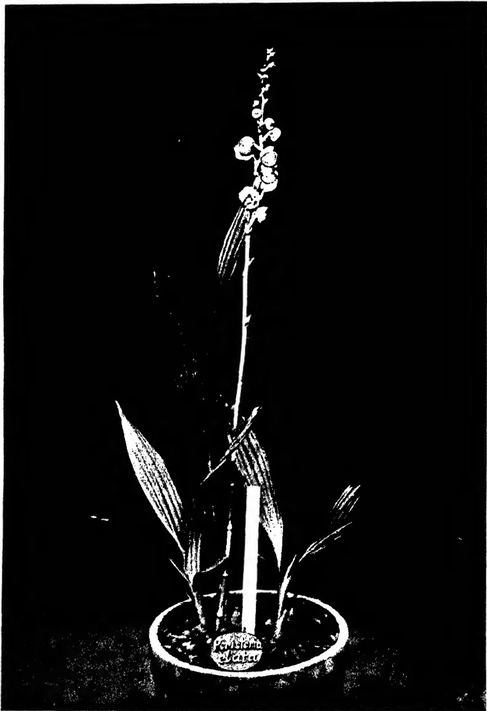
Peristeria elata Hook
11K. J. ALEX. SYLVA, F.R.H.S.,
ASSISTANT CURATOR, HENERATGODA BOTANIC GARDENS
THIS interesting epiphyte is indigenous to Central America and is known there by the name, 'El Spirito Santo', the "Holy Ghost", or "Dove Orchid", by reason of the resemblance of the column of the flower with its beaked anther and side wings to the form of a dove.
It is a strong growing handsome orchid with striated green-coloured large fleshy pseudobulbs of the size of turkeys' eggs. The plant bears three to five lanceolate strongly ribbed plicate leaves, which often attain a height of three feet or more, and a width of about six inches.
The flower stalk rises from the base of the mature pseudobulb, sometimes to a height of five or six feet. The flowers are borne on the upper portion of this stalk, and are almost globular, about an inch and a half across, waxy-white with lilac specks on the base of the lip and inner side of the wings, and strongly scented.
Culture.—Though the plant is an epiphyte it requires a certain amount of the treatment given to terrestrial species. It resents disturbance unless the plant has overgrown its receptacle or the compost has become quite impoverished or sour. Small divisions of the plant or back leafless pseudobulbs with a few roots to each are carefully removed and used for the purpose of propagation.
Young healthy plants are produced on the uppermost leaf scars of the leafless pseudobulbs when severed from the main clump and potted. These small plants or the pseudobulbs themselves should be inserted in six inch pots first in a porous mixture made up of equal parts of flaky leaf soil or turf soil, well-decomposed farmyard manure, and coarse sand. In the course of potting a handful of crushed charcoal may be added to ensure porosity. The young plant should not be buried too deeply. It only requires the root system to be properly spread
12out in the pot, then covered and given a layer of fine compost, up to about an inch from the top of the pot, which should eventually be filled in with pieces of crushed bone, brick and charcoal to enable free access of air and light into the pot. This layer will also serve as a good rooting medium and prevent the soil from being washed away during heavy rain when placed out of doors.
The plant requires a decided rest after flowering, without this it is almost impossible to get it to bloom regularly. To secure this after the flowers are over very little water should be given, only sufficient to prevent the pseudobulbs from shrinking. During the growing season the plant requires a liberal supply of water and should be placed under the shade of tall trees.
A warm, moist atmosphere is very desirable while the plant is in active growth, but avoid placing it in direct sun as the fleshy pseudobulbs are liable to be scorched.
13T. H. HOLLAND, DIP. AGRIC. (WYE),
MANAGER, EXPERIMENT STATION, PERADENIYA
Croton tiglium, Sinh. Jayapala, Tam. Nerwallam, is a small tree native to India and Malaya. The tree has alternate oblong leaves and small flowers in loose racemes. The seed is borne in capsules each of which contains three ovoid seeds about half an inch long.
Croton tiglium should not be confused with the decorative horticultural plant commonly known by the name of "Croton".
Croton tiglium has been introduced into many tropical countries. It is said to be cultivated throughout the greater part of India where it grows in the poorest soils from sea level up to 3,000 feet. It is probable that it will thrive in Ceylon up to this elevation or even higher. Although found in most of the mid-country and low-country districts of the wet zone it is believed that for the production of sound seed the semi-dry districts are preferable. It is to be noted, for instance, that in the Central Province the plant is chiefly cultivated in Teldeniya, Matale North, and the drier parts of Galagedera.
It is also found in the dry zone.
Good drainage is important.
Trials in old rubber or land previously occupied by rubber or coconut have not been successful.
The plant may be successfully propagated by sowing "seed at stake", two or three seeds in a hole, and this is probably the cheapest method. Alternatively small plants may be transplanted from a nursery when three or four inches high. One grower recommends putting seed in a nursery bed for 10 to 12 days and then planting out before the seeds germinate.
The trees may be spaced 10 feet by 10 feet or 12 feet by 12 feet, the former distance giving 435 trees per acre and the latter 302 trees. Some growers advocate planting 15 feet by 15 feet but from observation at Peradeniya 12 feet by 12 feet would appear ample.
14Holes should be dug and should not be less than 18 inches wide and deep. The planting season will vary according to the districts, planting should of course be done at the beginning of a wet season.
Shade is not necessary, though on the Experiment Station, Peradeniya a row of Croton trees which adjoin and obtain some shade from large dadaps serving as shade for an adjoining block of cacao appear rather healthier than those with no shade.
Apart from weeding very little further attention is required, until the trees come into bearing.
At Peradeniya a number of trees have been pollarded to about 6 feet. This has produced a lower and more spreading tree from which it is easier to gather the crop. The yield from such pollarded trees has been found to be fully equal to, or slightly larger than, from unpollarded trees, and the operation can therefore be recommended.
Apart from the removal of dead wood no other pruning would appear to be necessary.
The extraction of the oil is not as a rule undertaken by growers in Ceylon, and consequently the only form of preparation required is the shelling of the seeds (i.e. the removal of the seed capsule) and the careful removal by winnowing and hand picking of all shrivelled and unsound seed.
Seed is shipped to Europe as such and the oil there extracted in mills. The Director of the Imperial Institute, London states "It appears to be customary for firms in this country to prepare the oil themselves from imported seed. Very little, if any, Croton oil is imported here". Sir George Watt in "The Commercial Products of India", however, states that it is better to express the oil before transit as much is lost on the voyage. In India the oil is extracted by cold pressure in the same manner as castor oil. When run off the oil is allowed to stand for 15 days and then filtered through charcoal before bottling.
The only use for Croton oil of which authoritative information has been received is the medicinal one. The oil is a very powerful purgative and is poisonous in excess. It should be handled with care as it is a powerful irritant to the skin.
Croton oil is considerably used by local Ayurvedic Physicians. There is a constant though limited demand in Europe for seed for the extraction of oil for medicinal purposes.
15The most serious insect pest is the caterpillar of Amyna punctum which attacks the leaves and sometimes completely defoliates the trees. The caterpillar also attacks the Keppitiya tree, Croton lacciferus. Complaints of attack by this caterpillar go back for fifty years, but infestation appears to be local and spasmodic. The simplest method of dealing with the caterpillars is to shake them off the trees, or make them drop off by dusting with lime or ashes, and then collect them up from the ground and destroy them.
On trees weakened by caterpillar attacks infestation by the black scale, Saissetia nigra, has been recorded.
Of fungus diseases Cercospora tiglii, a disease which attacks the seed capsules, is the most common. This disease does not usually penetrate very deep but may form an additional limiting factor to the production of sound seed in the wetter districts.
The root disease Fomes lignosus has been recorded on Croton tiglium.
The climate in many parts of Ceylon is so even that in the case of many crops there is no very sharply defined season. This remark applies to Croton and it is quite common to see ripe fruits and flowers on the trees at the same time. At Peradeniya the bulk of the crop is gathered between June and November. A Galagedera grower gives the main crop season as being between July and January. In the Teldeniya district harvesting is said to begin in July and August. A small subsidiary crop is usually gathered at Peradeniya about March but this crop almost invariably contains a large proportion of empty or partially empty seed capsules. The same experience is reported from Galagedera.
The first crop may be expected in two years after planting.
Information on yields is somewhat conflicting. A yield of cwt. of seed per acre is reported from a year old clearing containing a large number of vacancies. An area of cacao which was thickly interplanted with Croton giving 800 Croton trees per acre gave 2 cwt. of seed per acre in the first crop season. Estimates of an average crop from mature Croton trees vary between 3 and 12 cwt. per acre, but the higher rate is not supported by actual yield figures. It would be safe to say that a yield of 2 cwt. could be expected at the first crop and a yield of from 3 to 6 cwt. of seed per acre from mature trees. It is not uncommon at Peradeniya to find that between 30 per cent. and 40
16per cent. of the capsules harvested are empty or light and cannot be used for sowing purposes. This trouble has been experienced in other wet districts. In the drier districts however little trouble from light seed is reported.
At Peradeniya the out-turn of weight of seed to weight of dry seed capsules has been found to be 45 per cent. to 50 per cent., but at Galagedera where trouble from light seed is not experienced the out-turn is stated to be from 56 per cent. to 57 per cent.
The average number of seed capsules in 1 lb is about 600.
The average number of good clean seeds in 1 lb has been found to be 1,554.
For many years the price of Croton seed has been subject to violent fluctuations. The seed is only used for medicinal purposes and being a very powerful drug only used in small quantities the demand is naturally limited. On the other hand the crop is so easily cultivated and comes into bearing so quickly that any rise in price immediately results in further planting with the result that overproduction follows.
In 1885 a correspondent to The Tropical Agriculturist commented on the fact that the price had recently fallen from 56 to 40 shillings per cwt. In 1886 prices between 48 and 70 shillings per cwt. were quoted, while by 1887 the price had fallen to 8 shillings per cwt. or less.
Similar fluctuations have since occurred periodically.
On April 21st, 1931 the Director of the Imperial Institute reported "There is a more or less regular demand for seed in the United Kingdom. Latterly there has been a severe shortage, and for the past six months the value of the seed in London has been about 230 and 290 shillings per cwt., that of the oil being about 14 shillings to 15 shillings per lb. The 'normal' values of the seed and of the oil are about 30 shillings, 40 shillings per cwt., and 3 shillings and nine pence per lb., respectively."
"Recent quotations were 280 shillings per cwt. for the seed and 135 shillings and 4 pence per lb. for the oil, and according to firms that have been consulted by the Institute there are indications that conditions in the market are becoming easier."
The above are London prices. The Colombo Customs export figures for the last three years were:—
| 1929, | 338 | cwt. | exported | valued | @ Rs. | 6,778.00 | = | Rs. | 20 | per cwt. |
| 1930, | 209 | " | " | " | @ ,, | 21,197.00 | = | ,, | 101 | " " |
| 1931, | 377 | " | " | " | @ ,, | 28,732.00 | = | ,, | 76 | " " |
Mr. F. J. Holloway supplied the following information in July, 1932. "The highest price obtained in 1930 was Rs. 130/-. 1931, Rs. 120/-, January to May 1932 up to Rs. 120/-. Just now it is round about Rs. 100/-, but a fall in price may be expected this year as a good deal of Croton was planted on the Matale side in 1930 and 1931".
There is little doubt that fairly extensive planting of Croton has taken place in the last year or two and that a rapid fall in price is almost inevitable.
The Divisional Agricultural Officer, South-Western Division reported in 1931 "Ratnapura district gets its supply of seed from retail merchants in Colombo at Re. 1/- per lb. which is sold to local medical practitioners at Rs. 2/-. The Colombo merchants import the seed from India. It is said that 15 to 20 lb. are annually sold by Ratnapura dealers." It would appear that there is a small import trade from India which seems quite unnecessary in view of the amount exported from the Island.
The Divisional Agricultural Officer, Central Division, reports as follows: "In 1930 there occurred an unprecedented demand for Croton seed and prices rose from Rs. 15/- to Rs. 25/- per cwt. (which were then ruling prices for many years) to over Rs. 150/- per cwt. With this sudden rise in prices village growers in the Teldeniya district have taken up the cultivation."
There appears every probability that past fluctuations in the price of Croton seed will recur again in the future and the planting of extensive areas cannot be recommended.
Croton may be planted as a catch crop in young cacao, and if planted sufficiently early might serve as temporary shade for the young cacao plants. The tree scarcely attains sufficient size to serve as a permanent shade tree for cacao. A line of Croton with the plants 10 to 12 feet apart might be planted between each cacao row.
Croton may also be planted among coffee and in this case the tree appears quite suitable as a permanent shade. Probably a row of Croton trees up alternate coffee rows would provide sufficient shade for the coffee or the Croton could be given the same spacing as the coffee and alternate plants or alternate rows cut out later.
The writer wishes to express his indebtedness to Mr. F. J. Holloway of Trafford Hill, Galagedera, for much valuable information furnished, and to the Divisional Agricultural Officers for reports sent during 1931.
18CONTRIBUTIONS FROM THE RUBBER RESEARCH
SCHEME (CEYLON)
ALTERNATIVE FORMS OF RAW RUBBER
T. E. H. O'BRIEN, M.SC., F.I.C., F.I.R.I.,
DIRECTOR OF RESEARCH,
RUBBER RESEARCH SCHEME (CEYLON)
THE present unremunerative condition of the rubber plantation industry has compelled producers to scrutinize costs of production very carefully and the question is frequently asked whether raw rubber cannot be marketed in some cheaper form than the present standard grades, smoked sheet and pale crepe. Although the question is mainly raised on the score of cost there is also the feeling that a great deal of trouble is taken to turn out rubber of good appearance whilst frequently some minor defect in appearance leads to a reduction in market value out of proportion to the effect of the blemish on the quality of the rubber. Planters also know that manufacturers are not altogether satisfied with the properties of plantation rubber and the question is sometimes put in the form of whether some cheaper and better form of manufacture can be devised.
The writer has spoken on matters arising from these questions at several Planters' meetings during the past few months and it is considered to be of interest to review the subject rather more fully than has been possible on those occasions.
PRESENT METHODS OF MANUFACTURE
It is considered necessary to separate the two questions enumerated above (a) whether cheaper methods can be devised; (b) whether methods giving a better product can be devised. In succeeding paragraphs it will be shown that existing methods can probably be adjusted to give a better product than at present and that there may be scope for marketing rubber in forms other than smoked sheet and crepe but it will become evident that alternative methods of preparation are not likely to decrease costs of manufacture.
In raising the question of adopting cheaper processes planters sometimes have in mind the possibility of reverting to a more primitive product such as the slabs of coagulum produced by the peasants of Sumatra and Borneo; the rather more refined "slab rubber" which has been shipped from certain estates to
19fill special contracts; and the balls of "fine hard Para" which form the standard product of Brazil. It is overlooked that each of these products has to be milled and dried before use in manufacturing processes and that the effect of marketing these grades would merely be to transfer the milling process from the producer to the user. Since coagulum gradually hardens on keeping, the actual cost of milling would be correspondingly greater than that of machining raw coagulum.
For a market with an annual turnover exceeding half a million tons, such as the raw rubber market, it appears to be essential or at least a great convenience that the material should be marketed in a relatively dry condition in order to avoid continual disputes regarding allowances to be made for variation of moisture content.
Consideration of the processes for making smoked sheet and crepe shows that the purpose of each type of machining is to bring the coagulum into a suitable form for efficient drying. In the case of sheet rubber the coagulum is squeezed out sufficiently thin to be dried reasonably rapidly over a wood fire. In crepe manufacture the rubber is rolled thinner since it is to be dried without heat and washing must be more thorough to prevent development of moulds, etc. in the absence of wood smoke. The colour of the material is of importance for certain uses so sodium bisulphite is added to crepe rubber to prevent darkening during drying and storage. It must be admitted that sodium bisulphite is not very effective in this direction since there is not much difference in the colour of crepe prepared with and without bisulphite after a year's storage.
If it is agreed that raw rubber can most conveniently be marketed in a dry form, (except for special products such as preserved latex) then the present form of manufacture must be regarded as quite logical and the only question is whether some cheaper way of preparing a dry product can be devised. In comparing the cost of present methods with possible alternatives the planter, who may unavoidably be producing under relatively inefficient conditions, is inclined to base his calculations on costs in his own factory whereas it would be more reasonable to take as a basis of comparison the cost of preparation of smoked sheet and crepe rubber under the most efficient conditions. Without going into any details the writer expresses the opinion that costs of present methods of manufacture under moderately efficient conditions need not exceed Re. 1.00 per lb. for smoked sheet and Rs. 1.75 per lb. for crepe, without cost of packing cases but including depreciation on the basis of complete renewal of machinery every ten years. At present market prices this may appear a substantial item in cost of production but it is difficult to visualise an alternative process of manufacture which could be
20expected to reduce the cost materially. Reduction of manufacturing costs is more likely to result from the use of the most efficient equipment and the concentration of manufacture in comparatively large factories.
The writer holds no brief for the practice of selling rubber on appearance and agrees that it would be much more satisfactory to market the product on the basis of quality as indicated by physical tests but the present system of grading can only be altered when both manufacturer and producer are in a position to deal on the basis of quality rather than appearance. If a Ceylon producer was offered a contract for rubber with a time of vulcanisation of 100-120 minutes, a mastication number of 80-100, and ageing properties showing less than 10 per cent. reduction of tensile strength after 96 hours' artificial ageing, all under specified conditions, he would not be in a position to accept it at the present time. There is a growing tendency for manufacturers to contract for the product of estates which they know suits their purpose and this may gradually develop into a system of selling on quality rather than appearance.
Until quality replaces appearance as a basis of sale it is fairly logical for the buyer to assume that rubber of good appearance results from careful and uniform methods of manufacture and that defects such as discolouration of crepe and mould, rust, bubbles, etc. in smoked sheet indicate irregularities in preparation which may lead to difficulties in subsequent manufacturing operations, and to value the product accordingly.
It is not so much the system of selling on appearance which causes dissatisfaction to producers as the comparative abuse of the system. The standard basis of sale on contract is "fair average quality" (appearance), which should be a fairly stable standard, but there is too great a tendency to vary the standard according to market conditions. At the present time when the current market price stands at several cents below the figure at which contracts were booked some months ago, the buyer is inclined to translate F. A. Q. as "superfine" quality and to reject rubber which is genuinely fair average quality. In fairness to the manufacturer it must be stated that many of the discounts which are imposed for slight blemishes in the rubber represent so much extra profit to the dealer and are not reflected in the price which the user pays for his supplies.
The most disappointing factor of present methods of manufacture and marketing is that, in spite of the care taken to produce rubber of good appearance, the manufacturer is not fully satisfied with the properties of high grade plantation
21rubber. His main complaint is that there is too much variation in the properties of different batches of the material. Variation in rate of vulcanisation and in ageing properties is less important now than formerly since these differences are largely adjusted by the use of accelerators and anti-oxidants in manufacturing processes. The factor which causes most trouble is the variation in hardness of the rubber, that is variation in the amount of milling required to soften the rubber sufficiently to mix in other compounding ingredients. When it is stated that occasional batches of rubber may vary by 50 per cent. from the average it will be understood that the difficulty is a real one.
Unfortunately for the plantation industry the manufacturer is inclined to meet the difficulty by replacing a proportion of high grade rubber by lower grade material such as "reclaim" and "Singapore blanket" which he knows to be uniformly soft. If the uniformity of plantation rubber could be relied on it would do much to stimulate the use of increased quantities of the material.
Experiments carried out by the Rubber Research Scheme (1) have shown that variation in the product of an individual estate can be limited to about 10-12½ per cent. on either side of the mean by careful standardisation of manufacture but there is also considerable variation in the properties of rubber from different estates arising from inherent differences in the latex. The variability of plantation rubber could be greatly reduced by concentrating manufacture in large factories so that latex from a number of estates could be bulked together.
The Research Scheme has recently been experimenting on hot water treatment of crepe rubber with a view to improving plasticity. Tests carried out up to the present have given satisfactory results and it seems likely that this will prove a practicable and economical method for reducing variability in this direction. Incidentally, and perhaps of greater interest to producers, the treatment minimises discolouration of crepe rubber during drying and storage. Methods are also being considered for preparing a hard grade of rubber which is useful for certain purposes and rubber with a low content of serum substances for electrical insulation.
The possibility of marketing unsmoked sheet was investigated some time ago, in view of the increasing scarcity of firewood for smoking (2). Since it is considered impracticable to dry sheet rubber at ordinary temperature under estate conditions the possible advantage of preparing unsmoked sheet depends on the cost of different fuels. Firewood was considered to be the cheapest fuel up to a price of Rs. 2.50 per "yard" but above that price it becomes cheaper to dry over coke stoves or by
22radiation from steam pipes using coke as fuel for the boiler. It was shown that smoke, as distinct from heat, can be produced with a very small consumption of firewood so there is no particular advantage in producing unsmoked sheet unless the manufacturer shows a preference for this grade.
It has recently been proposed in Malaya to roll sheet rubber sufficiently thin to be air dried at ordinary temperature, as a substitute for crepe rubber, and it is understood that this grade is being prepared on a few estates. The saving of fuel may compensate for the increased amount of machining, but it is uncertain up to the present whether the product will prove a suitable substitute for pale crepe for the manufacture of light coloured articles.
The present standard methods of manufacture depend on coagulation of the latex and subsequent rolling of the coagulum. The only fundamentally different method of obtaining rubber from the latex is to remove the water by evaporation. A process for this purpose, analogous to the evaporation of milk, was developed some years ago by Hopkinson and has been worked on a large scale on the well known H. A. P. M. estates in Sumatra. The latex is sprayed in a finely divided form into a heated air chamber and the particles of rubber fall to the ground where they adhere, to form a spongy mass of rubber. This is pressed into blocks and is then ready for export.
Since the moisture is removed by evaporation it follows that the non-rubber substances present in the latex, amounting to 7-8 per cent., remain in the rubber and their presence confers both advantages and disadvantages on the product. Ageing properties are materially improved but the rubber absorbs moisture more readily and is not suitable for certain purposes. Manufacturers have had opportunities for testing this material but have shown no disposition to favour its adoption as a standard grade of plantation rubber.
No information has been published regarding the cost of this process of manufacture but it appears unlikely that it would be substantially cheaper than present methods.
As a development of the above process an invention has recently been announced, from Holland, by which the particles of rubber obtained by spraying the latex are prevented from adhering and the rubber is obtained in the form of powder. This is an entirely novel product and claims have been made
23that its use will reduce manufacturing costs in certain existing processes by eliminating mastication and will facilitate the use of rubber in various new directions, such as for road surfacing, the linoleum industry, etc. So far both the preparation and utilisation of the material are only at an experimental stage but there appear to be interesting possibilities for development. It will be noted that this product contains all the non-rubber substances present in the latex so can be expected to have the advantages and disadvantages associated with "whole latex" rubber.
Independently of the above process the London Staff of the Research Scheme has devised a method for the preparation of rubber in the form of crumb which can be put to the same type of use as rubber powder. This process involves coagulation of the latex so the product will have similar properties to the ordinary grades of plantation rubber. Samples of the material are being distributed to manufacturers and development of the process will depend on whether the product proves to have advantages over other forms of plantation rubber. It is anticipated that this method of preparation would be somewhat more expensive than crepe manufacture.
Apart from coagulation and evaporation of the latex another alternative is to market the rubber in the form of latex, suitably stabilised to prevent coagulation. The direct use of rubber latex in industry has increased rapidly in the past few years and there is every prospect of continued extension of its use, both for replacing other forms of raw rubber in certain existing processes and for extending the use of rubber in new directions.
Until recently the latex, preserved with ammonia, was shipped at the ordinary field concentration of 35-40 per cent. but various processes have been developed for concentrating the latex prior to export and two of them are being operated on a large scale in Malaya. The "Revertex" process involves the evaporation of water from the latex by heat after addition of an alkaline stabiliser, the product being a paste containing about 75 per cent. rubber. The "Utermark" process, the patent rights of which are held by the Dunlop Company, depends on the removal of water from the latex by centrifugation in a machine of the milk separator type and gives a product, similar in consistency to field latex, containing about 60 per cent. rubber. The two products differ in type since "Revertex" contains an increased proportion of serum substances whereas "Dunlop 60 per cent. latex" contains a reduced proportion. It seems likely
24that the latter type of product will have the more general application in industry. A third method of concentrating latex, by adding a chemical which induces "creaming", is being tested experimentally in Malaya but so far a rubber content exceeding 45-50 per cent. cannot be relied on.
At present there is a steady demand both for ordinary ammoniated latex and for concentrate but it appears probable that the main demand in the future will be for concentrated latex, both on account of the saving in shipping costs and the fact that many of the new applications of latex require the use of the concentrated material. The Dunlop Company has indicated its willingness to issue licences for the use of the centrifugal process and enquiries are in hand regarding the supply of a machine for trial in Ceylon.
The cost of preparing ammoniated latex for shipment depends largely on the scale on which the process is worked. Small shipments of latex are usually made in kerosene tins packed in crates, the preservative being used in the form of "strong liquid ammonia". The cost of preparation and packing amounts, in this case, to 8-9 cents per lb. of rubber. If ammonia gas, purchased in cylinders, is used and the latex is shipped in 40-gallon drums the cost of preparation falls to -4 cents per lb. To these figures must be added the extra cost of shipment as compared with other grades of rubber. No figures are available for the cost of concentrating latex by the centrifugal process but it is likely to be slightly higher than that of ordinary ammoniated latex prepared under efficient conditions.
Rubber in latex form is therefore a more expensive product than crepe or smoked sheet and is only profitable to produce if it sells at a satisfactory premium over other grades. At present latex rubber sells at a premium of approximately 2d. per lb. on the London market so there is a fair margin if economical methods of preparation are adopted.
In an earlier paragraph it was pointed out that the main defect of plantation rubber is its lack of uniformity which could largely be remedied by standardising methods of manufacture and by bulking the latex from large areas. If any new processes of manufacture are introduced in Ceylon, such as the preparation of concentrated latex, rubber crumb or rubber powder, the writer considers it essential that they should not be adopted by individual estates but that co-operative factories should be established so that latex from considerable areas can be bulked and the method of manufacture efficiently controlled, thus assuring the production of a uniform material. The application of this
25principle either to existing or new processes would do much to remove the stigma of variability which is at present associated with plantation rubber.
1. New processes of manufacture of raw rubber are not likely to prove cheaper than existing methods if the latter are carried out under efficient conditions. Adoption of new processes may be justified by an enhanced market value of the product.
2. The uniformity of rubber prepared by existing processes can be improved by standardisation of methods and by bulking the latex from large areas. Thin air-dried sheet has been suggested as a substitute for crepe for manufacture of light coloured articles.
3. Rubber powder and rubber crumb are novel products with interesting possibilities of development but at present both the preparation and utilisation of the materials are at an experimental stage.
4. The direct use of latex in industry has increased rapidly in recent years and continued development is expected. The main demand in the future is likely to be for concentrated latex.
5. If new processes are adopted in Ceylon it is important that co-operative factories should be established to ensure bulking of latex from considerable areas and the production of a uniform material.
R. K. S. MURRAY, A.R.C.SC.,
MYCOLOGIST, RUBBER RESEARCH SCHEME (CEYLON)
THE question of the danger of importing fungus diseases with rubber budwood and budded stumps arose in 1929 in connection with a disease of young bud-shoots. The fungus causing this disease was found to be a particularly virulent strain of Phytophthora palmivora (P. Faberi) which had not previously been reported in Ceylon. The first specimens of this disease were received simultaneously from two estates, the infection having developed in each case on the same Java clone. When it was ascertained that the material on both these estates came from the same consignment of budwood, and that the disease and the particular strain of Phytophthora were known in Java, there was strong reason to suspect that the fungus had come to Ceylon on imported material.
The matter was brought to the attention of the Technical Committee of the Rubber Research Scheme and, at a meeting held in October 1929, it was resolved that experiments should be undertaken to discover an effective and harmless means of disinfecting imported budwood and budded stumps. Attention was drawn to the fact that harmful fungi might be carried in a dormant state on budwood which was itself quite healthy, and that the most careful inspection would not reveal such an external "infection".
In this connection it is of interest to quote Resolution No. 5 of the Second Imperial Mycological Conference held in September 1929. "The Conference suggests that the attention of the Governments of Malaya and Ceylon should be drawn to the desirability of investigating the possibility of treating budwood of rubber against diseases before import".
Experiments were started in Ceylon towards the end of 1929 with a view to finding an effective and practicable means of disinfecting budwood, but unfortunately pressure of other
27work has prevented these experiments being carried to a conclusion. For a full summary of this work reference may be made to a memorandum issued in July 1930, which constitutes an interim report of the work carried out up to that date, and sets forth some of the practical considerations in connection with the application of any disinfectant treatment.
Briefly stated, the most satisfactory results were obtained by dipping the budwood for 5 minutes in weak solutions of copper sulphate, this treatment being apparently both effective in killing fungal spores, and harmless to the budwood. More recent work, however has shown that clones vary greatly, in their susceptibility to damage by immersion in copper sulphate, and it is now clear that this fungicide could not be used as a general budwood disinfectant, at any rate at the concentrations previously tested. It was at this inconclusive stage that the investigations had to be abandoned owing to the prior claim of other duties.
The matter of disinfecting budwood has also received the attention of the Rubber Research Institute of Malaya, and a report entitled "The Effects of Certain Fungicides on the Viability of Hevea Buds" was recently published in the Quarterly Journal of that Institute. The report shows that certain chemicals can safely be used for disinfecting budwood. The investigations, however, were admittedly incomplete, and the Rubber Research Institute of Malaya is not yet in a position to recommend a treatment which will be effective, harmless to all clones, and easy and cheap in practical application.
The present regulations governing the import of Hevea material into Ceylon prohibit absolutely the introduction of any seeds or plants from the Western Hemisphere. In order to import material from the Eastern Hemisphere a permit in writing must be obtained from the Director of Agriculture, Ceylon, and the material must be accompanied by a certificate of freedom from pests and diseases issued by the exporting country. The Inspector, Plant Fumigatorium, Colombo, may unpack and inspect any consignment, but in the case of budwood this inspection is usually waived in order that the budwood may reach the estate with the minimum delay.
The regulations ensure that no actually diseased budwood or budded stumps shall be introduced, since the material has to be carefully inspected in the country of export. They do not, however, prevent the entry of harmful fungi which may be in a dormant state on the surface of the budwood or even in the packing material, since the most careful inspection would not
28reveal the presence of resting spores or mycelium. We may enquire, then, to what extent the possibility of introducing new disease agents with imported budwood is a real danger.
The possibility of fungi new to Ceylon being introduced with imported budwood is exemplified by the case of the strain Phytophthora palmivora referred to above, though its entry in this manner cannot be more than strongly suspected. The disease caused by this fungus has unfortunately caused considerable damage in budwood nurseries during the recent S. W. Monsoon, though it yields fairly readily to control measures. Owing to its wide-spread occurrence in Ceylon at the present time this disease, however, can clearly have no bearing on restriction of future importations. It is also uncertain whether the strain of Phytophthora in question has been responsible for all the cases reported. The indigenous strain of Phytophthora palmivora, although somewhat less virulent in this country than the imported strain, is also capable of causing a die-back of green shoots under favourable conditions.
The absolute inhibition of all Hevea imports from the Western Hemisphere is on account of a dangerous disease known as South American Leaf Disease whose causal fungus, Melanopsammopsis ulei, is fortunately confined to South America. Most of the diseases which occur in the other rubber-producing countries in the Eastern Hemisphere are known also in Ceylon, though they are not of equal importance in all countries. So far as is known the only diseases of consequence which occur further East but not in Ceylon are two in number:
1. Mouldy Rot of the tapped surface caused by Sphaeronema fibriatum, known in Malaya and the Dutch East Indies.
2. Wet Root Rot caused by Fomes pseudoferreus, which occurs only in Malaya.
The introduction of these two fungi on imported budwood is possible though it cannot be considered very probable. Fomes pseudoferreus might occur on the roots of budded stumps but would be unlikely to pass the inspection in the country of export. (In this connection it is of interest to record that the introduction into Indo-China of budded stumps infected with certain root disease has been reported).
The possibility must also be borne in mind of a fungus, which is a weak parasite in its native country, becoming strongly parasitic and possibly dangerous under the different ecological conditions of the country to which it is introduced. Thus, the fungus causing a certain disease in, say, Java may be a different
29biological strain to that causing similar symptoms in Ceylon. The former, on introduction from Java to Ceylon, might become more virulent than either its counterpart native to Ceylon or itself in Java.
It is thus clear that with the present system of almost unrestricted imports the danger of the introduction of new diseases must always be present. In the last section of this report the possible methods of safeguarding the rubber areas in Ceylon against new diseases are briefly considered.
There appear to be two means by which the entry into Ceylon of disease organisms could be prevented more surely than under existing regulations:
Inhibition of the importation of all Hevea material would be a very drastic measure, clearly attended by many objections. It is only necessary to state that such a measure would preclude Ceylon growers from obtaining any of the improved planting material which will become available in Malaya and the Dutch East Indies during the next few years. It is certain that better foreign clones than those at present known will come on the market during the next few years and, until proved Ceylon material is available, budwood or budded stumps from these clones will be required for new plantings and rejuvenation. It is submitted that such a drastic action could only be recommended to Government if there was a likelihood of any disease being introduced which would be a real menace to the plantation industry. At the present time there appears to be no cause for apprehension on this account.
The consideration of recommending legislation to enforce the disinfection of budwood and budded stumps before import must await results of further investigation into disinfecting methods. At the present moment no work is being conducted along these lines in Ceylon owing to shortage of staff, but it is understood that the subject is receiving the attention of the Rubber Research Institute of Malaya. In this matter it may be found desirable to follow the lead of the latter country.
It is unnecessary in this report to deal with the practical problems in connection with any disinfectant treatment. Whether the disinfecting is carried out in the country of export or
30import such difficulties are not likely to prove insuperable. When a suitable treatment is found it is possible that all countries which are exporting or importing Hevea material may introduce regulations for disinfection. In the meantime there appears to be no special cause for fearing the introduction into Ceylon of new diseases, and, at the present juncture, any restriction placed on the import of high yielding material is to be deprecated.
(1) Absolute prohibition of the importation of all plants or parts of plants of Hevea. It is submitted that such a drastic measure could only be justified by the existence in any exporting country of a disease which, if introduced to Ceylon, would constitute a serious menace to the health of the plantations.
(2) Disinfection of all imported Hevea material. When a suitable disinfecting treatment is discovered such a measure may prove a desirable and practicable addition to the present regulations.
8. It is submitted that any unnecessary restriction placed on the entry into Ceylon of high yielding material is, at the present time, highly undesirable.
32W. I. PIERIS, B.A., (HORTIC.) CANTAB.,
AGRICULTURAL ASSISTANT.
RUBBER RESEARCH SCHEME (CEYLON)
IN an article on budgrafting contributed jointly with Mr. R. K. S. Murray to the Rubber Research Scheme Fourth Quarterly Circular for 1931 reference was made to the practice of protecting the cut surfaces of budded stocks with a mixture of Asphalt and Kerosene. Observations made at the Experiment Station, Nivitigalakele during the past year have indicated however that the mixture is not entirely satisfactory either as a waterproof covering or as a protection against wood-rotting fungi, confirming the opinion expressed in the Annual Report of the Rubber Research Institute of Malaya for 1931. An experiment to compare various methods of treatment was initiated at Nivitigalakele in June 1932, and it is the purpose of these notes to record and comment on the results obtained so far. In doing so it may also be of interest to offer some remarks on the past history of treatment of budded stocks at Nivitigalakele in order to indicate the "increasing importance which has been attached to the treatment of the cut surfaces, especially when the stocks are comparatively large.
In the 1926 clearing which is the oldest in the Station the practice was to cut the stock down (after it had been successfully budded) to within 6 inches of the bud-patch and to leave the six inches of stock above the bud-patch, commonly called the "snag" eventually to dry and fall off. This was sometimes more expeditiously effected by kicking the snag over after it had sufficiently withered. If the stocks are young and vigorous, callusing proceeds rapidly and the treatment may prove quite satisfactory but there is obviously a risk of infection by wood-rotting fungi, which start on the decaying snag and may spread to the healthy stock and scion. The risk is likely to increase if the plants are lacking in vigour or are comparatively large at the time of budding. If a hollow is left when the snag falls off, which is not unusual, or is formed by subsequent decay, water collects and further decay is accelerated.
33In the 1927 and part of the 1928 clearing the stocks were cut back to six inches above the bud-patch and a coating of wood tar applied to the cut surface. Some months later when the bud shoot had grown sufficiently to show about 2 feet of brown bark, the snag was sawn off with a sloping cut on a level with the bud-shoot and the cut surface again treated with tar. The same treatment was applied to supplies which were put out to replace budding failures in the 1926 clearing.
A further development in treatment was introduced in later buddings in the 1928 clearing when tar, as a result of its lack of elasticity and liability to crack, was replaced by a mixture of Asphalt and Kerosene referred to above. In addition the cut surface, after removal of the snag, was painted with a 10 per cent. solution of Brunolinum plantarium some hours before application of the waterproof covering. The Asphalt-kerosene mixture in turn has not proved to be entirely satisfactory and has led to the series of experiments recorded in this report.
Decay of the cut surfaces of budded stocks has occurred to some extent in all the clearings on the Station and early in the present season it was decided to make a tree to tree examination and to treat all infected surfaces in order to prevent further decay and to facilitate callusing of the stocks. It is of interest to note that in many cases the exposed wood surface appeared quite sound when examined superficially but careful inspection showed that the wood was soft and tindery underneath. After preliminary trials and pending more definite information from the experiments which have been initiated, the following method of treatment was adopted. All rotted tissue was scooped out down to clean wood and the surface painted first with a 10 per cent. solution of Brunolinum plantarium, and after drying, with Skene's pruning mixture. If after scooping, a hollow remained in which water could lodge, it was filled up with a mixture of one part "Colas" and two parts sand kneaded into a form of putty.
Treatment has been carried out in all three clearings but has only been completed in the 1926 clearing. Of 1,218 trees in this clearing 919 were budded in the field and 299 were budded in the nurseries and subsequently transplanted, ("supplies"). Of those budded in the field 389 were treated as described above and 530 did not require treatment. Of the 299 "supplies" 150 were treated and 149 did not require treatment.
34The treated plants were divided into the following groups:
| Budded | Supplies | |
|---|---|---|
| Stock (only) affected to depth of less than 1 inch | 72 | 54 |
| Stock (only) affected to depth of more than 1 inch | 269 | 80 |
| Scion (only) affected | 10 | 0 |
| Stock and scion both affected | 38 | 16 |
389 |
150 |
Comparison of the figures might suggest that the method of treatment has had little effect in preventing decay since the snags of most of the buddings were allowed to drop off whilst most of the supplies had the snags sawn off. It must however be remembered that supplies take some time to become fully established and would be expected to be less resistant to attack by wood-rotting fungi. A better comparison on this point can be made when figures are available for the experimental trees which are under special observation.
From the relatively large number of trees which have been treated it might be supposed that the general condition of the trees in the clearing is unsatisfactory but this is not the case. The trees are growing well and a number are already being test-tapped. Many trees which were treated had, at the time of treatment, already callused over except for a small hole in the centre in which water could lodge. The Colas filling which was applied squeezes out as callusing proceeds and the extent to which this has occurred in the past few months shows that rapid healing is taking place.
The object in presenting the figures at the present time is to emphasize the value of periodical inspection of budded plants, renewal of the waterproof cover on the cut surface of the stock and the early treatment of any which show signs of decay. The liability to decay occurs in the period before the bud shoot is sufficiently developed to maintain the vigour of the plant but once a hollow forms which can hold moisture it is difficult for the plant to resist further decay in spite of increasing vigour. Earlier treatment of the plants in this clearing would doubtless have prevented the comparatively large number of cases in which decay had extended to a depth of more than an inch.
General observation at the Experiment Station and on estates indicates that careful waterproofing of the cut surface of the stock is of considerable value in preventing decay but that the more important factor is the state of vigour of the plants. An appropriate application of a manure mixture a few months
35before budding for instance will go a long way in ensuring successful callusing of the joint of stock and scion.
In view of the somewhat undesirable number of budded plants which have become decayed to a greater or less extent at the snag joint a series of field experiments was undertaken in June 1932 to ascertain:
(1) how best to treat joints which had already commenced "rot" and in some cases had penetrated several inches down into the stock or up into the scion, and
(2) what form of treatment would be most effective for adoption immediately upon de-snagging in order, if possible, to prevent rot starting at all.
Layout.—Part I of the experiment was replicated in all three clearings and 12 trees were allotted to each treatment. Plants were selected from actual infected specimens (except for controls) growing in the field according as they most suited the treatments undertaken. Each specimen was marked with a tar band and its number recorded with particulars and sketches of the infected area. All plants used for the experiment had to be budded plants where stocks had already been cut down some time previously and whose scions were fairly advanced in growth, allowing sufficient time for the rot to develop. The treatments were as follows:
Treatments E and F were carried out on joints which, after scooping out, left a hole of anything from 1 to 8 inches deep in which water could collect and treatments C and D on joints where infection was of a more superficial nature leaving no deep hollow for the accumulation of rain water.
Observations to date.—An inspection of the plants was made in Nov.-Dec., 1932 approximately 5 months after the experiment was started. The lots of control plants showed no detectable change in condition and will have to be left longer before obtaining the information that is required of them. They were included in the experiment with the idea of ascertaining whether lot A, left untreated, will in time develop infection, and whether the infection in lot B, similarly left, will tend to spread further with time. Choice between lots C and D at the present stage is difficult and observations show that both the Skene's mixture and Colas are satisfactory for the purpose for which they were used, namely for covering flat surfaces where water accumulation does not take place. The covering of Skene's mixture over the cut surface has formed into a hard, more or less impervious crust over the wood while that of Colas has subsided into a slightly softer layer. Skene's mixture however shows signs of greater adhesion, is easily applied and on the whole appears to be preferable. Colas has the advantage that it can be applied when the surface is damp. For the purpose of filling stocks containing cleaned-out holes although the cement filling in E has not proved definitely unsuitable the Colas-sand mixture in F has been considered preferable. The latter owing to its permanently soft consistency does not act as a deterrent against the closing up (by callus formation) of the hole and gets squeezed out as callusing develops. The cement, besides being unable to do this, tends on hardening to crack round the edges of the filling with the consequent danger of letting in water to the bottom of the hole and starting fresh rot. Even the provision of shade was not always successful in avoiding cracking. Moreover the "unshrinkableness" of the cement may tend to act as a definite deterrent against the speedy closing in of the hole if the filling is not done to perfection.
Layout.—For the second part of the experiment budded plants whose snags had been freshly cut down were utilised. The experiment was for this reason confined to the 1928 clearing.
37The treatments were:
Observations to date.—Here again the control group, at time of examination, had not had time to produce results, and the snags though in a more advanced stage of decay than in July (when started) were not sufficiently withered to fall off or to be kicked over. Until such stage is reached one is not able to state definitely whether leaving the snag to fall off results in wood-rot spreading from the dying snag to the healthy tissue of the stock and scion. Lots B and C again showed that the Skene's mixture had maintained the surfaces treated with it in a satisfactory condition up to the present stage and had formed the same hard crust over the wood which was described earlier. As compared with B & C, lots D & E have proved disappointing. The Entwas-sulphur layer has in many cases almost entirely disappeared from the cut surface of the stock (i.e. at the end of 4 months from application) having melted and poured down its sides, sometimes leaving a dark mould in its place. It was observed that by 10 a.m. on a hot day the mixture began to melt unless shade was provided. A further disadvantage is the formation of bubbles on the surface of the mixture a few days after application. Eventually these bubbles break leaving
38exposed patches of bare wood and causing flaking away of the area immediately around them by rain. Bubble formation is caused by the exudation of sap from the surface of the cut stock and may occur even after allowing an interval of 14 days between cutting down and application of the wax mixture. Accordingly in the light of present experience and on account of the more tedious preparation of the wax mixture and the provision of shade required by it, which is not always convenient to supply, it has been decided to adopt the Skene's treatment as general practice at Nivitigalakele in preference to the wax-sulphur mixture. It should be mentioned that callus formation with the latter is very marked although the former is not deficient in this respect. It is preferable that the Skene's mixture be renewed every 6 months. Lots F & G at the present stage show no change worth recording. They were only started in August 1932.
The remarks made in this article are not intended to present a complete thesis on the treatment of stocks but rather to outline experience gained and observations made at the Experiment Station, Nivitigalakele. The experiments are still in a half-way stage and the conclusions essayed in certain instances are therefore subject to revision.
39SINCE the inception of the present series of pineapple disease investigations in October, 1931, attention has been chiefly centred on the problem of determining the cause or causes of "wilt" and the conditions necessary for its development. "Wilt" is wide-spread and increasingly destructive in pineapple fields in Queensland and is unquestionably the most serious trouble with which growers have to contend. Field studies carried out during the past twelve months have shown that wilting of pineapple plants may arise from several different causes and that the expression of disease symptoms developing in wilt-affected fields varies according to the dominant underlying cause. In fact, on the basis of symptoms developed, it has been found possible to differentiate between three distinct types of wilt occurring in Queensland plantations, namely:
The last-named type of wilt "(c)" is the one which is causing most serious concern amongst pineapple growers in Queensland at the present time.
During the twelve months that the present investigations have been in progress, they have contributed, among other things, a fair amount of information concerning the manner in which the wilt disease is disseminated from diseased to healthy plantations. Considerable evidence has been secured which indicates that the spread of wilt disease throughout the pineapple-growing districts of Queensland has been largely brought about through the planting of suckers, slips and tops derived from diseased plantations. In particular, the indiscriminate planting of tops obtained free from canning factories—which has been carried on extensively in some districts during the last two or three seasons—appears to have contributed greatly to the serious position in which wilt has placed the industry in those areas at the present time.
While most growers are now fully alive to the importance of taking planting material only from healthy fields, it is not so generally realised that even in apparently healthy fields rigorous selection of planting material is necessary if the general standard of the plantations is to be maintained.
* By H. K. Lewcock, M.Sc., B.Sc., Agric., Assistant Plant Pathologist, in Queensland Agricultural Journal, Volume XXXVIII, Part 5, November 1, 1932.
40Long-experienced growers are almost all agreed that, during the past ten years, the vitality and productiveness of Queensland pineapple plantations have shown a gradual but noticeable decline, quite apart from losses attributable to the wilt disease. This is a matter which vitally concerns every grower, as the profitable cultivation of pineapples depends not only on the price received for the fruit, but also on the yield per acre. Costs of production remain approximately the same whether the yield per acre of marketable fruit in 100 cases or 500 cases.
In view of the present depressed state of the industry, no grower can afford to ignore any economically practicable means whereby the productiveness of his plantations may be maintained or improved. Selection of planting material on a large scale is a simple and sure method not only of ensuring disease-free stock, but also of improving the whole general standard of pineapple plantations.
In practising selection the first task is to get clearly in mind what characters of the parent plants should be perpetuated or eliminated and, secondly, to determine these characters are hereditary or due merely to the conditions under which the parent plants are grown.
The foremost consideration is, of course, that the planting stock shall be free from disease when planted and possess a high degree of resistance to disease infections throughout its subsequent development.
These are the criteria on which any plan or method of selection must be based. However, while the grower may practise selection primarily to secure vigorous, disease-free stock, he can, with but little additional efforts, so widen the basis for selection as to include improvement of type and increased productiveness.
With regard to the fruit itself, size and shape are the most important characters to be considered.
For canning purposes, uniformly large, heavy fruit are preferred, whilst for the fresh fruit market, medium-sized fruit are in chief demand.
Only meagre data are available as to whether the size of the fruit is of a persistent character. However, the evidence at hand indicates that when selecting planting material from fields where the fruit is running medium to large in size, it is advisable to avoid plants bearing undersized fruit.
Both for canning and market purposes it is desired that the fruits should be long and cylindrical in shape, of good diameter, and possessed of flat eyes and small cores. Cone-shaped fruit are particularly unsuited for canning and abnormalities such as multiple tops also detract from the commercial value of the fruit, even when they are of fair weight. Propagation tests carried out in Hawaii indicate that the shape of the fruit is an hereditary character and plants throwing slender conical, or misshapened fruit should be avoided when selecting planting material. On the other hand
41multiple tops and prominent eyes appear to be due to environment and there is no evidence at present available which would suggest that these characters are transmitted in planting material.
In determining the suitability of the plant as a source of propagating material, the characters which should be looked for are: (1) general vigour and productiveness, (2) free production of suckers, and (3) resistance to disease. All growers are agreed as to the importance of perpetuating these desirable characters in their plantations. It should be borne in mind, however, that planting material should not be selected on vegetative characters alone, as vigorous growth is no guide to the type of fruit produced and lasting benefits from selection can only come from improved yields and types of fruit.
A word of caution is necessary with regard to plants throwing an excessive number of slips round the base of the fruit. This abnormality is known in Hawaii as "Collar of slips" and all the data so far available, both locally and in Hawaii, indicate that it is an hereditary characteristic. For this reason, and irrespective of their apparent vigour, all plants throwing a "Collar of slips" should be strictly avoided when selecting planting material, as such plants produce few, if any, suckers and the yield from subsequent crops is reduced accordingly. "Collar of slips" is an especially mischievous variation from type in that it offers an obvious and very easy source of planting material which would be seized upon by careless or inexperienced growers. However, provided that the "Collar of slips" type of plant is avoided, the number of slips borne (up to half a dozen) need not be considered in selecting parents from which to take planting material.
Tests carried out in Florida by the United States Department of Agriculture indicate that only well-developed suckers or slips should be used as planting material. Other things being equal, it has been found that large-sized suckers and slips not only produce much stronger plants than undersized weak ones, but they are also likely to be freer from disease and come into bearing much more quickly. It is important, therefore, not to collect planting material until it has attained a fairly advanced stage of development.
If possible, the selection of planting material should be made only from young plants at or near the time the first fruit (plant crop) is harvested. With plants of this age it is not only easier to recognise the characters which it is desired to perpetuate but it is also possible to ensure with some degree of certainty that the planting material has been derived from wilt-free stock. In any case worn out or abandoned plantations should not be used as sources of planting material under any circumstances, as in such fields it is exceedingly difficult to distinguish between healthy and diseased plants and quite impossible to determine which plants possess desirable vegetative and fruiting characteristics. For similar reasons, the use of butts as planting material is also much to be deprecated. Furthermore, suckers and slips for planting purposes should not be taken from apparently healthy plants growing adjacent to patches affected with wilt disease, as such plants may be already infected with wilt although the symptoms are not yet evident.
42Finally growers are cautioned not to purchase suckers or slips from plantations with which they are not personally familiar unless it is known on reliable authority that such plantations are free from wilt disease. Anyone who has seen the result of planting suckers or slips taken from wilt-affected plants will not henceforth be likely to use planting material from wilt-affected fields.
In order to ensure that suckers and slips are selected only from plants which meet the desired requirements of freedom from disease, vigorous and free production of suckers, combined with the production of weighty, well shaped and uniform fruit, such plants should be marked at fruiting time by dabbing a little white paint on several of the most prominent leaves. Then when the time comes to gather the planting material after the fruit has been harvested, all plants not so marked are rigidly rejected irrespective of their apparent vigour or the number of suckers or slips which they have produced.
In Hawaii where tops are used extensively for planting purposes, it is the practice to select and remove these from the fruit before they are harvested. By this practice which is possible only because of the close proximity of the Hawaiian pineapple fields to the canning factories—it is insured that all tops used for planting have been individually selected from plants and fruits of the most desirable type. Unfortunately the selection of tops in this way is not practicable under Queensland conditions, particularly during the summer months, owing to the lengthy interval which elapses between the time the fruit is harvested and its arrival at the cannery.
As previously pointed out, the indiscriminate planting of tops procured free from canning factories is a practice which cannot be too strongly condemned. In a number of instances it has been possible to definitely trace the spread of wilt disease from a field planted with tops obtained from the canning factories. While such planting material may appear to offer a cheap means of planting up an area with pineapples, it is likely to prove very costly in the long run. The origin of tops procured in this way is unknown and, quite apart from the danger of disseminating diseases, the use of such planting material should be discontinued by every grower who seeks to maintain or improve the productivity of his plantation.
Many growers are under the impression that the diminution in yield and vigour of their plantations, which has become so evident during recent years, is due to their stock "running out" and that the introduction of planting material from another district will be markedly beneficial and result in greatly increased yields. On many farms the deterioration of the pineapple stock is very serious trouble, but it has resulted not so much from continued planting of the same stock as from continued discriminate propagation without selection.
Methodical and persistent selection of planting material—long recognised as being most important in maintaining yields from other vegetatively-propagated crops—is just as essential in securing the best results from pineapple-growing. Several of the most successful pineapple-growers in Queensland have been planting from the same stock for as long as
43thirty years, and over this period the yields obtained per acre have increased rather than diminished. These results are largely due to the discrimination exercised in the choice of planting material. The intelligent grower realises that it pays to grow nothing but the best and that to introduce planting material from an unknown source on to his farm might jeopardise the health and vigour of his own planting stock which has taken him years of effort to bring to its present state of productiveness. Instances of the calamitous results following on the introduction of diseased planting material to previously healthy plantations have occurred all too frequently in Queensland during the past few years, as many growers can testify.
The purchase of planting stock from an old-established, productive, and disease-free plantation, for the purpose of improving the type and yield of fruit grown, is a commendable practice and one likely to benefit the industry generally; but the indiscriminate planting of stock from unknown sources, frequently from abandoned or worn-out fields, is detrimental to the interests of all concerned and cannot be too strongly condemned. Undesirable types of plants and fruits are perpetuated and, what is even more serious, diseases are frequently transmitted from unhealthy parent plants to new fields. There is no doubt whatever that many of the losses and failures experienced during recent years have been due in large measure to the indiscriminate planting of suckers, slips, stumps, and tops from weak, diseased, or worn-out plants.
From the foregoing discussion it should be evident that the advantages to be derived from careful selection of planting material are not open to argument; they are real, tangible, and practicable, as Hawaiian experience has proved beyond all shadow of doubt. The direct monetary benefits likely to accrue from increased yields should alone convince all growers of the value of the practice, but the indirect benefits resulting from the stabilisation of the canning industry with a standard quality product are likely to be even greater and more far-reaching.
44SODIUM Chlorate is a white crystalline salt that is readily soluble in cold water, and is best applied in solution in the form of a spray. It can be used in the dry state but this method is slower in action and less economical of material, and should only be used when it is desired to treat small patches of a few square feet, or when spraying equipment is not available.
The effective strength of the solution will vary with different weeds and their stage of growth. For most weeds, particularly deep-rooting ones, a 10 per cent. solution is required, prepared by dissolving the sodium chlorate at the rate of one lb. in 1 gallon of water. Many weeds can be destroyed with much weaker solutions, even as a weak dilution as 1 per cent. The rate of application will, of course, vary according to the amount of vegetation. One hundred gallons of solution is usually sufficient to treat 1 acre of weed growth, but with weeds that make heavy growth the quantity should be increased to about 150 gallons.
All the leaves of the weeds should be well moistened with the solution, and, as the spray is more effective and economical of material when in the form of a mist, spraying machines on the compressed air principle are the most suitable for its application. A knapsack sprayer of 2 to 5 gallons capacity will serve the purpose for the spraying of small patches, but a barrel sprayer mounted on a waggon or truck is more convenient for larger areas. When it is desired to treat several areas, power sprays as used in commercial orchards could be adapted for the purpose and would be very efficient.
For the destruction of deep-rooting weeds it is generally necessary to make two sprayings, any new growth made by the plants being sprayed about six to eight weeks after the first spraying. Unlike that of many other weedicides, which rapidly kill the top growth but do not destroy the roots, the action of sodium chlorate is very slow; at first comparatively little effect is noticed, but the plants gradually wither, the roots become exhausted, and finally the whole plant dies.
The sprayed areas should be left undisturbed for a period of three months after spraying.
The best time for spraying weeds is, as a rule, when they are in full bloom, and the action of sodium chlorate is more rapid when the air is moist. Rain following a short time after spraying does not hinder the action of the spray; in fact, in some instances the kill has been more complete when rain followed within a few hours of spraying. The chemical is not so effective on weeds which are continually in the shade, and the best results are obtained where spraying is done in direct sunlight.
* Extracted from the Agricultural Gazette of New South Wales, Vol. XLIII, Part II, November 1, 1932.
45As sodium chlorate is as injurious to other growing plants as it is to weeds, care is required not to let the spray solution come in contact with other plants that it is not desired to destroy, nor should it be used in close proximity to shallow rooting plants as it is likely to penetrate the soil and effect the root systems. Any spray apparatus that has been used must be thoroughly rinsed with plenty of water to remove all traces of the chemical before being used to spray fruit trees, etc.
The quantity of sodium chlorate used for the spraying of weeds has only a temporarily injurious effect on the soil. It would affect crops sown very soon after spraying; the period that must elapse before it is safe to sow crops will depend on the amount of rainfall subsequent to spraying. It has been found that crops can be safely sown during the season succeeding the application.
Sodium chlorate is poisonous to stock if taken in sufficient quantity, and, although with the relatively small quantity of chemical used for spraying, there is little danger of stock being harmed by eating the sprayed vegetation, there is nevertheless a possibility that they may receive an overdose by licking recent-sprayed foliage. For safety, stock should be removed from sprayed areas until the weeds have been well washed by rains, and care should be taken that stock do not have access to unused spray, which they will readily drink.
Materials which burn easily, if sprinkled with a solution of sodium chlorate, are rendered more inflammable, and fine straw, clothing etc., that have been moistened with the solution and allowed to dry may be ignited by friction or from a spark, and thus constitute a fire menace. It is therefore inadvisable to prepare the solution inside sheds, and if the clothing become saturated with the solution, it should be thoroughly rinsed before being allowed to dry. Leather boots also absorb the solution readily and are not easily cleaned; therefore if large quantities are being used, it is preferable that rubber boots be worn. The wooden parts of vehicles used for conveying the solution should be painted to prevent absorption of the chemical.
46THE systematic use of large scale machinery on the farm, called for convenience "mechanisation," is usually combined with a reduction in the number of live-stock kept, and hence causes certain modifications in the fertility relationships of the soil. Four important groups of problems are being investigated.
(a) The classical experiments at Rothamsted have shown that soil fertility can be kept at a certain moderate level by the use of artificial fertilisers alone without the use of farmyard manure. In general, however, the growth of the crop has not been enough to keep down weeds, and much expense has been entailed in cleaning. A combination of artificial fertilisers with occasional fallows, however, has proved effective in maintaining yields at low expenditure in labour but with a loss of one year in four or five. Where straw is saleable at a profit this method may be adopted. Where however straw cannot be sold—and this is the usual case—it may be converted into manure, so saving some of the fertiliser bill. This is readily accomplished where many animals are kept; the straw is simply turned into farmyard manure. The experiments show that crops obtain about 25 per cent. of the nitrogen of farmyard manure, as compared with about 50 per cent. of the nitrogen of artificial fertilisers. The recovery of potash is higher, being about 60 per cent. But on many farms the numbers of animals are being reduced and the straw must be decomposed in some other way. Investigations into the decomposition of straw have long been in hand in the Bacteriological and Fermentation Departments; four different products can be obtained according to the organisms used and the conditions under which they act:—a mixture of humic substances much like farmyard manure; pentoses; hexoses; and power gas (methane and hydrogen).
The pentoses have little practical importance; the power gas is difficult to handle on the large scale; but the hexoses are the best source of power alcohol, and this particular decomposition may prove to have considerable commercial value. For the farmer, however, the production of humus is the most important of these various changes and it has been studied in considerable detail. A method for converting a heap of straw
* Extracted from Reports on the Work of Agricultural Research Institutes and on certain other Agricultural Investigations in the United Kingdom, 1930-1931.
47into artificial farmyard manure by addition of nitrogen compounds, phosphate and calcium carbonate was worked out in these laboratories by Hutchinson and Richards, and developed as a large scale process by the Adco syndicate; it has been successfully adopted by large and increasing numbers of farmers and planters in Great Britain and the Overseas Empire.
Another method is now being studied: the decomposition of straw in the soil. In practice this would have the advantage of requiring less handling of the straw and thus lowering the cost of growing cereal crops. The crop would be "stripped," i.e. the ears cut off with as little straw as convenient, then the remaining straw ploughed in and allowed to decompose in the ground. The laboratory experiments show that the decomposition of the straw requires a warm temperature and a sufficient supply of nitrate or ammonium salts; if therefore the straw is ploughed into the ground in autumn while the soil is still warm and fairly rich in nitrates, the decomposition should be fairly rapid and inexpensive, seeing that the nitrates would be largely washed out if they were not utilised in this way. If, however, the straw is not ploughed in until late winter, when the soil is cold and much of the nitrate has been leached out, then decomposition is slower and may be disadvantageous to the crop by using up nitrates that would otherwise have increased its growth. Two sets of field experiments have been started to deal with these problems.
(b) Green Manuring.—This affords a simple method of manuring both heavy and light soils, and it requires no live-stock; it can be practised on completely mechanised farms. Its advantage in certain conditions has long been recognised, but of late years a number of instances has been recorded where it proved ineffective. The most striking is at Woburn, where, over a series of years, green manuring with tares and with mustard has failed to increase yields of wheat. Experiments carried out a few years ago on several other farms with the help of a grant from the Royal Agricultural Society of England also yielded negative results.
There are, however, undoubted successes, and investigations have been made and are still in progress to find the conditions under which green manuring is likely to give useful results. Two of the most important factors are the composition of the plants at the time of ploughing in and the time at which the ploughing is done. If the ratio C:N in the crop exceeds a certain value (usually about 20), the organisms effecting the decomposition require more nitrogen than is supplied by the crop, and so they draw on the soil nitrates that would otherwise either be washed out or taken by the plant. If, however, the ratio is less than this value, the organisms do not need the whole of the nitrogen and they leave the excess in the soil in the form of nitrate which as before is either washed out or taken by the plant. Investigations have shown that at Woburn the tares crop failed to increase the growth of wheat because it was ploughed under in autumn, and rapidly gave rise to nitrate which the wheat plant, being insufficiently developed, could not assimilate, so it was washed out, and in the following spring the wheat suffered from nitrogen starvation. The mustard assimilated nitrate and so saved it from loss, but it liberated it too slowly to be of use to the wheat. The value of nitrogen depends on the time when it is given; when given late to barley it reduces the ear tillers and the number of fertile grains and increases the vegetative tillers. It seems clear that the process of green manuring needs to be closely adapted to the soil and the crop so as to ensure liberation of nitrate only when the plant is in a position to take it up.
48(a) Hitherto in Burma the belief has been that the only method by which the water hyacinth propagated itself was the vegetative one, i.e. by suckers from the stems of the parent plants. In his preliminary report on beda-bin (Eichhornia crassipes, Solms.), printed in 1916, the late Mr. A. M. Sawyer, Assistant Director of Agriculture (Botany) stated, "The outstanding fact which is strongly indicated by these observations is that though the plant has distinct methods of regeneration—vegetative and reproductive—its regeneration by vegetative means so far transcends its regeneration by seed-production as to relegate the latter to a comparatively insignificant place in its development and dissemination. Even the favour of special seasons and the combination of special conditions and adaptations seem to, after all, result in the formation of but a minute quantity of seed as compared with the vast and indefinite multitude of shoots. The observations serve to confirm the impression taken at an early stage in this study that the beda-bin, though a sporophyte, is so in a relative and limited sense and confirms to the regenerative traditions of its family of reproduction by vegetative shoots." But he had never observed any sexual propagation in nature and had failed to get seeds to germinate. Later in the Annual Report of the Botanical Section, Northern Circle, for the year ended 30th June 1918, he further states: "No success attended experiments to germinate the seed in the laboratory. But satisfactory results were obtained in the open. On the 24th February, 1916 four single plants in fruit were thrown into a tub of water with a substratum of clay. The plants did not thrive and were pulled up and thrown away. On the 22nd August 1917, or 18 months after the plants were placed in the tub, grass-like leaves were seen appearing on the surface of the clay. These were found to be beda-bins. Their subsequent development was slow and they had not flowered when the year of report closed. The observations show that, compared with the propagation of the plant by suckers, its reproduction from seed is extremely slow and therefore a factor of far less importance in the multiplication of the species." From this it is quite evident that although he succeeded in obtaining seedlings under his own created artificial conditions yet he never observed the process in nature and no further record on the subject has been found except that these seedlings developed flowers but died without setting seed.
* By H. F. Robertson, B.Sc. (Edin.), I.A.S., Professor of Agriculture and Officiating Economic Botanist, Burma and Ba Thein, B.Sc., B.Ag., B.A.S., Assistant Director of Agriculture (Botany), Mandalay, in Agriculture and Live-stock in India, Vol. II, Part IV, July 1932.
49(b) Recently attention was drawn to the matter by three publications, viz.,
From these it was learned that seedlings had been found under natural conditions not very different from those obtaining in parts of Burma and at the request of the Director of Agriculture, Burma, enquiries were instituted.
An observer was sent to Lower Burma between the 11th and 16th May 1931, to visit Hmawbi and Pegu just after the first rains. He failed to find any seedlings and no doubt this was too soon. A keen lookout was kept all the time at Mandalay and neighbourhood and on the 10th June, two very small monocotyledonous seedlings were found in marshy ground alongside the Patheingyi Irrigation Distributory where the road from the College to the town crosses it. Their identity was in doubt though proved later, and they were transplanted with soil into a pot in the pot-culture shed. However before they developed all doubt as to their identity was set at rest by the finding of the numerous seedlings at all stages of growth in a tank on the College Farm on 26th June. These seedlings were easily identified as those of water hyacinth.
It is rather remarkable that these latter seedlings were found under practically the same conditions as the first ones in Orissa, i.e., in an isolated small constructed tank on the College Farm which dries out in the hot weather and which the senior writer had had cleared of water hyacinth on numerous occasions. On return from a year's leave he was very surprised, and even annoyed with his subordinate staff, to find it full of water hyacinth again.
After this the junior writer was sent to Lower Burma between the 2nd and 10th July and he visited Hmawbi (Insein District), Pegu and Tatkon (Yamethin District). At all places visited he found seedlings. Apparently the seeds had now had time to germinate after the break of the rains.
Further search round Mandalay revealed very few seedlings to be found in any permanent water except a very occasional one round the edges where the water had fallen during the dry season. Under suitable conditions seedlings were still being found in September and October but in reduced numbers.
(a) Seeds.—1.3 to 1.6 mm. by 0.6 mm. diameter, obovate, truncate at the apex, abruptly constricted to a short point at the base, with 11 to 13 longitudinal ridges; 50 to 150 brown seeds per capsule.
(b) Leaves of Seedlings.—The youngest stage of seedling obtained at Mandalay in Upper Burma had one green linear leaf 5 to 7 mm. by 0.8 to 1 mm., a cotyledon 10 to 13 mm. by 0.5 to 0.75 mm, and a primary root 8 to 10 mm. long.
50Seedlings at this stage were brought to the laboratory, and kept under observation in the pot-culture shed to determine (1) the time taken to produce successive linear leaves, and (2) the size of these leaves. The results are shown in table I.
Table IThe size of linear leaves of water hyacinth seedlings and the number of days taken to produce them.
| Linear leaf of seedling | Size of leaf | Number of days required to produce these | |
|---|---|---|---|
| Length | Breadth | ||
| mm. | mm. | ||
| 1st .. .. | 5.0 - 8.0 | 0.8 - 1.0 | .. |
| 2nd ... .. | 7.0 - 10.0 | 1.0 - 1.5 | 3 - 5 |
| 3rd ... .. | 8.0 - 12.0 | 2.0 - 3.0 | 5 - 8 |
| 4th ... .. | 10.0 - 13.0 | 3.0 - 3.5 | 7 - 12 |
| 5th ... .. | 13.0 - 15.0 | 3.0 - 4.0 | 9 - 14 |
From the above it will be seen that it takes about two weeks for a seedling under conditions at Mandalay to produce five leaves. After this stage the leaves are shorter and broader and have swollen petioles indicating the presence of more aerenchyma which help the seedling when submerged to float up to the surface of water.
It has been noted however, that the size of leaves of water hyacinth seedlings varies with the climatic conditions under which they grow. Thus at Hmawbi (100 in. rainfall) in the Insein District, Lower Burma, where the climatic conditions are more favourable than in Mandalay (30 in.), the maximum sizes of linear leaves are 50 to 65 mm. by 3 to 5 mm., while at Tatkon (40 in.) in the Yamethin District these are 15 to 20 mm. by 2 to 3 mm.
It has been further noticed that when seedlings grow under submerged conditions the first leaf with a recognisable swollen petiole is formed generally after the fifth node and very rarely at the fifth node. But in the case of seedlings which are early submerged, such leaves are produced sooner, i.e., generally before the fifth node and very rarely after. This seems to indicate that under submerged conditions, seedlings developed aerenchymatous petioled leaves at a younger stage than when they are not submerged.
(c) Hypocotyl of Seedlings.—Observations made to determine the presence or absence of hypocotyl showed that for seedlings grown under natural conditions the hypocotyl is absent in most cases. A seed which germinated on soil at the edge of the sloping side of an earthenware pot in
51the pot-culture shed produced a seedling with a clearly demarcated hypocotyl. This, together with the observations made under natural conditions, confirms the views of Parija (1930) that in Eichhornia "if the seed germinates on the surface and the mud is suitably moist, then there is no hypocotyl, while, if the water content falls below the required minimum, the hypocotyl is intercalated to carry the radicle down to the proper depth."
(d) Roots of Seedlings.—Roots are fibrous and are produced adventitiously at the base of the leaves of the seedlings. The development of the root system of seedlings at the early stage is much more vigorous and rapid than in the case of the shoot system. Thus a one-leafed seedling which takes 3 to 5 days to produce the second leaf, would within the same period have produced 5-6 roots which are longer than the first leaf.
When a seedling floats up to the surface after submersion, it generally breaks away from the root-stock, bearing with it a few short adventitious roots just above the point of cleavage, which grow and multiply quickly. Occasionally however, the root-stock also is brought up with the floating seedling and remains undetached for some time. This happens only when the soil on which the seedling grows is loose.
(e) Comparison of seedling and sucker plants.—When fully developed, it is difficult and almost impossible to say if a particular water hyacinth plant is formed from a seedling or from a sucker. Plants from seed produce suckers and behave exactly like those produced by suckers.
In the early stage, however, it is possible to distinguish them by the following characteristics: (1) Size of plantlets—In the case of suckers, the plantlets are much larger, i.e., sucker plantlets having only 2 to 4 leaves are larger than seed plantlets having 10 leaves. (2) Leaves—The swollen petioles and the laminae of sucker plantlets are much larger and the articulation between the petiole and the lamina is more distinct than in the case of seed plantlets. (3) Remains or scar of sucker offshoot—These can only be present in the case of sucker plantlets.
In every case where seedlings were found, whether in Lower Burma or Upper Burma, the conditions were the same. During the dry season of the year from December to May the water in depressions had completely dried out leaving exposed the dry-baked surface which was watered again and sometimes gradually covered with water on the break of the rains in May or later. Agnes Arber (1920) writing of delayed germination in hydrophytes states "The sprouting of the seed may in some cases be deferred until the third, fourth, or fifth year, the embryo remaining uninjured by this prolonged period of dormancy. Several investigators have studied the subject of delayed germination, and the rather curious fact has emerged that this delay only occurs if the seeds are continuously immersed in water; if they are subjected to a period of drying, they germinate promptly." On no occasion were seedlings found in permanent standing water except round the edges which had dried up during the dry season owing to the fall in the water level.
52The development of seedlings also seemed to be associated with the presence of decayed organic matter (e.g. decayed water hyacinth plants), and the period of maximum production of seedlings would appear to centre round the month of June. In Lower Burma owing to high and continuous rainfall it is unlikely that there will be any further production during the year, but in Upper Burma where the rainfall is low and extremely irregular there may be other batches of seedlings depending on the distribution of the rainfall in any particular season.
Apparently even where the seedlings become submerged on the rise of the water some may survive for a time and eventually detach themselves from their roots and float to the surface where they produce adventitious roots. This has been effected under artificial conditions and certainly occurred in the tank at the College Farm where the water rose to a height of a foot or more.
From what has been said above there can be no doubt that the extent of propagation by seed is limited when compared with the ordinary process of vegetative reproduction since the suitable conditions for the former are more limited both in area and in time, i.e. vegetative reproduction can go on practically the whole year round on the much larger areas of permanent water, whereas sexual reproduction is restricted to the one period of the year (might occur more frequently under Upper Burma conditions) and a smaller area of suitable conditions. But nevertheless there can be even less doubt that it is sufficiently extensive to cause wide re-infestation in any cleared area where suitable conditions exist and adds very greatly to the difficulty of any campaign of control.
Added to this is the possibility that the seed may possess the power of delayed germination and lie dormant for some time (Agnes Arber, 1920). Sawyer as already mentioned in second reference found seeds germinating after 18 months and the point wants clearing up.
Although actual examination has only been made in the areas mentioned, yet it can reasonably be presumed from these examples that sexual propagation of water hyacinth is general to the whole Province of Burma wherever it grows and wherever suitable conditions, as described, are to be found.
For the first time the sexual propagation of water hyacinth (Vern. beda-bin, Bot. Eichhornia crassipes, Solms.) under natural conditions in Burma is recorded and seedlings described. It would appear to be general to the whole Province and though much less extensive than asexual propagation must be reckoned within considering control measures. The suitable conditions are apparently a period of drought alternating with a period or periods of plentiful moisture,
53Minutes of the eleventh meeting of the Board of Management, held at 11 a.m. on Thursday, November 17, 1932, in Room No. 202, New Secretariat, Colombo.
Present.—Dr. W. Youngman (in the chair), Messrs. C. W. Bickmore, C.C.S., (Acting Financial Secretary), I. L. Cameron, C. E. A. Dias, J.P., A. E. de Silva, B. F. de Silva, H. R. Freeman, M.S.C., J. L. Kotalawala, M.S.C., F. A. Obeyesekere, M.S.C., C. A. Pereira, B. M. Selwyn, E. C. Villiers, M.S.C., and Colonel T. Y. Wright.
Mr. T. E. H. O'Brien, Director of Research, was present by invitation and acted as Secretary to the meeting.
Apology for absence was received from Mr. G. K. Stewart, M.S.C.
The Chairman reported the resignation from the Board of Mr. J. D. Hoare on his departure from Ceylon on home leave. No nomination had yet been received to fill the vacancy.
Draft estimates for 1933 which had previously been circulated to members were considered in detail. The Chairman invited attention to the estimate of income from cess collections (representing exports of 45,000 tons) which he considered somewhat too optimistic. He thought that a very cautious estimate of income should be adopted. It was decided to reduce the estimate for cess collections to the revised figure for 1932, namely Rs. 105,350 (representing exports of 37,600 tons). After discussion of items relating to depreciation, Bonus and Passage Fund, travelling allowances etc., and a reduction of the vote for stationery the following estimate of income and expenditure was adopted:
| Estimated income for 1933 | ... | Rs. 113,750 |
| Estimated expenditure for 1933 | ... | „ 92,339 |
The Chairman reported the appointment of a bungalow watcher during the absence of Mr. Murray on home leave and stated that the Audit Department required the Board's sanction for the expenditure. The appointment was approved.
Statements of receipts and payments of the Board and of the London Advisory Committee for the quarters ended June 30 and September 30, 1932, were adopted.
54The Chairman reported the renewal of a fixed deposit of Rs. 10,000 for one year at 4% and 2 new deposits of Rs. 10,000 each for one year at 3½%.
Statements of expenditure on the Experiment Station for June, July, August and September, 1932, were tabled. Mr. O'Brien reported that there would be slight over expenditure under certain heads of the estimates although a nett under expenditure of approximately Rs. 1,500 was anticipated. Additional votes totalling Rs. 122.50 were approved.
The Chairman read a letter from the Hon'ble the Minister of Agriculture and Lands in reply to the resolution passed at the last meeting of the Board. It would be noted that the Hon'ble the Minister was not in a position to say that under no circumstances would money be allocated from the Restriction Fund for the purchase of a mature rubber estate. This proposal would be considered on its merits.
After full discussion of the subject the following resolutions were passed:
After discussion of correspondence with the Income Tax Department regarding the recognition of the Provident Fund under Section 9 (1) (g) it was decided to enquire from the officers of the Scheme whether they wish the Fund to be recognised under the Income Tax Ordinance.
The following publications were tabled:
Discussion of other items on the agenda was deferred to the next meeting.
55MINUTES of a meeting of the Sub-Committee of the Estate and Food Products Committees appointed to consider the Memorandum of the Hon'ble the Minister of Agriculture and Lands on "the necessity for the reconstruction of the Board of Agriculture" held in the Board Room of the Department of Agriculture, Peradeniya, on Monday, November 28th, 1932, at 2.30 p.m. The Director of Agriculture took the chair.
Present.—Sir H. Marcus Fernando, Messrs. A. G. Baynham, J. Carson-Parker, R. P. Gaddum, S. Pararajasingham, C. A. M. de Silva, Rolf Smerdon, and W. A. Udugama, Ratemahatmaya.
Messages regretting inability to attend the meeting owing to illness were received from Messrs. C. Drieberg and Wace de Niese.
The Chairman in opening the meeting said that the matter before the Committee was quite plain and the purpose for which they had met was to consider the Minister's Memorandum on the reconstruction of the Board of Agriculture. The Board of Agriculture as at present constituted was made up of three Committees viz., the Executive Committee, the Estate Products Committee, and the Food Products Committee. The Executive Committee was constituted as follows:
President: His Excellency the Governor
Vice-President: The Hon'ble the Minister of Agriculture and Lands, who had taken the place of the Colonial Secretary under the new Constitution.
The Director of Agriculture, Sir H. Marcus Fernando, Sir Solomon Dias Bandaranaike, K.C.M.G., Mr. A. Mahadeva, the Chairman, Planters' Association of Ceylon, the Chairman, Low-Country Products Association, Mr. R. G. Coombe and Mr. C. E. A. Dias. The Ex-officio members were the Government Agents of the Western Province, Central Province, Southern Province, North-Western Province, and Northern Province, and the Director of Irrigation.
The Estate Products and Food Products Committees consisted of members appointed by His Excellency the Governor after nomination by the various associations and the Director of Agriculture to serve for a term of three years. In addition to the nominated members there were also certain co-opted members on these Committees.
The Chairman indicated that the Memorandum of the Hon'ble the Minister of Agriculture and Lands was briefly discussed at the last joint meeting of the Estate Products and Food Products Committees. Since then he had received a Memorandum prepared by Mr. Rolf Smerdon for circulation to the members of the Sub-Committee. He regretted it was not possible to have posted this Memorandum to those present as he had received it only 3 or 4 days before the meeting and owing to the unsatisfactory postal
56arrangements at Peradeniya, he had not forwarded it to members but tabled it at this meeting. He also received the following letter from the Secretary of the Planters' Association of Ceylon :
"At the meeting of the General Committee of the Association held on the 9th instant it was stated that at the last meeting of the Estate Products and Food Products Committees it was proposed that the Board of Agriculture, as at present constituted should be abolished. There was a lengthy discussion on the subject and I was instructed to send you the following resolution which was passed unanimously :
On the information at its disposal this Committee is of the opinion that it would be detrimental to all agricultural interests in Ceylon to abolish the Board of Agriculture. This Committee regrets that an opportunity to discuss this question was not previously given in accordance with the assurance given by the Minister for Agriculture and Lands to the Estate Products Committee.
I am instructed to ask you to be good enough to forward this resolution to the proper quarters. I am also instructed to ask you what is the latest date on which you wish to receive this Association's considered comments on the matter. If you will be good enough to forward to me any information dealing with this subject I shall be grateful."
To this letter he had sent the following reply :
"With reference to your letter of the 18th November, 1932, the Memorandum of the Ministry on the reconstruction of the Board of Agriculture was received in this office on November 4th. It was I understand already published in the Press. It was placed before the members of the combined Estate Products and Food Products Committees at their meeting on November 8th. The Joint Committee decided that a Sub-Committee should be appointed to consider the Memorandum and that another Joint Committee of the Estate Products and Food Products Committees should be held in December before the tenure of the present Committees expires, to consider the Sub-Committee's report. This Sub-Committee meets on November 28th and it would no doubt be of assistance if your Associations' comments could be considered then."
The Chairman said that he had not received any comments from the Planters' Association of Ceylon, presumably they had not had sufficient time to formulate any scheme. He had in the ordinary way submitted this correspondence to the Hon'ble the Minister of Agriculture and Lands. In this connexion the Hon'ble the Minister had asked what was the assurance of which the Planters' Association was thinking and what other opportunity do they desire to discuss the question. He also indicated that no decision had as yet been arrived at and that he would be only too happy to receive the views of the Planters' Association within a reasonable time. The Chairman said that he himself could not understand what was the assurance of which the Planters' Association was thinking and he would therefore be glad if any member could enlighten him with regard to this. It was agreed that there was some misunderstanding over this question and that the assurance referred to was no doubt that given at the last combined Estate Products and Food Products Committees meeting which had been reported in the Press.
57Mr. Baynham indicated that the Minister's Memorandum had been received only early that month and that they had not had adequate time to consider it. He said that they did not desire to express an opinion in Kandy without first obtaining the views of the various District Associations and that this would take some time.
The Chairman indicated that the Memorandum should be considered early as the life of the Board terminated at the end of the year.
Mr. Carson-Parker indicated that as at present constituted the Board was too large and unwieldy and he recommended that the numbers be reduced by at least half. Mr. C. A. M. de Silva seconded the reduction of the advisory Board. The Chairman agreed that the present Board functioned rather as a debating society than as an advisory Board but indicated that he appreciated the value of the discussions which took place at the meetings of the Estate and Food Products Committees. It was agreed if a new Board was formed that the Executive Committee should be a small one to act in an advisory capacity and make any necessary recommendations from the Central Board to the various Ministries concerned.
Mr. R. P. Gaddum suggested a reversion to the state of affairs that existed after the formation of the Ceylon Agricultural Society in 1904, on the basis of Mr. Rolf Smerdon's Memorandum. There was some discussion of Mr. Rolf Smerdon's Memorandum especially on the question of proportional representation and it was decided that this would make the numbers too large. It was finally agreed that the constitution of a new Central Board be recommended—to be called the "Board of Agriculture". After further discussion regarding the constitution of the Central Board, District Agricultural Committees, and Divisional Agricultural Associations, it was finally proposed by Sir H. Marcus Fernando and seconded by Mr. S. Pararajasingham that a new Board of Agriculture be formed on the lines indicated hereunder. This was unanimously agreed to.
The Board to consist of an Executive Committee comprising not more than ten members, elected by the Board, and the Chairman (the Director of Agriculture); the Executive Committee to make representations and recommendations as desired by the Board to the Ministry of Agriculture and other Ministries for the furthering of the agricultural interests of the Island. The Board through its Executive Committee to function more in an advisory capacity than it had done in the past. The full Central Board of Agriculture to consist of a Chairman (the Director of Agriculture); 24 elected representatives, one from each of the 19 District Agricultural Committees proposed hereunder; two members elected by the Planters' Association of Ceylon, two members elected by the Low-Country Products Association, and one member elected by the Ceylon Estates Proprietary Association; 14 ex-officio members comprising: the Chairman of the Planters' Association of Ceylon, the Chairman of the Low-Country Products Association, the Directors of the Tea Research Institute, the Rubber Research Scheme and the Coconut Research Scheme; 6 officers of the Research Branch of the Department of Agriculture, one officer from each of the Departments of Irrigation, Forest, and Veterinary Services; and 10 members nominated by the Director of Agriculture, to provide for the inclusion of persons who had taken a real interest in the Agriculture of the Island and who would not otherwise be included in the personnel of the Board. The Secretary to the Board to be the Manager of the Experiment Station, Peradeniya, and
58meetings to be held in the Board Room of the Department of Agriculture, Peradeniya. It was agreed that the issue of railway warrants be recommended for the use of members of the Board and that visitors should be allowed to attend but have no vote.
District Agricultural Committees to be formed representative of the respective revenue districts of the Island under the Chairmanship of the Government Agent or Assistant Government Agent with the Divisional Agricultural Officer as Secretary and to consist of members elected from the Divisional Agricultural Associations proposed hereunder. Each of these Committees to have the power to co-opt and nominate, up to a reasonable number, representatives of local agricultural industries not already represented on the District Agricultural Committee.
Divisional Agricultural Associations to be formed in each of the Chief Headmen's Divisions under the Chairmanship of the Chief Headmen and with the local Agricultural Instructor as Secretary. These associations to consist of members elected by existing and future local agricultural and co-operative societies, agricultural associations, or similar bodies; representatives of village committees and other persons with a real interest in local agriculture nominated by the Government Agents, Assistant Government Agents and the Chief Headmen concerned.
For the purpose of promoting the construction of these Divisional Agricultural Associations the formation and use of local agricultural and co-operative societies is to be encouraged, especially in areas backward in this respect where, in many cases, the constitution of the Divisional Agricultural Associations may be at first largely a matter of nomination.
The discussion concluded by the voicing of the hope that the Minister of Agriculture and Lands would utilise the services of the proposed Board of Agriculture if formed.
The meeting terminated after it had been agreed that the minutes of the meeting should be circulated to all members of the Estate Products and Food Products Committees before the adjourned meeting, which was fixed to be held on Friday, December 16th at 2 p.m.
W. C. LESTER-SMITH,
Secretary,
Board of Agriculture.
Minutes of the adjourned fifty-third meeting of the Estate Products Committee and the adjourned seventeenth meeting of the Food Products Committee held jointly in the Board Room of the Department of Agriculture, Peradeniya, at 2 p.m. on Friday, December 16th, 1932.
Present.—The Director of Agriculture (Chairman); the Government Agent, North-Western Province; Sir Solomon Dias Bandaranaike; Sir H. Marcus Fernando; Mr. R. G. Coombe; the Government Entomologist; the Government Mycologist; the Government Agricultural Chemist; the Director of the Tea Research Institute; the Director of the Rubber Research Scheme; the Chief Technical Officer of the Coconut Research Scheme; the Divisional Agricultural Officers of the Northern, Central, Southern, North-Western, South-Western and Eastern Divisions; the Economic Botanist; Messrs. J. P. Blackmore; Chas. Bouchier; J. Carson-Parker; V. A. de Mauny; Wace de Niese; Chas. A. M. de Silva; C. C. du Pré Moore; H. D. Ditmas; James W. Ferguson; J. Fergusson; G. B. Foote; James Forbes; R. P. Gaddum; H. D. Garrick; John Horsfall; C. Muthyah, J.P.; Mudaliyar S. Muththamby; Messrs. Graham Panuttasekera; S. Pararajasingham; F. A. E. Price; Gate Mudaliyar A. E. Rajapakse, M.S.C.; Mr. A. Ramanatham; Mudaliyar C. Rasanayagam; Messrs. T. Sathasivam; B. M. Selwyn; N. D. S. Silva; Roll Smerdon; M. M. Subramaniam, M.S.C.; A. T. Sydney-Smith; E. C. Vithers; Mudaliyar S. M. P. Vanderkoen; Messrs. A. W. Warburton-Gray; H. A. Webb; M. B. Wettewe; Huntley-Wilkinson; W. C. Lester-Smith (Acting Secretary, Estate Products Committee) and Mudaliyar N. Wickramaratne, (Secretary, Food Products Committee).
Visitors:—Messrs. V. Canagaratnam; Cecil N. E. J. de Mel; C. H. Gadd; F. P. Jepson; and C. L. Wickramasinghe (Govt. Agent, N.C.P.).
Letters or telegrams expressing regret at inability to attend the meeting were received from Sir Henry L. de Mel, M.S.C., Messrs. G. Robert de Zoysa, M.S.C.; W. S. Burnett; Felix R. Dias; C. Drieberg; E. C. de Fonseca (Jnr.); A. H. Reid; J. H. Litterington; and W. A. Udugama, R.M.
The Chairman in opening the meeting indicated that as it was an adjourned one there were no minutes to be confirmed. He indicated that at the meeting on November 8th, it was decided to adjourn the meeting and that he should appoint a Sub-Committee of five representatives from each of the Estate and Food Products Committees to consider and submit proposals which were before them that day regarding the reconstruction of the Board of Agriculture and the form in which it should continue. In accordance with their wishes he had nominated the following to form a Sub-Committee, with himself as Chairman: Sir H. Marcus Fernando; Messrs. A. G. Baynham; J. Carson-Parker; Wace de Niese; C. A. M. de
60Silva; C. Drieberg; R. P. Gaddum; S. Pararajasingham; Rolf Smerdon; and W. A. Udugama, R.M. The Sub-Committee had met on November 28th and formulated a scheme, copies of which had been sent to them.
In opening the discussion the Chairman stated that the chief business to be done that afternoon was to hear opinions and criticisms and to come to some decision as to whether they would accept the scheme proposed by the Sub-Committee in its present form, in a revised form, or put forward an entirely new and different scheme. From what he had heard he believed that there was a unanimous desire that the Board of Agriculture should continue in some form. There was no doubt that in the past a considerable interest had been taken in their discussions and that the opportunity provided for members to come together and air their points of view upon agricultural topics had been very valuable. Personally he would be extremely sorry to see this opportunity cease and he considered that everyone else would feel the same but he desired to point out that in the past they had rather overlooked the fact that the Board of Agriculture was charged with definite advisory functions and that some of their difficulties had arisen because they had tended to overlook that fact. The Board really was an advisory body for the agriculture of the Island and it certainly consisted of the largest body of experts on agricultural matters that it was possible to get together in Ceylon and as such he was sure it was capable of being very valuable.
The Chairman then indicated that he considered that the advisory function of the Board had been rather overlooked in the past as the chief advisory part of it, which should have been the Executive Committee, had not functioned as much as it might have done. The proposal put forward by the Sub-Committee that there should be an Executive Committee elected from among the members of the Board would to a large extent remedy that point, and, if the Board continued, the great need of sound constructive criticism and advice was a point that they should not overlook in the future.
After reviewing in detail the proposals put forward by the Sub-Committee the Chairman requested the fullest criticism and suggestions for alterations or improvements which could in any way help in the constitution of a constructive Board of Agriculture which would be of even greater use to the Island at the present time than had been the case in the past. Free discussion was then invited.
Mr. N. D. S. Silva in connection with the proposed Divisional Agricultural Associations inquired how they could overcome the handicap of having only junior advisory officers on these Associations who would not be in touch with the policies of the departments they represented.
The Chairman indicated that the idea was rather that these officers and the chief headmen should impress prominent agriculturists in their areas into being nominated to the Divisional Associations and that the growth of such associations was a question of time.
Mr. Huntley-Wilkinson asked what exactly would be the function of the Central Committee of the Board and how often and at what intervals it would sit.
61The Chairman indicated that its function would presumably be exactly the same as that with which the present Board was charged, that of advising upon agricultural matters. How often they should sit was a matter upon which they might put forward suggestions.
Mr. A. T. Sydney-Smith then proposed "that the principle of reconstruction on the basis of the Sub-Committee's report be approved provided that some form of the existing Estate and Food Products Committees be retained with as wide representation as at present, meeting bi-monthly for the purpose of discussing agricultural problems." He indicated that the proposals contained in the report of the Sub-Committee and the Minister's Memorandum went far to meet the changing conditions of the country, and, that his resolution was also the resolution of the Planters' Association. He stressed the view that for agriculture, territorial representation would not provide representative views on the subject; he considered that it was people who really thought things out that they wanted, that it was the landowners and the representatives of the goiyas they wanted on the Committees, so that every aspect of agriculture should be fully represented.
Mr. R. G. Coombe speaking in support of the resolution hoped they would be able to see their way to meeting the desire of the Planters' Association of Ceylon in this respect. Touching on the earlier history of the Estate Products Committee when it used to meet at Gannoruwa he pointed out that it had claims to be a means of inter-communion between the various masses representing the agricultural interests of the Island. That it had been one of its brightest features that they had been able to meet on common ground and discuss matters of vital interests to themselves and this country. With regard to the village committees he wished that he could feel there were some prospects of success in the suggestions put forward but he had had experience of these committees, and in association with Mr. N. D. S. Silva on one of these they had been trying to improve the agricultural conditions of the villager who was the person they should endeavour to help as much as they could. He suggested, however, that as long as the present headmen system continued there was very little hope of improving the outlook and prospects of the villager.
Mudaliyar N. Wickramaratne referring to the recommendations of the Sub-Committee suggested that the non-provision of places for the Government Agent and representatives of the Co-operative Department and the Medical and Sanitary Services on the Central Board were shortcomings. He emphasised the fact that the villager should be provided with the means of conveying his views to the District Agricultural Committees and from these to the Central Board. He expressed disagreement with the views of Mr. R. G. Coombe regarding the village headmen. While they were admittedly not all good they could not condemn them all on this account; they could not abolish the headmen system for the sake of agriculture, they should improve and reform the system.
Mr. Bruce Foote supporting the remarks of Mr. Sydney-Smith and Mr. R. G. Coombe emphasised the value of the two existing Estate and Food Products Committees as a means of liaison between the Research Institutes and the Scientific Staff of the Department. It was the only opportunity provided for planters both European and Ceylonese to meet each other and the scientific staffs for the purpose of discussing agricultural problems. To weaken the present Committees either in numbers or in
62personnel he considered would deprive the Department and agriculture generally of a large number of interested men. The proposals of the Sub-Committee did not appeal to him and he considered that it would be a long time before the Divisional Agricultural Associations would be of any use.
Mr. Rolf Smerdon indicated that the presence of visitors had been envisaged by the Sub-Committee but that this would again expose it to the charge of being a debating society so he asked why dissolve the present form of Committees. The main objection to them appeared to be that they were too large to do any constructive work, why then should not the Board elect two Executive Committees and remain otherwise as at present?
The Chairman expressed the fact that the Sub-Committee had been unanimous that the Executive Committee should be elected by the Board about the continuance of which, in some form, they were agreed. The views of the Sub-Committee and his own were that they should have an Executive Committee to keep the advisory aspect of the Board very prominently to the fore. A second point was that they should make provision for representation of village organisation on the Board. The village was bound to become more prominent in agriculture and in agricultural politics in Ceylon in the future; its growth might be slow, and, whether they brought in village organisation at once or as it found its feet and gained in status agriculturally, was immaterial provided that it was made possible for village agriculture to be represented on the Board. Village agriculture was undoubtedly backward at present and in many cases not capable of sending any representatives to such a Board but in its construction they should make room for the village agriculturists so that as they developed they could come into the Board and express their views.
Mr. E. C. Villiers considered that it was more desirable to mould the existing Board to enable village interests to come in as they became available and to get the proposed district and village committees started before doing away with the existing Food and Estate Products Committees. He suggested starting at the foundation by educating the villager and that when representatives could come forward they would be thoroughly welcome on the present Committees and in this way the object aimed at could be gradually achieved.
Dr. R. V. Norris in asking how often under the present constitution the Board and the Executive Committee met, indicated that he felt that the weakness of the present position was due rather to the non-utilisation of existing machinery. He thought the Executive Committee might function in two ways; by passing on to the Minister the results of discussions at meetings and bringing up subjects for discussion.
The Chairman indicated that during his tenure of office the Executive Committee had met twice. He felt that there was no great need to destroy the constitution of the Board but that if the Executive Committee could be reconstituted in some way so as to make it an elected committee this would assist in achieving the aims of the Sub-Committee. With regard to the number of times the Estate and Food Products Committees had met, they were supposed to meet six and four times a year respectively and any lapses were due to insufficient agencies. It was because of this last difficulty that he had conceived the idea of holding joint meetings of the two Committees and he considered that this was a wise move and had been
63generally appreciated. He felt that it was a general desire of both Committees that they should continue in the future and he believed there was no necessity for separating them in future. Their joint association had brought in village representation to a small extent though perhaps not so fully as might be desired.
In answer to questions by Mr. Huntley-Wilkinson the Chairman stated that the Executive Committee as at present constituted had no Chairman but that His Excellency the Governor was the President and the Vice-President was now the Hon'ble the Minister of Agriculture and Lands.
In reply to Mr. Carson-Parker the Chairman indicated that the present Board expired at the end of this year and that automatically the Committees connected with it terminate.
Mr. R. G. Coombe intimated that the Board did not expire at the end of this year but that only the members of the present Board go out of office, the Board itself as constituted by the Ordinance did not cease to exist. The Chairman admitted that this was the correct interpretation and Mr. R. G. Coombe suggested for the present that the Board should not be abolished.
Mr. Wace de Niese supporting Mr. Villiers' suggestions feared that the Ordinance would have to be amended if it were to be adopted. If the Minister did not choose to nominate the personnel of the Board then it did expire without the repeal of the Ordinance, it was simply prevented from being brought into being.
Mr. Subramaniam agreed with Mr. Coombe that headmen should have no opportunity of controlling village agricultural committees. With regard to the present constitution of the Board he agreed entirely with some of the speakers that there should be no anxiety in the minds of members that certain interests were represented on the Board to the detriment of others. As far as he could see, the planting interests generally had not been against the interests of the indigenous population.
Mr. Bruce Foote, in connection with the remarks of Mr. Villiers and Mr. Coombe, asked for some assurance regarding the position of the Board on December 31st. Were fresh members going to be appointed, would there be a hiatus until a new Ordinance came in, or would the present Ordinance be flouted?
Mr. Muthyah supported Mr. Subramaniam.
Mr. T. E. H. O'Brien suggested that the present Committees should go on as at present until the various local bodies proposed had been formed and were in a position to nominate representatives to the Board.
In reply to a question by Mr. Huntley-Wilkinson the Chairman said there was nothing in the Ordinance so far as he could see to prevent them from altering the Executive Committee so as to make it more advisory and that the Sub-Committee had this in mind. The Executive Committee could be elected by the other two Committees. If the recommendations of the Sub-Committee and the resolution before them were accepted it would presumably mean a new Ordinance.
Mr. Bruce Foote indicated that they were practically unanimous that they should continue as they were; the only amendment required to the Ordinance would be to alter the constitution of the Executive Committee and provide for the institution of village committees.
Some discussion over the present or a new Ordinance ensued on a motion by Mr. E. C. Villiers to which Sir Marcus Fernando, the Chairman, Mr. Carson-Parker, Mr. Subramaniam, Mr. R. G. Coombe, Mr. Wace de Niese, Dr. R. V. Norris, Mr. R. P. Gaddum, Mr. Bruce Foote and Mr.
64Sydney-Smith contributed. The latter stressed the desire of the planting community to assist the Minister of Agriculture in every way to achieve his object of obtaining greater representation for village interests on the Board and to help him in the work that he was doing for the country. Mr. E. C. Villiers' resolution was finally unanimously accepted in the following terms: "That nominations and appointments to the two Committees be gazetted from January 1st, 1933".
After further discussion contributed to by Messrs. N. D. S. Silva, Sydney-Smith, E. C. Villiers, J. Fergusson, the Chairman, Bruce Foote, H. D. Garrick, James Forbes, Carson-Parker, Huntley-Wilkinson, Parajasingham and Dr. Norris, Mr. James Forbes proposed that: "This Committee is of the opinion that District Agricultural Committees and Divisional Agricultural Associations should be formed in terms of the Sub-Committee's Memorandum of November 28th, 1932 and that provision be made for the representatives of these bodies to be co-opted on to the Board, and that the Minister be apprised of the desire of the Joint Committees to co-operate in every way possible with his requirements".
Mr. N. D. S. Silva seconded and the motion was carried unanimously.
Mr. Huntley-Wilkinson then proposed: "That provision be made for the Executive Committee to act in an advisory capacity".
Mr. F. A. E. Price seconded and the motion was carried unanimously.
The Chairman indicated that the Minister desired some information on the question of marketing estate produce with regard to the proposals for the formation of a Marketing Board.
Mr. H. A. Webb said that the proposal was that there should be a Marketing Board formed in two sections, one to deal with local produce of estates and the other to deal with produce exported overseas. The section concerned with overseas trade would have to be initiated by the Planters' Association and the Ceylon Estates Proprietary Association, and the local organisation by the Minister of Agriculture. The whole object was to help producers and especially the small producers of Ceylon to sell their produce without loss instead of being victimised by the middlemen as at present.
Mr. Carson-Parker requested a little more time to consider the matter. The Chairman said that the matter was one of considerable importance and the Minister desired the views of the planting industry in connection with planting products.
Mr. B. M. Selwyn stated that though he was not in a position to put forward a definite recommendation at present the Planters' Association hope to offer suggestions after further consideration of the matter. In reply to a question by the Chairman, Mr. Selwyn said that his remarks might be taken as a statement coming from the Planters' Association.
Mr. Bruce Foote indicated that many of them had not realised that the previous meeting was the last occasion on which Mr. Holland would be with them and he felt sorry that they had not remembered to express some appreciation of Mr. Holland's work while he was there to hear it himself. He proposed: "That this Committee desires to express its sincere appreciation of the services rendered as Secretary by Mr. T. H. Holland over a
65large number of years and to convey its good wishes to him". He pointed out how courteous and helpful Mr. Holland had been and that they all felt they had lost a very able and efficient Secretary and the Department a most capable officer.
Mr. Wace de Niese rising to second the motion confirmed the fact that they were not aware that Mr. Holland would be terminating his official career after the last meeting and that they were sorry to have lost the opportunity of conveying their thanks to him and their appreciation of his good work. He commented on the fact that Mr. Holland was always cool and collected and accepted any criticisms made at meetings regarding his experiments. His exceedingly pleasant and engaging manner was always appreciated by them and he had great pleasure in seconding Mr. Bruce Foote's proposal. This was carried unanimously.
In reply to Mr. Bruce Foote the Chairman promised to convey their good wishes to Mr. Holland.
Mr. Wace de Niese stressed the necessity for the Agricultural Department to keep stocks of manures at various centres in the Island for sale in small quantities to paddy cultivators on terms of credit.
Mr. Muthyah spoke in support of the motion of Mr. Wace de Niese.
The Chairman stated that he was entirely in sympathy with the proposal but that there were certain difficulties such as the views of the Auditor General on credit sales, and the fact that the application of chemical fertilisers to paddy was not an economic proposition in some parts of the Island on account of transport charges. He expressed the view that the matter was mainly one demanding co-operative action and that the solution lay in the formation of co-operative societies for the supply of fertilisers. Where chemical fertilisers were not economic it was their policy to go in for, and to recommend the construction of, compost pits for the concentration of cattle manure and all material of a nitrogenous nature for application to the fields. The Agricultural Department was doing everything it could for the villager in connexion with use of fertilisers and manure.
Mr. Wace de Niese, after commenting on the fact that the class of villager they had in mind was poor and could not generally afford to be a member of a co-operative society, and after having been supported by Mr. Muthyah and Mr. Subramaniam proposed "that every facility should be given for the supply of fertilisers to paddy growers in suitable areas."
This was seconded by Mr. Muthyah and carried unanimously.
Time did not permit of this item being taken up.
W. C. LESTER-SMITH,
Acting Secretary,
Estate Products Committee.
N. WICKRAMARATNE,
Secretary,
Food Products Committee.
"The prosperity of Ceylon depends largely on the development of its agricultural resources and the advancement of its agricultural industries." In these pithy words Governor Manning expressed in 1921 to the then Secretary of State for the Colonies the keynote of his agricultural policy. It will be remembered that the rice famine was then fresh in the minds both of the Government and of the people. There was a general feeling that Ceylon could not with due regard to her safety, follow a policy of drift that might lead her to unexpected starvation, but that she should take active steps to promote alike the planting industries under European and indigenous capitalists as well as the industries of the village population consisting of paddy and other home products. With this object in view it was decided to constitute the Board of Agriculture. The Board was expected to "bring the Department of Agriculture into the closest touch with the problems and needs of all classes of agriculturists in order that the Government may be able to secure guidance, assistance and advice from a body of practical agriculturists representative of the whole industry".
2. The Board was a purely Advisory Body and was constituted under legislative enactment (No. 37 of 1921) which itself made provision for the establishment of the Department of Agriculture. The Board was to consist of the Governor (as President) the Colonial Secretary (as Vice-President), eight official members, two unofficial members of the Legislative Council and not more than seventy members to be appointed by the Governor on the nomination of such bodies as he recognised to be representative of the Agricultural Industries of the Island or on the recommendation of the Director. It was the duty of the Board to advise on all matters and questions referred to it by the Governor or the Director. It was also within the competence of the Board to make recommendations on their own initiative on all agricultural topics. It was to meet twice a year. But as the Board was rather unwieldy there were to be three Statutory Standing Committees with a more manageable number of members. Thus came into existence the Executive Committee of the Board of Agriculture, the Estate Products Committee and the Food Products Committee. The Board and three Statutory Committees have functioned for the last eleven years.
3. It has already been indicated that the Board of Agriculture was to be representative of both the capitalist industries as well as the village industries. The former were easily and readily represented in the first Board on the nomination of the Planters' Association (9), Estate Proprietary Association (2), and the Low-Country Products Association (9). The latter were represented on the nomination of the Agricultural Society (7) and the District Food Production Committees (19). But before the expiry of three years, which period was the life of each Board, the Agricultural Society had ceased to do work; while the District Planters' Associations desired more and direct representation. In the result when the Board was reconstructed in 1923, the representation of the Planters' Association was increased in number while that for the village cultivator ceased to be adequate. These arrangements have continued to the present day practically unaltered.
674. In the meanwhile, separate Research Institutes have been created for the three major industries, tea, rubber and coconuts. And more recently a Tea Propaganda Board has also been created under an Ordinance. These several institutes and the Board can safely be entrusted with the duty of promoting the interests of the major agricultural industries of the capitalists. The Board of Agriculture has thus become a superfluous body in so far as the welfare of these industries is concerned but they may furnish the Board with information and advice which may be of great value to the village industries. It seems therefore necessary for village industries to be better represented in any board that may replace the present Board of Agriculture. I have already received representations on this question.
5. These representations have to be viewed in the light of the new Agricultural Policy under which the needs of the village peasant are to receive a greater measure of attention than in the past. It would thus appear to be desirable to reconstitute the Board of Agriculture at the expiry of the term of the Board now functioning.
6. The question thus resolves itself into (when the facts are admitted) how best may the Board of Agriculture be reconstituted in order to make it serve more effectively the purpose for which it was created. It has been suggested that there should be in each Revenue District a District Agricultural Board consisting of the elected representatives of Village Committees, the elected representatives of the District Planters' Associations, the representatives of the State Council for the Constituencies in the District, the Chief Headmen, the Agricultural Officer, the Irrigation Officer, the Forest Officer, the Co-operative Societies' Officer, all to meet under the Chairmanship of the Government Agent. The District Agricultural Board will elect representatives for the Board of Agriculture. When the District Agricultural Boards are properly organised they will automatically serve not only to consider questions of policy and execution for a particular district but also to disseminate such knowledge among the cultivators as the research and technical officers would wish to pass on to them. On occasions the Executive Committee of Agriculture and Lands may consult the Central Board. The Central Board will no doubt carry out the present duties and consider questions which may be referred to it by the District Agricultural Board. On the Central Board the Research Institutes and Propaganda Bodies will no doubt have their nominees. Further the District Agricultural Boards will be able to secure a greater degree of co-ordination and co-operation than has been possible hitherto among the officers of Government whose duties relate to the cultivation of land. They can also place before the Ministry of Agriculture and Lands proposals that will tend to further the agricultural development of the district. A second suggestion has been made. It has been proposed that there should be a separate Control Board for the promotion of paddy cultivation and food products, with District Boards, if necessary.
7. I would welcome your comments on the above proposals or any suggestions from you for any alternative proposal. This memorandum is intended as a preliminary sketch to elicit the views of those who are directly engaged in their official capacity to improve the agricultural industries of Ceylon.
D. S. SENANAYEKE,
Minister of Agriculture and Lands.
Colombo, 31st October, 1932.
68| Province, &c. | Disease | No. of Cases up to Date since Jan. 1st 1932 | Fresh Cases | Recoveries | Deaths | Balance Ill | No. Shot |
|---|---|---|---|---|---|---|---|
| Western | Rinderpest | ... | ... | ... | ... | ... | ... |
| Foot-and-mouth disease | 322 | 9 | 321 | 1 | ... | ... | |
| Anthrax | ... | ... | ... | ... | ... | ... | |
| Rabies (Dogs) | 27 | 3 | ... | 2 | ... | 25 | |
| Piroplasmosis | ... | ... | ... | ... | ... | ... | |
| Colombo Municipality | Rinderpest | ... | ... | ... | ... | ... | ... |
| Foot-and-mouth disease | 412 | 16 | 381 | 18 | 13 | ... | |
| Anthrax | 30 | ... | ... | 30 | ... | ... | |
| Rabies (Dogs) | 39 | 7 | ... | ... | ... | 39 | |
| Haemorrhagic Septicaemia | ... | ... | ... | ... | ... | ... | |
| Black Quarter | ... | ... | ... | ... | ... | ... | |
| Bovine Tuberculosis | ... | ... | ... | ... | ... | ... | |
| Cattle Quarantine Station | Rinderpest | ... | ... | ... | ... | ... | ... |
| Foot-and-mouth disease | 509 | 25 | 429 | 78 | 2 | ... | |
| Anthrax (Sheep & Goats) | 487 | 11 | ... | 487 | ... | ... | |
| Central | Rinderpest | 1606 | ... | 326 | 1248 | ... | 32 |
| Foot-and-mouth disease | 207 | ... | 203 | 4 | ... | ... | |
| Anthrax | 5 | 5 | ... | 5 | ... | ... | |
| Black Quarter | 8 | ... | ... | 8 | ... | ... | |
| Rabies (Dogs) | 1 | ... | ... | ... | ... | 1 | |
| Rinderpest | ... | ... | ... | ... | ... | ... | |
| Southern | Foot-and-mouth disease | 32 | ... | 32 | ... | ... | ... |
| Anthrax | ... | ... | ... | ... | ... | ... | |
| Rabies (Dogs) | 1 | ... | ... | ... | ... | 1 | |
| Rinderpest | 26 | 10 | 1 | 24 | ... | 1 | |
| Northern | Foot-and-mouth disease | 145* | ... | 139 | 6 | ... | ... |
| Anthrax | ... | ... | ... | ... | ... | ... | |
| Black Quarter | ... | ... | ... | ... | ... | ... | |
| Rabies (Dogs) | ... | ... | ... | ... | ... | ... | |
| Eastern | Rinderpest | ... | ... | ... | ... | ... | ... |
| Foot-and-mouth disease | 478 | 478 | 283 | 4 | 191 | ... | |
| Anthrax | ... | ... | ... | ... | ... | ... | |
| North-Western | Rinderpest | 60 | ... | 5 | 46 | ... | 9 |
| Foot-and-mouth disease | 222† | ... | 207 | 15 | ... | ... | |
| Anthrax | ... | ... | ... | ... | ... | ... | |
| Rabies (a bull) | 1 | ... | ... | ... | ... | 1 | |
| Rinderpest | 6681 | 223 | 1149 | 5279 | 75 | 178 | |
| North-Central | Foot-and-mouth disease | ... | ... | ... | ... | ... | ... |
| Anthrax | ... | ... | ... | ... | ... | ... | |
| Rinderpest | ... | ... | ... | ... | ... | ... | |
| Uva | Foot-and-mouth disease | 6 Outbreaks. | ... | ... | ... | ... | ... |
| Anthrax | ... | ... | ... | ... | ... | ... | |
| Rabies (Dogs) | ... | ... | ... | ... | ... | ... | |
| Rinderpest | ... | ... | ... | ... | ... | ... | |
| Sabaragamuwa | Foot-and-mouth disease | 526 | ... | 519 | 7 | ... | ... |
| Anthrax | ... | ... | ... | ... | ... | ... | |
| Piroplasmosis | 4 | ... | 4 | ... | ... | ... | |
| Haemorrhagic Septicaemia | 78 | ... | 12 | 66 | ... | ... | |
| Rabies (Dogs) | 2 | 1 | ... | ... | ... | 2 |
* 50 cases occurred among Goats.
† 21 cases occurred among Goats.
G. V. S. Office,
Colombo, 11th January, 1933.
MARTIN WIJAYANAYAKA,
Acting Govt. Veterinary Surgeon.
| Station | Temperature | Humidity | Amount of Cloud | Rainfall | ||||||
|---|---|---|---|---|---|---|---|---|---|---|
| Mean Maximum | Difference from Average | Mean Minimum | Difference from Average | Day | Night (from Minimum) | Amount | No. of Rainy Days | Difference from Average | ||
| ° | ° | ° | ° | % | % | Inches | Inches | |||
| Colombo | 85.4 | -0.2 | 71.7 | -0.8 | 74 | 93 | 5.4 | 5.73 | 12 | + 0.09 |
| Puttalam | 84.6 | -0.2 | 71.0 | -0.3 | 78 | 95 | 5.7 | 6.10 | 17 | - 0.09 |
| Mannar | 82.1 | -1.7 | 74.1 | -0.8 | 80 | 88 | 7.0 | 5.89 | 17 | - 1.92 |
| Jaffna | 82.3 | +0.1 | 72.5 | -0.2 | 81 | 93 | 5.8 | 14.53 | 20 | + 4.02 |
| Trincomalee | 80.8 | -0.6 | 73.9 | -0.6 | 81 | 88 | 5.5 | 10.78 | 21 | - 2.96 |
| Batticaloa | 82.3 | -0.1 | 73.2 | -0.4 | 78 | 90 | 4.8 | 12.00 | 23 | - 4.46 |
| Hambantota | 84.3 | +0.2 | 72.0 | -1.0 | 74 | 90 | 4.6 | 3.77 | 13 | - 1.66 |
| Galle | 84.1 | +0.3 | 72.8 | -0.3 | 76 | 90 | 5.2 | 2.80 | 10 | - 3.97 |
| Ratnapura | 88.1 | -0.3 | 71.0 | -0.8 | 79 | 90 | 5.9 | 9.21 | 16 | + 0.26 |
| A'pura | 83.0 | -0.4 | 70.5 | +0.5 | 79 | 95 | 7.8 | 5.59 | 20 | - 3.08 |
| Kurunegala | 86.0 | -0.4 | 69.1 | -1.9 | 71 | 95 | 5.8 | 1.69 | 9 | - 5.31 |
| Kandy | 82.4 | -0.5 | 67.3 | -0.3 | 69 | 85 | 4.9 | 4.34 | 11 | - 4.51 |
| Badulla | 76.7 | -0.3 | 63.2 | -1.7 | 80 | 94 | 6.4 | 8.59 | 19 | - 3.64 |
| Diyatalawa | 72.5 | +0.4 | 57.6 | -0.9 | 79 | 91 | 7.2 | 5.12 | 16 | - 2.90 |
| Hakgala | 66.5 | -1.9 | 50.9 | -2.5 | 84 | 93 | 6.4 | 7.38 | 19 | - 6.05 |
| N'Eliya | 67.4 | -1.0 | 46.5 | -2.7 | 70 | 90 | 5.4 | 3.29 | 14 | - 5.10 |
The rainfall of December was nearly everywhere below average, deficits being most marked in the eastern half of the Island, particularly on the eastern slopes of the central hills where several stations were more than 10 inches in deficit and two stations St. Martin's and Hendon as much as 24.83 inches and 17.25 inches below average. The majority of stations in the Island registered deficits of between 2 inches and 10 inches for the month.
Only two stations Kankesanturai and Point Pedro, both in the Jaffna Peninsula, recorded excesses of over 5 inches. A few stations in the Western Province recorded excesses of between 2 and 5 inches, while trifling excesses were registered at about a score of stations in the western half of the Island.
The highest total of 17.54 inches for the month was recorded at Kanakaryankulam. The only other stations recording over 15 inches for the month were St. Martin's, Hendon and Iddemekelle in the Central Province, Keenakelle in the Uva Province, and New Tirrukkovil in the Batticaloa District.
A few falls of over 5 inches in a rainfall day were recorded at stations in the Jaffna Peninsula on the 11th-12th, the highest being 7.00 inches at Point Pedro. Arachchi Amuna and Kirama in the South also recorded over 5 inches in a rainfall day on the 4th-5th.
Temperatures were on the whole below normal, deviations from average being generally very slight, while humidity and cloud were both above normal. The general direction of the wind during the month was north-easterly.
D. T. E. DISSANAYAKE.
Actg. Supdt., Observatory.
VOL. LXXX
PERADENIYA, FEBRUARY, 1933.
No. 2
| Page | |
|---|---|
| Editorial ... .. | 71 |
| The Cultivation of Fruits in Ceylon with Cultural Details—IX. By T. H. Parsons, F.L.S., F.R.H.S. ... .. | 73 |
| Problems associated with the Establishing of a local Tea Chest Industry. By E. E. Megget ... .. | 79 |
| Rubber Tapping Experiments, Heneratgoda ... .. | 82 |
| Tropical Plant Diseases: Their Importance and Control ... .. | 85 |
| Grazing as a Problem in Forestry ... .. | 91 |
| Maize—The King of Fodder Crops ... .. | 98 |
| The Mystery of the Soil ... .. | 108 |
| Minutes of Meeting of the Board of the Tea Research Institute of Ceylon ... .. | 120 |
| Citrus Canker ... .. | 124 |
| Chemical Notes (12). Margosa Oil and Oil Cake ... .. | 126 |
| Empire Marketing Board—Report on Further Experimental Consignments of Mangosteens from Burma, 1932. ... .. | 128 |
| Animal Disease Return for the Month ended January, 1933. ... .. | 135 |
| Meteorological Report for the Month ended January, 1933. ... .. | 136 |
Vol. LXXX, No. 1, January, 1933.
Page 19, lines 5 and 6 from bottom:
Read 1.00 cents and 1.75 cents for Re. 1.00 and Rs. 1.75.
Of great interest to those engaged in the
cultivation of plantation crops.
Being a reprint of articles published in
The Tropical Agriculturist by the
Staff of the Department of
Agriculture, Ceylon.
34 Illustrations and Figures
Price Rs. 5/-
Obtainable from:
THE MANAGER, PUBLICATION DEPOT,
PERADENIYA.
February, 1933
A summary of the figures of production and trade relating to plantation crops has recently been issued by the Empire Marketing Board and furnishes most interesting matter for contemplation.
The average values of the world's trade in rubber, tea or tobacco for the years 1926-31 were greater than those in beef, pork, maize or barley. In other words, on the whole, countries tend to produce their food more at home and import their luxuries from outside. The very reverse of conditions in Ceylon. A much higher proportion of the world's tobacco crops enter international trade than of dairy produce, meat or grain. To what an extraordinary state do many of the producing countries of plantation crops find themselves in the dangerous situation of depending very largely, too largely, upon one staple! The value of Ceylon's tea consists of some 52 per cent. of her total exports. Sugar constitutes over three-quarters of the value of the exports of Cuba and over half of that of those of Dominica, Hawaii, Porto Rico, Barbados, British Guiana and Fiji. Brazil, Columbia, Costa Rica, Guatemala and San Salvador depend for over 90 per cent. of their trade upon coffee. The Gold Coast to 80 per cent. upon cocoa. One half the export trade of British Malaya is in rubber in comparison to one-fifth in the case of Ceylon. One half of the value of the export trade of Greece and three-quarters of that of Nyasaland consists of tobacco. Zanzibar lives largely on her trade in spices, mostly cloves, which constitute 68 per cent. of the value of her exports. India and the United States are the largest consumers of cloves.
72Whilst the Empire is the world's largest exporter of Tea yet on the whole she is not a net exporter of the commodity. The Empire production and consumption approximately balance.
India's chillies go mostly to Ceylon and seven per cent. of her ginger. In both of these Ceylon could be more than self supporting. India enjoys a large export trade in ginger with Aden and Arabia, less than one-quarter of her shipments of this spice go to Europe. The sole spice in which Ceylon possesses a monopoly is cinnamon of which Mexico is the largest consumer, Spain and the United States coming next in order.
The world's total production of tobacco is more valuable than that of sugar although less than one-tenth the quantity. The average value of tobacco exported from Cuba is some £180 a ton in comparison to £123 from the United States, £89 from the Dutch East Indies and £60 from India.
The area of the world under sugar is estimated at some 20 million acres. There are over 12 million acres under coffee and about half that under tobacco. Plantation rubber covers nearly 8 million acres, cocoa about million and tea under 3 million. The world's area under sugar is about one-quarter of the wheat area in Russia, which is about the same size as the rice area in India, and one-fifth of the area under maize in the United States. The world's area under coffee is less than that planted with wheat in France.
73T. H. PARSONS, F.L.S., F.R.H.S.,
CURATOR, ROYAL BOTANIC GARDENS, PERADENIYA
(4) FIG. (Ficus Carica).—The edible fig is a native of Turkey and of the Mediterranean coastal regions and can be termed a fruit of the warm temperate zone. Few fruits are of such ancient origin and, as with the date, it is a prominent article of diet in the countries where it is commonly found. Though the fruit is largely consumed in the raw state, the export of figs from the Mediterranean region either dried, preserved or canned, has attained enormous dimensions and it is doubtful if there is any country in the world where this fruit cannot be purchased in its preserved or dried condition. Ceylon is no exception, yet the fruit can be quite successfully grown in the up-country drier zones such as the Uva and Uda-Pussellawa districts and to a lesser extent in the semi-dry low-country. Up-country areas subject to a strong South-West monsoon must however be ruled out for owing to the heavy monsoon rains invariably setting in when the trees are in bearing, the fruit is rarely allowed to ripen on the tree and in consequence lacks flavour.
In Ceylon the fig tree is one of small dimensions, often spreading in habit, and deciduous. In parts of California however certain varieties attain very large dimensions, one specimen being reputed to have attained a stem diameter of 3 feet and 80 feet in height, whilst another of spreading habit covers an area of 200 feet in diameter.
The soil best suited to the fig is that of a heavy nature, retentive of moisture but well drained since a soil of a very sandy nature renders the plant subject to attack by Nematodes (eelworm). The rainfall necessary to grow good figs varies much and is guided by factors such as the nature of the soil, the position in which it is grown and the variety. Generally speaking however a dry locality is best with ample water during the period the fruits are being developed, but dry conditions at time of maturing and ripening.
74Shelter from strong winds should always be afforded and as a fruit tree for the home grower with a limited area the fig is to be recommended. Excellent fruits are obtainable where the tree is planted against the house or a garden wall or fence, the necessary protection being thus afforded in conjunction with a resultant root restriction much beneficial to this tree.
Propagation is almost without exception from cuttings, the well ripened shoots of the previous year's growth or even older wood being selected. New varieties are, however, obtained from seed.
The shoot should contain 3 to 4 good plump buds, the length of cutting necessary being guided by such though 5 to 6 inch cuttings are usual and inserted in prepared beds of loose sandy loam texture at distances of 6 to 8 inches apart and a foot or more between the rows. There is no necessity for eventual potting of the cuttings as these can be planted direct to their permanent site when the cuttings have sufficiently rooted and formed sufficient growth. The best period for such removal is when the first flush of growth of the new cutting has matured and not when the shoot is in active growth.
Planting distances should be from 12 to 15 feet apart, and the plants trained in tree or bush form, but if planted against a wall or house the branches can be trained horizontally with advantage.
In each case good sized holes should be given them and well decayed cattle manure in moderate proportions should be mixed with the soil when refilling the hole. A frequent dressing of manure or a good mulch is of special benefit as the fig is a shallow rooted tree.
A few fruits will often be produced on the first year's growth but more generally two years is the period for the first fruits to form, the crops increasing from thence onward and, as with the grape and some others, the fruits are formed on the young wood, and cultivation should be such as to encourage few and strong shoots. Pruning will consist of the removal of all weak and superfluous shoots and the removal of all root suckers to allow the vigour of the tree to be utilised in the remaining strong shoots, but heavy pruning of the fig is not generally desired.
Pollination is an important factor to the commercial grower as the varieties in cultivation are numerous. Certain varieties, and usually the best, such as the Smyrna-fig are not self-pollinated and need interplanting with the wild Capri-fig (valueless in itself) which bears within its fruits the fig wasp. This wasp is
75the all important agent which cross-pollinates the flowers of the Smyrna and similar figs without which these varieties will not set perfect fruit, the process being termed caprification. This is an essential requirement now fully understood by the orchardist, the principle, though not to the same degree, being applied in northern countries in the growing of Apples, Pears and Plums, the object here however being more in the direction of improving the cropping qualities of shy bearers and elimination or reduction to the minimum of the number of windfalls. Effective pollination or cross-pollination does have this effect and in tropical fruits the principles apply to the Avocado Pear and many of the Anonas also.
Certain varieties of the fig are however self-fertile and are recommended for Ceylon since these have been and are being grown here at the present moment. These are the "Black Ischia" of medium to large size, bluish black in colour and of good quality; "Brown Turkey" a large pear shaped fruit of copper colour and of excellent quality, and the "White Ischia" a fruit of medium size, greenish yellow in colour, of rich quality, sweet and very productive. The latter has in fact been grown at Hakgala in the wet zone and given good crops in past years. The "White Adriatic" is another that has proved suited to Ceylon, and the "Coleste" is a very sweet fig that might be imported with advantage.
The majority of the fruit is disposed of commercially in the dried state and the fruit needs to be handled with much care and cleanliness. Fully ripe figs at the stage of shrinking only must be utilised and these should be dipped in boiling brine of the strength of three ounces of salt per gallon of water and exposed to the sun on clean trays, turning the fruit over so that both sides of the fruit are exposed for about the same period. They should be dried in the shade and then sweated in boxes, finally washing in a weak brine, again dried and packed.
(5) PERSIMMON (Diospyros Kaki) is an edible fruit much grown and relished in China and Japan and generally known as the "Kaki" or "Japanese Persimmon" or "Date plum". It is a very close relative of the Philippine velvet apple often found in cultivation in the low moist country of Ceylon but is much superior to it as a fruit. It is considered by the Japanese as a very valuable fruit and one of their best, being cultivated in both Japan and China on a large commercial scale. It is also cultivated in most sub-tropical parts particularly in the Mediterranean regions, and America has by grafting the fruit on a local stock now taken up the cultivation of this on a commercial scale.
76Though the Japanese Persimmon has been in Ceylon since 1889, its cultivation has not to date been taken up to any extent and only a few plants here and there are to be found. In the drier parts of the intermediate zones of Ceylon such as Uva and Ragala it could be grown to advantage but the plant has many peculiarities to which other fruits are not generally subject. In the first place the species is dioecious so that for every 8 or 9 pistillate or female trees, a male tree is necessary. Growers realise this, and as with Apples and Pears and certain tropical fruits, groups of pollenisers are available, the variety "Gailey" being that generally used. There are however well over 100 good edible varieties of this fruit and certain varieties such as "Tune-Naski" and a few others are self-fertile so that if such are used the need for a purely polleniser tree does not arise. Also of this large number of varieties some are seedless and some not, all are astringent but the varieties are generally classified in two groups, those that lose their astringency when ripe and turn sweet, and those that seldom or never lose their astringency—the former being generally used for dessert purposes and the latter for preserving or drying in the same way as the fig is treated. The latter group do however lose their astringency if subjected to a special process of curing but this curing is a complex matter consisting of alcoholic treatment, and keeping in hermetically sealed tubs for a period of 15 days or so, and is hardly practicable in Ceylon at the present stage.
For local purposes therefore it would be well at this juncture to advise selection of such varieties as are (1) self-fertile (2) seedless, or nearly so, (3) sweet when ripe, and the varieties given later will include such selection.
The Persimmon is a small sized tree rarely exceeding 15 feet in height, of normally compact and handsome appearance and bears fruit of 3 inches to 4 inches in diameter varying in colour from orange-yellow to a dark-purple. It is normally globular in shape, thin skinned, and has an orange coloured pulp of sweet and pleasant flavour and very few seed, rarely more than eight, and often seedless or with only one or two seeds.
It is well suited to the semi-dry intermediate elevations and is essentially a sub-tropical fruit requiring similar treatment to the Fig. It requires plenty of water at the root but does not need much atmospheric humidity. A deep heavy but well trained soil with plenty of humus gives the best results.
Propagation is by budding and grafting, and usually low down on the stem. The Japanese and Chinese use their local or common Date plum (Diospyros Lotus) mainly as a stock as
77this gives a much longer lived tree. Owing to scanty material and resources budding of this fruit for local distribution has not yet been accomplished, but the nurserymen of Japan and the Southern United States do bud upon own seedlings also, and as Ceylon possesses no near relative of the Persimmon common to up-country regions, budding on own stocks locally must be recommended.
Seedlings are normally raised and budded in the nursery beds, and growth being slow it takes two years for the seedlings to reach budding or grafting age. Cleft or whip grafting as described for the mango should be a suitable mode for this fruit and transplanting to permanent sites should be undertaken as soon as the grafted plants have completed and matured their first flush of growth. When planting out, each plant should be given an area of 15 ft. by 15 ft. at the minimum, or 18 ft. by 18 ft. at the maximum, good holes being afforded to which plenty of humus has been added. The plant, either seedling or grafted, should be headed at about feet from the ground to obtain the best formation, and pruning limited to removal of any subsequent weak growth or dead wood. Frequent mulchings in the growing season is recommended and where grown on a commercial basis, leguminous cover crops are an advantage to the plant.
Crops vary as to quantity, colour of flesh, size and shape of fruit and even in the habit of growth and foliage, according to variety, some assuming a very dwarf habit. Pollination is as before mentioned, a very important character in fruit formation and trees growing in a dry locality will set a greater number of fruits than in a wet locality.
The following is a selection of some commendable fruits at present in cultivation of which a few may probably be in the Island, at the moment though the original trees at Hakgala were imported as an unnamed variety of Diospyros Kaki from Hong Kong and as seed from Florida of Diospyros virginiana.
I. Tamopan: a variety from China, fruit seedless, not astringent, large 4 to 5 inches across and weighing one pound or more, deep golden red in colour, and the tree a strong upright grower.
II. Tane-Nashi: a large fruit, 3 to 4 inches across, skin yellow changing to bright red, seedless, yellow flesh. A vigorous grower and the best of the older varieties and is not astringent when ripe.
78III. Twentieth Century: a new variety from Japan with fruit flat and large, 3 to 4 inches across, sweet, juicy, not astringent and of fairly robust growth.
IV. Hyakume: an oblong fruited variety with large fruit of 4 inches by 3 inches in diameter, light yellow skin, flesh dark brown, sweet and crisp, few seeds, not astringent and a popular market fruit in Japan and America.
V. Hachiya: a fruit oblong to conical, large, 4 inches or more in diameter, skin bright red with dark spots, flesh deep yellow, astringent when unripe, sweet when ripe. The principal variety used for preserves and dried fruit.
VI. Fuyugaki: a new variety, fruit medium, size inches by inches, skin deep orange red, flesh firm and sweet, never astringent, a few seeds, one of the best commercial varieties.
79E. E. MEGGET,
MANAGER, BALANGODA GROUP, BOGAWANTALAWA
FOR two particular reasons, namely the value of doing what we can to build up local industries, and, the need to insure supplies of reliable packages in which to export our product, the interest now being taken in this subject is a timely one.
It might be claimed with some justice that methods of distributing and connected advertising have failed to keep pace with increasing production, and the tuning up that is going on over estate detail. In this connection the suitability or otherwise of the containers in which our tea travels is a matter of more than passing interest.
I take it that it will not be disputed that three-ply chests stand alone from the point of view of security, compared to these I class momis as only justified because of the special need of economy under existing conditions and locally made chests as undesirable in spite of their possible cheapness.
Superintendents of godowns in Colombo and those who are in touch with warehousing at the other end could perhaps give valuable information—comparing the various packages used, but they may not view the question of damage in the same light as we do. Loss of contents and taints there may be but it is doubted if the distributor's knowledge of the subject enables him to realize how much the good work attempted on the estate can be discounted by damage in transit.
A bus man's holiday appeals to the planters just as much as it does to any other worker, and in travelling I have found two things of particular interest—one being to observe how our product is treated in transit, the other to study the way it is advertised. My last trip was via Africa in 1930, and in the many ports touched at I never failed to come across tea. I made a special point of examining packages whilst being unloaded, in the dock warehouses and in dealers' godowns and if my memory serves me aright found that three-ply containers stood up to their job very well, but ranging from chests sprung at the cornering to badly smashed ones, I saw no straight wood packages free from damage.
80To deal more directly with the possibility of building up a local Chest Industry.
From the latest Directory I have I see that in 1929 we imported 4,757,127 of what are classed as "Tea Chests and Shooks" their value being Rs. 6,284,901/-.
We are studying the problem of local chest production from varied points of view, but the bigger and more attractive aspect of this question concerns likely afforestation and the future. Whether we can find a suitable timber for the purpose and turn out satisfactory ply-wood packages is a matter of some doubt.
As far as straight wood chests are concerned, we have a number of suitable woods, which if properly seasoned and made would compare well with momis.
In discussions, borer attacks are referred to as a serious problem, but at the same time it has been clearly indicated that this is mainly due to faulty seasoning. I have in my office a considerable collection of tea chest wood samples—these have purposely been kept without precautions against borers and the damage done is much less than one would expect, I have had these specimens over 12 years.
I have at various times used "country chests" and records show that in 1917-18 when the imported article was poor in quality and prohibitive in price, I used 16,000 locally made packages, made from selected trees in the neighbourhood, of these I class as excellent chest woods:
Doona congestiflora, S. Tinniya, this is a very large tree, partly gregarious, weight seasoned 36 lb. per cubic foot. Could this wood be worked up with proper wood working machinery it would be on a par with momi.
Mangifera Zeylanica.—(Wild Mango) S. Etamba, is another good wood for the purpose. This is also a very big tree, a solitary grower and probably commoner than Tinniya, weight 44 lb. per cubic feet, requires seasoning.
There are numbers of equally suitable trees and in quantities such as Myristica laurifolia, S. Malaboda, that are good provided they are especially seasoned.
Special handicaps under which locally made chests labour are faulty seasoning and bad manufacture. If chests are to be hand made, they would be more attractive and also stronger if planing were done with a straight faced plane and not with the curved shaped blade beloved of the village carpenter—Again locally made chests are weakened by the way cornering is done—the cost of proper cornering machinery is prohibitive and hand
81cutting is a definite cause of weakening, this is accentuated by the rough and abrupt faced chisel and the equally rough and irregular toothed saw with which the work is done.
In so far as existing timber trees are concerned, outlay on sawing, planing and cornering machinery can be ruled out as prohibitive, as such expenditure would only be justified if it were possible for unlimited quantities of suitable logs to be economically transported to the saw mills.
Looking back I see that the use of local chests coincided with difficulty over obtaining imported chests. Momis were poor in quality and cost up to Rs. 2.55 in Colombo. It is significant that the use of locally made packages was discontinued as soon as the imported article was up to more normal standards and prices. Momi chests for some time now have been costing between 75 cents and 80 cents in Colombo and are good. Can we compete with these? Consideration must also be given to the fact that certain makes of three-ply chests run momis close, gauged by their cost per lb. of tea, and that while the supply of momis may not be reliable there need never be any difficulty over obtaining three-plys. Bearing this in mind unless careful estimating indicates that they can profitably plant up blocks as a source of supply in competition with outside supplies, the "Powers-that-be" will take a grave responsibility on their shoulders, if they involve the Island in any extensive scheme of reafforestation with the supplying of chest timber as its objective.
The outcome of examination of the question of developing a local chest industry appears to indicate that this is of a major importance only as it relates to the future, namely, the planting up of large blocks of forest with suitable trees and with such that are reasonably rapid growers. These blocks must be located so that transport of the logs to where mills can be sited will be economical.
Our entomologists will, before anything can be done, have to decide what species, if any, can be brought together in this way without undue risk of borer and termite damage.
The position is essentially a business one and as it takes a cubic foot of wood to make a chest, it will be appreciated that afforestation will have to be on a big scale, if the scheme is to play an appreciable part in the business of coping with requirements.
Only if it is possible to produce the article at a figure, which will insure ability to sell in competition with imported chests can the supplying of chests for packing purposes come into consideration in connection with afforestation and we must look to forestry and business experts to advise us upon this problem.
82THE account given herein completes the experiments to test the relative value in yield of rubber from tappings on , and circumferences. Previous accounts were given in this Journal of August 1925 and August 1926.
The progeny of No. 2 H. tree has been under test at Heneratgoda for the past nine years, and the results of the experimental tapping which is now completed are presented. The object was to test the relative values in yield of rubber from tappings on , and circumference. Sixty trees were divided into three groups of twenty each. The system of tapping adopted was a single cut to the left at an angle of starting at its lowest point at a height of 2 feet from the ground. The groups were tapped on a different bark area during each three-year period, as follows, in order to consume the whole circumference at the conclusion of the experiment:
| 1st period 1923-1926 |
2nd period 1926-1929 |
3rd period 1929-1932 |
|
|---|---|---|---|
| Group I | |||
| Group II | |||
| Group III |
It is to be noted that previous experiments showed the yields from individual trees varied considerably and due to this the yields of the groups themselves varied apart from variance due to area of tapping panel.
Tree No. 61 in Group III was lost in a gale in June 1926, and in order to render the yields of the respective groups comparable, those of Group I and II and of Group III for the first period have been calculated for 19 trees based on the mean yield per tree.
83The girth measurements and number of latex vessel rows of the trees tested are shown in the following statement:
GIRTH MEASUREMENTS AND LATEX VESSEL ROWS
OF THE TREES IN THE GROUPS
(All trees are the Progeny of No. 2 H)
| No. of Tree Group I | Girth at 3 ft. Ins. | Mean No. of Latex Vessel Rows. | No. of Tree Group II | Girth at 3 ft. Ins. | Mean No. of Latex Vessel Rows. | No. of Tree Group III | Girth at 3 ft. Ins. | Mean No. of Latex Vessel Rows. |
|---|---|---|---|---|---|---|---|---|
| 1 | 37 | 17.7 | 30 | 50 | 16.7 | 59 | 42 | 18.7 |
| 2 | 48 | 24.7 | 31 | 51 | 20.7 | 61 | 44½ | — |
| 3 | 42 | 19.3 | 33 | 33½ | 13.3 | 63 | 38½ | 11.7 |
| 4 | 37 | 13.0 | 34 | 36½ | 16.0 | 66 | 38½ | 11.0 |
| 5 | 40 | 15.7 | 35 | 43½ | 26.7 | 69 | 50 | 14.7 |
| 6 | 45½ | 25.0 | 36 | 44 | 17.7 | 70 | 42 | 12.7 |
| 7 | 52 | 13.3 | 38 | 38½ | 15.7 | 71 | 49½ | 14.7 |
| 8 | 33½ | 14.7 | 40 | 33 | 11.7 | 72 | 44½ | 20.7 |
| 10 | 47¼ | 16.3 | 41 | 43½ | 9.3 | 74 | 38½ | 13.7 |
| 12 | 53½ | 14.7 | 42 | 38½ | 17.7 | 75 | 41 | 17.3 |
| 13 | 54½ | 12.0 | 43 | 50 | 25.0 | 76 | 48½ | 10.0 |
| 14 | 42¾ | 12.3 | 44 | 42 | 18.3 | 78 | 45 | 12.0 |
| 18 | 36 | 15.7 | 46 | 40½ | 16.0 | 81 | 51 | 20.0 |
| 21 | 38 | 16.7 | 48 | 46 | 25.0 | 83 | 54 | 16.3 |
| 22 | 39 | 16.3 | 49 | 46½ | 19.3 | 90 | 48 | 11.3 |
| 23 | 35½ | 15.7 | 50 | 37 | 13.7 | 91 | 44 | 15.7 |
| 24 | 47½ | 23.7 | 51 | 40 | 16.0 | 95 | 41 | 14.3 |
| 25 | 43 | 17.0 | 52 | 51½ | 19.7 | 97 | 39 | 15.7 |
| 26 | 40½ | 16.7 | 54 | 30½ | 18.3 | 98 | 40½ | 13.0 |
| 29 | 38 | 15.3 | 55 | 32 | 17.0 | 100 | 51 | 8.0 |
The following is a summary of the total yields (biscuit and scrap) in grammes calculated for 19 trees in each group:
| Tapping area | Group I | Group II | Group III | |
|---|---|---|---|---|
| 1st Period | Total yield | 105,922 | 135,996 | 79,441 |
| 1923-1926 | Mean per tree | 5574.8 | 7175.7 | 4181.2 |
| 2nd Period | tapping area | |||
| 1926-1929 | total yield | 186,944 | 116,838 | 156,746 |
| mean per tree | 9839.1 | 6149.3 | 8249.7 | |
| 3rd Period | tapping area | |||
| 1929-32 | total yield | 122,595 | 171,497 | 251,667 |
| mean per tree | 6452.3 | 9026.2 | 13,245.6 | |
| Whole period (9 years) | Total yield of each group | 415,459 | 424,332 | 487,854 |
| Mean yield per tree | 21,866.3 | 22,333.2 | 25,623.8 |
The yields from the different systems of tapping are summarised as follows:
| Total yield | area | Ratio | area | Ratio | area | Ratio |
|---|---|---|---|---|---|---|
| 1st Period | 79,441 | 100 | 105,922 | 133.3 | 135,996 | 171.1 |
| 2nd Period | 116,838 | 100 | 156,746 | 134.1 | 186,944 | 160.0 |
| 3rd Period | 122,595 | 100 | 171,497 | 139.8 | 251,667 | 205.2 |
| Total | 318,874 | 434,165 | 574,607 | |||
| Ratio | 100 | : | 136.1 | : | 180.1 |
The ratios from other countries, published in the issue of this Journal for August 1926 were:
| : | : | ||||
|---|---|---|---|---|---|
| Malaya | 100 | : | 121 | : | 143 |
| Sumatra | 100 | : | 125 | : | 150 |
| Java | 100 | : | 117.5 | : | 145 |
In the case of Malaya and Sumatra the yields from circumference were from V-cuts.
The yield ratios in the same group for different periods show considerable fluctuation:
| : | : | ||||
|---|---|---|---|---|---|
| Group I (3rd period) | 100 | : | (1st period) 86.4 | : | (2nd period) 152.4 |
| Group II (2nd period) | 100 | : | (3rd period) 146.7 | : | (1st period) 116.3 |
| Group III (1st period) | 100 | : | (2nd period) 197.4 | : | (3rd period) 316.7 |
The percentage of scrap to total yield in each of the groups for the different tapping systems was as follows:
| area | area | area | Mean | |
|---|---|---|---|---|
| % | % | % | % | |
| Group I | 10.9 | 9.4 | 9.2 | 9.7 |
| Group II | 16.7 | 12.5 | 14.0 | 14.1 |
| Group III | 12.1 | 10.2 | 9.2 | 10.0 |
| Mean | 13.2 | 10.7 | 10.8 |
The results were affected by the particularly high out-turn of scrap of two trees, Nos. 30 and 44 in group II in all the three periods.
85IN the great tropical and sub-tropical plantation industries, such as tea, rubber, coffee, cocoa, citrus fruits, etc., large areas of permanent crops are cultivated on capitalistic lines with uniform and usually white control. On an estate of hundreds or even thousands of acres, often under highly intelligent supervision and where the produce may be worth a great deal of money, it is comparatively easy to get adopted improvements which are the results of scientific research, whether in the control of disease or in any other direction. It is quite a different matter, however, when one comes to deal with the crops grown by the indigenous people of the tropics for their own use. Their agricultural practices are rigidly traditional, their standard of intelligence may be low, money is scarce or even absent, and their crops are raised in small-holdings, often subdivided to an almost incredible degree. I once had occasion to acquire 17 acres for expansion of an agricultural research station in India and found 30 families and 91 individual plots represented in this piece of arable land. In such conditions—and they are those under which a great part of the population of the world lives—"the cultivator's ways and the sheep's ways tend to be much the same," as an Indian proverb says and however well the traditional agricultural methods are followed, the cultivator is apt to be helpless in an emergency, as, for example, an outbreak of epidemic plant disease.
It is not surprising that the earlier plant pathologist who worked in the tropics, from the time when Marshall Ward went to Ceylon in 1880 to fight coffee leaf disease, when it was already too late to save the industry from ruin, should have concerned themselves mainly with the diseases of the great export crops. A study of the reports of fifteen or twenty years ago will show that for practical purposes, India was the only tropical British possession in which it was the policy of the agricultural departments to devote much of their attention to the crops grown by the people of the country for their own use. During the past ten years, however, there has been a considerable improvement in this respect in the British Colonies, especially those of tropical Africa. Most of the colonies have one, and a few have two, plant pathologists attached to the agricultural departments and where as in several of them there are no plantation crops, the needs of the village cultivators are receiving attention. Even in some of the more advanced 'plantation' colonies such as Ceylon and Malaya, the large plantation industries have now organised their own research departments, leaving the Government departments of agriculture free to concentrate on the improvement of the local crops and methods of farming.
Such improvements are likely to increase the responsibilities of the plant pathologists. New and improved varieties of crop plants are liable to become attacked by diseases from which the old ones had become
* By Dr. E. J. Butler, C.M.G., C.I.E., F.R.S. in Nature, No. 3295, Vol. 130.
86immune through age-long selection, and more intensive methods of farming often have a similar result. The great activity in crop improvement that has been characteristic of agricultural development in the United States and Canada since the beginning of the present century, has been accompanied by such an increased call on the services of plant pathologists that each of the staple crops has, not one but many, men engaged in the study of the cause and control of the diseases to which it is liable. As similar efforts are made to improve the staple food crops of the tropics similar needs will be felt. There are clear indications from the work on rice in Japan that even in a crop such as this, which in India is one of the healthiest of all the field crops, there is a number of diseases capable of becoming formidable obstacles to the introduction of improved varieties.
The two tropical cereals next in importance as food crops, sorghum and the bulrush millet, are much more subject to disease than rice, but very little work has been done on them in the tropics and even the full life-history of several of the common bulrush millet parasites is unknown. Still less is known of the diseases of the tropical pulses and other plants of economic importance, except those that are grown for export. Tropical plant pathology has not much to boast of in the study and control of village and field crop diseases; the number of man-years of work put into this branch of agricultural science is too small to have yielded much result and the difficulty of getting the native cultivator to change his ways, as well as his lack of means and general backwardness, has helped to induce a pessimistic outlook amongst those who are charged with the control of agricultural research and amongst the research workers themselves. Nevertheless, not only because there is great preventable loss of crops from disease in the tropics but also because a solid knowledge of the pathology of each crop plant is a necessary concomitant of all attempts at crop improvement, means must be found to surmount these difficulties. Little by little, openings for successful attack on them will appear, and however slow progress may be at first, the next fifty years are bound to see a great improvement in the crops and in the general agriculture of even the most primitive of the African Colonies. In this advance plant pathologists will have to bear an ever increasing share.
The work which has been done in India during the past twenty-five years or so illustrates some of the problems that the tropical pathologist has to face in dealing with village and field crops. When the Indian agricultural department was formed thirty years ago, extremely little was known of the diseases of tropical plants, though there were a few exceptions, such as sugar cane. The first work done in the mycological branch, therefore, was to make a survey of the diseases of the more important crops, and when many of these were found to be undescribed, a more intensive study of a few was undertaken and lasted a number of years. Two of them, one on palmyra and coconut palms and the other on rice, broke out in epidemic form and had to be dealt with on emergency lines, invoking the aid of the administrative services and leading, in the palm disease campaign, to legislation of the kind that is familiar in more advanced countries, where it becomes an actionable offence to own a diseased plant without reporting or dealing with it as prescribed. In the campaign against this disease, which was exterminating the palmyra in an area where this was the dominant tree and by far the most useful, nearly a million diseased
87palms were cut out to save the rest. This and the subsequent legislative action and the discovery that many trees could be saved by removing the bud sheaths in the early stages of attack have been successful in preventing the spread of the disease and in keeping it within manageable proportions. The campaign cost the Government about £20,000; but the value of the palms cured by treatment was estimated at about £28,000 in 1921, and the number saved from infection must run into millions.
In other cases it soon became evident that the variety of the crop grown was exceptionally liable to disease either because of inherent susceptibility or because disease had been allowed to accumulate in the stock and was being transmitted when diseased material was used for planting each successive crop. In such cases the agriculturists of the department, each of whom had a district under his charge, became invaluable collaborators, both in observing the injury done to particular varieties and in introducing new or more healthy ones.
Then there were the cases where one had to make a direct attack on the parasite and try to kill it or to prevent its spores germinating by the use of fungicides. This at once brought one face to face with the economic limitations of village agriculture in countries like India, where the cultivator usually has little actual money at his disposal and can only borrow at exorbitant rates of interest.
Copper and sulphur have remained to the present day the chief weapons in the hands of the plant pathologists in their direct attack on fungal parasites. In India they have been used chiefly on the more valuable orchard and garden crops or as seed disinfectants on field crops.
The relative infrequency of destructive epidemics of disease amongst indigenous crops in the tropics as compared with the great plantation crops is not due, I think, as is sometimes assumed to the circumstance that the latter generally occupy larger continuous areas under the one crop, so that disease germs can multiply and infect more readily. In India there are large areas of village lands mainly under a single crop, as rice in 70 per cent. of the cultivated land in parts of Bengal or cotton in 60 per cent. of Khandesh. Freedom from disease in these cases is probably mainly due to disease resistance having become, through long experience, the determining factor in the selection of the varieties grown, the quality of which is liable to be a secondary consideration and is often decidedly low. In the plantation industries, on the other hand, quality which will enable the produce to compete in the markets of the world is so important that hardiness may be sacrificed. Examples of destructive epidemics in these crops are numerous and are not, as in the other category, usually due to newly introduced parasites. They are just as often due to an old parasite finding in a new variety a congenial host. They are sometimes also due to the considerable financial return leading to expansion of a plantation system into areas not naturally affording optimum conditions for the growth of the plant, so that its environment may become more favourable to the parasite than the host.
The recent wave of epidemic disease that has ravaged the cotton plantations of the Sudan may perhaps find a partial explanation in these considerations. When the great Gezira irrigation scheme, due in its inception to the genius of Garstin and Kitchener, was opened in 1925, it was
88already established that the highest quality Egyptian long-stapled cotton could be successfully grown in this previously arid waste. At the present time, approximately 200,000 acres of irrigated Sakel cotton is grown as the major crop in the gigantic plantation of 600,000 acres under uniform control and cropping, surely the largest arable farm in existence. During the first five years after the dam was built across the Blue Nile, cotton worth more than £12,000,000 was produced from the Gezira, and 150,000 people had settled where before there was only a scattered famine stricken population.
The cotton disease known as blackarm occurs in all the cotton-growing parts of Africa, but it seldom causes much injury to the varieties grown by the people of the tropical regions, and the long-stapled kinds grown in Egypt escape damage apparently because the climate of Egypt does not suit the parasite. In the Egyptian varieties grown in the Sudan it became a formidable pest, being one of the main factors in reducing the yield per acre from 479 lb. in 1925-26 to 129 lb. in 1930-31. This represents a loss of more than 60,000,000 lb. of cotton on the area grown in the latter year, worth even at the low prices then prevailing, more than £800,000. As the disease is carried mainly on the seed, an elaborate scheme of seed disinfection with the dust known as 'Abavit B' was carried through before the last season's crop was sown, the whole of the seed for this great area, representing more than 30,000 bags, being treated by specially devised seed dusters. Various other steps were also taken to combat the disease, and the yield, when harvest was completed last spring, was found to have risen again to a little more than 400 lb. per acre, or not far short of that of the earlier years.
In this case there is far more at stake than the saving of an industry, however important. The whole future of a province is in the balance. I cannot refrain from quoting a foreign observer who visited the Sudan two or three years ago. "The Sudan is the latest thing in European exploitation and it is the best." There has been "created a corps of agriculturists and entomologists to destroy the pests that attack the native crops; a group of veterinarians to look after and improve the native cattle; and a quite unrivalled body of biologists, bacteriologists, laboratory workers and doctors to fight native diseases. Trekking through the land are the Government biologists and entomologists, experimenting, destroying pests, noting processes, giving advice. You rarely find them in the same place for two weeks running; these hardy scientists do even more work in the open than in their laboratories."
The West Indies present a very different picture from the Sudan. There, in some of the oldest of the British Colonies, generations of planters and settlers have been engaged in the tropical and sub-tropical cultivations of lands favoured by Nature to an unusual degree. Jamaica is the largest banana exporter of the British Colonies, having sent out 24,000,000 bunches in 1930, representing more than 50 per cent. of the total value of her exports. In 1912 the first cases of the now notorious Panama disease of bananas in the island were examined by S. F. Ashby. Rigid quarantine measures were promptly introduced by the Director of Agriculture, Mr. H. H. Cousins, impressed by the ruin from this disease which had befallen the banana-growing enterprise in the Dutch Colony of Surinam between 1906 and 1910. As soon as a diseased plant was discovered, it and
89all the surrounding ones on an area of four chains had to be destroyed and the area fenced in. As a result, spread was slow, the number of cases annually not surpassing 1000 until 1921. Increase since has been at the rate of about 50 per cent. a year, until by 1929, there were about 85,000 cases, involving nearly 140,000 plants. In the parish of Portland, the most diseased, some 9,000 acres, or approximately one-tenth of the total estimated banana acreage of the island, have now been abandoned, for it has been found that commercial banana growing is impossible on land once infected, and the great United Fruit Company has already abandoned nearly 100,000 acres from this cause in Central America. The expenditure by the Government of some £60,000 in Portland no doubt prolonged the life of the plantations by ten years or more, but in the end has proved unavailing.
As there is no direct method of fighting this disease, which is due to a soil fungus, attempts to procure resistant varieties are being energetically carried out both in Jamaica and at the Imperial College of Tropical Agriculture in Trinidad. Varietal tests have shown that the Cavendish species of banana and some others are either highly resistant or totally immune. Botanists both from Kew and the West Indies have toured the world in search of varieties for trial and hybridisation and these are grown under quarantine and inspection at Kew before being sent on to Trinidad. Very large numbers of crosses have been made in Trinidad and Jamaica and some of the immune seedlings produced in the latter island have given bunches which were acceptable to the trade during the past year. The Trinidad seedling I.C.I. (Imperial College No. 1), a cross between the commercial Gros Michel and a wild species, has also shown remarkable immunity during six years' tests, but the fruit still requires improvement.
It is estimated that within the next five to seven years, at the present rate of increase of the disease and the amount of suitable banana land left, the Jamaican export will begin to decline, and the decline is likely to be rapid unless a satisfactory resistant variety can replace the Gros Michel. The breeding work is difficult and slow. It is not easy for the stricken farmers to be patient. The whole population in the coastal parts of the parish of Portland has been brought up to the cultivation of the banana before anything else, and though an alternative crop of marketable value is desperately needed, it will take a long time to break down prejudices in a one-crop population. Many of the people have migrated, but many have remained to make a living as best they can. It is cold comfort to tell them, as there have not been wanting even scientific men to say, that these coastal lands, extraordinarily fertile though they be, are unsuited to the banana because the damp soil favours attack by Panama Disease. The local Department of Agriculture has never taken that view but has striven hard to fight the disease, and the extra lease of life that it has given the industry, though insufficient in Portland, may yet save the banana cultivation of the island as a whole.
In the examples selected to illustrate the importance and control of the diseases of tropical plants, there is every gradation in severity from the sorghum smut which levies a moderate toll of about ten per cent. of the crop on some millions of acres in India, to the Panama disease which completely exterminates the susceptible bananas and precludes replanting within any reasonable time. The success of the measures which have been adopted to
90control these diseases also shows every gradation from the complete control which is easy to obtain by disinfection against sorghum smut or by growing Cavendish bananas in Panama-diseased land, to mere alleviation which appears to be all one can hope for, but is yet sufficient, against rubber mildew or the root diseases of limes. A consideration of these measures—ruthless eradication, the complete replacement of susceptible varieties, hybridisation or selection to obtain resistant plants, budding or grafting on resisting stocks, modifications in agricultural practices like stubble burning or pre-watering, and, finally, the direct attack on the parasite by steeping, spraying or dusting—indicates how varied is the task of the plant pathologist and how wide must be the foundations of his knowledge if he is to perform it successfully. The old conception of the mycologist, student of the fungi that cause disease, as adequately equipped to fulfil the duties of a plant pathologist, dies hard but it is dying. Like bacteriology in the realm of medicine, pure mycology is a necessary foundation and the mycologist a necessary collaborator, but he is not equipped either as a general practitioner or a specialist in particular diseases.
The practical man is often slow to admit that a destructive disease in a plant is due to agencies outside his control. Confronted with such he is inclined to seek for explanations other than the true one. He looks first for some disorder brought about by cultivation or in breeding, or meteorological phenomena. Or he thinks that the soil is unsuitable or has become exhausted, or that the plant, if an exotic, has failed to become acclimatised. It is often not until all these have been tested and found wanting, that the true cause is fully realised. Experience has shown that it is unfortunately rare to find the explanation of serious disease in these directions and the dominating factor is usually the presence of a parasite, however much its activities may be favoured by secondary causes.
Failure to recognise the very varied weapons used by modern plant pathology and undue weight given to the secondary factors in the causation of disease have led, no doubt, to the suggestion which I have heard that the 'mycologist', as he is still called in most of the British Colonies, may be in danger of losing his position as one of the most essential members of any team of tropical research agriculturists. In actual fact there can be no question that, looked on as a member of a team and relying on the collaboration that must exist between him and the plant breeders and agriculturists, the plant pathologist is more needed now than ever. Improvement in the crops of the people and the quest of quality or the satisfaction of market fancies in the plantation crops can be relied on to be followed by increase in disease. Unless plant pathologists well versed in the pathology of the crop concerned are available—and they cannot be produced at a moment's notice—the examples I have given will be paralleled in every Colony in the British Empire.
91THE problem of the limits within which grazing can be allowed without risk to the proper conservation of the forests is very old and up to the present it has rarely been found possible to solve it on purely technical lines. Considerations of a general economic and also social order have almost universally stood in the way of any consistent policy.
It is to be noted further that the degree of seriousness of the effects of grazing vary in accordance with the climate of the various countries.
Thus it is in countries with temperature or hot climates that the risks of grazing are most marked on account of the special difficulties inherent in forest regeneration, while it is precisely in such countries that the constant extension of the cultivation of important crops on the fertile plain lands causes pasturing to be increasingly diverted to the mountains and to higher ground where the forests are to be found.
In countries with a cold or damp climate, pasturing seems to have been developed as regards the use of plain or mountain areas with a better sense of proportion. Where the conditions for forest regeneration are most satisfactory and just consideration is given to the chief factors, including nature of the stock, age of stands, duration of the period of grazing on the same area and, more particularly, the careful assessment of the grazing capacity of each unit of area, a genuine effort has been made to reconcile the interests both of the grazing and of the forest industries. In such cases stock-raising requirements seem to be mainly supplied by local resources apart from the forests and it is possible to make any particular adjustments that may be necessary.
It is a quite different matter in regions where pasturing from its beginning is made to depend almost entirely upon the forests. In such conditions the constant increase of grazing might well bring about a complete destruction of the forests of the district and at the same time economic disaster for the inhabitants.
These phenomena have characterised all stages of history and the regeneration of forest areas which have suffered from excessive grazing has in the past encountered all kinds of difficulties as it does still to-day. At the same time it appears that any action on the part of experts and of public authorities frequently meets with local resistance in various forms and often springing from ancient usages.
A careful analysis of the different kinds of mischief caused by forest grazing would in most cases fully justify the strictest limitation of the extent to which pasturage can be admitted at all.
* From International Review of Agriculture, International Institute of Agriculture, Year XXIII, No. 10, October, 1932. Compiled by S. Cabianca.
92Observers are as a rule particularly concerned with the direct damage caused by grazing, although recently there has been a growing tendency to pay attention to its indirect results which constitute the real danger.
Indirect damage begins with the forest soil itself. It mainly originated in the trampling of the animals, the effects being by no means always in proportion to their size or weight, each kind behaving in its own way as it passes from one place to another. The number of wanderings during the same period and over any given area varies with the degree of energy of the particular kind of animal and the footmarks of the different species affect differently even in the same forest surface according to the lightness or the reverse of the tread in each case.
The frequent passage of animals over the surface has effects which vary according to the degree of the gradient. The geological character and the mineral basis of soils, through their influence on the soil-making qualities of the surface layers, are also of importance and in certain cases make it absolutely necessary to prohibit grazing altogether.
The goat for instance is a voracious feeder but does not stay for any long time in any one place, even if it provides abundance of food. A goat's hoof presses heavily on the surface in which it leaves deep holes; at the same time the goat moves about very quickly and constantly returns to the same spot. Thus it comes about that goat trampling nearly always leads to serious results particularly as a goat is able to stand upright on the most difficult ground.
On the other hand the ways of sheep are quite different. They seem to prefer to browse for a long time in the same place and as a rule the mischief they cause to the surface appears to be less serious than that brought about by goats.
Cattle require a large amount of fodder every day and therefore they are as a rule obliged to look for somewhat extensive pasture areas. The results of cattle grazing are ordinarily not very serious for forest soils, except where the ground slopes steeply.
A. H. Unwin (Great Britain) has described the results of goat trampling in its relation to the mineralogical character and the stage of the evolution of the soil of wooded surfaces which are grazed by goats. He calls attention to the fact that, where the slope is strongly marked, the soil layer is usually thin and can only be properly maintained through a quite regular, gradual and slow drainage of the rain water. Goat grazing on such soils affects the soil layers immediately below the loose surface and close to the bedrock, and in these circumstances there is no possibility of any resilient reaction at the lower level. Thus the disturbance of the surface will have effects of a more or less immediate character which it will be a very difficult matter to remedy. Sooner or later the soil will suffer from the consequences of accelerated erosion, the first of which will be a diminution of the general power of resistance of the stands to external risks and the process of natural regeneration will be to an increasing degree impeded. Thus should a forest fire occur the general conditions for the conservation of the forest growth on the grazed-over areas will be rendered particularly unfavourable.
93R. B. Miller (United States) has carried out grazing experiments over a defined area of forest land. For this purpose he took two acres of loblolly pine (Pinus Taeda L.) forest in full vitality and the result of natural sowing, which he divided into four lots. The surface of the first was burnt over and then browsed for five years by small stock. The second was suitably browsed but not burnt over. The third was burnt over lightly each year but not browsed. The remaining parcel was used as a control and neither burnt over nor browsed. Care was exercised to select a place where growth was uniform and abundant, and where regularly spaced mother-trees gave adequate shelter. The results of the trials were as follows: all reproduction growth was stopped on the first lot where two loblolly seedlings only remained, having escaped from the effects of browsing in consequence of their rapid growth; on the second plot most of the seedlings had disappeared and those which remained were seriously damaged; on the third plot the annual burnings had no direct effect on reproduction, though upward growth of the young trees was retarded, the yellow pines (Pinus Echinata Mill.) alone shewing themselves unable to withstand the effects of the fire. The fourth lot showed no signs of damage and light burnings made after the fifth year of the experiment, which was the seventh after the original sowing, were also innocuous even to the yellow pines, of which a small number were intermingled with the predominant variety.
N. G. Pring, a British Forest Officer in the Punjab has made certain experiments in connection with the damage caused by sheep turned out to pasture in the forests. After reviewing the results of allowing sheep to browse on young cedar and fir, he was in a position to say that the damage caused to the trees was almost imperceptible. On one reproduction plot of 2 years' old fir saplings no harm at all had been experienced after two consecutive years of pasturing, while at the same time the effects of trampling were also hardly noticeable on account of the abundant soil covering with grass and scrub (Spiraea Lindleyana, Salvia glutinosa). He however also states that, even if sheep grazing is not prejudicial as regards conifers, it is harmful for broad-leaved varieties so that the first named may be regarded as protected at the expense of the second. At the same time in the conditions prevailing in many parts of the Punjab, leave to graze sheep at times when normal pasturing is difficult is a great boon to the inhabitants of the wooded areas, and it might be possible through a regular system of sheep grazing considerably to diminish fire risks through the establishment of fire lines.
C. G. Trevor, himself also a member of the Indian Forest Service, is not entirely in agreement with these views and is of opinion that a chir pine (Pinus longifolia) district does not supply good winter grazing for sheep, which prefer open pastures with abundant fine grass. If they are introduced into forest lands, when driven by hunger, they will browse shrubs in the same way as goats and the kind of grass which is useful for cattle is quite unsuitable for flocks. He feels too that as regards the risks of forest grazing, it is a great mistake to be over dogmatic.
In certain cases grazing may inhibit reproduction altogether, in others it does no harm and natural regeneration proceeds normally. In all cases the amount of grazing that can be borne by the unit of forest area must be carefully considered. The whole question is one of degree and, if grazing
94.is practised to excess, even the best upland and mountain pastures may be ruined. In British India, this fact is confirmed by the plot experiments made by the Forest Research Institute under the direction of Professor Troop and the writer here quoted.
Apart from the opinions to which reference has been made above which are the result of recent experiments and observations, mention may be made of a historic case of a general character described by M. Béky of Hungary. After stating that on the cultivated plain of Hungary there appears to be always an insufficiency of pasturage, he calls particular attention to the fact that in order to remedy this state of affairs, recourse has been had to seasonal pasturing on the cultivated area during the following period and that thereby the general fertility of the lands grazed has been seriously prejudiced. According to M. Béky the results on the soil of trampling by herds and flocks for even so short a period as a month can only be made good by a complete repose for at least three years. Trampling on the afforested lands is even more serious as it cannot be remedied by ploughing or manurings. As a rule the reduction of forest growth through the effects of grazing and the consequent retarding or deterioration of reproduction represent a financial loss which is higher than the returns obtained by the stock farmers.
During the first half of the 19th century at the time of the abolition of feudal rights, a division of the land was made in favour of the class formerly liable to forced labour (la corvée), when it was arranged that each parcel of fertile agricultural land should have a corresponding area of less valuable land for pasture and of poor land for forestry, the maintenance of the forests on the last named areas being made compulsory. In the course of time excessive grazing almost entirely ruined the pasture lands while the lower quality soils, set apart for forestry, gradually became enriched. There is today a movement to establish forest on the worn out pastures and facilities for this purpose are being sought, but it seems unlikely that the support of the authorities will be forthcoming owing to the expense involved and the dubious prospects of success.
State intervention, with the object of the prevention of damage by excessive grazing, is generally found to date back to quite early times but it has rarely given completely satisfactory results. Inasmuch as the facilities for grazing on forest lands must necessarily be on a small scale and kept within fixed limits, it was practically inevitable that there should be great difficulty in maintaining consistent management schemes because of the need for allowing freedom for progressive local development in stock breeding, either on account of the growth of the population or of other economic factors. Hence in most cases the principle of using forest lands regularly in connection with stock breeding is in practice very dangerous.
At the present time there is a distant tendency towards a more accurate determination of certain general rules. Grazing is now increasingly being prohibited in national and protection forests; at the same time in most countries the use of forests belonging to institutions or to private individuals is being properly regulated with special regard to the maintenance of conditions favourable to sound forest regeneration. Efforts are also being made to increase the fertility and capacity of the pasture
95lands already in use apart from forest lands by improvements in methods of cultivation and in actual grazing technique, so as to make up the cattle breeders for the disturbance caused by the wide scale application of the systematic regulation of grazing facilities.
It is generally recognised that goat grazing in forests is fraught with such disastrous consequences as to make it desirable to oppose as strongly as possible any further increase of the practice. It has become increasingly clear that economically goat breeding gives negative results, while at the same time in recent years the increase in their numbers in all parts of the world is beginning to assume alarming proportions.
Prof. Agostini (Italy) after examining a wide range of documents, has been able to construct statistics for the increase of the number of goats in most of the inhabited areas of the world. His investigations shew that, on the 100 millions of square kilometres for which his information was available, there were 177 millions of goats and 600 millions of sheep. During the last 20 years about half the world showed a general increase which may be estimated to amount to 13.3 per cent. for goats and 8.8 per cent. for sheep. In his opinion, if figures could be obtained for the world as a whole, the increase, in relation to the growth of population, would be much higher for goats than for sheep.
In the matter of the numbers of goats per square kilometre in the different continents, it may be stated that Asia heads the list with 6.8; then follows Europe (excluding the Europe-in-Asia area of the U.S.S.R. and Turkey) with 4.5; the corresponding figure for Africa is 2.2, for South America 0.8, for North and Central America 0.5, while for Oceania the figure is almost inappreciable, being less than 0.1.
The percentage of these variations at the end of the period considered and according to continents is the following: Europe + 19.4 per cent.—Asia + 19.6 per cent.—Africa + 9.2 per cent.—America (North and Central) + 79.2 per cent.—South America—24.8 per cent.—Oceania—25.8 per cent. In Europe the increase is most marked in the U.S.S.R., followed by a group containing Germany, Greece, Italy and Spain while the increase in Bulgaria, Czecho-Slovakia, France, Norway, Portugal and Yugoslavia are less important. In the other continents the chief variations are to be found in the following countries in order of importance: as regards increases, British India, Mexico and Morocco; as regards diminutions, Brazil, the Union of South Africa and the Lesser Antilles.
No precise information as to the causes of these variations is available, but in general it may be considered that they are closely connected with a certain weakening of control very generally manifested to a greater or less degree during the war as also to the high prices obtainable for certain of the products of stock breeding.
As regards remedial policies, one cardinal point must be constantly borne in mind, namely that the basic needs of the inhabitants of grazing areas must be safeguarded though every care must be taken to avoid anti-economic methods.
In France the principles that find favour may be thus summarised. Grazing in the forest areas should be regarded as permissible as a benefit for the inhabitants, but it cannot be allowed that beneficiaries of this order
96should make a business out of such grazing. The inhabitants should be considered simply as having a usufruct in forest products and no exception to this rule should be allowed, since if they were perfectly free they might thereby gain certain temporary advantages at the expense of the general well-being and of a just balance in the economic life of the locality.
In Italy the recent alarming development of goat breeding is absolutely contrary to the pressing need for the protection of mountain soils against erosion. In practice any further development of goat grazing in the forests or on the areas under protective bush growths would nullify the special efforts that have been made to protect the mountain soils, whether by improving the quality of the trees or by regeneration through replanting. The improvement of the mountain uplands, which is generously aided by the State, tends to make good the disturbance in pasturing work which is likely to arise when the forests are relieved of a very risky easement. A special tax is payable on goats grazed on areas where such grazing has been duly authorised.
In Austria, Germany and Switzerland, countries in which climatic conditions make it generally possible to carry on stock raising outside the forest areas, the difficulties encountered elsewhere are not seriously felt and forest grazing is well controlled. In these countries the forest officers' policy, which has the support of public opinion, is favourable to the exclusion of human beings and animals from the forests. Quite exceptionally permission is given to graze goats, on strictly limited scale and at certain seasons, in old oak and beech forests.
In Rumania the time does not seem to be as yet ripe for any radical policy of an industrialised forestry system properly freed from grazing servitudes. The practice of burning afforested or bush lands in order to increase the grazing area still persists. On the other hand the grazing of sheep and goats in the State forests is strictly prohibited.
The injurious results of forest grazing are still very obvious and widespread in Greece, where however the forestry service and the more intelligent public are definitely in favour of the reconstitution and preservation of the forests on the ground that they are a more important economic factor than grazing. Unfortunately however the prevailing conditions of economic life in the mountain areas make any wide application of the general principle extremely difficult.
Forest grazing is in the United States considered as an exceptional means of aiding the stock breeding industry to overcome temporary difficulties. Studies of each type of forest have been made with the object of determining its capacity to tolerate grazing at different ages, and the National Forests are carefully protected. In the States forest fires are more feared than the results of grazing but, thanks to the methods adopted for determining the degree to which different types of forest growths can tolerate grazing, it is always possible to regulate grazing restrictions as regards areas that have been burnt over. In this country there is a clear tendency, in dealing with the problems of the protection of the forest against external risks, to rely after adequate experimental work, on scientific principles duly tested in practice before they are given any general application.
97In countries with dry climates, where the type of vegetation gives the soil poor protection against drought, it is generally believed that grazing the forests should be absolutely forbidden. The experience of a number of Dominions and Colonies shows however that the regulation of free pasturing is not a practical possibility and hence, where conditions are favourable, the establishment of definite pasture lands outside the forests is recommended as it is only by such indirect methods that any solution of the problem can be found. In British India, Algeria, Macedonia and Cyprus a fair amount of progress has been made by organising grazing facilities as far as possible outside the forests.
Ribbentrop, of the Indian Forest Service, states that British Forest Officers in India have to encounter difficulties far more serious than their colleagues in Europe. From time immemorial the natives have been accustomed to graze their cattle, sheep and even goats wherever they pleased on all waste lands and forests. Efforts were made in the first instance gradually to effect a change in these habits so as to bring about an accommodation between the acknowledged needs of the native population and the no less urgent call to protect the forest areas, as it is in the best interest of the State to utilise its forest resources to the utmost of their capacity. There can be no justification for leaving the forest to the mercy of forms of exploitation originating in local customs, which cannot in the long run tend to the betterment of the standard of living of the population. On the other hand special care must be taken to secure the regeneration and restoration of the forest areas that have suffered severely from continuous and excessive grazing. Stock raising can be successfully developed without any undue interference with the forests.
From the above considerations it may be gathered that the most practical methods of checking the further spread of forest grazing lies in the prevention of the permanent use of the woods as auxiliary pasturage, which is better provided by the soils naturally adapted to the purpose. Where the development of stock raising is of special importance, it is the wiser policy to sacrifice certain wooded areas rather than to have recourse to any hazardous form of compromise. Hence the principles that have been enunciated are by no means intended to impose checks on the stock breeding industry, which is likely to find its best chances of success in the careful choice of types of stock specially adapted to local conditions and in the cultivation methods required for the maintenance or for the increase of the yield capacity of lands solely given over to stock raising.
In a large number of countries the serious consequences of the grazing that has taken place in the past, which now make it necessary to reconstitute the forests affected, calls for immediate attention. Hence it is necessary to bring the public to realise that, as forest protection is a duty incumbent on all States, the authorities should be able to rely on their assistance to this end, instead of remaining content with maintaining practices that are not really advantageous in the long run and are far from being in accord with economic principles as understood at the present time.
Any system that makes for delay in restoring the forests, first damaged by grazing and later by fires and erosion, tends to reduce them to a condition of degeneration that may well become irremediable and fatal.
98THE maize plant has been prescribed by Henry as "The Imperial Agricultural Plant of America", and in that country it is certainly the "King of Fodder Plants."
Under suitable conditions and when sown thinly a heavy crop of grain is produced, and when sown thickly little grain is produced but a heavy yield of succulent fodder is obtained, and this can be made into bright and nutritious but coarse hay or the best of silage. Even the stalks from which the grain has been removed have a feeding value of about one-third of the total food value of the whole crop at the time of removal. The stalks from which the cobs have been removed are known as "Stover" in distinction to "Fodder" maize, which applies to the stalks either green or dry, and from which the grain, if they carry any, has not been removed.
In the Dairy Belt there is ample room and need for rapid expansion of the cultivation of the maize plant as summer fodder. This is specially valuable, for it provides the means by which the dairy farmer can ensure adequate supplies of succulent fodder during the dry summer months, and further, it is complementary to the clover hay which can be so readily produced and conserved. On non-irrigated land it is reasonable to expect, with good cultivation, from 9 to 15 tons per acre. In the crop competitions conducted by the Department of Agriculture on such land the yields of fodder maize ranged up to 19½ tons per acre. Fodder maize, by supplementing the grazing on established pastures during the summer months, provides a means whereby progressive dairy farmers may increase the carrying capacity of their holdings.
The whole of the plant is useful for stock food—no part except the roots need be wasted. It can be used at any stage of its growth, but supplies the maximum amount of food material when almost mature: at this stage it furnishes a very large quantity of greenstuff suitable for the bulky part of the ration for dairy cattle or idle animals.
The maize grain when ripe furnishes a concentrated stock food, hard, rich in starch and oil for producing heat and energy, and therefore admirably suited for hard-working animals, especially in winter. The grain is comparatively low in protein and ash, and is therefore not suitable for feeding alone to young animals and milking cows; if it is to be used for this purpose it requires to be mixed or balanced with foods which in protein like clover, lucerne, linseed cake or bran. Broadly, there are three colour types of grain, viz. Yellow, Red and White. This difference in colour may on occasion have an important bearing upon the nutritive value of the respective types on account of their vitamin content. All types are fairly rich in vitamin B, but coloured maize grain contains in addition the vitamin A.
* By Geo. L. Sutton, Director of Agriculture, in the Journal of the Department of Agriculture, Western Australia, Vol. 9, No. 3., September, 1932.
99It is essential, therefore, that animals which are being fed on white maize should also receive as part of their ration some food containing vitamin A, as milk, lucerne hay, or green fodder, or pasture of some kind.
The maize plant is botanically known as Zea mays—hence the common name “maize” by which it is known in this State. It is a native of the warmer parts of Central America, and in that country is usually referred to as “Corn” just as wheat, the staple grain of Britain is also known as “Corn”. To distinguish it from wheat, where there is likely to be some comparison between the two grains, it is called “Indian Corn,” the term “Indian” being used because the early American settlers and explorers found the American Indians cultivating this plant, the grain of which was used by them largely as Europeans use wheat.
The maize plant grows to a height of from two to eighteen feet, according to variety and conditions of soil and climate under which it is grown. The stem or stalk has joints or nodes like the straw of wheat and oats, and this when mature has a pithy interior, which is covered with a thin layer of hard glossy material. Broad succulent leaves are found growing along the stem, a single one growing from each joint. The stalk as it reaches maturity ends in what is known as the “tassel”, and this is the male portion of the flower. The other portion of the flower is known as the “silk”, and consists of a mass of fine silk-like hairs enclosed in a covering known as the “husk” and in which the grains produced are found. The “silk” being located below the “tassel”, the pollen of the latter is blown about in the air so as to provide the opportunity for it to fall on the “silks” and if the conditions are favourable these are fertilised. Each silk extends back into the husk and to what will eventually become a grain of “maize” if fully fertilised. The grains when developed are arranged round a cylindrical central portion known as the “core” or “cob”, and this with the grains attached is known as an “ear” of maize. A badly fertilised “ear”, which has only a few grains on it, is known as a “nubbin”.
Varieties.—The number of varieties of maize is almost legion. From the farmers' standpoint they differ mainly in their period of maturity, their vigour as represented by the height of the stalks, and in the colour of their grain—white, red or yellow.
Experience in this State indicates that early maturing varieties have been found to be most suitable for our conditions, and “Hickory King”, with white grain, and “Leaming”, with yellow grain, are recommended.
Climate and Soil.—The maize plant, being indigenous to the warmer parts of South America, thrives best under warm moist conditions, and, as might be expected, it is killed by frosts. It will resist drought, however, if the ground is in good condition and well cultivated between the plants until the tasselling period. The experience already gained in this State conclusively demonstrates that it can be grown in the Dairy Belt.
The most suitable soil for maize is a deep sandy loam well charged with organic matter, such as is found in alluvial flats along river banks, and at one time it was considered that maize could only be grown profitably on such soils. It has been found, however, that new and improved varieties, e.g., Hickory King, already referred to, will grow on a variety
100of soils, and on those which at one time were regarded as quite unsuitable, provided the land is thoroughly prepared, suitably manured, and the soil between the plants properly cultivated during the growing period.
For the production of grain the critical period is the tasselling stage, and favourable weather and abundant moisture at this time are essential for heavy grain crops. In districts with a limited summer rainfall these conditions are ensured by means of irrigation or by the selection of land known as "summer" or "moist" land, and which has subsoil moisture within about one to two feet of the surface.
Preparation of Seed Bed.—Maize is deep rooting; the soil should therefore be deeply prepared; on average soils the depth ploughed should not be less than five inches and may reach eight inches. It should be thoroughly done, for no amount of cultivation after the crop is up can compensate for the lack of thorough preparation. If possible the ploughing should be done some time before the planting so as to give the soil opportunities to mellow. This is particularly so in the case of heavy clay lands, which will benefit considerably by being exposed to the action of frost during the winter. After ploughing the ground should be brought to a fine tilth by the use of harrows including the disc-harrow, if necessary, to deal with and pulverise pasture land. If the ground is at all cloddy the lumps will require to be broken with a roller or clod crusher. This latter can be made by bolting three or four two-inch planks about five feet long weatherboard fashion on to bearers. On loose sandy land the roller will be useful for compacting the seed bed.
Planting Period.—The time for planting will depend upon the climate of the district in which the crop is to be grown, as maize will not stand frost. It should therefore be planted late enough to escape late frosts in spring and early enough to miss the early frosts in autumn. In the main part of the Dairy Belt the month of October will be found safe for early planting, and at the Denmark Stud Farm it has been found practical to plant as late as January for maize for silage—the usual planting date for the silage crop being the first week in January. Between these two dates there is a wide range for planting at intervals to secure a succession of green stuff for dairy purposes. It is anticipated, however, that November will be found the most suitable month for the main planting throughout the Dairy Belt.
Seed Selection.—At one time it was thought that grain from the middle of the cob was better for seed purposes than that from the pointed end or "tip", or from the "butt" i.e., the end to which the husk is attached. Numerous experiments however, have shown that, as far as the resulting yield is concerned, it is immaterial from which part of the cob the seed is taken. That from the middle, however, has the advantage that it is more regular in shape and size, and, therefore, more suitable for machine planting.
Seed maize sometimes carries in it the mycelium of a fungus disease known technically as Fusarium sp. or Diplodia sp. and popularly as the "Seedling Blight" of Maize. It is so-called because its effect is to cause the seedlings to blight or wilt off. Some plants, after being attacked, may survive and reach maturity but they are always weak. Unfortunately,
101there is no known method of control which is readily available to local growers for treating the seed, and the only preventive is to secure seed from crops which have not had the disease. Such seed will only be available when growers generally create a demand by asking for it. When non-infected seed is not available, the means to combat this disease are thicker seeding in the row or hill and the maintenance of high soil fertility supplemented by liberal manuring with superphosphate.
Treatment of Seed.—Sometimes birds, e.g., crows are troublesome and follow the drill marks and pull up the seed after it is planted. To prevent this the seed is coated with coal tar by pouring coal tar over the grain at the rate of one pint to the bushel, and then stirring it with a stick until the grains are evenly covered. When covered they are dried for planting by mixing with sand or ashes. Seed disinfection with organic mercury compounds, such as "Bayer dust" and "Improved Semesan Junior", has given good results in controlling many seed-borne diseases in the United States of America, but unfortunately these substances are not at present on the market in this State.
Rate of seeding.—The practice of sowing maize broadcast is almost universal in Western Australia. Such a method is, however, no longer in accordance with modern practice in the Eastern States and the United States of America, and it is desirable that it should be discontinued here, even when intended for fodder purposes only.
Maize intended for grain is planted in either drills or "hills"; under the former method the single plants are grown at regular intervals in rows, under the latter two or more seeds are planted at regular intervals in rows in holes or "hills". It has been found inadvisable to have more than four plants in a "hill", and the common practice is to have three. Experiments have shown that there is little or no difference in the yield whether maize is planted in "hills" or drills.
The "hills" are said to be checked when the hills are in lines across the rows as well as in the rows, just as in many orchards the trees are in lines in two directions, one at right angles to the other. The checked hill method has the advantage of allowing the land to be cultivated two ways, and thus facilitates the destruction of weeds in dirty paddocks. To enable the proposed crops to be planted according to this system, special appliances called "check row" attachments have been devised for use with double-row planters. When a machine-planter with such an attachment is not available, a common plan is to strike out furrows across the length of the paddock, the distance the rows are intended to be and then plough out other furrows running across the width of the paddock, and sow the seed (say four grains) where the furrows intersect one another.
Great variation has been obtained in America and Eastern Australia with regard to the number of plants to the acre, and has ranged almost all the way from 5,000 to 50,000 per acre. The drills have varied from three to five feet apart with single grains one and a quarter to four feet apart in them. The closer distances usually give the greatest yield of food material, but with smaller cobs and more "nubbins". When the crop is sown for grain the husking of the smaller ears increases the cost of harvesting and so the happy mean between high yield and low cost of husking is sought.
102There will always be some variation in the number of plants per acre necessary for best results, on account of the difference in varieties and climate. As the result of many experiments the tendency now, however, is to maintain a uniform distance between the drills about 40 inches and to vary the distance between the plants in the drills. It is believed that under Western Australian conditions maize planted in drills about three and a half feet apart with single plants 12 to 15 inches apart will give best results for grain, and with plants four to six inches apart best results for fodder or silage. At these distances the amount of seed required per acre will be: for fodder or silage, 14 to 18 lb.; for grain, six to eight lb. If planted in "hills" it is recommended that the "hills" be three and a half feet apart each way, with three grains to the hill.
Depth of Plant "Listing."—Maize being a large seed, quite a considerable percentage will grow if planted four and five inches deep, but from two to three inches deep is considered the best depth to sow. It throws out brace or secondary roots as well as primary ones, the object being to resist the effect of heavy winds on such a tall plant. It is considered desirable to have these roots well below the surface and it may be thought this can be accomplished by planting deeply. This, however, is not so, for no matter how deep the planting, the secondary or brace roots will grow just below the surface, whether planted as deep as six inches or as shallow as two inches. To overcome this characteristic the practice of planting the seed two inches deep at the bottom of an open plough furrow, and then to fill in the furrow by successive cultivations as the plant grows, is sometimes adopted. This method is known as "listing". It is claimed by its advocates that a "listed" crop will stand drought better than one planted on the level. Sometimes such a method is necessary during a dry spell in order to reach the moisture necessary for germination. This was the case at the Denmark Farm last season, and as a result it was practically the only crop fit to harvest in the district owing to an abnormally dry summer.
Maize Planting Machine.—Single and double row maize machines for planting are now available. They are expeditious and do extremely satisfactory work. They are designed to sow the seed in "hills" or single grains at regular intervals, and with suitable plates can be used to sow seeds as small as turnip seed or as large as French beans. They are also fitted with an attachment for applying the fertiliser, and with a device for marking out the line for the driver to furrow when planting the next row or rows. These machines open the furrow, drop the seed, cover and press the seed into the soil in one operation. This last operation of pressing the seed into the soil is of considerable importance, and is done by the rear or driving wheel, which has a concave surface. The best machines have what may be described as a "split" covering wheel, that is, the iron rim is in two pieces with a space of about three-quarters of an inch between each side. If the surface of the covering wheel is unbroken all the soil above the seed is compacted or firmed, whereas if there is a space between the two edges the soil immediately above the grain is loose, and does not become badly crusted if rain falls before the seed shows above the ground.
Because of the importance of pressing the seed into the moist soil, to assist germination, hand planted seed should be pressed with the foot as it is dropped.
103Single row planters can be drawn easily by one horse, but when the machine is used with the marker on, it runs more smoothly and is less strain on the driver if a pair of light horses are used. About seven acres is a fair day's planting with a single maize planter with drills three and a half feet apart.
Manuring.—Unless it is intended to replace all the plant food removed by the crop, the system of manuring will be governed to some extent by the character of the soil on which it is grown, for under other conditions the farmer will desire to utilise some of the latent fertility of the soil. As a guide to what may be expected in this connection it may be stated that sandy soils are deficient in practically in all the elements of plant food and peaty or swamp soil deficient in the mineral constituents (phosphoric acid and potash), whilst clay soils are usually well supplied with potash.
Because of the large tonnage produced, a crop of fodder maize removes from the soil a very considerable amount of plant food. A 10-ton crop, which is only a fair one, will remove about 80 lb. of nitrogen, 30 lb. of phosphoric acid, and 70 lb. of potash. Of these constituents nitrogen is much the most expensive relative rates per unit being: nitrogen 12/6, phosphoric acid 4/2, potash 7/4. To supply the whole of the quantity of nitrogen required by means of commercial fertilisers is economically impossible. Fortunately it can be supplied indirectly and without cost by sound farming methods, as the result of growing a legume, e.g., subterranean clover, to precede the maize crop, for legumes have the ability to collect and store up this valuable plant food from the free nitrogen present in the air. Subterranean clover is a legume, and grows most luxuriantly throughout the Dairy Belt. It should therefore become an established practice to arrange that the maize crop follows clover pasture after the second or third year though this is not so necessary in peaty soils. When maize is to succeed clover the land should be ploughed up sufficiently early in the winter to enable the clover roots and stubble to become partially decomposed and incorporated with the soil before the maize is planted.
Farmyard manure or any coarse manure can be applied with very great advantage and in any quantity with perfect safety to this crop. There is no danger of heavy dressings injuriously affecting maize, as would be the case if applied to the wheat crop in the Wheat Belt. Nor is there any need to wait until it rots before spreading it on the land intended for maize, for the cultivation which must be given the maize crop will destroy the weeds which may grow from the unrotted manure. It can be spread with advantage on the subterranean clover or legume sod as fast as it is made and ploughed in at convenient times. The maize plant, because it is a gross feeder, can make use of the coarse unrotted manure, and it is assisted in this direction by the fact that it makes most of its growth during the summer when nitrification and other natural agencies are most active, and in consequence a larger proportion of the plant food constituents are made available than would be the case if the crop were grown in the winter.
Because of their usual deficiency in phosphoric acid, it is probable that in all our soils it will be advisable to supplement the application of stable manure, and the plant food accruing from the turning in of the clover sod with an application of superphosphate, and on sandy and peaty swamp soils with some potash.
104Pending the securing of definite local information regarding the crop requirements under our conditions of soil and climate, it is recommended that the fertiliser used on clay and alluvial soils which are usually well supplied with potash be cwt. of superphosphate per acre. On sandy, peaty and swamp soils, which are usually deficient in potash, an addition of cwt. of sulphate or muriate of potash per acre to the superphosphate is also recommended. If the maize be planted on land other than peaty or swamp soil which has not had subterranean clover or other legume preceding it, it will be advisable to add at least a half cwt. of sulphate of ammonia per acre to the above fertilisers. With this latter addition the fertiliser will be of similar composition to the Potato Manure E put up by the fertiliser firms.
The fertiliser can be applied at the time of planting, but as it is risky to have potash fertilisers in direct contact with the young rootlets, provision should be made to prevent this either by stirring the fertiliser into the soil before the seed is planted or by some other method.
Cultivation after Planting.—Much if not the whole of the success which will attend the cultivation over a large part of the Dairy Belt will depend upon the cultivation given to the soil after the crop is planted. A huge crop—up to 20 tons—which the maize plant is capable of producing in a short time, requires a considerable quantity of moisture and plant food. By cultivating the soil between the rows of plants, the weeds which would rob the maize of both moisture and food are destroyed, the moisture is conserved by reducing the loss resulting from evaporation, and the soil is aerated and the natural agencies stimulated to make plant food available. Realising these facts, it can be readily understood how important a part “intertillage”—or cultivation between the drills—plays in the production of this crop, and especially where the summer moisture is limited. It may be advisable to cultivate the soil before the young plants have appeared above the ground, if warm rains have occurred and the weeds are germinating rapidly. Such instances are likely to be rare. Almost invariably, however, it will be found that intertillage is desirable as soon as the rows of plants can be seen, and this should be continued as often as may be necessary to keep down weeds and maintain a loose layer—a “blanket mulch” of earth on the surface.
The cultivation should begin soon after the seed is sown and continue until nearly as high as a man’s head. A light spike tooth harrow can be run over the crop until the plants are about six inches high, after which a single horse cultivator, which will go between the rows, or a two-row cultivator, which will straddle the rows should be used. The depth of cultivation should be from two to three inches. Deeper cultivation is likely to injure the roots which grow within a few inches of the surface and soon extend from row to row.
Under most conditions three or four cultivations will be sufficient, though occasionally more will require to be given. A badly prepared seed bed, a heavy growth of weeds, and frequent showers will increase the number necessary for the best results.
105For areas up to 10 or 15 acres the single horse hoe or cultivator, is very suitable. This is light to handle, and with practice a smart driver can become so expert as to destroy frequently weeds which may be found growing between the individual plants in the drill.
For larger areas than 15 acres a double-row cultivator of the same type, and which will straddle the rows, can be obtained.
Harvesting.—When required for grain the most common practice is to allow the crop to stand in the field until the grain is quite ripe, a condition which is indicated by the husks becoming dry and hanging down. These are then gathered by hand and husked in the field or in the barn.
Unless the grain is quite dry when gathered it should not be stored away with the husks on as it is likely to heat and mould. Until thoroughly dry the cobs can be stored only in open sheds which admit of a free circulation of air.
After the ears are husked and the grain thoroughly dry, they require to have the grain shelled off them. This is done slowly by holding the cob in one hand and forcing the grains off with the thumb and palm of the other hand or by the core of another cob. Shelling is done more expeditiously by maize shelling machines operated by hand or power.
The maize grain is a very concentrated form of food, similar in value to wheat. On account of its hard character it is usually cracked before being fed to stock. It is extremely useful for feeding to farm horses, and has not the same injurious effects as is experienced with wheat. Large quantities are, however, somewhat heating, though in some parts of the Eastern States it is practically the only grain fed to horses which are working hard.
For the best results, as a concentrate for milking cows, it requires to be mixed with some more nitrogenous food, such as peas.
For pig raising, the twin ally of milk production, maize grain ranks very highly and is complementary to the separated skim milk left on the dairy farm, as this is rich in proteins and ash, and in consequence balances the maize which is rich in carbohydrates.
The “core” or “cob” has a slight feeding value. Some farmers grind the whole of the ear, i.e., the grain and the cob, together, and the meal thus produced is then known as “Corn and Cob” meal. It is difficult and expensive to grind the “core” to a reasonable degree of fineness, and it is somewhat doubtful whether the feeding value of the “core” is worth the cost of grinding. In this connection it is believed that the principal function of the “core” in such meal is to lighten the mixture, thus facilitating the digestion of the ground corn grain.
The unit by which maize grain is sold is the “bushel”. The bushel proper is a measure of capacity, but maize is not measured but weighed, and the term “bushel”, as understood in connection with maize, is a conventional one and means 56 lb., which is the approximate weight of a measured bushel of grain. To sell a bushel of maize is therefore to sell 56 lb. weight. About 75 lb. weight of “ears” will produce about 56 lb. (1 bushel) of grain.
106The stalks and leaves—"stover"—which are left after the "ears" have been removed contain about one-third of the total food produced by the plant. Therefore much will be lost if this is not saved. If left in the field its food value rapidly diminishes. Because of this the more modern practice is to cut the crop (stalks and grain) after the grain has commenced to colour and dent, and tie the bundles and stook them until the grain is dry and the stalks cured, say, five or six weeks. The cobs are removed and the fodder stored away until required.
The "stover" is not as valuable as the maize fodder (green stalks with unhusked cobs attached) but is very useful for idle horses, and for the maintenance of dry cattle over the winter. Its value is enhanced when the stalks are run through a chaff-cutter or shredded, i.e., dealt with by a machine which tears the stalks into strips or shreds, and known as a "shredder". Machines are now available which will take the corn stalks with cobs attached and deal with the whole material, husking and shelling the cobs and shredding the leaves and stalks in one operation.
Henry, in his "Feeds and Feeding", has pointed out that the results of experiments conducted by Ladd, at the New York (Geneva) Experiment Station, show that the nutrients in a crop of maize increase very considerably from the time of tasselling to maturity. When tasselled the crop weighed nine short tons (18,045 lb.) more than eight of which were water. The weight of the crop continued to increase until the grain reached the full milk stage, after which it decreased. Between the milk and glazing stage there was a loss of water, but a remarkable increase in quantity of nutrients, as shown by an increase of over a ton of dry matter in 17 days. From the glazing period until fully ripe there was a further slight increase in nutrients. The results show that through the various stages until the "glazed" period there is a constant and considerable increase in the nutritive value of the plant. Because of this the crop intended for fodder should not be harvested before the grain is glazed. For silage purposes it should not be delayed beyond this period, as the plants then contain the proportion of water required for good results.
The green crop can then be cut with a short scythe, cane knife, or hoe. For large areas a special machine known as a "maize harvester" is on the market. This machine cuts the stalks and binds them into bundles, just as a reaper and binder deals with the wheat crop. The advantages of such a machine when making silage are obvious.
For silage the green material is placed at once, preferably chaffed, into the "pit" "trench" or "above ground" silo, or unchaffed into a stack. It is important for those who have silos to realise that if desired the material can be used from the silo immediately after being placed therein. In this way the silo acts as a store house to enable a green crop to be harvested at its most nutritive stage, and used whilst in that condition.
The green fodder can be made into good coarse hay, and for this purpose should be tied into handy sized bundles or sheaves, and a number of them, say, five to seven, stooked together in the field until thoroughly air
107dried. It should then be placed under cover and chaffed before being fed to stock. The disadvantage of making it into hay is the long period necessary for curing—five to six weeks—during which time a considerable amount of food material is lost.
Valuable as the maize fodder is, it must be recognised that it is not a complete food in itself for dairy stock or working animals. Just as bread forms a very solid foundation in the dietary scale of human beings, so maize fodder, whether as silage for milch cows or hay for horses and dry cows, can play a similarly useful part in the rations of farm animals. Even well-cared for "stover" has a greater feeding value than is generally believed, and is most suitable for idle stock during the winter. All forms of maize fodder can be utilised to supply in a cheap way the bulky and carbonaceous part of the food required by milking cows. To obtain the great benefits capable of being derived from its use with milking cows or young stock, it requires to be fed in conjunction with some legume, such as the clovers or lucerne, which should be grown on the farm to maintain, and even increase, its fertility and at the same time supply the protein and ash, the food constituents in which maize is somewhat deficient.
108“NATURE in the raw” may be seldom “mild” but mild or harsh, it has always been a deep, dark mystery to the limited intellect of mankind. The ancients reverenced everything which was mysterious to them, believing that “the gods” were responsible. They feared to attempt an examination of any of the things which mystified them lest “the gods” be angry and visit their wrath upon the rash, presumptuous investigator. Hence it was that the multitude of natural phenomena which forced themselves upon the attention of those primitive people were awe-inspiring and interesting, but not at all understood and, indeed, and not even the subject of investigation! Nature was accepted as it was—the gift of the gods and under the control of the gods! The only thing necessary was to keep the gods properly propitiated and everything would be lovely!
This calm, comfortable philosophy of the “early settlers” was gradually replaced by the “enquiring mind” of the beginnings of so-called civilization. The gods were often difficult to conciliate and in spite of all manner of sacrifices, things did not always go right. Certain individuals became so curious that they braved the wrath of the gods and delved into the various mysteries. And lo! nothing happened to them! The wrath of the gods became a thing to be mocked and ignored. And so investigational work began! Soon the physical sciences appeared and gave their aid toward the solution of nature’s mysteries. Civilization developed, science developed, research developed! Or as some would have it, research began, science appeared and as a result civilization progressed! Perhaps so! At any rate many of the former mysterious occurrences were soon “exposed” as natural happenings. The old myths were largely exploded. The “why” of numerous strange things in nature has now been discovered. Science and knowledge and civilization have increased and developed at an amazing rate and the accumulation of known facts regarding Nature has become stupendous.
But have the mysteries of Nature all been solved? Far from it! We become so enamoured of our remarkable achievements that we are inclined to feel that we have just about reached the peak of scientific development, the summit of knowledge. Those who follow us, will have trouble in finding problems to work on—mysteries to solve! In the most reprehensible but withal expressive language of the day “Oy, yeah—you’re telling me?”
Do not be deluded, complacent, sated with the extent and importance of the achievements which have been made in all the natural science lines. Mr. Sherlock Holmes and his able assistant, Dr. Watson, as investigators of the mysteries of Nature will find plenty of mysterious occurrences in the every-day world round us, upon which to test their intuitive powers, their scientific deduction, their amazing analytical methods! The unsolved
* Presidential Address before the 25th annual meeting of the American Society of Agronomy. By P. E. Brown, in Journal of the American Society of Agronomy, Vol. 24, No. 12, December, 1932.
109mysteries of Nature are still legion. There is very far from any dearth of problems, upon which the students of the future may test their "detective" powers.
Among all the mysteries in the world of Nature, the mystery of the soil stands out prominently at the present time. This is largely due to the fact that Soil Science, among all the sciences of Nature, has been late in developing. It is only comparatively recently that it has really reached an individual science basis. Just why it should have been so slow in developing is difficult to determine. But is probably due to the fact that the study of plants and animals proved so extremely interesting and important and there was nothing attractive in working with "dirt". One of the most deplorable and maligning beliefs of many people, including some scientific workers, has been that soil was "dirt". It has taken years and will take many more before we shall hear the last of that great fallacy! One of the first lessons we have been teaching for many years in our Soils courses at the Iowa State College is the distinction between soil and dirt and woe betide the student who refers to soil as dirt—at least in our presence! We really get them broken of the habit. And I am inclined to believe that we are making some progress with all agricultural people. Not nearly so many persons come into our office and say "I have some dirt to be tested".
Logically the study of soil should have been carried on much more intensively and extensively years earlier. The soil is the basis of all agriculture. It is fundamental to food production—to the feeding of the human race! But too long it was looked upon as a mere inert, static medium, upon which plants grew or did not grow—a material which covered the surface of the earth and differed somewhat in various places, because of variations in the rocks from which it was presumably formed, because of the climatic conditions to which it had been subjected, and because of the character of the vegetation upon it. Here I may digress a moment to call your attention to the fact that this is one of the mysteries of the soil which is still unsolved. Perhaps it never will be! The question is like the old one "which came first, the chicken or the egg?" Are the characteristics of soil types determined by the type of vegetation occurring on them in a native or virgin condition? Or is the type of vegetation a result of the soil type character—at least in part? Some of you may have an answer to the question. Personally, I have. But whatever view is held, there is bound to be discussion. I submit that it is one of the most intriguing mysteries of Soil Science, which may engage our spare moments when we have nothing more vital to occupy us. There are so many other more important mysteries demanding solution!
But whatever the views of the early agricultural scientists, whatever the reasons, the fact remains that it has only been comparatively recently that the soil has received the attention of scientists which it should have had long ago. It was not until the emphasis was placed upon the soil as soil not as a geological, chemical, or physical material, not merely as a material which would support plant growth, but as a dynamic material of itself and in itself, a place of the deepest, darkest mysteries of nature, that a real study of the soil began.
110Now there has developed a real Soil Science—a science established by the accumulation of a vast mass of facts, the solution of many of the simpler mysteries, occurring beneath the surface of the earth, beyond the vision of man, the evaluation and interpretation of data and observations made incidentally and often accidentally over long years of what may be called the period of "soil ignorance", and by the systematic, scientific study of soils as soils.
I would not for a moment minimize the value of the work of those early agricultural chemists and of the pioneer soil workers who sought so diligently to uncover some of the laws governing the growth of plants upon sons. Their labours were not in vain! They paved the way for the development of the real Soil Science. Many of their results are of unquestioned significance when interpreted in the light of our present knowledge and from a soil's viewpoint.
One of the most interesting observations to be made at the present time, as Soil Science develops and as Crop Science develops, is that these two sciences are not growing apart but they are coming to depend more and more upon each other. Each is finding the other science of more and more use to it. The two together make up what we call Agronomic Science and both are vital to Agricultural Science. They should develop side by side, hand in hand. Only by the most intimate contact and the fullest recognition of the accomplishments of the other science, will either make the most progress and contribute all that it should to the agriculture of today and tomorrow. May I point out that here in the American Society of Agronomy, these two young sciences are meeting together in annual meetings, in the columns of our Journal, and in the exchange of ideas among the workers in both lines. It's a worth while, a very desirable—yes, I believe an essential union of these two sciences! Let us go on into the future—as we have for the past twenty-five years—hand in hand, realizing that there are real benefits to be derived by both crops and soil specialists by this intimate contact and that each science must draw up on the other for all the clues available to help in solving its mysteries.
Now I have labelled this address "The Mystery of the Soil" but there are really numberless mysteries still to be solved. All may be grouped together, however, in one great mystery, toward the solution of which the solving of each minor mystery will contribute. While I would not venture to discuss the mysteries of Crop Science, I submit that all the various soil mysteries effect crop problems. Then, too, practically all the soil problems have a crops angle or need the aid of some crop studies to provide a full and complete solution.
The mystery of the soil is an extremely complicated one with many ramifications. In other words there are so many characters in the mystery play, the scenes are so varied, the scenery and stage settings are so confusing that there are too many clues. There are so many who might have committed the murder and had good reason for doing it, there are so many finger marks and footprints, so many involved situations, so much moving of the furniture, so many spots upon the rugs and wall paper, such a vast accumulation of peculiar happenings before the murder and immediately following it! None of the suspects can establish an alibi. No one can
111answer all the hypothetical questions put by the expert detectives. The trained blood hounds lose the scent. The heavy rains obliterate traces left by the suspects. Some of the important witnesses disappear under most mysterious circumstances. At midnight, with deep black, dank darkness all round, an apparition with ghostly face and long trailing robes appears and some one dies of fright. A detective goes crazy and must be calm and restored to sanity. Thunderstorms of terrific intensity occur frequently with torrential rain and blinding lightning flashes! Poison appears in the food, the water supply is contaminated or fails utterly. Then just as it appears that the mystery will be solved and the murderer apprehended, the plot thickens and then thickens some more and one who at first seemed to be a deep-dyed villain turns out to be a blue-eyed lover whose idiosyncrasies which have so confused the sleuths and perurbed all the characters are found to be due to the "insanity of love". Then the female vamp appears in her usual rôle and one wonders why she was not murdered instead of the good, kindly, beloved, gracious but withal rich old gentleman whose dead body was found in the grove of the fine old country estate not far from the mansion itself which was filled with guests, relatives, and servants, as motley a crew as could possibly be conceived. Several villains appear on the scene and numerous heroes and heroines. Invisible forces, the so-called occult, get into action. The whole mystery is soon resolved into an extensive series of sub-mysteries, all of which must be solved before the "killer of the good old man" can be revealed. "The Phantom of Crestwood" or "Who Killed Jenny" is a simple, very simple mystery compared to that which I have outlined. Those of you who have been so frivolous as to read mystery stories may recognize some of the references. Most of you probably have spent or misspent some time in such vain pursuit of entertainment. But they do make wonderful vocation reading material, real relaxation!
Now I shall not attempt to go back over this extravagant outline of a murder mystery as it might have been conceived by a combination of Sherlock Holmes, Charlie Chan, and all the other famous detectives who have evidenced the super-intellect which would solve all mysteries, to point out all the analogies to the mystery of the soil. Striking comparisons are possible! I am sure you will all recognize them.
The good kindly old man who was killed, thus furnishing the theme of the mystery, might be looked upon as old "Father Agriculture." At the present time it looks as if that murder had really been committed, and the fixing of the responsibility an impossibility! But our victim in the soil's mystery, is the poor, old worn-out soil, the once healthy, vigorous, kindly support of the whole family. Killed in cold blood, without mercy or the slightest consideration of the consequence—under the most unusual conditions, a whole bevy of witnesses, villains and heroes, friends, relatives and enemies, and mere on-lookers. In fact, with the whole world looking on. And the scene laid under the most complex situation imaginable. Can anything more complex be imagined than the soil? Physical forces, chemical forces, biological forces, yes, even what seem to be occult forces are operating. Who or what killed the old man? Was it some physical force, some chemical force, some biological force or was it an economist, who frightened him to death? The investigation of the mystery has begun. Soil Science has undertaken the task in a vigorous, logical way.
112But there are so many subsidiary mysteries to be solved first that progress is necessarily slow. Eventually the whole horrible plot will be exposed in all its appalling details. At present we are in the midst of the mystery story. We are making progress, although at times the plot thickens and we become much confused. Clues appear at every turn, some false and useless, some adding to the facts which will finally give us the solution of the mystery.
There is not time to enumerate all the subsidiary, secondary mysteries which are now engaging our attention. But some of the more important may be listed. Others will occur to all of you. In fact, it is difficult, if not impossible, to think of even one of the soil questions which we are being called upon to answer now without realising that some mystery is involved. You will say "why we do have definite fixed answers to many soil questions—we have established some facts". True, but I challenge you to cite a single one which cannot be shown to be surrounded by some mysterious circumstances under certain soil conditions. We may know what happens to a crop grown on a soil treated in a certain way, or on many soils receiving a definite treatment. But do we know why? No—it's a mystery! Do we know that the same effects are occurring in all soils? No—it's a mystery!
Now for some examples which will indicate specifically what I have been discussing in more or less general terms. First, let us consider liming. We know that liming benefits the growth of legumes on most acid soils. But some legumes grow well on certain acid soils and not on others. Why! Buffering in the soil? Perhaps. If so, what is buffering? Adaptation of the crop or variety? (A crop science problem). If so, why and also how? Inaccurate tests for acidity or apparently good tests which do not work under the particular conditions.
Inoculation of legumes occurs best on non-acid soils. The legume bacteria seem to prefer basic conditions for their growth. In fact, frequently they will not grow under acid conditions. But sometimes they do! Sometimes well-inoculated legumes are found growing in strongly acid soils. Why and how? Is it an adaptation of species? Then, too, if the legumes are inoculated, are they drawing upon the free nitrogen of the atmosphere? If so how much and how? Do nodules on the roots of legumes mean fixation of nitrogen? Not necessarily. It's a mystery? When and how do legume bacteria fix nitrogen? Why will they utilise atmospheric nitrogen when in the nodules but refuse to do it when growing alone under presumably very favourable conditions? If there is an abundant supply of nitrogen in the soil, will nodules form? If not, why not? If they do form under such conditions, are they of any value or mere adornments, useless appendages, or parasitic infestations? It's all a mystery!
When we consider the whole legume problem, there we find many of the most interesting and import mysteries. There's the Dr. Jekyll and Mr. Hyde existence of the Rhizobia. Sometimes of one form, size and shape, sometimes of another, sometimes present, sometimes absent; sometimes active and efficient, often weak and ineffective. Variations in strains occur but they are not constant. Certain characters vary with the strain.
113When are they weak organisms and when strong ? How can they be distinguished ? Why do they vary ? Then there is the problem of cross-inoculation. Why do some bacteria inoculate several legumes while others infect only one variety ? But enough of this particular mystery ! Some progress has been made in the solution of this mystery of legume inoculation and the bacteria involved, but it is still far from being fully solved ! *
To return to liming and acid soils, it might seem that there we have a mystery that has been solved. But far from it. What kind of lime shall be used ? How and how often ? What does it do to the soil ? Can we put on too much ? How about magnesian versus calcium limes for soil use ? And there are a multitude of other questions involved in liming, the answers to which are not yet available. What is soil acidity ? Are soil acids toxic to plants ? Is there a soluble aluminum toxicity ? Who can say—for all soils ? Liming of soils presents a mystery which has been studied for a long time, but it is still unsolved. Let anyone who thinks it is, stand forth and answer some of the above questions.
Again, may I emphasize the fact that Crop Science is involved in both the soil mysteries just discussed, liming and legume inoculation. And there can be no question of the significance of both these problems to the agriculture of extensive areas throughout the land. Fortunately, practical agriculture is not obliged to wait for the final solution of the soil mysteries before profiting by the facts uncovered in the course of the study of the mystery. The valuable effects of growing inoculated legumes and of liming acid soils have been generally recognized and these practices have become basic parts of all sound soil management programmes. But the final solution of the mystery will place these farming operations upon a more sure, sounder basis.
Then we may consider the still more complex problem of organic matter in soils. The mystery of this material, its decomposition and its functions in soils is still only in the initial stages of solution. It varies so widely in composition, character, and rate of decomposition and the variety of products is so great that it presents a whole series of mysteries all its own. Much has been learned about organic matter and quite recently contributions of fundamental significance have been made. But the story is far from told ! What is the reason for the difference in the rate of decomposition of certain green manure crops ? Why do non-leguminous green manures prove as effective as legumes under certain conditions ? Why and how and when should green manuring be practised at all ? What is the effect on various soils ? Why do cornstalks decompose in the soil and how ? What fertility value have they ? A very important question now, by the way, in connection with the industrial utilization of agricultural waste. How about grain straw ? How should it be utilized ? Has it any fertility value ? When and why does it have a deleterious effect on soils and crops ? How is it decomposed in the soil ? What are the effects of different straws ? What is the influence of certain fertilizers such as nitrates on the effects of straw ploughed under in soils ?
How about artificial manures ? Can they be made practically, from waste materials, from straw etc. ? What are their effects on soils ? How many other forms of organic matter find their way into the soil—what do they do ? How are they decomposed ? What effects do they have on crop growth ?
114Then there is farm manure. How much is really known about farm manure and its effects on soils? Imagine a material as complex as soil, treated with another material such as farm manure just as complex if not more so, and then attempt to figure out what happens. Is it any wonder that it constitutes a mystery? But it is an interesting and an important mystery. Is it the plant food in the manure which makes it of value? Is it the chemical effects, or is it the biological effects? Studies have been made along this line but owing to experimental difficulties impossible to overcome, the mystery has not been solved. What is the composition of manure? That is about as easy a question as "how old is Ann?" It cannot now be answered. Will it ever be possible to answer it satisfactorily? Who knows? What does manure do to the soil? How does it change the soil conditions and as a result the growth of the plant? Again, a Crop Science relationship appears! How shall manure be applied? When? How can it be conserved for application, when it must be stored? These are practical problems. Everyone knows the value of farm manure in bringing about increases in crop yields on most soils, but there are many unsolved mysteries involved in the effects of the manure and in the material itself! The bacterial life and action in farm manure and the occurrence of other micro-organisms make a series of mysteries which it will take many years of intensive work to unravel!
Then, too, the question arises, "Is organic matter necessary for the most economic crop production, for permanent soil fertility. On the one hand, there is the evidence of centuries to show, practically, the value of applications of manure on crop production, and this value is assumed to be due mainly to the organic matter supplied, if not entirely so. On the other hand, the question may be asked "Can soils be kept productive without manure?" It may also be asked, "What can the grain farmer, or the general farmer do, when there is no farm manure produced to apply to the land?" These latter questions have been answered practically by recommendations for the use of crop residues and leguminous green manures. Abundant evidence has been secured on the farm to prove the value of these sources of organic matter. But the question still unanswered is, "Can something else be done to keep soils productive without adding organic matter?" Future studies along this line will undoubtedly provide some evidence pro or con. At present, the maintenance of a supply of organic matter in soils is considered essential to permanent fertility! Suggestions to the contrary can have little practical support until data are available to prove the contention. We owe to posterity the obligation of standing for the fundamentals of permanent soil fertility and hence a permanent agriculture, according to the present evidence available—according to our lights! The mystery is not solved!
Then there are the problems of crop rotations and of the effect of one crop on another grown with it and on the succeeding crop. Are these Soils or Crops problems, you ask? Well, on the advice of counsel, I refuse to incriminate myself by giving a definite answer. Certainly the problems involve both sciences directly. They are important in many ways to soil questions. What are the effects of different crops on the soil? A mystery! What are the effects of rotations, of varying rotations on the soil? Another mystery! When one crop grown on the land has a certain effect on the succeeding crop, what part does the soil play in the phenomenon?
115Again a mystery! Practically, we recommend certain rotations for special combinations of conditions, soil, climate, season, etc. We recommend certain special crops for some conditions. But these recommendations are based on the results secured in crop yields under particular experimental conditions. Can the results be guaranteed for other soil conditions? Do we know why? "No, we certainly do not"! It's a mystery!
Let us now turn to the problem of fertilizers and their use. This is such a vast problem, such an important subject that some believe it will become a science of itself. Perhaps so! But at present it is a part of both Crop Science and Soil Science and even if it does eventually become a separate individual science, it will still be of great significance to both sciences. But now it may be pointed out that there are a multitude of mysteries involved in the fertilizer problem, in the use of commercial fertilizers on land to increase productivity in an economical way and aid in keeping the soil permanently productive.
First of all, may I point out that the fertilizer programme of the past has been centred around nitrogen, phosphorus and potassium as the essential elements for plant growth, which are likely to be lacking in soils. But now numerous other elements are coming to be considered. Sulphur and calcium were added comparatively recently and at present we are giving careful thought and attention to certain other elements—some of which have previously not been deemed of any importance in plant growth. What elements should be supplied in a commercial fertilizer? It's a mystery! How about magnesium manganese, iron, boron, iodine, and many other elements? Some investigations with certain elements indicate that we have only made a beginning in our studies of the constituents which should be added to soils commercially. We have only been gathering a few clues toward the solution of the mystery.
Then there is the question of testing soils or plants to determine the need for the addition of certain fertilizing materials. Many tests have been suggested. Some seem to give excellent results under certain conditions but refuse to work under other circumstances. The commercialization of the test has speeded up work along this line, but it is still a mystery what tests should be devised to work under all conditions! The problem is still before us. Some progress is being made, but it is safe to say that no methods have yet appeared which can be depended upon to give absolutely reliable results under all conditions! Why not? That's the mystery! Why do the results with different tests vary! Another mystery!
When the large number of commercial fertilizers on the market is considered, it becomes apparent that the problem of fertilizer use is an extensive one. What is the relative value of mineral nitrogen and organic nitrogen? What are the relative effects of various mineral forms and of different organic ammoniates? How do the synthetic products compare with natural materials? When and how and how much of the various materials should be used? These are all practical questions, not yet answered. But there are even more numerous technical questions involved. What are the effects on the soil of the various materials? Are the effects direct or indirect or partly direct and partly a result of modification of soil conditions? Why do certain materials have particular observed effects?
116The same questions may be asked regarding phosphorus, potassium, and complete commercial carriers. How about that old question, "Shall we use rock phosphate or super phosphate"? Has it been answered? Not yet! I speak of this question especially, as it has presented a problem for years and many of us have been under great pressure to secure an answer. It seems that an answer should have been secured. But one cannot yet been given! It's still a mystery! In connection with phosphorus fertilization, I may also mention the problem of the effect of phosphorus carriers on the reaction of the soil and its need for lime. What changes in reaction, if any, are brought about by different phosphorus fertilizers? Do they have any neutralizing effect on acidity? There has been much talk of such an effect but little evidence. Now we believe little or no neutralizing effect on acidity can be expected from phosphate additions. But future investigations may lead us to change our views. It's a mystery!
When potassium fertilizers are considered, there are many problems there. One may be mentioned as of particular interest now. Why do potassium fertilizers prove of value on high-lime and certain so-called "alkali" soils in the humid region? These soils contain large amounts of total potassium. What has happened to the availability processes and to the potassium in those soils? Suggestions have been offered, but the real solution is still a mystery!.
What complete fertilizers should be employed and when and how? We are securing data along these lines all the time—some of great significance. Great progress has been made but no answer can be given yet. It's still a mystery! High analysis versus low analysis materials, the exact formula to employ, the constituents in the fertilizer, home-mixing, the amounts to add to soils, broadcasting versus application in the hill, and how to secure a satisfactory application, are some of the problems under study, but they are not solved. Again we're gathering clues! But what are the effects on the soil of the different materials, variously applied? What is the reason for the influence on the crop? Is it a direct fertilization of the crop or is it a fertilization of the soil, of the rotation? Are these effects due to secondary influences (perhaps they should be considered primary) on the soil conditions? What are the residual effects, if any? What are they due to? It's all a mystery!
Perhaps I should also mention the effects of drainage, irrigation, cultivation, and other normal or special farming operations. The beneficial effects of removing excess water and of adding water when there is a deficiency are well known and primarily, practically, not at all mysterious. But the question here—and it's a mystery—is what is going on in soils that are too wet or too dry? What are the effects on the soils from drainage and irrigation? Then there are the questions, "Why cultivate corn and how often? What does the operation do to the soil along with the very obvious effect of reducing weed growth? How is the water content influenced? How are microbiological activities affected? What is the influence on the crop as a result of these effects? Why fall-plough? Why spring-plough? How about the depth of the seed bed? What are the effects of subsoiling, of rolling, of burning?" These are all mysteries!
Then the problem of erosion, control and prevention should be mentioned. How serious erosion may be can only be estimated. It is so enormous that we are startled and appalled, but what are the effects on the
117individual farm? How can erosion be thoroughly controlled? How can it be prevented? What are the effects on the soil of such operations as terracing and other methods used in checking soil washing? How long will it take and what means can be employed to make a productive soil from a subsoil exposed by washing away of the surface soil? Many more questions regarding erosion and its control might be suggested. Much is being accomplished in a practical way, but the whole problem is still a mystery!
The problem of pastures should not be overlooked. How can permanent bluegrass pastures be maintained? What fertilizers should be employed? How should the pasture areas be handled? What about discing, reseeding, liming, fertilizing? When should the pasture be ploughed up? These are all practical problems which have not yet been solved. We are making progress and some fine pasture experimental work is in progress. But it is a complex problem and is still a mystery. From the technical side, many "whys" might be asked in connection with the pasture problem. There are numerous mysteries involved!
Enough has been said to make it quite apparent that there are literally hundreds, yes thousands of soil mysteries still remaining to be solved. Can there be any doubt regarding the mysterious nature of the soil, the important problem confronting us in the solution of the great mystery?
Why is there a soil mystery? This is a logical question which follows all that has been suggested. It is only comparatively recently that we have been finding out why. Of course, it has been known for a long time that soil was a complex material and hence might be expected to be filled with mysteries. But now we are coming to know soils as soils, to group and classify them on a more or less definite scientific basis which is rapidly becoming more and more definite and more and more scientific. The work of the soil survey, the mapping, classification, and study of soil characteristics carried out in connection with the survey, have enabled us to probe deeper into the mysteries of the soil and are providing a basis upon which a solution of the mystery can be reached. Of this we are confident! The fact that there are soil types, soil individuals as it were, has been established. True we do not yet have all the information we need on any of the types, but data are rapidly being accumulated and the development of Soil Science on a soil type basis is occurring with astonishing rapidity. The fact that there are soil types, definite in characteristics, occurring in certain areas, and under fixed conditions, but differing from all other soil types in many particulars, explains why there are so many mysteries in the soil as indicated in the previous discussion. Why should any soil treatment effect different soil types in the same way? It would be too much to expect. Why should it be assumed that the same results should be secured in any test where the soil type is not the same? It should not. The soil type may still be more or less of a mystery and it certainly is, but it is the mystery behind the big broad mystery of the soil, its management, and permanent fertility!
Much remains to be done on the study of soil types. The measurement of the physical characteristics of various types is proving a difficult problem. But it will be solved and exact physical descriptions will eventually be possible. Chemical studies are also providing problems which are
118requiring extensive work and we are still far from having methods entirely acceptable. They will come and exact chemical descriptions will be possible.
When we come to the microbiological factors involved in soil type separations, the situation is found to be even more complex, if that can be conceived of as possible. Microbiological studies have yielded information of great significance, but a start has hardly been made in the determination of the microbiological activities occurring in different soil types. We know literally nothing of the exact action of bacteria and other micro-organisms in the formation of soils, in the changes constantly occurring in soils during the formative period, after maturity and in the old age, or period of decadence, of soils!
Along this line I may mention some of the outstanding mysteries which we find from a brief consideration of micro-organisms in soils and their activities. What organisms are present in different soil types? Why are certain species present? Why are others absent? These questions involve the problems of the source of the organisms, the development or lack of development in the particular soil, and the influence of all other soil conditions. There are also the influence of one group of organisms on another, the activities of the various organisms, and the efficiency of the organisms to be taken into account. What about the occurrence of moulds, actinomycetes, algae, and protozoa, as well as bacteria? Do they work together or in opposition? What is the effect of one group on another? How much anaerobic microbial action occurs in soils? Are there life cycles of the various organisms? What are the stages? What about spore formation, motility, multiplication, physiological efficiency of the different forms? Are there only a few species of nitrifiers? What do the aerobic non-symbiotic nitrogen fixers really do in soils? How about the action of the cellulose destroyers? What is the importance of the nitrate assimilators? What significance is connected with the sulphur oxidizers in various types? What relation do micro-organisms have to potassium, calcium, magnesium iron, aluminum, and other elements? Thus each micro-organism have one major function in soils or do they all participate in numerous activities? What about enzymes and their action in soils? And so on and on! There are certainly many mysteries here which must be cleared up before we shall have the necessary data to describe soil types properly from the microbiological standpoint.
Then we come back to a question similar to one suggested earlier in connection with the native vegetation on a soil. Are the bacteria and other micro-organisms present in soils and are their activities a result of soil type conditions or do the micro-organisms have an important part in the differentiation of types? We do not know! But we are convinced that micro-organisms have played and do play a vital part in the formation of soils and hence of soil types and also in the development and ageing of soils. What have they contributed? How have they acted? When and how did they become active? Speculation is rife on this point, but naturally this mystery cannot be solved except by deduction and ratiocination. Eventually this will be done! Until then it's a mystery!
119It is obvious that the mysteries of the soil type, physical, chemical, and biological, are extremely numerous and I have not even mentioned colloids, base exchange and a host of other "family pets". All the mysteries are being solved one by one and the work of the future will bring many more solutions. The classification of soils into types is fundamental to the rational development of Soil Science. The solution of the soil type mysteries will provide basic clues to the solution of the big mystery of the soil itself, to the clearing up of the mysteries involved in soil management, permanent soil fertility, and a permanent agriculture!
All this may seem a dark, depressing, even pessimistic discussion. It has not been so intended. You may be thinking that I am merely suggesting the vast number and great importance of the things we do not know about soils and Soil Science! It may seem that I have overlooked all that has been done and all that we know now! That is far from my intention!
I would not for a moment give the impression that the work which has been done is not important. It is! May I reiterate the statement that probably no other science has made such rapid progress as has Soil Science. There is already a vast collection of clues piling up, as a result of the extensive studies under way and these will eventually lead to the solution of all the mysteries. But I cannot provide the conclusion to this soil mystery such as is always expected and given in mystery novels. The murderer is found, usually the most unlikely person. The strange occurrences, the distracting clues, the false scents, the fantastic theories are all readily explained. The innocent suspect is freed and lives happy ever after! The death of the victim is avenged—the murderer pays the penalty! "Crime does not pay".
Eventually the mystery of the soil will be solved. But it will not be in my time or yours! Great progress is being made! Already the crime of killing the poor old man "Soil" has been found not to pay. The murderers are finding this out! It is becoming a recognized fact that good soil management pays! To keep the old man alive and vigorous is now quite the thing. Farmers are actually becoming "soil conscious". They are recognizing that the soil is their one great asset and the basis of all their operations, of their success or of their failure. All people are coming to a realization that the soil is the national resource of the land which must be conserved to permit of a future agriculture, a future adequate production of food for the human race!
It is up to us to do all that we can to solve the mystery of the soil in order that we may have proper and adequate soil management practices and that the great natural resource of our country may be conserved for the support of future generations!
● Agronomists, soils and crop specialists, it is up to you to continue to develop your studies along all these lines in order to hasten the arrival of the denouement of the great mystery! It will come! Of that we can be sure! No disappointments or discouragements, no futile disagreements or discussions should be permitted to take our attention from the desired goal! There is an infinite amount of work to be done. There are many clues to be traced! Our goal is the solution of the mystery of the soil! Let us push on!
120Minutes of the Meeting of the Board of the Tea Research Institute of Ceylon, held in the Grand Oriental Hotel, Colombo, on Friday, the 15th December, 1932, at 9.30 a.m.
Present.—Mr. R. G. Coombe (Chairman), the Acting Financial Secretary (Mr. C. W. Bickmore), Col. T. G. Jayewardene, Major J. W. Oldfield, Messrs. A. G. Baynham, G. K. Stewart, M.S.C., D. H. Kotalawala, M.S.C., R. D. Morrison, I. L. Cameron, John Horsfall, Jas. Forbes (Jnr.), A. W. L. Turner (Secretary), and as visitors, Mr. J. W. Ferguson, Dr. Roland V. Norris (Director, T.R.I.) and Dr. C. H. Gadd.
1. Notice calling the Meeting was read.
A letter regretting inability to be present at the Meeting was received from the Director of Agriculture.
The Minutes of the Meeting of the Board of the Tea Research Institute of Ceylon, held on the 28th July, 1932, were confirmed.
Mr. R. G. Coombe announced that he had returned from leave and resumed the Chairmanship as from the 26th November. He proposed that a vote of thanks be recorded to Mr. G. K. Stewart for having acted as Chairman during his absence.
Announced that Mr. Jas. Forbes (Jnr.) returned from leave and resumed his seat on the Board as from the 16th November.
Votes of thanks to Messrs. C. C. du Pré Moore and Huntley Wilkinson for having acted for Mr. Jas. Forbes and Mr. R. G. Coombe respectively were recorded.
Welcomed Col. T. G. Jayewardene who had been nominated by the Low-Country Products Association vice Mr. C. H. Z. Fernando who resigned as from the 22nd August.
(a) The Statement of Accounts as at 30th November were tabled.
On the proposal of Major Oldfield, seconded by Col. Jayewardene, the accounts as at 30th November were adopted.
(b) Estimates of Income and Expenditure for 1933.—The Chairman announced that the Finance Sub-Committee had held a Meeting on the 26th November, a copy of the Minutes of which had been sent to each member of the Board under cover of Circular No. A. 26/32 of the 5th December.
121The Estate Estimates had been further considered by the Experimental Sub-Committee at St. Coombs on the 13th December and both the Research and the Estate Estimates had again been considered by the Finance Sub-Committee on the previous day. Copies of the final Estimates were tabled.
Research Estimates.—It was decided that the Research Estimates for 1933 be adopted.
Estate Estimates.—There was a discussion on the question of opening more land and it was finally decided with Mr. Jas. Forbes dissenting that no further land should be opened during 1933.
In reply to a question by Col. Jayewardene re Manuring, the Director stated that it had been decided to use inorganics rather than organics with a view to lessening the cost of this item. He expressed the opinion that it was the duty of the Institute to carry out large scale experiments of this kind for the benefit of the industry.
It was finally decided that the Estate Estimates as tabled should be adopted.
It was also decided that a small General Reserve should be created as and when possible, it being considered essential that the Institute should have funds available for the purchase of new machinery, etc. This General Reserve is to be supported by cash on Fixed Deposit at short call.
Announced that as a result of circulation of papers it had been decided that travelling allowances should be paid to members of the Board at a flat rate of 25 cents per mile to cover all expenses. This decision was confirmed.
(a) Director, T. R. I.—Announced that the Director was due to proceed on leave on the 16th December, 1932, but in view of the coming Conference he was agreeable to postpone his departure until the 8th February for 8½ months.
The Director's agreement was renewed for a further period of four years as from the 12th August, 1933.
(b) Acting Director.—It was decided that Dr. C. H. Gadd should act as Director of the Institute during Dr. Norris' absence.
Mr. I. R. Nicol, Field Assistant in the Department of Physiology.—Announced that this Assistant's services were terminated on the 30th September.
Mr. F. H. Kehl.—Announced that this Assistant had succeeded Mr. Nicol as from the 1st October, 1932.
Provident Fund of the Junior Staff.—Announced that Mr. Jas. Forbes (Jnr.) having returned to the Island had relieved Mr. A. G. Baynham who had acted for him as a Trustee on the above Fund.
Mr. Baynham was thanked for the services he had rendered,
122Announced that the Senior Staff Bungalows Nos. 3 and 4 were taken over and occupied as from the 1st August.
(a) Visiting Agent's Report.—Announced that the Visiting Agent's Report, dated the 5th September, 1932, had been sent to each member of the Board, under cover of Circular No. A. 18/32 of the 13th September, and in view of his recommendations, the Board had decided that no pruning mixture should be applied to Field No. 8 in 1932.
Tea Manufacture.—The Acting Chairman's instructions that the factory should be largely used for experimental purposes were confirmed.
In this connexion the Director stated that a small Advisory Committee consisting of the Biochemist, the Superintendent of the Estate and himself had arranged to meet once a fortnight to discuss manufacturing problems. He undertook that a full report would be issued shortly to each member of the Board.
In connection with Manufacture, Mr. Stewart suggested that further Conferences between buyers, brokers and officers of the Institute should be held.
The Chairman undertook to see that this would be arranged.
Announced that 101 applications had been received for the post of Small-holdings Officer and that Mr. R. L. Illankoon had been appointed as from the 1st October.
Attention was drawn to a Memorandum drawn up by Dr. Gadd indicating the lines on which this officer would work, a copy of this Memorandum had been sent to each Member of the Board.
Mr. Kotalawala thanked the Director and the Chairman for the speed with which this appointment had been made and enquired what further action would be taken in the near future.
The Director replied that Mr. Illankoon was now going over his district and getting into touch with the Small-holders and with village officials and organisations. He would shortly put up proposals in regard to the demonstration plots. On receipt of Mr. Illankoon's report he would examine these areas personally.
Col. Jayewardene suggested and it was agreed that a half yearly report on small-holdings should be issued.
Announced that this Sub-Committee had met on the 14th October and a copy of the Minutes had been sent to each member of the Board. The Committee had held a further meeting on the 13th December, for the purpose of considering the estate estimates for 1933, as well as Manufacture Experiments.
123Announced that Mr. R. H. Horne of Messrs. Forbes & Walker had accepted the invitation to serve on the Experimental Committee.
The Chairman's action in inviting Mr. I. L. Cameron to serve on this Committee was confirmed, as also was the appointment of Mr. Jas. Forbes (Jnr.).
It was announced that this Committee hoped to meet every two months.
Dr. Gadd said that experiments were still being carried out and he had found that satisfactory brews could be obtained by using cultures of two organisms only.
In reply to a remark made by Mr. Stewart, he stated that provided the cider were bottled at the correct time the cultures did not deteriorate but if a brew were allowed to become acid before bottling the cultures did deteriorate.
Announced that as a means of economy, the number of Publications had been reduced from 1750 to 1650 copies.
The Meeting terminated with a vote of thanks to the Chair.
A. W. L. TURNER,
Secretary.
MALCOLM PARK, A.R.C.S.,
MYCOLOGIST
CITRUS canker is probably the most serious disease of citrus grown in the East. It is thought to have come from China in the first instance and it is very common in Ceylon at elevations below 3,000 feet on all varieties of citrus, although some are not so badly attacked as others. Grape-fruit is very susceptible to the disease while the mandarin orange is probably the most resistant species in Ceylon. Other species of citrus known to be attacked by the disease include lime, lemon, pummelo, citron, sweet and sour orange, mandarin and Nataran.
The disease is most common and characteristic on leaves although it also occurs on fruits, young green twigs and occasionally on larger branches. The leaves are the first place where the appearance of the disease should be sought. On these it forms small roundish cankerous spots up to one-quarter of an inch in diameter. The canker spot is readily recognisable by the naked eye, especially if the leaf is held up and the spot viewed with light coming through the leaf. Except in the earliest stages, the centre of the spot is light-brown in colour and can be felt as a rough raised outgrowth on both surfaces of the leaf. Immediately round the central raised area is an unbroken, narrow, darker oily-looking discoloured zone which in turn is surrounded by a broader, diffuse yellow area which appears as a halo round the spot.
The spots occur on any part of the leaf and are usually round although two or more spots may coalesce to form an irregular shaped diseased area. The disease is sometimes carried by the common leaf mining caterpillar and on some leaves the galleries of the insect are covered by numerous canker spots.
On the fruit the disease occurs as spots but the yellow halo is not so noticeable as on the leaves. The spots on fruits usually have a crater-like appearance and when the infection penetrates deeply an exudation of gum may occur. The value of fruits attacked by canker is reduced considerably but the disease is rendered more serious by the fact that fruit-rotting organisms which cannot attack healthy fruits frequently gain entrance through the canker spots and cause the fruits to decay.
The cankers on the green twigs have a similar appearance to those on the leaves and fruits. They may completely ring the twigs and so cause the die-back of shoots.
125The disease does not cause the immediate death of trees and, apart from its effect on fruits, does not at first sight appear to be of great importance. Badly spotted leaves fall off, shoots are killed and in the course of time diseased trees, especially young trees, become unthrifty and a prey to other diseases which do not affect healthy trees.
The disease has been proved to be caused by the bacterium Psuedomonas citri. The organism is not known to attack any plants outside the citrus family (Rutaceae). During periods of wet weather the bacterium, which is capable of free movement in water, is readily spread in rain drops, splashing and moist soil on the feet and clothing of man, by animals, birds etc. and by wind movements which bring diseased leaves into contact with healthy ones. Except in periods of dry weather all the citrus growing districts in Ceylon below 3,000 feet provide conditions favourable for the development and spread of the disease. It is commonest where there is an even distribution of rain throughout the year.
Owing to its bacterial nature no methods of curing the disease are known and control can only be effected by the destruction of affected parts of plants, by the prevention of the spread of the disease and by the protection from the disease of healthy plants. In parts of America and Africa the disease has been completely stamped out by the complete destruction of trees and even of whole orchards where the disease has occurred. In Ceylon, where the disease is so wide-spread, such a measure would be impracticable.
The control measures recommended in Ceylon are as follows:—
S. KANDIAH, DIP. AGRIC. (POONA).
ASSISTANT IN AGRICULTURAL CHEMISTRY
SAMPLES of margosa oil and cake were recently forwarded to this Division for analysis and report. As at present there is a desire in Ceylon for the investigation and utilisation of the less well-known local products, the following note on these two by-products of the Margosa tree (Melia azadirachta) which is quite common in the dry zone of Ceylon should be read with interest.
Colour—Brownish-yellow, cloudy
| Specific Gravity at 25°C | ... | ... | ·920 |
| Acid Value | ... | ... | 7·83 |
| Free fatty acid per cent. | ... | ... | 3·93 |
| Iodine Value | ... | ... | 66·9 |
| Saponification Value | ... | ... | 200·2 |
| Refractive index at 27°C | ... | ... | 1·468 |
The oil had been extracted from unhulled seeds. For comparison the iodine value of an oil prepared from hulled seeds was determined and it was found that there was no difference between the two oils in regard to this chemical characteristic. The oil is noted for its antiseptic properties and is used in ayurvedic medicine as an external application for sores and rheumatism. In India the oil is reported to be used for the preparation of an antiseptic soap. It is also reported that there is the possibility of this oil being used as a general insecticide and germicide in Australia. The oil is also used for burning purposes by the poorer classes, but the flame is smoky and the odour offensive.
The cake was prepared from unhulled seeds, hence its manurial value will be comparatively low. For the sake of comparison, the analysis of a sample of the ordinary decorticated cake quoted in Watt's Dictionary of Economic Products of India is shown.
| Undecorti- cated cake per cent. |
Decorti- cated cake per cent. |
Mowra cake per cent. |
|
|---|---|---|---|
| Moisture | 8·75 | 8·01 | 12·13 |
| †Organic Matter | 80·60 | 83·82 | 78·29 |
| *Ash | 10·65 | 8·17 | 9·58 |
100·00 |
100·00 |
100·00 |
|
| †Containing Nitrogen | 3·19 | 5·24 | 2·85 |
| * ,, Phosphoric acid | 0·73 | 1·36 | 1·06 |
| ,, Potash | 0·12 | — | 2·00 |
| ,, Lime | 0·54 | — | — |
It will be seen that the undecorticated cake is inferior in fertilizing value to the decorticated sample owing to the presence of the shell. The cake contains just over 3 per cent. nitrogen and much smaller amounts of phosphoric acid, potash and lime. At the present market rate for groundnut cake, it is worth nearly Rs. 40 per ton f.o.r. Colombo. The decorticated cake contains as much as 5 per cent. nitrogen and should be worth correspondingly more.
As the cake has an obnoxious smell it was considered desirable to see if the cake will decompose and nitrify when applied to the soil under both dry and paddy land conditions. With this object in view two sets of laboratory experiments were started, one to study the rate of ammonification and the other of nitrification of this material. For the sake of comparison, groundnut cake was included in the experiment. It has been found that mowra or mahua cakes (Bassia latifolia) which is reported to have insecticidal properties, does not nitrify in the soil and it was also included in the trial. The nitrification experiment confirmed that although mowra cake contains about the same percentage of nitrogen as margosa cake, it does not nitrify at all in a period of eight weeks. The latter does so to the extent of 61 per cent. compared with groundnut cake. The percentage of nitrogen ammonified was much greater in each case. Mowra cake was found to ammonify to the extent of about 35 per cent.; while as much as 89 per cent. of the nitrogen in margosa cake was ammonified during the same period.
Margosa cake is used in India for manurial purposes and it could be used likewise in Ceylon with advantage. The cake prepared by the local method may possibly contain a high percentage of oil in it and this would delay its decomposition to a certain extent. An application of this cake was made to a small plot of paddy land at Gangoruwa and the crop seems to have benefited by it.
1281. In continuation of experiments carried out in 1929, 1930 and 1931 two further experimental consignments of mangosteens were forwarded during the 1932 season by the Department of Agriculture, Burma to the Indian Trade Commissioner in London. These were examined and reported on by officers of the Empire Marketing Board in co-operation with Mr. Gregson, Deputy Director of Agriculture, Tenasserim Circle, Burma, who was on leave in England at the time.
In view of the desirability of testing the market for mangosteens it was decided in consultation with Mr. Gregson, that the majority of the fruits should be sold. The consignments were accordingly placed in the hands of a Covent Garden merchant immediately after arrival, and as a result the samples examined in detail were small, but it was endeavoured to make them as representative as possible.
In addition, a small consignment of canned fruit was sent with each shipment for a report on the quality and suitability for market.
The first consignment was shipped from Rangoon on the 14th April and arrived at Tilbury on the 13th May. By arrangement with the shipping company the fruit was retained under refrigeration over the week-end and discharged and forwarded to the Covent Garden Laboratory on Monday, 17th May.
The consignment consisted of 1,000 fruits packed in 40 wooden trays; 500 had been picked when just ripening, and 500 when almost ripe.
The average temperature of carriage was stated to have been 50° to 52°F. A self-registering thermometer which had been carried with the fruit indicated that the lowest and highest temperatures during the voyage had been 38° F. and 52° F. respectively.
Just Ripening Fruits.—The condition of the just ripening fruits was variable, a few were full red in colour, others were almost full green, while the majority were partly coloured.
Three boxes were examined in detail and all the mangosteens were cut. The following table shows the condition:
| Box | Number of fruits | Green or partially coloured | Even red in colour | Rotting |
|---|---|---|---|---|
| A 9 | 25 | 17 | 8 | 0 |
| A 17 | 25 | 11 | 14 | 2 |
| A 6 | 25 | 8 | 17 | 7 |
| 75 | 36 | 39 | 9 |
Thus in a sample of 75 fruits some 12 per cent. waste was present. No external mould growth was present on the rotted fruits. The rind of the affected fruits was hard. Certain other fruits which appeared to be unrotted also had a hard rind. The rotting was present in the riper fruit of the sample. It can be seen from the table that the proportion of rotting increases with the proportion of riper fruit.
The flesh of the red fruit was attractive in appearance, juicy and of good flavour.
In the green fruit the flesh was hard and adhering to the rind, under-ripe and rather unpalatable.
Almost Ripe Fruit.—The almost ripe fruit was dark red in colour and attractive in appearance, and this was to some extent enhanced by the fresh green appearance of the calyx leaves. All the fruits had a hard rind.
Three boxes were selected for examination and all the fruit was cut, 25 per cent. of the sample, was rotted internally. It was observed that in one or two instances a slight amount of mould was present on the surface of fruits which were sound inside. The flesh of the majority of the sound mangosteens was white and attractive in appearance, juicy and of good flavour. A few fruits appeared to be over-ripe, and the flesh of these had lost its clear white colour and was tending to break down.
Samples of this consignment were not retained for observations on keeping quality.
The most important point in connection with this shipment is that although carried in cool storage both the almost ripe and the just ripening fruit contained a high proportion of wastage due to fungal rotting.
In the case of the almost ripe fruit a certain amount of ripening had taken place during the voyage, while that picked at the just ripening stage did not appear to have ripened to any degree.
The second consignment was shipped from Rangoon on the 7th May and arrived at Tisbury dock on the 8th June. The consignment consisted as before of 1,000 fruits, 500 picked when almost ripe, and 500 picked when just ripening. They were packed in wooden trays each holding 25 fruits.
The average temperature of carriage was stated to have been 53°F. The self registering thermometer carried with the fruit indicated that the highest and lowest temperatures had been 54°F. and 48°F.
An examination of two cases of the fruit was carried out on board the ship. It was evident that the fruit was in somewhat better condition than that of the previous consignment and arrangements were, therefore, made for the majority of it to be placed on the market as quickly as possible. Samples were forwarded to the Covent Garden Laboratory for detailed examination.
Just Ripening Fruit.—A sample of 36 fruits at the just ripening stage of maturity was examined at the laboratory. The colour was somewhat variable and a number of the fruits had rinds which were either hard or
130commencing to harden. The fruits were clean and the majority appeared to be sound. Three fruits showed slight mould growth on the surface, when cut one of these was found to be rotted internally, the other two were sound.
Eleven of the remaining 33 fruits were cut, the flesh of all was sound, although 2 showed slight mould growth on the inner surface of the rind. The flavour was poor.
A week later the remainder of the sample, 22 fruits, was cut. The rinds of many of the fruits had become brown while all were hard and it was found that all except 5 were rotted.
Almost Ripe Fruit.—The almost ripe fruit was clean and attractive in appearance and deep purple in colour. A sample of 20 fruits was examined in detail. In 13 hardening of the rinds had taken place; the remainder had soft rinds. A sample of 12, the majority with hard rinds, was cut, and one was found to be slightly rotted. All the sound fruits were fully ripe. The flesh generally was in good condition and the flavour excellent. The remaining 8 fruits were retained for a week and then cut; 7 were then rotted.
As far as could be judged the second consignment was in somewhat better condition on arrival than the first. Nevertheless many fruits showed evidence of fungal infection and samples retained at ordinary temperatures developed extensive wastage within a week.
The wastage present in the two consignments appeared to be similar in type to that which was present in previous shipments. In slightly rotted fruits it could be seen that infection had started from the stem end. The pulp of such fruit on keeping gradually became dark grey or black in colour and covered with mould. In very advanced rotting the whole of the fruit was involved and the rind was covered with a black mould growth. The rind alone was sometimes affected. At other times the rind appeared to be perfectly sound while the interior of the fruit was completely rotted.
A brief examination of the principal fungi present in a sample of rotted fruits was carried out at the Imperial Mycological Institute by Miss Hellinger of the Tel-Aviv Agricultural Experiment Station, Palestine.
The organisms identified were Diplodia gossypina (Botryodiplodia theobromae), Pestalozzia sp., Phomopsis sp., Gloeosporum sp., and Rhizopus nigricans. Except for the last named which is essentially a storage rot organism, all these organisms are found on the tree.
In view of the nature of the infection it is evident that the majority of the wastage at the time of discharge was due to infection while the fruit was on the tree. According to preshipment information more than 25 per cent. of the fruit intended for canning was found to be rotted.
It was mentioned in an earlier report that the growth of Diplodia is retarded by storage at temperatures below 55°F. Wastage in fruit infected by this organism increases rapidly, however, when storage at a higher temperature is resumed. The fact that within a week the wastage was well over 50 per cent. indicates fairly conclusively that a very large proportion of the fruit was infected at the time of picking.
131The presence of infection which subsequently leads to extensive wastage in fruit destined for export is a serious matter. This becomes still more serious when on the market, the unsound fruits cannot be sorted out from the sound ones with any degree of certainty. As already mentioned unsound fruit often appeared externally to be sound. Hardening of the rind can not be regarded as a reliable guide as sound fruits were observed to have hard rinds.
The sale of such fruit naturally often leads to disappointment on the part of the buyer with loss of confidence when future purchases are contemplated. In view of this it is strongly recommended that before further shipments are made steps should be taken to ensure that fruit at the time of packing is sound and free from infection by orchard rot organisms.
It has been previously pointed out that this can probably only be achieved by orchard sanitation, including spraying, pruning away and burning all dead twigs and branches.
At the time of discharge an effective comparison was possible between the just ripening and the almost ripe fruit.
The just ripening fruit was uneven in colour, almost fully green in some instances. Little ripening appeared to have taken place during the voyage. The flesh of the ripest fruits, that is those with an even red colour, was attractive in appearance, juicy and of fairly good flavour. The green fruit was unsatisfactory, the flesh clung to the rind and was hard and unpalatable.
The fruit picked when almost ripe was attractive in appearance. The flesh was in most instances attractive, clear white in colour, soft, juicy and of excellent flavour.
A few fruits in this class, from each shipment, were over-ripe, the rest were fully ripe.
It thus appears that for export under cool storage conditions the fruit should be picked at an almost ripe stage.
The method of packing adopted was satisfactory and the fruit was free from mechanical injury. The mangosteens were individually wrapped in unglazed paper and packed in a single layer in trays measuring 18 in. by 12 in. by in., and each holding 25 fruits. The trays were smaller than those used for previous consignments. Wood wool was used as a packing material.
The demand for the first shipment of mangosteens was good. The fruit was sorted at the warehouse in order to eliminate as far as possible unripe and rotted fruit and 384 fruits were sold.
The demand for the second consignment was better than for the first consignment and the fruit was sold without sorting.
132ACCOUNT SALESFirst Consignment.| £. | s. | d. | |
|---|---|---|---|
| 27 dozen fruits at 4.0 per dozen ... .. | 5 | 8 | 0 |
| 5 dozen fruits at 2.6 per dozen ... .. | 12 | 6 | |
| 6 | 0 | 6 |
| 36 trays | 14.0 per tray ... .. | 25 | 4 | 0 |
| Receipts | £. | s. | d. | Payments | £. | s. | d. |
|---|---|---|---|---|---|---|---|
| First Consignment | 6 | 0 | 6 | Carriage from Tilbury | |||
| Second Consignment | 25 | 4 | 0 | to London | 1 | 0 | 0 |
| (First consignment) | |||||||
| 31 | 4 | 6 | Sale charges and | ||||
| commission | 17 | 4 | |||||
| (First consignment) | |||||||
| Carriage from Tilbury | |||||||
| Sale charges and | |||||||
| commission inclusive | |||||||
| second consignment | 4 | 2 | 3 | ||||
| Nett proceeds | 25 | 4 | 11 | ||||
| 31 | 4 | 6 |
A certain amount of publicity was given to the arrival of this fruit and this accounted for the keen demand.
It should be borne in mind that for fruit from a new source to command a market it is essential that it should be sound. The purchase of unsound fruit, under the belief that it is sound, creates a bad impression which tends to remain fixed long after the cause has been removed. The probable cause and extent of wastage have already been pointed out and it is strongly recommended that before further shipments are sent efforts should be made to eradicate the cause of wastage.
With regard to future demand, the opinions were similar to those obtained in 1931. It was considered that the demand would be very limited and would come mainly from large stores. The product was in the nature of a speciality and would not appeal to the general public.
10. CANNED FRUITA case containing 20 tins of canned fruit was sent with each shipment of fresh fruit. Each case contained the following:
The first consignment was not examined immediately after arrival, as an opportunity to obtain trade opinion was awaited, and it was eventually examined along with the second consignment when that arrived.
On arrival the tins of the first consignment appeared to be sound, but when examined at a later date it was found that one of the tins containing 50 per cent. syrup sterilized for 5 minutes was blown, and the contents of the other tin had commenced to ferment. In the second consignment all the tins containing 50 per cent. syrup were blown, together with the tins containing 40 per cent. and 30 per cent. syrup sterilized for 5 minutes.
On the whole the condition of the first consignment was better than that of the second. In the tins of the first consignment the syrup was clear and the fruit of good colour, while in those of the second consignment the syrup was cloudy and the fruit poor in colour. In both shipments the segments of fruit were firm and showed no tendency to pulp.
Comparative tests carried out at Covent Garden Laboratory, showed that the fruit sterilized for 5 minutes was in every case somewhat fresher in flavour than that sterilized for 10 minutes, in the latter a slightly cooked flavour was just apparent. The fruit in 10 per cent. and 20 per cent. syrup was insipid in flavour, that in 30 per cent., 40 per cent. and 50 per cent. syrup was fairly good. The fruit in 40 per cent. syrup appeared to be most satisfactory. It was difficult to detect the flavour of the fresh mangos-teen and it would appear that this fruit does not lend itself to canning as it possesses a delicate flavour which is either masked or destroyed by the process.
Samples of the fruit in 30 per cent. and 40 per cent. syrup sterilized for 5 minutes and 10 minutes and in 50 per cent. syrup sterilized for 10 minutes were submitted to the trade. .
The fruit was considered to be somewhat unattractive in appearance and insipid in flavour. The sugar content of the syrup was measured and was found to be only 14 to 16 per cent. It was stated that a good quality product should have a syrup containing at least 25 per cent. sugar.
As fermentation had occurred it seems that sterilization for a period up to 10 minutes is incomplete at 180°F. and it is suggested that further experiments be carried out in Burma to determine the minimum time and temperature which would ensure sterilization.
1341. The condition of the two shipments was similar. The quality of the almost ripe fruit was rather better in the second than in the first shipment. Rather less wastage was present on arrival than was present in the shipment of the previous year.
2. The fruit picked when just ripening was of variable maturity. The flesh generally was poor in flavour and rather hard. Wastage on arrival was more than 10 per cent. in both shipments.
3. The fruit picked when almost ripe was attractive in appearance. Sound fruits, with the exception of a few which appeared to be over-ripe, were fully ripe. The flesh was attractive in appearance and the flavour good. Wastage in this fruit on arrival was 25 per cent. in the first shipment and slightly less than 10 per cent. in the second.
4. The rotted fruits had developed a hardening of the rind. Hardening of the rind was also observed in certain fruits which appeared to be sound.
5. Samples of the fruit from the second shipment kept for a week developed well over 50 per cent. wastage.
6. The organisms responsible for the majority of the wastage live in the orchard and it is highly probable that most of the infection occurred while the fruit was still on the tree. It is recommended that efforts should be made to considerably reduce the infection by orchard sanitation.
7. The fruit picked when just ripening had not ripened during the voyage and was in poor condition for marketing. The best stage at which to pick appears to be when the fruit is almost ripe.
8. The demand for the mangosteens was good but in order to gain and keep a market it is essential that the fruit should be reliable and commercial shipments should not be continued until wastage can be considerably reduced.
9. In the canned fruit fermentation had occurred in certain tins in both shipments. In the first shipment fruit in 30 per cent. syrup sterilized for 5 minutes was fermenting and in the second shipment fruit in 50, 40 and 30 per cent. syrup sterilized for 5 minutes and in 50 per cent. syrup sterilized for 10 minutes was fermenting.
10. The best flavoured product was that in 40 per cent. syrup sterilized for 5 minutes. A slightly cooked flavour was apparent in the fruit sterilized for 10 minutes.
135| Province, &c. | Disease | No. of Cases up to Date since Jan. 1st 1933 | Fresh Cases | Recoveries | Deaths | Balance III | No. Shot |
|---|---|---|---|---|---|---|---|
| Western | Rinderpest | ... | ... | ... | ... | ... | ... |
| Foot-and-mouth disease | 22 | 22 | 21 | 1 | ... | ... | |
| Anthrax | ... | ... | ... | ... | ... | ... | |
| Rabies (Dogs) | ... | ... | ... | ... | ... | ... | |
| Piroplasmosis | ... | ... | ... | ... | ... | ... | |
| Colombo Municipality | Rinderpest | ... | ... | ... | ... | ... | ... |
| Foot-and-mouth disease | 26 | 26 | 7 | ... | 19 | ... | |
| Anthrax | 1 | 1 | ... | 1 | ... | ... | |
| Rabies (Dogs) | 5 | 5 | ... | ... | ... | 5 | |
| Haemorrhagic Septicaemia | ... | ... | ... | ... | ... | ... | |
| Black Quarter | ... | ... | ... | ... | ... | ... | |
| Cattle Quarantine Station | Bovine Tuberculosis | ... | ... | ... | ... | ... | ... |
| Rinderpest | ... | ... | ... | ... | ... | ... | |
| Foot-and-mouth disease | 19* | 19 | 4 | 1 | 14 | ... | |
| Anthrax (Sheep & Goats) | 6* | 6 | ... | 6 | ... | ... | |
| Central | Rinderpest | 17 | 17 | ... | 12 | 3 | 2 |
| Foot-and-mouth disease | ... | ... | ... | ... | ... | ... | |
| Anthrax | 6 | 6 | ... | 6 | ... | ... | |
| Black Quarter | ... | ... | ... | ... | ... | ... | |
| Rabies (Dogs) | ... | ... | ... | ... | ... | ... | |
| Southern | Rinderpest | FREE | |||||
| Foot-and-mouth disease | |||||||
| Anthrax | |||||||
| Northern | Rabies (Dogs) | ... | ... | ... | ... | ... | ... |
| Rinderpest | 28 | 28 | 6 | 16 | 5 | 1 | |
| Foot-and-mouth disease | 4 | 4 | 4 | ... | ... | ... | |
| Anthrax | ... | ... | ... | ... | ... | ... | |
| Black Quarter | ... | ... | ... | ... | ... | ... | |
| Eastern | Rabies (Dogs) | ... | ... | ... | ... | ... | ... |
| Rinderpest | ... | ... | ... | ... | ... | ... | |
| Foot-and-mouth disease | 52 | 52 | 51 | 1 | ... | ... | |
| North-Western | Anthrax | ... | ... | ... | ... | ... | ... |
| Rabies (a bull) | ... | ... | ... | ... | ... | ... | |
| Rinderpest | FREE | ||||||
| Foot-and-mouth disease | |||||||
| North-Central | Rinderpest | 322 | 322 | 63 | 243 | 11 | 5 |
| Uva | Foot-and-mouth disease | ... | ... | ... | ... | ... | ... |
| Anthrax | ... | ... | ... | ... | ... | ... | |
| Rabies (Dogs) | ... | ... | ... | ... | ... | ... | |
| Rinderpest | FREE | ||||||
| Foot-and-mouth disease | |||||||
| Sabaragamuwa | Anthrax | ||||||
| Piroplasmosis | |||||||
| Haemorrhagic Septicaemia | |||||||
| Rabies (Dogs) |
* Among Sheep and Goats.
G. V. S. Office.
Colombo, 7th February, 1933.
MARTIN WIJAYANAYAKA,
for Govt. Veterinary Surgeon.
| Station | Temperature | Humidity | Amount of Cloud | Rainfall | ||||||
|---|---|---|---|---|---|---|---|---|---|---|
| Mean Maximum | Difference from Average | Mean Minimum | Difference from Average | Day | Night (from Minimum) | Amount | No. of Rainy Days | Difference from Average | ||
| ° | ° | ° | ° | % | % | Inches | Inches | |||
| Colombo | 85.7 | -1.0 | 73.0 | +1.2 | 76 | 95 | 7.4 | 6.57 | 17 | +2.81 |
| Puttalam | 84.5 | -1.0 | 71.6 | +1.7 | 80 | 95 | 6.9 | 4.60 | 15 | +1.83 |
| Mannar | 82.4 | -1.8 | 75.2 | +1.1 | 79 | 86 | 7.6 | 3.20 | 12 | +0.40 |
| Jaffna | 83.1 | +0.4 | 72.2 | 0 | 81 | 93 | 5.5 | 4.92 | 13 | +2.01 |
| Trincomalee | 80.6 | 0 | 75.4 | +0.4 | 85 | 88 | 7.7 | 8.91 | 23 | +2.09 |
| Batticaloa | 81.7 | +0.1 | 74.3 | +0.7 | 83 | 90 | 6.4 | 28.07 | 27 | +17.82 |
| Hambantota | 83.3 | -2.4 | 73.7 | +1.1 | 80 | 93 | 6.5 | 14.81 | 21 | +11.42 |
| Galle | 83.6 | -1.1 | 73.8 | +1.3 | 83 | 93 | 6.9 | 7.34 | 21 | +3.17 |
| Ratnapura | 86.4 | -3.7 | 72.4 | +1.6 | 82 | 95 | 7.4 | 9.46 | 21 | +3.94 |
| A'pura | 81.8 | -0.6 | 71.3 | +2.3 | 82 | 95 | 8.2 | 10.18 | 17 | +6.21 |
| Kurunegala | 84.7 | -1.8 | 71.9 | +2.1 | 78 | 90 | 8.6 | 14.12 | 21 | +10.34 |
| Kandy | 79.5 | -3.7 | 68.8 | +1.9 | 80 | 90 | 8.0 | 16.61 | 23 | +11.31 |
| Badulla | 74.2 | -2.5 | 66.4 | +3.1 | 89 | 97 | 8.6 | 31.73 | 28 | +22.25 |
| Diyatalawa | 69.1 | -3.3 | 60.9 | +4.0 | 88 | 94 | 9.2 | 23.05 | 27 | +17.16 |
| Hakgala | 63.2 | -5.1 | 55.3 | +3.9 | 96 | 97 | 8.9 | 37.21 | 28 | +27.10 |
| N'Eliva | 63.2 | -4.9 | 53.3 | +8.5 | 85 | 91 | 8.3 | 25.38 | 25 | +19.63 |
The rainfall of January was nearly everywhere above average and considerably so over the greater part of the Island, excesses being particularly marked in the eastern half of the Central Province, where St. Martin's and Hendon with totals of 123.09 and 122.20 inches respectively for the month were as much as 87 and 86 inches in excess. Strangely enough these were just the two stations that recorded the largest deficits in December. The records of St. Martin's Estate go back 47 years but the only other occasion when more than 100 inches were registered there in a month was in January 1913. Two other stations Dooroomadella Estate and Kurundu Oya Estate had excesses of over 50 inches for the month, while excesses of over 40 inches were recorded at Gammaduwa, Maha Oya, Kabaragalla, Madugoda, Patiagama, Bulugahapitiya, Hope, Matu-rata, Kobonella, Liddesdale and Mahadova. On the whole the eastern half of the Island came in for the larger share of the rain, which is in keeping with the normal distribution for January, though it must be emphasised that the actual quantities registered were extraordinarily high, and quite a number of stations in the Central, Uva and Eastern Provinces broke their previous records for January.
A few stations in the Jaffna Peninsula and in the Southern Province recorded slight deficits. Besides these Marambekande in Sabaragamuwa and Kebetigollewa in the North-Central Province were below average for the month. Vadamarachchi with 3.46 inches below average recorded the largest deficit.
There were as many as 15 falls of over 8 inches and more than 125 falls of over 5 inches in a rainfall day, the largest fall being 12.50 inches at Maha Oya on the 6th-7th. The majority of these falls occurred on the 4th-7th, 17th-19th, and during the last two days of the month.
The pressure was below normal during most of the month but the northerly gradient was definitely steeper than usual and the winds in consequence above average strength, particularly in the north and east of the Island. On the whole, the north-east monsoonal activity was well pronounced and accounted for most of the rain.
Temperatures were consistently below average by day and above average by night. Both humidity and cloud were well above average.
D. T. E. DISSANAYAKE.
The
Tropical Agriculturist
VOL. LXXX
PERADENIYA, MARCH, 1933
No. 3
| Page | |
|---|---|
| Editorial ..... .. | 137 |
ORIGINAL ARTICLES
| The Cultivation of Fruits in Ceylon with Cultural Details—X. By T. H. Parsons, F.L.S., F.R.H.S. .... .. | 139 |
| The Cultivation of Dwarf French Beans in Harispattu. By W. Molegode ..... .. | 145 |
SELECTED ARTICLES
| Soil Erosion in California: Its Prevention and Control .. | 149 |
| Tea Growing in Nyasaland ..... .. | 165 |
| Variation in Citrus Orchards ..... .. | 177 |
| Notes on Tobacco Cultivation ..... .. | 186 |
MEETINGS, CONFERENCES, ETC.
| Minutes of Meeting of the Board of Management of the Coconut Research Scheme (Ceylon) ..... .. | 188 |
DEPARTMENTAL NOTES
| Progress Report of the Experiment Station, Peradeniya for the months of November and December, 1932. .... .. | 190 |
RETURNS
| Animal Disease Return for the Month ended February, 1933. .... | 194 |
| Meteorological Report for the Month ended February, 1933. .... | 195 |
Of great interest to those engaged in the
cultivation of plantation crops.
Being a reprint of articles published in
The Tropical Agriculturist by the
Staff of the Department of
Agriculture, Ceylon.
34 Illustrations and Figures
Price Rs. 5/-
— • • • —
Obtainable from:
THE MANAGER, PUBLICATION DEPÔT,
PERADENIYA.
March, 1933
THE Third Technical Communication of the Imperial Bureau of Fruit Production describes investigations on the standardization of citrus trees by propagation methods. A chapter from it is published in this number. The whole booklet deserves to be studied by those interested in the propagation of perennial trees and bushes, whether they do so for the production of fruit or other commercial products from them. It affords interesting material for the consideration not only of the citrus grower but of the planter of rubber, coffee, cocoa, and other such crops. It demonstrates what has not been sufficiently appreciated in the past that when a good parent has been selected from which to propagate there is usually a great deal of careful technique required both in the attempt to perpetuate its kind by seed and by vegetative reproduction to ensure that offspring carrying the desirable qualities are secured. We have been too accustomed to think that the germination of a seed results in a plant that contains the elements of its two progenitors—the egg cell and the pollen. That is now known not necessarily to be the case in many horticultural plants of which the citrus family, the mango, and coffee are examples. It is established that whilst the fertilised egg cell within the seed of plants usually does give rise to an embryo, yet non-sexual cells of the body of the seed may take upon themselves the propensity to multiply and grow into a new embryo plant. The result of this is that from such seeds as show this phenomenon, and it is to be noted that the seeds of all plants do not, there can be embryos of two kinds one containing the elements and hereditary properties of two parents and the other containing those of only one that being the parent upon which the seed
138was borne. Whilst usually only one sexually produced embryo grows from each seed there may be several of the vegetative or mono-parent type. This explains one aspect of the variation in the types of citrus and other trees commonly noticeable in our orchards and plantations. It is an addition to our knowledge concerning segregation of parental characters and types beyond that previously possessed of such in generations derived by the process of fertilisation. Armed with this knowledge and that to be gained by studious observation it is now possible in some cases to pick out in the nursery the seedlings derived from a sexually produced embryo and those that have arisen as it were by a process of the sprouting of the parental portion of the seed. There may be marked differences between them. The possibility of elimination of the undesired types in this way from among seedlings in the nursery so as to leave us stocks for budding of a uniform kind is a most important advance in horticultural knowledge. In the past the method of securing this was by taking pieces or cuttings from the parent tree.
The importance of obtaining uniformity in the stocks upon which to bud or graft cannot be over emphasised if uniformity in the final product is to be attained. Whatever the influence of stock upon scion may be, provided all the stocks in a plantation be the same that influence will be similar throughout.
The study of the influence of the stock, however, upon the scion is one receiving considerable attention, and advance in our knowledge of this subject is to be hoped for.
In the selection of budwood, as of stocks, great care is to be taken to secure uniformity as even upon the same tree a phenomenon of bud variation may play a part introducing variation. The securing of a uniform scion is just as important as that of a uniform stock. The influence of the scion upon the stock is another line of investigation to which much attention is now being given. Upon the same stock a grafted sweet-orange scion or top will cause a deep root system whilst a lemon top produces shallow rooting. The sweet-orange top results in a comparatively high percentage of magnesium being found in the bark of the stock upon chemical analysis, whilst a low percentage results when the top is that of a lemon.
In view of the attention that is being paid to fruit cultivation in Ceylon at the present time opportunity may here be taken once more to reiterate the advice not to plant seedling trees but stocks grafted or budded with selected material.
139T. H. PARSONS, F.L.S., F.R.H.S.,
CURATOR, ROYAL BOTANIC GARDENS, PERADENIYA
(4) THE CAPE GOOSEBERRY (Physalis peruviana).—The botanical name for the genus infers a bladder and has reference to the enlarged bladder-like calyx which encloses the fruit. It belongs to the same family as the potato and the tomato and as a fruit for both dessert and cooking purposes has much to recommend it. Where largely grown it is in ready demand for jams and preserves.
In habit it resembles a climber more than a shrub and is grown best if support is afforded the plant in the way of a fence or trellis. It is indigenous to Peru and Chili but is commonly cultivated in sub-tropical and warm temperate countries and in the hill districts of Ceylon and India.
It is not however very well known in Ceylon and deserves a much wider cultivation. It is adaptable to a wide range at elevations of three thousand feet and above and is suited to most soils though it prefers a well drained sandy soil of fair humus content.
The Cape Gooseberry is, in warm temperate countries, treated as an annual but in the sub-tropics and hills of the tropics is best treated as a perennial. The plant is straggly in habit and rarely attains more than 3 feet in height, but when well grown gives very heavy crops. The fruits range in size from to 1 inch in diameter, roundish in form, the flavour is sweet and pleasant but slightly acid, and when ripe is yellow in colour.
Seedlings are mostly true to type and the best seed should be selected and sown in a prepared bed or in boxes, and preferably under cover. Germination is fairly rapid and seedlings from beds can be put out in permanent sites on attaining a height of 3 inches or so. Where sown in boxes or pans transplanting into beds in the small stage at 3 inches apart is advised, and later the seedlings can be transferred to their permanent quarters. In each case plantings should be made at 3 feet apart and some form of support afforded them.
140The fruits fall when ripe and if collected and stored under dry conditions can be kept in excellent condition over a considerable period but the enlarged calyx which surrounds the fruit should be retained. This should prove of considerable advantage in handling and transport of this fruit if the plant be cultivated on any large scale.
The allied species (Physalis pubescens) known as the Ground Cherry and also as the Strawberry Tomato and the Musk Tomato produces excellent fruit, but it has a great drawback in that it rarely grows erect and is very prostrate in habit more resembling a ground cover plant. It is more difficult to cultivate and demands a fairly large area over which to roam, and the Cape Gooseberry is therefore, because of its more erect habit, the better species with which to persevere.
(5) THE MOUNTAIN PAPAW (Carica candamarconsis).—A near relative of the low-country papaw and both as a fruit and ornamental plant is a useful acquisition, its introduction dating back to 1880. It is a native of the highlands of Central America where it thrives at an elevation of six to ten thousand feet, and in Ceylon has now become semi-naturalised at the higher elevations, grows freely, and produces an abundance of fruit.
It does not appear to thrive or fruit below 4,000 feet and is a fruit for the high elevations only of Ceylon. Its possibilities, by hybridising with the low-country papaw, have not to date been ascertained but such, if successful, should extend the area of its cultivation and such hybrids should improve upon the quality of the present up-country papaw.
The tree resembles in growth and fruit its low-country relative, attaining a height of 8 to 10 feet. The fruit is much smaller than the papaw, usually 3 to 4 inches in length, being much the same shape as the true papaw and the flesh yellow in colour. The fruit is somewhat sweetish and slightly acid and though such can be eaten raw with the assistance of a little sugar. It is much better appreciated when stewed. It makes good jams and jellies also and is, like the true papaw, also considered to be particularly good for dyspeptics.
The tree has no particular soil requirements, being very hardy and adaptable and thrives best in good loamy or well worked garden soil in which a proportion of cattle manure, leaf-mould or such humus is incorporated. A certain amount of moisture is required by the plant and this, owing to the elevation to which it is limited in Ceylon is generally available.
Propagation is by seed as with the true papaw and can either be sown at stake or in boxes under cover. Growth is fairly rapid and where sown other than at stake the seedlings should
141be planted into permanent sites on attaining a height of 4 to 5 inches, the planting distances varying from six to eight feet apart.
(6) THE TREE TOMATO (Cyphomandra betacea) also known as the Gas-Takkali, S. is a rather succulent to semi-woody shrub of Peru and neighbouring countries where it forms a miniature tree of 6 to 8 feet height at elevations varying from 5,000 to 8,000 feet. It is a close ally of the ordinary tomato. It was first introduced to Ceylon about 1882 and has now become a well established plant in up-country districts as well as in parts of India.
There is a regular demand for the fruits in up-country markets and if this tree were more extensively cultivated there is little doubt but that a large demand would arise from the markets elsewhere in the Island, particularly as this fruit bears transportation so well.
The tree has large fleshy leaves and bears smooth skinned oblong to egg shaped fleshy and succulent fruits in clusters at the end of the bunches. The fruits are 2 or 3 inches in length and of two varieties, one a reddish yellow, and the other a deep purple in colour when ripe. Both varieties are much relished by many people when quite ripe and eaten raw, and as a stewed fruit has much to recommend it. They are also used to some extent in the making of jams and jellies.
In the up-country districts of Ceylon the tree often attains a height of 10 feet and though at present restricted to the higher elevations, there seems no reason why this fruit should not be profitably grown at an elevation as low as 2,000 feet provided a good soil and well drained position is afforded it.
The plant is very robust and easy to grow, yields fruit in its second year and continues to give good crops for a number of years, the fruiting season usually being during the dry north-east monsoon months.
It requires a good loamy soil and moderate rainfall. It is propagated by seed and a high germinating percentage is usually obtained. If sown in beds or boxes the seedlings should be potted into baskets or bamboos on attaining the second pair of leaves and can be planted into permanent sites, 10 ft. by 10 ft., at a very early age. At Peradeniya such seedlings attain this stage in 3 months from sowing but at higher elevations progress will be proportionately slower.
(7) Where fruit growing in up-country districts is undertaken the cultivator does, sooner or later, turn his thoughts to the fruit trees of the temperate zone, namely Apples, Pears, Plums, Apricots and Nectarines, but Ceylon—even with its seemingly temperate conditions up-country—is still within the
142tropics and the wintering season, so essential for these fruits is lacking, strong monsoon winds and heavy rains being further drawbacks to the cultivation of such fruits and in the majority of cases little satisfaction is obtained.
The Peach and the Pear have possibilities and the Peach has already been dealt with. The Pear flourishes in the up-country districts in the form of a large but hard fruit fit for cooking purposes only, and not too well flavoured at that. The date of its introduction is in doubt but it is well established in up-country gardens and thrives with little attention. Its possibilities as a stock on which to graft better varieties have not yet been put to the test but there is little doubt that an improvement in pear cultivation would thereby result.
The European Pear (Pyrus communis) has an enormous number of varieties or horticultural forms of which many have evolved as hybrids or chance seedlings and are cultivated throughout Europe and North America where the pear is commonly grafted on the Quince, the wild pear or free stock. In Northern Asia the usual stock is the Quince, its own seedlings, and the wild Chinese Sand Pear. (Prunus sinensis), the latter being reputed to be particularly blight resistant, whilst the Quince is used chiefly for dwarfing effect. Hybrids between the European and the Chinese Sand Pear have been obtained in America and the well known "Keiffer" and "Le Conte" owe their origin to this cross. No progress in establishing good varieties in this country is likely to be made by the mere import of good varieties, for these are most difficult to establish on the root stock used by growers outside the Island. It is very necessary that a root stock suited to the conditions of the country such as the present common cooking pear should be used as the stock and the imported plant used for scion purposes.
As a means of improvement on the present cooking pear, imports of certain well known varieties known to thrive in localities where the winter is negligible are the first necessity, and "Keiffer's Hybrid", "Beurre Bosc", "Le Conte" and the "Bartlett" pear are varieties suited to a wide range of conditions, the "Beurre Bosc" and the "Bartlett" being essentially fruits for dessert purposes.
In up-country districts propagation of the present cooking pear is by rooted cuttings, but own seedlings can be recommended as a more satisfactory means of raising stock plants, and such should be available for budding or grafting from 2 years of age, the usual method employed elsewhere being by budding or grafting. Where budded in the nursery the plants should be large enough for transport to permanent sites at three years of age.
143Growth of the tree is not rapid and is more often stunted, nor does the tree attain any great size, and 15 feet by 15 feet should be ample planting distances.
Little can be said at this stage with regard to pruning as the principles vary remarkably among the different varieties of pear in cultivation and experience must be the guide when it is ascertained to what extent the common cooking pear, used as a stock plant, meets the requirements.
Throughout these articles it will have been noted that propagation by vegetative means has been much emphasised and the properties of the root stock in the improvement of fruit culture in the Island is one of the most important items that has yet to be studied. The grafting and budding of fruits is comparatively new to Ceylon but is an ancient practice in many other countries though the full importance of this operation has not, even there, been realised until recent years.
In the present early stages of fruit propagation here, it is advisable to repeat once again the fundamental principles on which such grafting and budding is advocated and why it has such preference over the seedling. The latter, as regards the propagation of the more choice fruits cannot be relied upon, as some of the best fruits produce little or no seed. In others the flowers are pollinated by neighbouring trees of inferior quality, resulting in seeds and seedlings of mixed parentage, or in other words not true to type, and there are many other reasons also.
In practice, the result of grafting or budding is that a fruit tree is produced, built up of two of the same or closely related individuals—the root stock and the scion.
The chosen root stock is invariably of a type noted for its robust and strong root system and growth, its adaptability to various, or even to a particular soil, to rainfall, to temperature and to other factors. The scion is of course either a bud or woody portion of the selected variety of fruit which it is desired to propagate. The advantages of grafting or budding are that the characters of the scion are retained with some certainty, it is a means towards uniformity in an orchard, the tree is brought into bearing at an earlier age than the seedling and in certain required instances dioecious trees can be intergrafted to assure more perfect pollination of the flowers.
A certain amount of data has already been acquired as to suitable rootstocks for the various fruits and is embodied in our articles, but much remains for future experiment.
144Stock characters have been elucidated in many instances and the information put to very practical use. That the Sour Orange is a sound stock for most Citrus is well known, it being resistant to many root troubles, and latterly in the West Indies it has been the means of resuscitating the Lime industry which but a short time ago stood in danger of being completely wiped out owing to wither tip disease. In Ceylon the country Mandarin appears to be the best of all Citrus so far experimented with in its resistance to Citrus Canker. Soursop has proved to date at Peradeniya a very sound stock for the Cherimoya, the Alligator Apple for the Ilama and some other Anonas, the common local mango for the more choice mangoes, the local Avocado for West Indian and Mexican varieties of the fruit, the Goraka and Cochin Goraka for the Mangosteen, and so on.
All this however is mostly only one aspect of the subject—that these fruits can actually be budded or grafted one with the other. Full compatability of the stock, its effect upon the scion or the scion on the stock, to what extent one stock is better than another, and whether budding low or high on the stem of the stock affects the character of the scion, the causes of bud overgrowth and many other problems of the kind as bud variation and similar phenomena, have to be studied. With deciduous fruits the European horticulturist grafts his trees on the stem of the root stock on the assumption that the stem of the stock plays an important part, whilst the American horticulturist in the main grafts on the root of the seedling stock on the grounds that a greater amount of scion influence is thereby gained.
Tropical fruits unlike the fruits of temperate countries have received little attention as regards selection and improvement, but by vegetative propagation of the best varieties on the lines already stated, considerable progress in the desired direction is to be obtained, pending more complete knowledge of stock influences and how these may best be turned to account.
145W. MOLEGODE,
AGRICULTURAL INSTRUCTOR, KATUGASTOTA
THE growing of Dwarf French Beans (Phaseolus Vulgaris), Bonchi, S. has extended in Harispattu within the last few years. From the stage of a kitchen garden vegetable its cultivation has assumed a stage of a field crop of considerable monetary value to the village growers, and, during the last few years, in the Katugastota area—one of the chief centres where the crop is grown on a large scale—an extent of well over 150 acres are annually grown with this crop on a field scale.
There are a number of families chiefly in Haloluwa and Kondadeniya whose sole occupation is bean cultivation. They are comparatively large scale growers, and plant from three to five acres in beans per season. Smaller growers depending on quarter to half acre, are in the majority. Last year the extent under preparation for planting in April-August in Kulugammana Siya Pattu alone, was estimated at about 80 acres, and, about three hundred people were likely to be engaged in the industry.
In addition to the high land that has not been brought under permanent cultivation, paddy lands that are dry (Goda Liyaddes) and remain uncultivated in paddy during the Yala season, are utilised for growing beans.
Beans are grown throughout the year, but those who grow the crop on a large scale, do so in two recognised seasons: the first commencing in April and ending in August; June-July being the most favoured during this season—and the second commencing in October and lasting to January; mid-November and mid-December are avoided for planting out.
The crop is easy to raise. Beans grow on all ordinary soils provided they be well drained. The soil is dug to a depth of about 6 inches in the dry weather. This operation is called "Binneguma". It is then allowed to 'weather' for a month
146or sometimes, two. With the early rain it is broken up again and worked. This operation is called "Deketuma". Immediately after, or a few days later, levelling and draining operations are carried out, and planting follows.
Generally two seeds are planted per hole about two inches deep, 5 to 6 inches apart. The general practice is to make the holes with a pole which is pointed at the end. A man carrying this pole, sticks it hard in the prepared soil making the hole. An experienced workman does this quickly and accurately, keeping to regular distances. Another person, ordinarily a boy or woman, follows, dropping the seed in the holes and at the same time covers them by the foot by pushing in the soil and pressing it a little. An experienced 'pole-sticker' and a woman will plant from 8 to 10 measures of seed in a working day. Seed rate differs from one and a half to two bushels per acre.
Seed supplies are obtained from Welimade district in Uva, and from imported seed which comes mainly from India. Prices vary from Rs. 15.00 to Rs. 25.00 per bushel, according to the supplies available and the demand. At the present time owing to shortage in stocks, dealers are demanding 90 cents per measure which works out at Rs. 25.20 per bushel.
Beans grow fast and the first picking is made in 45 to 48 days. From a well cultivated field, five to six pickings at intervals of 3 days, can be secured. Yield varies considerably. Sometimes from a well cultivated field of one acre, half a million bean pods can be gathered in a good year. A fair average in this district is about three hundred and fifty thousand pods. There have been instances when with good cultivation, a crop of over three quarters of a million pods have been gathered.
Boys, girls, and women are generally employed in plucking. They are paid by the rate, and are expected to pluck 8,000 pods a working day, and are paid 25 cents per 8,000. Expert pluckers total twelve thousand per day.
Prices vary. In some years, prices have gone down to 25 cents per thousand pods. In 1927 and 1929 the prices ruled between Re. 1.00 to Rs. 1.25 for several months, and came down to 80 cents during July-August when large quantities were marketed. A curious fact is that buyers, while they have refused other kinds of vegetables when produced in large quantities, have never refused beans. Records show that on many occasions the two chief buyers at Katugastota have taken between them
1476 million pods a day at an average price of 40 cents per thousand. Though sold by the thousands they are generally not counted but the number estimated by weighing. The average weight of thousand bean pods is about lb. The better sized ones weigh up to 9 lb. per thousand. Early crops in 1931 were sold at 65 cents, but as the main crop came in prices went down to 30 cents.
The following instances of many carefully investigated crops during 1931, give interesting facts and figures:
Case A. Kondadeniya
1. Extent, 2 pelas sowing or 1 acre
| 2. Cost of "Binneguma" | ... | Rs. 15.00 |
| Cost of "Deketuma" | ... | , 10.00 |
| Cost of levelling, draining and forming large beds |
... | , 8.00 |
| Cost of planting, Rs. 6.00 | . | |
| Cost of seed, Rs. 28.60 | ... | , 34.60 |
| Cost of plucking | ... | , 17.75 |
| Total Cost | ... | Rs. 85.35 |
3. Return
| 1st Picking | 165000 | @ cts. 60 | per 1000 | Rs. 99.00 |
| 2nd do. | 97000 | @ cts. 65. | do. | , 63.05 |
| 3rd do. | 66000 | @ cts. 55 | do. | , 36.30 |
| 4th do. | 25000 | @ cts. 40 | do. | , 10.00 |
| 5th do. | 16000 | @ cts. 40 | do. | , 6.40 |
| 6th do. | 7000 | @ cts. 30 | do. | , 2.10 |
| Total Return | Rs. 216.85 |
|||
| Profit | Rs. 131.50 |
|||
B. Nikatenne
1. Extent, an acre
| 2. Cost of "Binneguma" | ... | Rs. 6.00 |
| Cost of "Deketuma" | ... | , 4.00 |
| Cost of Levelling, draining and forming large beds |
... | , 1.50 |
| Cost of planting, Rs. 3.50 | ||
| Cost of seed Rs. 15.40 | ... | , 18.90 |
| Cost of picking | ... | , 6.50 |
| Total Cost | ... | Rs. 36.90 |
| 1st Picking. | 78000 | @ cts. 65 | per 1000 | Rs. 50.70 |
| 2nd do. | 43000 | @ cts. 65 | do. | „ 27.95 |
| 3rd do. | 18000 | @ cts. 70 | do. | „ 12.60 |
| 4th do. | 6000 | @ cts. 60 | do. | „ 3.60 |
| 5th do. | 2000 | @ cts. 60 | do. | „ 1.20 |
| 6th do. | 1000 | @ cts. 40 | do. | „ .40 |
| Total Return | Rs. 96.45 | |||
| Profit per acre | Rs. 59.55 | |||
| 2. Cost of "Binneguma" | ... | Rs. 18.00 |
| Cost of "Deketuma" | ... | „ 12.50 |
| Cost of Levelling, draining and forming large beds |
... | „ 6.75 |
| Cost of seed | Rs. 24.40 | |
| Cost of planting | Rs. 4.80 | „ 29.20 |
| Cost of plucking | ... | „ 16.20 |
| Rs. 82.65 | ||
| 3. Return | 405000 | @ cts. 50 | per 1000 | Rs. 202.50 |
| Profit | Rs. 119.85 | |||
[This is extracted from Bulletin 538 issued by the University of California, College of Agriculture. Its practical treatment of the subject will probably be of interest to those of our readers who have experience of the necessity for Soil Erosion Control.—Ed. T.A.]
SOIL erosion is an active and important agency in the destruction and the depletion of one of the most valuable natural resources. It has, within the last decade, become recognised in America as a problem of national importance and is now attracting the attention of the soil scientists and agricultural engineers, as well as the farmers in many sections of the country. The earlier studies on erosion control in this country were made along the Atlantic coastal plain and Piedmont section of the Appalachian States, but in more recent years this work has extended westward to include most of the Mississippi Valley States, Texas, and Oklahoma.
The 1930 Agricultural Appropriation Bill carried an item of $160,000 for the study of soil erosion problems by the United States Department of Agriculture, either independently or in co-operation with state, county, or farm organizations. To facilitate the carrying out of this project, the country was divided into nineteen regional soil-erosion areas, in each of which may eventually be established a soil-erosion experimental station. Several of these have already been established and are in operation.
There is an inclination to take a narrow view of the damage done by erosion and to consider only the most obvious results. The formation of gullies and the damage caused by the deposition of eroded material on cultivated fields, highways, or drainage ways, are truly visible and often spectacular, but may be of less economic importance than some other damages such as those caused by sheet erosion, loss of moisture, loss of fertility, decrease in yield and nutritive value of crops, excessive cost of cultivation, and many other less tangible results.
In its effects upon agricultural and pastoral lands, erosion does not stop with merely removing the upper soil layers and exposing the sub-soils, changing vast areas from productive loams and sandy loams to unweathered and unproductive clays, but goes on to the point of actually destroying these lands by deep channels or gullies; it wastes not only soil but also water; it not only destroys the land eroded but may also greatly reduce the agricultural value of the land on which the eroded material is deposited; it not only reduces the size and number of plants that can be grown but also diminishes the nutritive value of those which are grown, and at the same time increases the cost of producing them.
150Erosion is gradually dawning upon the agricultural consciousness of America as one of the major problems. Like a mighty octopus a gully will reach out its tentacles and swallow whole farms with insatiable appetite. Less ostentatious, leech-like, sheet erosion sucks the life blood of agriculture—the top 6 inches of soil. So insidious is its attack that its importance seems to have been discovered only recently by students of erosion. Many a farm has washed and is washing out from under the owner's feet without his being aware of it. Erosion is a world problem, few soils are immune or evenly highly resistant to it; cultivation stimulates it; even slight slopes encourage it. We might have learned to appreciate and guard against the depredations of erosion from the history of former civilizations. The fact that we have not exemplified adages to the effect that experience teaches a dear school and that a student for it is born every minute.
Erosion is farm relief with a vengeance. It is rapidly reducing the surplus production capacity of American agriculture. But while it is throwing marginal farms hopelessly below the margin, it is likewise taking its toll from good farms; and when agriculture needs more production capacity it will not be able to bring back the soil and plant food which is now slipping away to the sea.
If the chief capital of its agriculture is only 6 inches thick and is being washed away more than twenty times as fast as it can be renewed by Nature, how long will it take America to wake up and do something about it? Any institution or individual guilty of such gross neglect in the handling of other forms of public trust would be prosecuted. But soil erosion is allowed to continue as if it were strictly a personal matter to each individual landowner.
If a great fire were sweeping the country, doing damage at the rate it is being done by erosion, an army of fighters would be mustered to combat it. But for soil erosion a few scattered sentinels are posted to observe the destruction and give the alarm.
Soil erosion is caused by the action of water moving over the surface of the soil, thereby transporting particles of soil which have been loosened from one place and depositing them in another. The point of deposition, however, may be many miles from the point of acquisition.
The power of moving water to scour or loosen soil particles varies as the square of the velocity, and the power to transport this material varies as the sixth power of the velocity. It is therefore obvious that anything which influences the velocity of moving water also influences its erosive power.
Not all soil erosion is man-induced, nor can that which is so induced be entirely prevented. There is no doubt that the influences of man have very largely contributed to the acceleration of erosion, but his influences may also be profitably directed toward both remedy and prevention. Wherever water runs down hill there will be erosion; otherwise, there would be no alluvial or water-transported soils filling the valleys and providing the most valuable agricultural lands.
151Curiously enough, greater effort is made to prevent the deposition of eroded material on other lands than to prevent the erosion itself. It is not an uncommon sight to see levees, dikes or ditches constructed to prevent overflow on flat lands and for the diversion of silt-laden waters into creeks and rivers. Much less often are measures taken to prevent runoff and its accompanying erosion on the lands which are being depleted of both water and soil. At the present time, therefore, very little benefit can be said to accrue to farmed lands by the building up or accumulation of soil from eroded areas.
Normal erosion may be described as that which takes place under natural undisturbed conditions of soil, rainfall, slope, and vegetative cover, and although certain combinations of these factors may occur which will for a time greatly accelerate this action, it is usually slower and less destructive than erosion to which man's activities have been a contributing factor. As variable as the rate of normal erosion may have been in the past ages, there is ample evidence to show that at the present time erosion has been greatly accelerated through man's influence. Only that erosion for which man is either directly or indirectly responsible need be discussed here, and for only such erosion need remedial or preventive measures be applied.
Vegetative cover is probably the most important factor of all those influencing erosion. The amount and type of vegetative cover is influenced by the amount and distribution of rainfall and by temperature, and this relation is so adjusted that for any particular condition the destructive forces of erosion are balanced by the re-constructive forces which govern the re-growth of vegetation, formation of new soil, etc.
Vegetative cover is susceptible of important modification by man in his attempts to gain a livelihood by tilling the soil or by grazing his flocks. Its removal or alteration by man, or his influences, may be placed in four general categories:
It is obvious that native vegetation cannot be maintained intact on cultivated fields, and that the planted crops must be tilled in order to produce the maximum yield. There may be occasions where the growing crops, as for instance, hay and grain, are as great a protection to the soil against erosion as the native vegetation, but many times these are not at a growth stage which will afford much relief when most needed. Even with such crops as grain, it is necessary to plough, cultivate, and otherwise disturb the soil so that the previous crop residue is of less value in reducing erosion than it would be on undisturbed soil. Row crops, both annual and perennial usually require that the soil between rows be free from vegetation and therefore more subject to erosion.
Plants have a three-fold influence as a protection to the soil against the destructive action of running water. The stems, leaves, and branches intercept the rainfall before it touches the soil, thus breaking up the force of its fall and the resulting pounding action which always takes place on
152bare hard surfaces. Raindrops, therefore, reach the surface of the soil at greatly reduced velocities. Vegetation tends to minimize the concentration of rain water on the surface and its collection into small streams or rivulets. The roots of vegetation hold the soil particles together.
Both living and decaying roots open up the soil and form small passage-ways into the deeper layers whereby water is more readily absorbed by the soil and allowed to pass into the subsoil. Water which has penetrated into the soil seldom aids in erosion. Therefore, the more water that a soil can absorb and the more rapidly this takes place, the less will be the eroding power of that which remains. If all rain water was absorbed as fast as it falls, there would be no erosion.
The remains of vegetation are in themselves highly absorptive and retain, for a period at least, a considerable part of the water which falls as rain. Cultivation disturbs the natural soil and the interlacing effect of growing and decaying roots, often materially changing the soil structure and very frequently leaving the surface not only without any protection but also actually leaving it in a condition that promotes erosion rather than retards it. When the last cultivation takes place up and down the slope, small channels are left in which water may accumulate and start its eroding action.
When grazing lands are properly pastured, there will always remain sufficient cover to protect the soil from excessive erosion, but when too heavily stocked, the cover is so completely removed that adequate protection no longer exists. When food is scarce grazing animals are forced to search repeatedly over the same ground for food, thereby not only disturbing the surface soil but also actually cutting up and destroying the roots of grass and other herbage. The action is very similar to cultivation, with the result that erosion may take place before another crop has been established.
Land clearing and lumbering removes the protecting cover from large areas and in some cases may result in serious erosion. This is particularly true where the slopes are steep and where clearing is complete. Some hillside residential property has been seriously damaged because the brush and timber have been removed and erosion has been uncontrolled.
Very striking and spectacular examples of erosion often follow fire. Reservoirs have been filled with debris from burned hillsides; roads, bridges, and growing crops have been destroyed by floods coming from burned areas; and the burned lands are often so badly gullied and denuded of surface soil that they remain bare for years as a constant reminder of their destruction and a constant menace to mankind.
The most obvious effect of erosion is the formation of gullies. Some of these are so deep and wide that the destruction of the land is complete, and nothing can be done to restore it to productiveness.
In other places the gullies are smaller and may be in part restored by check dams and settling basins. Few of these gullies have been formed for long periods, and most of them are of comparatively recent origin.
153There is no fixed difference between what is termed "sheet erosion" and "gullying." It is rather a matter of degree of destruction or the size of the gullies. Usually when the gullies are shallow enough to be crossed by cultivating tools and can be filled in by cultivation, the erosion is considered as sheet erosion. This type may be almost, if not entirely, as destructive as the former, and when fields become so poor as to be abandoned or neglected, deep gullying usually follows. The cultivation of fields cut up into irregular shapes, is difficult and expensive, and in such a condition protection will probably cost more than the land is worth.
Fields from which as much as an inch of soil is washed away annually are not uncommon. Abandoned fields are numerous. During the rainy season the fields and orchards of this section are cultivated after each storm and the small gullies which have been formed are filled in with loose material only to be washed away again by the next rain. Frequently the material eroded from one field is deposited on another, thus spreading the destruction to two areas. It usually takes considerable time for newly deposited soil material to become sufficiently incorporated with the underlying soil and to become good fertile land.
Overgrazing of pasture lands is an important factor in the erosion of untilled areas. As has already been stated, the relation of cover to rainfall is very delicately adjusted and even in those areas where the rainfall is scanty the grass cover is sufficient to protect the lands on which it grows from excessive erosion. Any major disturbance in one factor of this relation is likely to increase the influence of the other factor to the point where it may become destructive. Obviously, the amount and distribution of rainfall or the topography of the landscape is not altered by the presence of foraging animals, but the amount of grass and brush which is permitted to grow and protect these areas from erosion can be very materially affected. After the removal of the surface soil by erosion, it has been shown that the ability of the soil to restore vegetative cover is greatly reduced and that frequently undesirable species of grass or brush are allowed to become dominant.
The type of cover which follows the erosion of pasture lands may be of such low nutritive value as to be reflected in the stock grazing on these lands; symptoms of malnutrition can be directly traced to erosion caused by uncontrolled grazing. That the products from eroded lands used for human consumption may be lacking in essential elements for normal growth and development may not be beyond a reasonable possibility.
Fire, especially that for which man is responsible, is probably the most inexcusable of the vegetation-destroying elements. Improper cultivation, overgrazing, and similar activities may in part be justified, at least temporarily, by economic considerations, but seldom can this be said of fire. Fire may so completely destroy the cover that disastrous erosion immediately follows. The increase in surface runoff as the result of surface erosion is a serious matter, where the conservation of water is so essential to crop production. On irrigated areas the deficiencies in moisture may be supplemented by artificial applications of water, but in many sections irrigation is not available. In these sections water lost by surface runoff represents a positive decrease in the amount of moisture later available for plant growth. The season of available soil moisture may therefore be lengthened
154in direct proportion to the amount of water that can be saved from runoff. If there were no other reason for the prevention of soil erosion than moisture conservation, the effort would be fully justified. It is not expected that all of the rainfall can be retained or that erosion can be entirely prevented on steep cultivated fields during such excessive storms as have just been mentioned. It is, however, highly desirable that such protection as is economically feasible be undertaken.
The amount, distribution, and intensity of rainfall vary greatly from place to place. Mc.Gee estimates that about one-third of the total rainfall flows from the surface of the earth as surface runoff and the remainder enters the soil, replenishing that which has previously evaporated or been transpired through plants. It has already been shown that these figures may be greatly exceeded in many instances. Veilmeyer has shown that the losses by evaporation are insignificant when compared with transpiration, and that except for the immediate surface, evaporation losses are exceedingly small even where there is no vegetative cover. This means then that vegetation must be depended upon as the principal agency in reducing the moisture content of soils to such a point that they will absorb rainfall. Without vegetative cover a much greater portion of the rainfall will be lost by surface runoff than would normally occur. That such a condition actually occurs is readily observable from even a superficial comparison of forested or brush-covered areas with bare areas.
The most important function of plants in relation to erosion control is not the drying out of the soil through transpiration, important as that is, but rather it is the mechanical obstructions which plants and plant remains offer to the free movement of water over the surface of the soil. Lowdermilk has found that the humus resulting from plant remains is also effective in keeping the soil open and receptive of moisture by preventing the coating or sealing of the surface with fine-grained particles. By retarding the velocity of moving water and preventing or hindering its concentration, plants make it possible for more water to be absorbed by the soil. Recent unpublished work by the Bureau of Agricultural Engineering, United States Department of Agriculture, has shown that more than twice as much water will be absorbed by soils covered with undisturbed native vegetation as by soils which have been disturbed by cultivation and are bare of growing crops.
Erosion, or the carrying away of material by moving water, is governed by the amount of water, the slope of the land, and the obstacles which are placed in the way of its free movement. These three factors are interdependent and the control of any one of them affects the other two.
As rain falls upon the surface of a field the moisture is absorbed by the soil and penetrates below the surface. If the moisture falls slowly, this process may continue for considerable time, but if the rain falls more rapidly than it can be absorbed, the surface soil quickly becomes saturated, and the excess remains on the surface as free water. If the surface is level or is roughened by cultivation or organic debris, this water lies more or less stationary until it has had time to be absorbed, but if the surface is smooth and sloping, it begins to move down the slope. At first this movement is slight, but with increasing supply of water it soon gathers into tiny streams. Once this is started, the coalescing streams grow in magnitude and swiftness and eroding power as they proceed down hill.
155As soon as these streams become large enough to pick up and carry soil particles of any considerable size, they begin to entrench themselves in the spaces from which the soil they carry was just removed. Entrenchment means further concentration and increased destructive power, which continues until some intervening factor develops. The intervening factor may be a change in slope which will decrease velocity, a natural or artificial obstruction or barrier which will break up the stream, or a cessation in the rain or water supply. The erosive power of clear, moving water varies as the square of the velocity, but the power to transport eroded material is much greater, furthermore, the erosive power of water carrying suspended material is directly in proportion to the amount of suspended material. It is obvious that the carrying capacity and the size of particles which may be carried is a function of the volume of the water as well as its velocity.
According to Bennett and Chapline soils high in silt, light-textured soils overlying less-absorptive heavier types, clays that undergo marked granulation and fragmentation on drying, and those low in organic matter are most susceptible to rapid denudation by sheet erosion. Soils having unstable subsoils of sandy material are more subject to gully erosion than those having permeable subsoils of silty clay or clay loam. Soils with impervious sublayers are far more erosive than those with permeable substrata unless the sub-strata are very unstable. Studies on soils subject to severe erosion in California bear out these conclusions and indicate that light-textured sandy soils having relatively impervious heavy clay subsoils are most easily eroded, especially when the surface soils are of shallow depth. On the other hand, soils having uniform textures throughout a considerable depth of profile are, other things such as slope, rainfall, cover, and tilth being similar, less subject to erosion than those having a dissimilar surface and subsoil. Soils which are heavy textured are generally least subject to erosion, except where their heavy texture is due to the fact that a lighter-textured surface soil has already been eroded away and the present uppermost layers are in reality exposed subsoils. In the latter case the chemical composition, lack of humus, and the structure and consistency of the clay may be such as to offer little resistance to erosion.
Every soil so far examined in this state that is subject to severe erosion has been found to have surface soils ranging from decidedly acid to neutral and in many cases the subsoils are acid. Apparently those which are most acid in both surface and subsoil are most severely eroded. This is probably due to the fact that soils containing lime (basic) are flocculated, while those lacking in lime (acid) are deflocculated, and the degree of deflocculation is a measure of the acidity of the soil. Just what practical value these findings may have and how this information may be used in connection with plans for relief from erosion have not yet been determined.
Middleton has done some work in an attempt to determine wherein these soils which most easily erode differ both chemically and physically from others which do not, but his work has not yet been carried far enough to establish an altogether satisfactory method of measuring the relation between these factors and susceptibility to erosion.
156So much has been said regarding the importance of cover as a protection against erosion that the impression may be gained that the maintenance of cover is the only remedy. Although cover is Nature's way of preventing excessive erosion, and it might be wise for man to follow this lead wherever practical, it cannot always be done. Many crops require that all vegetation except the crop itself be removed. It is therefore necessary to resort to other methods of prevention.
Only those remedial measures applicable to agriculture land and the production of crops will be discussed. Although it is true that most of the means of erosion prevention discussed herein have not been extensively employed in California, there is ample reason to believe that they are suited to California conditions. The practical treatment of soil erosion involves prevention, control, and remedy, and, like the treatment of disease in the animal and vegetable kingdom, an ounce of prevention is worth a pound of cure. The key to the treatment, whether prevention or cure, is the same, namely, the maintenance of a proper balance between slope, cover, soil, and water.
Erosion, prevention and control is a new undertaking for most California farmers; however, the fundamental principles involved are not new, and for many it will be only a new application of these principles.
Erosion, prevention and control will be discussed briefly under three general topics—tillage, both as a separate means of control and in conjunction with other methods; terracing; and check or soil-saving dams. The various steps to be taken in each case will not be described in great detail for much must necessarily be left to the judgment of the farmer as to what will be best for his particular needs.
Contour Cultivation for Annual Crops.—Modifications in tillage practice appear to offer the greatest benefit for the least expenditure, and regardless of whatever else might be done to prevent erosion, tillage must be made a part of the scheme. One of the simplest preventives is contour cultivation, but when used as the only means of erosion prevention should be confined to slopes of less than 20 feet per hundred. Many hillsides are ploughed and harrowed with the furrow running and down hill, leaving the surface in a condition most susceptible to erosion. Sloping land, which is subject to erosion, should never be cultivated with the slope but always across it. Simply cultivating at approximately right angles to the greatest slope is not sufficient, because there are very few slopes so uniform that there will be no places unprotected if cultivation is done in this way.
With contour cultivation, strip planting, or terracing, the first step is to lay out the lines in the field and the procedure is similar in each case. The contour interval or vertical distance between lines is determined by observing the distance below the highest point of the field at which erosion becomes apparent. This indicates the distance through which water must travel under the conditions of slope, rainfall, and soil at hand before it has attained sufficient velocity and volume to erode, and can be used as a safe approximation of the proper interval. For steep slopes the vertical distance between contours can be somewhat greater than on flat slopes because for a given vertical distance there is less horizontal distance and
157less area on which to accumulate water. For example, on slopes of 15 to 20 feet per 100 the contour interval may be as great as 10 to 12, while on slopes of 5 to 10 feet per 100 the interval should be 4 to 6 feet. These figures should not be taken as definite recommendations for all conditions and types of soil and climate; they may require material modification to meet the needs of any particular tract of land.
When the proper contour or terrace interval (vertical distance between succeeding lines) has been determined, lines this distance apart should be surveyed and staked out. For example, if 5 feet has been determined as the proper interval between contour or terraces, as the case may be, in a certain field, then lines should be staked out having 5 feet as the difference in elevation between them. These should not be level lines, but should be given a slight fall toward one or both sides of the field. For lines, 1,000 feet or more in length the fall at the upper end should be about 2 inches per 100 feet, increasing gradually to about 5 inches per 100 feet. For lines less than 500 feet in length, the fall may be uniform at about 3 or 4 inches for 100 feet. Short distances are more desirable; long runs should be avoided whenever outlets are available for shorter ones.
After the line is staked out, a plough furrow should follow the line of stakes, throwing the furrow slice up against the stakes. The return furrow should be thrown against the stakes on the next lower line. The ploughing then continues between these two lines until the entire strip is ploughed. The dead furrow in the centre should be opened at the ends to permit free drainage. This strip is thereafter a unit for all field operations such as ploughing, cultivation, planting, irrigation, and harvesting, all of which should be done parallel to the contour. If this is done and no cross cultivation permitted, it will not be necessary to resurvey the area each year; the old furrows can be followed instead. After two or three cultivations these furrows can be followed without difficulty.
Row crops should be planted in strips with the first row on the ridge or back-furrow and the succeeding rows, as far as the dead furrow, parallel to it. This results in a field of crooked rows and usually either short or stub rows and near the centre of the strip, but since slopes are seldom uniform and therefore contour lines are not parallel, this objection cannot be avoided. Long rows should be avoided. About 1,500 feet should be the maximum length of row and there will be much less danger of water breaking away running down the steepest slope if rows are restricted to 1,000 feet or less.
Provision must be made for removing excess water from the ends of the rows. This can be done by ending the rows along some predetermined line where the water is collected in a ditch or pipe line and carried down the slope. Considerable care must be used in providing outlets for this water because it may cause serious damage if left uncontrolled. Only a few suggestions can be given as to how this should be done; other methods may need to be devised if none of these may seem to fit the particular needs at hand. The water may be turned into a gully, if one is available, lined with rock or concrete, or thickly grown up to weeds and grass; or it may be turned into an adjoining uncultivated field and allowed to spread out over a large area. Usually such areas are themselves already
158saturated and incapable of absorbing additional water so that gullying may occur there. Another method is to collect the excess water in tile lines which run directly down the slope, the water being admitted to the line through a riser located in each dead-furrow or terrace end.
Contour cultivation such as has been described, as well as that in connection with terracing, to be described later, may mean a very decided change in cultural procedure from that in common use in the region. It may preclude the use of certain heavy machinery which cannot be readily turned into short rows and narrow strips, but modifications in farm equipment and even major changes in cultural procedure can be made and are of minor importance when compared with the saving of the soil from possible permanent injury.
Strip Cropping.—Another device sometimes used in connection with contour cultivation is "strip cropping". Strip cropping consists of planting strips of densely growing or fibrous-rooted crops between strips or rows or clean-tilled crops. This method, although often highly effective in preventing erosion, should be considered as a temporary relief until means are provided for installing more permanent protection such as terraces.
The method of laying out the strips is similar in every essential to that of laying out fields for contour planting or terracing. A strip 10 to 20 feet wide of some densely growing crop is planted on the site of the proposed terrace or along the contour line. In California, where the damage from erosion occurs during the winter, the crop must be one which can be planted late in the fall and which will grow rapidly into a dense mass. Some of the vetches that are extensively used for cover-crops in various parts of the State should prove satisfactory. In irrigated areas alfalfa should be an excellent crop for the strips.
Erosion Protection in Established Orchards.—Contour tillage on established hillside orchards which have been planted on the square or triangular system offers a rather difficult problem. If the trees are small, far apart, and trimmed so that cultivation can be carried on close to the trunks, it is possible to lay out contours which can be fairly closely followed by crossing from one tree row to another, and after two or three repetitions a short or low terrace will be built up which can be easily followed in future operations; but if the trees are large or closely planted, contour cultivation may not be feasible.
If particular care is used in providing outlets for water which concentrates in low places cultivation in the tree rows most nearly at right angles to the greatest slope will often aid materially in erosion control. If such cultivation is accompanied by a modified strip cropping even greater benefit will be derived.
Probably the best type of erosion protection for a square or triangular-planted hillside orchard is a dense cover-crop. To be most efficient, it should be planted early and not ploughed until after the heavy rains are past. It is, of course, impossible to determine in advance when the rain season will be over, and many farmers are unwilling to take chances on allowing the cover-crop to remain too late. On land which can be irrigated, it is not a serious matter to leave cover-crops standing until after
159the major part of the rainy season is past, but in non-irrigated areas this cannot be done without the sacrifice of considerable moisture which should be reserved for tree growth. Loss of moisture, however, even where there is no irrigation, is far less serious than loss of soil by erosion, for the soil cannot be replaced.
Tile Underdrainage.—Tile underdrainage has been effectively used to prevent erosion on certain types of soil. Soils with pervious, easily, penetrated surfaces, underlaying at a few feet in depth by impervious subsoils, respond to tile drainage better than soils having more impervious surfaces. Tile are laid just above the impervious layer in lines running across the slope. The drains intercept the water as it moves along the impervious layer and carry it away before it has accumulated in sufficient quantity to cause the whole area to slide. The principles of this type of drainage are the same as those ordinarily used for intercepting drains, and the same care should be used in their design and installation. Tile drains in combination with terraces are frequently used.
There are undoubtedly some places where the methods so far suggested are not feasible with the crops that are now being grown. In such cases it might be better to change the agriculture of the section entirely by growing new and different crops which can be grown in such a way as to save the soil. To use a single example as illustrative of this point—and there are many similar examples in California—unless some method of tillage or some soil-saving device not now used is put into common practice to lessen the erosion on the garden-pea lands around Arroyo Grande, it will not be long before these hills are so seriously depleted of surface soil and fertility and so badly gullied as to be useless for any tilled crop.
It would be better to restore these areas to native brush and grass than to continue present methods of cultivation. The idea of restoring land to its native cover is not entirely new; there are a few places particularly in Ventura County, where land that has been in beans or other annual crop has been restored to pasture with no cultivation other than that which is occasionally necessary to destroy obnoxious weeds. Unfortunately, cultivated crops were not given up on these areas until a part of their usefulness had been destroyed by erosion, so that the restoration of a desirable type of native cover may be rather slow. It is not safe to assume that land which has become unproductive for cultivated crops can be easily and rapidly restored to a pasture crop equal in value to the original native cover.
Terraces.—The terrace offers the best type of erosion protection yet devised for use on tilled land. It provides more complete protection than other methods and is adaptable to a wide range in slope, type of soil, and rainfall.
Terraces may be separated into two general groups, the bench terrace and the ridge terrace, and although there are some terraces which have characteristics common to both groups, each has a particular field for which it is best suited. The bench terrace, or as it is often called, the "true" terrace, is best adapted to steep slopes and produces a field resembling a series of stairsteps. All terraces may either be level or slope in the direction of the terrace. The sloping terrace is the more common and where irrigation is practised is a necessity.
160Bench Terraces.—The bench terrace has been highly developed in portions of central and southern Europe and in the Orient, and in southern California it is popular for steep hillside orange, lemon, and avocado groves.
As used in this State, the flat or tillable part of the terrace may slope with the general trend of the field or be level in the direction at right angles to its length. Trees are usually planted near the outer edge and cultivation takes place only on the upper side of the tree. The outer slope or riser is often allowed to grow up with grass or weeds during most of the season. Sometimes during the dry season this cover is removed by hoeing. There are some bench terraces in Ventura County in which the riser is planted to ice plant (Mesembryanthemum roseum). This makes an excellent cover, prevents the growth of undesirable weeds, and renders the bank practically immune from washing.
A good contour map of the area to be terraced, although not absolutely essential, is a great aid in planning both bench and ridge terraces, especially if the area is to be planted to orchards. Although it is not always possible to lay out terraces on a map and later accurately follow this location in the field, the map gives one a bird's-eye view of the entire scheme such as is often very difficult to obtain otherwise.
The vertical distance between terraces in orchard land is determined more by the desired horizontal spacing between tree rows than by the slope of the land. Each tree row is on a separate terrace. About 20 feet is considered the most ideal row spacing for citrus trees in southern California, but of course uniform spacing is impossible when contour or terrace planting is used. Terraces, measured between outside edges, may be spaced 20 feet apart along some line having the average slope of the field. Where the slope is steeper the terraces become closer together, and where it is flatter the terraces are farther apart. Only one row of trees is planted on a terrace. When terraces get closer together than about 12 or 14 feet, they are usually discontinued, forming stub rows, and when they become farther apart than about 33 to 35 feet another terrace is inserted, called a fill row. In irrigated orchards it is considered more difficult to irrigate added or fill rows (rows which "point in") than to irrigate stub rows (rows which "point out"). For this reason the best practice is to locate the pipeline carrying the irrigation supply up the centre of the flattest slope, using this line also as the centre or beginning of the terraces. The terraces usually slope both ways from this point. This then makes it possible to have the greatest number of terraces starting at the point where they can be most easily irrigated. This type of planting causes the lower ends of the terraces to be in the hollows rather than on the ridges.
In contour-planted orchards, with or without terraces, the common practice is to so space the trees in the rows that the cross rows are straight. The only advantage of this is to give such orchards the appearance of being planted in straight rows when viewed from the roads and highways.
Huberty and Brown have described in considerable detail methods of laying out orchards for irrigation by contour furrows, and the reader is referred to their circular for this information.
161After the bench terrace has been staked out, with the proper slope terrace interval, and other details, a strip of land from 8 to 15 feet wide, according to the slope lying immediately above the line stakes, is ploughed. The loosened soil is then pushed over along the line of stakes with a scraper, or preferably, a tool of the road-grader type. This process is repeated until the terrace has assumed the desired form. It is not necessary to provide a level tread of cross-section to bench terraces, but the nearer this is approached the better they function as a means of erosion control.
The risers are usually left undisturbed and uncultivated. When the land is not very steep, no attempt is made to move soil out toward the edge of the terrace before planting, the actual soil movement being confined to that which takes place under normal cultivation. Cultivation should always be such that it will throw the soil outward, tending to flatten the tread and steepen the riser.
With few exceptions, most of which are devoted to ornamental landscaping, bench terraces in California are used for orchards.
Ridge Terraces.---The ridge terraces, although not yet extensively used in this State has a much wider field of adaptation than the bench terrace and should become a common sight on more gently sloping hillsides. There are two types of ridge terraces, the broad-base and the narrow-base, and these may be either sloping in the direction of the terrace or level. The broad-base level ridge terrace is considered the most ideal of all terraces; it is intended to conserve all of the water, is readily crossed with tillage tools, and is the most easily constructed; but it has been found to be less well adapted to areas of heavy rainfall than the broad-base sloping ridge terrace. This terrace is often referred to in literature as the Mangum terrace, having been named after its originator. It may be used on slopes up to about 20 per cent. but it is best adapted to slopes under 10 per cent.
There is no great difference, except that of width of base, between broad-base and the narrow-base terraces, and to avoid unnecessary repetition the following description will be confined largely to the broad-base sloping terrace. The ridge is from 18 inches to 24 inches high and the base from 30 to 40 ft. wide. The narrow-base terrace is about the same height, but has a base of 15 feet in width.
Under average conditions, the sloping terrace should have a fall in the direction of the terrace of about 4 inches in the first 200 feet of its length and one inch additional for each of 200 feet of length. These figures may be modified somewhat by the nature of the soil, the steepness of the cross slope, and the amount of rainfall. Experience in any particular locality will be the best guide in regard to these features. The vertical interval between terraces will vary also with the slope, rainfall, and soils. Probably the best way to determine this is to observe the distance both vertical and horizontal through which water must travel, under the conditions at hand, before it begins to erode seriously. Observations should be made just below the crest of the hill to be terraced. For example, let us assume that at 5 feet (vertically) below the crest of the hill, erosion is readily apparent. This then should constitute a working figure, and the terraces should be about 5 feet apart vertically. (Under some conditions this interval may be as low as 3 feet or as high as 10 feet).
162The high, or starting, point in the terraces for any given field should be along some line, either one edge of the field, a ridge or a hollow near the centre of the field, or some other feature which will govern the location of the terrace outlets. On land which is irrigated it would be convenient to have the high point of terraces located on ridges as is done with bench terraces in some localities. For fields up to 800 or 1,200 feet in width one edge of the field is a good starting point provided there is an outlet available at the other edge. If there is a hollow or depression near the centre of the field, then the terraces should begin on either side sloping toward the depression, or if there is a ridge in the centre of the field, the terraces may slope both ways toward the sides of the field. Short terraces 600 feet or less in length are better, than long ones, and only on rare occasions should they exceed 1,500 feet in length.
Assuming that the terrace interval is 5 feet and that the starting or high-point line has been determined, the next thing to do is to set a stake marking the point at which the topmost terrace begins. Each terrace should be staked for its entire length, one or both ways from the starting point as the case may be, by setting pegs at intervals of 50 feet. A "round-trip" furrow should then be ploughed following the line of pegs and the earth should be thrown up against the pegs from both sides. This forms the centre line of the terrace. Sharp bends and unusually crooked terraces should be avoided, if possible, by rounding off the corners at the time the first furrow is ploughed. The next step is to drop down 5 feet below the starting point and set the second line of stakes in the same manner as the first. This line is also established by ploughing a furrow around the stakes. This process is repeated step by step to the bottom of the hill.
The top terrace should always be laid out and also constructed first, since it is this one that, to a large degree determines the success of the entire project. If for any reason the top terrace fails, the lower terraces are almost certain to fail also.
The reason for staking out and ploughing around the pegs for each terrace before the next lower one is located is that often some condition may be discovered along the line which will make it advisable to increase or decrease the interval or the grade in one or more of the succeeding terraces. Under such circumstances, if the beginning point of each terrace had been located before fully staking out any of them from the work on all succeeding locations would have to be done over.
When the terraces are all located, the construction of the top one is begun by ploughing a strip about 8 or 10 feet wide on either side of the centre line. The ploughed soil is then scraped toward the centre with a terrace machine, road grader, or similar tool. This procedure is repeated, with each successive ploughing extending a little further from the centre line of the terrace, until a ridge 20 to 24 inches in height with a base 30 to 40 feet wide is formed. Not infrequently most of the soil making up the terraces is taken from the upper side with the result that the uphill side of the terrace has a somewhat flatter slope than the downhill side. On steep slopes this is unavoidable.
163It is better not to plough too deeply in loosening up soil for the terrace so that the terrace channel, or area from which the soil is taken, will be broad and shallow rather than narrow and deep.
Care should be taken to see that there are no low places in the terrace which are likely to be overtopped when the channel contains water. Such places should be filled in with a shovel, if necessary.
Where a terrace crosses a gully particular attention should be given not only to the height of the terrace but also to its strength and compactness, because these places are likely to be points of weakness. The completed Mangum or broad-base should be an embankment high enough to prevent water from flowing over the top, have a broad shallow channel immediately, above it on a grade which will carry away any water which collects at a velocity which will not erode, and yet the whole area should be available for cropping without undue interference with cultural operations.
Narrow-base terraces are laid out and constructed in a manner similar to the type just described. The rise check border as used in the Sacramento Valley and elsewhere is vertically a narrow-base ridge terrace. Although well adapted to flat slopes, the narrow-base terrace has been used on slopes as great as 60 per cent.
The cultivation and planting of terraced land may be carried on as if the terrace were not there; in other words, crops may be planted in straight rows running in any direction that the planter desires. It is becoming more and more the custom, however, to consider the strips between contours as farm units and to plant, cultivate, and harvest each strip separately. For row crops the first row follows the top of a terrace and the return row follows the top of the next terrace, with succeeding rows parallel until the centre of the terrace unit is reached. If any additional space remains it is filled in with "stub" or "fill" rows as the case may be. As in the case of contour planting, this result in crooked rows and occasional short or stub rows, but it cannot be avoided.
Terrace Outlets.—The terrace outlet is almost as important as the terrace itself; for it must be capable of discharging all of the water which drains from the terrace channel without creating a gully or otherwise becoming a nuisance.
The outlet may be an open channel or a closed drain leading down the slope, or it may simply be a means of spreading the water on to adjoining land in such a way that no damage will result. The open channel should be lined with concrete, stone, or other material to prevent washing, or if the slope is not too steep, may be planted to some dense-growing permanent vegetation. The covered or tiled drain is the safest outlet. A line of tile is laid directly down the slope through the low point of the terraces or at their end, and an inlet is provided at each terrace channel through which water may enter the line. The outlet, whether tile or open drain, must have sufficient capacity to carry the discharge from any rain which is likely to occur. Where terraced fields or orchards occupy only the lower slopes of hillsides, and the upper slopes are either uncultivated
164or are owned by persons not interested in erosion control, some provision must be made to care for surface run-off from this area. A cutoff ditch will be satisfactory if it is properly constructed, but it must be of sufficient size to carry all of the water which will drain into it and must not have a slope so great that it will erode.
Soil-saving Dams.—Considerable attention has been given to the control of gullies, and various devices have been employed both to prevent further erosion and to reclaim them. Several of the Agricultural Experiment Stations, as well as the United States Department of Agriculture, have publications on this subject.
A dam placed across a gully will cause a deposition of the larger and heavier particles of transported matter. Often when there is a large amount of this material the area behind the dam to the elevation of its crest, will be filled very rapidly. This will usually be sufficient to prevent further washing, but if it is desired to fill the gully, the dam must be gradually raised until its crest is even with the ground surface. Earth, brush, lumber, stones, poles, or concrete may be used for the construction of this dam. With earth dams the water, after it has dropped its load of sediment, must be diverted around or through the dam in such a way that it will not wash it out. With brush dams the water passes through, while with dams of stone or concrete the water may be allowed to pass over. Sometimes the bottom and sides of a gully may be planted to trees or even grasses, which will hold the soil against further washing. A combination of checked dams and planting has proved successful in retarding erosion in gullies.
Soil-saving dams in large or deep gullies should be considered as engineering structures, and farmers without engineering knowledge should not attempt their construction without assistance.
165I feel a good deal of diffidence in addressing today a body of experienced planters, as I have only, as you well know, been in the tea areas of Nyasaland a little more than a fortnight. But I have had an unequalled opportunity, during that time, to see every corner of the districts now growing tea and have visited a very large proportion of the estates. These have convinced me of what I was not quite certain before, namely that you have here, both in Mlanje and Cholo, conditions both of climate and soil which are admirably suited for tea cultivation, and I do not see any reason why not only tea should be grown well but also why a yield should not be obtained which will compare very well with that obtained under similar conditions of elevation in the tea districts of other parts of the world. Before coming here, I was not at all certain what the prospects at least of the Cholo area were likely to be, but, though the rainfall there is less than that usually considered necessary for tea, yet the peculiar conditions which prevail at times in the cold season seem to me to neutralise the deficiencies due to a smaller rainfall.
But one thing I must say at once. I do not see anywhere much sign of a capacity to produce really fine and flavoury teas. No doubt, you can do much better in the matter of quality than has been the custom in the past, if you go in for fine, and more particularly for close plucking, and for other methods, which I shall speak of later, but I do not think you are likely to do more than secure a medium tea. It is well to work for the latter, and, in the newer gardens at any rate, I have a belief that you can reach it.
The chief characteristic of your climate, as well in Mlanje as in Cholo, is the occurrence of the dry and hot months from September to November, and this feature of your climate should, I believe, be the principal factor in determining many of the special methods which you should adopt in tea production in these areas. I have heard too much during my short stay in your districts as to whether Ceylon or Indian methods should be used in tea cultivation in Nyasaland. The fact is that, with your conditions which are not similar to those in either of the countries named, you will have to adapt the methods very much to your own conditions, and it may be of advantage if I indicate some of the directions in which such modifications should be made.
The undoubted truth of the statement that your conditions differ considerably from almost all districts where commercial tea has been grown in the past makes it the more important that experimental work on various phases of tea production should be done in Nyasaland itself. Hence I have welcomed very greatly the scheme for the establishment of a tea experimental station in your own areas. I have, in fact, heard with very great alarm that the scheme may have to be postponed for financial reasons.
* From the Department of Agriculture, Bulletin No. 4 (New Series) Nyasaland Protectorate.—A lecture delivered before the tea planters of Nyasaland on July 19th, 1932, by H. H. Mann, D.Sc., F.I.C.
166I hope that this will not prove to be the case. I have seen the proposed site and it seems very suitable, and I trust that its establishment may not be long delayed. If it is delayed, however, I feel that a great deal of experimental work can be done on existing estates if a scientific officer like Mr. Leach is allowed to remain in the areas and be available for tea research work under Nyasaland conditions.
The definite winter and the hot weather, which is also dry, and its effects on the tea plant must dominate, I think, the special methods to be used in these areas. I say this because, while the cold weather gives a very definite annual check to growth, this check is very much emphasised by the following hot and dry period. Thus you have here something quite different from the continuous growth which is so characteristic of the more tropical tea-growing areas. This leads to the very rapid hardening up of the growing wood on the tea bushes, and wood two years old here is a very different material from that found at the same age in Ceylon. This will affect to a great extent the treatment of young plants, the methods and the time of pruning, the question as to how long tea can be left unpruned, and the methods of plucking. Not only this, but the protection of the land and the tea bushes from the hot winds and dry conditions in the months from September to November must be an important factor which will determine the question of trees among the tea, the use of windbelts, the value of bush plants in the tea areas, and the time and methods of green manuring.
The soil of the Mlanje and Cholo tea areas is not rich, though it appears admirably suitable for tea. The root system of the tea bush, when grown under ideal conditions, consists of a deep taproot which will go down for several feet and a number of laterals which arise from between four and six inches deep in the soil and which bear the greater part of the feeding root system. The taproot assures the water supply of the bush; the laterals and their feeding rootlets form the source from which the food supply is chiefly drawn. The position of the laterals leads to a possibility of continuous cultivation to a depth of four inches or more without doing serious damage to the root system, and if the taproot gets the chance of proper development the tea plants should be able to resist quite a long period of drought without serious damage, provided too great a call on the water supply is not made by a large unpruned leafy bush through the dry hot season. The soil in Mlanje and Cholo is such as to lead almost always to almost an ideal root development. The subsoils, except in a very few cases where tea has been planted in dambo soils, are such as to permit of a deep taproot while the character of the surface soil allows a proper lateral root development also.
But this ideal tea soil has the disadvantage of being easily eroded and lost from the surface. The result is that in many of the older estates a good deal of soil has been lost in this way. Now, however, I am glad to say that the lesson seems to have been learned, and there are very few gardens where precautions have not been taken against wash of soil. In fact, some of the work in this direction in some of the new gardens in Cholo is about the best anti-erosion work that I have ever seen. In any future extensions, I would urge that all the resources of contour planting, contour drains with bunds above them, cover crops on the faces of terraces and possibly among the tea itself, the use of trees to mitigate the force
167of the heavy deluges of rain so often occur, etc., etc. should be used to prevent estates from losing the surface soil which is their most precious possession and whose loss has been of untold injury on many an estate in both India and Ceylon.
Methods of terracing and contour draining have been dealt with in previous lectures before this Association, and I do not propose to go further with them to-day. But I do want to say something about several of the other methods mentioned above. I note that the controversy regarding the usefulness of shade trees is still going on here. As regards that matter, I would only say that all the evidence available seems to indicate that slight shade by suitable shade trees does not affect unfavourably the production of tea, either as regards yield or quality. In fact, the very best lot of tea I ever saw on the plains of India was produced from a young garden which was at that time almost completely covered with a very light shade of Albizzia stipulata. But the object of suitably chosen trees is not primarily the shade which they give. It is rather the protection which they afford from the washing effect of heavy deluges of rain, the effect they have in reducing evaporation from the land in periods of drought, and perhaps more than all, their effect in manuring the soil so far as increase of nitrogen is concerned. In a very recent paper, Mr. Cooper, one of the most reliable workers in the scientific department of the Indian Tea Association, has held that a proper cover of Albizzia trees gives the equivalent every year of thirty pounds of nitrogen per acre. I should not myself have put the amount so high as this, but the figure is sufficient to show what a great help in manuring such trees can be. The most suitable trees in this area, so far as at present known, are various species of Albizzia. My old friend Albizzia stipulata seems to flourish well here; Albizzia moluccana from Ceylon, which has a slightly heavier shade, also does well, and there is a local species, Albizzia fastigiata, the chikweani, which seems to be also very good. People seem to have been very frightened of these trees as possibly encouraging root disease, and I suppose there is some danger, but I think that if they are not allowed to grow too long, being replaced by young ones every ten to twelve years, this danger is not sufficiently great to prevent the use of these trees in tea planting.
The use of bush plants among tea has made very great progress since the use of the dadap was introduced in Ceylon and boga medelloa, known to you as bogo, was first used in Assam more than thirty years ago. The latter is apparently one of the most valuable plants here in Nyasaland as a short-range wind protection, as a protector against erosion, when planted above contour trenches on slopes, and as a plant for regular lopping in among the tea. For the latter two purposes it is however advisable to lop severely, so that it does not become too great a drain on the soil water during the dry season. If this is done, I do not think it will be found to injure the adjoining tea as it has apparently done in some cases where it has been left unlopped. This plant is better than the local "fish poison" which is otherwise very similar. For similar purposes, the nandolo or pigeon pea is also very suitable and may prove even better than the bogo. Neither of them should, however, be left in the ground more than two years, and should then be removed and planted in other places.
168Another element in protecting and improving the soil is the use of definite cover crops, which are allowed to remain on the ground. Two of these promised to be useful and there are probably many more which are only waiting to be discovered in the country. One of the two is Indigofera endecaphylla, which has been imported from Ceylon, and the other is a local Desmodium, which I have seen in use at Lauderdale Estate. Both of these established themselves very quickly, seem from my observations in the field, to feed in a different stratum from that in which the chief part of the tea roots is found, seem to shade the ground in a very valuable manner, and finally appear able to smother a certain amount of the weeds found in a tea garden. They also will allow a good deal of cultivation without being killed as they will again root themselves if interfered with. But in using them it must always be remembered that they can only be used profitably in a fairly clean garden. Specially, it is important to note that certain weeds, especially all forms of grass, must be got rid of, whether this interferes with the cover crop or not. Tea and grass will not flourish together and the grass generally spoils the tea.
I am glad to see that the use of green manuring crops is generally well understood and that they are largely used. The actual species which serve you best can only be known by experience in any particular area. But there are some general points in connection with their use which are worth repeating. A green manure crop should be grown while the amount of moisture in the soil is increasing and not when it is decreasing so that the most favourable time will be the beginning of the rainy season. Again, the crop should not be on the ground, in yielding tea at any rate, longer than can be avoided. Six weeks or two months is the maximum, and then it should be hoed in whether it has reached the flowering stage or not. I have always found that, while on the ground, a green crop tended to reduce the leaf yield of the tea among which it is sown, though this was fully made up after it was buried.
Apart from green manuring, I think that the use of other manures will have to be much greater than in the past. There is no evidence that such manures injure the quality of the tea, provided the bushes are not allowed to run away, and they certainly will increase the crop. I think that the use of cattle manure is not as general as it might be, and it would be more valuable if it were kept under cover from both sun and rain. Apart from this, I am of opinion that the most important element of manuring with you will be nitrogen, and this in the most concentrated form possible, owing largely to the very heavy railway freight you have to pay. I would very particularly recommend the use of sulphate of ammonia to you, as this will serve the combined purpose of supplying a very concentrated form of nitrogenous manure and the sulphur which has been proved by Storey and Leach to be the specific remedy for tea yellows. I do not see much evidence that potash will be normally required at an early stage in your soils, and I would be doubtful whether there is any necessity for lime in the near future. As regards the use of phosphates, I have seen no benefit from them, but, at the same time, I am almost sure that they will be wanted in most of your areas either now or before very long.
169Now I may return to consider the planting methods in vogue and make suggestions with regard to them. I am certain that the older gardens were mostly planted considerably too wide, many of the older places containing plants at five feet by five feet on the square. There has been a tendency, which I think is right, everywhere in recent years to plant closer than was formerly the case, and I would not think that any planting could be justified now which had plants of Indian jât wider than by feet triangular or with local jât wider than 4 by 4 feet triangular. It must be remembered that it is not the area of the ground planted but the area of yielding surface of the tea bush that matters. And it is very difficult, with correct pruning, to get the plants to cover the ground with yielding surface if they are wider apart than I have stated.
Again, I would urge that wherever possible, good Indian jât should be used and not the local mixture which always makes it so very difficult to deal with the garden later. Up to now, the high cost of Indian seed has been a great hindrance to its use, but now there are available, from local sources, seeds which are almost pure acclimatised Indian seed and I should be very pleased if this or fresh seed from India could be used in all cases. There is one reason against this, namely that the local seed gives more hardy and vigorous plants, but this only means that greater care must be given to the gardens in their youth and this is desirable in any case. The Indian jât has two very great advantages. It will give a considerably greater yield per acre when the plants are mature. I should put the standard yield of a good tea area, in full bearing, in the case of Indian jât, at 750 pounds of made tea per acre, and in the case of local jât tea at 600 pounds made tea per acre in your area. This is an important difference, and cannot be ignored in putting out a new garden. Then, again, it costs considerably less to pluck a well-grown Indian tea garden than an equally well-grown garden planted with local jât. How much is the difference in this case I do not know, but I am certain that it is very appreciable. I hope, in fact, that we have seen the last of the use of local jât in planting out new areas because the seed is cheaper, especially now when locally grown Indian seed at reasonable rates has become available.
As to the method of planting, I would not care to judge as to the relative advantage of planting seed at stake, young seedlings up to nine months old planted with the earth round them, year old seedlings, or stump planting with seedlings two years old. My own predilection is in favour, even in your conditions, of planting nine months old seedlings with their original earth round them. This has been called "ball-planting" but I do not like the term, for it suggests that the earth is pressed into a ball round the roots, which is very fatal. But this method gives the chance of giving careful nursery attention to the young plants and yet reduces the shock of transplanting to the minimum. But, whatever method is used, I would urge that planting should be more careful than has apparently been the case in the past. I seem to have seen very few places with less than ten per cent. of vacancies after the first year, and many with far more than this. The Indian standard is five per cent. and I know places where no planting bonus is paid if the gaps exceed this proportion. I fear that very little planting bonus would be paid if this was the standard in Nyasaland!
170The method which should be adopted is again dominated by the fact of the drought in September to November each year. It is little use to say that a system of planting which is successful where there is continuous growth should be used here and be equally successful. Unless plants are really established with a taproot or equivalent roots going to a considerable depth before the drought comes, the chances are that a newly-planted plant will either die or always remain as a poor and useless bush. This means very careful work, whatever method is adopted, and I would urge that nothing should interfere with this. If you can get a practically complete stand of plants at the first attempt, it will mean far less expense later, the area will be more easily treated in pruning the young plants, the later pruning will be more even, and the yield will, for a number of years, be better. I specially insist on this point for it is one in which your districts are distinctly backward and unsatisfactory.
After tea has been planted, and is established, what treatment should be given to it? Now, there are two or three things which have especially to be considered in deciding on what is to be done and how to do it. It is clear that we want no unnecessary wood in the bushes, or in other words we do not want a single stemmed plant if this can be avoided, for every bit of unnecessary stem means that the plant has to force its sap through a length that is of no use and reduces the energy of growth of the leaf. In the second place, we want to get a bush with a large surface for plucking at as early a stage as possible consistent with a healthy bush. Thirdly, the framework of the bush should be such that future treatment will not have to destroy it for as long a period as possible. And, lastly, we do not want to leave bare surfaces of wood in the early pruning which will be places of entry for white ants or fungi, more than is absolutely necessary.
The primary pruning should therefore be done at as low a point as possible—not more than four inches above the ground if possible—and at as early a stage as possible so that the young wood will be more likely to form a callus and so protect the cut surface from injury by the causes mentioned. After this, the next growth should be left of sufficient length to provide for later heavy pruning without destroying the framework of the bushes. This means that the second pruning will be about 14 inches above ground in the case of Indian jâts or a little lower in the case of local jâts. After this, pruning upward can be continued for several years, before it is at all necessary to come back on to old wood.
I know this method is rather different from that now usually followed, where tea is allowed to stand without pruning till it is six or seven feet high and the wood two or even three years old. My objections to this are two. The first is that in the period of drought a young plant so treated will very often lose its leaves, owing to lack of moisture, and so throw a strain on the plant and cause the very rapid hardening up of the wood. The second reason is that, when the plant is cut down after being so left, the cut very rarely heals and tends to become the point of entry of white ants. I have seen this going on in many cases during my stay in the districts. These evils would be largely avoided by pruning down at an earlier age, while the yielding stage of the bushes would probably be reached one year earlier. The objections to the method I suggest are, on the one hand, that the taproot does not get as great an opportunity of growing
171downward if the plant is pruned down earlier, and on the other, that the plant, if cut down when the wood is only one year old, is liable to grow away again as a single stem and to refuse to bush out from the base as we wish it to do. As regards the first of these objections, I am inclined to think that its importance has been exaggerated, and as regards the second, I may say that there will be a proportion of the bushes in any case which will refuse to bush out at the first cutting, even if the pruning is done at a later stage. My experience is that there is at least as good chance of getting a proper bush if the plant is cut down on one year old wood as if it is cut down later.
The second stage of the pruning I suggest is important. After the plant has been pruned down and has thrown out new shoots from the base of the original stem, these later should grow with great vigour, if the plant is really in good order. In fact, at this stage the growth should be more vigorous than at any other stage of the tea plant's life, and it will not have to undergo the strain of plucking through this season. The wood formed should therefore be strong, thick, and vigorous, and it should be possible at this stage to leave a greater length of wood than at almost any later stage. In fact, the wood now formed should act as the permanent framework of the bush, should provide straight wood through which for many years to come the sap can flow without hindrance, and will furnish the wood on which future heavy pruning can be done without destroying the framework of the bush. If, as is sometimes done here, the wood formed at this stage is cut so as to leave only a very short length the immediate result will be that the following year's growth will certainly be somewhat more vigorous than in the plan which I advocate, but when heavy pruning has to be done, as will certainly be the case after a few years, it will not be possible to cut back on to straight wood without joints in it, without destroying the framework of the bushes,—a thing to be avoided as long as is in any way possible.
I have insisted on these matters of the early treatment of the tea bushes at some length, because I feel that considerable injury to the permanence and general high-yielding power of the Nyasaland tea estates has been done on account of incorrect pruning in the early stages of the life of the tea plants, and it is important that in the new estates these mistakes should not be repeated. After the bush has been made in accordance with the principles that I have tried to suggest, then upward pruning can be continued till the yield begins to show a falling off, when cutting back will have to be undertaken. The length of new wood to be left in upward light pruning should not be more than two inches, and may often be less than this. The new growth will always be more vigorous if the wood left is short, provided that there are dormant buds in the part left which can form the new growth.
At this stage, I may say a few words about the question of the necessity of annual pruning in your areas, or the possibility of having a two or even a three-year pruning cycle. On present evidence, I am inclined to think that there will be danger in normally leaving tea unpruned and so having a two-year pruning cycle, but I am not sure on the point. In an area where there is such a decided check to growth as you have each year, leading to very rapid hardening up of the wood, I fear that the cutting of two-year old wood which a two-year cycle involves will lead to the
172production of snags of dead wood in the bushes and hence to white ant and other similar damage. Then, again, the strain on a bush covered with a full year's growth of leaf during the hot dry weather of October and November is very great. But they be compensating advantages on the other side and the matter is one which I should hope to see the tea experimental station, when it is established, take up as one of the special matters of study.
There is one other matter in connection with pruning about which I feel I must say a word or two, namely, that of the effort which is often made to retain a wide bush at any cost. Now, we all know that it is the yielding area of tea bush surface that determines the tea crop, and hence it appears at the first sight that the wider we can make our bush the better for the yield. And this will be the case, provided that the bush surface is yielding equally well all over. But, in fact, the surface of a tea bush never does yield equally well all over, and it will almost always be found that the centre of the bush will yield far more per square foot of surface than the parts near the sides. You can check this for yourselves on almost any area of yielding tea at the end of the season by cutting out a branch with the whole of the year's growth from a tea bush, respectively from near the centre of a bush and from near the side. If, on such a branch, you count the number of generations of shoots during the season, you will find about six or possibly seven generations of shoots near the centre of the bush on good yielding tea and only four or possibly five from a branch taken near the outside. In bushes pruned for width only, I have sometimes, here in Nyasaland, found the number of generations of shoots near the outside of bushes as low as two in the season, and it is thus obvious that in such a case the sides are yielding very little at all, while they are taking some of the strength of the bushes and so preventing the centres doing all they are capable of doing. I would strongly urge that, while every effort should be made to get bushes as wide as possible, provided that the outer portions are effectively yielding, it is no use leaving sides which are composed only of thin whippy shoots which can only lead to banjhi growth, and whose presence will only hinder the strong shoots nearer the centre from producing their maximum yield.
The whole study of pruning is one of great importance, to which far too little attention has been hitherto given in Nyasaland and it is one whose details, when fully worked out may, in the end, be substantially different from what has become the practice in either India or Ceylon. The same may be also said about the methods of plucking which already differ very profoundly in the other tea countries of the world. I have not time, however, today to discuss in detail the various methods adopted elsewhere and their applicability to the conditions in Nyasaland. But there is one aspect of tea plucking which almost demands attention, because I do not think you are getting nearly the full yield from the bushes owing to mistakes in plucking particularly in the middle and latter parts of the season.
There are, in fact, two methods of increasing the yield of tea. The first of these is by plucking coarse, that is to say, by plucking three leaves and a bud instead of the normal two and a bud which is considered normal all over the tea world. This method of increasing the yield is, however, universally recognised as leading to lower quality in the tea produced. Hence, while it may be justified when quantity, without regard for value,
173is the policy of any estate yet it is not by any means usually a satisfactory way of increasing the amount of tea produced by an estate. On the other hand, if, while strictly plucking two leaves and a bud this leaf can be taken as soon as possible after it is formed, it may be possible to increase the yield without lowering the quality of the tea at all. In order to do this, however, it is essential that, before such close plucking as this indicates is done, enough leaf should be grown on each shoot of the bush to give a basis for rapid and constant development of new shoots during the remainder of the season. If this is done, I am confident that, still, you will be able to pluck much closer during the latter part of your season than has been the habit in the past, and so, without resorting to coarse plucking you will be able to increase substantially the yield of your tea in each season.
The lines of action would appear to be as follows. On an ordinary upward-pruned bush, tipping would be usually undertaken when the shoots in the centre of the bushes carry about five leaves and a bud. Two and a bud would be taken, leaving three leaves below the tipping point. When such plucking of primary shoots is complete, which will take probably two or three rounds of plucking, the second generation of tea shoots will be ready for plucking. These will be plucked strictly to two leaves and a bud, leaving one leaf on each shoot below the plucking point in addition to the fish or janum leaf. The plucking of these shoots should be made at such frequent intervals as not to allow more than a very small proportion of the shoots to grow longer than this, and it is of much importance that the bush should not run away at this time of year. This plucking of second bush shoots should be complete some time in December or in January. After this stage, the bushes will be growing very vigorously, and there will be a great tendency to run away. But if, at and from this stage, you can pluck the further leaf, down to the janum leaf, as soon as each shoot has formed the required two leaves and a bud, you will, I think, get a larger amount of leaf in the season without injury to the bushes and while plucking strictly two leaves and a bud throughout the season. Not only will a larger yield be obtained, but also the tea made will probably be better in quality than that usually obtained, for it is I think generally recognised that closed-plucked leaf, in the sense here indicated, will give better quality tea than if plucked at the end of runaway shoots.
For this method, however, one thing is essential. There must be plenty of plucking labour in the busy months of the plucking season, for if the leaf is not to runaway it will be necessary that every block of tea shall be plucked, in the height of the season, at intervals not greater than seven days, and possibly even more quickly than this. From a study of many of the bushes in the Mlanje area, I feel that it is at this time of the year that both yield and quality are lost, as there is much evidence of "running away". Such running away not only causes the immediate loss of leaf but tends to make the shoots become banjhi, and so leads to an early close of the season. I feel, in fact, that if you could pluck closely in the sense I have described, after the early part of January, you would get more tea, better tea and a longer season than is now the case.
174I need only say a word or two regarding the pests and blights of tea in Nyasaland. On the whole I find you are wonderfully free from serious diseases and enemies of the tea bush, especially since the very serious tea yellows has been investigated and a very simple method of dealing with the disease laid down by Storey and Leach. Apart from this disease, the only two serious troubles in the way of disease that I have seen are on the one hand the well-known mosquito blight of tea (Helopeltis) and the various root diseases, the most serious of those prevalent here being that caused by Armillaria. This latter is one of a group which can be very largely eliminated in a new garden by thorough stumping of the land before planting, and by the avoidance of certain trees in the tea later on. There is apparently some danger of this disease being caused by stumps of the chikwani tree in old tea, but if these trees are not allowed to grow among the tea for more than about ten years before they are cut down and replaced by young ones, I do not think the danger is very great. I understand that some doubt has been expressed as to the advisability of growing bogo or even nandolo among tea, they being possibly hosts of root fungi, but if they are not allowed to stay more than two years before removal, I do not think there is any evidence of their being likely to cause root disease.
With regard to Helopeltis or mosquito blight of tea, I have seen it everywhere, but there is very little evidence of any serious damage to the bush or of any attack with one-tenth part of the damage that is often seen in Indian tea gardens from the allied Indian species in north-east India. There is one effect which it apparently causes as has been shown by Mr. Leach quite recently, which may be serious for it appears to be the primary cause of what has been called branch canker of tea though it is really not a canker in the technical sense at all. The only conditions in which this is likely to be a serious matter are those of heavy-pruned tea, where the new shoots, which have to form the framework of the bushes resulting from the heavy pruning, may be attacked, and, if this is the case, it may seriously affect the future of such bushes. I have seen this actually happen, to a quite serious extent, in one of the best young gardens in the Mlanje area. In this case I feel that the employment of a gang of trained children in such heavy-pruned tea to collect the insect will probably meet the situation. They should be employed from the time the new shoots break away from the heavy pruning.
Before referring to the question of tea manufacture, may I say a word or two about the quality of tea in general? The quality of tea, that is to say, the amount of the flavour, pungency and body in the liquor infused from tea, is one of the most elusive characters in connection with the production of our product. It was at one time thought that tea obtained from a high elevation would almost certainly have the most desirable qualities as is really the case with tea produced in the mountainous districts of Darjeeling and Ceylon. But there are some areas where all the tea is grown at a very high elevation, where high standard of flavour, etc. is not obtained. Some people have connected high quality with slow growth, but, again, this is not necessarily the case, for I have known very slow growth produce the most ordinary of tea. Some authorities have stated that highly manured tea is not likely to give high quality, but the latest
175accounts do not own any connection between manuring and quality, provided the tea is equally well plucked when ready. There is no doubt that methods of pruning and plucking do have some effect, and that close plucking is more likely to give high quality than plucking from a runaway flush. My own idea has long been that the soil is the primary factor and that it is only by suitably treating the soil that the quality of tea from any particular area can be carried into a higher class. But when you ask me to define how the soil should be treated so as to produce the highest quality, I am compelled to admit that I cannot speak with any confidence.
In Nyasaland, you have, on the whole, been producing tea which belongs to the common grades. And I must confess that I do not see much immediate hope of your getting far above that grade, except so far as it can be done by generally increasing the vitality of your bushes and then plucking strictly and closely throughout the season. By analogy with the best Indian districts, you ought to produce the best of your teas in about December (second flush tea) which should stand out in respect of strength and flavour, and at the end of the season, when the teas should be most marked in flavour. And I would suggest that you should concentrate attention in the first place, on these two periods when plucking should be most careful and manufacture most carefully controlled. Though I do not see much probability of your getting more than a medium tea, yet the difference between the value of this and what you are now getting is large enough to make a great deal of trouble well worth while.
You will notice that in these remarks about quality, I have said nothing about the effect of manufacture in connection with quality. I hold, however, that the function of manufacture is to make the very best out of the leaf that is provided by the gardens, but that in many cases there is little chance of making a high quality of tea from the leaf supplied to the factory. But it is very important that nothing should be done in the factory which will prevent the leaf giving the highest quality of tea of which it is capable. And no tea planter should be content with his product unless he is satisfied that his factory methods are such as to lead to this end.
I have not time to deal today with the defects which I have found in factory management while I have been in Nyasaland. Unfortunately I only came here at the end of the tea-making season and I have only seen manufacture as it is done at the fag end of the tea-making year. But I will say that I think you have a long way to go before most of the factories here reach the standard of manufacture that is now customary in the estates of India and Ceylon. Three tendencies have been most marked in tea manufacture in these older countries during the years while I have known them. The first is a greater and greater attention given to the most scrupulous cleanliness at every stage of the manufacture, for it is recognised that the slightest slackness in this connection means the presence of microbes in the material under treatment, and this means a lowering in the quality of the product. The second is a greater and greater attention to the preservation of a moist and almost saturated atmosphere, during the rolling and fermenting processes at any rate. And the third is the gradual introduction of more and more control of the manufacture and less and less dependence on the weather conditions outside. This control is most visible in the matter of withering, where withering lofts, most largely
176in Ceylon and Java but to some extent everywhere, are now so arranged that under any weather conditions a good wither can be obtained in almost the same number of hours.
We have a good deal of leeway to make up in all these matters in Nyasaland before we are able to stand on a level with the best of the factories in India and Ceylon. Some of the advance has been due to money judiciously laid out on the best form of controlled withering lofts, or to the introduction of methods of air conditioning in the rolling and fermenting rooms. But, far more, the general advance has been the result of greater and greater care in these directions in making the very best use of the facilities that already existed in the factories. I propose to deal with how this can be done in my final report on my present visit to Nyasaland, but I am confident that the insistence which I now make on these three points will indicate what can be accomplished with additional care, even with the present equipment.
In conclusion, may I state in general terms some of the more important conclusions which I have reached as a result of my stay in the tea districts of Nyasaland? In the first place I am deeply impressed with the future possibilities of tea in the areas of Mlanje and Cholo where tea growing has been established. The conditions are favourable, and the work done, in the more recent years at any rate, has been, in a very large measure, of a first-class character. Already the cost of the tea produced per pound on the estate has been reduced almost, if not quite, as low as is the case in the most favoured regions of India and Ceylon. But I can see ahead of us a very considerable increase of yield per acre, and this will all tend to a still further reduction of local price per pound of tea. On the other hand, I must confess that while I see the possibility of a very substantial improvement in the quality of tea produced in Nyasaland, I do not see much evidence that you will convert your tea into a high-quality product. To get even the improvement of quality that I can foresee will mean the adoption of some modifications in both pruning and plucking and a good deal more control in the manufacture.
But while I can see a bright future for tea planting in Nyasaland so far as the local conditions are concerned, I am very concerned, as everyone must be who knows the situation, regarding the cost of putting the Nyasaland product on the market, owing to the very great cost of taking the tea to the coast for shipment. I have been given figures which show a cost of nearly a penny per pound between the railway station and the port. This compares with a freight from Assam to Calcutta of about 0.38 pence per pound, from Sylhet to Calcutta of about 0.23 pence per pound, and from the Dooars to Calcutta of about 0.28 pence per pound. If you were producing or were likely to produce a high-priced tea, perhaps there would be no necessity to insist on this point, but with a tea whose final sale price in London is now about sevenpence per pound, the cost is a crushing burden and makes competition difficult.
And yet I can see no reason why planters in Nyasaland should take a gloomy view of their enterprise. With a likelihood that larger yields can be obtained in the future than in the past without loss of quality, with even a possibility that better tea will be produced in the future than in the past, with the early probability of the establishment of a special experimental station to investigate the special needs of the tea industry of Nyasaland, and with, in general, increasing interest on the part of the powers-that-be, in the industry, I see no reason for a pessimistic view of the present position.
177THE variation in production and size of individual trees in citrus orchards is not a mere bogey of horticultural advisers but a fact demonstrated on each occasion of testing.
Thus Webber writing in 1925 of South African groves gives the following opinion: "Some groves, particularly those 10 years of age or older, are made up in considerable measure of trees of variable types, frequently almost or quite worthless as commercial sorts. This is particularly true of the early planted Navel groves. In many orchards of all ages there are frequently variations in size of trees and in yielding capacity, many trees existing that apparently year after year are regularly low yielders or 'boarder' trees."
Again Hodgson in urging Californian growers to take simple tree records, notes the presence in orchards of 3 types of tree, i.e., the entirely unprofitable, the self-supporting and the profitable tree. He gives analysed figures of cropping from three orchards as follows:
| Orchard | 1 | 2 | 3 |
|---|---|---|---|
| Percentage of unprofitable trees | 13.0 | 14.0 | 32.0 |
| Percentage of self-supporting trees | 19.0 | 32.5 | 42.0 |
| Percentage of profitable trees | 68.0 | 53.5 | 26.0 |
| Total number of trees | 5,736 | 800 | 1,525 |
It will be seen that even in an outstandingly profitable orchard such as number 1 segregation of trees into these classes shows that approximately one tree in three is either only self-supporting or is actually carried at a loss. He writes in 1923: "In the average orchard it is believed that the percentage of such trees is near 50".
Again there is the evidence of Batchelor and his co-workers to show the existence of variation. In preparation for fertilizer experiments they aimed at uniformity of material, treatment, and, as far as possible, soil. To ensure uniformity of material they adopted the following methods of propagation:
(1) The sweet orange (C. sinensis) stock, transplanted from seed bed to nursery in 1914, was culled and undersized trees amounting to about 15 per cent. eliminated. (2) At the time of budding in 1915 a further elimination of small sized trees was made. (3) On transplanting the budded trees in 1917 a third discarding of trees lacking vigour and size was carried out.
In budding only plump, well-formed buds from mature old wood were used, and only such twigs were used as showed blossoms formed or in process of formation on the tips of the current season's growth at the time the budwood was cut.
* From Imperial Bureau of Fruit Production, Technical Communication No. 3., November, 1932.
178And yet yield and growth records taken during the twelve years of life, from planting up to the time of first application of fertilizer treatment, revealed the existence of considerable variation. Thus there was a difference of practically 109 per cent. between the lowest yielding plot, which produced an annual average of 79 lb. of oranges per tree for the 6-year period recorded, and the highest yielding plot which produced 179 lb. This variation was not considered strange by the authors in comparing areas of soil one-third mile apart. But, in addition, they also found variation in production of adjacent plots amounting to 30-40 per cent. They consider that the two groups of factors which are most persistently operative in causing the variation in production are (1) the inherent qualities of the trees due to character and vigour of rootstock and top, (2) the variability of the productivity of the soil. They comment as follows: "In spite of the variations in the growth and production of the trees of this field, it is believed that this planting is singularly uniform in comparison with the average citrus grove. This fact has been brought out in statistical studies of the variability of this and other orchards. In appearance the trees are strikingly similar."
In an earlier study on the nature and extent of the casual variability of yields of Navel and Valencia oranges and Eureka lemons under field conditions, and its bearing on the reliability of plot trials, Batchelor and Reed selected for their trials orchards uniform in treatment and appearance, and yet found considerable variability in productivity. The coefficient of variability for the yield of individual trees of these clonal varieties ranged from to per cent. Computations made on the yields of the orange trees for several consecutive years showed little annual fluctuation in their variability.
Many other workers have testified to the variations usual in citrus orchards. Thus Webber in 1920 noting the existence of variation in yield of trees of the same variety in the same orchard, planted at the same time and cultivated alike, considers it likely to be due primarily to one of the following factors:
The influence of the stock on the variation observed is believed by him to be fundamental. He notes the normal practice to be as follows:
The stocks are grown from seed and the seedlings transplanted from seed-bed to nursery about 12 months after sowing, at which time they vary greatly in size, ranging from a few inches to 18 inches or more, this variation being always seen. In ordinary practice all of the seedlings are transplanted or at most only a few of the smaller ones are discarded.
After another 12 months those large enough are budded, there being considerable variation in the size of the seedlings, the smaller ones being budded later.
179The budded trees then wait another two years and are transplanted to the grove. At this time they still vary greatly in size. Quite commonly only the largest trees in the nursery will be dug and sold, while the rest will be left for a future occasion.
The smallest trees for the smallest stocks will finally reach sufficient size and ultimately find their way into the grove. He considers that the question whether this small tree is as likely to produce a good productive orchard tree as the vigorous growing one selected previously remains unanswered.
Webber describes here an experiment in which he graded out seedlings of sour and sweet orange on transference to the nursery, discarding for inadequate size about 15 per cent. of the sweet and 25 per cent. of the sour stocks.
A further grading preceded budding, when those surviving the test were budded with 4,000 buds of Washington Navel and Valencia orange and Marsh grapefruit on the sweet stocks and 4,000 Eureka lemon buds on the sour stocks. All buds were specially selected from trees of known and uniform history for the previous five years. Throughout the rest of the time in the nursery the trees gave every appearance of good growth and comparative uniformity.
Two years later the trees were regraded, 15 per cent. being rejected as undersized, while the rest were planted out. Even so the author was able to grade those remaining into 3 lots, small, medium and large.
The Eureka lemons did not stand transplanting and the experiment with them lapsed.
Of the remainder, two and a half years after transplanting, the large intermediate and small trees were found to retain the same relative size that they had when dug in the nursery.
An examination of other possible causal factors led Webber to consider that the most important cause of difference lay in the stocks.
He says that among rootstocks in common use such as sour orange, sweet orange, grapefruit, lemon and trifoliolate "It is known that there are hundreds of different variations, types or varieties within each".
In examination of a stock nursery of sour and sweet orange, Webber, Mertz and Thomas, were able to select out 16 different types of sour orange and 4 different types of sweet orange. Many more could have been selected. Two years after planting out these different types were found to be remarkably distinct from each other in character and size of growth, branching foliage and other important characters. An examination of stocks at Berkeley confirmed these findings, so that Webber remarks "There is no doubt that citrus nursery stocks as ordinarily grown are made up of a very large number of widely different types of different genetic constitution, exhibiting a wide range of characters". He recommends: "When any seedling is found to be a good stock type, it can be propagated by buds and each nurseryman can grow enough trees to supply the seeds required for his nursery use."
180He then gives definite recommendations to those wishing to produce uniform citrus trees. As a preliminary necessity he urges that good stock varieties of sweet and sour orange should be found, named and grown regularly to furnish seed for the production of nursery trees. (This is actually practised in the Aegean Islands and near Milazzo in Sicily. In these localities extensive, isolated areas are devoted to the raising of sour orange seedlings for ultimate use as rootstocks in an endeavour to maintain the purity of selected strains and thereby secure some measure of uniformity.) The rest of his recommendations concern the elimination of variants by selection.
Twelve years' further work and observations in California have merely served to confirm his opinions and his recommendations remain materially unchanged. In Hilgardia for June, 1932, he writes: "in any lot of seedlings grown from seed of the same variety and from the same source, from 5-40 per cent. are highly variable types, which apparently differ in genetic constitution from the prevailing type and each other". The remainder are of the same general type, and are, he considers, probably of apogamic, i.e., asexual origin. He notes in great detail the evidence of variation and its causes and demonstrates the existence of very strong evidence that small seedlings and small budlings tend to produce small, low-yielding trees, and large seedlings and large budlings to produce comparatively large, high-yielding trees. The most important factor is the elimination of the variant seedlings, "that are found almost uniformly to produce weak and dwarfed orchard trees".
He considers the normal methods of elimination and makes a searching comparison from an economic standpoint of pre-budding and post-budding selection, which results much in favour of the former.
Dealing with sour and sweet orange stocks and the production of good uniform trees, he recommends the adoption of the following practice in the nursery:
Seed Bed Selection.—This should consist of a discarding of the smallest plants up to 25 per cent. of the total at the time of transplanting to the nursery, i.e., one year after sowing. This would eliminate a considerable proportion of the variant types.
Nursery Selection.—This should be made just prior to budding when the seedling has been 2 years in the nursery and has had plenty of time to show its top characters, and should consist of the elimination, irrespective of size, of any seedlings differing from the normal in any way and in addition of small seedlings up to a limit of 25-30 per cent. of the remainder "After this elimination," he writes, "the entire remaining population may be budded and safely regarded as propagated on good, uniform, highly selected stocks. As the seedlings up to this time have little value, it does not entail very great financial loss."
Budling Selection.—Small and inferior budlings should be removed before digging for planting out. This elimination should be very slight, with good buds and selected stock probably not more than 1-5 per cent.
The problem of achieving uniformity in the citrus orchard has never lacked attention from Webber and it is interesting to note his experiences in South Africa.
181In 1924-25 he conducted a special enquiry on the citrus industry of the Union, and as a result he recommended a serious trial of vegetative propagation methods for raising not only scions but also rootstocks.
In his report he notes the proved unsuitability for South Africa of the Seville orange as a rootstock and discusses the possibilities of the rough lemon.
He considers that the lesson to be derived from his own work and experience seems clear, namely that we cannot expect to obtain uniformly good lots of trees from ordinary, unselected seedling stocks, every individual of which differs in some character. Thus as a casual example, an examination of a group of 30 seedling rough lemon trees of about 7 years old showed 4 distinct types, strains or varieties, each of which he considers, would react somewhat differently as a stock.
In future he concludes: "We will have to select good stock strains that by experiment are known to produce uniform seedling progeny, or it will be necessary to find good stock strains and propagate budding stocks from these by some means such as layering or by cutting in order to ensure uniformity.
His search for good strains propagated asexually was successful. He found that in practically all cases layered trees seemed to possess rather an exceptional vigour and fruiting capacity. Fair comparisons were made between Valencias and Navels budded on rough lemons and others growing on their own roots from layers. In no case did the layered tree suffer by the comparison. He saw no evidence of the layered trees being rooted only on one side, nor did they appear more liable to uprooting by the wind, though he did note that they had no taproots. Sweet orange layers were indeed susceptible to collar rot, but no more so than sweet seedlings. Wherever plantings of layered trees were found they were clearly as good or better than any other trees in the grove.
The Washington Navel is in general a slow growing rather weak tree and one could understand the failure of such a variety on its own roots. Yet some forty ten-year old layered Washington Navel trees near Grahams-town were seen to be growing just as well as others budded on rough lemon. If then this does fairly well, sorts such as Valencia which are naturally vigorous, should do very well.
But the method of propagating by layering as practised in S. Africa, of which Webber gives an illustration, is not conducive to the production of a large number of rooted layers, only one tree being produced by each layered branch, nor had it been used for getting rootstocks. Despite this, Webber suggests that the use of layers or cuttings for propagating citrus stock might prove extremely valuable and he considers that experiments might profitably be made with the method of layering so successfully used for deciduous fruit trees (i.e., pinning down and covering the young shoot, which will then root at the nodes). A warning note is sounded by him in this connection. This method of propagation, however, would in general give no opportunity to effectively practise bud selection, and this is a serious drawback with unstable sporting varieties like the Washington Navel and the Valencia, and is somewhat risky with any citrus variety."
182Webber was thinking here in terms of own rooted trees as a possible method of achieving uniformity. The more economic practice being, however to bud or graft varieties on to particular rootstocks, the actual problem is to achieve uniformity of production from this compound plant of rootstock and scion. Uniformity of soil and treatment are essential. As regards the rootstocks, standardization of seedling stocks by elimination of variants in the nursery has already been touched on and will be referred to again in the section on polyembryony, while details of propagation by layering cuttings, etc., will be found in the following pages together with notes on the work of bud selection of scion varieties.
That variation exists within such groups as sour orange, sweet orange, trifoliolate, pomelo, etc., has been shown by many workers.
Bonns, and Mertz, moreover, who made notes on the first five year's cropping of Valencia and Washington Navel orange and Eureka lemon on the above stocks, came to the following conclusions: ". . . It is evident however, that there is no ground at present for recommending any particular stock for increase yield or quality of fruit of either of the oranges or the lemon used in this experiment." They note considerable variation in cropping indeed, but this variation was not necessarily any greater between trees on different types of rootstock than between trees on the same type of rootstock. As they point out it was scarcely to be expected that evidence would be available in so short a time, but later trials, some of which are referred to in the previous section of this memorandum, show that variation still exists at a much later date than 5 years from planting, even when every effort has been made by careful selection to ensure uniformity.
Can approximate uniformity of rootstock be attained, and if so, what is the easiest method? If it can be attained without recourse to the usual methods of vegetative propagation, the problem will be much simplified. In the case of citrus the factor of polyembryony may offer a solution.
It has long been known that the seeds of certain species of citrus are polyembryonic. As early as 1719 Leeuwenhoek discovered two embryos in orange seed, but the real nature of the phenomenon as regards citrus remained unexplained until demonstrated by Strasburger in 1878.
Polyembryony, or the presence of more than one embryo within the seed may arise in various ways. In the orange it may be ascribed to a stimulus received by the cells of the nucellus, both above and below the embryo sac, even though separated from it by several cells. Strasburger found that no seeds develop without pollination and from this concluded that fertilization of the egg cell is necessary for the formation of the nucellus embryos. The experiments of Toxopeus bear this out. Toxopeus states, however, that strictly speaking his own experiments have proved only that pollination is essential and do not definitely decide the point whether actual fertilization is also necessary. The possibility remains that the stimulus may be given by the mere ingrowing of the pollen tube, though his cytological investigations strongly suggest the necessity for actual fertilization.
Neither spore nor egg cell being involved in this reproduction process, the formation of these additional embryos may in effect be regarded as a case of adventitious budding, analogous in its results to true vegetative
183reproduction. It follows that on germination one seedling will be a true cross while presumably the remainder, numbering sometimes as many as ten, will differ in no way from the mother plant.
Frost found that citrus seeds varied greatly both in the number and in the size and shape of the adventitious embryos contained. He thinks there must be much competition both between themselves and between them and the fertilized embryo, and that the chances of survival to germination point must depend largely upon size, position, relative age and vigour of the two classes of embryo. In it he sees a form of developmental selection, natural selection acting within the soma of the parent (the evolutionary significance of this has been discussed by Buchholz in 1922) since genotypes inferior to the seed parent would tend to be severely handicapped by the competition of the vigorous apogamic embryos.
The economic significance of the phenomenon has not remained unobserved. Thus, if it is possible to distinguish the sexual seedling from the others in the seed bed, it would seem that nothing further should be needed to preserve a pure line of vegetatively reproduced descendants beyond the elimination of this seedling. Work by Webber, discussed by him in a paper at the Ninth International Horticultural Congress, seems to suggest that polyembryony can be turned to good account. Dealing with the variation seen in the seed bed and their persistence he writes: "The evidence seems thus to indicate that, if the variant types of seedlings (i.e., the generative offspring) were eliminated in citrus at the seed bed, the remaining seedlings, would show different sizes due to crowding and environment, but that the important inherent differences in the growth rate, if any exists, cannot be recognized at this time. It also seems to be the case that the remaining seedlings, after the variants are excluded, would show less genetic variation than would be expected in apple seedlings after excluding the marked variants, and should thus give a lower coefficient of correlation between size of nursery stock seedling and size of budded trees. "He notes incidentally that smaller correlations were obtained in his experiments than in the case of various repeated experiments with deciduous fruits.
Toxopeus, experimenting in Java with many kinds of citrus varieties, found the percentage of vegetative progeny arising from self and foreign fertilization in these varieties. Actually in the case of many hybrids the type of fertilization did not affect this percentage appreciably. Varieties examined included types of the following: C. nobilis, C. aurantium, C. grandis, C. aurantifolia, C. medica. As regards the elimination of generative seedlings he found that there was no difficulty in picking out the offspring of complicated hybrids at a very early stage. Thus the generative offspring from such hybrids sown in December, 1928, were readily picked out in July, 1929. He states that, if negative selection of these off-type seedlings is made, 90-100 per cent. of the remaining plants will be of vegetative origin. This has also been found to be the case with two of the best stock varieties possessed by the Horticultural Extension Service in Java, namely Japanese citron (C. nobilis Lour. hybr.) and Citronella rough lemon. When on the other hand the mother parent is
184not a hybrid and the percentage of vegetative seedlings is known by trial to be less than 90 per cent., the generative seedlings can be made distinguishable from the vegetative type by crossing with a very different father plant. For the pollen plant to be employed usefully, it should possess one or two characteristics, which in the resulting hybrid will dominate pronouncedly at an early age over those of the seed parent.
In a recent article Toxopeus describes the method of differentiating between the generative and vegetative seedlings of Japanese citron and rough lemon. As regards the latter he notes that the generative offspring amount to only 4 per cent. generally show very poor growth and are very easily distinguishable. The seeds produced 2 or 3 embryos which obstruct each other's growth very considerably. The weakest may be removed in the seed bed and the rest transplanted after developing their second leaves. In Japanese citron, where the percentage of generative offspring is much greater, 50-60, there is a greater danger of confusion, though to an observant eye the differences are obvious. To help those not conversant with the typical characters Toxopeus gives a comparative table of leaf and stem characteristics which mark the vegetative seedling, and the several characteristics which are likely to be seen in the generative seedling. Again, the generative plant is usually a weak grower.
As regards the hybrids themselves Toxopeus has found that only a very small proportion are compatible, i.e., some 28 out of 1,400. It is interesting to note that none of these 28 had pomelo as a parent. There is as yet, of course, no evidence as to the growth and cropping of citrus varieties worked on any of the compatible stocks, but at least there is hope that some, at any rate, will by field trials be proved valuable as stocks, in which case their reproduction by vegetative methods, including selection from polyembryonic seed beds, cuttings, layers, etc., might be a source of uniform rootstock material.
Webber in the current volume of the Proceedings of the American Society for Horticultural Science notes that apogamy, or the production of seedlings from unfertilized embryos, presents considerable difficulty to the breeder, but may be turned to good account by the nursery man, "who should thus apparently be able to obtain easily from any good stock type large batches of seedlings, which can be depended upon to be of nearly uniform genetic type and to react uniformly on the scion." Writing in 1931, he noted, however, that the percentage of apogamic embryos in certain citrus species and varieties used as stocks varies considerably. Obviously any stocks to be perpetuated by this vegetative seedling method, however desirable their other qualities, must possess the polyembryonic factor to a marked degree. The actual range of apogamy has been determined for certain varieties by different workers, and is given by Webber as follows:
| Species | Range in Percentage of apogamic embryos |
|---|---|
| Sweet orange varieties, C. sinensis | 40-95 |
| Sour ,, ,, , C. aurantium | 75-85 |
| Grapefruit ,, ,, , C. grandis | 60-95 |
| Mandarin orange ,, ,, , C. nobilis | 10-100 |
| Lemon ,, ,, , C. Limonia | 10-96 |
| Citron ,, ,, , C. medica | 40-50 |
| Trifoliate orange ,, ,, , Poncirus trifoliata | 72 |
A factor of exceptional interest is the high percentage of apogamy shown by some FI hybrids of radically distinct species and the fact that such hybrids are often likely to be valuable as stocks. Thus progenies of the citrange, a hybrid of P. trifoliata (72 per cent. apogamic) and C. sinensis (40-95 per cent. apogamic), have in Webber's experience always reproduced the citrange type, and may thus be considered as 100 per cent. apogamic. Among varieties which are not entirely apogamic he has found that there is a proportion of seedlings differing from the prevailing types. These variants are commonly, but not always, of comparatively small size and "almost invariably produce some degree of dwarfing in scions grown on them. The evidence available indicates that these variants apparently are seedlings produced from the normal (sexual embryos, probably mainly by self-fertilization. The roguing out of these variants from a batch of nursery seedlings before they are budded is the most important selection that can be made in the nursery. The seedlings remaining after such an elimination can be safely considered to be chiefly of apogamic origin."
Nevertheless, even among apogamic seedlings remarkable variations have been noted from time to time, the phenomenon being ascribed by Frost to chimeral conditions in the parent trees. Thus a pollen-sterile Navel orange has been known to produce apogamically, several fertile, non-Navel progeny. Again Webber's experience during the last twelve years shows that reproduction by vegetative means does not eliminate the necessity for selection in the nursery. He finds that "within comparatively homogeneous, apogamic seedling progenies of citrus the large seedlings in general produce larger budlings than the small seedlings of the same progeny and that this larger size is maintained in the orchard for at least several years. Trees on large seedling stocks during the first 8 and 10-year periods in the orchard have yielded over 19 per cent. more than comparative trees on small seedling stocks from the same apogamic progeny." He considers that though eventually the difference may disappear, it may be maintained for many years in long-lived, slow-growing perennials, such as citrus, and may be attributed to the hold-over influence of large size and vigour in the young seedlings or cuttings. Although the heritage of such plants is unlikely to be affected by the process of selection in the nursery bed, he considers such selection to be economically sound, and gives figures to support this view.
Toxopeus, summing up the possibilities offered by the polyembryony, says that it enables us in one way or another to raise in one year from a single tree a very much greater number of vegetative progeny than would be possible by methods of budding and grafting without spoiling the mother tree. Further, new varieties can be imported as seed, thus minimizing the risk of importing disease. If the seed is found satisfactory, then by observation of the number of embryos an estimate of the percentage of apogamic offspring can be made. If this is high, a single sowing will furnish a large percentage of replicas of the mother plants; if low, twinning will be necessary. (In twinning the seedling is split vertically in two, thus securing two plants instead of one.)
186CLIMATE and soil are the most important factors governing the successful cultivation of tobacco.
Extremes of temperature, uneven distribution of rainfall, lower relative humidity owing to continued bright sunshine and drying winds, tend to prevent even growth of tobacco, with the result that it is comparatively poor in texture and smoking quality. Judicious irrigation may, to some extent, alleviate the condition of uneven rainfall, but irrigation cannot be regarded as other than supplementary to natural climate.
The other essential condition for the production of good quality tobacco is suitable soil.
The most suitable soil for tobacco culture is a fine-textured, greyish-coloured sand or sandy loam, fairly deep and naturally well-drained, with a friable sandy clay subsoil. It is generally recognised that the more humus a soil contains the more suitable it is for the production of bright flue-cured tobacco of good quality, provided that the rainfall is adequate and evenly distributed.
Analyses of soils from tobacco-growing areas in Australia show that in many cases the proportion of silt and clay is too high for the production of tobacco with a good smoking aroma.
Analysis shows that 1,000 lb. of cured leaf removes 80 lb. of potash, 60 lb. of nitrogen, 40 lb. of lime, and 16 lb. of phosphoric acid from the soil. The soil, therefore, must be able to supply the plant with the elements necessary for its growth in such a form as to be most suitable for the development of good quality leaf. Using light sandy soils, it is obvious that most of the elements must be supplied artificially as fertilisers.
The food substances in the fertilisers are dissolved in soil water and absorbed by the root system of the plant, and consequently it is essential that the root system should be well developed. Good tilth and satisfactory rainfall determine the capacity of the root system.
Water is evaporated from the plant and the food substances are left behind to be used in building up plant tissues. If the atmosphere is humid, the intensity of sunlight is reduced and so is evaporation, and under these conditions the plant-food elements absorbed are used up at a normal rate. If the plant is grown in rich soil under intense light, high temperatures, and a dry atmosphere, evaporation is rapid and the accumulation of food supplies exceeds their normal use. Such leaf is likely to be coarse or tough, and to have an objectionable smoking quality.
Good tilth is necessary to ensure a good stand of plants from the first, and to ensure steady growth. Seed beds should be rich and well-drained, protected from cold winds, but exposed to sunshine. It is advantageous, and essential in some areas, to sterilize the soil by heat in order to kill weed seeds and disease-causing organisms.
* From Bulletin No. 3 Australian Tobacco Investigation.
187Transplanting should be undertaken as early as weather conditions permit, the plants should be uniform in size, and, if the weather is hot, they should be protected by covering with paper hoods until they are established.
One man can satisfactorily handle only 5 acres of tobacco, and even with this area assistance will be needed at harvest and during curing.
"Topping" is the process of removing the flower-head and the small top leaves, so that on an average twelve or fourteen good leaves (not counting the bottom trashy ones) are left on the plant. The trash leaves should be removed at the same time, and this operation is known as "priming". Shortly after topping lateral shoots must be removed, and this is known as "suckering".
Usually about four weeks after topping the bottom leaves begin to mature, and this is indicated by a change of colour from dark to pale green or by yellow mottling. The more satisfactory method of harvesting for curing is that of taking individual leaves of the same stage of maturity.
Curing does not make good tobacco out of poor leaf, but, if properly done, it fixes and further develops quality already established during growth.
Flue-curing is a relatively rapid process, suitable for bright types of tobacco grown on light sandy soil. For tobacco of high nitrogen content produced on heavier soils the slower process of fire-curing is more likely to yield a good final product.
After curing the leaf is ordered (so that it may be bulked without damage), by remoistening until, when it is squeezed in the hand, there is a slight cracking in the lateral veins. It is then bulked, with the bottom layer well off the ground, covered with bags and weighted down to prevent drying. After good-coloured leaf has been bulked for about five weeks, it is ready for grading and baling.
There is a demand for a limited supply of Burley tobacco, which requires a soil reasonably rich in lime, nitrogen, potash and phosphoric acid. It should be grown fairly large, the leaves should have good body, and they should not yellow prematurely in the field. It must be air-cured on the stalk in a barn which will give protection from wind and allow regulation of the rate of colouring and drying.
From seed bed to harvest the tobacco-grower has to contend with diseases and insect pests of some kind. Downy mildew (blue mould) is the most important disease in southern areas, while damping-off and frog-eye leaf spot are worst in northern areas.
Damping-off is controlled by thoroughly sterilizing the seed bed soil by steam, burning, or drenching with formaldehyde.
Frog-eye leaf spot is being investigated: but, in the meantime, growers are recommended to avoid planting seedlings showing spots of any kind, to spray seed beds with Bordeaux mixture at intervals of from five to ten days according to weather conditions, and to remove infected sand leaves as early as possible.
In bulk the moisture content of the leaf must be kept under control, usually about 14 per cent., to avoid the development of moulds, which rapidly give a musty odour to the bulk.
During the growing season, insect pests, especially cutworms, budworms, etc., must be controlled by baiting or dusting.
188Minutes of the 19th meeting of the Board of Management of the Coconut Research Scheme, held in Room No. 202, New Secretariat, Colombo, on February 1, 1933.
Present.—Dr. W. Youngman (in the Chair), Hon'ble Mr. C. W. Bickmore, C.C.S., Acting Financial Secretary, Sir H. Marcus Fernando, Messrs. E. F. Kannangara, J. L. Kotalawala, M.S.C., F. A. Obeyesekere, M.S.C., S. Pararajasingham, J.P., Gate Mudaliyar A. E. Rajapakse, M.S.C., Mr. A. W. Warburton Gray, J.P., U.P.M., and by invitation Dr. R. Child, Chief Technical Officer.
Mr. J. Ferguson had written, regretting his inability to attend.
The minutes of the 18th meeting of the Board of Management, held on October 24, 1932, were confirmed.
It was decided that future meetings should be fixed as far as possible on the first Friday instead of the first Wednesday of the month at 11.15 a.m.
The Chairman reported the appointment of Mr. Kannangara and Mr. F. A. Obeyesekere to the Board and welcomed them as new members.
Owing to delay in completing Building Contracts there remained unexpended balances under various Heads of Votes for 1932, which sums became liabilities for 1933. This delay was due to the difficulty in finding water in the main well, necessitating sinking it much deeper than anticipated, and in the case of the laboratory owing to the discovery of an old well on the site which had to be filled in.
The carrying forward into 1933 of completion of payment for the Gas Plant was of a different nature from the other items. It had only recently been received.
The Board agreed to vote all these expended sums as Supplementary Estimates for 1933.
The Board approved of certain amendments to the rules of the Provident Fund, framed upon the advice of the Acting Financial Secretary. The amended rules are intended to effect unity of procedure with the Rubber Research Scheme.
189The Board agreed, on the proposal of Mr. Warburton Gray, seconded by Sir Marcus Fernando, to guarantee Rs. 380 per annum for five years for the installation of a telephone, this being the Estimate of the Superintendent of Telegraph and Telephones. The originally sanctioned vote was Rs. 300.
The matter of installing accumulators in the Power House was referred to the Building Committee.
It was reported that the Chief Technical Officer had taken over all the completed buildings, that is all except the Laboratory Block. The Architects expected the latter to be ready for handing over before the end of the month.
Insurance.—The rates quoted by the various companies were read. It was decided to leave the matter of Insurance to the Building Committee.
The Chief Technical Officer's Report on Bandirippuwa Estate was approved, as also, were the Estate Progress Reports for October, November and December, 1932.
Crown Land for experimental purposes.—The Chairman reported that the Board's application for a portion of the Nugagahakelle Forest in the neighbourhood of Bandirippuwa, had been refused by the Executive Committee of Agriculture and Lands.
Mr. Pararajasingham said that there was an area of some 150 acres of good Crown jungle near to his Elapahala Estate in the Chilaw district. Mr. Warburton Gray said that he knew the land referred to and suggested that the Board might try for a piece of the same.
The Board decided that Mr. Pararajasingham and Dr. Child should together look into the matter and that Dr. Child should report as soon as possible.
Copra drier.—There was considerable discussion on the Chief Technical Officer's report on the "Chula" copra drier. Mr. Warburton Gray said that the question was one of some importance and suggested the desirability of devoting more time to a discussion later, even to have a meeting solely for the purpose. Dr. Child said that he had endeavoured to compress the information in the report as much as possible and could let the Board members have more details if required. The question was accordingly deferred for further consideration, the view being expressed that the whole subject of copra drying might form the subject of a bulletin.
The Board had previously decided to consider early this year the question of employing a Soil Chemist. It was proposed by Mr. J. L. Kotalawala and seconded by Mr. S. Pararajasingham that the post should now be advertised.
The Board fixed April 30th as the last day for receiving applications.
190FOR THE MONTHS OF NOVEMBER AND
DECEMBER, 1932
THESE two months have seen the commencement of a period of transition. Mr. T. H. Holland, Manager of the Experiment Station, proceeded on leave preparatory to retirement on November 14th. In accordance with the recommendations of the Executive Committee of Agriculture and Lands on Reorganization and Retrenchment in the Department of Agriculture (published in Sessional Paper VIII of 1932) a beginning has been made in the co-ordination of the work of the Farm School and the Experiment Station, having as its aim the bringing of the students into closer touch with the practical side of agriculture. The old system of the Farm School students coming to the Experiment Station for field demonstrations and talks once a week has been superseded; they now take a definite part in the work of the station. The great importance of this work in the training of the students cannot be over-emphasized. Work of an experimental nature, will still be carried out; entire cessation is not contemplated, but the aim will be to produce results which will be of wider application to Ceylon agriculture, and which will tend to meet, in every way possible, the demands both of the village cultivator and of the grower of plantation crops and also experiments for the trial of new crops and determinations connected with the cultivation of them and of already established ones. Several changes which it is neither possible nor necessary to detail here, will follow this change of aim and outlook as a natural sequence of events. The change of name from that of the Experiment Station, Peradeniya, to that of the School Farm (and Experiment Station), Peradeniya indicates in some measure the change in the direction of the work which has begun. The preparation and publication of bi-monthly Progress Reports as in the past, will not be possible in future, but reports of work carried out and in progress will fall into line with those of other divisions of this Department and will be rendered quarterly. These reports will be submitted for publication in The Tropical Agriculturist.
The manuring of the pruning experiment plots has been arranged for and will take place early in the new year. It has been arranged that part of the tea area surrounding the pruning experiment plots will be manured and treated in other respects in the same way as the experimental plots in order to obviate any differences likely to occur as a result of border row or other effects.
191Three out of the four trees of Albizia procera in Tea Field No. 1 were uprooted in October. Two of these were looking unhealthy and showing signs of die-back last June; in August another one was in much the same condition and at the present time the last one is not looking very healthy. They cannot be considered satisfactory shade trees for tea, either for light shade, or for lopping. An attempt, made in July 1929, to establish cuttings from these trees failed.
As the effects of the treatments carried out in the New Avenue Rubber Manurial Experiment during the two-year period ending March 1932 were statistically significant, it has been decided to continue this experiment for at least one year more. The applications of the respective manurial treatments were carried out, therefore, on December 9th in the same manner as previously.
The uprooting of trees in the avenue rubber, reported as begun in the July-August report, was completed with the exception of those trees left for shade and round the boundary for fencing purposes. Similarly the rest of the trees in plots 151-154 (vide May-June report) were uprooted with the Trehella monkey winch.
All the cacao vacancies were supplied, after holing and applying three baskets of cattle manure per hole, with three seeds at stake taken from two selected trees which produce a good type of bean. Crotalaria anagyroides was sown round these seeds to act as temporary shade for the young cacao plants.
Vacancies in the cacao selection stock nurseries were also supplied.
The picking of the cacao crop is not yet completed; the weather has been particularly adverse especially as regards an adequate amount of sun for drying purposes. Some difficulties also occurred as a result of the breakdown of the drying room engine during this period, but this was eventually repaired satisfactorily.
The manurial and cultivation experiment carried out since 1921 on a small plot (140 E) of Robusta coffee, comprising altogether 120 bushes, was discontinued as from December 1932. The results of the experiment were given in the report of the work of the Central Experiment Station, Peradeniya included in the Administration Report of the Director of Agriculture for 1931, at the top of page 142. The three respective treatments (viz. cattle manure, forked in with envelope forking, green mulch, no forking; and plain envelope forking) fell due in December, but as neither the cattle manure nor the mulching had exercised any noticeable effect compared with the plain envelope forking it was decided to discontinue this experiment.
The final yield figures of the Croton tiglium trees in the six 1/10th acre plots E 121 to E 126, comprising 253 trees, are now available. The total yield was 180.75 lb. of seed of which 114 lb. or 63 per cent. was good seed and 66.75 lb. or 37 per cent., black seed. These trees are approximately 8½ years old, having been planted during the south-west
192monsoon season of 1924. In the third week of October 1931, two out of the four rows, 125 trees, were pollarded to about 6 feet producing a lower and more spreading tree from which it is easier to gather the crop. The remaining 127 unpollarded trees received no treatment other than any pruning rendered necessary to remove dead branches. As indicated in the previous report (September-October) pollarding has resulted in a definite increase of crop; the weights quoted in the previous report were for whole, undried fruits, comprising kernel, shell and husk. It would appear desirable for purposes of differentiation to restrict the use of the term seed, to the sense in which it is used above, to mean kernel and shell; and the term fruits, as used in the previous report, to mean kernel, shell and the outer husk. The harvesting of the whole crop is now complete and the final figures are 6.3 lb. of fruit per tree from the pollarded trees and 5.5 lb. of fruit per tree from the unpollarded trees—these weights being undried fruit weights. After drying they became reduced to about one quarter of the original weights, with about 50 per cent. husk. The average percentages of good and black seed, as stated above, works out at about 63 per cent. and 37 per cent. respectively. The final result, therefore, is a yield of approximately 2 ounces of good seed and 1 ounce of black seed per tree. This is considered poor and is no doubt due to the Peradeniya climate being too wet for this crop. The harvesting of the crop commenced on June 10th and finished on November 26th and there appears to be no one well defined peak to the crop season; the highest yields, however, were obtained during the latter half of September and October.
The programme of weekly spraying with a 2 per cent. solution of a proprietary lime-sulphur compound was discontinued as from the end of November as it was observed that the deposit left on the leaves was becoming extremely marked. The majority of the plants had not a very vigorous appearance and it was considered that this might have been due perhaps to some interference with photosynthesis by the deposit left on the surface of the leaves. Since the recent rain the plants have put out new growth and are looking much healthier.
Citrus canker has continued to give trouble and despite regular spraying in the past a number of the fruits have been affected. An attempt is being made to entirely stop this trouble in the young trees by the rigorous weekly picking off and burning of all canker affected leaves and fruits; this was started at the end of November when spraying was discontinued. It is doubtful, however, if it will be possible to keep this trouble in check on the young plants throughout the year on account of the fact that the infection spreads from the older grape fruit and pumelo trees in a nearby plot which are fairly heavily infected and are too tall to rid of infection in this way.
A new soil erosion experiment has been arranged for, to start on January 1st, 1933 the objects being to determine the amounts of soil erosion and also the run-off. Iron roofs have now been made and fitted for the plots in area B to bring them into line with those in area A (vide September-October report). Efforts to secure locally a self recording rain gauge in time for use from the first of January failed.
193Green manure experiments are being carried out in collaboration with the Agricultural Chemist. In the experiment to determine the amount of nitrogen fixed by Calapogonium mucunoides the plots under this cover crop were allowed to begin to flower fairly freely before uprooting. Owing to the continued wet weather in November flowering was very late and had not started universally on these plots till about December 12th. The cover crop was removed on December 23rd and the necessary sampling and weighing was done on the same day. A cereal crop will be sown on all the plots, and representative samples from each plot will be analysed and the analyses considered in relation to the other records when the final results are available.
The planting up of area 5 was commenced towards the end of October and up to the end of December the planting of acres had been completed. The total acreage of area 5 is estimated at about acres. The eradication of stumps in area 2 was continued; several dying Glicicidia trees affected by root disease had to be uprooted and in most cases the trouble could be traced to old stumps which shows the necessity for continuing this work. All the terraces in area 5 were weeded satisfactorily before planting was commenced.
Both classes of the students at the Farm School attended for work under the reorganised system. The first year students have been given individual plots on which they have put in a part of their time clearing, levelling, draining, weeding the land and dividing it up into plots. The land allotted to each student is divided into four equal areas on one of which three different types of vegetables will be grown; a rotation system with three field crops will be adopted on the other three plots. In addition to some demonstrations and practical work in terracing, levelling, and draining, twenty-two class room lectures were given to the students before they went home for the Christmas vacation. The plots allotted to the students are being maintained by the station labour during absence of the students in vacation.
The total head of cattle on the station has now been reduced from 58 to 29 by the sale in November of all the spare Kangayam stock, comprising 13 cows, 3 bull calves and 11 cow calves. In addition one brown country calf was sold. From the point of view of expenditure this reduction was an extremely desirable one though the sale had to be held during a period of depression when the prices obtainable are considerably less than they would be in normal times. Considering this the prices realised were satisfactory.
The rainfall during the period was as follows: November 15.93 inches on 23 days, the heaviest fall being 2.39 inches registered on the 10th. December rainfall was 3.20 inches on 9 days, there being no rain from December 10th to 25th inclusive. This is nearly the lowest December rainfall recorded here for some years; the 1930 record however, was only 1.93 inches on 5 days.
W. C. LESTER-SMITH,
Officer-in-Charge, School Farm
and Experiment Station.
| Province, &c. | Disease | No. of Cases up to Date since Jan. 1st 1933 | Fresh Cases | Recoveries | Deaths | Bal- ance III |
No. Shot |
|---|---|---|---|---|---|---|---|
| Western | Rinderpest | ... | ... | ... | ... | ... | ... |
| Foot-and-mouth disease | 22 | ... | 21 | 1 | ... | ... | |
| Anthrax | ... | ... | ... | ... | ... | ... | |
| Rabies (Dogs) | ... | ... | ... | ... | ... | ... | |
| Piroplasmosis | ... | ... | ... | ... | ... | ... | |
| Colombo Municipality | Rinderpest | ... | ... | ... | ... | ... | ... |
| Foot-and-mouth disease | 27 | 1 | 25 | 1 | 1 | ... | |
| Anthrax | 2 | 1 | ... | 2 | ... | ... | |
| Rabies (Dogs) | 8 | 3 | ... | ... | ... | 8 | |
| Haemorrhagic Septicaemia | ... | ... | ... | ... | ... | ... | |
| Black Quarter | ... | ... | ... | ... | ... | ... | |
| Cattle Quarantine Station | Bovine Tuberculosis | ... | ... | ... | ... | ... | ... |
| Rinderpest | ... | ... | ... | ... | ... | ... | |
| Foot-and-mouth disease (Sheep & Goats) | 32 | 13 | 29 | 1 | 2 | ... | |
| Anthrax (Sheep & Goats) | 30 | 24 | ... | 30 | ... | ... | |
| Central | Rinderpest | 17 | .. | 3 | 12 | ... | 2 |
| Foot-and-mouth disease | ... | ... | ... | ... | ... | ... | |
| Anthrax | 8 | 2 | ... | 8 | ... | ... | |
| Black Quarter | ... | ... | ... | ... | ... | ... | |
| Rabies (Dogs) | ... | ... | ... | ... | ... | ... | |
| Southern | Rinderpest | ... | ... | ... | ... | ... | ... |
| Foot-and-mouth disease | 50 | 50 | 50 | ... | ... | ... | |
| Anthrax | ... | ... | ... | ... | ... | ... | |
| Rabies (Dogs) | ... | ... | ... | ... | ... | ... | |
| Northern | Rinderpest | 37 | 9 | 9 | 25 | 1 | 2 |
| Foot-and-mouth disease | 4 | ... | 4 | ... | ... | ... | |
| Anthrax | ... | ... | ... | ... | ... | ... | |
| Black Quarter | ... | ... | ... | ... | ... | ... | |
| Rabies (Dogs) | ... | ... | ... | ... | ... | ... | |
| Eastern | Rinderpest | ... | ... | ... | ... | ... | ... |
| Foot-and-mouth disease | 52 | ... | 51 | 1 | ... | ... | |
| Anthrax | ... | ... | ... | ... | ... | ... | |
| North-Western | Rinderpest | ... | ... | ... | ... | ... | ... |
| Foot-and-mouth disease | 3 | 3 | 3 | ... | ... | ... | |
| Anthrax | ... | ... | ... | ... | ... | ... | |
| Rabies (a bull) | ... | ... | ... | ... | ... | ... | |
| North-Central | Rinderpest | 470 | 148 | 80 | 356 | 29 | 5 |
| Foot-and-mouth disease | ... | ... | ... | ... | ... | ... | |
| Anthrax | ... | ... | ... | ... | ... | ... | |
| Uva | Rinderpest | } FREE | |||||
| Foot-and-mouth disease | |||||||
| Anthrax | |||||||
| Rabies (Dogs) | |||||||
| Sabaragamuwa | Rinderpest | ... | ... | ... | ... | ... | ... |
| Foot-and-mouth disease | ... | ... | ... | ... | ... | ... | |
| Anthrax | ... | ... | ... | ... | ... | ... | |
| Piroplasmosis | ... | ... | ... | ... | ... | ... | |
| Haemorrhagic Septicaemia | 2 | 2 | ... | 2 | ... | ... | |
| Rabies (Dogs) | ... | ... | ... | ... | ... | ... |
G. V. S. Office.
Colombo, 9th March, 1933.
M. CRAWFORD,
Govt. Veterinary Surgeon.
| Station | Temperature | Humidity | Amount of Cloud | Rainfall | ||||||
|---|---|---|---|---|---|---|---|---|---|---|
| Mean Maximum | Difference from Average | Mean Minimum | Difference from Average | Day | Night (from Minimum) | Amount | No. of Rainy Days | Difference from Average | ||
| Inches | Inches | |||||||||
| Colombo | 86.2 | -0.8 | 71.9 | +0.3 | 72 | 90 | 4.2 | 2.60 | 8 | +0.41 |
| Puttalam | 87.6 | -0.8 | 70.4 | +0.7 | 70 | 93 | 3.4 | 0.69 | 5 | -0.60 |
| Mannar | 85.5 | -1.7 | 73.7 | +0.3 | 68 | 86 | 3.8 | 1.08 | 1 | -0.21 |
| Jaffna | 85.9 | +0.3 | 70.2 | -1.5 | 72 | 95 | 4.1 | 0.50 | 1 | -0.75 |
| Trincomalee | 82.8 | -0.1 | 75.6 | -0.3 | 74 | 82 | 4.4 | 0.68 | 5 | -1.48 |
| Batticaloa | 82.7 | -0.4 | 73.4 | -0.1 | 76 | 88 | 3.8 | 4.78 | 10 | +1.25 |
| Hambantota | 85.5 | -0.9 | 72.6 | 0.1 | 75 | 90 | 3.6 | 2.10 | 8 | +0.69 |
| Galle | 85.0 | -1.0 | 73.4 | +0.2 | 76 | 93 | 4.7 | 2.49 | 14 | -0.42 |
| Ratnapura | 90.5 | -1.7 | 71.7 | +0.6 | 70 | 93 | 5.4 | 8.37 | 17 | +3.76 |
| A'pura | 86.2 | -0.7 | 70.6 | +1.3 | 74 | 93 | 5.3 | 0.69 | 5 | -0.89 |
| Kurunegala | 88.5 | -1.7 | 69.9 | +0.4 | 63 | 93 | 5.3 | 1.93 | 5 | +0.12 |
| Kandy | 84.7 | -1.7 | 67.0 | +0.2 | 62 | 87 | 4.5 | 4.90 | 6 | +2.60 |
| Badulla | 78.8 | -0.2 | 63.6 | +1.2 | 76 | 97 | 5.2 | 4.68 | 11 | +1.72 |
| Diyatalawa | 74.5 | -0.8 | 57.4 | +2.1 | 74 | 88 | 5.8 | 4.99 | 10 | +2.66 |
| Hakgala | 69.7 | -1.7 | 50.0 | -0.1 | 78 | 93 | 5.1 | 6.47 | 13 | +3.07 |
| N'Eliya | 69.4 | -0.9 | 45.4 | +2.5 | 75 | 90 | 5.4 | 1.71 | 11 | -0.33 |
The rainfall of February was generally in excess over the greater part of the Island, the chief exception being the northern parts. Rainfall averages are low in February, and even with this excess, less than a score of stations reported as much as 10 inches for the month and only one station, Detanagalla, over 15 inches. A few stations in the north of the Island reported no rain at all.
Last month's wet spell continued into February, but conditions became more settled towards the end of the first week and fairly fine weather prevailed till about the 18th. Thunderstorm activity was well in evidence during the last ten days of the month.
There were only two falls of over 5 inches in a day, 5.58 inches at Meeriabedde on the 18th-19th and 5.30 inches at Alutnuwara on the 1st-2nd.
Temperatures were consistently below average by day and, on the whole, above average by night. Humidity and cloud were above normal for the month. The general direction of the wind was north-easterly.
D. T. E. DISSANAYAKE,
Actg. Supdt., Observatory.
VOL. LXXX
PERADENIYA, APRIL, 1933
No. 4
| Page | |
|---|---|
| Editorial ... .. | 197 |
| A Soil Erosion Experiment. By T. H. Holland, Dip. Agric. (Wye), and A. W. R. Joachim, Ph.D., F.I.C., Dip. Agric. (Cantab). ... .. | 198 |
| The "Banana" Passion Fruit. By J. J. Nock, F.R.H.S. ... | 208 |
| Further Yield Records in Connection with Oidium Hœveae. By R. K. S. Murray, A.R.C.Sc. ... .. | 209 |
| Diseases of Rubber in Ceylon, 1932. By R. K. S. Murray, A.R.C.Sc. ... .. | 214 |
| The Effect of Earth-Cowdung Mixtures on Renewing Bark. By R. K. S. Murray, A.R.C.Sc., and W. I. Pieris, B.A. (Hortic.) Cantab. ... .. | 218 |
| Some Observations on the Citrus Industry of Palestine ... | 222 |
| Flowering, Pollination and Natural Crossing in Rice ... | 227 |
| Tobacco-curing Barns ... .. | 234 |
| Saline and Alkaline Soils ... .. | 236 |
| The Production of Silage ... .. | 245 |
| Recent Advances in Agricultural Plant Breeding ... | 249 |
| The Empire Marketing Board's Copra Survey ... | 250 |
| Minutes of Meeting of the Board of Management of the Rubber Research Scheme (Ceylon) ... .. | 252 |
| The Coconut Scale ... .. | 254 |
| Animal Disease Return for the Month ended March, 1933. ... | 257 |
| Meteorological Report for the Month ended March, 1933. ... | 258 |
Of great interest to those engaged in the
cultivation of plantation crops.
Being a reprint of articles published in
The Tropical Agriculturist by the
Staff of the Department of
Agriculture, Ceylon.
34 Illustrations and Figures
Price Rs. 5/-
— • • • —
Obtainable from:
THE MANAGER, PUBLICATION DEPÔT,
PERADENIYA.
April, 1933
SINCE the compilation of our last number the Coconut Research Scheme of Ceylon has made history by opening its laboratories. This is the last of the three schemes established in the Island to start scientific investigation with the idea of effecting a betterment in the production of its major products. The Coconut Research Scheme, and the others likewise, have one great object—to investigate—and then to recommend the possibilities of the results of such investigation as will “deliver the goods” in greater quantity or better quality. Industrial research implies that difference from fundamental, or what is sometimes styled, pure research, in that it requires delivery of the goods. All enquiry into the cause of things as to lead to the expansion of knowledge may eventually have an influence on human progress but industrial research differs somewhat from much of such enquiry in that it is investigation to order, not to bring about so much an enlargement of knowledge but a direct application of knowledge to the advancement of industry. The fundamental work, the patient probing of his theories and their application by the scientist may be lost to the industrialist, with him the result is the thing.
There is a large amount of capital sunk in Ceylon in her coconut plantations and this capital is in the main that of Ceylonese whose forebears have by the industry and care acquired coconut property. Any real benefit that can be bestowed upon this industry at the present or future time will be singularly appreciated. The Scheme starts its work in the
198first instance with moderate pretensions. Attempts to improve the race of coconut palms so as to secure an increased yield will be the work of the geneticist, investigations to effect improvement in the yield of individual trees through a study and amelioration of the soil around them will engage the attention of a Soil Chemist, whilst a second chemist will devote his attention to the manufacture of the products of the palm so as to deliver them to the market or consumer in the most acceptable form.
There are great industrial possibilities for Ceylon in the coconut palm. An increase in the yield of nuts could be accompanied by large extraction of their oil in the country itself instead of shipping the raw product to have the oil taken out elsewhere. The past year has seen the inception of such a move, research can do much toward its continuance. The oil itself offers opportunities as yet untouched in the Island for the manufacture of the many products for which it is suitable. The encouragement of an industrial sense among the people of Ceylon so as to manufacture some of their agricultural raw produce into consumable form cannot be other than beneficial to the Island. For such, the coconut offers opportunity. A very valuable "Survey of Coconut Palm Products" has recently been published by the Empire Marketing Board and it is encouraging to read of the possibilities of development of the oil pressing industry in the country of production. "This development indicates that the crushing industries in the copra-producing countries are successfully competing with the industries in the centres of consumption and this tendency may be expected to continue."
The Philippine Islands and the Dutch East Indies are the greatest coconut producing areas. Ceylon shares third place with the British South Sea Islands whose coconut products are about one-third those of the two premier producers.
The United States takes very largely of the Philippine exports which enjoy a tariff exemption imposed on coconut oil from all other sources.
It is possible that the future may see a great advance in the use of coir.
To the coconut industry of Ceylon the Research Scheme is capable of rendering great services and it is to be hoped that progress in the industry will be the visible signs of its existence.
199T. H. HOLLAND, DIP. AGRIC. (WYE),
AND
A. W. R. JOACHIM, PH. D., F. I. C., DIP. AGRIC.
(CANTAB.)
IN the year 1923 a Sub-Committee of the Estate Products Committee of the Board of Agriculture was appointed under the Chairmanship of Mr. F. A. Stockdale, Director of Agriculture, to consider the question of soil erosion.
The last of the recommendations of that Committee was "That further experiments should be carried out by the Agricultural Department to determine in Ceylon the amount of soil erosion which is annually taking place in the planting districts." Anyone who has had to do with an experiment designed to measure soil erosion with any degree of accuracy will have learnt that each such experiment is an operation of considerable magnitude, involving expensive structural work, frequent measurements, the determination of moisture or dry matter in samples, and a great deal of careful supervision.
Actually the only outcome of the recommendation quoted above was the inauguration, on the Experiment Station, Peradeniya, of the experiment which is described in this paper.
Work was started in July 1925 and the actual recording of erosion began from June 1st, 1926.
An area of steep tea land of a uniform slope was chosen and was marked out into six long plots running down the slope. Each plot was 96 feet long and 15 feet across. A brick drain, however, occupied two feet at the side of each plot leaving an area of 13 feet by 96 feet, or approximately one thirty-fifth of an acre over which erosion would actually take place. In each plot there were five contour drains each running into the brick down-drain at the side of the plot, the outer wall of this down-drain being of sufficient height to prevent any soil from the neighbouring plot finding its way into the drain. A brick
200wall at the top of each plot prevented the entrance of soil from above. The brick down-drains led into brick pits faced with cement and these pits occupied the entire width of the plots. Thus, all the soil which was washed off each plot, either by way of the drains or directly down the slope, eventually found its way into the pit at the bottom. The pits were 15 feet long, by 2 feet 3 inches wide. The depth at the lower side was 3 feet 6 inches, the height of the wall at the top side being regulated according to the level of the soil at that point.
A plan of a single pit is shown in the diagram. The slope would be classed by the casual observer as very steep; actual measurement showed the gradient to be between and . Each plot contained between fifty-five and sixty-three tea bushes, including young supplies, at the beginning of the experiment. Gliricidia was interplanted in the tea approximately 16 feet by 16 feet, the number of trees in each plot varying between four and six.
The method of recording results was as follows: below the silt pits two cement tanks were built—one to serve three silt pits. These tanks were graduated in litres and were fitted with drain plugs. After a heavy fall of rain the silt pits held a considerable quantity of water which contained a good deal of fine soil in suspension, and at the bottom a deposit of sand and other heavy material. When there was sufficient water in the silt pits to warrant the operation the liquid in the tanks was syphoned off by means of a hose-pipe into the measuring tank below. The quantity of water drawn off from each pit was recorded, the liquid well stirred, and a sample taken for the determination of dry matter in suspension. From this the total amount of dry soil removed in suspension from each plot was calculated.
The solid matter remaining in the pits was only dealt with once or twice in a year. The soil was well mixed, and after weighing a sample was taken for determination of dry matter content. A complete record of the weight of dry soil removed from each plot was thus obtained.
Although the recommendation of the Committee alluded to above only covered the question of measurement of actual erosion it was felt that this might well be combined with a test
The diagram illustrates the plan of a single plot, which is a long, narrow rectangle. The plot is divided into four sections by horizontal lines. The top section is labeled "Brick retaining wall" and has a width of 15'. The left side is labeled "Brick dividing wall" and "Brick down drain". The bottom section is labeled "Brick silt pit faced with cement". The right side is labeled "Earth drains" and "Brick wall forming side of down drain of next plot." The length of the plot is indicated as 96'.
Actual Loss of Soil in pounds per two plots under each treatment.
| 1926-27 | 1927-28 | 1928-29 | 1929-30 | 1930-31 | 1931-32 |
|---|---|---|---|---|---|
| No treatment | Indigofera and Clitoria planted | ||||
| Rainfall 87.29 in inches | 80.90 | 89.03 | 99.70 | 81.25 | 104.66 |
![Line graph showing soil loss in pounds per two plots for three treatments: Control Plots (dashed line), Clitoria Plots (solid line), and Indigofera Plots (dotted line) across five years. The y-axis represents soil loss in pounds from 0 to 2000. The x-axis represents years from 1926-27 to 1931-32. All treatments show a peak in soil loss in the first year (1926-27) followed by a decline. The Clitoria Plots show the highest peak loss in 1927-28, while the Indigofera Plots show the lowest loss in 1927-28.](a49091266ebdcfd57e61da6d558c3961_2_img.webp)
Soil lost in pounds
- - - - Control Plots
— Clitoria Plots
. . . Indigofera Plots
| Treatment | 1926-27 | 1927-28 | 1928-29 | 1929-30 | 1930-31 | 1931-32 |
|---|---|---|---|---|---|---|
| Control Plots | 1000 | 1800 | 1600 | 1000 | 600 | 420 |
| Clitoria Plots | 1000 | 2000 | 1400 | 570 | 570 | 220 |
| Indigofera Plots | 700 | 1500 | 700 | 320 | 200 | 120 |
of the efficiency of one or two methods of checking erosion. It was therefore decided that two out of the six plots should be planted all over with Indigofera endecaphylla, two with hedges of Clitoria cajanifolia, while the remaining two plots were to serve as controls.
During the first year of the experiment, 1926-27, no treatments were applied, in order that an idea of the differences in erosion between the different plots might be obtained. In June 1927, Indigofera endecaphylla cuttings were planted all over plots 1 and 4 while in plots 2 and 5 a thick hedge of Clitoria cajanifolia was sown above each drain. The Indigofera in plot 1 grew well over most of the plot but in one portion at the bottom of the plot it never became properly established. A satisfactory uniform cover was obtained in plot 4. The Clitoria hedges in every case grew well from the start and the plant has proved most satisfactory as a contour hedge plant. The planting of the Indigofera and Clitoria naturally caused considerable disturbance of the soil and probably resulted in additional erosion for a time. Records of erosion were continuously maintained from June 1st, 1926 to May 31st, 1932. During that period no operation was undertaken which might effect the question of erosion which was not equally applied to all plots. Nothing was done to the Indigofera beyond cutting it back at the edges of the plot when it started to creep into the next plot or into the brick down-drain. The Clitoria hedges were regularly cut down to a few inches in height and the loppings laid along the ground above the hedges.
In the last two or three years of the experiment a certain amount of trouble was experienced from slow leakage of water from the pits. It was thought, however, that no appreciable amount of soil was lost—in any case the amount of soil removed in suspension in the liquid formed a very small fraction of the total eroded soil.
The losses of soil from the two plots under each treatment are shown with other figures of interest in table I while the graph shows the actual soil losses over the whole period. Rain-fall figures are also included.
202Table ILosses of Soil during the Experiment.
The figures in brackets represent the percentage of the Controls.
Two plots of 1/35 acre for each treatment.
| Year | Control plots lb. |
Indigofera plots lb. |
Clitoria plots lb. |
|---|---|---|---|
| 1926-27 (No treatments) | 863.8 (100) |
738.1 (85.4) |
1055.7 (122.0) |
| 1927-28 (Indigofera and Clitoria planted) |
1810.9 (100) |
1538.4 (84.9) |
2069.6 (114.3) |
| 1928-29 | 1733.1 (100) |
723.3 (41.7) |
1416.6 (81.7) |
| 1929-30 | 1039.7 (100) |
321.8 (30.9) |
577.9 (55.6) |
| 1930-31 | 651.4 (100) |
201.5 (30.7) |
562.9 (86.4) |
| 1931-32 | 432.4 (100) |
127.5, (29.4) |
236.6 (54.7) |
| Total | 6531.3 (100) |
3650.6 (55.8) |
5919.3 (90.6) |
| Losses for 5 years after planting Indigofera and Clitoria |
5667.5 (100) |
2912.5 (51.3) |
4863.6 (81.8) |
| Average annual erosion 1927-28 to 1931-32 expresses as percentage of 1926-27 erosion (before application of treatments). |
131 | 79 | 92 |
| Total loss in tons per acre in 6 years | 101.8 | 56.7 | 92.4 |
| Loss in inches of top soil in 6 years | .81 | .45 | .74 |
| Average loss of soil in inches per annum | .135 | .075 | .123 |
Several points call for comment. First there is the remarkable increase in erosion in all plots in 1927-28, the year at the beginning of which the Indigofera and Clitoria were planted. All who are familiar with agriculture on steep slopes in the tropics will realise that it is not the total rainfall in a month or a year which affects the amount of erosion but the intensity of that rainfall. This is well exemplified in the graph where it will be noted that the largest amount of erosion actually occurred in the year of the smallest rainfall and vice versa. Even an examination of the daily rainfall records sheds very little more light on the question. As an example of this it may be mentioned that there were seven days in 1926-27 in which more than two inches of rain fell in one day and an exactly similar number of such days in 1927-28; yet the amount of erosion in the second period was approximately double that of the first. To correlate rainfall with erosion it would be necessary to record the hourly
203precipitation during the whole period of the experiment. With the idea of obtaining such information a clock-work recording rain gauge was obtained on loan from the Government Observatory but the instrument gave trouble from the start and was not found a success.
The increase in erosion in 1927-28 might be attributed to the disturbance of the soil occasioned by the planting of the Indigofera and Clitoria if it were not for the fact that a similar rise occurred in the control plots. It is perhaps significant that in April 1928, 9.23 inches of rain fell in six days and that on only one of those six days was the fall less than one inch. At any rate, in the absence of any other explanation, it must be concluded that the general increase in erosion in 1927-28 was due to precipitations of great intensity, though no adequate record of such precipitations exists.
A second noteworthy point is that while the Indigofera plots, and to a less extent the Clitoria plots, have shown a satisfactory diminution in erosion compared with the controls, the erosion in the latter plots has also declined steadily. This steady improvement in the control plots is somewhat hard to explain satisfactorily. It is possible that the number of really severe precipitations may have fortuitously decreased since 1927-28, but there are other tentative explanations that may be put forward. Before the start of the experiment the plots were forked at least once a year. The last such forking took place in November 1924, since when manure has only been applied just above the bushes and no general forking of the plots has been done. A minimum of soil disturbance from cultivation has therefore occurred. Further a considerable disturbance of the soil took place in 1925 owing to the filling up of the old drains and digging of new drains as shown in the plan. It is possible that the effect of this disturbance was still being felt in 1926-27, and that the erosion for that year was above normal. Assuming then that the abnormal erosion in 1927-28 was caused by precipitations of particular severity it is probable that the soil disturbed by the digging of drains in 1925 gradually became consolidated and erosion consequently progressively diminished.
Another point worthy of notice is that all tea vacancies were supplied in May 1926. This operation probably resulted in temporary additional erosion which subsequently gradually diminished. Moreover the tea plants then planted probably formed an increasingly efficient barrier to erosion as they grew older. Lastly, except on long bare slopes where gullying continues progressively, the removal of the looser surface soil by
204erosion will automatically bring about a slowing down of soil movement until at last a state of stability is reached because, in the absence of abnormal circumstances, there is little soil left that can easily be dislodged.
Another point that appears in the graph is the rather remarkable check in fall of erosion in the Clitoria plots in 1930-31. No very satisfactory explanation of this is forthcoming but it must be borne in mind that small irregularities in the form of the land may have a powerful though possibly temporary effect on the amount of soil eroded.
The figures obtained from the experiment show that both the planting of a cover of Indigofera endecaphylla and the planting of thick contour hedges of Clitoria cajanifolia very appreciably retarded erosion though neither treatment reached within measurable distance of completely stopping soil loss. As was to be expected the creeping cover crop was most effective—in the last year of the experiment the soil lost from the two Indigofera plots was only 29.4% by weight of that weight lost from the control plots.
As regards the primary object of the experiment, the determination of the actual amount of erosion taking place, the figures of total loss of soil in tons per acre over six years furnish sufficient evidence of the menace to agriculture from unchecked erosion.
This loss is also shown in the form of loss of inches of surface soil and from this we can deduct that an inch of soil would be lost in years in the control plots, in 20 years in the Indigofera plots, and in years in the Clitoria plots.
With a view to determining the changes, if any, produced in the constitution of the soils of the plots as a result of erosion, mechanical and chemical analyses of representative soil samples from the plots were made in 1928 and again in 1932. Table II below summarises the mean results obtained for organic matter, nitrogen, clay, and sand + gravel contents for the three pairs of plots.
Table II
| 1928 | 1932 | |||||||
|---|---|---|---|---|---|---|---|---|
| Nitrogen % |
Organic matter % |
Clay % |
Sand + gravel % |
Nitrogen % |
Organic matter % |
Clay % |
Sand + gravel % |
|
| Indigofera plots | .108 | 8.2 | 34.3 | 48.9 | .136 | 9.0 | 22.9 | 49.3 |
| Clitoria plots | .118 | 9.2 | 24.6 | 48.4 | .121 | 8.3 | 22.4 | 50.7 |
| Control plots | .099 | 9.1 | 25.5 | 47.9 | .094 | 8.1 | 22.7 | 51.4 |
It will be noted that while the Indigofera plots show appreciable increases in nitrogen and organic matter (loss on ignition) the controls show a small decrease in nitrogen and a fairly large decrease in organic matter. The Clitoria plots register a slight increase in nitrogen but a fall in organic matter. All the samples have shown losses in clay and gains in sand + gravel during the period. The largest average losses of clay and gain in sand + gravel occur in soils from the control plots, while the smallest average falls in clay and increases in sand + gravel content occur in those from the Indigofera plots. The analytical data therefore supply further evidence of the value and relative efficiency of a cover of Indigofera and contour hedges of Clitoria in preventing soil erosion.
Table III| Organic matter | Nitrogen | Potash | Phosphoric acid | Clay | |
|---|---|---|---|---|---|
| % | % | % | % | % | |
| Indigofera plots | 12.0 | 345 | 232 | 095 | 11.2 |
| Clitoria plots | 10.9 | 195 | 228 | 087 | 17.5 |
| Control plots | 10.0 | 189 | 196 | 085 | 15.4 |
In table III above are shown the percentages of organic matter, nitrogen, potash, phosphoric acid, and clay in samples of the eroded soil material. It is regretted that several such samples were not taken for analysis, but the data obtained furnish sufficient evidence of the very appreciable losses of soil fertilising constituents that occur through erosion. The percentages of organic matter, nitrogen, potash and phosphoric acid in the eroded material are all high and, especially in the case of nitrogen, much higher than those of the soils from which they have been derived. The largest percentages of fertilising constituents, especially of nitrogen, are found in the eroded material from the Indigofera plots and the smallest from the controls. The high nitrogen content of the eroded material from the Indigofera plots is doubtless due to the fairly large amounts of decomposed Indigofera leaf material found in these samples. As to be expected, the clay content of the eroded soil is lowest in the case of that from the Indigofera plots.
Whilst it would not be correct to assume that the composition of the eroded materials remains constant during the whole period of the experiment, it is considered that the figures of total fertilising constituents lost through erosion, obtained on the basis of a single set of analytical determinations, would give a rough idea of the actual amounts of the former so lost.
206Table IV gives the amounts in lb. per acre of the three fertilising constituents lost annually during the period 1925 to 1932 from the respective plots.
Table IV| lb. per acre | |||
|---|---|---|---|
| Nitrogen | Potash | Phosphoric acid | |
| Indigofera plots | 73.0 | 49.1 | 20.1 |
| Clitoria plots | 67.2 | 78.6 | 30.1 |
| Control plots | 71.8 | 74.5 | 32.3 |
| Average | 70.7 | 67.4 | 27.5 |
It will be observed from the table that the Indigofera and control plots have lost almost the same amounts of nitrogen, and the Clitoria and control plots about the same amounts of potash and phosphoric acid. The least losses of the two latter constituents occur from the Indigofera plots. The high soil nitrogen loss from these plots is obviously due to the decomposed Indigofera leaf debris.
J. J. NOCK, F.R.H.S.,
CURATOR, BOTANIC GARDENS, HAKGALA
THIS Passion fruit (Tacsonia mixta Juss.) is a perennial climber native of Peru and bears handsome pink, pendulous flowers and oblong fruits six to eight inches long. The fruits contain a pulp similar to that of the Passion fruit (Passiflora edulis Sims) which belongs to the same Natural Order, and are yellow when ripe and weigh, on an average, three ounces each.
It bears well at elevations from 5,000 feet upwards and is recommended not only for its fruit, but also as a handsome flowering climber which should be grown in every garden up-country where flowering climbers are so scarce.
It is propagated by seed and should be grown in well-drained soil enriched with cattle manure, and, preferably, on a fence or trellis-work where it can be kept under control and the fruits conveniently gathered. If allowed to ramble over trees it attains a height of thirty to forty feet.
The chief fruiting season is during September-November, although a few fruits are generally available throughout the year.
Interest is now being taken in the cultivation of this fruit and plants are being sent out from Hakgala for distribution among the villagers.
The photograph shows the fruits and flowers.
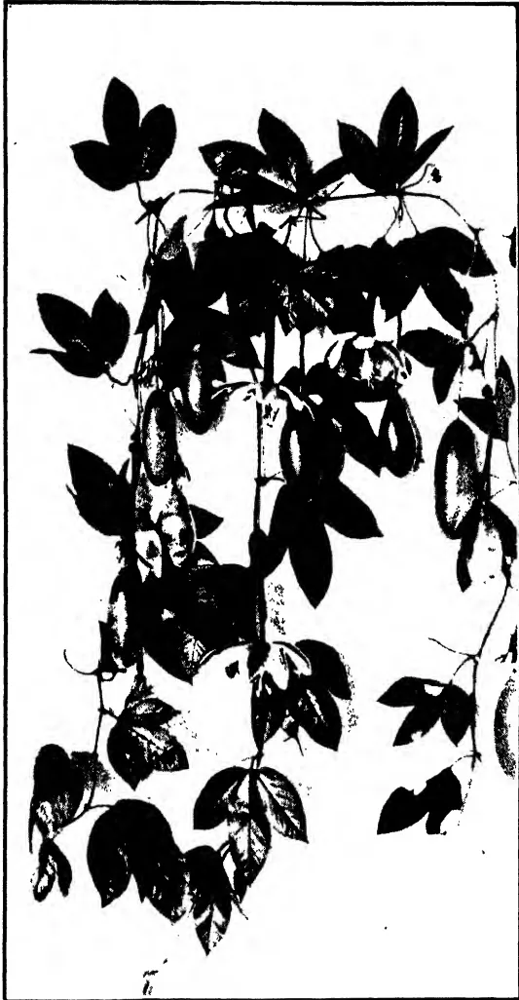
A black and white photograph of a 'Banana' Passion Fruit plant. The plant is shown as a vertical cluster of stems and leaves. The leaves are trifoliate, with each leaflet being ovate and pointed. The stems are thin and have several long, curved, banana-shaped fruits hanging from them. The fruits are elongated and have a slightly flattened appearance. The overall composition is a dense, vertical arrangement of foliage and fruit.Photo
J. J. Nock
The "Banana" Passion Fruit
This image is a blank white page. It contains several small, dark specks which appear to be scanning artifacts or dust particles. There is no text, handwriting, or printed content on the page.CONTRIBUTIONS FROM THE RUBBER RESEARCH
SCHEME (CEYLON)
FURTHER YIELD RECORDS IN CONNECTION
WITH OIDIUM HEVEAE
R. K. S. MURRAY, A.R.C.SC.,
MYCOLOGIST, RUBBER RESEARCH SCHEME (CEYLON)
FOREWORD
IN Rubber Research Scheme Quarterly Circular Vol. 8, Part 4, a full account was given of experiments being conducted on Kandanuwara Estate, Matale, to investigate the effect of Oidium leaf disease, and of the sulphur dusting method of control, on the yield of severely affected rubber. Yield records kept during 1930 and 1931 showed that in the dusted field, where defoliation was almost entirely prevented in the latter year, the yield was maintained at a normal level, whereas the yield of the control field showed a considerable decline consequent upon the severe uncontrolled Oidium attack. The difference in yield of the two fields was most strikingly evident during the months immediately following the wintering period, when the one area possessed a good foliage of healthy young leaves while the other was suffering from severe abnormal defoliation. After comparison of the records with estate figures for yield per acre in previous years it was concluded that the sulphur dusting treatment had been responsible for a nett increase in yield of the order of 200 lb. per acre.
The following report summarises the yield records obtained during 1932.
DUSTING OPERATIONS
The sulphur dusting during 1932 was almost a complete failure owing to a mechanical breakdown of the machine. The rubber could not be satisfactorily dusted between the 20th January and the 2nd March, a most important period during which most of the trees developed their new foliage. Thus
210despite applications of sulphur before and after this period the foliage of the dusted field was very little superior to that of the control. (Owing to the writer's absence on home leave actual figures indicating the comparative degree of defoliation in the two fields are not available). The effect on yield of the return of severe Oidium attack to the dusted field can be studied from the figures given below.
The method of recording yields in 1932 has been the same as that described for 1930 and 1931 in the publication mentioned above. In brief, yields are recorded every tapping from ten plots in each of the two fields, the number of trees in a plot being 16. The records are thus taken from the equivalent of one tapping task in each field, but this task is divided into ten plots scattered throughout the field. It is assumed that the summation of the yields from these ten plots is representative of the field as a whole.
The monthly yields of the two sets of plots for 1930, 1931 and 1932 are given in Table I, and represented graphically in Graph I. Owing to the monthly variation in the number of tapping days the actual yields from month to month would not be readily comparable. They have accordingly been reduced to a standard figure of 12 tappings per month, so that the figures represent the "yielding ability" during any month rather than the actual yield obtained. This figure for "yielding ability", which is a similar measure to the "yield per tapping" used in recording yields of mother trees and budgrafts, is essential for the study of the relationship between yield and foliage. No allowance has been made for trees out of tapping unless it has been clearly established that the reason for cessation of tapping is entirely extraneous.
GRAPH-I
MONTHLY YIELDS IN LBS RUBBER (160 TREES) PER 12 TAPPINGS
— DUSTED PLOTS
- - - - CONTROL PLOTS
LBS. RUBBER
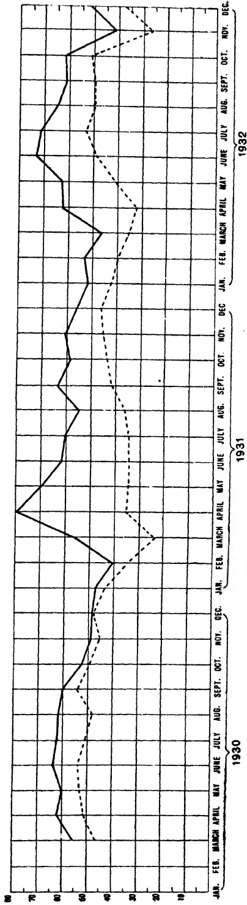
The graph displays monthly rubber yields in LBS. RUBBER for two types of plots: Dusted Plots (solid line) and Control Plots (dashed line). The x-axis represents time from January 1930 to December 1932, with months labeled every three months. The y-axis represents yield in LBS. RUBBER, ranging from 0 to 80 in increments of 10. The dusted plots generally show higher yields than the control plots, with a significant peak in late 1930 and 1931.
| Year | Month | Dusted Plots (LBS) | Control Plots (LBS) |
|---|---|---|---|
| 1930 | JAN. | 45 | 40 |
| FEB. | 48 | 42 | |
| MARCH | 50 | 45 | |
| APRIL | 52 | 48 | |
| MAY | 55 | 50 | |
| JUNE | 58 | 52 | |
| JULY | 60 | 55 | |
| AUG. | 62 | 58 | |
| SEPT. | 65 | 60 | |
| OCT. | 68 | 62 | |
| NOV. | 70 | 65 | |
| DEC. | 72 | 68 | |
| 1931 | JAN. | 75 | 70 |
| FEB. | 78 | 72 | |
| MARCH | 80 | 75 | |
| APRIL | 82 | 78 | |
| MAY | 85 | 80 | |
| JUNE | 88 | 82 | |
| JULY | 90 | 85 | |
| AUG. | 92 | 88 | |
| SEPT. | 95 | 90 | |
| OCT. | 98 | 92 | |
| NOV. | 100 | 95 | |
| DEC. | 102 | 98 | |
| 1932 | JAN. | 105 | 100 |
| FEB. | 108 | 102 | |
| MARCH | 110 | 105 | |
| APRIL | 112 | 108 | |
| MAY | 115 | 110 | |
| JUNE | 118 | 112 | |
| JULY | 120 | 115 | |
| AUG. | 122 | 118 | |
| SEPT. | 125 | 120 | |
| OCT. | 128 | 122 | |
| NOV. | 130 | 125 | |
| DEC. | 132 | 128 |
Monthly yields of plots (160 trees) in lb. dry rubber per 12 tappings
| Month | Dusted Plots | Control Plots | |
|---|---|---|---|
| March 1930 | ... | 55.3 | 46.1 |
| April | ... | 62.2 | 51.0 |
| May | ... | 60.4 | 53.0 |
| June | ... | 63.9 | 54.0 |
| July | ... | 62.6 | 51.0 |
| August | ... | 62.0 | 48.2 |
| September | ... | 60.3 | 54.3 |
| October | ... | 52.6 | 49.6 |
| November | ... | 49.1 | 45.7 |
| December | ... | 48.7 | 48.1 |
| Total for 1930 (10 months) |
... | 577.1 | 501.0 |
| January 1931 | ... | 47.7 | 43.9 |
| February | ... | 40.8 | 34.7 |
| March | ... | 55.4 | 23.8 |
| April | ... | 79.3 | 35.4 |
| May | ... | 69.3 | 34.6 |
| June | ... | 62.4 | 34.7 |
| July | ... | 60.8 | 34.6 |
| August | ... | 55.4 | 36.2 |
| September | ... | 63.7 | 41.5 |
| October | ... | 59.3 | 43.9 |
| November | ... | 60.8 | 45.5 |
| December | ... | 56.5 | 46.6 |
| Total for 1931 | ... | 711.4 | 455.4 |
| January 1932 | ... | 51.7 | 42.6 |
| February | ... | 53.5 | 39.9 |
| March | ... | 46.3 | 35.3 |
| April | ... | 61.9 | 32.4 |
| May | ... | 62.7 | 40.6 |
| June | ... | 73.4 | 48.5 |
| July | ... | 71.8 | 53.0 |
| August | ... | 65.0 | 49.7 |
| September | ... | 61.9 | 49.4 |
| October | ... | 62.2 | 50.7 |
| November | ... | 41.4 | 26.7 |
| December | ... | 51.3 | 37.6 |
| Total for 1932 | ... | 703.1 | 506.4 |
Reference to Graph I will show that although the superior yield of the dusted field was maintained to some extent during 1932, the recovery in yield after wintering was slower than in
This image is a blank white page. It contains several small, dark specks which appear to be scanning artifacts or dust particles. There is no text, handwriting, or printed content on the page.GRAPH-II
ANNUAL YIELDS PER ACRE
— DUSTED FIELD
- - - CONTROL FIELD
LBS PER ACRE
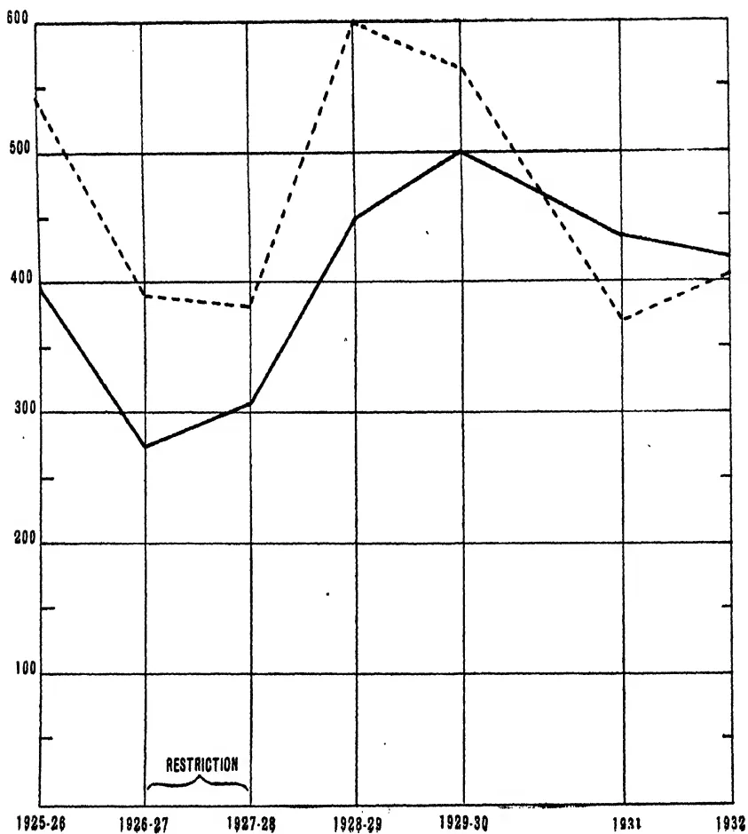
The graph displays the annual yields per acre for two fields: a 'DUSTED FIELD' (solid line) and a 'CONTROL FIELD' (dashed line). The y-axis represents 'LBS PER ACRE' from 0 to 600, with major grid lines every 100 units. The x-axis represents the years from 1925-26 to 1932. A bracket labeled 'RESTRICTION' spans the years 1926-27 and 1927-28. The dusted field's yield starts at 400 in 1925-26, drops to 270 in 1926-27, rises to 300 in 1927-28, then to 450 in 1928-29, 500 in 1929-30, 430 in 1931, and 420 in 1932. The control field's yield starts at 540 in 1925-26, drops to 380 in 1926-27, rises to 590 in 1928-29, drops to 560 in 1929-30, 370 in 1931, and 400 in 1932.
| Year | DUSTED FIELD (LBS PER ACRE) | CONTROL FIELD (LBS PER ACRE) |
|---|---|---|
| 1925-26 | 400 | 540 |
| 1926-27 | 270 | 380 |
| 1927-28 | 300 | 380 |
| 1928-29 | 450 | 590 |
| 1929-30 | 500 | 560 |
| 1931 | 430 | 370 |
| 1932 | 420 | 400 |
1931 when defoliation was more successfully prevented. The normal depression of yield during the months of January and February was prolonged by a further fall in March when the trees were suffering abnormal defoliation. The yield of the dusted field started to recover in April, and subsequently the monthly yields followed a very similar course in the two areas. In 1932, as in the previous year, there is a striking correlation between yield and condition of the foliage.
Table II gives the actual yields recorded and the average per tree per tapping for the three years 1930-32. The latter figure is the average yield, not of the trees in tapping, but of the total number of trees in the plots. The figure for number of tappings is not the total number of days in the year in which the trees were tapped, but the number on which the yield was recorded. Owing to the fact that the yields are recorded from measurements of latex, the dry rubber content being determined by weekly trial coagulations, no day is included on which rain falls before the latex reaches the factory.
Table II
| Year | Total yield in lb. | No. of recorded tappings | Average yield per tree per tapping in ozs. | |||
|---|---|---|---|---|---|---|
| Dusted Plots | Control Plots | Dusted Plots | Control Plots | Dusted Plots | Control Plots | |
| 1930 | ||||||
| March to December | 591 | 513 | 123 | 123 | .48 | .41 |
| 1931 | 653 | 408 | 129 | 131 | .51 | .31 |
| 1932 | 560 | 388 | 114 | 111 | .49 | .35 |
The fall in yield of the control plots in 1931 has already been commented on. In 1932 the yield per tapping in the control field has increased from .31 oz. to .35 oz., while the similar figure in the dusted field has fallen slightly from .51 oz. to .49 oz. Since the intensity of the disease was as great in 1932 as in previous years it must be concluded that 1932 was a relatively favourable year for crop (as measured in the form of yield per tapping), and that the yield of the dusted field has fallen on account of the failure of the dusting operations.
Table III and Graph II express the same results in terms of yield per acre. The figures previous to 1931 are estate figures relating to the two fields in question, while those for 1931
213and 1932 have been calculated from the experimental tappings and the known stand of trees per acre. It will be noted that although the yield of the dusted field has decreased and that of the control field has increased in 1932, the former is still greater than the latter, the reverse of the position in earlier years.
Table III
Yield per acre in lb. dry rubber
| Year | 1925-26 | 1926-27 | 1927-28 | 1928-29 | 1929-30 | 1931 | 1932 |
|---|---|---|---|---|---|---|---|
| Dusted Field | 397 | 272* | 305* | 449 | 499† | 434 | 419 |
| Control Field | 541 | 391* | 382* | 600 | 564† | 368 | 402 |
*Restricted Crop
†10 Months' Tapping.
The yield records obtained in 1931 showed that the control of the disease obtained by sulphur dusting was accompanied by a comparative increase in yield, the biggest difference between the two fields being evidenced during the months in which there was the greatest contrast in the foliage. (See Rubber Research Scheme Quarterly Circular Vol. 8, Part 4.) The yields for 1932 offer confirmatory evidence of a negative character. As explained above successful control in the dusted field was not obtained, and this has been reflected in a decreased yield. It is to be noted that the yield of the control field, so far from showing a further decline, has actually recorded a substantial gain in 1932. There is no reason to emphasize this increase as it is probably a normal annual variation, but it lends greater significance to the small decrease in the dusted field. Despite this decrease, however, the yield per acre still remains higher in the dusted field than in the control, a reversal of the position in earlier years before control methods were adopted. The experience of 1932, therefore, indicates that although sulphur dusting cannot be neglected for any one year without detriment to the foliage and to the normal recovery in yield after wintering, the benefits to the general health of the trees conferred by previous years' treatment are to some extent cumulative.
The courtesy of the Warriapolla Estates Company, Limited in permitting these experiments to be continued on their property, and the valuable co-operation of Mr. M. C. Evans, Superintendent of Kandanuwara Estate, are again gratefully acknowledged.
214R. K. S. MURRAY, A. R. C. SC.
MYCOLOGIST, RUBBER RESEARCH SCHEME (CEYLON)
THIS article is the fourth of a series of annual reviews whose purpose is to keep planters in touch with recent developments regarding diseases and pests of rubber.
During the greater part of 1932 the writer was away from the Island on home leave and therefore had little opportunity of making observations regarding the disease position and the current methods of control. It is considered desirable, however, to maintain the continuity of the series, and an account is given of any diseases of interest which came to the notice of the Research Scheme during the year.
The necessity for making the utmost efforts to control the spread of Fomes lignosus even under present economic conditions has been stressed in previous reports. The disease caused by this fungus continues to be the most important on the majority of estates, and it is feared that if adequate control measures are not maintained it may in some instances assume such a serious aspect as to become a limiting factor in the yield of the estate.
There are indications that the presence of Fomes lignosus may also give rise to serious problems in replanting old areas. It would seem that in certain instances the fungus is lying dormant in the soil and that the culture, previously staled, becomes re-invigorated when replanting operations are undertaken. The question of removal from the soil of the old rubber roots and stumps offers an important line of investigation in connection with the parasitism of the fungus under various conditions.
Attack by Ustulina zonata on root, collar and stem is also important in wet districts and treatment should receive careful attention. Detection of fructifications in the early stages is the first necessity in the control of collar and stem infection, and this can only be done by periodical inspection.
215There are no new developments to report for 1932 in connection with stem diseases of mature trees.
On some estates which curtailed the usual preventive treatment on economic grounds, Bark Rot was relatively severe in the wet weather in the latter half of the year. In continuous wet weather it is usually impossible to make regular applications of greasy waterproof mixtures, and under such circumstances resource must be had to water-miscible disinfectants.
Brown Bast remains a serious factor in reducing yields in certain dry districts, but under present economic conditions treatment is not being carried out extensively.
It is satisfactory to note that despite the cessation of manuring and other cultivation measures defoliation due to Phytophthora palmivora was very slight. This was possibly due to the abnormal distribution of monsoon rains, for although the rainfall during the last five months of the year was unusually severe, June and July were exceptionally dry months.
As in former years Oidium caused defoliation of late wintering trees in most districts. The disease continues to be very severe at mid-country elevations where the fungus is favoured by relatively cool and dry atmospheric conditions, but in the main low-country districts it seems unlikely to assume a serious aspect. It is not impossible, however, that continued partial defoliation of a proportion of trees may ultimately lead to a decline in yield.
Two diseases of young budgrafts were investigated in the early part of the year.
(1) This was a die-back of young green shoots from the union and was observed on two estates in the Kalutara district and at the Experiment Station, Nivitigalakele, the age of the shoots being 1-6 months. In all the specimens examined Diplodia was present and was apparently responsible for the die-back up the shoots, entrance having been gained at or near the union. In some cases the tip of the shoot was also withered. The fungus was isolated in pure culture and inoculations made on wounded and unwounded green bud-shoots. From the fact that no infection occurred it was concluded that Diplodia was only secondarily responsible for the diseased condition, and it was necessary to determine the primary factor.
216A careful study was made of all stages of the disease in the field. A longitudinal section at the union of affected plants showed in all cases an internal pad of coagulated latex at the junction of the shoot with the stock. It was concluded that this pad was caused by an internal fissure, a phenomenon which has been described in Java by Bobilioff. In all cases the shoot bore a very heavy head of foliage, and it seemed probable that excessive movement of the shoot in the wind, in conjunction with the internal fissure, caused a rupture at the union through which Diplodia gained entrance. The origin of these fissures is not known, but they are possibly connected with very rapid growth, and appear to occur more commonly in certain clones. It is significant that in all the specimens examined the stock was exceptionally large (3-5 years old), resulting in a very rapid growth of the bud-shoot. It is possible that under such circumstances unsatisfactory unions may be somewhat frequent. It would appear that clone B. I. 5 is particularly liable to the trouble, and it is also interesting to note that all the diseased shoots at Nivitigalakele were of one (Ceylon) clone. It is suggested that with buddings of apparently susceptible clones on very large stocks, one stock shoot should for some weeks be allowed to grow in addition to the bud-shoot so as to retard the early rate of growth of the latter.
(2) After the exceptional drought experienced in January and February a number of specimens was received in which the bark of 2-3 year-old buddings had died back near the union. A study of the disease on an estate in the Ratnapura district showed that the primary cause was sun-scorch, which had caused cracking of the bark on the raised portion of the "elephant foot". In most cases Diplodia had gained entrance through the cracked bark with consequent extension up the stem and into the wood. The old bud-shoots had shown no effects in the foliage as the result of this disease condition, but young green shoots were reported to have died back. There was no evidence of the fungus invasion having started from the stock snag, and in some instances the diseased portion was entirely separate from the snag. The plants could mostly be treated by excision of the diseased tissues.
Trouble is being commonly experienced with decay of the stock snag before callusing is completed, the rot often extending several inches down into the stock or up the scion. Where decay has occurred all rotted wood should be cleaned out with
217a chisel, the surface painted with disinfectant, and the resulting cavity filled with a plastic mixture such as Colas and sand in the proportions 1:2. Prevention, however, is better than cure, and it should be the aim of those possessing young budded clearings to prevent the occurrence of this decay by ensuring rapid callus growth and protecting the snag with a satisfactory waterproof mixture. An application of manure prior to the final cutting of the stock is the best insurance against this trouble, but a great deal can also be done by correct treatment of the stock on the following lines:
The stock should be finally cut back to the point of union when the shoot is growing vigorously and has formed about 3 ft. of brown wood; the time of "desnagging" must not be delayed until the stock is already dead and discoloured at the point at which it is to be cut. A common mistake is to make the cut too flat; it should be made at an angle of at least 45°, this being particularly important with large stocks. The ideal material for applying to the cut stock has not yet been discovered, but satisfactory results are being obtained at the Rubber Research Scheme Experiment Station by painting with a 10% mixture in water of Brunolinum Plantarium, and applying a coating of Skene's pruning mixture on the following day. The snags should be periodically inspected until the callusing is complete, and the waterproof covering renewed if necessary. For a fuller account of the treatment of snags reference may be made to Rubber Research Scheme Quarterly Circular, Vol. 9, Parts 3 and 4.
It is of interest to record that a specimen was received of the tap root of a young rubber stump attacked by Sclerotium Rolfsii. This fungus, which has a very wide host range, has hitherto only been reported on the hypocotyl of germinating seeds, and on renewing bark.
Die-back of green shoots caused by Phytophthora palmivora has again been in evidence in budwood nurseries during wet weather. The statement in former reports that Clone B.D. 5 is particularly susceptible to this disease is confirmed by experience in 1932. Satisfactory control of the disease can be obtained by spraying with Bordeaux Mixture or a similar copper fungicide.
Other diseases and pests in nurseries do not call for special comment.
218R. K. S. MURRAY, A. R. C. SC.,
MYCOLOGIST
AND
W. I. PIERIS, B.A., (HORTIC.) CANTAB.,
AGRICULTURAL ASSISTANT.
RUBBER RESEARCH SCHEME (CEYLON)
THE practice of applying mixtures containing cow-dung and earth as basic substances to recently tapped bark at the time of annual or six-monthly change-over of the tapping panel has been widely adopted in Ceylon for many years. The claim by the advocates of this practice that the bark renewal is thereby benefited does not, however, appear to have been substantiated by any controlled experiments. An offer by Mr. A. D. Panton, Superintendent of Nivitigala Estate, Nivitigala, to co-operate in an experiment to shed light on this point was therefore readily accepted.
(a) Experimental Area.—A uniform field of well-grown mature rubber (1905 planting) was selected on Nivitigala Estate. Tapping had been stopped on the 31st May, 1931, for an indefinite period.
(b) Treatments.—Three mixtures were chosen which were thought to be representative of the types used on Ceylon estates. The composition of these mixtures is given below:
| Treatment | A | B | C | D |
|---|---|---|---|---|
| Ant-hill earth | 24 parts | 14 parts | 16 parts | |
| Cow-dung (dry) | 12 " | 28 " | 32 " | |
| Tallow | 6 " | 7 " | — | |
| Sulphur | 3 " | — | — | |
| Copper Sulphate | 1 " | — | — | |
| Lime | 1 " | — | — |
C
O
N
T
R
O
L
Mixture A was prepared as follows: The ant-hill earth and dried cow-dung were thoroughly mixed and the sulphur added. The tallow was then melted and stirred in. The copper sulphate and lime were dissolved in enough water to make a thick paste of the whole mixture. Mixture B was prepared by mixing the earth and cow-dung, adding water to make a paste, and then working in the unmelted tallow which was broken down with the hands. The method of incorporating the tallow used for Mixture A was found to be the quicker, and probably ensures a more intimate mixture.
(c) Arrangement of Plots.—Each plot consisted of approximately 60 trees (). Fourfold replication of each treatment (including the control) was adopted, giving a total of 16 plots. The plots were arranged in the form of a Latin Square as shown below. The special feature of a Latin Square is that each treatment occurs once in each column and once in each row, thereby allowing for elimination of soil differences by statistical methods in two directions, i.e., between columns and between rows.
| A | B | C | D |
| C | D | A | B |
| B | C | D | A |
| D | A | B | C |
In order to facilitate the identification of plots by the labourers applying the mixtures, the outside trees of each plot were painted with a broad ring, a colour being allotted to each treatment.
(d) Application.—Tapping was stopped on the 31st May 1931, but owing to incessant rain it was impossible to apply the mixtures until August. The applications were made on August 9th to 11th, under the personal supervision of the Superintendent. A heavy fall of rain following immediately afterwards necessitated a second application being made.
220As noted below all mixtures were found to adhere satisfactorily.
The trees were examined by the junior author on the 15th to 17th August, 1932, i.e., one year after the mixtures were applied. A sample of renewing bark was taken from each tree one inch above the middle of the cut, and the thickness of each sample measured with a micrometer gauge to 1/100 millimetre. The mean thickness of renewing bark for the four treatments was as follows:
| Treatment | A | B | C | D |
|---|---|---|---|---|
| Mean Thickness of Renewing Bark in mms. | 3.52 | 3.48 | 3.34 | 3.44 |
| Number of trees | 205 | 200 | 216 | 187 |
A statistical examination of the detailed results shows that there is no significant difference between any of the treatments.
While taking the bark samples the outer corky layer together with the layer of cow-dung mixture became detached in most cases, and the above figures are therefore measurements of the live cortex only. In order to determine whether the application of the mixtures had resulted in any increased thickness of the outer layer all samples which retained this layer intact were measured with and without the outer bark. The mean figures for the difference i.e., the thickness of the outer bark only, are given below:
| Treatment | A | B | C | D |
|---|---|---|---|---|
| Mean Thickness of Outer Bark in mms. | 1.13 | 1.21 | 1.13 | 1.01 |
| Number of trees | 74 | 92 | 88 | 75 |
It will be seen that the figures for the treated bark are in all cases slightly higher than that for the control, but it is probable that most if not all of this difference (amounting to only about millimetre) was due to the thickness of the actual layer of mixture. In any case measurements of rough bark to this degree of accuracy are rather uncertain, and it must be concluded that no increased thickness due to the treatments is evident.
221The adherence of all three mixtures was satisfactory, Mixtures A and B, containing tallow, being somewhat better in this respect than the mixture of earth and cow-dung alone. In the B and C plots a large number of panels had been stripped of the mixtures by termites, but Mixture A, containing various chemicals, was untouched.
This experiment shows that under the conditions obtaining on Nivitigala Estate during the period August, 1931, to August, 1932, the application of the mixtures concerned has not proved beneficial to the renewal of the recently tapped cortex, and this conclusion can probably be extended to embrace any other mixtures of a similar type. It would be rash, however, to conclude that under no circumstances will the application of such a mixture be of benefit. Any improvement in bark renewal as the result of such treatment would probably be due to partial shading of the inner cortex from strong sunlight. It is to be noted that unusually wet weather was experienced on Nivitigala Estate for some months after the applications were made, so that the renewing bark was seldom exposed to sunlight. It is possible that the treatment may be of benefit when carried out immediately before the wintering period or on estates where the foliage is sparse. Further experiments are needed to elucidate this point, but in the meantime it would appear that estates with normal foliage which employ a six-monthly change-over might omit the treatment when the cuts are changed in September.
Grateful acknowledgment is made to the Grand Central Rubber Estates, Ltd., for their permission to carry out this experiment, and to Mr. A. D. Panton, Superintendent of Nivitigala Estate, for his co-operation.
222AT the present time, Palestine has an area of roughly 120,000 donums or approximately 28,000 acres under citrus fruits, a considerable portion of which is not yet in full bearing. This season's export is estimated as being in the neighbourhood of 3,250,000 cases, more than twice that of South Africa, and it is anticipated that within a few years exports will have increased from 6,000,000 to 8,000,000 cases. It will thus be seen that in proportion to its size, Palestine produces more citrus fruits than any other country in the world.
The present season's prices are disastrously low, being now sometimes as small as 6s. to 7s. per case, which is from 3s. to 4s. below the cost of placing the fruit on the United Kingdom market. The present prices for citrus fruits in Roumania and in other markets is about at the same level.
The reasons for these low prices are in the main :
Taking the industry from a general point of view, it appears that Cyprus has much less to learn from Palestine than was originally supposed, but there are, nevertheless, certain improved methods which might with advantage be applied to the industry here.
The change from the old to more modern methods of cultivation, nursery work, grading and packing, foretold by Prof. H. Clark Powell in 1928, was observed to be taking place slowly, and many problems still exist in Palestine, particularly those connected with grading and packing, which are very far from being solved.
In this report, it is proposed to deal with each phase of the industry in turn and to examine it, more particularly in regard to the application of any of the improved methods to the citrus industry in Cyprus, where conditions are, for the most part, similar to those obtaining in Palestine, as opposed to those existing in the more advanced citrus-growing countries of California, South Africa and Florida.
Palestine is now gradually changing over from the time-honoured custom of budding stocks in situ. Many growers, particularly the Arabs, still employ the old system, but the modern system as employed in all other citrus-growing countries is making its appearance in many of the newer
* By B. J. Weston, B.A., M.Sc., F.R.H.S., Government Horticulturist, Cyprus, in Bulletin No. 1, July, 1932, (Horticultural Series) Department of Agriculture, Cyprus.
223Jewish "colonies" and, of course, in demonstration plots of the various agricultural institutes. One particularly fine grove was inspected at the "Mikveh Israel Agricultural College," near Jaffa. The trees were five years old from planting and were carrying a very good commercial crop, two years before the time a commercial crop is normally borne by trees budded in situ. The trees were also of much better shape (from the point of view of picking, spraying, fumigating and crop carrying) than trees in the same station propagated by the old system.
Several nurseries are now being established by private persons in various parts of Palestine, which together with nurseries maintained by the Department of Agriculture and certain colleges pay special attention to bud and stock selection and the formation of mechanically strong trees. The Division of Horticulture of Palestine has, apparently, no hesitancy in recommending the planting of budded trees rather than stocks, when new groves are being laid out.
Several different types of stock are being employed in Palestine, but the two chief ones are the Sweet Lime (C. Aurantifolia) and the Bitter or Sour Orange (C. Aurantium), the former being used only on the lightest soils, owing to its extreme susceptibility to the various root diseases.
A very good example of the superiority of the "sour" stock was observed at Lord Melchett's estate, on the shores of the Sea of Galilee. There were two plantings alongside each other, one consisting of Jaffa oranges on Sweet Lime stock and the other of Jaffa oranges on Sour or Bitter Orange stock. The trees on Sweet Lime stock were 17 years old and the ones on Sour stock 15 years. The planting distance was about 20 feet in both cases, the "square" system being employed. The trees on Sweet Lime were showing considerable "die-back", many of them were infected with gummosis, they were not uniform, they were carrying only a fair crop and the fruit was of inferior flavour, whilst the trees on the Sour or Bitter Orange stock although two years younger were very much bigger, viz., had a larger potential bearing surface, free from disease, very uniform and well formed, and carrying a heavy crop of the highest quality fruit.
Bud selection has not been practised to any great extent in Palestine in the past. The great importance of it, in view of the tendency of the Jaffa orange to "deteriorate," is now, however, beginning to be realized and is being carried out by some of the more enlightened growers. The Division of Horticulture has a system whereby the best trees in the various districts are recorded and made available for the distribution of budwood.
Broadly speaking, two systems of training are practised, one by the Arabs and one by the Jews. Very high budding has been carried out in the past, but normal budding (from 6 to 8 inches) is now the rule with the more advanced growers.
The "Arab" system is very upright in its effect and produces a very tall and unwieldy tree; the Jewish system goes to the other extreme, and the tree is pruned and "skirted" so as to look almost like a formal ornamental shrub. Of the two, the Jewish system is much nearer the mark,
224but an intermediate system is more desirable, and such a system should be followed in Cyprus. In nature, a well grown normal citrus tree assumes more or less a spherical shape, and there seems no particular reason for modifying this habit of growth, as a large percentage of the fruit is carried on the lower portion of the tree, and a "spherical" tree is much easier to deal with in the orchard.
As it is unlikely that a reliable private nursery will be established in Cyprus for some time to come, it appears desirable that the policy of producing a good type of nursery tree in the Nursery Gardens of this Department should be proceeded with, in these areas of the Island where citrus fruits are grown commercially, greater attention being paid to Stock and bud selection, training and individual care in the nursery.
The older groves in Palestine are very closely planted, but the evils of this system are now being realized and most of the modern plantings are made at 4 to 6 and even 7 metres, which greatly facilitates orchard operations of all kinds, and taken on an average probably does not reduce the yield per acre. Indeed cases have been observed where the removal of trees in a closely planted grove, so as to increase the planting distance to about to 6 metres has definitely increased the yield per acre, by the greatly increased yields of the remaining trees.
Hand cultivation is still used in the older groves, as it would be impossible to use implements either with animal or mechanical power, but in the newer plantings mechanical cultivation is now being employed with success and the advantage of this system will be more felt as the cost of labour increases, as it is likely to do. The advantages of a wide planting distance in this connection have been mentioned previously.
The importance of green manuring crops has already been recognized in Palestine, Lupins, (Lupinus spp.) being frequently employed for this purpose. In Cyprus, where the soil is often deficient in organic constituents, the growth of green manuring crops is probably more important, especially on the very light soils in the Famagusta area, and the policy of growing suitable crops for the purpose of ploughing in should certainly be continued. In this connection, it may be noted that both the Experimental Citrus Station at Famagusta, and the Lime Plantation at Lapithos will be carrying crops of Vicos this year, for green manuring purposes.
In Palestine, as in Cyprus, most of the irrigation water comes from underground sources and is distributed throughout the groves mainly by concrete flumes. Applications of water are made every 10 to 14 days or at even shorter periods in Palestine, the basin system of irrigation being chiefly employed. This system is suitable for light soils and where the slope is too great for furrow irrigation, but water should not be allowed to come into contact with the trunks of the trees, as this is well known to be a contributory factor to the cause of the various gummosis diseases common, both in Cyprus and Palestine.
225There are no recognized systems in regard to the use of fertilizers in Palestine but the majority of the growers use large quantities of organic manure and some use complete commercial fertilizers as well. The amounts of organic manure commonly used varies from 10 to 20 tons per acre. The Division of Horticulture of the Palestine Department of Agriculture is, at present, carrying out some investigations in regard to the use of fertilizers.
The most serious insect pest of citrus in Palestine appears to be Black Scale, Chrysomphalus aonidum, which is, however, as yet confined mainly to the north of the country. Every effort is being made to prevent it becoming established in the closely planted area in the Jaffa district, where it would be extremely difficult to control owing to the impossibility of successful fumigation or spraying. Government regulations prohibit the transport of citrus fruits from the north to the south of Palestine, and all cars are examined at a barrier placed across the main Haifa-Jerusalem road at Jenin, to see that no infected fruit passes into the southern area, which is at present almost free from Black Scale. Latterly, however, the insect has made its appearance in the Jaffa district, where its presence is causing much consternation.
I understand that, as far as is known, this scale does not exist in Cyprus. It was, however, observed to be a serious pest on bananas at Tiberias, and as this fruit is exported from Palestine to Cyprus, careful watch should be kept for it.
The other insect pests affecting the citrus industry of Palestine include Red Scale (Chrysomphalus aurantii), mussel scale (Lepidosaphes pinnatifolia), mealy bug (Pseudococcus spp.), the soft brown scale (Lecanium hesperidum) and the Mediterranean Fruit Fly (Ceratitis capitata).
The latter is normally only serious at the end of the shipping season, and the two former together with the black scale, already mentioned, appear to be the most important insect pests of citrus in Palestine.
The various gummosis diseases are the most serious in Palestine and this, in the past, has probably been largely due to the use of Sweet Lime as a stock and to improper irrigation in the closely planted groves. The use of Aurantium stock and careful irrigation should largely eliminate these as time goes on. A similar method of control, or rather prevention of these diseases should be employed in Cyprus.
The various fungi causing wastage are also a serious handicap to the industry in Palestine.
The diseases causing wastage have recently been investigated by Dr. Reichert of the Division of Plant Pathology, P. Z. E. Agricultural Experimental Station, Tel-Aviv. The annual wastage in shipments due to the above causes has been estimated to be responsible for a loss amounting to £50,000.
226The incidence of "black rot" (Diplodia natalensis) is unusually severe in Palestine, and this disease is said to attack the fruit even in immature stages on the tree. Dr. Reichert has found that pruning away "die-back" is a considerable factor in the control of this disease and also advocates the "de-buttoning" of fruit for export.
This disease is undergoing investigation in Cyprus, but it is fortunately less serious here.
The other mould fungi (Penicillium spp.) which occur in Palestine in common with every other citrus producing country are well known to be approximately proportional in severity to quality of grading and packing.
The importance of preventing insect pests and diseases now serious in Palestine, but as yet not common in Cyprus from becoming established is self-evident, and need not be emphasized here.
Contrary to expectation, very little packing by the machinery is being done. One mechanical grader was inspected on the estate of Mr. Tolkovsky, which consisted of modified onion grader, and this was doing fairly satisfactory work. The only other type of mechanical grader inspected was a machine imported from Florida by the Pardess Co-operative Association. These were stated to be the only two mechanical graders in the country.
The difficulty of grading the typically shaped "Shamooti" orange has by no means been solved, and the Florida grader referred to above was stated often to become blocked and to be unable to keep packers continually supplied with fruit. Grading by means of hand sizers is now being tried out, the same methods being employed as for deciduous fruit in the Western Cape, South Africa, but this system has a very serious disadvantage in its slowness of operation. It appears that a really suitable type of mechanical grader for the Jaffa (Shamooti) type of orange has yet to be invented.
Grading by eye is therefore resorted to, but this will never be thoroughly satisfactory because it is impossible to grade really accurately in this way.
227THE following article presents in outline the results of some five years' observations made during the course of improvement work with rice in the departmental stud plots at Yanco, in the Murrumbidgee Irrigation area and briefly compare these with similar observations made in other rice-growing countries. Literature dealing with rice is remarkable for the diversity of opinion expressed by workers with this crop on such aspects as time of flowering, relationship between glume dehiscence and pollination, extent of natural crossing, etc. Jones in his review of this literature, ascribes the varying behaviour of rice in different parts of the world to varying local conditions, and to varietal peculiarities. It may therefore be of interest to report observations made under growing conditions which, in one respect at least, are apparently unique.
One of the principal objectives of the observations at Yanco has been to determine the precise conditions under which artificial hybridisation could be effected with maximum success. The varieties chiefly used were Caloro, Colusa, Carolina Gold, Carolina White, and Lady Wright. The first two are typical Japanese medium long-grained varieties, while the Carolinas and Lady Wright represent the long-grained types. Pure strains of these varieties were used, classified as follows regarding time taken to mature.
| Early | Mid-season | Late | Very Late |
|---|---|---|---|
| 175-180 days | 180-185 days | 185-190 days | 190-195 days |
| Colusa Y180 | Caloro Y316 | Caloro Y46, Carolina White, Lady Wright | Carolina Gold |
Jones cites observations by many workers, and times of maximum flowering ranging from 8-9 a.m. in Burma (Thompsonstone) to 12-2 p.m. in California (Jones). The earliest and latest hours range from 5 a.m. in India (Ramiah) to 4 p.m. in California (Jones) and Texas (Laude and Stansel). Minimum temperatures of flowering are given ranging from 59°F. in northern Japan (Akemine) to 77°F. in different parts of India (Bhide, Ramiah, Rao). Of the writers cited by Jones comparatively few give temperatures at which maximum flowering occurs; most according to Jones, merely stating times. Ramiah is quoted as specifying 82° to 84°F., time varying in India; Kobayasi 86° ± 3.6°F. in Japan, while Akemine, also in Japan but working with a different variety of Kobayasi, specifies 95° to 104°F. as optimum.
* By W. Poggendorff, B.Sc. Agric., Assistant Plant Breeder in "The Agricultural Gazette" of New South Wales, Vol. XLIII, Part 12, December, 1932.
228Noguti (formerly Kobayasi) alone is quoted as giving the relationships of both temperature and humidity to flowering. This worker, who appears to have made a most comprehensive study of the subject, in a translation of the original paper, states that flowering takes place when the temperature at 8 a.m. amounts to about 80° to 83°F., increasing in activity up to 90°F., almost ceasing above this temperature, with 122°F. as maximum limit. Some of these observations were made in a thermostat; 70 to 80 per cent. is given as the most favourable degree of moisture, and the sudden change in humidity in the morning is said to be soon followed by the main flowering period. Below 70 per cent. moisture the number of florets opening is diminished, but flowering occurs even at 50 per cent., though rarely below 65 per cent. The temperature given, 86° 3.6°F., is said to be the optimum for flowering if the air moisture is below 70 per cent.
At Yanco rice has not been observed to commence flowering at a temperature below 72°F., humidity 62 per cent. It has been found that, in general, the lower the humidity the higher the temperature required to initiate flowering. Thus, with a humidity of 32 per cent., the temperature required was 81°F. Optimum conditions for flowering at Yanco appear to be a temperature of 85° to 90°F. and a humidity of 55 to 70 per cent. This humidity is lower than that given by Noguti (or Noguchi), but the temperatures are similar. No varietal differences have been observed—the conditions which initiated flowering in any one variety have invariably brought it about in others at the same stage of development.
The maximum temperature and humidity for flowering have not yet been accurately determined at Yanco because by the time the temperature has risen to any high value in the field, the supply of florets ready to open has usually become exhausted. The highest temperature observed at which flowering occurs is 102°F., humidity 60 per cent., but there is no reason to suppose this the limit.
The time of day at which flowering commences varies very widely, according to weather conditions; on a bright clear day, with little or no wind, it usually commences between 8 and 9 a.m., reaches a maximum between 11-30 and 12-30 p.m., and ceases between 3 and 4 p.m. It has, however, been observed to occur at 6 a.m., with the maximum period between 9 and 10 a.m., and as late as 5-30 p.m. Wind and cloud, if slight, have the effect of postponing flowering, and if marked, can prevent it entirely; rain has a similar but more severe effect, in contrast to Noguti's experience in Japan. The amount-of-flowering curve follows the humidity curve with remarkable fidelity, but with a slight time-lag, as though the actual variation in humidity were an important factor.
Considerable evidence, which it is hoped to present in detail in a later article, is accumulating to indicate that between temperatures of 72° and 100°F. (and probably higher) humidity plays the principal part in determining the amount of flowering, and that other relevant factors act through humidity. For instance, wind arising while flowering is in progress has usually had a restricting effect, even though the temperature has risen.
229From a review of the literature, Jones concludes that pollination just before or at the moment the flowers open is most usual, with comparatively rare cases in India (Bhide, Parnell, Parthasarathy) of pollination of some florets on a panicle after opening. This is also found to be the normal state of affairs at Yanco. Usually, in florets due to open on a given day, the anthers occupy a position about half-way up the glumes (in a short-glumed variety like Caloro, relatively less in a long-grained variety) in the early morning of that day. When suitable temperature and humidity are reached the anthers can be seen approaching the apex of the glumes, the time taken from the half-way position to reach one nearly touching the apex varying from thirty minutes at temperatures in the vicinity of 75°F., and comparatively high humidity, to two minutes or even less at about 90°F. humidity about 50 per cent. When the anthers almost touch the apex the glumes suddenly dehisce and spring apart as though under tension, their inner edges forming an initial angle of about 10 degrees. The tension appears to be provided by the lodicules which as Akemine, according to Jones, reports, have swollen to about three times their former size at this stage. Through the opening thus made the anthers immediately commence to protrude.
At this stage three types of pollination can be distinguished.
1. The anthers have burst, and pollination has taken place. This is comparatively rare at Yanco; it has been observed only when the temperature is high (in the vicinity of 95°F.), and the humidity low (30 to 40 per cent.), which set of conditions has occurred usually only late in the afternoon, towards the close of the flowering period, when a steady hot dry westerly wind has arisen.
2. Anthers burst as they emerge, or within a few seconds, and pollination follows as the glumes continue separating. This is the most usual occurrence throughout the season and during the daily maximum flowering period with all varieties. The observed temperature range is 80° to 100°F., humidity 45 to 50 per cent.
3. At temperatures between 72° and 90°F. with humidity over 60 per cent., and particularly when the humidity has fallen steeply from a high value just prior to flowering while the temperature has risen, the anthers emerge unbroken even damp. These conditions are comparatively rare at Yanco, occurring for any noteworthy period only on infrequent dull hot days, but more often for a short period in the mornings, about the commencement of the flowering period.
The filaments elongate rapidly, carrying the anthers out of the flower; practically erect at first, the weight of the anthers bends the filaments over between the separating glumes. The anthers commence to dehisce at some stage in this process; in extreme, but not infrequent cases, they are quite clear, and below the level of the floret. Pollen, in this case, is then very unlikely to fall on the stigmas of the same floret.
These three types are not clearly defined, but merge into one another. For instance, it happens sometimes that one set of three anthers bursts at emergence, the other triplet a few seconds later, when quite emerged. The actual dehiscence of the anthers is not violent; it commences at the
230basal end, and pollen spills out gently as the split extends along the anther. A slight change occurs in colour as the anthers mature, from a light yellow at the "half-way position" (previously green) to a pale-cream, almost white, the colour of the ripe pollen. The angle between the glumes, in the meantime, gradually increases to about 30 degrees, very slowly towards the end, the total time occupied being about 60 to 180 seconds. Fruwirth is reported by Hayes and Garber to specify 30 seconds, while Copeland reports Mendiola has given 6.5 to 6.9 minutes in the Philippines. The feathery stigmas gradually curve over, one to each side, and protrude in the angle between the glumes, covering the lodicules; they are usually slightly moist from the time they first become visible in the usual course of events pollen falls thickly on the stigmas; in a few minutes this pollen changes colour from a pale-cream to golden, even to a slightly orange tint, probably owing to absorption of moisture from the stigmatic surface and germination.
The flower remains open for a time varying from 13 to 75 minutes; this time, also, appears to be governed by the relative humidity of the air—the time is shorter at low humidity, and longer at high. The effect is probably due to desiccation of the lodicules, resulting in gradual slackening of the tension holding the glumes apart. Mendiola gives the time the florets remain open as fifteen minutes to two hours in the Philippines, Chiapelli one to two hours in Italy, Akemme, according to Jones, one and a half to two and a half hours in Japan. The glumes gradually close, pinching the flaccid filaments, and usually the withered or withering stigmas, one on each side, between them; these are not immediately severed, however, but usually persist for some time before falling. The glume edges do not interlock again until some hours after the floret has closed, usually the following night, when (and only if) the fertilised ovary has commenced to swell.
Pollination has not been observed to occur without opening of the floret, though Mendiola and Jones, reviewing observations in the Philippines, Java, India, and Italy state that closed pollination (cleistogamy) occurs in some varieties.
There is some difference in pollination among the varieties observed: the tendency of florets to open without immediate dehiscence of the anthers is more marked in long-grained varieties, because the distance the anthers have to be carried before reaching the apex of the glumes is greater, and in the meantime these have possibly opened. The sudden dehiscence of the glumes may be a means of bursting the ripe anthers, which are probably less susceptible to shock when not in close contact with the apex.
Jones, in concluding his review of literature on natural crossing, states: "..... natural crossing in rice ranges from practically none in Hawaii and California to as high as 23 per cent, in Java. Climatic conditions appear to have a marked effect upon the extent of natural crossing. In Japan and Java high humidity and low temperatures seem to favour natural crossing, while low humidity and high temperature are more favourable for auto-fecundation. The extent of natural crossing in rice also depends upon the peculiarities of the variety grown, as was observed in Japan and Java. Other external factors which influence the extent of natural crossing in rice are wind velocity, rain, and insects of various kinds which visit the florets while in bloom".
231Mendiola states that natural hybrids are being continually produced in the Philippines, and ascribes to the effects of natural crossing the unsteady yield performance of different supposedly pure lines. Jones reports Ikeno, in Japan, as concluding that "crossing is very rare in nature," while Hoshino, quoting Kato, also in Japan, states that natural crossing often occurs.
The great importance of natural crossing in accounting for the very numerous varieties of rice grown in the world, often many in one small district, and the constant occurrence of variations in commercial crops has been stressed by many writers. As a source of new varieties Mendiola refers to natural crossing as "both the hope and despair of the rice breeder".
Natural crossing is known to occur at Yanco:
Temperature and humidity are certainly important factors influencing pollination, as pointed out under the previous headings "Flowering" and "Pollination", and therefore natural crossing. Wind is important as a ready means of conveying pollen over very considerable distances. Mendiola gives a table showing the distances wind-borne pollen will travel at various wind velocities. He considers 6.5 feet (2 m.) apart a safe distance for sowing rows of different varieties to avoid natural crossing. Bees are frequent visitors to rice in bloom. I am indebted to Mr. C. P. Hely, Departmental Entomologist on the Area, for identification of the following insects observed in association with rice heads in bloom: Honey Bee (Apis mellifica), Pumpkin Beetle (Aulacophora olivierii), Black Flea Beetle (Haltica ignea), Rice Beetle (Laius femoralis).
2321. Temperature and humidity are closely interrelated in governing flowering, and, within limits, in inverse ratio.
2. The minimum temperature at which flowering occurs is 72°F. if the humidity is not less than 62 per cent.
3. Maximum flowering occurs when the temperature is 85° to 90°F., and humidity 55 to 70 per cent.
4. The highest temperature at which flowering has been observed to occur is 102°F., humidity 60 per cent.
5. The response of all varieties observed to a given set of conditions was the same.
6. The time of flowering varies with weather conditions; it usually commences at 8-30 a.m., reaches a maximum between 11-30 a.m. and 12-30 p.m., and ceases about 3-30 p.m.
7. Observed extremes in flowering time are 6 a.m. and 5-30 p.m.
8. Wind, clouds and rain adversely affect flowering.
9. Relative humidity is the most important factor governing the amount of flowering between temperatures of 72° and 100°F. The variation of humidity appears to play some part.
10. The normal humidity during the flowering period of rice is unusually low at Yanco in comparison with published data for other countries.
1. Three types of pollination occur—
(a) Before the florets open—when the temperature is high (about 95°F.) and humidity low (about 35 per cent.); rare.
(b) At opening of the florets, or within a few seconds—when the temperature is 80° to 100°F., and humidity 45 to 50 per cent.; usual
(c) After the florets have opened—when the temperature is between 72° and 90°F., and humidity high (over 60 per cent.); not infrequent.
2. The glumes open to a maximum angle of about 30 degrees in from one to three minutes, and remain open for thirteen to seventy-five minutes. This time is apparently governed by the relative humidity of the air.
233WITH the approach of the tobacco harvesting season the question of curing the leaf will already be exercising the minds of growers. Any makeshift building will not answer the purpose, particularly if the grower intends to flue-cure his leaf. The wise grower, therefore, will need to make his plans immediately for the erection of an efficient barn if there is not already one on the property. Working-size plans of the flue-curing barn can be had on loan from the Department; also plan of the furnace used for heating the barn.
Flue-curing barns must be draught-proof and so finished that heat and moisture cannot escape, and they must be erected of materials, that will prevent the interior from being influenced to any great extent by outside temperatures. If iron is used double walls will be necessary in order to obtain the necessary degree of insulation. A brick structure, on the other hand, is expensive. Wood, pisé, fibro, and similar materials are some of the most suitable materials for tobacco-curing barns.
In order that a grower might have some idea of the size of the barn he requires, it is mentioned that the inside dimensions of a barn suitable to cure the crop from 6 or 7 acres would be 16 feet by 16 feet and 17 feet high, with a spacing of 3 feet 6 inches vertically between the tiers on which the sticks of tobacco are hung when harvested on the stalk, and 2 feet when the leaves have been "primed".
Whilst on the subject of curing-barns, a description of what is involved in the actual curing of the leaf will help to emphasise the importance of an efficient barn.
At the outset it is pointed out that whilst much good leaf is often spoilt by improper curing, it is not possible to make good tobacco out of poor leaf even by employing the best known curing methods. The first essential to success, therefore, is leaf harvested at the correct stage of maturity.
There are three stages in curing. They may be stated as follows: (1) yellowing, (2) fixing, (3) killing. No fixed formula can be given, but if the following is taken as a basis the grower will, after curing a few barns, be able to modify or vary the process in some respects to give him the desired results.
As soon as the barn is full, close the building right up, start the fire going, and bring the temperature up to 90°F. Keep it at this point for eighteen to thirty-six hours, according to the condition of the leaf, limiting the time to the shorter period in the case of leaf that is quite ripe, and allowing the full period where the leaf is not so well matured. If the leaf
* By C. J. Tregenna, Tobacco Expert in "The Agricultural Gazette" of New South Wales, Vol. XLIV, Part 2, February, 1933.
235is not yellowing as it should, place sacks on the floor and soak them with water to produce a moist heat; or, better still, if a boiler is handy introduce steam. When the leaves have assumed a nice yellowish colour raise the temperature to 100 degrees, at the rate of 5 degrees each two hours, and keep at this figure for some six hours. Then raise the temperature to 105 degrees and give a little ventilation top and bottom, opening the ventilators a few inches. In these directions it is presumed that the curing-room is one that has been erected in accordance with the plans supplied by the Department of Agriculture. In such a building both temperature and ventilation could be controlled so as to produce the results desired.
Having obtained the temperature of 105 degrees with the limited ventilation mentioned, the conditions should be maintained for three or four hours. Then increase the temperature to 110 degrees, and also increase the ventilation to about one half of the capacity of the ventilators, and hold at that for three hours. Do not raise the temperature above 110 degrees until the tips of the leaves have dried, however. Next, again raise the temperature to 115 degrees for 6 hours, giving full ventilation, and then again advance to 120 degrees for six hours with full ventilation. The most critical time is between 110 degrees and 120 degrees. If the heat is too fast the leaf will splotch or blister, and if too slow it will sponge. When the sweat can be observed on the leaf, and it will not go off at once, the temperature must be increased rapidly by 10 degrees, and all available ventilation given; but if ventilation is given as directed there is little fear of sponging.
After remaining at 120 degrees for six hours, leave the ventilation at full, and increase the temperature by 5 degrees every two hours to 135 degrees; beyond this do not further increase the temperature until the blade of the leaf has dried out completely. Then exhaust all moisture by raising the temperature every hour by 5 degrees to 180 degrees, and gradually decrease the ventilation until only a very little is left at the top. Keep at the latter temperature until the stems and stalks have completely dried out. Ventilation plays a most important part in successful flue-curing during the stage from 105 to 140 degrees, and growers should pay particular attention to this matter. The whole process will take five or six days.
Extinguish the fire as soon as the tobacco is cured, and open the doors and ventilators to cool it off for twenty-four hours. If the weather be very dry, the moisture content of the barn may be increased with the aid of steam, or by means of water thrown on sacks on the barn floor. When the tobacco is in a condition to handle without the leaves breaking, it should be taken down on the sticks and bulked until the grower is ready to grade and bale for market as opportunity occurs.
236THE development and application of new means for examining soils (such as precise procedures for measuring soil alkalinity, soil salinity, and exchangeable or surface-combined bases), has elucidated many of the difficult problems associated with the amelioration of infertile saline and alkaline soils, and has almost revolutionised ideas concerning their mode of formation and chemical relationships. The researches of Russian pedologists have added greatly to our knowledge of the natural history and field characters of these soils, while the laboratory studies of American soil scientists notably those of the California and Arizona Colleges of Agriculture, have done much to explain their chemical properties and behaviour under different treatments. Some of the more important results of these investigations will be considered in their chemical and agricultural aspects in this article.
Saline and alkaline soils are widely distributed in the arid tropics and sub-tropics. They occur wide-spread but are somewhat localised in the South-Western United States of America; Mexico; the Pacific slopes of South America; the western parts of Brazil and Argentina; North and South-West Africa (Sahara, Egypt, Sudan, Kalahari); Central and South-Western Asia (Arabia, Iraq, Persia, Palestine, Afghanistan, Baluchistan and Turkestan), the reh lands of India (Rajputana and Punjab); Central and Western Australia and in numerous smaller areas in other parts of the world, including certain West Indies Islands (Cuba, Haiti, Puerto Rico, Jamaica, St. Croix and Antigua). Their reclamation offers some of the most difficult problems that agriculturists have to face.
The researches of Russian pedologists have led to the recognition of three main classes of arid soils, namely (a) Solontshak (saline soils; "white alkali" soils), (b) Solonetz; (alkaline soils; "black alkali" soils), and (c) Soloti (degraded alkaline soils). A fourth group, (d) Rendzinas, may be added to include alkaline non-saline soils rich in calcium carbonate.
(a) Solontshak.—This title is given to soils that contain large amounts of common salt (sodium chloride), whose presence may be attributed to inundation by sea-water, to decomposition of soda-bearing minerals, or to infiltration from strata rich in salt. They frequently also contain sodium sulphate and magnesium salts. Under dry conditions, salts may accumulate as a white surface efflorescence, but under wet conditions, the soils may exhibit a high water-table, and thus resemble salt-marsh soils, whose lack of aeration produces characteristic rusty mottling in the lower layers of the
* A Summary of Some Results of Recent Researches on their Origin, Genesis and Agricultural Relationships. By F. Hardy, in Tropical Agriculture, Vol. X, No. 2, February, 1939.
237soil-profile. Saline soils are usually very permeable to water, owing to the flocculating effect of salts in solution. They are infertile for most crops, but may support a characteristic natural halophyte flora.
(b) Solonetz.—When solontshak is subjected to the leaching action of rain or irrigation water containing no salts, profound changes occur, but the final result is largely decided by the presence of calcium carbonate in the soil. Highly acidic, lime-free Solontshak soils, when leached, merely lose salts; there is little tendency for sodium-ion to replace hydrogen-ion in the original soil hydrogen-clay, so that the leached soil is still acidic. Calcareous soils which possess medium or low lime reserves, on the other hand, contain much lesser amounts of combined hydrogen-ion; their exchangeable bases consists mainly of calcium-ion, which in extreme cases, may almost saturate the clay fraction. Under these circumstances, sodium-ion, derived from sodium salts, may displace calcium-ion, and the resulting soils, after the leaching with pure water has removed salt excess, will consist chiefly of "sodium-clay". Sodium clay is notoriously sticky and cohesive, and the leached soils are difficult to till, compact, impermeable to water, and hard to drain; they "run together" when wetted, and the surface dries into a hard layer or pan. Such soils are generally infertile and agriculturally useless.
Furthermore, sodium-clay hydrolyses in the presence of water, giving sodium hydroxide, which imparts a high degree of alkalinity to the soil water. Thus, reaction values between pH 9.0 and pH 10.0 may be realized in calcareous saline soils that have been leached by pure water. During leaching, soluble chlorides disappear first, then sulphates, and finally, if it be present, calcium bicarbonate. This last may combine with sodium hydroxide, generated by hydrolysis of sodium-clay, to produce sodium carbonate ("black alkali") and sodium bicarbonate.
Whereas the soil-profile of Solontshak soils is uniform in appearance, that of Solonetz soils is characteristically stratified. The surface layer, containing the bulk of the soil organic matter, is finely laminated, and the underlying layer is crumbly and cloddy. The sub-soil is brownish-grey in colour, very hard and impervious, and exhibits a vertically-cracked columnar or prismatic structure. It contains alkali-soluble humus and sesquioxides, leached down from the surface soil layer, together with deeper-seated accumulations of calcium carbonate, calcium sulphate (gypsum), and various sodium salts.
(c) Soloti.—Further profound leaching of Solonetz soils, especially those containing appreciable lime reserves, removes all soluble salts, and eventually brings about the replacement of sodium-ion, combined in sodium-clay by calcium-ion. The physical properties of the soil are thereby greatly improved, for "calcium-clay" is not sticky, but tractable, permeable, free-draining, open, friable and crumbly. The reaction becomes less alkaline (pH 8.4 or below), and the soil is usually very fertile for many crops. Solonetz soils containing smaller lime reserves may gradually become acidic under continued leaching by water containing carbon-dioxide—combined calcium-ion being progressively replaced by hydrogen-ion. The displaced calcium-ion may first accumulate as concretionary calcium carbonate in the lower soil-layers. The soil-profile at this stage may resemble that of "black earth" (Tschernosem), characteristic of steppe and prairie country. Later,
238the lime entirely disappears, and the soil becomes "degraded" into an acidic soil type, in which sesquioxides accumulate in the lower layers. Eventually, the sub-surface soil consists of residual silica, bleached white through loss of iron oxides, highly acidic in reaction, and infertile to crops. Such highly leached soils display a profile which, in extreme cases, resembles that of Podsol, a characteristic soil-type of humid climatic regions.
(d) Rendzinas.—These fertile, highly calcareous, non-saline soils exhibit a typical black, humic surface-layer of varying thickness, merging suddenly, through a more or less definite grey or pale-brown transition-layer, with the underlying whitish parent rock (limestone, coral or marl). The surface soil is often heavy and plastic; leaching may have removed much calcium carbonate, so that the reaction may be well below pH 8.4, which represents the degree of alkalinity of a saturated solution of calcium carbonate in carbolic acid.
Continued leaching may change black Rendzina to red "Terra Rossa" soil, as in the uplands of Cuba and Barbados. Typical Terra Rossa occurs in the Mediterranean region; its surface soil is usually acidic.
Much recent research has been directed to an elucidation of the reasons why saline and alkaline soils are so infertile and unproductive, and to means of ameliorating this condition by schemes of reclamation. Formerly, the infertility of these soils was attributed solely to the direct toxic effects on plant-growth of the various salts in solution. It is nowadays realized that moist soil is not simply a mixture of water and inert solid matter, but that the two components interact in a very complicated manner, giving products whose properties and composition depend upon the relative amounts of the interacting components, as well as upon their chemical constitution. A study of the practical significance of this generalisation involves several more or less distinct aspects, which perhaps may best be considered individually.
When alkaline soils are treated in the laboratory with water, the degree of alkalinity developed depends on the extent of the dilution. Thus an extract prepared by mixing one part of soil with one part of water may show a pH value 8.60, but with 20 parts of water, the pH value may rise to pH 9.42, and with 160 parts of water, to pH 8.98. The difference between the first two values represents a seven-fold increase in alkalinity, due entirely to greater soil dilution and hydrolysis. On the other hand, dilution merely lowers the concentration of salts such as sodium chloride in saline soils, and thus renders them less harmless to plants. Hence the behaviour of saline and alkaline soils depends upon their degree of moistness in the field. Under wet conditions, alkalinity becomes enhanced, but salinity is much decreased, whilst under dry conditions, alkalinity is somewhat diminished, but salinity may attain highly injurious concentrations. The height of the water-table level in saline and alkaline soils is therefore an important factor in their agricultural relationships. It should be given careful consideration when alkali soils are irrigated, for irrigation may raise the water-table and thus increase the alkalinity of the surface soil, or bring up salts from the sub-soil,
239In our discussion of the chemistry of saline and alkaline soils, it was noted that the first alkali to appear when saline soils are changed into alkali soils by prolonged leaching, is sodium hydroxide, generated by hydrolysis of "sodium-clay". In the presence of excess of carbon-dioxide, sodium hydroxide becomes converted into sodium carbonate, and finally into sodium bicarbonate. These salts (particularly the latter) are much less alkaline than sodium hydroxide so that carbon dioxide acts as an alkali corrector. Thus, about three times as much sodium carbonate, and great many times as much sodium bicarbonate, than sodium hydroxide are required to give an alkalinity of pH 8.65 to their solutions in water. The fixation of alkali as sodium carbonates depends on the carbon dioxide concentration of the localised soil atmosphere and this in turn, depends partly on the quantity of soil organic matter that is undergoing oxidation through the activity of certain soil bacteria. Addition of bulky organic manures and green dressings to alkaline soils should therefore effect beneficial changes. Practical experience amply supports this contention, and organic manures are invariably advocated nowadays for ameliorating alkaline soils. Substances other than carbon-dioxide, however, may serve to reduce soil alkalinity by direct neutralisation. Thus, good results have been obtained by adding powdered sulphur at the rate of 2,000 to 4,000 pounds per acre. The sulphur becomes oxidised into sulphuric acid under the influence of certain soil bacteria. Ferrous sulphate and aluminium sulphate liberate free sulphuric acid when hydrolysed by water they too often give good results in ameliorating alkali-land. Finally, ammonium sulphate, used as nitrogenous manure, interacts with "black alkali" to form less harmful sodium sulphate, and is therefore sometimes preferable to sodium nitrate in the nitrogenous manuring of alkaline soils, including both Solonetz and non-saline calcareous soils (Rendzina).
The application of gypsum (calcium sulphate)—another corrective for soil alkali—is also well-established practice. The treatment was first advocated in 1888 by Hilgard, who attributed its effect to interaction with sodium carbonate, whereby calcium carbonate and sodium sulphate are formed, so that soluble alkali is replaced by a soluble neutral salt, and thus rendered innocuous. Gypsum is not always effective, however, in reducing soil alkalinity, and it has been shown that, in the absence of carbon-dioxide, gypsum-treated black alkali soil always contains an appreciable undecomposed residue of sodium carbonate. Hence gypsum should be accompanied by organic manures or by sulphur if successful results are to be obtained. Where the soil contains excessive amounts of salts, gypsum has little effect until the salts have first been removed by thorough leaching.
The modern view regarding the action of gypsum on alkaline soils, is that an excess of calcium-ions, derived from this or some other soluble calcium compound, first displaces sodium-ion from sodium-clay, thus rendering the soil more permeable. The liberated sodium-ions and the residual sulphate-ions are then easily leached by watering. Traces of sodium carbonate that may be present in the original alkali soil are not affected by this reaction, so that some other agent (such as carbon-dioxide derived from organic manures) must also be brought into operation in order to produce a neutral
240soil. In theory, any soluble calcium salt would serve to effect base exchange, but only the cheapest can be used in practice. Green manuring greatly enhances alkaline-soil improvement by opening up the sub-soil by root penetration. Certain green manure crops, such as lucerne, and Melilotus alba, Panicum crus-galli, Cynodon dactylon (Bahama Grass), and other grasses, can tolerate considerable amounts of alkali, and are useful for this purpose.
The great difference in permeability between sodium-clay and calcium-clay has already been mentioned. Since the success of irrigation for reclaiming alkali lands depends mainly on the ability of the soil to "take water", the question of soil permeability in relation to the proportionate amount of exchangeable sodium and calcium present has naturally received considerable attention from alkaline-soil investigators. Thus, attempts have been made to establish mathematical expression of this relationship, (Ca/Na Ratio) so that farmers might predict therefrom the behaviour of any soil whose exchangeable-base content has been experimentally determined. Unfortunately, the results obtained have proved disappointing. The following data, obtained by the writer for certain Antiguan soils, suitably illustrate this discrepancy.
| Soil (Top 6 inch layer) | Exchange Capacity (mg. equivs.) | CaCO Content (%) | Ratio Ca/Na. | Capillary Rise in tubes of soil (cm. in 5 hrs.) |
|---|---|---|---|---|
| (1) Green-castle 1 | 15.4 | 0.0 | 91.8 | 11.2 c.m. |
| (2) Cedar Valley 2 | 27.1 | 39.6 | 76.6 | 14.8 |
| (3) Collin's 3 | 24.1 | 5.9 | 22.2 | 12.5 |
| (4) Paynter's 1 | 26.1 | 0.6 | 18.1 | 3.8 |
| (5) Elliot's 1 | 28.2 | 6.7 | 10.4 | 1.8 |
| (6) Cassada Garden 1 | 30.9 | 1.0 | 2.3 | 0.1 |
Whilst a general diminution in rate of capillary rise of water as the Ca/Na Ratio decreases is indicated by these data the relationship is not proportionate nor precise. Other factors, such as initial moisture content, calcium carbonate content, and degree of clayiness, are also involved. Moisture content in the field affects the Ca/Na Ratio markedly. Thus the ratio decreases as the soil loses water; a perfectly dry alkaline soil is extremely hard and highly dispersed. On the other hand, thorough leaching (if such can be properly accomplished) increases the Ca/Na Ratio by removing sodium-ion through hydrolysis and solution. Calcium-ion takes its place, and the soil gradually becomes permeable, although the change is not marked until the last traces of exchangeable sodium have been eliminated. As the American alkali-land farmers put it, "a very little alkali is all too much".
There is another factor, in addition to exchangeable sodium, that greatly affects the permeability of alkali soils; it is the formation, precipitation and accumulation of colloidal hydrous alumina and alumino-silicates within the soil, which lead to its "freezing up" or congeation.
241When pure aluminium-salt solutions are rendered alkaline by addition of sodium hydroxide, precipitation of hydrous alumina occurs at reaction values lying between about pH 5.0 and pH 8.5. Above pH 8.5, the precipitate is increasingly dispersed, forming more or less soluble sodium aluminates. This satisfactorily explains the heavy downward leaching of soluble alumina in highly alkaline soils. As leaching proceeds, soil alkalinity is gradually diminished. When the reaction of the sub-soil has been lowered within the insolubility range of alumina (pH 8.5 to pH 5.0), alumina will be precipitated as a highly gelatinous substance that effectively seals the sub-soil, and completely prevents the passage of water. Within the subsoil zone, soluble alumina might sometimes interact with soluble silica, presumably brought down through the operation of similar or other agencies, and mutual precipitation may occur with the concomitant formation of gelatinous aluminosilicates.
It is difficult to prescribe field procedures that would counteract these results. One method, however, has been suggested, namely alternate drying and wetting, which is known from laboratory experience, to effect a gradual irreversible dehydration of colloidal alumina and aluminosilicates. Hence deep cultivation and under-drainage, coupled with alternating dry fallowing and wetting (utilising rainfall or irrigation water), may prove very efficacious if persistently practised. The procedure could at least be applicable to restricted areas, such as "slick spots" or "gall patches" which abound in alkali-soil regions. Furthermore, aluminium salts, such as alum, applied to alkaline soils under suitable conditions, appear sometimes to improve their physical state. Whilst there is some practical evidence supporting this contention, the results appear not to be lasting, and the explanations offered are obscure.
There is only one practical way of reducing the salt content of saline and alkaline soils, namely by flooding and draining. Where the salts consist of the sulphate, chloride and nitrate of calcium, little difficulty is experienced in reclamation. Where the salts are mainly sodium salts (chloride and sulphate), irrigation with water rich in soluble calcium compounds is also usually effective, but irrigation with pure water invariably ends in failure, the soil rapidly becoming impermeable and no longer "taking water" readily. An adequate dressing of gypsum applied to these soils may sometimes alleviate the trouble, as has already been indicated, but usually the quantity of gypsum required is relatively great. Irrigation with water containing sodium salts even in small amounts, eventually is harmful and should be avoided. Seepage of saline water from higher levels must be prevented during irrigation. The likelihood of injury through irrigation and seepage depends partly on soil texture, a well-drained sandy soil being less susceptible than a badly-drained heavy soil.
(a) Phosphate.—Alkaline soils, including normal highly calcareous soils (Rendzina), yield large amounts of phosphate to extracting agents, such as various dilute acids usually employed for its assessment in laboratory studies. Nevertheless, crops grown thereon generally show marked response to soluble phosphatic manures (acid super-phosphate; Nicifos; Ammophos), but
242rarely show response to insoluble phosphatic manures (rock phosphate, basic slag, bone-meal). Failure to respond has been attributed in most instances to lack of carbon-dioxide in alkaline soils (especially "black alkali" soils) containing insufficient organic matter, and insufficiently aerated. Soil water-extracts or the soil solution, expressed from alkaline soils by suitable displacement methods, seldom show more than traces of phosphate (1 to 3 p.p.m. of solution). The high solubility of soil phosphates in acidic reagents indicates that phosphate will be readily transferred to the soil solution, provided a sufficiently low pH value is attained (for example, pH 6.2 or 6.4). Phosphate solubility diminishes as pH value rises; at reaction values between pH 8.0 and pH 8.5, phosphate is almost insoluble, and may exist in alkaline and calcareous soils chiefly as a specific calcium phosphato-carbonate compound. In the presence of hydrous alumina, phosphate may also suffer fixation as an alumino-phosphate compound, but this is much more insoluble in normal calcareous soils than it is in black alkali soils whose alkalinity reaches high magnitudes. Sodium salts that occur in many alkaline soils and in saline soils depress the solubility of phosphates, and leaching, accompanied by thorough drainage, will therefore often improve the phosphate status of these soils.
The phosphate-supplying ability of a soil (i.e., its capacity for maintaining an adequate rate of delivery of phosphate to plants), varies with soil conditions (including soil reaction), but it is also influenced by plant growth-processes. Thus solvent root excretions, particularly carbonic acid, increase the availability of soil phosphate in the immediate vicinity of plant roots (by reducing the reaction to about pH 6.2 or 6.4) and rapid root absorption lowers the phosphate gradient, so that phosphate uptake may reach adequate magnitude, even in somewhat alkaline soils. Any factor (for example, decomposing organic manure) that increases the carbonic acid content of the soil surrounding plant-roots may aid in the solubilising process. Nevertheless, plants seem to differ in the "feeding power" of their roots, for some species are apparently able to abstract more phosphate from an alkaline or calcareous soil than others.
The phosphate relations of highly alkaline unproductive soils (black alkali soils) are peculiar. Although soil phosphate is insoluble within the reaction range pH 8.0 to 8.5, it readily dissolves at reactions higher than pH 8.5, probably through the formation of sodium phosphates. Reclamation of these soils by cultivation and irrigation does not at once reduce their high content of soluble phosphate, and crop-plants may utilise it, provided other conditions are favourable to normal root absorption. Eventually, however, the re-solution of residual phosphate may become negligible, and fertility may diminish accordingly.
Quite apart from its effect on the solubility of phosphate, soil reaction appears to exert marked influence on the process of absorption of phosphate by plant-roots. Evidence has been adduced from water-culture experiments which demonstrate that little phosphate absorption by plant-roots actually takes place at reaction values above pH 7.6, except in those cases where the diffusion of carbon-dioxide is sufficiently rapid adequately to reduce alkalinity in the region of root contact.
243This observation is in accord with earlier results which have indicated that hydroxyl-ions are increasingly injurious to plants at concentrations represented by reaction values greater than about pH 8.2.
(b) Nitrate and Potash.—The results obtained for phosphate absorption by plants placed in media of different reaction values, have been closely reproduced for nitrate and potash absorption under similar circumstances. Alkaline reactions apparently greatly depress the absorption of nitrate and potash, as well as phosphate, so that, without the aid of carbon-dioxide within the root-zone, plants cannot obtain adequate supplies of these nutrients from highly calcareous soils and alkaline soils. Whether they can absorb and utilize ammonium-ion under these conditions, however, seems not yet to have been determined.
During recent years, there has been a marked tendency to stress more and more the profound deleterious effects of "black alkali" on the physical properties of alkaline soils in the field, and to minimize its direct toxic action. Detailed studies have demonstrated that, with the usual degree of moistness that obtains in field soils, and near the wilting point of plants, soil alkalinity is seldom excessive, even though laboratory examination, under imposed conventional conditions, may indicate high reaction values. When black alkali soils are subjected to thorough leaching by irrigation and drainage, and are afterwards adequately tilled, dressed with gypsum, and treated with organic manures their fertility generally improves and satisfactory crops may be grown on them. Their high reaction values are thereby reduced, at least within the root zone, to magnitude below the limits of alkali tolerance (pH 7.6 or 7.8). The chief agency producing this result is apparently carbon-dioxide, generated by the decomposition of soil organic matter under suitable conditions of aeration.
In the case of saline (white alkali) soils, circumstances are somewhat different. Under low moisture field conditions, salts may become concentrated in the soil water until the limit of tolerance is reached, where plants fail to grow because of the operation of osmotic and dehydrating effects. The toxic limit in most cases of crop-plants appears to lie in the region of 1,000 parts of common salt (and less than 1,000 parts of sodium sulphate) per million parts of soil-solution. For field soils, containing some 20 per cent. of "free" water, this value represents about 5,000 parts per million of oven-dry soil. Even though the surface soil may not contain salt in toxic concentration during moist conditions, desiccation may raise highly saline subsoil-water into the root-zone. This effect, however, seems also to have been over-estimated, for direct evidence has accumulated in recent years which indicates that capillary uplift is only effective when the water-table lies within 2½ feet of ground level for heavy-loam soil, and one foot for coarse sandy soil.
The nutritional disorders accompanying alkalinity in alkaline soils, especially calcareous soils, have lately received special consideration. Recent investigations have demonstrated that, under alkaline conditions (pH values greater than about pH 8.0), soil phosphate is immobilised as insoluble compounds involving calcium carbonate and alumina. Highly
244calcareous soils may also fix iron oxide and manganese oxide, so that plants growing thereon may suffer marked chlorosis, through lack of adequate chlorophyll formation.
The uptake of nutrient-ions (phosphate, nitrate, potash) by plant-roots is greatly reduced when the alkalinity of the soil solution exceeds magnitudes represented by pH 7.6 or pH 7.8. In highly alkaline soils (reaction values above pH 8.5), aluminium may exert direct toxic action through the formation of aluminates.
It is evident, therefore, that the main factor responsible for the infertility of alkaline soils is their unfavourable reaction. Soils whose reaction values lie above pH 7.8 or pH 8.0 should be regarded with suspicion, and suitable steps should be taken to reduce their alkalinity. In the case of saline soils, uncomplicated by reaction effects, mere removal of salt excesses by leaching should prove effective in their amelioration.
245THE importance of the production of silage to form a supplementary feed for cattle, as the succulent portion of the ration in semi-arid countries, has now been definitely established. In times of drought and the consequent shortage of pasture and green feeding stuffs, the value of silage is enhanced out of all proportion to its cost of production, which, especially by the "pit" or "trench" method, is by no means prohibitive.
The purpose of this leaflet is to lay before farmers in Cyprus the fundamental principles underlying the production of silage in order that they, in common with farmers in other dry-land countries, may take advantage of this method of preserving succulent fodder for their animals. Silage may be used at all times, as a cattle feed, but it is especially valuable in times of shortage of other green feed; it contains a comparatively high quantity of digestible nutrients and, if properly made, is very palatable to stock.
Ensilage is simply a process by which green and succulent plant materials are preserved for cattle feeding, by placing them in airtight chambers, stacks or pits. The underlying principle in all three systems is the exclusion of air.
The best crop to grow under Cyprus conditions for the production of silage is maize and a brief account of the cultivation of this crop is given below. The crop should be cut in a less mature state than is required for the production of grain, viz., it should be cut when it is just coming into cob, so that much of the succulent material may be preserved.
A thorough preparation of the soil is essential. Where possible, the land should be ploughed as soon as the previous crop has been taken off, as this facilitates weathering, and leaves the soil in a receptive state for the early rains. Before planting the land may, with advantage be cross ploughed to a lesser depth and in any case the soil should be worked down to a fine tilth, to destroy weeds and form a suitable seed bed.
The seed may be broadcast, but this practice is wasteful and not particularly efficient, and for this reason is not recommended if it can possibly be avoided. In Cyprus there are no mechanical maize planters, such as are used in the great maize-growing countries, but in the long run the farmer will probably find that it pays him to plant the seeds in rows by hand. Should the area be too large for this to be done economically, however, it might be necessary to resort to the broadcasting method.
* From Leaflet No. 19, Department of Agriculture, Cyprus.
246The seed should normally be planted 1 to 3 inches below the surface, the greater depth for lighter soils, in rows to feet apart to allow room for the inter-cultivation. The seeds should be so spaced as to give the plants a distance between them of from 12 to 20 inches in the row.
The rate of seeding will normally be about 3 to 5 lb. of seed per donum, with considerably larger quantities required if broadcast (12 to 20 lb. per donum). The date of planting will necessarily vary in different parts of the Island, and the best conditions for the growth of the young maize plant can only be determined by observation based upon experience in the district in question. In Cyprus, it will probably be necessary to plant considerably after the commencement of the rains in order to avoid getting the seedlings through in the coldest part of the year.
Under Cyprus conditions, maize also be grown as a Summer crop under irrigation and when this is done the land may be prepared in advance, as required, and sowings made in March and continued until July. In the late sowings the grain will not mature, but if the crop is being grown for the production of silage, this does not matter.
Productive maize soils are almost invariably characterized by a high content of organic matter; where this is deficient, as evidenced by the deflocculated and light colour of the soil, it must be remedied by the application of large quantities of stable or goat or sheep manure or by green manuring. It is not usually a practical proposition to apply commercial nitrogenous fertilizers, potassic fertilizers, phosphates or lime, unless the soil is known to be deficient in one of these constituents.
There are three methods of producing silage in common use in other countries, according to whether the material is stored in a tower, a stack or a pit silo. The former is probably the best method, but the initial cost of erection puts it beyond the reach of many farmers, who find one of the two latter methods almost as satisfactory. The most convenient type of silo for use in this Colony will probably be found to be the "pit" silo or the "trench" silo which are similar in operation and easy to construct.
A tower silo may be built of concrete, stone or wood and is usually 20 to 30 feet in height and 10 to 15 feet in diameter, with a door at a convenient level for the silage to be forked out when required for feeding. The maize is run through a chaff cutter and elevated to the top of the silo by means of a "blower". A man inside the tower sees that the material is evenly distributed and trodden down, and the pressure of the top layers brings about the necessary exclusion of air.
Pit silos are inexpensive in construction and for this reason are the most popular type. In these, the ground located in a well drained situation is excavated, leaving somewhat sloping sides 10 to 12 feet in depth and of varying capacity.
247The maize may either be put in whole, with the stem ends nearest the walls, or it may preferably be passed through a chaff cutter which facilitates close packing. When properly settled, a layer of grass covered by about 2 feet of soil should be used as a covering, and when starting to feed, the pit should be opened from the side and the silage cut vertically.
A simple modification of the pit silo is the "trench" silo, in which a trench about 5 feet deep and any desired width and length, is employed for making the silage. The trench is filled the same way as the pit silo and covered with a layer of earth which should be about 2 feet thick.
Almost any size of silo may be made for the production of silage by the methods described above, but if very large quantities of silage are required, it is better to have two moderately-sized silos than one very big one, as the moderately-sized silos facilitate feeding. Suggested dimensions for a trench silo are 20 feet long by 10 feet wide by 5 feet deep, but as has before been stated, almost any measurements may be adopted.
Although the methods of producing silage described above are probably superior, the necessity for the construction of expensive tower silos and less expensive pit silos was removed by the discovery that silage may be made successfully in stacks, similar to hay stacks, and subjected to pressure by relatively inexpensive processes. When silage is stacked in this manner, chain presses, hydraulic presses or lever presses may be applied, if convenient; otherwise poles may be pitched and braced in position, with a super-imposed cover of boards heavily loaded with bricks or other weights.
In the case of a stack silo, the whole maize is used and built into stacks 20 to 25 feet diameter or less and 12 to 15 feet or less in height, with the stem ends outwards. This done, the whole is covered with straw and weighted down either as described above, or by simply placing a layer of heavy stones on the top of the stack, and the sides are trimmed down to present an even surface.
Whether sour silage or sweet silage results from the operation of making, is determined mainly by the temperature at which fermentation takes place within the mass of herbage. The temperature is largely regulated by the pressure and the amount of oxygen present within the silage.
Silage is sour or sweet according to the amount of certain organic acids present on the sample, principally acetic, lactic and butyric. If a stack silo is viewed in section from top to bottom, the upper layers will be seen to be more brown in colour than the lower layers. The lower layers have been converted into sour or green silage because the pressure of the material from above has excluded the air and fermentation has taken place at a low temperature. As there exists a lower pressure in the upper layers, freer access of air has given rise to a higher temperature fermentation, killing the organisms, which under conditions of less heat set up an acid fermentation, sweet silage resulting.
248The best silage is made at about 130 degrees (F.) and is neither sweet nor sour; silage made below 90 degrees (F.) is inclined to be too sour and is unpalatable to stock, whilst that made above 160 degrees (F.) is burnt and also unpalatable to animals.
Silage can be made in all kinds of weather and is capable of affording a succulent and nutritious feed to stock at all seasons of the year; it may be fed at any time after it has been placed in the silo and will keep good for years if well secured and sealed in whatever type of silo is used.
Well made silage may be regularly used by the stock breeder in addition to other feeding stuffs, but care should be taken to prevent scouring, which may occur if too liberal amounts are included in the ration. A good rule to observe is to give 3 lb. of silage a day for each 100 lb. live weight of the animal, in the case of dairy stock; yearling heifers consume about half as much as mature stock. For horses and mules the amount fed should not usually exceed 10 to 15 lb. per head daily, whilst fattening bullocks may receive as much as 4 lb. per 100 lb. live weight.
The United States Department of Agriculture states that no cheaper or better roughage can be fed to a breeding flock of sheep than good maize silage, which furnishes the succulence so necessary to the health and vitality of the ewes. A good quality of silage is very palatable and quantities ranging from 1 to 5 lb. per head per day have been fed in different feeding trials with good results.
Silage is especially useful in supplying the bulky portion of the ration. when hay, straw and green food is scarce.
249[Recent Advances in Agricultural Plant Breeding by H. Hunter and H. M. Leake (London Messrs. J. and A. Churchill, 1933) 15 shillings].
THIS book is a compilation of the encyclopaedic type. It conveys plainly on almost every page that the authors set out with the idea of making a book rather than of writing one from a store-house of zeal and learning.
Not the least interesting reading in the volume is the Foreword by Sir Rowland Biffen. An attempt is made in the introduction to marshal the differences between the breeding of tropical and temperate-climate crops. That temperate-climate cultivation has become specialized to such an extent that permanent plants like fruit trees have been assigned to a division of study of their own horticulture, and that tropical agriculture includes permanent crops such as rubber, cacao, coffee, tea, hardly introduces a difference in itself in the lines of plant breeding in the two zones. The methods pursued in controlled multiplication of rice, citrus and cacao are not different from those followed with wheat, apples and filberts. The attempts to make a distinction without a difference is somewhat laboured. Perhaps it is made more by way of an apology, to explain the total omission of fruit crops from Part I and their inclusion in Part II. The fundamental point at the root of the matter is the same—the raising of bush and tree crops, be they gooseberries or apples, rubber or coffee is the agriculture of perennial crops requiring capitalistic venture, and therefore often associated with the plantation system and colonial expansion as opposed to the raising of annual crops in a system of peasant production. The perennial usually introduces the problem and opportunity of vegetative reproduction that is all, and vegetative reproduction presents the same aspects in both tropical and temperate zones.
There is a general attempt to compress far too much information into some of the chapters whilst others, like those on coffee, tea, and poppy, contain but little and are included apparently solely to avoid a break in the encyclopaedic nature of the treatment.
Few of the illustrations are original to this volume. The volume is essentially a panorama of plant breeding with a selection of references to some of the important original work on each crop. To those requiring such a book it can be recommended.
250THE coconut palm is one of the most important sources of food and raw material in the domestic economy of those who live in the tropics. This point is brought out by the Empire Marketing Board in the second volume of a Survey of Oil Seeds and Vegetable Oils, which deals specifically with "Coconut Palm Products". (H.M. Stationery Office 2s. 0d. net). These include copra, coconut oil, fresh coconuts, desiccated coconut, coir and coconut cake and meal.
Copra, the white kernel or "dried coconut meat", has a high oil content, and is the most important commercial product of the coconut palm. The Survey deals mainly with the production of, and trade in, copra and coconut oil.
More than 1,000,000 tons of copra are now annually exported from the various producing areas, and of this amount the British Empire furnishes about 40 per cent., principally from the British South Sea Islands, British Malaya, and Ceylon. Ceylon copra realizes a higher price than the produce of other areas because it has a better appearance, a higher oil content and is more regularly graded before being marketed.
The principal foreign countries growing coconut palm are the Philippine Islands and the Dutch East Indies. The copra produced in the latter Islands is not of uniform quality and is somewhat inferior to that of Ceylon, although on the whole, superior to the South Seas and Philippines product. The average oil-content of its "fair, merchantable, sun-dried" copra is estimated at 66 per cent. as compared with 68 per cent. in the case of Ceylon, and 67 per cent. in the case of the South Seas.
After reviewing the countries producing and exporting coconut palm products, the Survey considers the copra-importing countries, first of the British Empire and then of the world. The United Kingdom at present ranks fifth in the list, being preceded by the United States, France, Germany and the Netherlands. Her imports, however, in this commodity have been increasing appreciably during recent years, whilst those of other countries have tended to be stationary. The larger part of the imports of the United Kingdom is derived from Empire countries.
The Survey also gives the course of prices of copra and coconut oil over a period of twenty years, and arrives at the following conclusions:
Coconut Oil derived from copra is by far the most important ultimate product of the coconut palm, and the future prospects of the industry depend almost entirely upon the demand for the oil. Within the last ten years there has been an increase of about 30 per cent. in the world acreage under coconuts, bringing the total to 7½ million acres in 1931. Since 1921 British Empire countries have accounted for slightly more than half this amount. The increase noted has been largely due to the developments in the United
251States, but the needs of that country can be, and are, met by the production from the Philippines. Other producing countries must be chiefly dependent upon European consumption. It follows therefore that any decrease in the American demand releases Philippines production to enter into competition in the European market, where, owing to the heavy production of whale oil, there is no present sign of an increased demand.
The demand for coconut oil depends upon the expansion of the soap and margarine industries, which in their turn depend upon the growth of populations and a rise in their standards of life. The prospect of the increased utilisation of any particular oil or fat in these industries cannot be easily defined. Much depends upon price considerations, and efforts are being made to reduce the costs of competing vegetable oils against the probable rise in price of animal and marine fats.
There is every indication that the output of copra will be on the increase for several years, and that the bulk of this will appear on the world market, although local consumption accounts for a considerable proportion of the output of most producing countries, as in India, the Dutch East Indies and South Sea Islands. The Philippines are a notable exception.
Annual world exports from producing to consuming centres during the pre-war quinquennium aggregated 391,500 tons of Coconut Oil and Copra in Oil equivalent. The peak was reached in 1929 with 1,012,000 tons. Since then there has been a decline, but it is thought that there will again be an upward trend as the new areas under cultivation come into full bearing, and more favourable conditions rule the world market.
252Minutes of the twelfth meeting of the Board of Management, held at 11 a.m. on Thursday, February 16, 1933, in Room No. 202, New Secretariat, Colombo.
Present.—Dr. W. Youngman (in the chair), Messrs. C. W. Bickmore, C.C.S., (Actg. Financial Secretary), I. L. Cameron, C. E. A. Dias, J.P., B. F. De Silva, H. R. Freeman, M.S.C., C. A. Pereira, B. M. Selwyn, E. W. Whitelaw, and Colonel T. Y. Wright.
Mr. T. E. H. O'Brien, Director of Research, was present by invitation and acted as Secretary to the meeting.
Apology for absence was received from Mr. G. K. Stewart, M.S.C.
The Chairman welcomed to the Board Mr. E. W. Whitelaw who had been nominated by the Rubber Growers' Association in place of Mr. J. D. Hoare. He also reported that Colonel G. B. Stevens had been nominated by the Planters' Association to act for Mr. F. H. Griffith during his absence from the Island. Mr. Griffith had now returned and resumed duties.
The Chairman reported that the following decisions had been reached by circulation of papers since last meeting:
(a) Budding Experiment.—Decided that the Scheme should confine its attention, for the present, to experiments on its own property.
(b) Test tapping of new clones.—Decided to arrange co-operation with estates in test tapping new clones on the lines proposed by the Director of Research.
(c) Tapping Questionnaire.—Decided to issue a questionnaire to estates which receive the publications of the Scheme, in order to obtain information regarding the results of new tapping systems.
(d) Amendments to Provident Fund Rules.—Decided to accept the amendments proposed by the Deputy Financial Secretary and to adopt the rules of the Fund as amended.
The Chairman reported that Mr. Murray had returned from home leave on January 2nd and resumed duties.
A vote of thanks was passed to Mr. M. Park, Government Mycologist, for services to the Scheme during Mr. Murray's absence, and to the Director, Rothamsted Experimental Station for providing facilities for Mr. Murray's course of study leave at that Institution.
253Receipts and Payments.—Statement of receipts and payments of the board for the quarter ended December 31, 1932, was adopted. Statements of expenditure on the Experiment Station for October, November and December, 1932, were tabled.
Night Watchman for Laboratories.—It was decided to appoint a night watchman in view of a minor burglary having occurred at the laboratories.
The Chairman read extracts from a letter from the Chairman, Rubber Growers' Association drawing attention to the need for research on latex and raw rubber with a view to increasing consumption and suggesting that application should be made for a grant from the Rubber Restriction Fund to provide extra staff for the purpose. After discussion the Board agreed in principle to the need for strengthening the chemical staff of the Scheme and decided to consider the matter later in connection with proposals to acquire an estate.
A letter from the Hon'ble the Minister for Agriculture and Lands in reply to a resolution passed at the last meeting of the Board, was read. The letter indicated that any application for a grant from the restriction fund would be considered on its merits.
A report from the Director of Research on alternative estates which might be suitable for experimental purposes, was considered. The Chairman said there were 3 estates mentioned which might be suitable. It was decided to appoint a Committee consisting of Messrs I. L. Cameron, C. E. A. Dias, F. H. Griffith, B. M. Selwyn and E. W. Whitelaw to visit the estates and report to the Board at a meeting to be held next month.
Visits to estates for advisory and experimental purposes.—With a view to safeguarding the Scheme against possible claims for damages in connection with advisory and experimental work on estates it was decided to adopt a simple form of indemnification to be signed by the Proprietor or Agent of an estate before a visit to the estate for advisory or experimental purposes is undertaken.
Technical officers' reports for the period June to December, 1932, were considered and adopted.
The following reports were tabled:—
“Alternative forms of raw rubber”.
“Notes on the after-treatment of budded stocks”.
“The effect of earth-cowdung mixtures on renewing bark”.
Consideration of the minutes of meetings held on October 28, 1932, was deferred until next meeting.
The following report was tabled:—
“Crepe from coagulum heated with hot water”.
This image is a blank white page. It contains several small, dark specks which appear to be scanning artifacts or dust particles. There is no text, handwriting, or printed content on the page.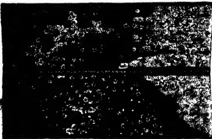
1
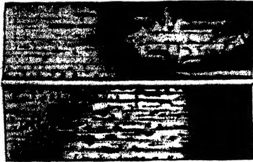
2
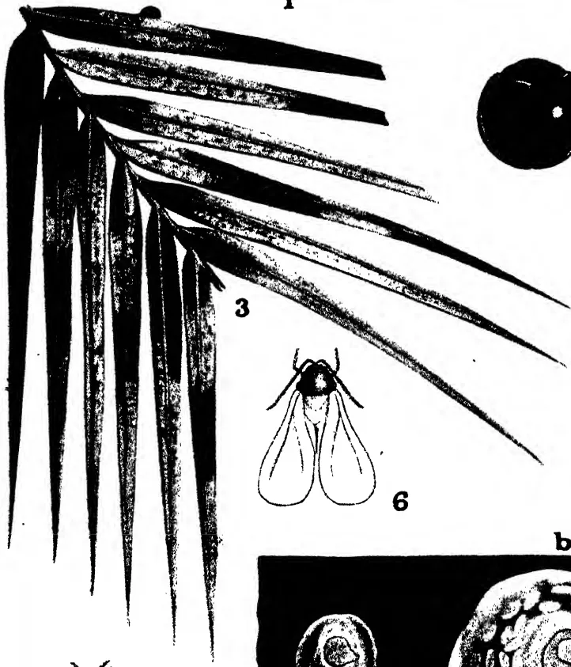
3
7
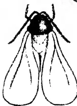
6
5
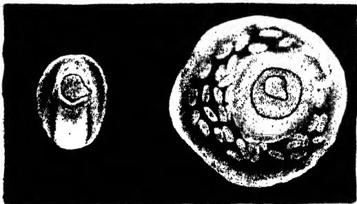
b
a
4
San L. de Silva
J. C. HUTSON, B.A., PH. D.,
GOVERNMENT ENTOMOLOGIST
THE Coconut Scale is one of the most widely distributed scale insects in Ceylon and probably occurs wherever coconuts and other palms are grown. It is by no means confined to this group of plants, but has been recorded from time to time, in small numbers only on a variety of other cultivated plants, including tea, rubber, plantain, mango, pepper, etc., and on many wild plants.
Outbreaks of this scale occur periodically on a few coconut estates on the western side of the Island and occasionally in other coconut areas, and areca palms are sometimes attacked, but these outbreaks are sooner or later controlled by small blue-black lady-bird beetles (figs. 1 and 7) and their larvae which can often be seen on scale-infested leaflets. Very small wasp parasites also attack this scale in Ceylon.
The presence of the coconut scale can be detected by the appearance of yellowish patches on the older leaves and when these patches are examined closely they are seen to be mottled yellow and green and to be composed of innumerable small yellow spots, each spot on the upper surface of a leaflet usually marking the position of a scale insect on the under surface (figs. 1 and 2). These scales settle down in small colonies on a leaf, each female remaining attached for the remainder of its life to the same spot by its thread-like beak. This sucking organ penetrates the leaf tissues, gradually exhausting the sap and killing the surrounding tissues which turn yellow underneath each scale. If these original colonies escape the attentions of lady-bird beetles they produce a large number of very small active larvae or "crawlers" (fig. 5), some of which soon settle down around the parent colonies, while others wander on to other portions of the same leaf or are blown by the wind to adjacent leaves or even to neighbouring palms, where they start new colonies. If the breeding of these scales is allowed to continue unchecked for several months, then eventually all the older leaves on small areas of palms are seen to be more or less yellow (fig. 3).
Under Ceylon conditions the coconut scale, owing to the efficiency of its natural enemies, rarely gets beyond the stage of attacking small scattered areas of palms, but in some other countries reports have indicated that this scale regularly caused serious damage to hundreds of acres of coconuts until controlled by the introduction of its natural enemies, mainly small parasitic wasps and lady-bird beetles.
* Submitted as a leaflet.
255It should be mentioned here that the mottled yellowing of portions of coconut leaves is quite distinct from another type of yellowing in which the whole leaf becomes evenly tinged with a bright yellow colour. This type of yellowing is usually associated with some soil deficiency and is particularly noticeable in areas where coconuts are growing under naturally poor soil or in areas where manuring or cultivation have been temporarily stopped for various reasons.
As indicated above the female scales produce numbers of young larvae (fig. 5) which crawl about looking for a place on which to settle down, almost invariably on the underside of a leaflet. These very small, oval, pale-yellow larvae, after settling down, attach themselves to the leaf surface by means of their sucking beaks and cover themselves individually with a thin transparent film of waxy material. Then they moult, throwing off their legs in the process. After this first moult the two sexes become marked off, each sex developing on different lines. The males remain small and oblong, feeding and moulting for the second time into the pupal stage, during which stage the legs and wings develop. Each male emerges from its pupal skin under the thin waxy covering, and, after expanding its wings, (fig. 4a) finally comes out as a very small winged insect (fig. 6).
The female scale, after the first moult, increases in size and broadens out, gradually enlarging its thin waxy covering. It reaches the final adult stage without any great change in external appearance except in size and is partly hidden under the two moulted skins (fig. 4b). It then becomes sexually mature and rapidly increases in size as the eggs develop inside the body. The thin covering is extended so as to cover not only the scale itself but also the eggs which are laid in a ring around the body, up to about 50 in number (fig. 4b). These eggs soon hatch into the young larvae which crawl out from under the thin covering and the whole life-cycle starts all over again.
It is probable that in the warm climate of the main coconut areas this scale can go on breeding continuously all the year round, although the development may be somewhat retarded during long wet periods. The females are usually produced in far greater numbers than the males, but occasionally one finds a leaflet on which the males considerably outnumber the females.
Palms which are naturally vigorous and which are growing under suitable soil conditions are less liable to get serious and prolonged attacks of coconut scale than those growing under poorer conditions, and if the attack is checked in the early stages by natural enemies or by artificial measures of control these palms are able to recover more rapidly from the effects of the injury than is the case with weaker palms.
256Remedial measures.—It is sometimes difficult to be certain of the presence of the coconut scale on older and taller palms, but if there is any doubt, the removal and examination of a few of the older leaves here and there should decide the matter. It should also then be possible to discover whether the lady-bird beetles are at work, either by observing the beetles themselves or by noting any patches where the scales have been eaten away. If the beetles are found to be present during the early stages of an attack they can usually be relied upon to check any further increase. If, however, the beetles are not in evidence and it is seen that a large number of larvae have recently settled down, then the infested leaves on older palms should be removed and burnt in order to check the spread of the pest, since spraying is not practicable on tall palms. On young palms the attack rarely extends beyond a few small patches on individual leaflets of older leaves, and these infested leaflets can easily be removed or the leaves can be sprayed with kerosene emulsion two or three times at intervals of a week.
It sometimes happens that attacks of the coconut scale recur periodically on much the same comparatively small areas of palms and if this is found to be the case these areas should receive special attention as regards cultivation and manuring. All scale-infested areas should receive such special attention as soon as the attack is noticed, and if the attack persists in the absence of lady-bird beetles, the matter should be reported to the Entomologist, who may possibly be able to arrange for the introduction of the beetles if any are available elsewhere at the time.
257| Province, &c. | Disease | No. of Cases up to Date since Jan. 1st 1933 | Fresh Cases | Recoveries | Deaths | Balance Ill | No. Shot |
|---|---|---|---|---|---|---|---|
| Western | Rinderpest | ... | ... | ... | ... | ... | ... |
| Foot-and-mouth disease | 22 | ... | 21 | 1 | ... | ... | |
| Anthrax | ... | ... | ... | ... | ... | ... | |
| Rabies (Dogs) | 10 | 10 | ... | 10 | ... | ... | |
| Piroplasmosis | ... | ... | ... | ... | ... | ... | |
| Colombo Municipality | Rinderpest | ... | ... | ... | ... | ... | ... |
| Foot-and-mouth disease | 28 | 1 | 27 | 1 | ... | ... | |
| Anthrax | 3 | 1 | ... | 3 | ... | ... | |
| Rabies (Dogs) | 13 | 5 | ... | ... | ... | 13 | |
| Haemorrhagic Septicaemia | ... | ... | ... | ... | ... | ... | |
| Black Quarter | ... | ... | ... | ... | ... | ... | |
| Cattle Quarantine Station | Bovine Tuberculosis | ... | ... | ... | ... | ... | ... |
| Rinderpest | ... | ... | ... | ... | ... | ... | |
| Foot-and-mouth disease (Sheep & Goats) | 70 | 38 | 48 | 3 | 19 | ... | |
| Anthrax (Sheep & Goats) | 64 | 34 | ... | 64 | ... | ... | |
| Central | Rinderpest | 34 | 17 | 3 | 22 | 7 | 2 |
| Foot-and-mouth disease | 3 | 3 | 2 | ... | 1 | ... | |
| Anthrax | 9 | 1 | ... | 9 | ... | ... | |
| Black Quarter | ... | ... | ... | ... | ... | ... | |
| Rabies (Dogs) | ... | ... | ... | ... | ... | ... | |
| Southern | Rinderpest | ... | ... | ... | ... | ... | ... |
| Foot-and-mouth disease | 50 | ... | 50 | ... | ... | ... | |
| Anthrax | ... | ... | ... | ... | ... | ... | |
| Rabies (Dogs) | ... | ... | ... | ... | ... | ... | |
| Northern | Rinderpest | 123 | 86 | 15 | 97 | 9 | 2 |
| Foot-and-mouth disease | 4 | ... | 4 | ... | ... | ... | |
| Anthrax | ... | ... | ... | ... | ... | ... | |
| Black Quarter | ... | ... | ... | ... | ... | ... | |
| Rabies (Dogs) | ... | ... | ... | ... | ... | ... | |
| Eastern | Rinderpest | ... | ... | ... | ... | ... | ... |
| Foot-and-mouth disease | 52 | ... | 51 | 1 | ... | ... | |
| Anthrax | ... | ... | ... | ... | ... | ... | |
| North-Western | Rinderpest | ... | ... | ... | ... | ... | ... |
| Foot-and-mouth disease | 3 | ... | 3 | ... | ... | ... | |
| Anthrax | ... | ... | ... | ... | ... | ... | |
| Pleuro-Pneumonia (Goats) | 3 | 3 | ... | 1 | ... | 2 | |
| North-Central | Rabies (Dogs) | 1 | 1 | ... | ... | ... | 1 |
| Rinderpest | 684 | 214 | 105 | 529 | 39 | 11 | |
| Foot-and-mouth disease | ... | ... | ... | ... | ... | ... | |
| Uva | Anthrax | ... | ... | ... | ... | ... | ... |
| Rinderpest | ... | ... | ... | ... | ... | ... | |
| Foot-and-mouth disease | ... | ... | ... | ... | ... | ... | |
| Sabaragamuwa | Anthrax | ... | ... | ... | ... | ... | ... |
| Rabies (Dogs) | ... | ... | ... | ... | ... | ... | |
| Rinderpest | ... | ... | ... | ... | ... | ... | |
| Foot-and-mouth disease | ... | ... | ... | ... | ... | ... | |
| Anthrax | ... | ... | ... | ... | ... | ... | |
| Piroplasmosis | ... | ... | ... | ... | ... | ... | |
| Haemorrhagic Septicaemia | 3 | 1 | ... | 3 | ... | ... | |
| Rabies (Dogs) | ... | ... | ... | ... | ... | ... |
G. V. S. Office,
Colombo, 12th April, 1933.
M. CRAWFORD,
Govt. Veterinary Surgeon.
| Station | Temperature | Humidity | Amount of Cloud | Rainfall | ||||||
|---|---|---|---|---|---|---|---|---|---|---|
| Mean Maximum | Difference from Average | Mean Minimum | Difference from Average | Day | Night (from Minimum) | Amount | No. of Rainy Days | Difference from Average | ||
| Inches | Inches | |||||||||
| Colombo | 87.2 | -1.2 | 73.6 | -0.4 | 70 | 93 | 4.6 | 2.40 | 4 | -2.12 |
| Pattalam | 90.5 | +0.7 | 72.5 | -0.1 | 68 | 93 | 3.0 | 0.67 | 1 | -2.30 |
| Mannar | 88.4 | -2.2 | 74.8 | -0.2 | 68 | 88 | 3.8 | 0.36 | 1 | -1.08 |
| Jaffna | 88.0 | -0.5 | 73.8 | -1.1 | 70 | 93 | 2.8 | 1.38 | 4 | +0.23 |
| Trincomalee | 84.6 | -0.7 | 77.5 | +0.9 | 74 | 82 | 3.4 | 1.32 | 2 | -0.42 |
| Batticaloa | 85.4 | +0.4 | 75.0 | 0 | 74 | 90 | 2.9 | 0.92 | 2 | -2.25 |
| Hambantota | 87.3 | +0.3 | 73.8 | -0.2 | 71 | 90 | 2.7 | 0.72 | 6 | -1.84 |
| Galle | 80.3 | -0.8 | 74.9 | 0 | 76 | 93 | 4.1 | 2.98 | 12 | -1.68 |
| Ratnapura | 92.2 | -0.1 | 72.8 | +0.2 | 69 | 93 | 5.6 | 9.78 | 19 | +0.80 |
| Aapura | 90.5 | -0.7 | 71.9 | +0.3 | 61 | 93 | 5.0 | 1.58 | 4 | -1.33 |
| Kurunegala | 91.8 | -1.3 | 72.0 | -0.4 | 60 | 93 | 5.3 | 5.67 | 7 | +0.54 |
| Kandy | 86.9 | -0.9 | 67.9 | -1.1 | 66 | 92 | 3.8 | 7.72 | 10 | +3.53 |
| Badulla | 81.8 | -0.5 | 64.4 | +0.1 | 70 | 94 | 4.6 | 2.17 | 10 | -2.44 |
| Diyatalawa | 76.9 | -0.4 | 58.5 | +1.0 | 67 | 88 | 5.4 | 2.39 | 9 | -1.93 |
| Halkgala | 72.5 | -0.8 | 51.0 | -1.6 | 74 | 94 | 4.5 | 2.71 | 11 | -2.87 |
| N'Eliva | 70.7 | -0.3 | 45.6 | -0.6 | 62 | 86 | 4.8 | 5.16 | 8 | +1.68 |
Excesses and deficits of rainfall were fairly irregularly distributed during March but, on the whole, deficits predominated, particularly in the low-country. In the central parts, however, and more particularly in the Kandy District, an appreciable number of stations registered excesses ranging up to 5 inches. The only two stations that were more than 5 inches in excess were Hallayen and Rasagalla, both in the Sabaragamuwa Province.
The majority of stations recorded slight deficits, and only about half a dozen, all in the southern half of the Island, were as much as 5 inches below average.
The highest totals for the month were 18.10 inches at Carney, 17.73 at Mawarella, and 17.28 at Rasagalla, the other stations with over 15 inches for the month being Blackwood, Dabar and Dik Mukalana. Practically all these lie on the western and southern slopes of the central hills.
Most of the rain fell during the second half of the month and was chiefly the result of local thunderstorm activity.
There were only four falls of over 5 inches in a day, the highest being 6.85 inches at Peradeniya Experimental Station on the 11th-12th, on which day the gauge at Katugastota recorded 6.83 inches, the next highest fall during the month.
Temperatures were on the whole a little below average for the month, while humidity was above normal.
Wind was above average strength, and generally north-easterly.
D. T. E. DASSANAYAKE,
Actg. Supdt., Observatory.
The
Tropical Agriculturist
Vol. LXXX
PERADENIYA, MAY, 1933
No. 5
Page
| Editorial | ... | ... | ... | ... | 260 |
ORIGINAL ARTICLES
| A Ginger Manurial Experiment. By A. W. R. Joachim, Ph.D. (Lond.), F.I.C., Dip. Agric. (Cantab.), and H. A. Pieris, B.A. (Cantab.). | ... | ... | ... | 262 |
| Experiences in Ginger curing. By A. W. R. Joachim, Ph.D. (Lond.), F.I.C., Dip. Agric. (Cantab.) | ... | ... | ... | 268 |
| Entomological Notes. By J. C. Hutson, B.A., Ph.D. | ... | ... | ... | 276 |
| Food Crops of the Tropics. By T. H. Parsons, F.L.S., F.R.H.S. | ... | ... | ... | 285 |
| The White Spider Orchard. By K. J. Alex. Sylva, F.R.H.S. | ... | ... | ... | 290 |
SELECTED ARTICLES
| Tobacco Culture in Southern Rhodesia | ... | ... | ... | 291 |
| The Present Position and Future Prospects in Relation to the Biological Control of Prickly-Pear | ... | ... | ... | 304 |
| Grasses and Man | ... | ... | ... | 310 |
REVIEWS
| Soils: Their Origin, Constitution and Classification | ... | ... | 316 |
| Imperial Co-operation for Agriculture | ... | ... | 317 |
MEETINGS, CONFERENCES, ETC.
| Minutes of Meeting of the Board of Management of the Rubber Research Scheme (Ceylon) | ... | ... | 319 |
DEPARTMENTAL NOTES
| Citrus Mildew | ... | ... | ... | 321 |
| Recent Progress in Turmeric Cultivation | ... | ... | ... | 323 |
RETURNS
| Animal Disease Return for the month ended April, 1933 | ... | 325 |
| Meteorological Report for the month ended April, 1933 | ... | 326 |
Of great interest to those engaged in the
cultivation of plantation crops.
Being a reprint of articles published in
The Tropical Agriculturist by the
Staff of the Department of
Agriculture, Ceylon.
34 Illustrations and Figures
Price Rs. 5/-
— • • • —
Obtainable from:
THE MANAGER, PUBLICATION DEPÔT,
PERADENIYA.
May, 1933
LOCAL varieties of ginger have been grown for many years in the Yatinuwara Division of the Kandy District, but the quality and yield of the crop has gradually been deteriorating owing to lack of proper cultivation and manuring. More recently a few varieties of imported Indian ginger have been grown in the Kandy and Colombo Districts.
During the last two years or so the Department of Agriculture has devoted an increasing amount of attention to ginger, with two main objects in view, first of all, to increase the yield and quality of the better local and Indian varieties, and, more recently, to evolve an easy and satisfactory method of drying these locally grown gingers. In this number some information is given regarding the progress which has been made along these lines.
With the main object of securing an improved variety a Ginger Growers' Association was formed in Yatinuwara in 1931 and a small trial ground was opened at Siyambalagoda where preliminary manurial and varietal trials were carried out by the Department during 1932. The results of these manurial trials are given in the first article, and indicate (1) that the application of sulphate of potash alone and of a complete mixture has produced definitely significant increases in yield in local varieties of ginger; (2) that the quality of the ginger was improved, especially in the potash plots; and (3) that increased profits can be obtained from the use of these manures.
A new series of manurial trials is being started at Giragama, near Peradeniya, with two varieties of ginger, namely, the best local ginger obtained from the varietal trials and an imported
261Cochin variety, locally known as Nugegoda ginger, since it has been grown there fairly extensively within recent years. In these trials all factors in connexion with manuring and cultivation will be tested on modern lines of field experimentation.
In order to ascertain the method of curing most suitable for the different varieties of locally grown ginger, some curing experiments were carried out at Ranawana, near Peradeniya. These experiments, detailed in the second article, have indicated that the Nugegoda ginger is the most suitable, both for curing whole and for grinding. The Local Indian is next best, but has a high fibre content, while the purely local ginger dries poorly, but is quite good for grinding. It is considered by the writer of the article that ginger curing by the ordinary method is essentially a small-holders' industry and that, even at present prices, it should prove not unremunerative. Co-operative curing would appear to be essential when the sulphur process is employed and certainly desirable under the ordinary method of curing.
A number of trials and demonstrations in ginger curing have been carried out in the Katugastota District by the Agricultural Instructor and further attention is being given towards extending the cultivation of the varieties most suitable for curing.
There are indications that the samples of dry ginger recently produced locally are quite up to the standard of the best imported Indian dry ginger. There seems to be no reason why the ginger requirements of the Island should not be met in time by local production, provided that quality rather than quantity is aimed at. The possibility of establishing an export industry is being kept in view.
As regards turmeric, this is a crop which can be cultivated more extensively with advantage in order to replace the imported article gradually. Trials carried out by the Department in the Katugastota District have shown that locally grown turmeric compares favourably with the best imported article, and that when properly cured by a simple process* it fetches the same prices locally as imported Indian turmeric. The note on turmeric published in the current number indicates that recent progress which has been made by the Department in extending the cultivation of this crop by the villager.
* Molegode, W.—Turmeric, Its Cultivation and Preparation in the Kandy District, —The Tropical Agriculturist, LXXIX, No. 5, November, 1932, pp. 271-273.
262A. W. R. JOACHIM, PH. D., (LOND.), F.I.C.,
DIP. AGRIC. (CANTAB.),
AGRICULTURAL CHEMIST,
AND
H. A. PIERIS, B.A. (CANTAB.),
DIVISIONAL AGRICULTURAL OFFICER, CENTRAL
GINGER is grown fairly extensively in the Yatinuwara district in the neighbourhood of Kandy, but the average yields obtained have not been high. With a view to determining whether these could be improved by the application of fertilisers, a manurial experiment was started at Siyambalagoda in this district, about 5 miles from Peradeniya. An area of about 1/30th of an acre was utilised for the experiment. The soil is a ferruginous gravelly loam, lacking organic matter and slightly acidic in reaction.
The area was divided into four blocks, and each block into five plots, one for each treatment. The positions of the treatments in the blocks were chosen at random. Drains of about a foot broad separated the plots from one another. Each plot was ft. long by ft. broad and was 1/725th of an acre in extent. The details of the treatments are shown below:
| Treatment | Quantity of fertilising constituent per acre | Nature of fertiliser and amount per acre | Remarks |
|---|---|---|---|
| A. Nitrogen | 108 lb. nitrogen | Nitrate of soda at rate of 720 lb. per acre | Half the quantity applied at planting and half two and half months after planting |
| B. Potash | 115.2 lb. potash | Sulphate of potash at rate of 240 lb. per acre | Applied two weeks before planting |
| C. Phosphoric acid | 129.6 lb. phosphoric acid | Superphosphate at rate of 720 lb. per acre | Do. |
| D. Complete mixture | The fertilisers were applied as on their respective plots | ||
| E. Control | — | — | Treated culturally as the others |
The plan of the experiment with the yield data is shown in diagram below:
| Block 1 | Block 2 | ||||||||
|---|---|---|---|---|---|---|---|---|---|
| C | E | A | D | B | D | B | A | E | C |
| 22.7 | 15.1 | 10.5 | 23.6 | 15.8 | 18.2 | 11.4 | 10.1 | 9.3 | 10.3 |
| B | E | A | C | D | A | D | C | B | E |
| 22.9 | 26.5 | 21.3 | 27.4 | 33.5 | 14.0 | 32.4 | 23.1 | 11.5 | 9.7 |
Block 4 Block 3
← Slope of land →
The area was mamoty ploughed twice at different intervals. At the second ploughing two weeks before planting, which latter was carried out on the 19th of April 1932 at the rate of 3 lb. per plot or 2,135 lb. per acre, the whole area was limed at the rate of 1 ton per acre. Owing to an unforeseen shortage of seed ginger, three blocks were planted up with seed from Hindagala and the other block (No. 2 in the diagram) with ginger from Siyambalagoda. Although the yield figures of this block are of a different order from those of the rest, they have been included in the statistical examination of the data. The ginger was planted in the plots about 1 ft. 6 ins. apart. The whole area was periodically mulched and kept clean weeded, the weeds being allowed to dry on the respective plots. Harvesting was carried out on the 25th January 1933, just over nine months from the time of planting. Each plot was separately harvested, the lots separately washed in water and then carefully weighed.
The yield figures of the plots in pounds of green ginger are shown in the diagram above, the letters indicating the treatments.
The results are summarised in table I below.
Table I
| Treatments | Lb. per plot. | Totals of | ||||
|---|---|---|---|---|---|---|
| Block 1 | Block 2 | Block 3 | Block 4 | Treatments | Mean | |
| A. Nitrate of soda | 10.5 | 10.1 | 14.0 | 21.3 | 55.9 | 14.0 |
| B. Superphosphate | 15.8 | 11.4 | 11.5 | 22.9 | 61.6 | 15.4 |
| C. Sulphate of potash | 22.8 | 10.3 | 23.1 | 27.4 | 83.6 | 20.9 |
| D. Complete mixture | 23.6 | 18.2 | 32.4 | 33.5 | 107.7 | 26.9 |
| E. Control | 15.1 | 9.3 | 9.7 | 26.5 | 60.6 | 15.2 |
| Totals of Blocks | 87.8 | 59.3 | 90.7 | 131.6 | 369.4 | — |
| Mean | 17.6 | 11.9 | 18.1 | 26.3 | ||
General Mean 18.47
264A glance at the table will show that there is a marked variation in the mean yields of raw ginger as a result of the manurial treatments, the range being from 14.0 to 26.9 lb. per plot. It will also be noted that the averages of the block yields also vary widely viz. from 11.9 to 26.3 lb. per plot. There will also be observed a definite fertility gradient down the slope of the land. Thus the average of block 4 is higher than that of block 3 and that of block 1 is higher than that of block 2. The poor yield average of the latter block is also probably due to the different jât of seed sown in this block. These variations in block and treatment yields are eliminated in the method of estimation of the error of the experiment by the analysis of variance.
The analysis of variance is shown in table II below:
Table II
| Due to | Degrees of freedom | Sum of squares | Mean square | (loge) Mean square | Standard error |
|---|---|---|---|---|---|
| Treatments | 4 | 472.18 | 118.04 | 1.2342 | |
| Blocks | 3 | 531.26 | 177.09 | ||
| Error | 12 | 153.3 | 12.77 | 1.224 | 3.57 |
| Total | 19 | 1156.74 |
The application of the test shows that as this characteristic calculated from the data (1.1118) is higher than that required for significance (.5907), the differences in treatments are definitely significant.
The standard error of a single plot is 3.57 lb. and of the difference in means between the plots 2.53 lb. For a probability of 100 to 1 () that the difference between any two means is not due to chance this difference must exceed 7.72 lb. or 41.8 per cent. of the mean. For a probability of 20 to 1 () the difference must exceed 5.51 lb. or 29.8 per cent. of the mean. The mean data obtained are summarised in table III below.
265Table IIIYields of Green Ginger| Treatment | Mean yield | ||
|---|---|---|---|
| per plot lb. |
% | Tons per acre | |
| A. Nitrate of Soda | 13.98 | 75.7 | 4.53 |
| B. Superphosphate | 15.40 | 83.4 | 4.98 |
| C. Sulphate of Potash | 20.90 | 113.2 | 6.77 |
| D. Complete mixture | 26.93 | 145.8 | 8.72 |
| E. Control | 15.15 | 82.0 | 4.90 |
| Mean | 18.47 | 100 | 5.98 |
| Standard Error of Mean | 1.79 | 9.7 | .58 |
| Significant Difference | 7.72 | 41.8 | |
| between Means | 5.51 | 29.8 | |
These yields are graphically represented in Plate I. Plate II is a photograph of the ginger actually obtained from the different plots.
An examination of the data would show that the probability is greater than 20 to 1 that sulphate of potash and greater than 100 to 1 that the complete mixture produces definitely significant yield increases over the controls. The complete mixture produces significantly higher yields than sulphate of potash alone with a probability of 20 to 1 that this is not due to chance. The effects of nitrate of soda and superphosphate alone are insignificant. The dominant fertiliser for ginger would therefore appear to be potash, but a balanced fertiliser mixture with a sufficiency of potash is more advantageous, as the data obtained from this experiment would indicate.
The average yield of ginger from the control plots is 4.9 tons per acre or over fivefold, of the potash plots 6.8 tons per acre or over sevenfold, and of the complete mixture plots as much as 8.7 tons per acre or over ninefold. The increases of the latter over the controls are over 40 per cent. and 80 per cent. respectively. Even the unmanured plot yields compare very favourably with those obtained in other ginger producing countries, and may probably be the result of liming. The effect of lime on yield is one of the points to be tested out in the comprehensive manurial trials to be carried out at Giragama in the Kadugannawa district.
SIYAMBALAGODA, 1932.
TONS PER ACRE
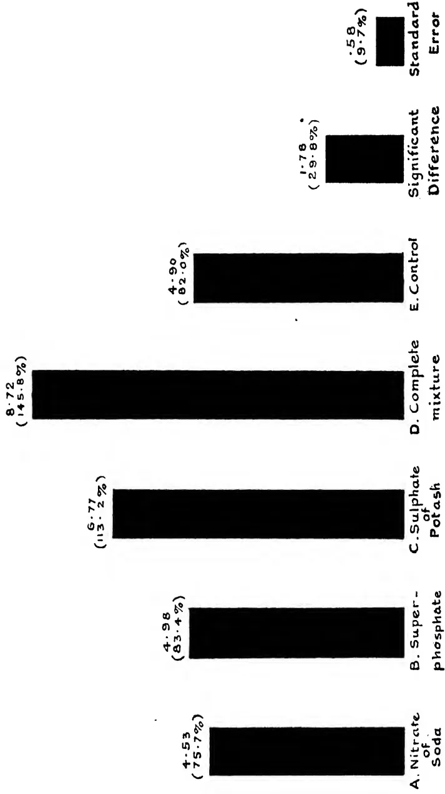
| Treatment | Mean (Tons per Acre) | Percentage |
|---|---|---|
| A. Nitrate of Soda | 4.53 | 75.7% |
| B. Superphosphate | 4.98 | 83.4% |
| C. Sulphate of Potash | 6.77 | 113.2% |
| D. Complete mixture | 8.72 | 145.8% |
| E. Control | 4.90 | 82.0% |
| Significant Difference | 1.78 | 29.8% |
| Standard Error | .58 | 9.7% |
obtained by different manurial treatments
266In order to determine the reason for the increased yields of ginger as a result of manuring, records were made of the average number of hands of ginger per plot, of the average weight of ten hands and the average length of a single hand. The results are set down in table IV.
Table IV
| Treatment | Average number of hands per plot | Average weight of 10 hands Ounces |
Average length of single hand Inches |
|---|---|---|---|
| A. Nitrate of soda | 189 | 11.8 | 4.5 |
| B. Superphosphate | 213 | 11.0 | 4.4 |
| C. Sulphate of potash | 242 | 13.8 | 4.4 |
| D. Complete mixture | 258 | 16.7 | 4.4 |
| E. Control | 185 | 13.0 | 4.0 |
It will be noted that the sulphate of potash and complete mixture plots both have (1) a larger average number of hands per plot and (2) hands of greater weight than the others. The average length of a single hand, except perhaps in the case of the control plots, does not appear to vary. Manuring with potash has therefore apparently produced a larger number of better quality of ginger rhizomes. Further the ginger from these plots has dried better than that from the other plots. This is probably due to an increase in the starch content of the rhizomes as a result of the potash manuring.
In table V below will be seen the increased nett profits per acre that could be secured as a result of manuring with fertilisers containing potash, on the basis that raw ginger is sold at the rate of Rs. 1.50 per cwt. The extra nett profit with sulphate of potash alone works out at Rs. 30.00 per acre and with the complete mixture at Rs. 40.00 per acre. The latter figure would have been higher if lesser quantities of superphosphate and nitrate of soda had been applied, and in the new manurial experiment the quantities of these fertilisers are to be reduced to that of the sulphate of potash, with a consequent reduction of expenditure on the fertiliser of over Rs. 30.00 per acre.
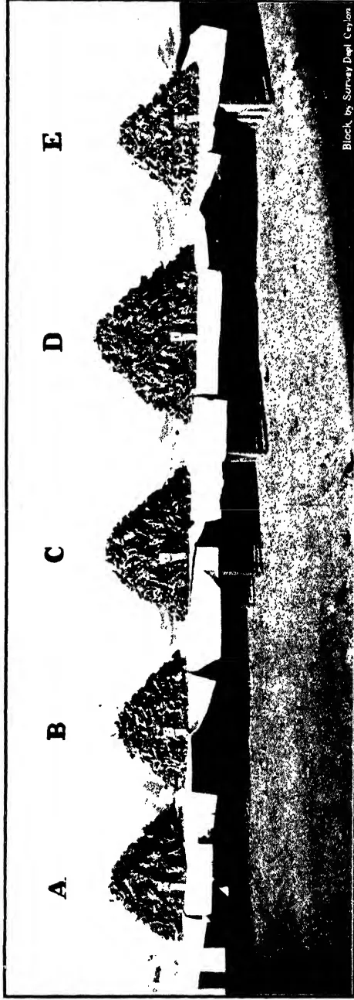
A B C D E
Block by Survey Dept. Cayona
Plate II. Actual amounts of ginger obtained by different manurial treatments
This image is a blank white page. It contains several small, dark specks which appear to be scanning artifacts or dust particles. There is no text, handwriting, or printed content on the page. 267Table V| Increases over control | Tons per acre of green ginger | Amounts of fertiliser per acre | Cost of fertiliser including freight | Cost of application | Value of ginger @ Rs. 1.50 per cwt. | Nett profit |
|---|---|---|---|---|---|---|
| Rs. | Rs. | Rs. | Rs. | |||
| 1. Sulphate of potash | 1.87 | 240 lb. | 21.00 | 5.00 | 56.00 | 30.00 |
| 2. Complete mixture | 3.82 | 240 lb. sulphate 720 lb. nitrate of soda 720 lb. superphosphate |
69.00 | 5.00 | 114.00 | 40.00 |
A sample manurial trial with ginger carried out on four randomised blocks at Siyambalagoda in the Yatinuwara district, showed that definitely significant yield increases are obtained by manuring with sulphate of potash and a complete mixture. The average increase was nearly 80 per cent. over the control in the case of the latter and nearly 40 per cent. with the former. These increases are statistically significant, the probability being over 20 to 1 that the sulphate of potash and over 100 to 1 that the complete mixture are responsible for the increased yields. Nitrate of soda and superphosphate do not significantly affect the yields in any way. The increased profits over those of the controls as a result of these manurial treatments amount on the average to about Rs. 30.00 per acre from the potash plots and Rs. 40.00 from the complete mixture plots.
Our thanks are due to Mr. L. B. Hindagala, President, Village Tribunal, Siyambalagoda for having made the land for this experiment available and to Mr. W. Molegode, Agricultural Instructor, Katugastota, for having carried out all the agricultural operations involved in it.
268A. W. R. JOACHIM, PH. D. (LOND.), F.I.C.,
DIP. AGRIC. (CANTAB.),
AGRICULTURAL CHEMIST
GINGER is grown fairly extensively in certain districts in the Central and Western Provinces, but almost the entire crop has been sold, up to now, as raw ginger. With the marked fall in price of this commodity, however, the question of the preparation of dry ginger became of importance and was seriously taken up by the Department. Ceylon ginger has the reputation of drying badly, but whether this was due to faulty curing methods or to its poor quality was not known. Our experience has indicated that while both factors are responsible for the trouble, the inherently poor quality of the local ginger is the primary cause. Local ginger has undoubtedly deteriorated in quality owing to improper methods of cultivation, neglect of manuring, etc. That by suitable artificial manuring the quality of a sample of locally grown ginger has been markedly improved, is evidence in point. Local ginger is inferior to the Indian varieties in size and thickness of hand, fracture and internal colour, and has generally a higher fibre content than the latter. In addition to the purely local variety, ginger imported from India within comparatively recent times is grown to some extent locally. In the Central Province, Calicut ginger is apparently the variety that has been introduced and its cultivation is extending. This is a variety with large, thick hands but like the local ginger it is very fibrous. It will be referred to in this paper as Local Indian ginger. In the Western Province (Nugegoda area) Cochin ginger has been fairly widely cultivated. This ginger (which will be referred to as Nugegoda ginger) though not as plump as the Calicut variety, has a very good fracture and low fibre content. Unlike the local ginger the good hands of the Nugegoda ginger are, in cross section, yellowish in colour and opaque, whereas the former are much less yellowish in colour
269and translucent. Calicut ginger is intermediate between the two in these respects. In all three varieties, hands showing a bluish colour in cross section are not infrequently found. These give dry products inferior to the corresponding yellow hands.
The primary object of the curing investigations undertaken was to determine the method most suitable for the varieties of locally grown ginger. There are two known methods of drying ginger: (1) ordinary curing (2) sulphur-lime curing. The former is adopted in all ginger growing countries, but the second is practised only in certain districts in India.
The investigations were carried out at Ranawana, about two miles from Peradeniya, through the courtesy and with the co-operation of Mr. A. B. Wegodapola. No less than a ton of raw ginger was cured by the lime-sulphur process. Some work was however done on the ordinary method of curing and the experiences with this method are also dealt with in this paper. A large quantity of ginger was however cured by the ordinary process by Mr. W. Molegode, Agricultural Instructor, Katugas-tota.
Ordinary curing was carried out as follows: The ginger was soaked in water overnight, peeled by hand with bamboo knives, washed again in water and then left to dry in the sun on bamboo barbecues. Frequent turning of the ginger when drying was found necessary. When completely dry, (this took about 6 or 7 days when strong sunshine was experienced) the ginger was again washed in water and re-dried in the sun. This practice was avoided if weather conditions were not satisfactory. Good sunshine is essential for ginger drying. Rainy or cloudy weather results in the product becoming mildewed and spotted and giving a musty odour and flavour. Ginger should be thoroughly well dried before it is bagged.
The disadvantage of the ordinary curing process is that with the local ginger it gives a thin, stringy, shrivelled dry product with poor fracture. Samples of this ginger from plots manured with sulphate of potash were however superior in many respects to unmanured ginger. This points to the poor quality being due to a deficiency of fertilising constituents in our ginger soils.
270Numerous modifications of this process have been adopted at various places. In certain parts of India the ginger is soaked in water for as long as two days. In Jamaica the hands are placed in water immediately they are uprooted, for, should the ginger be dried with the soil and roots adhering to it, the product will not be white.
Peeling in Gujarat is carried out either by scraping with a piece of earthenware shell or by rubbing the rhizomes on a coir string bedstead. In Jamaica ginger peeling is considered an art. The expert peels between the fingers of the hand and the less experienced peelers the other portions. Narrow bladed knives are used in peeling. Our experience in regard to peeling is that a woman can ordinarily peel about 28 lb. or a quarter cwt. of raw ginger a day. If the ginger is clean peeled, only about 14 lb. or one-eighth cwt. can be done a day. Peeling is therefore a costly operation. At the rate of -30 cts. per woman a day, ordinary peeling costs in curing one cwt. of dry ginger will amount to Rs. 7.20, six cwt. of raw ginger being required, on the average, for one cwt. of the dry product. For clean peeling this cost would be doubled. In certain parts of S. India no peeling is done, but after being well soaked the ginger is tread under root in the washing tanks. This considerably lowers the cost of production.
The peeled product should be immediately put into a tank of clean water and thoroughly washed with frequent changes of water. This has been found very necessary if a light-coloured dry product is to be obtained. On exposure to air the peeled rhizomes darken considerably in colour and this stain persists. Where ginger is being cured, a good source of water supply should therefore be near at hand.
In order to obtain a whiter product peeled ginger, after washing, is soaked for some hours in lime water and then allowed to dry. The lime may then be washed off, if required. Liming improves the keeping quality of the ginger.
Drying is carried out in Jamaica on cement barbecues, and in certain places in India, on mats and gunny bags on the ground. The latter practice should be avoided if the ground is wet or damp. In certain districts in India after the ginger is well dried, it is carefully rubbed by hand on a coarse gunny bag and then allowed to dry again. This is said to improve the white colour of the dry product.
A completely blank white page with no visible content, text, or markings.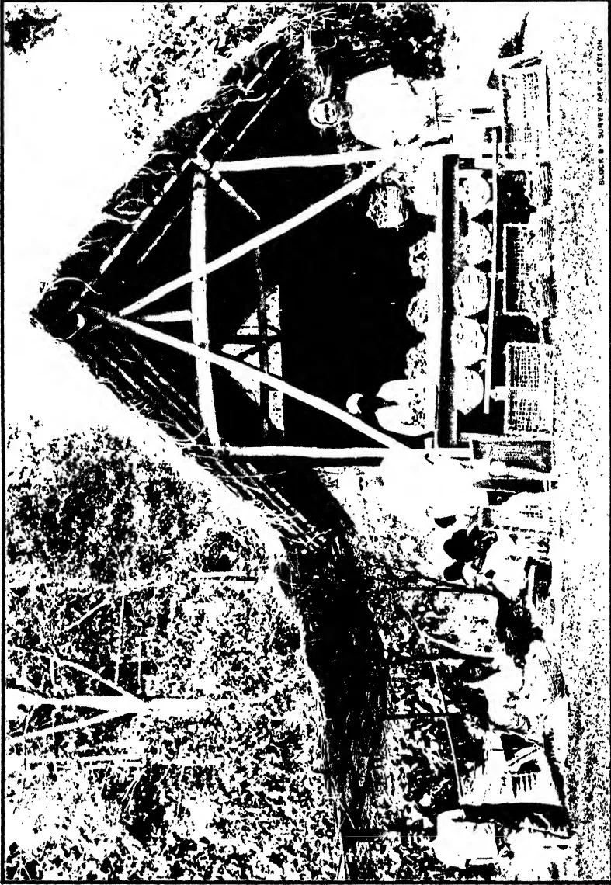
A black and white photograph showing a large, open-sided shed with a thatched roof, used for sulphuring ginger. Several people are working inside the shed, which is filled with large piles of ginger. The shed is situated in a rural area with trees in the background. The photo is credited to 'L. S. Bertus' and 'SURVEY DEPT. Ceylon'.Photo.
Plate III. Type of shed used for sulphuring ginger
L. S. Bertus
271In sulphur curing, the green ginger was treated as in the ordinary method, but after peeling it was placed in a tank of lime of the consistency of whitewash for a period of about two hours, during which time it was stirred once or twice. The ginger was then put into wicker or coir-bottomed baskets and placed on bamboo racks or shelves in a closed chamber and sulphured for 4 hours. A mud-wall room 6 ft. by 6 ft. by 6 ft. was used for this work. It had a door at one end and a hearth opening from the outside at the other. The hearth consisted of an iron pan or tray supported on a semi-circular wall about 1 ft. 6 ins. high. Sulphur was placed on the tray which was then heated from below. The quantity of sulphur used in the first instance was 7 lb. per 1,500 lb. of green ginger. The next day the ginger was placed in the sun to dry and in the evening the liming and sulphuring process repeated. 8 lb. of sulphur were used this time and the period of sulphuring was increased to twelve hours. The process was repeated a third time, the quantity of sulphur having been increased to 9 lb. and the period of exposure shortened to six hours. The product was then left to dry on the barbecue and when well-dried, the lime was washed off and the rhizomes left to dry again thoroughly, Plates III, IV, and V will give an idea of the type of curing shed, washing and liming tank, and barbecue used in the investigations. The dry ginger so obtained is a comparatively plump, almost white-coloured hand with a good fracture. It is much less susceptible to mould and insect attack than ordinary dried ginger. The disadvantage of the method, apart from the small extra cost and the trouble necessary, is that the product so cured is not saleable in all countries owing to the sulphur dioxide it contains.
During the course of the curing, several experiments were made to ascertain how far variations in quality and quantity of the raw materials and modifications of the process affected the quality of the final product. The results of these are detailed below.
Effect of Liming.—The optimum quantity of lime required was found to be about a bushel (50 lb.) of slaked lime for 3 cwt. of raw ginger. The quality of the lime makes a difference in the appearance of the final product. The purer the lime, the better the result. Unslaked lime is best used.
272Variations in the Sulphuring Process and their Effects on the Quality of Dry Ginger.—The effects on the appearance of the dry product of a reduction of the number of limings and sulphurings from three or two were not very marked. The thrice-limed and sulphured product is superior in appearance to the twice-treated product, but there was no difference between the two in fracture and percentage out-turns of first and second grade ginger. In the case of the two-sulphuring process, the periods of exposure in the sulphur chamber were four and twelve hours respectively. The sulphur dioxide content of the twice-sulphured product is, however, much higher than of the thrice-sulphured product. Thus a sample of the latter contained 2006.4 p.p.m. of sulphur dioxide as against 1116.9 p.p.m. in a sample of the former. The sulphur dioxide content was determined by the Monier-Williams method.
The effects of a reduction of the quantities of sulphur from 7, 8 and 9 lb. per 1,500 lb. of green ginger to 4, 5 and 6 lb. respectively were also studied. It was found that while the final products in the former case were superior in external colour and plumpness to those in the latter, there was no difference in fracture and internal appearance. The sulphur dioxide content of the samples treated with smaller quantities of sulphur was however smaller viz: 794.7 p.p.m. as against 1154 p.p.m. in those cured with the larger quantities of this element.
The effect of sulphuring alone without liming was also studied. With Nugegoda ginger a very good final product almost white in colour was obtained by sulphuring the peeled, thoroughly washed raw ginger for four hours at the rate of 7 lb. of sulphur for 1,500 lb. of raw ginger. The product after drying was washed in the morning and left thoroughly to dry in the sun. The sulphur dioxide content of this sample was found to be as low as 263.5 p.p.m. The great possibilities of this process are indicated.
Effect of Variety and Age of Ginger on the Final Product.—The out-turns of dry ginger were as follows:
| Total | 1st quality | 2nd quality | |
|---|---|---|---|
| % | % | % | |
| Nugegoda | 16.2 | 8.1 | 8.1 |
| Local Indian | 17.6 | 8.2 | 9.4 |
| Local | 15.8 | 8.2 | 7.6 |
| Average | 16.5 | 8.2 | 8.3 |
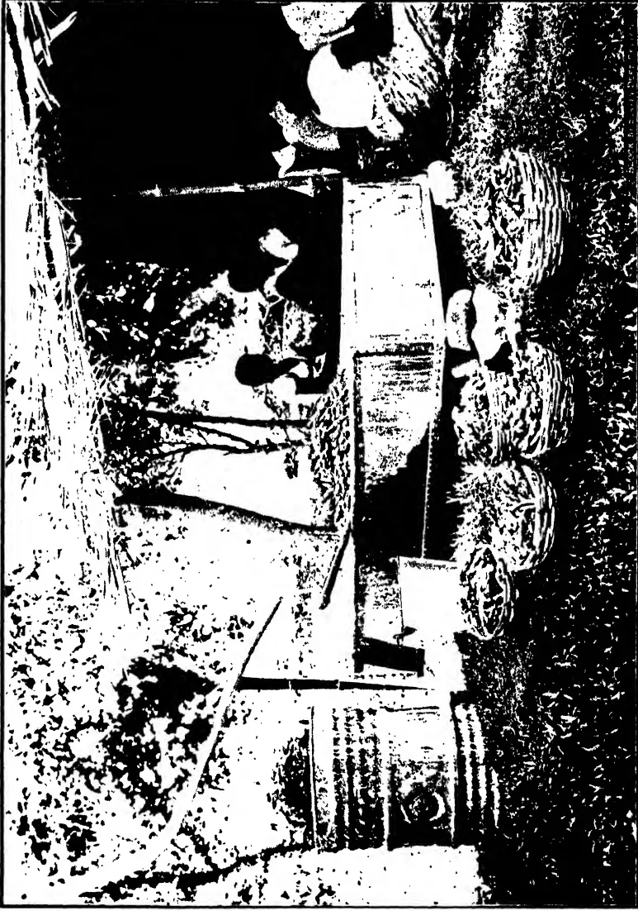
Photo.
L. S. Bertus
Plate IV. The washing and liming tanks. Peeling in process is also shown
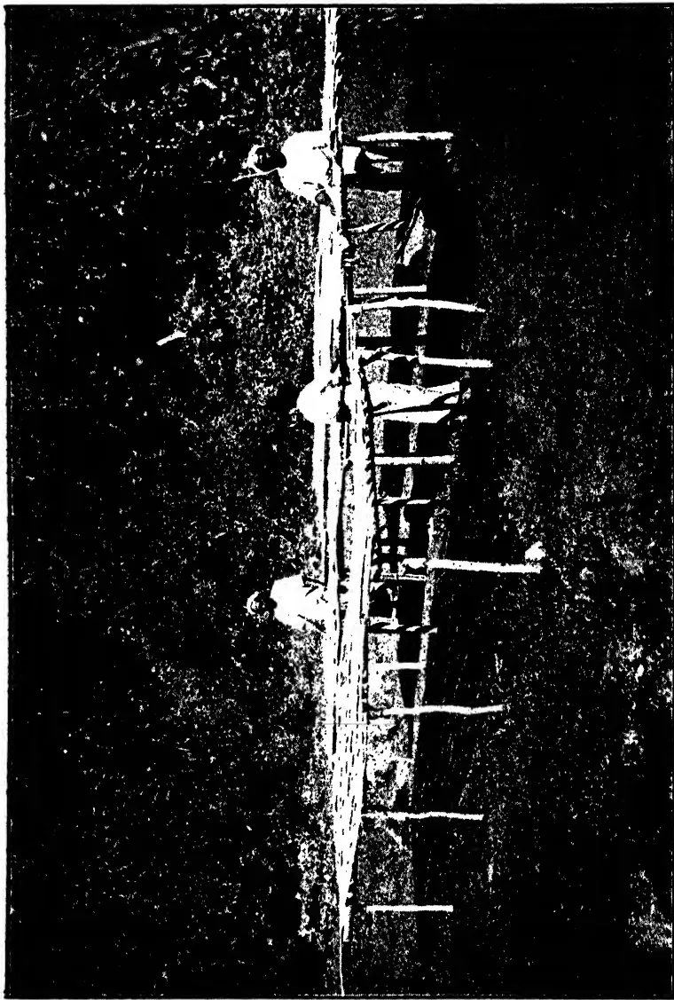
Photo.
Plate V. Bamboo barbecues used in the drying process
L. S. Bertus
273It will be seen that in general 6 cwt. of green ginger will be required to produce one cwt. of dry ginger for each of the varieties and the proportions of first and second quality dry ginger are about equal. Grading of all varieties of dry ginger is very necessary if a scale of whole ginger is to be effected. In Jamaica four or five grades are recognised. The lower grades can be used for grinding purposes.
In regard to the quality of the samples as affected by variety our experience is that Nugegoda ginger which even in the raw state has a good, clean fracture and yellowish colour, dries best and is most useful both for curing whole and for grinding. The Local Indian is next best, but its disadvantage is its high fibre content. The local ginger makes the poorest whole dry product, but it is quite good for grinding. These observations on the drying properties of the three varieties are confirmed by the milling data. The Nugegoda ginger gave a flour out-turn of 79.2 per cent; the local ginger 78.5 per cent; and the Local Indian 75 per cent. The fibre content of the latter is highest viz. 14 per cent. and that of the Nugegoda ginger lowest—10 per cent. In contrast to these figures the unsulphured local ginger (limed) gave 62 per cent. and the unlimed 53.5 per cent. of powder. The superiority in this respect of the sulphured and limed product is therefore apparent.
The comparison of the curing qualities of first and second year (ratoon) ginger carried out on a 4 cwt. sample of Local Indian (Calicut) ginger indicated that first year ginger was superior on the whole. The percentage out-turn of dry ginger was 20 per cent. of the first year and 16 per cent. of the second year raw material. The first year sample was also superior in colour and fracture and apparently in thickness as well. Further, its proportion of first grade ginger was also higher, i.e., 50 per cent. of the total against 40 per cent. in the case of second year ginger.
An experiment was made to determine to what extent the external characteristics of raw ginger give an indication of their drying qualities. A sample of Local Indian ginger was divided into three lots according to the colour of the fractured root-stalk and appearance of skin and these lots were separately dried. They were as follows:
Lots (a) and (b) gave the best results, lot (a) being superior. Most of these hands dried whitish and plump and had a good fracture. Lot (c) gave for the greater part thin, shrivelled hands, bluish-purple in colour and of poor fracture. These results are definitely encouraging and further investigation on the point should prove fruitful. Actually however, grading after drying will definitely be the more practicable procedure to adopt. What however is clear is that only sound, fully-developed rhizomes should be used for drying. Our experience is that first year rhizomes are best for drying, but second year or (ratoon) rhizomes can also be used advantageously.
As ginger is generally grown in small blocks and but rarely in large extents by individual growers, it would appear that the curing of this commodity is essentially a small-holder's industry. Co-operative curing would however appear to be necessary when the sulphur process and desirable when the ordinary curing method is employed. At the present market rates, ginger curing for the local market would not appear to be profitable except as a cottage industry. There would however appear to be prospects for a market abroad for a good quality local product. Reckoning on a ruling price of raw ginger of Rs. 1.25 per cwt. for large quantities, the gross return to a grower from 6 cwt. of raw ginger, the amount required for 1 cwt. of the dry product, would be Rs. 7.50. Curing costs per cwt. of dry ginger, if ordinary peeling is done, and if paid labour is employed, would be Rs. 7.50 by the ordinary process and Rs. 10.50 by the sulphur-curing process, Rs. 3.00 being reckoned as the cost of sulphuring and liming. It would thus be seen that for an economic return on curing under these circumstances, the price of the first quality dry ginger locally should exceed Rs. 15.00 per cwt. If however treading by foot is done instead of peeling, the cost of curing should not exceed Rs. 3.50 and Rs. 6.50 respectively and prices in excess of Rs. 11.00 should
275give economic returns. The great advantage of curing is that when there is no market for raw ginger owing to an over supply, as is the case at present, it would be a means of preserving the crop for at least a period of a year. Where however the ginger is cured by the grower and his family, ginger curing even at the present prices, should prove not unremunerative.
In order to determine whether the ginger peelings contained oil which would make their distillation a commercial proposition, about 150 lb. of this material were distilled. The oil yield obtained was very small (·055 per cent.) and would not in all probability pay the cost of distillation. The dried peelings might however be used for manuring or as fuel, and the ash residue, thus obtained, for manuring.
It is with pleasure that I acknowledge the very great assistance rendered to me by Mr. A. B. Wegodapoła and his sons in this work. Without their ready and willing co-operation it would have been very difficult to have achieved in the space of less than two months the gratifying results obtained.
276J. C. HUTSON, B. A., PH. D.,
ENTOMOLOGIST, DEPARTMENT OF AGRICULTURE, CEYLON
This ant belongs to a group which includes the notorious "driver ants" of Tropical Africa and America. These "driver ants" are essentially carnivorous and entomophagous, that is, in addition to being able to devour any of the larger animals which they come across in a confined or helpless condition, they also feed on any other insects which they find in the soil or elsewhere on their foraging expeditions. One of the Eastern species (Dorylus orientalis), which, according to Bingham (1) occurs "throughout India, Burma and Ceylon, extending to the Malay Peninsula, Borneo, Sumatra and Java", has been known for some time to have entirely different feeding habits from those of its relatives in other parts of the tropics. This species was reported some 35 years ago to be damaging potato tubers in India, but at first these ants were thought to be incapable of the injury in view of the predaceous habits of their relatives elsewhere. Then they were definitely found riddling sugarcane plants in India and their herbivorous habits were confirmed in Ceylon by Green (2) who made the following observation: "The workers of this species (determined for me by Colonel Bingham) live entirely underground and I can assert from repeated personal observation that they are most confirmed vegetarians. I found it quite impossible to grow potatoes at Pundaluoya solely on account of this insect, and they were most aggravating in their systematic attack upon the tubers of dahlias and the roots of the common sunflower (Helianthus sp.). In the case of the tubers they form galleries through and through the substance and in the case of roots they eat off the tender bark below the collar". Green completely satisfied himself that the Dorylus was really feeding upon the vegetable tissues and was not merely hunting for other insects. It may be mentioned that another species,
277Dorylus labiatus, in India (1) is known to be partly carnivorous, attacking other ants, and partly herbivorous, feeding on potato tubers. Up to the present time, orientalis has not been observed locally to have carnivorous habits.
In Ceylon since 1900 this ant has been reported occasionally in some up-country and mid-country districts, but within recent years its observed and reported appearances have been much more frequent and widespread. This species has also been gradually extending its range of food plants and is now known to feed on the underground portions of a great variety of ornamental and vegetable plants, including zinnia, balsam, groundnut, potato, sweet potato, beet, carrot, radish, cabbage, knol-khol, artichoke, bean, etc. These ants have also been found attacking the roots and collars of young trees, such as potato tree (Solanum macranthum), Citrus spp., flamboyante (Poinciana regia), Eucalyptus sp., etc. In the case of plants with bulbous or tuberous roots the fleshy portions are completely riddled, while in other plants the tender portions of the roots and collar are devoured.
The Eastern species of Dorylus according to Bingham (1) are noteworthy for the great difference in appearance between the workers and the males and between the males and females, or queens. The workers, which are responsible for the damage to plants, are about one-fifth of an inch long, chestnut brown to reddish brown, with rather large rectangular heads bearing a deep furrow down the middle. The central portion of the body, mainly the thorax, is flattened and not markedly constricted as in many other ants, that is, there is no distinct "waist", while the abdomen, or hinder portion of the body, is somewhat flattened above. There are two castes of workers, one as described above, and the other much smaller and paler in colour. Both castes of workers are wingless and have no eyes, hence the local name "blind ants".
The males are nearly an inch long, winged, yellowish-brown, with well-developed simple and compound eyes, and somewhat resemble wasps; they sometimes fly to bungalow lights at night. The female of orientalis has apparently not been found in Ceylon, but that of a related species of Dorylus in Burma (1) is said to be more than an inch long, reddish-brown, without wings or eyes, and with a "large abdomen a little resembling that of a queen termite",
278The Dorylus worker ants live entirely underground and, so far as is known at present, their main nests are probably situated fairly deep down. It is thought that from the main nests foraging parties go out in all directions underground to feed on the roots of the plants. It is possible, however, that in some cases small colonies may be established temporarily at the bases of certain plants. As indicated above, the workers are not known to appear above ground and their presence is usually not detected until the attacked plants begin to wilt. When disturbed they rapidly retreat into the soil again.
It may be mentioned that owners of gardens in the drier districts have reported that these ants are more troublesome in the dry weather, that is, during May to September. A possible explanation of this dry weather prevalence of the pest may be that the ants come to the well-watered gardens from drier areas in search of moisture and the more succulent food so conveniently provided for them.
When once this ant has become established in a garden it is not at all easy to get rid of. There is usually no chance of being able to exterminate the main nests, since these are probably situated deep underground and possibly at some distance from the points of attack. But it is possible, however, gradually to kill off many of the ants actually in the garden beds by the use of petrol and to make life so uncomfortable for the survivors that the plants are left alone in the early stages of growth.
Preventive measures.—In areas where the ants are known to be troublesome, the beds should be thoroughly treated with petrol before replanting. This fumigant can be poured in small quantities along shallow furrows made at intervals along the beds or into a number of small holes made in the soil at frequent intervals. The furrows or the holes as the case may be, should be covered over with soil immediately after treatment. Or the top few inches of soil can be removed from a portion of a bed, the exposed surface sprinkled with petrol and the soil replaced immediately; the remaining portions of the bed can then be similarly treated. One to two pints should be sufficient to treat every thirty square feet of surface, depending on the thoroughness of the treatment.
279After manuring and before replanting, the beds can be treated with sawdust or wood ashes steeped overnight in a solution of any good carbolic disinfectant at the rate of two tea-spoonsful to every bottle of water. This deterrent mixture can be sprinkled over the beds worked thoroughly into the top soil and left for a day or two before replanting.
Remedial measures.—If the pest appears for the first time in beds of growing plants and its presence is detected only after the young plants have begun to wilt and die off, then usually the general fumigation recommended above cannot be applied owing to the risk of injuring the surviving plants. All badly attacked and dying plants should be carefully removed one at a time and the holes immediately treated with petrol before the ants have had time to disperse, one or two small table-spoonsful being poured into each hole which is then forthwith plugged with damp earth. If the plants are well spaced, the furrow method of applying the petrol between the rows can be tried, or individual plants can be treated by applying the petrol in shallow circular furrows in a radius of about 6 to 9 inches from the plant. A few plants in different beds should be treated first as an experiment and if the ants are killed without injury to the plants then the remainder of the plants can be treated gradually. The impregnated sawdust of wood ashes can be applied around such plants a day or two after the petrol treatment to serve as a deterrent. If the attack is not discovered until most of the plants in a bed are dying, then the only remedy is to take out all the plants and give the bed the full treatment recommended under preventive measures before replanting.
If these Dorylus ants have become thoroughly established in a garden, a vigorous campaign should be launched at the beginning of each planting season or at any other time that they become troublesome. It may be a long and rather tedious struggle, but owners of gardens have found that, by adopting the above measures thoroughly and systematically whenever the ants appear, they can manage to grow vegetables and ornamental plants successfully without serious injury by this pest.
Everyone is familiar with the moderate-sized, rather stout, brownish beetles which come buzzing and blundering into bungalow lights at night after the first good rains in April and May. The earlier arrivals begin to emerge from the soil about the end of March and during April, and their numbers rapidly increase throughout May and June, during the south-west monsoon rains, gradually becoming fewer in July to a few belated stragglers in August. Every now and then in certain districts there comes a "cockchafer year", during which grass lawns are killed out in patches by the root-feeding grubs and ornamental shrubs and flowering plants are tattered and torn by vast swarms of beetles which carry on their destructive work mostly at night. The beetles are known by different names in other countries, such as "May beetles" or "June beetles" in America, and "hard backs" in the West Indies. The grubs are usually known as "white grubs" in most parts of the world.
Our Ceylon cockchafers are of many different kinds and sizes, but the more important species belong to two sub-families of the very large family of beetles known as the Scarabaeidae. The true cockchafers are grouped under the sub-family Melolonthinae and include mostly dull-coloured beetles of varying shades of brown. They are active mainly at night, coming out at dusk and retiring at dawn to hide in the ground or in other sheltered places; these insects are usually attracted to lights. In the beetle stage they usually feed on the leaves of a great variety of plants and sometimes attack flowers as well, while the grubs consume grass roots or eat away the underground portions of various cultivated plants.
The members of another closely related sub-family, the Rutelinae include many brightly-coloured species and are sometimes also called cockchafers. Many of these are night-feeders, but some, especially the more conspicuously coloured ones, are also active during the daytime and rarely come to lights at night. Some species of this group show a distinct preference for flowers rather than leaves, while others are general feeders. Speaking generally, it may be said that the Melolonthine beetles are rather less injurious than the Ruteline beetles, since the former are not such voracious feeders as the latter nor do they attack flowers so readily. On the other hand the Melolonthine grubs are as a rule far more serious pests than the Ruteline grubs, since the
281former are essentially root-feeders, while many species of the latter probably feed mainly, if not entirely, on decaying vegetable matter in the soil.
Below will be found some observations on a few of the more important species of Ceylon cockchafers grouped under the two sub-families. The notes on local distribution and feeding habits are taken mainly from our records extending over a number of years and give some indication of the type of injury caused by some of our local species and their grubs. The brief descriptions of their external appearance and approximate size are taken from pinned specimens or fresh material, whenever possible, and in the case of the Rutelinae are supplemented by numerous references to Arrow (1). In the measurements of sizes, 25 millimetres (mm.) = 1 inch. It should be mentioned here that, so far as is known at present the great majority of our Ceylon cockchafers are found mainly in the southern and wetter half of the Island; therefore the term "widely distributed" means distributed throughout this range, and "low-country" means the wetter low-country districts.
Lepidiota pinguis.—Length, 35-40 mm.; breadth, 17-22 mm. The largest of our local cockchafers. Greyish to greyish brown. Widely distributed. Grubs attack roots of cinnamon, young rubber and tea. Beetles feed on leaves of dadap, acacia, etc.
Holotrichia serrata.—Length, 23-26 mm.; breadth, 12-14 mm. Deep chocolate brown. Mainly low-country. Grubs a pest of grass lawns and roots of various plants. Beetles eat leaves of canna, etc.
Microtrichia spp.—Length, 11-13 mm.; breadth, 6-7 mm. Dark brown. Mainly low-country. Nothing known about the the grubs. Beetles feed on canna flowers, leaves of albizzia, young rubber and various garden plants.
Autoserica mollis.—Length, 8.5-9.5 mm.; breadth, 5-6 mm. Stout, golden brown. Mid to low-country. Nothing known about grubs. Beetles feed on rose flowers and on albizzia and young rubber leaves.
Apogonia rauca.—Length, 9-11 mm.; breadth, 6.6.5 mm. Dark brown to blackish. Nothing known about grubs. Beetles attack cacao leaves.
282RUTELINAEPopillia discalis.—Length, 9-11 mm.; breadth, 5-7 mm. Oval, shiny, varying from deep metallic green, blue, coppery to almost black; elytra, or wing covers, varying from deep metallic green to pale brown; white spots around the sides and end of body. Mainly up-country, but occasionally found at lower elevations. Grubs may feed on roots of grasses, etc., or on decaying vegetable matter. Beetles common on grass lawns and on garden plants, feeding on leaves and flowers.
Mimela mundissima.—Length, 13-16 mm.; breadth, 8-9 mm. Broadly oval, shiny, deep grass green, with a narrow yellow band around the edges of wing covers, etc. Widely distributed, but mainly up-country. Grubs attack tea roots. Beetles feed on leaves of acacia, eucalyptus, etc., and on flowers of garden plants.
Anomala tenella.—Length, 4.5-6 mm.; breadth, 2.5-3.5 mm. Orange yellow, suffused above with a golden green or coppery lustre. Widely distributed. Nothing known about grubs. Beetles feed on young leaves of tea, dadap, rose, etc.
Anomala superflua.—Length, 19-22.5 mm.; breadth, 10-11.5 mm. Yellowish brown with a black head and a fine black line around the edges of the wing covers. Widely distributed. Grubs feed on tea roots. Nothing known about feeding habits of the beetles.
Anomala dussumieri.—Length, 24-26 mm.; breadth, 13-15 mm. Oval, shiny, bright emerald green. Mainly low and mid-country. Grubs attack roots of cinchona. Beetles feed on cinchona leaves.
HABITS AND LIFE-HISTORYThe complete life-cycle of any species of cockchafer has not been worked out in Ceylon, but from partial observations made on the development of several different species and from what is known of related species in India, (3), and in the Dutch East Indies (2), the habits and life-cycle of a typical cockchafer are somewhat as follows:
The eggs of the various species are laid singly, sometimes in the top two or three inches of soil, but sometimes deeper. They are small rather long oval and whitish when freshly laid, but gradually increase in size and become almost spherical before hatching. They vary in size according to the species. After
283about ten days to about a month, according to the species, the eggs hatch into small whitish grubs with pale-brownish heads, curved bodies and three pairs of well-developed legs.
The grubs burrow down into the soil where they remain for several months feeding on roots of grasses and other plants. Some species breed in patna soils and attack the roots of estate crops planted in patna clearings. As indicated above, the root-feeders are mainly Melolonthine grubs. Other species of grubs, belonging mostly to the Rutelinae, feed on decaying matter in the soil. These various grubs usually become full-grown in about 6 to 9 months and then change into the pupa or resting stage inside earthen cells. Some species may remain dormant in the grub stage for several weeks or even months before actually becoming pupae.
The pupal stage is usually comparatively short, lasting only from about ten days to about one month, according to the species. Sometimes the beetles remain in their earthen cells until the rains have softened the ground sufficiently to allow them to emerge and begin breeding all over again. It is probable that most of our local species take just under one year to develop from egg to beetle, at any rate in low to mid-country districts, although it is possible that at higher elevations the life-cycle may occupy rather more than a year.
These pests can be controlled to some extent in both the beetle stage and as grubs.
Beetles.—Since some species are attracted to lights, it is sometimes possible to catch numbers of them by rigging a simple light-trap made by placing a windproof lantern on a brick in the middle of a pan or basin of water with a film of kerosene on the water. Light-traps are usually more successful on dark, damp still nights and need only be put out for a couple of hours after dusk. On wet nights the lamps can be protected by a rough shelter. Tests on suitable nights during April to June will indicate whether light-traps are going to be successful for the particular locality. Some species can be collected from the plants or from grass lawns in the late afternoon and early morning and dropped into tins half-full of water covered with a film of kerosene. Other species can be found on garden plants during
284the day and similarly disposed of. As many beetles as possible should be trapped or collected during April to June before they lay their eggs.
Grubs.—These are difficult to kill in the soil, especially under grass. If certain garden beds are known to be infested year after year, the opportunity should be taken of removing as many grubs as possible whenever the beds are dug up before replanting. The petrol fumigation recommended against Dorylus ants is sometimes useful in killing off white grubs, although rather stronger doses are needed. Powdered naphthalene (moth balls) worked into the soil around, but not too near, the plants will act as a deterrent, or the impregnated sawdust or woodashes suggested for Dorylus can be used as an alternative method of keeping away the grubs.
When grass lawns are attacked in patches, sometimes watering the patches with a solution of nitrate of soda before rain should bring many of the grubs to the surface. This fertiliser can also be sprinkled over the grass before rain with similar results. It is sometimes advisable to take up badly infested patches and remove the grubs or drench the soil with petrol poured into numerous holes. If the latter method is tried, then the area should not be returfed until the next day.
Cockchafer beetles and grubs are often liable to be troublesome in gardens adjoining patna areas, since the beetles breed freely in such places and invade the gardens annually from April to June. Problems such as these involve a thorough and systematic campaign almost every year in each individual garden, since there is no practicable method of controlling these pests in patna soils nor of preventing the beetles invading cultivated areas.
T. H. PARSONS, F.L.S., F.R.H.S.,
CURATOR, ROYAL BOTANIC GARDENS, PERADENIYA
THE representatives of the Breadfruit and its relatives in Ceylon consist of the Breadfruit proper (Artocarpus incisa) or Rata-del S., Erapillakai T; the Jak fruit (Artocarpus integra) or Kos S., Pillakai T; the Johore Jak (Artocarpus champedan) and the wild Breadfruit (Artocarpus nobilis) the Bedi-or Wal Del S., Asini-pillakai T. The order to which these trees belong include many others of wide economic value such as the Fustic, Mulberry, Fig, Panama rubber, China grass and the Ganja or Indian Bhang.
Dealing first with the seedless form of Breadfruit proper (Artocarpus incisa), it is surprising that, in spite of its known qualities as a nourishing, wholesome and palatable food of much starch content, and as a plant of high food value rivalled only by the Banana or Plantain, this tree is not more commonly cultivated in Ceylon. The reason for this is doubtless due to the difficulty in propagation, since the Breadfruit is seedless and does not normally root from cuttings, and the laborious method of forcing the tree to produce root-suckers, usually by the wounding or incision of the root, has to be adopted.
The Breadfruit is a native of the Malayan Archipelago and the actual date of its introduction into Ceylon is uncertain, but is presumed to be somewhere about 1796. It is possible that the original plants received here were from the consignment collected and transported to the West Indies by the Bligh Expedition of 1792 to the Pacific Islands, or most probably it may have been introduced prior to that date by the Dutch. There is also a seed-bearing tree in the Gardens, but although of good quality it is not the equal of the seedless forms, and propagation should on principle be only from the latter.
The tree grows to a height of about 50 to 60 feet and is of a spreading nature. The fruit is roundish to ovoid in shape, muricated or reticulated, growing one to two and sometimes three together near the end of the branches, attaining an average
286weight of 3 to 4 pounds each, and 8 inches long by 4 to 5 inches in diameter. The number of fruits supported by a well grown mature tree will vary from about 600 to 800, the ripening period extending over a period of several months. The tree is of very rapid growth and when once the rooted suckers have become established there are few fruit trees of its size more easily grown or more free from attack by pests and diseases.
The fruit is not eaten raw but is sliced, boiled or baked, and when boiled it resembles in texture the sweet potato and forms a wholesome, starchy, palatable vegetable. When thinly sliced and baked in the sun or in ovens, a form of biscuit is obtained which, when dried, will last from one breadfruit season until the next. These slices may be eaten baked or toasted or may be ground up into flour and cooked in various ways. A better local knowledge of this fruit and its preparation to the best advantage is very desirable, since other tropical countries utilise the fruit to much advantage and place a high value on the nutritive properties of the ripe fruit.
The cultivation of this tree can be undertaken anywhere in the moist zone from sea level up to 3,000 feet but it is not suited to the dry zone owing to its enormous leaf surface and demand for moisture consequent upon a heavy crop. Once established in its permanent site and protected from damage by trespassing cattle and such like, the tree practically takes care of itself. The greatest difficulty lies in procuring the young plants in sufficient numbers, since the fruit contains no seed and young plants (suckers) are rarely obtainable from the roots of the old trees.
It has been observed that where the roots of old trees have been injured, root-shoots or suckers are very apt to form, and a series of root experiments with root-cuttings undertaken by the late Mr. P. J. Wester in the Philippines shows that, if properly handled and made at the right time, with the employment of a suitable rooting medium, the rooting of root-cuttings is a simple matter. Similar experiments in St. Lucia (see Tropical Agriculturist, Vol. LVIII—1922, page 99) support this result. Four medium sized roots cut into 6-inch sections to form 95 cuttings were inserted in nursery beds, the soil being covered to a depth of 3 inches with sea sand. In months from date of insertion of cuttings, 58 had developed into strong vigorous plants of 6 to 7 inches high and at that date 35 of the remainder
287had produced numerous buds, and only two were actually dead. It is fairly conclusive, therefore, that propagation by root-sections or root-cuttings is the remedy for the past and present difficulties in obtaining stocks of this valuable plant, and with similar methods of propagation now in hand at Peradeniya it is expected that very much larger supplies will become available in the future.
The small fruit grower or person with available ground could raise his own stocks if he has the necessary parent tree. The root cuttings are obtainable from the end of the growing root system, usually those just below the surface of the soil are best, selecting roots of from inch to inches in thickness, cutting all such into lengths of 6 to 8 inches each with a very sharp knife and inserting into a prepared bed covered with a thick layer of coarse river sand. It is important that the operation should be conducted with the arrival of the Monsoon, and should dry weather intervene regular spraying must be done. The cuttings should be inserted to two-thirds of their length and 12 inches or so apart in the nursery bed in a sloping direction leaving one-third, and this the thickest end, above ground level and the whole bed shaded and protected during the hot part of the day. If the cuttings used exceed inches in thickness the end exposed to the air after planting should be painted over with coal tar or a good preservative.
The rooted plants can be transferred from the nursery bed to permanent sites on attaining a height of 12 to 15 inches and should be planted at least 40 feet, but preferably 45 feet apart since the mature tree forms a very large and spreading head. Any considerable increase in the planting up of this tree in the Island must, in years to come, go a long way towards warding off any possible food shortage.
To increase the food production of the Island in conjunction with the provision of an excellent timber seems well worth striving for and this can be attained by the further encouragement of the cultivation of the Jak fruit (Artocarpus integra). The rural population need no enlightenment as to its food value, since in certain parts of Ceylon it is their most important food. At the time of the general food shortage some years ago, strenuous efforts were made in the cultivation of the Jak not only because of its food value but also because of its value as one of the standard timbers of Ceylon, and considerable stands were established by the Forest Department, by lessees on re-afforestation leases and by private individuals, but more remains to be done.
288The two products of the tree, however, food and timber, unfortunately do not go well together, since in consequence of the shortage generally prevalent in the Island of good mature Jak timber, immature trees are too often sacrificed for this purpose and an important food producing asset is thereby considerably reduced.
In certain areas of village forest lands leased out for chena cultivation it has been stipulated that such areas should be re-afforested in Jak, and here and there good stands of young Jak trees are to be seen, but this is not enough. Every private individual in possession of even a small area or compound should endeavour to have his perennial source of food or fruit in the form of Jak or Breadfruit, Mango or similar kinds of trees.
It is no exaggeration to state that whole families live on the Jak fruit whilst the season lasts. The rural population is steadily increasing, but the supply of Jak trees for fruit purposes is equally steadily diminishing, for the recent extensions and activities of the Forest Department with this tree have been carried out naturally from a timber rather than a food product point of view.
The Jak is now naturalised in the country and is not difficult to grow in localities suited to it, that is, throughout the wet zone from sea level to 2,000 feet or even 3,000 feet, although it thrives best at the lower elevations. For the production of sound timber and for the best results as a fruit tree good cultivation in the young stages is necessary.
The numerous poor and malformed specimens seen in villages and around individual dwellings are doubtless accounted for by the fact that they originated from self-sown seedlings where seeds have been discarded from an earlier meal, and in spite of traffic and rough treatment in general have germinated and survived. The seedling is later hampered by being smothered by overhead growth, by damage from cattle, and by severe competition for nutriment with the roots of surrounding trees. Under these circumstances, good healthy and well-formed trees cannot be expected, and the elimination of these drawbacks by proper cultivation of seedlings, whether self-sown or planted, will amply repay the owner.
Where any well-established tree or trees exist under the conditions mentioned above, considerable improvement can be brought about by clearing off all cheddy around the roots, by lopping overhanging branches of unnecessary trees, or better still by the removal of such as are in close proximity, and by undertaking a heavy lopping of the Jak branches whereby new
289growth is formed and light and air is afforded the tree. The Jak is a robust type of tree when once established and the crop from the new wood formed after the lopping will soon repay the labour involved in clearing around the tree and keeping it clear.
In addition to this, new plants should be put out to replace eventually the older trees, and these can be raised by selecting some seeds of the best and largest fruit available and sowing them either in a prepared bed or preferably in bamboo pots, or even in cigarette tins if holes are made at the bottom of the tins to afford drainage. The beds should be protected from cattle trespass and other damage and kept shaded for a time, or the pots or tins placed in positions where protection and shade is afforded. In three to four months from sowing, the seedlings will be large enough to plant out into permanent sites.
Good holes about 3 feet wide by 2 feet deep should be cut and refilled with a good proportion of well-rotted cattle manure, planting the seedlings after soil has settled down. A strong permanent fence should be erected around each plant and a little overhead shade during mid-day hours is beneficial for a time after planting, until the seedling can stand full exposure. The Jak is normally a straight-growing tree and naturally forms a good, straight free-growing stem, so that no pruning or shaping is usually required. The tree prefers a rich, deep and moist soil, but will also grow well in poor soil. Moisture however, seems essential and it can be said with safety that once established all it needs is ample moisture.
The fruit is not, like most other fruits, produced on the end of the branches, but is borne first on the main stem of the tree and then on the stems and bases of the branches, and the tree has, therefore, to form a certain maturity of wood before it fruits. This occurs in the low-country in about 5 to 6 years, and at 2,000 feet or so at about 6 to 7 years of age. From thence onward the crop increases until the tree reaches its full size. It is relatively a long-lived tree and produces heavy crops over a long period.
There are several varieties of Jak, those considered the best being the "Waraka" and the "Vela", the firm and soft fruited types respectively. Peradeniya possesses an outstanding tree of the "Waraka" which is much appreciated locally in respect to both its quality and its size. Heavy crops are borne annually also by this tree and propagation on a large scale has been undertaken at these nurseries.
290(ARACHNIS ALBA SCHLECHTER)
K. J. ALEX. SYLVA, F.R.H.S.,
CURATOR, HENERATGODA BOTANIC GARDENS
THIS pretty epiphyte is indigenous to the woods of the Malay Peninsula and is also known as Renanthera alba Ridl. and Arachnanthe alba Ridl. It belongs to the tribe of Vandeous Orchids and is very nearly allied to Vanda itself, differing however, in having the mid-lobe of the lip small and the lip being articulated—not continuous with the column, and spurred at its middle instead of at its base. As an ornamental pot plant it ranks with some of the best of its genus on account of its easy culture and free-blooming habit. The stem is terete, woody and usually about quarter of an inch in diameter, and sends out long greyish roots from the nodes. The stem usually attains a height of four to five feet in Ceylon and as many as fifteen to twenty feet in its native habitat, but starts flowering when about eighteen inches or so high. The leaves are coriaceous and oblong, bluntly serrated and alternately placed. The pale creamy white flowers are disposed in long slender panicles given off opposite the leaves at the nodes. The sepals are linear-oblong about three quarter of an inch long while the petals are curved at the apex, the lip being mottled with yellow blotches.
Culture.—Few orchids are more easy of cultivation than Renantheras. They will thrive on tree trunks, in pots or on the ground. Renanthera alba, though slender and delicate in appearance is a comparatively hardy species and will flower freely when adapted to its environment.
A well-grown plant may be severed from a point above the level of the pot and cut up into small sections with three or four nodes to each cutting. By this mode of propagation the stock soon puts forth fresh shoots with renewed vigour and good heads of flowers are produced. The cuttings should be planted in a mixture of chopped coconut husk, decayed wood, brick bats and charcoal and placed in the shade until at least they show signs of new root growth. At this time syringing should be freely done, as this will keep them sufficiently moist at the roots.
When the plants are about ten inches high they may be potted in perforated pots with the same compost used for cuttings and placed in a warm place to hasten flowering.
☼ A well-grown specimen (see Plate VI,) will flower about three times a year producing blooms that will last over a month.
![A high-contrast, black and white photograph of a White Spider Orchid (Angraecum sesquipedale). The plant is shown against a solid black background, highlighting its delicate, spider-like flowers and slender stems. The flowers are numerous and arranged in a cluster, with their long, thin petals and prominent central column clearly visible. The stems are thin and slightly curved, and the base of the plant is visible at the bottom of the frame. The overall composition is minimalist and elegant, emphasizing the intricate details of the orchid's structure.](1cf0f2a4088157dcaa48613a73358eb5_1_img.webp)
Plate VI. The White Spider Orchid
This image is a blank white page. It contains several small, dark specks which appear to be scanning artifacts or dust particles. There is no text, handwriting, or printed content on the page. 291THE operations of harvesting and curing are of supreme importance to the tobacco grower when viewed from the standpoint of financial return. The value of the tobacco is dependent upon quality, and unless proper care is exercised during the harvesting and curing stages, the financial returns may be seriously reduced through lack of quality in the cured leaf. Mistakes in either operation cannot be rectified when once made. The question of quality is of primary importance and it will become increasingly so with the growth of intensive competition with other tobacco-producing countries.
Ripening Stage.—The young tobacco plant, when growing vigorously, carries leaves of a deep green colour, which at this stage are soft and pliable. This intense green colour indicates a rich supply of nitrogenous constituents, which go to make up the vital or living parts of the leaf, and which are necessary for the building up of the food supply of the plant.
At about the time the leaves as a whole have reached their maximum power of elaborating the food supply, the flower head begins to develop. This food supply, consisting of starch and other similar substances, is carried from the leaf into the seed head to furnish the necessary food for the development of the seed. This accomplished, the leaves have completed their full task, and they now pass into the period of gradual decay. In practice, however, the tobacco plant is "topped" so that the seeds are not allowed to develop. Making a last effort to reproduce itself, the plant then sends out secondary shoots or suckers, but these, too, are removed by the grower. Under these circumstances the food supply elaborated by the leaves is not translocated to other parts of the plant, but accumulates in the leaves themselves. The result is that the leaf increases both in size and in body. The accumulation of plant food in the leaf induces ripeness, and later, unless the leaves are harvested, gradual decay. Should the plants make normal progress, the usual period required for the lower and middle leaves to ripen is about 90 days from the date of setting out in the field, the uppermost leaves ripening later.
Actual and personal experience is required before the grower is fully able to tell when the leaf is properly ripe, but the following explanation of the indications may prove of some assistance:
The first indication of ripeness is a pronounced change in colour, provided this change is not caused by conditions other than maturity in the plant. In seasons of severe drought or extreme wet the leaves will often turn yellow before the plant is fully ripe. Plants affected by disease will also change colour prematurely; root-gall is another common cause of this condition. The leaves of plants thus affected will not cure properly, and will lack the necessary quality.
* By D. D. Brown, Chief Tobacco Expert, in The Rhodesia Agricultural Journal. Vol. XXX, No. 8, March, 1933.
292The dark green colour of healthy, light-textured leaf changes by gradual degrees to a greenish-yellow as the leaf reaches maturity, whilst in the case of heavy-textured leaf the change to a yellow colouration may be confined to only small areas of the leaf-surface and causing the ripe leaf to appear with yellow flecks or spots. A sign of ripeness in very heavy tobacco is to be found in the way the tips of the leaves curl in towards the stalk of the plant. The accumulation of starch granules within the leaf cells causes the leaf to become brittle and roughened; this change from being pliable and smooth to the touch is another indication of ripeness. Such leaf will crack when folded and pressed between finger and thumb.
Before being harvested, the tobacco leaf must be suitably ripe, and it is essential that the greatest care be exercised in picking leaf which is suitably ripe for the method of curing to be employed.
The correct degrees of ripeness desirable for each method of curing are :
Air curing—almost fully ripe leaf.
Sun curing—almost fully ripe leaf.
Flue curing—fully ripe leaf.
Fire curing—fully ripe leaf.
Many a promising crop of tobacco has been ruined in the harvesting and curing stages. A fairly common source of financial loss to tobacco growers is due to the practice of harvesting leaf which is unripe. Optimum results in the curing process depend upon certain factors, the correct stage of ripeness of leaf being one of the most important.
Harvesting.—Tobacco may be harvested by cutting down the whole plant or by the removal of individual leaves. The former method is generally employed in the case of sun-cured, air-cured and fire-cured tobacco. It is an economical method as regards labour requirements, but has the drawback that all the leaves on the plant are not in the same state of ripeness when harvested.
Flue-cured tobacco is harvested by the single leaf method as this system has proved to be particularly suitable and renders easier the filling of the barn with leaf uniform in ripeness and texture. In order to harvest all the leaves produced, it is necessary to take from three to six pickings off the plant.
When harvesting by the whole plant method it is advisable to use a proper tobacco knife to split the stalk down the centre to within about six inches of ground level; then, after holding the plant slightly down and away from the operator a slanting cut severs the stalk from the root. The plants are then allowed to wilt slightly, after which they are placed astride the curing sticks; one such stick will hold from six to ten plants, depending upon their size. The sticks, when filled with their complement of plants, are next placed on a trolley to be conveyed to the barn or curing racks as the case may be. The tobacco should be carefully handled, otherwise the leaves may become bruised and damaged.
In the single leaf system of harvesting, leaf of uniform ripeness is picked and then placed either in crates, baskets, "machilas" or sleighs specially constructed for the purpose. A very suitable receptacle made and used by many tobacco growers is a contrivance manufactured from ordinary bush poles
293and hessian. The frame is made of poles (about 4 inches in diameter), the two top members extending about 12 inches beyond the end of the crate and serving as handles by which the receptacle is carried. For convenience in stowage the fixed handles might be replaced by detachable poles of the requisite dimensions passed under the top bars at either end and held in position by wire loops fixed at the four top corners. One set of such handles will serve for a number of these crates. A similar arrangement can also be applied to the iron crates now manufactured and sold by local firms.
Laths are placed across the bottom of the framework to prevent the hessian sagging when the crate is filled with leaf. The sides and ends are diagonally stayed with heavy gauge galvanised wire. Hessian is sewn inside the framework to cover the bottom, sides and ends of the crate. A loose flap is also sewn along the top of one side, and is used to cover the tobacco to protect the leaf from sun-burn.
These crates are carried about the field, and, when filled, are loaded, one on top of another, on a wagon. Individual crates may also be placed on a sleigh, and drawn to and from the field in this fashion. The containers holding the leaf are next carted to the stringing shed, which is situated in close proximity to the curing barns. Care should at all times be exercised, in the handling of the leaf, in order to prevent mechanical damage. Careless handling during the harvesting is responsible for much injury, due to the leaves becoming bruised and sunburned, and no matter how well the curing process may be carried out, it is impossible to repair this damage.
In the stringing shed the containers are carefully emptied, the tobacco being placed on tables or in small heaps close to the natives tying the leaves on to the sticks. These sticks are supported at each end by a post let into the floor, and are some three feet high above floor level. The leaves are tied up in bunches of two to five leaves (according to the size of leaf).
Cotton string is used for tying the tobacco, one end of the string being securely tied to an end of the curing stick before the operator commences to deal with the leaf. The string is held in one hand, and with the other a bunch of leaves is placed in position close to the stick. The string is then wound round the leaves (not more than one inch from their "butts") one and one half turns before they are passed completely over and across the stick to complete the operation. In tying the leaves the string should always be wound round in the direction away from the operator. The next bunch of leaves is placed on the opposite side of the stick in order that the alternate bunches will balance the stick when filled.
When a sufficient number of bunches has been placed on the stick (usually 32 bunches) the free end of the string is wound round and tied to the end of the stick, which is then ready for hanging in the curing barn.
In cured tobacco the colour, texture and quality of the leaf are the important features. When harvested before the proper time the leaf will retain a green colour and if picked when over-ripe the colour will be uneven and blotchy, besides being harsh and lacking in quality. Leaf which
294cures out a deep green colour is of little or no commercial value, so if an error is to be made, it is better to err on the side of picking over-ripe leaf rather than green leaf, for over-ripe leaf has some commercial value when offered for sale.
For flue-cured tobacco it is essential to fill each curing barn with leaf in the same state of ripeness, for when tobacco in varying stages of ripeness is placed in the barn, all of the leaf will not cure at the same rate, and will, therefore, not be uniform in colour when cured. The leaf filled into each barn should also be of uniform texture for the same reason. Close personal attention to these details is required from the grower if a frequent cause of serious loss is to be avoided.
Curing.—It is estimated that approximately 80 per cent. of the total weight of tobacco as harvested is comprised of water.
In the curing process this moisture is gradually expelled from the tissue of the leaf, and certain chemical and physiological changes take place which bring about the formation of those desirable qualities in properly cured tobacco.
During curing the leaf is subjected to gradual starvation, regulated by certain conditions. If by means of excessive heat or protoplasmic poisons the cells are prematurely killed, the leaf will not be properly cured, and will consequently lack in essential qualities. The principal factors by which the curing is controlled are heat and moisture. There are four methods of curing tobacco in general use, viz., air-curing, sun-curing, fire-curing and flue-curing, and the conditions for one method may not be applicable to another.
The purpose for which the tobacco is to be used, as well as the climatic and soil conditions under which it has been grown, largely determine the method of curing. The abbreviated list given below indicates the several methods of curing, and the types of tobacco cured by each method:
Air-cured—
| Cigar tobacco | } | Cigars, pipe mixtures, chewing, snuff and cigarettes. |
| Burley | ||
| Stemming | ||
| Transvaal tobacco | ||
| Australian tobacco |
Sun-cured—
| Turkish | } | Cigarettes, smoking and chewing. |
| Maryland | ||
| Virginia | ||
| Rhodesian | ||
| Indian |
Fire-cured—
| Virginia dark | } | Chewing, smoking, snuff and cheap cigars. |
| Kentucky dark | ||
| Tennessee dark | ||
| Nyasaland dark | ||
| Rhodesian dark | ||
| Canadian dark | ||
| Uganda dark |
Virginia bright
Carolina bright
Nyasaland bright
Rhodesian bright
Canadian bright
Indian bright
Australian bright
Transvaal bright
Cigarettes, pipe mixtures,
chewing and snuff.
Air Curing.—This method of curing is the simplest, and is very extensively employed; a great part of the world's tobacco supply is thus cured. Air curing is a natural process for the tobacco is harvested and placed in the barns to be cured by natural atmospheric conditions. The results obtained are dependent upon climatic conditions, and if the conditions are ideal, and proper care has been taken in harvesting, the tobacco will cure out well.
In order to overcome the effects of unfavourable weather conditions on the curing, growers have of recent years introduced artificial means (heat and moisture), which somewhat modify the process.
When an excessively dry and hot spell sets in immediately after the tobacco is placed in the barn, the curing is rendered difficult and unsatisfactory, as the leaf may be killed prematurely, thus causing poor colour and a lack of desirable qualities. When wet weather prevails, heavy loss may be caused through "pole-sweat," and the colour of the leaf may be adversely affected. The ideal climatic conditions for air-cured tobacco are obtained when the weather is calm and clear, with a shade temperature of from 80 degrees to 90 degrees F., and a moderately dry atmosphere. When the above conditions obtain, the moisture given off from the leaf is readily absorbed by the atmosphere, thereby lessening the chance of oxidation taking place. Under ideal conditions the bulk of the leaf should cure out a moderately bright colour.
The occurrence of wet weather during the final stages of curing and before the tobacco is removed from the curing shed, will cause the leaf to turn red. Normally the time required for air curing is from between six weeks to twelve weeks, depending upon the nature of the tobacco and the climatic conditions prevailing during the curing process. When the single leaf method of harvesting is employed the curing will take less time than would be required in the case of curing the whole plant.
The purpose for which the tobacco is to be used in a great measure determines what the desirable colour of the leaf should be. For cigarette purposes the leaf should be lemon yellow to light orange in colour, whilst leaf for pipe mixtures, plugs and twist will range from light red to dark brown. In the case of cigar tobacco the most desirable colours are brown and olive shades.
Normally, all leaf turns a yellow colour before it begins to dry out. If it dries before yellowing, it will remain a green colour, and consequently be of little or no commercial value. When the drying is delayed too long after the yellow colouration appears, oxidation takes place, and the leaf will turn a reddish or brownish shade.
296When filling the curing shed the sticks of tobacco are hung up on tiers, starting from the topmost tier and working down to the lowest. Much damage may be caused through placing sticks, holding the entire tobacco plant, in the wrong order. Any one tier should not be filled before another is commenced. The correct procedure is first to place one stick on the highest tier. The following stick is placed on the next tier down, with the butts of the tobacco plants just touching the tips of the plants suspended from the stick above. The next stick should then be hung on the third tier down, and placed in similar relation to the stick above, as indicated for the first and second sticks placed in the barn. This order of filling is continued until the bottom stick has been suitably placed on the last tier, when the same order is observed by commencing again at the top and working downwards as before. This is continued until one section or "room" is filled. Each section is completed in proper sequence until the barn is fully packed. The filling of a barn should be commenced at a point furthest away from the door, leaving that section by the door until last.
At first the tobacco sticks are placed along each tier at intervals, which allow the plants to touch, but they must not be in too close contact. The usual spacing allowed is about six to eight inches, depending upon the length and girth of the plants. Later on, when the tobacco is well yellowed in the barn, the spacing between each stick may be increased in order to hasten the drying process. During excessively dry weather the sticks of tobacco should be kept closer in order to prevent the leaf drying out too rapidly, and to enable it to turn a suitable yellow colour.
The atmospheric conditions in the barn should be so controlled that the relative humidity is fairly high during the wilting process, the wet bulb of the hygrometer registering between degrees to 3 degrees below the dry bulb. If the difference in reading between the wet and the dry bulbs be greater than 3 degrees more moisture should be introduced into the barn. On the other hand, should the difference be less than degrees, the humidity must be reduced by ventilation or by heating. The temperature of the barn should be maintained at from 70 degrees F. to 75 degrees F. during the wilting process. When the tobacco has changed to a pale greenish-yellow tinge the temperature should be increased to 80 degrees F. and then to 90 degrees F. The relative humidity should be decreased in order to allow the leaf to commence drying. Care must be exercised at this critical stage in the curing otherwise the tobacco may become spoiled either through drying too quickly and remaining green or through excessive moisture and delayed drying causing sponging and, in extreme cases, pole-burn.
After the leaf has yellowed the rate of drying should be gradually increased by use of ventilators. In barns fitted with flues the curing may be hastened by lighting the fires. Another method of curing is possible by removing partially cured tobacco from the air-curing barn and completing the curing process by the sun-cured method.
As an alternative a combination of the air-cured and sun-cured methods may be adopted. The tobacco is first placed in the air-curing barn and is wilted and yellowed in the usual manner, after which it is removed from the barn and the curing process is completed by the sun-cured method. The partially cured tobacco is conveyed to the curing racks, where it is exposed to the direct rays of the sun until the leaf is thoroughly dried out.
297Speaking generally, climatic conditions during the early part of the season are not conducive to good results, and if air curing were to be properly developed in Southern Rhodesia it would be necessary to utilise suitable air-curing barns. In other countries where this method of curing is practised the barns are both elaborate and costly. The erection of grass sheds in which the tobacco is more or less exposed to the elements cannot be recommended and disappointing results may be expected.
Sun Curing.—Sun curing is similar to air curing, in that no artificial heat is employed. In other features, however, it differs. In this method the rate of curing is hastened by exposing the leaf to the direct rays of the sun, whilst in air curing the curing is primarily regulated by atmospheric conditions.
In addition to a packing shed, bulking shed and conditioning pit (all of which are necessary on any farm where tobacco is produced), a wilting room and curing racks are necessary equipment.
The wilting room is used for yellowing the leaf before the tobacco is placed out on the drying racks. A suitable room is fairly dark and cool, and besides being used for wilting, may also serve for conditioning the cured leaf.
The packing shed should be furnished with roof lights, as this means of lighting is more satisfactory than when side windows only are employed. Grading of the leaf can be done in this building, besides the baling of the leaf after grading.
The bulking shed requires no elaborate lighting, but should only have sufficient light to enable the bulking operations to be properly carried out.
The drying racks are made from native timber or native timber posts and plain heavy gauge galvanised wire. In the former case, posts are set into the ground, and the light sticks, forming the rails, are attached to them; while in the latter case, the wire forms the rails in place of the light sticks. The conditioning pit is used for softening the cured leaf.
The dry leaf is placed in the pit, and after hanging there for a time, the web of the leaf will have absorbed sufficient moisture to make it pliable and fit for handling without breakage. A suitable pit is made by digging a rectangular hole in the ground and roofing it over with grass or reeds and earth. Where grass is employed, a pitched roof should be built. The site selected for the conditioning pit should be one where water will not seep through to such an extent that the pit will be flooded.
In sun curing, the whole plant is usually harvested, but the single leaf method may also be employed, especially where the leaf is to receive the final stages of curing in a flue-curing barn. The usual practice followed in sun curing is to harvest the tobacco just before it is fully ripe. The plants, after being placed on sticks, are put into the wilting room until the leaf turns a greenish yellow. When the leaf is properly yellowed it is removed from the wilting room and placed on the drying racks, where it is exposed to the direct rays of the sun until both the web and midrib are thoroughly dried out. The time usually required for sun curing is from four to six weeks. Some means of covering the tobacco on the curing racks is required for use during the night, and in the event of rain, during the day. The
298tobacco may be covered with bucksails, hessian or grass mats. After the tobacco has been on the racks from four to six weeks, it should be ready for removal to the conditioning pit. The removal of the cured tobacco from the racks should be carried out, if possible, when there is a certain amount of moisture in the atmosphere, either during misty weather or early in the morning before the heat of the sun dissipates the moisture absorbed by the leaf overnight.
A great deal of damage may be caused through handling the cured leaf when it is in a brittle condition. It is usual, therefore, to wait until the leaf absorbs sufficient moisture from the atmosphere, when climatic conditions are favourable, before removing the tobacco from the curing racks.
Where it is absolutely essential to have the tobacco removed from the racks within a certain time, growers may sometimes resort to the expedient of taking down the sticks from the racks about sundown, and placing them flat down on the grass, where, by leaving the tobacco fully exposed to the dew overnight, the leaf will become soft enough for handling by sunrise the next morning. Should the dews be heavy, the tobacco will lose colour through becoming wet, so this practice is not to be recommended, except in cases where it is imperative to have the tobacco removed from the curing racks within a certain time.
In order to assist in the production of good quality sun-cured leaf, the crop should not be planted too early in the season, but it should be transplanted so that it will be ready for harvesting about the time when the rains normally cease.
The sun-curing method can be recommended where soil and climatic conditions are suitable for the production only of a heavy type of tobacco.
Plants producing leaf too heavy for flue curing satisfactorily may be found in many fields of flue-curing tobacco, especially round ant-heaps. The leaf of such plants should first be wilted, and may then be sun-cured until the leaf is dry. It should then be placed in the flue barn, and the midrib dried out.
Sun-cured tobacco differs somewhat from air-cured leaf, and possesses certain desirable qualities. It is usually lighter and more uniform in colour, and is sweeter and more aromatic. This type of leaf is used for chewing and for pipe mixtures.
Fire Curing.—This method of curing tobacco calls for the use of fire during the curing process. Heat is applied by means of open fires placed in trenches directly beneath the tobacco. The smoke from the burning wood imparts a creosotic flavour and peculiar aroma, besides improving the keeping qualities of the cured leaf.
The production of this type of tobacco can only be recommended where soil and climatic conditions are suitable for the production of a heavy type of leaf. The quality of the tobacco should be of a high standard.
For fire curing, suitable barns are required. Plans and specifications of such barns are contained in Bulletin No. 617.
Tobacco to be cured by this method should be heavy bodied, smooth textured, with large oily leaf rich in nitrogenous constituents. The soil for the production of tobacco suitable for fire curing should contain high
299percentages of humus, clay and silt, and be naturally fertile and well drained. Liberal applications of kraal manure or fertilisers should be used in order to further increase the growth of the plant. When fertilisers are used, the nitrogen contained therein should be mostly derived from an organic source, such as fish meal. The plants are topped low in order that only large leaf is produced.
The plant is not harvested until it has become fully ripe, the whole plant method being practised as described under "harvesting". After the tobacco has been placed on the sticks and been allowed to wilt slightly, it is carted to the barn and placed on the tiers. In filling the barn the proper procedure is to place the first stick of tobacco on the top tier, then the next stick on the second tier, and so on, until the bottom tier is reached. This procedure is repeated until that room or section of the barn is completely filled with tobacco sticks. The sticks are placed at six to nine inch intervals along the tier, care being taken not to crush the tobacco leaves between the sticks, or to damage the tobacco by placing the next stick directly beneath those plants hanging on the tier above. After the tobacco has been hanging in the barn for a period of from four to six days, the leaf should be yellow, and when the tobacco has reached this stage, small fires are lighted in the trenches dug in the floor of the curing barn, and the temperature of the barn is gradually increased to about 100 deg. F. This temperature is maintained until the tip and edges of the leaf begin to curl and turn brown, when the fires are put out and the barn allowed to cool down; this will allow the sap to become uniformly distributed through the leaf, and the brownish parts of the leaf become pliable. The fires are then restarted, and the temperature raised to a few degrees higher than during the preceding stage.
When the brown colour begins to spread from the edges of the leaf towards the midrib, and the brown coloured part of the leaf becomes brittle, the fires are again removed to allow the barn to cool down and the sap to spread. This process is repeated, and as the curing progresses the temperatures are increased each time after the fires are restarted.
It is seldom advisable to raise the temperature higher than 125 deg. F. The cured leaf should be of good size and body and a uniform dark brown colour.
The desirable qualities of the cured leaf may be seriously affected through being subjected to excessive quantities of smoke, which may leave heavy deposits on the leaf and blacken the tobacco to a great degree. Certain wood gives off an unpleasant odour when burned, and should this be taken on by the tobacco, it is undesirable.
The fuel used for burning in fire-curing barns should be selected from hard woods which do not create any unpleasant smell whilst burning.
After the curing is completed, the tobacco is brought into condition in a similar manner to that already described under air and sun curing. The leaves are then stripped from the stalk, graded according to size and colour, tied up into hands, and bulked preparatory to baling.
The time taken for fire curing is between two and three weeks, according to the size of the tobacco and climatic conditions. Should the curing be carried on at too fast a rate, the quality of the leaf will be of low grade and little commercial value.
300Flue Curing.—This is the method generally used by the growers of tobacco in Southern Rhodesia, and for which the majority of the tobacco produced is most suited. The rate of curing in this method depends upon the use of artificial heat, and the process calls for specially designed barns. Specifications and plans of suitable flue-curing barns have previously been published in this Journal, and reprinted as Bulletins Nos. 605 and 661.
Heat is generated in the furnaces by means of wood fires, and flues radiate this heat into the barn. Coal may also be used in properly constructed furnaces.
Flue curing is the most modern method of curing tobacco, and requires constant and careful attention to all details connected with it. The skill and care exercised during the curing have a direct influence on the value of the tobacco produced. The colour most sought after is a clear lemon yellow, and this leaf brings the highest price. Varied colours are found in every barn cured, and green is the colour least desired. Care in picking will considerably reduce the quantity of green-coloured leaf. Leaf which gives the best results is fine textured and silky. There are many formulas advanced for this method of curing, and any one may be correct under certain conditions, but they cannot all be correct at one and the same time. The type of leaf and the climatic conditions obtaining during the process will largely regulate the rate of curing. For instance, heavy leaf will be longer in curing than light leaf, and leaf which is yellow when picked will cure faster than green-coloured leaf. Higher temperatures are required in wet weather than in dry weather, and lower temperatures are required in cool weather than in warm weather.
The state of the atmosphere outside the barn has also to be considered in regulating the ventilation of the barn during the time the tobacco is being cured. A dry outside atmosphere calls for reduced ventilation through bottom ventilators, and the top ventilation should also be reduced to a minimum, so that the leaf will not dry out too rapidly and possess an undesirable green colour.
During wet weather the bottom ventilation is reduced and top ventilation is increased, in order that the moisture-laden air may be driven out of the barn.
During excessively wet spells, and when the leaf is heavy bodied and contains a good deal of moisture, it may sometimes be advisable to open slightly the top ventilators, when the temperature in the barn reaches 105 deg.-110 deg. F., and by this means reduce the amount of "sponging" which often takes place when the barn is kept closed, until a temperature of 115 deg. (the temperature to be reached before ventilation is recommended under normal conditions) is registered within the barn.
In the event of conditions requiring the above system of ventilation, the top ventilators are at first opened to a very small degree, and the opening gradually increased in order to drive off the excess moisture from inside the barn. The bottom ventilators should be kept closed at this stage of the curing, or only a very limited amount of ventilation allowed, as excessive ventilation through the bottom vents would defeat the object in view by introducing a fresh stream of moisture-laden air into the barn.
301In flue curing there are three distinct stages through which the leaf must pass, namely, yellowing the leaf, fixing the colour, and drying the leaf and midrib. In Rhodesia the single-leaf method of harvesting is used, but in other countries, where the whole plant is put into the flue-curing barn, a fourth stage is required, namely, the killing of the stalk.
Yellowing Stage.—The barn is filled with leaf of the same texture and ripeness. The filling of the barn should be accomplished in one day, so as to assist the tobacco to cure evenly. A thermometer and hygrometer are suspended from the bottom tier in the middle of the barn; a suitable thermometer should be graduated in single degrees up to 170 deg. F. The hygrometer has both a wet and dry bulb; the latter should have the water receptacle filled with water when placed in the barn. As soon as the barn has been filled the door and ventilators are closed to prevent the escape of moisture. Small fires are then made in each furnace, and these are increased in size until the temperature of the barn is raised to 90 deg. F.
In the early stages of curing, a low temperature is essential until the leaf yellows; a high temperature at this stage would ruin the tobacco. The temperature is therefore kept at 90 deg. F. until the leaf starts to yellow at the tips and round the edges. This having occurred, the temperature is gradually raised to 95 deg. F., and this temperature maintained until the yellow colour begins to spread in towards the midrib of the leaf. The temperature is then increased gradually to 100 deg. F., and maintained at this temperature until the yellow colour is more pronounced.
During this time, the atmosphere of the barn should be saturated to prevent the leaf from drying out. Enough moisture must be kept in the barn to give a reading of 3 deg. or 4 deg. difference between the wet and dry bulbs of the hygrometer; the wet bulb should only register 3 deg. or 4 deg. below the temperature recorded on the dry bulb. When the wet bulb registers more than 4 deg. below the dry bulb, the indication is that the atmosphere within the barn is becoming too dry, and should this be the case, it will be necessary to introduce more moisture into the barn by pouring water on the floor and lower walls. In place of water, low-pressure steam may be introduced until the required degree of humidity has been attained.
When the leaf begins to show more yellow in colour, the temperature is increased to 110 deg. F., and this heat maintained until the leaf is yellow, with only a slight greenish tinge. The temperature is then gradually raised to 115 deg. F., and held there until the proper yellow colour is obtained. Between the temperatures of 100 deg. F. to 115 deg. F., the amount of moisture in the atmosphere of the barn is gradually reduced until the wet bulb registers from 6 deg. to 7 deg. below the dry bulb. Maintaining the correct amount of moisture in the barn during this stage is very important.
Fixing the Colour.—This is the most critical stage in the curing, and it is here that many a barn of good tobacco becomes spoiled. The greatest care in the manipulation of the barn is required at this period of curing. The leaf will turn to reddish brown colour if the atmosphere of the barn is too humid, or if the ventilation is inadequate and the temperature is not increased fast enough. This discolouration of the leaf is known as "sponging", and is
302caused through moisture collecting on the surface of the leaf. Another discolouration is caused through the cells of the leaf being prematurely killed, preventing the necessary chemical changes taking place. This happens when the ventilation is excessive and the temperature is increased too rapidly; the leaf in this case has a dark greenish red or blackish colouration. Sponged tobacco is of more value than green or blotched leaf, but the grower should try to eliminate all three classes of leaf.
The main object in fixing the colour is to try and prevent any further change in the colouration of the leaf after the yellowing stage is passed. The barn should be so managed that the moisture is carried off through the ventilators as fast as it is given off by the leaf. The temperature is regulated in such a fashion that the colour will be normally fixed in 15 to 18 hours. The top and bottom ventilators are slightly opened when the leaf is of the proper yellow colour, and the temperature registers 115 deg. F. When the ventilators are opened, the fire should be slightly increased to prevent the temperature of the barn falling below 115 deg. The ventilation is next slightly increased, and the temperature is still maintained at 115 deg. until the tips of the leaves begin to curl upwards. The next step is to increase the temperature to 120 deg. F., and hold it there until the leaf begins to curl in towards the midrib. The leaf is now drying, and the temperature is further increased to 125 deg. F., this temperature being maintained until the web of the leaf is about dry.
Drying the Leaf.—To complete the curing it is necessary completely to dry the leaf, and this is accomplished by raising the temperature from 125 deg. F. to 130 deg. F. in two hours' time, after the web of the leaf appears to be dry. The temperature of 130 deg. F. should be maintained for about four hours, then raised to 135 deg. F. in one hour, and held there for about four hours, when the web of the leaf should be thoroughly dried out. Ventilation is next reduced, and temperature increased hourly by about 5 deg., until a temperature of 160 deg. F. is maintained until the midribs of the leaves are dry and brittle. A temperature in excess of 160 deg. F. is not recommended, nor should it be necessary except where the whole plant method of harvesting is employed, in which case the maximum is 180 deg. F.
By using temperatures in excess of 160 deg. F., growers cause a decline in the quality of their tobacco. High temperatures render the leaf very brittle, and it lacks the soft silky feel necessary in high grade tobacco. The colour of the leaf is also impaired and rendered dull, instead of having a lively appearance. Normally, the time required for curing tobacco in flue-curing barns is between four and six days.
It must be clearly understood that the above temperatures are given only as a guide, and while being correct under certain conditions, they are not expected to be suited to the curing of every barn of tobacco during each and every season.
The grower will find the above guide useful in deciding how the curing is proceeding, and by modifying the temperatures, moisture and ventilation, will be enabled to arrange the rate of curing to suit the type of leaf in the barn and the climatic conditions prevailing during the period of the process.
303Handling the Cured Leaf.—The characteristics of the cured tobacco are either improved or spoiled in the subsequent handling of the leaf. It is not proposed here to discuss the handling of tobacco after it has been cured, as this phase of tobacco culture has already been fully dealt with in Bulletin No. 641, issued by authority of the Minister of Agriculture and Lands.
In conclusion, it may be stated that to become thoroughly proficient a tobacco grower needs to gain experience through the actual handling of the crop, for there are certain details in connection with the growing, harvesting, curing and handling of tobacco which cannot be fully grasped through perusal of reading matter alone.
(1) The harvesting of tobacco, whatever be the method adopted for curing, is very important, and has a large influence on the value of the cured product.
(2) Get to know when a leaf is ripe, and harvest leaf which is suitably ripe for the process by which it is to be cured.
(3) Uniformity in harvesting makes for uniformity in curing.
(4) Green tobacco is of low value; take every precaution to produce the absolute minimum of undesirable leaf.
(5) Harvesting of tobacco is facilitated by having adequate barn accommodation.
(6) The tobacco should be carefully handled during the harvesting, otherwise damage may result for which you have to pay.
(7) The curing of tobacco is a scientific process, and requires to be studied as such.
(8) Buildings suitable for the purpose are an aid to satisfactory curing.
(9) Do not overcrowd the barn; it costs money when the leaf is damaged through being too tightly packed for curing.
(10) Have your buildings and plant for curing put in working order before the crop is due for harvesting.
(11) Provide for adequate supervision throughout the harvesting and curing of the crop.
(12) Endeavour not to grow more tobacco than can properly be accommodated in your buildings; excessive quantities of tobacco in relation to housing accommodation usually lead to the production of a lower grade leaf.
(13) Every effort should be made to produce quality rather than quantity.
(14) Make provision for future fuel requirements by planting trees to replace the indigenous timber already cleared off the land.
304[This report by Alan P. Dodd, Officer-in-Charge of the Commonwealth Prickly-Pear Board's investigations, is extracted from the Journal of the Council for Scientific and Industrial Research, Commonwealth of Australia, Vol. VI, No. 1, February, 1933.—Ed., T. A.]
THE past three years have brought a very great change in the prickly-pear situation. Wide-spread destruction of the pest has followed the general establishment of Cactoblastis, to such an extent that the greater part of the original pear has collapsed in Queensland and the northern areas of New South Wales.
In Queensland a vigorous policy of the development of pear lands for closer settlement is being pursued—a wonderful tribute to the efficiency of insect destruction.
But there is still particular need for scientific research and investigation. Re-growth which invariably springs up after the initial collapse of prickly-pear, is a feature of the situation in many districts. Although Cactoblastis destroys this secondary wave of the pest steadily, the Board is making a special endeavour to establish other insects for its more rapid control. Natural parasites kill a percentage of the Cactoblastis population; mortality from these agencies is not a serious factor and does not appear to be increasing; nevertheless, the question demands continued study. In the Hunter River districts of New South Wales, insect destruction has been much slower than elsewhere, but is now giving promise of eventual success.
The tiger-pear, Opuntia aurantiaca, which spreads very rapidly, is being made the subject of a special investigation for the introduction of its particular insect enemies. The tree-pear (Opuntia tomentosa) position in Central Queensland is being watched carefully.
In conclusion, it should be emphasized that the biological control of prickly-pear has been, up to the present, an outstanding success—a success that could hardly have been visualized five years ago.
The last publication by the Board dealt with the progress of the biological control investigations to May, 1929. At that time, cochineal(1) was generally established throughout the pear areas: it had considerably reduced the height and density of the pear infestation in the heavily-timbered brigalow and belar scrubs, and had brought about very effective destruction of Opuntia stricta in Central Queensland. The prickly-pear red spider, Tetranychus opuntiae had co-operated with cochineal in the
(1) This cochineal insect (Dactylopius tomentosus) introduced into Ceylon from Australia in 1925 has satisfactorily controlled prickly-pear. (See T.A. for November 1926 and August 1930.—Ed., T.A.)
305thinning out of the dense pear in the scrub areas. The plant bug, Chelinidea tabulata, was established in enormous numbers at many points, where it was assisting to control the fruit and new growth of the pear. The large-scale distribution of Cactoblastis cactorum (2) had been commenced; around some of the centres where the earliest experimental liberations in 1926-27 of this insect had been placed, the destruction of the pest over areas of from a few to 1,000 acres indicated, in some degree, the remarkable progress that might be expected in the near future. But the greatest success had been achieved in the virtual checking of the spread of the pest, a huge increase estimated at nearly 1,000,000 acres annually, as a result of a combination of insect activities and of energetic poisoning methods adopted or enforced by the State prickly-pear organizations.
The campaign of Cactoblastis distribution was carried out on a most expensive scale by co-operation between the Board and State authorities, and was practically completed by the end of 1930, when 3,000,000,000 eggs of this insect had been released throughout the length and breadth of the entire pear area of Queensland and New South Wales, either by direct Government action or through supplies given free of cost to land-owners. So quickly did Cactoblastis become established that, by the end of 1931, it could be said that it existed on practically every acre of the tremendous pear infestation of both States; and so rapidly did it increase that wide-spread collapse of the primary pear followed its activities in every district except the more southern pear area of New South Wales.
Thus the past three years have witnessed a very sudden change in the prickly-pear situation. The success of Cactoblastis has been most spectacular. Over enormous areas the original dense pear, that had flourished unchecked for years, has been destroyed. This statement is not intended to convey the impression that the pest has been completely annihilated, for a secondary growth is present in greater or less degree, the re-growth question will be discussed more fully in a special section of this review. As an example of the remarkable progress achieved by Cactoblastis, one instance may be given. In August 1930, the continuous and almost unbroken pear belt along the Moonie River, Southern Queensland, showed for 150 miles no destruction, and so light an infestation of Cactoblastis that further distribution was considered. However, the increase of this insect was so rapid that in August 1932, two years later, 90 per cent. of the primary pear had disappeared. In Queensland the chief remaining large belt of the two pest pears, Opuntia inermis and Opuntia stricta, is between Goodiwindi and the Moonie River. Probably 80 per cent. of Queensland's dense primary pear has been destroyed. Very fine results have been achieved in the north-west and the Pilliga State Forest areas of New South Wales; it is estimated that the primary pear has been reduced in all pear districts of that State, excepting the Hunter Valley and Camden districts, by from 50 to 60 per cent.
(2) A previous report indicates that the larvae of this moth, an introduction from the Argentine in 1925, live within the prickly-pear segments eating out the interior. The larvae may also penetrate into the underground bulbs and even the roots of the plants, and with the aid of associated rots the clumps may be entirely killed. The present report indicates that re-growth may occur, but that Cactoblastis, with the help of other enemies, may be expected to control this re-growth.—Ed., T.A.
306But as the effectiveness of Cactoblastis has increased, that of the other pear insects has diminished. The dense concentrations of Chelinidea tabulata have decreased in the past two years to rather scattered numbers. Red spider, as an effective controlling agency, no longer counts. The sphere of usefulness of cochineal has been restricted to the sporadic destruction of new growth. The favourable results at the present juncture can be attributed mainly to the work of one insect, namely Cactoblastis.
The Queensland Government immediately took advantage of the first wide-spread destruction of prickly-pear to promulgate a comprehensive scheme for the development for pastoral, grazing, and agricultural purposes, of land retrieved from the pest by insect agency. The programme is being pushed forward expeditiously. Already 1,514,881 acres of pear land have been re-selected for mixed farming operations, and 1,701,308 acres for grazing, all with development conditions. Ring-barking and felling of the useless timber, the clearing of roads and fence lines, and the erection of fences are proceeding apace. The homes of new settlers have made their appearance. Artificial grasses are being sown as the clearing of the timber progresses. Crops have already been grown successfully.
This marked evidence of progress is an outstanding tribute to the success of the biological control campaign. Within the next few years, great areas of former useless pear land will be brought into productiveness. The many new settlers will mean the growth of townships within the former prickly-pear area. Indeed, at Chinchilla, a new butter factory, shops, etc., already point to greater expansion in the near future.
The development of pear lands, except in the case of a few small areas, has been possible within the past two years only. Hence the work of bringing the reclaimed land into productiveness is as yet in its initial stages.
The spectacular destruction of Cactoblastis has tended to give the impression that the prickly-pear problem has been completely solved, and that no further research work is necessary. When the extent of the collapse of the primary pear is realized, and when mile after mile of dead and rotting pear is viewed, the tendency to magnify the admittedly wonderful results and to overlook the incompleteness of the destruction is natural. It is therefore necessary to point out in what manner the destruction is incomplete, and to indicate the many aspects of the problem that require continued attention.
(i) Re-growth.—Care has been exercised in the foregoing sections of this article to distinguish the destruction by Cactoblastis as the collapse of the primary or original prickly pear. But this destruction, spectacular as it has proved, is far from meaning the complete annihilation of the pest. Immediately after the initial collapse of the pear, one sees nothing but dead pear for a few months. The butts and roots, however, have not been completely destroyed, and when the growing season of the plant, September-December, arrives, re-growth appears. A secondary growth is not peculiar to insect destruction, for it invariably springs up after poisoning operations among dense pear.
307In the early days of Cactoblastis progress, re-growth was not a pronounced feature. The separate areas of destruction were not extensive, and the insect population in the surrounding standing pear soon overflowed on to the new growth, and brought about its control rapidly. But when the activity of Cactoblastis encompassed the collapse of the whole or major portion of the primary pear in a district, the population of the insect suddenly dropped through starvation to very low numbers, and the small residue was quite inadequate to destroy the recurring growth immediately.
The first big wave of re-growth arose in the early summer of 1930. In many areas, it was subjugated during the summer by Cactoblastis, which occurred in very large numbers in other portions of the same districts. However, in the Chinchilla district the vigorous re-growth flourished unchecked throughout 1931; the Cactoblastis infestation, at first very light, increased in each succeeding generation, and the new growth was brought under control in the 1932 winter, or nearly two years after its appearance.
Another example of the control of re-growth may be given. In December, 1931, a very dense and vigorous re-growth over several thousand acres on the eastern side of the Mungle Scrub, New South Wales, had reached the fruiting stage. The Cactoblastis population, which must have light indeed eighteen months earlier, was now most satisfactory. Six weeks later, at the end of January 1932, the whole of this re-growth had collapsed.
Following the great advance of destruction of primary pear, the recurring growth of the 1931 summer involved very considerable areas. Much of this secondary wave of the pest still flourishes, fifteen months later, and in places has recently flowered and fruited. However, Cactoblastis is present wherever re-growth occurs. This succulent type of pear is the most favourable medium for the rapid increase of the insect, and there is no reason to expect that the control of existing areas of the re-growth will not be brought about within a short space of time. In Central Queensland, for some reason, possibly because of dry winter and early summer months, re-growth has not attained dense proportions, and has not escaped, even if temporarily, the attention of Cactoblastis.
In June 1931, the Board decided that, although the prospects of control by Cactoblastis were exceedingly hopeful, it would be unwise to leave the eventual control of re-growth to Cactoblastis alone. Hence a programme for the introduction of new strains of cochineal was commenced. Supplies of these insects have been secured from several places in America, and are being reared, with a view to their distribution in the near future. Furthermore, an endeavour is being made to import from North America a particular insect, Minorista, the caterpillars of which feed on young growth solely. With these insects co-operating with Cactoblastis, it is hoped that more rapid control of re-growth may be brought about.
(ii) Natural Enemies of Cactoblastis.—The future of Cactoblastis depends upon the extent of the controlling influences exercised by disease and parasitic agencies. Disease organisms are always present among the
308larvae, and have at times assumed serious epidemic proportions. However, as outbreaks are sporadic, and appear to be restricted to localities where the larvae are heavily concentrated, diseases are unlikely to bring about control of this insect.
Several native parasites have already turned their attention to Cactoblastis, and two have assumed some importance. The investigation of the habits and the controlling effects of these parasites is an important phase of the Board's work. Records of the degree of parasitic attack are gathered from many different localities, in order that the general position in the various districts may be gauged. At present, the control by parasites averages 15 per cent. in Central Queensland and north-west New South Wales, 5 to 10 per cent. in southern and south-west Queensland, and 20 per cent. in the Hunter River districts, New South Wales. Thus, parasites are not exercising any important degree of control. In the past two years, the percentage of mortality from parasitic attack has not increased, and there is no reason to anticipate that it will increase in the future if Cactoblastis were ever to be rendered impotent, it would most probably be due to the controlling action of parasites. Hence it is essential that scientific observation and investigation should be maintained on this important question.
The re-growth situation, and the extent of parasitism, may be considered the main questions of the future, since they are pertinent to the whole of the prickly-pear area. There are, however, various other problems of a more or less sectional nature.
(i) The Hunter River Situation.—Although large-scale destruction of prickly-pear is being secured over the major portion of the infested area, there are certain districts where Cactoblastis and other prickly-pear insects have not given entirely the same favourable results. The largest of these sections is the Hunter River Valley, where the dense pear infestation occupies probably 2,000,000 to 3,000,000 acres. The Hunter River situation has been, for the past two years, the subject of a special investigation by the Board. It has been ascertained that the slower progress of Cactoblastis is due to a combination of climatic factors and of soil conditions affecting the greater portion of the pear in this area. Until 1931, the results of the extensive distribution of Cactoblastis had been disappointing, in that the insect had failed to become established generally. In the past eighteen months, however, Cactoblastis has made appreciable progress; areas of destruction, somewhat limited in extent, occur at various points, while a light infestation has become fairly general throughout the district. It is hoped that this progress will continue, and that eventually the Hunter River pear will be brought under control.
(ii) Tiger-pear (Opuntia aurantiaca).—This plant occurs in many places in Queensland and New South Wales. Although the total infestation is not very great, possibly not more than 25,000 acres, it is increasing rapidly, the rate of spread being much greater than that of the main pest pears. Moreover, the application of poisoning methods has not succeeded in coping with this dangerous plant which is a very serious pest in South Africa.
309Cactoblastis will destroy the upper growth, but not the underground bulb. The recuperative powers of the plant are so great that a few months after its apparent destruction it has regained its former size. When the failure of Cactoblastis to control this pest had been ascertained, the Board despatched two officers to South America eighteen months ago to undertake a special investigation of the insect enemies of O. aurantiaca and its near allies. A strain of cochineal attacking O. aurantiaca has recently been received from the Argentine, where other insects are being studied, with the view to their early introduction into Australia.
(iii) Tree-pears.—Extensive areas of tree-pears, Opuntia tomentosa, and O. streptacantha, more particularly the former, occur in Central Queensland. In the case of O. streptacantha, a special strain of cochineal from Mexico is succeeding in destroying the young plants, and is causing damage to the large plants.
As regards O. tomentosa, Cactoblastis will destroy the young plants, but will not attack the larger plants. The control of the seedling plants would seem assured while Cactoblastis is present on O. stricta and O. inermis in the same district, since there is always a suitable food supply for the caterpillars, and the resulting moths will deposit eggs on any young O. tomentosa plants that may arise. Hence, the spread of tree-pear is prevented, and the large plants must gradually die of old age. But, in the event of the O. stricta and O. inermis infestation being eradicated, the control of young tree-pear may cease, and it may become necessary to take further steps toward the introduction of particular insect enemies of this plant.
310Human life has been and is more dependent upon grasses than upon any other group of living things.
The Miocene epoch is characterized by the formation of extensive grassland areas which replaced the swampy vegetation of the preceding epochs. It also presents a world-wide prevalence of the ancestors of most grass-eating (herbivorous) mammals. These animals, by contrast with their weak-toothed and short-limbed ancestors, possessed long-crowned and strong teeth adapted for grinding grass and relatively long feet adapted for running over hard and dry grassland in search of water and to escape from enemies. The abundance of grass favoured the multiplication of the herbivorous mammals. This in turn furnished an increased food supply for flesh-eating (carnivorous) animals, and, as a consequence, these also increased in number. The grasses were thus the controlling influence in the Age of Mammals.
The human importance of this fact is that primitive man was obliged to follow these animals—his almost exclusive food supply—as they wandered from grassland to grassland. Even after he domesticated certain of the mammals—the horse, ox, sheep, goat, pig and dog—he continued to be a nomad because he still had to herd these animals from one favourable grassland to another. Virtually all primitive men were characterized by this wandering life until certain of them, in various parts of the earth, observed that several of the grasses which their animals ate produced seeds which were not only edible food but were capable of remaining so for a considerable time. Man, in other words, discovered that he could store good food for himself. Thus man ceased to be dependent entirely for his food upon his animals, which in turn fed upon the pasture grasses. The cereal grasses became a direct portion of man's diet and furnished him with some nourishment which he could obtain by staying in one place.
By thus becoming a grass-eater, man changed his life from that of a nomad to that of a settler. This change was tremendously important for mankind of all times. There have not been any beginnings of civilization apart from agriculture. The earliest known agriculture was the cultivation of the cereal grasses, which resulted in the conservation of the human energy formerly wasted in roaming, in a sense of ownership, in the development of tools and appliances from various metals, in periods of leisure time during which thought, language, literature and art could make their first appearance in human life, in the beginning of settled and social life, and, in fact in the introduction of most aspects of civilization.
Every known primitive civilization was built directly upon one or another of the cereal grasses, sometimes supplemented with pasture grasses.
1 By Morris Halperin, University of California, in The March Scientific Monthly, 1933.
311In Japan, millet and rice were cultivated since primitive times.
Human life in China, in the Indian Archipelago, in the Malay Peninsula and in the Philippine Islands was dominated by rice.
The primary food of the Aryans in northern India consisted of rice. Barley and sugar cane were also used extensively. The Aryans had pasture-lands on which they grazed their animals which furnished meat and the means of transportation. Guests and gods were honoured by being seated on grass mats. To their gods they offered up roasted grain (probably barley) and cooked rice.
The Proto-Nordics were an entirely pastoral people. They were nomadic and followed grasslands in Central and Western Asia. The invasions of the Huns, Tartars and Mongols were motivated by the necessity of finding new grasslands for their animals.
In Persia wheat was the chief constituent of human diet.
In Babylonia, about 3100 B.C., land was paid for by bronze and by grain. At about 1400 B.C., there was an appliance for ploughing the land and sowing the seed of grain in the same operation. In 450 B.C., the Historian Herodotus wrote; "the soil is peculiarly adapted to grain; no fruit trees are grown; only barley, wheat and millet are grown."
In the palace of the King of Iberia stood gold and silver vessels filled with barley juice.
The Hebrew patriarchs were shepherds of animals on grasslands. Joseph in his first dream, saw "sheaves of grain." Moses promised the Hebrews that "He (God) will put grass in your fields for your cattle." Nearly all of the religious sacrifices included a grass eating animal or grain of the cereal grasses. The story of Ruth is built around barley and wheat. There are numerous other references to grasses in the Bible.
In Egypt, wheat and barley were cultivated by 4000 B.C. In the Egyptian "Book of the Dead," King Osiris states: "I am Osiris. I live as Grain. I grow as Grain. I am Barley." The Pharaoh of Joseph's time, in his first dream, saw seven fat cows grazing in the meadow grass, and his second dream pertained to "seven ripe and seven thin ears of grain" (probably barley).
In other parts of Africa, civilization was based on another group of grasses, the sorghums. Barley and millet were also important articles of food.
In what is now Switzerland and northern Italy, the chief crops cultivated by the Lake-dwellers were barley, wheat and millet. Wheat was cultivated in Hungary during the Stone Age. The Macedonians when invading Asia became familiar with the cereal grasses grown there and introduced them into their own country as food-crops.
312In Rome the first known reaper was invented in connection with the harvest of grain. Polenta, a porridge made from barley, was fed to gladiators who were called hordeari from hordeum, the Latin name for barley. The word "cereal" is from the Latin "cerealia" which were grain festivals in honour of the goddess Ceres.
The Lithuanians, Germans, Celts, Gauls, Illyrians, Thracians (in modern Hungary) and Numantians (in modern Spain) ate millet, barley and wheat, and drank beverages made from these grains.
The physical, social and religious life of the Mayas, Aztecs, Incas, Guatemalans, Peruvians and other American peoples was based on maize or Indian corn.
The early settlers in America brought with them from Europe seed of rye, wheat, oats and barley, and planted these for crops as early as 1625.
The calendar came into existence as a matter of necessity connected with cereal agriculture. Nomadic life required no calendar; the natural division of time into day and night was sufficient. But the cultivation of the cereals, to be successful, required a calendar according to which planting and other agricultural operations could be performed at the time found by previous experience to be best. In the earliest Babylonian calendar, the names of eight of the twelve months of the year refer to grain. In the Egyptian calendar, certain of the names of the months also refer to cereals—"Sprouting of the Grain", "Making and Watering Barley," "Ripe Grain," and "Lady of the Granary."
The earliest problems in various branches of arithmetic concerned grasses—their agriculture, their conversion into flour and loaves of bread, and their distribution to the labourers. Some of the beginnings of geometry were likewise related to grasses—the measurement of the areas of grain fields and the consideration of various forms—cylinder, rectangle, or parallelopiped—as the most economical shape for granaries. What was probably the very beginning of astronomy was the institution of observing the moon as a basis for performing the steps in the cultivation of the cereal grasses at certain times. (Many people, even in civilized countries in this century, plant seeds of crops according to the moon.)
There were a few plants other than grasses which were cultivated before historic times, e.g., the soybean, datepalm, hemp, flax, peach, apricot and grapevine. In no case, however, was any civilization dependent upon any of these plants, whereas every known civilization has been made possible and necessary by the cultivation of one or another of the cereal grasses.
The grasses are apparently ideal pasture-plants because, instead of growing as other plants do, at the tips of the leaves which are eaten off by the grazing animal, grasses grow at the joints, the lowermost of which are generally inaccessible to the animal's mouth and are therefore uninterrupted in their growth. This explains, too, the ability of lawn grasses to continue providing a turf in spite of frequent cutting.
313As food for man, a cereal grass produces each year a large yield of edible, storable and transportable food, containing a great deal of nutriment for its volume. The grasses, in addition, grow in a greater variety of conditions of climate and of soil than do any other large plants. Grasses are the chief plants which possess all the characteristics in the right proportion for constituting man's basic food.
Bread is still the "staff of life." Breadstuffs, furnishing the sole or chief food of most of mankind, are made from grasses.
As for meat, it is true almost literally that "all flesh is grass." Animals feeding on grasses furnished beef, mutton, pork and poultry, and such by-products as milk, cream, butter, cheese, oil, eggs, wool and leather.
Most of the world's supply of sugar is made from the grass, sugar-cane. Molasses is made from sugar-cane and sorghum. Beers and similar beverages are made by fermenting the seeds of grasses—maize, barley, rice, bamboo, millet and others.
Grasses, in the form generally consumed by man, are deficient in both minerals and vitamins and must be supplemented, if growth and health are desired, by fruits and vegetables.
Where the bamboos grow, they constitute the material out of which houses, furniture and scores of other construction objects are built. Grasses are used in the tropics to build huts and tree-houses.
For the reclamation of useless or troublesome types of land, grasses are the leading plants. Beach grass is the pioneer for reclaiming sand-dunes in the temperate regions of the world. Cord ("Rice") grass (Spartine spp.) is the prime plant used to reclaim mud-flats and tidal estuaries. Both of these plants are used notably in North America and in Europe. For reclaiming alkali lands for agricultural utilization, several grasses are the best adapted plants known.
Grass lawns render houses and other buildings attractive. Parks owe much of their beauty and probably all of their utility to grass. Golf courses and athletic fields are grass turfs. Some grasses are used as ornamental plants in gardens, e.g., bamboo, pampas grass, zebra grass, quaking grass and "gardener's garters."
A small portion of the world's supply of paper comes from grasses. "Straw" hats are made from the stalks of various grasses. Whisk-brooms and sweeping-brooms are manufactured exclusively from a grass known as broom corn. The standard feed for birds is the seed of canary grass. Fishing-rods, and the vaulting poles used in Olympic games, are the stems of bamboo.
314Corn stalks yield furfural, which is used as a solvent in resins and lacquers, and as a preservative in veterinary embalming material. Corn-starch is used in the stiffening and finishing of textiles, as a finisher and filler in the manufacture of writing-paper, as a stiffener in laundry work, and as a constituent of baking-powder, pies, puddings, soap, paints, adhesive substances and asbestos products.
The bamboos furnish cooking and other domestic utensils, musical instruments, hats, smoking-pipes, clothing and literally hundreds of other every-day needs of millions of people living in the tropics.
The grasses cause more hay fever than probably any other group of plants. Although constituting one of the largest families of plants, the grasses contain hardly any poisonous representatives, only the stunted or second growth of the sorghums being poisonous to animals.
Grassland is the prime form of vegetation on the great plains and prairies of North America, on the savannahs and pampas of South America, on the veldt covering immense areas of Africa, on the enormous steppes of Russia, Siberia, China and Manchuria, on the grasslands of Australia and New Zealand, and on the lesser grassland areas distributed elsewhere on the earth's surface.
Much land is covered with cultivated grasses. For example, Indian corn is grown in the United States on over 100,000,000 acres, a greater area than that of California. Similarly, rice, wheat, barley, millet, oats, sorghum, sugar-cane, bamboos and pasture grasses cover very large areas of the earth's surface. In all probability, grasses occupy a greater portion of the dry surface of the earth than all artificial and other natural formations combined.
Grasses grow in the Arctic regions, where they constitute approximately one fourth of all the flowering plants and are more numerous than any other single family of large plants. Grasses grow, by contrast, in the hottest portions of the tropics. They are found at sea-level and on the highest mountains, in the open and in shade, on plains and on hillsides, in water and in sand, in forests and in deserts, on alkali soils and on acidic soils. In fact, grasses are found, often to a dominant extent, in any environmental condition in which plants can grow.
The family of grasses contains a larger number of individuals than all other families of large plants combined.
The most valuable crops in the world are grasses—the cereals, sugar-cane, bamboo and hay. Statistics do not include the grass on ranges and pastures which is consumed directly by animals without going into commerce, where its value can be recorded. In the United States, maize, hay, wheat, barley, oats and rye have an annual worth of about six Billion dollars.
315The geologic Age of Mammals was, in large measure, made possible by the formation of grasslands.
The almost exclusive food supply of primitive man was the meat of the animals which lived upon grass or which preyed upon grass-eating animals. Early man was a nomad, following these animals from one grassland to another.
Every known civilization had its beginning in the cultivation of one or another of the cereal grasses.
At present, grasses furnish all the bread-stuffs and most of the meat and sugar consumed by man. They also supply housing material for millions of people in the tropics.
Grasses are adapted for growth in a greater diversity of environmental condition than are any other large plants. Probably the greatest portion of the earth's dry-land surface is covered by grasses.
In general, human existence and civilization have thus far been very closely related to the natural and agricultural importance of grasses.
316[Soils: Their Origin, Constitution, and Classification. An Introduction to Pedology. By G. W. Robinson. (Thos. Murby & Co.) Price, 20/-s].
THIS book, the first by the author, is a welcome addition to the few books in English on pedology, as the study of the soil from the standpoint and by the methods of pure science is designated. The aim of the writer is to give within the compass of a book of moderate size a general view of the subject, and it will generally be admitted that he has succeeded remarkably well in achieving it. With the rapid and wide-spread increase of our knowledge of soil science in all its ramifications during the last few decades, it has become increasingly difficult for soil workers to keep themselves abreast of their subject. Prof. Robinson's book, supplying as it does even the most recent, authoritative information on pedology, will be a great boon alike to the ordinary student and research worker on the subject. But the author hopes that the book "though written primarily for those who are interested in the soil as an object of study in itself, and for those whose interest lies in its economic or geographical significance", will prove of value to botanists and geologists as well.
The work is divided into three sections. The first deals with the origin, constitution and properties of soils. In these chapters great stress is placed on the importance of the soil profile, which the author very rightly considers should be the unit of study in all future pedogenic work. To use his own words: "We now know that an adequate conception of the soil can only be obtained from a study of all the horizons down to the parent material." In order to secure this end, he states "the pedologist must go into the field and study his material under natural conditions." This should give the quietus to the commonly-held view that the research worker on soils can solve in the laboratory the problems of the practical man, from the mere examination of a sample of soil taken from the first foot or two of a field. The inclusion of a discussion on soil erosion in the chapter on 'The Pedogenic Processes' is an indication of the realisation of the seriousness of the problem in many parts of the world, especially the tropics.
The next section is devoted to a description of the chief soil groups of the world, a discussion of the problem of classification and a general account of the geographical distribution of soils. It is in regard to the two former aspects of the subject that the book is so very much in advance of its predecessors, and no reader can fail to be impressed with the vast fund of valuable information presented in these chapters. Those sections on tropical soils should be of special interest to workers in these regions.
The remaining section consists of chapters on soil surveys and soil analysis, and concludes with a brief discussion on the inter-relationships of soil conditions, plant growth and agriculture. The appendix contains descriptions of the principal routine determinations necessary for the characterisation of soils.
The book is well got up and fairly well illustrated. At the end of each chapter is a useful bibliography on the subject matter covered in it. An index of places and a comprehensive subject index are also included. The book should be deservedly popular in the scientific circles for which it has been intended.—A.W.R.J.
317“THE Bureaux offer an outstanding example of national economy secured through co-operation in finance”, states the third annual report of the Executive Council of the Imperial Agricultural Bureaux published by H. M. Stationery Office (1/- net.). From the experience which has been gained in the three years during which the Bureaux have been in existence the Council believes that the services which they are called to perform are in modern conditions indispensable to the effective conduct of research into agricultural and veterinary problems.
There are eight bureaux, financed by the British Government, the Dominions and the Colonies. They are controlled by the Executive Council which is composed of representatives appointed by the Governments of the Empire. The Government of the Bahamas, which in the first instance had only agreed to support the bureaux for one year, rejoined after one year's absence, an acknowledgment in itself of the value of the work being pursued by those bodies.
The bureaux have been established in response to a definite need felt by research workers in agricultural science for the collection, collation and dissemination of information on research being carried out in different parts of the world, as well as to fulfil a desire for contact between the workers themselves in different parts of the Empire. These contacts between bureaux and research workers show a striking general development during the year under review.
The outstanding feature of the Report, however, is that it marks for the first time the regular issue of journals from practically all the bureaux. These journals embody information abstracted from scientific periodicals in almost every language and from almost every country. Horticultural Abstracts, issued by the Bureau of Fruit Production and East Malling, has received the following tribute from the U.S.A.: “Horticultural Abstracts is too good for me not to have it regularly on my desk instead of having to go to the Library every time I want to refer to it. The question now is: what will it cost, and how can I secure it. If you send me this information it is possible that I can place three or four orders”.
The other Journals issued are the Veterinary Bulletin, monthly from Weybridge, List of Publications Relating to Soils and Fertilisers, monthly from Rothamsted, Plant Breeding Abstracts, quarterly from Cambridge, Herbage Abstracts, quarterly from Aberystwyth, Bulletin on Animal Genetics, quarterly from Edinburgh, Abstracts on Agricultural Parasitology prepared by the Bureau at St. Alban's appear in the Quarterly Journal of Helminthology, whilst the journal issued from Aberdeen—Nutrition Abstracts
318and Reviews—reveals co-operation between the General Medical Research Council of the United Kingdom, the Trustees of the Reid Library and the Executive Council of the Imperial Agricultural Bureaux.
The analysis of the year's expenditure bears testimony to the large part played by these Journals in the work of the Bureaux. Over 90 per cent. of the gross expenditure has been incurred in the examination, abstraction and distribution of scientific information, and in the purchase of necessary scientific books and periodicals. This expenditure also covers the issue of special bibliographies on particular subjects together with a review summarising the main points in those literature catalogues.
The advantages to any research worker of receiving information of the developments taking place in his own subject throughout the world, as well as having a ready made bibliography need scarcely be emphasised. Beyond that, the agricultural scientist has the benefit of a list of those working in his field with whom he is at liberty to communicate. He can also apply for the translation of foreign articles. During the year translations have been supplied by the Bureaux of papers issued in most European languages (including Russian, Scandinavian, Hungarian and Polish) and of a few in Japanese.
A perusal of this report can leave no doubt as to the service rendered by the Imperial Agricultural Bureaux through co-operation between the Dominions, India, the Colonies and the home country, to those engaged in research into agricultural and veterinary problems throughout the Empire.
319Minutes of the thirteenth meeting of the Board of Management, held at 11 a.m. on Thursday, March 23, 1933, in Room No. 202, New Secretariat, Colombo.
Present.—Dr. W. Youngman (in the chair), Messrs. C. W. Bickmore, C.C.S., (Acting Financial Secretary), I. L. Cameron, C. E. A. Dias, J.P., A. E. de Silva, B. F. de Silva, H. R. Freeman, M.S.C., F. H. Griffith, J. L. Kotelawala, M.S.C., F. A. Obeyesekere, M.S.C., C. A. Pereira, B. M. Selwyn, G. K. Stewart, M.S.C., and E. W. Whitelaw.
Mr. T. E. H. O'Brien, Director of Research, was present by invitation and acted as Secretary to the meeting.
Apology for absence was received from Mr. E. C. Villiers, M.S.C., and Colonel T. Y. Wright.
Minutes of the meeting held on February 16, 1933, were confirmed and signed by the Chairman.
The resignation of Mr. James P. Fernando was reported.
It was decided that Mr. R. K. S. Murray, Mycologist to the Scheme, be asked to undertake duties as Botanist in addition to mycological work.
(a) The following items of expenditure in excess of estimates for 1932 were sanctioned :
General Charges Rs. 316.49.
London Advisory Committee Rs. 590.37. It was noted that Rs. 589.72 represents payments to Sundry Creditors in respect of 1931.
Depreciation of buildings and equipment in Ceylon and London Rs. 5,895.12.
Certain small items in excess of detailed estimates of the Experiment Station for 1932 were also sanctioned.
(b) Accounts and Balance Sheet for 1932.—The statement of income and expenditure and balance sheet for 1932 were considered. Income for the year amounted to Rs. 149,266 and expenditure on revenue account to
320Rs. 82,232. Expenditure on capital account amounted to Rs. 8,662. Cash in hand at December 31, amounted to Rs. 219,904 of which Rs. 216,577 represents the available balance to be carried forward.
After discussion in which it was pointed out that the surplus account was greater than the actual cash balance owing to part of the surplus being invested in buildings etc., the accounts and balance sheet for 1932 were adopted.
(c) Auditor General's Report.—The report on the accounts and balance sheet for 1932 was adopted after a short discussion on points which had been raised in regard to depreciation of London plant etc.
After discussion and slight amendment the report was adopted. It was stated that the report of the London Advisory Committee for Rubber Research (Ceylon and Malaya) had been delayed owing to illness of the staff and would be submitted later.
It was decided to have the report printed in the same style as reports issued prior to 1931 and to enquire from the Hon'ble the Minister for Agriculture and Lands whether he wished to have extra copies printed for issue as a Sessional paper.
The report of the Committee which had been appointed to inspect three estates in the Kalutara district was considered together with offers from the proprietors of the estates. A full discussion took place regarding the merits of the estates, the price which should be paid for planted land under present conditions, and the area of Crown land which would be required for future development. On the proposal of Mr. B. M. Selwyn seconded by Mr. G. K. Stewart it was decided to make a firm offer for one of the estates at a price proposed by Mr. Freeman and seconded by Mr. Griffith.
The following reports were tabled:
"Further yield records in connection with Oidium Heveae."
"Diseases of rubber in Ceylon 1932."
Consideration of other items on the agenda was deferred until next meeting.
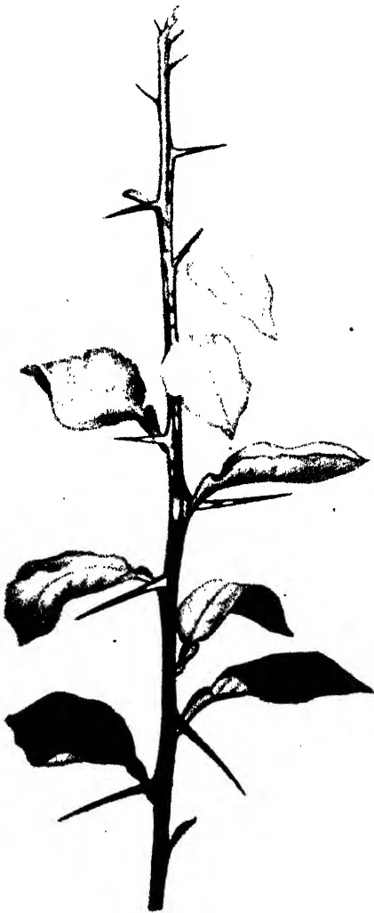
Plate VII. Citrus Mildew
A completely blank white page with no visible content, text, or markings. 321MALCOLM PARK, A.R.C.S.,
GOVERNMENT MYCOLOGIST
POWDERY mildew is very common on orange leaves in the wetter areas of Ceylon and in India and Java. It has recently been introduced into California but has not yet been recorded from other citrus growing countries.
In Ceylon, it is most common on orange types, i.e., the sweet orange, the Ceylon sour orange and the mandarin orange. It also attacks grape fruit, pummelo, lemon and Kalamondin but it has not been found to attack limes.
Fowdery mildew is readily noticeable and easily identified. Young, actively growing leaves and succulent shoots are most commonly affected, and usually the young shoots near the centre of the tree show the disease. Suckers which are allowed to run from the base up into the centre of the trees are very often attacked.
The first appearance of the disease on the young leaves generally occurs on the edges, as small isolated spots, when the fungus can be distinguished as fine radiating lines. Given suitable conditions, such as moist damp weather, the fungus growth increases rapidly until parts, and sometimes all, of the succulent young shoots become covered with the white, powdery or felted mildew. It is when the fungus is in this condition that the disease is most commonly noticed and most growers of orange trees are doubtless familiar with shoots of the type illustrated. There is a darkening and usually a definite depression of the diseased leaf surface, often followed in severe attack by a general buckling of the whole leaf. In the older stages some of the green colouring matter may disappear from the leaf and the affected leaves are consequently often decidedly yellowish in colour.
The youngest leaves become shrivelled when they are attacked and often fall off, leaving the bare green twig. The twig dies back and the young growth of orange trees is sometimes completely destroyed in this way. More commonly, however, some of the larger leaves remain on the shoot but their irregularly buckled and distorted appearance, which persists when they grow older, serves to show that they were attacked when young, even though the fungus can no longer be easily distinguished.
Leaves which survive the attack may have parts of their surface killed and these dead areas provide a means of entrance of fungi causing further diseases which may prove to be detrimental to the health of the tree,
322The disease is caused by the fungus Oidium tingitatinum which can be seen with the naked eye as the white powdery layer of mildew on the surface of newly attacked leaves. The fungus is almost entirely superficial and feeds on the plants by means of minute suckers or haustoria which penetrate into and kill the cells of the tissue on which the fungus is growing. The powdery appearance of the mildew is due to the presence of innumerable minute seeds or spores of the fungus. These may be carried by the wind or rain-splashes to the healthy leaves where they may grow to start fresh centres of infection.
The fungus is most active in warm, damp weather; such weather usually occurs at the times when the trees put out their new shoots.
The fungus, as stated above, lives almost entirely on the surface of the shoots and for that reason is more amenable to direct control measures than most other fungi causing diseases. It has been shown that the disease can easily be checked and the fungus killed by spraying or dusting with a fungicide, especially with a fungicide containing sulphur. Not only can the disease be checked in this way but healthy young leaves can be protected from the disease by spraying.
In most districts in Ceylon, there are regular periods in which citrus trees put out new shoots; such periods vary in different districts. If the trees are watched and two or three sprayings with a fungicide containing sulphur are applied during growing periods complete control of the disease can be assured. Details of the preparation and method of application of a cheap and efficient fungicide can be obtained from any Agricultural Instructor or from the writer.
Trees on which the disease have been destructive in the past should be cleaned up by pruning out dead and dying shoots and branches. As a general rule, young suckers should not be allowed to grow up from the bottom of the tree and should be pruned out. Severely affected shoots may be removed and burned since they will not develop normally.
323W. MOLEGODE,
AGRICULTURAL INSTRUCTOR, KATUGASTOTA
DURING the last two years special attention has been devoted to encourage and stimulate more extensive cultivation of turmeric in village holdings, having in view the possibility of Ceylon being able to grow sufficient quantities to replace gradually with home grown turmeric some of the six hundred tons of turmeric now being imported per year. The results so far have been very encouraging and may even be said to be beyond expectations. This season there are over a thousand plots of turmeric, each ranging from a small plot of 1/100th of an acre to 1 acre scattered all over the Kandy district. In Harispattu division alone there are 450 growers. In addition to these, it is known that turmeric cultivation has been taken up in other districts. Kotmale in Nuwara Eliya district may be specially mentioned as a centre where turmeric is likely to be grown on an appreciable scale.
Turmeric is a condiment needed, though in small quantities, every day in our homes, and is a crop which can easily be cultivated, but until recently few, apparently, thought of growing turmeric for sale or for their own needs. In most village gardens turmeric is to be found growing and when required is employed for medicinal and ceremonial purposes. Small quantities of not too well prepared turmeric were available in some villages during the season. In 1932 the question of curing a marketable commodity was taken up. Trials conducted showed that a commodity as good as the best imported turmeric could be turned out with locally grown turmeric. Samples prepared at Katugastota were reported on very favourably by Colombo-dealers and were valued at the same prices as the imported stuff. Small local traders did not hesitate to buy any quantity at the prices paid for imported turmeric.
These trials were followed by demonstrations of the methods of curing given to a number of growers in the Katugastota area. Fair quantities of village cured turmeric, typical of what used to be hitherto turned out, were also improved and shown. The possibilities were at once realised and this year larger quantities of locally cured turmeric were available at the weekly fairs, village kaddies and bazaars.
From January this year the turmeric planted last year began to be lifted and it was clear, judging from the amount of turmeric harvested and cured at various centres that more planting was done in 1932 than before. Growers who attended the demonstrations and received instruction were able to cure this season's turmeric for the markets. A further series of demonstrations, in addition to those held within the Katugastota range, were specially arranged and given at the following places: Mirigama Show, Kotmale and Siyambalagoda.
* See also "Turmeric, Its Cultivation and Preparation in the Kandy District"—The Tropical Agriculturist, LXXIX, No. 5, November 1932, pp. 271-273.
324In December 1932, a Turmeric Growers' Union was formed at Katugastota with three main objects, (1) to encourage wide-spread cultivation of turmeric; (2) to act as an Information Bureau; and (3) to undertake, if necessary, co-operative curing. A turmeric cultivation competition in Harispattu was organised, and largely due to the interest taken by the Ratemahatmaya, 393 competitors have entered the competition this year. Small quantities of seed turmeric have been supplied among 160 growers. A number of villagers have received a thorough training on curing methods and are now competent to undertake curing of turmeric on a large scale.
At Giragama, an area adjoining the ginger trials has been planted with seed turmeric imported from Cochin States as well as a small area with Ceylon turmeric to serve as a seed supply station. Areas in Katugastota and Dunuwille, also to serve as seed supply stations, have been established. Ample provision has, therefore, been made to meet any demand for seed turmeric.
Full information on cultivation of turmeric and methods of curing are now available in various publications of the Department.
325| Province, &c. | Disease | No. of Cases up to Date since Jan. 1st 1933 | Fresh Cases | Recoveries | Deaths | Balance Ill | No. Shot |
|---|---|---|---|---|---|---|---|
| Western | Rinderpest | ... | ... | ... | ... | ... | ... |
| Foot-and-mouth disease | 22 | ... | 21 | 1 | ... | ... | |
| Anthrax | ... | ... | ... | ... | ... | ... | |
| Rabies (Dogs) | 11 | 1 | ... | 10 | ... | 1 | |
| Piroplasmosis | ... | ... | ... | ... | ... | ... | |
| Colombo Municipality | Rinderpest | .. | ... | ... | ... | ... | ... |
| Foot-and-mouth disease | 28 | ... | 27 | 1 | ... | ... | |
| Anthrax | 3 | ... | ... | 3 | ... | ... | |
| Rabies (Dogs) | 15 | 2 | ... | ... | ... | 15 | |
| Haemorrhagic Septicaemia | ... | ... | ... | ... | ... | ... | |
| Black Quarter | ... | ... | ... | ... | ... | ... | |
| Cattle Quarantine Station | Rinderpest | ... | ... | ... | ... | ... | ... |
| Foot-and-mouth disease (Sheep & Goats) | 92 | 22 | 87 | 5 | ... | ... | |
| Anthrax (Sheep & Goats) | 66 | 2 | ... | 66 | ... | ... | |
| Rinderpest | 65 | 31 | 4 | 51 | 8 | 2 | |
| Central | Foot-and-mouth disease | 3 | ... | 3 | ... | ... | ... |
| Anthrax | 10 | 1 | ... | 10 | ... | ... | |
| Black Quarter | ... | ... | ... | ... | ... | ... | |
| Rabies (Dogs) | ... | ... | ... | ... | ... | ... | |
| Southern | Rinderpest | ... | ... | ... | ... | ... | ... |
| Foot-and-mouth disease | 50 | ... | 50 | ... | ... | ... | |
| Anthrax | ... | ... | ... | ... | ... | ... | |
| Rabies (Dogs) | 1 | 1 | ... | ... | ... | 1 | |
| Northern | Rinderpest | 451 | 328 | 50 | 370 | 14 | 17 |
| Foot-and-mouth disease | 4 | .. | 4 | ... | ... | ... | |
| Anthrax | ... | ... | ... | ... | ... | ... | |
| Black Quarter | ... | ... | ... | ... | ... | ... | |
| Rabies (Dogs) | ... | ... | ... | ... | ... | ... | |
| Eastern | Rinderpest | ... | ... | ... | ... | ... | ... |
| Foot-and-mouth disease | 52 | ... | 51 | 1 | ... | ... | |
| Anthrax | ... | ... | ... | ... | ... | ... | |
| North-Western | Rinderpest | ... | ... | ... | ... | ... | ... |
| Foot-and-mouth disease | 3 | ... | 3 | ... | ... | ... | |
| Anthrax | ... | ... | ... | ... | ... | ... | |
| Pleuro-Pneumonia (Goats) | 3 | ... | ... | 1 | ... | 2 | |
| Rabies (Dogs) | 1 | ... | ... | ... | ... | 1 | |
| North-Central | Rinderpest | 844 | 160 | 135 | 657 | 34 | 18 |
| Foot-and-mouth disease | ... | ... | ... | ... | ... | ... | |
| Anthrax | ... | ... | ... | ... | ... | ... | |
| Uva | Rinderpest | ... | ... | ... | ... | ... | ... |
| Foot-and-mouth disease | ... | ... | ... | ... | ... | ... | |
| Anthrax | ... | ... | ... | ... | ... | ... | |
| Rovine Tuberculosis | 2 | 2 | ... | ... | ... | 2 | |
| Sabaragamuwa | Rinderpest | ... | ... | ... | ... | ... | ... |
| Foot-and-mouth disease | ... | ... | ... | ... | ... | ... | |
| Anthrax | ... | ... | ... | ... | ... | ... | |
| Piroplasmosis | .. | ... | ... | ... | ... | ... | |
| Haemorrhagic Septicaemia | 3 | ... | ... | 3 | ... | ... | |
| Rabies (Dogs) | ... | ... | ... | ... | ... | ... | |
| ... | ... | ... | ... | ... | ... | ... |
G. V. S. Office,
Colombo, 11th May, 1933.
M. CRAWFORD,
Govt. Veterinary Surgeon.
| Station | Temperature | Humidity | Amount of Cloud | Rainfall | ||||||
|---|---|---|---|---|---|---|---|---|---|---|
| Mean Maximum | Difference from Average | Mean Minimum | Difference from Average | Day | Night (from Minimum) | Amount | No. of Rainy Days | Difference from Average | ||
| ° | ° | ° | ° | % | % | Inches | Inches | |||
| Colombo | 88.0 | +0.2 | 76.0 | +0.3 | 72 | 91 | 6.6 | 3.25 | 13 | - 5.74 |
| Puttalam | 89.3 | +0.3 | 75.7 | - 0.1 | 74 | 93 | 4.6 | 4.22 | 8 | - 1.25 |
| Mannar | 90.7 | - 1.0 | 77.5 | - 0.2 | 72 | 89 | 5.4 | 0.70 | 4 | - 2.18 |
| Jaffna | 89.8 | +0.6 | 78.7 | - 1.0 | 80 | 91 | 4.4 | 1.29 | 5 | - 0.79 |
| Trincomalee | 87.9 | - 0.8 | 77.3 | - 0.1 | 74 | 89 | 3.8 | 4.27 | 8 | + 2.17 |
| Batticaloa | 87.2 | - 0.6 | 76.7 | +0.4 | 72 | 91 | 3.5 | 4.28 | 5 | + 2.36 |
| Hambantota | 88.0 | +0.8 | 76.2 | +0.5 | 74 | 88 | 3.8 | 1.90 | 6 | - 1.60 |
| Galle | 86.2 | - 0.3 | 76.9 | +0.6 | 77 | 88 | 5.4 | 10.17 | 14 | + 0.46 |
| Ratnapura | 91.2 | 0 | 73.9 | +0.1 | 73 | 93 | 6.2 | 16.68 | 19 | + 4.31 |
| A'pura | 91.6 | +0.2 | 74.7 | - 0.1 | 68 | 90 | 5.8 | 5.12 | 11 | - 1.75 |
| Kurunegala | 91.4 | - 0.3 | 74.7 | 0 | 68 | 93 | 6.4 | 9.88 | 10 | - 0.14 |
| Kandy | 87.8 | +0.3 | 69.6 | - 0.3 | 68 | 92 | 4.6 | 3.55 | 9 | - 3.26 |
| Badulla | 84.2 | +0.4 | 66.6 | +0.4 | 72 | 97 | 5.0 | 5.39 | 14 | - 2.08 |
| Diyatalawa | 78.0 | +0.6 | 60.9 | +0.9 | 70 | 91 | 6.0 | 5.53 | 17 | - 0.63 |
| Hakgala | 73.6 | - 0.7 | 54.6 | - 0.2 | 76 | 94 | 5.4 | 5.62 | 14 | - 1.65 |
| N'Eliya | 71.8 | +0.8 | 49.0 | - 0.3 | 73 | 96 | 5.5 | 5.54 | 16 | - 0.13 |
Thunderstorm activity was fairly well in evidence in April but the accompanying rain was below, rather than above, average over the greater part of the Island. Excesses and deficits of rainfall were somewhat irregularly distributed, but, on the whole, deficits predominated in the north and west of the Island and the central hill country, while excesses were the rule in the south and east.
The highest totals for the month were 22.46 inches at Carney, 21.34 at Keragala, 20.75 at Beausejour and 20.50 at Digalla, while about a dozen stations, nearly all in the south-west of the Island, recorded between 15 and 20 inches for the month. All stations reported some rain and only about a score of stations, chiefly in the north and north-west, recorded under 2 inches during the month.
There were 17 falls of over 5 inches in a day, the largest being 7.23 inches at Wariapolla and 7.13 inches at Morawaka both on the 5th-6th, on which day the majority of these heavy falls occurred.
A phenomenon of particular interest during the month was the occurrence of a fall of hail at Ratnapura on the afternoon of the 26th.
Indications for the ensuing monsoon season are by no means very definite. Temperatures during February and March were not far from average and point to a normal monsoon. On the other hand, the correlation afforded by the local thunderstorm activity of March and April suggests a slightly greater monsoon rainfall than usual.
Temperatures were, on the whole, about normal.
D. T. E. DASSANAYAKE,
Actg. Supdt., Observatory.
The
Tropical Agriculturist
VOL. LXXX
PERADENIYA, JUNE, 1933
No. 6
| Page | |
|---|---|
| Editorial ..... .. | 327 |
ORIGINAL ARTICLES
| Rice Yields. By L. Lord, M.A. .... .. | 329 |
| Ceylon Clones. I. By R. K. S. Murray, A.R.C.Sc; .... | 333 |
| A Note on Sun-Scorch of Budgrafts. By R. K. S. Murray, A.R.C.Sc. .... .. | 349 |
| The Use of Reclaim in Rubber Manufacture. By G. Martin, B.Sc., A.I.C., F.I.R.I. .... .. | 352 |
| Vegetative Propagation. By T. H. Parsons, F.L.S., F.R.H.S. .... | 359 |
SELECTED ARTICLES
| Cacao Beans and Ephesia elutella .... .. | 362 |
| Rotation Crops .... .. | 369 |
| The Problem of the Locust .... .. | 374 |
REVIEW
| First Annual Report on Cacao Research, 1931 .... .. | 380 |
MEETINGS, CONFERENCES. ETC.
| Minutes of Meeting of the Board of the Tea Research Institute of Ceylon .... .. | 383 |
DEPARTMENTAL NOTES
| Anthracnose of Plantains .... .. | 387 |
RETURNS
| Animal Disease Return for the month ended May, 1933 .... | 389 |
| Meteorological Report for the month ended May, 1933 .... | 390 |
Of great interest to those engaged in the
cultivation of plantation crops.
Being a reprint of articles published in
The Tropical Agriculturist by the
Staff of the Department of
Agriculture, Ceylon.
34 Illustrations and Figures
Price Rs. 5/-
Obtainable from:
THE MANAGER, PUBLICATION DEPOT,
PERADENIYA.
June, 1933
THE high state of efficiency which fruit cultivation has now attained in such countries as Europe, America, Australia and South Africa can be attributed mainly to the energy and enterprise of their fruit nurserymen and fruit-growers' associations, assisted by horticultural research in the improvement and propagation of fruit trees. Ceylon has lacked any such organised service, and the growing of the better kinds of fruit has been left to a few individual pioneers and to the three Botanic Gardens of the Department.
The series of articles on Fruit Cultivation in Ceylon published in The Tropical Agriculturist during the past year has indicated that Ceylon possesses a range of varieties of fruit attained by few other tropical countries and that many of these can take their place as first rate marketable commodities, if due consideration is paid to the methods of propagation and cultivation which these demand and provided they are grown in localities to which they are best suited. In the past but little attention has been paid to propagation and adequate cultivation, and it has been only too often the case that fruit-growing in Ceylon has been carried out somewhat indiscriminately in localities to which certain varieties were not well suited, thus leading to disappointing results in respect of both the yield of crop and the quality of fruit. Throughout the above-mentioned series
328of articles considerable emphasis has been laid on the propagation of fruit trees by vegetative means and in this number a short note is given on the various methods by which fruit trees can be propagated vegetatively.
Fruit propagation in Ceylon is still in its infancy, but a start has been made at Peradeniya with the object of improving some of the more important tropical fruits, such as grapefruit, orange, mango, avocado pear, etc. by vegetative means. Preliminary experiments are being carried out to ascertain the most suitable rootstocks for various fruits. These experiments have indicated that, under Ceylon conditions, the country mandarin is proving to be the best citrus stock tried so far in its resistance to citrus canker, while sour orange is a sound stock for most citrus. Soursop is a good stock for cherimoya, while the common wild mango is useful for the choicer varieties of mangoes. Mangosteen does well on various species of Garcinia, and Mexican and Indian varieties of avocado on the local varieties of this fruit.
As regards the fruits of minor importance, budding facilities are not available at present, but at Peradeniya, Hakgala and Heneratgoda, seedlings are being raised on a scale never before attempted and are for sale and free distribution to village growers. Apart from the assistance which is obtainable from the Staffs of the Botanic Gardens, an assistant with a special knowledge of pruning and budding and of the diseases of fruit trees is stationed at Bandarawela and his services are available in the hill regions to all requiring them. Similar arrangements for rendering assistance to fruit-growers in other centres are being planned.
Fruit trees, especially various kinds of citrus and mango, are subject to the attacks of insect pests and diseases, and spraying experiments are in progress at Peradeniya for the control of many of these troubles.
The formation of some sort of marketing organization should precede any attempt to encourage the further production by small growers of the better kinds of local fruit for home consumption and possibly to replace a portion of the fruit now imported from other countries. Meanwhile considerable progress has been made by the Department in improving the quality of some of our local fruit by vegetative methods of propagation.
329L. LORD, M.A.,
DIVISIONAL AGRICULTURAL OFFICER,
EASTERN DIVISION, BATTICALOA
FOR many years Ceylon has had the unenviable reputation of growing much less rice per acre than other rice producing countries. Reference is so frequently made to this fact without any explanation that the subject warrants more critical examination. The following table shows the yields of unhusked rice in the chief rice producing countries and in Ceylon. The figures for Ceylon have been taken from the Ceylon Blue Book for the period 1921-25 and are based on estimates by Revenue Officers. The estimated yields were admittedly open to serious error and after 1925 figures for yields were not included in the statistics. The figures for the other countries cover the period 1924-25 to 1928-29 and have been compiled from the International Review of Agriculture, Vol. XXII, 1st January 1931.
TABLE SHOWING YIELDS OF RICE (UNHUSKED)
Average 1924-25 to 1928-29
| Country | Area in 1000 ac. |
Production in 1000 bus. of 45 lb. |
Yield per acre bushels |
|---|---|---|---|
| Spain | 120 | 14,905 | 124 |
| Italy | 349 | 31,748 | 91 |
| Japan | 7,754 | 522,480 | 67 |
| U.S. | 952 | 39,110 | 41 |
| Formosa | 1,394 | 57,458 | 41 |
| Korea | 3,857 | 131,303 | 34 |
| Java | 7,343 | 234,266 | 32 |
| Siam | 3,599 | 127,425 | 35 |
| India | 77,691 | 2,328,533 | 30 |
| Ceylon (1921-25) | 792 | 11,088 | 14 |
The figures show that the average yield of rice in Ceylon is less than half the yield in India and less than one-eighth of the yield in Spain. While it is not expected that Ceylon yields should
330compare favourably with those in Spain or Italy where manuring is heavy it would appear reasonable to expect that yields in Ceylon should be similar to those in the adjacent country of India. That they are not so may be ascribed to the following reasons:
The Ceylon yields previously given in the Blue Book have been based on data which include areas of land sown but which, generally owing to failure of rain water, have not matured a crop. If these not inappreciable areas are excluded, Ceylon
331yields are more favourable. Paddy grown under major irrigation works seldom suffers from insufficient water supply and the yield of 161,060 acres under these works in 1931 is given by the Director of Irrigation in his Report as 21.2 bushels per acre. In these figures the area is precise, but yields are based on estimates by Revenue Officers and not on crop cuttings. Estimates of yields which are made after consultation with cultivators are generally on the low side. Both landlords and tenants are reluctant to divulge true yields owing to fears of increased water rates or rentals. It may be taken, therefore, that the yield of rice under irrigation in Ceylon is certainly not less and probably a good deal more than 21.2 bushels per acre. For the three and four-month paddies generally grown under irrigation the yields compare not too unfavourably with those of irrigated areas in India.
While it has been shown that Ceylon rice yields are not quite so bad as the frequent and bare references would make out it must nevertheless be frankly admitted that in general yields are definitely too low for a country so highly developed in other directions as is Ceylon. Fortunately, means of increasing yields are ready to hand and include such comparatively simple methods as the use of pure line seed, more thorough preparation of the seed bed with the iron plough and Burmese harrow, weeding, transplanting (in certain areas), and manuring. The use of artificial fertilizers at this time of low prices cannot be advocated on any large scale, but the use of small quantities of green manure and cattle dung is within the reach of all.
But even without manuring the use of pure-line seed and the practice of good cultivation methods will produce excellent yields where the water supply is sufficient. The following precise figures show the yields which have been obtained by the writer from irrigated rice in the Eastern Province without manures but with good cultivation and seed:
Under experimental conditions at Peradeniya where six-month transplanted varieties are cultivated the writer has frequently obtained yields of over 60 bushels per acre. It is believed, however, that the less spectacular figures quoted above, being obtained from larger areas, over a number of years and in different districts, will carry greater conviction of the power of Ceylon rice fields to compete on equal terms with most of the other rice-growing countries. By the use of green manure, cattle dung or artificial fertilizer the above quoted satisfactory yields can easily be increased.
It is a calamity that at this time of possible great improvements in the method of rice cultivation the world price of rice should be so low. With paddy selling over large areas in Ceylon at under Re. 1.00 per bushel there is little incentive for a cultivator to practise better methods. It is believed by many that artificial methods of raising the price are now justifiable.
333CONTRIBUTIONS FROM THE RUBBER RESEARCH
SCHEME (CEYLON)
CEYLON CLONES. I
R. K. S. MURRAY, A.R.C.SC.,
MYCOLOGIST, RUBBER RESEARCH SCHEME (CEYLON)
FOREWORD
THIS article, which gives yield records and other information of Ceylon clones test-tapped in 1932, is the first of a series of annual reports which will increase in interest and importance in successive years. Until recently no clones raised from Ceylon mother-trees have been old enough for test-tapping, and estates have had to rely on importations from Malaya and the Dutch East Indies for the supply of proved high-yielding planting material. There can be no doubt that Ceylon possesses as good potential clones as any other country, and it is clear that the most reliable material for use in the Island will be that which has been tested and proved under the conditions in which it is to be grown. Special interest, therefore, is attached to the performance of Ceylon and foreign clones tested under Ceylon conditions. At the present time the number of Ceylon clones under test-tapping is small, and in no case are the budgrafts old enough for the records to be considered as more than preliminary indications of future potentialities. During the course of the next few years, however, a large number of clones on estates and at the Rubber Research Scheme Experiment Station will come into tapping, and it should soon be possible to recommend Ceylon material of proved high-yielding capacity.
Particulars are given in this report of clones established at the Rubber Research Scheme Experiment Station, Nivitigalakele, and on estates which are co-operating with the Research Scheme in this work. Such co-operation would appear to be mutually advantageous to the Research Scheme and to the estates concerned, and records of any budgrafts which may be in tapping on estates will be welcomed.
Acknowledgment is here made to the undermentioned proprietors who have kindly given permission for the publication of the records of clones established from mother-trees on their properties:
The Govinna Rubber Company, Limited.
The Lavant Rubber Company, Limited.
The Mirishena (Kalutara) Rubber Company, Limited.
Mr. C. E. A. Dias.
334In presenting the yield records and other information the following report is divided into sections according to where the clones are planted. Thus clones tapped at the Rubber Research Scheme Experiment Station are considered together, although the mother-trees are situated on various estates in different districts. Each clone is named according to the name and number of the estate mother-tree from which it is derived, and for convenience an official abbreviation is used.
The unit of measurement chosen for representing yield is grams of dry rubber per tapping. In practice the total weight of rubber obtained in the year is probably of greater interest to the planter, and when possible this figure will be given in subsequent years. In 1932, however, the number of tappings for all clones mentioned in this report was relatively small, and the figures for total yield of rubber in the year would have little significance.
Another yield unit introduced in this report is yield per foot of tapping cut. Although this measure is of no great interest with very young trees it will be of considerable value with older buddings as a means of comparing clones planted under different growth conditions or tapped on varying proportions of the circumference.
The yield data, together with measurements of girth and length of tapping cut, are given in Tables I-VI. Figures for thickness of primary and renewing bark are also shown in the same tables.
It is emphasised that the yielding capacity of a clone is by no means the only important criterion of its economic value. Rate and habit of growth, resistance or susceptibility to disease and wind damage, bark renewal, wound recovery, colour and quality of rubber, etc. are all important considerations in respect of which individual clones exhibit variation, and although it should eventually be possible to select clones which show to advantage in all respects, in the meantime it might be preferable to choose a moderate yielding clone which gives the minimum trouble in upkeep and attention. Notes on these points are accordingly being compiled for individual clones, and the information given in this report will be added to in future years.
335The Experiment Station, Nivitigalakele, was opened in three clearings, in 1926, 1927 and 1928 respectively, with the primary object of testing clones established from high-yielding mother-trees on Ceylon estates. A full account of the development and work at the Station is given in Rubber Research Scheme Quarterly Circular Vol. 8, Parts 2 and 3, but a brief statement of the planting history and conditions of the 1926 clearing, the area in which the clones so far test-tapped are planted, will not be out of place.
Clearing, Planting, Budding.—This area, about 12 acres in extent, was cleared from jungle in 1926 and planted on contour platforms at approximately 106 trees per acre. Six acres were planted in July 1926, with stumps raised from seed of known mother-trees at Peradeniya and Heneratgoda, and the remainder was planted with basket plants, also from known mother-trees, in October-November, 1926. Budding in the field was commenced in May 1927, but owing to poor growth of the stocks and the difficulty of budding on to transplanted stumps the early results were disappointing. This, in conjunction with scarcity of budwood from suitable mother-trees, has resulted in slow and uneven development in the clearing with the consequence that only 19 budgrafts were large enough to be test-tapped in April 1932.
Distribution of Clones.—The original intention to allot 100 trees to each clone was followed out with 11 clones, the trees of each clone being scattered throughout the clearing so as to obtain all combinations of stock and scion. The clearing was completed with 6 further clones represented by a small number of trees each, a number of unbudded seedlings being left as a control.
Soil Manuring.—The area over which the trees test-tapped in 1932 are distributed is approximately six acres. The soil in this portion of the Station is a very poor "cabooky" sub-soil containing little or no humus. Great difficulty was at first experienced in establishing green manures and cover-crops, but there is now a fair cover in most parts. As mentioned above early growth of the rubber was slow, but applications of manure and other cultural operations have effected a marked improvement. The
336area in which the tapped trees are situated was manured with calcium cyanamide in June, 1928, and with general mixtures in September 1928, September 1929, and September 1931.
Tapping.—Test-tapping was commenced in October 1931, all trees being tapped with a girth of 16 ins. or more at a height of three ft. from the union. The trees were tapped in October and December 1931, and were then rested until April 1932, when further trees were taken into tapping. Altogether 19 budgrafts representing six clones were tapped as from April 1932. The yield of only two clones, viz. Govinna 771 and Lavant 28 (abbreviated to G. 771 and LAV. 28) are given in this report, the yields from the other clones being too small to be of interest. The latter yields, however, will be given in subsequent reports should later records show promise.
Tapping of the budgrafts was carried out on alternate days on a half-spiral, the cut being opened at an angle of at a height of 48 ins. from the union. Bark consumption was at the rate of about 6 ins. per annum. As will be seen in Tables I and II the number of tappings during the period April-December 1932, was only 86, this relatively small number being accounted for by the interference to tapping caused by the exceptionally wet weather in the latter half of the year. Only full tappings have been included in the records though on some days the trees were tapped late in the morning.
Recording.—The method of recording yields at the Station is as follows:
The latex from each tree is coagulated in the cup by the tapper, and the coagulum is squeezed out as thin as possible and hung on a sheltered wire support near the tree. At the end of each month the samples are transferred to a wire bearing the number of the tree and, after drying in a smokehouse, are brought to the laboratories to be weighed. Each day's biscuit contains the scrap from the previous tapping. In order to determine the dry rubber content periodic measurements of the latex were made, but on account of the small yields from each individual tree the figures for 1932 were not altogether satisfactory and are not given in this report. Accurate determinations will be made for promising clones in future years.
The yields for 1932 of the individual trees of clones G. 771 and LAV. 28 are given in Tables I and II, the monthly and annual averages being expressed in grams of dry rubber per
337tapping. Figures for girth and length of tapping cut are also given and the yield per foot of cut has been calculated. The tables also include measurements of the thickness of primary and renewing bark.
Clone G. 771.—Reference to table I will show that the average yield per tapping for the seven trees for the period April–December 1932, was 13.1 grams, the average age being about five years from the time of budding. This figure compares favourably with the early yields of the proved A.V.R.O.S. clones on the basis of either age or circumference, and it is satisfactory to note a steady increase in yield throughout the year. It is impossible to predict the future potentialities of a clone as the result of one year's tapping at this tender age, but we may say that Clone G. 771 shows distinct promise.
Habit and rate of growth are satisfactory. The trees have an upright branching system, i.e. the branches tend to grow vertically rather than to spread horizontally. This seems to be an advantage as enabling a greater density of planting.
Primary bark is rather thin but renewal is very good. The figures given in table I show that after ten months the average thickness of renewing bark is 87 per cent. of that of the primary bark.
One case of pink disease has occurred out of the total number of 105 trees in the clone, but no other trouble with disease or wind damage is to be reported.
The only defects which have so far developed concern the behaviour of the latex; this continues to flow from the trees until late in the morning, and at the same time there is a marked tendency to early clotting. It remains to be seen whether these defects persist when the trees are mature and are sufficiently troublesome to offset other good qualities.
Clone LAV. 28.—The average yield for the four trees in tapping was 8.6 grams (see Table II). This figure is rather lower than the yield of most of the proved foreign clones at a corresponding age or size, but a satisfactory increase throughout the year is to be noted.
The trees of this clone show strong growth, the crown being large with a spreading branching system. Primary bark is of a good thickness and renewal is excellent. Four cases of pink disease have occurred.
338TABLE I
Clone Govinna 771
| Tree No. | Date of budding | Girth at 8 ft. on 1-10-32 | Average yield in grams dry rubber per tapping | Average per tapping for year | Length of tapping cut on 1-10-32 | Average yield per ft. of tapping cut | Thickness of bark at 3 ft. 10 months' renewal on 14-2-33 | |||||||||||||||||||||
|---|---|---|---|---|---|---|---|---|---|---|---|---|---|---|---|---|---|---|---|---|---|---|---|---|---|---|---|---|
| 1932 | ||||||||||||||||||||||||||||
| April | May | June | July | Aug. | Sep. | Oct. | Nov. | Dec. | Total | |||||||||||||||||||
| Number of tappings | ||||||||||||||||||||||||||||
| ins. | cms. | 8 | 9 | 10 | 12 | 9 | 9 | 5 | 10 | 14 | 86 | ins. | grams | mins. | mins. | |||||||||||||
| 88 | 9-8-27 | 17.75 | 45.1 | 6.4 | 5.9 | 7.6 | 10.5 | 11.4 | 13.6 | 17.7 | 19.1 | 16.8 | 12.2 | 10.0 | 14.6 | 6.0 | 5.0 | |||||||||||
| 91 | 9-8-27 | 19.0 | 48.3 | 5.4 | 6.7 | 9.7 | 9.9 | 9.1 | 14.6 | 13.9 | 20.8 | 16.9 | 12.2 | 10.75 | 13.6 | 5.5 | 5.0 | |||||||||||
| 98 | 9-8-27 | 19.75 | 50.2 | 7.4 | 6.7 | 7.3 | 11.1 | 11.1 | 21.0 | 21.7 | 24.9 | 20.5 | 14.6 | 11.25 | 15.6 | 5.5 | 4.5 | |||||||||||
| 100 | 9-8-27 | 19.5 | 49.5 | 9.5 | 9.0 | 9.6 | 12.1 | 13.0 | 22.0 | 25.5 | 26.5 | 22.3 | 16.5 | 11.25 | 17.6 | 5.0 | 4.5 | |||||||||||
| 366 | 28-5-27 | 20.5 | 52.1 | 5.4 | 5.2 | 5.7 | 8.0 | 8.9 | 16.1 | 14.6 | 18.8 | 13.0 | 10.6 | 11.5 | 11.1 | 6.0 | 4.0 | |||||||||||
| 408 | 25-7-28 | 20.0 | 50.8 | 4.3 | 4.9 | 6.5 | 10.1 | 8.1 | 16.0 | 22.0 | 29.5 | 19.2 | 13.4 | 10.75 | 14.9 | 4.5 | 5.5 | |||||||||||
| 558 | 10-8-27 | 18.0 | 45.7 | 8.9 | 8.0 | 7.9 | 9.6 | 11.2 | 12.5 | 16.2 | 20.9 | 13.7 | 12.0 | 9.75 | 14.8 | 5.5 | 4.5 | |||||||||||
| Average for clone | 19.2 | 48.8 | 6.8 | 6.6 | 7.8 | 10.2 | 10.4 | 16.5 | 18.8 | 22.9 | 17.5 | 13.1 | 10.75 | 14.6 | 5.4 | 4.7 | ||||||||||||
TABLE II
Clone Latunt 28
| Tree No. | Date of budding | Girth at 3 ft. on 1-10-32 | Average yield in grams dry rubber per tapping. | Average per tapping for year | Length of tapping cut on 1-10-32 | Average yield per ft. of tapping cut on 1-10-32 | Thickness of bark at 3 ft. 10 months' renewal on 14-2-33 | |||||||||||
|---|---|---|---|---|---|---|---|---|---|---|---|---|---|---|---|---|---|---|
| 1932 | ||||||||||||||||||
| April | May | June | July | Aug. | Sep. | Oct. | Nov. | Dec. | Total | |||||||||
| Number of tappings | ||||||||||||||||||
| ins. | cms. | 8 | 9 | 10 | 12 | 9 | 9 | 5 | 10 | 14 | 86 | ins. | grams | mms. | mms. | |||
| 131 | 9-11-27 | 25.75 | 65.4 | 7.0 | 7.1 | 7.5 | 8.2 | 8.1 | 12.3 | 17.0 | 24.7 | 19.6 | 12.6 | 13.5 | 11.2 | 8.0 | 5.5 | |
| 260 | 10-11-27 | 19.5 | 49.5 | 2.5 | 3.1 | 4.3 | 5.1 | 4.7 | 6.3 | 9.3 | 16.5 | 10.7 | 7.1 | 11.0 | 7.7 | 7.0 | 6.0 | |
| 339 | 10-11-27 | 21.75 | 55.2 | 4.1 | 2.9 | 3.0 | 4.2 | 4.3 | 4.5 | 5.6 | 9.7 | 14.5 | 6.4 | 10.25 | 7.5 | 6.0 | 6.5 | |
| 443 | 2-8-28 | 19.25 | 48.9 | 5.8 | 7.1 | 7.8 | 7.0 | 5.5 | 5.7 | 8.3 | 8.6 | 14.7 | 8.2 | 10.0 | 9.8 | 6.0 | 4.0 | |
| Average for clone | 21.6 | 54.8 | 4.8 | 5.0 | 5.6 | 6.1 | 5.6 | 7.2 | 10.0 | 14.9 | 14.9 | 8.6 | 11.2 | 9.0 | 6.75 | 5.5 | ||
A number of clones from high-yielding mother-trees on Hillcroft Estate were established on Stenness Estate in the Kalutara district in 1926, budding being carried out in the field in September of that year. Tapping of some of these clones was commenced in 1931, and we are much indebted to Mr. L. P. Gapp who from the commencement of test-tapping has co-operated fully with the Research Scheme in keeping the records. Particulars of two clones, Hillcroft 28 and 34 (HC. 28 and 34), are given in this report.
Stenness Estate was cleared from jungle in 1925 and consists at present of an irregularly mixed planting of seedlings and buddings of unproved clones, the stand being approximately 90 trees per acre. The land is undulating, the ground having at the present time a moderate cover of leguminous species and weeds. The areas containing the trees in tapping were manured in 1926, 1928, 1930 and 1931.
The trees in tapping of Clone HC. 28 are distributed over an area of about two acres, while those of HC. 34 are contained in one acre.
Tapping.—Tapping of Clones HC. 28 and 34 was commenced in August 1931. The trees were tapped in August-September and December 1931, and were then rested until April 1932. As at the Rubber Research Scheme Experiment Station tapping was on a half-spiral cut, commencing at a height of 48 ins. from the union measured from the top of the cut, the angle of slope being . The rate of bark consumption during 1932 is somewhat difficult to calculate owing to the irregular tapping intervals, but it approximates to 9 ins. per annum calculated on a normal number of tappings.
Tapping was carried out on alternate days, but the trees were only tapped during good weather. As a consequence of the heavy rainfall during the latter half of 1932 the number of recorded tappings during the period April-December is only 55 and 54 for Clones 28 and 34 respectively, and the tapping system is actually equivalent to alternate day in alternate months. The trees were not tapped at all in June and in most other months there were intervals of 10-20 days in which the trees were rested.
341Account must be taken of this mild system when considering the figures for average yield per tapping. The trees were tapped on a few additional occasions when "washouts" occurred, but only full tapings have been included in the records.
Recording.—The latex from each tree is brought in the cup to a shed, and, after being measured in cubic centimetres, is coagulated in the cup, the latter being marked with the number of the tree. The separate biscuits are strung on a wire for each tree, and at the end of the month are sent to the Rubber Research Scheme Laboratories to be weighed. The separate pieces of rubber are creped together for each tree, and this weight divided by the number of tapings gives the average yield per tapping for the month. Scrap rubber is not included. The daily measurements of latex are also received and the average dry rubber content calculated therefrom.
From the foregoing it can be seen that the recording of the yields from the Hillcroft clones is under the close supervision of the Rubber Research Scheme.
Quality of Rubber.—A preliminary investigation of the quality of the rubber from Clones HC. 28 and 34 has been carried out by the London Staff of the Scheme, and their report indicates that the inner properties are satisfactory in view of the age of the trees. Further tests will be carried out when the trees are older.
Clone HC. 28.—The monthly averages of the individual trees for 1931 and 1932 are given in Table III. It will be noted that the average for the clone for the period April-December 1932, reached the high figure of 41.9 grams (nearly oz.), which represents a remarkable increase as compared with the first tapings.
In considering the figure for average yield per tapping the small number of recorded tapings must, however, be borne in mind. Had tapping been carried out on commercial lines the total yield for the year would have been much larger, but the average per tapping would in all probability have been rather smaller. 1932 was an exceptionally wet year, and it is hoped that in 1933 rain will not interfere with tapping to the same extent. There is no doubt that the clone is of outstanding
TABLE III
Clone H ft 28
| Tree No. | Date of budding | Girth at 8 ft. on 27-7-32 | Average yield in grams dry rubber per tapping | Average of tapping per ft. of cut on 27-7-32 | Average of tapping per ft. of cut. Average for 1932 | Average dry rubber content | Primary at 3 ft. on 10-2-33 | Renewing 10 months' renewal | |||||||||||||
|---|---|---|---|---|---|---|---|---|---|---|---|---|---|---|---|---|---|---|---|---|---|
| Number of tappings | |||||||||||||||||||||
| Aug.-Sep. | Dec. | April | May | June | July | Aug. | Sep. | Oct. | Nov. | Dec. | Total | ||||||||||
| 1 | Sept. 1926 | 26.0 | 66.0 | 13.4 | 22.3 | 34.9 | 48.0 | — | 41.7 | 39.0 | 46.6 | 50.4 | 62.4 | 86.8 | 52.4 | 15.0 | 41.9 | 37.1 | 7.5 | 4.5 | |
| 2 | do | 23.0 | 58.4 | — | 14.9 | 31.5 | 40.2 | — | 37.5 | 34.0 | 40.2 | 51.1 | 62.8 | 79.1 | 45.9 | 13.0 | 42.4 | 37.7 | 6.5 | 5.0 | |
| 3 | do | 23.5 | 59.7 | 13.4 | 21.8 | 36.4 | 40.7 | — | 38.3 | 39.0 | 45.6 | 41.7 | 55.6 | 65.9 | 45.7 | 14.0 | 39.2 | 37.1 | 7.0 | 4.5 | |
| 4 | do | 21.5 | 54.6 | 7.1 | 15.1 | 24.2 | 28.5 | — | 28.3 | 26.0 | 32.4 | 37.7 | 50.6 | 57.7 | 35.5 | 13.0 | 32.8 | 37.2 | 7.0 | 5.0 | |
| 5 | do | 22.0 | 55.9 | 8.1 | 14.3 | 26.6 | 32.0 | — | 29.2 | 31.0 | 39.6 | 40.7 | 48.8 | 59.8 | 38.2 | 13.5 | 33.9 | 36.8 | 7.5 | 4.0 | |
| 6 | do | 23.5 | 59.7 | 9.0 | 15.3 | 26.2 | 31.7 | — | 30.0 | 28.0 | 39.2 | 35.8 | 47.0 | 55.4 | 35.9 | 13.75 | 31.3 | 36.8 | 7.0 | 5.5 | |
| 7 | do | 26.0 | 66.0 | 9.1 | 20.9 | 32.1 | 36.5 | — | 38.3 | 32.0 | 36.2 | 38.0 | 59.2 | 72.3 | 43.8 | 15.25 | 34.6 | 36.7 | 8.0 | 5.0 | |
| 8 | do | 23.0 | 58.4 | 9.3 | 19.1 | 33.8 | 40.7 | — | 43.3 | 42.0 | 45.2 | 46.8 | 67.6 | 77.5 | 49.7 | 12.75 | 46.8 | 35.4 | 7.0 | 4.0 | |
| 9 | do | 22.5 | 57.2 | 9.3 | 14.9 | 23.6 | 25.4 | — | 26.7 | 25.0 | 33.2 | 36.6 | 39.6 | 54.3 | 33.3 | 13.25 | 30.2 | 38.4 | 7.5 | 5.0 | |
| 10 | do | 22.5 | 57.2 | 10.3 | 12.9 | 21.0 | 28.9 | — | 30.0 | 31.0 | 32.4 | 32.5 | 39.2 | 55.3 | 33.9 | 13.5 | 30.1 | 38.4 | 6.5 | 7.0 | |
| 11 | do | 23.5 | 59.7 | 8.6 | 19.7 | 31.2 | 31.6 | — | 37.5 | 32.0 | 34.2 | 36.8 | 47.2 | 68.7 | 41.1 | 13.25 | 37.2 | 38.3 | 7.0 | 6.0 | |
| 12 | do | 25.5 | 64.8 | 6.7 | 22.3 | 33.3 | 43.0 | — | 34.2 | 31.0 | 40.2 | 42.0 | 53.4 | 63.8 | 42.4 | 13.5 | 37.7 | 37.2 | 7.0 | 4.5 | |
| Average for clone | 23.8 | 60.5 | 10.4 | 17.8 | 29.6 | 35.6 | — | 35.7 | 34.5 | 38.0 | 41.0 | 53.1 | 65.9 | 41.9 | 13.6 | 37.0 | 37.1 | 7.1 | 5.0 | ||
promise, and should a further year's records with a full number of tappings show a normal yield increase, the clone will have established itself as of economic value.
The growth of this clone is good, but the trees on Stenness Estate have inherited and accentuated a spiral fluting of the mother-tree. The twisting of the trees is very marked, but tapping will not be interfered with unless this feature becomes more pronounced as the trees mature. It seems probable that the phenomenon is related to the fact that the buds were taken from unpollarded wood, for on other estates where pollarded wood was used in establishing this clone the plants are growing quite straight.
The clone has not developed any other defects. Primary and renewing bark are satisfactory, and with the exception of bark rot on the tapping panels during wet weather in September 1931, no diseases have been reported. The average dry rubber content for 1932 was 37.1 per cent.
Clone HC. 34.—Reference to Table IV shows that the average yield per tapping for this clone in 1932 was 31.4 grams. The yield, though lower than that of HC. 28, is yet very high for the age of the trees, and it will be seen that if the length of tapping cut is taken into consideration the yield per foot of cut is nearly as great as for HC. 28. Despite this promising yield, however, the clone possesses defects which render its future economic value doubtful.
In the first place growth is very poor, the average girth at a height of three feet being only 48.1 cms. as compared with 60.5 cms. for HC. 28, the two clones being of the same age. The fact that trees are small is of itself no disadvantage as it would allow of a larger number of trees to be planted per acre, but slow growth of young buddings is usually attended by an increase in the amount of care and attention necessary in early years. There is a marked tendency for the bark to split, leaving vertical wounds in which the wood is exposed, and the trees seem to be rather susceptible to bark rot. The rubber, also, is dark in colour and difficulty might be experienced in crepe manufacture.
In other respects the clone is satisfactory, and it remains to be seen whether its defects are sufficiently important to offset the high-yielding capacity.
A completely blank white page with no visible content, text, or markings.TABLE IV
Clone Hillcroft 34
| Tree No. | Date of budding. | Girth at 3 ft. on 27.7.82 | Average yield in grams dry rubber per tapping | Average per tapping for 1892 | Length of tapping cut on 27.7.82 | Yield per ft. of cut. Average for 1892 | Average content of dry rubber | Thickness of bark at 3 ft. on 10 months' renewal 10.2.83 | |||||||||||||||
|---|---|---|---|---|---|---|---|---|---|---|---|---|---|---|---|---|---|---|---|---|---|---|---|
| Aug. 1891 | Sep. | Dec. | April | May | June | July | Aug. | Sep. | Oct. | Nov. | Dec. | ||||||||||||
| Number of tappings | Total | ||||||||||||||||||||||
| ins. | cms. | 11 | 14 | 11 | 4 | — | 7 | 8 | 5 | 4 | 5 | 10 | 54 | ins. | grams | per cent. | mms. | mms. | |||||
| 1 | Sep. 1926 | 19.0 | 48.3 | 11.8 | 16.5 | 18.4 | 20.4 | — | 20.0 | 26.0 | 26.2 | 34.1 | 38.4 | 42.1 | 28.0 | 10.0 | 33.6 | 36.0 | 6.5 | 5.0 | |||
| 2 | do | 17.0 | 43.2 | 7.6 | 16.6 | 16.5 | 15.9 | — | 15.0 | 18.7 | 21.8 | 20.5 | 33.4 | 25.8 | 20.7 | 9.25 | 26.8 | 36.7 | 6.0 | 4.0 | |||
| 3 | do | 20.5 | 52.1 | 17.1 | 31.0 | 29.3 | 31.6 | — | 32.2 | 40.0 | 41.2 | 44.8 | 59.0 | 54.4 | 41.1 | 11.5 | 42.9 | 36.4 | 6.5 | 4.5 | |||
| 4 | do | 17.5 | 44.5 | 14.9 | 23.2 | 22.1 | 27.6 | — | 20.0 | 26.0 | 35.8 | 32.5 | 40.0 | 42.5 | 30.3 | 10.0 | 36.4 | 36.8 | 6.5 | 4.0 | |||
| 5 | do | 19.5 | 49.5 | 10.1 | 18.5 | 24.6 | 26.4 | — | 18.3 | 23.0 | 27.0 | 29.9 | 34.4 | 40.1 | 28.1 | 10.75 | 31.4 | 39.2 | 6.5 | 4.0 | |||
| 6 | do | 19.0 | 48.3 | 13.5 | 21.4 | 20.3 | 21.0 | — | 21.7 | 29.0 | 35.0 | 39.2 | 52.8 | 49.8 | 33.1 | 10.5 | 37.8 | 37.4 | 5.0 | 5.0 | |||
| 7 | do | 20.0 | 50.8 | 13.8 | 21.4 | 20.9 | 26.2 | — | 23.3 | 28.0 | 37.2 | 32.3 | 39.4 | 54.4 | 32.7 | 10.5 | 37.4 | 39.4 | 6.0 | 4.5 | |||
| Average for clone | 19.0 | 48.1 | 12.7 | 21.2 | 23.2 | 24.2 | — | 23.5 | 28.4 | 32.0 | 33.4 | 43.0 | 44.1 | 31.4 | 10.4 | 35.2 | 37.6 | 6.1 | 4.4 | ||||
In this section are included clones derived from mother-trees on Milleniya and Wawulugala Estates. Particulars are given below of four clones established and tapped in clearings on both the above estates, and it is convenient to consider the clones from both estates together. Many other clones are being tapped but at present the yields do not appear sufficiently promising for publication. We are indebted to Mr. C. E. A. Dias, the proprietor of the estate, for giving us access to his yield records.
The clearing on Milleniya consists of 27 acres of gently undulating land opened from small jungle in 1924. Seed was planted in 1924, but there was a high percentage of casualties, the vacancies being supplied with stumps in 1925. The clones mentioned in this report were budded in 1927. The soil is gravelly, probably average for the district, and has been improved by a thick cover of leguminous species, mostly Pueraria phaseoloides. Growth of the budgrafts has been uniformly good.
On Wawulugala Estate an area of about three acres of cinnamon and coconut land was cleared and planted with stumps in 1926, budding being done in 1927. The clearing is low-lying deniya land with a sandy soil, but growth has up to the present been very satisfactory.
Tapping.—Tapping was commenced in both clearings in 1930, but the trees were then so young that the records are not considered of sufficient interest for inclusion in this report. In 1931 tapping was carried out in the months October-December, the system being one half-spiral cut on alternate days. In 1932 the trees were rested until October (on Milleniya Estate until November) when tapping was resumed on two half-spiral cuts on opposite sides every three days. The heights of the two cuts were 40 ins. and 18 ins. respectively, measured from the top of the cut to the union. Bark consumption is at the rate of about inch per month on each cut; a figure for annual consumption cannot be given at present since it is intended to combine the tapping system with a periodic interval of rest.
The influence of this "double-cut" system on yield is discussed below.
344Recording.—The latex from each tree is coagulated in the cup and each day's "biscuit", containing the scrap from the previous tapping, is hung on a wire near the tree. At the end of the month the biscuits from all trees of the same clone are rolled together, and the resultant sheet dried and weighed. Thus yields from individual trees have not hitherto been kept. Up to the present the yield recording has not been supervised by the Research Scheme, but in future the rubber is to be sent monthly to the laboratories to be weighed.
Table V shows the number of trees under test to be ten for each clone in the two clearings. The total number of trees tapped, however, is considerably larger, and the yields for 1931 were actually obtained from a varying number of trees in the different clones.
Yields.—The comparison of these yields under the "double-three" system of tapping with those of other Ceylon and foreign clones tapped on a single cut is somewhat difficult and uncertain. No information regarding the reaction of young budgrafts to this tapping system is available, but with mature seedlings it has been found that the average yield per tapping on two half-spiral cuts every three days (combined with alternate periods of six months' tapping and rest) is about 2.4 times as great as the yield on a single cut on alternate days. It is possible that this figure may need modification when applied to young budgrafts in general, and a differential response with different clones is certainly to be expected. Bearing in mind, however, that the trees in question received the benefit of nine to ten months' rest prior to opening the cuts in 1932, it seems probable that to effect a comparison with yields obtained on a single cut the figures shown in Table V should be divided by at least two. The figures for yield per foot of cut are here useful, but even so the fact that the tapping interval is three instead of two days must be taken into consideration.
On the basis of the above considerations the yields for 1932 are comparable with those of the best A.V.R.O.S. clones at a similar age. It would be unwise at this stage to place much reliance on the comparison of individual clones, but so far as can be judged at present Clones M.191, W.259 and W.320 appear to show the most promise.
345NOTES ON INDIVIDUAL CLONESClone M.191.—With an average of 39.2 grams per tapping for the period October-December 1932, this is the highest yielding clone tapped on Wawulugala. The trees, however, are exceptionally big for their age and the yield per foot of tapping cut is not so high as for some other clones.
Growth of this clone is exceptionally rapid, and both primary and renewing bark are satisfactory.
Clone W.120.—The trees of this clone are very uniform in growth and have an extremely straight stem. The yield, however, is not very promising.
Clone W.259.—The average yield for the trees on both estates for the tapping period in 1932 was 34.1 grams per tapping.
Growth is very good, the trees having a straight stem with a moderate crown. Some of the trees are reported to drip late into the morning.
Clone W.320.—As the girth measurements indicate the trees of this clone are smaller than any of the other clones, and on account of the shorter tapping cuts the yield per foot is correspondingly high. Despite the slow growth it is reported that no trouble with the young buddings was experienced, and it is possible that the small size of the trees may be an advantage in enabling a greater density of planting. This would also be helped by the upright branching habit.
One case of damage due to wind has been noted, and bark rot occurred on a few trees in November 1931.
TABLE V
Milleniya and Wawuhugala Clones
| Clone | Where planted | No. of trees | When budded | Average girth at 40 ins. | Average yield per tapping in grams dry rubber and number of tappings for periods | Average length of tapping cuts in Feb. 1933 | Average yield per ft. of cut for 1932 | Thickness of Bark at 3 ft. 17 months on renewal 22-3-33 | ||||||||||||||
|---|---|---|---|---|---|---|---|---|---|---|---|---|---|---|---|---|---|---|---|---|---|---|
| Jan. 1932 | Feb. 1933 | 1931 | 1932 | |||||||||||||||||||
| Oct.-Dec. | October | November | December | Oct.-Dec. 1932 | ins. | cms. | Yld | Tpgs | Yld | Tpgs | Yld | Tpgs | ||||||||||
| 191 | M W |
10 10 |
Sep.-Dec. 1927. Aug.-Oct. 1927. |
20.0 | 50.8 | 23.1 | 58.7 | 6.0 | 12.8 | 35 | 30.7 | 5 | 44.5 | 8 | 39.2 | 9 | 39.2 | 22 | 28.1 | 16.7 | 6.8 | 6.0 |
| not tapped | ||||||||||||||||||||||
| 120 | M W |
10 10 |
Sep.-Dec. 1927. August 1927. |
16.6 | 42.2 | 21.6 | 54.9 | 5.3 | 8.6 | 35 | 15.0 | 5 | 26.4 | 9 | 19.4 | 10 | 22.7 | 19 | 21.4 | 12.7 | 7.2 | 5.6 |
| 22.5 | 57.1 | 23.2 | 22 | 23.2 | 12.8 | 6.1 | 4.6 | |||||||||||||||
| 259 | M W |
10 10 |
Sep.-Dec. 1927. May-Sep. 1927. |
16.6 | 42.2 | 22.9 | 58.2 | 8.7 | 11.3 | 35 | 20.9 | 5 | 40.5 | 9 | 23.5 | 10 | 24.7 | 19 | 21.2 | 19.6 | 7.4 | 6.2 |
| 24.1 | 61.2 | 36.5 | 8 | 37.9 | 9 | 33.5 | 22 | 23.1 | 17.4 | 7.0 | 5.2 | |||||||||||
| 320 | M W |
10 10 |
Sep.-Dec. 1927. Aug.-Sep. 1927. |
15.5 | 39.4 | 21.0 | 53.3 | 9.2 | 13.9 | 35 | 28.5 | 5 | 32.9 | 9 | 36.6 | 10 | 34.8 | 19 | 20.4 | 20.5 | 6.8 | 5.2 |
| 20.5 | 52.1 | 13.9 | 35 | 28.5 | 5 | 37.7 | 8 | 33.0 | 9 | 33.7 | 22 | 21.1 | 19.2 | 6.2 | 5.1 | |||||||
Tapping Systems 1931 Half-spiral alternate day.
1932 Two half-spirals opposite sides every 3 days.
M = Milleniya.
W = Wawuhugala.
347CLONE HENERATGODA 2The justification for publishing yield records of this clone must be sought in the fame of the mother-tree and the wide interest taken in its progeny. Records of one tree tapped at Nivitigalakele and of ten trees tapped on Milleniya Estate are given in Table VI, but the yields obtained to date are not encouraging. It is to be noted that the trees on Milleniya Estate are tapped on two half-spiral cuts every three days.
348TABLE VI
Clone Heneratgoda 2
| Clone | Where planted | No. of trees | When budded | Girth at 40 ins. in February 1933 | Tapping system | Average yield in grams dry rubber per tapping | Average per tapping for year | Length of tapping per cut ft. of cut | Average yield per ft. of cut | |||||||||||||||||
|---|---|---|---|---|---|---|---|---|---|---|---|---|---|---|---|---|---|---|---|---|---|---|---|---|---|---|
| 1932 | ||||||||||||||||||||||||||
| April | May | June | July | Aug. | Sep. | Oct. | Nov. | Dec. | Total | |||||||||||||||||
| Number of tappings | ||||||||||||||||||||||||||
| ins. cms. | 8 | 9 | 10 | 12 | 9 | 9 | 5 | 10 | 14 | 86 | ins. | grams | ||||||||||||||
| 9 | 10 | 12 | 9 | 9 | 5 | 10 | 10 | 19 | ||||||||||||||||||
| H. 2 | Ntivity-galakele. | 1 | Aug. 1927 | 19.0 48.3 | spiral alt. day | 2.2 | 1.9 | 3.0 | 3.8 | 4.6 | 3.3 | 4.1 | 8.3 | 10.1 | 5.0 | 9.5 | 6.8 | |||||||||
| H. 2 | Milleniya | 10 | July-Sept. 1926 | 22.9 53.2 | two spirals every 3 days. | Not tapped | 22.6 | 25.5 | 24.1 | 22.5 | 12.9 | |||||||||||||||
R. K. S. MURRAY, A.R.C.SC.,
MYCOLOGIST, RUBBER RESEARCH SCHEME (CEYLON)
IN a previous report (1) a brief description was given of damage due to sun-scorch of the callus bark near the union of young budgrafts, this form of injury having occurred on several estates during the exceptional drought experienced in January and February 1932. During the hot weather of March 1933, similar symptoms were observed on a number of budgrafts two to four years of age at the Experiment Station, Nivitigalakele. In most cases a cavity due to the decay of the stock snag had been filled some months earlier with a plastic mixture of Colas and sand, and it appeared that this filling, which absorbs a considerable amount of heat when exposed to a hot sun, had contributed to and accentuated the damage. The use of this Colas-sand filling has been tentatively advocated in previous reports (1) (2) and the purpose of this note, therefore, is to describe this manifestation of sun or heat-scorch and to qualify the recommendation.
The injury starts as an irregular cracking of the raised bark growing over the cut end of the stock, the cracks developing approximately at right angles to one another. In mild cases only the outer bark is affected and no damage results. More generally, however, the bark dies back to the wood and there is a more or less complete ring of dead discoloured bark around the stock snag. At this stage there is the danger of parasitic fungi gaining entrance, and in several instances Botryodiplodia Theobromae has extended the damage several inches up the scion, and into the wood. In the cases examined there was no question of the fungus having gained entrance via the dead stock since the typical bluish-grey discolouration of the wood was isolated from the union by healthy tissue. The majority of affected trees at the Experiment Station, however, have not become invaded by Diplodia and show signs of rapid recovery by renewed callus growth.
350Sun-cracking of this nature has only been observed in Ceylon where the raised portion, often described as the "elephant foot", is exposed to the direct rays of the hot mid-day and afternoon sun. No plants which were budded on the south-westerly side of the stock, and whose callus bark on the opposite side is therefore partly shaded at the time of day when the sun is hottest, have been found affected. This suggests that the trouble could be obviated by placing the bud on the south or west side of the stock, and this matter is further discussed below. Under normal conditions sun-scorch is only likely to occur when large stocks are budded since in such cases a delay in covering the stock snag is inevitable, and a relatively large area of callus bark is exposed in a plane nearly at right angles to the direct rays of the sun.
In the majority of cases on the Station a cavity due to the decay of the stock snag had previously been filled with a mixture of Colas and sand in the proportion 1:2. This is a plastic filling which is gradually extruded by the in-growing callus so that unless it is removed, or until it falls off, the excess lies on the callus bark. The mixture appears to absorb sufficient heat when exposed to the sun to accentuate the scorching. Without a controlled experiment it is impossible to be sure to what extent the Colas-sand mixture has contributed to the damage, but it appears significant that the majority of severe cases are associated with this filling.
The treatment of affected trees calls for little comment, and only where the damage has been extended by the invasion of Diplodia is any treatment considered necessary. In such cases all diseased bark should be removed and discoloured wood excised with a chisel. The exposed wood surface, which should be of a healthy colour, is then painted with a 20 per cent. mixture in water or Brunolinum Plantarium (or disinfectant of similar strength), and covered with a waterproof mixture such as Skene's pruning mixture.
The obvious means of avoiding sun-scorch is either to orientate the bud so that the callus bark is partly shaded by the stem during the time of day at which the sun is hottest, or to provide an artificial or living shade. The first alternative is subject to the possible objection that it would be necessary to
351bud on to the south or west side of the stock whereas it is considered preferable on general grounds to place the bud on the shady side of the stock. Provided the bud and young shoot are well shaded, however, there would appear to be little objection to budding on the sunny side.
The provision of a living shade, consisting of a few plants of an erect green manure planted close to the budgraft on the south side, is the best means of preventing sun-scorch. By sowing seed of a quick growing species a few months before hot weather is anticipated a good shade can be provided until the union of stock and scion has been completed. Where large stocks have been budded this measure can be recommended whether or not the Colas-sand filling has been used, since callus growth is in any event favoured by moist, shady conditions. The provision of shade is clearly of considerable importance in districts where a long period of hot dry weather is annually experienced.
Filling mixtures are now being used experimentally in which the sand is replaced by (1) saw dust and (2) coir dust, and it appears that these mixtures absorb less heat. It will probably be desirable, however, to inspect all treated trees prior to anticipated hot weather and remove any excess filling which has been extruded so as to lie on the callus bark.
G. MARTIN, B.SC., A.I.C., F.I.R.I.,
OF THE SCIENTIFIC STAFF OF THE LONDON ADVISORY
COMMITTEE FOR RUBBER RESEARCH
(CEYLON AND MALAYA)
THE interest of the rubber grower in the use of reclaimed rubber is based on the assumption that it is a substitute for crepe or sheet. This assumption may not be wholly correct as reclaim is sometimes used for purposes for which raw rubber is stated to be unsuitable, but there is little doubt that in many cases its use reduces the consumption of the plantation product. At present the consumption of reclaim in the U.S.A. is approximately 20 per cent. of that of raw rubber. Owing to its origin, reclaim may contain considerable quantities of compounding ingredients, so that if the whole of the reclaim now employed in industry were replaced by the same amount of raw rubber and compounding ingredients the increased consumption of raw rubber would be less than 20 per cent. and might amount to 10 per cent.
A variety of reasons for using reclaim has been recorded at different times. A few years ago the most important factor in favour of reclaim was its price relative to that of raw rubber. The proportion consumed in the U.S.A. was then more than double what it is at present. Some manufacturers in order to justify the use of such large percentages of reclaim carried out experiments to show that articles made with reclaim were equal in quality to those made with first grade crepe and sheet as long as the amount used was maintained within certain limits and the necessary allowance made for the compounding ingredients which reclaim already contained. This statement did not obtain universal approval amongst manufacturers and subsequent investigations support the view that reclaim has an adverse effect on the quality of the finished article. The considerable reduction in the proportion of reclaim now employed indicates
* Published previously in the Bulletin of the Rubber Growers' Association, Vol. 15, No. 5. May, 1933, pp. 265-269.
353that the views which some manufacturers held when the price of rubber was high is not the general opinion now that rubber is cheap.
The reason for the continued use of a proportion of reclaim now that the price advantage has largely disappeared may be connected with technical advantages, although of course there are other factors affecting the demand for reclaim. Some grades are cheaper than raw rubber: some manufacturers make their own reclaim and would prefer to keep their plant fully occupied. Moreover, it is not yet clear that the amount of reclaim employed has reached its lowest level. Manufacturers cannot change their mixings without carrying out extensive trials and tests to determine the effect of the change, and they are not likely to initiate these unless there is a prospect of stability in the relative prices of plantation rubber and reclaim. The proportion of reclaim used in the rubber industry only reacts slowly to reductions in the price of raw rubber, and it is not yet clear whether the technical advantages of reclaim are of sufficient value to ensure its continued use in the proportions now employed or whether there is likely to be still further reductions in sympathy with the relative prices of reclaim and raw rubber.
If reclaim possesses technical advantages over raw rubber it is important for the rubber grower to know exactly what they are in order to appreciate the respects in which raw rubber is unsuitable and how it may be improved. The recent statements concerning the advantages of reclaim mostly refer to the effect of reclaim on the manipulation of rubber. The conversion of crepe and sheet into vulcanised articles necessitates heavy and expensive machinery and it is argued on behalf of reclaim that the amount of manipulation required by mixtures of rubber and reclaim is less than that required by rubber alone, so that although reclaim is in some cases more expensive than raw rubber it is more economical to use mixtures of rubber and reclaim than rubber alone.
None of the recently suggested beneficial effects of reclaim refers to the quality of the finished product. It is now generally admitted that where the maximum tensile strength or resistance to abrasion is required rubber alone is definitely superior to mixtures of rubber and reclaim; but it is claimed that there is a large range of purposes for which the excellent mechanical properties of rubber are not wholly essential and that in these cases
354the processing economies effected by reclaim are of sufficient importance to justify its use even when the price of reclaim is higher than that of raw rubber.
British manufacturers who were consulted as to the reason for using reclaim irrespective of price were not very definite as to the technical value of reclaim except for special purposes which do not account for the quantity of reclaim still used in America. They made several suggestions however, and these combined with a study of those technical journals which publish regular notices on behalf of the reclaim industry indicate that there is a possibility of a mixture of reclaim and raw rubber having the following advantages over raw rubber alone:
The details of the advantages of reclaim have been placed on record so often that there appears to be a tendency to accept them as well-established facts, but a search of the literature indicates that there is little published scientific evidence. A study of the properties of reclaim was therefore made by the staff of the London Advisory Committee for Rubber Research (Ceylon and Malaya) in order that quantitative data might be available. As the investigations proceeded it became evident that the advantages of using reclaim are not as definite as the constantly reiterated statements of the reclaim industry would lead one to suppose and in many cases the reclaim instead of being an aid to manipulation is a hindrance.
It is not proposed in this article to give details of the results obtained, as they have already been included in a paper on the effect of reclaim on the manipulation of rubber read before the London Section of the Institution of the Rubber Industry, March 13th, 1933. Altogether 22 samples of different grades of reclaim from six manufacturers were analysed and submitted to a series of tests by masticating with an equal weight of smoked sheet, mixing with various compounding ingredients and subjecting at
355each stage to tests connected with manipulation. It was concluded that whereas there are only a few commercial grades of raw rubber, there are many grades of reclaim differing from each other in important respects. The samples examined might almost be regarded as constituting 22 different grades. No information was obtained as regards the uniformity of any of the grades, but reclaim is made from an assortment of scrap material which must inevitably change with the development of manufacturing practice, and so cause some variation in the nature of the finished reclaim.
The mixtures of rubber and reclaim sometimes required a much longer period of mastication to reach a fixed plasticity than rubber alone, and the better the quality of the reclaim the greater the adverse effect on mastication. The most beneficial effect was produced by the cheapest grade of reclaim, which reduced the period of mastication by about 20 per cent. when mixed with an equal weight of smoked sheet. Smaller proportions of reclaim had a similar effect, but in less degree. The cost of mastication is stated to be from d. to d. per lb. of rubber, so that the maximum economy in mastication effected by using a large proportion of any grade of reclaim does not exceed d. per lb. of rubber and in the majority of cases there is an increase and not a decrease in mastication costs when raw rubber is replaced by reclaim.
After mastication in order to render the rubber soft and plastic, it is customary in manufacturing practice to mix in compounding ingredients as required. Owing to its origin, reclaim already contains considerable quantities of compounding ingredients, so that it is obvious that if rubber is replaced by reclaim the cost of incorporating the compounding ingredients already present in reclaim is saved. The use of reclaim, however, does not altogether eliminate the need for mixing. It is necessary, for example, to incorporate sulphur before it can be vulcanised, and it would be necessary to use large proportions of low-grade reclaim in order to effect an appreciable economy in the amount of milling required to incorporate the compounding ingredients for most mixings. It is not possible to do this without sacrificing the quality of the finished product. Mixing economies due to the use of reclaim are therefore limited to low-grade articles, in which high tensile strength and resistance to abrasion are not required.
356After the incorporation of the compounding ingredients it is generally necessary to mould the rubber to the required shape either by passing through heated rolls known as a calender, or by forcing through a shaped die (extrusion). An argument for using small proportions of reclaim in high-grade rubber articles is that it enables calendering and extruding operations to be carried out more smoothly, and improves the moulding properties of the rubber. The experiments carried out in London failed to confirm the general truth of this argument. It was found that the most expensive grades of reclaim reduced the rate of extrusion of rubber mixings and only the cheapest grades effected an improvement. In addition the mixings without reclaim extruded more smoothly than those containing reclaim. Similarly other experiments in which the shape of the mixing was altered by direct pressure showed that mixings containing reclaim were frequently more difficult to deform than those without. An interesting result of these experiments was the discovery that reclaim mixings required high loads to obtain the best deformation results relative to the corresponding mixings without reclaim. In other words, reclaim mixtures which were difficult to deform under low loads in comparison with the corresponding rubber mixings without reclaim might deform more easily under high loads. The practical importance of this fundamental difference in the properties of rubber and reclaim is difficult to estimate, but for some purposes it may be an advantage to have a material which moulds easily under high loads but does not alter in shape under low loads. Rubber manufacturers, however, have not suggested that there is difficulty in handling mixings without reclaim, and it seems likely that rubber without reclaim is sufficiently rigid under low loads for practical purposes.
Another striking difference between mixings containing reclaim and those without consisted in the extent to which they recovered from deformation. Reclaim is usually regarded as a "dead" material, and these experiments have confirmed that it reduces the "liveliness" of rubber mixings. This is a distinct advantage in manipulation, as it is easier to calender or extrude reclaim mixings to the required dimensions than similar mixings of raw rubber without reclaim.
On the whole the experiments have shown that claims made on behalf of reclaim are too wide. It did not generally effect an economy in mastication and it did not improve calendering and
357extruding. The only advantage which could be generally confirmed was that mixings containing reclaim are more "dead" than the corresponding raw rubber mixings without reclaim. It was also shown that good quality reclaim possessed advantages as regards deformation at high loads which it does not possess at low loads.
The main object of these experiments was not to test the validity of the claims made as regards the advantages of reclaim but to obtain quantitative data with a view to preparing raw rubber with properties similar to or better than reclaim.
There is one advantage of reclaim which it would probably not be economical for raw rubber to emulate. Owing to its origin reclaim contains considerable quantities of compounding ingredients. It is not likely that any proposal to incorporate a miscellaneous assortment of compounding ingredients with raw rubber in the East is likely to meet with approval, as manufacturers prefer to arrange their own compounding, and they have much better equipment for this purpose. Most of the compounding materials used are not produced in the East, and would therefore have to pay double transport costs if incorporated with rubber on the estates.
There are other directions in which it may be impossible or undesirable to duplicate the properties of reclaim. It has already been explained that, compared with crepe and sheet, reclaim is difficult to deform under low loads and easy to deform under high loads. This requires such a fundamental change in the nature of rubber that it is not likely to be obtained except by uneconomical means. There is the possibility that rubber could be hardened with compounding ingredients such as carbon black and rendered plastic with oil, and a patent has been taken out to prepare by this means a product resembling reclaim (Gaisman, E.P. No. 386,846, 1933). The process has the disadvantage that it involves the incorporation of compounding ingredients into rubber in the East.
It is possible, however, to imitate, and perhaps improve on the main virtue of reclaim, viz. deadness. This can be achieved by producing a more plastic and less elastic material. A more
358plastic rubber would also have the advantage of requiring less mastication, more rapid extrusion, quicker calendering and easier moulding. It is considered that there would be a large market for this type of rubber, particularly if the vulcanising and ageing properties were maintained. Considerable progress has already been made in experiments with a view to producing this type of rubber, but so far it has not been possible to produce a type of rubber which will give vulcanised products under all circumstances equal in quality to those produced by crepe or sheet. The alternative is to compromise between vulcanising properties and ease of manipulation. There has been recently placed on the market a "softened" rubber (Ungar and Schidrowitz, E.P. No. 368,902, 1932) which is very easily manipulated and gives surprisingly good results under some circumstances when vulcanised. This product is prepared in Europe from crepe or sheet. What is needed, however, is a soft rubber with a distinctive and attractive appearance which can be produced economically in the East, and it seems likely that it is only a question of time before such a product is placed on the market.
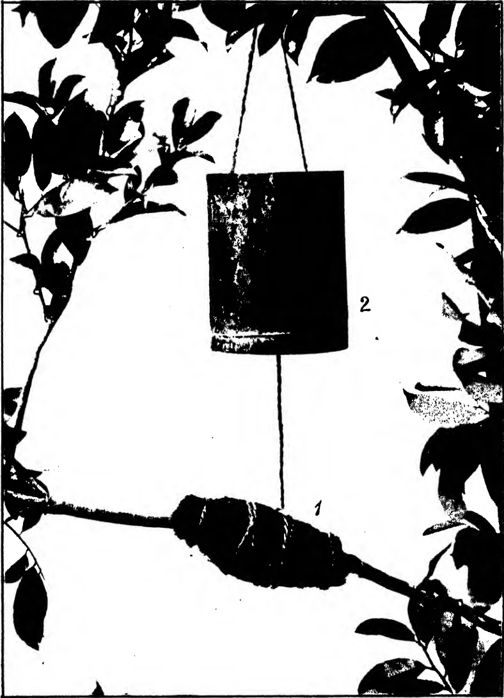
A black and white photograph illustrating the 'Gootee Method of Layering'. The image shows two main components: a layered branch (Fig. 1) and a suspended bamboo container (Fig. 2). The branch, labeled '1', is a thick, horizontal stem with a dark, textured bandage wrapped around its middle section. The bandage is secured with several horizontal ties. Above the branch, a dark, cylindrical bamboo container, labeled '2', is suspended by a thin rope. The container is positioned directly above the bandaged section of the branch. The entire setup is surrounded by the leaves and branches of a tree, with the background being a light, out-of-focus area.Plate I. Gootee Method of Layering
Fig. 1. Layered branch showing bandage of earth tied with fibre.
Fig. 2. Bamboo containing water suspended from a branch above, showing rope (coming through a hole at bottom) along which water is slowly but constantly conducted to the bandage.
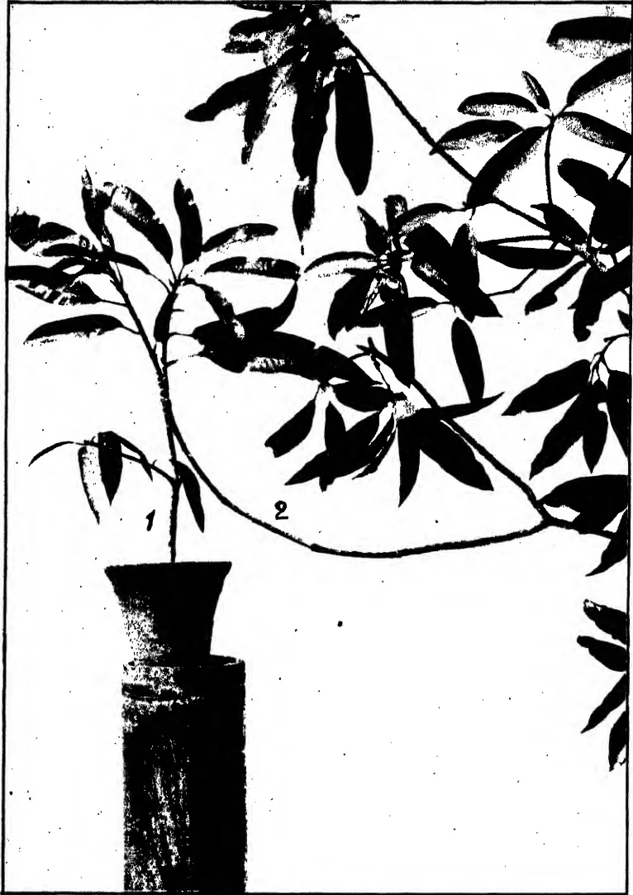
A black and white photograph showing a mango grafting process. A stock plant (Fig. 1) is in a pot, and a scion branch (Fig. 2) is being positioned for grafting. The junction is exposed to show the method of tying.Plate II. Inarching the Mango
Fig. 1. Stock, or the tree upon which the scion is grafted.
Fig. 2. Scion (selected variety).
The junction is exposed to show method of tying previous to bandaging up with tape as described.
359T. H. PARSONS, F. L. S., F. R. H. S.,
CURATOR, ROYAL BOTANIC GARDENS, PERADENIYA
THE common and most general way of propagating a plant is by the sowing of seed. While this is satisfactory in the case of a very large number of plants it does not apply to many of the better varieties of fruits. The method employed to reproduce and increase such fruits is termed "vegetative reproduction" and includes propagation by (a) cuttings; (b) gootee and layers; (c) inarching; and (d) budding and grafting.
A cutting is a part of a plant, usually a portion of a well matured branch, capable of producing roots and bearing an individual plant similar to its parent. To do this a clean cut must be made across a bud with a sharp knife and all leaves taken off to prevent evaporation of the moisture, or sap, in the cutting. When inserted in a soil of a sandy nature in a suitable temperature and degree of light and moisture, roots will form at the lower or cut end of cutting and a new plant formed. Some plants strike (form roots) most readily from quite young shoots called soft wood cuttings, others from partially ripened wood, some from a leaf with a bud at the base, others from shoots arising from the base of the plant, and a few, such as Begonias, from leaves or a portion of the leaf only. In general however the majority of plants propagate best from fully matured shoots, termed hard wood cuttings. The time to take such cuttings is when the parent tree has finished its growth and not when it is in full or partial growth.
Gooteeing, sometimes called marcotting, is a form of propagation practised a great deal in India and in China but now being replaced in most instances by budding and grafting. Where trees are difficult to propagate from cuttings the grower should select a firm healthy branch with well ripened wood and make a slanting cut immediately below a bud, placing a small stone in the groove of the cut to keep it open. Around the cut should be placed a large handful of prepared soil composed of one-third each of leaf mould, well-rotted cattle manure, and
360sand. Tow, moss, or coir fibre placed around the soil and tied tightly will keep the soil mixture together. To help the branch to form roots at the cut and treated area it is necessary to cut out a small notch below the bandage increasing the notching each fortnight until 3 to 4 months, or sooner, if roots appear through the bandage, the branch can be entirely severed at this point from the parent tree. The monsoon periods are the best seasons for this operation, but should the weather become dry, regular watering should be given to keep the coir bandage and soil in damp condition. (Plate I).
Layering is a very similar method but it applies chiefly to those plants that are climbers or have low branches that can be bent down to the ground. The branch selected is bent down to the ground and cut slantwise across a node or bud as for gooteeing. The soil is removed where the cut portion of the branch touches the ground, the latter being then pegged into the ground and covered with a mixture of good leafmould, cattle manure and sand. Watering is necessary on dry days.
Inarching is a form of grafting by approach and the stock plant should be grown on in a pot so that it may be transported to the branch of the tree it is desired to propagate. A small slice of wood from one to two inches in length is removed from side of both the stock plant and the branch or scion it is proposed to propagate, and these are carefully fitted together and bandaged with tape or raffia grass, very tightly. The top of the stock plant above the union should be cut off, and that part of the scion branch below the union should be notched as recommended for gooteeing. When the plants have thoroughly united the branch scion is severed from the parent tree at the point previously notched below the union. (Plate II).
Grafting consists of various methods and termed cleft, crown whip saddle and notch grafting, but the usual and most common method is cleft grafting. All grafting (and inarching) consists of placing together two cut surfaces of the same or nearly allied variety of plant to cause these to unite and grow together into one plant. The root portion is the stock and that desired to form the head of the tree is the scion.
In cleft grafting, the head of the stock is cut across horizontally when of pencil thickness or more. The top of the stock is then split at the top in a vertical direction to the depth of an inch or more according to the size of stock that is being used.
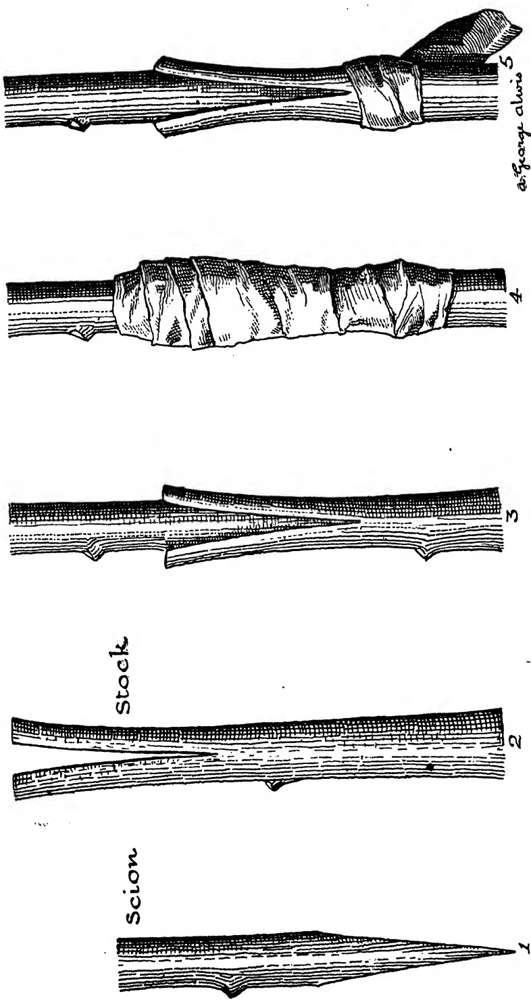
The image contains five detailed line drawings illustrating the process of cleft grafting.
Fig. 1 (leftmost): A single, pointed scion branch.
Fig. 2: A thicker stock branch with a horizontal cleft cut into it.
Fig. 3: The scion from Fig. 1 is inserted into the cleft of the stock.
Fig. 4: The stock after the scion is in place, wrapped with a bandage.
Fig. 5: The stock after the bandage is removed, showing the scion's position and the early stages of healing.
The word 'Scion' is written vertically to the left of Fig. 1 and Fig. 2. The word 'Stock' is written vertically to the left of Fig. 2. The figures are numbered 1 through 5 at their respective right ends. A signature 'A. George Alwin' is written vertically to the right of Fig. 5.
Plate III. Cleft Grafting.
Fig. 1. Scion ready for insertion. Fig. 2. Stock. Fig. 3. Scion inserted in position.
Fig. 4. Bandaged stock after insertion of Scion. Fig. 5. Bandage removed to show early stage of healing.
![A series of six black and white illustrations showing the stages of patch budding on a tree trunk. Figure 1 shows a stock with a rectangular patch. Figure 2 shows the scion with a bud inserted into the patch. Figure 3 shows the patch with a bud. Figure 4 shows the patch with a bud after several weeks. Figure 5 shows the patch after several weeks. Figure 6 shows the final result with a large branch growing from the stock. The text 'afgege alvrs' is written vertically on the right side of the illustrations.](8eb4be285623cd9d20be29101cd35a2d_1_img.webp)
Plate IV. Patch Budding.
Fig. 1. The Stock. Fig. 2. Scion showing bud. Fig. 3. Patch with bud. Fig. 4. Patch inserted on stock. Fig. 5. Bandaged stock after insertion. Fig. 6. Growing bud several weeks later.
361The scion is then cut away at the base to form a wedge in shape which is fitted carefully into the split stock. Both stock and scion must be of equal thickness, as shown in diagram. (Plate III).
The joined area is then bound up tightly with waxed tape to exclude air and moisture, and at Peradeniya the greater portion of the scion to below the junction with stock is protected by waxed paper tied round the stock and scion to assist further in the exclusion of moisture and air and to check evaporation or damage from the direct rays of the sun. The operation is best carried out in cloudy weather and the knife used for the operation must be a sharp one.
Budding is performed in several ways termed the patch, (Plate IV) shield, T budding and inverted T budding (Plate V). The operation of budding consists of inserting a single detached bud underneath the bark of the stock. The shield and patch budding method is usually employed for larger stocks such as rubber and mangoes and the T methods mostly for citrus, roses and such like where the stock plants are usually smaller at the time of budding. The correct time to bud is when the bark of the stock and scion peel readily. The piece of branch from which the buds are taken is known as the bud stick and this is in most cases of the previous season's growth and which possesses good plump buds. The stem of the stock should be straight and clean, and a T or inverted T shaped cut made through the bark of the stock to the wood, the size of cut varying according to size of stock used and the size of the bud and bud shield used. One to one and a half inches is the usual length of the downward cut and a half to three-quarters of an inch for the cross cut. The bark is then lifted and loosened with the flat bone end of the budding knife and is then ready for the scion bud. The latter should be cut from the stick by passing a knife diagonally under the bud so as to remove the bud, and part of the wood and bark, called the shield. The bud is then inserted in the place prepared in the stock and tied firmly with waxed tape. At the end of about two weeks the bandage is removed; and if the bud is found to be alive, the bandaging is redone so as to leave the bud alone exposed. Overhead shade is necessary for a time, the best time to bud being during light showery to fine weather. In time of drought or heavy rainy periods the percentage of success is affected adversely.
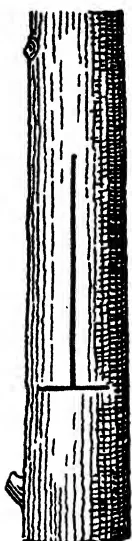
1
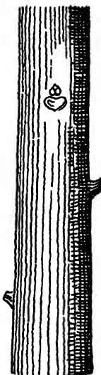
2
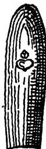
3
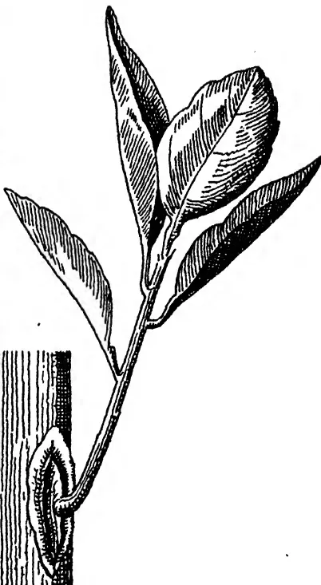
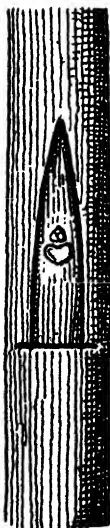
4
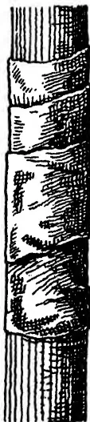
5
6
a. George alwis
Plate V. Inverted T. Budding
Fig. 1. Inverted T. cut on stock. Fig. 2. Scion showing bud.
Fig. 3. Bud shield removed from scion. Fig. 4. Stock with bud shield inserted. Fig. 5. Bandaged stock after insertion of bud shield.
Fig. 6. Growing bud. Note formation of callus.
CONSIDERABLE attention is being paid at present to the problem of the insect infestation of stored products. One of the chief pests studied in this connection in temperate regions is the moth Ephestia elutella which constitutes a menace not only to the cacao bean but also to many other types of stored products. In the following paper the life and habits of this pest, especially in relation to the cacao bean, are recorded in the hope that they may throw some useful suggestions towards its control.
Ephestia elutella, a small grey moth, and a weak flier, lays its eggs singly, or in twos or threes, generally attached by a weak gummy solution, in small crevices—a crack in a wall, a fold or seam of a bag, or a crack in the shell of a bean. Occasionally it lays them loosely on the floor or on any available surface. These eggs hatch into minute larvae which wander on in search of food but as their need for sustenance is not immediate they may spend a day or two in search of a suitable feeding ground. Thus, the exact place of the egg-laying is of secondary importance. The larva can enter any hole or crack which is not less than inch at its narrowest point, the limit to the size of the hole being its head size, as this is of unyielding chitin, whilst its body is soft and pliable and can be pulled through an even smaller hole. During its preliminary search for food the larva has apparently two objects, firstly, to seek a sheltered spot where it can live undisturbed, and, secondly, to find food which is sufficiently soft for its newly hatched and tender condition. The latter is important, for although the nib of the bean is not too hard to be attacked, the shell of the fermented bean will be shown to be too hard for this attack. Having found suitable food, it will settle down in some sheltered spot for its larval life period.
The amount of food consumed during the larval stage is variable but on the average amounts to 0.3 to 0.6 grms. It takes two or three larvae to consume the whole of the nib of an average cacao bean. The larva's diet is very varied. Hardly any foodstuffs come amiss—dried vegetables, flour or biscuits, dried fruits, etc., are all suitable. Its food even consists of other dead insects, including its own parents. It has been bred throughout its life-history on dead Tortrix viridana which shows that even in an empty store many will survive unless there is absolute cleanliness.
The larva's subsequent pupation and its emergence as a moth need not be detailed, though there are many interesting points in these periods of its life-history.
* By Raymond V. Wadsworth in The Tropical Agriculture, Vol. X, No. 4, April 1933.
363As a result of the examination of many lots of infected beans, and also of experimental work, it has been found that the nib of the Criollo bean (i.e., beans with a light red-brown nib and generally softish in texture), is more readily attacked than the nib of the Forastero bean (i.e., beans with the purple and hard type of nib). The more open texture of Criollo cacao and its comparative softness, together with, probably, the slightly higher sugar content due to short fermentation, perhaps make this type of cacao more liable to insect attack. Moreover, its brittle shell is, through cracking, more likely to provide access to the cotyledons. Thus the old finer grades of Ceylon, Venezuela and Samoa cacaos will keep poorly in an insect-infected warehouse.
Generally speaking, unfermented beans have a soft shell with some adhering pulp; such a shell can be attacked by the newly-hatched larva. Beans of this character provide little seclusion as the cotyledons are close, but the larva is not starved as it can subsist handsomely on the pulpy shell and in the absence of shelter makes the best of it. In the case of a bad attack by E. elutella it sometimes happens that the unfermented beans will be completely denuded of their shells, whilst the cotyledons are only slightly attacked on the surface. E. elutella seldom bores a hole for itself into the body of the bean, but just channels the surface on which it lives. This feeding on the shell is an interesting variation in the method of life of the larva. Under normal conditions it settles down in one place and spins a silken tube in which it lives and from which it can easily reach all the food it will need. In the case of a larva feeding on shell, the food is obviously not very congenial and the larva moves a lot. The silk is consequently not so noticeable, seldom being formed into a tube. It may take the shell of three or four beans to provide the food for one larva.
Guayaquil cacao always contains a large percentage of beans of this type and parcels from time to time show the damage characteristic to unfermented cacao. Experimental confirmation of this has been obtained. A bag of beans containing a percentage of unfermented cacao was infected with E. elutella and after the breeding of two generations the bag was examined. All the unfermented beans had their shells almost completely removed, whilst none of the fermented beans had been attacked.
Machala and Grenada cacaos exposed under similar conditions showed that in no case had the Grenada cacao shell been affected, whilst the Machala beans had 49 per cent. with their shells attacked 30 per cent. showed attack on the shell alone, and 19 per cent. some attack also on the nib.
This point is further illustrated in subsequent tables.
Unfermented beans having close cotyledons, between which a larva cannot crawl, are never attacked internally, like fermented cacao.
Washed unfermented beans differ considerably in that the washing removes the soft pulp and leaves a much harder shell. The attack by E. elutella is found to decrease with the degree of washing.
364Except in the case of Guayaquil cacao, unfermented beans are met with only in poor quality cacaos. As a general rule this type of defect is disappearing and so does not vitally concern most growers. Many cacao parcels do, however, contain germinated and broken beans or beans with cracked or cut shells, and it is these that constitute the most serious cause of insect trouble. In a general way it might be laid down as a rule that the proportion of such beans represents the maximum infestation a sample may attain.
It has already been stated that the newly-hatched larva of E. elutella searches for easily available food and that it cannot attack hard surfaces. The shell of a normal fermented cacao bean provides such a surface, and the only hope of obtaining the food inside is through the finding of a crack or hole. To test this a small sack holding about one pound of beans was placed in a closed space infested with moths. The moths laid eggs and in time a second generation was produced. The infection was a bad one as plenty of moths were used to provide eggs for the preliminary attack. The beans were examined individually and divided into those showing original cracks or holes in the shell and good whole beans in which no such cracks could be observed.
The different types were then individually cut open to determine the extent of infection in each. The results were as follows:
TABLE I
| Beans with crack or hole in shell |
Beans without crack or hole in shell |
|
|---|---|---|
| Insects attacked | ... 84% | ... 2% |
| Unattacked | ... 16% | ... 98% |
Possibly even more striking results were obtained in the case of different lots of beans subjected to long storage in precisely the same conditions. Two experiments were carried out, the separate lots in each being kept under one cover, but divided by card partitions and arranged in a circle so that each had the same chance of infection. The infestation was carried out by the introduction of moths in the usual way. The breeding was allowed to continue undisturbed for nearly two years. In the case of Experiment I (Table II) so much food was available that even after two years it was still full of insects at different stages, but mostly in the larval form. In Experiment II (Table III) practically no living insects were left, one or two larvae alone being found during the examination. One experiment was therefore carried on so long as all available food was consumed and the insects died of starvation, whilst the other showed an infection in its heyday.
In Experiment I Accra nib was also included. Being very easily attacked, it contained a large number of larvae, and by the time the experiment was concluded 45.5 per cent. of it had been completely consumed. The inclusion of nib shows how readily available beans are in this form. The roasting of beans cracks a large proportion of the shells and the small percentage attacked is due to the large amount of food available.
365Machala beans stand out in having a high percentage of beans showing no visible crack in the shell, attacked. All these beans were soft-shelled and the attack was confined to the shell.
TABLE IIBeans Attacked by E. Elutella under Conditions of Plenty
| Types of Cacao | Beans with Visible Crack in Shell | Beans with no Visible Crack in Shell | Shells showing Visible Cracks | Shells showing no Visible Cracks | ||
|---|---|---|---|---|---|---|
| per cent. | per cent. | Attacked | Not attacked | Attacked | Not attacked | |
| Raw Grenada | 4 | 96 | 76 | 24 | 5 | 99.5 |
| Raw Bahia | 18 | 82 | 92 | 8 | nil | 100.0 |
| Raw Accra | 20 | 80 | 90 | 10 | 3 | 97 |
| Raw Machala | 16.5 | 83.5 | 90 | 10 | 12 | 88 |
| Roasted Accra | 47 | 53 | 58 | 42 | 5.5 | 94.5 |
Beans Attacked by E. Elutella Showing the Limits of Available Food Supply
| Types of Cacao | Beans with Visible Crack in Shell | Beans with no Visible Crack in Shell | Shells showing Visible Cracks | Shells showing no Visible Cracks | ||
|---|---|---|---|---|---|---|
| per cent. | per cent. | Attacked | Not attacked | Attacked | Not attacked | |
| Raw Accra | 37 | 63 | 93 | 7 | nil | 100 |
| Raw Accra | 23 | 77 | 94 | 6 | 2 | 98 |
| Mouldy Accra | 37 | 63 | 100 | nil | nil | 100 |
| Germinated Accra | 100 | — | 100 | nil | — | — |
| Raw Machala | 32 | 68 | 100 | nil | 6 | 94 |
| Average | 45.8 | 54.2 | 97.4 | 2.6 | 1.6 | 98.4 |
The high percentage of unattacked beans in the Grenada sample with cracked shell is interesting and is due to the fact that these shells, though cracked, fitted tightly over the cotyledons and so did not readily provide shelter for the larvae which sought the more easily available food present.
In Experiment II the percentage of cracked beans was very high throughout. By the end of the experiment, however, practically no life was present, and it will be seen that this occurred only when the cracked beans had been consumed. The few cases where cracked beans were not consumed were instances where the shells fitted very tightly over the cotyledons, preventing the access of the larva. There were still plenty of beans, but the food was protected by the shell and in a land of plenty the larvae died for want of the strength to get the food. Every germinated and cracked bean was completely consumed, so that the shell was the only thing left to represent the bean—its inside being full of frass. The Machala cacao was a sample of well-fermented beans for that class, with only a few soft-shelled beans. It will be noted that these were attacked, though they naturally showed no crack in their soft shells.
366Amongst wharfingers in England who store cacao for brokers, sometimes over many years, there is a belief that old cacao is immune from insect attack. Practical experience has shown them that some old parcels of cacao do not breed moths. This is quite in accordance with the results which are given above as the small quantities of available food in parcels of beans containing few cracked or broken beans would, in a badly infected store, be quickly consumed. When once these had been eaten, no other food being available, the parcel would remain immune from further attack.
At times it happens that the infestation of a parcel of cacao beans seems much greater than that suggested by the moths or larvae seen in the store. When this occurs it will be found that the sacks are stacked on end one or two high only. A sack of beans is never filled absolutely full as otherwise the bags would not stack well on their side and the chance of bursting during rough handling would be great. This means that a sack on end has at the top a fairly large free space. When the larvae enter this they sense that here is sufficient space for the future moth to fly and meet a mate. They, therefore, do not wander much further, but, finding a suitable space for pupation, spin up. As this occurs inside the sack, the cocoons are never seen. The moths hatch inside the bag and find sufficient space for flying and mating. The next generation is thus produced hidden from view and the store appears comparatively free from insects owing to only a few larvae forcing their way out of the sacks. Moths which hatch inside the sack cannot get out into the store since at this stage the insects are too frail to force an exit. It is at the larval stage only that this occurs. There is a belief amongst some that the moth does force its way outside the sacks and this was tested, with the following results. Small sacks, made of the usual sack material, three-quarter filled with beans, were placed on end (so as to induce the moths to pupate inside the sack) whilst some were placed on their sides leaving no free space in the sacks, and infected. All these moths were removed from the test as soon as they were dead. After two generations had been fully completed, it was found that every moth in the free space outside the sacks had come from a pupa outside the sacks, whilst the moths inside the sacks had lived and died in their prison, and a pupa for each was inside the sack. Thus moths inside or outside the sacks had hatched from pupae in their respective areas and the insect, as the fully hatched moth, could not move out of the sack in which it hatched. Sacks placed on end constitute a hidden danger to a store, and all sacks should be placed on their sides, when the beans fill all the free space.
The method of attack of E. elutella will now be quite clear. The moths lay their eggs in the neighbourhood of the beans, generally on the outside of the sack or in its folds. The young larvae hatching must wander for a little time before settling down. During this period the aim of the larva is to find some suitable food which, whilst being soft enough to attack, also provides some shelter, in which it will remain hidden. In the case of the cacao bean, it finds a crack or hole in a loose shell and crawls into the space between the two cotyledons. Here it lies in the midst of plenty, hidden from view and well protected, and until fully fed when it
367will have consumed about half a normal bean. Generally by that time the hole through which it entered is too small for the grown larva to get out by and so it eats the shell away in the form of a circular hole and escapes to pupate. If the sack is on end the free space in the sack induces pupation, which frequently may take place there. With normal stacking the larva forces its way through the holes of the sack into the open air, when it soon finds a suitable place to pupate and the life cycle commences again.
It has been shown that the cacao bean properly fermented and with its shell intact is proof against the attack of E. elutella.
The damage caused by this insect is due to the presence of defective beans in the parcel—partially cracked, germinated and broken beans. Cut and unfermented beans are a further source of infection.
Buyers of cacao beans may take as a guide to the maximum possible infection the amount of such types present in any parcel of beans.
Criollo beans are more susceptible to attack than Forastero beans under the same conditions.
Unfermented beans are attacked externally, the soft shell being removed by the larvae.
Sacks stacked on end with a free space at the top of the sacks encourage larvae to spin up inside the sack and so breed hidden from sight. (This does not occur with sacks stacked on their sides.)
The defects in the cacao bean which have been shown to encourage the infection with E. elutella are also defects which the manufacturers dislike for other causes. Mostly they are defects which have to be guarded against on the plantation. The classes of beans which should be reduced to a minimum are here arranged in relation to Ephestia attack, the least important being given first:
Unfermented beans.
Cut beans.
Cracked beans.
Germinated beans.
Broken beans.
Unfermented beans are generally a sign of inferior preparation and should be fairly easy to guard against.
Cut beans may be caused when:
Cracked beans are caused by rough handling after drying. Over-fermentation and washing of beans are to be guarded against as prolific sources of this defect. Unnecessary walking over the beans should be discouraged on this account.
Germinated beans are due to poor picking, leaving too long before fermenting or imperfect fermentation.
Broken beans should be separated from the cacao before bagging. They represent the most serious defect. The less the planter is able to produce of these, the less risk there is of cracked beans also being present in the bulk.
Buyers and brokers should consider these defects, particularly the last one, as a guide to the keeping qualities of any parcels offered to them.
The position of the sack does, to some extent, affect the infection of the beans. It has been shown that the correct position of a sack is on its side, when no free space is available to induce the larvae to pupate inside the sack. This position will prevent the hidden breeding of E. elutella and enable a storekeeper to see better what infection is present.
The diet of E. elutella is very varied and it has been shown how the moth may continue to breed on most unlikely material, such as other dead insects. Absolute cleanliness is, therefore, advisable in every store. Regular brushing and whitewashing of walls and roof should be carried out and the more inaccessible the spot, the greater care which should be taken in cleaning.
The work was carried out in the Research Laboratory of Messrs. Cadbury Brothers, and I wish to express my thanks to the firm for permission to publish the results.
369“ROTATION of crops” has become a byword in present-day systems of arable farming. The reasons are patent and need but little discussion here, save to point out certain factors which make varied cropping specially advisable under South African conditions.
It is obvious that on land where the same crop is grown continuously the soil will, in time, become denuded of those elements of which the crop requires most. This impoverishment of available constituents will take place more quickly than the working down of the dormant, non-assimilable material into a state suitable for absorption by plants. It is therefore well to crop land with species of varying requirements so that a “balanced” demand is made of the soil, adopting the principle that a crop requiring much phosphorus, for instance, be followed by one requiring less phosphorus, and more of the other ingredients, such as potash or calcium.
Crops with different types of root systems, shallow and deep, for example when used alternately will help maintain texture and fertility, functioning in varying layers of the soil and subsoil.
Rotation of crops is of importance in minimizing damage by pests, both of the root and aerial portions of the plant. A small black beetle (Syagrus rugifrons) has done serious damage to cotton crops in South Africa, working below ground level and practically destroying root systems, the only remedy being a change of cropping. Work at Barberton on insect pest control has shown that American Bollworm (Heliothis obsoleta) seems to prefer maize as a host plant to cotton; the pest does relatively little harm to the maize, and as this crop seems definitely attractive to one of the cotton-grower's worst enemies, there should be some incentive to him to include it in his cropping scheme if for no other reason than to act as a trap crop.
In a country of erratic rainfall and general climate, such as South Africa it is of importance to the farmer to have a range of useful crops. With constant liability to late rains, making the planting of long-period crops inadvisable, or to crops being wiped out by hail or wind early in the season, he does not want to have “all his eggs in one basket”. With a long-period crop such as cotton (six to seven months) he may require something to plant on odd lands after his cotton-planting is finished; or should his cotton suffer irreparably from the elements, he may wish to replant his lands with some crop late in the season, say December or January. Bearing these factors particularly in mind, the aim at Barberton has been to pick out strains of various crops capable of maturing in a fairly short time (three to four months).
* A discussion by W. L. Fielding, B.Sc., Dip. Agric., in The Empire Cotton Growing Review, Vol. X, No. 2. April 1933, based on work carried out at the Cotton Breeding Station, Barberton, South Africa, on the question of suitable rotation crops for inclusion in a cropping scheme having cotton as the main cash crop.
370The provision of home-grown food for native labour and cattle rations is an incentive to the growing of certain leguminous and cereal crops on a farm where cotton is the main crop.
Apart from home-consumption, the selling of produce both on interior and export markets is one of the most difficult problems to be faced. Crops yielding produce adapted to market requirements are naturally being selected, but prevailing low prices make the introduction of these into a farming scheme very slow work. Owing to market prejudice some crops possessing desirable agricultural characteristics are debarred from extensive use by the farmer. For instance, a bean which is suited to conditions and is high yielding may be considered on the small side for native consumption or for the canning trade, whilst a rather larger relative fetching a high price on that market may be a poor proposition for the farmer owing to low yielding potentiality or susceptibility to insect pests. The beans may be of equal actual feeding value and of similar taste, there being no real rhyme or reason for the market preference save conservatism or the appeal of a larger, perhaps coloured, bean to the eye.
An extensive range of crops have been tried on the Corporation's South African stations, including maize, soya beans, sunflower, groundnuts, sorghums, and a miscellaneous range of legumes having possibilities. Following are brief notes on the agricultural and economic value of some of these crops, the selection of the most useful strains, and the fitting of them into a farming scheme having cotton as the main cash crop.
"Mealies" have long been a standby in South African cropping schemes. The Union's main crop is grown on the Highveld, and whilst much progress has been made in the breeding of suitable varieties for these areas, little attention has been given to maize problems on the Middleveld and Lowveld, in which areas the main cotton belt lies. On the Highveld, varieties of the white flat type (indentata) predominate. These are long-period maizes (140 to 150 days), and if put in late on the Lowveld often produce a poor crop. It is probable that in the Barberton area maize will be grown rather for purposes of food for native labour and cattle than for export. The need is then for a white-grained maize suitable for grinding into "mealie meal", the standard native foodstuff, the selected variety being capable of maturing a satisfactory crop in a comparatively short period. Out of a large variety of maizes tried, a White Flint strain, which has been under observation at Barberton over three seasons, has so far seemed best suited to requirements. Last season it definitely proved its yield capabilities in a variety trial. White Flint produces a round white grain which crushes into a meal apparently very acceptable to the native palate. It belongs to the indurata group, which are of a shorter maturation period and more drought-resistant than those of the indentata group.
White Flint grain is of a lesser market value than grain of the large white flat type, such as is produced by Hickory King or Potchefstroom Pearl; these latter would probably be grown by a man out to farm maize as the principal crop. The main question, however, being that of rotation crops for the cotton-grower, who will give prior attention to his cotton (and in some cases tobacco), White Flint has been selected as
371probably the most suitable all-round type for a cotton-grower wishing to plant maize after his cotton, with a fair chance of obtaining a reasonable crop for feeding his native labour, even in an adverse season. About two tons of White Flint seed have been supplied to farmers in the Barberton area. It is also being grown on the Corporation's stations in Swaziland and Natal.
A maize of possible use, should export produce be required, is a small red-grained, Peruvian type. Points in its favour are early maturity, high resistance to the "streak" virus disease which causes serious reduction in yield in very late-planted maize in this area, and its production of a grain well suited to United Kingdom markets.
The produce from this crop has great possibilities in the commercial world. The uses to which soya beans can be put include the manufacture of soft soaps, paints, linoleum, water-proofing liquid, toilet powder, enamels and waterproof goods. The residual "soya cake", after oil extraction, forms valuable cattle cake. Several firms in England and on the Continent are now producing soya products for human consumption, the basic soya flour for these edibles being prepared by the Berzcellar process.
A very large number of soya bean varieties from different parts of the world have been tested on the Corporation's South African stations. Several have shown good yielding capabilities, but only one has proved of real use as a grain producer. This is the Barberton Y 1 strain, producing a fairly large, bright yellow bean, and owing its superiority to a high degree of resistance to shattering of grain when ripe. Oil content is in the region of 18 per cent. The beans make an attractive sample in appearance and are likely to prove generally acceptable from the market point of view. South African produce of this type has recently been reported on very favourably in comparison with the Manchurian soya beans customarily tendered on United Kingdom markets.
The soya bean has one big advantage in that it is the only bean crop which is not liable to serious damage by the large Cantharides beetle. This pest will often destroy the majority of the flowers on bean crops with exposed flowering systems; the flowers of the soya bean are borne in the axils of the branches and apparently owing to this obscurity within the foliage of the plant never suffer seriously.
Experiments at Barberton are giving useful information on the best spacing at which to grow soya beans, and on the best time to plant. Although South African soils as a whole are not considered deficient in nitrogen, there is always the need for keeping up nitrogen content on continuously cropped lands. It is this function which the leguminous crop in any rotation is expected to effect. In order that the soya bean shall fulfil this purpose, it is essential that the bacterium specific to the soya plant be present in the soil, so that it may infect the root systems and, working in "symbiosis" with the plant, fix nitrogen from the soil, air and moisture. The soya bean bacterium is not indigenous, and cultures have been imported with which to inoculate crops. A method of inoculating on a field scale with soil cultures of bacteria by means of a fertilizer attachment mounted on the planting machine is being tried out. The
372question of the influence of lime on the effectiveness of the bacteria and on the general growth and yield of soya beans is being investigated. An acid soil condition is known to be unfavourable to the bacteria, and it is a question of whether more satisfactory inoculation and thence nitrogen fixation would justify a farmer liming his lands.
The soya bean seem suited to Barberton area conditions and may prove a useful crop when produce markets recover. During 1932 there has been a sale of twenty-seven tons of Y 1 soya from various growers to an oil-extracting company on the Rand. The price was naturally a low one, based on current London quotations, but such beginnings might later lead to the provision of a definite interior market for soya beans.
Some work has been done on spacing and the selection of an early maturing, good yielding strain of this crop. Sunflower seed is saleable in the interior for poultry food purposes, is exported in small consignments to Australia, and can be utilized on the home farm as crushed meal in the concentrate ration for dairy cattle. It is fairly drought-resistant, apparently immune from any serious pest or disease in this district, and is easily handled.
Suitable varieties have been selected, but the crop does not appear to have great possibilities for the cotton-farmer in this area. In order to obtain a good return, it seems probable that the crop should be planted in October or November, owing to the subsequent serious incidence of "rosette" (virus) disease. This question is being further investigated in time-of-planting experiments, but a crop which required to be planted at the same time as cotton would be less useful than crops capable of later planting.
A range of leguminous crops of suitable growth duration for fitting into a rotation with cotton are under observation. Apart from rotational value, they have varying uses, such as providing dried beans for home consumption as cattle food and native labour rations; for sale on interior and possibly overseas markets for native or European consumption; or the provision of a mass of foliage to be cut as cattle fodder or ploughed in as a green manure.
A small white bean, tepary (Phaseolus acutifolius), has proved the most prolific yielder in this class, and is well suited to requirements, maturing in two and a half to three months. Tepary bean is a native of Texas and Arizona, where it is reported an important crop. In the crushed form it should prove a useful component of concentrate rations for cattle. In the cooked form it appears acceptable to the South African native's palate. A gold-mine in the Barberton area feeds tepary beans to its native labour. Where labour gangs include a proportion of natives belonging to a non-meat-eating tribe, the question of supplying proteins by feeding a bean ration becomes of importance. Good germination of this bean can be obtained under only moderate moisture conditions, the crop being quite an easy one to handle throughout.
373Various kinds of Phaseolus lunatus (Lima, Madagascar, or butter beans) are being tried. They seem to have possibilities planted toward the end of the rains, and are worthy of extensive trial as they command a far higher market price than many beans, on United Kingdom markets, for European consumption.
Certain beans of the Phaseolus vulgare group (speckled sugar beans, large kidney beans, etc.), command good market prices, but so far have shown little promise of being more than odd crops in this area.
It has not been possible to do any definite work at Barberton on the effects of green manuring on ensuing cotton or maize crops, but sunn hemp (Crotalaria juncea) is probably about the most useful crop, sown broadcast and ploughed in at 2 to 3 feet high. It has an added advantage in that a group of bacteria capable of infecting the roots of sunn hemp are indigenous in the Barberton soil, so that besides acting as a green manure, the crop may be beneficial from the nitrogen point of view.
Types of velvet bean (Mucuna) have been found to produce a good crop for hay and green-fodder purposes.
Two experiments have been laid down at Barberton this year in which cotton will follow cotton, soya bean, tepary bean, maize, sunflower and fallow respectively. The experiments are laid out as random blocks. The strains of crops used are those which seem most likely to prove the best standard lots, and it is intended that the trials shall be more or less permanent, so that studies of the growth of cotton after cotton itself, after one year fallow, and after the various rotation crops may be made. The preliminary stages in the work of ascertaining what crops can be grown, the best spacing at which to grow them etc., having been done, it is now for these rotation experiments to demonstrate the merits of the various crops.
Tobacco is an important crop in the area, "Barberton snuff" being in demand by natives throughout the Union. Those farmers having good tobacco lands and sufficient irrigation water will probably adopt a simple tobacco-cotton-tobacco rotation. This is a specialized side of farming, however, and the Corporation's work on rotations has therefore been directed towards the finding of crops for wider areas, and for lands where tobacco will not normally be grown.
It appears probable that maize and soya beans will prove useful standard crops; maize as a feed for native labour, and soya bean as a cash crop either on interior markets or, with more settled world conditions, for export. Beans suitable for native and cattle feed, or for the European dried bean market, may have places in the farming scheme, as also oil-producing crops (apart from soya bean), such as sunflower and groundnut, the former with the further possibility of immediate use as a cattle or poultry food, the latter for sale to natives locally. Farmers having a dairying business will need to include a certain amount of green fodder in their cropping scheme, and for the ordinary arable farmer the provision of pit silage, made from a broadcast crop of sorghums or maize, will prove useful for draught oxen when the dry season is a long one.
374FORTUNATELY for the cane sugar industry, the areas of major production lie outside the belts of intensive destruction by locusts. Nevertheless, practically none are free from all danger; in a few, severe invasions are not unknown while extending cultivation may easily add to the number of these latter. The main features of the locust problem, consequently, will be of interest to many of those engaged in the cultivation of cane. Much money has been spent in those countries subject to invasions in organizing control measures but, owing to lack of adequate knowledge of the habits of the insect and to the fact that such control is necessarily limited to the area where the flight descends, these measures aim merely at a cure. Effective control can only arise from prophylactic treatment—when the origin of the swarms and the causes of their intermittent appearance have been determined. Then it may become possible to devise a true prophylactic remedy in arresting the formation of the swarms. In recent years considerable advances have been made in that preliminary knowledge of this group of insects and the day when the locust menace will be brought under full control is perceptibly nearer.
The term "locust" is a popular one, without scientific definition. The word calls forth visions of flight which obscure the sun, of insects settling in such vast numbers that every green blade disappears as by magic, of armies of "hoppers" marching across the country. Popular terminology, again, applies to a group of very similar insects which occur as solitary individuals, the name grasshopper; and in broad outline, the distinction is a real one. But difficulty arises when a more scientific definition is sought. Scientific definition aims at classifying organisms into species to which individuals may be referred through the possession of definite characters. When a detailed study of the group, the Acrididae, was undertaken with this object, it was found that, while the individual locusts and grasshoppers were readily classified, locust from locust and grasshopper from grasshopper, no such ready distinction could be drawn between locust and grasshopper. Between one species of locust and one species of grasshopper a number of intermediate forms occurred which linked the two into a continuous series. To B. P. Uvarov belongs the credit of supplying the explanation of this observation. The linked forms of locust and grasshopper, in their characteristic expression so distinct that separate specific names have been applied to each, are merely two phases of the same insect, in other words, that the insect lives in the solitary phase for a number of generations when it possesses all the morphological characteristics of the grasshopper, and then suddenly passes into the gregarious space when it exhibits all the morphological characteristics of the locust, while intermediate forms appear at the change of phase. This view, at first advanced tentatively by Uvarov
* From The International Sugar Journal, Vol. XXXV, No. 413, May 1933.
375in 1921, has since received confirmation from many sources. Though the two forms of all the locusts of economic importance have not been determined with certainty as yet, there appears to be no reasonable doubt that there is here a general phenomenon and that the periodicity of the locust swarms is linked with this occurrence of two phases. The major instances now recognized are given in the following tabulation:
| Locust. | Grasshopper. | |
|---|---|---|
| The Moroccan Locust | Dociostaurus maroccanus | (?) ph. degeneratus |
| Area.— | Mediterranean Region to Turkestan. | |
| The Migratory Locust | Locusta migratoria | ph. danica |
| Area.— | Old World S. of 60° N., N. Australia and New Zealand | |
| The Desert Locust | Schistocerca gregaria | ph. flaviventris |
| Area.— | Africa excl. humid and forest regions, E. to the Punjab. | |
| The South American Locust | Schistocerca paranensis | (?) ph. americana |
| Area.— | Indefinitely S. American, West Indian Islands, N. to Mexico. | |
| The Brown Locust | Locustana pardalina | ph. solitaria |
| Area.— | Parts of South Africa | |
| The Red Locust | Nomadacris septemfasciata | ph. coangustata |
| Area.— | South Africa to the Congo, South Sudan and Abyssinia | |
Another locust of minor importance economically is the Italian Locust, Calliptamus italicus, which occurs in the Mediterranean region including Egypt. It is a species which only occasionally swarms and little is known about its phases. There are also a number of other species of grasshoppers which have the capacity of swarming occasionally, among which may be mentioned the Bombay Locust, Patanga succincta, and the Javanese Grasshopper, Valanga nigricornis melanicornis. Lastly, there are numbers of solitary grasshoppers which appear to have no swarming phase though some of them may appear in numbers which constitute a serious pest. Among these the most important is Oxya chinensis (O. velox), one of the smaller Rice Grasshoppers, which does much damage to rice but, in Hawaii, is a serious pest of sugar cane.
Until the phase theory came to receive general acceptance only a few years ago, control was limited to attacking the swarms where and when they occurred. It was recognised that swarm breeds swarm and, consequently, only by attacking the early swarm could a succession of swarms be prevented. The measures adopted were essentially remedial, for they only became operative after the appearance of the first swarm with its attendant destruction, and too little was known regarding the origin of the first swarm to permit active measures being organized for its destruction, at its source. In several countries, notably South Africa, a complex organization for the purpose has been developed. The problem is essentially a practical one and behind it lies the question of cost. The various methods commonly adopted and the principles underlying these may be of interest.
Mechanical Methods.—The various mechanical methods concentrate, as a rule, on attacking the insect at one or other of the vulnerable stages of its life-history when it is most open to attack, and usually at a stage when it is incapable of flight. One of these vulnerable stages is the egg,
376and ploughing and harrowing have been employed, partly to cause direct destruction of the eggs lying in the egg-pods, partly to expose these to unfavourable conditions. The method appears to give results in no way comparable to the cost.
Against the insect in the hopper stage many methods are employed. In America hopper catching machines and hopper dozers are employed. These consists of screens dragged along the ground and fitted with some device for retaining the hoppers which may be dried and fed to poultry. Clearly they are useless against large swarms covering large tracts. Burning by petrol jets has proved efficacious but requires a trained band of operators. Ditches have the disadvantage of cost and have largely been replaced by portable barriers. The use of these latter requires considerable skill and technical knowledge in judging the direction of migration; they must be erected at night across the probable path of migration to lead the swarm to a trap where it may be destroyed. This, too, is an expensive method both in cost of the portable barriers and of labour in erection.
Chemical Methods.—These embrace the use of chemical substances acting either as external or internal poisons. The former include mineral oils, soap, and kerosene-soap emulsion. Their main defect is cost. The latter are variously applied. Spraying arsenical compounds over the natural vegetation supplying the food of the locust has been effectively organized on a large scale both in Russia and South Africa but it has the grave drawback of cost and the method is giving place to poisoned baits. The bait system is under process of evolution but, essentially, the bait is a compound of three ingredients, carrier, poison and attractant. As carrier green vegetable matter, horse manure, bran, sawdust, chaff and cotton-seed meal have proved successful, and of these bran proved most effective followed by a mixture of bran and sawdust or bran and chaff (wheat or oat, not millet). The essential point of the carrier is ability to absorb and retain moisture. Poisons are practically limited to arsenical compounds and white arsenic has proved most successful. Preferably the poison should be insoluble, to be retained by the carrier under rain. The nature of the attractant is as yet hardly understood and it may be that moisture itself is an adequate attractant. Many substances, including molasses, have been tried but with little advantage. Too little is as yet known concerning the sensory reactions of the locust. The distribution of the bait again, is a matter requiring considerable skill associated with knowledge of the insects' habits.
Another recent method of attack is the dusting of dry poisons, particularly sodium arsenite; it has the advantage that the poison reaches places inaccessible for baits and it can be employed by aeroplanes. Dusting calcium cyanide, which liberates cyanogas, has recently been adopted in South America with success.
Biological Methods.—From time to time those biological methods which have been adopted with success in the control of other insects have been proposed for the control of the locust and among these have figured numerous parasites, birds, fungi (particularly Empusa grylli) and bacteria (Coccobacillus acridiorum), the latter having been tried in the Argentine. The difficulties in the way of the employment of such methods in the case of an insect of incidental appearance are obvious and attempts have been marked by no success though they have their possibilities against solitary grasshoppers.
377The methods just discussed are directed mainly against the insect in its swarming or gregarious phase, and they constitute attempts at destruction of the swarms as soon after, but after, their first appearance as possible. If the phase theory is of too recent a date to have permitted the evolution of an effective method of control up to the present, it has indicated a new direction in which control must be sought. The phase theory if it be correct to term that a theory which has received general recognition, lays down that certain species of Acrididae pass through alternating phases, each lasting an indeterminate number of generations, in one of which the insect is gregarious and mobile and, in the other, solitary and stationary. Fundamental to the subject of control, therefore, is a determination of the conditions which stimulate the transference from one phase to the other. The immediate stimulus was shown by Uvarov to be density of insect population and his conclusions have been confirmed by Faure working on the migratory locust of South Africa. Where the insects occur in sufficient numbers to give the necessary contact between individuals, a definite stimulus towards gregariousness is aroused which is accompanied by those morphological modifications in the successive instar (hopper) stages which lead to the intermediate forms or, if the stimulus is sufficiently intense, to the extreme gregarious form. Conversely, if the numbers are reduced and the necessary stimulus lacking, the solitary form will be developed.
But this new knowledge leads only part of the way, though a large part, to the evolution of a practical solution of the economic problem. The question that awaits solution lies deeper and is this: what are the conditions under which so large a number of individuals are hatched out that contact adequate to provide the stimulus is forthcoming? There is here no regularity of sequence, for invasions of migratory locusts are characteristically irregular. Faure offers a number of observations on the effect of the major climatic factors, light, heat, and moisture, but, important as these are, the observed effects offered no solution to the problem.
Fortunately there is another line along which progress towards the solution of the practical problem can be made while awaiting a definite answer to this difficult question. Over the wide stretch of country in which any one species occurs there will be varying sets of environmental conditions, one or more of which will prove more favourable to the insect. Here, amid the normal fluctuations which commonly occur between successive seasons, there will arise times when conditions are more than usually favourable and numbers sufficient to provide a stimulus and to arouse the gregarious instinct will survive. The habitat, thus, becomes zonal. Surrounding the area is an outer zone, the range of invasion, penetrated only by the migratory swarms and offering conditions unfavourable for permanent occupation. Being gregarious the insects tend to lay their eggs in close association and sufficient may survive to cause a persistence of the gregarious phase for a few generations; but eventually reversion to the solitary phase takes place and even this may disappear. Within lies an inner zone, the permanent habitat, in which the solitary phase is permanently established. Within this again, will lie foci, the areas of incipient swarming, where the conditions are exceptionally favourable. Here the balance is nicely adjusted and any favourable swing will lead
378to development of the gregarious form. These are the danger points, the points of origin of the migratory swarms which cause so much havoc in their progress. The new method of control suggested by the phase theory requires, as a preliminary, the demarcation of these danger foci. Concentration on them offers the most promising line of attack for, if successful, the development of the migratory phase will be prevented. The problem is no easy one and not the least of the difficulties lies in the probability that many of the foci lie in inaccessible regions. Thus, in South Africa, three foci have been determined for the Brown locust; one round Middelburg, Steynsburg and De Aar, a second round Hope Town, Herbert and Jacobsdaal, and the third in Kenhard. But much of the permanent habitat lies in terra incognita in the Kalahari and there may be other foci in this region. The determination of foci is, however, but one stage towards the solution; there remains the question of how these foci are to be dealt with when located. It is not practicable to plough, drag, spray or bait large and indeterminate areas so far removed from the haunts of man though the potentialities of dusting from aeroplanes as well as of some form of biological control must not lightly be dismissed. A further possibility lies in a modification of the conditions so as to render them less favourable. There is here opened up an ecological problem of no mean order but one on which attention is now being concentrated. Thus the solution of the problem of the locust, a gregarious and migratory insect, is now being sought from an intensive study of a solitary and sedentary grasshopper. Once again scientific investigation has led to unexpected and surprising conclusions.
Though the discovery of the assistance of phases in the life history of the locust is of such recent date and much remains to be learned relative to the conditioning causes of the transfer from the solitary to the gregarious phase, considerable progress has already been made in certain cases both in the determination of a foci and of the favourable ecological conditions. A brief statement of these results, in as far as they concern those forms whose range impinges on sugar producing areas, will be of interest.
The Migratory locust is the most widely distributed of all species and its range includes practically all the old world south of latitude 55° to 60° as well as Northern Queensland and New Zealand. Foci, though most common along the belt stretching across the Danube area and southern Siberia, occur in tropical areas in West Africa, Central Africa, Malaya, Borneo and Queensland. Outside the Russian area little is known of the ecological conditions of the foci or even their exact location, but reed beds, tall grass or bamboo associated with raised drier areas for oviposition seem to be the main essentials.
Reference has already been made to the Brown locust. The main ecological feature so far determined appears to be the character of the soil.
379The Desert locust is, perhaps, the most destructive of all but the range of its intense depredations is the area bordering the Sahara and extending through Arabia and Persia to India where migratory swarms do considerable damage. Little is known as to the foci or the ecological conditions of these.
The South American locust ranges from the Argentine through Brazil, Venezuela and Central America, while migratory swarms may penetrate the West Indian Islands. The foci are not located and knowledge of the ecological conditions is consequently nil.
There is obviously a vast field to be explored before the locust will be brought under control, but the lines of that exploration are now clearly defined. They are lines along which none but a Government controlled agency can well work, for the locust is no respecter of the artificial boundaries drawn by man. In many cases they ignore even international boundaries by which further complication is added in the organization of control measures. This conclusion, however, in no way diminishes the need for local effort when swarms appear. Swarm breeds swarm if the locality offers favourable breeding ground and the insect is left in peace to breed. Local effort, by one of the methods referred to above, can do much to reduce the number of generations of the migratory phase and to increase the number of years of freedom from attack.
380THE Cacao Research Scheme, which started its active life at the end of 1930 and which has recently issued its first annual report, has its headquarters at the Imperial College of Tropical Agriculture, Trinidad, B.W.I. This institution serves the dual purpose of a training ground for future Colonial Agricultural Officers and tropical farmers and of a link in the chain of long-range research stations that were envisaged by the Lovat Committee, and it is in the latter capacity that it houses the Cacao Research Scheme. The scheme is financed by contributions from cacao-producing colonies and from three large cocoa manufacturers of Great Britain, Messrs. Cadbury, Fry and Rowntree. It is established in the first place for five years, at the end of which period the position will be reviewed. It has at present a staff of three research officers—a geneticist and a physiologist who work under the general supervision of the Professor of Botany of the College, and a soil chemist whose work is directed by the Professor of Chemistry.
A. Botanical Section.—The aims of the botanical section are briefly recapitulated by Professor E. E. Cheesman who originally devised them. The work of the section is directed towards the collection of information necessary for the improvement of yield and quality in Empire cacao. Improvements may be brought about in actual planting material (the work of the geneticist) and also in the environment in which the tree lives (the work of the physiologist). The present cacao population consists of a heterogeneous collection of good, bad and indifferent individuals and the geneticist's object is to select and propagate the best. How is he to know the best when he sees it? It would be quite fallacious to take the number of pods per tree per annum as the sole criterion of yield; it would undoubtedly separate the good from the bad, but it would not distinguish accurately between the good and the better. Factors such as size of pod, number of beans per pod, proportion of beans to shell, and the relation of all these factors to the position of the pod on the tree must be considered in finding the best trees. It will be seen that the field of enquiry is large and it is therefore necessary, if results are to be achieved in a reasonable time, that the fewest number of observations consistent with accuracy shall be taken. It has been one of the major tasks of the geneticist during the year under review to determine this minimum number. Statistics of pod length and diameter, shell thickness and ratio of length to diameter taken from three blocks, each of 100 trees, in different places, and extending over seven months in time, indicate that variability between different trees is greater than that between pods on any one tree, and that measurement of a random sample of thirty pods is sufficient to characterise a tree. Seasonal variability is large, but estimates based on
381samples taken at the time of maximum bearing (January in Trinidad) are very close to the mean for the whole crop; the variability takes the form of a reduction in all dimensions which is progressive with the course of the dry season, and is accompanied by a slight change in shape.
Similar statistics have been taken of bean number per pod and ovule number per ovary. The number of beans per pod is found to be markedly variable, but the number of ovules per ovary is remarkably constant. The discrepancy between the number of ovules in the ovary and the number which successfully mature into seeds is very great, and the loss is said to be sometimes as much as 50 per cent. It would be more correct to say that it may be as high as 100 per cent., for there is no evidence that the failure of flowers to produce fruits is always to be ascribed to ovule sterility. It is concluded that bean number is unreliable for the characterisation of individual trees, a conclusion that is fairly obvious when one considers the number of external factors that operate in the production of the bean.
It is not always clear how the analysis of variance tables are derived from the records, and in one case at least there is an arithmetical error (p. 11 Table of Shell Thickness; the average of pod No. 7. should be 17 mm. and not 18 mm. as stated). Further, the conclusion that one measurement per pod will give a sufficiently accurate estimate of diameter will depend on the class intervals adopted when pods are tabulated according to diameter; taking the analysis of variance figures given, the standard error of mean differences is about 0.77 per cent, making differences between means of 2.3 per cent. significant, whereas this percentage difference is exceeded in the measurements of any one pod.
Preliminary studies of fruitfulness suggest that flower abscission is controlled by an osmotic mechanism; if this is confirmed it will throw light on the failure to set fruit of flowers produced in May and June (at the end of the dry season) when the concentration of osmotically-active materials is high. There is no evidence that wilting of cherelles (young pods) is due to incomplete pollination, but there is a distinct suggestion of a correlation between the initial rate of growth of the pistil and the number of successful pollinations.
The vegetative propagation of cacao has received attention in the form of an enquiry into the rooting of cuttings of various kinds. Root cuttings were a failure: hardwood cuttings were not rooted, but the formation of callus was successfully induced: softwood cuttings, stools and layers were all rooted with sufficient success to justify further study. It has yet to be decided whether stems raised from cuttings will stool or layer as readily as the young seedling trees used in the present experiments, and the influence of season on the success of propagation is as yet unknown.
B. Chemical Section.—With a view to getting a general idea of the environmental factors affecting the growth of cacao, two plots were chosen on the past performance of the trees growing on them, and detailed analysis of soil and environmental data were made. The plots were in
382different districts, on different soil types; both are planted in old cacao and are similarly treated. The good plot gave an average of 69 pods per tree in the first six months of 1931 and the bad plot 11 pods per tree during the same period. The soil in the bad plot was much the heavier in texture and drainage was poor; in dry weather the top six inches of soil were dried out and in heavy rain the water table was only fifteen inches below the surface; in the good plot, on the other hand, the average level of the water table during the wet season was two feet eleven inches, and there was never danger of wilting during dry weather. It is only natural that these obvious differences should be reflected in the crop.
The C/N ratio of the first six inches of soil is appreciably lower in the bad plot, and is in accordance with a generalization that good cacao soils have a higher ratio than bad ones. The bad plot is deficient in available phosphate, with which the good plot is amply supplied, but the available potash is not markedly different.
Humidity and evaporation at ground level during the wet season were similar on the two plots, but during the dry season there was a much higher evaporation in the bad plot. At the level of the tree tops conditions favoured a higher rate of evaporation during the dry season and a lower rate during the wet season. These phenomena are no doubt connected with the density of the canopies of the two plots. The work is being continued and extended.
The more general aspect of soil type in cacao-growing lands has been investigated by a survey of the Gran Couva district, in the Central range. Profile samples have been taken at 44 points in a district of 28 square miles and have been classified. General deductions are that productivity is related to the C/N content of the top six inches of soil, and may be connected with the available phosphate content of the soil. The survey will be extended to other regions, both in cacao and in jungle, and the indications already obtained will be more closely examined.—J. C. Haigh.
383Minutes of the Meeting of the Board of the Tea Research Institute of Ceylon, held at St. Coombs Estate, Talawakelle, on Friday, the 14th April 1933, at 2.15 p.m.
Present.—Mr. R. G. Coombe (Chairman), the Acting Director of Agriculture (Dr. J. C. Hutson), Major J. W. Oldfield, C.M.G., M.C., O.B.E., Messrs. R. D. Morrison, I. L. Cameron, John Horsfall, Jas. Forbes (Jnr.), A. W. L. Turner (Secretary) and by invitation Mr. J. W. Ferguson, Dr. C. H. Gadd (Acting Director), Messrs. T. Eden, F. R. Tubbs and John A. Rogers (Superintendent).
Absent.—The Hon'ble the Financial Secretary, Col. T. G. Jayawardene, Messrs. B. M. Selwyn, G. K. Stewart, M.S.C., and D. H. Kotalawala, M.S.C.
Announced that Mr. J. A. D. Finch Noyes and Major H. Scoble Nicholson, O.B.E., had resigned and the Ceylon Estates Proprietary Association had nominated Messrs. R. D. Morrison and I. L. Cameron to fill the vacancies.
Announced that Major Oldfield, C.M.G., M.C., O.B.E., was proceeding on furlough at the end of April and asked for leave of absence as from the 15th April. Leave of absence was granted and the Ceylon Estates Proprietary Association's nomination of Mr. D. T. Richards to act for Major Oldfield was approved.
The Statement of Accounts as at February 28th was passed without comment.
Audited Accounts.—Copies of these Accounts were sent to each Member of the Board under cover of Circular dated the 27th February 1933, and were adopted by the Meeting.
Auditors.—On the recommendation of the Finance Sub-Committee Messrs. Ford, Rhodes, Thornton & Co., were re-elected the Institute's Auditors.
384Depreciation.—The Finance Sub-Committee's recommendation that Depreciation should be calculated in accordance with common practice and not on the prime cost basis was adopted.
Empire Marketing Board.—Announced that the Empire Marketing Board had paid the full grant of £1,000 sanctioned by them for the purchase of Experimental Machinery and a report had been sent to them with regard to the manner in which the Capital grant had been expended.
Nettle Grub Campaign.—Announced that it was no longer considered necessary to rent Blarneywatte Bungalow and the agreement had been terminated on the 31st March 1933.
In this connection the Acting Director suggested that the work of the Passara Station should be extended to include agricultural field experimentation and not be confined to Entomology, as at present Gonakelle Estate had promised, subject to the approval of the Proprietors to lend 10 acres, free of charge, for experimental plots. All Laboratory work could be carried out in the two Nissen huts erected last year. He added that if this suggestion were adopted the Institute would then have Up-country, Low-country and Uva Stations, i.e. St. Coombs, Galatura and Passara.
The proposal was agreed to.
Tea Restriction.—It was agreed that Mr. G. K. Stewart, M.S.C., should be asked to do his utmost to obtain exemption for St. Coombs and be given power to take any steps he might consider necessary to obtain this end.
Sale of Gas Plant.—The Board endorsed the Finance Sub-Committee's confirmation of the Chairman's action in allowing the sale of the Willet Petrol Gas Plant.
Sanitation.—On the recommendations of the Finance Sub-Committee an additional Rs. 200/- for the current year was sanctioned. This sum will enable the necessary works to be carried out and provide for efficient supervision of all sanitation work. The whole of the sanitary staff to be under the charge of the Estate Superintendent.
New Clearing Drains.—The Finance Sub-Committee's recommendation that an additional Rs. 194/- be allowed was agreed to.
Upkeep of Clearings.—The Finance Sub-Committee's recommendation for an additional grant of Rs. 390/- under this heading was agreed to.
Uprooting Bad Jât Tea in New Clearings.—The Finance Sub-Committee's recommendation for a grant of Rs. 760/- for this work was agreed to.
(a) Director—Dr. Roland V. Norris. Announced that Dr. Norris proceeded on 8½ months' leave on the 8th February, and Dr. Gadd took up duties as Acting Director.
(b) Biochemist—Dr. D. I. Evans. Reported that the resignation tendered by this officer dating from the 30th June, 1933, had been accepted and his application for 11 weeks' vacation leave granted. Dr. Evans sailed on April 5th.
385(c) Entomologist—Mr. C. B. R. King. The Chairman said that this officer had been very ill for some time and two doctors had given certificates to the effect that he definitely needed a holiday in England to recuperate his health.
Three months' privilege leave was granted.
Vernacular Examinations.—It was agreed that members of the Junior Staff having to qualify themselves in colloquial Tamil should be tested in Tamil by the Estate Superintendent and Visiting Agent or another planter and in Sinhalese by the Small-Holdings officer or other Sinhalese speaking officer of the Institute or other person nominated by the Director.
(a) Visiting Agent's Report, dated the 8th January 1933.—The Chairman said that a copy of this Report had been sent to each Member of the Board.
The Report was accepted without comment.
(b) Factory Fires.—Announced that the Commercial Union Assurance Company's letter had been referred to in The Tea Quarterly.
(c) Surplus Teas.—The Chairman referred to a letter from Mr. B. A. Campbell which had been forwarded by "London".
The Acting Director said that he thought it highly improbable that a new use for tea would be discovered because tea would not compare favourably with an animal feeding cake in food value and because tea was not palatable to most animals. He suggested that increased consumption could be obtained by propaganda rather than by research into possible new uses.
The Board approved.
Announced that copies of the Minutes of the Meeting of the Experimental Sub-Committee held on the 14th January, and 24th February 1933, had been sent to all Members of the Board.
At the request of the Chairman, Mr. Eden briefly outlined an experiment on the handling of young tea which is to be carried out on the 1931 clearing, and reviewed the position regarding green manure plants on St. Coombs.
Mr. Tubbs spoke on the methods of layering and centering of tea bushes.
The Acting Director suggested that it would be better to revert to the practice of using the small scale machinery for manufacturing experiments and then try out good results on the factory machinery.
386This was agreed to and it was decided that the Acting Director should write a short memorandum on the subject of experiments in manufacture such as he had outlined, and forward it to the Planters' Association of Ceylon, the Ceylon Estates Proprietary Association, and the Members of the Board.
Announced that the Third Conference of the Institute was held at St. Coombs Estate on the 27th and 28th January, 1933. A full report of the proceedings were published in The Tea Quarterly.
Announced that a Conference of Tea Buyers, Brokers, etc., was held on the 3rd February. A copy of the summary of discussions at this Conference was sent to each member of the Board on the 6th April.
Col. T. G. Jayawardene, V.D., was duly elected a Member of the Small-Holders' Sub-Committee, vice Mr. C. H. Z. Fernando resigned.
The Acting Director said that he had recently inspected the work of the Small-Holdings Officer and was pleased with the results.
Announced that a copy of the Secretary's portion of the Annual Report was sent to each member of the Board. The various suggestions made by members had been incorporated and a copy of the Report sent to Government.
The Meeting closed with a vote of thanks to the Chair.
A. W. L. TURNER,
Secretary.
MALCOLM PARK, A.R.C.S.,
GOVERNMENT MYCOLOGIST
THE name anthracnose is given to a group of diseases caused by closely allied fungi, the main symptom of which is a severe spotting of the diseased leaf or fruit. Anthracnosess common in Ceylon are those of mango, which causes the familiar spotting of the fruits, of pomegranate and of beans. Anthracnose of plantains is best known on over-ripe fruits where it causes black spots on the skin; the spots enlarge and may eventually cause a soft rot of the edible part of the fruits. This form of the disease is not at present of economic importance in Ceylon, since it can be avoided by careful handling and by the use of fruits before they are over-ripe. It may, however, assume a different character if plantains are exported to other countries from Ceylon.
The form of the disease about which this note is written is, so far as can be gathered from available literature, not found in any countries other than India and Ceylon. The disease is commonest in wet weather and makes its appearance soon after the fruits have set. It is most common on the cooking variety known as the Ash Plantain (S. Alukehel) which appears to be considerably more susceptible to the disease than any of the varieties commonly grown in Ceylon.
As stated above, the disease makes its appearance soon after the fruits have set. Infection usually takes place from the distal end of the fruits or 'fingers', i.e. the end furthest from the axis, and it is probable that such infection starts through the flowers. The main axis of the bunch sometimes becomes infected and the disease may spread from thence into the immature fruits through the stalk end. The symptoms displayed by infected fruits are the same in both types of infection. The diseased fruit turns black from the point of attack and the whole fruit is involved in a short time. The diseased fruit finally shrivels and dries but remains attached to the central stalk. The whole bunch may be affected but more commonly only one or two 'hands' are involved. The illustration (Plate VI) shows the general appearance of a diseased bunch.
The disease is caused by the fungus Gloeosporium musarum and massess of spores or seeds of the fungus can be seen on the small shrivelled fruits. The spore-masses appear as small-incrustations which are moist and bright pink when fresh, becoming a dull-light pink after some time. They contain countless minute spores each one of which is
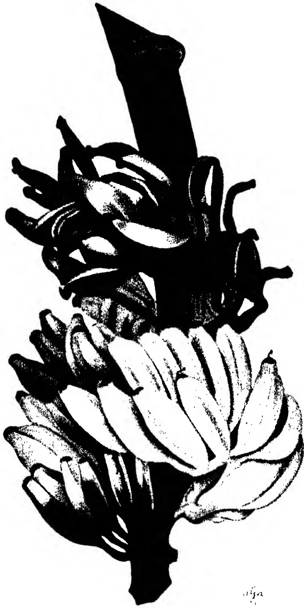
A high-contrast black and white illustration of a plantain fruit cluster. The cluster consists of several elongated, curved fruits hanging from a central stalk. Above the fruits, there is a developing flower cluster with several pointed, petal-like structures. The illustration is signed 'M. J. 1924' in the lower right corner.Plate VI. Anthracnose of Plantains
This image is a blank white page. It contains several small, dark specks which appear to be scanning artifacts or dust particles. There is no text, handwriting, or printed content on the page. 388capable, under favourable conditions, of causing a fresh infection. The spores are spread from such diseased fruits in wet weather by rain splashes and in dry weather by wind. The fungus is one which is normally a saprophyte, living on decaying vegetable matter, and it is only under favourable conditions of temperature and humidity that it becomes a parasite. It commonly lives as a saprophyte on dead plantain leaves and trash which can be found in all plantain gardens and it is obvious therefore that a complete eradication of the fungus would be impracticable.
The disease, so far as is known, occurs so rarely as to be negligible on varieties other than the Ash Plantain. In gardens where the Ash Plantain is grown, the fruit bunches should be watched in wet weather for the appearance of the disease. All diseased fruits should be removed as soon as the disease is seen in order to prevent the disease from spreading into the healthy 'hands' of the bunch. It is also suggested that when all the 'hands' are open, the main fruit stalk should be cut off as far back as the last 'hand' in order not to leave that part of the fruit stalk which will subsequently die and on which the fungus may live as a saprophyte.
It has been shown in India that spraying of the young developing fruits at the beginning of the wet season and repeating the spraying once a month until the bunches are picked, will prevent the appearance of the disease. The disease in Ceylon does not appear to be sufficiently common to warrant spraying as a general rule but, if the susceptible variety, the Ash Plantain, were grown on a commercial scale, spraying would not only be practicable but well worth while. Any efficient copper spray would prove to be satisfactory and details of the preparation and method of application of a cheap and reliable spray may be obtained from any Agricultural Instructor or from the writer.
It has been stated above that the fungus is common on dead leaves and decaying plantain trash. It follows therefore that the cleaner the cultivation, the less common the fungus and subsequently the less the likelihood of the occurrence of the disease. The disease is least common on plantains grown in gardens where careful and clean cultivation is practised.
389| Province, &c. | Disease | No. of Cases up to Date since Jan. 1st 1933 | Fresh Cases | Recoveries | Deaths | Balance III | No. Shot |
|---|---|---|---|---|---|---|---|
| Western | Rinderpest | ... | ... | ... | ... | ... | ... |
| Foot-and-mouth disease | 24 | 2 | 21 | 1 | 2 | ... | |
| Anthrax | ... | ... | ... | ... | ... | ... | |
| Rabies (Dogs) | 11 | ... | ... | 10 | ... | 1 | |
| Piroplasmosis | ... | ... | ... | ... | ... | ... | |
| Colombo Municipality | Rinderpest | ... | ... | ... | ... | ... | ... |
| Foot-and-mouth disease | 28 | ... | 27 | 1 | ... | ... | |
| Anthrax | 3 | ... | ... | 3 | ... | ... | |
| Rabies (Dogs) | 17 | 2 | ... | ... | ... | 17 | |
| Haemorrhagic Septicaemia | ... | ... | ... | ... | ... | ... | |
| Black Quarter | ... | ... | ... | ... | ... | ... | |
| Cattle Quarantine Station | Bovine Tuberculosis | ... | ... | ... | ... | ... | ... |
| Rinderpest | ... | ... | ... | ... | ... | ... | |
| Foot-and-mouth disease (Sheep & Goats) | 114 | 22 | 107 | 7 | ... | ... | |
| Anthrax (Sheep & Goats) | 69 | 3 | ... | 69 | ... | ... | |
| Central | Rinderpest | 65 | ... | 11 | 52 | ... | 2 |
| Foot-and-mouth disease | 3 | ... | 3 | ... | ... | ... | |
| Anthrax | 10 | ... | ... | 10 | ... | ... | |
| Black Quarter | ... | ... | ... | ... | ... | ... | |
| Rabies (Dogs) | ... | ... | ... | ... | ... | ... | |
| Southern | Rinderpest | ... | ... | ... | ... | ... | ... |
| Foot-and-mouth disease | 50 | ... | 50 | ... | ... | ... | |
| Anthrax | ... | ... | ... | ... | ... | ... | |
| Rabies (Dogs) | 1 | ... | ... | ... | ... | 1 | |
| Northern | Rinderpest | 1082* | 516 | 168 | 845 | 38 | 31 |
| Foot-and-mouth disease | 4 | ... | 4 | ... | ... | ... | |
| Anthrax | ... | ... | ... | ... | ... | ... | |
| Black Quarter | ... | ... | ... | ... | ... | ... | |
| Rabies (Dogs) | ... | ... | ... | ... | ... | ... | |
| Eastern | Rinderpest | ... | ... | ... | ... | ... | ... |
| Foot-and-mouth disease | 52 | ... | 51 | 1 | ... | ... | |
| Anthrax | ... | ... | ... | ... | ... | ... | |
| North-Western | Rinderpest | ... | ... | ... | ... | ... | ... |
| Foot-and-mouth disease | 3 | ... | 3 | ... | ... | ... | |
| Anthrax | ... | ... | ... | ... | ... | ... | |
| Pleuro-Pneumonia (Goats) | 3 | ... | ... | 1 | ... | 2 | |
| Rabies (Dogs) | 2 | 1 | ... | 1 | ... | 1 | |
| North-Central | Rinderpest | 898 | 54 | 159 | 714 | 4 | 21 |
| Foot-and-mouth disease | ... | ... | ... | ... | ... | ... | |
| Anthrax | ... | ... | ... | ... | ... | ... | |
| Uva | Rinderpest | ... | ... | ... | ... | ... | ... |
| Foot-and-mouth disease | ... | ... | ... | ... | ... | ... | |
| Anthrax | ... | ... | ... | ... | ... | ... | |
| Bovine Tuberculosis | 2 | ... | ... | ... | ... | 2 | |
| Sabaragamuwa | Rinderpest | ... | ... | ... | ... | ... | ... |
| Foot-and-mouth disease | ... | ... | ... | ... | ... | ... | |
| Anthrax | ... | ... | ... | ... | ... | ... | |
| Piroplasmosis | ... | ... | ... | ... | ... | ... | |
| Haemorrhagic Septicaemia | 3 | ... | ... | 3 | ... | ... | |
| Rabies (Dogs) | ... | ... | ... | ... | ... | ... |
* 443 cases occurred during April, 1933.
G. V. S. Office,
Colombo, 12th June, 1933.
M. CRAWFORD,
Govt. Veterinary Surgeon.
| Station | Temperature | Humidity | Amount of Cloud | Rainfall | ||||||
|---|---|---|---|---|---|---|---|---|---|---|
| Mean Maximum | Difference from Average | Mean Minimum | Difference from Average | Day | Night (from Minimum) | Amount | No. of Rainy Days | Difference from Average | ||
| Inches | Inches | |||||||||
| Colombo | 85.7 | -1.1 | 75.9 | -1.3 | 79 | 88 | 8.2 | 20.89 | 28 | + 6.20 |
| Puttalam | 86.6 | -0.9 | 76.4 | -2.1 | 78 | 91 | 7.3 | 11.07 | 25 | + 7.41 |
| Mannar | 88.3 | -1.6 | 78.3 | -2.0 | 76 | 86 | 8.4 | 2.78 | 14 | + 0.67 |
| Jaffna | 87.4 | -0.1 | 79.2 | -2.1 | 86 | 94 | 6.3 | 7.81 | 13 | + 5.98 |
| Trincomalee | 87.6 | -3.3 | 77.0 | -1.2 | 72 | 86 | 7.0 | 3.49 | 11 | + 0.75 |
| Batticaloa | 89.4 | -0.5 | 76.8 | -0.5 | 66 | 84 | 6.0 | 3.45 | 6 | + 1.62 |
| Hambantota | 84.9 | -1.3 | 75.3 | -1.6 | 80 | 91 | 6.7 | 10.60 | 25 | + 7.27 |
| Galle | 84.4 | -0.3 | 75.6 | -1.9 | 83 | 91 | 7.5 | 20.81 | 27 | + 9.31 |
| Ratnapura | 87.1 | -0.9 | 73.7 | -0.9 | 83 | 95 | 8.2 | 33.95 | 28 | + 15.44 |
| A'pura | 87.7 | -1.3 | 74.6 | -1.5 | 71 | 90 | 8.6 | 10.12 | 22 | + 6.55 |
| Kurunegala | 87.7 | -0.8 | 74.6 | -1.1 | 76 | 93 | 8.9 | 24.52 | 26 | + 17.79 |
| Kandy | 83.3 | -2.6 | 70.3 | -0.4 | 78 | 97 | 8.2 | 30.30 | 27 | + 24.45 |
| Badulla | 81.9 | -3.0 | 66.8 | +0.4 | 83 | 97 | 7.6 | 10.93 | 22 | + 6.26 |
| Diyatalawa | 75.5 | -3.3 | 63.2 | +1.4 | 76 | 87 | 8.4 | 14.26 | 22 | + 8.97 |
| Hakgala | 68.6 | -4.3 | 57.1 | -0.8 | 88 | 94 | 7.5 | 27.81 | 28 | + 20.60 |
| N'Eliya | 67.0 | -2.9 | 54.4 | +1.2 | 84 | 94 | 8.8 | 34.81 | 29 | + 27.78 |
The rainfall of May was above its average almost everywhere in Ceylon, the only deficits reported being from a few stations in the Eastern Province. Excess of rain was particularly well marked on the western slopes of the hills, where several stations recorded more than 40 inches above their May normals. Padupola reported not only the largest total rainfall for the month, 72.18 inches, but also the greatest excess above average, over 48 inches. Other stations reporting totals of more than 60 inches were Kenilworth Estate, Watawala, Theydon Bois and Blackwater Estates.
At many stations on the lower western slopes of the hills the rainfall this May was substantially above the highest monthly total recorded for any previous May. The monthly total at Padupola, 72.18 inches, has only once been exceeded there in any month of the year, (October, 1913, 74.97 inches), during the 62 years over which observations have been continued at that station.
More than 170 reports of rainfalls of over 5 inches in a day were received, of which 35 were over 8 inches. The largest daily fall reported was 11.85 inches at Padupola on the 21st-22nd. The great majority of these heavy falls occurred between the 21st and 25th, when unusually strong south-west monsoon conditions prevailed over Ceylon.
The weather during the first half of the month was of the intermonsoon type, with fairly heavy local afternoon or evening rains. About the 17th, however, a definite south-westerly gradient set in across the Island. Until the 21st this gave only moderately heavy rain, but for a week after that date, and particularly up to the 25th, the south-west of the Island experienced exceptionally heavy falls. Watawala, near the head of the Ginigathena Pass, reported over 46 inches of rain in these 7 days, of which over 35 inches fell in the first 4 days, 21st-25th.
As a result of the heavy rains in the Kelani Valley, there was considerable flooding in the river, a major flood, of practically 10 feet, being measured at Nagalagam Street. For several days there were also unusually high winds and stormy conditions at sea. About the 28th, weather conditions commenced to moderate again, though there was still appreciable rain, mainly in the south-west of the Island.
Temperatures, particularly during the day, were below normal, though not usually by large amounts. Humidity and cloud were both above average. Barometric pressure was above average, while wind was generally below average. Wind directions were, on the whole, south-westerly.
H. JAMESON,
Supdt., Observatory.
14 SEP
IMP. INST. AGRI.
The Agricultural Journal of
Ceylon
Founded 1881
Published by
The Department of Agriculture,
Peradeniya
Vol. LXXXI
17277/136
Containing Numbers 1 to 6,
July to December, 1933
| Number | Month | Pages |
|---|---|---|
| 1 | July | 1-72 |
| 2 | August | 73-134 |
| 3 | September | 135-204 |
| 4 | October | 205-270 |
| 5 | November | 271-336 |
| 6 | December | 337-398 |
| Page | Page | ||
|---|---|---|---|
| A | C | ||
| Agriculture and Lands, Report (under Standing Order 57) of the Executive Committee of | - 266 | Climatic and Soil requirements of Tea | - 372 |
| Agricultural Journal, a New | - 58 | Clove Industry in Zanzibar | - 112 |
| B | Colouring and Ripening of Fruit, Artificial | - 75 | |
| Black Beetle of Coconuts, Rhinoceros or | - 125 | Cost of Soil Erosion | - 249 |
| Burma Rice | - 36 | Cultivation Properties of Tropical Red Soils | - 187 |
| Buddings as Planting Material, What our latest views regarding ? | - 223 | Currystuffs, Notes on the Cultivation of | 129 |
| C | Currystuffs, On the Identity of some | - 288 | |
| Cacao, Ecuador | - 174 | D | |
| Cacao in the Dumbara Valley, a Preliminary Note on | - 207 | Departmental Notes | 67, 125, 202, 261, 380 |
| Cacao, Kind the Manufacturer Wants | - 240 | "Double-cut" Tapping Systems in Ceylon | - 153 |
| Cacao, Witch-Broom Disease of | - 170 | E | |
| Coconut Caterpillar | - 67 | Ecuador Cacao | - 174 |
| Coconuts, Practical Seed Selection of | - 101 | Editorial | 1, 73, 185, 205, 271, 387 |
| Coconuts, Red Weevil of | - 261 | Effect of Climate on the composition of Pasture Plants | - 195 |
| Coconut Research Scheme (Ceylon), Minutes of Meeting of the Board of Management of the | 64, 395 | F | |
| Coffee, Grafted | - 239 | Foods and Feeds, Vitamin A Content of | 308 |
| Coffee, Spraying of | - 379 | Forest Fires in relation to Soil Fertility | - 175 |
| Cauliflower in the Low-Country Districts of Ceylon, a Note on the Cultivation of | - 91 | Fruit, Artificial colouring and ripening of | - 75 |
| Citrus Fruits into Ceylon, Import trade in | - 356 | G | |
| Grazing grounds and their Improvement in Ceylon | - 273 |
| H | Page | P | Page |
|---|---|---|---|
| Hevea Clones, Proved | - 212 | Paddy Cultivation, Studies on, I | - 3 |
| How long do Seeds Retain their Vitality? | - 287 | Paddy Cultivation, Studies on, II | - 11 |
| Panama Disease of Plantains | - 330 | ||
| Papaw Selection | - 48 | ||
| Pasture Plants, Effect of Climate on the Composition of | - 195 | ||
| Pests and Diseases in Tobacco Seed Beds | - 291 | ||
| Pineapple, Notes on the Cultivation of | - 53 | ||
| Plantain Diseases, Oil Treatment of | - 86 | ||
| Practical Seed Selection of Coconuts | - 101 | ||
| Preliminary Note on Cacao in the Dumbara Valley, 1938. | - 207 | ||
| Proved Hevea Clones, II | - 212 | ||
| Potatoes, Sweet | - 246 | ||
| R | |||
| Red Weevil of Coconuts | - 261 | ||
| Reports, Meteorological 71, 184, 204, 270, 335, 398 | - 261 | ||
| Report of the Executive Committee of Agriculture and Lands under Standing Order 57 | - 266 | ||
| Returns, Animal Disease 70, 133, 203, 269, 334, 397 | - 266 | ||
| Reviews | 56, 58, 123 | ||
| Rhinoceros or Black Beetle of Coconuts | 125 | ||
| Rice Situation, World | - 178 | ||
| Rubber Research Scheme (Ceylon), Minutes of Meeting of the Board of Management of the | 60, 200, 327 | ||
| Rubber Plantations, Notes upon the Rejuvenating of Old | - 137 | ||
| S | |||
| Scientific Research to Agriculture, Value of | - 115 | ||
| Spraying of Coffee | - 379 | ||
| Studies on Paddy Cultivation, I | - 3 | ||
| Studies on Paddy Cultivation, II | - 11 | ||
| Soil Erosion, the Cost of | - 249 | ||
| Soils, Introduction to Tropical | - 56 | ||
| Soil Fertility, Forest Fires in Relation to | 175 | ||
| Soils, Tropical Red, Cultivation Properties of | - 187 | ||
| Sweet Potatoes | - 2 | ||
| K | |||
| Kind of Cacao the Manufacturer Wants | - 240 | ||
| M | |||
| Malaya, Tea Cultivation in the Highlands of | - 366 | ||
| Manure Pits | - 202 | ||
| Meteorological Reports 71, 184, 204, 270, 335, 398 | - 202 | ||
| Minutes of Meeting of the Board of Management of the Coconut Research Scheme (Ceylon) | 64, 395 | ||
| Minutes of Meeting of the Board of Management of the Rubber Research Scheme (Ceylon) | 60, 200, 327 | ||
| Minutes of Meeting of the Board of the Tea Research Institute of Ceylon | 255 | ||
| Mineral Deficiency in the Southern Coastal Belt of New South Wales | - 296 | ||
| Mycological Notes | - 36 | ||
| N | |||
| Nahor Seed Oil and Grained Soap | - 390 | ||
| New South Wales, Mineral Deficiency in the Southern Coastal Belt of | - 296 | ||
| Notes on the Cultivation of Pineapple | - 53 | ||
| Notes on the Cultivation of Currystuffs | 129 | ||
| Notes, Mycological | - 36 | ||
| ✓ Note on the Cultivation of the Cauliflower in the Low-Country Districts of Ceylon | - 91 | ||
| Notes on Low-Temperature Vulcanization | - 361 | ||
| Notes upon the Rejuvenating of Old Rubber Plantations | - 137 | ||
| O | |||
| Oncidium luridum, Lindl (Orchid) | - 48 | ||
| On the Identity of Some Currystuffs | - 283 |
| T | Page | V | Page |
|---|---|---|---|
| Tapping Systems in Ceylon, "Double-Cut" | - 153 | Value of Scientific Research to Agriculture | - 115 |
| Tea Cultivation in Tanganyika | - 108 | Vitamin A Content of Foods and Feeds | - 308 |
| Tea Cultivation in the Highlands of Malaya | - 366 | Vulcanization, Notes on Low-Temperature | - 361 |
| Tea, Climatic and Soil Requirements of | 372 | Water Hyacinth Problem in Ceylon | - 339 |
| Tea Research Institute of Ceylon, Minutes of Meeting of the Board of | - 255 | What are our Latest Views Regarding Buddings as Planting Material? | - 223 |
| Tropical Red Soils, Cultivation Properties of | - 187 | Witch-Broom Disease of Cacao | - 170 |
| Tropical Agriculture, Imperial College of | 95 | World Rice Situation | - 178 |
| Tobacco Seedbeds, Pests & Diseases in | - 291 | Z | |
| Zanzibar, Clove Industry in | - 112 |
| Facing page | Facing page | ||
|---|---|---|---|
| Oncidium luridum, Lindl. (Orchid) (Plate IV) | - 46 | Panama Disease of Plantains | - 271 |
| The Coconut Caterpillar (Nephantis serinopa) (Plate V) | - 67 | Plate I. A. Anethum graveolens | } - 286 |
| The Rhinoceros or Black Beetle of Coconuts | - 73 | B. Pimpinella Anisum | |
| Platform showing height of cuttings | - 148 | C. Carum Carvi | |
| Contour Platform on average lie of Land | 149 | D. Carum Copticum | |
| Contour Platform on Steep Land | - 150 | Plate II. A. Anethum Sowa | } - 287 |
| The Red Weevil of Coconuts | - 205 | B. Foeniculum vulgare | |
| C. Cuminum Cyminum | |||
| D. Carum Roxburghianum |
| Facing page | Facing page | ||
|---|---|---|---|
| Average Composition of the Paddy Crop (Plate I) | - 14 | Average amounts of Plant Food Constituents removed by the Paddy Crop in pounds per acre per annum (Plate III) | - 23 |
| Percentage Rates of Absorption of Nutrients by the Crop (Plate II) | - 17 | Yield in Kg. per tree per year of the Clones | - 235 |
The
Tropical Agriculturist
VOL. LXXXI
PERADENIYA, JULY, 1933.
No. 1.
| Page | |
|---|---|
| Editorial ... ... ... ... | 1 |
ORIGINAL ARTICLES
| Studies on Paddy Cultivation. I.—The Paddy Crop in Relation to Manurial Treatment. By J. C. Haigh, Ph.D., and A. W. R. Joachim, Ph.D. ... ... ... | 3 |
| Studies on Paddy Cultivation. II.—The Effect of Manures on the Composition of the Paddy Crop and Soil. By A. W. R. Joachim, Ph.D., S. Kandiah, Dip. Agric. Poona and D. G. Pandittesekere, Dip. Agric. Poona. ... ... | 11 |
| Burma Rice. By L. Lord, M.A. ... ... ... | 36 |
| Oncidium luridum, Lindl. By K. J. Alex. Sylva, F.R.H.S. ... | 46 |
SELECTED ARTICLES
| Papaw Selection ... ... ... ... | 48 |
| Notes on the Cultivation of the Pineapple ... ... | 53 |
REVIEWS
| Introduction to Tropical Soils ... ... ... | 56 |
| A New Agricultural Journal ... ... ... | 58 |
MEETINGS, CONFERENCES, ETC.
| Minutes of Fourteenth and Fifteenth Meetings of the Board of Management of the Rubber Research Scheme (Ceylon) ... | 60 |
| Minutes of the Twentieth and Twenty-first Meetings of the Board of Management of the Coconut Research Scheme (Ceylon) ... ... ... | 64 |
DEPARTMENTAL NOTES
| The Coconut Caterpillar ... ... ... | 67 ✓ |
RETURNS
| Animal Disease Return for the month ended June, 1933. ... | 70 |
| Meteorological Report for the month ended June, 1933. ... | 71 |
Of great interest to those engaged in the
cultivation of plantation crops.
Being a reprint of articles published in
The Tropical Agriculturist by the
Staff of the Department of
Agriculture, Ceylon.
34 Illustrations and Figures
Price Rs. 5/-
Obtainable from:
THE MANAGER, PUBLICATION DEPÔT,
PERADENIYA.
July, 1933
THE Department of Agriculture already has available some results of experiments which have indicated the beneficial effects on local paddy yields obtained from the application of certain manures and of such cultural practices as transplanting, but the reasons for these increased yields have not hitherto been investigated in Ceylon.
The Divisions of Chemistry and of Economic Botany have started in collaboration a further series of three main field experiments with the objects of ascertaining, if possible, what conditions are necessary for the best results to be obtained and of getting answers to certain questions indicated elsewhere.
The first two papers appearing in this issue give details of the first main experiment carried out during the Maha 1931-32 and Yala 1932 seasons. The results of manurial treatments on the paddy crop are given, and indicate, so far as they go, first, that phosphoric acid is the limiting factor of paddy yields under the conditions of the experiment and, it may be stated, under Ceylon conditions generally; and secondly, that considerable amounts of plant food constituents are either taken up by the crop or lost from the soil under the irrigation system of paddy cultivation. The need for replacing some at least of the more essential constituents required by this crop is therefore indicated.
2The second main experiment is being conducted during the Maha 1932-33 and Yala 1933 seasons when the efficiency of different systems of cultivation, such as transplanting, broadcasting, etc., with and without manuring are being compared. Furthermore, cost figures are being kept in order to determine, as far as possible, the most economic system to adopt.
In the course of the third experiment to be carried out during the Maha 1933-34 and Yala 1934 seasons it is proposed to investigate further certain points arising from the results of the first experiment detailed in this issue. One of these points is the question as to the optimum time of application of fertilisers to local paddy crops. There are indications that smaller doses of manure, one of which would be applied just before flowering, may be found to give better results than the application of one large dose at sowing. Another point about which further information is required is the question as to which is the most suitable phosphatic manure to be used for paddy in order to secure maximum efficiency. The results of the two remaining experiments will be awaited with interest and should be of considerable value to paddy growers in Ceylon.
3J. C. HAIGH, PH. D.,
ECONOMIC BOTANIST,
AND
A. W. R. JOACHIM, PH. D.,
AGRICULTURAL CHEMIST,
DEPARTMENT OF AGRICULTURE, CEYLON
THIS paper is the first of a series of studies on paddy cultivation in Ceylon. It has already been determined by experiment that manuring and transplanting of paddy give statistically significant increases of yield, and that the increases are economic, but it has never been asked how and why the increases take place, or whether the particular processes (which in the case of manuring are based on temperate experience) are the best that can be applied. It is the object of the present series of papers to answer some of these questions; to enquire of the plant itself whether the manure it is getting is the best mixture applied at the most favourable time, or whether the methods of cultivation are really responsible for increase in yield, and why.
The method to be adopted is to carry out randomised and replicated field experiments and at the same time to observe, by chemical analysis, what is happening in the plant and in the soil throughout the season. The first of these experiments has just been completed, and is described in the following pages; the more technical chemical data are omitted and appear separately in the second paper of the series. The experiment was the comparatively simple one of testing the effects of green manure (Tithonia diversifolia) at the rate of one ton per acre, superphosphate at the rate of one hundredweight per acre, a broad ratio ammonium phosphate at ninety-six and half pounds per acre, and a mixture of green manure and superphosphate at the above rates, against one another and against a control that received no manure. The experiment was carried out at the Experiment Station, Peradeniya during the Maha 1931-32
4season, in acre plots with borders, randomised and replicated six times. Unfortunately one replication had to be discarded during the course of the experiment. The trial was carried on during the Yala season for the observation of residual effects. At the same time crop and soil samples were taken at all stages of growth and analysed, so as to determine the rate of absorption of fertiliser by the plant and the rate of loss from the soil. As Crowther says (7) "The elementary composition of the growing plant changes markedly with the stage of growth, and the key to many practical problems of manuring is to be found in the study of the uptake of nutrient elements in relation to the stage of development of the crop." The absorption of fertiliser by the crop should be accompanied by corresponding soil losses, but it is necessary to take soil analyses to confirm the assumption. Samples of both soil and plants were taken at various stages of the crop, seven such samples being taken during the Maha season and five during Yala. At each sampling analyses were made of nitrogen, dry matter, ash, phosphoric acid, potash, lime and silica in the whole plant and in leaf and stem and panicle or grain separately. By "whole plant" is meant the above-ground portions only; a very small portion of the food stays in the roots, and this is returned to the soil before the next crop is sown—the actual soil losses are in the portions of the plant harvested. The soil samples were analysed for total carbon and nitrogen contents, exchangeable bases (total potash, lime and ammonia), soluble phosphoric acid, and hydrogen ion concentration.
The same procedure will be followed in succeeding experiments of the series. The second experiment is now in progress, having been started during Maha 1932-33 and continued during Yala 1933. It compares the efficiency of transplanting, broadcasting and thinning and broadcasting, in each case with and without manure, giving six treatments which are randomised and replicated five times. The results will give ten effective replications of systems of sowing and fifteen of the efficiency of manuring. At the same time costs are being taken so that the economics of the various methods can be determined. The third experiment of the series will commence in Maha 1933-34, and will be an outcome of the experiment here recorded. It will endeavour to determine the relative efficiencies of different phosphatic fertilisers and the optimum time of application of fertilisers generally.
5The results of cultivation in the first experiment are given in Tables I and II. From Table I it is seen that the application of a combination of nitrogen and phosphoric acid produces a considerable increase in yield, and that the application of these constituents separately results in a smaller increase. The results are significant, and the Standard Error of Mean Differences of 7.3 per cent. indicates that the odds are 100 to 1 that treatments 1, 2 and 3 are all significantly better than the control, that 1 and 2 are definitely better than 4 and that 1 is definitely better than 3; in other words, the results of previous experiments (5) are confirmed that phosphoric acid is the most important requirement of Ceylon paddy soils, and that the benefit to be derived from its application can be increased by the addition of some form of nitrogen. The results of Yala cultivation again show an increased yield where phosphoric acid had been added, but the increases are much less than in the previous crop, and are not significant. The lower yield is accompanied by a less amount of fertiliser constituents in the soil and also, as will be seen from the chemical data, by a lower percentage of these constituents in the plant. It will also be noted that the mean yield per plot of the control is 50 per cent. greater in the Maha season than in the Yala, but this is at least in part accounted for by the fact that the Maha crop is of months' duration whereas the age of the Yala crop is only months.
It now remains to discuss the general deductions to be drawn from the chemical data, taken in conjunction with the figures tabled above. The figures, supported as they are by previous results and by the results of other workers, demonstrate the value of manuring. " 'The inexhaustible richness of tropical soils' is but seldom found in Nature" and "unless fertilisers are applied to the soil no tropical crop can for long continue to give high yields" (6). It remains to be seen, however, whether the manures applied are in the form best suited for the work required of them, and whether they are being applied at the time when they will confer the greatest benefit on the crop.
It is obvious from the chemical data that (a) except in regard to dry matter, the percentage constituents of the crop generally diminish with advancing crop growth during both Maha and Yala, and are lower in the latter season than in the former. The percentage of phosphoric acid in the crop at any time is low when compared with that found in some countries, e.g. Hawaii (2), and is due to the low phosphoric acid content of our soils. (b) The composition of the crop does not show marked
6variation with treatment, and the effect of the fertiliser appears to be directed more towards increasing crop yield than to modifying its composition. Ammonium phosphate has, however, had the effect of increasing the percentage of phosphoric acid in the crop throughout the Maha season. (c) Under Peradeniya conditions the crop at flowering time has absorbed less than 50 per cent. of the nitrogen and phosphoric acid contained at harvest in the Maha crop, and on the average only about 30 per cent. of these constituents in the Yala crop. The lower Yala rates of absorption are probably connected with a shorter pre-flowering period (79 days against 112 days). The application of smaller doses of manure, one of which would be just before flowering, may be found to give better results. (d) When nitrogen is applied as ammonium phosphate it is totally absorbed, whereas when applied as green manure it is assimilated only to the extent of two-thirds. Where no nitrogen is applied the crop has drawn on the store of soil nitrogen, large losses from which are observed as a result of cultivation. (e) Phosphoric acid in the form of soluble fertiliser is absorbed by the crop to a total extent of only 20 to 25 per cent. of the quantity applied. Of the amount absorbed 80 to 85 per cent. is found in the Maha crop. In view of the fact that soluble phosphates are readily converted in paddy soils into insoluble compounds with hydrated iron and aluminium oxides, the result is not unexpected. (f) The soil data show that there is no noticeable difference between the water-soluble phosphoric acid contents of phosphoric-acid-treated and non-treated soils. The probability of "solid phase" feeding of phosphoric acid by the paddy plant is suggested. Viewed in the light of the above statements, the use of bonemeal as a fertiliser for paddy would thus appear to offer advantages. (g) The grain at harvest contains on the average 71 per cent. of the nitrogen and 82 per cent. of the phosphoric acid of the whole crop, while the straw has 86 per cent. of the potash and 78 per cent. of the lime. Nitrogen and phosphoric acid are thus the dominant fertilising constituents for grain production. (h) The amounts of fertilising constituents removed annually in the crop per acre are approximately 45 lb. nitrogen, 60 lb. potash, 15 lb. phosphoric acid and 25 lb. lime. The need for replacing these constituents if high yields are to be maintained is apparent. (i) The soil losses in nitrogen and calcium are considerably higher than the amounts of these constituents found in the crop. Denitrification and perhaps leaching of nitrogen, and leaching of calcium are responsible for the losses. The amount of potassium
7found in the crop is almost exactly identical with the exchangeable potassium lost from the soil. (j) The exchangeable ammonia content of the soil falls with increasing crop growth. It is generally higher in Maha than in Yala, and in the latter season does not vary to any appreciable extent from plot to plot. (k) The hydrogen ion concentration of the soil increases slightly on puddling, but diminishes as crop growth advances; the final is slightly lower than the original figure.
Phosphoric acid is the limiting factor determining crop yield on Ceylon paddy soils. This is apparent from the results and is in accord with previous findings. When all plots are approximately equivalent in phosphoric acid content, nitrogen (or more correctly available nitrogen in the form of replaceable ammonia) becomes the limiting factor. This is seen from both seasons' results—from the Maha crop, where the addition of readily available nitrogen gives a significant increase over the addition of phosphoric acid alone, and in the Yala, where treatments 1 to 3 started with a small residue of phosphoric acid but with no available nitrogen, and no significant differences were obtained. The higher average yield during Maha is probably due to a combination of three factors, the longer period of growth, the higher replaceable ammonia content and the greater available phosphoric acid content of the soil; the influence of variety (Marwi was used for Maha and Heenati for Yala) must however not be forgotten.
Previous workers are in conflict over the optimum time of application of fertilisers. Sahasdrabudhe (4) suggests that manure should be applied in three stages—at transplanting, before flowering and in the milk stage, but he appears to be most concerned with the loss of fertiliser by leaching. If that were the main factor one would agree with him, but the rate of availability of the manure must be taken into account, and late application of manure may result in some being still in a non-assimilable form by the time the crop is harvested. On the other hand Kelley and Thompson (1) advocate the early application of manure on the ground that the greater part of the fertiliser constituents are absorbed during the first two-thirds of the plant's life. The figures do not agree with those obtained in the present experiment, and it is obvious that the problem requires further investigation. It has been stated above that only 20 to 25 per cent. of phosphoric acid reappears in the plant. Of that quantity it
8is assumed that a small amount becomes available at once and that the rest is locked up in a form which, while not immediately available, becomes so during the life of the plant. The optimum results will be obtained when the immediately-available portion is completely absorbed and the slowly-available portion is made available before harvest; whether those results will be obtained by applying one dose or several doses has yet to be determined and will be the subject of the next experiment.
TABLE I
PERADENIYA PADDY STATION
Season Maha 1931-32
Manurial Trial on 100 Acre Plots
Yields in Pounds
| Treatment | Replications | Total | Mean | Per cent. | Remarks | ||||
|---|---|---|---|---|---|---|---|---|---|
| a | b | c | d | e | |||||
| Ammonium phosphate (wide ratio) 96½ lb./acre |
23.1 | 28.4 | 26.6 | 26.0 | 23.7 | 127.8 | 25.6 | 159.7 | Applied after final levelling |
| Superphosphate 1 cwt./acre + Green manure 1 ton/acre |
18.2 | 27.6 | 22.5 | 22.4 | 21.0 | 111.7 | 22.3 | 139.6 | Applied 7 days before transplanting |
| Superphosphate 1 cwt./acre | 21.2 | 24.2 | 22.1 | 20.4 | 16.7 | 104.6 | 20.9 | 130.7 | do |
| Green manure 1 ton/acre | 21.0 | 25.2 | 17.7 | 16.8 | 11.4 | 92.1 | 18.4 | 115.1 | do |
| Control | 13.4 | 25.2 | 16.0 | 12.1 | 13.3 | 80.0 | 16.0 | 100 | |
| Block totals | 96.9 | 130.6 | 104.9 | 97.7 | 86.1 | 516.2 | 20.6 | ||
Analysis of Variance
| Degrees of Freedom | Total Variance | Mean Variance | Standard Deviation | log. Standard Deviation | Standard Error of the Difference of Means | |
|---|---|---|---|---|---|---|
| Blocks | 4 | 223.1984 | ||||
| Treatments | 4 | 268.1624 | 67.0406 | 8.188 | 2.1027 | |
| Experimental Error | 16 | 91.5416 | 5.72135 | 2.392 | 0.8722 | 7.3% |
| Total | 24 | 582.9024 | Z = 1.2305 |
1% point is 0.7814; Z is significant
10TABLE II
PERADENIYA PADDY STATION
Season Yala 1932
Manurial Trial on 100 Acre Plots
Residual Effects
Yields in Pounds
| Treatment | Replications | Total | Mean | Per cent. | Remarks | |||||
|---|---|---|---|---|---|---|---|---|---|---|
| a | b | c | d | e | ||||||
| Ammonium phosphate | 9.5 | 9.6 | 11.8 | 10.0 | 12.4 | 53.3 | 10.7 | 103.2 | ||
| Superphosphate | ||||||||||
| + Green Manure | 9.8 | 15.0 | 10.7 | 9.9 | 11.1 | 56.5 | 11.3 | 109.3 | ||
| Superphosphate | 10.4 | 13.2 | 11.8 | 11.4 | 11.9 | 58.7 | 11.7 | 113.5 | ||
| Green manure | 9.2 | 7.1 | 8.5 | 7.7 | 12.2 | 44.7 | 8.9 | 86.5 | ||
| Control | 11.1 | 12.2 | 10.8 | 7.3 | 10.3 | 51.7 | 10.3 | 100 | ||
| Block totals | 50.0 | 57.1 | 53.6 | 46.3 | 57.9 | 264.9 | 10.6 | Treatments appear in the same order as in the Maha records. Order of merit 3, 2, 1, 5, 4. | ||
Analysis of Variance
| Degrees of Freedom | Total Variance | Mean Variance | Standard Deviation | log. Standard Deviation | Standard Error of the Difference of Means | |
|---|---|---|---|---|---|---|
| Blocks | 4 | 19.0136 | ||||
| Treatments | 4 | 23.0816 | 5.7704 | 2.402 | 0.8763 | |
| Experimental Error | 16 | 38.8944 | 2.4309 | 1.559 | 0.4441 | 9.3% |
| Total | 24 | 80.9896 | Z = 0.4322 |
5 % point . is 0.5505; Z is not significant
11A. W. R. JOACHIM, PH. D.,
(AGRICULTURAL CHEMIST)
AND
S. KANDIAH, (DIP. AGR., POONA) AND
D. G. PANDITTESEKERE, (DIP. AGR., POONA),
(ASSISTANTS IN AGRICULTURAL CHEMISTRY)
THE preceding article in this issue of The Tropical Agriculturist (1) deals with the general results obtained from the first of a series of investigations on the science of paddy cultivation. In this paper the analytical data relative to it will be detailed and discussed. The data are presented in a number of tables, all but two of which are embodied in the paper itself. The latter owing to their size are appended at the end. Only the more relevant analytical results have been shown in the tables. For the rest average figures have been quoted. The investigation was carried out during the Maha 1931 and Yala 1932 crop seasons i.e. from October 1931 to September 1932, but the analytical work was completed only recently. The crop yield figures are not included in this paper as they are dealt with in the previous one, but they have been utilized in the calculation of the total constituents removed in the crop from the soil at harvest. For the same reason details of design and layout of the experiment have been omitted.
A number of investigations on the absorption of fertilizing constituents by the paddy plant has been carried out by previous workers, but none of them has been as comprehensive as this claims to be. Thus Kelley and Thompson in Hawaii (2) studied the composition of the plant in relation to fertilizer treatment and the absorption of nutrients by the plant at different stages of growth, but not the soil changes occurring simultaneously.
12Sen (3) confined his attention to the investigation of the absorption of nutrients by the plant as grown without manurial treatment under normal conditions in some district in Bengal. The findings of these two workers differed from those of Sahasdrabudhe (4), who more recently investigated the problem in a district of the Bombay Presidency, and the present authors in regard to the rate of assimilation of fertilising constituents. Kelley and Sen found that by flowering time practically all the constituents had been absorbed, while the present investigation reveals the fact that under local conditions, as in Bombay, the paddy plant continues to assimilate its constituents up to the full ripening period and does not cease to do so at flowering. That environmental factors—differences in cultural practice, soil and climatic condition as well as variety of seed sown—are responsible for these apparently contradictory conclusions is borne out by the fact that field experiments (5) confirmed Kelley's as well as Sahasdrabudhe's conclusions. Kelley found that a single application of sulphate of ammonia before sowing was preferable to the application of the same quantity in two or three doses, while Sahasdrabudhe has shown that the best results from manuring paddy are obtained by the application of the fertilizer in three doses, one at transplanting, one before flowering and the third before the milk stage. The point at issue is to be tested out in the field under local conditions and if the chemical data presented in this paper are a guide, an application of fertilizer under Peradeniya conditions just before flowering is likely to be beneficial.
The objects of the investigation under discussion are:
(1) The comparative study of the intake of nutrients by the paddy plant when grown at Peradeniya during two crop seasons (the Maha and the Yala extending over a period of about a year and under different manurial treatments and the simultaneous changes occurring in the soil as a result of such environmental and crop variations; (2) to determine the fertilizers most suitable for paddy under local conditions. The latter aspect of the investigation, more particularly from the statistical standpoint, has been dealt with in the previous paper. This investigation is in advance of those of a like nature previously undertaken both in regard to its wider scope as regards crop analyses and the simultaneous study of the soil changes undergone.
13The crop samples were obtained by uprooting at random an equal number of culms from each plot treated alike. Larger numbers were taken at the earlier samplings. Only the above-ground portion of the crop was taken for analysis, as the main object in view was the determination of the amounts of fertilizing constituents removed from the soil by the crop. In the later stages of growth separate analyses were made of the different parts of the plant. The soil samples were obtained from a mixture of six-inch soil borings, two from each replication. The difficulty experienced in securing the samples when the soil was very soft was overcome by placing the hand under the mouth of the borer before drawing it up.
The samples were analysed for the constituents stated below and by methods indicated against each.
Crop.—Dry matter on whole plant, nitrogen by the Kjeldhal method, total ash, silica, potash and lime by the ordinary analytical methods, and phosphoric acid by Lorenz's method.
Soil.—Carbon by Robinson's method, hydrogen ion () by the quinhydrone electrode, replaceable ammonia by the Robinson McLean method, total replaceable bases by a combination of Bray and Wilhite's and Rice Williams' methods, replaceable lime by the ordinary method and replaceable potassium by Milne's cobalti-nitrite method. Acknowledgment is here made to Dr. M. L. M. Salgado for advice on methods of replaceable base determinations.
The soil of the area on which these experiments were conducted is a medium loam, fairly well supplied with nitrogen and available potash, but, like most Ceylon soils, poor in available phosphoric acid as could be seen from Table I below. It has probably been under paddy cultivation, often times carrying two crops a year, for several decades and there is little likelihood of its having received any fertilizer treatment during the whole of this period, barring the last few years.
14TABLE IAverage Composition of Paddy Soils at Gannoruwa, Peradeniya
| Mechanical Composition | Per cent. | ||
|---|---|---|---|
| Moisture | ... | ... | 4.0 |
| Loss on ignition | ... | ... | 7.4 |
| Gravel | ... | ... | 6.0 |
| Coarse sand | ... | ... | 17.1 |
| Fine sand | ... | ... | 33.6 |
| Silt | ... | ... | 13.6 |
| Clay | ... | ... | 18.3 |
100.00 |
|||
| Chemical Composition | Per cent. | ||
|---|---|---|---|
| Nitrogen | ... | ... | .155 |
| Available potash | ... | ... | .015 |
| Available phos. acid | ... | ... | .008 |
| Reaction ( ) | ... | ... | 6.5 |
The results of the crop analyses are expressed in percentages of dry matter at 100°C. The total constituents in the crop material at each sampling have been calculated in grams per ten plants. In the tables the letter W stands for whole plant, L for leaf and stem, P for panicle, S for straw, G for grain and C for chaff. The data will be examined for each season in turn, the composition of the crop and the total constituents absorbed being separately considered. The combined results will then be discussed. Some of the results are graphically represented in Plates I, II and III.
The analytical composition of the above-ground part of the crop at the more important stages of its growth is shown for convenience of reference in a single table (Table II) at the end of the paper. Table III shows the average composition of the crop right through growth. The observations made are generally based on the average data of all the treatments.
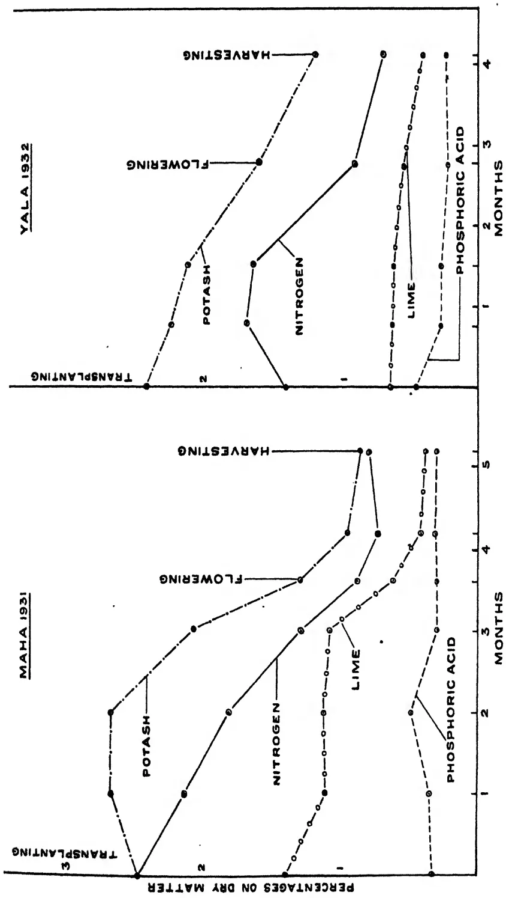
The figure consists of two side-by-side line graphs. The left graph is for MAHA 1931 and the right graph is for YALA 1932. Both graphs share the same axes: the vertical axis is labeled 'PERCENTAGES ON DRY MATTER' and the horizontal axis is labeled 'MONTHS' with markers at 1, 2, 3, and 4. Four data series are plotted in each graph: POTASH (dashed line with solid circles), NITROGEN (solid line with solid circles), LIME (dotted line with open circles), and PHOSPHORIC ACID (dashed line with open circles). Key stages are marked on the graphs: 'TRANSPLANTING' at month 0, 'FLOWERING' at approximately month 2.5, and 'HARVESTING' at month 4. In MAHA 1931, Potash peaks at ~25% at month 2, Nitrogen peaks at ~15% at month 3, Lime peaks at ~10% at month 4, and Phosphoric Acid peaks at ~10% at month 4. In YALA 1932, Potash peaks at ~15% at month 1.5, Nitrogen peaks at ~10% at month 2, Lime peaks at ~15% at month 3.5, and Phosphoric Acid peaks at ~10% at month 4.
| Month | MAHA 1931 | YALA 1932 | ||||||
|---|---|---|---|---|---|---|---|---|
| Potash | Nitrogen | Lime | Phosphoric Acid | Potash | Nitrogen | Lime | Phosphoric Acid | |
| 0 | 0 | 0 | 0 | 0 | 0 | 0 | 0 | 0 |
| 1 | 15 | 5 | 5 | 5 | 5 | 5 | 5 | 5 |
| 2 | 25 | 10 | 5 | 5 | 15 | 10 | 5 | 5 |
| 3 | 15 | 15 | 10 | 10 | 10 | 10 | 10 | 10 |
| 4 | 10 | 15 | 10 | 10 | 15 | 15 | 15 | 10 |
Plate I.
Showing average composition of the paddy crop.
15TABLE III
Average Percentage Constituents in Whole Plant
and Parts of Plant
Maha 1931
| Constituent | Transplanting (7.10.31) |
One month after (12.11.31) |
Two months after (11.12.31) |
Three months after (11.1.32) |
Flowering (28.1.32) | Half-ripe (17.2.32) | Harvesting (22.3.32) | |||||||
|---|---|---|---|---|---|---|---|---|---|---|---|---|---|---|
| W | L | P | W | L | P | W | S | G | C | |||||
| Nitrogen | 2.49 | 2.15 | 1.81 | 1.29 | 0.87 | 0.87 | 0.90 | 0.74 | 0.51 | 1.01 | 0.85 | 0.40 | 1.19 | 0.65 |
| Dry Matter | 20.0 | 17.9 | 16.9 | 25.6 | 30.2 | 28.9 | 42.5 | 37.6 | 27.8 | 65.0 | 55.4 | 35.7 | 87.3 | 84.3 |
| Ash | 16.4 | 14.8 | 14.9 | 14.3 | 12.6 | 12.7 | 11.8 | 11.6 | 14.2 | 8.50 | 12.0 | 17.9 | 7.40 | 17.5 |
| Phos. Acid | 0.39 | 0.35 | 0.47 | 0.29 | 0.29 | 0.30 | 0.29 | 0.31 | 0.13 | 0.54 | 0.30 | 0.07 | 0.48 | 0.28 |
| Potash | 2.46 | 2.67 | 2.68 | 2.06 | 1.28 | 1.43 | 0.39 | 0.95 | 1.43 | 0.38 | 0.80 | 1.47 | 0.30 | 0.59 |
| Lime | 1.41 | 1.11 | 1.12 | 1.07 | 0.61 | 0.67 | 0.25 | 0.41 | 0.65 | 0.12 | 0.39 | 0.63 | 0.22 | 0.21 |
| Silica | 9.40 | 8.10 | 9.00 | 9.10 | 9.30 | 9.20 | 9.80 | 8.50 | 9.80 | 6.90 | 9.00 | 13.2 | 5.70 | 15.6 |
An examination of these tables and of the complete data indicates that:
(1) The average percentage constituents of the above-ground portion of the crop generally fall or remain constant with increasing age, except in regard to dry matter.
(2) The fall is greatest with nitrogen (from 2.49 to .85 per cent.) and potash (2.46 to .80 per cent.) Phosphoric acid remains fairly constant, more particularly towards the end of the growing period. Lime shows a fairly appreciable fall, but the ash contents show only a slight decline. Silica percentages remain constant.
(3) The percentages of phosphoric acid in the crop are low compared with those found in some other countries, e.g. Hawaii (2). This is correlated with a poor phosphoric acid content in the soil.
(4) In general no very marked differences are observed between the composition of the crop from the treated and untreated plots, especially at the later stages of growth. The effect of the fertilisers would appear to be directed more towards increasing crop yield than in modifying its composition.
(5) In regard to phosphoric acid however, the effect of ammonium phosphate is distinct; the crop from the plots treated with this fertiliser containing highest percentages of the constituent throughout growth. This may be attributed to the
16comparatively large quantity of phosphoric acid so applied. The crops from the control and green manure plots show lowest phosphoric acid contents. Phosphoric acid is apparently the limiting factor of crop yield under local conditions.
(6) The potash contents of the differently treated crops are very variable and so are the lime contents in the early stages of growth. Towards the end of the growing period, there are no differences in the lime percentages of the crop from the different plots.
(7) At flowering, the leaf and stem and panicle contain about equal proportions of nitrogen and phosphoric acid. The potash and lime contents are however much higher in the leaf and stem than in the panicle as in the later growth stages.
(8) At the half-ripe stage, the panicle contains much higher percentages of nitrogen, phosphoric acid and dry matter than the leaf and stem. The reverse is the case in regard to potash and lime. There is, therefore, a steady transference of nitrogen and phosphoric acid from the rest of the plant to the grain, while the potash and lime are concentrated in the vegetative portions of the plant.
(9) At harvest, as would be expected, the nitrogen and phosphoric acid contents are highest in the grain and least in the straw. The opposite is the case with the other two constituents.
(10) At this stage, the highest nitrogen percentage in both grain and straw is found in the crop from the control and the green manure plots, while phosphoric acid is at a maximum in both grain and straw in the ammonium phosphate treated crop. The highest potash and lime contents are in the crop from the superphosphate plots.
In Table IV are set out the average amounts of fertilising constituents in grams per ten plants at the different stages of growth. Table V shows the average percentage rates of absorption of nutrients at these growth stages as compared with the average amounts of the constituents found in the crop at harvest. The percentage distribution of the nutrients in the different parts of the crop at the later stages of growth are also presented in this table.
17TABLE IV
Average Total Constituents in Gms per Ten Plants
Maha 1931
| Constituent | Transplanting | One month after | Two months after | Three months after | Flowering | Half-ripe | Harvesting | C | ||||||
|---|---|---|---|---|---|---|---|---|---|---|---|---|---|---|
| W | L | P | W | L | P | W | S | G | ||||||
| Nitrogen | 0.02 | 0.04 | 0.18 | 0.48 | 1.24 | 1.06 | 0.19 | 1.51 | 0.57 | 0.95 | 2.56 | 0.55 | 2.00 | 0.05 |
| Dry Matter | 0.85 | 2.05 | 9.50 | 30.8 | 144 | 124 | 20.8 | 205 | 112 | 93.7 | 299 | 124 | 167 | 7.00 |
| Ash | 0.14 | 0.30 | 1.56 | 5.24 | 18.2 | 15.7 | 2.50 | 23.8 | 15.9 | 8.00 | 35.9 | 22.2 | 12.5 | 1.22 |
| Phos. Acid | .003 | 0.01 | 0.06 | 0.11 | 0.42 | 0.36 | 0.06 | 0.64 | 0.14 | 0.50 | 0.92 | 0.08 | 0.82 | 0.02 |
| Potash | 0.02 | 0.05 | 0.26 | 0.76 | 1.85 | 1.77 | 0.06 | 2.02 | 1.66 | 0.86 | 2.87 | 1.82 | 0.51 | 0.04 |
| Lime | 0.01 | 0.02 | 0.11 | 0.89 | 0.89 | 0.83 | 0.06 | 0.96 | 0.72 | 0.24 | 1.15 | 0.77 | 0.37 | 0.01 |
| Silica | 0.06 | 0.17 | 1.80 | 3.40 | 13.4 | 11.3 | 2.10 | 17.4 | 11.0 | 6.40 | 26.9 | 16.3 | 9.55 | 1.10 |
TABLE V
Average Percentage Rates of Absorption by Whole Plant
and Parts of Plant
Maha 1931
| Constituent | One month after | Two months after | Three months after | Flowering | Half-ripe | Harvesting | C | |||
|---|---|---|---|---|---|---|---|---|---|---|
| L | P | L | P | S | G | |||||
| Nitrogen | 0.9 | 7.3 | 20.1 | 47.8 | 58.3 | — | 100 | — | — | — |
| 85.0 | 15.0 | 37.5 | 62.5 | 21.2 | 77.0 | 1.8 | ||||
| Dry Matter | 0.7 | 3.2 | 12.3 | 48.2 | 68.3 | — | 100 | — | — | — |
| 85.7 | 14.3 | 54.4 | 45.6 | 41.6 | 56.0 | 2.4 | ||||
| Ash | 0.8 | 4.3 | 14.7 | 50.6 | 66.4 | — | 100 | — | — | — |
| 86.3 | 13.5 | 66.4 | 33.6 | 61.8 | 34.7 | 3.5 | ||||
| Phos. Acid | 0.8 | 6.8 | 11.9 | 45.7 | 69.6 | — | 100 | — | — | — |
| 85.7 | 14.3 | 21.9 | 78.1 | 8.8 | 89.3 | 1.8 | ||||
| Potash | 2.5 | 10.8 | 31.9 | 78.0 | 85.2 | — | 100 | — | — | — |
| 95.6 | 4.4 | 82.1 | 17.9 | 77.2 | 21.1 | 1.7 | ||||
| Lime | 2.0 | 9.1 | 34.1 | 77.4 | 83.4 | — | 100 | — | — | — |
| 93.6 | 6.4 | 85.8 | 14.2 | 66.8 | 32.0 | 1.2 | ||||
| Silica | 0.6 | 4.8 | 12.5 | 49.7 | 64.7 | — | 100 | — | — | — |
| 88.4 | 11.6 | 63.2 | 36.8 | 60.6 | 35.3 | 4.1 | ||||
The following observations are made from a study of the data:
(1) At flowering, on the average only about 48 per cent. of the nitrogen and dry matter, 51 per cent. of the ash and 46 per cent. of the phosphoric acid found at harvest have been taken up by the crop. Of these amounts, 85 per cent. is in the stem and leaf and the balance in the panicle. On the other hand 78
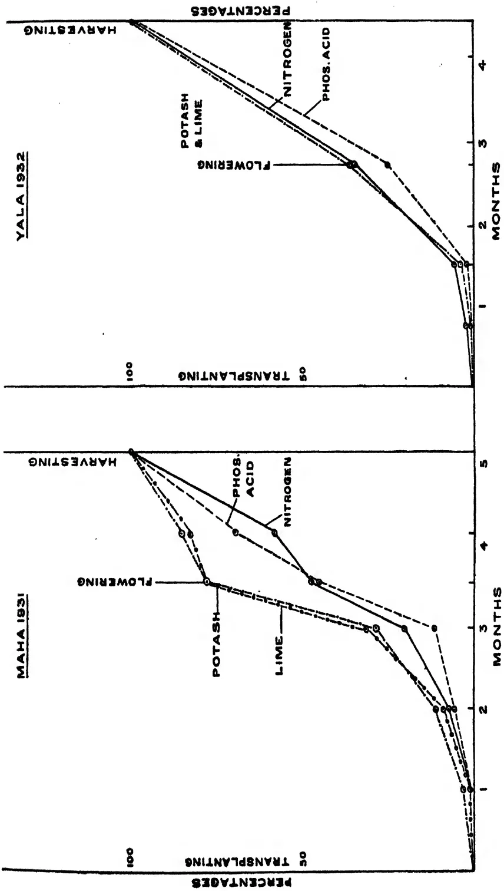
MAHA 1931
| Months | Nitrogen (%) | Phos. Acid (%) | Lime (%) | Potash (%) |
|---|---|---|---|---|
| 1 | ~10 | ~10 | ~10 | ~10 |
| 2 | ~25 | ~25 | ~25 | ~25 |
| 3 | ~35 | ~35 | ~35 | ~35 |
| 4 | ~45 | ~45 | ~45 | ~45 |
| 5 | ~55 | ~55 | ~55 | ~55 |
YALA 1932
| Months | Nitrogen (%) | Phos. Acid (%) | Potash & Lime (%) | Flowering (%) |
|---|---|---|---|---|
| 1 | ~10 | ~10 | ~10 | ~10 |
| 2 | ~25 | ~25 | ~25 | ~25 |
| 3 | ~40 | ~40 | ~40 | ~40 |
| 4 | ~55 | ~55 | ~55 | ~55 |
Plate II.
Showing percentage rates of absorption of nutrients by the crop.
18per cent. of the potash and lime have been absorbed at this period, of which 95 per cent. is in the stem and leaf. The comparatively low percentages of nitrogen and phosphoric acid assimilated by the crop at flowering under local conditions are, as already mentioned, in accordance with those found by Sahasdrabudhe (4). The application of fertilisers to paddy in more than one dose may be found to be advantageous.
(2) At harvest the grain contains 56 per cent. of the dry matter, 77 per cent. of the nitrogen, 89 per cent. of the phosphoric acid, 21 per cent. of the potash and 32 per cent. of the lime of the above-ground part of the plant. The straw contains 42 per cent. of the dry matter, 21 per cent. of the nitrogen, only 9 per cent. of the phosphoric acid, 77 per cent. of the potash and 67 per cent. of the lime. These results are generally in agreement with those found by previous workers.
(3) The largest amounts of nitrogen and phosphoric acid at harvest are found in the crop from the ammonium phosphate plots; of potash and lime in that from the superphosphate plots. The smallest amounts of all constituents are found in the control crop. This is illustrated in Table VI overleaf.
(4) The crop from the ammonium phosphate treated plots show right through the growing period highest amounts of phosphoric acid. This would give some clue to the efficiency of ammonium phosphate as a quick-acting fertiliser for paddy.
(5) The average amounts of constituents removed per acre in the above-ground Maha crop, based on actual yield data from the plots and the analysis of the crop at harvest are: nitrogen 30.6 lb., phosphoric acid 10.6 lb., potash 38.3 lb. and lime 17.9 lb. The details are furnished in Table VI.
19TABLE. VITotal Constituents in Crop in Lb. per Acre
Maha 1931
| Treatment | Part of crop | Nitrogen | Phos. Acid | Potash | Lime |
|---|---|---|---|---|---|
| Green Manure | Grain | 19.5 | 7.1 | 4.6 | 3.6 |
| Straw | 10.4 | 1.1 | 34.7 | 13.9 | |
| Chaff | 0.4 | 0.2 | 0.4 | 0.2 | |
| Total | 30.3 | 8.4 | 39.7 | 17.7 | |
| Superphosphate | Grain | 21.5 | 9.3 | 6.1 | 4.2 |
| Straw | 9.0 | 1.5 | 32.7 | 15.3 | |
| Chaff | 0.4 | 0.1 | 0.3 | 0.1 | |
| Total | 30.9 | 10.9 | 39.1 | 19.6 | |
| Ammonium Phosphate | Grain | 26.8 | 12.7 | 6.8 | 5.0 |
| Straw | 8.5 | 1.9 | 32.7 | 13.9 | |
| Chaff | 0.7 | 0.2 | 1.6 | 0.2 | |
| Total | 36.0 | 14.8 | 40.1 | 19.1 | |
| Green Manure + Superphos. |
Grain | 23.2 | 9.7 | 6.6 | 4.8 |
| Straw | 7.5 | 1.7 | 35.4 | 13.7 | |
| Chaff | 0.7 | 0.3 | 0.6 | 0.2 | |
| Total | 31.4 | 11.7 | 42.6 | 18.7 | |
| Control | Grain | 16.2 | 5.7 | 3.8 | 2.6 |
| Straw | 7.7 | 1.2 | 25.9 | 11.8 | |
| Chaff | 0.5 | 0.2 | 0.4 | 0.2 | |
| Total | 24.4 | 7.1 | 30.1 | 14.6 | |
| Average | 30.6 | 10.6 | 38.3 | 17.9 | |
The corresponding analytical data obtained during the subsequent Yala season are presented in Tables VII at the end of the paper, and VIII, IX and X in the text. Table XI shows the total constituents contained in the Yala crop at harvest calculated in pounds per acre.
TABLE VIIIAverage Percentage Constituents in Whole Plant
and Parts of Plant
Yala 1932
| Constituent | Transplanting | Three weeks after | Six weeks after | Flowering (28.7.32) | Harvesting (12.9.32) | |||||
|---|---|---|---|---|---|---|---|---|---|---|
| (9.5.32) | (30.5.32) | (21.5.32) | W | L | P | W | S | G | C | |
| Nitrogen | 1.40 | 1.66 | 1.64 | 0.90 | 0.89 | 0.96 | 0.71 | 0.31 | 1.27 | 0.54 |
| Dry Matter | 19.7 | 18.2 | 19.1 | 29.4 | 27.8 | 44.3 | 47.5 | 32.9 | 81.1 | 68.5 |
| Ash | 17.8 | 16.5 | 15.8 | 14.4 | 14.6 | 13.0 | 15.0 | 20.6 | 6.76 | 18.4 |
| Phos. Acid | 0.43 | 0.26 | 0.26 | 0.22 | 0.22 | 0.33 | 0.22 | 0.08 | 0.41 | 0.37 |
| Potash | 2.40 | 2.23 | 2.11 | 1.59 | 1.81 | 0.35 | 1.18 | 1.86 | 0.21 | 0.53 |
| Lime | 0.64 | 0.62 | 0.62 | 0.53 | 0.58 | 0.24 | 0.40 | 0.59 | 0.13 | 0.20 |
The data contained in Tables VII and VIII point to the following conclusions:
(1) The average percentage constituents of the crop at the different stages of growth are generally lower than those of the Maha, especially in regard to nitrogen and phosphoric acid. This corresponds with generally smaller amounts of available soil constituents during the Yala.
(2) The observations from the Maha data are confirmed both in regard to the relative rates of fall in percentage composition of individual constituents with age, and the effects of the treatments on the composition of the crop.
(3) The average phosphoric acid content of the crop remains fairly constant throughout the Yala season and is only slightly lower than that of the Maha crop towards the end of its growth. This would appear to point to the fixation of soluble phosphoric acid in the paddy soil and its low availability to the crop.
(4) In general there are but inappreciable differences between the composition of the crop from the treated and control plots during the Yala. This would be expected from the non-significance of the crop yield differences obtained during this season.
(5) The results of the Maha crop are generally confirmed in regard to the relative proportions of constituents found in the different parts of the plant. These also hold good as to the percentages of the different constituents in differently treated plots except in regard to nitrogen.
TABLE IXAverage Total Constituents in Gms per Ten Plants
Yala 1932
| Constituent | Transplanting | Three weeks after | Six weeks after | Flowering | Harvesting | |||||
|---|---|---|---|---|---|---|---|---|---|---|
| W | L | P | W | S | G | C | ||||
| Nitrogen | 0.01 | 0.02 | 0.04 | 0.23 | 0.19 | 0.04 | 0.66 | 0.16 | 0.48 | 0.02 |
| Dry Matter | 0.95 | 0.77 | 2.19 | 25.2 | 21.5 | 3.70 | 95.81 | 55.1 | 38.5 | 2.16 |
| Ash | 0.16 | 0.14 | 3.47 | 3.61 | 3.13 | 0.48 | 14.5 | 11.5 | 2.60 | 0.38 |
| Phos. Acid | .004 | .002 | 0.01 | 0.06 | 0.04 | 0.02 | 0.21 | 0.05 | 0.16 | 0.01 |
| Potash | 0.03 | 0.02 | 0.05 | 0.40 | 0.39 | 0.01 | 1.13 | 1.04 | 0.08 | 0.01 |
| Lime | 0.01 | .004 | 0.01 | 0.13 | 0.12 | 0.01 | 0.39 | 0.38 | 0.05 | .004 |
Average Percentage Rates of Absorption by Whole Plant
and Parts of Plant
Yala 1932
| Constituent | Three weeks after | Six weeks after | Flowering | Harvesting | ||||
|---|---|---|---|---|---|---|---|---|
| L | P | S | G | C | ||||
| Nitrogen | 2.30 | 5.40 | 34.3 84.6 |
15.4 | 100 24.5 |
72.2 | 3.30 | |
| Dry Matter | 0.80 | 2.30 | 26.1 85.3 |
14.7 | 100 58.0 |
39.9 | 2.10 | |
| Ash | 1.00 | 2.40 | 24.9 86.7 |
13.3 | 100 79.5 |
17.9 | 2.60 | |
| Phos. Acid | 0.90 | 2.70 | 24.9 74.6 |
25.4 | 100 21.3 |
75.4 | 3.30 | |
| Potash | 1.50 | 4.10 | 35.5 96.7 |
3.37 | 100 91.8 |
7.20 | 1.00 | |
| Lime | 1.00 | 3.40 | 34.5 93.9 |
6.10 | 100 85.6 |
13.3 | 1.10 | |
(b) Total Crop Constituents
From the study of Tables IX and X it will be noted that:
(1) At flowering, on the whole, much smaller percentages of all constituents have been assimilated when compared with the corresponding Maha figures. Thus nitrogen has been absorbed to the average extent of 34 per cent., phosphoric acid, ash and dry matter to 26 per cent., and potash and lime to the extent of only 35 per cent. The relative proportions of the nutrients in stem and leaf and panicle remain, however, about the same, except in regard to phosphoric acid, which is slightly lower in the leaf and stem than in the Maha. The lower absorption figures at flowering in the Yala are doubtless connected with a shorter growing period before flowering, viz., 79 days as against 112 days in the Maha.
(2) At harvest the grain contains 72 per cent. of the nitrogen, 40 per cent. of the dry matter, 76 per cent. of the phosphoric acid and only 7 per cent. of the potash and 13 per cent. of the lime. These figures are appreciably lower than the corresponding ones in the Maha except in regard to nitrogen. The straw contains 92 per cent. of the potash, 86 per cent. of the lime, 24.5 per cent. of the nitrogen, and 21 per cent. of the phosphoric acid, and is on the whole richer in fertilising constituents than the average Maha sample.
22(3) The largest amounts of nitrogen, potash and lime in the crop at harvest are found in the crop from the superphosphate plots and of phosphoric acid in that from the ammonium phosphate plots. These results are generally similar to those obtained in the Maha. This is seen from Table XI.
(4) The average quantities of plant food material removed in the crop per acre during the Yala are: nitrogen 15.9 lb., phosphoric acid 5.0 lb., potash 21.6 lb., and lime 7.4 lb. These are much lower than the corresponding Maha figures and are attributable to (1) the lower yields of grain and straw, and (2) the lower percentage constituents in the crop at harvest. Table XI below gives the full details of constituents present in different parts of the crop from the various plots in pounds per acre.
TABLE XI
Total Constituents in Crop in Lb. per Acre
Yala 1932
| Treatment | Part of crop | Nitrogen | Phos. Acid | Potash | Lime |
|---|---|---|---|---|---|
| Green Manure | Grain | 11.0 | 3.2 | 1.7 | 1.1 |
| Straw | 2.8 | 0.7 | 16.2 | 5.2 | |
| Chaff | 0.7 | 0.3 | 0.4 | 0.2 | |
| Total | 14.5 | 4.2 | 18.3 | 6.5 | |
| Superphosphate | Grain | 13.4 | 3.9 | 2.1 | 1.2 |
| Straw | 4.3 | 0.9 | 22.2 | 6.8 | |
| Chaff | 0.8 | 0.3 | 0.4 | 0.2 | |
| Total | 18.5 | 5.1 | 24.7 | 8.2 | |
| Ammonium Phosphate | Grain | 11.9 | 4.5 | 2.0 | 1.3 |
| Straw | 3.1 | 1.1 | 20.4 | 6.2 | |
| Chaff | 0.7 | 0.3 | 0.4 | 0.2 | |
| Total | 15.7 | 5.9 | 22.8 | 7.7 | |
| Green Manure + Superphosphate |
Grain | 12.9 | 4.6 | 2.1 | 1.5 |
| Straw | 2.9 | 0.9 | 19.3 | 6.3 | |
| Chaff | 0.8 | 0.3 | 0.4 | 0.2 | |
| Total | 16.6 | 5.8 | 21.8 | 8.0 | |
| Control | Grain | 10.4 | 3.4 | 1.9 | 1.0 |
| Straw | 3.0 | 0.6 | 17.9 | 5.7 | |
| Chaff | 0.8 | 0.3 | 0.4 | 0.2 | |
| Total | 14.2 | 4.3 | 20.2 | 6.9 | |
| Average | 15.9 | 5.0 | 21.6 | 7.4 | |
Tables XII and XIII below show the amounts of constituents removed in the paddy crop during the two seasons (Mahu 1931 and Yala 1932) and the quantities absorbed by different parts of the crop. Plate III illustrates some of the conclusions discussed below.
TABLE XII
Plant Food Constituents Absorbed by Different Parts of Crop 1931-1932
| Part of crop | Nitrogen | Phos. Acid | Potash | Lime | |
|---|---|---|---|---|---|
| Grain | lb. acre | 33.3 | 12.8 | 7.5 | 5.3 |
| per cent. | 71.6 | 82.1 | 12.5 | 20.7 | |
| Straw | lb. acre | 11.8 | 2.3 | 51.5 | 19.7 |
| per cent. | 25.4 | 14.7 | 86.0 | 78.1 | |
| Chaff | lb. acre | 1.3 | 0.5 | 0.9 | 0.3 |
| per cent. | 3.0 | 3.2 | 1.5 | 1.2 | |
| Whole plant | lb. acre | 46.5 | 15.6 | 59.9 | 25.3 |
| per cent. | 100 | 100 | 100 | 100 |
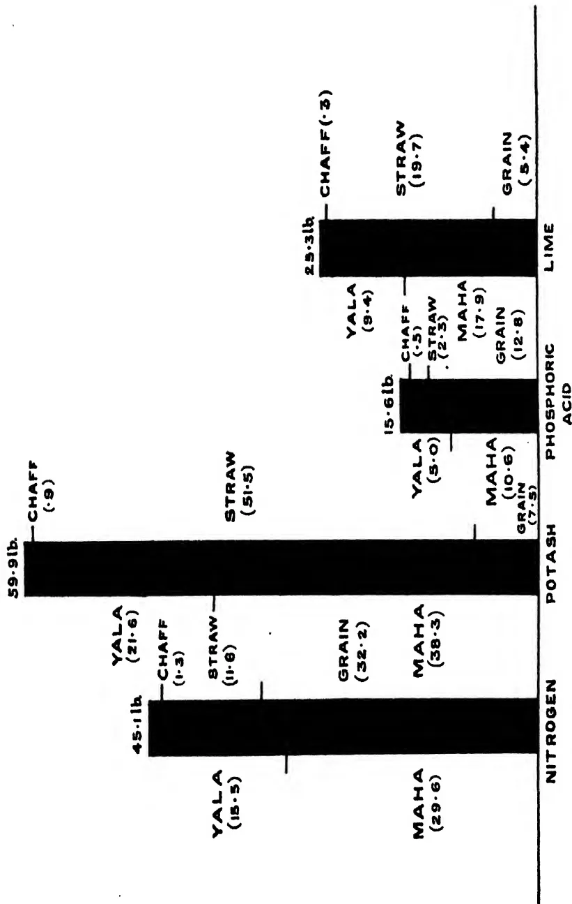
| Constituent | NITROGEN | POTASH | PHOSPHORIC ACID | LIME |
|---|---|---|---|---|
| YALA | 45.1 lb (21.6) | 59.9 lb (.9) | 15.6 lb (.5) | 25.3 lb (.3) |
| CHAFF | 1.3 | 1.3 | 3.0 | 9.4 |
| STRAW | 11.6 | 51.5 | 2.3 | 19.7 |
| GRAIN | 32.2 | 7.5 | 10.6 | 5.4 |
| MAHA | 29.6 | 38.3 | 7.9 | 12.8 |
Plate III.
Showing average amounts of plant food constituents removed by the paddy crop in pounds per acre per annum.
24TABLE XIII
Amounts of Constituents Removed in Paddy Crop
| Treatment | Total amounts of fertilising constituents added in lb. per acre | Total amounts of constituents in crop in lb. per acre | ||||||||||||
|---|---|---|---|---|---|---|---|---|---|---|---|---|---|---|
| Maha 1931 | Yala 1932 | Total | ||||||||||||
| Nitrogen | Phos. Acid | Nitrogen | Phos. Acid | Potash | Lime | Nitrogen | Phos. Acid | Potash | Lime | Nitrogen | Phos. Acid | Potash | Lime | |
| Green Manure (1 ton per acre) |
12.8 | — | 30.3 | 8.4 | 39.6 | 17.7 | 14.5 | 4.2 | 18.3 | 6.5 | 44.8 | 12.6 | 57.9 | 24.2 |
| Superphosphate (1 cwt. per acre) |
— | 20.2 | 30.9 | 10.9 | 39.1 | 19.6 | 18.5 | 5.1 | 24.8 | 8.2 | 49.4 | 16.0 | 63.9 | 27.8 |
| Ammonium Phosphate (Ammophos 13/44). (96 lb. per acre) |
10.6 | 43.4 | 36.0 | 14.8 | 40.2 | 19.2 | 15.7 | 5.8 | 22.8 | 7.6 | 51.7 | 20.6 | 63.0 | 26.8 |
| Green Manure (1 ton/acre). + Superphos. (1 cwt/acre) |
12.8 | 20.2 | 31.4 | 11.7 | 42.6 | 18.7 | 16.6 | 5.7 | 21.8 | 8.0 | 48.0 | 17.4 | 64.4 | 26.7 |
| Control | — | — | 24.4 | 7.1 | 30.1 | 14.6 | 14.2 | 4.4 | 20.2 | 6.9 | 38.6 | 11.5 | 50.3 | 21.5 |
| Average | 30.6 | 10.6 | 38.3 | 17.9 | 15.9 | 5.0 | 21.6 | 7.4 | 46.5 | 15.6 | 59.9 | 25.3 | ||
An examination of these tables will disclose that:
(1) The total amounts of plant food nutrients removed from the soil in the crop during the two seasons are, on the average, per acre; nitrogen 46.5 lb., phosphoric acid 15.6 lb., potash 59.9 lb. and lime 25.3 lb.
(2) If the average amount of phosphoric acid removed by the crops over a period of a year is considered as the unit, the amount of nitrogen assimilated is three times, potash four times and lime one and half times as much. This is found to be the case in the Maha and Yala crops as well.
(3) On the average, considering the Maha and Yala data together, the grain contains about 72 per cent. of the nitrogen of the whole above-ground crop, 82 per cent. of the phosphoric acid, but only 21 per cent. of the lime and 12 per cent. of the potash. The straw on the other hand contains 86 per cent. of the potash, 78 per cent. of the lime, and about 25 and 15 per cent. of the nitrogen and phosphoric acid respectively.
(4) Of the nitrogen applied in the manures, on the average 7.6 lb. or about two-thirds of the amount contained in the green manure material (12.8 lb.) is assimilated by the above-ground portion of the crop. Of the quantity absorbed 6.4 lb., or on the average about 85 per cent. is in the Maha crop. The nitrogen in ammonium phosphate is superior in this respect, 13.1 lb., or 2.5 lb. more than what was applied in the fertiliser being found in the crop. Here again 11.6 lb., or more than the whole amount is found in the Maha crop. The residual effect of nitrogenous fertilisers applied to paddy is therefore seen to be inappreciable. The crop from the plots manured only with superphosphate, contains an excess of 11.6 lb. of nitrogen over that from the controls. When it is considered that the total losses of nitrogen from the soil as a result of cultivation of the crops amount to several times more than the quantities found in the crop, this observation is not surprising. It does in fact confirm that phosphoric acid is the chief limiting factor of crop yield on these soils.
(5) With regard to the absorption of phosphoric acid by the crop, the results are very different in one respect. Only 9.1 lb. of the 43.4 lb. or 21 per cent. of the phosphoric acid in the ammonium phosphate applied can be accounted for in the crop, and of this quantity, over 85 per cent. is found in the Maha crop. In the case of superphosphate on the average, 5.2 lb. or 25.7
26per cent. of the amount applied (20.2 lb.) is found in the crop, and of this again, the Maha crop has absorbed 80 per cent. The data do, therefore, indicate that a large proportion of the applied phosphoric acid is either fixed in the soil, probably as compounds of hydrated iron and aluminium oxides (10) and thus rendered unavailable to the crop, or that some of it is washed away in the irrigation water. Losses through the latter source have been demonstrated to be inappreciable by Charlton in Burma (11). The facts that over 80 per cent. of the phosphoric acid in the crop is assimilated during the Maha season, and that speedy fixation of soluble phosphoric acid appears to take place readily in the soil, coupled with the observations that only small percentages of phosphoric acid and nitrogen are absorbed by the crop at flowering, would appear to suggest that the application of soluble fertilisers in more than one dose is desirable during crop growth. The questions of the most efficient phosphatic fertiliser for paddy, of the reasons for the non-availability to the crop of the greater part of the phosphoric acid applied in such fertilisers, and of the optimum times and methods of application, are to be studied in a subsequent investigation.
The soil data obtained during the two seasons are contained in Tables XIV to XVII. Table XIV shows the changes occurring in the carbon and nitrogen and exchangeable base contents of the plots as a result of crop growth.
27
TABLE XIV
Changes in Soil Constituents in Differently Treated Plots
| Constituent | Initial sample (22.9.31) | Maha final sampling (22.3.32) | Yala final sampling (12.9.32) | ||||||||||
|---|---|---|---|---|---|---|---|---|---|---|---|---|---|
| Green manure | Superphos. | Ammon. Phos. | G.M.+ Super. | Control | Average | Green manure | Superphos. | Ammon. Phos. | G.M.+Super. | Control | Average | ||
| Exchangeable bases in mgm. equivalents per 100 gm soil. | |||||||||||||
| Total | 7.19 | 6.49 | 6.49 | 6.49 | 6.49 | 6.33 | 6.46 | 6.53 | 6.44 | 6.56 | 6.48 | 6.61 | 6.52 |
| Potassium | .278 | .215 | .230 | .213 | .208 | .225 | .219 | .228 | .224 | .226 | .217 | .292 | .225 |
| Calcium | 5.16 | 4.91 | 4.88 | 4.73 | 5.11 | 4.91 | 4.91 | 4.42 | 4.53 | 4.39 | 4.47 | 4.45 | 4.45 |
| Ammonium | .075 | .079 | .080 | .077 | .080 | .076 | .078 | .077 | .080 | .073 | .090 | .063 | .077 |
| Carbon per cent | 2.32 | 2.16 | 1.92 | 1.95 | 2.24 | 2.16 | 2.08 | 2.08 | 2.15 | 2.22 | 2.24 | 2.12 | 2.18 |
| Nitrogen " | .211 | .196 | .193 | .200 | .191 | .184 | .193 | .187 | .199 | .203 | .201 | .184 | .195 |
| Carbon/Nitrogen Ratio | 11.0 | 11.0 | 9.95 | 9.75 | 11.7 | 11.7 | 10.8 | 11.2 | 10.8 | 10.9 | 10.9 | 11.4 | 11.0 |
It will be observed from this table that: (1) on the average there is an appreciable fall of soil nitrogen and carbon at the end of the Maha crop. The greatest losses of carbon are from the superphosphate and ammonium phosphate plots and of nitrogen from the controls. The least losses of carbon are from the green-manured plots and of nitrogen from the ammonium phosphate plot. If it is considered that an acre of soil to a depth of six inches—the root range of the paddy crop—weighs about two million pounds, the average losses will be found to amount to about two tons of carbon and 360 lb. of nitrogen. Of these only small proportions are found in the crop. The greater part of the soil nitrogen losses are occasioned by denitrification and some also possibly through leaching. The percentages of carbon do however show a fairly large rise at the end of the Yala season while those of nitrogen remain about the same. The addition of crop residues is evidently responsible for this. Other soil recuperative forces have also probably contributed towards maintaining the nitrogen balance.
(2) The carbon nitrogen ratio of these soils remains in the region of 11. The soils are thus similar to temperate soils in this respect.
(3) The average total exchangeable base content of the soils falls by about 10 per cent. during the Maha. No further loss—in fact a slight increase of these soil constituents, occurs during the subsequent Yala. The total exchangeable base contents of these soils are low compared with those of arable soils of temperate regions. This is due to the effect of continuous cultivation without a corresponding addition of fertilisers to the soil.
(4) Calcium constitutes nearly 72 per cent. of the exchangeable bases. The average losses of replaceable calcium during the Maha are fairly appreciable, viz., 25 mgm. equivalents per 100 gm. soil, or approximately 175 lb. of calcium oxide per acre. A further loss of this constituent occurs during the Yala, the total average losses being nearly 500 lb. Only about one-twentieth of this amount is accounted for in the crop, the rest being lost in the irrigation water.
(5) Exchangeable potassium, which is only about 4 per cent. of the total bases, shows a small but definite fall during the Maha, which is not continued over the Yala. On the contrary, a slight increase of this constituent is observed during the latter
29season. The soil being well supplied with clay, cultivation apparently makes available a steady though small supply of potash for the needs of the crop. The total fall in exchangeable potassium over the whole period is .053 mgm. equivalents per 100 gm. soil, corresponding to about 60 lb. of potash per acre. This is almost exactly what is found to be removed in both crops.
TABLE XVMgms. Ammonia in 100 gms. Dry Soil
Maha 1931
| Before ploughing |
After bundling |
Transplanting | One week after |
One month after |
Two months after |
Three months after |
Flowering | Half ripe | Harvesting | |
|---|---|---|---|---|---|---|---|---|---|---|
| 22.9.31 | 1.10.31 | 7.10.31 | 13.10.31 | 12.11.31 | 11.12.31 | 11.1.32 | 28.1.32 | 17.2.32 | 22.3.32 | |
| Green Manure | 1.27 | 1.82 | 2.22 | 3.25 | 2.69 | 2.65 | 2.42 | 2.04 | 2.06 | 1.34 |
| Superphosphate | 1.27 | 1.82 | 2.56 | 2.28 | 2.23 | 2.23 | 2.19 | 1.78 | 1.84 | 1.36 |
| Ammonium Phosphate |
1.27 | 1.82 | 3.63 | 2.78 | 2.41 | 2.31 | 2.13 | 1.82 | 1.83 | 1.32 |
| Green Manure + Superphos. |
1.27 | 1.82 | 2.96 | 2.79 | 2.18 | 2.64 | 2.30 | 1.98 | 2.07 | 1.37 |
| Control | 1.27 | 1.82 | 2.28 | 2.58 | 2.22 | 2.22 | 2.00 | 1.64 | 1.66 | 1.29 |
| Average | 1.27 | 1.82 | 2.73 | 2.72 | 2.44 | 2.41 | 2.20 | 1.85 | 1.89 | 1.33 |
Mgms. Ammonia in 100 gms. Dry Soil
Yala 1932
| Before ploughing |
Transplant- ing |
Three weeks after |
Six weeks after |
Flowering | Harvesting | |
|---|---|---|---|---|---|---|
| 24.4.32 | 9.5.32 | 30.5.32 | 21.6.32 | 28.7.32 | 12.9.32 | |
| Green Manure | 1.41 | 1.91 | 1.63 | 1.50 | 1.28 | 1.32 |
| Superphosphate | 1.59 | 1.93 | 1.68 | 1.53 | 1.27 | 1.37 |
| Ammonium Phosphate | 1.70 | 1.98 | 1.64 | 1.32 | 1.11 | 1.23 |
| Green Manure + Superphos. |
1.51 | 2.06 | 1.78 | 1.58 | 1.29 | 1.55 |
| Control | 1.40 | 1.79 | 1.49 | 1.36 | 1.25 | 1.07 |
| Average | 1.52 | 1.94 | 1.64 | 1.46 | 1.24 | 1.30 |
The variations in replaceable ammonia contents of the plots during crop growth are seen from Tables XV and XVI. During the Maha the highest amounts are generally found in the green manured plots and the lowest in the controls. But while the green manure + superphosphate plots have given high yields of crop, yields from the plots treated with green manure alone are comparatively low. These facts again confirm that phosphoric acid is the limiting factor of crop yield on these soils. As found in previous investigations (7) the amounts of replaceable ammonia diminish with advancing crop growth. Right through the growth of the Yala crop, the replaceable ammonia contents of the plots are much lower than those found during the previous Maha. During the Yala too, the controls contain lowest and the green manure + superphosphate plots highest amounts of replaceable ammonia, but the differences between the controls and the treated plots are much smaller than in the corresponding Maha season. These facts would in part account for the lower yields obtained in the Yala and the non-significant yield differences obtained between the different plots during this season.
The phosphoric acid data are not detailed in this paper, as the amounts of water soluble phosphoric acid found in the soil samples from the different plots at different stages of crop growth were very small and did not show any appreciable change. The amounts of phosphatic fertiliser applied were obviously too small to effect any definite increase of this constituent in the soil solution. In the case of the ammonium phosphate plots however, a small increase in soluble phosphoric acid is observed at the early stages. The total and inorganic water soluble phosphoric acid contents generally remain constant at .07 and .01 parts per million respectively. However, the facts that, notwithstanding the inappreciable water soluble phosphoric acid differences between the plots at all stages of crop growth, those treated with phosphoric acid fertilisers gave increased yields of crop, and in the case of the ammonium-phosphate-treated plots increased phosphoric acid contents of crop, would appear to support the hypothesis suggested by Greenhill (8) that "solid phase" feeding by the roots of crops, in this instance of paddy, is probable. In view of this possibility and of the conversion of soluble phosphates into insoluble compounds, the use of bonemeal for manuring paddy would appear to be advantageous.
31TABLE XVII
Average Values
| Crop | Period | Date | |
|---|---|---|---|
| Maha | Before ploughing | 22.9.31 | 5.59 |
| „ | After bunding | 1.10.31 | 5.77 |
| „ | At transplanting | 7.10.31 | 5.77 |
| „ | One month after | 12.11.31 | 5.54 |
| „ | Two months after | 11.12.31 | 5.45 |
| „ | Three months after | 11.1.32 | 5.43 |
| „ | Flowering | 28.1.32 | 5.41 |
| „ | Half-ripeness | 17.2.32 | 5.38 |
| „ | Harvesting | 22.3.32 | 5.48 |
| Yala | Harvesting | 12.9.32 | 5.50 |
In Table XVII are set out the changes in the average hydrogen ion concentration of soil samples from the plots at the different periods of crop growth. The soils are distinctly acid in reaction. The average of the soils increases slightly as a result of puddling, but diminishes in the later stages of crop growth. When dry the soil reaction is slightly less than what it was originally. These observations are in conformity with those of Dennett in Malaya (9). Flooding brings about an increase in the ammonia contents of the plots and hence causes the rise in . The subsequent decrease in is accounted for partly by the absorption of the ammonia so formed by the crop and partly by the losses of replaceable bases from the soils as a result of cultivation.
The results of analyses of soil and crop samples from differently treated plots of paddy grown during Maha 1931 and Yala 1932, carried out with a view to determining the rôle of fertilisers in paddy crop nutrition and yield indicate that:
(1) The average percentage constituents of the above-ground portion of the crop both during the Maha and Yala seasons, generally fall or remain constant with increasing age except in regard to dry matter which rises.
(2) The composition of the crop does not show much variation with treatment. The crop from the ammonium phosphate plots has however higher phosphoric acid contents throughout the growth of the Maha crop.
32(3) The average percentage constituents of the Yala crop are lower than those of the Maha. The phosphoric acid contents of both crops are low when compared to those of some countries, e.g. Hawaii. This is a reflection of the low phosphoric acid contents of our soils.
(4) At flowering, on the average only about 50 per cent. of the nitrogen and dry matter, ash and phosphoric acid and 78 per cent. of the potash and lime of the crop at harvest have been absorbed during the Maha season. The corresponding Yala figures are much lower, only about 34 per cent. of the nitrogen, 26 per cent. of the phosphoric acid, dry matter and ash, and 35 per cent. of the lime and potash having been so assimilated.
(5) Considering both Maha and Yala data, the grain at harvest contains 71 per cent. of the nitrogen, 82 per cent. of the phosphoric acid but only 21 per cent. of the lime and 12 per cent. of the potash of the whole crop. The straw on the other hand contains 86 per cent. of the potash, 78 per cent. of the lime and only 15 per cent. of the nitrogen and phosphoric acid.
(6) Worked on an average basis, the total amounts of constituents removed by the paddy crops cultivated during a period of one year are on the average: nitrogen 46.5 lb., phosphoric acid 15.6 lb., potash 59.9 lb., and lime 25.3 lb.
(7) Soluble phosphoric acid applied in fertilisers is absorbed to a total extent of only 20 to 25 per cent. of the quantity applied. On the average about two-thirds of the nitrogen in green manure is found in the crop, while the whole of that applied as ammonium phosphate is assimilated. From 75 to 85 per cent. of these constituents are absorbed during the Maha season.
(8) The soil data show that there are appreciable losses in soil nitrogen and carbon at the end of the Maha. Further losses are arrested during the subsequent Yala as a result of the addition of crop residues. The losses of nitrogen are far in excess of the amounts absorbed by the crop.
(9) The carbon-nitrogen ratio of the soils remains in the neighbourhood of 11.
(10) Exchangeable base determinations demonstrate losses of these soil constituents as a result of cultivation. The losses are greatest with exchangeable calcium, which is present to the extent of about 72 per cent. of the total exchangeable bases and are considerably higher than the amounts of the constituents absorbed by the crop. Exchangeable potassium too
33records a loss during the Maha season but this is not continued over the Yala. The average amount of potassium absorbed by the crop is almost identical with the exchangeable potassium lost from the soil.
(11) The exchangeable ammonia contents of the soil fall with increasing crop growth. They are generally higher in the Maha than in the Yala, and in the latter season do not vary to any appreciable extent from plot to plot. These facts would partly account for the lower yield of the Yala crop and the non-significant differences between crop yields from differently treated plots.
(12) The addition of phosphatic fertilisers has caused no appreciable increase in the water soluble phosphoric acid contents of the soil. The possibility of "solid phase" feeding of phosphoric acid by the paddy plant is indicated. In view of this possibility and of the conversion of soluble phosphates into insoluble compounds, the use of bonemeal for manuring paddy would appear to be advantageous.
(13) The phosphoric acid absorption data would appear to indicate that two or more small doses of soluble fertilisers might give better results than a single large application.
(14) The values of the soils increase slightly on puddling, but diminish as crop growth advances. The final is slightly lower than the original figure.
34
TABLE II
Percentage Composition of Crop from Differently Treated Plots
Maha 1931
| Transplanting | Flowering | |||||||||||||||||||||||
|---|---|---|---|---|---|---|---|---|---|---|---|---|---|---|---|---|---|---|---|---|---|---|---|---|
| Treatment | Nitrogen | Dry Matter | Ash | Phos. Acid | Potash | Lime | Silica | |||||||||||||||||
| W | S | G | W | L | P | W | L | P | W | L | P | W | L | P | W | L | P | W | L | P | W | L | P | |
| Nitrogen | ||||||||||||||||||||||||
| green manure | 0.50 | 0.47 | 1.23 | 54.7 | 36.6 | 85.8 | 77.0 | 12.3 | 18.9 | 7.20 | 0.27 | 0.05 | 0.48 | 0.83 | 1.55 | 0.29 | 0.40 | 0.63 | 0.23 | 9.60 | 14.4 | 5.90 | ||
| superphosphate | 0.87 | 0.30 | 1.16 | 55.1 | 33.4 | 88.4 | 37.5 | 12.2 | 18.3 | 8.30 | 0.33 | 0.07 | 0.50 | 0.74 | 1.41 | 0.33 | 0.38 | 0.66 | 0.22 | 10.1 | 16.6 | 6.00 | ||
| ammonium phosphate | 0.88 | 0.36 | 1.18 | 0.66 | 53.3 | 34.1 | 83.7 | 98.6 | 11.7 | 17.7 | 0.35 | 0.08 | 0.56 | 0.76 | 1.39 | 0.30 | 0.58 | 0.59 | 0.22 | 0.21 | 7.80 | 10.6 | 5.40 | |
| green manure+Superphosphate | 0.81 | 0.34 | 1.17 | 52.2 | 33.1 | 89.0 | 88.6 | 11.6 | 16.6 | 7.50 | 0.31 | 0.03 | 0.49 | 0.87 | 1.59 | 0.33 | 0.38 | 0.62 | 0.24 | 8.30 | 11.2 | 5.70 | ||
| control | 0.95 | 0.42 | 1.25 | 56.7 | 41.2 | 84.6 | 79.0 | 12.4 | 18.1 | 7.00 | 0.25 | 0.07 | 0.42 | 0.82 | 1.41 | 0.28 | 0.40 | 0.64 | 0.19 | 9.50 | 13.3 | 5.60 | ||
| average | 0.85 | 0.40 | 1.19 | 0.65 | 53.4 | 35.7 | 87.3 | 94.3 | 12.0 | 17.9 | 0.30 | 0.07 | 0.48 | 0.80 | 1.47 | 0.30 | 0.38 | 0.63 | 0.22 | 9.60 | 13.2 | 5.78 | 15.0 | |
| Harvesting | ||||||||||||||||||||||||
| Treatment | Nitrogen | Dry Matter | Ash | Phos. Acid | Potash | Lime | Silica | |||||||||||||||||
| W | S | G | W | L | P | W | L | P | W | L | P | W | L | P | W | L | P | W | L | P | W | L | P | |
| green manure | 2.49 | 20.0 | 16.4 | 0.33 | 2.46 | 1.41 | 9.40 | 0.87 | 0.90 | 30.2 | 42.5 | 12.0 | 12.7 | 12.0 | 0.25 | 0.24 | 1.24 | 1.42 | 0.41 | 0.55 | 0.61 | 0.25 | 9.50 | 10.3 |
| superphosphate | 0.85 | 0.83 | 0.92 | 30.9 | 29.5 | 42.0 | 12.4 | 12.5 | 11.9 | 12.3 | 11.9 | 0.30 | 0.34 | 0.25 | 1.23 | 1.38 | 0.42 | 0.63 | 0.69 | 0.30 | 9.20 | 9.20 | 9.60 | |
| ammonium phosphate | 0.82 | 0.81 | 0.88 | 29.8 | 28.6 | 42.7 | 13.0 | 13.1 | 12.3 | 12.3 | 12.3 | 0.37 | 0.37 | 0.33 | 1.37 | 1.51 | 0.40 | 0.67 | 0.72 | 0.31 | 9.40 | 9.50 | 9.10 | |
| green manure+Superphosphate | 0.83 | 0.81 | 0.92 | 30.7 | 29.8 | 42.2 | 12.8 | 13.0 | 11.1 | 11.1 | 0.31 | 0.32 | 0.25 | 1.37 | 1.49 | 0.35 | 0.65 | 0.70 | 0.70 | 0.27 | 9.50 | 9.40 | 10.1 | |
| control | 0.94 | 0.95 | 0.88 | 30.4 | 28.9 | 43.2 | 12.1 | 12.2 | 11.9 | 12.2 | 11.9 | 0.25 | 0.25 | 0.27 | 1.20 | 1.36 | 0.38 | 0.58 | 0.63 | 0.30 | 8.90 | 8.50 | 10.2 | |
| average | 2.40 | 20.0 | 16.4 | 0.33 | 2.46 | 1.41 | 9.40 | 0.87 | 0.90 | 30.2 | 42.5 | 12.0 | 12.7 | 11.9 | 1.23 | 1.43 | 0.39 | 0.61 | 0.67 | 0.25 | 9.30 | 9.20 | 9.60 | |
TABLE VII
Percentage Composition of Crop from Differently Treated Plots
Yala 1932
| Transplanting | Flowering | ||||||||||||||||||||||
|---|---|---|---|---|---|---|---|---|---|---|---|---|---|---|---|---|---|---|---|---|---|---|---|
| Treatment | Nitrogen | Dry Matter | Ash | Phos. Acid | Potash | Lime | |||||||||||||||||
| W | S | G | W | S | G | W | S | G | W | S | G | W | S | G | W | S | G | ||||||
| Green manure | 0.89 | 0.88 | 0.92 | 30.2 | 28.6 | 44.7 | 14.3 | 14.7 | 12.3 | 0.24 | 0.25 | 0.24 | 0.33 | 1.65 | 1.88 | 0.34 | 0.53 | 0.58 | |||||
| Superphosphate | 0.88 | 0.85 | 1.02 | 29.6 | 28.0 | 44.2 | 13.9 | 14.1 | 12.6 | 0.27 | 0.21 | 0.28 | 1.47 | 1.67 | 0.35 | 0.52 | 0.57 | 0.22 | |||||
| Ammonium phosphate | 0.88 | 0.86 | 0.97 | 29.8 | 27.7 | 44.2 | 13.9 | 14.0 | 13.4 | 0.27 | 0.25 | 0.38 | 1.61 | 1.81 | 0.34 | 0.54 | 0.59 | 0.23 | |||||
| Green manure+Superphosphate | 0.96 | 0.96 | 0.97 | 28.4 | 26.7 | 43.9 | 14.3 | 14.4 | 13.8 | 0.19 | 0.22 | 0.36 | 1.54 | 1.74 | 0.35 | 0.52 | 0.57 | 0.24 | |||||
| Control | 0.92 | 0.92 | 0.92 | 29.1 | 28.3 | 44.7 | 15.4 | 15.8 | 13.0 | 0.11 | 0.19 | 0.28 | 1.71 | 1.94 | 0.35 | 0.53 | 0.58 | 0.24 | |||||
| Average | 0.90 | 0.86 | 0.96 | 29.4 | 27.8 | 44.3 | 14.6 | 14.8 | 13.0 | 0.22 | 0.22 | 0.33 | 1.59 | 1.81 | 0.35 | 0.53 | 0.58 | 0.24 | |||||
| Harvesting | ||||||||||||||||||||||||
|---|---|---|---|---|---|---|---|---|---|---|---|---|---|---|---|---|---|---|---|---|---|---|---|---|
| Treatment | Nitrogen | Dry Matter | Ash | Phos. Acid | Potash | Lime | ||||||||||||||||||
| W | S | G | W | S | G | W | S | G | W | S | G | W | S | G | W | S | G | |||||||
| Green manure | 0.70 | 0.30 | 1.34 | 44.1 | 30.7 | 80.7 | 15.2 | 20.4 | 7.24 | 0.20 | 0.08 | 0.39 | 1.14 | 1.77 | 0.21 | 0.39 | 0.57 | 0.14 | ||||||
| Superphosphate | 0.76 | 0.37 | 1.30 | 47.5 | 32.8 | 81.9 | 15.3 | 21.1 | 6.91 | 0.21 | 0.08 | 0.38 | 1.19 | 1.99 | 0.21 | 0.39 | 0.58 | 0.12 | ||||||
| Ammonium phosphate | 0.72 | 0.29 | 1.26 | 0.64 | 46.6 | 30.9 | 80.1 | 68.5 | 14.3 | 20.1 | 6.55 | 18.4 | 0.26 | 0.10 | 0.47 | 0.37 | 1.18 | 1.94 | 0.21 | 0.53 | 0.39 | 0.59 | 0.14 | 0.20 |
| Green manure+Superphos | 0.68 | 0.28 | 1.27 | 50.3 | 35.3 | 80.9 | 14.8 | 20.5 | 6.48 | 0.23 | 0.08 | 0.45 | 1.15 | 1.81 | 0.21 | 0.41 | 0.59 | 0.15 | ||||||
| Control | 0.68 | 0.32 | 1.18 | 49.1 | 34.9 | 82.0 | 15.5 | 21.2 | 6.63 | 0.19 | 0.07 | 0.38 | 1.23 | 1.90 | 0.22 | 0.41 | 0.61 | 0.11 | ||||||
| Average | 0.71 | 0.31 | 1.27 | 0.64 | 47.5 | 32.9 | 81.1 | 68.5 | 15.9 | 20.6 | 6.76 | 18.4 | 0.22 | 0.08 | 0.41 | 0.37 | 1.18 | 1.96 | 0.21 | 0.53 | 0.40 | 0.59 | 0.13 | 0.20 |
35
36L. LORD, M.A.,
DIVISIONAL AGRICULTURAL OFFICER, EASTERN
THE Agricultural Department in Burma has recently published Agricultural Survey No. 17 of 1932 entitled "The rice crop in Burma, its history, cultivation, marketing and improvement" by J. W. Grant. The Survey is a full and interesting account of rice in Burma and contains much information of use to those concerned with rice cultivation in other countries. It extends to fifty-seven pages and is illustrated by photographs, maps and graphs. Ceylon, as one of rice-producing countries (it is, by the way, not included in the list of rice-producing countries given in the introduction to the Survey although the area under rice is greater than in two of the countries included) is naturally interested in methods of rice cultivation practised elsewhere, but is particularly interested in Burma rice as that country supplies the bulk of the rice imports into Ceylon.
In the first chapter on the history of the crop in Burma it is somewhat surprising to see that, in contrast with other rice-producing countries in the East, almost the whole of the large rice area in Lower Burma has been brought into cultivation during the last 60 years. In 1855 the area was just under one million acres. In 1912 it had risen to over eight million and in 1930 to 9,911,000 acres. This great extension is due mainly to the establishment of a settled government, following the British occupation. The soil and climate of Lower Burma in which are found the low-lying alluvial delta lands of the Irrawaddy are admirably suited for rice cultivation. The soils contain large silt and fine silt fractions which make puddling easy and the rainfall, though not particularly heavy for the tropics, occurs almost entirely during the period the crop is growing and ceases before harvest.
In Upper Burma there were just under two and a half million acres cultivated with rice in 1930 of which about one-half was grown under irrigation from Government canals and tanks. Most of the irrigated area obtains its water from rivers and not, as in Ceylon, from rain-fed tanks.
37The rice varieties of Burma, though numerous, fall into five main types which are described in the following table and extract taken from the Survey:
TABLE| Group index | Group name | Dimensions of grains | |||
|---|---|---|---|---|---|
| With husk | Husked | ||||
| Length in mm. |
Length Breadth |
Length in mm. |
Length Breadth |
||
| A | Emata | { Over 9.40 |
Over 3.30 |
Over 7.00 |
Over 3.00 |
| B | Letywezin | { 8.40 to 9.80 |
2.80 to 3.30 |
6.00 to 7.00 |
2.40 to 3.00 |
| C | Ngasein | { 7.75 to 9.00 |
2.40 to 2.80 |
5.60 to 6.40 |
2.00 to 2.40 |
| D | Midon | { 7.35 to 8.60 |
2.00 to 2.40 |
5.00 to 6.00 |
1.60 to 2.00 |
| E | Byat | { 9.00 upwards |
2.25 to 3.00 |
6.40 to 7.35 |
2.10 to 2.50 |
"Most of the rices can be fitted into one or other of the groups and although a little overlapping in the length of the grain may be observed in the above classification it does not take place in the proportion of length to breadth, except in the E and A Groups which however are readily distinguished by other characters.
A grain which is broad in proportion to its length is described by millers as a 'bold' grain and generally speaking suffers less breakage in milling than long thin grains. A and B Groups are thin grains, and C, D and E Groups are bold grains.
Emata, A Group.—In this group are included:
The grains are long, hard, and pearly in appearance, and resemble the higher grades of Garden Siam rices.
Letywezin, B Group.—In this group many varieties both in Lower and Upper Burma are included, the most important of which are:
Ngasein, C Group.—The types that fall into this group are by far the most important and most extensively cultivated in Lower Burma, the main commercial types that come into the group being:
Midon, D Group.—The round opaque type of grain is cultivated fairly extensively for home consumption in Lower Burma and in Myitkyina District of Upper Burma, but within recent years it has been marketed in increasing quantities in Rangoon for export to far-eastern markets where it is in demand. The main varieties that fall into this group are the Kamakyis and Sabanets of Lower Burma, and Kalagi of Upper Burma.
Byat, E Group.—This large bold type of grain is found mainly in Tenasserim and it is the most important rice exported from Moulmein where it is classed by the trade as Kaukkyi. The grain is rather softer than that of the Ngaseins, but it mills well. Small areas of this type are grown elsewhere for home consumption only.
Each of the groups is again divided into early, medium, and late maturing varieties, but there is, speaking generally, an increasing life period from A to E among the unselected varieties now cultivated. The unselected varieties lack uniformity in size, shape, and hardness of the grain, and also in other characters. Grain with a red pericarp which is an undesirable feature for milling is present in unselected varieties in considerable proportions. A few awned varieties are also found, but awnless varieties are by far the most widely cultivated.
Glutinous rices which contain dextrine and are cultivated in small patches here and there are not included in the above classification as they are relatively unimportant. They are used for home consumption only, in the preparation of sweetmeats and food on special occasions."
A complete study of the very numerous Ceylon varieties of rice (many of which, however, may be synonyms) has not yet been made but the varieties so far examined show that generally the Marwi group of rices are similar to the Burma Midon Type and the short-aged rices like heenati, murungan, hinkarayel and Illankalayan (also the five months suduhonderawala) are similar to the Burma Ngasein* type.
* The Ngasein type of rice is largely imported into Ceylon and is known commercially as "Natsein".
40The measurements of the Ceylon rices examined are as follows:
(a) Mawi varieties (six months): unhusked; length 7·8·5 mm. Length-breadth ratio 2·27·2·45 husked; length 5·6·3 mm. length-breadth ratio, 1·9·2·1.
(b) Short-aged varieties: unhusked; length 7·9·9·2 mm. length-breadth ratio 2·3·2·8 husked; length 5·8·6·7 length-breadth ratio, 1·9·2·4.
There is apparently no important type of rice in Burma similar to the Ceylon podirwi or Muthusamba type of round-grained rice.
The big difference between Ceylon and Burma rices is that Ceylon rices have almost invariably a red testa and produce what is known as red rice whereas the Burma rices have a white testa and produce white rice. What the author of the Survey calls unselected varieties (that is ordinary cultivators' seed and not pure-line selections) contain "a considerable percentage of red grain which adds to the difficulty of milling and increases the breakage". If white rice is to be produced from the red Ceylon paddies the amount of milling necessary to achieve this will cause a large percentage of broken grains and for the market that demands white rice Ceylon mills will rapidly find it will pay them to offer a premium for varieties with a white testa. Four and six-month varieties of rice with a white testa are already available in Ceylon and the Economic Botanist is now engaged on the production of a variety with a white testa which will mature in three months. Rices of this age occupy in Ceylon a large proportion of the land cultivated during the south-east monsoon.
There are some important differences between rice cultivation in Burma and in Ceylon; and one which has an undoubted effect on cost of cultivation is the difference in the size of holdings in the two countries. The author writes: "Although paddy land in Lower Burma has within recent years been passing from the small peasant proprietors of earlier days to larger landowners, practically the whole of the crop is produced by small cultivators working either their own land or land rented from others. The size of the holdings varies considerably from district to district and in Lower Burma the most common size is from 20-25 acres, while, in Upper Burma 10-15 acres is about the average."
41In Ceylon the holdings worked by an owner or tenant are much smaller, smaller probably in the centre and south-west of the Island than in any other rice-growing country. In many parts of Ceylon 1-2 acres is the average extent. There are regions of Ceylon, for example in the south and the east, where large areas are owned by one man but these are rented out to tenants and one man will cultivate about 5-7 acres.
One other big difference between cultivation in Ceylon and Burma is that in Burma almost the whole of the rice acreage is transplanted. In Ceylon the transplanted area is still very small although it is extending in the Central and Uva Provinces. Experiments in Burma have shown that transplanted paddy yields about 300 lb. per acre more than broadcast paddy, that is about 20 per cent. of the average yield. An even larger increase was obtained in Ceylon experiments covering a period of three years. It is with long-aged paddies that these increases have been obtained. With three-month varieties (which occupy a large proportion of the Ceylon rice area) it is doubtful if the small increased yield due to transplanting will meet the extra cost incurred. In his costs of cultivation in Burma, the author states that six women can transplant one acre in a day and that bunches of two to four plants are transplanted from 4 in. to 8 in. apart. With inexperienced labour in Ceylon it was found that from 15 to 22 women were needed to transplant an acre in one day.
The preparation of the land in Burma is more thorough than in Ceylon. Puddling the soil with buffaloes still takes place in the Tenasserim and Irrawaddy Divisions but this is a practice which is dying out. Generally the land is prepared by ploughing and harrowing. The plough is similar to the country plough of Ceylon but an improved type of plough designed by the Agricultural Department is gradually coming into use. The Burmese harrow which has been introduced into Ceylon is used after ploughing and fields are usually harrowed eight times in different directions. Two forms of rotary blade harrow (Settun) are in use, the Gwinset and Dahset, which are described as follows: "The Dahset consists of a wooden roller about three to four inches in diameter to which five iron blades are attached transversely. The roller works in "bushes" in two side pieces so that it turns when pulled along the ground, the cutting edges
42being on the soil while the implement is in use. In the Gwinset small iron blades about three inches in length are driven into the beam at intervals of three inches apart. The latter is the cheaper of the two, and on that account is more commonly used than the former which however is the more efficient implement." The rotary harrow is used where weed growth is luxuriant in order to cut and assist in burying the weeds.
Periodically in Ceylon enquiries are made as to the utility of tractors in paddy cultivation. The following extract from the Survey will therefore be of interest:
"Tractor cultivation has been attempted in Lower Burma, but has not met with success. Some 60 tractor cultivation outfits were purchased by landowners and cultivators during the last five or six years when paddy prices were high, but they have now almost fallen into disuse for paddy cultivation. Paddy land can be ploughed by tractor in the dry season, but the costs are much higher than by the ordinary methods, and a design of tractor has not yet been produced that can be used satisfactorily on wet paddy land after the break of the monsoon, in order to carry out the tillage operations that are necessary to obtain a satisfactory crop under the conditions obtaining in this country. The wear and tear on the ordinary tractors ploughing hard baked paddy land in small fields is excessive, and they have not yet been found successful for working in wet conditions."
The normal district yields of rice in Lower Burma are stated to vary from 1,250 lb. to 1,700 lb. per acre with variations from 1,000 lb. per acre on third class land to over 2,250 lb. per acre on first class land. In Upper Burma the normal yields vary from 1,000 lb. in dry zone districts to 1,600 lb. in districts with canal irrigation. Yields of long-aged rices in Ceylon and of short-aged rices grown where the water supply is adequate compare favourably with these yields. The reasons why Ceylon yields are generally lower than in other countries have been discussed in an article recently published in this journal.
Neither in Ceylon nor in Burma is manuring of paddy fields practised to any large extent and there is little hope of the extension of this practice in Ceylon at least until prices improve. Experiments in Burma have shown that a 50 lb. dressing of a 20/20 ammonium phosphate will increase the yield of grain by 400 lb. per acre, and a 100 lb. dressing by 650 lb.
43In Burma, as in Ceylon, costs of cultivation are difficult to estimate with any degree of accuracy but the following table given in the Survey is of interest.
Costs of Cultivation of 25 acres of Paddy Land on a Cultivator's Holding, assuming that he owns a pair of bullocks, has a wife and son or daughter to help him throughout the season.
(I) During transplanting and Cultivation Season—
Rs. A.
| (a) One hired labourer to cultivate, transport pyos, kazin repairs, etc., 40 baskets for five months during the rains calculated at Rs. 100 per 100 baskets. | ... | 40.0 |
| (b) Cost of feeding one labourer for five months at Rs. 6 per month | ... | 30.0 |
| (c) Cost of seed paddy; 25 baskets at Rs. 100 per 100 baskets | ... | 25.0 |
| (d) Cost of pyo-plucking; about Rs. 2 per acre (he or his son also helps) | ... | 50.0 |
| (e) Cost of transplanting at Rs. 3 per acre (his wife or daughter helps) | ... | 75.0 |
| (f) Cost of hiring one pair of bullocks for cultivation season; 50 baskets at Rs. 100 per 100 baskets | ... | 50.0 |
(II) During Reaping Season—
| (a) One hired labourer for carting, threshing and winnowing; 20 baskets at Rs. 100 per 100 baskets | ... | 20.0 |
| (b) Cost of hiring one pair of bullocks for threshing only; 10 baskets at Rs. 100 per 100 baskets | ... | 10.0 |
| (c) Cost of feeding one labourer for one month at Rs. 6 per month. | ... | 6.0 |
| (d) Reaping 25 acres at about Rs. 3 per acre (he or his son also helps) | ... | 75.0 |
| Total cost of cultivation | ... | 381.0 |
| Cost of Cultivation per acre | ... | 15.4 |
| (III) Rent on 25 acres at 10 baskets per acre; 250 baskets at Rs. 100 per 100 baskets | ... | 250.0 |
| (IV) Return of crop from 25 acres at 30 baskets per acre; 750 baskets at Rs. 100 per 100 baskets | ... | 750.0 |
| Surplus | ... | 119.0 |
Since the above costs were estimated prices declined in 1933 to about Rs. 65 per 100 baskets (of 46 lb. each. A bushel of rice in Ceylon weighs normally from 46 to 48 lb.). When rent is included the cost of cultivation in 1932 worked out to about Rs. 25 per acre excluding the value of the tenant's own and family labour. The surplus of Rs. 119 for a cattleless and landless cultivator seems a small enough recompense for his own and family labour from such a, for Ceylon, large holding. The striking fact about the particulars of costs from the Ceylon point of view is that one pair of bullocks only are necessary to prepare the 25 acres of land. That this should be so is due partly to the sturdy breed of cattle, partly to the use of implements and largely to the practice of transplanting which allows the cultivator several weeks in which to prepare his land after the nursery is sown.
Insect pests and fungoid diseases are not wide-spread in Burma but it is stated that considerable local damage is done from time to time by insects, rats; crabs, and wild elephants. Apparently the Paddy Fly (Leptocorisa varicornis) is unknown or at least is not a serious pest as it may be on late crops in Ceylon.
The Survey contains interesting chapters of marketing, milling and trade. The milling industry in Burma started with large mills at the seaport towns whose numbers rose from one in 1861 to 94 in 1930. Of late there has been an extraordinary increase in the number of small mills erected in the interior. The number of these mills rose from 27 in 1900 to 260 in 1920 and to the large number of 528 in 1930. The milling capacity of the bigger mills at the ports is from about 200-500 tons of paddy per day and of the small mills 10-75 tons. The type of husking machine used is the under-runner huller.
The work of improvement of rice cultivation in Burma carried on by the Agricultural Department is described as follows: "The object in the improvement of the crop was to replace the mixtures now grown by strains of high-yielding capacity and good quality, and three methods have been adopted—pure line selection within the indigenous varieties, trials with the best
45types of exotics, and more recently hybridisation." It is stated that 122 seed farms excluding central experimental stations have been established for multiplying and distributing to cultivators the improved lines of seed. The seed farms include 15 major seed farms with storage facilities and 107 minor seed farms worked by tenants under supervision by the Agricultural Department. In addition to the above private seed farms are occasionally opened by landlords who distribute the pure seed to their tenants. Similar methods for improving rice cultivation are being carried out by the Department of Agriculture in Ceylon.
The author of the Survey is to be congratulated on compiling such an interesting and useful account of the Burma rice industry. The Survey is published by the Superintendent, Government Printing and Stationery, Rangoon, Burma, at Rs. 3.50 per copy.
46ONCIDIUM LURIDUM, LINDL.
K. J. ALEX. SYLVA, F.R.H.S.,
CURATOR, HENERATGODA BOTANIC GARDENS
ONCIDIUM.—One of the largest genera of the family of Orchids, consisting upwards of three hundred and fifty species, and exclusively indigenous to Tropical America. In its botanical features the genus comes extremely close to Odontoglossum. Its flowers have similar spreading sepals and equal sized petals, with two lateral sepals united beneath the lip, and the lip itself continuous with the column and crested at its base.
Oncidium is a well known genus in the Orchid family and comprise several beautiful species.
Oncidium luridum is an epiphyte from the West Indies, where it thrives luxuriantly at low altitudes, particularly at Trinidad, attached to tall trees, often half way up on the trunk. In more exposed situations the plants are often blown down from trees and become established on the decaying vegetable matter on the ground and flower freely as terrestrial specimens.
The flowers of this plant unlike those of most members of its genus are plain and unblotched. The petals and sepals are yellow with frilled margins. The column is dull white with a blackish centre surrounded with a pale-pink halo. The flowers are borne in a long slender raceme of four to eight arranged sparsely. The flower is about one to one and a half inches across. The leaves are fairly thick and about two to two and a half inches broad by about twelve to eighteen inches long.
Culture.—The genus Oncidium occurs in a very wide range of habitats and will adapt itself to our local tropical conditions very readily and it can be cultivated in Ceylon to perfection.
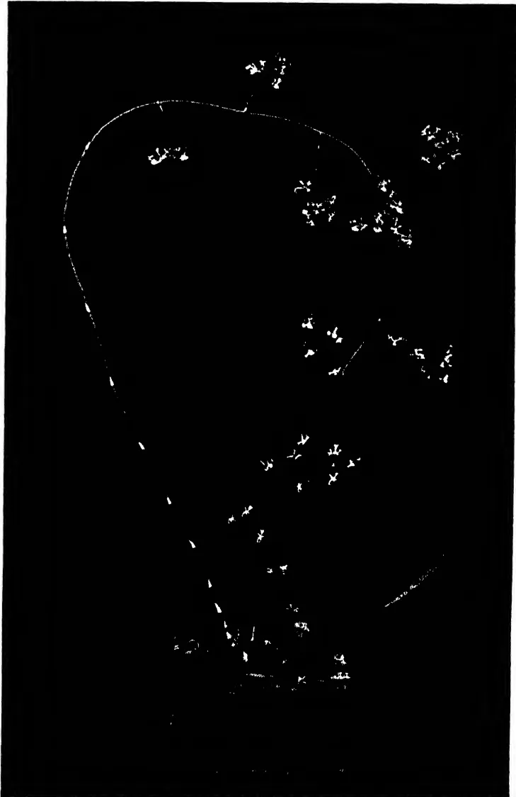
A high-contrast, black and white photograph of a plant, likely Oncidium luridum. The image features a large, dark, curved structure on the left, which appears to be a leaf or a bract. To the right of this structure, there is a cluster of small, light-colored, star-shaped flowers or buds. The background is solid black, making the white elements stand out sharply. The overall composition is minimalist and focuses on the form and texture of the plant parts.Photo by
K. J. A. Sylva
Oncidium luridum, Lindl.
This image is a blank white page. It contains several small, dark specks which appear to be scanning artifacts or dust particles. There is no text, handwriting, or printed content on the page. 47Oncidium luridum being of a robust-growing nature needs a well-drained pot, preferably a wooden basket to grow in. A good rooting medium for the plant can be made up with two parts of chopped wood (Jak preferable), one part of charcoal, crocks and coconut husk, with a little moss for the surface dressing. The plant can be cultivated to best advantage in a teak wooden basket and suspended from the roof.
When the plant is in an active or growing stage an abundance of moisture and plenty of daylight will be essential. The whole of the flower spike should be removed when three-fourths of the number of flowers have faded off, as its retention often causes the plant to deteriorate if allowed to remain till all the blooms have faded.
Propagation can be effected by dividing the plant when in a state of resting after flowering, provided that the main plant has advanced "leads". The young and immature divisions are liable to wither off especially after root disturbance.
48THE selection of papaws, Carica papaya L., was started during 1931 at the Nelspruit Sub-tropical Horticultural Research Station, mainly with the object of developing a suitable type for export and also to improve the present types for the local market.
Owing to the diœcious nature of the plant, several more years of selection work will be required before seed will be available for distribution among papaw growers.
The main points being considered in our selection programme, are the following: (a) Keeping and shipping quality; (b) suitable shape and size for packing; (c) colour when ripe; (d) eating quality; (e) thickness of flesh; (f) length of fruit-stalk. The longer the fruit-stalk, the less is the danger that the fruit will be squeezed out of shape due to overcrowding; (g) disease resistance; and (h) yield and vigour.
Growers will do well to bear these points in mind when selecting a tree for seed purposes. The common belief among growers is that selection for the above qualities is a waste of time because the progeny is usually variable and rarely comes true to type. The grower who asked: "But isn't a papaw just a papaw?", expressed the general opinion more eloquently than he was aware. The apparent failure of improving papaws by selection may be due to various causes: As is well known, papaws are open-fertilized due to the diœcious nature of the plant, so that pollen may be obtained from various sources. Each of the male trees contributing pollen differs in its hereditary make-up, with the result that the progeny must be variable. This tendency is enhanced because growers frequently grow a mixture of seed, the source of which is not always known.
When a farmer desires to improve his crop, he must have in mind a definite ideal with regard to shape, size, keeping quality, colour, etc., and when trees are selected for seed they must approach this ideal as closely as possible. It is only when this is kept constantly in mind that reasonable progress can be expected. The growers might ask what is an ideal type, and for the present the only thing we can advise is that his practical experience must be his chief guide. He will know, more or less, what types are best suited to his conditions.
The progeny of the first selection will necessarily be variable, and it would appear as if no progress had been made; but this should not dishearten the grower. Due to the open-fertilized nature of the plant, progress will be slow, but if selection is diligently carried out the fruit will
* By Dr. J. D. J. Hofmeyr, Research Horticulturist, Sub-tropical Horticultural Research Station, Nelspruit, in Farming in South Africa, Vol. VIII, No. 65, April 1933.
49become more uniform after each selection. Excellent examples have been observed by the writer, on several farms, where the growers have attained a high percentage of uniformity in their groves. Selection can therefore be confidently recommended, for it has the tendency to concentrate in the progeny the qualities selected for. Such qualities might be present without being necessarily observed, depending upon whether they are dominant or recessive in nature.
Where there are neighbouring groves, it is advisable to make the selections towards the centre of the grove or on the side farthest from the neighbouring one, to minimize the danger of cross-pollination.
Uniformity of fruit may be sooner obtained by a system of controlled pollination, but owing to the involved nature of this method, it can only be successfully tackled at an experiment station, and need not be discussed here.
There is a common belief among growers that the male trees are usually more vigorous than the female ones, and therefore, in order to obtain a high percentage of fruit-bearing trees per acre; they select the weaker seedlings in the seedbed for transplanting. In our experiments where hundreds of trees of both sexes were studied for vigour, as revealed by measurements of stem thickness, height, etc., there was not the slightest indication that one sex was more vigorous than the other. The males are as vigorous as the females, and growers are gaining nothing by discarding the more vigorous seedlings; actually they are doing away with their best plants.
Our studies have also revealed that in plants of the same age the more vigorous ones have a tendency to flower earlier, and therefore produce fruit earlier and over a longer period. Vigorous trees also have a tendency to produce fruit lower on the stem, which is a desirable characteristic. Thus by selecting the more vigorous seedlings in the seedbed the grower will tend to improve his crop for these characteristics as well. It is advisable to retain the most vigorous males, as there is an indication that they might transmit the same desirable qualities to their progeny.
The popular notion among growers is that before thinning out the males are far more numerous than the females in the grove, though probably few, if any, have taken the trouble to verify this by careful counts. That males comprise about 70 per cent. of the population is commonly believed. Two varieties of papaw were studied, the Ceylon and the Giant, and several hundred plants were classified with regard to sex. As was expected, the distribution was close to equality, being practically 50 per cent. of each sex. Genetical or environmental factors might affect this ratio, but as yet they have not been sufficiently studied.
50Fig. I.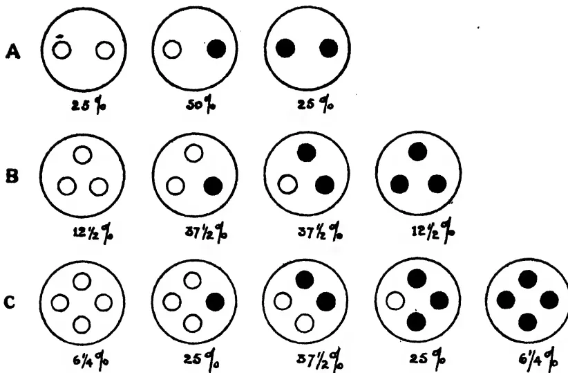
The figure consists of three rows of circles, labeled A, B, and C on the left. Each row contains several large circles representing planting holes, each containing smaller circles representing papaw trees. Black circles represent female trees, and unfilled circles represent male trees. Below each large circle is a percentage value.
| Rate of Planting | Planting Hole Composition | Percentage |
|---|---|---|
| A (2 trees per hole) | 2 unfilled circles (Male-Male) | 25% |
| 1 unfilled circle, 1 black circle (Male-Female) | 50% | |
| 2 black circles (Female-Female) | 25% | |
| B (3 trees per hole) | 3 unfilled circles (Male-Male-Male) | 12½% |
| 2 unfilled circles, 1 black circle (Male-Male-Female) | 37½% | |
| 1 unfilled circle, 2 black circles (Male-Female-Female) | 37½% | |
| 3 black circles (Female-Female-Female) | 12½% | |
| C (4 trees per hole) | 4 unfilled circles (Male-Male-Male-Male) | 6¼% |
| 3 unfilled circles, 1 black circle (Male-Male-Male-Female) | 25% | |
| 2 unfilled circles, 2 black circles (Male-Male-Female-Female) | 37½% | |
| 1 unfilled circle, 3 black circles (Male-Female-Female-Female) | 25% | |
| 4 black circles (Female-Female-Female-Female) | 6¼% |
Fig. 1. Percentage distribution of male and female papaw trees for each of three different rates of planting. Explanation of diagram in text.
(Redrawn from original figure.)
The ordinary procedure in laying out a grove is to dig planting-holes at regular intervals (see Farming in South Africa, March, 1931, page 570). Two or more plants are planted per hole, and these are thinned out to one per planting-hole as soon as the sex can be determined. The problem is to get enough fruit-bearing trees per acre, since one male to every 10-30 females is regarded as sufficient to ensure adequate pollination.
The percentage distribution of males and females is diagrammatically represented, for three rates of planting, in Fig. I. Here the large circles represent planting-holes, and the small circles indicate papaw trees in the planting-holes, the black circles being female and unfilled circles male trees. In Fig. I, A, where two trees were planted per planting-hole, male and female trees can occur in three possible combinations and in the following percentages: In 25 per cent. of the holes in the grove, both plants will be males; in 50 per cent. of the holes in the grove, one plant will be female and the other male; in 25 per cent. of the holes in the grove, both plants will be females.
This is the theoretical expectancy, but it was verified by actual counts in the field. In the case where three trees are planted per planting-hole (Fig. I, B.), there are four possible combinations, with the percentage expectancy as indicated for each. Similar deductions can be made where four trees occur per planting-hole by consulting Fig. I, C.
51The diagram illustrates clearly the advantage of the higher planting rates, e.g., in Fig. I, A, in 25 per cent. of the planting-holes both plants are males, so after thinning the plants to one per hole, leaving a female wherever possible, in the ultimate stand 25 per cent. of the planting-holes will be occupied by males. This means a waste of about 15 per cent. of land, since 10 per cent. of males in the population is sufficient to ensure pollination. The percentage of males might be reduced by refills, but this means extra work and the final stand will not be uniform. Farmers are advised to plant four plants per planting-hole (Fig. I. C.), because since the mortality of the transplants is usually high, the number of refills will be reduced to a minimum. In a perfect stand sufficient males will be left after thinning the plants to one per hole and leaving a female tree wherever possible. Theoretically, per cent. (Fig. 1, C.) of the holes will contain more than one female, allowing an opportunity to select the most vigorous one; thus greater uniformity is ensured. It stands to reason that where all the plants in a planting-hole are males, the one which is the most vigorous will be left. To prevent crowding, it is advisable to thin out the stand as soon as the plants can be identified for sex.
Some growers still believe that male trees are not necessary for a normal set of fruit. Experiments in the Hawaii Islands have shown that when pollination was poor the quality of the fruit was inferior, and that such fruits were frequently deformed. Parthenocarpic development of fruit (development without pollination) was also observed, but it happened so infrequently that it cannot be regarded as being of sufficient practical importance. In our experiments numerous female flowers of various varieties were bagged, to make sure that no pollen reached them. The large majority of such flowers dropped after a few weeks. It is likely that the few that developed received pollen, because the bags were not quite pollen-proof. At the same time, a similar experiment was conducted as a control, but here the bagged flowers were hand-pollinated. About 95 per cent. of such flowers developed normally into fruit, clearly indicating the necessity of male trees.
Pollen may be carried long distances by the agency of wind or insects, so that female trees in fairly isolated spots may be observed to bear.
The best way to store seed is to wash the fresh seed in several changes of water and spread it out thinly to dry. Such seed will retain its germinating power for at least a year. Some growers advise fermenting the seed for some time in order to destroy the thin film enveloping it, and they believe that such seed germinates better. Our experiments have indicated that fermentation reduces decidedly the germinating power of papaw seeds, and on this basis it cannot be recommended. The seed should be kept in insect-proof containers, because weevils can become troublesome. A few balls of naphthaline scattered among the seed is a useful repellent. If the seed is infested with weevils, they may be killed by means of carbon bisulphide used as is commonly advised for the treatment of grain. .
52In the seedbed, the seed is sown thinly in rows, and when the seedlings are up they are thinned to approximately six inches apart. About 2-3 weeks before transplanting, the seedlings must be hardened; that is, they must be exposed directly to the rays of the sun and not shaded, and must only be watered sparingly. About four days before transplanting, most of the leaves are removed, leaving only 2-4 at the top, to protect the growing point. This hardening process is important and should reduce considerably the percentage mortality of the transplants. A few hours before transplanting the beds should be watered thoroughly to facilitate the removal of the seedlings. Due care must be taken that the roots do not dry out while transplanting, and it is advised only to transplant on cloudy days. Water immediately after transplanting.
Some growers have devised ingenious ways of transplanting seedlings without disturbing the soil around the roots. More than 95 per cent. "take" in the field has been reported. At present the cost seems prohibitive, but this and other methods will be tested out in the near future.
For further information regarding transplanting, the use of fertilizers, treatment of seedbeds, etc., see Farming in South Africa, March 1931, pages 569-570.
HIGGINS, J. E., and HOLT, V., 1914. The Papaya in Hawaii.—Hawaii Agr. Expt. Sta. Bul. 32, 44 pp., illus.
POPE, W. T., 1930. Papaya Culture in Hawaii, Bul. 61, 40 pp, illus.
NYENHUIS, E. M., 1931. Growing of Papaws in South Africa.—Farming in South Africa, V, 569-570 (March 1931).
53As renewed interest is being taken in the Pineapple industry in Mauritius, the following notes, which are the results of experiments carried out during the last few years, are now published in leaflet form with the object of assisting persons who intend starting pineapple cultivation in the Colony.
The pineapple thrives best in a light, open soil, whether sandy or loamy, as long as it is well drained, this is an essential condition for success. Clay soils are unsuitable on account of bad drainage. A gently sloping land is the ideal site to establish a pineapple plantation. Where the slope is too steep, the rows should be at an angle of about to the slope, this will prevent erosion. Silt-pits should also be dug at intervals along the drains in order to collect the fine soil which will be washed down during the heavy rains. When the pits are full, the soil should be removed and spread along the rows where required. If the land is flat, it is advisable to dig drains in order to facilitate drainage.
The rainfall should be at least 50 inches per annum, and evenly distributed. In certain dry localities, irrigation may be resorted to, if possible, this will help the plants during drought. It is advisable to irrigate when the plants begin to flower, and at intervals during the fruiting season; this will assist in the formation of larger fruits. Where the rainfall is less than 50 inches per annum, and water is scarce, fairly good results may be obtained by either ploughing or forking the soil between the rows, at least five times a year, in order to retain moisture in the soil and keep down weeds. The broken surface acts as a mulch, preventing excessive evaporation. Pineapples will grow at all elevations, but the fruit is larger and has a better flavour when grown at altitudes of less than 1,000 feet.
There are several varieties grown in Mauritius, but the "Smooth Cayenne" is the only variety which is recommended for planting, it is the principal one now grown in Hawaii, Federated Malay States, Formosa, South Africa and other countries where there is a canning pineapple industry. Its superiority over all the other varieties for canning purposes is now established and is unrivalled. The Agricultural Department is at present propagating this variety in order to have planting material available for distribution to planters.
The pineapple is propagated by suckers, slips and crowns. When suckers are abundant, it is preferable to make use of them when starting a plantation, because the plants will fruit earlier than if raised from slips
* By C. A. O'Connor, in Leaflet No. 33 of Department of Agriculture, Mauritius 1933.
54or crowns. The suckers should be planted from December to February, they will bear fruits in about a year from the time of planting. Slips and crowns will require nearly twice this time before fruiting. The "Smooth Cayenne" bears very few slips, some plants none at all.
A new rapid method of propagation is to cut from old stumps rings about half an inch thick, soak them for five minutes in a 4 per cent. solution of Permanganate of Potash, dry them well and then plant on a bed of sandy soil. It is advisable to place a glass cover over the bed, in order to shelter the rings from heavy rains, and thus be able to regulate watering which, if excessive, will cause many rings to rot, before the dormant buds begin to grow.
A "sucker" is a small plant produced in the axil of a leaf at the base of the old plant. The "Smooth Cayenne" has generally from two to three suckers per plant.
"Slips" are similar shoots or buds which are borne below the fruit; many fruits of the "Smooth Cayenne" do not bear any slips. They are found in large numbers on certain varieties like the "Bourgault," for example.
A "Crown" is the top knot of leaves on the fruit; the plants grown from crowns take two years before they flower.
Old pineapple stumps should be pruned of their leaves, the roots trimmed and then planted in furrows like sugar cane cuttings. They should also be covered with about two inches of soil. After a month or so, they will produce an abundant number of shoots, which may be removed when sufficiently strong to be transplanted into the field.
When propagating the pineapple, only the strongest and healthiest plants should be selected, all weak and diseased plants must be discarded. If the latter are used for propagation, the chances are that a crop of inferior fruits of little or no market value will be obtained.
Before planting suckers, slips or crowns, a few of the lower leaves should be removed in order to facilitate rapid rooting, and also to get rid of any mealy bugs and other insect parasites which may be hiding under the leaves. The basal end must be neatly trimmed and dried for a few days before planting. If planted immediately after the cutting is made, and the weather is damp, it is possible that many will rot; this is due to fungi having gained admittance on the freshly cut surface.
After the land has been cleared and the rubbish burnt, it should be well ploughed or dug with a hoe to a depth of at least eighteen inches. There are many methods of planting, these vary according to space between the rows and distance of the plants in each row. A method which has given good results, provides ample space for each plant and also facilitates weeding and fruit picking, is to plant the suckers in double parallel rows, two feet apart in each row and 3 to 4 inches deep. A space of two feet is left between each row and five feet between the double rows. Care should be taken not to injure the leaves when planting, and not to allow soil to enter the bud, as this might cause the sucker to rot or retard its growth. About 6,300 plants are required for one acre.
55When the fields are exposed, wind breaks should be established to shelter the plantation. Screens or hedges of "Acacia" (Leucaena glauca) "Herbe Conde" or "black sage" (Cordia interrupta), or any other suitable plant will serve the same useful purpose, if planted along the borders of each field.
There are several methods of applying fertilisers, the quantity and kind of fertilisers also vary according to the different countries where pineapples are grown.
The following is recommended to be applied per acre:
| Whale flesh or dried blood | ... | ... | 345 Kilos |
| Sulphate of potash | ... | ... | 285 ,, |
| Phosphatic guano | ... | ... | 190 ,, |
It is preferable not to apply the whole quantity at one time but to spread three equal applications over a certain period as follows: One third about two months after planting, the second third, four months later, and the remainder as soon as there are signs of flowering. If the soil on which the plantations have been made is good, the quantities of fertilisers to be applied may be reduced in proportion.
The plantation should be kept free from weeds by hoeing the soil from time to time; this will keep the weeds under control and aerate the soil at the same time. Care must be taken not to break the leaves, which are extremely brittle.
It is estimated that a crop of from six to seven tons of fruit may easily be obtained per acre; with good cultivation this yield may be considerably increased.
The fruits should be harvested when they are fully ripe; if picked green, they may change their colour to yellow, but will not develop any sugar and will also have a poor flavour.
Fortunately there are few insect pests of the pineapple in Mauritius. Mealy bugs and scale insects sometimes attack plants if proper attention has not been taken to clean and disinfect planting material harbouring these pests. Kerosene emulsion will help in getting rid of them. No land infested with nematodes (eelworms) should be planted with pineapples.
Heart rot is a disease which causes the central part of the plant to decay; the rotten portion has a very offensive smell. Fortunately this disease is of rare occurrence in Mauritius, it has only been found in a few localities and it is advisable that every precaution should be taken to prevent its spread. The diseased plant should be cut and the cut surface then disinfected with a 5 per cent. solution of creoline. All diseased shoots, after having been removed, should be carefully collected and burnt.
56DR. Greene has rendered a great service to soil workers and the agricultural community of the English-speaking tropics by his able translation of Dr. P. Vageler's excellent book on the outlines of tropical and sub-tropical soil science. The main purpose of the book is to assist the planter to solve his own soil problems. In the second place, it is meant for students of tropical agriculture. It should thus be invaluable to potential tropical agriculturists, as it would give them a clear insight into the agricultural and pedological problems that they would be confronted with in these large and increasingly important areas of the world.
The book is comprised of eight chapters, some of which while being primarily intended for the expert in soil science, should be of no little interest to the practical man with some training in agricultural science. The chapters have one feature in common—they reveal the depth and range of knowledge of subject, which only one with the author's scholarship and long and varied experience in the tropics can possess. They are also in line with the most recent advances of soil research, whether geological or pedological. Thus for example, tropical soil types are discussed from the standpoint of the soil profile—a comparatively modern conception in soil science. The book does not however purport to be an exhaustive treatise on tropical soils, but the salient features of fundamental work on the subject have found a place in it. Unlike most English publications in soil science, this book gives due prominence to the geological aspect of the science, and, in addition brings to the knowledge of its readers the results of important researches germane to the subject by Continental workers both in Europe and in the tropics.
While it is not intended to make a detailed survey of the different chapters, the attention of local readers may be focussed to some important matters discussed in them.
In Chapters I, VI and VIII the following points call for comment :
(1) The author's views in regard to the value of the field experiment and the application of modern experimentation methods to perennial crops will not meet with universal acceptance, though the difficulties indicated by him in the carrying out of reliable field experiments with tree crops in particular, will not be gainsaid.
(2) The great importance which Dr. Vageler attaches to soil analysis by modern analytical methods should be some corrective to the comparatively recent tendency, locally, to decry entirely the value of soil analysis as a guide to the manurial requirements of tropical soils and crops. "It
*By Dr. P. Vageler translated by Dr. H. Greene and published by Macmillan & Co. Price 15s
57cannot be too strongly emphasised," states the author, "that before one decides on the choice of a soil one should arrange for a chemical examination either with a view to its general fertility or with respect to its suitability for some particular crop." The detailed study of soil factors before the colonisation of large areas is therefore stressed in these words: "No soils should be taken up for agricultural development unless special care has been given to the examination of their profiles." Neglect of this precaution has, in his opinion, resulted in more than 75 per cent. of the failures of land colonisation schemes in tropical and sub-tropical countries. These views of an experienced agricultural expert should receive the most serious consideration of the local authorities in charge of land colonisation schemes.
(3) There is a general misconception that tropical soils are fertile. This has doubtless arisen because of the luxuriance of tropical vegetation generally. Dr. Vageler sounds a note of warning in this regard. To quote his own words: 'In nothing must the agricultural pioneer seeking land be more cautious than in estimating the richness of the soil by vegetation alone. Soil investigators in the tropics will confirm the author's view that "the inexhaustible richness of tropical soils is but seldom found in Nature," and entirely agree with him that "unless fertilisers are applied to the soil no tropical crop can for long continue to give high yields."
Chapter V, the longest in the book is also one of the best from the technical standpoint. To Ceylon readers the descriptions of tropical red earths and loams and of laterite (cabook) will be of considerable interest. The coloured plates illustrating the two former are a faithful representation of the reality and deserve mention.
One other matter to which attention has to be drawn in this chapter is the discussion of the importance of termites in the tropics as agents of soil weathering. It may cause some satisfaction to reflect that at least in this respect this otherwise destructive creature is beneficial to man.
Sceptics of the value of green manuring in the tropics should read Chapters VII & VIII, and any doubts they may have of the great importance of this practice for tropical crops will be soon dispelled.
The get-up of the book leaves little to be desired. It has a number of good illustrations, some of which have already been referred to. The three appendices—two relating to the identification of igneous rocks and the methods of separation of the important soil minerals respectively, the other being a short bibliographical list of books on tropical soils—enhance the value of the book. A foreword by Sir John Russell and a preface by the author describe the scope of the work.
The book should deservedly find a place on the shelves of all libraries, whether public or private, dealing with agriculture and its allied sciences, and be read, even in part, by everyone connected in any way with tropical agricultural development.—A.W.R.J.
58THE first number of a new journal of considerable interest and utility to agriculturists and agricultural research workers has recently appeared. This is the Empire Journal of Experimental Agriculture published by Mr. Humphrey Milford at the Clarendon Press, Oxford*. The editorial board includes such well-known names as Sir E. J. Russell, Sir R. H. Biffen, Sir A. D. Hall, Professor F. L. Engledow, Mr. H. J. Page, Professor Watson and Mr. F. A. Stockdale. The Empire side of the journal is represented, besides Mr. Stockdale, by Mr. G. Evans, of the Imperial College of Tropical Agriculture, Mr. W. Nowell, Director of the Amani Institute in East Africa, and by representatives in Canada, India, Australia, New Zealand, Palestine, Sudan and South Africa. The secretary and editor is Dr. E. H. Tripp.
Sponsored by the leading agriculturists of the Empire the journal is assured of success. It quite definitely fills two distinct wants. It provides a medium for publishing the results of general agricultural experiments and research on the cultivation and manuring of crops and grasslands, on the feeding management and diseases of live stock, on agricultural economics, and an experimentation technique. A journal of this comprehensive and general agricultural character and of more than local circulation has long been required.
The journal provides in addition a medium for the exchange of results and ideas among agriculturists throughout the Empire who, though separated by space, are frequently working on similar problems. In his message in the first number of the Journal, the Right Hon. J. H. Thomas, Secretary of State for the Dominions, says: "Lord Balfour, in his famous preface to the Report of the Research Committee of the Imperial Conference of 1926, wrote: 'Let us cultivate easy intercourse and full co-operation will follow'. I welcome the new Empire Journal of Experimental Agriculture as a new and valuable means of encouraging that easy intercourse which Lord Balfour's foresight demanded, and I congratulate those who, in so many parts of the Empire, have joined together to establish it."
"In agriculture, as in every other human activity, we seem to be passing into a new world. There never was a time when tremendous changes were more certain, when events were harder to forecast or when action was more difficult to plan. The founders of this Journal have had the wisdom to discern and the enterprise to back the only certainty in sight. They have recognized the one sure contribution which can confidently be made at this moment to the future of Empire agriculture. That contribution is to provide that those who are responsible for guiding agricultural policy shall keep in close touch with each other and shall quickly pool for the common advantage every new fruit of discovery and invention in the agricultural field".
* Price 7s. 6d. per copy, or 20s. post free for the four yearly numbers.
59The intentions and scope of the Journal are further described by the British Minister of Agriculture and Fisheries (the Right Hon. Walter E. Elliot) in a further message: "I welcome the Empire Journal of Experimental Agriculture as a natural and valuable development from the Imperial Agricultural Conference of 1927, which did so much to foster among scientific workers in all Empire countries the desire to combine their knowledge and to approach their tasks with the consciousness that the problems of agricultural science concern not the parish or county or even the country, but the whole world. Science knows no geographical boundaries, and in an Empire which fundamentally is founded on agriculture it is impossible to over-estimate the value of co-operative research work in agriculture."
"The new Journal is, I understand, designed to deal particularly with problems relating to crops and animal husbandry, and the results of controlled experimental work in the field arising from fundamental scientific investigations".
The following list of the articles in the first number gives some idea of the large field of research and experiment work the Journal proposes to cover: The Breeding of early-ripening varieties of spring Wheat in Canada; Nutritional state of sheep and their susceptibility to infestation with the Stomach Worm; Residual values of leguminous crops: Soil surveys in Western Canada; Grassland management and its influence on the sward; Haymaking machinery; Artificially dried grass as food for dairy cows; Grain-growing in Kent in the thirteenth century; Soil profiles from Cyprus.
—L.L.
Minutes of the Fourteenth Meeting of the Board of Management, held at 11 a.m. on Thursday, May 18, 1933, in Room No. 202, New Secretariat, Colombo.
Present.—Dr. J. C. Hutson (in the chair), Mr. I. L. Cameron, Mr. C. E. A. Dias, J.P., Mr. E. L. Fraser, Mr. H. R. Freeman, M.S.C., Mr. L. F. Gapp, Mr. F. H. Griffith, Mr. C. A. Pereira, Mr. B. M. Selwyn, Mr. E. W. Whitelaw, Mr. E. C. Villiers, M.S.C.
Mr. T. E. H. O'Brien, Director of Research, was present by invitation, and acted as Secretary to the meeting.
Apology for absence was received from Mr. B. F. de Silva.
It was reported that Dr. W. Youngman had proceeded on home leave and that temporary Chairmanship of the Research Scheme had been assumed by Dr. J. C. Hutson as Acting Director of Agriculture.
The Chairman welcomed to the Board Mr. E. L. Fraser, nominated to act for Col. T. Y. Wright during the latter's absence from the Island and Mr. L. P. Gapp, nominated in place of Mr. G. K. Stewart, M.S.C., who had resigned owing to pressure of other duties. He proposed that a vote of appreciation of Mr. Stewart's services to the Board be recorded.—Carried.
Minutes of the meeting held on March 23, 1933, were confirmed, and signed by the Chairman.
Statements of receipts and payments of the Board and of the London Advisory Committee for the quarter ended March 31, 1933, were adopted without discussion. Receipts for the quarter amounted to Rs. 44,217/- and payments to Rs. 27,974/-.
Statements of expenditure on the Experiment Station for January, February and March, 1933, were tabled.
Fixed deposits made since last meeting were reported, as follows:
Renewals Rs. 40,000/-, New deposits Rs. 40,000/-.
It was reported that further correspondence with the Income Tax Department had indicated that there was no disadvantage in approval of the Fund under Section 9 (1) (g) of the Ordinance and that the officers of
61the Scheme were in favour of the fund being approved. This decision was endorsed and the Chairman authorized to sign the undertaking required by the Income Tax Department.
(a) Minutes of the following meetings were adopted:—
Advisory Committee minutes of meetings held on October 28, 1932 and January 27, 1933.
Technical Sub-Committee minutes of meetings held on October 28, 1932 and January 27, 1933.
Sub-Committee on Staff minutes of meetings held on November 18, 1932 and January 13, 1933.
(b) The Report of the London Advisory Committee for 1932 was adopted subject to amendment of a sentence in the technical appendix referring to unsmoked sheet. Before printing the report it was decided to enquire whether it had been adopted by the Rubber Research Institute of Malaya and to inform them of the proposed amendment.
The Chairman reported that the offer for the estate made on behalf of the Board had been declined. The correspondence indicated that the Proprietor would be prepared to consider a further offer. After discussion it was unanimously decided to appoint a small Committee to meet the Proprietor of the estate and ascertain the lowest price at which the property could be acquired. The following Committee was appointed with instructions to report to the Board at a meeting to be held on June 15, 1933:—Messrs. B. F. de Silva, L. P. Gapp and T. E. H. O'Brien,
It was decided to defer consideration of the purchase of an experimental machine for latex concentration until policy regarding the purchase of an estate and appointment of additional staff has been settled.
A letter from the Broadcasting Advisory Board inviting the Research Scheme to arrange a series of broadcasting talks was read. It was decided to inform the Advisory Board that a series of talks would be arranged at a later date.
Technical Officers' reports for January, February and March, 1933, were adopted after discussion.
64Minutes of the Twentieth Meeting of the Board of Management of the Coconut Research Scheme, held in Room No. 202, New Secretariat, Colombo, on May 12, 1933.
Present.—Dr. J. C. Hutson, Acting Director of Agriculture (in the chair), Sir. H. Marcus Fernando, Mr. A. B. Gomes, Mr. E. F. Kannangara, Mr. F. J. Holloway, J.P., U.P.M., Mr. F. A. Obeyesekere, M.S.C., Mr. G. Pandittsekere, J.P., U.P.M., Gate Mudaliyar A. E. Rajapakse, M.S.C., and by invitation Dr. R. Child, Chief Technical Officer.
The Hon'ble Mr. J. L. Kotalawala and Mr. J. Fergusson had written, regretting their inability to attend.
The minutes of the Nineteenth Meeting of the Board of Management, held on February 1, 1933, were confirmed.
The Chairman reported that Mr. F. J. Holloway had been nominated by the Planters' Association to act for Mr. A. W. Warburton-Gray during the latter's absence on leave until October 15, 1933; that Mr. A. B. Gomes became an ex-officio member of the Board upon his succeeding Sir H. Marcus Fernando as Chairman of the Low-Country Products Association; and that Sir H. Marcus Fernando had been nominated to the Board by that Association in place of Mr. S. Pararajasingham, who had resigned. The Board unanimously supported the Chairman in his proposal of a vote of thanks to Mr. Pararajasingham for his services.
The Statement of Receipts and Disbursements for the quarter ended March 31, 1933, was passed.
Extension of Telephone to Director's Bungalow.—The Board agreed on the proposition of Mr. A. B. Gomes, seconded by Mr. E. F. Kannangara to provide an extra sum of Rs. 40.00 per annum, being the cost of a telephone extension to the Director's bungalow.
Soil Chemist.—The Chairman reported that there were fifteen applications for the post of Soil Chemist and that a schedule had been circulated to all members of the Board showing the academic qualifications and experience of each candidate. After a full discussion it was decided to interview three candidates at a meeting of the Board of Management to be held on June 2, 1933, at 11.15 a.m. in Colombo, when a final selection for the post would be made.
Subordinate Staff.—Dr. Child, the Chief Technical Officer, reported that he had engaged a second Clerk at a salary of Rs. 45 per mensem plus a rent allowance of 5 per cent. The Board approved of this appointment and also that of two Laboratory Attendants reported by Dr. Child.
65The Board sanctioned the appointment of a second assistant mechanic on daily pay until such time as batteries were installed in the Power House.
It was decided to defer consideration of other appointments recommended by Dr. Child until the next meeting, which could be largely devoted to questions of staff.
The Geneticist's report for the half-year ended December 31, 1932, was approved. In this connection Mr. Holloway asked whether the Geneticist could make some observations on the crinkling noticed on some young coconut shoots about 8 to 9 inches long. Dr. Child undertook to bring the subject to the notice of the Geneticist and asked Mr. Holloway to write giving fuller details of the enquiry.
The Estate Progress Reports for January, February and March, 1933, were all approved by the Board.
Land for Experimental Purposes.—Dr. Child reported that Mr. Pararajasingham had been good enough to afford particulars of the jungle land near Elapahala to which he had referred at the previous meeting. He had with the Geneticist inspected the land and was in agreement with Mr. Pararajasingham that it was satisfactory and suitable for the Scheme's purposes, the only drawback being that it was 24 miles from Bandirippuwa. At the same time it seemed unlikely that the Scheme would secure any land suitable for nursery purposes much nearer than this.
It was decided to discuss the matter at the next meeting of the Board.
Broadcasting.—A letter was read from the Secretary of the Wireless Broadcasting Advisory Board inviting the Scheme to arrange for a series of monthly talks of interest to coconut planters to be broadcast from the Colombo Station.
The Board agreed to accept the offer and suggested that a certain proportion of the talks should be in Sinhalese.
A letter was read which had been forwarded by the Chairman, Southern Province Planters' Association concerning the water rate for coconut lands in the Southern Province. It was decided to reply that the subject did not come within the scope of the Board's activities as defined by Ordinance No. 28 of 1929.
Mr. Holloway called attention to the fact that the date of the present meeting clashed with a General Committee meeting of the Planters' Association. The Chairman said that in future enquiry would be made from the Planters' Association of arrangements likely to clash, as was already done in the case of meetings of the State Council.
The next meeting of the Board was fixed for Friday, June 2, 1933 at 11.15 a.m. in Colombo.
66Minutes of the Twenty-first Meeting of the Board of Management of the Coconut Research Scheme, held in Room No. 202, New Secretariat, Colombo, on June 2, 1933.
Present.—Dr. J. C. Hutson, Acting Director of Agriculture (in the chair), Mr. C. W. Bickmore, C.C.S., Deputy Financial Secretary, Sir H. Marcus Fernando, Mr. A. B. Gomes, Mr. F. J. Holloway, J.P., U.P.M., Mr. E. F. Kannangara, Mr. F. A. Obeyesekere, M.S.C., Mr. G. Panditsekere, J.P., U.P.M., Gate Mudaliyar A. E. Rajapakse, M.S.C., and by invitation Dr. R. Child, Chief Technical Officer.
The minutes of the Twentieth Meeting of the Board of Management, held on May 12, 1933, were confirmed.
(a) Appointment of Soil Chemist.—The Chairman reported that the three candidates whom it had been decided at the last meeting to interview had all expressed their willingness to attend and were present. They had all been informed that their travelling expenses would be refunded only in the event of their being selected for the appointment. After discussion Sir H. Marcus Fernando proposed, and Mr. E. F. Kannangara seconded that Dr. Salgado be appointed Soil Chemist to the Coconut Research Scheme. This was unanimously carried.
(b) New Subordinate Staff.—The Board agreed on the proposition of Mr. Holloway seconded by Mr. A. B. Gomes, that the Geneticist's Assistant be placed on a scale of Rs. 1,200-120-1,800. It was agreed that this appointment and that of an Assistant to the Technological Chemist could be left in the hands of the Chief Technical Officer, but that they should be duly advertised in the press.
(a) The Estate Progress Report for April was approved by the Board.
(b) Jungle land for experimental purposes.—The Chief Technical Officer's memorandum on Elapahala was discussed. Mr. Bickmore was of opinion that details should be given of the probable cost of opening up the land and the recurrent cost of maintenance; the Board concurred and asked that such an estimate should be provided by the Chief Technical Officer for the next meeting.
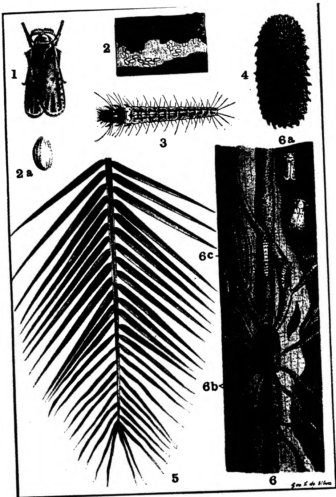
Plate V. The Coconut Caterpillar
(Polgasthalambuwa, S. Thenmolaipulu, T.)
Figure 1.—Moth, resting position, . Figure 2.—Eggs laid near edge of cocoon, those on left freshly laid, those on right near hatching, . Figure 2a.—Egg, near hatching, . Figure 3.—Full-grown caterpillar, . Figure 4.—Cocoon turned over to show pupa, . Figure 5.—Underside of attacked leaf showing galleries of caterpillars above and gray withered portion below, reduced in size. Figure 6.—Portion of attacked leaflet, natural size, showing damage and stages of the pest; 6a, moths, male above, female below; 6b, arrows showing (1) where eggs may be laid; (2) galleries of young caterpillars starting from cocoons; (3) two cocoons, one with top removed to show pupa inside; 6c, caterpillars removed from galleries.
67(POLGASTHALAMBUWA, S. THENNOLAIPULU, T.)
J. C. HUTSON, B.A., PH. D.,
GOVERNMENT ENTOMOLOGIST
SOME ten years ago the coconut caterpillar (Nephantis serinopa) had become established in the majority of the coconut areas on both the eastern and western sides of the Island, and its outbreaks were more frequent and extensive on the eastern coast than on the western. This caterpillar then continued to spread inland in the North-Western Province and for a few years it became a periodically serious pest in this Province, while its attacks became almost continuous in the Batticaloa district of the Eastern Province. Serious and prolonged attacks in any area cause a gradual weakening of the infested palms which may result in subsequent loss of crop. Within the last two or three years, however, the severity of these attacks has gradually decreased on both sides of the Island and this improvement may be attributed partly to the general application of the scheduled control measures and partly to the increased efficiency of its parasitic enemies in certain areas.
The actual damage is done by the caterpillars, which gradually eat away the undersides of the leaflets of the older and lower leaves, so that they first of all become badly spotted. Then if the attack continues for some time the infested leaflets gradually curl up along their whole length to form tubes within which the caterpillars continue to feed until every green portion of the leaflets are eaten and they gradually turn gray and die (Fig. 5). On a badly infested estate the majority of the leaves on almost every palm become completely gray and shrivelled, only the younger leaves remaining green and uninjured. As indicated above, the vitality of heavily infested palms is lowered by repeated attacks and on neglected estates a noticeable reduction in crop may follow later. It is possible that palms which have been weakened by years of starvation and neglect, by attacks of the coconut beetles or by disease, may die after repeated attacks of the caterpillar, but usually palms on well-manured estates recover rapidly even after a heavy infestation, provided that the pest is not allowed to continue its ravages indefinitely.
Moths.—The moth, or winged adult stage, is a small grayish insect which usually rests with its two pairs of wings folded together so as to cover the abdomen or hinder portion of the body (Figs. 1 and 6a). The male and female moths are similar in appearance, the males being usually smaller than the females. During the daytime the moths are inactive and remain for long periods resting on the leaflets of the older leaves or sometimes among the fibrous sheathing at the bases of the leaves. Even when
68disturbed by the violent shaking or beating of the leaves they only flutter away for a short distance and soon settle down again on other leaves. During wet weather they may retire to more sheltered places and may sometimes be found under the cadjan roofs of estate sheds. They are usually more active at night when mating and egg-laying take place.
Habits of oviposition.—The female moths usually start laying eggs within about 2 days after emergence from the cocoons which are formed on the undersides of the leaflets. They may either lay their eggs in small batches on the surface of the leaflets under or near the edges of the larval galleries and cocoons (Figs. 2 and 6b), or they may fly to an uninfested leaf on the same palm or an adjacent one and lay their eggs in small masses on the undersurfaces of the leaflets or in rows in the grooves of the "ekels" or midribs. Sometimes the eggs may be laid on the basal portions of the leaves covered by the fibrous sheaths. Breeding experiments carried out at Peradeniya and at Kurunegala have shown that the moths may lay from about 50 to about 350 eggs and that the average number of eggs per moth is about 200. The eggs are laid in small masses daily for periods ranging from about 4 to about 10 days.
Eggs.—The eggs are oval, very small and creamy white when freshly laid, but gradually turn pinkish after two or three days (Fig. 2). A fully developed egg is shown enlarged in figure 2a. The eggs were observed to hatch in about 7 to 10 days at Kurunegala and in about 6 to 9 days at Peradeniya.
Caterpillars.—The young caterpillars are very small and slender with black heads and pinkish bodies. At first they settle down in the groove of the midrib on the underside of a leaflet and cover themselves with a few threads. After feeding has begun they gradually cover these threads with small pieces of leaf tissue and pellets of waste matter to form protective galleries, more than one caterpillar often feeding under the same gallery. These brownish galleries are gradually extended to take in fresh portions of the under surface of the leaflets and are widened as the caterpillars grow. The caterpillars may feed outside their galleries, especially at night. They are very active and when disturbed they move backwards or forwards inside the galleries with equal rapidity. If a large number of caterpillars start on a single leaflet this soon becomes partially covered with galleries and the eaten portions turn brownish-gray and die. (Fig. 6). The leaflets are eaten further by the second brood of caterpillars and Fig. 6b shows the galleries of young second brood caterpillars radiating in all directions from the cocoons under the edges of which the eggs were laid.
Cocoons.—The caterpillars become full-grown in about 5 to 7 weeks at Kurunegala and in about 6 to 8 weeks at Peradeniya; two caterpillars are shown at Figure 6c. They spin their oval, silken cocoons usually on the undersides of the leaflets, covering them thickly with small pieces of leaf, etc. The caterpillars, after constructing their cocoons, gradually shrink in size and change within about 1 to 2 days into brown pupae inside the cocoons. Two cocoons are shown in Figure 6b, one with the top removed to expose the pupa, while Figure 4 illustrates a cocoon turned over to show the pupa inside. The pupal stage lasts for about 7 to 10 days at Kurunegala and for about 7 to 13 days at Peradeniya. The moths begin laying eggs for another brood within about 2 days after emerging from their cocoons.
69Cutting and burning of infested leaves.—In districts where the coconut caterpillar is known to occur, all superintendents of estates and occupiers of town and village coconut areas should always be on the lookout for the first sign of any spotting of the lower leaves. If it is suspected that an attack has started then a few leaves or portions of leaves should be cut off and examined. Then, if definite evidence of the pest is found, the most effective and the simplest method of checking further spread is to remove and burn without delay all leaves or portions of leaves which bear the slightest signs of caterpillar attack. At this stage it is usually only the oldest leaves which are affected and their removal will destroy numbers of the eggs, caterpillars and cocoons, if the leaves are burnt within 12 hours of removal, as is required under the Plant Protection Ordinance. On young palms the damage can be detected easily and estate labourers can be sent round to cut off and burn all portions of the leaves. Palmyrah palms are also attacked by this caterpillar and all such palms growing on coconut estates or along roadsides should be treated as soon as the pest is noticed, or they should be removed altogether if they are found to serve as regular breeding places for the caterpillars.
All coconut growers should keep their palms in as vigorous a condition as possible by regular cultivation and manuring, and coconut areas should be kept clean so as to prevent the Black Beetle and the Red Weevil from breeding and attacking the palms. Vigorous palms are able to recover more rapidly from caterpillar attacks than those which are usually starved and neglected. All coconut growers in any district known to be infested by this caterpillar should co-operate to keep the pest in check by seeing that their own palms are kept as free as possible from attack. If the control measures are carried out by everyone concerned as soon as the pest appears, it should be possible to prevent a recurrence of the serious and wide-spread outbreaks which occurred a few years ago on both sides of the Island.
70| Province, &c. | Disease | No. of Cases up to Date since Jan. 1st 1933 | Fresh Cases | Recoveries | Deaths | Balance Ill | No. Shot |
|---|---|---|---|---|---|---|---|
| Western | Rinderpest | ... | ... | ... | ... | ... | ... |
| Foot-and-mouth disease | 28 | 4 | 27 | 1 | ... | ... | |
| Anthrax | ... | ... | ... | ... | ... | ... | |
| Rabies (Dogs) | 11 | ... | ... | 10 | ... | 1 | |
| Piroplasmosis | ... | ... | ... | ... | ... | ... | |
| Colombo Municipality | Rinderpest | ... | ... | ... | ... | ... | ... |
| Foot-and-mouth disease | 28 | ... | 27 | 1 | ... | ... | |
| Anthrax | 8 | 5 | ... | 8 | ... | ... | |
| Rabies | 18 | 1* | ... | ... | ... | 18 | |
| Haemorrhagic Septicaemia | ... | ... | ... | ... | ... | ... | |
| Black Quarter | ... | ... | ... | ... | ... | ... | |
| Cattle Quarantine Station | Bovine Tuberculosis | ... | ... | ... | ... | ... | ... |
| Rinderpest | ... | ... | ... | ... | ... | ... | |
| Foot-and-mouth disease (Sheep & Goats) | 115 | 1 | 107 | 8 | ... | ... | |
| Anthrax (Sheep & Goats) | 110 | 41 | ... | 110 | ... | ... | |
| Central | Rinderpest | 65 | ... | 11 | 52 | ... | 2 |
| Foot-and-mouth disease | 3 | ... | 3 | ... | ... | ... | |
| Anthrax | 10 | ... | ... | 10 | ... | ... | |
| Bovine Tuberculosis | 1 | 1 | (The animal was slaughtered) | ||||
| Rabies (Dogs) | ... | ... | ... | ... | ... | ... | |
| Southern | Rinderpest | ... | ... | ... | ... | ... | ... |
| Foot-and-mouth disease | 50 | ... | 50 | ... | ... | ... | |
| Anthrax | ... | ... | ... | ... | ... | ... | |
| Rabies (Dogs) | 1 | ... | ... | ... | ... | 1 | |
| Northern | Rinderpest | 1325 | 243 | 219 | 1040 | 20 | 46 |
| Foot-and-mouth disease | 4 | ... | 4 | ... | ... | ... | |
| Anthrax | ... | ... | ... | ... | ... | ... | |
| Black Quarter | ... | ... | ... | ... | ... | ... | |
| Rabies (Dogs) | ... | ... | ... | ... | ... | ... | |
| Eastern | Rinderpest | ... | ... | ... | ... | ... | ... |
| Foot-and-mouth disease | 52 | ... | 51 | 1 | ... | ... | |
| Anthrax | ... | ... | ... | ... | ... | ... | |
| North-Western | Rinderpest | ... | ... | ... | ... | ... | ... |
| Foot-and-mouth disease | 3 | ... | 3 | ... | ... | ... | |
| Anthrax | ... | ... | ... | ... | ... | ... | |
| Pleuro-Pneumonia (Goats) | 3 | ... | ... | 1 | ... | 2 | |
| Rabies (Dogs) | 2 | ... | ... | 1 | ... | 1 | |
| North-Central | Rinderpest | 958 | 60 | 170 | 761 | 5 | 22 |
| Foot-and-mouth disease | ... | ... | ... | ... | ... | ... | |
| Anthrax | ... | ... | ... | ... | ... | ... | |
| Uva | Rinderpest | ... | ... | ... | ... | ... | ... |
| Foot-and-mouth disease | ... | ... | ... | ... | ... | ... | |
| Anthrax | ... | ... | ... | ... | ... | ... | |
| Bovine Tuberculosis | 2 | ... | ... | ... | ... | 2 | |
| Sabaragamuwa | Rinderpest | ... | ... | ... | ... | ... | ... |
| Foot-and-mouth disease | 582 | 582 | 193 | 25 | 364 | ... | |
| Anthrax | ... | ... | ... | ... | ... | ... | |
| Piroplasmosis | ... | ... | ... | ... | ... | ... | |
| Haemorrhagic Septicaemia | 3 | ... | ... | 3 | ... | ... | |
| Rabies (Dogs) | ... | ... | ... | ... | ... | ... | |
* In a Goat at the Slaughter House.
G. V. S. Office,
Colombo, 10th July, 1933.
M. CRAWFORD,
Govt. Veterinary Surgeon.
| Station | Temperature | Humidity | Amount of Cloud | Rainfall | ||||||
|---|---|---|---|---|---|---|---|---|---|---|
| Mean Maximum | Difference from Average | Mean Minimum | Difference from Average | Day | Night (from Minimum) | Amount | No. of Rainy Days | Difference from Average | ||
| Inches | Inches | |||||||||
| Colombo | 84.7 | -0.7 | 76.5 | -0.8 | 78 | 86 | 7.6 | 10.12 | 25 | + 1.74 |
| Puttalam | 84.9 | -1.1 | 78.6 | -0.7 | 80 | 85 | 6.2 | 1.65 | 11 | + 0.01 |
| Mannar | 87.8 | -1.1 | 80.2 | -0.4 | 74 | 80 | 7.4 | 0.02 | 1 | - 0.49 |
| Jaffna | 86.1 | -0.2 | 79.7 | -1.0 | 84 | 89 | 4.6 | 0 | 0 | - 0.61 |
| Trincomalee | 90.1 | -1.4 | 78.0 | -0.8 | 62 | 80 | 6.1 | 0.01 | 1 | - 1.18 |
| Batticaloa | 91.6 | -0.8 | 76.3 | -0.9 | 61 | 79 | 4.6 | 1.19 | 4 | + 0.24 |
| Hambantota | 85.2 | -1.0 | 76.1 | -0.7 | 80 | 91 | 5.3 | 2.49 | 14 | + 0.12 |
| Galle | 83.5 | -0.4 | 76.6 | -0.4 | 82 | 86 | 6.2 | 9.12 | 23 | + 0.82 |
| Ratnapura | 86.0 | -0.2 | 73.9 | -0.8 | 77 | 95 | 7.3 | 19.84 | 27 | + 0.06 |
| A'pura | 87.3 | -1.5 | 75.4 | -1.0 | 70 | 91 | 7.5 | 0.61 | 7 | - 0.61 |
| Kurunegala | 85.8 | -0.8 | 74.8 | -0.9 | 76 | 90 | 8.8 | 8.26 | 25 | + 0.54 |
| Kandy | 82.5 | -0.3 | 70.3 | -0.9 | 76 | 87 | 8.0 | 7.90 | 24 | - 1.46 |
| Badulla | 83.5 | -2.0 | 64.4 | -1.1 | 68 | 94 | 5.5 | 1.95 | 5 | - 0.20 |
| Diyatalawa | 77.3 | -0.9 | 62.7 | -0.2 | 62 | 76 | 6.1 | 0.33 | 7 | - 1.57 |
| Hakgala | 68.6 | -0.5 | 57.8 | -0.3 | 84 | 86 | 5.2 | 4.68 | 16 | - 2.97 |
| N'Eliya | 65.9 | 0 | 55.1 | -0.4 | 82 | 88 | 8.2 | 8.30 | 25 | - 4.19 |
The rainfall of June was below normal over the greater part of Ceylon, the chief exceptions being the North-Western Province and the low-country districts to the west and south-west of the hills, while parts of the south and east coasts also showed slight excess. Only five stations reported more than 5 inches above their average, the highest excess being 10.07 inches at Gikiyanakanda. Only one fall of over 5 inches in a day was reported, at Hallayen, where 6.00 inches was reported for the 29th-30th.
The majority of the rainfall stations in the northern half of the Island reported no rain at all during the month.
The weather over the greater part of the month was of the usual south-west monsoon type. The last few days saw the commencement of a fairly severe wet spell in the south-west of the Island.
Mean temperatures were a little below average, while humidities and cloud showed no marked deviations from normal. Barometric pressures were above normal, while the wind was generally south-westerly, and on the whole about normal.
H. JAMESON,
Supdt., Observatory.
VOL. LXXXI.
PERADENIYA, AUGUST, 1933.
No. 2.
| Page | |
|---|---|
| Editorial ... .. | 73 |
| The Artificial Colouring and Ripening of Fruit. By A. W. R. Joachim, Ph.D. ... .. | 75 |
| Mycological Notes (23). The Oil Treatment of Plantain Diseases. By Malcolm Fark, A.R.C.S. ... .. | 86 |
| A Note on the Cultivation of the Cauliflower in the Low-Country Districts of Ceylon. By W. R. C. Paul, M.A., M.Sc., Dip. Agric. (Cantab). ... .. | 91 |
| The Imperial College of Tropical Agriculture ... .. | 95 |
| Practical Seed Selection of Coconuts ... .. | 101 |
| Tea Cultivation in Tanganyika ... .. | 108 |
| The Clove Industry in Zanzibar ... .. | 112 |
| Value of Scientific Research to Agriculture ... .. | 115 |
| Indian Hemp ... .. | 123 |
| The Rhinoceros or Black Beetle of Coconuts ... .. | 125 |
| Notes on the Cultivation of Currystuffs ... .. | 129 |
| Animal Disease Return for the month ended July 31, 1933. ... .. | 133 |
| Meteorological Report for the month ended July 31, 1933. ... .. | 134 |
Of great interest to those engaged in the
cultivation of plantation crops.
Being a reprint of articles published in
The Tropical Agriculturist by the
Staff of the Department of
Agriculture, Ceylon.
34 Illustrations and Figures
Price Rs. 5/-
— • • • —
Obtainable from:
THE MANAGER, PUBLICATION DEPÔT,
PERADENIYA.
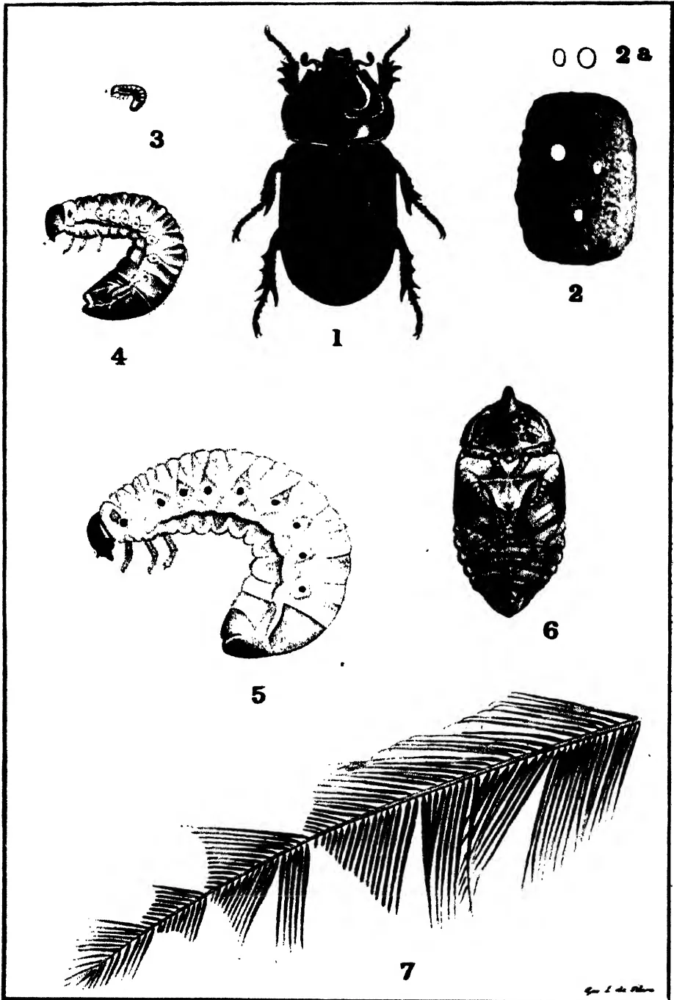
The Rhinoceros or Black Beetle of Coconuts
(Kalukuruminiya, Sinhalese. Karuvandu, Tamil.)
Figure 1.—Black Beetle, male. Figure 2.—Eggs laid in chewed fibre. Figure 2a.—Eggs in outline; that on left recently laid; that on right, near hatching. Figure 3.—Young grub. Figure 4.—Half-grown grub. Figure 5.—Full-grown grub. Figure 6.—Pupa removed from cell. Figure 7.—Mature coconut leaf, showing notches caused by earlier beetle damage when this leaf was closed up in the crown.
(See page 125 for article)
August, 1933.
IN recent issues of The Tropical Agriculturist attention has been called to some of the various aspects of fruit cultivation and emphasis has been laid on the importance, first of all, of choosing localities and soil conditions best suited for the different kinds of fruit, secondly, of employing sound methods of propagation and thirdly, of paying due regard to the various cultural operations considered essential for the production of the best quality of fruit.
As indicated previously, Ceylon is endowed with an unusually wide range of tropical and semi-tropical fruits which are likely to respond favourably to any systematic attempts which may be made to improve their quality. Within recent times, however, some of the pioneers of fruit-growing in Ceylon have found by experience that if they are to compete successfully with imported fruit something more than actual quality is needed. This locally grown fruit will always stand a better chance in competition with similar varieties of imported fruit when it possesses an attractive appearance and is of a fashionable colour; this applies especially to citrus fruit, such as oranges and grape-fruit.
•
74Most citrus-growing countries have found it necessary to adopt artificial methods for colouring their fruit, and Ceylon in her efforts to develop a local fruit industry, while paying due attention to the production of quality, must not overlook the rather important essentials of correct colour and attractive appearance.
This aspect of fruit-production has not been neglected by the Department, and in this issue appears an article on some of the recent work done by the Chemical Division in the Artificial Colouring and Ripening of Fruit. The two chief methods by which fruit can be coloured are explained and notes are given on the various modifications of the colouring process required for such fruits as oranges, grapefruit, plantains or bananas, mangoes, pineapples, etc. It is of interest to note that the colouring process also tends to hasten the maturity and to enhance the flavour of fruit so treated. Successful results in the colouring of fruit have already been obtained by a few progressive local fruit-growers, and it is hoped that the information detailed elsewhere will stimulate others to follow their example.
75A. W. R. JOACHIM, PH.D., DIP. AGRIC.
(CANTAB.),
AGRICULTURAL CHEMIST,
WITH the coming into bearing of small areas of citrus planted a few years ago when the impetus to fruit cultivation in Ceylon was first given, a number of enquiries has been received by the Department as to how the poor colour of local fruit can be improved. As is well known Ceylon oranges and mandarins, especially those grown in the low-country, do not assume the rich colour so characteristic of imported varieties, but remain green or slightly coloured even when they are quite matured and fit for eating. Our grapefruit are also generally unattractive in appearance, being neither green nor yellow. This lack of development of normal colouration when ripe is not confined to Ceylon citrus fruit only. It is reported to occur in California, Florida, etc., with certain varieties of oranges, during certain seasons and under certain climatic conditions. If left to become fully coloured, the quality of the fruit deteriorates. Lemons are invariably picked, even though green in colour, if they have attained the standard size. They have thus always been "cured" for normal colour development before being marketed.
In view of the extensive adoption of the practice of artificial colouration in some citrus growing countries and the interest taken in the process locally, investigations were carried out in the Chemical Laboratory on this and the closely connected problem of the artificial ripening of fruit. It is claimed by users of these processes that fruit and vegetables so treated are not only coloured or blanched, but also ripened in a shorter period than would normally be the case. In the following pages will be summarised the information obtained on these related subjects from the literature and as a result of work done here.
It is reported by Harvey (1) that the Chinese have from ancient times effectively ripened hard pears by enclosing them in a chamber in which incense was burnt. In Ceylon it is not an uncommon practice to smoke plantains in a covered hole in order
76to hasten ripening. Lemons in the past have been cured or coloured by a "sweating" process in which high temperatures and humidities play an important part, the heat being supplied by kerosene oil stoves. Since Sievers and True (3) in 1912 showed that the colouring was mainly brought about by the gaseous combustion products of the stoves, the process has been considerably improved upon. These authors also demonstrated that the exhaust gases of motor engines had the same effect on fruit, but that their use was expensive. It was left to Denny (3, 4) in 1924 to discover that the chief agent of kerosene stove gas responsible for the colouring was the unsaturated hydrocarbon gas ethylene. Since then he and Harvey (1) found that other unsaturated gases like propylene and acetylene have the same property of hastening the colouring and, in certain cases, the ripening of fruit. Neither of these gases has however been used on a commercial scale in the past, as the former, though very efficacious for the purpose, is not easily available in large quantities, while the latter has the disadvantages of a disagreeable odour and of tainting the flavour of the treated fruit. Within recent times however acetylene has been used with success for colouring citrus varieties after due precautions were taken. The use of ethylene for the colouring and ripening of fruit and the blanching of vegetables has since been investigated by several workers and the process is now adopted commercially in the various States of America and Australia with very satisfactory results.
Before detailing the method of colouring it would be useful to explain how ethylene can be prepared and to describe such of its properties as relate to the process. Ethylene is prepared by heating ethyl alcohol with an excess of concentrated sulphuric or phosphoric acid to a temperature of about 165°C, a little sand or a few pieces of glass being added to the container to prevent bumping. The evolved gas is passed through caustic soda to free it of sulphur dioxide and is then quite suitable for use. With 20 c.c. of alcohol and 60 c.c. of concentrated sulphuric acid, it is reckoned that about 1/4 c. ft. of gas can be produced. For industrial purposes cylinders of compressed ethylene are available. These cylinders are not obtainable locally but can be imported from England and America. Particulars of cost, etc., can be supplied by the writer to anyone who requires them. At least one such apparatus is in use in Ceylon at present, but for most users or intended users of the process who deal with comparatively small quantities of fruit, expenditure on such an apparatus is not necessary.
77Ethylene is a colourless, faintly sweet-smelling gas of about the same density as air. It will thus easily diffuse to any part of a chamber or crate into which it is passed. When mixed with air in proportions above 3 per cent. by volume, it forms an explosive mixture. In the concentrations in which it is used for colouring purposes, however, it is quite safe. But when using it care should be taken that no flame is brought near the gas issuing outlet. Ethylene may also be used as an anaesthetic, but in the concentrations required for this work, it is absolutely harmless.
How ethylene brings about the change in colour of fruits and effects ripening is not yet well understood. Some writers suggest that the effect of ethylene on ripening is due, in part at least, to the increase in permeability of the cells to oxygen (10, 12) as shown by a reduction of the respiratory quotient. Others consider that it stimulates enzyme action (1). What however, is clear, is that oxygen is essential for the process (3, 6). Hardy (6) states that the change in colour of the fruit is brought about by the destruction of the chlorophyll by the oxygen and the unmasking of the colouring matters of the rind.
The actual process of colouring is very simple. The fruit after being well washed and dried is placed in a chamber in crates or loose on shelves. The chamber may be of wood or even of masonry, but it must be as airtight as possible and have a door and a window for ventilation. Through a small opening in the chamber ethylene gas is passed either from cylinders or from a gas generating plant. A very convenient proportion of gas to work with is 1 of the latter to 1,000 parts of air. Concentrations of ethylene as small as 1 in 200,000 parts of air have, however, been found to be efficacious with certain types of fruit, but the time for ripening or colouration is longer. A moderate excess of gas is not harmful, but very high concentrations apart from causing spotting of the fruit, may be dangerous for other reasons stated. The temperature in the chamber should be from 65°F. to 80°F., the optimum being about 70°F. The average Ceylon temperature range is somewhere near the higher limit and would, therefore, be suitable for most fruit. Temperatures higher than 93°F. retard the colouration. The relative humidity range varies from 75 to 90 per cent. with different fruits. It can be controlled by introducing an open vessel of water into the chamber if a high humidity is required. Quicklime, sand or caustic soda is used to produce a low humidity.
78After the first charge of gas the chamber is kept closed for about eight to ten hours, at the end of which period it is well aired for about an hour or two and then given a second charge. Ventilation is very essential for the reason already explained. This procedure is repeated each day, with two, or three charges a day till the fruit is coloured. The length of time taken will vary with the variety of the fruit and its degree of maturity, the more inature the fruit the shorter the time required for colouring. It is not essential that the fruit should be coloured fully if it is to be retained for a few days before it is sold. Once the colouring has started it will continue till full colouration or maturity is reached.
As a result of the gas treatment the "buttons", or attachments of the stem to the fruit, will often drop. This is because the cells around the buttons enlarge through the stimulation of growth by the treatment. The falling away of the buttons was regarded in the past as a disadvantage owing to the danger of fungal infection through the opening. The contrary opinion is now held. Button fall can be prevented to some extent by frequent changes of gas and good aeration. One precaution is very necessary where fruit is artificially coloured. They should not be bruised in any way. With citrus, bruises are shown up as green patches. Thorough washing of the fruit is also necessary, as any spray residues or sooty mould will prevent uniform colouring.
The statement that ethylene hastens the ripening of fruit has been made by many writers, but the evidence is not entirely confirmatory of this claim. In regard to certain varieties of citrus, (e.g. the orange), Chase & Church (5) have shown that there is no difference in composition between treated and untreated fruit. On the other hand while these authors obtained the same result with lemons, Sievers & True (2) showed that "forced" curing increased the amount as well as the acidity of juice in the fruit. It was known that oranges when picked green did not improve on keeping, unlike certain citrus varieties and other fruits, (e.g. pears, bananas, etc.), which when picked matured, though hard and inedible, ripened into quite edible fruit.
. 79Analyses carried out in this laboratory on representative samples of the local variety of "squash" oranges and of local grown Valencias, treated and untreated with ethylene, confirmed the general findings of Chase & Church (5). It was however noted that the treated fruit invariably had smaller amounts of total sugars than the untreated fruit. This is seen from the table below and is obviously due to the increased respiration brought about by the treatment.
Change in Composition of Oranges
| Constituent | Variety | Original sample | Final sample | |
|---|---|---|---|---|
| Untreated | Treated | |||
| Acidity as citric acid % | Local 1 | 3.12 | 3.06 | 3.29 |
| Local 2 | 2.30 | 2.47 | 2.42 | |
| Valencia | 1.11 | 1.12 | 1.02 | |
| Reducing sugars % | Local 1 | 2.90 | 3.07 | 2.94 |
| Local 2 | 3.0 | 3.17 | 3.10 | |
| Valencia | 2.34 | 2.39 | 2.39 | |
| Sucrose % | Local 1 | 3.04 | 2.77 | 2.14 |
| Local 2 | 3.72 | 3.70 | ||
| Valencia | 2.75 | 2.84 | 2.63 | |
| Total sugars % | Local 1 | 6.13 | 5.98 | 5.19 |
| Local 2 | 6.92 | 7.06 | 6.52 | |
| Valencia | 5.23 | 5.38 | 5.16 | |
| Total solids % | Local 1 | 10.3 | 10.3 | 9.8 |
| Local 2 | 10.2 | 10.2 | 9.9 | |
| Valencia | 7.8 | 7.8 | 7.8 | |
| Density at 27°C | Valencia | 1.027 | 1.028 | 1.028 |
| Total solids/acidity | Local 1 | 3.3 | 3.4 | 3.0 |
| Local 2 | 4.4 | 4.1 | 4.0 | |
| Valencia | 7.0 | 7.0 | 7.8 | |
This observation was also noted by the Russian workers (10) with cucumbers, tomatoes, mandarins and apples, and by Harvey (1) with pineapples. Hartshorn (14) showed that acetylene gas accelerated the ripening processes of green bananas as indicated by rates of softening, respiration, starch hydrolysis, flavour and colour changes. Increased respiration was also found by Denny (11) with lemons. In all these cases there was a marked increase in carbon dioxide production and oxygen consumption after treatment. On the other hand Wolff (8) working with bananas found that while fruit ripened with ethylene turned yellow at a somewhat more rapid rate than the controls, and showed slightly greater increases in sugars and decreases in starch from day to day than the latter, on the whole the differences were not very marked. Unlike Harvey (1) he found no differences in the rate of respiration between treated and untreated fruit. But he observed that when a bunch of bananas was in a quasi-dormant condition, ethylene stimulated an immediate commencement of ripening. Persimmons treated with ethylene were found by Chase & Church (5) to have their
80astringency removed and to soften more quickly than untreated fruit. The colour of the latter was also inferior to that of the treated fruit. These authors also found that the colouring of bananas, of the seed arils of pomegranates, and of tomatoes was accelerated by ethylene. These observations are confirmed by the work of Harvey, Rosa and others (1). Kohman (9) however found that with tomatoes there was no difference between the rate of colouring of treated and untreated fruit unless they were picked at such an immature stage that they would not have developed the red colour if left on the vine. In regard to dates while Chase & Church (3) found no change in composition between treated and untreated fruit, Harvey (1) reported that ethylene hastened the ripening and the removal of tannins from the fruit.
The experience of the writer in regard to mangoes is that the colouring of varieties of this fruit which colour naturally is hastened by the use of ethylene. The Jatna mango which is green when ripe does not, however, become yellow, but takes on a yellowish green tinge. The ripening of the fruit, as discerned by flavour, odour and softness is accelerated by the process. The ripening of plantains was certainly hastened by the process, and such varieties like the ash plantain, which normally are only used for cooking, were found to ripen like the eating varieties. Local users of the ethylene process report that matured pineapples can be made to ripen in a much shorter time by the use of ethylene than would normally be the case. The astringency of mature sapodillas can likewise be entirely removed. On the whole the evidence indicates that while the process cannot be used to ripen certain citrus fruit like oranges and grapefruit, it is of great value in hastening the ripening of a number of varieties of other fruit.
The acetylene process for the colouration of fruit is carried out in the same manner as the ethylene process, the only difference being that in this case the gas is acetylene, obtained by the action of water on calcium carbide. The latter is generally placed in a dish inside the chamber and sufficient water to saturate the carbide is added in small quantities from outside by means of some clip device. The proportion of acetylene gas to air required for satisfactorily colouring matured citrus fruit was found to be from 1 in 1,500 to 1 in 3,000. One ounce of carbide will suffice for every 75 cubic ft. of "free" air space, i.e. after
81making allowance for the volume occupied by the crates of fruit. Dunnage—strips of wood between the crates—is used when stacking them so as to ensure free air circulation. The fruits are exposed to the air-gas mixture for a period of 4 hours, at the end of which time the chamber is well aired for at least 2 hours. This is very necessary if the fruit is to be free from any taint. The procedure is repeated till the fruit is sufficiently coloured, the carbide being renewed at each refilling. This process is now being used commercially and is described by Prest (13). Experiments carried out in this laboratory showed that grapefruit and oranges can be very satisfactorily coloured by the process. Matured grapefruit took from 3 to 5 days to colour. The fruit so coloured kept well and had no adverse flavour whatsoever. The effects of the gas on the ripening process of bananas have already been indicated (14). A point of interest about acetylene gas observed by Denny (3) is that the pure gas does not hasten fruit colouration, while the commercially prepared gas does so.
The cost of the ethylene process is very small. In the United States it works out at from 25 cents to a dollar for a carload of 300 to 360 boxes of fruit. For local conditions the cost will not exceed a small fraction of a cent per fruit. The cost of colouring citrus by acetylene gas worked out at one-seventh of a penny per case of oranges in Australia.
It may be well to discuss the advantages and disadvantages of artificial colouring and ripening. For certain fruit, (e.g. lemons), the adoption of artificial curing as already explained, is essential. Colour is no indication of maturity in citrus, and for such varieties as colour poorly when mature the advantages of the process are patent and colouring becomes quite legitimate. The trade, rightly or wrongly, has discouraged the sale of green citrus fruit and purchasers decidedly prefer well-coloured fruit. There is no reason, therefore, why fruit desirable in every other way should not be coloured, especially as the cost is insignificant and the profits enhanced. A second advantage of artificial colouring is that fruit can be coloured or ripened uniformly for the market. This uniform ripening is also very desirable for canning purposes. The process being essentially one which accelerates ripening, the possibilities in regard to the early or out of season market are apparent, especially if used in conjunction with cold storage. A further advantage of the ethylene
82process is that it is harmless when compared with the dangerous stove method of "sweating" fruit. The treatment is also likely to result in fruit of better eating quality. This does not hold in the case of certain citrus species but, on the whole, does apply to a large extent to a number of other varieties of fruit. As to the improved keeping quality of treated fruit, especially citrus fruit, there is practically entire agreement.
The great disadvantage of the artificial colouring process in so far as it applies to oranges and grapefruit is that immature fruit, unfit for consumption, may be coloured artificially and sold as sound fruit. But immature coloured fruit can always be discovered. It never assumes the rich colour of fully matured fruit. The difficulty has been overcome in practically all citrus-producing countries by the enforcement of Food Laws which declare that no citrus fruit can be sold for consumption unless it passes a certain chemical standard. Thus in South Africa the minimum total solids/acid ratio of ripe oranges should be not less than 6 to 1 (15), while in Florida this is 7 to 1 (16). If an export citrus trade from Ceylon should develop to any extent, it would be necessary to introduce some such tests for local varieties of citrus.
A few practical points in regard to the colouring and artificial ripening of local varieties of fruit by the ethylene process will not be without interest to intended users. A great deal of practical information is supplied by Harvey (1), but the brochure by the Carbide and Carbon Chemical Corporation, New York, entitled "Ethylene for Colouring Matured fruits and Vegetables" will be found very useful. The information supplied below has been obtained as a result of experiments carried out locally.
Grapefruit.—The fruit should be well washed and wiped with soft cloth before it is put into the colouring chamber. A maximum gas concentration of 1 to 1,000 of air and frequent changes of gas are advised if the retention of the buttons is desired. Normally two exposures a day of about 8 to 10 hours each will suffice. The thorough airing of the chamber for one hour at least between successive charges of gas is essential. When fruit is well matured it colours very well, a total period of two to four days, depending on the degree of maturity of the fruit, being required. The fruit keeps very well after colouring.
83Oranges.—Only the very best quality and well matured oranges of the local variety should be coloured. Even with these the rich orange colour is difficult to secure. The same remarks as to the treatment of grapefruit apply with regard to this fruit. From 4 to 5 days will be required for satisfactory colouring. A little water placed in an open pan is desirable if the humidity is low to prevent the wilting of the fruit.
Lemons.—The best curing temperature for lemons is about 65°F. Frequent ventilation is essential. The humidity should be about 80 per cent. Lemons take five to six days onwards to colour satisfactorily. Colouring to full depth is not required, as this will be attained in ordinary storage after removal from the chamber.
Plantains.—The concentration of ethylene gas recommended for ripening plantains is 1 to 1,000 of air. The optimum temperature is about 70°F. Higher temperatures lead to mould development. To prevent the shrinking of the skin, the humidity must be retained at 90 per cent. in the early stages of the process by placing an open pan of water in the chamber. As the fruit ripens the humidity should be diminished to about 75 per cent. From two to three days' treatment will be required for ripening. The local anamalu ripens and colours quite evenly with careful treatment.
Mangoes.—Too high a concentration of gas is not desirable. A concentration of 1 in 2,000 will suffice. The humidity must be neither too high nor too low. The treatment increases the rate of colouring of those varieties which colour normally, e.g. the local Bombay mango, and of the ripening of all varieties.
Pineapples.—This fruit has been exposed to an ethylene-air mixture of 1 to 1,000 with very favourable results so far as appearance, rate of maturity and quality of fruit go. Three to four days are required for ripening mature fruit.
Tomatoes.—Concentrations of ethylene less than 1 in 1,000 have given good results with this fruit. The time of ripening varies entirely with the degree of maturity and variety of the fruit. From three to six days were found necessary for satisfactory results. Temperatures of 65° to 75° F. are the best, higher temperatures rendering the fruit susceptible to mould attack. A fairly high humidity is necessary to prevent shrinkage of the fruit.
84Sapodillas.—The astringency of hard, well-matured fruit was entirely removed in two or three days by treatment with ethylene gas in concentrations of 1 in 1,000. Normal air temperatures and humidity were worked with.
In conclusion, it may be stated that a few enterprising fruit-growers in Ceylon have already taken advantage of this comparatively simple process of artificial colouration and ripening of fruit to market their produce in a far more attractive condition than in the past, with consequent increased sales and monetary returns. This has been especially so with some of the citrus varieties. But pineapples and plantains have also been placed on the market after treatment with ethylene gas with gratifying results. The process offers great possibilities in the hands of reliable growers for a successful trade in some of the citrus varieties, particularly grapefruit.
I have to acknowledge with pleasure the great help rendered by my Assistant, Mr. S. Kandiah in regard to the analytical work recorded in the paper. I have also to thank him and my second Assistant, Mr. D. G. Pandittesekere for their general assistance in the course of this work. To Mr. H. G. O'Connell are due my thanks for having suggested the investigation and for his general interest in it and help whenever required.
MALCOLM PARK, A.R.C.S.,
MYCOLOGIST,
DEPARTMENT OF AGRICULTURE, CEYLON
THE two important diseases of plantains in Ceylon are bunchy top disease, which has been known here since 1913, and Panama or wilt disease, which has been recorded in Ceylon only since 1931. Both of these diseases have proved themselves capable of causing extensive losses both in Ceylon and elsewhere and the need for the adoption of rigorous control measures has been widely felt. The diseases have been introduced into districts hitherto free from them by means of infected suckers used for planting up new areas. It has been made obvious therefore that, in order to stamp out the diseases, the first essential is to prevent the possibility of their further dissemination by the complete destruction of all plants which are affected by one or the other of the diseases. To this end, it has been the policy of the Department of Agriculture to recommend that, whenever the symptoms of either bunchy top disease or Panama disease are observed on a plantain sucker, the whole clump or stool containing that sucker should be uprooted in toto and destroyed by fire or by some other method. This process is laborious and difficult of execution. It is difficult to ensure the complete removal of the plantain clump, the pseudo-stems of the suckers are soft and sappy and difficult to destroy by fire and with Panama disease it has been suggested that the disturbance of the soil tends to increase the activity of the parasite and to hasten the infection of surrounding plants.
In Jamaica, where the presence of Panama disease has been a menace to the banana industry, the need for some better method of treating diseased bananas was realised some years ago. It was felt that the treatment of the disease would be facilitated if some chemical could be found which would kill the banana plant in situ without the necessity for digging up the roots and thus disturbing the infected soil. Hansford started experiments with a number of chemicals in 1923 but in 1926 (1)
87he stated that "none of these treatments was found efficient, and none could be relied on for general use by our inspectors in treating the disease. In fact, it would appear that the only way of killing a banana plant is to dig it up completely".
Hansford's work was followed up in 1930 by Smith (2) who found that the application of kerosene was successful if the plantains were cut back to within a few inches of soil level before treatment. He obtained almost complete success with quantities varying from one pint of Kerosene on young plants to three pints on fairly large clumps or "ratoons". Kerosene fulfils every requirement except one. It is easily obtainable, easy and safe to use and is efficient, but the cost of using it on a commercial scale in big plantations would be prohibitive. Extending his experiments, Smith found that he obtained equally successful results with Heavy Gas Oil, which was much cheaper than Kerosene. Consequent on his work, legislation was introduced into Jamaica embodying treatment of diseased banana plants by oil as an alternative to digging them up and destroying them by fire. The oil method has been adopted with success and it has been found that the cost of treatment with oil is less than that of uprooting and burning.
The success of this form of treatment of diseased plantains has led to the carrying out in Ceylon of experiments with oils. In the first series the following oils were tested:
| Specific Gravity | Closed Flash-point |
|
|---|---|---|
| Persian Fuel Oil | ... 0.935 | 222° F. |
| Persian Diesel Oil | ... 0.895 | 203° F. |
| Tarakan Fuel Oil | ... 0.938 | 185° F. |
The plantain clumps used in the experiments were -3 years old, each clump containing a number of suckers. All vegetable débris, grass and weeds around the base of the clumps were first removed and the suckers were cut down with a knife, each sucker being cut off clean at about four inches above the surface of the soil. The oil was applied in small quantity to the surface of the suckers and well sprinkled immediately round the suckers. An attempt was made to give an even distribution of the oil over the whole clump. It was found that it did not matter if the soil was wet at the time of application and it so happened that most of the applications made in the course of the experiments were on wet soils.
88In the first trial the effect of the application of two pints and four pints of each oil was tested, four clumps being used for each treatment. The only treatment which gave any promise was that in which four pints of Tarakan fuel was used. The other two oils were therefore discarded and a further trial was made with Tarakan fuel, using an application of four pints per clump for one series, and of six for the other. The application of six pints per clump was found to kill a large proportion of the plants but one or two small suckers developed from most of the clumps, which indicated that penetration and killing of the rhizomes was not complete. To use more oil meant that the cost would be too great for general use. (Tarakan fuel oil costs 25 cents per gallon f.o.r. Colombo). It was decided to test another oil, which although more expensive, might prove to be more economical in use.
Field trials were made with a Gas Oil (Specific Gravity 0.864; Closed Flashpoint 170/180°F.). This oil gave uniformly satisfactory results. One pint of oil was found to be sufficient to kill small plants while two pints of oil were found to be sufficient to kill moderately large clumps (2½ to 3 years old). Small suckers developed from some of the treated plants but these suckers were easily removed by hand. The results are summarised below:
| No. of Clumps treated | Treatment | Average No. of suckers at time of treatment | No. of suckers one month after treatment |
|---|---|---|---|
| 4 | 1 pint oil | 2 | 1 sucker in one clump only: others killed |
| 4 | 1½ pints oil | 4 | all dead |
| 4 | 2 pints oil | 6 | 1 sucker in each of two clumps: others killed |
| 4 | control | 5 | 21 suckers in all: (4, 6, 4, 7 respectively) |
In the control plants, the suckers were cut down in the same way as the others but no oil was applied. In counting suckers in the original clumps, very small suckers or "peepers" were disregarded since some were injured and removed in clearing
89away the weeds etc. and a fair count was impossible. Suckers of all sizes were counted at the end of the experiment. The two clumps from which suckers grew after an application of two pints of oil were spread out and covered an unusually large area of ground. The suckers which developed from these clumps were easily removed by hand.
Further casual trials with the oil have been made in treating diseased clumps in the laboratory compound. It appears probable that diseased plantains will be more easily killed than the healthy ones on which the experiments were carried out.
Treated plants have been dug up and the effects of the oil noted. The outside of the rhizomes becomes discoloured from the action of the oil and this is followed by a rapid decay of the whole root system. Sufficient time has not yet elapsed since the experiments for a test to be made of the effect of the treatment on future plant growth. Smith (loc. cit.) carried out experiments and the following is an extract from his paper on the subject:
"Before the method could be put into general practice it was necessary to determine whether the oils which it was proposed to put into general use would have any effect upon future plant growth. Accordingly a number of the sites of the experiments were planted with a variety of crops, care being taken that the actual places where oil had been applied were planted. The following plants were used: Grapefruit seedlings about nine months old, sweet potato cuttings and cabbage plants, and ultimately some 20 spots were replanted with bananas. These replantings were made from two to six months after the application of oil and with one exception, a grapefruit plant in which the cause of death was doubtful, all grew quite healthy and the bananas are now fruiting normally."
The cost of the oil used in the successful experiments and recommended for general use is 45 cents per gallon f.o.r. Colombo. The oil is known as Plantain Disease Oil and is sold by Messrs. The Shell Company of Ceylon, Ltd. Estimating that the average quantity of the oil used for treating diseased plantain clumps is pints per clump, the cost of oil for treating diseased plantains is nine to ten cents per clump. No figures are
90available of the cost of uprooting and destroying diseased plantains, but it is doubtful if the cost is less than that quoted above. The oil treatment has the merits of being simple, easily supervised and cheap.
1. The treatment recommended in the past for the two serious diseases of plantains in Ceylon, i.e. bunchy top disease and Panama or wilt disease has been the uprooting and destroying by fire of all plantain clumps in which either of the diseases has appeared. It has been found difficult to carry out this treatment efficiently owing to the habit of growth of the plantain.
2. In Jamaica a satisfactory treatment of diseased banana clumps with a Heavy Gas Oil has been evolved.
3. Experiments are described above in which different oils have been tested in Ceylon, and a satisfactory and cheap oil has been discovered.
4. The treatment consists of cutting down diseased plants to within four inches of the ground level and of pouring on and around them one to two pints of the specified oil. The oil penetrates into the soil and kills the underground portions of the plantains. The cost of oil used in the treatment is estimated at approximately ten cents per plantain clump or stool.
I wish to record my appreciation of the courteous co-operation of the representatives of Messrs. The Shell Company of Ceylon, Ltd.
W. R. C. PAUL, M.A., M.Sc.,
DIP. AGRIC. (CANTAB.),
DIVISIONAL AGRICULTURAL OFFICER,
SOUTH-WESTERN DIVISION
THE cultivation of the cauliflower in Ceylon has hitherto been restricted to the higher elevations of about 4,000 to 6,000 feet above sea-level, where under relatively low conditions of temperature, the formation of heads in this introduced vegetable has proved successful. At low elevations, however, cauliflowers do not usually thrive and hence they have been regarded as a crop only suited to areas where temperate conditions prevail.
As one of the prized English vegetables not commonly obtainable, cauliflowers are held in great esteem in Ceylon. There is always a demand for them in Colombo, where good prices can be realised, and if they can be grown satisfactorily in the low-country districts of Ceylon, and around the larger towns especially Colombo, the demand should increase, thus leading to a considerable development in the cultivation of this attractive and delicate vegetable.
Trials were recently carried out at low elevations in Ceylon with certain strains reported to be acclimatised in India. The results have so far been encouraging and indicate the possibilities of growing cauliflowers in the low-country market gardens of the Island.
The cauliflower is an essentially temperate crop, being a cultivated variety of the wild species of cabbage (Brassica oleracea) found growing along the sea-shore in England and South and Western Europe. It is recorded as having originated as a mutant, like several of the other cultivated varieties, in which modifications of the various parts of the wild cabbage have
92taken place as e.g. in the stem in knol-khol, in the foliage in borecole or kale and the axillary buds in Brussels sprouts. In the cauliflower the mutation was confined to the floral parts, the peduncles or flower stems becoming so enlarged and modified in size and appearance that they form a dense, white and tender mass with just the rudiments of the flowers themselves. This is the edible portion referred to as the head, subtended by a number of cabbage-like leaves. The inflorescence is, however, formed somewhat later after the head is ready to harvest, but many of its branches remain aborted.
There are several so-called varieties or races of this vegetable, differing in size, vigour, earliness, firmness of the heads and table qualities. The broccolis are a group distinguished by being harder in cold countries and of a longer duration of growth. They are, therefore, grown as a winter crop in such countries. The cauliflowers themselves can be classed as early or late strains according to the time of flowering—the early taking about 90 to 100 days and the late strains about 100 to 130 days.
Many of the cultivated varieties of the wild cabbage have been grown quite successfully at the higher elevations in the Tropics. The cultivated cabbage is, however, the only variety that has been grown with any degree of success at low elevations in Ceylon and though it does not generally form a head it is cultivated for its crop of green leaves which grow loose and open. The cauliflower, on the other hand, is a more delicate crop to grow and even at high elevations while good vegetative growth may be produced, the head may sometimes fail to form for such causes as, perhaps a spell of unfavourable weather, the incorrect time of sowing or the planting of an unsuitable strain.
The trials with cauliflowers in the low-country were first carried out at Gampaha, during the 1932 south-west monsoon season, with an Indian strain, called Patna. It was reported to be an acclimatised strain suitable for cultivation at low elevations in India. The seeds were sown in nurseries and then transplanted in the open. The growth was remarkably good from the commencement and unexpectedly well-developed heads were formed.
The following north-east monsoon season the trials were repeated with the same strain at Gampaha, Mirigama and Colombo. The growth was again good and the formation of heads took place readily in most of the plants. In some cases,
93however, while there was an excellent vegetative growth no heads were formed, but the plants in such plots were transplanted too late in the season.
The formation of heads in these areas situated almost at sea-level has not previously been recorded in Ceylon and the success obtained with the Patna strain was considered sufficiently striking to merit a preliminary note on this subject.
The seed should be sown in a nursery bed or box containing well-prepared, rich soil in an open sunny situation. It was found that unless the sowing is fairly thin, the seedlings that come up are too close and crowded, and resulted in the development of weak and drawn plants. It is, therefore, advisable first to sow the seed broadcast, as thinly as possible, and then transplant them after a week's growth to another bed or box. The soil in the nursery should be watered the previous night and after sowing in the morning the seed should be covered over with a thin layer of light, sifted soil and gently watered each day. Germination is very rapid, taking place almost the next day and in about two days' time the cotyledons make their appearance. When the seedlings are about two to three inches high they should be transplanted about three inches apart each way to a second seed bed or box. The nurseries should be allowed to receive a few hours' sunlight each day and kept lightly shaded for otherwise the plants become less robust and are more liable to attacks from insects when always shaded. After the plants have attained a height of about six to eight inches they should be transplanted in the open at a distance of two by two and a half feet in well-manured beds. Frequently transplanted plants show better growth and it is therefore advisable to carry out this operation at least twice. After transplanting, the beds should be watered in the evening.
The soil should be a light loam capable of easy drainage. It is essential that it should be well-manured and there should be no check in the growth of the plants at any stage, otherwise they are liable to produce only leaves and form no heads. A few weeks before planting out well-rotted cattle manure should be spread over the beds and the soil should then be dug over so as to incorporate the manure thoroughly with it. As a top dressing a dose of liquid manure or a suitable fertiliser may be applied. Cattle manure when used should be well-rotted, then spread around each plant and covered over with a layer of soil.
94Frequent intercultivation is necessary; the soil should be kept constantly hoed and the plants should be earthed up. The beds should be kept quite clean so as to prevent insect attacks.
As soon as the heads begin to form, the surrounding leaves should be gathered over and tied around them or the leaf stalks should be partially broken and bent over so as to exclude strong sunlight and thus increase the whiteness of the heads.
The nurseries for the south-west monsoon season are best prepared early in May and transplanting may be carried out after the heavy rains during the middle of June. For the north-east season the nurseries should be sown about the beginning of October and transplanting should be done towards the latter part of November after the heavy rains have passed.
An ounce of seed will produce about 2,000 to 3,000 plants and about four to six ounces will suffice for one acre.
Cauliflowers are very liable to the attacks of insect pests. There are several leaf-eating caterpillars some of which also burrow into the heads of this vegetable, thus rendering the attacked plants quite unsaleable. The beds should be kept very clean as stated before and only well-rotted cattle manure should be used and applied preferably a few weeks before transplanting. During the early stages of the growth of the plants they may with advantage be dusted with ash or better with a mixture of Paris Green and ash in the proportion of one part by weight of Paris Green to thirty-two parts of ash or one oz. to two lb. When plants with developing heads are found attacked by caterpillars they should immediately be pulled up and destroyed.
A disease that commonly attacks cauliflowers especially in market gardens around Nuwara Eliya is Clubroot or Finger and Toe caused by the fungus Plasmodiophora brassicae. The roots of affected plants become enlarged and knotty, and then decay, while the leaves turn yellow. Owing to the tendency of this disease to appear in acid soils it can be appreciably checked by the application of a heavy dressing of lime up to about 20 lb. for every 100 sq. feet before planting. The land should furthermore be well-drained as a high water content of the soil is necessary for infection. Other preventive measures to be taken are: the selection of healthy plants, the destruction of all diseased plants and rubbish and the rotation of crops by the planting of crops other than those of the cabbage family on the same land for a few years.
95TO Sir Norman Lamont, the second baronet, is due the credit for having been the first to call attention to the need of an Agricultural College for the Colonies situated within the tropics.
In an article which appeared in the Empire Review as far back as 1902 he, then Mr. Lamont, sketched out the form which such a college might assume.(1) Read today, his suggestions seem to have been almost prophetic. He considered that the Imperial Department of Agriculture, which had been founded by Mr. Joseph Chamberlain four years before, would form "an excellent nucleus for the College," which must be of university standing; that candidates for admission, who should not be less than seventeen years of age, should be required to pass a searching examination before admission and again at the close of each year's session, which should be of nine months' duration; and that there should be attached to the College an instructional sugar factory—all of which has come to pass. Developing his theme in 1913 at a meeting held under the auspices of the Liberal Colonial Club at the residence of Sir Robert Perks, M.P., he definitely suggested that the College should be in Trinidad and that the headquarters of the Imperial Department should be transferred to that Island. He also stressed the great importance of research.
Another protagonist of the movement was Professor J. B. (now Sir John) Farmer, who declared in season and out of season that the College must not be a mere local institution but must have a real scientific and research outlook and very high ideals.
It was not until after the War that the proposals for the establishment of a Tropical Agricultural College emerged from the discussion stage. Sir Francis Watts has already related in these pages how in accordance with the recommendations of a Committee set up in 1919 by Viscount Milner, then Secretary of State for the Colonies, with that eminent biologist and man of affairs, Sir Arthur Shipley as Chairman, the West Indian Agricultural College was founded in Trinidad in 1921 and was thrown open to students in the following year.
Pending the presentation of a petition to the King for a Royal Charter, the College was incorporated as a company "limited by guarantee." Sir Arthur Shipley was Chairman and Sir David Prain, then still the Director of the Royal Botanic Gardens, Kew, Vice-Chairman. Sir Francis Watts, the Commissioner of Agriculture for the West Indies, was the first Principal, and he and the members of his scientific staff, who, with the headquarters of the Imperial Department of Agriculture, were transferred from Barbados to Trinidad, form the Academic Board.
* By Sir Algernon Aspinall, C.M.G., C.B.E., B.A., Secretary of the Tropical Agricultural College Committee, in The Empire Cotton Growing Review, Vol. X, No. 3, July, 1933.
(1) "The West Indies: A Warning and a Way", by Norman Lamont.—The Empire Review, Vol. IV, No. 19, August, 1902.
96In selecting Trinidad as the site of the College the Tropical Agricultural College Committee were influenced by several advantages offered by that Island. Foremost among these were complete immunity from hurricanes or cyclones, a wide variety of tropical products, and accessibility from the other West Indian Islands and British Guiana as well as from England. There were also Trinidad's generous offers of land at St. Augustine, and a handsome contribution of £50,000 for building, to provide which the planters actually asked that they might be taxed. It should be recorded that, after the Committee had approved their Report, Jamaica made a similar offer conditional upon the Imperial Department being removed to that Island.
It is still sometimes asked why the College was located in the West Indies and why not in Ceylon or Malaya, for example. The reply is that, as Lord Milner and Sir Arthur Shipley used to say, the College had to be placed somewhere, and experience has shown that its geographical position has not deterred students from entering it from Ceylon and even the distant Seychelles.
Prince Albert Victor and Prince George, now King George V., in their narrative of their cruise in H.M.S. Bucchante (1879-1882), after describing a visit they paid to the Maracas Fall in Trinidad, wrote: "On returning the views appeared finer than they did on going up . . . . Just above San Josef . . . from the front of the Church . . . the plain looked in the low evening sunlight just like an English park with its grass, and large rounded trees standing here and there in the paddocks." Just over forty years later that park-like plain was selected by Mr. W. G. Freeman, then Director of Agriculture of Trinidad and Tobago, as the ideal site for the new College. On it have now risen residences, hostels, and laboratories grouped round about a stately building which accommodates the administration department and the library, while unobtrusively tucked away in one corner are the sugar factory, power house, gas plant, and low temperature station. The Principal occupies the old "great-house" of St. Augustine estate, and scrupulous care has been taken to preserve the amenities of the site. The condition of the buildings, roads, lawns, and hedges is an object lesson of how real estate should be tended in the tropics.
Although the College began its existence as a West Indian institution, provision was made at the very outset for post-graduate study and research, and "refresher" courses for Agricultural Officers, besides a three years' Diploma course. The Governing Body in their first Report declared that they had had constantly in view the desirability of establishing the College on the broadest Imperial basis so that it might provide for the needs not only of the British West Indian Colonies and British Guiana, but also of the tropical Colonies of the Empire generally. In 1923 in order to emphasise the Imperial nature of the undertaking, they changed the name of the College to "The Imperial College of Tropical Agriculture." Under that significant title it was incorporated by Royal Charter in 1926 receiving in the following year the gracious patronage of the King.
Meanwhile Sir Francis Watts, who had done so much towards founding the College had retired in 1924 and had been succeeded by Dr. Hugh Martin Leake, Principal of the Agricultural College at Cawnpore, whose régime was marked by much valuable constructive work, including the planning of roads and additional buildings and an expansion of the curriculum.
97In the first academic year there were eleven Diploma students and two post-graduates on the register. At the close of the 1924 the corresponding numbers were eighteen and fourteen. They have since steadily increased, until this year there were fifty-two students in residence, of whom twenty-four were taking the Diploma course, twenty-five the post-graduate course, and three special courses.
A turning-point in the history of the College was the appointment of a Committee in 1924 by Mr. J. H. Thomas, M.P. then Secretary of State for the Colonies, with Viscount Milner as Chairman, to enquire into and report upon the recruitment and the training of officers for the Agricultural Departments and of the non-self-governing Dependencies. Since the War there had been a definite awakening to the potentialities of the Colonies, with their area of upwards of 2,000,000 square miles and their vast population of 50,000,000 souls, as a source of supply of essential foodstuffs and raw materials, and as a market for manufactured goods. Between 1905 and 1925 trade between the United Kingdom and the Colonies had been nearly quadrupled, but for the further development of agriculture scientific assistance were lacking, and there was grave difficulty in finding suitable candidates for the Colonial agricultural services.
Recognizing at once the seriousness of the shortage of botanists, entomologists, and mycologists, the Committee presented to the Secretary of State for the Colonies in March, 1925, a preliminary report in which they outlined a scheme for the provision of post-graduate scholarships to be granted annually to suitable applicants in order to create a pool from which the needs of the various Colonial Agricultural Departments might be met from year to year. They recommended that these scholarships should normally be granted for two years, the first to be spent at institutions in this country and the second usually at the Imperial College of Tropical Agriculture, in order to give the scholars a practical introduction to systems of tropical agriculture on the spot.
These recommendations were approved by a great majority of the Colonial Governments invited to co-operate, and the Imperial Government consented to provide, over an experimental period of ten years, grants equivalent to one-third of the total contributions available. It is noteworthy, and indeed an historic fact, that in adopting this system the Government was following the lead of the Empire Cotton Growing Corporation, which having similarly experienced difficulty in recruiting suitable officers for its research and development work, first sent out selected candidates for training at the Imperial College of Tropical Agriculture in 1922. Fifty-five students of the Corporation have already passed through the College and are now working in such widely scattered parts of the Empire as the Union of South Africa, Northern Rhodesia, Southern Rhodesia, Nyasaland, Uganda, Nigeria, the Gold Coast, the Sudan, Tanganyika, Trinidad, Jamaica and Ceylon.
It was not until three years later that the first Colonial Office students entered the College. No fewer than 120 have now passed through it and most of them have taken up appointments in the Colonial agricultural services. Never before can the report of a Committee have been more promptly or successfully implemented.
98Since the Cotton Research Station was opened by the Empire Cotton Growing Corporation in 1926 it has been closely associated with the College. Dr. S. C. Harland and Mr. T. G. Mason, its two executive officers, had been for a short time members of the College Staff. Its research laboratories are within a stone's throw of those of St. Augustine and are provided with gas and electricity from the College plant. The liaison became closer in 1927, when on Dr. Leake's retirement Mr. Geoffrey Evans, who had been Director of Cotton Culture in Queensland under the Corporation since 1923, was appointed Principal, and, after the lamented passing of Sir Arthur Shipley, whose last illness was undoubtedly aggravated by anxiety and worry over the finances of the College, Sir James Currie, Director of the Corporation, became Chairman of the Governing Body of the Imperial College.
All that is necessary in respect of investigations into cotton is performed at the Cotton Research Station, and long-range research at the College is confined to cacao, sugar-cane, bananas, and citrus. Cacao research is financed by some of the leading manufacturers and the cacao-growing Colonies, and, for the present at any rate, banana research by the Empire Marketing Board, which provided funds for the erection and equipment of a modern low temperature plant. Side by side with this research, experiment work is being carried on with soils and fertilizers with the support of Imperial Chemical Industries, and each of the principal departments of the College—namely, those devoted to agriculture, botany and genetics, chemistry and soil science, economics, entomology, and mycology and bacteriology—is conscientiously working on various problems with the solution of which they are concerned. Each with one exception is under the charge of a professor (in the case of entomology a senior lecturer), who is assisted by a lecturer. Mention must also be made of the Department of Sanitation and Hygiene, the officer in charge of which imparts to the students a rudimentary knowledge of health in the tropics which not only proves of great value to the men themselves but also to the labourers under their control in the various parts of the world in which they are posted.
As Professor (now Sir John) Farmer has pointed out, there had existed a gap, largely unbridged, between the university at home and the work that awaited the agricultural officer in his district, where the conditions that embraced his problems and affected their solution were so widely different from those within the range of his previous experience. The College enables this hiatus to be short-circuited, and it is now possible for a man in a few months to build effectively on his previous knowledge of principles. In short, he is now in a position to obtain easily and under exceptionally favourable conditions just that kind of wide outlook over, and reasonably intimate familiarity with, the material and environment of his prospective problems so necessary for ultimately attacking them with good prospects of success. Then, to quote Sir Arthur Shipley, men of science are slowly but surely gaining control over the devastating forces of nature. To train them for the conquest they must have education. They must be taught what advances have been made by their predecessors, and
99what advances are being made by their contemporaries. Above all they must learn to observe accurately and to record faithfully what they have observed. Such training cannot be carried out at home and alone. It needs an institution like the Imperial College with its library, its laboratories, its experiment fields, and its staff of skilled professors and lecturers.
The College was visited by Mr. F. L. Engledow, now Drapers' Professor of Agriculture at Cambridge University, in 1929, at the request of the Empire Marketing Board, and in 1932 by Mr. F. A. Stockdale, the Agricultural Adviser to the Secretary of State for the Colonies. Both were favourably impressed by what they saw, and the College received also the commendation of the Colonial Office Conference which met in London in 1930. A Committee of the Conference, of which Sir Herbert Stanley, then Governor of Ceylon, was Chairman, recorded their deep appreciation of the work being carried out, and placed on record their recognition of the importance of the Imperial College as the centre for post-graduate training in tropical agriculture for the agricultural services of the Colonial Empire. In their report on the organization of a unified Colonial Agricultural Service they recommended that membership of the service should be confined in future to candidates who had received not less than two years' training, of which in the case of Colonial Agricultural Scholars one year would normally be spent in Trinidad. It is a matter for regret that, owing to circumstances arising from the world trade depression, the unified Colonial Agricultural Service, which had also been so strongly advocated in 1927 by the Committee of which the late Lord Lovat was Chairman, has so far failed to materialize; but when the proposals in this connection are revised the Imperial College should be in a position to play its part in making them effective. To revert to the Committee of the Conference. They finally expressed the hope that every Government might find it possible to give substantial financial assistance to the College and that "in any instance where circumstances should preclude this being done, at the very least an annual contribution of a nominal amount will be forthcoming in recognition of the importance of the College in the development of Colonial Agriculture". Approval of the Committee's report was recorded by the Conference at a plenary meeting held in 1930, in the following minute: "In particular the Conference recognizes the importance of the Imperial College of Tropical Agriculture as a centre for post-graduate training in tropical agriculture for the Agricultural Services of the Colonial Empire. It recommends that those Colonial Governments which do not at present contribute towards its maintenance should be invited to give some financial assistance to the College as soon as a reliable forecast can be given as to its needs for the next five years." Then came the economic depression, and so acute was the financial crisis that the Colonial Office declined to invite the non-contributing Colonies to make even token contributions towards the maintenance of the College, whose staff is so ceaselessly working in the interests of the tropical parts of the Empire.
The question of finance has been a constant source of anxiety to the Governing Body. At the start contributions of one-half of one per cent. of their revenue made by the West Indian Colonies (Jamaica excepted) towards the cost of maintenance were supplemented by a grant-in-aid of £15,000, spread over five years, from His Majesty's Government. The British Cotton Growing Association contributed £500 in the first year and has given the
100same amount annually ever since. In the second year the Empire Cotton Growing Corporation made the first of a series of annual grants of £500 which are still being maintained, and in 1926 it generously contributed jointly with the Empire Marketing Board and in equal moieties a capital sum of £42,000 of which £10,000 was earmarked to meet existing liabilities and the balance for new buildings and equipment. This brought the total of a special fund which Viscount Milner, and after his death Viscount Burnham, consented to raise to £87,872. The Empire Marketing Board has also been a generous benefactor of the College. From 1926-27 onwards it provided annual contributions at first to meet deficiencies, and latterly in the form of block grants, but with increasing demands made upon the College, and the rapid development of its activities, the Governing Body found it impossible to balance the annual budget. In 1931 they were promised a block grant of £16,000 a year for five years from the Empire Marketing Fund, but when the world trade depression became acute the grant was cut to £14,400 and the prospects of its continuance appeared doubtful. A deputation, therefore, waited on Sir Philip Cunliffe-Lister on December 10, 1931, to explain to him the gravity of the situation. It was introduced by the Earl of Derby and included representatives of Cambridge University, the Empire Cotton Growing Corporation and the British Cotton Growing Association, besides the Governing Body, who declared that the difficulty of financing the College had become so acute as to threaten to interfere with the education and research proceeding at it. As a result the Empire Marketing Board undertook to provide an annual block maintenance grant of not less than £14,400 and not more than £16,000, according to the strength of its financial position, for each of the four years 1933 to 1936. But now the Empire Marketing Board has been thrown into the melting pot. The uncertainty is therefore greater than ever, and it can never be completely removed until the Imperial College of Tropical Agriculture has behind it a substantial endowment fund, for the creation of which there is pressing need. In 1932 the Governing Body received a welcome contribution of £32,000 towards such a fund from the Carnegie Corporation, and it will be a sad reflection on British enterprise if it is not supplemented by similar gifts from wealthy firms and individuals resident in this country and in the Dominions and Colonies, whose imagination must surely be stirred by the achievements of the College, past students of which are now promoting the development of agriculture on scientific lines throughout our far-flung Empire.
101IN the past the selection of seed for the planting of the main commercial areas of tall coconuts in Malaya appears to have been carried out on what, at the best, must be termed haphazard lines. This grants that, in most cases, planters have done their utmost with existing facilities to obtain the best planting material on offer.
In no branch of agriculture is good seed expensive, betimes good or bad, and this is particularly the case with perennial crops with a long economic life—coconuts for example which normally remain profitable for a period of 30 to 60 years. In a crop of this nature planting is done once and for all, the use of poor material cannot be rectified in the following year as is the case with annual crops. The planter must stand upon the seed he provides in the first instance, therefore the expenditure of a few dollars more per acre on the best possible material is of little moment. Expressed in terms of cash one looks upon the difference between seed cost of $5 and $25 per acre on a 1,000 acre estate as vast, but if by provision of improved seed, yields can be obtained only 10 per cent. above average, say from 10 to 11 piculs of copra per acre, the cost plus interest is fully recouped in 7 or 8 years—less than one-quarter of the economic life of the palm—even with copra at $5 per picul.
Three methods of seed selection appear to have been used on the European owned coconut areas of Malaya.
Each method marks a definite step forward but it cannot be said that great progress has been made. It cannot be denied that in respect of this problem the coconut industry lags behind most other large scale tropical products. Rubber, a much newer commercial agricultural proposition, has made enormous strides during the past 10 to 12 years, whereas coconuts have practically nothing to record. The reason for this is undoubtedly the time involved in evolving and proving a pure strain—probably two generations or about 25 years. There is unfortunately, no short cut by vegetative propagation as in the case of rubber, but as coconuts have been established as a commercial proposition for upwards of thirty years in Malaya, the industry should by now be far ahead of where it actually is, and it must be admitted that very little energy has been applied to this most important yield factor.
* By A. C. Smith, in The Malayan Agricultural Journal Vol. XXI, No. 6, June, 1933.
102Of the methods enumerated above, (2) is that most frequently used but at best it can only be expected to provide plants which will return good average yields. Examination of any high yielding area will establish the fact that the variation in yield per palm is from 0 to over 120 nuts per annum, with more than 50 per cent. of palms below average.
(3) is an improvement upon (2) but in most cases selection is confined to palms carrying heavy heads of nuts without due regard to copra content. Even where selection is carried a step further to handling and opening nuts from such palms for inspection of meat content, the margin of error is very large. Detailed examination of ripe nuts from 47 palms, all with a wet meat content of over 600 grammes, showed a variation in meat thickness between 10.5 and 15.5 mm. with the main group lying between 12.5 and 13.5 mm. Inspection of two nuts of approximately equal size with meat thickness of 12.5 and 13.5 mm. will indicate the difficulty of judging meat content by casual observation, yet the difference is no less than 8 per cent. An increase or decrease of 1 mm., although it has a very large bearing upon copra yield, is almost impossible to detect by eye alone.
Very detailed examination of palms and their nuts for seed purposes is, although laborious, well within the capabilities of any planter, and it requires no scientific training or special plant. From the writer's experience 600-700 palms can be examined and possibly marked in two to two and a half hours, and this is about as much as should be attempted at any one time; it is very tiring and one's power of observation flags towards the end. Where an area of palms returning yields well above average is available on an estate, the advantages of taking seed from such an area for extensions or re-planting are manifest. The primary advantage is that environmental conditions are suitable, palms doing well on one part of an estate should do well elsewhere in the same area, assuming that there is no great difference in soil and drainage conditions. There is no guarantee that seed from high yielding palms on the free undulating soils of say Penang Island would do equally well on the flat alluvial clays of the Lower Perak District.
If seed is required for a small area, close selection is a simple matter, but, if a clearing no larger than 100 acres is to be planted, it will be necessary to scour a fairly wide area to obtain a sufficient quantity of the required standard. Seedlings are usually planted out fairly early in the rainy season, and to obtain sturdy plants of even growth at this time necessitates the laying down of seed for the whole area more or less simultaneously. There is undoubtedly a tendency towards economising in the number of seed nuts purchased or laid down, and in consequence one frequently notices that the last portion of a clearing contains a proportion of poor and weakly seedlings. The total seed laid down should not fall far short of 100 per cent. in excess of the number of plants required. For 100 acres planted 30 ft. x 30 ft. and, allowing for first supplying, 5,000 plants are required; 9,000 seed is none too many. With germination of 85 per cent. which is rarely exceeded, the margin is only some 2,500 plants, or in other words two in every three have to fulfil ideal conditions as regards growth. Using seed from palms yielding not less than 100 nuts per annum with a satisfactory copra content, not more than 35 suitable nuts will be obtained from each palm during the three heaviest cropping months. This necessitates not less than 250 selected parent palms, and as such palms, even in a very
103high yielding area, only amount to 3 to 5 per cent. of the whole stand, it entails the examination of 6,000 to 7,000 palms, or an area of 120 to 150 acres. If planting can be spread over a whole year it should be possible to obtain an average of about 150 nuts per acre from the selected area, or sufficient to plant up rather more than acres per acre of the selected area.
No method of seed selection which has to contend with open pollination, and consequent hybridisation, can be described as ideal, but so far there is no available supply of seed coconuts of pure strain, at least not on the scale applicable to estate requirements when planting up large areas. Work of this nature is now being carried out by officers of the Department of Agriculture at the Klang Experimental Station, but it will be long before a pure line is evolved and proved, two generations of coconuts or about 25 years, and then in all probability seed will not be available in large quantities. Beyond the fact that under normal conditions the tall coconut rarely if ever "selfs", and that therefore all seed must be cross pollinated, little is known of its genetics and hereditary traits. The best that can be done is to commence with an area containing a large percentage of palms yielding well above average, the chances of fertilization from a high yielding parent being distinctly favourable. The methods adopted by the writer and described below should be the most satisfactory in the light of present knowledge and applicable on a commercial scale. Selection method (2) is fully complied with in that the area from which seed is taken returns yields far above average, and (3) is fulfilled by the close examination of individual palms, thus as far as possible ensuring good female stock.
Selected area. 80 acres.
Age. 27 years. Planted 1906.
Planting. 30 ft. 30 ft. = 48 palms per acre.
Yields.—Average 13 years 1920-1932, 3,860 nuts per acre. Conversion approximately 235 nuts per picul copra = 16.3 piculs per acre. Actual stand of bearing palms 45.5 per acre = 82 nuts per palm.
Situation.—All mature areas within approximately half mile radius return average yields of 3,300 to 3,500 nuts per acre.
Soil.—Flat alluvial clay.
Total palms examined.—3,875. Vacancies, supplies and non-bearers 153, bearing palms 3,722.
Method of selection.—Only palms carrying 100 nuts or more are selected as possible parents, all ripe nuts are collected from such palms and one typical specimen is selected for examination and weighing of wet meat.
| Total examined | ... | 3,875 | |
| ,, 100 nuts and over | ... | 690 = 17.8 per cent. | |
| ,, 50 nuts and under | ... | 1,109 = 28.6 | ,, |
| Average of "100 nut" palms | 117.23 nuts | • |
Having thus arrived at exceptionally high yielding palms as regards number of nuts, the selected nut from each was then weighed for wet meat content. The following table gives the weight out-turns in grammes wet meat per nut.
Table I| Over 700 grammes | ... | 3 | = | 0.4 | per cent. |
| 600/700 | „ | 47 | = | 6.8 | „ |
| 500/600 | „ | 191 | = | 27.7 | „ |
| 400/500 | „ | 307 | = | 44.5 | „ |
| 300/400 | „ | 128 | = | 18.6 | „ |
| Under 300 | „ | 14 | = | 2.0 | „ |
| 690 | 100.0 | per cent. | |||
These figures necessarily refer only to the 690 selected palms. That there would have been nuts from the palms carrying under 100 nuts returning both larger and smaller wet meat yields cannot be doubted. They further emphasise that the proportion of really high grade palms in a very high yielding area is very small, and that mass seed collection from such areas is unsound. Only 241 palms of the 3,875 examined returned 100 nuts of 500 grammes or more wet meat, equal to 6 per cent. In any system of close selection one would never go below 500 grammes. The general yield of estate grade copra is 50 per cent. to 53 per cent. of the wet meat content of nuts dealt with. Taking the lower figure, the approximate number of nuts required per picul of copra from the several categories is therefore :
| (453.59 grammes = 1 lb. 60,479 grammes = 1 picul = 133.33 lb.) | |
| 700 grammes | = 173 nuts per picul. |
| 600 „ | = 201 „ „ „ |
| 500 „ | = 242 „ „ „ |
| 400 „ | = 302 „ „ „ |
| 300 „ | = 403 „ „ „ |
A small variation in size will be found in nuts from the same palm and even from the same bunch. One nut cannot therefore be taken as a definite determination but it is the best that can be done under normal estate conditions, and if care is taken in selection, is accurate within practical limits.
The selection of nuts on wet meat content merely denotes working to a standard, dependent almost entirely upon the area available for selection and the number of seed required. If a large clearing is to be planted up, it will probably be necessary to modify the standard; if a very small area, selection can be very close and high grade planting material can be secured. In the writer's case two small clearings totalling only 15 acres were planted with nothing under 575 gramme seed, but where nuts were supplied for a 50 acres clearing in one delivery the standard had to be scaled down to 500 grammes.
It is frequently asserted that nuts of pronounced ovoidal shape should not be used as seed. Details of shape of the whole 690 nuts were recorded and it was found that there was no practical difference in meat content between oval and round specimens. Neither did colour appear to have any
105bearing upon the value of the nut. Red, yellow and green types all show more or less the same percentage of good and poor yielders and high and low meat contents.
Further points emerged when approximately 500 nuts from 66 palms, all over 575 grammes, were laid down in the nursery. Wide variations in germination and growth were to be expected and careful notes were kept of the behaviour of seed from each palm. These were of such interest that a second batch was laid down as a check. In almost every case the general characteristics of seed from the same mother palm were identical in both batches. The first lot was laid down in July and notes taken in November, after four months. The second batch was laid down in November and notes taken in February, also after four months. Weather conditions in each case were favourable to germination and growth. The following examples of results from the two batches may be taken as typical of the whole.
Palm No. 12. 631 gr. November 8 nuts. Germination 8=100 per cent.
All strong healthy plants.
February 8 nuts. Germination 7=87 per cent.
All strong even plants.
Palm No. 29. 588 gr. November 10 nuts. Germination 7=70 per cent.
Weak and irregular, only 2 good.
February 14 nuts. Germination 13=93 per cent.
Very slow and weak, only 4 fair.
Palm No. 37. 575 gr. November 10 nuts. Germination 10=100 per cent.
All strong even plants.
February 25 nuts. Germination 24=96 per cent.
All strong even plants.
Palm No. 51. 656 gr. November 14 nuts. Germination 9=65 per cent.
No good plants, irregular and poor.
February 9 nuts. Germination 1=11 per cent.
Useless.
Palm No. 88. 585 gr. November 10 nuts. Germination 10=100 per cent.
All poor plants with malformed shoots.
February 8 nuts. Germination 5=62 per cent.
Poor, all shoots malformed.
Palm No. 122. 575 gr. November 7 nuts. Germination 4=60 per cent.
Weak, irregular and poor.
February 10 nuts. Germination 6=60 per cent.
Weak, irregular and poor.
106Palm No. 160. 630 gr. November 18 nuts. Germination 9=50 per cent.
All very poor plants.
February 8 nuts. Germination 2=25 per cent.
All very poor plants.
Palm No. 183. 588 gr. November 12 nuts. Germination 12=100 per cent.
Exceptionally strong even plants.
February 8 nuts. Germination 8=100 per cent.
Very good and even.
Palm No. 190. 594 gr. November 8 nuts. Germination 4=50 per cent.
Poor.
February 4 nuts. Germination 1=25 per cent.
Useless.
Palm No. 239. 605 gr. November 2 nuts. Germination 2=100 per cent.
Both malformed shoots.
February 12 nuts. Germination 10=83 per cent.
7 malformed shoots.
On the whole, the large nuts showed a small percentage of germination and less strong healthy plants than did those of more nearly average size. There was very little difference in total germination percentage between the two lots, and in each case almost exactly 60 per cent. good sturdy even plants were obtained after five and four and a half months respectively. This indicates that it is unsafe to lay down less than 80 per cent. to 90 per cent. seed in excess of actual requirements.
The data recorded in the foregoing shows that there is room for vast improvement in yields by careful seed selection provided that the female parental characteristics are transmitted in the majority of cases. As stated previously, little is known regarding this at present but at the worst one commences with female stock of high standard, and with the male parent also taken from a high yielding area, chances are greatly in favour of better yields than have hitherto been attained. Returns of over 15 piculs of copra per acre are now deemed almost phenomenal, yet with promiscuous seed supply a large area is capable of yielding over 16 piculs per acre for 13 years. This is undoubtedly due largely to environmental conditions but it indicates that potentialities are greatly in excess of standards hitherto accepted as high, if close seed selection is carried out in an area of this yielding capacity. Even if environment is rather less favourable, selection on these lines should outweigh this, and similar yields, which are much above average, should be obtainable from any area of good coconut land with reasonable drainage facilities and good cultivation. Under approximately similar environmental
107conditions, with selection no closer than palms yielding 100 nuts per annum with a 550 grammes wet meat content, yields of over 20 piculs per acre should be attainable. (5,000 nuts per acre at 220 nuts per picul.) Of the 3,875 palms examined 123, or slightly over 3 per cent., reached this standard— palms per acre. Any high yielding area,—3,500 nuts per acre or better—should return approximately similar figures, therefore, as noted earlier, each acre should be capable of providing seed for about acres new planting each year. This by no means exhausts potentialities. Odd palms consistently returning over 800 grammes wet meat are met with. One in particular has so far averaged over 900 grammes and yields 70 to 80 nuts per annum or half a picul of copra from a relatively low nut output. The largest nut handled gave over 1,100 grammes wet meat, which equals 100 nuts per picul.
The writer is indebted to Dr. H. W. Jack, M.B.E., Economic Botanist, S.S. and F.M.S. for his lecture delivered at the Bagan Datoh Club on 2nd May 1929, subject "Improvement of the Coconut Crop by Selection".—(Malayan Agricultural Journal, Vol. XVIII, No. 1.) Although no references are made to this paper, it furnished the incentive which led to the initiation and execution of the work described in this article, and the present conclusions confirm many of the statements made in that publication.
108MATTER of great interest to East Africa and to tea cultivators in general is contained in the Report on Tea Cultivation in the Tanganyika Territory and its Development, by Harold H. Mann, recently published on behalf of the Tanganyika Government by the Crown Agents for the Colonies, price 2s. 6d.
Mr. Mann was requested by the Secretary of State for the Colonies to investigate the suitability of certain areas in Tanganyika for the production of tea. During his stay in Africa he visited also the tea districts of Nyasaland, and this visit will be the subject of a separate report. Mr. Mann states that the possibilities of tea cultivation in certain parts of Tanganyika have apparently been under consideration for many years, even during the period of German occupation. In more recent times, cultivation has been undertaken seriously in the Usambaras and in various parts of the Southern Highlands, and there have been experiments in a few other centres. These attempts have been encouraged by Government.
Before dealing with the subject proper, the author comments upon the very restricted areas from which the world's tea supply is obtained, due to the exacting nature of climatic and other requirements. Until the 'thirties of the nineteenth century, production of tea on a commercial scale was carried on exclusively in China, and if volume of production be taken as a test, China would still probably head the list. As regards exports, however, in 1929 China was responsible for only 8.1 per cent. of the world total, the other exporters being India, 42.2 per cent.; Ceylon, 27.9 per cent.; Java and Sumatra, 17.9 per cent.; Japan and Formosa, 3.7 per cent.; and Nyasaland, 0.2 per cent.
Points which have to be considered in judging of the suitability of any area for extensive tea developments are as follows:
* From The Crown Colonist, July 1939,
109These requirements were considered by the author in regard to six different areas which he visited in Tanganyika, and as a result of his visits he states that he is able to recommend only three of these areas for "the pushing of tea cultivation under present conditions." These three areas are the Usambara Mountains, in the portion which possesses a heavy rainfall and which consists chiefly of the Eastern Usambaras and a small portion of the Eastern extension of the Western Usambaras; the Mufindi area of the Iringa Province; the Rungwe district, so far as concerns that portion lying towards Lake Nyasa at an altitude below 4,500 ft.
Of these areas, undoubtedly the best from most points of view is the first named; it is doubtful whether there is any area at present available in the world possessing more advantages than the Eastern portion of the Usambara Mountains. The only natural difficulties to be contended with in this area are the broken nature of the country and the lack of local labour. In the Mufindi area, although the available land is limited, and most of it already alienated, natural conditions are very good indeed, except that the elevation is great, and the yield per acre would be relatively small. The Rungwe area offers the best conditions for tea growing except in the Usambara Mountains, and labour is a good deal cheaper.
Government has so far taken little action to encourage tea-growing on a commercial scale, except by allowing alienation of suitable land and by supplying high-quality seed in the three areas mentioned. With regard to the alienation of land, it is pointed out that in no case has there been any alienation specifically for tea. Those who have taken up land and are now growing tea have, as a rule, obtained the land with other products in view, notably coffee. The result has been that the areas alienated, and the unit area for plantation, have been determined with a view to coffee and not tea cultivation. But conditions of success for the two crops are very different. A coffee estate may be small, and demands quite a small amount of labour, while manufacture of the berries is quite a simple operation. On the other hand, a tea estate, complete with factory, can, under modern conditions, be run with success only if it covers an extensive area. It requires a large and constant supply of workers and expensive manufacturing machinery used with high technical and engineering skill.
The author deals with three possible systems of land alienation for purposes of tea growing. The first is the system of granting large areas to individuals or companies possessing financial resources large enough to enable them to develop these areas as complete estates with their own factories attached. A grant of this type must be such as to allow the planting of not less than from 500 to 1,000 acres, as well as to provide for factory, roads, houses, and gardens for the workers. An alternative system would be that of granting quite small units to settlers, with a guarantee that from one source or another a factory will be provided for the manufacture of leaf when planting has reached a stage of development which will
110render it necessary. There is a great deal to say for this method of developing the possible tea areas of Tanganyika, but it must be recognised that a settler would have to be provided with a capital of not less than £2,000 and probably considerably more.
A third possible method of developing tea cultivation would be the encouragement of small peasant plantings of tea, varying from half an acre upwards, the peasants selling the tea to a central factory. This is a method which has prevailed in China from time immemorial, and is now being developed by the Russians in Georgia. Dealing with the objection that such small patches of peasant tea would get into bad condition, and become centres from which pests and blights would spread to the larger plantations, the author does not consider that there would be any serious danger of this, and he would be prepared to recommend that peasant planting of tea should be encouraged as far as possible.
Government has hitherto encouraged tea cultivation by providing good-quality seed for planters and prospective planters. The author feels that the necessity for such assistance is still probably somewhat acute. The cost of seed is a serious factor, largely because of the difficulty of getting a really high-class article, and of the large quantity which is required to plant out an area of tea. The serious evils of planting tea from low-grade seed have been felt in many parts of the world, and it is essential that good-quality seed should be provided if tea planting is to be encouraged in Tanganyika. There is now in all Tanganyika areas where tea cultivation is likely to be successful, a seed-bearing area which will ultimately give seed of high quality. It seems likely, in fact, that little further import of East Indian seed will be required, but it is very important that the seed now available should be placed at the disposal of intending planters at the cheapest possible rate. This is particularly important, because otherwise there is always the possibility that very inferior seed will be bought and used. It would appear to be important for Government to supervise the supply of seed in Tanganyika. Whether good-quality seed should be provided free to planters is a question which can only be settled when the policy of Government with regard to the development of the industry is decided, but it is pointed out that rapid development of tea-growing is only likely to occur if a cheap seed supply is available.
Apart from alienation of land and supply of seed, can Government help in other directions if it is convinced that an extension of the tea area would be advantageous to Tanganyika? The author points out that a very clear decision must be made, not only as to the areas where development is possible and desirable but also as to methods of development in each area. If it is agreed that a tea area should be developed, it would seem necessary for Government to make and maintain good means of communication to and from the blocks which are given out to the settlers.
111It would enormously encourage the possibility of successful tea development if the small settler found on his arrival a clear-cut scheme showing not only the blocks of land available, but also at least an idea as to how their development could best be carried out. He ought also to find in each of the selected areas a competent adviser to assist him. The presence of an expert with knowledge of the special difficulties would be of immense value.
With regard to labour, difficulties are almost certain to arise unless Government takes up the matter in the spirit of a trustee not only for the planting interests, but also for the labouring population. It is therefore urged that a Government representative should constantly be in readiness within fairly close access to any tea area which has been or is being developed. It is pointed out also in regard to labour that the short-contract system, used in connection with both sisal and coffee, would not be satisfactory for tea. Consequently, the development of tea cultivation may mean the permanent removal of units from their tribal headquarters, and the consequent foundation of units separated from their tribal leaders.
Concluding, the author says that, given development on the lines suggested, he sees no reason why, in the comparatively near future, there should not be in Tanganyika a tea industry with an area up to a maximum of 50,000 acres, meeting all local needs, and producing a large excess for export.
112STEAMING down the East Coast of Africa at the season of the year when the south trade winds blow it is possible to smell Zanzibar long before one actually sees it, for the scent of cloves lingers in the air many miles out at sea. This perfume promises romance in sun-flooded surroundings and the traveller, be he government official, commercial representative, or pleasure cruiser, will not be disappointed. Coming up out of the sea mist there is the Island itself, resembling a light blue, floating cloud, and after a while the shaggy heads of tall palms appear, dotted on an uneven coast-line. From a sea of turquoise blue a strip of white beach appears, and with the glasses it is possible to see the clove plantations, or shambas, on the slopes of the low hills in the interior of the Island.
Zanzibar, and its adjacent smaller island of Pemba, practically supply the whole world with cloves, considerably more than 90 per cent. of the total crop coming from these two British Dependencies. But while the clove is indigenous to the tropics, it was only about a century ago that it first began to be cultivated in the islands. Its first home was in the East Indies, in the Molucca Islands, and it was said to be brought to Zanzibar by the Oman Arabs in the early nineteenth century. Since that time it has gradually become a flourishing industry. Soil as well as climate makes for success in a clove plantation. The former has to be of a rich red loam and well-drained. In Zanzibar and Pemba, the soil is the most suitable for consistent crops, and both islands, being of coralline rock the drainage is mostly perfect. In the larger islands, the plantations come to within four miles of the city of Zanzibar, whose streets during the long harvest always smell of the clove.
The plantations extend over a considerable portion of both islands. A visit to one of these "spice factories" is a memorable occasion, on account of the unique olive green beauty of the serried ranks of the trees. Some call them bushes, for they have only about from four to five feet of trunk, before the branches begin, which rise from 25 to 40 feet in height. They might be called giant perfume bottles, and during some seasons the perfume given off from both clove and leaf is overpowering.
The clove trees are planted in long lines about twenty feet apart, running east and west, so as to ensure the crop having the maximum sunshine. Two crops a year are gathered from each tree. The trees are raised from seed or from seedlings, and great care has to be taken with them for the first two years, especially to guarantee their being watered regularly. The fifth year brings a first harvest, but from the seventh year on the trees bear well. Their average life is approximately eighty years, with constant care.
The cloves are found in bunches of from ten to fifteen, hidden beneath the leaves, and are ready for picking after about four months' growth. The clove as we know it is really the unexpanded flower-bud, which, if
* By Arthur Lamsley, in The Crown Colonist, June 1933.
113allowed to flower, would be of no use afterwards for the article of commerce which is so valuable. Usually the harvest begins in July and may continue in a favourable season to the end of the following January, or even into February. The cloves are gathered when they are a pinkish colour. It is a unique sight to see a tree in full bud, the delicate pink against the varying greens of the clustering leaves. The yield from the trees vary in weight, but a good average crop would be about from to lb. of dried cloves per tree. But some trees on well-kept estates have been known to yield in a good season from 10 to 12 lb.
Arabs and Indians are generally the owners of the clove shambas; but unfortunately many of the Arabs, through dilatory business methods, have their farms heavily mortgaged to Indian money-lenders. The cloves are gathered by Swahilis, who, unless they are well supervised, are careless pickers. They climb the trees and gather the bunches of cloves into a bag which they carry around the neck. Often, branches are broken by their weight, or tender branches are deliberately broken off, so that the cloves can be gathered at ease on the ground. On many plantations I visited, dozens of trees were spoiled by neglect to supervise the pickers. Instead of climbing, I should have thought a telescopic ladder could have been used to far greater advantage, and that it would have easily paid for its introduction after two harvests. Major Pearce, when he was Resident of Zanzibar, tried to induce the owners of clove plantations to use more care in gathering the crops, and to think of the great loss caused through broken branches and trees. By using ladders, the native would actually earn more pay (they are paid for the amount of cloves they gather per day, and can earn as much as three shillings a day), and with greater ease. Considering that Government takes so much in taxation from the clove plantations it might by benevolent autocratic means induce the owners to use suitable ladders. In olden days a kind of scaffolding was rigged round the tree at harvest time, but obviously this is a cumbersome process and not worth the labour it would entail.
After picking, the cloves are taken to open spaces, drying grounds cut in the bush, where for several days they are dried in the sun. On some shambas, the cloves are allowed to dry on mats raised a little above the ground. The better managed have a concrete or cement platform made about a foot above the ground, and the cloves are placed on the mats there to dry and can be stirred about far more easily. This drying process is necessary to the clove of commerce. The clove depreciates about two-thirds in weight during drying. In these drying grounds hundreds of native women are employed to make the grass mats. At night just before sundown, the cloves are gathered into the drying mats and covered from the heavy dew which falls, which they would re-absorb if allowed to stay all night in the open air. When completely dried, ready for commercial use, the clove loses its pink colour and becomes the dull brown we see in the West.
During the drying, the cloves and stems are kept apart; both have their separate and special uses. The stems produce a small quantity of oil and the Germans used to extract a valuable dye from them. When thoroughly dry and passed by the inspector, the cloves are packed for shipment in bags made of matting and weighing either 35 lb. or 140 lb. These
114bags are stacked in native carts, drawn by bullocks, and taken to Zanzibar beach where they await shipment from the passing steamers to all parts of the world. The average harvest in the two islands is about 10,000 tons of cloves of marketable quality, and might be worth anything up to a million and a quarter pounds sterling, according to the market price.
Every civilised country takes cloves from Zanzibar and Pemba, but the three biggest buyers are Great Britain, the United States, and India, the latter taking more than double the quantity of the others. In India, where spice is used with every meal, the clove figures very largely in the preparation of foods and cooking.
Oil of clove is the most valuable extract from the clove. It is used in all lands, and in numerous industries, especially in pharmacy and confectionery. The quantity of oil obtained from an average clove is about 16 per cent., and it is estimated that the stems contain about 5 per cent. Commercially oil of clove is also used in the preparation of some perfumes, and of the finest liqueurs.
Cloves were not looked upon not long ago as a splendid antiseptic, and one used to chew one to keep the teeth clean and as an aid to digestion. Cloves are efficacious also in the wardrobe, and besides being more pleasant to the senses than moth balls, they keep all manner of insects away. While on the East Coast of Africa I always kept cloves among my clothes and the scent gave a freshness to the air and acted as a stimulant in the hottest hours.
115IN this series of radio broadcasts it is the custom, as I understand it, for each Cabinet officer to do a little boasting about his own department. I am more than willing to do my share of that on behalf of the Department of Agriculture; but in my remarks I hope not only to discuss the past of this department, but also to consider its future.
Necessarily, that involves the new farm bill. By to-night I had hoped to be able to talk in some detail about it, but since the bill has not yet become law, detailed discussion will have to wait. In lieu of that let me discuss the view that the new bill is the logical next step in the work of the Department of Agriculture in particular, and of all governments in general.
In order properly to appraise the work of this far-flung department of the Federal Government, suppose we cut through a tedious under brush of official and legal language, and set forth, in plain words, what the Department of Agriculture was established to do.
If you have thought about mankind's struggle through the ages to build an orderly society, you will agree that there have been two primary problems; first, to produce enough food and fibre to feed and clothe us all; second, to divide what we produce as equitably as possible.
We have always had to be concerned with production. Whatever else man can do without, he cannot live without food. And that was no simple problem back in the days when men lived in tribes in the forest, and when the food supply depended upon a man's skill with crude weapons. When the first faint stirrings of commerce and industry drew men to live in large groups in cities, the problem of a food supply became even more acute. Those who lived in the ancient cities could not grow their own food and fibre. Those who remained on the farm had the new job of growing enough not only for themselves, but for other families in nearby cities. Thus the dependence of the city dweller upon the farmer is overwhelmingly real. It is the key-log in this structure we call modern civilisation.
And there were times when the structure was in danger of collapse, or indeed did collapse, because the key-log weakened and gave way. By reason of abnormal seasons, drought or food, famines came and wrecked whole segments of human society. It was customary to blame those catastrophes on nature. Man, weak creature, was powerless if nature chose to starve him or drown him or otherwise maltreat him.
Somewhere back in the ages, a few individuals, more daring, more imaginative than the rest, began to wonder whether that was true. They reasoned that though nature could not be ignored, it could be modified. Man began doing that when he learned how to make fire by rubbing sticks
* By Henry A. Wallace, Secretary, U. S. Department of Agriculture, in Science Vol. 77, No. 2003, May 19, 1933.
116together. We have been modifying the behaviour of nature ever since, to prevent famine, flood and other disasters, until, as Julian Huxley puts it, man has done more in five thousand years to alter the biological aspect of the planet than nature has done in five million years. By putting nature in harness, so far as possible, we have solved mankind's first great problem—the problem of producing enough food to go round. We have solved it too well, as a matter of fact, but I shall speak of that later.
When it is possible for the farmers of a nation to increase production 50 per cent., while crop acreage is increasing only 25 per cent., we know that science has been at work. That is exactly what has happened in the United States during the past 30 years. In large part it is a result of the scientific work of the United States Department of Agriculture and the co-operating State institutions.
It was for the purpose of putting science to work in agriculture that this Federal Department of Agriculture was established by Act of Congress 71 years ago. Washington, Jefferson and Franklin saw the need for it even back in their day. The department was created primarily for scientific research, its main job always has been a research job, and I hope research will always remain a principal duty.
Of course it is not enough to discover facts: a public institution has also the obligation to see that the facts are made available to all who can profit by them.
When a plant breeder in the department develops a variety of wheat that is highly resistant to rust, the job of the department has not ended with that discovery. The new variety has to be tried out in various regions, in the field. Next, the results of those trials have to be made known to wheat growers. That involves publications, both technical and popular, and articles for the press, and radio broadcasting. Then the seed of the new variety has to be made available to farmers. The county extension agent may step into the picture at this point, and suggest that the interested wheat grower sow some of the new seeds in a test plot, alongside some of the seed he and his neighbours have been using in the past. And when the old and new varieties of wheat are up and are harvested, let the neighbours for miles around come into compare them, and decide whether or not the new variety is better than the old and worth investing in.
That is a thumbnail sketch of the way science is applied to agriculture in this country and it portrays a system that is the envy of many another nation. Sir Horace Plunkett, Ireland's great authority on agriculture, in 1928 was moved to describe the Department of Agriculture as "the most widely useful department in the world." I am inclined to agree, and I only hope that its future will be as brilliantly successful as its past.
Whether he knows it or not, every farmer in the United States is farming differently today—and better—because of the scientific discoveries resulting from State and Federal appropriations. The average hour of man labour and the average acre of land is undoubtedly 20 to 30 per cent. more productive today because of this scientific work. From the fundamental point of view—that of supplying the food and fibre needed by our modern civilisation—the millions of dollars spent by State and Federal agencies during the past generation have been abundantly worth while.
117I appreciate that it is often difficult for the layman to see any earthly use in many of the things that scientists do and talk about doing. Of what value is it to you and to me, for instance, for a man to spend his time trying to discover the workings of nature? How can a man—we are inclined to say—do anything useful unless he works directly with the things that we all can touch and see, that we know have practical utility?
Well, when confronted by questions like that, I think of men like Faraday and Mendel and some of the scientists in the employ of the Federal Government. About a hundred years ago in England Michael Faraday was what we might call an experimental philosopher. He never concerned himself with the invention of machines. His sole aim was to learn something about the workings of nature. He discovered the principle of electromagnetic induction, and if you remember your high-school science, you will recall that without that discovery, we would today have no means of putting electrical energy to work for us. Without Faraday the amazing inventions of Edison and Marconi would not have been possible, and your radio and your electric lights would not exist.
And Mendel, that cloistered Moravian monk who whiled away the hours studying plants and experimenting with the cross-breeding of varieties of garden peas—of what earthly use was all that? He did it because it interested him. But was it of any use to the rest of us? I can assure you that it was, for the principles he discovered have been employed by the plant breeders of today and developing more productive varieties of every plant that feeds and clothes you. Scientists like Mendel and Faraday were working in what we call pure science. They were trying to discover nature's fundamental secrets, but without thought of any practical avocation of their discoveries. Had some over-zealous administrator tried to restrict their curiosity to some specific object, or the immediate solution of some highly practical problem, we would have been deprived, in all probability, of their great discoveries.
It falls upon another group of scientists to apply these basic principles to the pressing problems of the world and turn them to practical account. Thus most of the scientific research in government departments is applied science. The surprising thing, however, is that even in the field of applied science far-reaching discoveries are made, often as a by-product of the immediate task.
One of the most famous examples was the discovery by the scientists in the Department of Agriculture some forty years ago, that a micro-organism found in the blood of cattle is the cause of splenic fever, and that the disease is transmitted by the cattle tick.
During the years 1888 to 1893, four men spent most of their time trying to make that discovery. Splenic fever had become a costly disease of cattle throughout the South. Home-made remedies, treatment by skilled veterinarians, alike proved futile. The disease was costing the livestock industry, and ultimately the consumer of meat, many millions of dollars.
The four Department of Agriculture scientists, in the employ of government because they wanted to pursue scientific research without interruption, and at salaries sadly out of line with their worth to the nation—these men
118kept doggedly on the job despite all sorts of obstacles and disappointments. The joy of achievement was their chief reward. And their achievement proved to be of lasting benefit not only to the livestock industry, but to all mankind, for their research was the first demonstration that a microbial disease can be transmitted exclusively by an insect host or carrier.
From that came the knowledge, at the hands of other scientists, that yellow fever, malaria, sleeping sickness and other maladies are similarly transmitted. From that flowed the successful control of yellow fever, for instance, which in turn made possible the building of the Panama Canal. So it can truthfully be said that the success of four Department of Agriculture scientists in discovering the cause of a cattle disease was a first step in the construction of the Panama Canal.
These scientists—by name Theobald Smith, Curtice, Kilgore and Salmon—of course had no idea of the far-reaching consequences of their discovery. They were intent on finding the cause of a cattle disease, not in discovering a fundamental principle in medicine. But that happens often in scientific research.
And at other times, a scientist may fail to solve one problem, only to solve another unexpectedly. Not long ago some chemists in the Department of Agriculture were examining molds-fungus growths, that is—to find one that would produce tartaric acid. Patiently they tested one after another, until they had exhausted the possibilities of 149 different molds.
Finally the 150th rewarded their long search with success—but not the success they were expecting. Instead of producing tartaric acid, the 150th mold unexpectedly produced gluconic acid. This is now used in making calcium gluconate, the only calcium salt that can be injected between the muscles, without causing abscesses, in treating certain human diseases. This salt used to cost $150 a pound. As a result of this research, it may now be had for 50 cents a pound.
Much of the scientific work of the department, however, calls for more than the ordinary equipment of a scientist. I am thinking of the plant explorers, the men who cut their way through treacherous jungles, or press on across the forbidden deserts of Mongolia in search of plants that we need here at home. Whenever you eat bread made from durum wheat, or enjoy a choice steak or pork chops from cattle or hogs fed on alfalfa and soybeans, or sample a package of dates or a crate of navel oranges from California or the New Satsuma oranges from Florida—whenever you enjoy any of these things, you are reaping the benefit of the work done by a handful of explorers employed by the Department of Agriculture.
If, you live in the Gulf Coast region, you probably are familiar with the rise of a new industry down there, the growing of tung oil trees. About twenty-five years ago tung oil revolutionized the manufacture of varnish, but the oil had to be imported from China. Back in 1905 David Fairchild, plant explorer of the Department of Agriculture, brought the first seeds of the tung trees to the United States from the Yangtze Valley of China. Our plant industry men discovered, after a good deal of experimentation, that the trees do well in the Gulf Coast region, and the new industry is today firmly established there.
119Not every trip of a plant explorer, of course, is so productive. Every trip has its dangers and its adventures, but frequently the results are slight. Yet the introduction of a navel orange or a useful variety of soybeans or a hardy wheat atones for many unsuccessful trips.
In one way or another, I have said, every farmer in the United States is farming differently today because of the scientific discoveries resulting from state and federal appropriations. To be specific and as up-to-date as possible, suppose we run down the list of research achievements reported by one bureau of the Department of Agriculture for the past year. Before me is a summarized report for the Bureau of Plant Industry, and among their accomplishments I find these items :
Established the superiority of five new hybrid lines of corn in Iowa tests; released, for the use of growers, two new lines of hybrid sweet corn that will be resistant to bacterial wilt; released, for the use of growers, a new wilt-resistant variety of tomato, known as the Fritchard; introduced a new blackberry variety, the Brainerd, especially adapted for the West and South, and also introduced three improved varieties of strawberry; developed new root-stocks for Satsuma oranges, and found new disease-resistant stocks for California grape vineyards; introduced a new sugar beet, U.S. No. 1, that is resistant to the costly curly top disease, and that also greatly outyields older varieties; tested some promising new sugar-cane seedlings, crosses of American and New Guinea varieties; reported distinct progress in breeding alfalfa that will be immune to bacterial wilt; developed a new variety of Egyptian cotton in Arizona.
As another part of its job, this bureau investigates the storing, handling and processing of foods. For the year under report the bureau scientists discovered, among other things, that putting apples in cold storage immediately after picking almost completely prevents soft scald; that adding sulphur dioxide to the saw-dust packing of grapes retards the development of mold; and that treating fruits with carbon-dioxide before shipment is as effective as pre-cooling in preventing spoilage.
That is a partial report of the research accomplishments of one bureau. It gives point to the statement that research can stabilize crop production and eliminate or reduce those hazards—of disease, of climate, even of soil—which make agricultural production uncertain. For it remains true that though drought or disease or insect pests may raise the price of a crop by reducing the supply, such higher prices are cold comfort to the particular farmer whose cotton has been destroyed by the boll weevil or whose wheat has been hit by rust. I have, I think, a proper scientific respect for insects and diseases, but I question whether we ought to leave it up to them to determine the size of our crops and the level of our incomes. Nor can I forget that every year, according to Dr. L. O. Howard, the damage wrought by insects nullifies the labour of a million men.
If time and your patience permitted, it would be possible to cite instances to show how research has affected all our major farm crops and classes of livestock, how the patience, the skill and the informed imagination of scientists employed by the Department of Agriculture have altered the agricultural map of this country and modified the farm practices of every farmer
120in the land. Many farmers are not aware of this, for the results of research reach the individual farm by an intricate, devious path, but they get there just the same.
If you will agree with me on that, I suspect you are at the same moment questioning whether this research has proved to be an unmixed blessing. For science and invention, you will say, have not only made it possible for us to produce enough to go around: they have made it possible for us to pile up towering surpluses, which in turn seem capable of bringing our whole economic system crashing down around our ears.
We cannot deny that, when scientists in the Department of Agriculture develop a variety of wheat that produces five bushels more per acre than the variety commonly grown, one result may be, and often is, too much wheat. When our modern knowledge of nutrition enables one bushel of corn to go as far as two bushels did in the pioneer days in feeding livestock, one result may be too much pork and lard.
Of late years the Department of Agriculture and the colleges have been aware of the problem. They have tried to meet it by helping the individual farmer adjust his own production to changing market needs. They have hoped that advice and complete information on supply and demand would suffice.
Where they have been remiss, in my judgment, is in declining to face the fact that the individual farmer cannot adjust his production intelligently, unless he knows, with some degree of certainty, that his neighbours will do likewise. And it is to face that fact realistically that the new farm bill has been drafted. The essence of it is collective action, by all the producers, to accommodate their production to the market that actually exists.
Our expenditures for science, our efforts at increasing productive efficiency have in no sense been unwise. Certainly no thoughtful person could approve the abandonment of scientific research, or the relegation of our machines to the ash-heap. To do that would be like abandoning the use of automobiles because we have automobile accidents. As a rule, the fault is not with the automobile, but with the driver.
It is not the fault of science that we have unused piles of wheat on Nebraska farms and tragic bread-lines in New York City at one and the same moment. Rather it is because we have refused to apply science to the development of social machinery, machinery that will regulate our economic system to the end that what we produce can be equitably divided.
I am not one to ask for less efficiency. I want more, and I know that we can get far more. But I want the efficiency to be controlled in such a way that it does more good than harm. I want to see the farmers of the South grow 300 pounds of cotton per acre instead of 150 pounds, and the farmers of the North 50 bushels of corn per acre instead of 35 bushels. I want to see the average milk cow yield 400 pounds of butter fat per year
121instead of 200. And I see no reason why our hogs eventually should not produce 100 pounds of pork on the average from 6 bushels of corn, instead of from 9 bushels.
These things can all be done. The research now going on will make it possible, and will pave the way for countless new agricultural achievements as well.
Only the other day I learned that research now in progress indicates that crops grown in some regions of the nation have a higher nutritional value than do apparently similar crops grown in other areas. If further study bears this out, the consequences will certainly be far-reaching. We may have a new agricultural map a decade from now.
The research job, far from being done, is only well begun. We shall need new varieties of cereals and grasses to resist diseases better than those we now have. We shall have to keep cutting costs of production by increasing yields per acre. Methods of cultivation, like methods of feeding and managing livestock, must be subject to continuing investigation if we are to keep abreast of the continually changing economic world about us.
When our chemists, not long ago, discovered an economical method by which begasse, a sugar-cane waste, could be made into high-quality cellulose, suitable for rayon, we patted ourselves on the back for an achievement of considerable importance. But over in the Bureau of Chemistry and Soils is a small bottle of a brownish cellulose substance called lignin, which was derived from the corn plant after many years of experimentation. The chemist will tell you that lignin is one of the principal parts of woody plant tissues; that it can therefore be obtained in abundance; and that it may yield a startling new collection of products. Already he has discovered in lignin such compounds as phenol and creosol. Lignin may yet rank, in its rich potentialities, in its influence on disposing of farm wastes, with our major chemical discoveries.
No, the job of scientific research in agriculture is not over, nor will it ever be. But today we have a new job, a new field for experimenting—that of social control. Research to increase productive efficiency, to widen markets, must continue. Eliminate the less important research activities, in defence to the need for economy; get rid of the dead wood in our scientific organizations—but keep the men of science at the tasks which will always need doing. And add to the old job the one that has been begun so well, this new job of developing the machinery of social control.
Can we, do you suppose, become as efficient in our social experimenting as we have already proven ourselves in scientific experimenting? If this can be done, we can go ahead into one triumph after another in the scientific world. If it is not done, I fear for the future of our civilization.
The farm bill is an effort in the direction of such social inventiveness. In some ways, it is perhaps as crude as the first automobile. But I believe it is profoundly right in purpose, for it attempts a reconciliation between
122science and social justice; and I believe it can be made to work, if the rank and file of the people of the United States—the men who grow our food, the men who handle and distribute it, the men and women who consume it—the new machine will work if all these people are genuinely hungry to distribute the fruits of science in a just way.
For that is our great modern problem. Having conquered the fear of famine, with the aid of science, having been brought into an age of abundance, we now have to learn how to live with abundance. Sometimes I think it requires stronger characters, greater hearts and keener minds, to endure abundance than it takes to endure penury. Certainly it requires a new degree of tolerance among competing economic groups and a willingness to subordinate the will of the few to the welfare of the many.
Personally, I think the last twelve years have imprinted this lesson deeply on all of us. I think we are ready, now, to reach out towards a new order. I believe we are ready to attempt to plan our economic life in return for stability and security. If this is true, then we have reached a great moment in the history of mankind. We have determined to become the masters rather than the victims of destiny. We are daring to bring the economic interests of men under conscious human control.
We may make mistakes along the way; we may have difficulty in mastering all the intricacies of an economic system that is full of puzzling contradictions; but if we operate our new social machinery with the spirit of social justice in all our hearts, I believe that it will work.
123THE imports of Indian hemp into the United Kingdom showed a considerable increase in 1932, over those for the previous year. In fact the growing importance of sisal and hemp to the Empire has led Dr. S. G. Barker, Director of the Wool Industries Research Association, to codify the present knowledge of the character and properties of the fibre in a report:
Sisal; The Attributes of the Fibre and their Industrial Significance; issued to-day by the Empire Marketing Board and obtainable from H. M. Stationery Office, 1/- net. Since 1927 although there has been a decrease in world production and export, especially in Mexico and the Philippines, there has been a noticeable increase in the amount produced within the British Empire and the other important producing area, the Dutch East Indies. British East Africa alone is responsible for nearly one-third of the world supply, producing and exporting over 72,000 tons in 1931 against a world total of 230,000 tons.
Of the Sisal imported into the United Kingdom by far the largest proportion is produced in East Africa. It is interesting to note that the imports in 1932 were more than double those of 1931, whilst the quantity of manila coming from the Philippines fell to just over half. This fall in manila was due, however, more to a lessening of the requirements of shipping industry than to a partial replacement of manila in certain cords, etc. by sisal.
After examining the varying species of sisal, their method of reproduction and the harvesting (which begins in the fourth or fifth year of growth), the report analyses the fibre content of the leaf before proceeding to examine its form and enumerate its most desirable qualities. These appear best in the sisal grown in Java and East Africa, which generally gives a fibre whiter, longer and thicker than that grown elsewhere.
Apart from local uses for such purposes as hammocks, hats, braid, sacking, the uniformity of length, quality and appearance with which the fibre can be marketed make it eminently suitable for the production of binder
124twine, cords and fine yarns. But the rapid replacement of the binding machine by the combine "harvester-thresher" foreshadows a narrowing market for the twine, emphasizing the necessity of extending its uses for commercial purposes.
Tests and trials have been carried out at the Imperial Institute and by the Admiralty to prove the suitability of sisal for marine cordage. The results have been generally favourable and have warranted the partial adoption of sisal by the Royal Navy. The defects which have been noted are considered remediable by scientific investigation and research.
There is also need of enquiry into the utilisation of wastage which is considerable, only 3 per cent. of the leaf being used in fibre production. The remainder can be used as pulp for paper, or the juice--fermented—for the production of alcohol, but the economic advantage of these uses has yet to be proved.
The major problem that presents itself for solution is, as in other spheres, the discrepancy between production and consumption. The thought and research that have been applied to the cultivation of this plant must now be devoted to utilisation. Dr. Barker has endeavoured to show the paucity of real scientific knowledge of the attributes and characteristics of the sisal fibre. He believes that research which will reveal further details will be of benefit not only in the development of a sisal industry, but also in that of other fibres with which the tropical Empire is rich.
125(Kalukuruminiya, Sinhalese. Karuvandu, Tamil.)
J. C. HUTSON, B.A., PH.D.,
GOVERNMENT ENTOMOLOGIST.
THE Rhinoceros or Black Beetle, is well known wherever coconuts and other palms are grown in Ceylon. The damage to healthy palms is done only by the beetle stage (fig. 1), which flies to the crowns of palms and bores into the cabbage in order to feed on the juice or sap. On the head of the beetle is a horn which is used in tearing out the fibres which are gradually pushed out as the beetle bores its way in. Its mouth parts are not formed for biting off and chewing pieces of tissue, but are specially adapted for chiselling out pieces of fibre as it tunnels its way into the softer portions of the crown and for sucking up the sap which flows from the wounds. This beetle neither lays its eggs nor breeds in healthy living palms, but it is occasionally found breeding in dead or dying palms attacked by the Red Weevil or killed by disease, lightning, etc.
The Black Beetle attacks palms of all ages, sometimes causing serious direct injury and subsequent loss of crop. There seems to be no definite evidence that under Ceylon conditions it is ever directly responsible for the death of palms by its own unaided efforts. On estates where this pest has been allowed to breed in large numbers in old stumps and logs, in buried branches and other vegetable refuse, the emerging beetles have caused serious loss of crop by boring into the spathes and even into young and half-grown nuts.
The outward signs of damage by this pest are to be seen in all coconut areas by the ragged and tattered appearance of the mature leaves which are often badly notched (fig. 7). Sometimes the bases of the leaf-stalks are pierced with large holes, so that they often break off in high winds. These types of injury are the result of the earlier borings of the beetles into the young leaves and stalks while these are still closed up in the heart of the crown. Older palms may often show small permanent scars or holes on their trunks as the result of former injury by this pest.
The injury which this beetle causes indirectly is often more serious than the direct injury, since the wounds it makes in the crown may be attractive to egg-laying Red Weevils. The weevil grubs frequently kill young palms and cause serious injury to older palms as the indirect result of Black Beetle attacks. Apart from the danger of Red Weevil injury, unless the wounds
* Submitted as Revised Leaflet No. 21.
126made by the Black Beetle are promptly treated after the removal of the beetles, then either the wounds may become infected with bacteria or fungi, or secondary decay may set in during wet weather; in either case death of the growing bud may result.
Beetles.—The beetle (fig. 1) is a rather large dark-brown to blackish insect, usually reddish brown underneath, with a horn projecting slightly backwards from the top of the head. This horn is usually larger in the male than in the female. The latter has a thick mat of reddish-brown hairs on the underside of the end of the body. The beetles are active about dusk, but during the day they are sometimes to be found boring into the crowns of palms, where they go to feed, hiding inside decaying palm stumps and logs, or buried in heaps of manure and other vegetable refuse where they may have recently emerged from their cocoons on whither they may have gone to lay their eggs.
Eggs.—The female beetles, after feeding and mating, deposit their eggs in almost any dead and decaying vegetable matter. A list of such breeding places is given later. Each egg or group of eggs is embedded in a lump of vegetable matter (Fig. 2) so that the young grubs, on hatching, will be provided with food. The eggs (Fig. 2) are whitish to creamy white, rather long oval when freshly laid, but gradually swelling to nearly double their original size before hatching. They take from 12 to 18 days to hatch at Peradeniya, but this period may possibly be shorter under the warmer conditions in the chief coconut districts.
Grubs.—The young grubs are whitish with pale brown heads and six legs (Fig. 3). They have mouth parts suitable for biting and chewing their food which consists of fairly soft decaying vegetable matter. This passes through the body, soon giving it a dark greyish colour, especially towards the hinder end. This darker colour of the grubs is especially noticeable when they are about half-grown (Fig. 4). The older grubs are able to chew up and consume harder and more woody material, such as decaying palm branches, logs and stumps. Full-grown grubs have a tough, rather leathery, whitish skin which is not so transparent as in younger grubs; the fine hairs covering the body give it a tawny appearance (Fig. 5). These grubs, before preparing to form their cocoons, assume a dull creamy, rather waxy appearance, stop feeding and become inactive, gradually expelling the undigested food from the body. This inactive stage occupies from about 1 to 3 weeks. The total grub stage usually lasts from about 3 to 4 months at Peradeniya, but may possibly be shorter in the coconut districts. It may take as long as 6 to 8 months if the conditions are not favourable.
Pupae.—The full-grown grubs form their pupal cells or cocoons in various places depending on the nature of their breeding ground, but usually avoid pupating in their food material, if possible. For instance, grubs which have been feeding in stumps and logs often hollow out their cells in the surrounding harder portions, but sometimes the cell is made of the chewed up coconut fibre in which they have been feeding. This material is cemented together to form a rather large, hard, oval hollow cell. Grubs which have fed in manure or refuse heaps, or in buried vegetable matter usually make their cells in the adjacent soil at least one foot below ground level. The grub, after constructing its pupal cell, gradually shrinks to
127about two-thirds its former size, and changes into the pupal stage after moulting for the last time. The pupa is pale brown at first, but becomes rather darker and velvety in appearance later on. It somewhat resembles the beetle in size and shape, except that the legs and wing-sheaths are folded under the body (Fig. 6). The pupal stage lasts from about 6 to 9 weeks at Peradeniya, and this includes a period of about 2 to 3 weeks during which the emerged beetle remains in the cell before coming out to feed. Under field conditions elsewhere this total period may possibly be shorter.
Breeding Places.—The Black Beetle will lay its eggs in any place where there is decaying matter, either animal or vegetable, of sufficient bulk to attract the egg-laying females. The grubs, and sometimes other stages of this pest, are usually to be found in any heap or pit containing manure of cattle or other animals, town refuse, decaying palm droppings (except nuts), dead grass, paddy straw, old cacao pods, etc., but it is mainly in the lighter, rather sandy soils of the coastal districts that large accumulations of buried or mulched refuse of all kinds become dangerous breeding places. The beetles also breed freely in the dead and decaying stumps and logs of such palms as coconut, palmyrah, areca, etc., which have been killed by the Red Weevil grubs, by disease or by other agencies, such as cyclones, lightning, etc. Black Beetle grubs have also been found occasionally in dead and decaying stumps of old dadap and of jungle trees.
It may be mentioned here that the Black Beetle is not known to breed to any dangerous extent in any of the following materials unless these become mixed with any of the above-mentioned breeding materials: (1) mulched or buried coconut husks, (2) the main portions of coir refuse dumps, or (3) creeping leguminous cover crops or the leafy and less woody portions of bush green manure plants mulched or buried alone.
The collection of beetles from the palm crowns is carried out on many estates as a routine measure, but is of little value if beetles are allowed to breed freely in any of the places listed above. The removal of the beetles, unless very carefully done, may cause further injury to the palms if the wounds are left untreated, since these soon become attractive to egg-laying Red Weevils. After the extraction of the beetles, all wounds should first be treated inside with tar or other disinfectant, and then filled in with a mixture of sand and tar which is then covered with a plug of clay.
Since the Black Beetle breeds wherever coconuts and other palms are grown either as an estate crop or in private compounds in towns and villages, it is essential that both estates and gardens should be kept as clean as possible. These sanitary measures involve the disposal of all previously mentioned kinds of refuse in such a way that they do not accumulate in large masses for more than one month at a time.
Falm logs used for fence posts, temporary bridges, building purposes, etc., should be first split up within two months after cutting.
128On Estates.—On no account should estates with lighter rather sandy soils practise the mulching or burying in bulk of any of the usual materials known to breed Black Beetle. Cattle manure, town refuse and other mixtures of this type should not be buried in pits or trenches or mulched in large masses, but should be spread thinly and evenly over the soil and turned in at intervals so as to add humus to these sandy soils. Cattle manure, etc., which has to be kept for any length of time should be examined once a month and all stages of the beetle should be removed and destroyed. Palm branches, logs and stumps should be burnt if possible every two months, to be on the safe side, and the ash mixed in with the soil.
In order to compensate for this destruction of valuable humus it is recommended that leguminous green manure crops be grown in alternate rows between the palms and turned in to the soil at least once in every two years, the other rows being then similarly treated in their turn.
On inland estates with heavier soils, experiments should be tried to see whether various kinds of refuse can be buried or mulched in bulk with safety. This material should be buried under at least one foot of soil well pressed down. At the first signs of any breeding of Black Beetle this practice should be stopped and the refuse should in future be disposed of in the manner recommended for estates with lighter soils.
The addition of some poison to masses of buried manure or other refuse with the object of preventing the breeding of the beetle grubs or of killing grubs already there cannot be recommended at present, since the application of any suitable and effective poison would be likely to cause serious injury to palms manured with this poisoned refuse.
The adults of the Rhinoceros or Black Beetle (Oryctes rhinoceros) cause direct injury to the crowns of coconuts and other palms by boring into the softer growing portions to feed on the juice flowing from the wounds. This damage only becomes evident later by the ragged appearance of the opened leaves. Wounds made by the Black Beetle, unless promptly treated, may attract egg-laying Red Weevils, the grubs of which can directly kill or seriously injure palms of all ages, but especially young palms, unless prompt treatment is given.
The Black Beetle does not breed in healthy palms, but goes back to any decaying refuse to lay its eggs for the breeding of the next generation. Therefore the regular destruction or proper disposal of all organic refuse of the types mentioned above will help to control this pest and prevent serious injury to the palms. Regular collections of Black Beetles in the crowns of palms is of little value if these beetles are to be allowed to breed unchecked in towns and villages and on estates.
129W. MOLEGODE,
AGRICULTURAL INSTRUCTOR, KATUGASTOTA
IN view of the interest that is now being taken in the cultivation of currystuffs, spices, condiments, etc., and the efforts that are being made to replace the imported commodities by locally grown produce, notes on the cultivation of some of these crops may be of interest.
Chillies, of which there are so many types, are employed as an ingredient in the preparation of curries, pickles, chutney, sauces, and sambols, and take a very prominent part in the Ceylon cookery. The consumption of this condiment in Ceylon is enormous. The quantity imported in 1932 was 155,147 cwt. valued at Rs. 1,990,059/-. Fair quantities of chillies are grown in the Island. The Northern, North-Central, Eastern, and the drier parts of other Provinces more especially in the Southern, Uva, and Central Provinces, a fair amount is dried or cured for home consumption and also finds a way to important marketing centres. In the wetter areas chillies are grown for the green pods which have a ready market in this form. The demand for dry chillies is so large, especially in the larger towns, urban areas, and estate districts, that it has to be met with imported chillies.
Chillies can be grown throughout the Island and cured chillies of first rate quality can be produced in the drier localities. Any ordinary well-drained soil is suitable. They grow best in newly felled and well-burnt jungle land such as those prepared for chena cultivation. The soil should be worked to a depth of about 6 inches and brought to a good tilth to get the best results. If the soil is poor, it can be improved by an application of well-rotted farmyard manure applied a few weeks ahead and—well incorporated into the soil to which a liberal application of ash is made. Fresh farmyard manure should not be applied. Green leaves, especially Keppitiya (Croton lacciferus), is a favourite manure for chillies.
In the chenas chilli seed is sown broadcast mixed with other cereals. This does not give the best results. Seedlings should be raised in beds and transplanted.
Beds for nurseries should be prepared rather early and allowed to be thoroughly 'weathered'. After sowing it is necessary to cover the seeds lightly and protect the beds from strong sun and heavy rains. When seedlings are about six weeks old, they are transplanted at about feet. After transplanting, the plants should be shaded and protected from sun and heavy rains for a few days until they take root and get established in the soil. Land should be free of weeds and careful intercultivation is of great benefit. From about the third month from transplanting fruits or pods begin to mature and the plants will continue to yield heavily for several months.
1301 to lb. of seed will give an ample supply of good seedlings to plant an acre. The average number of seeds in a lb. is about 80,000.
A yield of 1,250 lb. of dry chillies is a fair crop. With heavy yielding types and good cultivation double that quantity has been secured. Records are available in Ceylon to show that well cultivated gardens have given up to one million chillies per acre. When fully ripe and dried between 500 and 600 chillies go to a lb.
For curing or drying only fully ripe pods that have assumed the characteristic bright red colour should be picked. Picking can be carried out at weekly intervals. If possible, picking should be done in dry weather. Damaged and fallen pods do not dry well. In good weather chillies can be sufficiently dried in about two weeks. If rain is not expected the chillies spread out to dry can remain in the open day and night. When sufficiently dry the chillies should be stored in a dry place, either in boxes or sewn up in bags. Dry chillies will go bad, if insufficiently dried or badly stored.
Coriander is another indispensable condiment, and is also largely used for medicinal purposes. Very little of this is grown in Ceylon. The quantity of coriander imported in 1932 was 54,052 cwt. valued at Rs. 669,405/-. In India it is cultivated extensively both in the plains and the hills. In the Madras Presidency alone over 100,000 acres are cultivated with this crop.
Coriander is a short crop, taking from to 5 months. Sown in October-November the crop can be harvested in February-March. It is grown either as a pure crop or as a mixture. The seeds are preferably sown in shallow drills a foot apart, but may also be broadcast and thinned out a foot apart. Watering when necessary and keeping down weeds are all that is required.
A lb. of coriander contains over 50,000 seeds. 6 to 8 lb. for a pure crop or half that for a mixed crop is sufficient to sow an acre. A fair average yield is 350 lb. per acre.
Cumin (Sinhalese Sududuru) is yet another valued ingredient of Ceylon curries, and at present the whole of Ceylon requirements is imported. The quantity imported in 1932 was 12,491 cwt. of the value of Rs. 218,980/-.
Being a short and delicate crop it has to be cultivated with care. A well-drained soil of a fine tilth is required. The crop needs thorough manuring and light watering. It likes a mild climate. Seeds are sown in drills, which are placed feet apart and the plants thinned out to feet in the drills. Seedlings may also be raised in carefully prepared beds and transplanted feet.
10 to 12 lb. will be required to sow an acre. A well cultivated crop will give a yield of 700 to 800 lb. of cumin seed. 1 lb. contains little over 100,000 seeds.
Fenugreek (Sinhalese Ululhal) is also a necessary condiment and large quantities are imported into the Island.
131This is a short crop and takes 3-4 months and is easily grown. It likes clayey loam soils. Sow in drills 3×3 feet on well-prepared soil. Water lightly and keep free of weeds. Sowing should be so regulated as to get a spell of dry weather when the crop is ripening. 20 lb. will sow an acre and yield up to 800 lb.
Onions, called in the market "Bombay onions", (Sinhalese Rata Lunu) and shallots, the small red onions, (Sinhalese Rathu Lunu) are imported in large quantities. In 1932 the quantity of both imported was 503,393 cwt. valued at Rs. 1,650,566/-. The uses of both of these are too well known and need not be described here. Both are grown in almost the same manner.
There are many types of onions (Allium Cepa) and several varieties are imported and will be found in the market. They differ in colour, size, and also in flavour. The commonest is the large red onion; there is a large yellowish-coloured variety and there is the smaller silvery white variety.
A fair amount of onions is grown in the higher elevations and a good deal of shallots are grown in Welimada-Palugama district, in Jaffna, in Hewaheta, and in most large vegetable growing areas.
Possibilities with onions and shallots are immense and those who have studied the question are of opinion that Ceylon is capable of growing its requirements of shallots—the small red onion—and there are signs to indicate that it is more extensively grown now and is marketed in fair quantities.
Onions can be grown very successfully over a wide area in the higher elevations, wet low-country or dried districts.
The most suitable soil is a rich sandy loam, friable, well-drained and easy to work. One that will not cake in dry weather, or retain excessive moisture after heavy rains.
Onions and shallots are both raised from bulbs or seed. Bulb planting is expensive and needs about 1,000 lb. of bulbs per acre. Unfortunately seeds do not keep well for any length of time, easily and soon lose vitality and go bad. Imported seed has invariably failed. Onion seed can easily be raised, and locally raised seed has done well. A hundred to hundred and fifty sound onion bulbs specially planted for this purpose will grow sufficient seed to plant an acre. The bulbs should be planted in rows 2 feet apart and 1½ feet in the rows. Before planting the top of the bulb should be cut off. This will stimulate a vigorous growth of leaf and stronger flowering shoots.
Onions do best in an open situation. Seed is sown in drills made at 1 foot apart and covered with about half an inch of soil only. When sown deep, many seeds fail to germinate, and even if grown, will make abnormal growth of neck. When the plants are 3 or 4 inches high, they should be thinned out to about 9 inches in the drills. In the process of thinning out there will be a large number of seedlings which can be transplanted. If drill cultivation is adopted 3 or 4 lb. of seed will be required. 1 lb. contains over 100,000 seed.
Keep land free of weeds and water once or twice a week in dry weather. Avoid sowing during heavy rains as the tender plants will be beaten down. The crop will be ready to be gathered in 3 to 4 months, and should be lifted when the leaves have turned yellow and begun to die. Sometimes when the
132bulbs are half-grown the leaves may become yellow and die down. This is due to want of treatment. In such a case an application of ash, watering or an application of weak liquid manure will be beneficial. After lifting, free the onions of any earth, and cut off the leaves and roots and dry well for few days.
The yield depends on the soil, climate and cultural methods adopted and may vary from 10,000 to 20,000 lb. per acre, but this may be reduced by about 30 per cent. in the drying process. Yields of 30,000 are known to have been obtained on highly manured and well cultivated lands.
Those who are taking to onion cultivation as a trial should for a start adopt cultivation of bulbs in preference to growing from seed. Planting from bulbs 6 to 8 fold can be easily secured. If bulb planting is adopted select small undamaged bulbs and plant them at about 9 inches apart for onions and 6 inches apart for shallots. Bury the bulbs only sufficiently deep so that when the new bulbs form they may be found resting on the surface rather than below the soil level. In planting bulbs of shallots, which are generally in bunches, one bulb per hole should be planted.
Bulb planting also gives a crop about a month earlier than when raised from seed. April-May is considered the best time for planting onions, because the crop is ready to be harvested before the September-October heavy rains. The smaller bulbs harvested can be used for planting out in October-November timing to lift the crop in the dry periods of January-February.
Garlic (Sinhalese Sudu Lunu) though not so universally employed as onions, is greatly valued for its medicinal properties and is much used for this purpose and as a flavouring agency in Ceylon. A very limited quantity of garlic is raised in the Welimada district and there is no doubt that it can be successfully grown on a more extensive scale in a larger range. It is a very paying crop. During 1932 the Island imported 23,117 cwt. valued at Rs. 578,443/-.
Cultivation of, and treatment for, garlic is very similar to that for onions except that almost always garlic is raised from the sets or 'cloves' of the bulbs. Though the garlic plant somewhat resembles the onion, it produces a compound bulb which is composed of a number of bulbils or 'cloves' which are bound together by thin tough membranes. These are arranged around the central shoot. Sometimes a bulb of garlic may be found to contain as many as 20 'cloves'. Each of these is a plant-bearing one; it is therefore that the garlic bulb is broken up and the bulbils planted individually. They should be planted at a distance of 6 to 9 inches apart. Thereafter follow cultural methods as for onions.
Unlike onions the garlic is less fleshy and more hardy. Its keeping qualities are therefore much better, and if thoroughly dried and carefully stored may be kept for a long time.
About 250 lb. of large size bulbs will give sufficient 'sets' for planting on an acre. Yields of 2,000 to 3,000 lb. of dried garlic per acre can be obtained.
133| Province, &c. | Disease | No. of Cases up to Date since Jan. 1st 1933 | Fresh Cases | Recoveries | Deaths | Balance III | No. Shot |
|---|---|---|---|---|---|---|---|
| Western | Rinderpest | ... | ... | ... | ... | ... | ... |
| Foot-and-mouth disease | 28 | ... | 27 | 1 | ... | ... | |
| Anthrax | ... | ... | ... | ... | ... | ... | |
| Rabies (Dogs) | 11 | ... | ... | 10 | ... | 1 | |
| Piroplasmosis | ... | ... | ... | ... | ... | ... | |
| Colombo Municipality | Rinderpest | ... | ... | ... | ... | ... | ... |
| Foot-and-mouth disease | 28 | ... | 27 | 1 | ... | ... | |
| Anthrax | 9 | 1 | ... | 9 | ... | ... | |
| Rabies (Dogs) | 20* | 2 | ... | ... | ... | 20 | |
| Haemorrhagic Septicaemia | ... | ... | ... | ... | ... | ... | |
| Black Quarter | ... | ... | ... | ... | ... | ... | |
| Cattle Quarantine Station | Bovine Tuberculosis | ... | ... | ... | ... | ... | ... |
| Rinderpest | .. | ... | ... | ... | .. | ... | |
| Foot-and-mouth disease (Sheep & Goats) | 120 | 5 | 112 | 8 | ... | ... | |
| Anthrax (Sheep & Goats) | 125 | 15 | ... | 125 | ... | ... | |
| Central | Rinderpest | 65 | ... | 11 | 52 | ... | 2 |
| Foot-and-mouth disease | 3 | ... | 3 | ... | ... | ... | |
| Anthrax | 10 | ... | ... | 10 | ... | ... | |
| Bovine Tuberculosis | 1 | ... | ... | ... | (slaughtered) | ... | |
| Rabies (Dogs) | ... | ... | ... | ... | ... | ... | |
| Southern | Rinderpest | ... | ... | ... | ... | ... | ... |
| Foot-and-mouth disease | 50 | ... | 50 | ... | ... | ... | |
| Anthrax | ... | ... | ... | ... | ... | ... | |
| Rabies (Dogs) | 1 | ... | ... | ... | ... | 1 | |
| Northern | Rinderpest | 1553 | 228 | 302 | 1188 | 17 | 46 |
| Foot-and-mouth disease | 4 | .. | 4 | ... | ... | ... | |
| Anthrax | ... | ... | ... | ... | ... | ... | |
| Black Quarter | ... | ... | ... | ... | ... | ... | |
| Rabies (Dogs) | ... | ... | ... | ... | ... | ... | |
| Eastern | Rinderpest | ... | ... | ... | ... | ... | ... |
| Foot-and-mouth disease | 52 | ... | 51 | 1 | ... | ... | |
| Anthrax | ... | ... | ... | ... | ... | ... | |
| North-Western | Rinderpest | ... | ... | ... | ... | ... | ... |
| Foot-and-mouth disease | 116 | 113 | 110 | 6 | ... | ... | |
| Anthrax | ... | ... | ... | ... | ... | ... | |
| Pleuro-Pneumonia (Goats) | 3 | ... | ... | 1 | ... | 2 | |
| Rabies (Dogs) | 2 | ... | ... | 1 | ... | 1 | |
| North-Central | Rinderpest | 1030 | 72 | 184 | 808 | 9 | 29 |
| Foot-and-mouth disease | ... | ... | ... | ... | ... | ... | |
| Anthrax | ... | ... | ... | ... | ... | ... | |
| Uva | Rinderpest | ... | ... | ... | ... | ... | ... |
| Foot-and-mouth disease | ... | ... | ... | ... | ... | ... | |
| Anthrax | ... | ... | ... | ... | ... | ... | |
| Bovine Tuberculosis | 2 | ... | ... | ... | ... | 2 | |
| Sabaragamuwa | Rinderpest | ... | ... | ... | ... | ... | ... |
| Foot-and-mouth disease | 738 | 156 | 688 | 50 | ... | ... | |
| Anthrax | ... | ... | ... | ... | ... | ... | |
| Piroplasmosis | ... | ... | ... | ... | ... | ... | |
| Haemorrhagic Septicaemia | 5 | 2 | ... | 5 | ... | ... | |
| Rabies (Dogs) | 6† | 4 | ... | ... | ... | 6 |
* 1 case in a Goat at the Slaughter House.
† 2 cases occurred during June, 1933.
G. V. S. Office.
Colombo. 7th August, 1933.
M. CRAWFORD,
Govt. Veterinary Surgeon.
| Station | Temperature | Humidity | Amount of Cloud | Rainfall | ||||||
|---|---|---|---|---|---|---|---|---|---|---|
| Mean Maximum | Difference from Average | Mean Minimum | Difference from Average | Day | Night (from Minimum) | Amount | No. of Rainy Days | Difference from Average | ||
| ° | ° | ° | ° | % | % | Inches | Inches | |||
| Colombo | 83.5 | -1.5 | 76.6 | -0.6 | 80 | 86 | 7.9 | 6.58 | 21 | + 0.46 |
| Puttalam | 84.2 | -1.3 | 77.7 | -0.6 | 80 | 84 | 6.5 | 0.34 | 5 | - 0.44 |
| Mannar | 87.3 | -1.2 | 78.7 | -0.5 | 76 | 84 | 7.6 | 0.26 | 1 | - 0.11 |
| Jaffna | 86.4 | +0.6 | 78.5 | -0.9 | 84 | 89 | 4.5 | 0 | 0 | - 0.84 |
| Trincomalee | 90.1 | -1.5 | 77.3 | -0.1 | 62 | 80 | 6.0 | 0.08 | 4 | - 1.98 |
| Batticaloa | 92.5 | -0.2 | 76.5 | 0 | 53 | 73 | 4.2 | 0.35 | 2 | - 0.83 |
| Hambantota | 87.2 | -0.9 | 75.6 | -0.6 | 72 | 88 | 5.4 | 2.35 | 13 | + 0.62 |
| Galle | 82.4 | -0.8 | 76.2 | -0.8 | 84 | 88 | 8.5 | 9.40 | 19 | + 3.38 |
| Ratnapura | 85.5 | -1.1 | 74.4 | 0 | 76 | 90 | 7.6 | 13.38 | 28 | + 0.77 |
| A'pura | 88.2 | -2.4 | 75.3 | -0.5 | 67 | 86 | 7.2 | 1.69 | 6 | + 0.44 |
| Kurunegala | 85.1 | -1.5 | 74.5 | -0.7 | 76 | 90 | 8.8 | 5.96 | 20 | + 1.95 |
| Kandy | 81.0 | -1.5 | 70.5 | -0.1 | 77 | 85 | 8.0 | 10.84 | 23 | + 3.46 |
| Badulla | 83.9 | -2.2 | 64.1 | +0.6 | 62 | 91 | 5.4 | 7.71 | 6 | + 5.74 |
| Diyatalawa | 76.4 | -2.1 | 63.4 | +1.5 | 59 | 72 | 6.6 | 6.86 | 8 | + 4.98 |
| Hakgala | 66.6 | -2.8 | 57.0 | -0.3 | 83 | 91 | 6.2 | 9.46 | 20 | + 2.81 |
| N'Eliya | 63.4 | -2.7 | 54.6 | 0 | 86 | 88 | 8.6 | 13.46 | 29 | + 1.77 |
The rainfall of July was above normal over the greater part of the Island, excess being most marked in the neighbourhood of the hills. Deficits in the monthly rainfall were mainly reported from the Southern and Eastern Provinces, and from the Jaffna Peninsula. The highest monthly totals reported were at Kenilworth Estate, with 31.26 inches, and Norton-bridge Estate, with 30.08 inches. The greatest excess above average reported was 13.03 inches at Woodside Estate.
10 reports of over 5 inches in a day were received, the majority of them for the 27-28th. The greatest daily fall reported was 10.13 inches, at Woodside Estate, on the 19-20th.
Both the barometric pressure and the pressure gradient across the Island were above normal. Winds at the coast were generally south-westerly, and their monthly means showed, on the whole, little deviation from normal, though occasional strong winds were experienced. Strong winds were, however, reported from up-country.
Temperatures were generally a little below normal. Day humidities were a little above their average, while at night the humidity in general showed no marked deviation from normal. Clouding was about the average.
Hail was reported from Mahadova on the 18th.
H. JAMESON,
Supdt., Observatory.
VOL. LXXXI.
PERADENIYA, SEPTEMBER, 1933.
No. 3.
| Page | |
|---|---|
| Editorial ... .. | 135 |
| Notes upon the Rejuvenating of Old Rubber Plantations. By P. R. May, B.A. (Cantab), J.P., U.P.M. ... .. | 137 |
| "Double-Cut" Tapping Systems in Ceylon. By R. K. S. Murray, A.R.C.S. ... .. | 153 |
| Witch-Broom Disease of Cacao. By Malcolm Park, A.R.C.S. | 170 |
| Ecuador Cocoa ... .. | 174 |
| Forest Fires in Relation to Soil Fertility ... .. | 175 |
| The World Rice Situation ... .. | 178 |
| Cultivation Properties of Tropical Red Soils ... .. | 187 |
| The Effect of Climate on the Composition of Pasture Plants ... | 195 |
| Minutes of Meeting of the Board of Management of the Rubber Research Scheme (Ceylon) ... .. | 200 |
| Manure Pits ... .. | 202 |
| Animal Disease Return for the month ended August, 1933 ... | 203 |
| Meteorological Report for the month ended August, 1933 ... | 204 |
| Vegetable Seeds—All Varieties (See PINK LIST) | R. c. | each in packets of | R. c. | |
|---|---|---|---|---|
| Flower Seeds | 0 10 | ... | Adlay, Coix Lachryma Jobi | 0 15 |
| 0 25 | ... | Aleurites montana | 1 00 | |
| Lacao—pods | 0 25 | |||
| Green Manures and Shade Trees | Cassava—cuttings | 0 60 | ||
| Acacia decurrens | 7 50 | per lb. | Cacao | 0 50 |
| Albizia leucata (moluccana) | 2 00 | ... | Coffee—Robusta varieties—fresh berries | 0 50 |
| Do chinensis (stipulata) | 5 00 | ... | Do do Parchment | 2 00 |
| Catopogonium mucunoides | 0 35 | ... | Do do Plants | 0 50 |
| Centrosema pubescens | 0 40 | ... | Do Liberian-berrries | 2 00 |
| Citioria laurifolia (C. cajanifolia) | 2 50 | ... | Do do parchment | 1 00 |
| Crotalaria anagroides | 0 55 | ... | Cotton | 0 12 |
| Do juncea | 0 25 | ... | Cow-peas | 0 50 |
| Do striata | 0 40 | ... | Croton Oil, Croton Tigilum | 1 25 |
| Do uaramoensis | 0 55 | ... | Derik elliptica | 1 00 |
| Derris robusta | 2 50 | ... | Do malaccensis | 1 00 |
| Grevillea robusta | 10 00 | |||
| Deamodium gyrooides (erect bush) | 5 00 | ... | Groundnuts | 0 15 |
| Dolochos Hosei (Vigna oligosperma) | 1 00 | ... | Kapuk (local) | 0 12 |
| Erythrina lithosperma (Dadap) | 1 50 | cuttings per 1,000 | Do (Java) | 0 12 |
| Eucalyptus globulus (Blue gum) | 1 00 | ... | Madras Thorn | 0 80 |
| Do Rostrata (Red gum) | 7 00 | ... | Maize | 0 20 |
| Glicicidia maculata—4 to 6 ft. Cuttings per 100 | 8 00 | ... | Oil Palm | 2 00 |
| Panaw | 11 00 | |||
| Indigofera arrecta | 10 00 | ... | Pepper—Seeds per lb. 75 Cts | 2 00 |
| Do endecaphylla, 18 in. Cuttings per 1,000 Re. 1-50, Seeds | 1 65 | ... | Pineapple suckers—Kew | 8 00 |
| Leucaena glauca | 0 50 | ... | Do | 6 00 |
| Pueraria phaseoloides | 1 00 | ... | Sweet Potato—cuttings | 0 50 |
| Sesbania cannabina (Daincha) | 0 50 | ... | Velvet Bean (Mucuna utilis) | 0 20 |
| Tephrosia candida | 0 75 | ... | Vanilla—cuttings | 3 00 |
| Do vogeli | ||||
| Plants | ||||
| Fruit Tree plants | 0 25 | |||
| Goatee plants: as Amherstia, &c. | 0 60 | |||
| Herbaceous perennials: as Alternanthera, Coleus, etc. per plant | 2 00 | |||
| Layered plants: as Odontodendron, &c. | 0 10 | |||
| Para Rubber seed—unselected | 1 00 | |||
| Do Unselected from Progeny of No. 2 Tree Hemeragoda | 2 00 | |||
| Do " " Selected Seeds from good yielders | 6 00 | |||
| Shrubs, trees, palms in bamboo pots each | 7 00 | |||
| Special rare plants: as Lucula grandis, &c. each | 0 50 | |||
| Seeds, per packet—palms | 2 50 | |||
| 0 25 |
Packing and freight extra.
The
Tropical Agriculturist
September, 1933.
EDITORIAL
RUBBER PRODUCTION
THE recent improvement in the price of raw rubber is again attracting some attention to the possibilities of improving crop yields of this commodity in Ceylon plantations. There are two schools of thought associated with this aspect of improvement, those who believe in the policy of developing large areas on scientific lines, with improved trees, generally budded rubber, which involves at first, at all events, comparatively high upkeep charges, and those who believe in cheaper production on lower-yielding estates where maintenance charges are a minimum. The statistics relating to rubber production generally are by no means so accurate as they might be and figures of acreages under budded rubber in the East are very vague. There is possibly, however, not less than half-a-million acres of budded rubber now in existence of which an appreciable quantity is commencing to come into tapping.
Competent authority has estimated the yield from this half million acres when at full bearing at not less than half a ton per acre. This does not seem unlikely, as reliable statistics are now coming to hand of large areas of budded clones between nine and twelve years old giving one to two thousand pounds per acre. In Ceylon, compared with other producing countries, unfortunately we have an almost insignificant area of budded
136rubber approaching the good yielding age and but very little more of budded rubber of any age. Indo-China, where the French are now devoting considerable attention to the production of plantation and other crops has planted up considerable extents of budded clones and is well on the way toward one hundred thousand acres of such. There can be but little doubt that the future will see an increasing consumption of rubber, although that possibility will imply its utilisation as a substitute for more costly materials in every-day domestic use. It will equally imply a cheap supply of the raw material. The present problem for Ceylon plantations lies in a decision as to whether extensive adoption of budgrafting as a means of replenishing should be adopted, or, whether some method of less costly upkeep such as the forestry method is to aid the low to medium yielding trees to hold their own. Without this decision it is difficult to see how the industry can maintain its own in competition with those countries that have extensively gone in for reducing costs, and this more generally by increasing yields, should the recent improved prices be maintained or improve further. These are problems that must now attract attention. It is unfortunate that in the past much more attention was not given to these aspects and it is all the more reason why they should not be ignored now unless the industry is to be entirely left behind in the keen struggle for existence that is going on in the rubber industry. Because in the past Ceylon has been able to produce raw rubber cheaper than other countries it does not follow that she can complacently review that situation and still maintain it.
137P. R. MAY, B.A., (CANTAB.), J.P., U.P.M.,
MANAGER, DALKEITH GROUP
IT is not proposed here to go into the merits or demerits of budded rubber although its potentialities cannot be overlooked.
The Dutch by scientific research have greatly increased the yields of both Cinchona and Sugar and it is more than likely they will do the same with rubber. Although at the present time there appear to be no authentic figures giving the yields of budded rubber from any appreciable acreage, we have it on the authority of Dr. Cramer, who is one of the greatest authorities on rubber in the world today, that times the yield obtained from ordinary unbudded rubber can be reasonably expected. We also know that the Dunlop Company—whose Chairman has one of the best business brains in the world—is opening up thousands of acres in budded rubber in the Malay States.
Although it appears to be very difficult to obtain accurate figures as to the acreage and yield of Native Rubber in Java and Sumatra the potential production from this source is probably enormous.
During the restriction years 1922-1927 the Dutch were going full out for crop—making enormous profits and they undoubtedly thought that rubber was the finest money-making proposition in the world, and hundreds of thousands of acres must have been planted up with rubber during that fatal period.
We have it on the authority of Sir Cecil Clementi, the Governor of the Straits Settlements, who visited those countries a few years ago that the potential production from this source was 450,000 tons !
There is no doubt that with no overhead charges native rubber can be produced very cheaply, and if we are to compete with such we must try to increase our yields, and the best way of doing this appears to be to plant budded rubber. .
138I would hesitate to advise rejuvenating on estates giving their 600-700 lb. or more per acre, as with annual or biennial manuring increased yields could be reasonably expected—at any rate in Ceylon. However, these yields are exceptional. For estates giving their 300-400 lb. per acre—and for poor areas on good estates—and on most estates a few poor areas are to be found—it is to be commended. Unless something is done to increase the yields such estates appear to be doomed.
At the present time with labour much cheaper than it has ever been before (a few years ago Sinhalese were paid anything from -/50 to Re. 1/- per day for new clearing work, whereas now they are willing to work for -/40,) rejuvenating can be done just about half as cheaply as in normal times.
For an estate of 1,000 acres yielding 500 lb. per acre, I would suggest the following programme, by which the yields could be increased by more than half.
(1) Keep as a permanent stand 600 acres of the best rubber and manure annually or biennially.
(2) Rejuvenate 400 acres at the rate of 50 acres a year.
By this programme an eventual yield of 860,000 lb. could be reasonably expected:
| 600 acres at | 600 lb. per acre | = | 360,000 lb. |
| 400 ,, ,, | 1,250 ,, ,, ,, | = | 500,000 ,, |
| 860,000 lb. | |||
I estimate an acre of rejuvenated rubber can be brought into bearing in its 7th year for Rs. 350/- an acre:
| Opening | ... | ... | Rs. | 155.00 | Details on page 152 |
| 1st year | ... | ... | ,, | 47.50 | |
| 2nd ,, | ... | ... | ,, | 32.50 | |
| 3rd ,, | ... | ... | ,, | 30.00 | |
| 4th ,, | ... | ... | ,, | 30.00 | |
| 5th ,, | ... | ... | ,, | 27.50 | |
| 6th ,, | ... | ... | ,, | 27.50 | |
| Rs. 350.00 | |||||
The programme can be regulated according to the funds available but it is essential to lay down a policy and stick to it.
Clones.—First of all it will have to be decided what clones to plant and budwood or budded stumps purchased. There are many proved clones available at cheap rates and 10 to 15 buds
139per yard of budwood can be expected. Some proved Ceylon clones should shortly be available.
The following is a list of the foreign clones with the yields claimed for them, but I cannot vouch for their authenticity.
For the purpose of comparing the yields of various clones it is best to study Table A, which gives the dry lb. per tree per year at the different ages of the respective clones.
(1) Tjirandji 1. Clones.
The highest yield yet recorded is 35 lb. per tree per year by clone Tjirandji 1 in its 11th year.
The record to date is: 9th year = 20.67 lb. per tree.
10th ,, = 27.5 ,, ,, ,,
11th ,, = 35.0 ,, ,, ,,
Tjirandji 16 would appear to be the next best with a record of
9th year = 23.9 lb. per tree
10th ,, = 23.8 ,, ,, ,,
11th ,, = 20.2 ,, ,, ,,
Tjirandji 8 is poor in comparison with its sister clones, the yield only being
9th year = 14.03 lb. per tree
10th ,, = 16.3 ,, ,, ,,
11th ,, = 17.6 ,, ,, ,,
Although poor in comparison with Tjirandji 16 it should not be discarded as its yields compare most favourably with the Avros and Bodjong Datar clones.
(2) Bodjong Datar Clones.
The best of these is B.D. 5 which has a fine progressive record
10th year = 18.5 lb. per tree per year
11th ,, = 25.3 ,, ,, ,, ,,
12th ,, = 26.0 ,, ,, ,, ,,
13th ,, = 26.6 ,, ,, ,, ,,
This clone, however, does not appear to be particularly suited to Ceylon owing to its susceptibility to Palmivora.
B. D. 2 and 10 both have good yields, but unfortunately both fell off in the 4th year of tapping. It will be interesting to see whether in the 1931 yields further progress is recorded.
| B. D. 2 | B. D. 10 | ||
|---|---|---|---|
| 10th year | 15.4 | 16.7 | lb. per tree |
| 11th ,, | 17.4 | 18.9 | ,, ,, ,, |
| 12th ,, | 18.0 | 20.0 | ,, ,, ,, |
| 13th ,, | 12.5 | 17.8 | ,, ,, ,, |
Although the Avros clones do not come up to the standard of the Tjirandji and Bodjong Datar Clones they are possibly more reliable as it appears that the yields of a greater number of Avros trees have been recorded in comparison with the other two.
A study of the Avros Yields in Table A. is interesting.
Avros 256 would appear to be the best yielder in the 7th and 8th year, the only 2 years recorded in respect of this clone.
Avros 80, although not exceptionally high has a fine progressive yield over 7 years.
| 5th year | 4.10 | lb. per tree per year |
| 6th " | 5.10 | " " " " " |
| 7th " | 7.45 | " " " " " |
| 8th " | 9.04 | " " " " " |
| 9th " | 9.80 | " " " " " |
| 10th " | 12.55 | " " " " " |
| 11th " | 13.40 | " " " " " |
Avros 49 and 50 also show steady progress over 7 years' tapping, with the exception of a slight setback in the Avros 50 in the 8th year yields.
Avros 71 and 152, although only tapped for 4 years show steady progress and high yields.
In the following Table the yields at different ages are compared.
TABLE AThe Yields are in Dry lb. per tree per Year
YIELDS| Clone | Date Budded |
3rd year |
4th year |
5th year |
6th year |
7th year |
8th year |
9th year |
10th year |
11th year |
12th year |
13th year |
|---|---|---|---|---|---|---|---|---|---|---|---|---|
| Avros 33 | 1920 | — | 1.94 | 3.95 | 8.40 | 9.74 | 10.05 | 11.20 | 14.04 | — | — | — |
| 86 | 1921 | 1.47 | 3.53 | 7.10 | 8.15 | 11.72 | 14.60 | 14.35 | — | — | — | — |
| 49 | 1919 | — | — | 1.45 | 3.51 | 7.43 | 11.45 | 12.60 | 12.15 | 15.40 | — | — |
| 50 | 1920 | — | 2.15 | 5.17 | 10.65 | 11.99 | 10.40 | 10.99 | 14.21 | — | — | — |
| 52 | 1919 | — | — | 3.1 | 4.11 | 6.70 | 8.25 | 6.91 | 10.41 | 11.71 | — | — |
| 80 | 1919 | — | — | 4.10 | 5.10 | 7.45 | 9.04 | 9.80 | 12.55 | 13.40 | — | — |
| 51 | 1922 | — | — | .95 | 2.57 | 4.65 | 6.81 | — | — | — | — | — |
| 53 | 1922 | — | — | — | — | 7.13 | 8.83 | — | — | — | — | — |
| 65 | 1922 | — | — | 2.36 | 2.94 | 5.60 | 6.86 | — | — | — | — | — |
| 71 | 1922 | — | — | 2.76 | 4.57 | 7.66 | 11.00 | — | — | — | — | — |
| 152 | 1922 | — | — | 3.41 | 6.07 | 8.35 | 11.65 | — | — | — | — | — |
| 163 | 1922 | — | — | 2.76 | 4.47 | 7.35 | 8.24 | — | — | — | — | — |
| 182 | 1922 | — | — | — | — | 6.75 | 7.31 | — | — | — | — | — |
| 147 | 1922 | — | — | — | — | 3.22 | 4.96 | — | — | — | — | — |
| 256 | 1922 | — | — | — | — | 15.25 | 16.25 | — | — | — | — | — |
| T. J. | ||||||||||||
| 1 | 1920 | — | — | — | — | — | — | 30.67 | 27.5 | 35.0 | — | — |
| 8 | 1920 | — | — | — | — | — | — | 14.03 | 16.3 | 17.6 | — | — |
| 16 | 1920 | — | — | — | — | — | — | 23.9 | 23.8 | 20.2 | — | — |
| B. D. | ||||||||||||
| 2 | 1918 | — | — | — | — | — | — | — | 15.4 | 17.4 | 18.0 | 12.5 |
| 5 | 1918 | — | — | — | — | — | — | — | 18.5 | 25.3 | 26.0 | 26.6 |
| 10 | 1918 | — | — | — | — | — | — | — | 16.7 | 18.9 | 20.0 | 17.8 |
To prove that Budded rubber trees renew bark as well as ordinary trees the following experiment is quoted from an article by Dr. C. Heusser in The Archief voor de Rubber cultuur.—August, 1930.
| Clone | No. Trees Tested | Thickness of Virgin Bark @ 39 inches | Renewed bark after | ||||||
|---|---|---|---|---|---|---|---|---|---|
| 1st yr. | 2nd yr. | 3rd yr. | 4th yr. | 5th yr. | 6th yr. | 7th yr. | |||
| Avros 83 | 10 | 9.5 mm | 4.6 mm | 4.7 mm | 5.8 mm | 7.1 mm | 7.3 mm | 7.1 mm | 7.6 mm |
| 36 | 10 | 10.6 " | 4.5 " | 5.2 " | 6.7 " | 7.3 " | 7.6 " | 8.1 " | 9.2 " |
| 49 | 5 | 10.2 " | 4.9 " | 6.5 " | 7.0 " | 7.6 " | 8.3 " | 8.3 " | 10.6 " |
| 50 | 9 | 10.6 " | 4.4 " | 4.9 " | 5.7 " | 7.3 " | 7.8 " | 8.3 " | 8.7 " |
| 52 | 10 | 9.7 " | 4.1 " | 4.6 " | 5.5 " | 6.7 " | 7.3 " | 7.5 " | 8.2 " |
| 80 | 7 | 10.2 " | 4.5 " | 4.7 " | 5.6 " | 6.5 " | 7.0 " | 7.2 " | 8.4 " |
Remarks.—These bark renewals can only be regarded as extremely satisfactory, the minimum being approximately equivalent to th inch and the maximum just over inch. It is doubtful if more than a very small percentage of trees ever renew bark as thick as inch in Ceylon.
TABLE B
The Yields are in Dry lb. per tree per Year
| Clone | No. of trees | Date Budded | 6th year | 7th year | 8th year | 9th year | 10th year |
|---|---|---|---|---|---|---|---|
| 186 | 265 | 1922 | — | 11.5 | 15.25 | 22.5 | 27.5 |
| 23 | 44 | 1922 | — | 12.25 | 15. | 17.5 | 21.25 |
| 5 | 153 | 1922 | — | 9.25 | 12.5 | 16. | 18.30 |
| 180 | 211 | 1922 | — | 10. | 13.15 | 14.5 | 21.5 |
| 25 | 128 | 1922 | — | 12. | 13.6 | 15. | 19.25 |
| 24 | 94 | 1923 | 10.01 | 15.1 | 18.25 | 18.10 | — |
| 49 | 73 | 1923 | 10.1 | 12.25 | 15.90 | 18. | — |
| 123 | 173 | 1923 | 11.90 | 15.25 | 16.75 | 16.75 | — |
| 183 | 170 | 1923 | 8.75 | 12.75 | 16.25 | 19.75 | — |
| 155 | 14 | 1923 | 9.60 | 13.60 | 13.12 | 14.25 | — |
| 86 | 25 | 1923 | — | 11.85 | 16. | 18.75 | — |
| Clone | Virgin Bark | *Renewed Bark | |
|---|---|---|---|
| P.B. 23 | 9.78 m.m. | 6.7 m.m. | |
| P.B. 25 | 9.41 " | 7.65 " | |
| P.B. 186 | 11.45 " | 8.0 " | |
| P.B. 123 | 8.95 " | 6.75 " | Tapped May, 1927—measured |
| P.B. 24 | 10.51 " | 8.66 " | August, 1929, renewal for |
| P.B. 180 | 10.12 " | 7.03 " | 2½ years. |
| P.B. 155 | 8.44 " | 6.68 " | |
| P.B. 49 | 9.95 " | 6.98 " | |
| P.B. 5 | 9.4 " | 6.94 " |
*These renewals are all about 30 per cent. more than those shown for the Avros Clones.
142Nurseries.—It must be decided whether budding is to be done in the field or in the nursery. I have had experience of both and am rather undecided as to which is better.
If budding is done in the nursery, it will be necessary to find a suitable piece of land for laying down a nursery and on most estates there should be no difficulty about this. By laying down a nursery at least a year is gained, but the question arises whether this will not be made up ultimately by budding in the field. My budded areas are not yet old enough for me to form an opinion about this.
By budding in the nursery it will be necessary to transplant the budded stumps to the field. This does not arise when budding in the field.
When transplanting, success depends a great deal on weather conditions. In one case when conditions were favourable and rain fell for some days after planting, 10 per cent. only died. In another case, when no rain fell for some days after planting, as many as 25 per cent. died. In some instances it was a case of the stump dying and in others of the bud..
With regard to budding, I have obtained just as high a percentage of success by budding in the field as in the nursery, and under the former method once the bud has taken practically no failures have been recorded.
In any case it will be as well to lay down a small nursery for supplying any failures and the following method of planting is recommended:—
| Dimensions of Beds | ... | 30 ft. × 15 ft. |
| Distance between rows | ... | 1½ ft. × 1½ ft. |
| Distance between seeds | ... | 6 in. × 6 in. |
I have found that by planting double seeds at every 6 inches excellent results have been obtained.
Thinning out should take place every few months—all weak and sickly plants being uprooted—leaving a stand of approximately 1½ ft. × 1½ ft. By doing this a vigorous stock is assured which is essential for budding. It is more expensive than planting fewer seeds but is well worth it.
Multiplication Nursery.—If budded stumps are purchased these should be planted out for multiplication purposes. If budwood is purchased it will be essential to lay down a nursery
143on the plan recommended above and this should be done about one year before the budwood is purchased. After budding has taken place the young plants will be transferred to the multiplication nursery. Distance of planting—4 ft. × 4 ft.
The young plants should be manured every few months with Nicifos or Ammophos and the nursery kept regularly weeded. About two yards of budwood can be expected one year after planting.
Budding.—I do not propose to go into details of the operation of budding as there are many books and articles written on the subject. However, I have found that:
I have had outstanding success with the budding tape as supplied by Mr. E. W. Whitelaw of Pantiya Estate and can highly recommend it.
I can recommend Mr. F. Summers' book "The Improvement of Yield in Hevea Brasiliensis" for those who wish to become thoroughly acquainted with the subject.
It must be decided what system of planting is to be undertaken, Contour Platforms, Denham Till Contour Trenches, or the ordinary method of drains, silt-pits and terraces. Having had experience of all these systems I can strongly recommend the first.
As regards costs there is very little to choose between the Contour Platforms and the ordinary method of draining, terracing, silt-pitting, and the trenches are the most expensive.
Contour Platforms are recommended for the following reasons:
(This is only likely to happen during the first year after planting as once the green manure is established there is very little fear of washaways.)
144(2) They hold up all the water which is beneficial, especially in a dry district.
(3) When the trees come into tapping—it will be far easier work for the tappers and they should be able to tap more trees and in consequence the cost of tapping should be reduced.
(4) Supervision is much easier.
Under the old method of planting, expenditure on upkeep is never ending. No matter how strongly the terraces are built after a few years they always need repairing, and the drains and silt-pits should be cleaned out at least once a year.
As regards the Contour Trenches, they are more expensive to cut—in my experience the growth is not so good—and if they ever get filled up—it will be necessary to convert them into platforms—which will add a good deal to the cost.
Contour Platforms.—A good planting distance is 20 ft. × 15 ft. i.e. 20 feet between the platforms and 15 feet between trees. This gives a stand of 145 trees per acre.
Lining.—This should be done while the old rubber is still standing and the materials required are: a road tracer, which should be accurate; a lining rope with tags at every 15 feet; a tape measure with a tag at 20 feet and the necessary pegs.
A Conductor or Kanakapulle and a few intelligent coolies can easily do this work which should be checked every now and then to see that the pegs are put in level and the distances correct.
When the land is very steep the distance between platforms should be increased to 25 feet to allow the platforms to be cut wider so that silt-pits may be put at the back if necessary.
It will be found impossible to take the contour right round the hill as on steep land it will be found to diverge and on flat to converge. It is best to break the line so that the distance between platforms is always 20 feet!
This will ensure the planting being symmetrical and is a check on the acreage.
*Cost per acre including pegs Rs. 1.50.
145Holing.—It is preferable to cut the holes while the old rubber is still standing and I would recommend their being cut the year previous to planting. By doing this a certain amount of soil and leaves will find their way into the holes during the heavy rains.
Holes 3 ft. 3 ft. 3 ft. are recommended where the soil is poor—Task per cooly 3 holes a day—
Cost per acre. ... ... Rs. 20.30
Holes 2½ ft. 2½ ft. 2 ft. are recommended where the soil is good—Task per cooly 6 holes a day—
Cost per acre. ... ... ,, 10.15
If possible it should be given on contract at 14-15 cents a hole for the former, and 7 cents a hole for the latter.
Dynamiting.—If the land is at all rocky dynamiting should be done to ensure each hole being of the same dimensions so that every plant has an equally good chance of growing. If money is no object the dynamiting of each and every hole is recommended. Where dynamiting is not done the bottom of each hole should be stirred, and a crowbar 5 ft. 1½ in. is a useful tool for this work.
I have paid 7 cents a foot for drilling and blasting—cost of dynamite, fuse, detonators, etc. on estate account.
The cost per acre of this work depends upon the number of holes that have to be dynamited.
Filling Holes.—This should be done after all the uprooting and burning is finished as a certain amount of ash will then be available for putting in the holes.
Unless the soil is very washed out and exhausted there will generally be found a few inches of top soil which can be forked and utilised for filling.
It is of vital importance that the filling be done thoroughly and this work requires very careful supervision.
The following method is recommended: Sweep and collect all the leaves from the clearing and from the adjacent rubber, and also the soil from the drains and silt-pits. Fork the top soil and mix together with the leaves, and with the mixture fill the holes.
146It will be found that where the rubber is badly grown—and it is these areas which will be rejuvenated first—there will be found very few leaves and top soil and it is these areas which require special treatment.
In our case, good jungle soil was transported by the estate lorry and Adco was also used when filling the holes in these poor areas. It is expensive but very well worth it.
It is very difficult to estimate the cost of filling as it all depends on the nature of the soil and how much has to be transported, and the distance of transport by lorry and to the field.
Approximate cost of filling.—It is best for coolies to work in pairs—Holes 3 ft. 3 ft. 3 ft.—Two coolies should fill 6 holes a day.
This works out at roughly, 14 cents a hole—Cost per acre Rs. 20.30.
Holes ft. ft. 2 ft. Two coolies should fill 15 holes a day. This works out at roughly 6 cents a hole—cost per acre Rs. 8.70.
Plus cost of Adco and transport of jungle soil.
Uprooting.—It is essential that the land be thoroughly cleared up and all the trees burnt before a start is made on cutting platforms.
Elephants should be employed for uprooting. The large lateral roots will have to be cut and a gang should be employed at this some days ahead of the elephant uprooting.
A coolie should be able to cut the roots of 20-30 trees a day and a good elephant, provided the land is not too steep, should uproot 125-150 trees a day.
The work should be given out on contract—cost of uprooting, including cutting of side roots 9 cents per tree or at 80 trees per acre—Rs. 7.20 per acre.
If there are any cases of Fomes in the area to be rejuvenated it is absolutely essential to remove all the roots, and this is very expensive. The big lateral roots should be uprooted by elephants by means of a hook on a strong chain, and the whole area deeply forked, great care being taken to see that all the small roots are collected and burnt.
147Many planters are of the opinion that in any case all the lateral roots should be taken out, but I do not think it essential.
Most rubber in Ceylon was originally planted 15 ft. 15 ft. or a stand of a little over 200 trees per acre. At the present time most estates average round about 90, and well over 100 trees per acre have been cut out. In a good many cases coolies were employed for this work and it was very imperfectly done.
Generally speaking Fomes is not very prevalent in Ceylon and in most cases where it is so it is generally on old tea land. Personally I do not think that the cutting out of the old rubber has been the cause of much Fomes.
Cutting up, Heaping and Burning.—After the uprooting is finished the whole area has the appearance of felled jungle.
A gang should be employed at cutting up immediately behind the elephant uprooting—as the trees are far easier to cut when green. The trees should be cut into 12-15 feet lengths and then stacked into large heaps with the small branches, etc. at the bottom and the trunks on top.
Elephants were tried for heaping, but it was found that it could be done cheaper by coolies as the logs can be easily removed by levering.
The best time to do the uprooting, cutting up and heaping is in December-January, and by the time the hot weather sets in in February-March, the heaps are ready for burning.
| Cost of cutting up in lengths | 3 cents a tree | |
| Cost of heaping and burning | 7 ,, ,, | |
10 ,, ,, |
or at 80 |
trees per acre—Cost per acre, Rs. 8/-.
The uprooting, cutting up and burning can be given out on contract at say 20 cents a tree or Rs. 16/- per acre.
If the block to be rejuvenated is near a river or cart road it may be possible to get a firewood contractor to do this work for nothing.
Cutting of Platforms.—As stated previously the planting distance recommended is 20 ft. 15 ft., i.e. 20 feet between platforms and 15 feet between trees. If the land is very steep
148the distance between platforms should be increased to 25 feet to allow the platforms to be made wider so that silt-pits can be cut at the back of them if considered necessary.
On steep land the breadth of platforms should be 7 feet and on flat and undulating 6 feet.
The height of the platforms will vary according to the lie of the land—on very steep land 6 ft. to 8 ft.—on undulating 3 ft. to 6 ft. and on flat 1 ft. to 3 ft.
The photos accompanying this article will give a very good idea of the contour platform system.
It will be seen that it is a succession of small platforms in the middle of each of which the tree is planted.
The dimensions of the platforms are approximately 12 feet long by six feet broad, the height depending on the lie of the land.
It is essential to build bunds at the edge of the platforms. This increases the water-holding capacity and minimises the risk of washaways.
Any available stone can be used for building the bunds; and if stone is not available earth can be used.
The bunds should be approximately one and a half feet high and one and a half feet broad.'
A considerable saving is effected in cutting the platforms by leaving a strip—3 feet wide on steep land, and 4 feet on undulating—uncut—midway between the holes. Water which runs down the slope is guided into the platforms by the bund along the edge.
These blocks in the platforms also serve a useful purpose in preventing lateral flow of water in the event of a washaway at one portion of the platform.
When a start is to be made on the actual cutting, pegs should be put at 4 to 6 feet above the top side of each hole and joined together by a rope. This is to give the coolies an idea where the cutting is to be done. The bank should be cut on a slope—which will vary according to the height.
The bed of the platform should also be cut sloping back to the cutting face, the difference being approximately 1½ feet. This ensures the water being collected at the back of the platform.
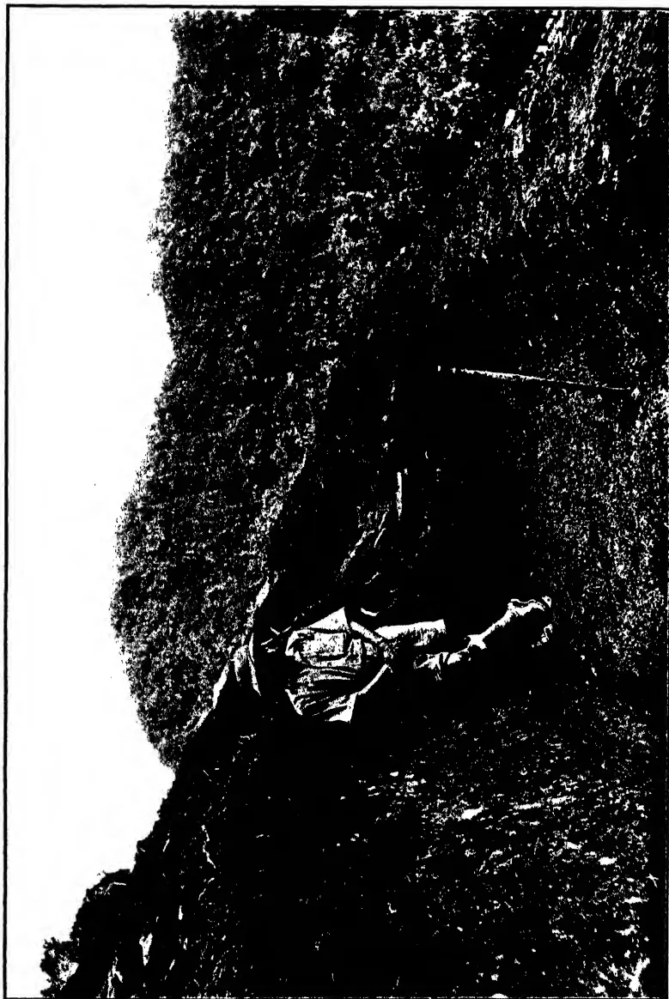
Platform showing Height of Cuttings
The stump will be seen to be more to the outside than the inside. The platform slopes back to the bank. Note the bund on the outside edge of the bed.
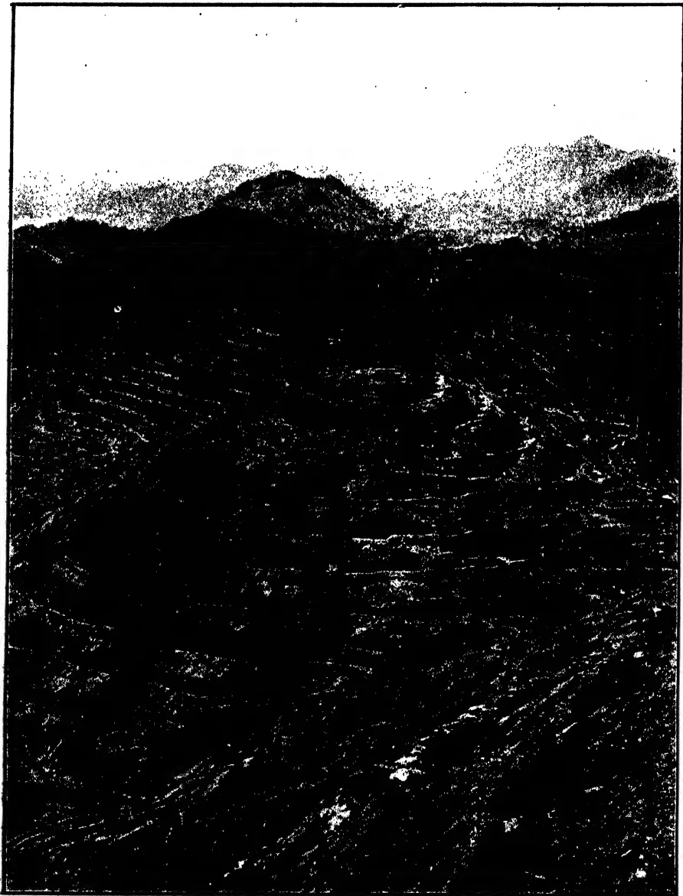
A high-contrast black and white photograph of a mountainous landscape. The foreground is a dark, textured slope with visible horizontal contour lines, indicating terracing or similar land management practices. The middle ground shows a dark, shadowed valley or slope. The background features a range of mountains under a bright, overcast sky. The image is framed by a thin black border.Contour Platform on average lie of land
149It is essential to have the holes more on the outside than on the inside of the bed so that the young plant will not be water-logged during heavy rains.
Cutting Platforms.—I have found that the simplest method of paying for this work is by the linear foot.
I have paid 2, and 3 cents per foot according to the steepness of the land and the amount of cutting to be done.
There are 43,560 square feet in an acre and platforms are 20 feet apart.
At every 15 feet blocks of 3-4 feet are left uncut or approximately 25 per cent. of the area; so the number of linear feet to be cut is 1634, (e.g.).
At an average—say of cents per ft. = Approximately Rs. 40/- per acre.
Terracing and Silt-pits.—It will be found that on very steep land it will be essential to build terraces.
On such places silt-pits should also be cut at the back of the platform.
Approximate cost per acre Rs. 5/-.
Forking.—As soon as a few acres of platforms are cut I would strongly recommend deep forking them.
If this is done, even during very heavy downpours, there will be very little water standing in the platforms and the fear of washaways is greatly diminished.
Roughly, the cubic capacity of the platforms is increased by the depth of the forking.
A cooly can fork approximately 25 platforms a day and I have paid at the rate of cents per platform or at 145 platforms per acre Rs. 2.18—say Rs. 2.50 per acre including Head Money, etc.
150Green Manure.—As soon as a few acres of platforms are cut, green manure should be planted and I recommend the following mixture:
| Centrosema plumieri | ... | ... | 40 oz. |
| Centrosema pubescens | ... | ... | 16 ,, |
| Calopogonium | ... | ... | 16 ,, |
| Pueraria javanica | ... | ... | 8 ,, |
80 oz. |
|||
at the rate of 5 lb. per acre.
On flat and undulating land good results have been obtained by broadcasting.
On steep land small beds should be made with a rough terrace at the back, midway between platforms at every 6 feet.
Besides the cover crop the following are recommended:
Crotalaria—3 varieties.
Tephrosia candida.
Tephrosia vogelii.
Leucaena glauca.
Clitoria.
at the rate of one pound of each kind per acre. When they are grown up they should be lopped and the loppings forked in for creating humus.
Contrary to expectation the green manure has grown well in the earth cut out from the platforms but to ensure complete success about 2 cwt. per acre of Ammophos should be applied at the time of planting.
Planting.—If it is decided to do the budding in the field it will be necessary to collect seeds and lay down germinating beds. A few platforms near a spring or stream can be used for these.
When transplanting from the beds to the field care must be taken to see that none of the shoots are broken.
I strongly advocate planting 4 seeds in each hole, and gradually thinning out the weak ones.
I have found that by manuring the young seedlings every few months with a mixture of 400 lb. of Sulphate of Ammonia and 100 lb. of concentrated Superphosphate at the rate of 2 to 4 oz.
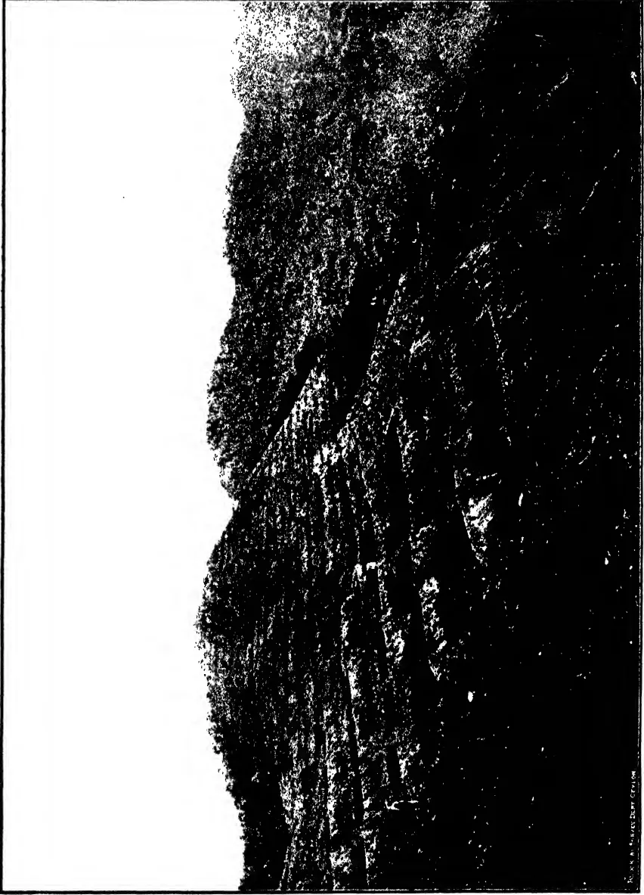
A high-contrast black and white photograph of a steep, rocky hillside. The foreground is dominated by dark, textured rock formations. In the middle ground, a series of horizontal lines, likely contour lines or terraces, are visible on the slope. The background shows a dense forest or wooded area under a bright sky. The image is framed by a thin black border.Contour Platform on steep land
A completely blank white page with no visible content, text, or markings. 151a plant, excellent results have been obtained, and two to three vigorous plants remain for budding. This ensures the operation of budding being highly successful and the spare plants can be utilised for the following year's clearings. The young plants should be ready for budding about 1-1½ years after planting.
By this method a supply nursery can be done away with.
Slaughter Tapping.—As far as I know no satisfactory system has yet been discovered. It is claimed by some that 2½ times the normal yield can be obtained by slaughter tapping but this has not been my experience. I agree that a considerable increase in yield can be obtained for a few months, but not for a longer period.
I have tried several systems:
In all these systems—except No. 5—I have found that after a few months' tapping—the rubber content falls to such an extent that over any considerable period more rubber is obtained by the ordinary one cut half-spiral alternate day system.
In most cases the rubber content of the latex has fallen from 3 lb. 6 oz. per gallon to under 2 lb.
Under system 5 the rubber content has remained more or less constant at about 3 lb. 6 oz. per gallon for over a year. I consider this system is the best for tapping to death, and for two months before uprooting tap both sides of the tree on alternate days.
152Assuming that the lie of land is partially steep and partially flat and undulating and that there is some poor soil, I estimate an acre can be brought into bearing in its seventh year for the following:
| Supervision including opening fees | ... | Rs. | 20.00 |
| Nurseries | ... .. | " | 2.50 |
| Lining | ... .. | " | 1.50 |
| Holing | ... .. | " | 12.50 |
| Dynamiting (including cost of dynamite, drilling and blasting) | ... .. | " | 7.50 |
| Filling holes | ... .. | " | 12.50 |
| " " extra for Adco and Jungle Soil | ... .. | " | 5.00 |
| Uprooting, Cutting and Burning | ... .. | " | 16.00 |
| Cutting of platforms | ... .. | " | 40.00 |
| Terracing and Silt-pits | ... .. | " | 5.00 |
| Green Manure | ... .. | " | 5.00 |
| Collecting Seeds and Planting 4 seeds to a hole | ... .. | " | 2.00 |
| Fencing | ... .. | " | 12.00 |
| Tools | ... .. | " | 3.00 |
| Surveying | ... .. | " | 2.00 |
| Weeding for six months | ... .. | " | 6.00 |
| Forking Platforms | ... .. | " | 2.50 |
| Rs. 155.00 | |||
| Weeding | ... .. | Rs. | 12.00 |
| Budding | ... .. | " | 12.50 |
| Manuring | ... .. | " | 10.00 |
| Forking in Green Manure | ... .. | " | 5.00 |
| Repairing Washaways, etc. | ... .. | " | 5.00 |
| Supplying | ... .. | " | 3.00 |
| Rs. 47.50 | |||
| If budding is done in the nursery the cost of budding Rs. 12.50 should be included in the opening expenditure and deleted from 1st year's upkeep. | 1st year upkeep | Rs. | 47.50 |
| 2nd " " | " | 32.50 | |
| 3rd " " | " | 30.00 | |
| 4th " " | " | 30.00 | |
| 5th " " | " | 27.50 | |
| 6th " " | " | 27.50 | |
| Rs. 350.00 | |||
As regards the subsequent year's upkeep, the weeding, supplying and repairing washaways will gradually decrease and the saving effected under these headings can be spent on extra manure and cultivation.
153CONTRIBUTION FROM THE RUBBER RESEARCH
SCHEME (CEYLON)
"DOUBLE-CUT" TAPPING SYSTEMS
IN CEYLON
R. K. S. MURRAY, A.R.C.S.,
MYCOLOGIST, RUBBER RESEARCH SCHEME (CEYLON)
FOREWORD
DURING the past two or three years a number of Ceylon estates have adopted "double-cut" tapping systems whereby the trees are tapped on two half-spiral cuts on opposite panels, either every three days with a periodic rest ("Double-Three" or "Sunderland" system), or every four days without a resting period ("Double-Four" or "Healey" system). Introduced at a time of acute depression with a view to effecting an economy in the cost of tapping, these systems have proved so satisfactory on some estates that their mentors regard them as permanent successors to the normal system of alternate day tapping on one half-spiral cut. In the absence of data from field experiments of any considerable duration the Rubber Research Scheme, in reply to numerous enquiries, has adopted an attitude of cautious approval. The opinion has been expressed that in most districts either system may safely and advantageously be adopted under present economic conditions in order to reduce tapping costs, but that it is yet too early to say whether they are likely to prove suitable for permanent adoption.
In order to obtain as much information as possible from estates which have adopted one or other of these tapping systems a questionnaire was circulated in March, 1933, to all Proprietors and Superintendents who have registered for the receipt of Research Scheme publications. The response to this questionnaire was very satisfactory, and we are indebted to Proprietors and Superintendents for a considerable mass of valuable information, observations and opinions. The conclusions expressed in this report are based partly on these replies and partly on observations made by officers of the Research Scheme. A strict analysis of the replies is not presented; this would not be of any great value and might, indeed, be somewhat misleading since equal weight cannot be given to observations based on long experience and those made after only a few months' trial.
154An analysis shows that on the great majority of estates on which the double-cut systems are employed their adoption only dates back to 1932. Most of the results obtained are therefore based on not more than about one year's usage. Since an essential feature of the Double-Three system is the periodic rest, usually occurring once a year or once in eighteen months, the true effects cannot be evaluated until a full cycle has been completed. Any conclusions based on the replies to the questionnaire must therefore be of a tentative nature, and the Research Scheme will not be in a sound position to make definite recommendations until at least a further year has elapsed. These remarks are clearly less applicable to the Double-Four system which does not involve a resting period.
Question 1 in the questionnaire asked "What tapping system is normally employed?"
On the great majority of estates the normal system was alternate day tapping on one half-spiral cut (left to right), with variations as regards change of panel, and this system is taken as the standard with which the double-cut systems are compared.
Question 2. "Have you recently adopted any other system or systems, and if so, what?"
Question 3. "Over what acreage has this/have these systems been employed?"
The following figures show the incidence of the double-cut systems as revealed by the replies to the questionnaire:—
| Estates which have at any time adopted Double-Three system | ... | ... | 66 |
| Estates which have at any time adopted Double-Four system | ... | ... | 11 |
| Estates which have at any time adopted both Double-Cut systems | ... | ... | 5 82 |
| Estates which have not adopted either system (including 45 estates out of tapping). | 92 | ||
| Total number of estates from which replies were received | ... | ... | 174 |
| Total number of estates to which questionnaire was circulated | ... | ... | 339 |
The Double-Three system must be sub-divided according to the length and frequency of the resting period. Either half of the estate is tapped and the other half rested in rotation (A.B.), the unit period being four, six or twelve months; or one third is rested in rotation (A.B.C.) for three, four or six months. The following figures show the number of estates and areas over which the different variations have been adopted.
| System | No. of Estates | Acreage | |
|---|---|---|---|
| Double-Three | |||
| A.B. { | 12/12 | 2 | 1,785 |
| 6/6 | 27 | 17,793 | |
| 4/4 | 2 | 668 | |
| A.B.C. { | 12/6 | 13 | 9,443 |
| 8/4 | 8 | 3,272 | |
| 6/3 | 3 | 1,298 | |
| No rest | 1 | 83 | |
| Resting period not stated | 15 | 4,751 | 39,093 |
| Double-Four | 16 | 7,415 | |
| Total Double-Cut systems | 46,508 |
It is difficult to ascertain to what extent the above figures represent the total incidence of the double-cut systems in Ceylon. The circulation of the questionnaire was limited to estates which had registered for the receipt of Research Scheme publications, and of these estates only about half the number submitted replies. It may be presumed that of the estates which did not reply the majority have not departed from their normal tapping methods, but on the other hand several estates are known which are employing a double-cut system but which are not included in the above analysis. The area of estate Rubber in tapping at the present time is not known with any accuracy and the proportion of this area which is being tapped under the double-cut system must at present remain a matter for conjecture. Since the questionnaire was circulated several new estates are known to have adopted double-cut tapping, and others, which were experimenting with the systems on a small scale, to have extended the acreage. It is anticipated, therefore, that at the end of 1933 the total area tapped by the double-cut systems will considerably exceed 50,000 acres and that the increase will chiefly occur in the more recently introduced Double-Four system.
156The figures show that the most popular variation of the Double-Three system is that by which half the estate is tapped and half rested for six months in rotation. In the drier districts the shorter tapping periods are preferred, the trees in no case being tapped for as long as twelve months in succession. The relative merits of the different cycles are discussed below.
Question 4. "For what length of time has this/have these systems been employed ?"
Estates are classified below according to the year in which the double-cut system was initiated.
| Year | Double-Three | Double-Four | |
|---|---|---|---|
| 1930 | ... | 1 | — |
| 1931 | ... | 10 | — |
| 1932 | ... | 51 | 8 |
| 1933 | ... | 4 | 8 |
| Not stated | ... | 5 | — |
It is seen that the majority of estates adopted the Double-Three system in 1932, the Double-Four system being the more recent introduction. As is pointed out above the first cycle under the Double-Three includes a period during which the trees have not had the benefit of a previous rest, and the results of the first year are therefore not fully representative. In considering the figures for yield etc. greater importance is therefore attached to the results obtained from the few estates which have tapped in the second and succeeding cycles, than from the many estates on which the initial period is still included.
Question 5. "Age of trees tapped by new system?"
This question was asked in order to determine whether the double-cut systems were equally suitable for trees of all ages. Most of the information refers to fully mature trees, and no tapping results or expressions of opinion are given regarding the suitability of the Double-Three system in young clearings. One instance of Double-Four tapping in a seven year old clearing is, however, cited, and the promising yields obtained in the first two tapping years indicate that this system is probably well suited to young seedling trees. No opinion can be expressed as to whether two cuts with the shorter interval will prove too severe for young trees.
157YIELDQuestion 6. "What yield per acre has been obtained as compared with normal system?"
Question 7. "What yield per tapper has been obtained as compared with normal system?"
The answers to these questions have usually involved a comparison between the period (year, years or months) of double-cut tapping and a corresponding earlier period under the normal alternate day system. Uncontrolled comparisons of this nature are far from satisfactory, but in the absence of any data from well designed field experiments such are the results on which conclusions must at present be based. The results will become increasingly reliable as the local variations caused by weather conditions, out-turn of tappers etc. become smoothed over by time.
In the figures given below the yield per acre per annum is expressed as a percentage of the full yield under normal alternate day tapping, the yield being calculated over the whole area including the portion being rested. The average figure, calculated on an estate rather than on an acreage basis, and the limits of variation are given for each system, all variation of Double-Three (A.B.) and of Double-Three (A.B.C.) being grouped together. The yield per tapper taken together with the comparative size of the tapping task, has been used to confirm the figures given for yield per acre; in cases where the replies to the two questions do not appear to tally it is supposed that the total number of tapping days in the two periods under comparison must have been markedly different.
| System | Average | Limits of Variation | |
|---|---|---|---|
| Double-Three A.B. | ... | 77% | 55-97% |
| Do. A.B.C. | ... | 93% | 80-107% |
| Double-Four | ... | 100% | 80-114% |
Discussion. (a) Double-Three System.—The above figures show that the average yield under A.B. tapping is 77 per cent., and under A.B.C. 93 per cent. of the full normal crop. The large degree of variation exhibited can be explained by the short period over which most of the comparisons were made, local variations being thus brought into greater prominence, and the fact that the observations are recorded from many districts.
158On the majority of estates the results include the initial period during which the trees have not received the benefit of the periodic rest, and it therefore seems reasonable to suppose that in future years the yields will reach a higher figure. This is indeed borne out by an analysis of those estates on which the system has been in employment for more than a year, the proportions of the normal crop for these estates averaging 79 per cent. and 96 per cent. for A.B. and A.B.C. tapping respectively. It is significant that on the few estates which have two years' results to show, the yields obtained in the second year are always higher than those in the first.
Most of the results with the double-cut systems were obtained in 1932 which, owing to exceptionally wet weather in the last five months, was an unfavourable year for crop in most districts, and many Superintendents state that under normal conditions a larger crop would have been harvested. Thus on this account, also, the average figures from the questionnaire for percentage of normal crop are probably rather low.
Turning to the variations in the length of the resting period, estates which have adopted the A.B. system have mostly shown preference for a six month unit period. The two estates which are tapping for a year and resting for a year report satisfactory results, and it would appear that the twelve month period is not too long in wet districts. There is no evidence of any material difference in yield between the three variations of the A.B.C. system i.e. 12/6, 8/4 and 6/3. Whereas tapping for a year and resting for six months (12/6), with the less frequent change involved, is probably best suited to a wet district, the shorter periods are rightly given preference in drier localities. When selecting the most suitable cycle for any particular estate other considerations such as rubber content (discussed below) must be taken into account.
To sum up, the information that is at present available indicates that in the main low-country districts the Double-Three system, after it has been in force for a full cycle, may be expected to yield about 80 per cent. or 100 per cent. of the full normal crop according as to whether the A.B. or A.B.C. system of periodic rest is employed. The suitability of the double-cut systems in dry districts and at high elevations is discussed later under a separate heading.
159(b) Double-Four System.—The average yield per acre per annum from this system, as judged by the replies to the questionnaire, is 100 per cent. of that under normal alternate day tapping. This figure, however, includes one estate in a dry district from which very poor results are recorded; if this estate is excluded the average yield is 103 per cent. Most of the estates from which the results have been obtained have adopted the system for less than a year, and no great reliance can therefore be placed on the comparison with alternate day tapping. It would appear, however, that a slightly increased crop may be expected by the Double-Four system. Theoretically the total number of cuts is exactly the same as with normal alternate day tapping, and it is probable that the slightly higher yield is partially due to the greater amount of latex that can be collected in a hurry when "washouts" occur in wet weather. This advantage applies, of course, to any form of double-cut tapping.
Question 8. "How many trees are allotted per tapper's task as compared with normal system?"
Since two cuts are tapped on each tree it is clear that the number of trees in a tapper's task must be less than when one half-spiral is tapped. Experience shows that about two-thirds of the normal task is the most economic figure, though this will vary according to the climate and terrain. The following figures give the average number of trees, and limits of variation, for the two types of tapping, Double-Three and Double-Four systems being considered together.
| Double-Cut | Half-spiral Alternate Day | |
|---|---|---|
| Average | 135 | 208 |
| Limits of Variation | 110-175 | 150-300 |
Question 9. "What is the cost of tapping as compared with normal system?"
The replies to this question are not very informative as the comparison is usually complicated by lowered wage rates. Taking the average figures for yield and size of task (as above), the costs of tapping for the double-cut systems expressed as percentages of half-spiral alternate day tapping are calculated theoretically as under:—
| Double-Three | Double-Four | |
|---|---|---|
| A.B. | A.B.C. | |
| 65% | 72% | 75% |
The cost of tapping is admittedly not a figure which can be very satisfactorily worked out on paper, but it is nevertheless clear that by adopting one or other of these double-cut systems a substantial economy in tapping costs can be effected. A comparison between the three percentages shown is hardly justified as the relation between yields obtainable by the different double-cut systems is not yet clearly established. It does appear, however, that the lowest tapping cost is associated with the Double Three (A.B.) system, though this may be offset by the higher proportion of overhead charges due to the smaller crop.
Question 10. "Have you made any observations regarding bark renewal as compared with normal system?"
The replies to this question are mostly favourable and no adverse opinions are expressed. In the early stages of renewal, however, it is hardly possible to compare differences amounting to less than a millimetre without making actual measurements on a representative number of trees. Such measurements have been made on a few estates, and the figures for thickness of renewing bark are in all cases higher for the double-cut system in question than for normal alternate day tapping. The methods employed, however, where stated, are open to criticism and it is not felt that a clear case for improved bark renewal has yet been established. The importance of this aspect of the tapping systems, if they are to be permanently employed, need hardly be stressed. The matter is receiving the close attention of the Research Scheme, and in the meantime we may say that observations so far recorded indicate that bark renewal is at least equal to that under half-spiral alternate day tapping.
Question 11. "What is the bark consumption as compared with normal system?"
The following figures show the average bark consumption and limits of variation expressed as a percentage of the consumption under half-spiral alternate day tapping. It will be noted that there is a large variation in the figures recorded, and it seems probable that many of the replies were made without measurements from a representative number of trees being taken.
| Double-Three | Double-Four | ||
|---|---|---|---|
| A.B. | A.B.C. | ||
| Average | 88% | 107% | 123% |
| Limits of Variation | 70-133% | 82-180% | 114-190% |
It is evident that the bark consumption is in all cases considerably higher than would be theoretically calculated from the number of tappings, indicating that in order to obtain a satisfactory flow a thicker shaving must be removed with the longer interval between tappings. On a well controlled estate the amount of bark consumed is the amount marked out or allowed for consumption, and one Superintendent who has obtained disappointing yields with the Double-Three system admits that sufficient consumption was not permitted. With the exception of the figure 88 per cent. for Double-Three (A.B.) tapping, which is thought to be rather too high, the averages given above are probably not excessive if the best results are to be obtained.
No distinction has been drawn between the different cycles in the Double-Three system, but the consumption will clearly be slightly higher with the more frequent change.
Whether the bark consumption under the double-cut systems is excessive must depend on the rate of renewal and bark reserves on the particular estate. If experiments show a tendency to improved renewal this must be taken into account in offsetting the higher rate of consumption.
Question 12. "What is the average rubber content of the latex as compared with normal system?"
(a) Double-Three System.—Estates which have replied to this question are classified according to whether the latex has been observed to have a higher, lower or about the same average rubber content for the year as compared with normal alternate day tapping. Actual figures for lb. dry rubber per gallon are not given since accurate determinations are seldom made on estates.
| Higher | rubber content | 5 estates |
| Lower | ,, ,, | 16 ,, |
| Same | ,, ,, | 20 ,, |
It is the general experience that for some weeks after a resting period the rubber content is high, but that it gradually falls off after a longer or shorter period of time. An equilibrium is probably reached below which figure it will fall no further. The time for which the content is maintained at a normal level appears to vary greatly on different estates, and should be one of the main factors influencing a decision as to the most suitable
162cycle for the individual estate. The replies to the questionnaire indicate that there is a tendency for estates on the Double-Three A.B.C. system to continue tapping for some months after the content has fallen. On well cultivated estates tapping for twelve months, followed by six months' rest, is probably not too severe a system, but it would seem that for poor Rubber, particularly in dry districts the 8/4 cycle is more suitable. It is significant that the five estates which have recorded a higher average content than normal are all on the A.B. system, 6/6 or 4/4.
(b) Double-Four System.—Estates are likewise classified as under:
| Higher rubber content | 6 estates |
| Lower ,, ,, | nil ,, |
| Same ,, ,, | 3 ,, |
These figures indicate a tendency for the rubber content to be somewhat higher on the Double-Four than on the alternate day system. Rubber content may to some extent be regarded as an index of the severity of a tapping system, and in this respect the Double-Four system appears in a favourable light.
Question 13. "Have you experienced any difficulties in connection with manufacture which you attribute to the new system?"
It is difficult to make a strict analysis of the replies to this question since many estates which report no trouble do not state whether crepe or smoked sheet is manufactured. As regards the latter product the only trouble recorded is one instance of clotting of latex in the field under the Double-Four system. The cause is not stated but may merely have been due to too large a tapping task being allotted, leading to late arrival of the latex at the factory.
As far as crepe manufacture under the Double-Three system is concerned "no trouble" forms the preponderance of the replies. There is no doubt, however, that the crepe tends to be yellower than under the alternate day system owing to the longer tapping interval. Several estates report that temporary discolouration after opening rested cuts persists longer than normal, while others find that the rubber remains permanently yellower or darker. It is not always clear from the latter replies, however, whether any difficulty has been experienced in selling the rubber at the full market price.
163Under the Double-Four system the yellow colour is more marked, as would be expected with the longer tapping interval. Several estates report that the crepe is darker for some months after initiating the system, but that this discolouration eventually disappears. Two estates have experienced "dullness and mottling" in wet weather, but it is not clear that this should really be attributed to the tapping system.
It is sometimes found that in hot weather the tree scrap becomes tacky owing to longer exposure to the sun.
The experience of the Research Scheme is in accordance with the above observations inasmuch as crepe derived from trees tapped with a three or four day interval is undoubtedly yellower than that obtained on an alternate day system. There is no reason, however, to suppose that such crepe will necessarily have a lower market value than the paler crepe associated with the shorter tapping interval. It is largely a matter of the individual buyer's choice, and the yellower crepe would often seem to be the more attractive. The opinion is sometimes expressed that in wet weather, when the tapping interval is unavoidably extended, the latex will be of the unpleasant yellow colour associated with newly opened cuts. That this is not the case is shown by a recent test carried out in connection with an experiment comparing Double-Four with alternate day tapping. Samples of blanket crepe were prepared in wet weather when the tapping interval was five days for the alternate day system and ten days for the Double-Four system. The latter sample was distinctly yellower than the former but both were up to market standard; the yellower crepe might in fact, have been favoured by many buyers.
It would appear that many of the troubles and difficulties attributed by estate Superintendents to the double-cut systems are, in actual fact, due to other causes. There is a tendency for the Superintendent who introduces a new tapping system to ascribe to that system any ills, either in the field or in the factory, which may arise during its employment. In more than one instance it has been possible to demonstrate that trouble with crepe manufacture, which was hastily attributed to the tapping system, was really due to incorrect methods or inadequate accommodation in the factory. It is suspected, for instance, that much of the "off colour" crepe associated with double-cut systems in 1932 might more correctly be attributed to the increased quantity of crepe manufactured in the latter half of
164that year, for which many factories had insufficient drying accommodation. It is possible, however, that the latex, particularly from four-day tapping, is comparatively rich in non-rubber substances and that the liability to mould development and discolouration by oxidation is thereby increased.
It is concluded that estates which do not normally experience trouble with crepe manufacture are unlikely to find difficulty with a double-cut system, but that where trouble is liable to occur with alternate day tapping this may be accentuated. There is no reason, however, to suppose that any difficulties cannot normally be overcome by increased attention to all details connected with manufacture.
In the main moist low-country districts there appear to be no serious agricultural objections to either of the double-cut systems. Various minor disadvantages are mentioned in the replies to the questionnaire, but with only one exception the systems appear to have fulfilled their main purpose of reducing the cost of tapping; (on this particular estate the Superintendent admits that insufficient bark consumption was permitted). The initiation of the Double-Three system may result in a shortage of crop during the first tapping period, but there is no recorded instance of continued disappointing yields after the trees have benefited from the periodic rest.
In drier localities and at higher elevations, on the other hand, experiences appear to be very diverse. In the Kurunegala District, for example, five estates are employing the Double-Three system (A.B. or A.B.C.) with success, while one estate has abandoned the A.B. system, finding that with the three day interval the bark dried up too much between tapings. The rainfall on this estate is no lower or worse distributed than on the other estates in the same district, and it is not easy to account for the different results. Possibly sufficiently thick shavings were not being removed, or the tapping tasks allotted were too large. There is no a priori reason for supposing that the three day interval should be too long in dry districts since tapping on one cut every three days has often been successfully employed as a mild form of tapping.
In Uva Province the Double-Three system has been found unsuitable on two estates in the Haputale District, one in Koslande and one in Moneragalla, the rubber content of the latex in each case being found to fall to a low figure after a short
165period. These estates, in addition to experiencing a low and unevenly distributed rainfall, are also at a relatively high elevation, a combination of circumstances which is not favourable to growth, production, or bark renewal. It would seem, therefore, that the double-cut systems are not suited to these localities, the severity of the tapping not being adequately compensated by the resting period.
There is little doubt that in dry districts preference should be given to a short rotational cycle, and on an estate in an average condition of cultivation the trees should probably not be tapped for more than six or eight months in succession. On this account the A.B. system is the sounder from an agricultural standpoint, though some estates could possibly not afford the smaller crop.
Records of the Double-Four system have only been received from one estate in a dry district. The yields have been very disappointing, and the Superintendent attributes the poor results to the long tapping interval during which the bark becomes dry and hard. It is impossible to predict whether this experience will be general in similar localities, but in the meantime the system cannot be recommended in dry districts except on an experimental scale.
An important consideration in dry districts is the incidence of Brown Bast, the occurrence of which is markedly dependent on the tapping system employed. One or two Superintendents express the opinion that fewer new cases occur with the double-cut systems. This, indeed, may prove to be the case since the extraction of latex is locally less severe than under alternate day tapping, but it is at present impossible to make an authoritative statement on the matter.
There are certain practical considerations in connection with double-cut tapping which may conveniently be presented in a list of advantages claimed for, and objections raised against, the systems. Most of the salient points have already been discussed under the appropriate headings.
(2) Reduction in labour force, with its attendant advantages such as less line accommodation, etc.
(3) Greater ease of supervision as the result of the tapping on any one day being concentrated in a smaller area.
(4) More latex can be collected in the event of a "washout" in wet weather.
(5) Improved bark renewal: this has not yet been clearly established, and in the case of the Double-Three (A.B.C.) and Double-Four systems is counteracted, to an extent at present undetermined, by a higher rate of bark consumption.
(6) If Double-Four tapping is contrasted with the single cut alternate day system with an annual or six-monthly change of the tapping panel, the former has the advantage that there is no re-opening of cuts with its attendant difficulties in crepe manufacture and increased liability to Bark Rot if the weather is wet. If tapping is suspended during the wintering period, however, the cuts are of course re-opened after the short rest. It is not at present known whether this rest will be found desirable with the Double-Four system.
(1) Labour. Should the double-cut system selected be found unsuitable for the particular estate difficulty might be experienced in recovering the full number of tappers required for alternate day tapping. This objection carries considerable weight in districts where labour is difficult to obtain, but the risk can be largely obviated by a preliminary trial of the system on a small area.
(2) Supervision. Very strict supervision is necessary during the first new months of a double-cut as of any new tapping system. The consumption of bark must be carefully regulated, and there is a liability of the coolies who were formerly accustomed to bring in, say, 10 lb. of rubber a day, being satisfied with a similar instead of a considerably higher intake. At first, also, the tappers are apt to arrive late at the factory, but this can usually be rectified when they have become accustomed to the new system.
167(3) The double-cut systems cannot be easily adopted on estates where there is a scarcity of bark on one side of a large proportion of trees. In Ceylon an annual or six-monthly change-over of the tapping panel is the general rule so that this difficulty should not apply to many estates.
(4) The higher rate of bark consumption under the Double-Three (A.B.C.) and Double-Four systems may prove a serious objection unless balanced by improved bark renewal. This has been discussed above.
(5) The fear is often expressed that if the two cuts are at approximately the same height the tree will suffer as the result of being virtually "ringed". This fear, however, does not appear to be justified by practical experience, and although it is clearly preferable to space the cuts apart if bark is available, on the average mature estate on which it has been customary to make an annual or six-monthly change-over on a single cut system, the cuts may safely be opened at the existing levels.
(6) The frequent resting and re-opening of cuts is probably the most serious practical objection to the Double-Three system where a short cycle is found necessary. Where the A.B.C. system is in employment, however, half the area being tapped will be yielding latex of a good colour, and by bulking this with the yellow latex from the new cuts the temporary difficulty of making crepe with a good colour can be largely overcome. With the longer periods of rotation the Double-Three system is not at a disadvantage in this respect as compared with the normal procedure in Ceylon.
(7) It has been suggested that the resting of a portion of the estate will lead to that area being neglected as far as weeding and disease treatment is concerned. There are not many estates in Ceylon, however, on which weeds under mature Rubber would become uncontrollable after six months' neglect, and unless certain undesirable species predominate, the growth of the weeds would probably be beneficial rather than harmful. The detection of fresh cases of disease is certainly more difficult in a rested area, but this is not likely to be a serious objection on the average estate unless the resting period is very prolonged; some planters, indeed, prefer to concentrate disease work on areas while they are being rested.
(8) Difficulty has been found on some estates in manufacturing crepe with a good colour, especially with the Double-Four system. This has been fully discussed above.
168It is not claimed that the above lists include all points which can be argued for and against double-cut tapping systems. Each individual estate has its own problems, but it does seem that whereas the advantages are of fairly general application most of the objections and difficulties can be overcome under average conditions.
In the introductory section of this report the attitude of the Research Scheme to the double-cut tapping systems was stated to be one of cautious approval: while the systems could be recommended in most districts as a temporary measure in order to effect an economy in tapping costs, sufficient information was not available to predict their suitability for permanent adoption. To what extent must this statement be modified in the light of the observations and opinions expressed in the replies to the questionnaire?
Briefly stated, all variations of double-cut tapping have emerged from the enquiry with distinct credit. Except in certain localities where either one or all forms of double-cut tapping appear to be unsuited to the specific environmental conditions, the systems have achieved their main object of reducing the cost of tapping. There is at present no reason to believe that this economy has been effected at the expense of bark reserves or of the general health of the trees. There are minor objections to double-cut tapping, as indeed to any system, which have greater force on some estates than on others, but although further experience and information is needed before any definite pronouncement can be made it seems possible that double-cut tapping, in the form most suited to the individual estate, may largely supercede the normal alternate day system in most districts. It is significant that except in the localities mentioned in an earlier section there is only one known instance of an estate reverting to alternate day tapping after giving a double-cut system a trial.
The essential difference between the Double-Three and Double-Four systems concerns the period during which the trees are not tapped. Setting aside for a moment the Double-Three (A.B.) which is a milder form of tapping, the fundamental question arises as to whether the trees benefit more from the complete rest following after somewhat intensive tapping; or from the longer interval between tapings without a resting period. One Superintendent draws an ingenious analogy with
169the human being, the four-day interval between tappings being compared with the week-end habit at Brighton, and the periodic rest associated with the Double-Three system with a lengthy recuperation at Biarritz. Such teleological inferences, however, are dangerous, and one believes that the rubber tree derives more physiological benefit from a periodic rest than the average person from a cure in a fashionable watering place.
In the present state of our knowledge we cannot say which is the better of the two systems, and unless some serious defect is revealed it is probable that both will maintain their protagonists. The Rubber Research Scheme is conducting a small-scale test with Double-Four tapping and is also associated with a larger experiment with the Double-Three (A.B.C.) system. Both these experiments provide a comparison with alternate day tapping on one cut, and it is hoped that their results will shed further light on the respective merits of the various systems.
The Double-Three (A.B.) system should probably be favoured in dry districts and on estates with a scarcity of bark, especially if circumstances do not demand a full crop. It appears to effect the greatest economy in tapping costs, and the yield may be expected to increase as the trees benefit from the relatively long periods of rest. Advantage, also, may be taken of the fact that with the less bark consumed per annum the tapping cuts may be kept at a lower and more productive level.
Each successive year increases the length of time since the last application of manure was made. The rubber tree responds slowly to starvation, but the probability that on most Ceylon soils the general health of the tree, as indicated by foliage, bark renewal and yield, will gradually deteriorate unless cultivation measures are resumed, must be borne in mind in discriminating between different methods of tapping. It would be most unwise at this juncture to adopt a drastic tapping system unless replanting is contemplated, and there are those who fear that the double-cut systems may prove to be unduly severe. Present indications, however, do not point in this direction, and it would appear rather that intelligent use of the double-cut system most suited to the individual estate may provide a cheap and efficient means of extracting latex without any undue tax on the resources of the tree.
It is a pleasure to acknowledge the valuable information and opinions received from many Proprietors, Agents and Superintendents, without which this report could not have been written.
170MALCOLM PARK, A.R.C.S.,
GOVERNMENT MYCOLOGIST
AN article on this disease appeared recently in the local press and letters subsequently addressed both to the press and to the Department of Agriculture have indicated that some misapprehension has arisen in the minds of cacao planters regarding the disease. The article in question was published at a time when, owing to the unusually wet season that has been experienced in Ceylon this year, a stem disease of cacao was very active in the Dumbara Valley and was causing numerous casualties. It was perhaps natural that the two diseases should be confused. The stem disease of cacao in Ceylon is being investigated and it is hoped that an article on the disease will be ready for publication at an early date. It does not appear to be a disease new to Ceylon but is an unusually severe outbreak of a disease which has been known for many years. It is in no way connected with the Witch-Broom disease of cacao which so far does not occur in Ceylon.
This description of the Witch-Broom disease of cacao however is written with the object of enabling those interested in the diseases of cacao to be able to recognise the disease should they see it and to appreciate the differences between this disease and the diseases of cacao which are found in Ceylon. The writer has had no personal experience with Witch-Broom disease of cacao, since it does not occur in Ceylon, and the notes given below have been collected from papers and articles written by mycologists who have investigated the disease, particularly in the West Indies and in Surinam. The sources of information are acknowledged and a list is given at the end of this article.
The disease was first reported in the Saramacca district of Surinam (Dutch Guiana) about 1895 and it is probable that the disease had then been present for many years. A wild Theobroma (T. speciosum) which occurs in the forests of Southern Surinam is very liable to the disease and is thought to have
171communicated it to the cacao. It spread by degrees through the colony and caused serious losses to the crop. In 1895 the cacao crop in Surinam was just under ten million pounds; in 1904 the crop had been reduced to less than two million pounds. The disease now occurs throughout Surinam and has extended to the adjacent parts of British Guiana. The disease has caused much damage in Ecuador and is becoming a serious menace in Trinidad.
The disease has not been found outside Central and South America and the West Indies.
The Witch-Broom disease of cacao owes its popular name to the characteristic growths which are produced on ordinary shoots or from the 'cushions'. In this connection it is pointed out that there are Witch-Broom or Witches' Broom diseases of many plants, a notable example of which in Ceylon is the Witches' Broom disease of tea, which are in no way connected with each other but which have the common characteristic that one of the distinguishing features of each of the diseases is the production of clusters of malformed shoots ('Witch-Brooms' or 'Witches' Brooms').
The principal feature of the Witch-Broom disease of cacao is the hypertrophy or malformation of young shoots, which assume a monstrous form and shortly die. To this feature are also added the production of hardened (indurated) and malformed pods, which either fail to come to maturity or have a part of their contents spoiled, and 'star-blooms', which are crowded blossoms developed on hypertrophied cushions and usually resulting only in a few misshapen pods.
A typical witch-broom is the result of fungus infection of a vegetative bud. It is a dense, generally somewhat curved broom-like growth brought about by an excessive development of lateral shoots together with a shortening of the internodes. All the diseased tissues are hypertrophied, i.e. swollen, sometimes to five or six times the normal diameter, particularly in the basal portion. The leaves never attain full growth and remain soft and limp. Towards the tips of the shoots the size of the leaves is so reduced that they appear to be absent. The shoot cluster never becomes woody and commences to die from the base upwards in three to six weeks.
172An infected flower bud produces either a small witch-broom and malformed pods which never mature, or indurated (hardened) pods.
It does not appear that the direct effects of the development of witch-brooms are particularly severe. Each, of course, involves the loss of a shoot, and in the extreme cases in which the tree is infested with the growths this results in partial defoliation. When cut back, however, the trees exhibit considerable vigour in the production of new growth. The dead witch-brooms are liable to become infested with Diplodia, which then gains access to the branches. Canker-like diseased areas frequently form where they have been attached. From one cause or another many trees do succumb, and supplies are generally quickly attacked and prevented from developing.
The cause of diminished production is mainly to be sought in the infection of the flower-cushions and the fruits.
The disease first came into notice in Surinam about thirty years ago but the cause was not determined until 1915 when Stahel, working in Surinam, proved that the disease was caused by the fungus Marasmius pernicius. The fungus is a small agaric belonging to the same group as the common mushrooms and toadstools. The cap of the fructification is about inch in diameter, bell-shaped when young and becoming flat parasol-shaped when old. The stalk is thin and short. The cap surface is of a delicate crimson colour with a typical reddish-black spot in the centre. The spores by which the disease is disseminated are borne on the gills which are formed on the under-side of the cap.
The mushroom-like fruit-bodies are found on decaying and dead witch-broom on infected dead flower-cushions and on the dead indurated pods which remain attached to the tree.
The disease has been shown to be favoured by dampness and high humidity and one of the first considerations in control is the improvement of agricultural conditions by improving drainage, by careful judicious pruning and by the thinning out of excessive shade.
173Each witch-broom is the result of separate infection and the amount of disease can be reduced considerably by the excision and burning of all diseased shoots, flowers and pods. Spraying with Bordeaux mixture is recommended in heavily infected areas.
Witch-Broom disease of cacao has proved itself to be a disease of prime importance. That it has not spread to Ceylon is a matter for self-congratulation and is probably due to the fact that little, if any, living cacao material has been introduced into Ceylon from Central America. It would, however, be folly to allow any risk of the introduction of a disease which might bring ruin to the cacao industry in Ceylon and the situation is being carefully watched and steps will if necessary be taken to prohibit the import of any living cacao material from countries where the disease occurs.
In conclusion, it is perhaps as well to reiterate that the Witch-Broom disease of cacao is not known in Ceylon and that it is not in any way related to the Witches' Broom disease of tea.
STAHEL, G.—Marasmius perniciosus the cause of the Krullotem disease of cacao in Surinam.—Dept. v.d. Landbouw, Suriname. Bulletin 33, 1915.
STELL, F.—Witch-Broom Disease of Cacao and its Control.—Bulletin Dept. Agric., Trinidad and Tobago, Vol. XXI, Pt. 3, 1928.
NOWELL, W.—Diseases of Crop-Plants of the Lesser Antilles.—West India Committee 1927, p. 168.
FREEMAN, W.G.—Witch-Broom in Trinidad.—Tropical Agriculture, Vol. V, p. 287, 1928.
174AS an example of the value of research and how the stoppage of it can bring disastrous results, Industrial and Engineering Chemistry cites the case of the cocoa industry in Ecuador. The depression hit there earlier than it did in the United States and an economic program stopped research.
Fifteen years ago Ecuador, then one of the principal exporters of cocoa, was disturbed by a disease attacking the pods from which the chocolate is manufactured. Although the value of the cacao exceeded that of all the rest of the country's exports combined, there had been no serious attempt to protect it against pests. Studies of this disease were begun, but with the depression of 1921 most of the research work was discontinued; in a few years the uncontrolled spread of the disease forced the abandonment of one of the best of the cacao varieties.
The lapse in the cacao research work proved doubly inopportune. Just at this time a witches-broom disease became conspicuous in one of the important cacao districts. In four years the yield in this district declined to less than one-fortieth of its original volume and the jungle has taken many of the plantations. The disease spread to other parts of the country and the cacao exports of Ecuador during a period of increasing world consumption dropped by 1930 to less than half their former volume. Resumption of investigative effort has shown that resistant varieties can be produced and the industry may be re-established, but too late to save the existing plantations in the regions most affected by the disease.
* From The Spice Mill, Vol. LVI, No. 7, July, 1933.
175WHEN the early colonist arrived in New Zealand, the greater part of the present cultivated land of the North Island and much of that of the South Island were covered with dense forests, which have since been removed by burning, the general practice being to remove millable timber, fell the remainder, burn out as completely as possible and sow with grass. Much of the forest was, however, burned without felling, sometimes by accident but often intentionally.
Although large areas of native forest still remain, the bush in the South Island is largely confined to mountainous regions. In the North Island, although the greater part of the remaining bush is on mountain ranges, there is still a large area of bush land that will gradually be brought into cultivation. The method of forest removal is not far removed from the primitive methods employed by some African native tribes.
Although it may be conceded that burning is the only practicable method of bringing bush land into cultivation, far too little consideration appears to have been given to the influence of forests on soil fertility and to the possible damage to the soil by the methods of burning employed. It is very obvious in numerous cases that areas formerly covered by luxuriant bush frequently have surprising low fertility. It has only to be recalled that the poor 'gum lands' of the North Auckland peninsula were once covered by dense kauri forests full of rich undergrowth. In other parts of the country, hillsides formerly covered by good bush, such, for example, as the coastal districts north of Wellington, have a fertility sadly below that to be expected from the luxuriance of the former bush.
It is necessary to inquire whether this apparent deterioration of fertility may be due to the method of forest removal and, for this purpose, consideration must be given to certain aspects of the part played by the forest in bringing virgin rocky land into a condition of fertility. The process can be observed on the volcanic island of Rangitoto at Auckland, where a formerly barren island of rough basalt is in process of being converted by the bush into rich, fertile land. It is not known how many hundreds of years it has taken for the Island to reach its present degree of fertility, or how long it will be before the rocks are covered with fertile soil, but the process of humus formation is plainly obvious. What is not obvious, however, is the process of bringing to the surface and making available for plant growth the mineral constituents of the rocks.
* By Prof. F. P. Worley, Auckland University College, New Zealand, in Nature No. 3318, Vol. 131, June 3, 1933.
176The only artificial fertilizers intentionally applied to the land for agricultural purposes, apart from lime, are those supplying potassium, phosphorous and nitrogen. It is now recognised, however, that most of the other common elements occur in plants, though generally only in minute amounts, and that some of these minor constituents are essential to plants and to animals. Some may be present only fortuitously, but it is impossible to deny that they may have specific functions. Manganese and copper, for example, have been found in all plants investigated and are associated with rapidly growing parts, such as buds and leaves, and probably have a functional importance.
The small amounts of such elements in the soil are extracted by the roots of trees and transported to the growing parts, being eventually shed in the falling leaves, thus enriching the surface soil. This enrichment of the surface soil at the expense of the deeper soil by trees was clearly shown in the case of manganese by Bishop and further investigations of a similar nature are desirable. Maquenne and Demoussy examined the distribution of copper in a number of cultivated trees and shrubs and found the copper concentrated in the actively growing parts. Analyses of various parts of the native karaka tree have shown that the copper is concentrated in the leaves and seeds of this tree, and the same will probably be found in the case of other native trees. Copper is present normally only in minute amounts in the soil, but it is gradually brought to the surface, like manganese, by tree growth. It is obvious that forests, besides building up a surface layer of humus, exercise the very important function of bringing to the surface various chemical elements extracted from the deeper soil. This process is cumulative and may extend over many hundreds of years.
In view of these considerations, it is possible to appreciate the damage that may be done by forest fires. Not infrequently the burning is sufficiently thorough to burn away the humus. On hilly ground the ash may be almost entirely washed away by rain, with the result that the beneficial cumulative work of the forest carried on over vast periods may be destroyed in a day. Unless the ash and the humus can be retained, the work of the forest has been not only in vain, but even actually detrimental, in that the soil to the depth of the tree roots will have been impoverished in minor mineral constituents essential to healthy growth of plants and animals.
On flat land the floor of the forest is usually damp. Here there is less likelihood of complete destruction of humus by fire and of ashes being washed away either mechanically or in solution, except on very porous soil, but on hill and mountain-side the destructive effects of bush fires may be disastrous.
The comparative infertility of the gum lands north of Auckland is probably due very largely to the destruction of the forests and the surface soil of the hills by great fires. In the low-lying and swampy gum lands a layer of ashes, covered often by many feet of black peat, overlies the remains of a kauri forest. Frequently, at a lower level there is another layer of ashes above the roots of a still earlier kauri forest. The pre-historic
177fires that destroyed these forests doubtless destroyed the forests on the hilly ground, where kauri gum occurs very near the surface. The humus on the sloping ground was apparently destroyed and the ashes washed down into the sea. In recent years the scrub has been burnt off by gum diggers and others and further damage done to the fertility of the soil.
On very porous soil the mineral constituents of ash derived from forest fires may be washed down through the soil. Should there be a tendency towards any mineral deficiency in such soil, this deficiency may be greatly intensified by leaching. On soil of this nature it would appear desirable to grow deep-rooting crops to bring to the surface the small amounts of essential minerals, and to produce a retentive layer of humus. Much working, with consequent drainage and leaching of the surface soil, should be avoided.
It appears probable that humus may have mineral as well as biological importance and more analyses are desirable of its mineral content, particularly for those elements that occur only in minute amounts in underlying soil or rock. It is obvious that if the normal soil and rock is in any way deficient in minor mineral constituents essential to the full health of plants or animals, this deficiency will become serious if the humus in which such constituents have become concentrated is destroyed and the ashes removed.
178WORLD rice production in the past decade has shown two very marked upward movements—in 1924-25 and 1930-31—with a less notable rise in 1928-29. In 1931-32, however, there was a pronounced fall in production. The data now available, which cover countries accounting in 1931-32 for about 93 per cent. of the world total excluding China, for which no reliable statistics exist, point to a continuance of the decline in 1932-33 though to a moderate degree, the percentage fall in the past season amounting to about 1 per cent.
(Million pounds)
| Year | ... | ... | .. | |
|---|---|---|---|---|
| 1931-32 | ... | ... | .. | 194,735 |
| 1930-31 | ... | ... | ... | 201,680 |
| 1929-30 | ... | ... | ... | 188,760 |
| 1928-29 | ... | ... | ... | 192,420 |
| 1927-28 | ... | ... | ... | 184,241 |
| 1926-27 | ... | ... | ... | 185,013 |
| 1925-26 | ... | ... | ... | 185,299 |
| 1924-25 | ... | ... | ... | 186,864 |
| 1923-24 | ... | ... | ... | 172,733 |
(1) Not including that of China, Turkey and Persia.
In the past season there were considerable increases of production in Burma and in Siam, while that of French Indo-China appears to have remained practically at the same level, the decrease in Cochin-China being balanced by the increase in Annam; in Korea, Formosa, Japan and the Netherlands East Indies there were also increases. On the other hand there was a very great fall in production in India excluding Burma, the effect of this on the total being an indication of the critical part played by the area in determining the variation of world production as a whole. The variation of production in the principal producing countries, with the possible exception of French Indo-China, where the total has in the last few years remained relatively stable, and of Formosa, where there has been a continued increase, has been the reverse of that of the previous season.
Even without taking into account the very large but statistically unknown production of China, 94 per cent. of the world's total in the quinquennium ending 1931-1932 was produced by the countries of monsoon Asia. Similarly, all but a relatively small proportion of the rice entering into international trade also originates in monsoon Asia, the principal surplus-producing countries being Burma (principally Lower Burma) French Indo-China (principally Cochin-China), Siam (almost entirely the five inner circles), Korea and Formosa. Since the two last-named countries supply principally
* By C. J. Robertson, in International Review of Agriculture, Year XXIV, No. 6, June, 1933.
Unless otherwise stated all data have been converted to terms of milled rice and derivatives the latter including broken rice and white flour or meal but not bran.
179Japan and form with that country practically an economic unit, the supply situation on the world market depends principally on the crops of Burma, French Indo-China and Siam.
Despite the continuance of low prices there was in the past season a recovery in the area under padi in Burma, though the maximum of 1930-31 was not regained. Production, which in the past decade has, with the exception of 1931-32, when a reduction in area coincided with a weak monsoon, fluctuated only slightly about the level of 12,000 million pounds, increased by 17 per cent. in the past season.
The increase in area in the past season took place particularly in Lower Burma, from which the bulk of the export is derived. Production in 1932-33 increased, thanks to the increase in area and to favourable weather, and the final estimate of the surplus available for export (that is the exports in the year beginning in the middle of last December) showed an increase of 28 per cent. on the very small figure of the previous season. As total exports in 1932 amounted to 6,326 million pounds while the final estimate of the export surplus from the 1931-32 crop was only 6,048 million pounds, there was presumably no carryover at the beginning of the present export season and domestic stocks were probably greatly reduced in 1932, so that the surplus estimated for the current year may be taken as a maximum; in any case, actual exports during the past ten years have been more often than not smaller than the surpluses as finally estimated.
Exports (mainly of milled rice) from Rangoon to foreign ports and to Indian ports, which together normally make up about three-quarters of the total export of Burma, in the period from 1st January 1933, a date only fifteen days after the beginning of the season, to 27th May, 1933 were respectively 1,535 million and 787 million pounds (against 1,970 million and 393 million in 1932), in all 2,322 million against 2,363 million pounds.
(Million pounds rice and rice derivatives)
| Year | Production | Year | Net export | |||||
|---|---|---|---|---|---|---|---|---|
| Burma | French Indo-China | Siam | Burma(1) to foreign countries | to Indian ports | French Indo-China | Siam(2) | ||
| 1932-33 | 12,142 | (3) 8,364 | (4) 8,120 | 1933 | — | — | — | — |
| 1931-32 | 10,351 | 9,034 | 6,781 | 1932 | 4,219 | 2,107 | 2,624 | 3,379 |
| 1930-31 | 12,724 | 9,624 | 8,044 | 1931 | 4,323 | 3,177 | 2,101 | 2,683 |
| 1929-30 | 12,335 | 9,557 | 6,458 | 1930 | 5,187 | 2,015 | 2,465 | 2,315 |
| 1928-29 | 12,108 | 9,250 | 6,470 | 1929 | 3,990 | 2,269 | 3,229 | 2,625 |
| 1927-28 | 12,088 | 10,333 | 7,607 | 1928 | 3,379 | 2,856 | 3,904 | 3,500 |
| 1926-27 | 12,647 | 9,561 | 8,710 | 1927 | 4,368 | 2,414 | 3,690 | 3,708 |
| 1925-26 | 11,734 | 9,440 | 6,989 | 1926 | 4,621 | 1,457 | 3,506 | 2,780 |
| 1924-25 | 12,536 | 9,241 | 8,236 | 1925 | 4,805 | 2,754 | 3,277 | 2,947 |
| 1923-24 | 10,309 | 8,334 | 7,332 | 1924 | 4,158 | 1,042 | 2,646 | 2,278 |
(1) The official data are for rice both in the husk and not in the husk but, as practically all the rice exported is milled, they have been taken to represent milled rice and derivatives.
(2) Exports from Bangkok, which make up 98 per cent. of the value of the total rice exports from Siam. Data refer to the season from 1st December to 30th November.
(3) Not including Cambodia.
(4) Provisional estimate.
180Production in French Indo-China has fluctuated in the last decade between 9,000 and 10,000 million pounds. The export originates mainly in Cochinchina, which produces about one-third of the total. Rather less favourable conditions during the period of transplanting outweighed the increase in area in this region. The export surplus from the past crop is considered to be smaller than that from the 1931-32 crop; the most recent estimate places the surplus for export from Saigon during the present year at 2,464 million pounds, 291 million smaller than in 1932. Actual exports in the first three months of 1933 showed an increase of 13 per cent. on those in the corresponding period of 1932.
(Million pounds rice and derivatives)
| Year | Cochin-China | Cambodia | Tonkin | Annam | Laos | |
|---|---|---|---|---|---|---|
| 1932-33 | ... | 3,267 | — | 2,892 | 1,642 | 563 |
| 1931-32 | ... | 3,636 | 781 | 2,903 | 1,183 | 531 |
| 1930-31 | ... | 2,985 | 1,446 | 3,220 | 1,442 | 531 |
| 1929-30 | ... | 3,484 | 1,047 | 2,990 | 1,505 | 531 |
| 1928-29 | ... | 3,405 | 976 | 2,849 | 1,473 | 547 |
| 1927-28 | ... | 3,876 | 1,273 | 3,013 | 1,543 | 628 |
| 1926-27 | ... | 3,405 | 1,448 | 2,211 | 1,918 | 579 |
| 1925-26 | ... | 3,240 | 1,179 | 2,923 | 1,535 | 563 |
| 1924-25 | ... | 3,565 | 902 | 2,521 | 1,770 | 483 |
| 1923-24 | ... | 3,314 | 927 | 1,801 | 1,646 | 644 |
In Siam, as in Burma and, to a much less extent, in French Indo-China, there was an increase in the area of rice harvested in the past season, amounting in this case to 8.5 per cent. Production increased more than proportionately, namely by 20 per cent. The final estimate of the exportable surplus is 3,942 million pounds, which is over double the small export surplus of the previous season. Actual exports from Bangkok in the first four months of the export season were larger than those in the corresponding period of the last season.
While their total production is relatively insignificant as compared with that of the great Asiatic producers, certain of the minor producing countries have special importance on the European and other markets where a demand for high-quality rices exists.
Amongst these producers of high-quality rices the most important are the United States, Italy and Spain.
There was a pronounced fall in production in the United States in 1932-33 and a slight fall in Italy, but in Spain production rose almost to the 1926 maximum. In the last-named country the increase in production, amounting to 19.5 per cent. with respect to 1931, was due in part to increase in area, which amounted to 8.6 per cent., but still more to favourable growing conditions. In the United States there was a general reduction in area and in the three Southern States (Louisiana, Texas and Arkansas).
181unfavourable weather also played a part in reducing production to a figure 14.5 per cent. below that of 1931 and 9.0 per cent. below the average for 1926-30. In Italy a reduction in area under the crop was outweighed by conditions on the whole favourable to growth.
Amongst other minor producers of relative importance Egypt had in the past season a production much above the five year average, thanks to the abundance of irrigation water, which enabled the Government to authorize an area under the crop over seven times the greatly reduced area of the previous year.
(Million pounds rice and derivaties)
| Year | Production | Year | Net export | ||||
|---|---|---|---|---|---|---|---|
| Italy | Spain | U.S.A. | Italy | Spain | U.S.A. (1) |
||
| 1932 | 1,057 | 491 | 1,240 | 1933 | — | — | — |
| 1931 | 1,066 | 411 | 1,449 | 1932 | 335 | 87 | 270 |
| 1930 | 1,084 | 482 | 1,415 | 1931 | 327 | 83 | 237 |
| 1929 | 1,016 | 452 | 1,279 | 1930 | 456 | 125 | 252 |
| 1928 | 1,120 | 448 | 1,368 | 1929 | 379 | 86 | 376 |
| 1927 | 1,094 | 478 | 1,410 | 1928 | 413 | 131 | 286 |
| 1926 | 1,013 | 494 | 1,338 | 1927 | 561 | 118 | 251 |
| 1925 | 951 | 472 | 1,047 | 1926 | 430 | 142(2) | 60 |
| 1924 | 838 | 456 | 1,015 | 1925 | 333 | 99 | 68 |
| 1923 | 747 | 374 | 1,062 | 1924 | 387 | 116 | 165 |
(1) August-July. (2) Net import.
Exports from Italy, which in 1932 showed a decline of 3 per cent. for milled rice and of 11 per cent. for brown rice, declined further in the first quarter of 1933 with respect to the same period of last year by 56 per cent. and 35 per cent. respectively. Exports of rough rice on the other hand, increased about 8½ times in 1932 and over three times in the first quarter of 1933. In Argentina which is the most important foreign market for Italian rice, there is reported to have been a great increase in the area harvested. Exports of milled rice from Spain increased by 4 per cent. in 1932, the decrease in takings of the United Kingdom and Cuba, the two leading markets, have being outweighed by the increase in those of France and certain other countries. Exports of milled rice from the United States, which go principally to the United Kingdom and Germany, declined by 27 per cent. in the first quarter of 1933 with respect to the corresponding period of 1932.
The relatively large export from Egypt in 1932 in comparison with previous years, which may be expected to be repeated this year, irrigation water in that country being again abundant, will accentuate competition in the Levant and the Balkan countries.
Exports from Brazil, the principal South American country with a surplus which are directed chiefly to Argentina, Uruguay and Germany, were in 1932 less than one-third of the record figure of 1931; in the first
182three months of 1933 they were 88 per cent. below the figure for the corresponding period last year. British Guiana, which has a growing export surplus, is finding difficulty in its principal market, the British West Indies, owing to the competition of Burma rice.
Production in India (excluding Burma), which is the world's greatest producer of rice with the possible exception of China, for which no reliable data are available, fluctuates very markedly depending on the character of the monsoon. In 1931-32 production attained the maximum of 71,262 million pounds rice and derivatives, area having been increased by 2.6 per cent. and rainfall having in that year been unusually favourable over the greater part of the area. In 1932-33, however, there was a reduction of 33 per cent. in area and rainfall was not so uniformly satisfactory. In Bihar and Orissa, which is normally second to Bengal amongst the provinces of India as a producer, the decline in production was no less than 26.8 per cent. below the level reached in the previous season. The deficit regions of India as a whole derive the bulk of their supplies from Burma. The relative shortage in India this year is reflected in the fact that coast-wise imports from Burma up to 27 May amounted to 787 million pounds against 393 million up to the corresponding date in 1932.
As regards China, information is as usual somewhat vague; it is reported that the 1932-33 crop was above average and probably about the same high level as that of 1930. In this case it may be expected that imports in 1933 will fall from last year's high figure to the low level of 1931. In fact, imports in the first quarter of 1933 were 25 per cent. smaller than those in the corresponding period of 1932.
(Million pounds rice and derivatives)
| Year | All-India excluding Burma(1) |
Bengal | Bihar and Orissa |
Madras |
|---|---|---|---|---|
| 1932-33 | 63,699 | 23,063 | 10,393 | 12,957 |
| 1931-32 | 71,262 | 23,483 | 14,198 | 13,322 |
| 1930-31 | 66,935 | 22,775 | 13,890 | 13,300 |
| 1929-30 | 64,686 | 20,292 | 14,872 | 13,001 |
| 1928-29 | 67,420 | 23,958 | 13,825 | 12,857 |
| 1927-28 | 57,764 | 16,064 | 10,832 | 12,576 |
| 1926-27 | 60,782 | 18,196 | 11,846 | 11,732 |
| 1925-26 | 64,311 | 20,331 | 12,095 | 13,167 |
| 1924-25 | 64,337 | 19,078 | 14,902 | 12,143 |
| 1923-24 | 59,453 | 18,587 | 12,118 | 11,210 |
(1) The all-India statistics exclude the production of the Punjab, the North-West Frontier Province, Ajmer-Marwara, Manpur, Pargana and certain other Indian States, which together produced 2,602 million pounds on the average of the five years ending 1930-31; they also exclude the production of the feudatory states of Bihar and Orissa, for which no reliable data are available.
183Amongst the importing countries of the second rank, the Netherlands East Indies have in the past five years taken the first place. Imports into Java and Madura fluctuate considerably from year to year, depending on the size of the domestic crop; production in 1932-33 was larger than that of the previous year and than the average of the five years ending 1930-31. For the Outer Provinces data of production are not available but it is known, that owing to the concentration of the natives on export crops and to the rapid increase of population comparatively few areas have normally a surplus. Imports into these provinces are larger and more uniform than those into Java and Madura. In the first quarter of this year imports into Java and Madura showed a decrease of 19 per cent, with respect of those in the same period of 1932; those into the Outer Provinces during the same period were practically the same as last year, there being an increase of 0.4 per cent. Imports into the Netherlands East Indies has been prohibited for the period from 21 March 1933 to 21 July 1933. This embargo will affect particularly Burma, the chief source of imports, but is also a serious blow to the export trade from Siam and Cochin-China. Rice may, however, be imported into the Sumatra East Coast and Celebes by licence, should these provinces require such imports.
In British Malaya acute distress in the rubber and tin industries still dominates the situation in the peninsula. This has not only greatly reduced the purchasing power in the country, both by a general lowering of the standard of living and by leading to the return to India of much immigrant labour, but has also lead to an increase in the area under rice; not only is there the stimulus to many who formerly earned a living from employment in the major exporting industries to engage in rice cultivation but serious efforts are being made by the Government to encourage rice-growing with a view to lessening dependence on export crops and assuring a domestic supply of foodstuffs. Yields in the past season were very satisfactory in several States and the crop was generally well above the average. Imports, which have shown a downward tendency in the past two years, were 11 per cent. smaller in the first quarter of this year than in the corresponding period of 1932. The decline in imports of Burma rice, which is preferred by the immigrant Indian population, was proportionately greater. The falling off in this market affects principally, however, Siam rices, which take the first place in imports, largely owing to the taste of the Chinese population.
NET IMPORTS INTO THE PRINCIPAL ASIATIC COUNTRIES
OF DEFICIT OTHER THAN INDIA PROPER AND JAPAN
(Million pounds rice and derivatives)
| Year | China | Netherlands East Indies |
British Malaya |
Ceylon |
|---|---|---|---|---|
| 1932 | 2,992 | (1) 899 | 921 | 1,024 |
| 1931 | 1,427 | 1,303 | 1,156 | 1,006 |
| 1930 | 2,647 | 1,357 | 1,329 | 1,064 |
| 1929 | 1,439 | 1,592 | 1,256 | 1,102 |
| 1928 | 1,683 | 1,257 | 1,177 | 1,093 |
| 1927 | 2,799 | 1,003 | 1,228 | 1,053 |
| 1926 | 2,489 | 1,292 | 1,068 | 1,033 |
| 1925 | 1,679 | 1,109 | 907 | 972 |
| 1924 | 1,759 | 906 | 880 | 884 |
(1) Not taking into account the relatively small export from the Outer Provinces.
184In Ceylon, as in British Malaya, reduced employment on the plantations with consequent lower purchasing-power and stimulus to local rice production, has resulted in the last two or three years in a decline in rice imports. In the first four months of 1933 the decline in the total with respect to the corresponding period of last year was 14 per cent. This reduction has been felt less severely by Burma, the principal source of imports, than by Siam and Cochin-China, the quantities originating in the latter two countries being, however, small in comparison with those from India proper.
(Million pounds rice and derivaties)
| Year | Production | Year | Net import of Japan | ||||
|---|---|---|---|---|---|---|---|
| Japan | Korea | Formosa (first crop) |
From foreign countries |
From Korea |
From Formosa |
||
| 1932-33 | 19,020 | 5,079 | 1,322 | 1933 | — | — | — |
| 1931-32 | 17,346 | 4,999 | 1,143 | 1932 | 253 | 1,960 | — |
| 1930-31 | 21,063 | 6,041 | 1,094 | 1931 | (1) 91 | 2,385 | 723 |
| 1929-30 | 18,758 | 4,305 | 896 | 1930 | 287 | 1,318 | 497 |
| 1928-29 | 18,945 | 4,245 | 1,004 | 1929 | 384 | 1,439 | 521 |
| 1927-28 | 19,510 | 5,435 | 1,022 | 1928 | 474 | 1,816 | 567 |
| 1926-27 | 17,465 | 4,807 | 892 | 1927 | 1,278 | 1,440 | 642 |
| 1925-26 | 18,804 | 4,641 | 997 | 1926 | 748 | 1,459 | 578 |
| 1924-25 | 17,961 | 4,163 | 939 | 1925 | 1,671 | 984 | 567 |
| 1923-24 | 17,463 | 4,779 | 819 | 1924 | 1,073 | 1,132 | — |
(1) Net export.
Japan rivals India proper in the quantity of its imports but, as it derives less than one-fifth of its total imports from foreign countries—the remainder being taken from its dependencies, Korea and Formosa—its importance on the world market is very small compared with that of India, China, British Malaya, Ceylon and the Netherlands East Indies.
Imports into Japan fluctuates within wide limits and generally inversely to domestic production. In recent years, as production in Korea and Formosa has increased, imports from foreign countries have been reduced. Production in the past season was 9.4 per cent. above that of last year and slightly below the five-year average. Korea, which is the principal source of rice imports, slightly increased its production despite a decrease in area, while in Formosa the first crop which is that exported to Japan, was a very large one, thanks partly to increased area but mainly to favourable weather and to the energetic measures taken by the Government on behalf of rice-growing. Total production in Japan and its dependencies was almost exactly halfway between the very small figure of the previous season and the record high figure of 1930-31. Stocks are reported to be larger than last year. Government control over the rice trade has been strengthened. Taking all these considerations together it may be expected that imports from foreign countries will this year show a further decline. In fact, while gross exports were 2 per cent. larger in the first three months of the year than those in the corresponding period of 1932, net imports were 20 per cent. smaller. Thanks to treaty obligations Siam and the United States are the only foreign countries to retain any considerable share in the import into Japan; the imports from the former are by far the greater of the two and are mainly composed of brokens.
185European imports make up roughly one-fifth of the total international trade in rice. By far the greater part of this rice is worked up in the European mills and much of it is re-exported, generally after milling.
Germany, the largest European importer, takes milled rice and unmilled rice in relative proportions varying from year to year, both principally from Burma. In 1932 the imports of unmilled rice, in that year the larger of the two, showed a decline of 4 per cent., while those of milled rice declined by 9 per cent; exports of milled rice, which are very widely distributed, declined by 24 per cent., a still greater decline than that of the previous year. In the first four months of 1933 there was a decrease of 6 per cent. in imports of unmilled rice and an increase of 11 per cent. in those of milled rice with respect to the corresponding period of last year.
The new import duties and monopoly surcharges that came into force last December together constitute a serious blow to the rice import trade. The reduction in the rate of drawback on the customs duty on husked rice imported into Poland for working up may also be mentioned in this connection.
France imports mainly milled rice. In 1932 its imports of whole milled rice, flour and semolina, chiefly from French Indo-China, increased by 33 per cent. and those of brokens by 13 per cent. while those of rough rice, mainly from Italy, decreased by 10 per cent. In the first quarter of 1933 the total imports increased by 24 per cent; a large increase in those from the colonies outweighing a decrease of 30 per cent. in imports from foreign countries.
The Netherlands import of rough rice, which is mainly from Burma and Japan, decreased in 1932 by 51 per cent., while that of milled rice decreased by 47 per cent. Exports, which are very widely distributed, decreased by 10 per cent. in the case of rough rice, which goes mainly to Germany, and by 22 per cent. in that of milled rice, which is sent chiefly to Germany and the United Kingdom. In the first four months of 1933 imports of rough rice increased by 72 per cent. while those of milled, including brokens, increased by 5 per cent.
Imports into the United Kingdom are almost entirely of milled rice, chiefly from Burma, Spain and the United States. That from Burma is generally re-milled, however; there is a large import of brokens from this source. In 1932 there was a further increase of 2 per cent. in the total imports, those from British India (mainly Burma), increased by 13 per cent. but those from Spain and the United States decreased by 9 per cent. and 12 per cent. respectively. In the first five months of 1933 there was a decrease of 12 per cent. in the total imports, of 64 per cent. in those from the United States and of 96 per cent. in those from Spain, while those from British India increased by 32 per cent. The great falling off in foreign imports in the current year is due to the coming into force on 1 January, 1933 of a duty of 1d. per lb. on foreign whole milled and cargo rice. Only the superior quality of certain foreign rices enables them to retain part of the market.
186World production appears to have undergone a further decrease in 1932-33. The variation with respect to the previous year in the individual regions of production has, however, been in general the reverse of that in 1931-32. Production in 1932-33 in the three major exporting countries, Burma, French Indo-China and Siam, taken together increased, due mainly to the fact that weather during the season was on the whole more favourable in these countries than in 1931-32, when climatic conditions were bad.
In Japan and its dependencies production also increased, mainly as a consequence in Japan and Korea, too, of a reversal of climatic conditions with respect to those of 1931-32; in China also the bad climatic conditions of 1931-32 appear to have been succeeded in the past season by unusually favourable conditions. In India proper, on the other hand, the rainfall conditions were unsatisfactory in several important areas so that the heavy crop of 1931-32 was followed by a deficitary crop in 1932-33. In Java and probably in other importing countries of the second rank there were larger crops due in great part to increase in area under the influence of the depression in export crops and the efforts of the Governments concerned to stimulate domestic food production.
Amongst the major exporting countries only Burma, therefore, with its strong position in the Indian market, finds itself this year in a more favourable situation. Its new preferential advantage in the United Kingdom is largely offset by a deterioration of the position in continental markets. In China and the Far Eastern market generally the position has, from the point of view of the exporting countries seriously deteriorated; given the above-mentioned position of Burma, however, this will react most severely on French Indo-China and Siam, which normally, and especially in the latter case, market the great bulk of their surplus in the Far East.
As regards the trade in high-quality rices the general conditions of depression in purchasing-power and of increased taxes on the product in European markets lead to the expectation of still more acute competition amongst exporters of these qualities.
187IT must have been the common experience of many tropical agriculturists that red soils generally possess field properties quite distinct from those exhibited by brown and grey soils occurring even in the same district. The writer's attention was drawn to this distinction many years ago in Barbados, where residual red soils overlying and derived from coral limestone occur in regions of highest elevation and greatest geological age. Here, the red sugar-cane lands frequently show a remarkable natural crumb structure, which appears to be enhanced by tillage. Although many of the Barbados red soils may be classed as agricultural clays, their free drainage presents a striking feature, enabling the land to be ploughed or forked very soon after heavy rains have fallen.
It is only in recent years, however, that the peculiar physical properties of red soils have been specifically stressed in the literature of soil science. Although red soils were differentiated from other types by Hilgard, in his book Soils, few early writers gave any special consideration to them, and none attempted to explain their peculiarities in terms of physico-chemical composition. During the past fifteen years, however, red soils have been studied in greater detail, particularly by workers in the tropics and sub-tropics. The following selected references to some of the more recent work will serve to indicate the scope of the various contributions, and the opinions of various authorities.
Hawaii.—The soils of Hawaii have been studied by several investigators particularly by Burgess, who has stressed the peculiar features of dark red soils derived from basaltic lava. These soils are described as light and easily worked. Although clay-like when wet, they drain with great facility, and do not become compacted on drying, so that they may be tilled under conditions of rainfall impossible with clay soils of temperate regions. Their pore space is exceptionally high, and their high degree of aeration encourages root-development of sugar-cane, which produces large crops as a direct result of the effects of these desirable physical soil properties.
South Africa.—Some Transvaal red soils (derived mainly from dolerite) have been described by Marchand and his collaborators, in various papers published in 1924 and 1925. These soils have been contrasted with grey and black soils as regards physical properties. The red soils 'show on mechanical analysis much higher percentages of clay than one would suppose them to contain, judging from their behaviour in the field', and thus 'it is evident that the finally-divided hydrated ferric oxides which form such a considerable portion of the clay fraction do not behave as clay'. 'The
* By F. Hardy (Imperial College of Tropical Agriculture, Trinidad B.W.I.) in The Empire Journal of Experimental Agriculture, Vol. 1 No. 2, July, 1933.
188grey and the black soils swell up enormously when wetted, while the red soils do not expand to any great extent, and have a much lower water capacity and pore space'. 'The field behaviour is also quite different. The red soils assume under proper cultivation a granular structure, and some of them have even been described by casual observers as sandy soils'
The peculiar properties of iron oxide in the red soil are regarded by the South African investigators as responsible for these differences. 'Not only do the ferric hydroxides have a flocculating effect on the clay, but a considerable portion of the so-called clay consists of ferric hydroxides or oxide which has not the properties of true clay'.
The coefficient of expansion of the Transvaal red soils on wetting varies from 4 to 14 per cent., whilst the black and the grey soils, containing the same range of clay, show expansions varying from 10 to over 45 per cent. of their original volume.
Central America.—In a paper published in 1926, H. H. Bennett, of the U. S. Bureau of Soils compared some of the physical properties of humid tropical and temperate American soils, and attempted to correlate them with the chemical composition of representative samples. To quote from Bennett's paper: 'In extensive areas from Guatemala to Columbia, the soil consists of red, buff and ochreous-yellow (mostly red) clay, showing frequently no conspicuous physical difference from place to place even though there is wide variety in the underlying rocks'. The chief characteristics of these Central American soils comprise '(a) greater friability and permeability than is commonly found in fine-textured soils of similar origin in the temperate zone, (b) the development of uniform red, yellow, and buff colours, and (c) exceptional prone uniformity.' Zonation is only faintly developed, a feature ascribed by Bennett to difficulty in elutriation and eluviation of the finer particles of these peculiar soils, which are immiscible with water, and therefore resist downward transportation into sub-soil layers.
The soils of eastern Costa Rica are so open and flocculent that 'rain water rapidly passes into and through the ground; and the soil exhibits such slight stickiness that the land can be ploughed during or immediately after a heavy rain to form a very granular tilth'. The texture is exceedingly fine (only 0·7 per cent. of the soil consists of particles coarser than silt), yet 'it is as friable as the mellowest loam, and, in the practical sense, is not susceptible to erosion.'
Chemically, the friable soils 'show a tendency towards an end-product having relatively low contents of silica and of bases, and comparatively high contents of iron and alumina.' Chemical analytical data for 24 representative samples taken from 7 soil profiles occurring in Honduras, Nicaragua, Costa Rica, and Panama, yield molecular ratio values for silica/sesquioxides that lie between 0·15 and 1·96 (average, 1·25). On the other hand, silica/sesquioxide ratios for non-friable Central American soils (24 samples) range from 2·00 to 11·60 (average, 3·71). In general, the higher the ratio, the more sticky and plastic is the soil, an observation which substantiates the less extensive previous data published by van Bemmelen for Javan soils, and later data presented by Joseph for Sudanese clays, and which is in accordance with results tabulated by Bennett for certain soils of the humid south-eastern region of the United States.
189Cuba.—Bennett's description of tropical Central American soils was followed by the publication, in 1928, of the results of his extensive investigations (with R. V. Allison) of the Soils of Cuba. The range of Cuban soils is wide; at one end of the series, red ('sesquioxide') soils having low silica/sesquioxide molecular ratios (e.g. Nipe Clay; ratio, 0.31) are characterized by pronounced friability, and at the other end, brown, yellow, and grey ('siliceous') soils, having high ratios (e.g. Truffin Clay; ratio, 1.90 or over), exhibit high plasticity, stickiness, shrinkage and cracking on drying. Certain intermediate types (e.g. Limones series; ratio, 1.73), although red in colour, are siliceous in composition; they also are somewhat plastic and sticky.
A very extensive type of red soil occurring in Cuba is the Matanzas Series, derived from calcareous rock. 'This remarkable type, although containing in places more than 90 per cent. of clay, is so open-natured that it frequently takes up and rapidly disposes of nearly the entire rainfall, which in places exceeds 70 in. annually. Furthermore, it often shows no visible change in colour, texture, or stickiness from the surface to the underlying limestone rock at depths in places exceeding 20 feet.' The Nipe soil-type (derived from serpentine rock), already mentioned, is still more remarkable. The profile is uniform, often to a depth of 50 feet, and the soil 'is so friable and absorptive of moisture that pick marks exposed in sections to months of rain continue to stand out in almost perfect state of preservation, showing the negligible importance of erosion. Nowhere has a soil been found which shows a stronger resistance to erosion. On the other hand, there occur in Cuba large areas of clay soil which are wholly different from the friable red types. These soils contain often more than 70 per cent. of clay, and are 'extremely plastic and sticky when wet, become extraordinarily hard, and shrink and crack violently on drying; they are relatively high in silica and low in iron and alumina, and show important physical zonation and chemical changes downward through the vertical section.' Sub-soil conditions, which control the success of cultivation methods in Cuban sugar-cane lands, naturally differ enormously in the different soil-types. Thus, in the Matanzas red soil, tillage can safely be carried to great depths, although not generally needed beyond depths of 12 to 16 inches, because of the good natural permeability of the soil.' The soil, moreover, 'can be cultivated within a few hours after saturating rains, without ill-effects, and without exhibiting undue stickiness.'
Barbados.—The writer's experimental results for a typical Barbadian red clay soil, derived from coral limestone, are brought together in the accompanying table, where they are compared and contrasted with results obtained for a red soil derived from andesite in Dominica and for two grey soils occurring in Antigua. They indicate differences similar to those indicated by Marchand for the soils of the Transvaal, described in a previous section.
Recent work by Saint has further characterized the red soils of Barbados. Clay fractions separated from red and black soils showed silica/sesquioxide molecular ratios of 1.91 and 2.09 for the red soils, and 2.19 and 2.21 for the black. The black soils possess a greater base-exchange capacity than the red and, in each case, calcium comprises above 70 per cent. of the total exchangeable bases. On the other hand, the two types have almost identical mechanical composition (silt-and-clay content). 'The
190behaviour of the red and black soils in the field, however, is more in accordance with their base-exchanging properties, and, from the practical standpoint, the red soils would be judged to have less colloidal properties than the black; they are more easily worked after rain than the black soils, and they are more quickly affected by drought. It appears that the inorganic colloidal matter of the red soils is of a different nature to the inorganic colloidal matter of the black soils; this matter is being further investigated.'
| Chemical and Physical Soil Constants |
Sesquioxide soils | Siliceous soils | ||
|---|---|---|---|---|
| Barbados red soil |
Dominica red soil |
Antigua grey soil (calca- reous) |
Antigua grey soil (non- calcareous) |
|
| Molec. ratio; silica/sesquioxides | 1.82 | 1.65 | 5.25 | 4.83 |
| Mechanical composition (silt + clay%) | 75.0 | 70.0 | 63.3 | 62.0 |
| Relative settling rate (water-column) | 100.0 | 98.0 | 92.0 | 0.6 |
| Moisture-content at sticky point (P) | 48.8 | 59.3 | 45.9 | 46.7 |
| Hydroscopic coefficient (H) | 20.6 | 17.8 | 12.0 | 13.0 |
| Vesicular coefficient (P/H) | 2.4 | 3.3 | 3.8 | 3.6 |
| Maximum water-retaining capacity (M) |
75.1 | 85.3 | 85.0 | 93.2 |
| Shrinkage coefficient (linear%) | 8.6 | 10.2 | 12.5 | 12.7 |
| Volume-expansion (box) | 17.2 | 23.2 | 61.3 | 66.8 |
| Crushing stress (kg.) kneaded; dry |
11.9 | 35.0 | 120.6 | 126.6 |
| Crushing stress (kg.) unkneaded; granular |
4.5 | nil | 12.9 | 30.2 |
| Parting stress (kg. sq. in.), moist | 2.1 | 0.8 | 5.0 | 6.3 |
| Parting stress (kg. sq. in.), oven-dry | 3.6 | 1.7 | 12.3 | 9.6 |
| Green and Ampt percolation constants: |
||||
| Dist. (cm) traversed in 10 hrs. | 23.4 | 12.4 | 6.8 | 1.9 |
| Permeability constant for water | 0.47 | 0.10 | 0.06 | 0.001 |
Australia.—In a recent bulletin describing the soils of Australia, Prescott states that deep-red loams, derived principally from basalt, occur within a zone of high rainfall in the east of the continent. These red soils contain a high proportion of fine particles, yet they are 'highly permeable, and possess a loamy texture; they are usually very deep and uniform, the parent basalt in many cases being 50 to 80 feet from the surface.' Prescott ascribes their high permeability to 'the flocculating effect of the free ferric hydroxide on the clay, a presumption which can be proved qualitatively by treating these soils with a reducing agent, such as zinc and dilute sulphuric acid; the iron is removed under these conditions, and the soils become much more plastic.' Sandy soils, derived from laterite, occur extensively in Western and Northern Australia. Prescott considers the soils of the western region as 'fossil podsol'; they are said to cover both granite and sedimentary formations.
East Africa.—Robinson mentions some unpublished results obtained by Milne for red soils of Tanganyika, two of which 'do not indicate a pronounced laterite development', but the third 'indicates a definitely
191lateritic type of weathering complex.' Gracie has described the red soils of Kenya, which occur in the highland districts, where they are sometimes employed for growing coffee. The red soils are stated to be very absorbent, and to behave in the field as loams, although appearing from mechanical analysis to be heavy clays. Hornby has studied some soil series of Nyasaland, including the Cholo red loams, whose deep sub-soils 'may consist almost entirely of kaolin and quartz', and the Zomba soils, considered to be semi-humid lateritic soils. He considers that the colloidal iron-oxide component of these red soils, 'by flocculating the clay proper, often causes the soil to appear much sandier than it really is.'
West Africa.—The laterite and lateritic soils of Sierra Leone have been discussed by Martin and Doyne mainly with regard to the chemical aspects of their formation from norite. The results of these studies have greatly stimulated the investigation of tropical red soils within the British Empire. Similar soils probably occur within other humid regions of equatorial West Africa, but they appear so far to have received little detailed consideration.
India.—Soils that may be laterite, and lateritic types, appear partly to occupy the southern area of the peninsula, and also to occur in Assam and near Bombay; similar soils also occur in Ceylon. Detailed information regarding their origin and field behaviour seems, however, to be lacking, although the recent work of Eden in Ceylon has indicated that, in some respects, certain tea soils of that country somewhat resemble the lateritic soils of Sierra Leone.
Following modern authorities (G. W. Robinson, E. J. Russell), red soils may broadly be classified according to the degree of hydrolytic weathering, and the nature of the parent rock, and according to their chemical composition, into the following main types:
A brief description of the chief features and probable mode of origin of these soil-types may aid in a better understanding of their chemical relationships and physical properties.
1. Laterite soil.—This is directly derived from laterite, which may be regarded, according to the simplest pedological definition, as a residuary rock produced by the weathering in hot humid climates (usually exhibiting alternations of wet and dry seasons), of basic and intermediate igneous rocks chiefly. It consists essentially of sesquioxides of iron and aluminium (particularly hydrated alumina, of which gibbsite , and diaspore, , are types), together with secondary crystalline quartz and certain other less characteristic components, such as manganese oxide and
192titania. Kaolinitic minerals are generally absent and may indeed never have been formed, even as intermediate products. The structure of laterite is typically vesicular, vermicular or slaggy. The rock may be soft, but may harden on exposure, probably because of dehydration or of molecular rearrangement (ageing) of colloidal hydrous iron-oxide components. Chemically, therefore, laterite is characterized (a) by a low silica/sesquioxide ratio, (b) by a relatively high content of combined (constitutional) water, which, in the purer gibbsitic types of laterite (bauxite), may approximate to 33 per cent., and (c) by the almost complete absence of oxides of alkali and alkaline earth metals, and magnesia. Laterite soils are therefore generally infertile, and are seldom cultivated. They are not usually colloidal, and are porous and sandy in texture. Their distribution appears to be limited, and few examples have been accurately described.
2. Lateric soil (red earth).—The origin and relationship to laterite of this soil-type are still largely subjects of conjecture, although evidence has been recently adduced that red earth may be derived from laterite by a process of re-silication by ascending ground water. Chemically, red earth is characterized (a) by a relatively high silica/sesquioxide ratio, due to the presence of alumino-siliceous minerals, (b) by a medium content of combined water, and (c) by low contents of bases. Frequently, small shot-like concretions, consisting of iron oxides, together with other components of laterite in smaller amount, occur throughout the profile, particularly in its upper layers, and especially when the soil has been exposed to downward leaching. In extreme cases, leaching may result in podsolization, yielding a quartzose, bleached, surface layer, underlying vegetable litter. Red earth is very deep, and often fairly fertile; its physical properties have already been described by references to examples that occur in many humid tropical countries.
3. Red loam.—This may be regarded as an immature lateritic type of soil, in which siliceous minerals greatly predominate, and sesquioxides are subsidiary. It is characterized chiefly by a high silica/sesquioxide ratio, which may approximate to that of typical temperate brown earth. Red loam is often fertile and deep; plastic and cohesive when wet, but hard and cloddy when dry. The lower layers may be mottled, and yellow or pink in colour.
Red loams frequently develop in regions of relatively low rainfall and low temperature, such as obtain in parts of East Africa (Tanganyika, Uganda), and even in the south-eastern United States of America (Carolina, Alabama), and in Indo-China. They may perhaps occasionally be derived from the more acidic igneous and metamorphic rocks, such as diorite and quartzose gneiss, or from their fragmental and sedimentary equivalents. Red loam may therefore be regarded as an intermediate type, linking up tropical lateritic soils with sub-tropical or temperate brown and grey soils, and they may include red soils derived from rocks with a relatively high content of silica.
4. Tropical limestone soil.—This type of red soil may develop in vast thicknesses from hard limestone, but apparently not from soft limestone, chalk, or marl, which usually yield black or dark-coloured (dull brown or grey) soils (rendzinas). Tropical red limestone soils occur notably in Cuba and other West Indian Islands (Puerto Rico, Haiti, Jamaica, Virgin Islands, Barbados, etc.). The profile is very uniform, and the transition between soil and parent rock is abrupt. Calcium carbonate may be almost entirely
193absent, and the reaction is usually acidic. The soil closely resembles red earth in physical characters. Free sesquioxides, notably iron oxides, are often abundant, but the silica/sesquioxide ratio is usually relatively high (i.e. above 2.0). Concretions, rich in iron oxides ('shot', 'perdigon'), frequently occur therein, and may become concentrated in the surface layer through erosion or elutriation, thus enhancing the loose, open structure. Similar, though shallower red soil overlies hard limestone in sub-tropical or even temperate regions, such as North America and Europe.
5. 'Terra rossa'.—This red soil, typical of the Mediterranean region, closely resembles in its composition certain red loams, although it may sometimes approximate to brown earth. Its origin is doubtful; illuviation processes may have contributed to its formation.
6. Soils derived from red sedimentary rocks.—These soils occur in regions where past climates have produced red rock-weathering products that have accumulated as sedimentary or colluvial deposits. Such parent materials may give rise to soil of red colour during some subsequent geological era. A typical example is the red soil derived from Triassic ferruginous sandstones in western Europe.
The chief mineral entities that occur in lateritic red soils appear to be.
(1) hydrated alumina, (2) hydrated and hydrous alumino-silicates, (3) hydrated and hydrous ferric oxides, and, less conspicuously, (4) anhydrous quartz. Subsidiary minerals, such as manganese ores and tiania, sometimes occur in addition. Alumino-silicates may perhaps be partly replaced by ferro-silicates (nontronite), and certain intermediate decomposition products (such as chlorite), or even unaltered primary minerals of the original parent rock, may occur in exceptional cases.
1. Alumina.—In the free state alumina appears to occur almost exclusively in lateritic types of soil as a non-colloidal, inert, crystalline hydrate (e.g. gibbsite, ), in which the elements of water or water molecules are intimately bound up in the space lattice, and are not removable by mere drying at air-temperatures.
2. Alumino-silicates.—Whether or no the alumino-silicate minerals of lateritic products are of the kaolinite type, or of the montmorillonite-beidellite-bentonite type seems not yet to have been determined by X-ray methods. According to Robinson 'it is to be regretted that most of the investigations by X-ray methods hitherto conducted have been on soils of secondary weathering. Results from soils formed by direct weathering of crystalline rocks would be of the highest interest and significance in elucidating the nature of the process of clay formation.'
Some indirect evidence, based on physical properties, may nevertheless be adduced in favour of the hypothesis that lateritic types of soils (red earth and red loam) contain kaolinitic minerals rather than minerals of the montmorillonite-beidellite-bentonite type. Lateritic clays and kaolin show striking resemblances. Thus, both seem to exhibit small total shrinkage and small 'residual' shrinkage, even though they can take up considerable amounts of water (sticky-point moisture); both have low base-exchange capacities; and both are extremely sensitive to flocculation. Furthermore, both types of clay possess small cohesiveness, at least over the low-moisture
194range. The peculiar colloidal behaviour of kaolin thus stands out in marked contrast to that of the plastic, highly hydrous monmorillonite-beidellite-bentonite, alumino-siliceous clays, which appear to occur mainly in sedimentary types of soil, namely, brown and grey earths. Whilst general experience and sporadically recorded facts support these statements, there is urgent need of much further specific investigation of the physical properties of the contrasted types of clay before final pronouncement can be made. The fundamental difference between lateritic types of soil and the more siliceous, temperate types, may thus lie in the nature of their alumino-silicate components, and not solely in the occurrence in the former of free hydrous alumina, or even of hydrous iron oxide, as has sometimes been assumed.
3. Ferric oxides.—Mineralogists distinguish at least six naturally-occurring ferric oxides, namely, haematite (), turgite (), goethite (), limonite (), xanthosiderite (), and limnite (). Of these, goethite alone is a definite crystalline mono-hydrate. Haematite is anhydrous, and limonite is regarded as an amorphous form of goethite. The others are hydrous mono-hydrates, containing variable and indefinite amounts of adsorbed water, which is lost on heating at relatively low temperatures.
The colours of hydrous ferric oxides vary between brown purplish-red, crimson, orange, and yellow. Haematite is generally bright red; turgite, yellowish-brown; goethite, crimson, or yellow; limonite, brownish-yellow; xanthosiderite and limnite, bright yellow. The coloration is generally attributed to particle size, yellow colours accompanying high dispersion, and red colours, agglomeration. The red colours of laterite and lateritic soils are usually ascribed to the presence of haematite or goethite.
Some evidence of the nature of the ferric-oxide component of red soils has been obtained by the writer by an alizarin-adsorption method, which has indicated that it is more reactive than either of the first four minerals in the above list, but not so reactive as artificial preparations of 'ferric hydroxide'. Since the reactivity of hydrous ferric oxide (including perhaps alizarin-uptake) is believed to increase with increasing adsorbed-water content, at least a part of the ferric-oxide component of red soils may be highly hydrous. Furthermore, since highly hydrous ferric oxides generally show yellow colours, most lateritic types of soil may contain, in addition, unreactive red ferric oxides of a lower degree of hydration.
If we accept the probable presence of reactive hydrous iron oxides in many red soils, the amphoteric properties of these substances might play a significant part in the flocculation phenomena of red soils, and may partly account for their peculiar and striking properties in the field. The isoelectric point of reactive hydrous ferric oxide is believed to lie near neutrality (i.e. at pH 6.5), so that, in red soils of high to moderate acidity (pH below 6.5), ferric oxide would tend to behave as an electro-positive colloid (or colloidal cation) and to precipitate electro-negative colloids, such as alumino-siliceous clays, including particularly flocculation-sensitive kaolin. Such a possibility should at least be amenable to experimental test.
Finally, the stabilization of the floccules into crumb-forms which appears to be characteristic of cultivated red lateritic types of soil, may be attributed to the irreversible dehydration of active hydrous ferric oxide precipitants or binders, which is a distinctive feature of these substances.
195RECENT investigations (1) (2) have shown that the mineral and protein content of pasture plants vary widely according to (a) species, (b) growth stage, (c) soil type, (d) fertilisers.
Different species grown in pure cultures under similar controlled soil conditions and harvested at a definite stage (flowering) show wide variations in mineral and protein content. Growth stage exercises a dominating influence on both the nitrogen and mineral content of pasture species. The composition of individual species grown on different soils tends to follow the major differences in the available supply of nutrients in each soil type. The composition of a species in any given climatic region will therefore be dependent upon the fertility of the soil. The application of fertilisers, particularly nitrogenous and soluble phosphatic fertilisers, has a marked effect on the protein and phosphate content of a species.
This effect is more marked on soils low in nitrogen or phosphate than on soils rich in these nutrients.
The precise influence of the climatic factors on the composition of pasture has not been determined. Apart from the influence of soil type, stage of growth, and fertilisers, it would appear that pasture species grown in tropical and sub-tropical climates are lower in protein and in soluble ash than those in temperate regions.
The Rowett Research Institute has analysed samples from many pastures in Britain and from many Empire sources. Godden's (3) conclusions on the composition of British pastures are summarised in the following table:
Table Showing the Nitrogen and Mineral Content of British Pastures
| British pastures | Phosphoric | ||||
|---|---|---|---|---|---|
| Nitrogen N |
Acid P2O5 |
Potash K2O |
Lime CaO |
Soluble ash |
|
| A. Good cultivated pasture | 2.82 | 735 | 3.177 | 1.004 | 6.64 |
| B. Natural hill pasture (grazed) | 2.50 | .67 | 2.66 | .65 | 5.85 |
| C. Poor hill pasture (partly grazed) | 2.54 | .60 | 2.60 | .56 | 5.49 |
Aiyer and Kayasth (4) in India conclude that, though the grasses grown on rich black soils are richer in mineral nutrients than those grown on light soils, the grasses of both areas are poor in phosphoric acid and lime
* By A. E. V. Richardson, M.A., D.Sc., Waite Agricultural Research Institute, South Australia. Occasional Communication No. 1.—Circulated by the Imperial Bureau of Animal Nutrition, Rowett Research Institute, Aberdeen, June, 1933.
196compared with British pastures, and that they are very deficient in nitrogen. The silica free ash of the species investigated ranged from 2.77 to 3.69 per cent. on the black soils, and those on light soils from 1.19 to 1.69 per cent. The corresponding range for phosphoric acid was .18 to .21 for black soils, and .035 to .073 for the light soils. The mean content of grasses from thirteen centres was .55 per cent. nitrogen, .187 per cent. for , and 3.04 per cent. for soluble ash.
The Government Chemist for the Sudan (5) states that the chemical examination of fodder grasses grown in the Sudan showed a low mineral content when compared with European pastures. The most striking deficiencies are in nitrogen and phosphorous, the average being only 40 per cent. and 50 per cent. respectively of that of a good pasture. All grasses in the White Nile Province showed a marked phosphate deficiency.
Follett-Smith (6) states that in an investigation at Waranama, British Guiana, seven pasture species from savannah areas were markedly deficient in silica free ash, phosphoric acid and nitrogen. The silica free ash ranged from .83 per cent. to 4.9 per cent., with an average value of 2.3 per cent., the phosphate content from .01 per cent. to .15 per cent., with an average value of .08 per cent., and a nitrogen content ranging from .5 per cent. to 1.31 per cent., with a mean value of .73 per cent. The samples were collected during the rainy season, and Follett-Smith stated that the phosphate content would probably be even lower during the dry season.
In an unpublished report to the Rowett Research Institute natural pastures from the Samaru district (Nigeria) average .13 per cent. . The pasture from seventeen other centres in Northern Nigeria showed an average content as follows—soluble ash 3.01 per cent., nitrogen .85 per cent., phosphoric acid .34 per cent.
Husband and Taylor (7) found that the crude protein content of normal Veldt grass was much below the standard of average of European grass. The crude protein content at maturity reached the extraordinarily low value of 1.73 per cent. The natural grasses suffered from a decided mineral deficiency, especially from March onwards.
Henrici (8) shows that even the average percentage of phosphoric acid in the hill pastures of Great Britain is about four times higher than the average percentage of the best grasses in the Veldt.
Brunnich (9) analysed a large number of grasses from the pastoral areas in sub-tropical Queensland, where the rainfall has a marked summer incidence. Thirty-eight samples of pasture grasses of various species, taken mostly in the growing stage, gave a mean value of 1.5 per cent. nitrogen and .46 per cent. phosphoric acid. Forty samples of old grass from similar areas gave mean values of .56 per cent. nitrogen and .16 per cent. phosphoric acid. Four samples of grass hay conserved in stacks, gave values of 1.1 per cent. for nitrogen and .336 per cent. for phosphoric acid. The mean values for fifteen samples of Mitchell and Flinders grass taken in various centres in Western Queensland during a droughty period in 1927 were—nitrogen .87 per cent, and phosphoric acid .20 per cent.
197The results of analyses of pastures by the Rowett Institute (10) from Ojornbindi S.W. Africa, show the following mean values for ten species—nitrogen '43 per cent., phosphoric acid '065 per cent., potash '41 per cent. and soluble ash 1.89 per cent.
Samples of grass hay from British Somaliland and analysed at Rowett Institute gave nitrogen '86 per cent., phosphoric acid '24 per cent., and soluble ash 3.07 per cent. Low values for nitrogen, phosphorus and soluble ash have also been recorded by Orr (11) for Athi Plains, Makura and Molo in Kenya.
These analyses, representing pasture species and mixed pastures in regions of summer rainfall (tropical and sub-tropical) show that the values for nitrogen, phosphoric acid and silica free ash are strikingly lower than those recorded by Godden for pastures of Britain (Table 1), and very much lower than a series of analyses of Kent pastures by Woodman (12) of Cambridge. These latter showed a range of nitrogen 3.5 to 4 per cent., phosphoric acid '75 to '98 per cent., lime '79 to 1.21 per cent. and potash 3.9 to 4.1 per cent.
It would thus appear, from such records as are available, that the protein and mineral content of pastures from tropical and sub-tropical areas are, in general, lower than those recorded for pastures in cold temperate regions.
Pastures in Britain are more intensively grazed than those of countries of summer rainfall and winter drought. Moreover, tropical and sub-tropical pastures, in comparison with those of temperate countries, are notably poor in leguminous components, which normally have a high protein content.
It may be that climatic factors, apart from those already discussed, affect the protein and mineral contents of a pasture; and it is proposed to show that the difference in mineral content of pastures in tropical and temperate regions may be caused by a differential effect of climate on the rate of nitrogen and mineral uptake on the one hand, and the rate of growth on the other. We may consider the latter aspect first.
In tropical and sub-tropical climates the growth of pasture is rapid and frequently the plant approaches maturity a few months after the onset of the wet season. In cool temperate or winter rainfall climates growth proceeds much more slowly and the reproductive stage is reached only after many months of slow vegetative growth. This might be interpreted as an effect of temperature on carbon assimilation; the rate of carbon assimilation, and hence the rate of growth, within certain limits increases with temperature. The amount of carbon assimilated per unit leaf area need not, however, alter, unless there is an alteration in the ratio of leaf area to total dry weight. The actual facts are as yet undetermined.
Another habitat factor that may affect the growth rate is the length of day. It is known that short day types of plants are found in tropical regions and long day types in polar and cold temperate regions, (13) and Auchter and Harley (14) have shown that in temperate regions the pasture plants are of a type that form reproductive organs only during periods of long days. Moreover, Tincker (15) has shown that the long day types of plants may be kept in the vegetative stage by exposing them to short day conditions. While the length of day is known to have a complex effect on the growth and development of the plant, we do not know the precise relationship it bears to carbon assimilation in the pasture plants under consideration.
198We may turn now to the question of mineral uptake. This process is known to follow a fundamentally different course from that of carbon assimilation. Thus, Richardson, Trumble and Shapter (2) have shown that in pasture plants in South Australia, the rate of absorption of nitrogen and phosphoric acid, i.e. total amount absorbed in unit time, is much greater in the early vegetative stages than the rate of synthesis of organic matter; nitrogen and phosphoric acid are utilised in considerable amount during the tillering and root establishment characterising the early phase of development. After this early tillering stage, the rate of absorption falls rapidly.
On the other hand, the rate of carbon assimilation, i.e. the total amount of carbon assimilation in unit time, is dependent, apart from temperature, light and carbon-dioxide supply, mainly upon the area of green leaf surface and as this normally increases till the approach of flowering, the rate of carbon assimilation correspondingly increases and attains a maximum shortly before this stage. Thus the maximum rate of nitrogen and phosphorus absorption on the one hand, and carbon assimilation on the other, occur at two different periods of the plant's development. As a consequence, the percentage of nitrogen and phosphorous, expressed in terms of dry matter, gradually falls from a maximum value in the earliest vegetative stage to a minimum value at maturity. The amount of nitrogen and phosphorus absorbed by a gramineous pasture plant is limited by the amount that can be rendered available by the soil during the vegetative phase. If nitrogen is available and soil moisture conditions are favourable tillering proceeds to the limit of the available nitrogen supply and to a lesser extent to the limit of the available phosphate supply.
In temperate regions and winter rainfall climates a long period of slow vegetative growth precedes the reproductive phase, and it is probable that under such conditions the normal pasture could secure the necessary nitrogen and minerals from the soil at a sufficiently rapid rate to keep pace with the somewhat slow photosynthetic activity of the plant except on the poorest types of soil, and except during late spring or early summer when the flush of growth occurs.
An application of nitrogen just prior to this stage normally increases both the yield of dry matter and the protein content of the herbage in British pastures. In tropical and sub-tropical regions of summer rainfall and winter drought, growth commences with the onset of the wet season towards midsummer, and is exceedingly rapid from the outset on account of high temperatures and favourable soil humidity, and the demands of the pasture for nitrogen and phosphate are correspondingly great.
Very little is known of the rate at which nitrification or denitrification proceeds in pasture land under tropical conditions, or of the precise effects of comparatively heavy tropical rains and occasional periods of drought on the available nitrogen and phosphate supply of the soil. It is possible that the demands of the rapidly growing pasture for nitrogen and phosphorus may, for various reasons, exceed the rate at which supplies are made available in the soil in which case the amount of tillering will be adjusted to the available nitrogen supply.
199Photosynthetic activity, however, on account of high temperature and favourable light conditions continues at a relatively high level under tropical and sub-tropical conditions, with the final result that the nitrogen and phosphorus content, and to a lesser extent the silica-free ash content, expressed in terms of dry matter produced, will be relatively low.
It is possible, therefore, that the explanation may be found in terms of difference in the effect of the two contrasting types of climate on the uptake of nitrogen, phosphorus and other minerals on the one hand, and assimilation of carbon on the other, the carbon-nitrogen ratio tending to be high in tropical and sub-tropical climates, and low in the temperate and winter rainfall climates.
Minutes of the Seventeenth Meeting of the Board of Management, held at 11 a.m. on Tuesday, August 1, 1933, at the Grand Oriental Hotel, Colombo.
(Minutes of the Sixteenth Meeting held on July 6, 1933, were not published as the proceedings mainly related to negotiations in connection with the purchase of an estate).
Present.—Dr. J. C. Hutson (in the chair), (Acting Director of Agriculture), Mr. I. L. Cameron, Mr. C. E. A. Dias, J.P., Mr. B. F. de Silva, Mr. E. L. Fraser, Mr. H. R. Freeman, M.S.C., Mr. L. F. Gapp, Mr. F. H. Griffith, Col. T. G. Jayewardene, V.D., Mr. J. L. Kotalawala, M.S.C., Mr. F. A. Obeyesekere, M.S.C., Mr. C. A. Pereira, Mr. B. M. Selwyn, Mr. E. W. Whitelaw.
Mr. T. E. H. O'Brien, Director of Research, was present by invitation, and acted as Secretary to the meeting.
Letters of apology for absence were received from Messrs. C. W. Bickmore, C.C.S., Deputy Financial Secretary and E. C. Villiers, M.S.C.
Minutes of the meeting held on July 6, 1933, were confirmed and signed by the Chairman.
Statement of receipts and payments of the Board for the quarter ended June 30, 1933, was considered. The Chairman pointed out that the income from cess collections for the six months was considerably in excess of the estimate, amounting to Rs. 82,682/- compared with a total estimate for the year of Rs. 105,350/-. The statement of accounts was adopted.
Experiment Station accounts for June, 1933 were tabled.
The Chairman reported that an advertisement for a mature rubber estate had been issued in the local press as decided at the last meeting. One reply had been received, offering an estate of 102 acres which had previously been under consideration. The Estate Committee had inspected this estate and also the estate which had been offered to the Board at the last meeting. The Committee's report had been circulated to members and it would be for the Board to reach a decision on the matter.
201After a full discussion regarding the area of land required for experiments, the funds available for development, and the relative suitability of the two properties it was decided that Dartonfield Estate (173 acres : situated at Agalawatte) be purchased for experimental purposes. An amendment that the other estate be purchased and a further amendment that a decision be deferred, had previously been put to the meeting. A supplementary estimate for the funds required for the purchase of the estate and incidental expenses was approved. The Chairman was authorised to make the necessary arrangements for the conveyance of the property and to take possession of the estate when the necessary formalities were completed. Mr. B. F. de Silva was nominated to authenticate the seal of the Board on the documents, together with the Chairman.
A Committee consisting of Messrs C. E. A. Dias, L. P. Gapp, F. H. Griffith, Col. T. G. Jayewardene and Mr. E. W. Whitelaw with Mr. T. E. H. O'Brien as Secretary was appointed temporarily to deal with matters relating to the working of the estate.
The question of the acquisition of Crown land in the vicinity of the estate was considered and the Committee was instructed to make a recommendation to the Board at the next meeting. .
202GOOD cultivation and the successful raising of crops demand manures of some sort as an essential condition in preserving soil fertility. This is often expressed in the common saying "Where there's muck there's money". A cheap and useful manure can always be available if one would only gather and conserve in a suitable way dung, all decaying vegetable matter, and refuse so frequently seen around us and at present only too often causing an untidy and unhealthy mess. All such manure, rubbish and garbage should be transferred to a pit. The pit should be constructed in the garden or yard not far from the cattle shed if there is one. A pit 8 ft. x 8 ft. x 3 ft. deep will be found useful; but it may be made bigger if necessary. The sides of the pit should be vertical. A cadjan roof may protect the pit from rain; but a pit without a roof is better than no pit at all.
Cattle urine has very much more manurial matter in it than the dung. The urine should therefore not be allowed to go to waste. Spread straw, dry grass cuttings, or dry leaves in thick layers on the floor of the cattle shed to absorb urine. Once a week collect this material and add to the pit. Cover with dry leaves or a little earth and press down as soon as sufficient material has accumulated. If leaves or grass cuttings are not available, use a layer of sand or fine earth four or five inches thick to absorb the urine in the cattle shed.
In addition to any cattle-dung available from a cattle shed road sweepings or droppings from where cattle stand are very valuable and should be put in the pit. Also throw into the pit all dead leaves and sweepings from the garden, the waste material from the kitchen including the wood ashes, vegetable matter and all washings and house sweepings. The weekly collection of leaves or soil spread on the floor of the cattle shed should be added. As often as you are free, cut green leaves from the jungle or hedges and spread on the manure in the pit and press down well. Grass cuttings and straw are specially valuable in absorbing and retaining the moisture in the pit. If you cannot sell the straw from your paddy crops, use it to add in layers every few days to the manure pit; or use it as bedding for your cattle and when soiled transfer to the pit. Keep the heap well pressed down and keep it always moist. In a well pressed down heap which is kept moist fermentation is slow and the loss of manurial ingredients in the form of gases is less. If flies are troublesome visitors to your pit, spread a layer of fine earth over the surface of the refuse in it.
When the pit is full, after a few months or when required, transfer its contents to your field or garden and dig or plough it in. When you clean out the pit finally, you can dig out a little of the earth also from the bottom into which the liquid manure will have soaked. After you have emptied your pit it is a good practice to put back a small quantity of the old manure that you took out as this helps to start the decomposition of the new material just as we put a little old curd into the new milk when making a new curd. [Manure Pits should not be made in coconut country as they are liable to be breeding places of Coconut Black Beetle.]
* Ceylon Department of Agriculture Leaflet.
203| Province, &c. | Disease | No. of Cases up to Date since Jan. 1st 1933 | Fresh Cases | Recoveries | Deaths | Balance ill | No. Shot |
|---|---|---|---|---|---|---|---|
| Western | Rinderpest | ... | ... | ... | ... | ... | ... |
| Foot-and-mouth disease | 32 | 4 | 31 | 1 | ... | ... | |
| Anthrax | ... | ... | ... | ... | ... | ... | |
| Rabies (Dogs) | 12 | 1 | ... | 10 | ... | 2 | |
| Piroplasmosis | ... | ... | ... | ... | ... | ... | |
| Colombo Municipality | Rinderpest | ... | ... | ... | ... | ... | ... |
| Foot-and-mouth disease | 28 | ... | 27 | 1 | ... | ... | |
| Anthrax | 12 | 3 | ... | 12 | ... | ... | |
| Rabies (Dogs) | 22* | 2 | ... | ... | ... | 22 | |
| Haemorrhagic Septicaemia | ... | ... | ... | ... | ... | ... | |
| Black Quarter | ... | ... | ... | ... | ... | ... | |
| Bovine Tuberculosis | ... | ... | ... | ... | ... | ... | |
| Cattle Quarantine Station | Rinderpest | ... | ... | ... | ... | ... | ... |
| Foot-and-mouth disease (Sheep & Goats) | 120 | ... | 112 | 8 | ... | ... | |
| Anthrax (Sheep & Goats) | 157 | 32 | ... | 157 | ... | ... | |
| Central | Rinderpest | 65 | ... | 11 | 52 | ... | 2 |
| Foot-and-mouth disease | 3 | ... | 3 | ... | ... | ... | |
| Anthrax | 10 | ... | ... | 10 | ... | ... | |
| Bovine Tuberculosis | 1 | ... | ... | ... | (slaughtered) | ... | |
| Rabies (Dogs) | ... | ... | ... | ... | ... | ... | |
| Southern | Rinderpest | ... | ... | ... | ... | ... | ... |
| Foot-and-mouth disease | 50 | ... | 50 | ... | ... | ... | |
| Anthrax | ... | ... | ... | ... | ... | ... | |
| Rabies (Dogs) | 1 | ... | ... | ... | ... | 1 | |
| Northern | Rinderpest | 1639 | 86 | 335 | 1253 | 2 | 49 |
| Foot-and-mouth disease | 4 | .. | 4 | ... | ... | ... | |
| Anthrax | ... | ... | ... | ... | ... | ... | |
| Black Quarter | ... | ... | ... | ... | ... | ... | |
| Rabies (Dogs) | ... | ... | ... | ... | ... | ... | |
| Eastern | Rinderpest | ... | ... | ... | ... | ... | ... |
| Foot-and-mouth disease | 52 | ... | 51 | 1 | ... | ... | |
| Anthrax | ... | ... | ... | ... | ... | ... | |
| North-Western | Rinderpest | ... | ... | ... | ... | ... | ... |
| Foot-and-mouth disease | 116 | ... | 110 | 6 | ... | ... | |
| Anthrax | ... | ... | .. | ... | ... | ... | |
| Pleuro-Pneumonia (Goats) | 3 | ... | ... | 1 | ... | 2 | |
| Rabies (Dogs) | 2 | ... | ... | 1 | ... | 1 | |
| North-Central | Rinderpest | 1086 | 56 | 197 | 843 | 12 | 34 |
| Foot-and-mouth disease | ... | ... | ... | ... | ... | ... | |
| Anthrax | ... | ... | ... | ... | ... | ... | |
| Uva | Rinderpest | ... | ... | ... | ... | ... | ... |
| Foot-and-mouth disease | ... | ... | ... | ... | ... | ... | |
| Anthrax | ... | ... | ... | ... | ... | ... | |
| Bovine Tuberculosis | 2 | ... | ... | ... | ... | 2 | |
| Saharagama | Rinderpest | ... | ... | ... | ... | ... | ... |
| Foot-and-mouth disease | 755 | 17 | 705 | 50 | ... | ... | |
| Anthrax | ... | ... | ... | ... | ... | ... | |
| Piroplasmosis | ... | ... | ... | ... | ... | ... | |
| Haemorrhagic Septicaemia | 6 | 1 | ... | 6 | ... | ... | |
| Rabies (Dogs) | 6 | ... | ... | ... | ... | 6 |
* 1 case in a Goat at the Slaughter House.
G. V. S. Office.
Colombo, 12th September, 1933.
M. WIJAYANAYAKA,
for Government Veterinary Surgeon.
| Station | Temperature | Humidity | Amount of Cloud | Rainfall | ||||||
|---|---|---|---|---|---|---|---|---|---|---|
| Mean Maximum | Difference from Average | Mean Minimum | Difference from Average | Day | Night (from Minimum) | Amount | No. of Rainy Days | Difference from Average | ||
| ° | ° | ° | ° | % | % | Inches | Inches | |||
| Colombo | 83.2 | -1.8 | 75.3 | -1.1 | 81 | 88 | 7.6 | 14.64 | 19 | + 10.97 |
| Puttalam | 86.2 | +0.3 | 76.1 | -1.7 | 77 | 89 | 5.8 | 2.42 | 10 | + 1.68 |
| Mannar | 86.3 | -1.9 | 77.2 | -1.3 | 77 | 86 | 7.8 | 5.88 | 9 | + 5.23 |
| Jaffna | 85.3 | -0.2 | 76.7 | -2.0 | 87 | 95 | 6.0 | 3.94 | 10 | + 2.47 |
| Trincomalee | 89.1 | -2.1 | 75.7 | -0.9 | 70 | 84 | 6.3 | 4.61 | 15 | + 0.52 |
| Batticaloa | 89.1 | -1.5 | 75.8 | -0.3 | 62 | 78 | 4.4 | 3.01 | 14 | + 0.75 |
| Hambantota | 86.4 | 0 | 75.3 | -0.2 | 74 | 88 | 5.4 | 1.71 | 8 | + 0.38 |
| Galle | 82.0 | -0.5 | 75.5 | -0.4 | 87 | 93 | 6.2 | 9.77 | 20 | + 3.99 |
| Ratnapura | 86.7 | -0.2 | 73.4 | -0.6 | 78 | 93 | 7.5 | 19.25 | 27 | + 7.10 |
| A'pura | 88.9 | -2.5 | 74.0 | -1.4 | 67 | 88 | 7.7 | 6.54 | 16 | + 4.80 |
| Kurunegala | 85.8 | -1.6 | 73.9 | -0.7 | 75 | 88 | 8.4 | 7.23 | 20 | + 3.62 |
| Kandy | 82.9 | +0.6 | 69.3 | -0.7 | 76 | 90 | 7.2 | 7.13 | 21 | + 1.35 |
| Badulla | 83.4 | -2.7 | 66.0 | +1.8 | 70 | 89 | 6.4 | 6.75 | 17 | + 3.49 |
| Diyatalawa | 76.3 | -2.0 | 62.4 | +0.9 | 71 | 84 | 7.0 | 6.60 | 23 | + 3.31 |
| Hakgala | 69.4 | -0.2 | 57.4 | +0.5 | 78 | 89 | 6.5 | 8.80 | 22 | + 3.96 |
| N'Eliva | 66.7 | +0.3 | 54.3 | +0.1 | 84 | 94 | 8.4 | 11.64 | 26 | + 3.56 |
The rainfall of August was in excess over the greater part of Ceylon. The stations showing greatest excess were somewhat irregularly distributed over the Island, but a large number lay in the low-country to the west of the main hills, as far as the coast, while the south-eastern slopes of the hills also showed some cases of marked excess. Deficit was most marked on the upper western slopes of the main hills, and in the Southern Province.
There were 8 falls of over 5 inches in a day reported, 7 of these on the 26th-27th, the highest being 5.90, at Avisawella P.W.D., on the 26th-27th.
Ordinary monsoon conditions prevailed during the first half of August. From about the middle of the month, however, the monsoon-winds frequently weakened, and local afternoon and evening thunderstorms developed, particularly in the dry zone, which consequently showed excess of rainfall nearly everywhere.
A hailstorm was reported at Bandarawela on the 10th, and others were reported at Haputale and Mirahawatte (near Bandarawela) during the month.
The barometric pressure was above normal in the north and east, and slightly above normal in the south and west, the gradient consequently being weaker than usual. Winds at the coast were below normal, except at Batticaloa, where the winds at this season are mainly local sea-breezes, and were better developed than usual. Wind directions at the coast were generally SW or WSW.
Temperatures were generally below normal, and humidity above normal. Cloud was, on the whole, above the average.
H. JAMESON,
Supdt., Observatory.
VOL. LXXXI.
PERADENIYA, OCTOBER, 1933.
No. 4.
| Page | |
|---|---|
| Editorial ..... .. | 205 |
| A Preliminary Note on Cacao in the Dumbara Valley, 1933. By Malcolm Park, A.R.C.S. .... .. | 207 |
| Proved Hevea Clones—II: Clones in Malaya and the Dutch East Indies. By R. K. S. Murray, A.R.C.S. .... | 212 |
| "What are our Latest Views Regarding Buddings as Planting Material?". By Ir. J. S. Vollema. .... | 223 |
| Grafted Coffee ..... .. | 239 |
| The Kind of Cacao the Manufacturer Wants .... .. | 240 |
| Sweet Potatoes ..... .. | 246 |
| The Cost of Soil Erosion ..... .. | 249 |
| Minutes of Meeting of the Board of the Tea Research Institute of Ceylon ..... .. | 255 |
| Red Weevil of Coconuts ..... .. | 261 |
| Report of the Executive Committee of Agriculture and Lands under Standing Order 57 ..... .. | 266 |
| Animal Disease Return for the month ended September, 1933. | 269 |
| Meteorological Report for the month ended September, 1933. | 270 |
October, 1933
| Acacia decurrens | each in packets of | 7 50 | per lb. | |
| Albizia falcata (moluccana) | " | 2 00 | " | |
| Do chinensis (stipulata) | " | 5 00 | " | |
| Calopogonium mucunoides | " | 0 35 | " | |
| Centrosema pubescens | " | 0 40 | " | |
| Citronia laurifolia (C. cajanifolia) | " | 2 60 | " | |
| Crotalaria anagyroïdes | " | 0 55 | " | |
| Do junccea | " | 0 25 | " | |
| Do striata | " | 0 40 | " | |
| Do ussuramoensis | " | 0 55 | " | |
| Derris robusta | " | 2 50 | " | |
| Dasmodium gyroides (erect bush) | cuttings per 1,000 | 5 00 | " | |
| Dolichos Hosei (Vigna oiligosperma) | " | 1 00 | " | |
| Erythrina lithosperma (Dadap) | " | 1 50 | " | |
| Eucalyptus globulus (Blue gum) | " | 1 00 | " | |
| Do Rostrata (Red gum) | " | 8 00 | " | |
| Gliricidia maculata—4 to 6 ft. Cuttings per 100 | ||||
| Indigofera arrecta | " | 10 00 | " | |
| Do endecaphylla, 18 in. Cuttings per 1,000 Re. 1-60. Seeds | " | 1 60 | " | |
| Leucaena glauca | " | 0 50 | " | |
| Pueraria phaseoloides | " | 1 00 | " | |
| Sesbania cannabina (Daincha) | " | 0 50 | " | |
| Tephrosia candida | " | 0 50 | " | |
| Do vogelii | " | 0 75 | " |
| Guatemala Grass (Tripsacum laxum) | Roots per 1,000 | 3 00 | ||
| Guinea Grass (Panicum maximum) | Roots per 1,000 | 8 00 | ||
| Merker's Grass (Pennisetum merkerii) | " | 3 00 | ||
| Napiar Grass (Pennisetum purpureum) 18 in. Cuttings or Roots per 1,000 | 3 00 | |||
| Paspalum dilatatum | " | 3 00 | ||
| Paspalum Larranagai | " | 3 00 | ||
| Water Grass (Panicum muticum) | Roots per 1,000 | 3 00 |
| Adlay, Coix Lachryma Jobi | per lb. | 0 15 | ||
| Aleurites montana | " | 1 00 | ||
| Cacao—pods | " | 0 20 | ||
| Cassava—cuttings | per 100 | 0 50 | ||
| Castor | per lb. | 0 50 | ||
| Coffee—Robusta varieties—fresh berries | " | 2 00 | ||
| Do do Parchment | " | 2 00 | ||
| Do do Plants | " | 0 25 | ||
| Do Liberian-berries | per lb. | 0 12 | ||
| Do do parchment | " | 0 50 | ||
| Cotton | " | 1 00 | ||
| Cow-peas | " | 0 25 | ||
| Croton Oil, Croton Tiglium | " | 1 00 | ||
| Derris elliptica | " | 0 15 | ||
| Do malaccensis | " | 10 00 | ||
| Grevillea robusta | per lb. | 0 15 | ||
| Groundnuts | " | 0 12 | ||
| Kapok (local) | " | 0 80 | ||
| Do (Java) | per lb. | 0 20 | ||
| Madras Thorn | " | 3 00 | ||
| Matze | " | 1 00 | ||
| Oil Palm | " | 2 00 | ||
| Papaw | per lb. | 8 00 | ||
| Pepper—Seeds per lb. 75 Cts. | " | 0 50 | ||
| Pineapple suckers—Kew | " | 0 25 | ||
| Do "—Mauritius | " | 0 50 | ||
| Sweet Potato—cuttings | " | 3 00 | ||
| Velvet Bean (Mucuna utilis) | per lb. | 0 25 | ||
| Vanilla—cuttings | " | 0 25 | ||
| Plants | ||||
| Fruit Tree plants | 0 25 | 0 60 | ||
| Goatee plants; as Amheratia, &c. | 2 00 | 2 60 | ||
| Herbaceous perennials: as Alternanthera, Coleus, etc. per plant | — | 0 10 | ||
| Layered plants; as Odontodendron, &c. | 0 50 | 1 00 | ||
| Para Rubber seed—unselected | per 1,000 | 3 00 | ||
| Do | per 1,000 | 6 00 | ||
| Do | per 1,000 | 7 00 | ||
| Shrubs, trees, palms in bamboo pots each | 0 25 | 0 50 | ||
| Special rare plants; as Licuala grandis, &c. each | 1 00 | 2 60 | ||
| Seeds, per packet—palms | — | 0 25 |
Packing and freight extra.
October, 1933.
THE need for the improvement and extension of grazing grounds for cattle in Ceylon has long been a topic of comment and has recently received some attention from the Executive Committee of Agriculture.
The search for good pastures is an older problem of the human race than the cultivation of the soil but in Ceylon it is certainly still further from satisfactory solution than even the latter. The possibilities of our coconut estates providing opportunity for cattle grazing have been advocated by at least one of our prominent men but yet it is strange what comparatively little advantage has been taken of the million or so acres amongst us available for the purpose. Coconut estates could be greatly improved, and made also to carry a considerable head of neat stock if attention were given to the provision and maintenance of the most suitable type of herbage that they will grow. This can only be achieved by patient observation and research, but the research is of such a nature that no scientific training is necessary for the attainment of results of far-reaching import. The improvement of our pastures must in many cases go hand in hand with the improvement of the soil, this on coconut estates would also be of the greatest value to the major crop. Some interesting studies on the pastures in Travancore have recently been made there from a chemical aspect. Many of the problems there are the problems of Ceylon. The virgin soil is such that it grows grasses deficient in calcium and phosphorus, essential elements in the production of milk and bone in cattle and whose deficiency is the main cause of the poor cattle, the poor milk,
206and the prevalence of disease that we see around us. The solution therefore is in the improvement of the soil so that it will carry other types of grasses which require and utilise the chemical elements that are also required by cattle.
Grasses can perhaps be discovered and utilised by the practical observer that are more selective of these elements from the soil than others, but the problem of soil improvement is the primary step associated with pasture improvement and ultimately cattle improvement. Nevertheless, the discovery of the most suitable grasses is one toward which every practical cattle keeper should apply himself. The good cattle of Tamankaduwa are certainly associated with the nature of the soil which is manifest by the greater prevalence of chalk liking plants there.
Proper distinction between grazing and stall feeding must be made. One should not be looked upon as supplanting but only supplemental to the other.
Stall feeding of cattle except in the case of milch animals in a few of our larger towns is rarely practised. The making of hay, or the Indian substitute, the gathering of dried grass, are unknown. The provision of any kind of fodder in a system of agriculture has never been considered. Even the rice straw is just as often burnt as fed to the cattle. The inculcation of the provision of fodder would be a great step towards the introduction of a mixed farming system including the more frequent tethering of cattle in stalls, the more permanent fencing of fields, and a greater care of the beasts of draught, burden and milk. It would eventually do away with the necessity for ghastly types of branding and mutilation of otherwise commercially valuable hides. The provision of more communal pasturage is the outcry at present, that however is an almost primitive stage in cattle rearing. Those who are familiar with Lord Ernle's classic "English Farming Past and Present", cannot but contrast his description in what reads like the halcyon days of common pasturage with his final opinion—"There can be no question that, from an agricultural point of view, five acres of pasture, added in individual occupation to the arable holding of a small occupier, and placed near the rest of his land, would have been a greater boon than pasture rights over 250 acres of common". Where coconut plantation exists or could be provided it would fill this condition.
207MALCOLM PARK, A.R.C.S.,
GOVERNMENT MYCOLOGIST
IT is a common experience in Ceylon for a certain number of cacao trees to die suddenly in the wet season. The causes of the deaths of the trees have not always been clear but claret-coloured canker (Phytophthora palmivora) and root diseases have been presumed to be mainly responsible while the rather vaguely-used term 'die-back' has been applied to others. This year the increase in the number of deaths, particularly from May until August, has been somewhat alarming and, in consequence, cacao disease has received the attention of officers of the Department of Agriculture. Numerous estates and village gardens have been visited and, although the investigation is not yet completed, sufficient information has been obtained to justify this preliminary note.
It should be made clear at the outset that, in the opinion of the writer, the increase in the number of casualties in cacao estates and gardens this year has not been due to the incidence of a new disease but rather to a combination of circumstances which have favoured the activity of disease existent in Ceylon for many years. With modern estate practice, the number of deaths caused by root diseases is small and there has been no marked increase this year. Canker (Phytophthora palmivora) has been very common, since the prolonged wet weather has favoured its spread. The number of deaths which can be attributed directly to canker is however, not great and as this disease is well known to all cacao-growers in Ceylon it is not proposed to make here more than a passing reference. The disease which has been found to be the cause in the majority of deaths of trees is separate and distinct from root disease and canker and is discussed below.
The disease is usually first observed through its effect on the foliage. All leaves of the whole or of one or more of the main branches of an apparently healthy tree suddenly show a
208distinct change in colour. The whole of the foliage of the infected tree or part of a tree changes from the normal green colour and assumes an unhealthy pale sage green colour and this change is followed within a period of three to five days by a wilting of the leaves. The leaves dry up and eventually turn brown but remain attached to the branches. About three weeks after the first observed change of colour the foliage is completely dead. Such trees with all the leaves dead and attached to the branches present a striking appearance and can be readily distinguished from surrounding healthy trees. At this stage all the above-ground parts of affected trees are dead although the roots are usually still alive and unaffected. The disease subsequently spreads down to and kills the roots.
The changes in the foliage of diseased trees are preceded and accompanied by changes in the cortex which are not very obvious externally. A little before or at the same time as the first colour change in the leaves, the stems of diseased trees are attacked by small boring beetles (Xyleborus sp.); these beetles are closely allied to the shot-hole borers of tea. The presence of the beetles can be detected by the worm-like casts of wood dust which are extruded from the galleries. If the outer bark is cut away, it can be seen that the cortex below is slightly discoloured and is somewhat more buff or brown than the yellowish or reddish cortex of a healthy tree. The cortex is at this stage still moist, but not excessively so, and has a distinctly fermented smell. It is thought that this fermented smell is that which attracts the borers since, although diseased trees may contain many borers, surrounding healthy trees are not attacked. If the borers were responsible for the disease this discrimination would be inexplicable. This point has been stressed since it has been suggested to the writer by more than one layman that the borers are responsible for the disease.
The first change in colour in the cortex is followed rapidly by a further change and the cortex turns brown and dries so that, by the time the leaves have turned brown, the cortex is also dry and brown. The discoloured cortex is usually situated on the main stem within eight feet of the ground. It is not localized as is canker and may extend all round the stem or along one side of it. It spreads rapidly upwards and, by the time the leaves turn brown, the discoloured cortex may extend for six feet or more. The occurrence of fungi in the diseased cortex is discussed below. The roots remain healthy until after the symptoms described above have been displayed for some time,
209The disease differs from claret-coloured canker in the rapidity of its action, in the absence of any exudation from diseased tissue and the subsequent external discoloration of the bark, in the extent of the diseased cortex and in the absence of the typical claret-colour which appears in cankered cortex.
In single-stemmed trees the disease usually affects the whole tree, although in trees where low branching has taken place, one main branch only may be affected. In double-stemmed trees, it often happens that one half of the tree is killed while the other half is unaffected. The disease usually affects old trees but not invariably. Diseased trees occur singly and not in groups. There has been no indication that either healthy or ill-nourished trees are most susceptible, nor has any variety been found to be resistant to the disease. In one estate in the Dumbara Valley containing about 300 acres of cacao it is reported that 2,000 dead trees were cut out during the three months from June to August, 1933. Of these a large proportion was killed by the disease under discussion.
The disease is attributed by some experienced planters directly to the unusually wet weather. Figures obtained from two estates have indicated that the rainfall has been exceptional during the past year. In one, the rainfall for the year ending 30th June, 1933, was 110.6 inches as against an average annual rainfall of 72 inches, while in the other, the rainfall for the year ending 31st July, 1933, was 115.6 inches as against an average of 86 inches: at Peradeniya, where the disease has also occurred, the rainfall for the same period was 110 inches as against an average of 89 inches, the increase occurring since January, 1933.
An observation which may be significant may be made here. During May, 1933, severe floods occurred and areas of cacao not usually subject to flooding were submerged for one or two days. In such areas in Peradeniya the trees subsequently died and displayed symptoms very similar to those under discussion. The leaves became discoloured and wilted and at the time of examination the cortex of both stems and roots was markedly discoloured. Borers had attacked the stems of these trees. Water-logged conditions are, however, not necessary for the incidence of the disease. Diseased trees have been observed on well-drained soils and on the sides of hills. Isolated trees are affected by the disease and this fact indicates although flooding may cause the exhibition of similar symptoms, some other cause of the disease must be sought.
210Attempts have been made to determine if the occurrence of the disease has been more serious in the past in wet years than in dry years. The only figures that are available are those of the total number of dead trees uprooted on certain estates. Although the figures are not definite, there appears to have been some correlation between the rainfall, especially in the first half of the year, and the number of uprooted trees. Looking back through the official records, it is obvious that more interest has been taken in disease in cacao during wet years, e.g. 1913 and 1923, than in others and from this it may be inferred that cacao disease was more prevalent in those years than in others. Such evidence is unsatisfactory and it would appear that no reliable data from the past are available. The disease does not appear to be caused directly by any soil condition. Its occurrence, wide-spread throughout the main cacao growing areas of Ceylon, on individuals rather than on groups of trees tends to indicate that it is not a highly infectious disease. The nature of the disease does, however, suggest that a parasitic organism may be the cause and experiments are in progress to determine if this is so. The disease is a stem disease and numerous isolations have been made from diseased cortex.
In the early stages of the disease, when the first attack by borers indicates that some change has taken place in the cortex, there is no sign of a parasitic organism. When discoloration extends and the cortex dies fungi have been observed in the tissues. Nectria striatospora is found on the dead bark of all diseased trees. The fungi appears first as white or pink pustules a little larger than a pin's head which burst through small ruptures in the bark. Later the perfect stage of the fungus develops as clusters of crimson fruit bodies. The fruit clusters are small and rarely exceed 0.1 inch in diameter. Nectria striatospora was considered to be the cause of claret-coloured canker by Carruthers in 1898 but later investigators have disproved this and have concluded that the fungus is saprophytic. It occurs commonly on the bark of dead cacao stems or branches and is not confined to diseased trees.
Within the dead cortex of diseased stems and between the cortex and the wood, strands of mycelium of a fungus occur regularly. The strands are black externally and white internally, roughly cylindrical within the tissues of the cortex but somewhat flattened between the cortex and the wood. They are about 1 mm. in width and branch infrequently. The presence of
211these strands in diseased cacao cortex has been remarked by previous investigators but hitherto no attempt to identify the fungus has been recorded.
Inoculation experiments are in progress to determine if pure cultures of these fungi are capable of causing the disease. It is always possible that, in a season so wet as the current season, fungi which are normally incapable of causing a serious disease may find conditions suitable for their rapid progress as parasites.
Cacao disease has been unusually prevalent in the Dumbara Valley during the months May to August, 1933. While claret-coloured canker has been more severe than usual owing to the very wet season, the majority of the deaths of trees that have occurred are attributed to a form of stem disease which causes the trees to wilt and die rapidly.
The cause of the disease is not known but there is some evidence to show that its severity is correlated with the unusually wet weather experienced this year. The disease is thought to be one that has existed in Ceylon for a long time. Further investigation of the disease is in progress and it is hoped to issue more information when further knowledge has been gained.
212CONTRIBUTIONS FROM THE RUBBER RESEARCH
SCHEME (CEYLON)
PROVED HEVEA CLONES—II
CLONES IN MALAYA AND THE DUTCH
EAST INDIES
R. K. S. MURRAY, A.R.C.S.,
MYCOLOGIST, RUBBER RESEARCH SCHEME (CEYLON)
FOREWORD
THIS report is the second of a series of notes, the object of which is to keep the planter in Ceylon in touch with the performance of the imported clones established in his clearing or nursery. The first of the series was published in this Journal in July 1932 and in Rubber Research Scheme Quarterly Circular Vol. 9, Parts 1 and 2, and the present report extends the information to the latest tapping year. Notes on Ceylon clones are being issued in a separate series.
No attempt has been made to give an inclusive account of all proved clones from Malaya and the Dutch East Indies. Only those believed to be of interest to Ceylon planters are mentioned, and clones which are no longer specially recommended by those in the best position to judge have been omitted. Their omission does not necessarily imply that they have developed any new undesirable characteristics; in many cases they have been superceded as the choice of high-yielding material has become wider. Information regarding clones not yet introduced to Ceylon will be given in subsequent reports should their performance become of outstanding interest.
The results are presented in a somewhat different form to that adopted in last year's report. The yields of the best Malayan clones are given together in Table I, and of those from Java and Sumatra in Table II. The separation of the clones into these two classes has not been done on geographical grounds alone. A comparison of the yields from Malaya with those from the Dutch East Indies is not justified without taking two factors into consideration.
213(1) Growth in Malaya is, in general, more rapid than in Java or Sumatra, so that at any age the young budgrafts are more advanced.
(2) Tapping of the Malayan clones is in all cases on half the circumference, whereas in Java and Sumatra most of the yields are derived from one-third of the circumference.
The yields are expressed in lb. of dry rubber per tree per annum, and in order to make the figures comparable they are calculated on a basis of 160 tappings. (To convert the figures to grams dry rubber per tapping they should be multiplied by 2.84. This will facilitate comparison with the performance of the young Ceylon clones given in R.R.S. Quarterly Circular, Vol. 10, Part 2.) It must be recognised that these are calculated rather than absolute figures, but since the number of tappings in the year has usually approximated to 160 the error introduced is small. The yields are given according to age, calculated to the nearest half year from the date of establishment (budding or planting of budded stumps) to the middle of the tapping year. The tables also give the situation, the year and month of planting or budding, the number of trees under test and the tapping system employed. In the last column the following abbreviations are used:—
a.d. = tapped alternate daily,
d.a.m. = tapped daily in alternate months.
Buddings of the second "vegetative generation" of some of these clones are now in tapping, and the records published to date are given in Table III. Most of the well-known Java and Sumatra clones have been established on an experimental clearing at Tjiomas, Java, and the yields from these young buddings will provide a good comparison of the various clones.
In the publication mentioned above full particulars were given regarding the conditions under which the trees are tapped and the yields recorded, and for this information the reader is referred back. The notes on the characteristics of the individual clones, also, are not repeated, but are supplemented by any new features which may have developed or new information come to hand.
Up to the present all the yield records and most of the other observations are derived from the countries in which the clones originated. It is hoped that from 1934 onwards it will be possible to publish data regarding the performance of these foreign clones in Ceylon.
214In the current issue is reproduced a translation of a lecture given in Java by Ir. J. S. Vollema, in which the most recent information regarding the Java and Sumatra clones is given, and certain aspects of the use of buddings as planting material fully discussed. Attention is particularly directed to the yields obtained from relatively large areas of budgrafts tapped on a commercial scale, and to their close general agreement with the figures recorded from small scale test-tappings. For convenient reference these practical figures have been reproduced in tabular form in Table IV.
These clones are established and tested under careful supervision on Prang Besar Estate, Malaya, a point which is particularly stressed by the Estate being that the trees are tapped under strictly commercial conditions. Yields and other information regarding the best clones are issued annually in pamphlets, from which most of the following information is abstracted.
The six best clones for which yield records for 1932 have been issued are Nos. 23, 25, 86, 180, 183 and 186. Nos. 24 and 123 have been omitted from the list given last year, and No. 180 added.
As shown in Table I the number of trees in test-tapping is in all cases 10. The number of trees in each clone actually under observation is, however, considerably larger, and tests have shown that the average yield from the 10 trees in test-tapping is substantially the same as that from the total number of trees in the clone.
With regard to the yields, it is stated that the crop for 1932 was interfered with by weather to an exceptional degree, and this presumably accounts for the slight decrease in the yield of some of the clones.
The following notes supplement those given last year:
P.B. 23.—Early growth is weak and variable, but from the second year onwards there is a marked increase in vigour and general evening-up in size. The trees are showing satisfactory growth in a poor lateritic soil at Nivitigalakele. The bark is soft and easy to tap. Five cases of Brown Bast have been reported out of 63 trees under observation.
P.B. 25.—Growth is very variable, but has so far been quite good at Nivitigalakele. Yields from buddings of the second "vegetative generation" promise to confirm the high yield of the original trees.
215P.B. 86.—Nothing new to report. This is the youngest of the proved Prang Besar clones, and for its age is second in yield only to P.B. 186.
P.B. 180.—Growth is stated to be good, the crown being particularly large. Bark renewal is moderately good and wound recovery satisfactory. The clone is somewhat late maturing, but has been the second highest yielder during the last two years.
P.B. 183.—Nothing new to report.
P.B. 186.—This clone has been by far the highest yielder among the Prang Besar clones for the last three years. As explained above the decline in 1932 is attributed to bad weather conditions. Growth is vigorous even under poor conditions. The bark is thick but rather hard, and requires careful tapping in early years. Nine trees have developed Brown Bast out of 261 trees under observation.
For information regarding these clones we are indebted to notes published by the Rubber Research Institute of Malaya. The clones have been established at the Rubber Research Scheme Experiment Station, Nivitigalakele.
Sungei Reko 9.—This clone was established on Kajang Estate in October-November 1921, and has been tapped continuously under commercial conditions since 1927. Its yield is not as high as the best Prang Besar clones but is the average of as many as 84 trees. The growth in the first year or two is very vigorous and uniform under all conditions, though the clone is not actually one of the quickest to come into tapping. Clone S.R. 9 seems to possess no serious defects.
Glenshiel 1.—This clone was established in Glenshiel Estate in November to December 1921. The yield records given in Table I are derived from 20 trees, but there are six further groups of 20 trees each tapped on different systems, and, in addition, 180 trees are under observation in normal commercial tapping. The slight decrease in yield during the last two years is accounted for partly by the fact that the 1930 yields were rather high, the trees having benefited from a rest during the last six months of 1929, and partly by the fact that in 1932 the cuts were only a few inches above the union. The opening of a new panel at 40 inches in October 1932 resulted in an immediate increase in yield. The tree is moderately vigorous,
216TABLE I
MALAYAN CLONES
| Clone | Where planted | When budded | No. of trees | Yield in lb. dry rubber per tree per year of 160 tappings at an age of (to nearest half year) | Tapping system | |||||||||||
|---|---|---|---|---|---|---|---|---|---|---|---|---|---|---|---|---|
| 4½ | 5 | 5½ | 6 | 6½ | 7 | 7½ | 8 | 8½ | 9 | 9½ | 10 | 10½ | ||||
| P.B. 23 | Prang Besar | IV. 1922 | 10 | |||||||||||||
| P.B. 25 | " | IV. 1922 | 10 | 13.6 | 15.9 | 16.5 | 21.5 | 20.7 | ||||||||
| P.B. 86 | " | X. 1923 | 10 | 12.4 | 13.9 | 15.1 | 20.1 | 22.1 | ||||||||
| P.B. 180 | " | IV. 1922 | 10 | 12.3 | 14.9 | 18.5 | 21.1 | |||||||||
| P.B. 188 | " | VI. 1923 | 10 | 12.1 | 13.4 | 14.4 | 22.9 | |||||||||
| F.B. 186 | " | IV. 1922 | 10 | 8.4 | 13.2 | 15.3 | 20.4 | 20.4 | 22.6 | |||||||
| S.R. 9 (Sungei Reko) |
Kajang | XI. 1921 | 84 | 11.2 | 10.7 | 15.6 | 20.6 | 27.6 | 26.3 | |||||||
| Glenshiel (Glenshiel) |
Glenshiel | XII. 1921 | 20 | 16.5 | 17.2 | 17.9 | ||||||||||
| Rub. 388 (Rubana) |
Rubana | XII. 1921 | 9-8 | 10.7 | 11.1 | 22.7 | 22.4 | 22.2 | ||||||||
| Sab. 24 (Sabrang) |
Sabrang | X. 1921 | 17 | 14.9 | 15.0 | 23.3 | 24.2 | 28.7 | ½ V. a.d. | |||||||
| 12.6 | 20.6 | 19.7 | 22.6 | 31.3 | ||||||||||||
virgin and renewed bark being entirely satisfactory. "Dry" patches have occurred on several cuts on a half-spiral, and this clone appears to respond better to tapping on one-third of the circumference.
Rubana 393.—This clone was established on Rubana Estate in December 1921, and the 9-8 buddings have been tapped continuously since April 1928. The growth is of average vigour with prolific branching and a heavy crown. Virgin bark is of moderate thickness and renewal satisfactory. One case of Brown Bast has occurred, but no other disease has been reported.
Sabrang 24.—This clone was established on Sabrang Estate in October 1921. Twenty trees were originally test-tapped, of which 17 have been tapped continuously since April 1928. In 1932 the yield reached the high figure of 31.3 lb. per tree. Growth is fairly vigorous and branching sparse. Virgin bark and renewal are excellent. No case of Brown Bast or other disease has been reported, but two trees have gone dry and one was damaged in a storm.
The buddings of the A.V.R.O.S. clones are planted on various estates and experimental gardens in Sumatra, the test-tapping being under the general supervision of the A.V.R.O.S. Proefstation. Some of the clones have been test-tapped on more than one estate, and the records from the various situations are given in Table II. A comparison of the relative merits of two clones is clearly of greater value if based on the average results from various localities, than if it is merely a comparison of one clone on one estate with the other clone on a different estate.
The clones specially recommended by the A.V.R.O.S. Proefstation are Nos. 49, 50, 152 and 256, and only these clones are included in Table II. These are the same clones to which preference was given in last year's report, and the manner in which the older clones have maintained their position is worthy of note. The other older clones have been discarded on account of undesirable characteristics or because their yield has not increased according to expectations. There is also a number of newer clones, the yields of some of which promise to exceed those of the older clones. So far as is known these have not yet been introduced to Ceylon, but data will be given in future reports if their performance becomes outstanding.
218Second generation buddings of Clones 50 and 152 are being test-tapped on an experimental clearing at Tjiomas, Java, and the yield records are given in Table III. In general, the A.V.R.O.S. clones are giving lower yields in Java than those obtained from the original buddings on the East Coast of Sumatra at the same age. This is probably due to the milder system of tapping and the slower growth in Java. In Malaya, on the other hand, where growth is more rapid, the A.V.R.O.S. clones are reported to be giving substantially higher yields than at the same age in Sumatra.
The following notes supplement those given last year:
A.V.R.O.S. 49.—There are no new features to report. The resistance to conditions of drought should make this clone very suitable for relatively dry districts, such as Matale and Uva. The buddings show very uniform and rapid growth on a wide range of soil types, and are resistant to wind damage.
A.V.R.O.S. 50.—This clone is a vigorous grower, but is more susceptible to soil conditions than A.V.R.O.S. 49. It is stated to grow badly where natural grasses have been allowed to remain. The buddings are extremely resistant to wind damage.
A.V.R.O.S. 152.—This clone is very sensitive to soil conditions and the growth is therefore extremely variable, being particularly bad under grass. Like A.V.R.O.S. 49 it is resistant to drought and shows only a slight yield decline during the wintering period. The trees are somewhat susceptible to damage by wind.
A.V.R.O.S. 256.—There is no information to add to the notes given in last year's report. Young buddings in a nursery at the Experiment Station, Nivitigalakele, have shown quicker growth in the first year than any of the other imported clones, but the growth is believed to be somewhat variable. Little damage due to wind has been experienced.
An area of mixed buddings was established on Bodjong Datar Estate, Java, in February 1918, and was first tapped in 1922. The various clones were not, however, identified until 1926, and the test-tapping records date from June of that year. With the exception of a rest for five months in 1927 the trees have been tapped continuously on alternate days on a 1/3 spiral cut.
TABLE II
JAVA AND SUMATRA CLONES
| Clone | Where planted | When planted | No. of trees | Yield in lbs. dry rubber per tree per year of 160 tappings at an age of (to nearest half year) | Tapping system | ||||||||||||||||||
|---|---|---|---|---|---|---|---|---|---|---|---|---|---|---|---|---|---|---|---|---|---|---|---|
| 4½ | 5 | 5½ | 6 | 6½ | 7 | 7½ | 8 | 8½ | 9 | 9½ | 10 | 10½ | 11 | 11½ | 12 | 12½ | 13 | 13½ | 14 | 14½ | |||
| A.V.R.O.S. 49 | Polonia | VII. 1919 | 4 | 3.7* | 7.2* | 11.3* | 12.6* | 12.2 | 15.2 | 19.4 | 22.7 | ½* & ¼ sp. d.a.m. | |||||||||||
| " | Tjinta Radja | V. 1920 | 112.89 | 5.1* | 7.5* | 8.9* | 10.8 | 12.3 | 15.8 | " | |||||||||||||
| " | Beokit Maradja | X. 1922 | 25 | 8.8* | 10.0 | 13.8 | " | ||||||||||||||||
| " | Peeloe Tagort | I. 1922 | 15 | 7.5* | 8.6 | " | |||||||||||||||||
| A.V.R.O.S. 50 | Belawan | I. 1919 | 10.9 | 5.3* | 11.3* | 12.4* | 10.7 | 10.3 | 14.1 | 16.0 | 13.7 | " | |||||||||||
| A.V.R.O.S. 152 | Beokit Maradja | X. 1922 | 100 | 6.0* | 8.3 | 11.7 | 14.4 | " | |||||||||||||||
| " | Peeloe Tagort | I. 1922 | 20 | 6.2* | 8.2 | " | |||||||||||||||||
| " | Aloe Djamboe | end 1922 | 25 | 9.0 | ¼ sp. d.a.m. | ||||||||||||||||||
| A.V.R.O.S. 256 | Tamiang | X. 1920 | 8.20 | 14.7 | 16.3 | 14.7 | 16.6 | ¼ sp. d.a.m. | |||||||||||||||
| B.D. 5 | Bedjong Datar | II. 1918 | 8.5 | 17.4 | 25.0 | 24.2 | 27.0 | 27.7 | 33.4 | ¼ sp. a.d. | |||||||||||||
| B.D. 10 | " | II. 1918 | 50.44 | 13.7 | 18.7 | 18.7 | 18.0 | 20.1 | 20.1 | " | |||||||||||||
| " | Pasir Waringin | 1918 | 23.20 | (17.8) | (21.3) | (27.5) | " | ||||||||||||||||
| (War. 6) | |||||||||||||||||||||||
| Tjir. I. | Tjirandji | 1920 | 5.2 | 27.0* | 24.0 | 31.6 | 37.0 | 28.7* | ½* & ¼ sp. a.d. | ||||||||||||||
| Tjir. VIII. | " | 1920 | 34 | 13.9 | 14.7 | 15.8 | 16.1 | 17.4 | ¼ sp. a.d. | ||||||||||||||
| Tjir. XVI. | " | 1920 | 11 | 21.2 | 21.8 | 18.0 | 19.1 | 24.3 | " | ||||||||||||||
| Djas. I. | Djasinga | 1920 | 150.144 | 29.8 | 13.3 | 12.6 | " | ||||||||||||||||
* See under "Tapping system" Figures in brackets are approximate, the number of tappings not being known.
† On replanted land.
220Clones B.D. 2, 5 & 10 attracted early attention, but B.D. 2 developed various undesirable characteristics and has been discarded from planting recommendations. Other Bodjong Datar clones are moderately high yielders but are not of interest to Ceylon planters.
B.D. 5.—The yield of this clone in its fifteenth year attained the high figure of 36 lb. per tree for 173 tappings. This represents a considerable advance on the previous year, and it would appear that the yield is still on the increase. The yield of the second generation buddings on Tjiomas is also satisfactory.
There is often a delay in the shooting of the buds, but early growth is vigorous. The buddings have a very late branching habit, however, and on this account the girth increase is slow. The small crown is probably responsible for the great resistance of this clone to any form of damage by wind. Growth is very uniform and there is evidence to show that B.D. 5 may prove one of the most vigorous clones on replanted land. In the wet districts of Ceylon the clone suffers as the result of being particularly susceptible to attack by Phytophthora palmivora on the young green shoots. Provided this disease can be controlled in the early years the budgrafts subsequently show satisfactory development but the trouble thus incurred, and the probability that the mature foliage will be susceptible to "secondary leaf-fall", have checked the extensive use of this clone in Ceylon.
B.D. 10.—The yield of this clone is considerably lower than that of B.D. 5, but being derived from 44 trees is a more reliable average figure. The clone is also established on Pasir Waringin Estate under the name Waringiana 6, and here the yield showed a big rise in 1932. The young plants on Tjiomas are also yielding well. Early growth is very vigorous and uniform. An unsatisfactory feature of this clone is the tendency to form a twisted or corrugated stem, but this is stated not to interfere with tapping. Out of 68 trees, 8 have been affected with Brown Bast.
The Tjirandji clones were planted on Tjirandji Estate, Java, in 1920, and are test-tapped under the supervision of the Proefstation, West Java. Clone Tjir. I has probably been more extensively planted in Ceylon than any other clone.
221Tjir. I.—The yield of the two original buddings, although very high, has shown a marked decrease in 1932, despite the cut having been changed from 1/4 to 1/3 circumference. Such fluctuations, however, are to be expected when the average is derived from only two trees. On account of this small number of trees (three out of the original five buddings were destroyed by a storm in 1929) the exceptionally high figures have been accepted with a certain reserve. It is now fortunately possible to give yield records from a relatively large number of second generation buddings (see Table III), and their good performance in several clearings has materially increased one's confidence in this clone.
TABLE III
SECOND GENERATION BUDDINGS
| Clone | Where planted | When planted or budded | No. of trees | Yield in lb. dry rubber per tree per annum at age of (years) | Tapping system | ||
|---|---|---|---|---|---|---|---|
| 4½ | 5 | 5½ | |||||
| P.B. 24 | Prang Besar | XI. 1927 | 142 | 6.1* | ½ sp.a.d. | ||
| P.B. 25 | " | XI. 1927 | 139 | 6.0* | " | ||
| A.V.R.O.S. 50 | Tjiomas (Java) | IV. 1926 | 1-13 | 3.3 | 3.3 | ½ sp.a.d. | |
| A.V.R.O.S. 152 | " | IV. 1926 | 2-3 | 3.5 | 4.4 | " | |
| B.D. 5 | " | I. 1927 | 5-10 | 5.3 | " | ||
| B.D. 10 | " | I. 1927 | 12-14 | 4.4 | " | ||
| Tjir. I | Tjirandji | 1927 | 24-33 | 4.6 | " | ||
| " | Tjimatis | 1927 | 110-219 | 5.3 | " | ||
| " | " | 1928 | 153-265 | 3.5 | " | ||
| " | Tjiomas | I. 1927 | 10-15 | 5.5 | " | ||
| Djas. I | " | IV. 1926 | 3 | 3.3 | " | ||
* Calculated from three months' tapping.
The trees show very vigorous growth, being uniform under most conditions. The clone possesses three defects, one or all of which may be of importance in certain districts and situations:
Tjir. VIII.—The yield of this clone, though, showing a steady annual increase, is only moderate, and in Java the clone is only recommended for mixed planting. So far as is known it possesses no serious defects.
Tjir. XVI.—The yield in the thirteenth year has shown a big increase. Growth is slow, but primary and secondary bark are very good. There is no record of susceptibility to disease or wind damage.
222This clone was established on Djasinga Estate in 1920, being one of the few original clones planted unmixed with other buddings. The yield is only moderate but the average is derived from as many as 144 trees. The slight decrease in yield in the twelfth year is attributed to root disturbance consequent on the removal of interplanted seedlings. The clone is now only recommended for mixed planting, but the records are given in this report as it has been fairly extensively established in Ceylon. A feature of Djas. I is the small crown which permits close planting.
The question most frequently asked by the practical planter regarding the yield of budgrafts is: "Are the yields obtained by the test-tapping of a small number of trees going to be reproduced when large budded areas are tapped on a commercial scale?" This matter will not be discussed in detail here as it is fully dealt with in the translation of a Dutch paper reproduced in the current issue. Suffice it to say that the yields so far recorded give every indication of following the same trend as those obtained in the test-tappings.
The practical figures published to date are summarised in Table IV: other records of a similar nature are known but are not available for publication. When considering these figures, which at first sight may seem disappointing, it must be borne in mind that many of the clones which comprise these plantings have since been discarded, and that the tapping systems are mostly milder than are employed in Ceylon. Results of greater significance will be obtained when unmixed clearings of what are now regarded as the best clones come into commercial tapping.
TABLE IV
PRACTICAL YIELD FIGURES FROM BUDDED AREAS
| Clones | Situation | Acreage in tapping | Year | Age (years) | lb. rubber per acre | Tapping system |
|---|---|---|---|---|---|---|
| Untested H.A.P.M. | H.A.P.M. E.C. Sumatra. |
200 | 1929 | 9-10 | 1,000 | sp. d.a.m. |
| " | " | 5 | 1928 | 8-9 | 1,104 | " |
| " | " | 1929 | 9-10 | 1,452 | " | |
| B.D. 2, 5, 10 (proportions 3:1:5) |
Bodjong Datar Java. |
55 | - | 5-6 | 404 | sp.d. 15 days rest 30 days. |
| 215 ac. A.V.R.O.S. 36 52 ac. A.V.R.O.S. 36, 49, 50, 52, 80, 152, 163. |
Aloer Djamhoe, E.C. Sumatra. |
267 | 1929 | 5-6 | 337 | sp. d.a.m. |
| A.V.R.O.S. 36 | " | 121 | 1930 | 6-7 | 543 | " |
| A.V.R.O.S. 33, 49, 50, 52, 80, 152. |
Batang Trap, E.C. Sumatra. |
42 | 1930 | 6-7 | 427 | " |
| Mixed. | Java | - | - | 8-9 | 1,361 | " |
IR. J. S. VOLLEMA
The collected data regarding buddings and clones increases in extent from year to year, and our views regarding this question, which is of such importance to Hevea cultivation, are thus continually changing. A periodical review of the progress made and of the existing position, giving a critical analysis of the available information, is very necessary, and for various reasons the present seems a favourable time for such a review to be made.
In the first place our oldest budding gardens have now completed their fifteenth year of life, and have thereby—according to general belief—tided over the critical age.
Secondly, we are now beginning to derive the benefit of the systematic scientific work on Hevea selection that has been carried out in Java since 1926, in which connection the names of O. de Vries, Ostendorf, Vrolijk, Schweizer and s'Jacob must be mentioned. Thanks to this work a critical revision of clones on the basis of exact comparisons can now be commenced.
Thirdly, the time is opportune because we are now obtaining data with regard to commercial tapping of relatively large areas of budgrafts.
It is my aim today to regard the question entirely from the practical point of view, theoretical considerations being dispensed with as far as possible.
Giving a very brief judgment on the present position regarding buddings we may say that this form of planting material, taken on the whole, has proved quite satisfactory.
In these times of rapid progress it is well to recollect that about five years ago the practical planter was still very suspicious regarding the use of buddings as planting material. It was
[* Lecture by Ir. J. S. Vollema (Translated from the Dutch text in De Bergcultures VII, 15, 1933 on behalf of the Rubber Research Scheme, Ceylon) at the General Meeting of the Soekaboemi Rubber Planters' Association on the 25th March, 1933, at Soekaboemi.]
224feared that buddings, being "artificial products", would be much weaker and more susceptible to diseases than seedlings, that the union would be a point of weakness, and that the bark renewal would be so bad that yields on renewed bark would show a considerable decrease. I once even heard budding characterised as "violation of nature". These pessimistic expectations, however, which many people even yet nurse in their hearts, have not withstood the test of proof.
The budgraft, as an "artificial product", is not on the whole weaker or more susceptible to disease than the seedling. The union is by no means a point of weakness in the tree; indeed the opposite is the case, for after lignification the union is really an exceptionally strong portion of the stem.
Bark renewal of buddings is not, in general, inferior to that of seedlings. I have just spoken of the critical age of buddings. By that I mean the age at which tapping is undertaken on renewed bark, as has been the case for some time with our oldest clones. With our Java clones, amongst others, there is no evidence of a consequent decline in yield; on the contrary the yields, as a general rule, seem to increase, as I shall show you presently. We have lately learned from a reliable source that the same fact has been observed on the East Coast of Sumatra; when the regenerated bark was tapped there was clearly an increased yield. Further reports are yet lacking, but we are in a position to state that the former fears of greatly decreased yields on tapping renewed bark are entirely disproved by these facts.
We can therefore say that the experience with buddings up to, and including, the fifteenth year has been satisfactory. To counteract the disappointing behaviour of some clones we have others which have exceeded expectations. On the whole the tentatively selected clones have done well. It is necessary to emphasise this fact in that it forms the gist of our practical advice of which I am now going to speak. Mr. Ostendorf communicated this advice fully at a Meeting held at Palaboean Ratoe in May 1931, and I will therefore merely remind you of it in brief.
As you know, the Experiment Stations have in the course of years selected a number of clones from among hundreds under observation, and have recommended them for planting out on a practical scale. This selection has been made on the basis of all collected data available over a given period, yield, of course, being given first consideration. But yield alone is not such an absolute criterion as has often been thought. The budding
225gardens that are under observation are located under such varying conditions as regards climate, height above sea level, soil, planting distance etc., that the yields are not directly comparable; in addition all clones are not tapped on the same system. In collating the yields all these factors have to be taken into consideration. Within the groups of clones planted together a selection on the basis of production was less risky, but even in such cases we had to be careful that another factor was not concerned, namely the number of trees under observation per clone. Here I must pause to say something in this connection. The number of trees under observation per clone is of importance, not only because the reliability of the average yield per budding naturally increases with a larger number of trees, but also because, as I shall show you, a close connection exists between the number of trees under observation and the amount produced. We have usually observed, especially among the Java clones, that the production is higher as the number of trees is smaller. This is easily explained by the manner in which the buddings of most of the Java clones, which were originally planted mixed up together, were identified. Special attention was first paid to the high-yielding trees, and these were grouped into clones on the basis of seed or growth habit. Subsequently the clones were extended by the inclusion of trees which were identified purely by seed and habit. The disclosure of all the buddings in a clone has only been achieved in exceptional cases. It is therefore easily understood that the smaller the number of trees identified in a clone, the greater is the chance that only the highest-yielding trees have been found.
In comparing the production figures of different clones, therefore, one must take into consideration the number of trees per clone.
It is hardly necessary to point out that the value of a clone is determined not only by its capacity for production. There are many other characteristics that play an important part in testing clones, e.g. bark renewal, susceptibility to diseases, rate of growth, susceptibility to wind damage, and quality of the rubber. At this factor of "susceptibility to wind damage" I must pause for a moment. The impression has been gained that buddings are more susceptible to wind damage than are seedlings. Is this due to the wood of buddings being as a rule weaker than that of seedlings? Probably no. The cause apparently lies in the fact that buddings as a general rule form
226larger crowns than seedlings and therefore catch more wind. One should therefore aim at the restriction of crowns and mutual support, this being most easily attained by a fairly narrow planting distance—an additional argument for close planting.
Even as the yield is influenced, so also are the qualities of "bark renewal", "susceptibility to diseases", "susceptibility to wind damage", and "rate of growth", which are referred to above, influenced to a considerable extent by height above sea level, climate, soil conditions, planting distance, etc. It will be clear to you that in testing the clones situated under such varying conditions it was impossible to evaluate all the above-named factors and precisely to balance the "pros and cons". This was all the more so as we could not be sure that some favourable or unfavourable errors or omissions had not been introduced. Such an objective selection would only have been possible on the basis of exact data from methodically laid out experimental gardens, wherein the clones, grown under similar environmental conditions, were compared on strictly systematic lines. Such exact information, however, has only been available very recently. A choice, nevertheless, had to be made years ago as the practical planter—quite rightly—had no intention of awaiting the exact data, but wished to plant out buddings and wanted advice about clones.
The Experiment Stations have therefore had to be satisfied with a subjective selection involving in its very nature a speculative element. A risk was involved in the planting of each tentatively selected clone. Nobody could predict what any clone tested under a certain combination of external circumstances would do under a different set of conditions: each individual clone might be better or worse in another locality. Distribution of the risk was therefore necessary, and we accordingly recommended that not one or a few but a considerable number of clones be planted with a view to assuring a good result from the average. This has been the fundamental basis of our advice and has remained unchanged up to the present day, although the form in which the advice was given has undergone some modification in the course of years as the result of knowledge gained from further data.
To be brief, I shall quote only our most recent advice. Expressed in popular terms it reads as follows:
227"Do not restrict yourself to certain few clones but plant out at least ten. For planting on a large scale use only the best known clones viz: A.V.R.O.S. 49, 50, 71, 152, 256, B.D. 5 and 10, Tjir. I and XVI, and War. 1 and 4. These clones may be planted either mixed (polyclone) or pure (monoclon). If you plant polyclone then a number of less known but promising clones may also be established on a small scale, e.g. A.V.R.O.S. 150, 185, 214, Djas. I, Lampongiana 1 and 2, and Tjir. VIII. Do not plant these last named on the monoclon system".
We must be more precise as to the meaning of planting "on a large scale" and "on a small scale". Every individual will interpret these terms differently, and we will therefore define what the Experiment Station means by them. By "planting on a large scale" we mean ten per cent. of the area. If 100 hectares (247 acres) have been opened plant about ten hectares with each of the best known clones, either in blocks (monoclon) or mixed (polyclone). By "planting on a small scale" we mean at the most five per cent. of the area i.e. five hectares in a total clearing of 100 hectares.
So much has already been written regarding the advantages and disadvantages of mono- and polyclone planting that I must not say much more on the subject. We consider that the clones recommended for planting on a large scale have gradually become so well known that there is no objection to establishing them in monoclon. Theoretically, polyclone planting leads to higher average yields over the whole area than monoclon, but we are aware that the advantages of the latter system are often preferred by the practical planter.
As regards the clones recommended for planting on a small scale, the risk in monoclon planting is still considered too great. The well known instance of the areas planted with AV. 36, which on some estates in Sumatra were almost entirely destroyed by wind, is a warning example in this connection.
The advice so far given should be regarded as of a general nature. In special cases deviation to a greater or less extent may be justified. For instance, on the estates on which the above-mentioned clones were tested (and on neighbouring estates where similar conditions prevail), the risk of planting the locally tested clones is naturally much smaller than elsewhere. These estates can restrict themselves to their own clones. There may be many other similar exceptions, but as a general rule we adhere to our recommendations. At the present time we see
228no reason for modifying this advice, though this may become necessary as the results from the systematic test-stations become available. As these test-stations are spread over the whole of Java it is also possible that we will be able to give recommendations to suit local conditions. Up to the present we have not reached this stage; yield figures are only available from the Experimental Station, Tjiomas,* at Buitenzorg, so that we have only been able to verify our general advice for the conditions prevailing at Buitenzorg. No alteration has been made in the selection of clones recommended for planting on a large scale, but the group recommended for planting on a small scale has been somewhat extended in the light of recent data.
I have collected in tabular form the most important data of the two groups of clones, and I will go over the figures with you now. We will then be able to review the various clones yet again, and discuss for each clone the most recently developed characteristics.
Table I contains the data regarding the clones recommended for planting on a large scale, and Table II those recommended for planting on a small scale.
The tables are arranged as follows:
In the first column are the names of the clones and, as you will see, they are arranged in alphabetical order. This is done on purpose in order to avoid giving the impression that within the two main groups a well founded selection is possible. There is an understandable tendency to place the clones within the group in an order of merit based only on yield figures, and to speak of the "very best clones" etc. It should be clear to you that in view of the tentative nature of the testing, on which I have laid stress, such an arrangement, unless confirmed by satisfactory data from systematic test-stations, is of no significance. In the second column of the tables is given the situation, in the third the year of planting, and in the fourth the number of trees under observation. Then follow eleven columns in which the yield in kg. (here converted to lb.) per tree per year in the consecutive tapping years is shown. As a rule the tapping years do not coincide with the years of the trees' life, and the differences are rounded
* Viz. the test clearings of April, 1926 and January, 1927 with 28 and 44 clones respectively. The average clone production in the fifth year of age in the 1926 clearing was 1.3 kg. (2.9 lb.) per tree; the average yield in the sixth year in both clearings was 1.6 kg. (3.5 lb.) per tree.
229TABLE I
CLONES FOR PLANTING ON A LARGE SCALE
| Clone | Where planted | Year of planting | No. of trees | Yield in lb. dry rubber per tree at an average age (to nearest half year) of | Tapping system | |||||||||||
|---|---|---|---|---|---|---|---|---|---|---|---|---|---|---|---|---|
| 4½ | 5½ | 6½ | 7 | 8½ | 9½ | 10½ | 11½ | 12½ | 13½ | 14½ | ||||||
| AV 49 | Polonia | 1919 | 4 | 3.1 | 6.4 | 9.2 | 11.4 | 10.6 | 13.2 | 17.2 | ½ and ¾ d.a.m. | |||||
| " | Tjinta Radja | 1920 | 89 | 8.7 | 10.8 | 11.7 | 15.0 | do. | ||||||||
| " | B. Maradja | 1922 | 25 | 8.8 | 10.3 | 14.3 | do. | |||||||||
| " | P. Tagor | 1922 | 15 | 7.7 | 8.8 | do. | ||||||||||
| " | Betinga | 1923 | 10 | 8.4 | do. | |||||||||||
| AV 50 | Belawan Est. | 1919 | 9 | 2.2 | 4.8 | 11.2 | 12.5 | 10.6 | 10.8 | 14.5 | 16.5 | ½ a.d. | ||||
| " | TJIOMAS | 1926 | 1.13 | 3.3 | 3.3 | ½ and ¾ d.a.m. | ||||||||||
| AV 71 | B. Maradja | 1922 | 100 | 4.8 | 7.7 | 11.2 | 13.2 | do. | ||||||||
| " | Al. Djamboe | 1921 | 25 | 13.9 | do. | |||||||||||
| " | Betinga | 1923 | 10 | 10.1 | do. | |||||||||||
| AV 152 | B. Maradja | 1922 | 100 | 6.4 | 8.1 | 12.1 | 15.0 | do. | ||||||||
| " | P. Tagor | 1922 | 20 | 6.6 | 8.4 | do. | ||||||||||
| " | Al. Djamboe | 1922 | 25 | 9.2 | do. | |||||||||||
| " | Betinga | 1923 | 10 | 9.7 | do. | |||||||||||
| " | TJIOMAS | 1926 | 2.3 | 3.5 | 4.4 | ½ a.d. | ||||||||||
| AV 256 | Tamiang Est. | 1920 | 20 | 14.7 | 17.2 | 15.6 | ½ d.a.m. | |||||||||
| BD 5 | B. Datar | 1918 | 7.6 | 18.5 | 25.3 | 26.0 | 26.6 | 29.9 | 36.1 | ½ a.d. | ||||||
| " | TJIOMAS | 1927 | 5.10 | 5.3 | do. | |||||||||||
| BD 10 | B. Datar | 1918 | 50.44 | 16.7 | 18.9 | 20.0 | 17.8 | 21.1 | 21.8 | do. | ||||||
| " | Ps. Waringin | 1918 | 23.20 | 17.8 | 21.3 | 27.5 | do. | |||||||||
| (War 6) | ||||||||||||||||
| BD 10 | TJIOMAS | 1927 | 12.14 | 4.4 | do. | |||||||||||
| Tjir. 1 | Tjirandji | 1920 | 5.2 | ½ and ¾ a.d. | ||||||||||||
| " | " | 1927 | 24.33 | 4.6 | ½ a.d. | |||||||||||
| " | Tjimatis | 1927 | 110.219 | 5.3 | do. | |||||||||||
| " | " | 1928 | 153.265 | 3.5 | do. | |||||||||||
| " | TJIOMAS | 1927 | 10.15 | 5.5 | do. | |||||||||||
| Tjic XVI | Tjirandji | 1920 | 11 | do. | ||||||||||||
| War. 1 | Madjau | 1918 | 13 | do | ||||||||||||
| War. 4 | Ps. Waringin | 1918 | 30.27 | 16.1 | 20.0 | 31.2 | 29.8 | do. | ||||||||
| " | TJIOMAS | 1927 | 11.14 | 4.2 | 20.2 | 31.7 | 28.2 | do. | ||||||||
off to the nearest half year. We have calculated the yields in kg. (here converted to lb.) per tree, not in kg. per hectare, in order to avoid giving the impression that it would be permissible to reckon in kg. per ha. the yields derived often from only a few trees. In the 16th and last column is given the tapping system employed.
On turning again to the first table we see in the first place that five A.V.R.O.S. clones have been recommended by the A.V.R.O.S. Experiment Station for planting on a large scale. These, the five AV. clones appearing in the table, are clones 49, 50, 71, 152, 256. Since the A.V.R.O.S. Experiment Station is in the best position to judge their own clones we have adopted their advice. In this connection I must remark that Clone 71 has no longer been recommended by the A.V.R.O.S. Station in recent years. This, however, is not because the clone should be rejected, but only because it has been found desirable to reduce the number of AV. clones. As we see no reason to follow this advice we still recommend this clone which has already become fairly widely established; many estates have obtained cheap planting material from which they can plant out.
The yield figures of the AV. clones on the East Coast of Sumatra which appear in the table have already been published by Heusser and do not therefore give rise to much comment.
Clones 49, 71 and 152 are situated in budded clearings on several estates in E.C. Sumatra. The fact that yields of one and the same clone may vary considerably even within the territory of E.C. Sumatra is a strong argument in favour of distributing the risks.
As you can see there are also yield figures available from Clones 50 and 152 in the fifth and sixth years of life at the Experiment Station, Tjiomas. These yields, with one exception, are lower than those from E.C. Sumatra. In the first tapping years the yields of buddings recorded from Sumatra have usually been higher than those in Java. Two reasons for this can be given. In the first place the buddings generally grow faster in E.C. Sumatra than in Java and therefore can be taken into tapping earlier, and in the second place the clones have been tapped more heavily during the first tapping years in Sumatra, viz. half the circumference daily in alternate months as compared with one-third of the circumference on alternate days in Java. In the meantime we may say that the yields of AV. 50 and 152 at the
231Experiment Station, Tjiomas, are moderately good, so that for the present there is no need to depart from our recommendation of these clones.
Next on the list is Clone B.D. 5. The yield records of this clone up to, and including, the fourteenth year of life have already been published. You will see that in the fifteenth year the yield has again risen considerably. On Tjiomas the yield of B.D. 5 in the sixth year is also good.
There have recently been unfavourable reports regarding the quality of the rubber from Clone B.D. 5, and it is desirable here to give a word of assurance on the subject. The reports originate from an investigation made in London, where the results tended to show certain unfavourable characteristics. This investigation, however, is perhaps open to criticism, and in conjunction with the Experiment Station an extensive investigation has accordingly been undertaken, this time in America, the results of which are not yet known.
In anticipation of this extensive investigation, which will be published with all technical details, we can already make the following statements: If it should appear that the unsatisfactory property (referred to above) of the rubber of Clone B.D. 5 really exists, even then it is not serious, for this prejudicial character can probably be quite simply corrected in practice. For the present, therefore, we see no reason for revoking our favourable report on Clone B.D. 5.
Clone B.D. 10 has again shown a slight increase in yield in its fifteenth year; it gave nearly 10 kg. (22 lb.) per tree, which, for an average of 44 trees, is not bad. The same clone is also established on Pasir Waringin under the name of Waringiana 6, and there also the yields are good. On Tjiomas, too, the yield of B.D. 10 for the sixth year is above the average. A somewhat unsatisfactory feature of this clone is the tendency to form a more or less twisted stem which naturally renders tapping somewhat difficult. We do not, however, consider this defect to be of such importance that we should withdraw our recommendation regarding this clone.
Next we come to Clone Tjir. I. The recently published yield of this clone for its thirteenth year, although itself very high, has fallen considerably as compared with the twelfth year of its life. There is no entirely satisfactory explanation for this. On account of the small number of trees one would naturally not
232expect the variations in individual production to be levelled out, and on account of this the estimation of the value of the clone is uncertain. Fortunately figures from young buddings of Tjir. I are now available. On Tjirandji Estate itself there is a small planting of this clone that originated by keeping spare plants in a budded clearing at certain distances. The average yield of these buddings, which certainly have not grown under ideal conditions, was 2.1 kg. (4.6 lb.) per tree in the sixth year; this is considered very satisfactory.
Of still greater value are the observations on Tjimatis where some hundreds of young seedlings, scattered over an area of 28 hectares, were budded with Tjir. I in 1926 and 1927. Very satisfactory yield records are available from a large number of these buddings viz. an average yield per tree of 1.6 kg. (3.5 lb.) in the fifth year, and 2.4 kg. (5.3 lb.) in the sixth year. At the Experiment Station, Tjiomas, also, the yield of this clone for the sixth year has been very good viz. an average of 2.5 kg. (5.5 lb.) per tree. These figures considerably strengthen our confidence in this clone.
At Tjiomas Clone Tjir. I suffered somewhat from wind damage, but in this connection I would remark that the buddings referred to form a border line which receives the full force of the storms that are of frequent occurrence on Tjiomas. The Tjir. I buddings on Tjimatis have also had relatively more windbreaks, resulting from gusts of wind, than the neighbouring seedlings. When considering this clone one must take into account a certain degree of susceptibility to wind damage, against which protective measures can be adopted. Restriction of crown development and the encouragement of mutual support by a well judged planting density will usually reduce wind damage to a great extent. On stretches of land which are quite open and exposed to storms it would be preferable not to plant Tjir. I in monoclon.
The yield of Clone Tjir. XVI rose considerably in the thirteenth year. Moreover this clone gives the impression of being robust.
Then follow the two Waringiana Clones 1 and 4, which have both shown a decrease in yield during the last tapping year. Our faith in these clones, however, has not been greatly shaken. On Tjiomas the yield of Clone War. 4 in its sixth year was above the average.
We now come to Table II which I will deal with more briefly.
233TABLE II
CLONES FOR PLANTING ON A SMALL SCALE
| Clone | Where planted | Year of planting | No. of trees | Yield in lb. dry rubberper tree at an average age (to nearest half year) of | Tapping system | |||||||||||
|---|---|---|---|---|---|---|---|---|---|---|---|---|---|---|---|---|
| 4½ | 5½ | 6½ | 7½ | 8½ | 9½ | 10½ | 11½ | 12½ | 13½ | 14½ | ||||||
| AV 150 | P. Tagor | 1922 | 6 | 9.5 | 9.7 | ½ and ¼ d.a.m | ||||||||||
| " | Al. Djamboe | 1922 | 25 | 8.8 | do. | |||||||||||
| AV 185 | S. Pamjoer | 1922 | 4 | 7.0 | 11.7 | 13.2 | 15.6 | do. | ||||||||
| AV 214 | " A. | 1924 | 12 | 5.1 | 8.8 | 13.0 | do. | |||||||||
| " | " B. | 1923 | 12 | 5.3 | 9.2 | do. | ||||||||||
| BD 16 | B. Datar | 1918 | 15-14 | 12.1 | 12.5 | 16.3 | 15.2 | 20.7 | 21.8 | ½ n.d. | ||||||
| " | TJOMAS | 1927 | 10-12 | 4.0 | do. | |||||||||||
| BD 17 | B. Datar | 1918 | 24-23 | 10.8 | 12.3 | 15.4 | 13.9 | 18.9 | 20.7 | do. | ||||||
| " | TJOMAS | 1927 | 13-15 | 4.4 | do. | |||||||||||
| BR 1 | Cult. tuin | 1924-25 | 63 | 4.0 | 5.1 | 7.5 | 12.3 | 17.2 | do. | |||||||
| " | TJOMAS | 1926 | 38 | 4.0 | 5.3 | do. | ||||||||||
| Djas. 1 | Diasinga | 1920 | 150-144 | do. | ||||||||||||
| " | TJOMAS | 1926 | 3 | 3.3 | 9.7 | 11.0 | 15.0 | 14.3 | do. | |||||||
| G.T. 1 | Gondung Tapen | 1922 | 68 | 11.4 | 14.1 | 17.8 | do. | |||||||||
| Lamp. 1 | T. Kemala | 1921 | 25 | 14.3 | 22.9 | 24.2 | 17.8 | do. | ||||||||
| " | " | 1922 | 92 | 13.2 | 19.8 | 18.5 | 15.0 | do. | ||||||||
| " | Cult. tuin | 1920 | 6-5 | 14.7 | 17.4 | 23.8 | do. | |||||||||
| " | T. Kemala | 1921 | 6 | 20.2 | 25.3 | 33.4 | 30.6 | do. | ||||||||
| Lamp. 2 | " | 1922 | 15 | 15.9 | 18.5 | 22.2 | 21.3 | do. | ||||||||
| " | Tjirandji | 1920 | 6-4 | 20.2 | 15.8 | 19.6 | 25.7 | 34.3 | do. | |||||||
| " 3 | " | 1920 | 7 | 16.7 | 15.4 | 17.2 | 19.4 | 21.8 | do. | |||||||
| Tjir. VIII | " | 1920 | 34-35 | 15.8 | 16.3 | 17.6 | 18.0 | 19.6 | do. | |||||||
| War. 3 | Madjau | 1918 | 57-56 | 15.6 | 15.8 | 18.9 | 23.5 | 23.8 | do. | |||||||
| War. 8 | " | 1918 | 21-18 | 11.2 | 13.6 | 14.1 | 22.9 | 29.0 | do. | |||||||
| " | TJOMAS | 1927 | 4-12 | 3.3 | do. | |||||||||||
In the first place you will see the A.V.R.O.S. Clones 150, 185, and 214, which are regarded as promising clones by the A.V.R.O.S. Experiment Station.
Then follow Clones B.D. 16 and 17 as new-comers to this group. In their fifteenth year these clones produced about the same as B.D. 10. In addition, on Tjiomas their yield in the sixth year was above the average. We therefore believe that these clones are fairly high yielders and can be recommended for planting on a small scale.
The same is the case with B.R.1 which, with 63 trees, has given a good yield at the Cultuurtuin at Buitenzorg, and also shows good figures at Tjiomas for the fifth and sixth years.
We now come to Clone Djas. I which occupies a unique position among our older clones in that the buddings, being planted out unmixed, could all be subsequently identified. Moreover, on account of the large number of trees under observation the average figure is very reliable. The yield has not, however, increased in the last tapping year on Djasinga, and in the sixth year on Tjiomas the yield was at about the average level. These are the only reasons for which this clone is still included amongst those recommended on a small scale.
The next clone, Gondang Tapen I, is also a new-comer concerning which the Experiment Station for Middle and East Java has recently given some information. The average yield of 68 trees is very promising.
The Clones Lampongiana 1 and 2 have given a smaller yield in the last tapping year, but in this case the decrease is easily explained. In the tapping year before last the clones were mostly tapped very deep, but in the last year a normal depth was reverted to. In the Cultuurtuin at Buitenzorg there are also six buddings of Lamp. I and the good yield of these trees tends to confirm our faith in the clone. Clone Lamp. 2 has a somewhat sensitive bark.
The next two clones, Planterstrots 2 and 3, are also new, and they are the highest yielders in the Planterstrots group of clones. The yield of Planterstrots 2 shows a very considerable rise in the thirteenth year but with this clone there is a susceptibility to Brown Bast.
Clone Tjir. VIII shows a regularly increasing yield which has been continued in the thirteenth year.
This image is a blank white page. It contains several small, dark specks which appear to be scanning artifacts or dust particles. There is no text, handwriting, or printed content on the page.Kg.
per tree
per year
lbs.
per tree
per year
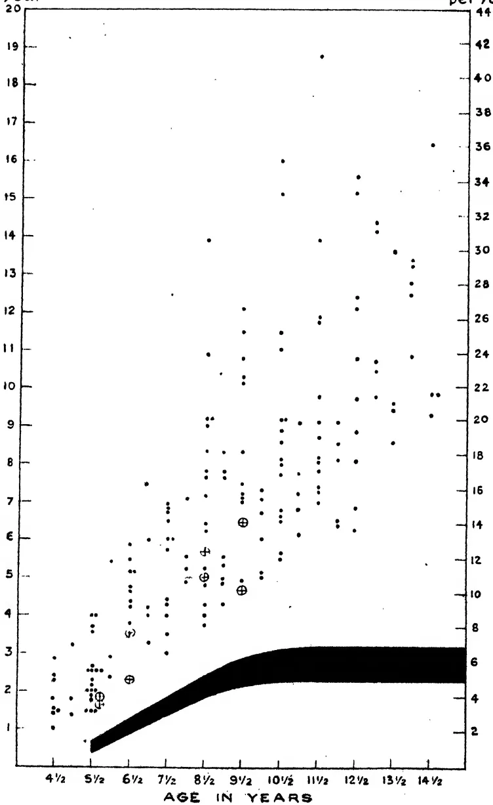
A scatter plot showing the relationship between tree age and annual growth. The x-axis represents 'AGE IN YEARS' from 4 1/2 to 14 1/2. The left y-axis represents 'Kg. per tree per year' from 1 to 20. The right y-axis represents 'lbs. per tree per year' from 2 to 44. The data points are scattered, showing a general upward trend in growth with age. A thick shaded area at the bottom of the plot represents a range of values, starting around 0.5 Kg. at 5 1/2 years and reaching approximately 6 Kg. by 10 1/2 years, remaining relatively constant thereafter. Several data points are marked with circles containing a cross.
| Age (Years) | Growth (Kg. per tree per year) | Growth (lbs. per tree per year) |
|---|---|---|
| 4 1/2 | 1.0, 1.5, 2.0, 2.5, 3.0 | 2.2, 3.3, 4.4, 5.5, 6.6 |
| 5 1/2 | 1.5, 1.8, 2.0, 2.2, 2.5, 2.8, 3.0, 3.5, 4.0 | 3.3, 4.0, 4.4, 4.8, 5.5, 6.2, 6.6, 7.5, 8.8 |
| 6 1/2 | 2.2, 2.5, 3.0, 3.5, 4.0, 4.5, 5.0, 5.5, 6.0, 7.0, 7.5 | 4.8, 5.5, 6.2, 6.6, 7.1, 7.5, 8.0, 8.4, 8.8, 9.9, 10.6 |
| 7 1/2 | 3.0, 3.5, 4.0, 4.5, 5.0, 5.5, 6.0, 6.5, 7.0, 7.5, 8.0, 8.5, 9.0 | 6.6, 7.1, 7.5, 8.0, 8.4, 8.8, 9.3, 9.7, 10.2, 10.6, 11.1, 11.6, 12.1 |
| 8 1/2 | 3.5, 4.0, 4.5, 5.0, 5.5, 6.0, 6.5, 7.0, 7.5, 8.0, 8.5, 9.0, 9.5, 10.0, 11.0, 14.0 | 7.1, 7.5, 8.0, 8.4, 8.8, 9.3, 9.7, 10.2, 10.6, 11.1, 11.6, 12.1, 12.6, 13.1, 14.6, 17.6 |
| 9 1/2 | 4.5, 5.0, 5.5, 6.0, 6.5, 7.0, 7.5, 8.0, 8.5, 9.0, 10.0, 11.0, 12.0 | 10.2, 10.6, 11.1, 11.6, 12.1, 12.6, 13.1, 13.6, 14.1, 14.6, 16.6, 18.6, 20.6 |
| 10 1/2 | 5.0, 5.5, 6.0, 6.5, 7.0, 7.5, 8.0, 8.5, 9.0, 9.5, 10.0, 11.0, 12.0, 15.0, 16.0 | 11.1, 11.6, 12.1, 12.6, 13.1, 13.6, 14.1, 14.6, 15.1, 15.6, 17.6, 19.6, 21.6, 23.6 |
| 11 1/2 | 6.0, 6.5, 7.0, 7.5, 8.0, 8.5, 9.0, 9.5, 10.0, 10.5, 11.0, 12.0, 14.0, 18.0 | 12.6, 13.1, 13.6, 14.1, 14.6, 15.1, 15.6, 16.1, 16.6, 17.1, 17.6, 18.1, 20.1, 24.0 |
| 12 1/2 | 6.5, 7.0, 7.5, 8.0, 8.5, 9.0, 9.5, 10.0, 10.5, 11.0, 12.0, 14.0, 15.0, 15.5, 16.0 | 13.6, 14.1, 14.6, 15.1, 15.6, 16.1, 16.6, 17.1, 17.6, 18.1, 18.6, 20.6, 24.0, 26.0, 27.0 |
| 13 1/2 | 7.0, 7.5, 8.0, 8.5, 9.0, 9.5, 10.0, 10.5, 11.0, 12.0, 13.0, 13.5, 14.0 | 14.1, 14.6, 15.1, 15.6, 16.1, 16.6, 17.1, 17.6, 18.1, 18.6, 19.6, 21.6, 23.6, 24.6, 25.6 |
| 14 1/2 | 8.0, 9.0, 9.5, 10.0, 10.5, 11.0, 12.0, 13.0, 13.5, 14.0, 16.0 | 15.1, 15.6, 16.1, 16.6, 17.1, 17.6, 18.1, 18.6, 19.1, 19.6, 21.6, 25.6 |
Finally there are two further new clones, namely War. 3 and 8. These are inviting attention in the Waringiana group on account of their high yields, and have not up to the present exhibited any undesirable characteristics. Of Clone War. 3 there is a satisfactorily large number of trees under observation. War. 8 has given an average yield on Tjiomas in its sixth year
We have now finished with the tables.
If we now look into the yields of our clones more closely we should, first and foremost, be impressed with the idea that all records that appear in the tables ought by rights to be prefixed with a sign.
The averages may be regarded as more reliable than the individual figures. What is now the average yield of our clones in their successive years of life, and what course is taken by the average yield of buddings? An answer to this question is most easily given with the aid of the graph to which I now wish to invite your attention.
In this graph the age in years is represented horizontally, and for each year is set out vertically the yield figures in kg. per tree of the clones dealt with in the tables. These are represented by the black spots on the graph, each of which, therefore, corresponds to a figure given in the tables.
You see that in the main these points lie in a breadthwise direction. A number of spots which lie out of the general grouping appear at the top, these being the yields of a number of Java and South Sumatra clones which probably form themselves into a class of their own. But these, almost without exception, are derived from only a small number of observed trees so that there is a chance of the yields being somewhat flattered. It would therefore be better to stand on safe ground and restrict our observations to the main trend of the graph. If we were to draw an imaginary line through it we arrive at average tree yields which according to present conceptions, are very high. This is clearly demonstrated by the comparison with the yields of our existing plantations of unselected seedlings. These are shown by a thick black line towards the bottom of the graph. This kind of line is familiar to those of you who have seen it in former graphs; it is constructed from the well-known production curves of Bodde, Holle and Maas, and in this case represents the yields of our older seedling plantations calculated in kg. per tree per year. There is another point that stands out when we compare the
236lines. The yields of the old seedling Rubber show no further increase after the eleventh year, whereas the yields of the budded clearings maintain a steady increase up to the fifteenth year. The probable explanation is that the older seedling plantations were usually overtapped in the early days and, according to present ideas, did not receive such good agricultural treatment as the budded clearings.
Now the comparison of the yields of our small budded clearings with those of the large areas of older seedlings is not strictly valid. We should really compare the yields of buddings on large areas with the old seedling plantations, and it is this comparison which is of chief interest to us from a practical point of view.
The practical man is not primarily concerned with yields obtained from buddings on a small scale; he wants to know whether these yields can be obtained from large areas.
We have therefore made a careful survey of yield figures that have recently been published as the result of tapping budded clearings on a practical scale. The available figures, which are expressed as kg. per tree per year in order to make them comparable, are shown on the graph as small crosses.*
As you may notice, these crosses are situated in the main direction of the black spots. We will explain the figures a little more fully. In the first place we have here the first, and up to the present the only, practical figure that is known to us regarding budded clearings in Java; it was communicated by Mr. Gunst at a Planters' Meeting at Rangkasbitoeng in January 1933. It concerns ha. ( acres) of mixed budded clearings of Clones B.D. 2, B.D. 5 and B.D. 10 on Bodjong Datar Estate, which yielded in the sixth year 452 kg. per ha. (404 lb. per acre), or approximately 1.8 kg. (4.0 lb.) per tree. It must have been a great source of satisfaction to Mr. Gunst, the enthusiastic champion of buddings as planting material, to bear witness to this result.
* In order to remove any misapprehension we must emphasise forcibly that by this method of reckoning we do not want to create the impression that we attach greater importance to yield per tree than to yield per ha. The usual figure expressed in practice is yield per ha. Since, however, the graph is based on the yields of buddings in small areas which cannot be reckoned in kg. per ha., the yields must be expressed in kg. per tree in order that the figures may be comparable.
237Then we have the three practical figures, published by Heusser, from Aloer Djamboe and Batang Trap Estates on the East Coast of Sumatra. They concern in the first place a plantation of 107 ha. (267 acres) planted partly with AV 36 in mono-clone and partly with AV 36 mixed with other AV clones. The yield was 378 kg. per ha. (337 lb. per acre) in the sixth year, or approximately 1.9 kg. (4.2 lb.) per tree. Then an area of 49 ha. (121 acres) of the same clearing planted with AV 36 in mono-clone gave 610 kg. per ha. (543 lb. per acre) in the seventh year, or 3.5 kg. (7.7 lb.) per tree. Further, 17 ha. (42 acres) of mixed planting with various AV clones on poorer soil gave 479 kg. per ha. (427 lb. per acre) in the seventh year, i.e. 2.3 kg. (5.1 lb. per tree).
Then you will see here a group of three practical figures of the H.A.P.M. on the East Coast of Sumatra published by Dr. s'Jacob in a lecture at Djember in December 1930, viz. 2 ha. (5½ acres) of untested H.A.P.M. clones with a yield of 1238 kg. per ha. (1103 lb. per acre), or 5.0 kg. (11.0 lb.) per tree, in the ninth year, and 1628 kg. per ha. (1450 lb. per acre), or 6.5 kg. (14.3 lb.) per tree, in the tenth year of age. Further, there is an area of 80 ha. (200 acres) of untested H.A.P.M. clones with a yield of 1121 kg. per ha. (1000 lb. per acre), or 4.7 kg. (10.3 lb.) per tree, in the tenth year.
Finally, there is yet another dependable figure referring to a budded area which in the ninth year gave a yield of 1,529 kg. per ha. (1,361 lb. per acre), which is equal to 5.7 kg. (12.5 lb.) per tree.
We do not at present know of any further yields on a practical scale, but I believe that the eight figures given above allow us to draw a far reaching conclusion.
These earliest budded clearings to be established on a practical scale are, indeed, partly planted with clones which are no longer considered to be the best, and partly with untested clones of completely different origin. Nevertheless the yields of these budded clearings come entirely within the main range of our experimental gardens, and up to, and including, the tenth year of life they completely confirm the course of production at the experimental stations.
It is impossible to overestimate the importance of this agreement. Indeed it banishes our last doubts regarding the yields of buddings planted on a practical scale. There is also
238no reason to suppose that the yield of clearings on a large scale will in later years proceed any differently to the experimental gardens, and that the yields of the older clearings will not improve according to the graph. What does this mean ?
If we were to trace a line through the middle of the small crosses we arrive at yields of 1.8 kg. (4.0 lb.) per tree in the sixth year, gradually rising to 10 kg. (22 lb.) in the fifteenth year.
With our young clearings, which have been laid out according to the latest ideas, we are certainly on the safe side with these yields.
With the optimum number of trees per ha. we can therefore expect with certainty from our younger budded clearings, average yields of from 500 kg. per ha. (445 lb. per acre) in the sixth year to 2,000 kg. per ha. (1,780 lb. per acre) in the fifteenth year of age.
In comparison with our present estates planted from unselected seed this represents a trebling to quadrupling of the yield—a great step forward.
I hope I have been able to show you that in the light of the most recently available data complete reliance can now be placed on budgrafts as planting material.
239WHILE experiment is in its initial stage, many planters are now giving thought to producing a new type of coffee—Arabica grafted on a Robusta stem.
The chief reasons for entering on this experiment are to combat the white stem borer pest and hemileia vastatrix, and it has been found that Robusta stems are free from borer while almost immune from hemileia.
That the grafted tree will produce a heavier crop is not seriously doubted, and that it will provide better type of coffee is anticipated, since all grafted fruits are an improvement.
All local experiments are recent and perhaps more advanced at the Agricultural Research Station, but so keen are most planters that they are not waiting for ultimate results before experimenting on their own initiative.
Some planters are still sceptical, however, regarding the success of the graftings, but once the method is thoroughly understood, it should be ninety per cent. successful.
A local nurseryman has been experimenting for some time and successfully grafted trees can be seen.
It is anticipated that a fully grown grafted tree will have a Robusta stem 18 inches to 2 feet above ground and that Robusta sap, permeating the rest of the stem, will render the tree much less liable to borer infestation, and that much of the immunity enjoyed by the Robusta, as regards fungous diseases, and at least some of the insect pests, will be imparted to the graft.
Whether the graft will develop into a much larger tree than the usual Arabica species remains to be seen, but it is anticipated that the more robust root systems of the Robusta stock, will be reflected in a larger spread of the top with consequent increase in bearing surface.
* Extracted from The Planter, Vol. I, No. 12, August 1933.
240PLANTERS, Directors of Agriculture, and others concerned with the production of cacao in the tropics, have often asked "What kind of cacao do manufacturers want?" This is an answer to this question. As each manufacturer has special tastes and preferences, it has been necessary to generalise, and where there is a difference of opinion, the opinion of the majority has been given.
In a general way the public preference for certain kinds of cocoa powder and chocolate determines the kinds of cacao beans the manufacturer wants. The more nearly the planters can supply beans which meet the public demand, the greater will be the consumption. And a greater consumption would benefit both planter and manufacturer.
The improvement in the cacao produced in West Africa reflects great credit on both the government authorities and on the native farmers. Much, however, remains to be done.
Whilst the white, or almost white beans obtained from the Criollo cacao tree produce a finer chocolate, the difference in the finished product is not so marked as it used to be, owing to the levelling effect of improved methods of manufacture. That manufacturers attach great importance to breed is strongly reflected in the price of raw cacao, but manufacturers would hesitate to recommend the planting of Criollo, save in those areas where experience has shown it to grow well, because of the delicate nature of this botanic variety. As the modern manufacturer generally wishes to produce a standard line in large quantities, he naturally depends, in the main, on those cacaos which can be produced at reasonable prices and which are of a very regular quality. He will only use expensive cacaos either by themselves, for special choice lines, or, mixed with cheaper kinds, to give character to a blend. In untested areas the farmer would be wise to plant Forastero, especially as this is the type of cacao which is sure of a large permanent demand. The farmer is recommended to choose his seed deliberately. Manufacturers would probably welcome a Forastero improved by a strain of Criollo, if this could be obtained without loss of vigour or yield, and they will follow the researches of the Imperial College of Tropical Agriculture (Trinidad) on cacao breeding with great interest.
Planters will naturally ask the local Director of Agriculture for information on the best type of cacao available for planting in their particular area.
* Written for the International Office of Chocolate and Cocoa Manufacturers by A. W. Knapp, assisted by E. Wehr and Leon Olivier, in Official Bulletin, July 1933.
241A consideration of the prices of various cacaos will show that, after the botanic variety, the skill shown in preparation for the market is the most important factor in determining quality and price.
The desirable characteristics will now be briefly described. The beans should be large (if natural conditions permit, less than 400 to the pound), healthy, even in size, and plump, and the shell unbroken.
The shell should be crisp and tough, but not too friable, and more or less detached from the cotyledons. On pressing powerfully with the thumb, a bean, held in the palm of the hand, should break readily into a number of crisp nibs. The odour should be clean, pleasant and characteristic. It is usually vinegary. There should be no trace of foreign odour, whether mouldy, musty or smoky. The fragments should taste fatty, refreshing, not too bitter or astringent, nutty, and neither harsh nor sour. If the bean is cut lengthways through the centre, it should be fairly open-grained. The colour of the section may be cinnamon-brown, dark-brown, purple-brown, or brownish-purple, according to the variety, but should be bright and free from mud colour or slate colour.
It may be well to insert the Definition of the Cacao Bean approved by the Council of the International Office of the Manufacturers of Chocolate and Cocoa.
"A sound cacao bean should show the following characteristics :
The inside of the bean should be brown (light mahogany to brown, according to origin) quite dry, and have an open texture due to good fermentation. It should crumble when pressed by the fingers.
On the other hand, the chief defects are :
The proportion of defective beans (mouldy or grubby) may not exceed ten per cent."
The undesirable characteristics will now be considered in greater detail.
Every planter knows that ripe cacao gives the best product, but sometimes unripe, or half-ripe cacao is gathered. This may happen from the carelessness of the pickers (especially where the harvesters are paid by contract, as in Bahia) or from the necessity to get sufficient cacao to fill the 'sweat' boxes; or, as on the Gold Coast or in Nigeria, from a desire early in the season to get the cacao on the market while the price is high. It is well known that the more unripe, or half-ripe cacao there is present in the bulk, the greater the departure from a satisfactory fermentation. It is a question, however whether the depreciation in quality which occurs through gathering unripe cacao is fully appreciated. In most cases it must be an economic error from the planter's point of view, because by leaving the cacao until it is ripe one obtains a greater yield as well as a better quality.
242In classifying beans, we do not usually classify unripe beans under 'defectives', unless they are shrivelled. Unripe beans are usually small and flattish. As they generally ferment imperfectly, they have the violet interior and hard texture of under-fermented cacao (these are described later under fermented beans). In addition the interior is often paler or whiter than normal, and the surface of the cotyledons is generally wrinkled owing to shrinkage.
This curious defect can often be found in isolated beans in Accra, Nigeria and Bahia cacaos, and has occasionally been seen in Trinidad and Guayaquil cacaos. It did not become generally known until 1925, when a large percentage of West African beans were heavily spotted. The beans looked quite normal externally, but when the shell was removed white or brownish spots (about 0.5 mm. in diameter) were seen on the cotyledons next to the shell and between the folds. Many of the spots consisted of rough, rosettes of crystalline material. The appearance of white spot in West African cacao coincided with an abnormally strong Harmattan, this powerful dry wind being accompanied by low temperatures.
Manufacturers hold various views as to the seriousness of this defect, but as long as white spot does not occur in more than two per cent. of the beans, no complaint is likely to arise.
Unless the picking is done carefully and frequently, some cacao will be picked in an over-ripe condition. The only objection to this is that the shell is more easily broken, and beans with fractured shells are more liable to become mouldy or grubby. If the ripeness is carried a stage further the bean may become germinated. Over-ripe cacao is not usually counted as 'defective' but the presence of broken beans is always detrimental, as fragments cause difficulties in roasting.
In these the germ (or radicle) pushes its way through the shell. In mild cases the chief objection is the opening up of the bean to attack by grubs or mould. Where germination is advanced it produces changes in the bean which affect the odour and flavour detrimentally. Germinated beans rarely appear in West Indian or Bahia cacao, and their constant appearance in West African cacaos shows that more care is needed in gathering and fermenting. Cacao which is gathered in a satisfactory condition may germinate if the fermentation is not correctly followed.
That the majority of manufacturers prefer fermented cacao is proved by their willingness to pay more for it, and although one reads of processes of "post fermentation" one wonders how far any economical process in the factory can overcome all the defects of unfermented or slaty cacao. Although fermentation greatly improves the bean, manufacturers are aware that the planters cannot "make a silk purse out of a sow's ear", and that no fermentation, however skilfully conducted, will convert a dark purple Forastero bean into a cinnamon brown Criollo.
It is easy to recognise an entirely unfermented bean by its slaty colour, cheesy texture, etc., but under-fermented beans are not usually classified as unfermented. Yet most manufacturers will agree that under-fermented
243beans produce inferior products. As with under-ripe cacao, the difficulty of defining under-fermented may prevent individual parcels of under-fermented cacao being penalised. But the average price of the cacao from a district will be lowered by the frequent occurrence of a high percentage of under-fermented cacao. An under-fermented Forastero bean, e.g. Accra cacao which has been fermented three days, has a purple or violet interior. Whilst the unfermented bean is soft and cheesy, the under-fermented bean is peculiarly hard; the shell is very hard and the cotyledons are hard and compact.
A marked improvement would be made in Gold Coast cacao if the fermenting beans were mixed every two days.
It is not only the common kinds of cacao which suffer from imperfect preparation; the fine Arriba cacao from Guayaquil generally contains about thirty-three per cent. unfermented, and some excellent Venezuela cacaos are very carelessly prepared.
A number of novel procedures have been proposed to replace fermentation—heating in water at controlled temperatures, freezing, boiling, treatment with alkali, etc.—but the manufacturers at present prefer the product obtained by the ordinary well-established methods.
It is generally held that the disadvantage of the thin brittle shell produced by washing quite outweighs the advantage of cleanliness, etc.
On handling, the washed shell easily breaks; broken beans store badly and are a nuisance to the manufacturer.
One of the most serious defects of raw cacao is mould. To avoid this it is necessary that the beans should be thoroughly dried. The degree of dryness obtained will naturally depend on the humidity of the atmosphere. It has been shown that cacao containing eight per cent. or more of moisture becomes mouldy. Cacao dried by the sun's heat is preferred, and only in case of necessity should cacao be artificially dried. When cacao is overheated it is spoilt. If the temperature of drying does not exceed 40°C. to 50°C., and care is taken to prevent the fumes of the fuel coming into contact with the cacao, a satisfactory product can be obtained. If in artificial drying a temperature of 50°C. is exceeded, then the cacao should be specifically described as artificially dried.
Whilst all these improve the external appearance of the cacao, it is doubtful whether any of them increase the value of the beans to the manufacturer. It is unlikely that certain Venezuelan planters will cease to earth their cacao, but it is to be hoped the practice will not extend. In the main, cacaos are bought, not on the beauty of their outsides, but on their actual quality.
Manufacturers would prefer that cacao was well cleaned before bagging—all fragments of nib, shell, twig-like dried placenta, stones, dust, palm kernels, rubbish, etc. being removed. The flat beans which consists mainly of shell should also be removed. Otherwise the
244manufacturer has to pay for this rubbish—in many cases he also has to pay duty on it—and when the cacao arrives at the factory he is put to the expense of removing it. In some countries there is a local market for the black (diseased) cacao and for the sweepings (broken beans, etc.) so that their removal is encouraged. It is to be regretted that there is, at present, on the West Coast of Africa no local use of these waste products.
There are a very objectionable form of defective cacao. The planter can help by producing the minimum of beans with broken shells and by killing any small moths (Ephestia elutella) seen flying near the beans during drying or bagging.
The storage of cacao in the tropics should always be discouraged—the beans run a great risk of deterioration from insect pests and from mould. Cacao from West Africa is liable to be riddled by the larvae of the small beetle, Aruecerus fasciculatus, which only thrive at tropical temperatures. Whilst shipholds and warehouses need close attention, the effort to control insect pests in the consuming countries cannot be effective unless the cacao producers prevent the original infection. As inspection of the cacao will not reveal whether eggs have been laid upon it, it is essential that the planter and merchant in the tropics should avoid exposing cacao to attacks by insect pests and only store, where storage is necessary, in perfectly clean and well ventilated stores.
It is important that planters and others in the tropics should do their utmost to prevent infestation, and advice on this matter will be found in the addenda.
Manufacturers do their utmost to avoid purchasing cacao with a foreign odour. Bad smelling cacao may be produced by an abnormal fermentation; from the burning fuel in artificial drying; or by being alongside odoriferous materials during transport or storage. Occasionally one sees beans from West Africa with tar on them. The actual percentage must be very small but the effect, if the beans were roasted, would be appreciable. This preventable contamination may come from the use of tar on fences, roofs and roads.
Some cacaos (e.g. a few marks of Grenada) are packed in weak bags. As cacao bags have to withstand severe handling they should be stoutly made of coarse jute. A good material is "A" Calcutta twill; a bag made of this to hold 1.25 cwt. will weigh 2.5 lb. Some manufacturers use the bags for more than one shipment, a procedure which should be discouraged as bags are liable to act as carriers of insect pests. For easy handling and stacking the bags should be filled rather full, but not too tightly packed. Bags of Bahia cacao are very loosely packed, and Guayaquil somewhat loosely; as a result they are more difficult to lift and pile.
Once the beans are dry, they should be kept dry. Packing in sacks should be carried out in dry warehouses. Good transport to the port and good lighthouse to the ocean liner are essential. The boats have to be
245loaded in the warm moisture-laden air of the tropics, and sometimes some of the bags are wet with the surf. It will be clear that as the boat reaches temperate regions there will be a risk of sweat damage, particularly if the boats have had to be battened down in the tropics. Every effort should be made to get the bags of cacao to the ocean liner in a dry condition. It is important that holds should be well-ventilated; and contact with wood, the dampness of which could cause damage, should be avoided.
Probably the most highly appreciated character is constancy or reliability of quality. Cacao which is obviously mixed, or which varies from bag to bag, or from month to month, is unlikely to maintain a high price. Any name which is attached to the cacao should indicate a definite standard, for example, under no circumstances should beans inferior in quality, ripeness, break, size, etc. be mixed with "superior" cacao. Such an action may not always seriously affect the price of a particular lot, but it affects detrimentally the reputation of cacao from that district, and finally reacts to the disadvantage of the planters themselves.
In this brochure there is no attempt to tell the planter how to prepare raw cacao. Should the manufacturers, as a result of experiments on their own plantations, or otherwise, find any new system of fermenting or curing which gives a more desirable product than that obtained by the time-honoured methods, they will naturally pass the knowledge on to the planters. In the meantime they venture to say that if the planter only allows ripe pods to be gathered, ferments for a reasonable period, turns the cacao every two days, cures with care, and keeps the beans dry, the cacao will have the appearance and properties which manufacturers desire.
In conclusion, it may be well to say that the manufacturers realise that the planters are always at the mercy of climatic conditions and that a severe drought may result in small beans, or, heavy rains in slow ripening and difficulty in drying, but as they on their part are prepared to make strenuous efforts continually to increase consumption by improving the manufactured products and advertising them widely, they look to the planters to do their utmost to improve the quality of the raw cacao.
246THE sweet potato is one of the principal food crops of the Philippines and was introduced into the Islands by the early Spaniards from America, its indigenous home. The plant has no native names although it has been grown abundantly in every province of the Archipelago for centuries. It is known by the old Mexican name of "camote," a name introduced with the plant centuries ago. A peculiarity of sweet potatoes as grown in the Tropics (especially some of the native varieties) as compared with those grown in temperate climates, is the frequency of the occurrence of the flowering habit. Under normal Philippine conditions a field of nearly mature camotes have an appearance not unlike that of morning glory beds; however, few of these blossoms develop fertile seeds. There are a number of good-producing native varieties, but they all lack the productivity and flavour of the best American sorts. Of the latter there are three principal kinds, the New Jersey Yellow, known locally as Momungan, the New Jersey Red and the California Large White. The New Jersey Red variety perhaps holds the known record in the Islands for production, having yielded under irrigation 32,240 kilos per hectare (572.3 bushels of 50 pounds each, per acre).
There have been several other American varieties introduced into the Islands, but most of these have failed to become properly acclimated and have been discarded. One variety recently introduced from Java gives promise of becoming a good yielder, though the potatoes are small.
Sweet potatoes may be conveniently propagated by the following methods: Vine cuttings, potato slips, and by planting small pieces of potatoes directly in the field. This latter method, however, is not used in the Philippine Islands as the pieces of potatoes when so planted serve only as harbours for fungi and insect pests that not only destroy the small pieces so planted but in turn devote their ravenous activities to the coming crop. Fields planted by this method have yielded nothing but barren vines.
Vine cuttings is the common method of propagation in the Philippines. In making these cuttings, pieces of vines 15 to 20 centimeters long are used. It has been found that young vines make better cuttings than the old, where the soil is at all lacking in an adequate water supply. All leaves are removed from the cuttings before planting, as they eventually die if allowed to remain on, and also reduced the vitality of the cuttings by transpiration.
Slips are obtained by planting whole, or half, potatoes in propagation beds and covering them with soil 3 to 5 centimeters deep. Sandy soils are preferable for this purpose. The beds are kept well-watered, but not muddy, as too much water causes premature decay, especially under tropical conditions. After the lapse of several days, if the conditions are favourable, young plants are produced from the potatoes and when the plants have
* Reprinted from the "Philippine Agricultural Review," Vol. X, No. 4, 1917.
247attained a height of ten to fifteen centimeters they are pulled off and planted directly in the field. It is not necessary nor is it considered advisable, to remove the leaves from these plants, as is done with the vine cuttings, since the slips when ready to plant have roots sufficiently developed for functioning, and the leaves soon begin to play their part in plant growth.
Sweet-potato cuttings may be kept in excellent condition for a considerable length of time, by keeping them packed in moist (not wet) sphagnum moss. When so packed the cuttings will root heavily at each node and are in splendid condition for growth when planted in the field. Quite naturally, of course, if kept too long under these conditions the vitality of the cuttings is reduced.
The slips or cuttings are planted in the center of the ridges, putting them about ten centimeters below the soil surface, or are doubled in the center leaving both ends protruding through the soil. If slips or cuttings of American varieties are used the plants are spaced 40 to 50 centimeters apart in the row, and if native varieties, 30 to 40 centimeters distance usually suffices for the best results. If irrigation water is available, 40 centimeters distance between plants will give the greater returns. With American varieties, however, if comparatively dry conditions prevail, 50 centimeters is the logical distance to plant.
For native varieties 30 to 40 centimeters between plants is the best distance to be employed, depending of course upon which of the above conditions prevail. The most ideal time for planting sweet potatoes in the Philippines is during the latter part of the rainy season. If planted at this time the last several rains enable the plants to form a good mat before the dry season sets in. Sweet potatoes may be grown with good success during the dry season provided, however, irrigation water is judiciously applied.
Experiments at the Singalong Experiment Station have definitely proved that flat-ground planting should not be used, as the production from such planting is low (average production less than 10,000 kilograms per hectare) and the product has an unshapely appearance somewhat resembling large turnips, such characteristic necessarily giving a bad marketability.
Cultivation is started before the vines begin to run, that is, before they have covered the tops of the ridges. This operation is performed with a five-tooth cultivator by removing all shovels with the exception of the rear two and breaking down about one-fourth to one-third of each ridge by drawing the cultivator between each two rows. This operation is usually followed by hoeing, for when the ridges are narrowed by cultivation, the hoeing that is necessary is materially reduced. After the completion of the hoeing the ridges can easily be thrown back to their normal position with a lister or plow, a lister being preferable.
It is scarcely necessary to repeat cultivation more than once or twice as the vines make such a rapid growth that they soon cover the ground and crowd out grasses and other weeds.
248As no economic crop can be successfully grown without a thorough knowledge of how to combat its fungous, bacterial and insect enemies, when such are prevalent, and as the Philippines abound with such pests it will perhaps be well to mention herewith some of the more pronounced sweet-potato enemies. A fairly comprehensive description of these with possible means of control follows :
Mosaic disease.—Some of the varieties of sweet potatoes in the Philippines, more commonly the American varieties and especially the Momungan variety, are subject to the mosaic disease. This malady seems to be controlled, however, by using cuttings from plants that appear to be resistant to this ailment.
Mosaic disease is considered to be a physiological derangement, which prevents rapidity in cell division in certain portions of the plants, causing stunted, distorted, unproductive plants with mosaic leaves, hence its name.
Rots.—Storage rots are alarmingly common among stored or crated sweet potatoes in the Philippines. Although infection usually takes place from fungus "spores" in the field, yet rough handling can be blamed for a good share of the losses incurred, as the bruises caused from handling furnish ideal gateways of infection. Consequently, great care in packing should be practised. This precaution combined with the proper rotation of crops, due care in the selection of cuttings and potatoes for "slips," together with the precaution of burning all roots and vine refuse, will aid materially in the control of these diseases.
The most noticeable and decidedly the most injurious sweet-potato pest, with which the people of the Philippines have to contend, is the Cylas formicarius Fabr., a camote or sweet-potato weevil common in Momungan. Mindanao and Central Luzon. P. I., Queensland, Australia, and in the sweet-potato districts of the United States.
Cylas formicarius is a small bluish insect less than five millimeters in length, which deposits its eggs in recesses at the base of the vine or at the upper end of the root. The maggots bore into the roots and when in sufficient numbers, completely riddle the potatoes, reducing them to a mass of soggy cellulose tissue. The insect pupates within the root and in due time is ready to infest another crop unless radical means are taken for its destruction.
This pest does no serious damage in the vicinity of Manila, if the crop is dug early, but otherwise it is tremendously destructive. Control measures consist of early harvest, rotation of crops, and the burning of all root refuse.
249UNRESTRAINED soil erosion is rapidly building a new empire of worn-out land in America: Land stripped of its rich surface layer down to poor sub-soil, and land gullied beyond the possibility of practical reclamation. This wastage of the nation's most basic and indispensable asset is not merely continuing; it is speeding up. Over millions of acres the washing is becoming more rapid as the cutting away of the upper soil material lays bare the less stable substrata. Every rain heavy enough to cause water to flow across cultivated slopes and sparsely vegetated land removes part of the soil. Everyone sees this in the muddied waters flowing away to the oceans, but few think of the material that discolours these flooded waters as soil material swept from the surface of the fields, where lies the most productive part of the land.
No other agency or combination of agencies remotely approximates the impoverishing effect of rainwater running wild across the slopes of America's farm lands. Three-fourths of the agricultural area of the nation is sloping enough to favour ruinous cutting away of the vital substance of the soil through the abrasive action of water. More than 100 million acres of the 350 million in cultivation have lost all or most of the precious material we call the top soil. At least 160 million acres of the remainder are suffering in some degree. To date we have permitted the essential destruction of about 35 million acres of what formerly was largely good crop land, together with an enormous additional area of grazing land. This has been so deeply washed, so cut to pieces by gullying or so smothered with the products of erosion that it cannot be reclaimed upon any practical basis by the average farmer. Much of it is permanently destroyed. Bed-rock has been reached in countless places and deep gullies have torn asunder millions of sloping acres. All of this has been abandoned.
No other part of the western hemisphere has been so wasteful of its land resources as we of America. Probably no nation or race of all history has permitted its agricultural lands to go to waste so quickly. Other parts of the world have been ruined by erosion, but the lands were used for many centuries, even thousands of years, before their devastation was completed. The enormous impoverishment and destruction that we have permitted, even encouraged by lack of interest and foresight, has taken place with but two centuries of cultivation. Most of the depletion has been accomplished during the past fifty to seventy-five years. This has come about because of carelessness, ignorance and the physical peculiarities of our soils, rainfall and farm methods. With respect to land use, we have proceeded, and continue to proceed, without plans. We have used all kinds of land, occupying every degree of slope, indiscriminately for every conceivable purpose. There has been too little of orderly selection on the basis of
* By H. H. Bennett, Washington, D.C., in The Ohio Journal of Science Vol. XXXIII, No. 4, July 1933.
250adaptability and fitness, and almost no effort has been given to the vitally important matter of soil conservation. We have looked upon our vast domain of agricultural land as limitless and capable of enduring for ever. Because the vast areas which have been made so poor that a man may spend his lifetime upon it without bettering himself or his farm will still grow something, we continue to produce an abundance of everything. The point of gravest menace is not a matter of producing a sufficiency of food. We shall be able to meet our requirements of both food and clothing for many years to come. But how? What is the menacing aspect of this evil of erosion?
The sore points deserving immediate serious consideration are these: Our best lands are largely in use and have been for some time. The area of these more favourable soils is steadily diminishing as the result of excessive rain-wash. Acreage yields are declining in spite of all the education and experimentation devoted to improvement of methods, and in spite of increased use of improved varieties, better seed, better machinery, high-grade fertilizers, soil-improving crops and irrigation, along with continuing abandonment of worn-out land for land still retaining its top soil. Cultivation of erosion-exposed clay is more difficult and costly, and need for fertilization and building up of the soil is steadily increasing. Water flows across the impervious clay exposed by the stripping off of the mellow, humus-charged top soil more rapidly to augment floods. Tens of thousands of hard-working farmers already are sub-soil farmers. Sub-soil farming is an impoverishing type of agriculture. Although producing a large aggregate of crops, the average yields at this low level of soil productivity are so pitifully meagre, there is but slim opportunity for the operator to get ahead, whether prices are up or down. Reservoirs that were built to hold water, not solid soil material, are rapidly filling with mud washed down from unprotected slopes; stream channels are silting up and overflows are becoming more frequent and destructive. Vast areas of alluvial land of extraordinary original productivity are being covered with infertile sand and gravel; large sums are required to protect the embankments and roadside ditches of our highways and railroads; and flood protection calls for the expenditure of ever-increasing millions.
From every conceivable angle erosion is a devastating agency. It is the greatest thief of soil fertility. It steals not only the plant food contained in the soil but the whole body of the soil, plant food and all. When this productive material that required centuries in the building is washed out of fields it cannot be economically hauled back, even where it is washed no farther than from the upper to the lower slopes of fields. That which passes down into the beds of streams and on out to the ocean is lost as irretrievably as if consumed with fire. Our best estimates indicate that erosion steals 21 times as much plant food as the crops take out of the land. That removed by crops can be restored, but that taken by water and wind cannot be restored. It is a net loss of almost incalculable magnitude. The process is the principal cause of worn-out land. There can be no permanent cure of dangerous floods so long as this principal contributor to the evil remains unleashed. Higher and broader and more costly levees may be built, but they cannot insure any permanency of protection with ever-increasing volumes of water charging out of erosion-denuded uplands.
251Our surveys and soil-loss measurements indicate that at least 3,000,000,000 tons of soil are washed out of the fields and pastures of the United States every year. The value of the plant food contained in this amounts to more than two billion dollars, on the basis of the cheapest fertilizers. Of this almost inconceivable wastage, the direct loss to the farmers of the nation is not less than $400,000,000 every year. This is paid for in reduced acreage yields, increased cost of cultivation, fertilization and the growing of crops for the sole purpose of building up impoverished fields, in land abandoned, highways damaged, reservoirs, irrigation ditches and culverts choked with erosional debris, and accumulative thinning of the surface soil, the staggering cost of which is postponed until the last inch of soil is washed off.
In a single county of the old South Carolina Piedmont country, where farming has gone on for nearly two centuries, ninety thousand acres of once good farmland have been mapped as soil largely permanently destroyed by gullying. Countless ravines have chiselled to pieces former fields, exposing bed-rock in numerous places, and all the soil has been lost. One farm of 1,004 acres, 200 of which were cleared of the virgin timber just after the Civil War, has not so much as a single acre of good farmland left in one place. No one lives on this once magnificent plantation. The palatial residence has tumbled to ruins. Silence pervades the desecrated acres and all the surrounding country is much the same.
The same survey has shown in the same county forty-six thousand acres of stream bottom, formerly the best land of the entire state, which have been converted into swamp or so smothered with sand washed out of the hills that it no longer has value for crops. The stream channels are so soaked that every rain of any importance sends flood waters over the alluvial plains.
Eight miles west of Lumpkin, Georgia is the largest man-made gully of the western hemisphere. This chasm is 200 feet deep. It was started by the drip from the roof of a barn fifty years ago. Since then it has swallowed the barn, a schoolhouse, a tenant house and a graveyard with fifty graves. In addition to this huge gulch, there are thousands of others nearly as large. Altogether seventy thousand acres of the best farmland of the region have been permanently destroyed in one county by this irreparable devastation. To fill these gullies would require operations on the order of those employed in the construction of the Panama Canal. And yet, every one of them could have been stopped easily in their infancy, had the farmers known of the necessity and of the practical methods of procedure.
In five adjoining Alabama counties, 500,000 acres of formerly cultivated land, most of it once highly productive, have been worn out with gullying and deep sheet washing. This is largely abandoned. Fortunately, much of it is growing up with pine trees. The growing of trees is the best possible use for such land.
In one county in south-eastern Ohio, a soil survey made by the State and Government co-operating shows that nearly 200,000 acres of formerly cultivated land are no longer cultivated. Approximately half of this has been so terribly impoverished by erosion that it is no longer used for any purpose.
252First it was farmed, then turned over to pasture; now the fences have fallen down and only poverty grass, golden-rod and weeds are growing on it. This too could have been saved had the farmers known 50 or 75 years ago what we know today.
That the consciousness of the nation has not been aroused to the seriousness of this prodigiously costly evil is an ugly blot upon our record. In our text-books we read of vast expanses of grass-covered prairies, of the buffaloes that grazed over these virgin grasslands; and we read of the enormous extent of our eastern forests and the fertile lands from which these have been cut. But we read little or nothing in these volumes of the desecration of these same areas following the breaking of the prairie sod and the cultivation of the lands that supported the forests; the destruction of millions of acres and the impoverishment and increasing impoverishment of a large proportion of the remainder. Are our children to believe that the present gullied and soil-skinned slopes of the nation represent normal conditions, or shall we tell them the truth in order to implant the germ of moral obligation to country and posterity which eventually would arouse that mobility of consciousness so vitally necessary for correction of our unwise land-use practices. If this is not done, if we continue as in the past cultivating steep lands and lands that wash away within a few short years following the first plowing, there can be but one outcome: Irreparable decline of the nation's most basic resource, its agricultural lands. This is not so much a prediction as an obvious physical eventuality based on the known depth of the productive topsoil and the known rates of the soil removal and depletion by erosion.
At the moment there is wide-spread discussion of the evils of erosion and the necessity for controlling it. Some of these discussions seem to imply that all we have to do is go out and stop the wastage. We are fully aware of the fact that forests and grass and the thick-growing plants, such as lespedeza, alfalfa, sorghum and sweet clover, will largely reduce the washing; but we must continue to produce clean-tilled crops, as corn, potatoes, cotton and tobacco. It is in fields of these crops that the evil is so vicious and calls for immediate attention. There are various remedies and partial remedies. Some methods, effective on one soil occupying a given slope, are of little value for other soil conditions. For many kinds of land we have not yet ascertained the most economical and effective measures of control. The national program of soil erosion, described below, is striving with the greatest possible speed to develop the acutely needed methods for such lands.
In the discussions now going on a great deal of emphasis is devoted to gully control. Much good could be accomplished in this direction, especially in regions where gullying is widely prevalent; but on the whole necessity for gully control is of inconsequential importance in comparison with the need for control of sheet washing: That process of erosion which planes off a thin layer of soil with every rain heavy enough to cause water to flow across cultivated slopes. This process goes on so slowly that little attention is given it until infertile spots of clay sub-soil and solid rock begin to make their appearance in fields, at which stage it usually is too late to do very much in the way of soil conservation, the soil having largely floated away in the direction of the oceans. Gullying usually begins at that stage of sheet washing when the soil is all gone.
253Another unfortunate feature in connection with the erosion problem is that only a handful of soil specialists know how to distinguish sheet washing and to measure its effects. Practical capability in this important field calls for special knowledge of soil varieties, their morphological structure under virgin and cultivated conditions and their varying tendency to wash, as determined by soil type. Sheet erosion can be identified and its effects measured only by comparing eroded areas, soil layer by soil layer, with the original condition in woodlands and grass-covered areas. What will happen to a given area of a definite soil type if put into cultivation can be predicted only through this method of comparing and interpreting natural and abnormal soil conditions. What one kind of soil will suffer on a given slope frequently is entirely different from what will take place on another soil having precisely the same gradient. This is one of the most fundamentally important aspects of the erosion problem, and without due consideration of these variables, erosion-control programs will suffer or come to nothing.
Finally, recognizing the enormous cost of soil wastage by erosion and excessive loss of rainwater as runoff from unprotected cultivated slopes and from overgrazed ranges and pastures, Congress three years ago appropriated funds to begin a national program for studying the whole problem of erosion and for developing methods of control. The plan calls for accurate measurement of the losses of soil, water and fertility from various slopes undergoing different cropping treatments throughout twenty odd major regions of the nation where erosion is known to be a problem of enormous seriousness. To date, ten of these erosion experiment stations have been established.
At these stations every promising practical method for slowing down erosion is to be tried out on a field scale. Rates of soil loss and runoff are to be accurately determined from the different slopes planted to different crops and tilled in various ways. Terracing, strip-cropping, scarification of the land and other methods are being tried out, first on small plots and then in large fields, wherever the results have shown any promise of practical applicability. In some regions where livestock farming is important the land is being subjected to various conditions of grazing, in pastures containing a variety of grasses and other forage crops. The cheapest methods of reclaiming erosion-worn land are being determined, together with the cost. Various methods of gully control are being tested, using living dams of grass, trees, shrubs and vines, rock dams, dams made of poles, brush and other cheap materials. Conservation of the remaining soil, however, will be the prime endeavour of the program, rather than reclamation of depleted land.
As soon as the work at the stations gets well under way, every experiment of worth-while promise will necessarily, constitute a demonstration. Field meetings are held on the farms at frequent intervals so that the farmers of the region may visit the station and see what is going on. The educational phase of the work is being pursued in such manner as to acquaint the regional farmers with the precise meaning of erosion, its cost and the best methods for its control. There is no secrecy about any part of the program. Visitors are urged to come to the station from the very beginning of the work. They are urged also to bring to the specialists on the erosion farms any suggestions they may have which are based upon worth-while practices on their own farms, in order that every promising practice may be brought clearly out before all the farmers of the various regions.
254To cite the work at one of these erosion farms : The Red Plains erosion station near Guthrie, Oklahoma, is located on the principal type of farmland in this highly erosive region, which comprise thirty-six million acres in Oklahoma and Texas. An erosion survey recently completed by the Oklahoma Agricultural College has shown that of the sixteen million acres under cultivation in that State, thirteen million acres are suffering seriously from erosion, nearly seven million acres of this having reached the stage of gullying. More than a million and a half acres have been ruined by deep washing and gullying during the past ten years. The annual cost of erosion to Oklahoma has been estimated by the State agricultural specialists to exceed $50,000,000, under normal price conditions with respect to farm commodities.
The work at the Red Plains station has shown that when the principal regional crop, cotton, is grown continuously, the loss of soil from the average slope amounts to 32.5 tons per acre per year, along with a loss of 14 per cent. of the total precipitation as runoff. This means that under cotton only 30 years are required to wash off the entire depth of the surface soil, down to stiff clay sub-soil, which produces less than half as much cotton as the uneroded topsoil.
The results show, on the other hand, that on precisely the same kind of soil and the same degree of slope only .03 tons of soil and 1.7 per cent. of the precipitation are lost where grass is grown. In other words, grass reduced the soil loss by 1,080 times and the water loss by 8 times. Where cotton is grown in rotation with grain and a leguminous crop, the loss of soil is reduced by 350 per cent. and the loss of rainfall by 23 per cent., as compared with the losses under continuous production of cotton.
Beyond this, terracing and strip cropping have very largely reduced the erosion. The farmers of the region are visiting the station daily, and more and more of them are putting into practice the soil-saving and water-conserving methods which have been worked out on soils like those on their own farms.
The work, such as is proposed for the erosion stations, should have been begun 50 or 75 years ago. At this advanced stage of our civilization we have not yet obtained the fundamental facts relating to the erosion problem, such as are vitally necessary for the carrying out of protective measures. If this work should be delayed the problem of erosion control would simply become progressively more difficult, more expensive and more discouraging. It is a problem that must be attended to now, not something that can be put off for future generations to solve. No moratorium can be declared against erosion. It must be fought with determination and effective implements. If we refuse to ascertain what these implements are, then the fight will be lost, or seriously retarded, farming on sloping land will become steadily less profitable and finally altogether hopeless. Floods will flow down the rivers of the nation in ever-increasing volume. Co-operation from every thinking individual is needed in this combat. Let's remember that erosion is the most powerful agency affecting the physical character of the earth, and let's not forget that already we are very late in getting started the studies which should have been made first of all, the studies having to do with land use and the maintenance of soil productivity. We can not afford not to pursue this problem with all the energy at our command.
255Minutes of a Meeting of the Board of the Tea Research Institute of Ceylon held in the Ceylon Chamber of Commerce Rooms, Colombo, on Saturday, the 5th August, 1933 at 10 a.m.
Present.—Mr. R. G. Coombe (Chairman), Col. T. G. Jayewardene, V.D., Messrs. B. M. Selwyn, C. E. Hawes, Gordon Pyper, Jas. Forbes (Jnr.), I. L. Cameron, J. C. Kelly, D. T. Richards, A. W. L. Turner (Secretary), and by invitation Mr. G. K. Stewart, M.S.C., and Dr. C. H. Gadd (Acting Director, T. R. I.).
Absent.—The Hon'ble the Financial Secretary, the Director of Agriculture, and Mr. D. H. Kotalawala, M.S.C.
The Chairman welcomed (a) Mr. Gordon Pyper, nominated by the Planters' Association of Ceylon to act on the Board during Mr. John Horsfall's absence.
(b) Mr. C. E. Hawes, the newly-elected Chairman of the Ceylon Estates Proprietary Association.
(c) Mr. D. T. Richards, nominated by the Ceylon Estates Proprietary Association vice Mr. R. D. Morrison, resigned.
(d) Mr. J. C. Kelly nominated by the Ceylon Estates Proprietary Association to act on the Board during the absence of Major J. W. Oldfield.
Votes of thanks to Messrs. G. K. Stewart, M.S.C., and R. D. Morrison for services rendered were recorded.
Experimental Sub-Committee.—Mr. D. T. Richards was duly elected a member of this Sub-Committee.
Finance Sub-Committee.—Mr. J. C. Kelly was elected to act on this Committee until Major Oldfield's return.
Tea Cess and Re-Organisation.—The Chairman stated that the Planters' Association of Ceylon, the Ceylon Association in London and the Ceylon Estates Proprietary Association had agreed that the Cess should be maintained at 14 cents, but the last-named Association considered that the
256position should be reviewed at the end of 1935. The Low-Country Products Association had submitted an alternative scheme suggesting that the Cess should be 13 cents per 100 lb. of tea during the years 1934, 1935, 1936 and 1937, 12 cents in 1938 and 10 cents thereafter.
Col. Jayewardene pointed out that the Cess paid on all tea was irrespective of the value thereof and this he considered was rather hard on the Small-Holders.
There was a general discussion with regard to Small-Holders selling coupons and abandoning their holdings.
Mr. Gordon Pyper said that he had recently attended a Meeting of Village Headmen in Kandy at which it was stated that very few, if any, villagers would abandon their holdings.
Mr. Stewart pointed out that the Small-Holdings Officer's Report indicated that there was not a great traffic in coupons because the Small-Holders were getting quite a good price for their green leaf.
Further discussion on the question of Small-Holders was postponed till later in the Meeting.
The Chairman said "With regard to the procedure to be adopted in introducing the application to the State Council, I am advised that it is necessary for a formal resolution from this Institute to be proposed stating exactly what it is we want an amended Ordinance to achieve. At the last Meeting held on the 30th May, the Report was adopted with one dissentient, Col. Jayewardene representing the Low-Country Products Association. It was further decided that if the proprietary interests approved of the Report, the Institute should approach the Minister for Agriculture and Lands and ask him to introduce or facilitate the introduction of a Bill in the State Council to amend Ordinance No. 12 of 1925 to give effect to our wishes.
We have obtained the approval of the proprietary interests, it now therefore remains to implement the decision in the manner indicated. I now therefore formally move the following resolution, a copy of which is in the hands of you all".
"That, in order to maintain the Tea Research Institute on a sound financial basis and to support its existing activities without curtailment as detailed in the Report of the Sub-Committee of this Board, dated May 20th, 1933, the Hon'ble the Minister for Agriculture and Lands be requested to introduce or facilitate the introduction of a Bill in the State Council to amend Ordinance No. 12 of 1925 (and/or the Amending Ordinance No. 12 of 1930) to enable (a) the present Cess of 14 cents per 100 pounds of tea exported to be maintained beyond December 31st, 1933, and (b) by the deletion of Section 4 of the same Ordinance to enable such change of Headquarters to be made as may be found necessary."
This was seconded by Mr. I. L. Cameron and carried, Col. Jayewardene refrained from voting.
257(a) The Visiting Agent's Report, dated the 26th May.—The Chairman reported that there was a marked improvement in the cart road since a roller had been borrowed. He drew attention to the remarks under the heading of drains and expressed satisfaction that the reversible type of drainage appeared to be working so satisfactorily.
(b) Bungalows.—The Chairman expressed the opinion that as most of the bungalows were very damp on their S.W. sides it would be necessary to consider making provision in next year's estimates for smooth plastering the outside of all S.W. walls.
(c) New Clearings.—The Chairman stated that the bad jât bushes had all been removed and replaced with good jât plants from St. Coombs nurseries. In this connection Mr. Gordon Pyper asked if the Scientific Staff could give any information with regard to the jât which is best able to withstand shot-hole borer. It was decided that the Experimental Sub-Committee should discuss this matter.
(d) Factory.—The Chairman stated that in his opinion the dampness in the factory was mostly due to the abnormal weather. He added that certain drains had been deepened and new drains cut and there was already a distinct improvement. He also informed the meeting that certain recommendations made by Mr. F. J. Whitehead had been put in hand and the cost thereof would be defrayed from money voted for factory and machinery upkeep.
(e) Testing of Plant or Systems of Manufacture at St. Coombs Factory.—The Acting Director said that he was not yet in a position to make a statement with regard to Messrs. Brown & Co.'s Winnowing Machine. Experiments were being carried out and the results would be made known later. In this connection it was decided to adopt the alteration to the Rules as suggested in Circular No. A.8/33, dated the 20th April, 1933. The Rules are reproduced for information.
The Chairman said "You will agree that Mr. Stewart's letter addressed to me on his return from Java contains matters of considerable interest and value.
The first point of interest is the comparisons between the Tea Research Laboratories located at Buitenzorg and St. Coombs.
Other points of note are those relating to the experimental plots, especially Budgrafting of Tea, as well as comparison of jâts. The last-mentioned is also under investigation at St. Coombs.
Another matter of more than passing interest is the procedure adopted for providing funds for the maintenance of Research in Java which will, I do not doubt, be stressed by Mr. Stewart when he is dealing with our own Institute in the State Council in connection with the maintenance of the present rate of Cess.
The next point, and to my mind one of the most important which Mr. Stewart mentions is the work being done by the "Thee Expert Bureau" in Batavia. If such a system for tasting and reporting upon samples as well as visiting estates, could be adopted in Ceylon, and include comparison of prices with London, Australia, Canada, and S. Africa, etc., by the Tea Propaganda Board in consultation with the Tea Research Institute, Ceylon, would I feel, benefit greatly, I consider that this point should be closely studied by the two bodies mentioned without loss of time.
All members will, I am sure, be in accord with the suggestion that one of our Scientific Officers should pay a visit to Java to study particularly the agricultural condition of the estates as well as some of the methods in relation to manufacture. I propose taking this matter up with Dr. Norris after his return from leave and to inform you at a later meeting of his views. One point stands out very clearly in the letter and that is that if Ceylon is to hold its place in the tea world we must, in spite of the contrary opinion held by some of our critics, redouble our efforts in research, both in agricultural and manufacturing conditions with a view to maintaining and improving our quality which alone places us and will, Mr. Stewart considers from his own observations, keep us ahead of the Dutch in prices.
I look upon this as a question which we must view broad-mindedly. We have five years to concentrate on improved methods which can only be done by increased research, which again can only be effected by maintaining, even increasing, if necessary, our resources, not curtailing them. We have the opportunity, are we going to lose it?
I have on behalf of the Board already extended an expression of appreciation to Mr. Stewart for his letter and the valuable information it contains. I now propose that this appreciation be recorded in the Minutes."
Mr. Stewart thanked the Chairman for his remarks and stated that in his opinion Java was not ahead of Ceylon so far as research was concerned, but he suggested that Dr. Gadd should go over in the near future
259and inspect the estates in order to gain information regarding the jât of the tea bushes and the quality of the soil. He admitted that Ceylon could not compete with Java with regard to quantity but he was convinced that every effort should be made to maintain the quality of Ceylon Tea. He expressed the hope that the Board would in due course appoint an officer to correspond with the officer of the Tea Export Bureau in order to keep in constant touch with buyers and advise re grading, etc. He suggested that perhaps the new Technologist might be able to take on this work.
Mr. Stewart asked why large-scale experiments were no longer carried on at St. Coombs Factory.
The Acting Director explained that in consultation with the Staff concerned he had very carefully considered the question of experimentation on the large-scale machinery, in the light of past work before placing his views before the Experimental Sub-Committee for approval. He pointed out that special machinery had been designed and installed especially for experimental work and that the fullest use should be made of these machines. The large-scale machinery would be used to verify points of importance which evolved from the small-scale trials. He also briefly outlined the importance of accurate technique in factory experimentation and the necessity for standardising the machines and operations. It was along those lines that much of the factory investigations were progressing at present.
The Chairman invited Messrs. Gordon Pyper and J. C. Kelly to attend the next Meeting of the Experimental Sub-Committee at St. Coombs at 10 a.m. on the 26th August.
The Acting Director's suggestion with regard to this subject was sent to each member of the Board under cover of Circular No. A.15/33, dated the 21st June.
After a short discussion it was decided that the Rules suggested by the Acting Director should be adopted. These rules are as follows :
The Chairman explained that the Planters' Association of Ceylon and the Ceylon Estates Proprietary Association had been asked to express opinions with regard to the holding of courses of instruction at St. Coombs for Junior Members of the planting community and conferences for Senior Members. The Ceylon Estates Proprietary Association had replied that if there was a general desire by the Planters' Association of Ceylon for inaugurating these courses the suggestion would be worthy of further consideration. The Planters' Association replied that the principle of the suggestion received their approval but it was considered that the present time was not opportune for inaugurating these courses and conferences.
Announced that in accordance with the decision of the Board at its Meeting on the 14th April, 1933, the Automobile Association of Ceylon had been asked if the Institute could become a member of that Association. A reply had been received to the effect that the Association's rules did not provide for Firms, Companies or Institutions becoming members.
Small-Holdings.—The Report of the Small-Holdings Officer was considered and it was agreed that Mr. Illankoon should continue to advise Small-Holders not to sell their coupons and that he should do all in his power to keep the Small-Holders out of the hands of exploiters.
Col. Jayewardene suggested that in his next report, Mr. Illankoon should intimate the number present at each of his demonstration meetings.
Mr. Kotalawala's remark in his letter quoted earlier in the Minutes regarding demonstration plots was discussed and it was decided that if the Director considered the establishment of demonstration plots necessary he should again refer to the Board before taking any action.
The meeting closed with a vote of thanks to the Chair.
A. W. L. TURNER,
Secretary.
(Rathukuruminiya, Sinhalese. Sevvandu, Tamil.)
THE Red Weevil is probably the most serious insect pest of coconut palms in Ceylon, since it usually breeds in living palms, especially in younger palms ranging from about four to about twelve years old, which in many cases are seriously injured or killed unless the attack is detected in the early stages and prompt control measures are taken. The adult stage, or weevil, (fig. 1) is attracted to any palms which have been injured by the Black Beetle, wind, lightning, knife wounds, porcupines, wild pigs, etc., or which are diseased in any way. This pest rarely attacks perfectly sound palms, since these are not attractive to the egg-laying weevils. It has been found in the Dutch East Indies that Red Weevils can detect favourable breeding places in injured palms at a distance of more than half a mile. On arriving at a palm the weevils quickly detect any injured spots, but do not appreciable damage in the adult stage beyond making small holes or punctures with the snout or proboscis in any wound or diseased tissues. These punctures may be made either for feeding or for the laying of eggs.
The chief damage is done by the larvae or grubs which hatch from the eggs and bore into the softer portions of the crown or the stem. If the eggs are laid in the crown, the grubs usually bore into and kill the growing bud; in cases where the eggs are laid in the stem or in the base of young palms, the tissues are soft enough in such palms for the grubs to tunnel in all directions and eventually to hollow out a fairly large cavity. At first, the only indications of the attack may be a few small holes in the stem from which pieces of chewed fibre protrude and a brownish liquid oozes out; at this stage of the attack it may be possible to save the palm by digging out the grubs and treating the wounds. If the attack is allowed to continue, the interior of the stem becomes a seething mass of grubs and larger wounds appear on the outside of the stem. This extreme type of damage is shown in figure 8.
The grubs eventually form their cocoons inside the partially hollowed stem and sometimes the cocoons are so tightly packed within the cavity that many of the weevils are unable to emerge and die inside. In badly attacked young palms anything from 50 to 100 cocoons and from 20 to 50 grubs may be found. Heavily infested young palms wither gradually and die, and unless they are dug out and burnt they become attractive to Black Beetle, with the result that beetle grubs may usually be found in such palms along with the weevil grubs.
* Leaflet No. 22, (Revised.)
262Old palms may sometimes be attacked in the crown, usually after injury by Black Beetle or other agencies, and in such cases the results may be fatal, especially if disease is present. Old palms are rarely attacked in the stem or at the base, since by that time the tissues have become too hard to permit the grubs to bore in and develop normally inside.
Weevils.—The Red Weevil (fig. 1) is one of the largest of the weevils or snout-bearing beetles. It is usually about inches long including the snout, but occasionally one finds weevils that are only about 1 inch long. The weevils vary in colour from very dark red or deep crimson to a reddish brown; the black spots on the prothoracic shield behind the head are only conspicuous in the lighter specimens. In both sexes the mouth parts are lengthened in the form of a slender and slightly curved snout or proboscis which bears a very small pair of biting jaws at the end and a pair of antennae near the base. The snout of the female is more slender than that of the male which bears a small "brush" of short brownish hairs on the upper side near the end. This "brush" can be seen on the weevil shown emerging from the cocoon in figure 7. As mentioned above, the weevils are attracted to any wounded or diseased young palms for feeding and egg-laying. Under laboratory conditions at Peradeniya it was found that weevils remained inside their cocoons for about seven to ten days after emerging from the pupal skin. They then come out of the cocoon (fig. 7) and after feeding they may start mating within a day or two after emergence from the cocoon.
Habits of oviposition.—The female weevils lay their eggs in any part of a palm where they can find a wound or a soft spot. They may either first make small holes, sometimes about rd of an inch deep with their snouts, and then turn round and put an egg down into these holes with their ovipositors which are easily extended. Eggs may also be laid in convenient cracks or soft spots with the ovipositor alone. Red Weevils often make use of the wounds made in the crowns of palms by Black Beetles or they may push their eggs into the soft tissues at the base of a damaged leaf stalk. Eggs may be laid anywhere in the trunk where there is a soft spot or any injury, or they may be deposited at the bases of palms where the bark has cracked owing to rapid development after heavy applications of manure. Young palms up to ten or twelve years old are specially liable to attack since they are more easily damaged and are therefore more attractive to egg-laying weevils than older palms.
Experiments at Peradeniya have shown that females start laying eggs within about 3 to 5 days after emerging from their cocoons, that is, within about 10 to 15 days after reaching the adult stage. They continue to lay a few eggs almost daily for periods ranging from about 3 to about 8 weeks. The egg-laying records of 12 females indicate that these laid 125, 103, 201, 50, 186, 61, 76, 54, 231, 260, 251, and 302 eggs respectively, giving an average of about 158 eggs per female. The majority of these weevils were killed by disease before their full number of eggs could be laid. It will be seen that the maximum number of eggs was 302, but it is probable that under natural field conditions in Ceylon a female Red Weevil may live much longer than 8 weeks and may lay considerably more than 300 eggs.
263Eggs.—The eggs are small long oval and whitish to creamy-white, and are usually about th of an inch long by about th of an inch broad, i.e. about 2.5 m.m. by about 1 m.m. (fig. 2). An enlarged egg is shown in figure 3. They increase slightly in size before hatching in 3 to 5 days, the average period being about 4 days for 100 eggs from 26 different lots of eggs.
Grubs.—The newly-hatched grubs are quite small and whitish, with pale-brown heads, and in general appearance they closely resemble the full-grown grubs. A young grub is shown in figure 4. These grubs have a stout fleshy body, but no legs. Their jaws are strong enough to enable them to tunnel about inside the softer tissues of the palm. They feed entirely inside a palm, buried in the tissues and well protected during the grub stage. This period occupies from about 28 to about 34 days in the laboratory under conditions which approached natural field conditions as nearly as possible, and includes a short period of about three to four days, during which the full-grown grubs (fig. 5) stop feeding and gradually shrink while forming their cocoons.
Pupae.—The fully developed grubs construct their cocoons by winding around themselves a number of tough fibrous threads to form a stout, compact, long oval cell (fig. 7). Each grub then moults for the last time and changes into the pupal stage. A pupa, slightly enlarged, with the snout, legs and wing sheaths closely applied to the underside of the body is shown in figure 6. The pupal stage lasts from about 12 to about 25 days in the laboratory.
Weevils.—As mentioned above, the weevils remain inside the cocoon for about 7 to 10 days and during this period of inactivity they are becoming sexually mature, since they are ready to mate and start another generation within a few days after emergence from their cocoons.
Total life-cycle.—Taking the above figures for the duration of the different stages, we get egg stage, 3 to 5 days; grub stage, 28 to 34 days; pupal stage, 12 to 25 days; adult stage in cocoon, 7 to 10 days. These figures indicate that it is possible for the life-cycle to be completed in about 50 days, or about 7 weeks, from the laying of the eggs to the emergence of the weevils from their cocoons, but that this period may be as long as about 74 days or about weeks. Since the weevils are able to start egg-laying within about 3 to 5 days after emerging from their cocoons it would appear that the life-cycle from egg to egg is about 8 weeks, or 2 months. Under field conditions in the coconut districts, it is not unlikely that the duration of the life-cycle may be even shorter.
Except that these two pests are both beetles, they are quite different in general appearance throughout the various stages of their individual development and in their feeding and breeding habits. The differences in their habits have been brought out in the leaflet on the Black Beetle and in this leaflet on the Red Weevil and are here contrasted for convenient reference. The different appearance of their individual stages can be seen by a reference to the illustrations accompanying these two leaflets. •
264Beetles.—The Red Weevil in the adult stage does practically no injury to palms, but the Black Beetle damages palms by boring into the crown in order to feed on the sap.
Eggs and Grubs.—The Red Weevil lays its small, long oval whitish eggs in any wound or soft spot on living palms and its grubs feed and develop inside the living parts of the palm, either injuring it seriously or killing it if the growing bud is attacked. The Black Beetle lays its rather broadly oval whitish eggs in dead palms, in decaying palm stumps and logs, in manure and other refuse heaps, or in any kind of decaying refuse buried in light rather sandy soils. Its grubs feed and develop in such places and have no connection with living healthy palms.
Cocoons and Pupae.—The cocoons of the Red Weevil are made of fibrous threads and formed inside the palm wherever the grubs happen to have been feeding. The Black Beetle grubs make no proper cocoons, but either form their pupae in earthen cells under or near refuse heaps, or hollow out pupal cells in the walls of old palm logs, or sometimes construct their cells from the vegetable mould in such logs.
These two beetle pests are often to be found together in coconut areas, especially in young plantations, where they are dependent on each other to some extent for providing breeding places. For instance, the Black Beetle bores holes in the crown of a healthy palm for feeding only, but under Ceylon conditions the attacks of this beetle are not sufficiently concentrated nor the damage sufficiently serious to cause the death of the palm, except possibly in rare cases where the growing bud may be cut through. These Black Beetle wounds may sometimes attract Red Weevil to lay their eggs and the grubs hatching from these eggs feed inside the crown, sometimes causing the death of the palm. The dead or dying palm then becomes attractive to egg-laying Black Beetles, the grubs of which are able to breed inside the decaying tissues of the palm together with the weevil grubs, unless the palm is removed and burnt. This brings us to the measures which must be adopted to control the Red Weevil.
The control measures recommended in the Black Beetle leaflet will help to reduce the number of injured palms which may provide breeding places for the Red Weevil and will therefore assist indirectly in the control of the weevil. But in view of the fact that the Red Weevil has its own special breeding habits, which are quite distinct from those of the Black Beetle, it is essential that definite measures of control be taken against this pest also.
Preventive Measures.—These are especially applicable to young palms up to ten or twelve years old which require extra care and attention. Avoid all unnecessary wounding of young palms, since all wounds are attractive to egg-laying weevils. Do not strip off old leaves, but allow them to drop naturally. When cutting the leaves for the control of the Coconut Caterpillar, leave at least 2 feet of the leaf-stalk on the palm. All wounds made by knives, cart weevils, pigs, porcupines, etc., must be tarred immediately and thoroughly, especially in the case of young palms,
265Warnings should be issued to estate labourers about the careless wounding of young palms. Pigs and porcupines should be controlled on estates where they are known to be troublesome. Young palms which have their roots exposed should be mounded up with soil at the base and protected with a ring of coconut husks.
✓ Remedial Measures.—Young plantations should be inspected frequently so that Red Weevil attack can be detected in its early stages. Since this pest breeds so rapidly, these inspections should be made at least once a month by trained labourers. As soon as the presence of weevil grubs is detected, anywhere from the crown to the base of the stem, the cavity formed by the grubs should be carefully cleaned out so as to remove all dead and decaying matter and leave only healthy tissues. All grubs, cocoons and weevils removed from the injury should be killed immediately. The cavity should then be tarred thoroughly inside and around the edges and finally filled with a mixture of small stones and mortar and faced with cement almost level with the surface of the trunk, care being taken to see that the edges of the cavity overlap the filling so as to prevent its falling out. A bad attack in the crown can rarely be satisfactorily cured, and in such cases the palm must be removed and burnt early, so as to prevent further breeding of the two beetle pests. Older palms should also receive attention where necessary, but the preventive measures outlined above will usually be sufficient to protect these.
Apart from the coconut palm, the Red Weevil (Rhynchophorus ferrugineus) may attack almost any kind of palm which is in a sufficiently attractive condition, and the treatment or removal of all such injured palms will further assist in the control of this pest.
266THE following motion moved by the honourable member for Matale on February 15, 1933, viz. : "That immediate steps be taken to provide pasture lands in agricultural areas" was referred to this Committee for report and was considered by it at a meeting held on March 14, 1933, at which the honourable member for Matale was present on invitation.
The motion is similar in import to that moved in 1923 in the Legislative Council by the Rev. W. E. Boteju, the then member for Sabaragamuwa, who requested the appointment of a committee to inquire into the need of common pasture reservations for agricultural cattle in rural districts and to report on a workable scheme for starting and maintaining such reservations in districts where they might be found needed.
That motion was accepted by Government and a Committee was appointed in January, 1924, which reported in 1925, its report being published as Sessional Paper No. 27 of 1925. In accordance with the recommendation of this Committee, Circular No. K 77/1927, was issued on June 30th, 1927, stressing the desirability of providing grazing grounds for village cattle where such provision was considered useful and where Crown land was available. The Settlement Officers were requested to bear in mind the needs of villagers for cattle pasture and, in making village settlements, to set apart, in consultation with the Government Agents, lands of good pasturage. Deniyas and owitas in the wet zone which would be useful as grazing grounds were prohibited from alienation while Revenue Officers were instructed to encourage in conjunction with the Department of Agriculture experiments in improving impoverished old fields by planting them with fodder crops so as to serve as grazing grounds.
The Executive Committee has continued this policy and with the systematic mapping-out now in hand has insisted on mapping-out officers giving special attention to the reservation of land for cattle pasture. Every mapping-out report in respect of each village is required to contain particulars as regards the number of cattle, both black cattle and buffaloes, in the village; the present method of pasturing prevalent in it; whether there are any proclaimed pastures or village forests located close by; and the extent of pasture, if any, that is necessary. There were 60,000 acres of communal pastures in 1929 but this extent has been largely increased since then, and the work of mapping-out is of course still proceeding. Experiments of the conversion of forest into pasture are also being encouraged in Kalutara, Matara, and Sabaragamuwa.
It will, therefore, be seen that the intention of the resolution of the honourable member for Matale has been and is being kept in mind. The Executive Committee is in full sympathy with the proposal but, at the same time, feels strongly that the cattle problem in Ceylon is much too vast to be solved merely by an extension of so-called "pasture areas" which are normally stocked with grass of very poor quality.
267That extension itself must necessarily be limited. It is estimated by competent experts that under the present method of pasturage adopted by the Ceylon villager and owing to the poorness of the quality of the grass found on so-called "pastures," approximately about five acres of such land would be necessary for the maintenance of one head of cattle. The cattle population of the Island being nearly two millions it would be necessary to set apart on this estimate about ten million acres for cattle alone out of a total acreage of sixteen millions in the Island. And when it is considered that this extent will have to be provided for the cattle in populous areas where land is scarce and required for serving the essential needs of human beings the impracticability and the undesirability of a scheme of mere extension of pasture areas to feed the cattle population become at once obvious.
The Executive Committee has accordingly come to the conclusion that, at least equally important with the provision, where practicable, of pasture areas, is the development of what may be called intensive pasture management. With this object in view the Committee has directed the Department of Agriculture to pay special attention at Peradeniya to the improvement, by methods of selective cultivation, of existing indigenous grasses in Ceylon and to experimenting with imported varieties of grasses. Recent reports have shown good results, and information is now available as to the varieties of fodder grasses that may be grown with success in different parts of this country, according to soil and climatic conditions. For instance, at the Veterinary Farm, Ambepussa, an acre is reported to have yielded from 20 to 25 tons of suitable fodder grass. The Committee has information that an acre of grassland properly cultivated and looked after should be able to feed about three to five head of cattle, a result which reduces the need of pasturage by at least 1/15th. Efforts are also being made to induce the villager to realize the advantages of ensilage and of hay-making, and to grow green fodder crops on his holding, so that he may have available for his cattle throughout the year an adequate supply of good fodder, instead of depending only upon grass pastures which will not serve him during the drought.
The Executive Committee is very greatly concerned over the uneconomic manner in which cattle are being tended in this country. The principle that true economy demands proper care and attention being bestowed appears to be very much overlooked. It is no uncommon feature of rural life to find the villager concentrating all the attention he would give his cattle into the short period of three or four months of the year when he needs their services for the seasonal agricultural operations. Labour is exacted almost to the utmost ounce of a miserable animal's endurance, and then, exhausted and utterly worn out by toil as it is, it is sent forth to fend for itself and to breed promiscuously. Little or no attention is paid to the cow whose importance in any scheme of animal husbandry is not sufficiently realized, and it is not, in the circumstances, surprising that the specimen of cattle now to be seen in our countryside is not what it should and can be.
The Executive Committee has, therefore, directed the appropriate officers to pay special attention to the question of the improvement of stock. It is recognized that the best form of propaganda is demonstration, and while some time will no doubt elapse before any marked improvement is seen generally throughout the Island, it is a matter for congratulation that
268the selective methods employed by the Government Dairy have already helped in the low-country to some extent to improve the breed. The results so far achieved at the Colombo Dairy have, indeed, been so encouraging that the Executive Committee has asked the Veterinary Surgeon and the Director of Agriculture to put forward a scheme for the purpose of starting a Government Stock Farm on a large scale. There appears to be no good reason why similar results should not be obtained in Ceylon to those attained in other countries where the milk yield of cows have been multiplied two or threefold in as many generations.
It is also hoped that the Agricultural Associations which are shortly to be formed throughout the country with the approval of this Council will play an effective part in educating the people in regard to the urgent necessity of adopting scientific methods in the management of their cattle if the country is to be stocked with an adequate supply of efficient draught bulls and good milk-yielding cows. Incidentally, the Executive Committee will cordially welcome the establishment, in Municipal and Urban Council areas, of central depôts where milk could be collected, pasteurized and distributed, and the services of the Co-operative Department will always be gladly made available towards this end.
The Executive Committee submits that, while it will be its endeavour to afford every facility for grazing in the villages by the provision of all available suitable land as grazing grounds, it considers it of very great importance that attention should be paid to familiarizing the villager—
Unless and until the villager recognizes the need for cattle management on these lines, the problem of the degenerate species with its large annual increase and overcrowding of grazing grounds is likely to remain.
269| Province, &c. | Disease | No. of Cases up to Date since Jan. 1st 1933 | Fresh Cases | Recoveries | Deaths | Bal-ance III | No. Shot |
|---|---|---|---|---|---|---|---|
| Western | Rinderpest | ... | ... | ... | ... | ... | ... |
| Foot-and-mouth disease | 32 | ... | 31 | 1 | ... | ... | |
| Anthrax | ... | ... | ... | ... | ... | ... | |
| Rabies (Dogs) | 14 | 2 | ... | 10 | ... | 4 | |
| Piroplasmosis | ... | ... | ... | ... | ... | ... | |
| Colombo Municipality | Rinderpest | ... | ... | ... | ... | ... | ... |
| Foot-and-mouth disease | 28 | ... | 27 | 1 | ... | ... | |
| Anthrax | 12 | ... | ... | 12 | ... | ... | |
| Rabies (Dogs) | 26* | 4 | ... | ... | ... | 26 | |
| Haemorrhagic Septicaemia | ... | ... | ... | ... | ... | ... | |
| Black Quarter | ... | ... | ... | ... | ... | ... | |
| Cattle Quarantine Station | Bovine Tuberculosis | ... | ... | ... | ... | ... | ... |
| Rinderpest | ... | ... | ... | ... | ... | ... | |
| Foot-and-mouth disease (Sheep & Goats) | 121† | ... | 113 | 8 | ... | ... | |
| Anthrax (Sheep & Goats) | 171 | 14 | ... | 171 | ... | ... | |
| Central | Rinderpest | 65 | ... | 11 | 52 | ... | 2 |
| Foot-and-mouth disease | 3 | ... | 3 | ... | ... | ... | |
| Anthrax | 10 | ... | ... | 10 | ... | ... | |
| Bovine Tuberculosis | 1 | ... | ... | ... | (slaughtered) | ... | |
| Rabies (Dogs) | ... | ... | ... | ... | ... | ... | |
| Southern | Rinderpest | ... | ... | ... | ... | ... | ... |
| Foot-and-mouth disease | 50 | ... | 50 | ... | ... | ... | |
| Anthrax | ... | ... | ... | ... | ... | ... | |
| Rabies (Dogs) | 1 | ... | ... | ... | ... | 1 | |
| Northern | Rinderpest | 1725 | 80 | 555 | 1317 | 4 | 49 |
| Foot-and-mouth disease | 4 | ... | 4 | ... | ... | ... | |
| Anthrax | ... | ... | ... | ... | ... | ... | |
| Black Quarter | ... | ... | ... | ... | ... | ... | |
| Rabies (Dogs) | ... | ... | ... | ... | ... | ... | |
| Eastern | Rinderpest | ... | ... | ... | ... | ... | ... |
| Foot-and-mouth disease | 52 | ... | 51 | 1 | ... | ... | |
| Anthrax | ... | ... | ... | ... | ... | ... | |
| North-Western | Rinderpest | ... | ... | ... | ... | ... | ... |
| Foot-and-mouth disease | 116 | ... | 110 | 6 | ... | ... | |
| Anthrax | ... | ... | ... | ... | ... | ... | |
| Pleuro-Pneumonia (Goats) | 3 | ... | ... | 1 | ... | 2 | |
| Rabies (Dogs) | 2 | ... | ... | 1 | ... | 1 | |
| North-Central | Rinderpest | 1138 | 52 | 212 | 891 | 1 | 34 |
| Foot-and-mouth disease | ... | ... | ... | ... | ... | ... | |
| Anthrax | ... | ... | ... | ... | ... | ... | |
| Uva | Rinderpest | ... | ... | ... | ... | ... | ... |
| Foot-and-mouth disease | ... | ... | ... | ... | ... | ... | |
| Anthrax | ... | ... | ... | ... | ... | ... | |
| Bovine Tuberculosis | 2 | ... | ... | ... | ... | 2 | |
| Sabaragamuwa | Rinderpest | ... | ... | ... | ... | ... | ... |
| Foot-and-mouth disease | 1364 | 609 | 1127 | 64 | 173 | ... | |
| Anthrax | ... | ... | ... | ... | ... | ... | |
| Piroplasmosis | ... | ... | ... | ... | ... | ... | |
| Haemorrhagic Septicaemia | 11 | 5 | ... | 11 | ... | ... | |
| Rabies (Dogs) | 6 | ... | ... | ... | ... | 6 |
* 1 case occurred in a Goat at the Slaughter House. † 1 case occurred during August.
G. V. S. Office.
Colombo, 10th October, 1933.
M. CRAWFORD,
Government Veterinary Surgeon.
| Station | Temperature | Humidity | Rainfall | |||||||
|---|---|---|---|---|---|---|---|---|---|---|
| Mean Maximum | Difference from Average | Mean Minimum | Difference from Average | Day | Night (from Minimum) | Amount of Cloud | Amount | No. of Rainy Days | Difference from Average | |
| Inches | Inches | |||||||||
| Colombo | 83.2 | -2.2 | 76.5 | -0.2 | 80 | 86 | 7.6 | 4.13 | 19 | -2.32 |
| Puttalam | 85.1 | -0.9 | 77.1 | -0.5 | 75 | 84 | 5.8 | 1.59 | 7 | +0.39 |
| Mannar | 86.0 | -2.6 | 77.6 | -1.2 | 77 | 86 | 7.4 | 0.98 | 2 | -0.12 |
| Jaffna | 85.1 | -0.4 | 76.9 | -1.9 | 89 | 95 | 4.9 | 1.56 | 4 | -1.23 |
| Trincomalee | 88.5 | -3.1 | 76.1 | -0.5 | 67 | 84 | 6.4 | 4.35 | 7 | +0.01 |
| Batticaloa | 89.8 | +0.1 | 75.3 | -0.3 | 60 | 77 | 5.3 | 3.48 | 8 | +0.79 |
| Hambantota | 86.3 | +0.5 | 75.4 | -0.1 | 74 | 88 | 5.4 | 0.86 | 4 | -1.73 |
| Galle | 81.7 | -1.1 | 76.2 | -0.3 | 86 | 88 | 5.8 | 4.87 | 15 | -3.34 |
| Ratnapura | 86.5 | -0.3 | 73.7 | +0.2 | 75 | 93 | 7.0 | 9.78 | 22 | -5.19 |
| A'pura | 86.9 | -3.3 | 73.8 | -0.9 | 68 | 88 | 7.7 | 4.47 | 9 | -1.36 |
| Kurunegala | 85.4 | -1.3 | 73.6 | -0.5 | 73 | 91 | 8.8 | 4.42 | 19 | -0.94 |
| Kandy | 81.6 | -1.7 | 69.7 | +0.5 | 75 | 90 | 8.0 | 8.90 | 23 | +2.89 |
| Badulla | 82.4 | -3.4 | 63.9 | 0 | 66 | 97 | 5.7 | 5.57 | 10 | +2.07 |
| Diyatalawa | 76.3 | -1.7 | 61.2 | +0.3 | 61 | 81 | 6.8 | 2.59 | 9 | -1.42 |
| Hakgala | 67.4 | -3.2 | 56.7 | +0.1 | 80 | 88 | 6.9 | 7.58 | 19 | +1.40 |
| N'Eliva | 64.9 | -2.1 | 54.4 | +1.1 | 83 | 91 | 8.4 | 9.04 | 21 | +0.62 |
The rainfall for September has been appreciably above normal on the western slopes of the main hill-country, and along the east coast south of Batticaloa. In the low-country to the south-west of Ceylon, it has been appreciably below normal. Elsewhere offsets above and below normal have been irregular, but, on the whole, the rainfall has shown no marked deviation from average.
The highest monthly total reported was 30.72 inches at Norton Bridge, while the greatest excess above average was 8.30 inches, at Kabaragalla. The greatest deficit below average was 11.34 inches, at Carney Estate. There were 18 reports of 5 inches or more in a day, the majority being on the 4th-5th, and the remainder on the 3rd-4th. The heaviest daily fall reported was 10.80 inches, at Padupola, on the 4th-5th.
As reported last month, the monsoon had weakened during the latter half of August, with a development of local rains. About the beginning of September it began to strengthen again, and heavy rain, of the south-west monsoon type, fell in the south-west of the Island. By the 6th the monsoon currents had established themselves, and the rain fell off, being now generally light, and confined to the south-west of the Island. These conditions lasted till the last week in September, when the south-westerly gradient again weakened, and local thunderstorms gave wide-spread rain.
Temperatures were generally below normal, particularly by day, while humidity and cloud amount were above normal. Barometric pressure was above normal in the west of the Island, and about normal in the east.
The barometric gradient was stronger than usual, and veering somewhat from its normal direction, a change reflected in the winds in the upper air at Colombo, which also veered from the normal direction, at a half and one kilometre altitude. This change in the direction was probably responsible for some features of the distribution of rainfall deviations from average in the south-west of Ceylon, the monsoon winds moving more directly against the western slopes of the hills than usual.
Surface wind directions were generally south-westerly or west-south-westerly.
A violent local squall, or whirlwind, passed over the compound of Colombo Observatory on the night of the 11th, doing some damage to one of the buildings in the compound. The path of the disturbance must have been only a few yards in diameter, and it moved in a straight line, from WSW to ENE, for at least 1½ miles.
A hailstorm was reported from Campion Estate, Bogawantalawa, on the 26th.
H. JAMESON,
Supdt., Observatory.
VOL. LXXXI.
PERADENIYA, NOVEMBER, 1933.
No. 5.
| Page | |
|---|---|
| Editorial ... .. | 271 |
| Grazing Grounds and their Improvement in Ceylon. By J. E. Senaratne, F.L.S. ... .. | 273 |
| On the Identity of Some Curry Stuffs. By J. C. Haigh, Ph.D. ... .. | 283 |
| How Long do Seeds Retain their Vitality? ... .. | 287 |
| Pests and Diseases in Tobacco Seedbeds ... .. | 291 |
| Mineral Deficiency in the Southern Coastal Belt of New South Wales ... .. | 296 |
| Vitamin A Content of Foods and Feeds ... .. | 308 |
| Minutes of Meeting of the Board of Management of the Rubber Research Scheme (Ceylon) ... .. | 327 |
| Panama Disease of Plantains ... .. | 330 |
| Animal Disease Return for the month ended October, 1933. ... .. | 334 |
| Meteorological Report for the month ended October, 1933. ... .. | 335 |
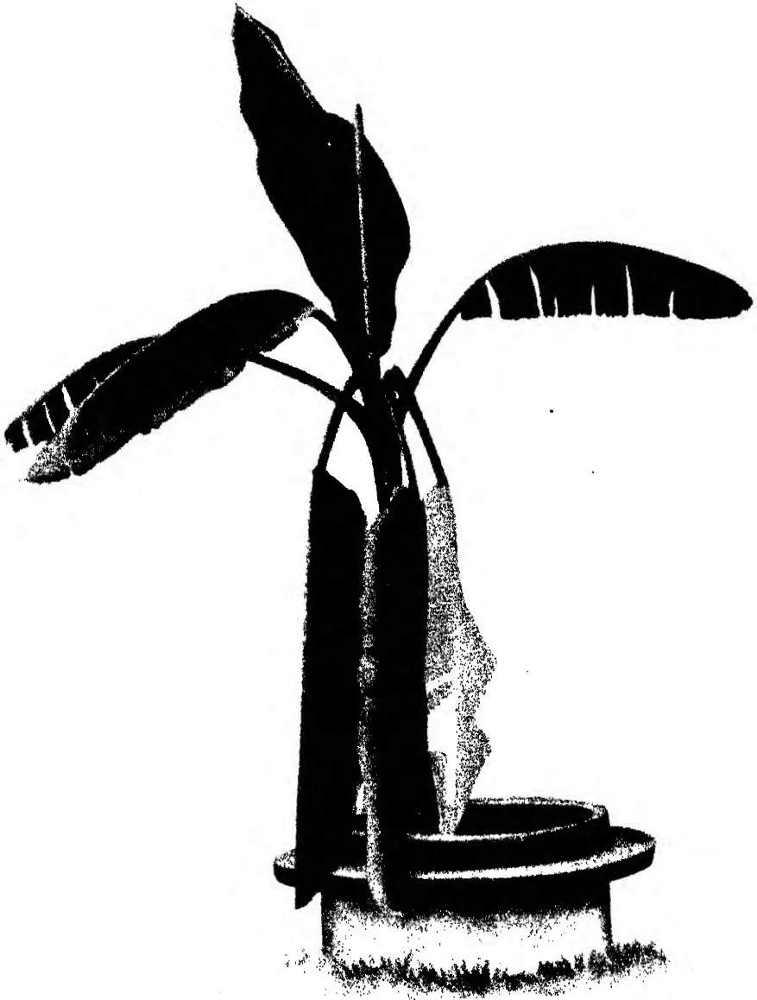
A black and white illustration of a young plantain plant in a pot. The plant has several large, dark leaves, some of which are drooping and showing signs of decay or discoloration. The pot is a simple, dark, cylindrical container sitting on a small patch of ground.Panama Disease of Plantains
(See page 330 for article)
The
Tropical Agriculturist
November, 1933.
EDITORIAL
DEFICIENCY IN DIET OF MAN
AND BEAST
GREAT advance has been made during recent years in our knowledge of certain substances which have a profound influence upon the control of animal life.
Minute traces of these substances so influence the biological form of the individual that deficiency, be it exceedingly small, may produce a marked divergence from what we are accustomed to regard as an ordinary form. The abnormalities that result may constitute a pathological condition in our domestic animals and ourselves. These substances may be formed by vitalistic action within the bodies of the animals themselves—such are the secreted ferments and hormones, or, they may be introduced from outside in the food that we eat. Of this latter nature are certain mineral matters of comparatively simple chemical structure and also chemicals of a much more complex organic nature known as vitamins.
Deficiency of simple chemicals and vitamins plays a much greater part in our surroundings than is commonly realised. It is deficiency of chalk and phosphates in our Ceylon soils that decides our crops shall be tea or coffee and not barley, oats and wheat. The same deficiency has a profound influence upon our
272pastures, the size of bone in our cattle, our domestic supply of milk, and may thus even influence the health of our infants and our race. The feeding to our cattle in Ceylon of a supplemental mineral ration is a matter of great importance.
Of the vitamins and their physiological import our knowledge has been but comparatively recently gained. So great and so various are the factors that they control in the animal organism that the very destiny of the race is moulded by their presence or absence in the diet. It behoves our housewife, our cattle rearer, and our poultry keeper nowadays to have some knowledge of these vitamins and the foods in which they are contained so as to provide a properly balanced ration for those that are their care. Fortunately with regard to these a fairly safe and simple rule is contained in the maxim—variety. It is interesting howbeit to note that this variety may be so often neglected as to produce deficiency diseases on a large scale in jails and other public institutions when there is no justifiable reason for it. The great difference in vitamin content between white and yellow maize ("corn") is one that our cattle and poultry keepers would hardly suspect and the great value of many easily procured homely vegetables wants to be brought into our daily diet.
273J. E. SENARATNE, F.L.S.,
SYSTEMATIC ASSISTANT, DIVISION OF ECONOMIC BOTANY
IN Ceylon, according to the Blue Book, in 1932 there were 1,053,000 head of neat cattle, 527,000 buffaloes, 204,000 goats and 57,000 sheep; and according to Ferguson's Ceylon Directory for 1933, there are 15,000 acres under cultivated grass. In this country there are no pastures as generally understood. Pasturage is provided by naturally existing grazing grounds and as such it is composed of a very mixed flora in various stages of succession.
These grazing grounds may be classified under three headings:
Practically all coconut lands provide grazing and carry cattle or other livestock for manurial, draught or other purposes. In Ceylon there are under coconut some 1,100,000 acres, mostly forming a strip along the sea coast. The grazing provided by these lands is of a more or less uniform and permanent character and consists of a mixture of grasses and leguminous plants. The grasses include many of the better pasture types and among the leguminous constituents Hin-undupiyali (S.) Desmodium triflorum DC.) is found almost everywhere while Maha-undupiyali (S.). (Desmodium heterophyllum DC.) is less common. Asvenna (S.) (Alysicarpus vaginalis DC.) is too a fairly frequent constituent.
These include deniyas, ovitas, abandoned chenas and other neglected areas where stock graze uncontrolled on any pasturage these lands provide.
274These form a very distinct and homogeneous class with well defined characters. They consist of large savannah-like areas of grassland composed mostly of coarse grasses of which only tender young shoots are eaten by stock. Characteristic patana country is found in Uva at altitudes from 2,000 to 4,500 feet. From the Uva patanas of these lower altitudes "wide and extensive tongues of patana-vegetation protrude into the forest on the eastern slopes of the central ridge, and even in places cross the summit of the ridge: thus, extensive patanas are found on Horton Plains (7,000 ft.), on the eastern slopes of Totapella up the Hakgala valley, and across the ridge as far as Nuwara Eliya." —(Pearson on the Botany of the Ceylon Patanas, Journal of the Linnean Society, Botany Vol. XXXIV).
In Ceylon grazing grounds have received little attention in the past and they are in a more or less neglected state. Many excellent pasture plants are found on these areas but as a result of the present system of continuous open grazing of the entire pasturage by the whole herd, the extension of the better species and strains is prevented while that of the less useful ones is little checked.
A recent examination of grazing grounds in Ceylon has shown that even at present with the little attention given many of the better pasture species hold their ground against the less desirable ones. There is no doubt at all that in many cases there could be very great improvement as a result of scientific management.
In this country we are at present concerned solely with permanent grazing grounds that are not artificially altered or improved by the introduction of new plants. The system of continuous open grazing generally practised here leads to selective feeding by stock, the more desirable types of pasture plants being overgrazed while the less useful ones are undergrazed. This results in much wastage and a gradual decline in carrying power of the grazing grounds. For instance, on some grazing areas "carpet grass" (Axonopus compressus Beauv.) is eaten down while many other grasses flower and seed untouched. It
275is only when "carpet grass" is no longer obtainable that cattle turn to the other grasses. This has been going on for many years in the past and may be one of the chief causes which account for the present poor condition in general of the grazing areas in spite of their having good pasture species on them. Long continued overgrazing is another factor responsible for their unsatisfactory condition.
The first improvement that suggests itself is some form of pasture management. In recent years an intensive system has been adopted in the more important grazing countries of the world. The basic principles governing intensive pasture management are to use the pasturage when its feeding value is highest and to conserve what is left over in the form of hay, grass cake or silage, while its nutritional value is high, that is, to get the best possible out of the pasturage.
The grazing ground should be sub-divided into paddocks of a size suited to the number of animals and a sufficient number of paddocks should be kept up in order to prevent overgrazing or undergrazing and to make use of the herbage when its feeding value is highest. By this means alone the carrying power of a pasture may be increased by about one-third. Controlled rotational grazing, upkeep of the pastures with manuring, irrigation and cultural treatment are other factors which contribute to the success of this system. Our pasture areas are at present generally a long way off anything approaching intensive management but it is well to examine what steps might be taken to lead up to such a desirable state of things.
To practise intensive pasture management fencing is essential. The ordinary village farmer cannot afford to spend money on fencing. He can, however, obtain labour readily on the system of mutual help practised in the villages. For fencing, plants such as Gliricidia (Gliricidia sepium Steud.) which may later be used for fodder are preferable, but any common live-fence plant that is not harmful to stock will suffice.
For the villager with his few head of cattle the best course, where practicable, would be to use communal pastures managed by the Village Committees, or, where such are not available to join with other villagers and fence-in and maintain a suitable number of paddocks on a co-operative basis. Where existing grazing grounds are used for this purpose the enclosed areas should be rested for some time to enable them to recover from the effects of previous continued overgrazing.
276In dealing with similar work in India, Burns writes (1923) "It may be objected that this means either fencing or a greater degree of organization than the villager can attain. But we can quote the case of the village of Pimpalgaon Baswant in the Nasik District where about 800 acres of grassland are administered by the village co-operatively on the old panchayat system. Annually 200 acres are set apart for grazing and 600 for cutting, giving enough and to spare for all the village cattle. Four watchmen at Rs. 10 to 12 per mensem were in 1915 kept for the six months when the grass was on the ground to prevent trespass. The problem is therefore soluble. Its scientific investigation is well worth while; its importance to agriculture, incalculable."
This would probably be along the following lines.
1. Acquisition.—Over 70 per cent. of the Island is uncultivated and most of this is Crown forest and jungle. To start with a sufficient area of this land could be acquired either on lease or under some settlement scheme. .
2. Gradual clearing and enclosure.—This land is now gradually cleared. The trees, all but a few left for shade, are felled and the shrubs and undergrowth cut down. Whatever may be sold or otherwise disposed of is removed. The rest is allowed to dry and is burnt. The part that has been cleared is fenced in.
3. Improvements by removing weeds and sowing better seeds.—Particularly in opening up new pastures, weeds are very troublesome and they should be continually removed, to prevent their competing with the young pasture plants on virgin soil. Seed could be sown in order to get better pastures. For this purpose selection and improvement of pasture strains and their cultivation for seed purposes will become necessary.
4. Manuring.—Continuous cropping of the plant from the same soil removes much mineral matter from the soil and the amount removed increases with time. So that unless this is returned to the ground the land gradually becomes spent and the plants will decline. In Ceylon this has been going on for a long time. Ceylon soils are generally deficient in lime. A soil deficient in lime can give little lime to the plants it supports which in turn go to form bone and this accounts for the poorly developed skeletons of Ceylon animals. Liming will
277improve most of our grazing grounds. Lime can be cheaply obtained in most areas. The application of other fertilisers which will greatly increase the productivity of the pasturage is perhaps only to be hoped for when considerable initial advance has been made, and an appreciation of the value of pasture improvement realised.
5. Draining.—Draining where required, for instance, in marshy and water-logged soils as occur along the coast will improve the pasture to a great extent. This need not be a costly operation.
In turning coconut estates into grazing lands a good mixture of selected grasses and leguminous plants should be grown without what are generally called cover crops. Good pastures can be established with "carpet grass" (Axonopus compressus Beauv.), "doob" or "Arugampillu" (Cynodon Dactylon Pers.) and other desirable grasses together with the two common Desmodiums, "Undupiyali" and "Maha-undupiyali" and the common Alysicarpus, "Asvenna."
With regard to patanas, where the grass is too coarse except during the very young stages to be of use, drastic burning followed by a controlled succession seems to be the best course; this is another problem that first needs investigation on an experimental scale. Much the same appears suited for chenas which have been left uncultivated and are gradually reverting to scrub and jungle.
Much of the uncultivated land of this Island could be used for the opening up of permanent pastures. For this purpose the choice and preparation of land are important. The selection of grass or grasses is of still greater importance. Either, grasses can be obtained to suit the conditions of the pasture ground, or, much better, if practicable, the ground can be improved and fitted to receive more productive species. Generally a mixture of grasses and certain leguminous plants appears to be better for a permanent pasture than a pure stand of a single species as the different constituents of the mixture have different periods of maximum growth and show dense growth through a longer period. There is also added advantage in growing certain low or creeping leguminous plants which supply the essential requirements of stock in greater abundance than other plants and fix free nitrogen and enrich the soil.
278Sowing of a suitable seed mixture should be done soon after the commencement of the rainy season as otherwise irrigation or watering may be necessary. To obtain quick results the land should be ploughed and the soil worked to a tilth. An application of manure would be very helpful. On well prepared land a pasture may be established in a much shorter time than would otherwise be necessary. Weeding should be done at first at least once a month and grazing should not be allowed until the pasture is well established.
We have many excellent indigenous pasture grasses in Ceylon. What is needed is their management and improvement by selection of strains suited to particular localities and conditions. Exotics which appear suitable should also be tried and if satisfactory introduced generally to suitable areas.
For the present we will confine ourselves to pastures and leave the subject of fodder plants for further consideration.
In Ceylon where we shall be dealing mostly with perennial pastures, the utilization of indigenous species, naturally well adapted to the requirements of their environment, is of great importance.
Alun Roberts at Bangor working on tests of nationality and strain in grasses (1932) has again demonstrated what is already definitely established, "that for grazing swards persistency is most surely attained by the adoption of indigenous strains. The degree of their superiority is governed by the conditions that pertain; the more severe the grazing, and the more decline threatens, the more imperative it is that indigenous strains be adopted."
The work at Peradeniya consists of:
However pasture land may develop in Ceylon whether by the establishment of common grazing land which may later perhaps by some process, become proprietary, or, by the cultivation of pasture on new proprietary land, the improvement of such lands will probably take place along the lines already indicated i.e. acquisition, gradual clearing and enclosure, removal of objectionable weeds and sowing better seeds, and economic maintenance by proper cultivation. Let us assume an area has been acquired and is being gradually cleared. Then first attention should be given to what should be removed as undesirable plants.
In a pamphlet dealing with pastures and their improvement, Collens, the Superintendent of Agriculture for the Leeward Islands, has shown the necessity for the removal of undesirable elements and enumerated those occurring in his country.
In Ceylon hardly any work has been done on this subject. A majority of the plants mentioned by Collens occurs in Ceylon. Here it is intended to bring together from this work and from other sources what information is available on undesirable plants that occur on pasture in this Island. It may be that a plant considered undesirable in a certain country may not be so considered in another. This, however, is exceptional.
Collens considers undesirable types of plants under the following headings:
In this paper plants are considered under the same headings.
Tiger's claws, Naga-darana (S.), Naka-tali (T.) Martynia diandra Glox.) and Nerenchi or Gokatu (S.), Nerungalli or Chiru-nerinchi (T.) (Tribulus terrestris Linn.) which are rather common in waste places in the dry region and Et-nerenchi (S.),
280Anani-nêrinchí (T.) (Pedaliam murex Linn.) and Katu-nerenchi (S.) (Acanthospermum hispidum DC.) which are common in the low-country especially near the coast possess seeds enclosed in strongly spiny cases.
Ceara rubber (Manihot Glaziovii Muell. Arg.), a native of Brazil, now commonly planted for fences in low-country and mid-country gardens in Ceylon is very poisonous to cattle, goats and other livestock. To quote a recent case, in September 1929, a Veterinary Surgeon, sent to Peradeniya for identification specimens of this plant as having caused poisoning of a calf. The circumstances under which the calf died were as follows:
"A wild rubber tree had been cut down and the foliage was wilted. The calf was tethered to this tree in the evening and was observed to eat some of the wilted leaves. It was believed to be ill a few hours afterwards and died within a very short time."
The tree is reputed locally to be poisonous to livestock.
Other common types are:
Trumpet flower, Rata-attana (S.) (Datura suaveolens H. & B.) commonly planted as a hedge about cottages and in country gardens; Attana (S.), Venumattai (T.) Datura fastuosa Linn.), a common weed in waste and cultivated ground; and Thorn apple (Datura Stramonium Linn.), a casual roadside weed about villages in the montane zone; all three contain highly poisonous alkaloids.
Wild ipecacuanha (Asclepias curassavica Linn.) which occurs in waste places up to 4,000 feet contains a bitter resin and is a poisonous irritant. The allied plants, Vara (S.), Manakkovi, Errukalai, Urkkovi (T). (Calotropis gigantea Br.), a common weed, and Tylophora fasciculata Ham. should also be eradicated.
Tela-kiriya, Kiri or Agil (S.), Tilai (T.) (Excoecaria Agallocha Linn.), common along the sea coast, is stated by Baron von Mueller and others to be poisonous to stock.
Mexican poppy, Rankiri-gokatu (S.) (Argemone mexicana Linn.) fairly common in fields and waste places along the sea coast, has narcotic properties.
Cowitch, Achariya-pala (S.) (Mucuna prurita Hk.) has intensely irritating hairs on the dried pod.
281Physic nut, Veta-endaru (S.), Kadda-manakku (T.) (Jatropha Curcas Linn.), very commonly planted for fences, and Bastard physic nut, Atalai (T.) (J. gossypifolia Linn.), an occasional weed in cultivated ground, have seeds which are violently purgative.
Castor oil, Endaru (S.), Chittamanakku (T.) (Ricinus communis Linn.) is a fairly common weed throughout Ceylon. Its leaves form a valued fodder in India and are supposed to increase the flow of milk. Its seeds, however, are poisonous.
Bitter gourd, Karivila, Batu-karivila (S.), Pakal, Nutipakal (T.) (Momordica Charantia Linn.), a commonly cultivated vegetable and Bottle gourd or Calabash cucumber, Diya-labu (S.), Churai (T.) (Lagenaria leucantha Rusby) also a commonly cultivated vegetable, are violently purgative.
Hondala, Potu-honda (S.) (Ademia palmata Engl.) is poisonous to stock.
Boga Medeloa (Tephrosia candida DC.) is a common green-manure plant on coconut estates. Its flowers appear to be poisonous to stock.
Star of Bethlehem (Isotoma longiflora Presl.) is a common weed in Ceylon. This used to be considered very poisonous but now there is some doubt as to its toxicity.
Titta-vel (S.), Kokkollivirai (T.) (Anamirta Cocculus W. & A.), a large woody twiner, is rather common in the moist low-country up to 2,000 ft. The seeds are very poisonous.
Crab's Eyes or Indian Liquorice, Olinda (S.), Kuntu-mani (T.) (Abrus precatorius Linn.) is a common creeper on fences and shrubs in the low-country. The seeds are poisonous to stock. Oleander (Nerium Oleander, Linn.) is cultivated for ornament near houses. The leaves are highly poisonous.
Grazing animals generally avoid these plants by instinct but they may be eaten unknowingly with cut fodder and it is best not to have these on or near grazing grounds.
Fitweed, Andu (S.) (Eryngium foetidum Linn.) which has a very persistent nauseating odour, has powerful emmenagogic properties.
282Peni-tora (S.), Ponnar-takarai, Payaverai (T.) Cassia occidentalis Linn.) is a very common weed in the low-country. This has a foetid odour which is likely to taint the milk.
Maduru-tala (S.) (Ocimum sanctum Linn.), Hulan-tala, Gas-tala or Otala (S.) (O. gratissimum Linn.), Hin-tala (S.), Kanchankorai (T.) (O. americanum Linn.) and Hyptis (Hyptis suaveolens Poit.) are common weeds with a powerful odour and may, if eaten, taint the milk.
Mugwort, Val-kolondu (S.) (Artemisia vulgaris Linn.) a fairly common weed has a strong penetrating odour and bitter taste.
Nux vomica, Goda-kaduru (S.), Kanchuraii (T.) Strychnos nux-vomica Linn.) is common in the low-country, especially in the North. The seeds contain strychnine and brucine and are very poisonous.
Ceara rubber (Manihot Glaziovii Muell. Arg.) has already been mentioned.
Leucaena (Leucaena glauca Benth.) is unsuitable for horses, mules, and donkeys which feeding on its leaves completely lose the hair from their manes and tails. Pigs are reported to lose their body hair completely. It does not seem to affect cattle and other ruminants.
Horse radish, Murunga (S.) (Moringa oleifera Lamk.) is commonly planted for fences and cultivated for its fruit. Its leaves possess irritant and blistering properties.
283J. C. HAIGH, PH. D.,
ECONOMIC BOTANIST.
THERE appears to be a certain amount of confusion over the identity of several curry stuffs in common use in Ceylon. In the herbarium at Peradeniya are specimens of dill with a note that they were grown at the E.S.P. under the name cumin; samples of dill have been sent as being anise, and complaints have been received that one particular spice has been asked for and another one supplied. There is some excuse for the confusion, as all belong to the family Umbelliferae and not only the seeds but also the plants of one or two genera closely resemble one another in external appearance; the intention of these notes is therefore to enumerate the differences between those that are most strongly alike.
The vernacular names that appear in these notes do not claim to form a complete list. During the course of the investigation, samples were requested from all parts of the Island under as many vernacular names as could be found in the available books of reference, and the ones given here are the ones under which samples were actually received. There are doubtless others, but they have not been included since they have not been verified.
Foeniculum vulgare Mill. Fennel, Mahaduru, S. Perumshiragam, T. Indian variety.—Fruits greenish or yellowish brown in colour, and oblong in shape, varying from 6-8 mm. in length and 2-3 mm. in width. The mericarps* frequently remain united and attached to a pedicel (or stalk) about as long as the fruit. They are smooth and bear five paler primary ridges that are so prominent as to render the fruit almost winged. In a transverse section four large vittae can be distinguished by the naked eye on the dorsal surface of each mericarp; the endosperm is dark in colour, oily and not deeply grooved. They have an aromatic odour, recalling anise, and a sweet, very camphoraceous taste. Note particularly the prominent ridges, the large vittae and the characteristic odour and taste.
* For explanation of botanical terms, see plates.
284Cuminum Cyminum L. Cumin. Sududuru S. Shiragam, Nat-shiragam T.—Fruits brown in colour, of elongated oval shape, tapering towards both base and apex, and somewhat laterally compressed. In the sample the mericarps are sometimes united and attached to a short stalk, sometimes free. Each mericarp is nearly straight, about 6 mm. long and furnished with five yellow, smooth or scabrous primary ridges. In the depressions between the primary ridges are secondary ridges, which being furnished with short bristly hairs, are conspicuous when the fruit is examined with a lens, the transverse section of a mericarp shows an oily endosperm, which is not deeply grooved, and six vittae—four on the dorsal surface below the bristly secondary ridges and two on the commissural. Cumin fruits resemble caraways in appearance, odour and taste. The mericarps differ, however, in being nearly straight instead of curved (as caraways usually are) and in being bristly instead of smooth.
Anethum (Peucedanum) graveolens. L. English Dill — Mericarps usually separate and freed from the pedicel; broadly oval in outline and so strongly compressed dorsally as to be nearly flat. Average length about 4 mm. and breadth about 2.5 mm. Each mericarp is smooth, brown in colour, and traversed from base to apex by five primary ridges, of which the three dorsal are only slightly raised and are inconspicuous, whilst the lateral are prolonged into thin, yellowish, membranous wings. The transverse section shows six vittae; the endosperm is oily and is not grooved. Note particularly the flat shape of the mericarp, and the lateral wings.
Anethum (Peucedanum) Sowa Roxb. Indian Dill. Sathakuppa S. & T.—Generally as above, but the mericarps are more often attached to a pedicel of about the same length as the fruits; the dorsal surfaces are more convex than in English dill, the ridges are more conspicuous and the mericarps are narrower and less prominently winged. Nevertheless the wings are sufficiently marked to distinguish this from all other curry stuffs.
Carum Carvi L. Caraway. Dividuru, S. Kaddushiragam, T.—Sample usually consists of separate mericarps, about 4 to 6 mm. long, very narrow, tapering at each end and slightly curved. They are quite smooth, brown in colour and traversed from base to apex by five narrow yellow ridges. There are six vittae; the endosperm is oily and not grooved. Note particularly the curved, narrow fruit.
285The Sinhalese name of this spice is variously spelt Dewaduru, Davaduru, Daviduru, Divaduru, Devaduru, Devduru, Deviduru, and Dewathuru.
Carum copticum Benth & Hk.f. and Carum Roxburghianum. Benth & Hk.f.—The seeds of these two species of Carum are distinguished from one another with great difficulty. They are about 2 mm. long and 1.5 mm. wide, those of C. Roxburghianum being slightly fatter than those of C. copticum. The mericarps are often split; they are brown, and smooth, slightly curved, broad at the base, and tapering towards the apex, which is crowned with a short style. Each mericarp has five ridges, which are not very prominent, and six vittae. The taste is pungent and slightly bitter. C. Roxburghianum is used in Sinhalese medicine under the name Asamodagham, but bought samples of the drug appeared to contain seeds of C. copticum.
C. copticum is cultivated in India under the name Ajowan and is used in curries and also medicinally. The seed is also exported to Europe where an oil containing about 50 per cent. thymol is extracted by distillation. Macmillan's name of Asamodagham for Fenugreek (Trigonella Foenum-graecum) would appear to be incorrect.
Pimpinella Anisum L. Anise, Aniseed.—Fruits greyish brown in colour, ovoid or pear-shaped, and somewhat compressed laterally. They are broad near the base and taper gradually towards the apex, which is crowned with two short styles. The fruit averages about 5 mm. in length. The mericarps usually remain united and attached to a pedicel longer than the fruit. Each mericarp possesses five distinct but not prominent primary ridges which are usually slightly wavy; the depressions between them are more or less distinctly bristly from the presence of short, stout hairs. The vittae branch repeatedly, and a transverse section exhibits as many as thirty or forty such branches in each mericarp; some of them, however, are so small as to be scarcely visible even under a powerful lens. Note particularly the united mericarps, the short hairs and the branched vittae.
True Anise does not appear to occur in Ceylon and all samples called anise have proved to be Indian Dill. Attygalle (Sinhalese Materia Medica) says that "the Indian names for Anise are the same as those for Dill."
286PLATE IThe first drawing shows the dorsal surface of one mericarp; the second a side view of both mericarps, and the third a transverse section of the seed.
Each "seed" is actually double, and consists of two mericarps, both of which will germinate and grow.
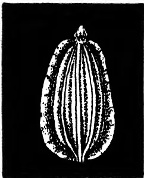
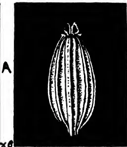
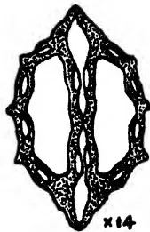
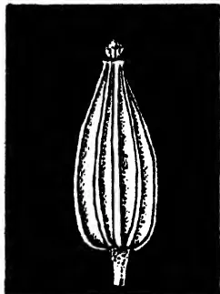
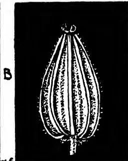
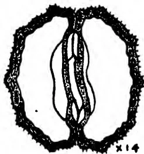
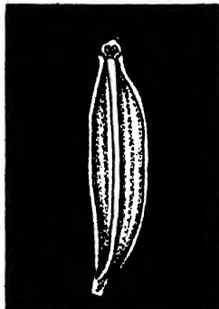
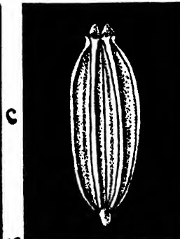
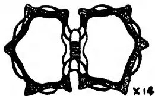
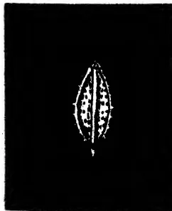
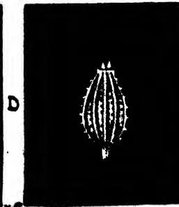
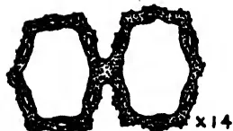
A. deliwis, del.
Plate I
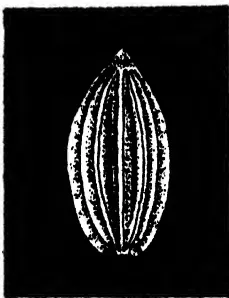
A
x6
x14
B
x6
x14
C
x6
x14
D
x6
x14
A. de Alwis, dol.
Plate II
287THE idea of seeds germinating after a lapse of many centuries rarely fails to appeal to the imagination. Probably that is why so many inaccurate and fantastic statements have been made regarding this subject, with which Mr. J. H. Turner has recently dealt in an article entitled "The Viability of Seeds" (Kew Bulletin No. 6, 1933. London: H. M. Stationery Office. 1s. net). From earliest times people have wondered how long seeds for field and herb garden would keep fresh. Theophrastus, writing about 320 B.C., mentions that "Of seeds some have more vitality than others as to keeping; among the more vigorous ones are coriander, beet, leek, cress, mustard, rocket, savory . . ." Little was known, however, about the vitality of seeds of wild plants until De Candolle, in 1832, concluded that seeds of many species remained viable in the soil for considerable periods.
"The average life of seeds, as of plants, varies greatly with the different families, genera and species, but there is no relation between the longevity of plants and the viable period of the seeds they bear. Some seeds retain their power of germination for a few days only, such as the willows and poplars, others remain viable for months or even a considerable number of years." The factors which produce a capacity for sustained vitality are still imperfectly understood, but it is known that, under suitable conditions, seeds of 'macrobiotic' families, notably Leguminosæ, Malvaceæ, Myrtaceæ, Nymphaeaceæ, etc. may remain viable from fifteen to more than a hundred years.
Only a limited number of cultivated plants produce seeds which retain their vitality for any length of time when buried in the soil, but those of weeds are capable of living for extended periods, and when deeply buried are better preserved as a result of the more equable conditions. The appearance of plants from dormant seeds when ground is freshly turned up is well known, and the prolific growth of poppies, camomile and charlock of the Somme battlefield from latent seeds brought to the surface by shell fire is mentioned. Charlock, Sinapis arvensis, appeared on earth thrown up by shells and in shell craters, when there was no trace of it on the undisturbed ground; this may be readily appreciated when we read that seeds of charlock may retain their vitality for forty years when buried in the soil.
Instances of gorse seeds, Ulex europæus, which retained their vitality for forty, twenty-five and twenty years in the soil, and seeds of acacia, fox-glove, campanula, etc., which grew after being buried for many years are described, but the most interesting account is that of Nelumbo, the Japanese lotus or sacred lotus of India. "Probably the record longevity for any seed is that recorded by Ohga who obtained approximately 100 per
* From Nature No. 3334, Vol. 132, September 23, 1933.
288cent. germination with 'seeds' of Nelumbo nucifera, Gaertn. which he found on a peat bed buried two feet deep with loess in the Pulantien river valley in Southern Manchuria, the bed being metres above the present water level of the river. Judging by the age of trees of Salix babylonica on the bed of this former lake and from the rate of lowering of the water level, it is probable that the 'seeds' are at least 120 years old and may be 400 years old or even older, judging by the rate of erosion." Ohga gave thirty of the "seeds" to the British Museum, and in 1931, at the request of Sir Arthur Hill, the British Museum authorities sent two of these "seeds", which they had germinated, to Kew. The seedlings were planted in the Victoria Regia pool and flowered during August 1932. "Apart from the smaller flowers and seed vessels, there was nothing to distinguish them from Nelumbo nucifera, Gaertn. raised from recent 'seed'."
In 1879 Beal mixed seeds with sand and buried them in bottles. The results of this experiment show that after fifty years, seeds of Brassica, Oenothera, Polygonum, Rumex and Verbascum are capable of germination. Duvel experimented under more natural conditions, mixing the seeds with soil and using earthenware pots covered with porous saucers. It was found that of 107 species, 51 grew after being buried for twenty years. Shull found that seeds of many land and water plants would germinate after immersion in mud and water for periods of four to seven years. Some seeds will even withstand the action of salt water for considerable periods.
Various experiments made over a period of more than a hundred years with seed stored in museums and herberia are described by Mr. Turner, including the 150-year old seeds of Nelumbium (Nelumbo) speciosum in the British Museum, which Robert Brown germinated in 1850, Ewart's success with 105-year old seeds of Gardia lotifolia in Australia, Becquerel's 87-year old seeds of Cassia bicapsularis in the Herbarium of the Natural History Museum of Paris, and Turner's experiments in 1932 with seeds from dated bottles in the Kew museums. Arthyllis Vulneraria and Trifolium striatum, both 90 years old, gave a germination of 4 and 14.1 per cent. respectively. "The seedlings are now growing in one of the houses at Kew." Ewart formed the opinion that "However dry the seeds may be they cannot indefinitely prolong their vitality. Even the most resistant seeds after 50 to 100 years show a pronounced decrease in the percentage germination, and the general trend of the curves is such as to show that the probable extreme duration of vitality for any known seed may be set between 150 and 250 years (Leguminosae)."
Heldreich suggests that the sudden appearance, in the Laurion area (Greece), of Silene juvenalis and a supposed new species which he named Glaucium Serpieri was due to their seeds having remained buried for more than fifteen hundred years in the soil under the heaps of old mining débris. When the débris was removed, the seeds sprang into life again. A taxonomic investigation made by Dr. Turrill has shown that Silene juvenalis is conspecific with S. subconica, a not uncommon species in the countries around the Ægean Sea. There is nothing in the taxonomy or distribution of S. subconica and Glaucium Serpieri, which has been shown by Turrill to be G. flavum var. leiocarpum, to make it improbable for them to occur naturally in the Laurion district, and in all probability both species were
289in the neighbourhood before the heaps of débris were removed, and simply spread on the vacated and denuded ground in the absence of close competition. "The evidence is all against either Glaucium or Silene at Laurion being examples of long enduring seed dormancy."
In spite of research, popular belief clings tenaciously to the fairy tales concerning the germination of seeds from ancient tombs, which newspapers and broadcasting have unwittingly circulated. Stories of seed germination after a dormancy of thousands of years have even been used as an illustration of immortality. The reply to this curious notion deserves to be quoted in full: "There is no authenticated evidence that wheat taken from undisturbed Egyptian tombs will germinate. An experiment was made at Kew some thirty years ago with grain from a model granary, found in a tomb of the 19th dynasty and brought to England by Sir E. A. Wallis Budge. Samples were tested under various conditions and the effect of coloured glass was tried in the effort to induce germination, but after three months the grain had turned to dust. Percival states 'I examined a number (of grains) found by Prof. Flinders Petrie in the Græco-Roman cemetery at Hawara (about first century B.C.) . . . . the embryo had become dark brown, its plumule greatly shrivelled and little of its structure was visible'." "In grain from a tomb of the 18th dynasty, 1400 B.C., 'all the parts were more brittle and the embryo more completely disorganised than in the grains from Hawara. It is scarcely necessary to observe that the embryos were dead. Prof. Petrie tested samples of grain of Græco-Roman age which he found at Hawara immediately after exhumation. The grains were sown on the banks of a canal in varying degrees of moisture . . . . but none germinated.' " "According to Gain, although Egyptian wheat and barley often have an exterior appearance of good preservation, the embryo has undergone a marked chemical change and is no longer viable. This change shows that the dormant life of the grain has long been extinct."
"Sir E. A. Wallis Budge has accounted for the popular belief in the germination of grain from Egyptian tombs and explains that for hundreds of years the natives of Egypt have used the halls of tombs for the wheat and barley obtained from Syria. Ancient coffins have been packed in this Syrian wheat and sent to England, and such grains will, of course, grow. During the last 30 years the native dragoman and guides have found that tourists will buy 'mummy wheat' and they keep supplies in the tombs, carefully hidden, which they dig up under the eyes of the astonished visitor and offer as 'mummy wheat' or 'mummy barley'."
It is amusing to know that the guides sometimes 'find' grains of maize in Egyptian tombs in order to supply the credulous tourist, forgetting that maize was unknown until the discovery of America, whilst some of their faked wheat samples produce plants suspiciously identical with the improved wheat varieties grown in Egypt at the present time.
"Cereals are ill adapted for a prolonged period of quiescence. Sifton has shown that Canadian wheat may retain its vitality for 18 years, and that the longevity of oats is greater than that of wheat, possibly owing to the protection of the hulls. Nineteen-year old kernels of oats gave a germination of 41 per cent. Percival records an exceptional case of wheat remaining viable for twenty-five years. White found that in Australia the
290germination of wheat is lost after 11-16 years and that of barley after 8-10. Fanciful tales are current with regard to 'miracle' or 'mummy' wheat, Triticum turgidum var. mirabile Körn and 'mummy peas', Pisum sativum var. umbellatum (Mill.) Ser."
It may be of interest to mention here that a branched form of Triticum turgidum has been grown for many years in America under the various names of 'Alaska', 'Many Spiked', 'Seven-Headed', 'Multiple-Headed', 'Egyptian', 'Miracle', 'Mummy', 'Wheat 3,000 years old', etc. These last four names are derived from an untrue story which tells that when the coffin of an Egyptian mummy was opened, some wheat was found. The seeds were planted, but only a single grain grew. The resulting plant proved a wonderful yielder and very different from any wheat now grown. It seems quite natural that if an unbranched head will yield so much; a branched head should yield much more. Actually the branched heads contain more grains than the unbranched heads of ordinary varieties, but as there are far fewer heads per acre, the yields are naturally less. A branched form of Triticum turgidum has been tried in the British Isles, but its general produce does not warrant its cultivation here, for it is inferior both in yield and quality.
"Miracle wheat is the commonest branched form of Triticum turgidum met with in South Europe and the North African coast. It is usually cultivated as a curiosity. Fasciated forms of the pea, similar to the so-called mummy pea, are figured by Tabernæmontanus in his Herbal published in 1590, and Miller in his Gardeners' Dictionary, 8th edit., 1771, described the form under the name of Pisum umbellatum, rose or crown pea. The misleading name of mummy pea is equally applied to the non-fasciated form, sometimes grown in cottage gardens. It is popularly asserted that miracle wheat and mummy peas originate from Egyptian tombs and that such seeds germinate when sown, but in every instance the statements prove to be without foundation."
291TOBACCO growers will shortly be commencing their preparations for the crop of the coming season, and in so doing they should bear in mind that many of their troubles originate in the seedbed. Without an adequate supply of strong, healthy seedlings, the grower cannot hope for success, and it will therefore pay him to give careful thought to the preparation of his seedbeds, and to take every possible precaution to safeguard them against the attack of pests and diseases. The following brief notes will help him to recognize the chief troubles which occur in the seedbed or are likely to originate there.
Nematode.—The nematode or gail-worm causing root-knot is an internal root-parasite. The immature worm or larva is hair-like in appearance, measuring less than half a millimetre in length, and is able to live in the soil for months without taking any food. When susceptible plants are grown on infested soil, the young worm enters the root through the growing tip, and the whole life-cycle is completed within the tissues of the root. The full-grown female resembles a pearly-white rounded body, and is less than half the size of an ordinary pinhead.
Affected plants usually have a sickly yellowish appearance, and show a poor and stunted growth; when heavily infested the plants may die off. If the roots are examined, typical swellings or knots caused by the nematodes, will be found on them.
Light sandy soils are more favourable for the breeding of nematodes than are turf or heavy clay soils, although the latter may in due course become heavily infected. High temperatures favour the activity of the nematodes, and this is probably one of the reasons why they prefer the warm sandy soils. A certain degree of moisture is essential for the maintenance and breeding of the parasite, which cannot live in very dry soil. These facts should be borne in mind when selecting a site for seedbeds.
Over 400 wild and cultivated plants have already been listed as host plants of the nematode which attacks tobacco. This explains why virgin soil is sometimes found to be infested with it.
Springtail or Earthflea.—This is a wingless soft-bodied insect of a dark-blue colour. It is a moisture-loving insect, and can usually be found in large numbers in damp places; tobacco seedbeds which are kept very moist therefore afford ideal breeding places for it. When it becomes troublesome, the beds should be watered less frequently, and it would furthermore be advisable to remove the hessian covers, to get rid of any excess moisture. Tobacco extract may also be used as a contact spray to keep the insects in check.
* By Dr. E. S. Moore, Plant Pathologist, and A. J. Smith, Entomologist, Division of Plant Industry, in Farming in South Africa, Vol. VIII, No. 89, August, 1933.
292Stem-borer.—The adult moth, which is greyish-brown in colour and measures about half an inch across the extended wings, deposits her eggs singly on the tobacco seedlings. The egg takes about a week to hatch and the larva or worm usually bores into the leaf soon after hatching. It may continue to tunnel along the midrib into the stem, or it may vacate the first tunnel to make a fresh entrance, which is usually under the bud at the base of the petiole. The larva spends its whole life, lasting about four weeks, within the stem. When full grown it prepares an exit-hole for the moth to emerge and then pupates. The stem of an infested seedling usually shows a distinct swelling where the larva has fed; above the swelling the growth is stunted or else dies off completely. In older plants, new shoots or suckers may develop below the swelling. Infested seedlings are, however, useless, and should be destroyed.
Leaf-miner or Splitworm.—The moth resembles the stem-borer moth, and is closely allied to it. The worm in this case, however, does not usually bore into the stem, but mines inside the leaf, destroying the soft tissues in irregular patches and leaving only the upper and lower skins. When full-grown the worm may spin its cocoon either inside or outside the plant. Although serious damage may be done to the leaf, this pest does not usually cause such heavy losses as does the stem-borer. Apart from tobacco, it also attacks potatoes, gooseberries and thornapple or stinkblaar. The insect is a prolific breeder, and it is therefore advisable to destroy all host-plants near the beds.
Tobacco Slug.—The adult beetle measures about inch in length, and is black in colour with two pale-yellow longitudinal stripes running parallel down the back. The eggs are usually deposited on the lower side of the leaves, in clusters of ten to thirty. The incubation period of the egg is about 7 days. The larva or slug has a slug-like appearance and is greenish in colour and covered with slime. It feeds on the leaves for about 14 days, and then enters the soil to construct a whitish papery cocoon in which to pupate. The pupal period varies from about a fortnight to three weeks. Both the beetle and the slug feed on the leaves and can do enormous damage if not kept under control. Besides tobacco, it also attacks several species of gooseberries and thornapple or stinkblaar.
Whitefly.—This is a very small winged insect which is easily overlooked in the seedbeds. The body is covered with a whitish powder, giving it a marked whitish appearance. Both the immature and the full-grown stages of the insect feed on tobacco by sucking the juice out of the leaves; the damage due to actual feeding is, however, of minor importance. The insect is the carrier of the virus which causes crinkly dwarf or leaf curl in tobacco, and since this disease was responsible for heavy losses in certain tobacco-growing areas during the past season, growers will be well advised to prevent the breeding and spread of whitefly on the lines suggested elsewhere in this article. In addition, it may be advisable to include in the recommended Bordeaux-lead arsenate spray, a contact insecticide like tobacco extract for the control of the insect in the seedbeds.
Damping off is a common disease which, if neglected, may play havoc in the seedbed. It attacks plants from an early age, and is caused by various soil-dwelling fungi which rot the base of the stem, causing the
293seedling to collapse and shrivel up. The threads of the fungus quickly spread to adjoining plants, so that within a few days a bare patch marks the progress of the disease. Damping off is encouraged by excessive organic manure in the top layers of the soil and it spreads with great rapidity in overcrowded beds and under conditions such as may be caused by bad drainage, prolonged wet weather or heavy irregular watering. It attacks other seedlings as well as tobacco, and since its spores survive for long periods in the soil and can be carried by the lightest breeze, the disease is not easily kept out of the seedbed. The grower can however, check it by (1) ensuring that cultural conditions are unfavourable for its development; (2) destroying it by dusting affected patches liberally with Bordeaux powder. If each disease-centre is thus treated at its first appearance, further spread can usually be checked; a few days' delay means that infection spreads through the whole bed, and treatment then becomes very difficult. In this country the damping of fungi are not known to attack plants after they have left the seedbed.
Black Root Rot is caused by a soil-dwelling fungus which attacks the roots, turning them black; in mild cases the root-tips are affected and break off when the plant is pulled up. A diseased seedling is not killed, but it makes slow growth owing to the damaged root-system. This retarding effect is particularly apparent when sterilized and unsterilized seedbeds are grown side by side in an area infected with root rot; the slow and stunted growth in the unsterilized beds is linked with blackening of the roots due to the root rot fungus.
It is essentially a cool weather disease, and this probably accounts for the fact that in South Africa it has been found only in seedbeds, that affected plants usually recover after transplanting, forming fresh healthy roots as the summer advances. In cooler climates it is a serious disease in the field as well as in the seedbed, but it is not anticipated that in this country it will ever cause trouble except in abnormally cold seasons. The slowing down of growths is, however, of sufficient consequence to justify the precaution of sterilizing the seedbed soil in infected areas.
Wildfire is only too well known to tobacco-growers throughout the Union. It attacks the leaves, forming yellowish-green spots and patches which turn dry and brown at the centre, in young seedlings the leaves may rot progressively from the tips downwards. The plants are severely checked, and may even be killed if the outbreak is severe. The name wildfire is justified by the amazing speed with which the disease can spread through the whole seedbed or field, or from one seedbed to those nearby, especially in wet and stormy weather.
It is caused by a minute bacterium which is highly infectious and which moreover possesses great powers of resistance to drying. Hence it is readily spread by wind-borne fragments of dry diseased leaf and by persons who have recently handled dry leaf-tobacco or diseased plants etc.
The danger of wildfire lies not only in the damage it does to the actual seedlings themselves, but even more in the risk of establishing the disease in the field by using infected transplants. It would certainly be preferable
294to avoid using diseased beds at all for transplanting, but this is often impracticable, and moreover experience has shown that even a healthy seedbed gives no absolute guarantee of a disease-free crop in the field, although it certainly goes a long way towards ensuring it. This can well be understood when it is remembered how easily wildfire germs may be sheltered in the soil or carried by the wind.
Wildfire thrives best under damp conditions, although its results often become more apparent during hot days after a wet spell.
Mildew or White Rust is the powdery white covering which appears on tobacco leaves when the plants are damp and shaded. It is caused by a fungus which grows largely on the outer surface of the leaf and which can be checked by free ventilation and sunlight. Dusting with sulphur is an easy remedy that can be applied in the seedbed but would not, of course, be practicable with larger plants in the field.
Tobacco Wilt is a soil-borne disease caused by a fungus (Fusarium) which invades the water-channels in the roots and therefore causes the leaves to droop and wither up. Wilting often affects only one side of the plant and is accompanied by darkening of the wood from the roots upwards. The disease lives over in the soil from year to year, and infection may take place in the seedbed, although the symptoms do not usually appear until later.
Mosaic is the well-known yellow-green mottling and blotching which is especially obvious on young leaves and is almost universal on autumn suckers. Although midsummer infection does little damage, plants attacked by mosaic early in life make poor growth and develop extensive rusty marks over the middle leaves. The disease causes steady and appreciable loss, since it lowers not only the quantity but especially the quality of the crop.
It is caused by an infectious virus which although too small to be visible under even the most powerful microscope, can multiply inside the infected plant and penetrate into every part of it. The juice of a mosaic plant is full of virus and the smallest quantity of it, if rubbed into other plants, will produce symptoms in them 2-3 weeks later. The disease is therefore easily spread by handling, and the greatest damage appears in plants thus infected at transplanting, because a single mosaic seedling may infect dozens of healthy plants handled subsequently. An infected plant can in no way be cured, and in spite of years of investigation, no real control has been discovered. Much can be done, however, by removing and destroying individual mosaic seedlings in the beds; this should be done by a worker who is not at the time handling plants for any other purpose. Further, those working with beds should avoid handling dry or air-cured tobacco in any form, since mosaic infection remains active in dry leaf for a very long while and most tobacco plants are infected by the time they are harvested, even though they may not show it. It has been found elsewhere that a marked decrease in mosaic can be secured by restricting the use of tobacco amongst those working on the beds.
295Crinkly Dwarf or Leaf Curl has only recently come into prominence, and although the symptoms do not usually appear in the seedbed, it is possible for the disease to originate there and to spread through the field later. Affected plants are more or less dwarfed, and their drooping leaves are deeply crinkled, whilst on the under-surface along the veins there appears thickenings which may grow out into green leafy frills. Like mosaic, this disease is caused by an invisible virus which, however, cannot be readily transmitted by handling; it is spread by the feeding of insects in much the same way as the malarial germ is spread by the feeding of certain mosquitoes. The insect-carrier concerned is whitefly, which takes shelter during the winter on stump-suckers in the lands. It can therefore be checked by thoroughly cleaning up all tobacco lands during the winter, to ensure that for several weeks at least there are no living tobacco plants available to shelter the insects.
Kromnek or Kat River Wilt is not a true wilt and has no connection with the Fusarium wilt described above. It is not known to occur outside the eastern Cape Province, where it causes heavy losses in both seedbed and field. It is characterized by severe stunting and by leaf-markings in various patterns, frequently of a ring-spot type or else following the veins. It is caused by an invisible virus which is spread by a tiny insect of the thrips group when it feeds upon tobacco leaves. Kromnek has recently been the subject of a special investigation, of which a report will appear in this journal at an early date.
296MAX HENRY, M.R.C.V.S., B.V.SC.,
CHIEF VETERINARY SURGEON
AND
M. S. BENJAMIN, D.I.C., (LOND.), A.A.C.I.,
FIRST ANALYST, CHEMIST'S BRANCH
[This is extracted from a Preliminary Survey of the Mineral Content of Pastures in New South Wales and is of interest in Ceylon and other countries where acid soils are prevalent. The influence of such conditions on animal husbandry is of especial interest at the present time when pasture improvement is much talked of.—Ed., T.A.]
THE mineral content of pastures in relation to nutrition and animal metabolism and, more particularly, in relation to the nutrition of highly-bred dairy cattle, has been the subject of a considerable amount of research during recent years. The work of Theiler, du Toit and other investigators in South Africa; Orr and his collaborators at the Rowett Institute, Aberdeen; Hart, Steenbock, McCollum and Eckles in America; and Brailsford-Robertson, Henry, and Aston in Australia and New Zealand has demonstrated the important part which the mineral constituents of pastures and other stock foods play in animal life and welfare.
Mineral deficiency and related nutritional studies must be regarded as of particular interest so far as this State is concerned, owing to the pre-eminent position which livestock and livestock products occupy among its economic resources. Moreover, the area of the State which is involved in this deficiency is very considerable. It would hardly be an exaggeration to say that the coastal belt of New South Wales with the exception of that portion which lies north of the Richmond River is essentially a belt of mineral deficient country. It is only in those isolated areas where basaltic outcrops occur, as at Tilba and Kiama, or where river flats have been formed by the deposition of soil brought down by floods, that evidence of such a deficiency is wanting, although the degree of deficiency is by no means uniform. Wherever osteophagia and osteomalacia exist there is warrant for regarding the country as probably mineral deficient. Henry, so far back as 1915, indicated that his observations showed that during the previous ten years there had been a marked increase in the area of the far southern coastal belt in which these symptoms were observable. Since then the condition has been noted in an ever-widening range, involving not only the coastal but the inland country.
297Recent unpublished official reports by Rose indicate the extent to which Eastern Riverina is involved. The same officer has remarked on the condition near Hillston, almost in the centre of the State. Hindmarsh has reported it from the Brunswick Valley north of the Richmond River, whilst Blumer records the presence of an intense osteomalacic condition in sheep on the Upper Clarence.
That both the area involved and the intensity of the condition should increase is no surprise to observers who have been following the trend of events for the past twenty years and who have examined the history of the State during the past century. Generally speaking, Australian soils are of a low phosphorus content. On many of these phosphorus poor soils dairy cattle have been grazed for periods up to one hundred years and nothing whatever has been returned to the soil to balance what was taken out and exported as milk, butter, cheese and meat. Naturally the poorer the soil the sooner it proved incapable of maintaining cattle in reasonable health; then the medium country showed signs of being unable to maintain the strain, and now better country still is proving inadequate. It may be argued perhaps that if these facts are so definitely noted, the work embodied in this paper was unnecessary. As a matter of fact, however, whilst there is no reason to doubt the soundness of the conclusions previously arrived at, that the basal cause of the unthriftiness and ill-health of the cattle in the areas concerned was, roughly speaking, a calcium-phosphorus—chiefly phosphorus-deficiency in the soil, chemical analysis had only been carried out in a comparatively small number of instances. No extensive series of analyses was on record. In addition the suggestion has been put forward by more than one observer that in parts of the coastal belt, notably at Bergalia, the calcium-phosphorus deficiency theory does not fully account for the clinical picture presented by the cattle. Since the last publication of any work on the subject in this State much work has been done elsewhere, and it is desirable to see whether the conclusions previously arrived at will stand the test of fuller investigation in the light of that work.
The following paper is a small contribution to the study of this important and many-sided subject, and embodies the main results obtained in a "deficiency survey" of portions of the counties of Auckland and Dampier in the Eden Pastures Protection District. The work so far carried out, though admittedly of a preliminary nature, has yielded data which it appears desirable at this stage to collate and make available.
In the area over which this deficiency survey has been attempted, which includes the parishes of Congo, Moruya, Narira, Tanja, Ooranook, Eurobodalla, Kameruka, Bega, Wolumla, Bondi and Genoa, dairying is extensively carried out and natural pasture constitutes the main feed throughout the year of most of the herds. Sterilised bonemeal and similar licks are fed to stock on many of the properties, and this fact makes it somewhat difficult to determine exactly, and map out, the distribution and intensity of osteomalacia in the parishes referred to. Nevertheless, by direct observation, the collection of chemical and other data over long periods, and from the information supplied by district inspectors and stockowners as to the condition of stock on the various properties prior to the use of phosphatic licks,
298it has been possible to indicate those regions which may be regarded as potentially affected, in addition to those in which osteomalacia now definitely occurs.
If the investigation of this question were purely one of scientific interest it would be difficult to justify the undertaking at the present time. On the contrary, however, it is a matter of really serious economic importance to this State. Rose has well described the condition of the cattle on these deficient lands, and it requires no explanation to make the fact clear that such cattle cannot be effective producers. Moreover, the influence on growth of the administration of bonemeal to cattle in deficient areas has been repeatedly demonstrated here and elsewhere. The economic loss, would be serious enough if it were confined to osteomalacia and its accompanying manifestations. To this loss, however, must be added that due to botulism. It is clear now, following the work of Seddon, Theiler and others that the mortalities which from time to time have occurred on the southern coastal belt and elsewhere were actually outbreaks of botulism brought about by the ingestion of toxin-infested, decaying animal matter, such as bones and rabbit carcasses, by cattle suffering from pica induced by a calcium-phosphorus deficient diet. That such mortality may in dry seasons reach a factor of economic consideration was fully shown by Henry in his report on mortality in cattle in the Bega district published in 1915. Other observers have since reported similar mortality.
In addition to the stock survey mentioned above, soils and natural pastures from a number of properties in the district have been collected and chemically examined. In the case of the soils it was decided to determine the percentage amounts of "citrate soluble" lime and phosphoric acid rather than the total amounts of these constituents extracted from the soil by a strong solvent such as hydrochloric acid.
A careful study shows that the percentage amount of citrate-soluble phosphoric acid is extremely low in the series of soils considered as a whole. Out of the fifty-six soils examined, five only contained more than .007 per cent. citrate-soluble phosphoric acid. Eight soils, including the above five, contained as much as .005 per cent., while the remaining forty-eight soils averaged only .0023 per cent. of this constituent. The low percentage amounts of citrate-soluble phosphoric acid found in the majority of the soils examined seems of special significance when it is remembered that approximately .01 per cent. of this constituent is generally regarded as the minimum amount required for the maintenance of fertility on cultivated soils. It is, of course, open to question whether a percentage amount as high as .01 per cent. is essential for the production of good, natural pasture under Australian conditions, but it would appear probable that initial percentages of available phosphoric acid as low as .0015 per cent. to .0024 per cent. (see the average available, , in summarised data of "affected" soils given below), that is, approximately one-seventh to one-fifth this amount, unless offset by other soil conditions—are too low for the production of that type of natural pasture which is needed by highly-bred milk cattle.
299With reference to the other constituents and the reaction, it will be noted that the percentage amount of citrate-soluble lime ranges from as low as .0406 per cent. to as high as .4435 per cent. The loss on ignition shows also considerable variation, and is seen to range from as low as 2.92 per cent. to as high as 18.48 per cent. The reaction of the soils as a whole was found to be decidedly acid, and to range from pH 6.56 to pH 4.31. The latter, an alluvial silt, was found to contain .37 per cent. of water-soluble salts in which chlorine was present in an amount equivalent to .104 per cent. The relatively low percentage of citrate-soluble lime is probably due to base exchange with the excess of sodium salts present.
From the figures obtained for citrate-soluble lime in the series as a whole, a very fair correlation exists between the percentage amounts of this constituent and the soil reaction.
The data from selected soils from farms which are reported as badly affected—that is, soils on which grazing stock unless fed bran, phosphatic licks or similar supplements in the natural pasture—develop definite signs of osteomalacia, average as follows: pH, 5.45; organic matter and combined water, 5.58 per cent.; available , .0015 per cent.; available CaO, .088 per cent.
The data obtained for an equal number of soils which are reported as from non-affected farms, that is soils on which grazing stock although fed continuously upon natural pasture have not, up to the present, exhibited signs of osteomalacia, average as follows:—pH, 6.08; organic matter and combined water, 11.70 per cent.; available , .0056 per cent.; available CaO, .229 per cent.
From the data so far collected, it would appear, that the "affected" condition of the soil is associated with, if not actually dependent upon, the presence in the soil of a relatively low percentage amount of citrate-soluble phosphoric acid coincident with a marked acid reaction and a relatively low percentage amount of organic matter.
Other factors may, of course, be involved, for the soil, it must be remembered, is a complex and delicately balanced system. Secondary chemical reactions may readily occur within it owing to acidity, and these as well as physical and biological processes may play their part in determining the degree to which a soil is affected in any particular case.
Twenty-eight pastures from an equal number of the soils previously referred to were chemically examined in connection with the work. The pastures were sampled at approximately the same period of the year, and observations were made and recorded of the chief species of plants they contained. The percentage amounts of ash, calcium, phosphorus and protein they contained were determined, and the results expressed on a water-free basis are given in the following table:
300MINERAL AND PROTEIN CONTENT OF
NATURAL PASTURES
| Lab. No. | Percentages in Dry Matter of Pastures | ||||
|---|---|---|---|---|---|
| Total Ash | Nitrogen | CaO | P2O5 | Crude Protein | |
| 6A | 8.31 | 1.703 | .484 | .358 | 10.64 |
| 7A | 9.59 | 1.39 | .581 | .186 | 8.68 |
| 12B | 7.42 | 1.488 | .816 | .283 | 9.3 |
| 14A | 8.85 | 1.092 | .573 | .173 | 6.82 |
| 23A | — | 2.383 | 1.245 | .604 | 14.89 |
| 26A | — | 2.011 | 1.416 | .896 | 12.56 |
| 27A | — | 1.563 | 1.097 | .320 | 9.76 |
| 29A | — | 1.523 | .865 | .390 | 9.51 |
| 30A | — | 1.301 | .712 | .210 | 8.13 |
| 31A | 8.97 | 1.64 | .827 | .343 | 10.25 |
| 32A | 10.69 | 1.25 | .958 | .253 | 7.81 |
| 33A | 9.05 | 1.358 | .743 | .362 | 8.48 |
| 34A | 8.42 | 1.041 | .316 | .234 | 6.50 |
| 35A | 8.04 | 1.265 | .517 | .315 | 7.90 |
| 36A | 5.84 | 1.383 | .430 | .235 | 8.64 |
| 37A | 8.20 | 1.018 | .306 | .243 | 6.36 |
| 38A | 7.22 | 1.353 | .492 | .342 | 8.45 |
| 39A | 8.06 | 1.16 | .439 | .197 | 7.25 |
| 40A | 8.93 | 1.161 | .278 | .240 | 7.25 |
| 42A | 7.36 | 1.387 | .651 | .363 | 8.66 |
| 43A | 8.18 | 1.431 | .743 | .390 | 8.94 |
| 44A | 9.24 | 1.071 | .460 | .274 | 6.69 |
| 46A | 8.51 | 1.363 | .673 | .403 | 8.51 |
| 47A | 8.51 | 1.055 | .604 | .225 | 6.59 |
| 48A | 8.81 | 1.056 | .316 | .170 | 6.60 |
| 50A | 9.78 | 1.12 | .647 | .367 | 7.00 |
| 55A | 9.16 | 2.479 | .470 | .555 | 15.49 |
A DISCUSSION OF THE PASTURE DATA
From a study of the pasture analysis twenty-one of the pastures examined were obtained from soils on farms on which the cattle exhibited clinical evidence of deficiency. The analytical data for the pastures on these twenty-one soils show the following average percentages: CaO, .575; P2O5, .272; crude protein, 8.05 per cent.
Three pastures were obtained from soils reported "non-affected" and three from "affected" soils which had received manurial treatment. The data for these six soils is shown below:
| Pasture No. | Percentages in Dry Matter of Pastures | ||
|---|---|---|---|
| CaO | P2O5 | Crude Protein | |
| Non-affected | |||
| 29 | .865 | .390 | 9.51 |
| 50 | .647 | .367 | 7.00 |
| 55 | .470 | .555 | 15.49 |
| Manured | |||
| 23 | 1.245 | .604 | 14.89 |
| 26 | 1.416 | .896 | 12.56 |
| 46 | .673 | .403 | 8.51 |
The average amount of phosphoric acid in these six pastures is '535 per cent. This percentage is relatively high, and, along with the average amount of protein (11.33 per cent.) they were found to contain, may broadly indicate a difference in general composition between these pastures and those on which the stock exhibited clinical evidence of deficiency. Nevertheless the total number of such pastures examined is far too small for any inferences to be drawn from the results.
The figures obtained for the pastures indicate a general correlation between the percentage amounts of phosphoric acid and protein. The percentage amount of phosphoric acid which was found in the pastures reported "affected" ranged from '170 per cent. in pasture 48A to '39 per cent. in pasture 43A, the average content of this constituent for the twenty-one pastures examined being '272 per cent.
The amounts of lime present showed considerable variations, and ranged from '278 per cent. in the case of No. 40A to 1.09 per cent. in pasture 27.
The ratio of lime to phosphoric acid is seen to be comparatively high in most of the pastures examined. This may be due to dry weather conditions which prevailed over a considerable area of the Eden Pastures Protection District prior to the date at which samples were collected; for there is some evidence to show that during periods of drought the intake of lime by a growing pasture falls relatively less than does that of phosphoric acid. The greater prevalence of bonechewing among grazing stock which has been observed during spells of dry weather may conceivably be due as much to this disturbance of "balance" between lime and phosphoric acid in the animals' feed as to actual low percentage amounts of phosphoric acid. In this connection, it is interesting to note that Meigs, Blatherwick and Cary as the result of metabolism experiments with dairy cattle consider that phosphorus absorption from the intestinal tract was reduced by the presence of calcium, while Turner and others have found that better assimilation of phosphorus took place when the ratio of calcium to phosphorus in a ration was 1.25:1 than when such ratio was 2.5:1. At any rate the possibility that a relative richness of calcium in an animal's feed may intensify the effects of phosphorus deficiency is one that should not be overlooked, and may indeed be quite an important factor in the problem.
The nature and amount of protein and other nutrients which a pasture contains, the presence in it of organic substances other than nutrients which are of physiological importance, as well as its mineral content, constitute broadly its value for grazing purposes. The work carried out by Woodman and others at Cambridge; Richardson and co-workers at Waite Institute, South Australia, and many other investigators, has shown the important effect which such factors as soil composition, species of plant, stage of growth, moisture supply, and mean temperature have on the mineral content
302and the feeding value of pastures. In the present survey some indication of the effect of initial percentages of available phosphoric acid in the soil on the amount of phosphoric acid and protein in the pasture grown thereon was obtained, as may be seen from the following figures :
| Laboratory Nos. of Soils and Pastures | Available in Soil | in Pastures | Protein in Pastures |
|---|---|---|---|
| Per cent. | Per cent. | Per cent. | |
| 44 | ·0022 | ·274 | 6·6 |
| 47 | ·0016 | ·225 | 6·5 |
| 48 | ·0015 | ·170 | 6·6 |
| 55 | ·0080 | ·555 | 15·4 |
Soils and pastures Nos. 44, 47 and 48 were from "affected" areas while No. 55 was from a "non-affected" area.
These figures correspond with those recorded by Henry in connection with mortalities on the South Coast. Of four pasture samples taken from holdings on which cattle exhibited depraved appetites, the percentages of were ·27, ·24, ·30, and ·30 respectively, whilst two similar samples from holdings on which depraved appetite was not observed yielded ·56 per cent. in each case.
That pasture plants of different species, even when grown in the same soil under similar conditions in respect to moisture supply and temperature have widely different contents of mineral matter and protein has been shown. Thus the introduction into pasture of those strains of plants which exhibit a high capacity for the absorption of minerals and the manufacture of protein must be considered an important means, among others, of combating a tendency to mineral deficiency in stock.
The relative richness of some pastures in mineral matter and protein is well illustrated by the following figures which were recently obtained for several subterranean clover pastures from Bombala and Crookwell. The figures for the twenty-one "affected" natural pastures in the Eden Pastures Protection District are added by way of comparison :
| Protein | |||
|---|---|---|---|
| Subterranean clover pastures ... | 2·05 | ·59 | 21·40 |
| Natural pastures from "affected" areas, Eden Pastures Protection District ... | ·575 | ·272 | 8·05 |
It is of interest to compare the average percentage amount of phosphoric acid in these twenty-one natural pastures obtained from "affected" areas in the Eden Pastures Protection District with the percentages amounts
303of this constituent which have been found to occur in pastures and hays in affected areas elsewhere :
| Hays or Pastures from "Affected" Areas in | in Dry Matter | |
|---|---|---|
| Per cent. | ||
| Eden Pastures Protection District (average of twenty-one natural pastures) ... | ... | ·272 |
| South Africa ... | ... | ·212 |
| Kenya Colony ... | ... | ·220 |
| } ·142 | ||
| Norway ... | ... | ·155 |
| } ·210 | ||
| Germany ... | ... | ·258 |
| } ·200 | ||
| Wisconsin, U. S. A. ... | ... | ·267 |
| } ·208 | ||
| Minnesota, U. S. A. ... | ... | ·245 |
It has been shown that the mineral composition and nutritive value of a pasture is considerably affected by its stage of growth and the frequency with which it is cut or grazed. The lime and phosphoric acid content of natural pastures on different holdings must, therefore to some extent be influenced by the grazing practices adopted thereon. The species of plant which predominates in a pasture has likewise an effect, apart from other factors, on its calcium and phosphorus content. The legumes tend to absorb from the soil a greater amount of mineral matter, particularly calcium, than do the grasses, and it is possible that the presence in a pasture during certain periods of the year of herbage plants, which have a high capacity for mineral absorption, may be connected with the non-occurrence of osteomalacia on certain properties.
As pointed out by Richardson "species show a differential ability to absorb insoluble phosphate from the soil, and mineral deficiency may be due not so much to actual shortage of mineral material in the soil as to a shortage of available minerals, or to a restricted feeding ability on the part of the plant."
The points mentioned, together with a due recognition of the fact that the demand for phosphorus varies considerably with different classes of stock, and that lactating cattle require more of this element than do dry cattle and steers, should doubtless be kept in mind when considering the incidence of osteomalacia on various properties, and when attempting to correlate strictly the occurrence of this disease with the phosphorus content of the pasture.
Assuming phosphorus deficiency to be, in the main, the cause of osteomalacia or the chief predisposing condition for its development, it follows that grazing methods which ensure an adequate supply of this element in the pasture and soil treatment and pasture management which provide conditions favourable for the growth and survival of pasture and herbage plants of high phosphorus absorbing power, must be regarded as among the more important means of meeting the demand for phosphorus which is made by heavy milk secretion, and so eliminating osteomalacia from the herbs.
304It is true that inorganic phosphorus supplied in the form of sterilised bonemeal has proved a useful means of supplementing that contained in the pasture, but our knowledge, nevertheless, of the precise nature of phosphorus assimilation and metabolism is too limited to assume that such inorganic phosphorus is wholly equal in value to the phosphorus supplied by young and nutritious pasture, which is known to contain organic phosphorus compounds and other compounds, like the carotinoids, which may well be regarded as playing some part in phosphorus assimilation by the animal, and which are, of course, not contained by the components of an ordinary phosphatic lick. Moreover, in the case of a truly inorganic source of phosphorus it may be found that the proportion of this element absorbed by an animal could be increased by the use of a compound other than tricalcic phosphate. It has been stated by Cooper and Wilson that phosphorus assimilation both by plants and animals proceeds best from compounds with relatively high ionisation constants.
Among the various mineral substances which modern biochemical research has shown to be of profound significance in the vital processes of both plants and animals, lime salts and phosphates occupy an important position. In nutrition and metabolism the demand for calcium and phosphorus appears almost continuous during the life of the organism.
Phosphorus is required for bone formation, but in addition is essential for the carrying out of many biochemical processes upon which the well-being of the animal ultimately depends. As a constituent of nucleic acid and the phospho-lipins, phosphorus is necessary for the normal functioning of the body cells and for those general processes of metabolism which result in growth and other changes. As disodium phosphate it plays a part in keeping the blood and other fluids almost neutral, while in the form of a hexose phosphate it is necessary for the oxidation of glucose and the liberation of muscular energy.
It may be fairly affirmed, therefore, that a deficiency of phosphorus in an animal's food may result in a general disturbance of physiological balance without actually producing a condition which is definitely a pathologic one. Extreme deficiency of the element in question may result in osteomalacia, but the latter condition is probably for quite a long time preceded by general ill-health—an "off" condition of the animal, which, although not recognisable as disease, is nevertheless a departure from normality.
Calcium, like phosphorus, is of great importance so far as skeleton formation is concerned, and like the latter element it also plays a large part in those vital processes which take place in the cells and tissue fluids of the animal body.
In milk production both elements are heavily drawn upon, and it has been shown that even on a diet definitely low in phosphorus and calcium, the proportion of these elements in the milk remains nearly constant during comparatively long periods, the phosphorus and calcium in the skeleton being drawn upon by the animal to make good the deficiency of these elements in her feed. From this point of view we may even regard bone
305formation as a reversible process and the skeleton as a natural reservoir of these elements which can be drawn upon in cases of emergency and increased by the feeding of suitable foodstuffs, good pasturage, and mineral supplements.
In the case of highly bred milch cattle the calcium and phosphorus requirements are particularly heavy, since in addition to the normal body processes, bone building and foetus formation, common to other animals, the relatively large supply of these elements contained in the milk represents an extra and often very heavy demand during lactation periods. It is of interest to consider, therefore, in this connection, the amounts of these two elements which occur in pasture and in some common dairy stock foods. Good pasture and milk according to Orr are not greatly dissimilar in general composition and the amounts, in grams, of lime and phosphoric acid which occur in quantities of the undermentioned foods equivalent in energy value to 1,000 calories are given by him as follows :
| Foodstuff* | Lime | Phosphoric Acid | ||
|---|---|---|---|---|
| Grams | Grams | |||
| Cow's milk | ... | ... | 2.38 | 3.43 |
| Good pasture | ... | ... | 3.64 | 2.75 |
| Maize | ... | ... | .03 | 1.83 |
| Turnips | ... | ... | 1.18 | 1.96 |
| Decorticated cotton-seed cake | ... | ... | 1.22 | 11.26 |
| Molasses | ... | ... | 5.35 | .56 |
*In quantities equivalent in energy value to 1,000 calories.
For the elaboration of milk, good pasture must therefore be regarded as more favourably balanced in respect to its content of lime and phosphoric acid than is the case with the majority of other stock foods.
That the amounts of these constituents vary considerably in Australian stock foods is indicated by the following table compiled by Brunnich :
| Fodder | Amount per 100 lb. Fodder | |||
|---|---|---|---|---|
| Lime | Phosphoric Acid | |||
| lb. | lb. | |||
| Lucerne hay | ... | ... | 2.00 | .56 |
| Paspalum hay | ... | ... | .50 | .38 |
| Couch grass hay | ... | ... | .80 | .63 |
| Pumpkins | ... | ... | .03 | .15 |
| Mangels | ... | ... | .03 | .09 |
| Bran | ... | ... | .09 | 3.00 |
| Maize | ... | ... | .02 | .70 |
| Linseed meal | ... | ... | .50 | 1.70 |
| Coconut cake | ... | ... | .32 | .94 |
| Sorghum silage | ... | ... | .11 | .24 |
The table shows that bran and maize are relatively poor in lime, while these foodstuffs, and others like linseed meal and coconut cake are rich in phosphoric acid, Lucerne hay, on the contrary, is particularly rich in lime, containing three and a half times more of this constituent than phosphoric acid.
In the case of the grasses mentioned the percentage amounts of lime and phosphoric acid would appear more evenly balanced.
That the question of balance between these two constituents in a pasture or foodstuff may be important has been indicated in an earlier part of this paper, and although the question of securing adequate amounts of these mineral substances in the animal's diet is the chief end to be kept in view, the maintenance of a suitable ratio of lime to phosphoric would appear also desirable.
In connection with the data obtained for the natural pastures from the Eden Pastures Protection District it is of interest to compare the percentage amounts of lime and phosphoric acid they were found to contain with the percentage amounts of these constituents which have been found in natural pastures and hays grown on "non-affected" and "affected" areas in other parts of the world.
| Percentage Amounts | ||
|---|---|---|
| Lime | Phosphoric Acid | |
| per cent. | per cent. | |
| Non-affected Areas— | ||
| Great Britain; cultivated pastures (48) ... | 1.10 | .76 |
| Kenya Colony; natural pasture (non-affected) | .90 | .82 |
| New South Wales; natural pasture top-dressed or non-affected areas ... | .88 | .53 |
| Norwegian hay (non-affected area) ... | .88 | .44 |
| Germany (Wolff); normal hay (non-affected) ... | 1.06 | .58 |
| Affected Areas— | ||
| Kenya Colony; natural pasture (affected area) | .48 | .21 |
| New South Wales; natural pastures (21)— Eden P. P. District (affected area) .... |
.57 | .27 |
| Norwegian hay (affected area) ... | .46 | .15 |
| Germany (Klimmer and Schmidt); hay causing brittle bone ... |
.50 | .27 |
It is considered that the results obtained from this investigation justify the conclusion previously arrived at—that the deficiency in phosphorus of the soils of the South Coast is the ultimate cause of osteomalacia amongst cattle in that area, and therefore the recommendations made with a view to counteracting this condition can be repeated with confidence, whilst more recent results from the top-dressing of pastures with superphosphates enables them to be extended.
It is therefore considered that in the affected areas the economic return from the country can be definitely increased by :
THE importance of small amounts of various ingredients in the rations of man and animal has been recognized only in the last two decades. Before that time dietary standards were based almost entirely upon digestible protein and carbohydrates, even lime and phosphoric acid, though recognized as essential, not being given much attention. Since 1910 it has been recognized that deficiency in growth or production as well as various disorders from which man and animals suffer may be due to deficiencies of various substances. Very small amounts of some of these substances are required, but their presence in adequate amounts is a necessity for health or normal growth and development. These substances include iron, copper, iodine, manganese, and vitamins. Deficiencies of one or more of these substances in the diet may cause diseases such as anaemia, pellagra, scurvy, eczema, rickets, or goiter, as well as susceptibility to other diseases, retardation in growth of young animals, and deficient production of milk or eggs.
| Vitamin | Descriptive name | Functions in body | Excellent sources |
|---|---|---|---|
| A | Anti-opthalmic Anti-infective |
Promotes growth, long life, health, vigor, appetite, and digestion. Prevents infections, and essential to reproduction. | Cod liver oil, spinach, mustard greens, turnip greens, tomatoes, butter, milk, cheese, eggs, liver, carrots. |
| B | Anti-neuritic Anti-beri-beri |
Promotes appetite, digestion and growth. Protects from certain nerve diseases, essential to reproduction. |
Whole wheat, corn, rice, oats, peas, eggs, yeast, carrots, spinach. |
| C | Anti-Scorbutic | Required for proper metabolism of bones, formation and maintenance of teeth, and protects from scurvy. | C a b b a g e, lettuce, onion, s p i n a c h, tomatoes, lemons, oranges, celery, pine-apple, strawberries. |
| D | Anti-rachitic | Required for formation and maintenance of bones and teeth and for protection of young a g a i n s t rickets. | Sunlight, cod liver oil, other fish oils, eggs, salmon, milk, and viosterol. |
| E | Anti-sterility | Essential for reproduction. | Whole wheat, lettuce, vegetable oils, alfalfa, beans, corn, oats, rice, meat. |
| G | Anti-pellagric | Required for growth and for functions which p r e v e n t pellagra. | Liver, kidney, l e a n meat, spinach, potatoes, turnip greens, eggs, milk, salmon, tomatoes. |
* By G. S. Fraps and Ray Treichler in Bulletin No. 477 of the Texas Agricultural
309Vitamins are organic substances which are present in very small amounts in foods and are known to be essential to the health of animals.
The exact number of the vitamins and their nature has not yet been ascertained. Vitamins are studied by means of feeding experiments on animals and the complete or partial lack of them in the food is recognized by the failure of the animal body to grow or perform some of its functions. An outline of the classification, functions, and occurrence of vitamins is given in our table. Following are brief descriptions of the vitamins known at present.
Vitamin A.—This is also called the fat soluble A, anti-opthalmic, or anti-infective vitamin. Its presence in sufficient amounts promotes appetite, digestion, growth and long life, maintains health and vigour, prevents infections, especially of the eyes and lungs, and is essential for normal reproduction, lactation, and rearing of the young. When deficient or absent from the diet the animal may, if young, have a retardation of growth and development. Animals receiving insufficient vitamin A may suffer a loss of appetite and are susceptible to infections of the glands at the base of the tongue, of the sinuses in the ears, and of the lymph glands, lungs, nose, and skin. The animals may also suffer from night blindness and infections of the eyes, and infections of the kidney, bladder, and alimentary canals. Excellent sources of vitamin A are green feeds such as spinach, mustard, or grass. Carrots, tomatoes, and cod liver oil are also good sources of vitamin A. Vitamin A is closely related to carotene, a yellow colouring matter found in carrots, yellow corn, green vegetables, and other foods. Carotene is converted into vitamin A in the body. Vitamin A survives ordinary processes of cooking but is partly destroyed by long boiling, as in making certain stews.
Vitamin B.—This is also called the anti-neuritic or anti-beri-beri vitamin. Its presence in sufficient amounts promotes appetite, digestion, and growth. It protects the body from such nervous diseases as beri-beri and polyneuritis. It is required by the mother for normal reproduction and lactation. When insufficient amounts are in the food eaten, there occurs a decrease of appetite and impairment of digestive processes, loss of weight and vigor, and impaired growth of the young. Beri-beri or polyneuritis may also occur. Vitamin B is found in whole cereals such as wheat, corn, rice, oats, barley and in peas, wheat bran, egg yolk, yeast, rice polish, and rice bran. Smaller amounts are found in other foods. Vitamin B is partly destroyed by long-continued cooking, especially if the water is alkaline, but only a part is destroyed by ordinary processes of cooking.
Vitamin C.—This is also termed the anti-scorbutic vitamin. When present in sufficient amounts it protects the body from scurvy, and promotes the proper metabolism of the bones and the normal formation and maintenance of the teeth. When present in insufficient amounts in the diet, the disease known as scurvy will occur, which is manifested by spongy and bleeding gums, pains and swelling in the joints and limbs, or haemorrhages of the mucus membranes or skin. The bones may also lose so much lime and phosphoric acid as to become fragile. The teeth may decay or become loose or even be shed. There may be a loss of weight or
310appetite and sallow complexion. Vitamin C is found in oranges, lemons, and in vegetables, such as spinach, tomatoes, lettuce, onions, and cabbage. Smaller amounts are found in a number of other vegetables. Vitamin C is partly destroyed by cooking, especially if it is long continued. Ordinary cooking is not highly destructive.
Vitamin D.—This is known as the anti-rachitic vitamin. When present in sufficient amounts it regulates the absorption and metabolism of the lime and phosphoric acid in the bones and teeth. It is, therefore, required for the proper formation and maintenance of bones. When an insufficient amount is in the diet, a bone disease known as rickets may occur, especially with children and young animals. This is manifested in soft and fragile bones, enlargements of the wrist, elbow and junctions of the ribs softening of the bones of the head, or bow-legs or knock-knees. A general muscular weakness and instability of the nervous system may occur together with a low content of lime and phosphoric acid in the blood and bones, and defects in the teeth such as decay or soft teeth. Vitamin D is most abundant in cod liver oil and some other fish oils. It is also supplied by sunlight or ultraviolet light or by food irradiated by ultraviolet light. Vitamin D prepared by irradiating ergosterol is effective for rats but not for chickens. It occurs in eggs and salmon in good amounts, while small amounts are found in butter and milk. A few minutes of bright Texas sunshine is sufficient to supply a rat with all the vitamin D it needs for 24 hours, and is probably sufficient for other animals also. Vitamin D is quite stable and not destroyed by ordinary processes of cooking.
Vitamin E.—This is known as the anti-sterility vitamin. Although other vitamins are also required for reproduction, it is necessary for the normal reproductive functions of both males and females. If a sufficient amount is not present in the food, the animals become sterile. It is found in good quantities in lettuce, wheat, wheat germ, and in a number of ordinary feeds, such as alfalfa, barley, beans, corn, peas, rice, and oats. Vitamin E is not destroyed by ordinary processes of cooking. It is remarkably stable.
Vitamin G.—This is also known as the anti-pellagric vitamin. When present in sufficient amounts it aids in preventing pellagra, although other factors are probably concerned in the prevention or cure of pellagra. When an insufficient amount is present in the food the animal may suffer from pellagra, which manifests itself in disturbances of the digestive tract, darkening and thickening of the spleen, soreness and inflammation of the tongue and mouth, and nervousness and mental disorders. It is found in good quantities in yeast, liver, kidneys, spleen, and lean meat, as well as beet leaves, potatoes, spinach, turnip greens, eggs, milk, and salmon. Vitamin G is not destroyed by ordinary processes of cooking, but is relatively stable to heat.
Other Vitamins.—It appears that vitamin D in cod liver oil is different from that in irradiated ergosterol, since the former will prevent bone-weakness in chickens but the latter will not. Evans applies the term vitamin F to unsaturated fatty acids which appear to act as vitamins. It also seems possible that the vitamin B complex may be split into three other vitamins in addition to vitamin B and vitamin G already accepted.
311There is no chemical method for estimating the vitamin A content of the various foods and feeding stuffs; so the estimation must be made by a biological method. The method consists in measuring the growth of rats fed upon a ration complete except for vitamin A, and to which a weighed amount of the material to be tested is added. The estimation measures the vitamin A activity, since the results may be due to carotene or other precursor of vitamin A, as well as to the vitamin A itself. For the sake of brevity, vitamin A is frequently used in place of vitamin A activity in this Bulletin.
The animals used must have previously been fed upon a ration free of vitamin A until the vitamin A stored up in the body of the animal has been almost removed. This is manifested by the animals beginning to decline in weight.
The determinations made by the method given above are expressed as rat units, a rat unit being a gain of 24 grams in eight weeks. An international unit has recently been adopted which is .001 milligrams of a certain preparation of carotene. Direct comparisons of the international unit and of the rat unit have not been published, but according to a private communication it has been found in one laboratory that the rat unit and international unit are practically the same. It is desirable to standardize the rat units of the various laboratories in terms of international units. They may not be exactly the same in different laboratories on account of differences in procedure.
Quantitative estimations of the vitamin A activity in foods and feeds reported in the literature are comparatively small in number. The most extensive report is that of Rice and Munsell, who list 59 foods. Fraps reported on a number of samples of corn. Quantitative measurements have been made by other workers, or their results reported in such a way that an estimate of the quantity could be made.
The vitamin A activity in terms of Sherman-Munsell rat units of a number of foods and animal feeds, as found in the work presented in this Bulletin, and elsewhere in the literature, or calculated from data in the literature is given in the table below. There is considerable variation in the vitamin A content of a particular food or feed, dependent on conditions of growth, storage, or other factors. These are discussed below.
The units of vitamin A are rat units, estimated by the method described, and based upon the edible portion of the feed. Since the vitamin A was not separately estimated, and since vitamin A can be made from carotene in the animal body, the units here used really represent the vitamin A activity of the food, and not the vitamin A alone. The method for estimating vitamin A is not highly accurate. Ordinarily an error of ten per cent. may be expected. For this reason the results in the table are rounded off. In some cases, where the number of units was given by the worker in terms of ounces or pounds, they were calculated by us to units
312per gram, and then rounded off to 0.1 unit or whole units. If the units per ounce or pound are then calculated from the units per gram, the results will not check exactly with those given in the table, but they will be within the limit of error.
| Units per gram |
Units per ounce |
Units per pound |
|
|---|---|---|---|
| Alfalfa, machine-dried ... .. | 100 | 2,835 | 45,360 |
| Alfalfa, sun-cured ... .. | 20 | 567 | 9,072 |
| Alfalfa, field-cured and exposed to rain | 12 | 340 | 5,440 |
| Alfalfa, field-cured and exposed to rain | 14 | 396 | 6,336 |
| Alfalfa leafy hay ... .. | 3.3 | 93 | 1,488 |
| Alfalfa stemmy hay ... .. | 3 | 85 | 1,360 |
| Alfalfa meal ... .. | 12.5 | 354 | 5,664 |
| Alfalfa meal ... .. | 15 | 425 | 6,800 |
| Alfalfa leaf meal ... .. | 20 | 567 | 9,072 |
| Alfalfa leaf meal ... .. | 10 | 283 | 4,528 |
| Alfalfa leaf meal ... .. | 7 | 198 | 3,168 |
| Alfalfa leaf meal ... .. | 20 | 567 | 9,072 |
| Alfalfa leaf meal, machine-dried ... .. | 66.6 | 1,888 | 30,208 |
| Alfalfa leaf meal, machine-dried ... .. | 50 | 1,417 | 22,672 |
| Alfalfa stem meal ... .. | 2.4 | 68 | 1,088 |
| Apples ... .. | 5 | 15 | 240 |
| Apples ... .. | 5 | 15 | 240 |
| Apricots, fresh ... .. | 50 | 1,417 | 22,672 |
| Apricots, fresh frozen ... .. | 7 | 198 | 3,168 |
| Apricots, sun-dried, sulphured, ... .. | 12 | 340 | 5,440 |
| Apricots sun-dried, unsulphured ... .. | 8 | 220 | 3,620 |
| Artichokes ... .. | 3 | 85 | 1,360 |
| Asparagus ... .. | 1.2 | 35 | 560 |
| Bacon ... .. | 2 | 5 | 80 |
| Banana ... .. | 2 | 56 | 896 |
| Banana ... .. | 2 | 56 | 896 |
| Banana ... .. | 3.5 | 100 | 1,600 |
| Banana ... .. | 2 | 56 | 896 |
| Barley, less than ... .. | 1 | 28 | 448 |
| Beans ... .. | 3.6 | 102 | 1,632 |
| Beans, canned navy ... .. | 0.5 | 15 | 240 |
| Beans, dried lima ... .. | 0 | 0 | 0 |
| Beans, string ... .. | 5.2 | 150 | 2,400 |
| Beets ... .. | 0.2 | 5 | 80 |
| Bermuda grass, dried in vacuum ... .. | 120 | 3,402 | 54,432 |
| Bread, commercial, less than ... .. | 1 | 28 | 448 |
| Bread, commercial, mixed ... .. | 0.1 | 3 | 50 |
| Broccoli ... .. | 3.3 | 95 | 1,520 |
| Brussels sprouts ... .. | 3.3 | 95 | 1,520 |
| Bur clover, dried in vacuum ... .. | 200 | 5,670 | 90,720 |
| Butter ... .. | 30 | 849 | 13,584 |
| Butter ... .. | 50 | 1,415 | 22,640 |
| Butter ... .. | 50 | 1,515 | 22,640 |
| Butter ... .. | 49 | 1,400 | 22,400 |
| Butter fat, creamery ... .. | 17 | 481 | 7,696 |
APPROXIMATE NUMBER OF UNITS OF VITAMIN A
IN FOODS AND FEEDS—(Contd.)
| Units per gram |
Units per ounce |
Units per pound |
|
|---|---|---|---|
| Butter fat, cows on pasture ... | 50 | 1,417 | 22,400 |
| Butter fat, creamery, average ... | 28 | 792 | 12,672 |
| Butter fat, cows on pasture ... | 40 | 1,132 | 18,112 |
| Butter fat, cow on silage (no pasture) ... | 3.6 | 102 | 1,632 |
| Butter fat, feed low in vitamin A ... | 2.5 | 71 | 1,136 |
| Castor Oil ... | 0 | 0 | 0 |
| Cabbage, new, average of green and white ... | 0.4 | 10 | 160 |
| Cabbage, Chinese (estimated) ... | 50 | 1,415 | — |
| Cantaloupe ... | 3.3 | 93 | 1,488 |
| Cantaloupe ... | 3.2 | 90 | 1,440 |
| Carrot ... | 25 | 708 | 11,328 |
| Carrot ... | 33 | 940 | 15,040 |
| Carrot ... | 25 | 708 | 11,328 |
| Carrot ... | 43 | 1,219 | 19,504 |
| Carrot, yellow raw ... | 67 | 1,888 | 30,208 |
| Carrot, yellow dried ... | 25 | 708 | 11,328 |
| Carrot, yellow, dried in vacuum ... | 77 | 2,182 | 35,376 |
| Carrot juice, sterilized ... | 0 | 0 | 0 |
| Carrot tops, dried (estimated) ... | 16 | 453 | 7,248 |
| Cauliflower ... | 0.5 | 15 | 240 |
| Celery, bleached ... | 0 | 0 | 0 |
| Cereals ... | 0 | 0 | 0 |
| Cheese, American ... | 24.5 | 700 | 11,200 |
| Cheese, cottage ... | 1.1 | 30 | 480 |
| Cheese, cream ... | 49 | 1,400 | 22,400 |
| Cheese, Farnesan ... | 24.5 | 700 | 11,200 |
| Cherries, frozen (Montmorency, Royal Ann, Late Duke) ... |
0.3 | 8 | 128 |
| Cherries, frozen, (Bing, Deacon, Lambert) ... | 0.4 | 10 | 160 |
| Clover, bur, dried in vacuum ... | 200 | 5,670 | 90,720 |
| Cod liver oil ... | 250 | 7,075 | 113,200 |
| Cod liver oil ... | 500 | 14,150 | 226,400 |
| Cod liver oil ... | 1,000 | 28,300 | 452,800 |
| Cod liver oil ... | 1,250 | 35,375 | 556,000 |
| Collards, green, raw or boiled 45 min. ... | 50 | 1,417 | 22,672 |
| Corn, Bloody Butcher ... | 2.5 | 70 | 1,120 |
| Corn, Bloody Butcher ... | 5 | 141 | 2,256 |
| Corn, Fentress Strawberry ... | 1.1 | 31 | 496 |
| Corn, Fentress Strawberry ... | 5 | 141 | 2,256 |
| Corn, Ferguson yellow dent ... | 5 | 141 | 2,256 |
| Corn, Ferguson yellow dent ... | 6.6 | 187 | 2,992 |
| Corn, red ... | 0.9 | 25 | 400 |
| Corn, red ... | 5 | 141 | 2,256 |
| Corn, white ... | 0 | 0 | 0 |
| Corn, white ... | .5 | 14 | 224 |
| Corn, yellow ... | 2.5 | 70 | 1,120 |
| Corn, yellow ... | 8 | 226 | 3,616 |
| Corn, Ferguson yellow dent, Beeville, Texas ... | 6.6 | 187 | 2,992 |
| Corn, Ferguson yellow dent, Troup, Texas ... | 6.2 | 175 | 2,800 |
| Corn, Ferguson yellow dent, Angleton, Texas ... | 6.6 | 187 | 2,992 |
APPROXIMATE NUMBER OF UNITS OF VITAMIN A
IN FOODS AND FEEDS—(Contd.)
| Units per gram |
Units per ounce |
Units per pound |
|
|---|---|---|---|
| Corn, Ferguson, yellow dent, Beaumont, Texas | 5.5 | 155 | 2,480 |
| Corn, Ferguson yellow dent, Nacogdoches, Texas |
5 | 141 | 2,256 |
| Corn, Ferguson yellow dent, College Station, Texas |
5 | 141 | 2,256 |
| Corn, Ferguson yellow dent, Nacogdoches, Texas |
5 | 141 | 2,256 |
| Corn, yellow | 6.6 | 187 | 2,992 |
| Corn, yellow | 6.6 | 187 | 2,992 |
| Corn, yellow | 5 | 141 | 2,256 |
| Corn germ meal | 0 | 0 | 0 |
| Corn meal, white (estimated) | 0 | 0 | 0 |
| Corn meal, golden | 3 | 85 | 1,360 |
| Corn meal, yellow granulated | 3 | 85 | 1,360 |
| Corn meal, feed | 3.3 | 93 | 1,488 |
| Corn meal, feed | 3.3 | 93 | 1,488 |
| Corn meal, yellow | 5 | 141 | 2,256 |
| Corn meal, yellow | 5 | 141 | 2,256 |
| Cottonseed meal, less than | 1.0 | 28 | 448 |
| Cottonseed meal, (estimated) | 0.1 | 2.8 | 45 |
| Cottonseed meal and cake, less than | 1 | 28 | 448 |
| Cottonseed oil, less than | 1 | 28 | 448 |
| Cucumber | .4 | 10 | 160 |
| Dates | 3 | 85 | 1,360 |
| Dates, Deglet noor | .8 | 22 | 352 |
| Dates, Maktum variety | 1 | 28 | 448 |
| Dates, Thoory | 1.3 | 36 | 576 |
| Eggs, June laid, Rhode Island Red | 28 | 792 | 12,672 |
| Eggs, June laid, White Leghorn | 28 | 792 | 12,672 |
| Eggs (edible part) | 19 | 550 | 8,800 |
| Egg yolk | 50 | — | — |
| Egg yolk, beginning of laying season | 30 | 850 | 13,600 |
| Egg yolk, end of laying season | 6 | 170 | 2,720 |
| Egg plant | .7 | 20 | 320 |
| Escarole | 210 | 6,000 | 96,000 |
| Figs, cooking | .4 | 10 | 160 |
| Fish, fat | .4 | 10 | 160 |
| Fish, lean | 0 | 0 | 0 |
| Fish "opihī", Hawaiian | 500 | 14,175 | 226,800 |
| Flour, wheat (estimated) | 0 | 0 | 0 |
| Grapes, Concord, Tokay, Malaga | .7 | 20 | 320 |
| Grapes, Sultanina and Malaga | .2 | 5 | 80 |
| Grapefruit peel and pulp, dried, less than | 5 | — | — |
| Grapefruit juice (estimated) | 0.1 | 2.8 | 45 |
| Grape, juice, commercial | 0 | 0 | 0 |
| Halibut, liver oil | 37,500 | 1,068,000 | — |
| Halibut, liver oil | 62,300 | 1,779,000 | — |
| Hegari, stover | 3.3 | 93 | 1,488 |
APPROXIMATE NUMBER OF UNITS OF VITAMIN A
IN FOODS AND FEEDS—(Contd.)
| Units per gram |
Units per ounce |
Units per pound |
|
|---|---|---|---|
| Hegari, grain ... .. | 0.3 | 8.5 | 136 |
| Hominy, yellow ... .. | 8.3 | 235 | 3,760 |
| Hominy feed, yellow ... .. | 1.5 | 42 | 672 |
| Hominy, white (estimated) ... .. | 0 | 0 | 0 |
| Kafir, grain, black ... .. | 0.3 | 9 | 144 |
| Kafir, grain, red ... .. | 0.4 | 11 | 176 |
| Kafir, grain, white ... .. | 0.5 | 14 | 224 |
| Kidney ... .. | 8 | 230 | 3,680 |
| Lard (estimated) ... .. | 0 | 0 | 0 |
| Lemons ... .. | 0 | 0 | 0 |
| Lettuce ... .. | 1.5 | 42 | 672 |
| Lettuce, head ... .. | 1.8 | 50 | 800 |
| Lettuce, head ... .. | 1.7 | 45 | 720 |
| Lettuce, head, inside leaves ... .. | 3.3 | 93 | 1,488 |
| Lettuce, Iceberg, from centre of head ... .. | 1.7 | 45 | 720 |
| Lettuce, Iceberg, outside green leaves ... .. | 67 | 1,888 | 30,208 |
| Lettuce, Iceberg, outside green leaves ... .. | 50 | 1,417 | 22,672 |
| Lettuce, Romaine ... .. | 5.3 | 150 | 2,400 |
| Liver ... .. | 98 | 2,800 | 44,800 |
| Liver fat ... .. | 5,000 | 141,500 | 2,264,000 |
| Loco weed, air dried ... .. | 16 | 453 | 7,248 |
| Meal, corn, white (estimated) ... .. | 0 | 0 | 0 |
| Meat, average, muscle ... .. | 0.2 | 5 | 80 |
| Meat, pork (estimated) ... .. | 0 | 0 | 0 |
| Milk, condensed ... .. | 4.9 | 140 | 2,240 |
| Milk, dried, whole ... .. | 17.5 | 500 | 8,000 |
| Milk, dried, whole ... .. | 6.6 | 187 | 2,992 |
| Milk, dried, whole ... .. | 10 | 283 | 4,528 |
| Milk, evaporated ... .. | 4.9 | 140 | 2,240 |
| Milk, whole ... .. | 2.3 | 65 | 1,040 |
| Milk, whole ... .. | 1.3 | 36 | 576 |
| Milk, whole ... .. | 2 | 56 | 896 |
| Milo grain, yellow ... .. | 0.5 | 14 | 224 |
| Milo, white, chop ... .. | 0 | 0 | 0 |
| Milo grain, dwarf yellow ... .. | 0.5 | 14 | 224 |
| Milo grain, yellow ... .. | 0.4 | 11 | 176 |
| Milo, dwarf yellow, less than ... .. | 0.5 | 14 | 224 |
| Milo, dwarf yellow, less than ... .. | 0.3 | 8 | 128 |
| Milo, dwarf yellow, less than ... .. | 0.5 | 14 | 224 |
| Milo, yellow, less than ... .. | 0.5 | 14 | 224 |
| Milo, yellow, less than ... .. | 0.5 | 14 | 224 |
| Mushrooms ... .. | 0 | 0 | 0 |
| Oats, less than ... .. | 0.2 | 5 | 80 |
| Oat meal (estimated) ... .. | 0 | 0 | 0 |
| Oat oil, less than ... .. | 0.6 | 17 | 272 |
| Oil, cottonseed ... .. | 0 | 0 | 0 |
| Oil, raisin ... .. | 0 | 0 | 0 |
| Oil, sesame ... .. | 0 | 0 | 0 |
| Okra, ends, dried, less than ... .. | 2 | 56 | 896 |
APPROXIMATE NUMBER OF UNITS OF VITAMIN A
IN FOODS AND FEEDS—(Contd.)
| Units per gram |
Units per ounce |
Units per pound |
|
|---|---|---|---|
| Okra, ends, dried, less than ... | 2 | 56 | 896 |
| Okra, pods and seed, dried ... | 3 | 75 | 1,200 |
| Onions ... | 0 | 0 | 0 |
| Orange juice (estimated) ... | 0.5 | 141 | 2,256 |
| Oranges ... | 0.7 | 20 | 320 |
| Orange peel and pulp, dried ... | 3 | 85 | 1,360 |
| Orange peel and pulp, dried ... | 4 | 113 | 1,808 |
| Orange peel and pulp, dried ... | 6.6 | 186 | 2,976 |
| Orange peel and pulp, dried ... | 5 | 141 | 2,256 |
| Oysters, raw frozen ... | 0.5 | 14 | 224 |
| Oysters, raw frozen ... | 1 | 28 | 448 |
| Peaches ... | 0 | 0 | 0 |
| Peaches, Elberta, fresh ... | 20 | 566 | 9,072 |
| Peaches, Muir, fresh ... | 12 | 340 | 5,443 |
| Peaches, canned ... | 2 | 56 | 896 |
| Peaches, frozen Elberta ... | 0.5 | 14 | 224 |
| Peaches, frozen Hiley, less than ... | 0.5 | 14 | 224 |
| Peanut meal, less than ... | 0.5 | 14 | 224 |
| Peanut meal, less than ... | 0.5 | 14 | 224 |
| Pears, Bartlett, less than ... | 0.1 | 4 | 64 |
| Peas, cooked green ... | 2 | 56 | 896 |
| Peas, dried green ... | 3 | 85 | 1,360 |
| Peas, dried green ... | 12.5 | 354 | 5,664 |
| Peas, raw and canned ... | 6.1 | 175 | 2,800 |
| Peas, raw and cooked ... | 2 | 56 | 896 |
| Peas, raw or cooked, 10 min, ... | 67 | 1,888 | 30,208 |
| Peas, canned ... | 67 | 1,888 | 30,208 |
| Peas, blackeyed, dried ... | 2 | 56 | 896 |
| Pecan meats ... | 3.6 | 102 | 1,632 |
| Pecan meats, Burkett variety ... | 1.6 | 45 | 720 |
| Pecan meats, Texas Prolific variety ... | 2 | 56 | 896 |
| Pecan meats, stored 14 months less than ... | 1 | 28 | 448 |
| Peppers ... | 6 | 175 | 2,800 |
| Peppers, sweet green, dried ... | 40 | 1,134 | 18,144 |
| Peppers, sweet green, dried ... | 20 | 567 | 9,072 |
| Pineapple, canned, including syrup ... | 0.3 | 9 | 144 |
| Potatoes, sweet ... | 3 | 85 | 1,360 |
| Potatoes, white, or Irish ... | 0.4 | 10 | 160 |
| Potatoes, sweet, Nancy Hall ... | 30 | 849 | 13,584 |
| Potatoes, sweet, Porto Rico ... | 50 | 1,417 | 22,672 |
| Potatoes, yellow, sweet, raw ... | 20 | 567 | 9,072 |
| Potatoes, yellow, sweet, dried in air ... | 2 | 56 | 896 |
| Potatoes, yellow, sweet, dried in air ... | 2.5 | 70 | 1,120 |
| Potatoes, yellow, sweet, dried in vacuum ... | 50 | 1,417 | 22,672 |
| Potatoes, yellow, sweet, dried ... | 2 | 56 | 896 |
| Potatoes, yellow, sweet, dried ... | 2 | 56 | 896 |
| Prunes ... | 10.5 | 300 | 4,800 |
| Prunes, French, fresh ... | 20 | 567 | 9,072 |
| Pumpkin, dehydrated ... | 50 | 1,417 | 22,672 |
APPROXIMATE NUMBER OF UNITS OF VITAMIN A
IN FOODS AND FEEDS—(Contd.)
| Units per gram |
Units per ounce |
Units per pound |
|
|---|---|---|---|
| Raisins ... .. | 0 | 0 | 0 |
| Raisins, Thompson seedless and Malaga | 0 | 0 | 0 |
| Sorghum silage ... .. | 5.5 | 156 | 2,496 |
| Sorghum silage ... .. | 10 | 283 | 4,528 |
| Sourkraut ... .. | 0.2 | 5 | 80 |
| Spinach, canned, juice poured off ... | 100 | 2,835 | 45,360 |
| Spinach, canned, juice poured off ... | 140 | 3,920 | 62,720 |
| Spinach, dried in vacuum, canned ... | 333 | 9,324 | 149,184 |
| Spinach, New Zealand ... .. | 11 | 314 | 5,024 |
| Spinach, ordinary garden ... .. | 14 | 402 | 6,432 |
| Spinach, raw ... .. | 63 | 1,771 | 28,336 |
| Spinach, raw and canned ... .. | 49 | 1,400 | 22,400 |
| Spinach, raw, Virginia Savoy, Princess Juliana and Viroflay ... .. |
83 | 2,361 | 37,776 |
| Strawberries ... .. | 0.2 | 5 | 80 |
| Strawberries ... .. | 0.16 | 45 | 720 |
| Sudan grass, dried in vacuum (estimated) | 150 | 4,245 | 67,920 |
| Tomatoes, green, raw or canned ... | 7 | 187 | 2,992 |
| Tomatoes, raw and canned ... .. | 6 | 170 | 2,720 |
| Tomatoes, ripe, raw or canned ... | 13 | 374 | 5,984 |
| Tomato soup, canned ... .. | 6 | 170 | 2,720 |
| Turnips ... .. | 0.2 | 5 | 80 |
| Turnip greens, raw or boiled ... | 50 | 1,417 | 22,672 |
| Turnip greens, dried ... .. | 33 | 935 | 14,960 |
| Watermelon pulp ... .. | 1 | 28 | 448 |
| Wheat, whole, less than ... .. | 0.3 | 7.8 | 125 |
| Wheat (estimated) ... .. | 0.2 | 5.6 | 89 |
| Wheat bran, less than ... .. | 1 | 28 | 448 |
| Wheat gray shorts ... .. | 0.3 | 9 | 144 |
| Wheat gray shorts ... .. | 0.05 | 1.4 | 22 |
SOME FACTORS WHICH AFFECT THE VITAMIN A
ACTIVITY OF FOODS
It is known that a number of factors affect the vitamin activity of foods or feeds. Definite measurements are, however, limited in number. There seems to be a definite relation between greenness and vitamin A content. The green outer leaves of cabbage and lettuce contain much more vitamin A than the white inside leaves. Chlorotic spinach contains less vitamin A than normal green spinach. There are indications that the vitamin A content of carrots and of alfalfa is at its maximum during the early stages of growth.
EFFECT OF TIME OF STORING OF FOODS
We have shown that the vitamin A content of dried foods decreases during storage. Dried whole milk lost 60 per cent. in 9 months, alfalfa leaf meal 50 per cent. in 5 months, yellow corn 30 per cent. in 5 months, and dried green pepper 80 per cent. in 19 months. It follows that the quantity of vitamin A present in the dried food at a given time will depend upon
318how old the particular material is at the time of the determination. Thus freshly prepared or freshly harvested foods or feeds will contain more vitamin A than those which have been in storage for several months. This fact may account for some of the differences in vitamin A found between different lots of the same kind of material. It is therefore important to record the period of storage, if possible, in connection with the estimation of vitamin A. In a period of several months there may be a decline in the quantity of vitamin A in the food being used.
It is known that there is a loss of vitamin A in the drying or curing of alfalfa and similar feeds. Sun-dried alfalfa contains much less vitamin A than heat-dried alfalfa. The extent of the loss seems to depend upon the procedure adopted in the drying. Hauge and Aitkenhead conclude that much of the loss in the drying of hays and fodder is due to changes caused by enzymes in slow drying in the feed. If the material is dried rapidly the loss on drying is much less than if the drying took place slowly. Poorly cured hays or fodders may be low in vitamin A.
The following results were secured in testing the effect of drying upon carrots, spinach and sweet potatoes.
Raw yellow carrots contained approximately 43 units per gram of fresh material containing 11.4 per cent. dry matter. Dried carrots contained 77 units of vitamin A per gram. The carrots lost approximately 80 per cent. of their vitamin A when dried: Canned spinach contained 140 units of vitamin A in the pressed solids containing 14.7 per cent. dry matter, or 952 units per gram of dry matter. Vacuum dried spinach contained about 333 units vitamin A per gram. The spinach lost 65 per cent. of its vitamin A in drying. Yellow Porto Rico sweet potatoes contained 20 units vitamin A per gram, with 28.7 per cent. dry matter or 69 units per gram of dry matter. The vacuum-dried sweet potatoes contained 50 units per gram. The sweet potatoes lost 29 per cent. of its vitamin A in drying.
Green peas or tomatoes canned by modern processes seem to contain as much vitamin A as similar fresh food purchased on the market, according to Eddy and his co-workers.
No direct estimation of the loss of vitamin A during the process of canning has yet been made, as it is difficult to preserve the fresh food without possible loss of vitamin for the period of eight weeks necessary for the test with the rats to compare it with the canned product. Comparisons have been made between the canned food and the fresh food purchased on the market, but the samples compared were grown in different places and under different conditions. It is certain, however, that canned foods retain high percentages of their original vitamins.
The vitamin A activity of milk, butter, and eggs depends upon the vitamin A content of the ration. The animal may contain a store of vitamin A, which at first will be used in the milk or eggs, but if the animal is fed a ration containing an insufficient amount of vitamin A, the vitamin
319A in the product will gradually decrease. Thus the eggs of pullets fed on diets containing yellow corn as the only source of vitamin A gradually decreased in content of vitamin A, showing these diets contained an insufficient amount of vitamin A. The butter fat from a cow fed on yellow corn but with no other source of vitamin A, decreased in vitamin A. Sorghum silage did not supply enough vitamin A to a cow to produce butter of high potency.
Relation of units of Vitamin A in yolks of eggs to the feed and to the stage of laying period (no green feed)
| Date samples taken | Units of vitamin A per gram of eggs yolk | ||
|---|---|---|---|
| Yellow corn | Mixed corn | White corn | |
| Dec. 3, 1931 | 20 | 12 | 13 |
| Dec. 29, 1931 | — | 12 | 12 |
| Jan. 29, 1932 | 14 | 10 | 10 |
| Feb. 29, 1932 | 10 | — | 14 |
| Mar. 31, 1932 | — | 6 | 5 |
| May 2, 1932 | 5 | 8 | — |
Effect of feed of cows on Vitamin A content of butter fat after a feeding period of 15 to 16 months
| Units per gram | Units per cow per day | |
|---|---|---|
| Cottonseed meal and hulls, average | 2.5 | 340 |
| Cottonseed meal, hulls and silage, average | 3.8 | 1,960 |
| Cottonseed meal, hulls, silage and pasture, average | 33 | 17,280 |
Some of the foods listed in our first table are discussed briefly below.
Eggs.—The eggs examined for their vitamin A content were from White Leghorn pullets. The yolks averaged approximately fifteen grams in weight, while the whole eggs weighed about 50 grams, of which 10.9 per cent. was shell. Thus the yolk was 30 per cent. of the whole egg, or about one-third the edible part of the egg. There were nine eggs to the pound. The cost per pound of edible egg would be, for these White Leghorn eggs, the price per dozen multiplied by 0.84. Thus, with eggs at 30 cents a dozen, the edible part would cost 25.2 cents a pound. Assuming the eggs from pullets receiving green food in addition to a diet complete in minerals and other food elements can be called normal eggs, it was found that the normal vitamin A content of eggs from White Leghorn pullets is approximately 290 to 450 units per egg, which is 20 to 30 units to the gram of yolk, or 7 to 10 units to the gram of egg less the shell. From work previously reported, it was found that ration fed pullets when not supplemented with fresh green feed, which is rich in vitamin A, does not supply sufficient vitamin A to enable the pullet to put enough into the egg to keep the vitamin A content up to the normal. In those cases where the pullets
320are deprived of an optimum amount, after two or three months the vitamin A content of the egg may decrease to only 7 units per gram of yolk, 2 units per gram of whole egg (less shell), or 105 units per egg. Egg yolk from pullets fed liberal amounts of yellow corn in the mash and scratch feed contained approximately 20 to 30 units of vitamin A per gram at the beginning of the laying season. When the pullets were kept on a ration where the sole source of vitamin A was yellow corn there was a gradual decrease in the vitamin A content from 20.0 units per gram to 7 units per gram over a period of approximately five months. Egg yolk from pullets fed a ration where the source of vitamin A was a mixture of yellow and white corn contained approximately 12 units of vitamin A per gram at the beginning of the laying season with a gradual decrease in the vitamin A content in the eggs laid, to 6 to 8 units of vitamin A per gram, over a period of about five months. White corn contains a negligible amount of vitamin A; so the sole source of vitamin A could be said to be the yellow corn. Egg yolk from pullets fed white corn as the sole source of vitamin A contained approximately 12 units per gram at the end of the first month of feeding and there was a gradual decrease in vitamin A content to 6 units over a period of five months. The vitamin A in these eggs comes from that stored up in the body of the fowl.
Dried Whole Milk.—Three samples of dried whole milk contained from 6.6 units to 10 units of vitamin A per gram, all samples being relatively fresh when tested. After being stored for eleven months, approximately 66 per cent. of the vitamin A had been lost (one sample).
Sweet Potatoes.—Porto Rico (yellow) sweet potatoes were found to be excellent sources of vitamin A, as two samples examined contained 30 to 40 units per gram on the original wet basis. Since the sweet potatoes contained 70 per cent. water, the dry matter would contain 100 to 133 units per gram. Rice and Munsell reported only 3 units per gram, while McLeod, Talbert, and Toale report Nancy Hall sweet potatoes to contain 30 units per gram. Sweet potatoes contained only two units per gram when dried under ordinary conditions, 50 units per gram when dried in a vacuum. Both the Porto Rico and Nancy Hall are yellow sweet potatoes. The vitamin A has not been established in white sweet potatoes, and it may be low in them. Possibly the sweet potatoes used by Rice and Munsell, which contained only 3 units of vitamin A to the gram, were white sweet potatoes.
Carrots.—Carrots, like sweet potatoes, are excellent sources of vitamin A, as the yellow carrots examined contained 43 to 67 units per gram on the original basis. As the carrots contained 87 per cent water, they would contain 330 to 500 units per gram of dry matter. Rice and Munsell report 33 units to the gram, while Browning reports 25 units. These are somewhat lower values than those secured by us. Carrots when dried contained 25 to 67 units per gram, showing a decided loss in drying.
Butter.—Butter ordinarily contains 78 to 82 per cent. butter fat, the remainder being salt, curd, and water. Average creamery butter seems to contain 30 to 40 units of vitamin A per gram, and must be considered to be a good source of vitamin A. The number of units per gram of butter fat depends upon the feed of the cow, as has already been pointed out,
321Pecan Meats and Peanut Meat.—Three samples of pecan meats were examined for their vitamin A content. One sample consisted of low-grade pecan meats. The two remaining samples were the Texas Prolific variety, and the Burkett variety. The Burkett variety contained 1.6 units of vitamin A per gram of meats and the Texas Prolific variety contained 2.0 units of vitamin A per gram of meat.
Peanut meal was found to be a poor source of vitamin A. One sample contained approximately .55 units per gram of material, while another sample examined would not allow growth when fed at a level of 2 grams daily.
Spinach and Other Greens.—Spinach, turnip greens, and mustard greens are excellent sources of vitamin A, as they contain 50 to 100 units per gram of the original material. As is shown elsewhere, vitamin A can be purchased in these materials at very low prices. Canned spinach in many cases cost more than the fresh spinach, but is still an excellent source of vitamin A. The canned spinach, we examined was guaranteed to contain 1 pound 3 ounces. In one lot of cans, the juice weighed 316 grams and the pressed spinach 237 grams, and the pressed spinach contained 87.4 per cent. water. In another lot the juice weighed 375 grams, the pressed spinach 189 grams, and the fresh spinach contained 85.3 per cent. water. For the two lots, the cans contained an average of 213 grams, or .47 of a pound of pressed spinach. To get the cost of the spinach per pound, it would be necessary to multiply the price of a can (1 lb. and 3 oz.) by 0.47.
Other Human Foods.—The approximate vitamin A content of other human foods is given in the table.
The costs of vitamin A in a number of foods are compared in the table. The costs here given are the cost per pound of the edible part of the food in question, calculated from the prices prevailing in Bryan, Texas, at the time they were collected, divided by the assumed number of units of vitamin A per pound in the edible part of the food, as given in the table. The cost of food of course varies from month to month and from locality to locality. This method of calculating the cost of the vitamin A is not exactly correct, because it does not allow for the value of the other ingredients in the food besides the vitamin A. As the other ingredients have value and the values vary from one food to another the costs given for vitamin A are both too high, and relatively incorrect. A correct calculation would take all the factors of food value into account. This obviously cannot be done at the present time, on account of the absence of complete quantitative information regarding the food values of most foods. In spite of the defect, the calculations of the cost of vitamin A ought to serve some practical purposes.
The units of vitamin A in the table are assumed to be the average quantities present in the edible part of the food. It has already been pointed out that these quantities are likely to vary. There is usually a loss in preparing food for the table or in consuming it. The shells of eggs, the skins of bananas, the culls from greens, etc., are removed. Hence the food as purchased in many cases will contain somewhat less vitamin A than the quantities given in the table, which refer to the edible portion. The prices
322given are also for the edible part of the food, and therefore higher than the market price would be at the same time, as this price per pound applies to the unedible as well as the edible portion of the purchase.
Bananas, carrots, yellow corn, cod liver oil, collard greens, liver, mustard greens, spinach, sweet potatoes, and turnip greens are the cheapest sources of vitamin A shown in the table. In these foods, 1,000 units of vitamin A can be secured for half a cent or less. Sweet potatoes and yellow corn, in addition to supplying vitamin A at a low cost, also furnish energy and protein at a low cost per unit, and for this reason are especially important. The canned vegetables, including carrots, spinach, mustard and turnip greens, are somewhat more expensive than the fresh foods listed above but are still relatively low-priced sources of vitamin A.
Butter, cantaloupe, cheese, and dried green peas are other low-priced sources of vitamin A, but the cost of vitamin A ranges from 1 to 2 cents per thousand units, which is much higher than in the mustard greens, etc., listed in the first group. Eggs are a somewhat higher priced source of vitamin A but they also furnish protein, energy, minerals, and other vitamins and so must be considered as a good source of vitamin A. The same applies to milk. It is interesting to note that tomatoes, while a good source of vitamin A, cost more per unit of vitamin A than any of the foods mentioned above. Asparagus, cabbage, head lettuce, and canned peaches are classed as expensive sources of vitamin A.
Cost of 1,000 units of Vitamin A in food of the composition and at the prices given for the edible part
| Approximate units vitamin A per pound of edible part |
Assumed cost per pound of edible part in cents |
Cost of 1000 units in cents |
|
|---|---|---|---|
| Apples ... .. | 240 | 2 | 8.0 |
| Asparagus, canned ... .. | 560 | 14 | 25.2 |
| Banana ... .. | 896 | 4 | 0.4 |
| Beans, navy ... .. | 240 | 5 | 20.0 |
| Beans, string, green ... .. | 2,400 | 10 | 4.2 |
| Beets ... .. | 80 | 7.5 | 93.8 |
| Brussels sprouts ... .. | 1,520 | 11 | 7.0 |
| Butter ... .. | 22,400 | 22 | 1.0 |
| Cabbage ... .. | 160 | 5 | 31.0 |
| Cantaloupe ... .. | 1,488 | 2 | 0.9 |
| Carrot ... .. | 15,000 | 7.5 | 0.5 |
| Carrot, yellow, raw ... .. | 45,500 | 7.5 | 0.2 |
| Cauliflower ... .. | 240 | 12.5 | 52.0 |
| Corn, yellow ... .. | 3,616 | 1.5 | 0.4 |
| Corn meal, yellow ... .. | 2,480 | 4 | 1.6 |
| Cheese, American ... .. | 11,200 | 18 | 1.6 |
| Cucumber .. .. | 160 | 3 | 18.7 |
| Cod liver oil ... .. | 226,500 | 200 | 0.4 |
| Collards (greens) ... .. | 22,672 | 5 | 0.2 |
| Dates ... .. | 500 | 26 | 52.0 |
| Egg plant ... .. | 320 | 5 | 16.0 |
| Eggs (30 cents a dozen) ... .. | 8,800 | 25 | 2.8 |
| Grapes, Concord, Tokay, Malaga | 320 | 8 | 24.9 |
Cost of 1,000 units of Vitamin A in food of the composition and at the prices given for the edible part—(Contd.)
| Approximate units vitamin A per pound of edible part |
Assumed cost per pound of edible part in cents |
Cost of 1000 units in cents |
|
|---|---|---|---|
| Kidney ... .. | 3,680 | 10 | 2.7 |
| Lettuce, head ... .. | 800 | 7.5 | 9.0 |
| Liver ... .. | 44,800 | 10 | 0.2 |
| Milk, whole ... .. | 1,040 | 6 | 6.0 |
| Milk, evaporated ... .. | 2,240 | 10 | 4.0 |
| Milk, dried whole ... .. | 4,000 | 85 | 21.0 |
| Mustard greens ... .. | 40,000 | 5 | 0.1 |
| Oranges ... .. | 320 | 5 | 15.0 |
| Oysters ... .. | 400 | 25 | 62.5 |
| Peaches, canned ... .. | 896 | 25 | 26.7 |
| Peas, dried green ... .. | 5,664 | 12 | 2.0 |
| Peas, green ... .. | 2,800 | 13 | 4.6 |
| Peas, canned ... .. | 2,800 | 20 | 7.2 |
| Peas, blackeyed, dried ... .. | 896 | 5 | 5.6 |
| Peppers ... .. | 2,800 | 13 | 4.6 |
| Pecan meats ... .. | 720 | 50 | 69.0 |
| Potato, white or Irish ... .. | 160 | 2.9 | 18.0 |
| Potato, yellow, sweet ... .. | 18,000 | 1 | 0.1 |
| Prunes ... .. | 4,800 | 5 | 1.0 |
| Spinach, green ... .. | 22,400 | 10 | 0.4 |
| Spinach, canned (solids only). ... .. | 45,360 | 21 | 0.5 |
| Sourkraut ... .. | 80 | 10 | 125.0 |
| Sweet potatoes, yellow ... .. | 18,000 | 1 | 0.1 |
| Tomatoes, raw ... .. | 2,720 | 10 | 3.7 |
| Tomatoes, canned ripe ... .. | 5,984 | 15 | 2.5 |
| Tomato soup, canned ... .. | 2,720 | 12 | 4.4 |
| Turnip tops ... .. | 22,672 | 5 | 0.2 |
Additional data are needed both on other foods, and on the foods listed in the table, as there may be considerable variations in additions to those pointed out, and the data here presented are far from complete.
It is known that animals require more vitamin A for growth than for maintenance and more for production than for growth. The amount sufficient for bare maintenance is not sufficient for vigorous health and long life, as has been shown by Sherman. There is evidence that supplementary amounts of vitamins A and D added to the human foods ordinarily eaten may in some cases result in decreased sickness and better health.
Information regarding the quantity of vitamin A required by animals is very meagre. There are indications that 4 units per pound per day are required for maintenance of growing rats, 6 units per pound for proper growth of rats, and that White Leghorn pullets require 32 units per pound per day for maintenance while laying and 6.3 units for each unit of vitamin A in the eggs. Milk cows, like chickens, apparently require large quantities of vitamin A for maintenance, and still more to produce butter of high potency.
324Feeds such as sorghum silage, corn silage, and corn stover may not supply sufficient vitamin A to produce butter of high potency, and in fact may supply only enough to just about maintain the animal. The vitamin A requirements for animals producing milk or eggs seem to be very high and the producing animals seems to have a higher requirement for maintenance than an animal not producing. Information regarding the number of units of vitamin A required by man and animals is much needed. As a tentative estimate of the vitamin requirements of humans, we propose 5 units per pound per maintenance and 8 units per pound for growth, or a somewhat more liberal estimate of 1,000 units per day per person—man, woman, or child. This may not be ample for the highest health and vigour, but should be sufficient for growth and maintenance.
This requirement of 1,000 units of vitamin A per person per day can be supplied at a cost of one-half cent or less at the prices given in the table by using bananas, carrots, yellow corn, cod liver oil, collard greens, liver, turnip greens, mustard greens, spinach or sweet potatoes, and perhaps other foods. Other economical sources of vitamin A are butter, cheese, green peas, eggs, and milk; while the cost per unit of vitamin A is much higher in these foods than in those first mentioned, the vitamin A is associated with other food materials of high value, which renders them good sources.
The most important sources of vitamin A for animals are green pasture grasses or legumes. These are high in vitamin A, being similar in that respect to spinach, and mustard greens, and probably contain 100 units or more to the gram of green material, when green and rapidly growing. Animals which have access to good pasture thus receive high amounts of vitamin A, and they can store liberal amounts to use when the supply in the food is more limited.
Next to green pasture comes heat-cured alfalfa or other hays. Heat-cured alfalfa may contain 50 to 66 units of vitamin A to the gram. Ordinary dried hays and fodders contain some vitamin A, but not nearly so much as the fresh green material, as there seems to be considerable loss in curing. Alfalfa leaf meal (sun-cured) we found to contain 7 to 20 units per gram. Alfalfa meal contained 3 to 13 units per gram.
Hays and fodders ordinarily furnish enough vitamin A for maintenance and growth, but hays of poor quality, or even of good quality fed in small amounts, may not furnish enough vitamin A, to maintain the milk cow over a long period of time. Leached or weathered prairie grass is probably low in vitamin A.
Yellow corn is an important source of vitamin A, as it contains when fresh, about 5 units of vitamin A per gram. Cottonseed meal is low in vitamin A. Sorghum silage contains 5.5 to 10 units per gram (2 samples) but both corn silage and sorghum silage may not furnish enough vitamin A to cows to produce milk containing normal quantities of vitamin A.
Orange peel and pulp contained 4 to 6 units of vitamin A per gram.
For beef cattle and sheep, the chief sources of vitamin A are pasturage, hays and fodder, and sometimes yellow corn. Under ordinary conditions, these will supply sufficient quantities of vitamin A. Prairie grasses, however, dried and exposed to the weather are probably low in vitamin A. It
325is possible that they do not supply enough vitamin A for maintenance, so that towards the end of the winter with the exhaustion of the reserve stored in the animal, the animal may begin to suffer from a deficiency. The same may happen with an animal sustained for several months on poorly-cured hay or with straw or fodder low in vitamin A. The amounts required for maintenance and growth are comparatively small and the deficiencies referred to here may occur only under exceptional conditions.
The chief sources of vitamin A for milk cows are pasturage, hay or fodder, and yellow corn. Green pasturage furnishes an abundant supply and the animal on good pasture is enabled not only to produce butter fat high in vitamin A but also to store large quantities as a reserve in the body. Well-cured hay contains fair amounts of vitamin A but it seems possible that insufficient amounts of well-cured hay even supplemented with yellow corn, may not furnish enough vitamin A to enable the cow to produce milk of high potency in vitamin A or to prevent the animal from depleting its reserve store. Dairy cows fed long periods of time with silage, straw fodder, or other roughages containing moderate amounts of vitamin A may suffer from a deficiency in this vitamin.
The chief sources of vitamin A for pigs are pasturage, alfalfa meal, and yellow corn. Pigs raised on pasturage may store up sufficient vitamin A to last during the fattening period, even though fed on feeds low in this vitamin. If the pigs are raised on insufficient pasturage, the store of vitamin A may not be sufficient and the pigs would then fail to make the good gains and might suffer in other respects from the deficiency. Yellow corn or alfalfa meal or other dried legume hay of good quality, would probably furnish sufficient vitamin A for the growing and fattening pigs.
The chief sources of vitamin A for chickens are pasturage, yellow corn, and alfalfa meal or alfalfa leaf meal. The yellow corn or alfalfa meal would furnish enough vitamin A for maintenance or growth. If hens do not have access to pasture, it is doubtful if the yellow corn and ordinary alfalfa leaf meal together would furnish enough vitamin A to produce eggs of high potency in this vitamin or to prevent the fowls from depleting their reserve store of this vitamin.
A brief introductory description of the nature and characteristics of various vitamins is given.
The units of vitamin A activity were estimated (in rat units) in over 107 samples of foods or feeds. These are tabulated together with all other estimations of vitamin A found in the literature or calculated from data given. The estimation of units of vitamin A was not highly accurate but they express the content of the material more accurately than the previous methods usually used for indicating the quantity present.
The quantity of vitamin A decreases during the storage of alfalfa, dried whole milk, yellow corn, and other foods. There is a loss of vitamin A in drying moist foods. The effect of other factors is briefly discussed.
As previously shown there is a direct quantitative relationship between vitamin A in corn and the number of genes for yellow pigmentation.
There was a fairly constant gain of vitamin A in each grain during the period of growth of yellow corn, with the exception of the period of 21 to 28 days, when the gain was excessively rapid, and the last period, near maturity, when there was little gain.
326Although some differences were found in yellow corn grown in different sections of Texas, it cannot be said definitely whether or not the locality in which the corn was grown affected its vitamin A content.
As previously shown, the vitamin A content of butter and eggs depended upon the food eaten by the animal. The vitamin A content of butter and of eggs decreased during the period of feeding, when insufficient quantities of vitamin A were fed.
The vitamin A content of eggs, dried whole milk, sweet potatoes, carrots, butter, pecan meats, spinach, and other foods and feeds are briefly discussed.
Bananas, carrots, yellow corn, cod liver oil, collard greens, liver, mustard greens, spinach, yellow sweet potatoes, and turnip greens were the cheapest sources of vitamin A for human food at the prices used. In all of them 1,000 units could be secured from one-half cent or less and in some of them 1,000 units cost only one-tenth of a cent. Canned spinach, canned carrots, and canned mustard cost a little more than those mentioned above but are low-priced sources of vitamin A. Butter, eggs, cheese, dried green peas, and milk must be considered to be relatively economical sources of vitamin A. Asparagus, cabbage, head lettuce, and canned peaches are classed as expensive sources of vitamin A.
As previously pointed out, growing rats required per pound per day for maintenance only and 6 units per pound per day for both growth and maintenance. White Leghorn pullets required 32 units per pound per day for maintenance and 6.3 units of vitamin A for each unit in the eggs. Milk cows have high requirements of vitamin A for maintenance and for production of butter of high potency.
We estimated that a man, woman, or child requires 1,000 units of vitamin A per day per person. Larger amounts may be required for higher vigor and better health.
The 1,000 units per person per day can be supplied at a low price by comparatively small quantities of collard greens, turnip greens, mustard greens, spinach, or by somewhat larger amounts of bananas, carrots, yellow corn or sweet potatoes.
Milk cows seem to require green pasture plants to produce milk of high potency and laying hens seem also to require green feed for the continued production of eggs of high potency.
Orange peel and pulp contained 4 to 6 units of vitamin A per gram.
Cottonseed meal is very low in vitamin A.
Hays and fodders may not supply enough vitamin A to maintain milk cows over a long period of time.
Sorghum silage containing 5.5 to 10 units of vitamin A per gram does not furnish enough vitamin A for cows to produce milk containing normal amounts of vitamin A.
327Minutes of the eighteenth meeting of the Board of Management, held at 11 a.m. on Thursday, September 21, 1933, in Room No. 202, New Secretariat, Colombo.
Present.—Dr. W. Youngman (in the chair), Messrs. C. W. Bickmore, C.C.S., (Deputy Financial Secretary), I. L. Cameron, A. E. de Silva, H. R. Freeman, M.S.C., L. P. Gapp, F. H. Griffith, Col. T. G. Jayewardene, V.D., Messrs. J. L. Kotalawala, M.S.C., F. A. Obeyesekere, M.S.C., C. A. Pereira, B. M. Selwyn and E. W. Whitelaw.
Mr. T. E. H. O'Brien, Director of Research, was present by invitation and acted as Secretary.
Letters of apology for absence were received from Mr. E. C. Villiers, M.S.C., and Mr. B. F. de Silva.
Dr. Youngman reported that he returned from leave on August 6, 1933, and resumed the Chairmanship of the Board from that date.
Draft minutes which had been circulated to members were confirmed and signed by the Chairman.
The Chairman said that, before starting the business on the agenda, he would like to report that he had met the London Advisory Committee for Rubber Research (Ceylon and Malaya) while on leave and visited the Committee's laboratories at the Imperial Institute. We were much indebted to the Imperial Institute for the free use of the laboratories. He had found a feeling of great good-will and a desire to do everything possible to co-operate with the Board. He was very favourably impressed with the work of the staff, especially their trials in connection with the preparation of cheap rubber flooring (samples shown). He had also visited a factory at Kew for the treatment of coir and other fibres. It seemed from what he saw there that a satisfactory floor covering might be possible of manufacture from treated coir dust and rubber latex. He hoped that the patentee would be able to institute manufacture locally. He had seen new uses of rubber on farm vehicles at Rothamsted, and elsewhere, but the cost of the equipment was high. He was impressed with the possibilities of rubber paving blocks for pig-pens, cow-sheds and other flooring, but there was some difficulty about making satisfactory joints, which he hoped could be overcome. He had attended a meeting of the London Advisory Committee and the Technical Sub-Committee. It was a Committee of very eminent scientific and business men who were solely interested in the good of the rubber industry. We were greatly indebted to them for the
328time they gave in order to help us. He had taken the opportunity of correcting certain impressions which he thought might exist. They would welcome visits from Members of the Ceylon Board when in London. They too would be glad to arrange a period of training at their laboratories at the Imperial Institute for an Assistant Chemist either in the case of a man recruited locally or abroad. He had been much impressed with the scientific discussion at the Technical Committee meeting.
(a) The Chairman reported the renomination of the following members for a period of 3 years from the expiry of their present term of office :
Messrs. C. E. A. Dias, J.P., & A. E. de Silva, November 16, 1933.
Mr. F. H. Griffith, November 16, 1933,
Col. T. Y. Wright, November 16, 1933,
Mr. C. A. Pereira, November 16, 1933,
Mr. B. F. de Silva, November 24, 1933,
(b) The Chairman reported a resolution which had been adopted by the Ceylon Estates Proprietary Association in favour of the alteration of the Rubber Research Ordinance to provide for the appointment of an unofficial Chairman.
In reply to an enquiry whether there was any recent information regarding the affairs of the Rubber Research Institute of Malaya the Chairman referred to a résumé of the findings of the Commission of Enquiry published in the "Times of Ceylon" of September 19th. He said that the difficulty of Chairmanship had apparently been overcome there by a recommendation that the Director of the Institute should be Chairman.
(a) Statement of receipts and payments of the London Advisory Committee for the quarter ended June 30, 1933, was adopted without discussion.
(b) Experiment Station Accounts for July 1933 were tabled.
(c) Employees' Provident Fund.—The Chairman reported that the rules of the Fund adopted by the Board on February 16, 1933, had been approved by His Excellency the Governor in Council and the Hon'ble the Minister for Agriculture & Lands was taking steps to lay them on the table of the State Council and had enquired if the Board would bear the cost of prior publication in the Gazette. This was approved.
The Chairman reported that a large number of applications had already been received for the post of Assistant Chemist. He proposed the appointment of a small Committee to consider the applications and recommend say half a dozen names to the Board. A full list of applicants and their qualifications would be submitted to Board members. A Committee consisting of the Chairman, Mr. F. A. Obeyesekere and Mr. B. M. Selwyn was appointed to consider the applications in consultation with the Director of Research.
329(a) The Chairman reported a resolution which had been adopted by the Committee of the Low-country Products Association in connection with the purchase of Dartonfield Estate. The Board generally expressed great disappointment at, and disapproval of, certain statements made in this connection. It was, however, decided to leave the matter alone unless the controversy was continued.
(b) After discussion, the following permanent Committee was appointed to deal, in consultation with the Director, with matters relating to the working of the experimental estate: Mr. F. H. Griffith, Col. T. G. Jayewardene, Mr. J. L. Kotalawala and Mr. E. W. Whitelaw. The Committee will elect its own Chairman who will have a casting vote. It was decided to continue the present arrangements for the management of the estate until January 1, 1934, and to appoint a full time Superintendent from that date. The Committee was authorized to take the necessary steps to select a suitable officer.
(c) The Estate Committee was asked to make an early recommendation regarding the acquisition of Crown land.
Minutes of meetings of the Advisory Committee and of the Technical Sub-Committee held on June 23, 1933, were adopted.
(a) Technical officers' reports for May, June and July, 1933, were adopted.
(b) The following reports were tabled:
"Double Cut" Tapping Systems in Ceylon—R. K. S. Murray.
Report on Softened Rubber—London Advisory Committee.
The following publications were tabled:
Eleventh Annual Report of the Rubber Research Scheme,
Second Quarterly Circular for 1933.
The Chairman referred to a letter from the Secretary, Rubber Growers' Association and enquired whether members wished to receive copies of reports of the Technical Research and Development of New Uses Committee. It was decided to ask each member whether copies of future reports are required.
330MALCOLM PARK, A.R.C.S.,
GOVERNMENT MYCOLOGIST
PANAMA disease of plantains or wilt disease, as it is commonly called, is a disease which has attracted great attention, especially in Central America where the damage attributed to it has been enormous. Many thousands of acres of bananas have been abandoned in that region and, although soil and climatic conditions have played a considerable part in this abandonment, there is no doubt that Panama disease was largely responsible.
The disease first attained importance in the country of Panama in 1904 when it became epidemic. As a result of this serious outbreak it was called Panama disease. Since that time it has caused much damage in Costa Rica and other countries of Central America, in Surinam and in Cuba, Porto Rico, Jamaica and other islands of the West Indies. It has also been recorded in Malaya, in Australia and doubtfully in India but does not appear to have done much damage in these countries.
In 1929 a diseased plantain clump in Galle showed symptoms similar to those of Panama disease but it was destroyed before the disease could be identified definitely. In 1930 the disease was identified in Kurunegala district and since then it has been found in districts as far apart as Trincomalie, Anuradhapura, Puttalam, Kurunegala, Kandy, Colombo, Galle and Tissa. From the widespread occurrence it would appear that the disease is not new to Ceylon, its distribution tending to indicate that it is well established and that in Ceylon it rarely assumes serious proportions.
In a plantation where only isolated cases of the disease are found, affected plants are not apt to exhibit any external signs of the disease until they are approaching maturity. In these large plants the symptoms are very similar to those caused by severe drought.
A diseased plant first shows a yellowing of the lower or outer leaf-blades and petioles, as is shown in the accompanying illustration. The change from the normal dark green colour to a vivid yellow is usually sudden and startling and proceeds inwards from the margin. Such leaves stand out conspicuously in a plantain garden, the contrast with the healthy leaves making it easy to detect them from a distance. After this change of colour, the leaves begin to wilt rapidly. Within a day or two the fleshy leaf-stalk buckles at a point three or four inches from stem-like part (the pseudostem) and the leaf hangs down from this point as is shown in the illustration. The leaf now withers rapidly and turns brown. The process is repeated by the other leaves in rapid succession until finally every leaf hangs in a dead and dried condition. This stage is followed
331eventually by the fall of the whole plant. Once the outer leaves change colour, the process of degeneration is rapid and within a few weeks the whole plant is dead and decaying. Occasionally the breaking down and wilting of the leaves take place while they are still green, and the colour changes subsequently.
In addition to the discoloration and drooping of the leaves, there is often a splitting of the pseudostem. The split is always longitudinal and often occurs towards the lower part. Only the outer leaf bases may be involved but the opening may extend to the centre and may be more than one foot long externally. This splitting does not always take place but when it does it is a useful diagnostic character.
Bunches are rarely produced by diseased plants but when they are the growth is arrested and the fruits remain small and do not ripen properly.
The internal signs of the disease are very marked and provide a sure means of identifying the disease. When a healthy plant is cut open the tissue is at first uniformly white, although oxidation causes a purplish discoloration to appear after a few minutes.
If, however, a plant suffering from Panama disease is removed from the ground and a transverse cut is made through the lower part of the rhizome or yam, it presents a quite different appearance. The water conducting vessels are discoloured and appear as yellow, orange, red or red-brown spots. This discoloration extends down into the root stock and up into the leaf-bases which form the pseudostem. The appearance of these spots or streaks (depending on the direction in which the cut is made) is a sure indication of Panama disease, and the examination of the internal tissue is the only sure way of diagnosing the disease. In plants in advanced stages of the disease, decay may take place and dark-brown or black discoloured patches can be seen in the central part of the rhizome when it is cut across.
The disease is caused by a soil-inhabiting fungus called Fusarium oxysporum cubense. The fungus enters the plant from the soil either through the roots or by way of the cut surfaces produced in the removal of suckers. From thence it advances through the tissues and causes a breakdown of the water-conducting vessels. This has the effect of stopping the plant's water supply and in consequence affected plants display symptoms which are similar to those caused by severe drought.
In infected clumps of plants the fungus extends, through the conducting vessels, to the newly-formed suckers and the use of such infected suckers is one of the principal factors in the spread of the disease. In this connexion, it is important to remember that, although the death of diseased plants is rapid once the external symptoms, i.e., yellowing and wilting, make their appearance, several months elapse between the first infection of the plants and the time when the disease is made manifest by external symptoms.
332Inoculation experiments carried out at Peradeniya and elsewhere have shown that eight months is the period that usually elapses between the first infection of plants and the yellowing and wilting of the leaves, although in some plants this period has been so long as thirteen months. Suckers transferred during this incubation period are capable of carrying the disease into areas hitherto free. There is evidence to indicate that one severe outbreak of the disease in the Colombo district was started by use of such infected suckers.
The disease in Ceylon has been found to be severe only where conditions are such that plantains do not thrive, such as in water-logged soils, in badly aerated soils and where plants are overcrowded. In some areas the disease is found to occur most commonly after periods of flooding. No severe outbreak has been recorded in Ceylon in gardens or plantations where the standard of cultivation is high and where the conditions of soil, etc., have been favourable for plantain cultivation.
The control of the disease may be conveniently considered under headings since the problem varies under different conditions.
Exclusion or Protection.—When a plantation is free from the disease or when an area of new land is to be planted out, steps must be taken to prevent the introduction of the disease. The disease is relatively uncommon in Ceylon and it is not a difficult matter to ensure that all suckers used for new plantings are taken from healthy clumps. A grower can satisfy himself that his suckers are healthy by examining carefully the point of connection of the sucker with the parent plant, if necessary by cutting off a thin slice of the rhizome or yam at this point. Any suckers which show discoloured spots or streaks should be discarded. The importance of using healthy planting material cannot be over-emphasized.
Eradication.—The problem of controlling the disease once it has established itself in a garden or plantation is a difficult one.
The only satisfactory method of treatment is the complete destruction of the whole clump or stool in which the disease appears. This can be effected by digging up and destroying the whole stool, roots, rhizomes, pseudostem and leaves. Unfortunately the disturbance of the soil which accompanies the digging has the effect of making the fungus more active and may hasten the spread of infection. A method of treatment using a toxic oil has been found to be simple and inexpensive.1
All the suckers in a clump or stool in which the disease has appeared are cut off at about four inches from the ground level. Plantain Disease Oil is then sprinkled over the cut ends and over the soil around them. (Two pints of oil have been found to be sufficient for a medium-sized clump.) The pseudostems are split open longitudinally and sprinkled with
1 A full account of the oil treatment of plantain diseases is published in The Tropical Agriculturist Vol. LXXXI, page 86, August, 1933.
333a little of the oil. When dry they should be burned. The oil penetrates into the soil and kills the underground portions of the plants, which decay rapidly. Planting after six months has been found to be safe. This method of treatment is cheap, simple and effective.
Immune Varieties.—Some varieties of plantains are more susceptible to the disease than others and in planting up areas in which the disease occurs it is advisable to plant varieties resistant to the disease. The varieties Embul Hondarawala and Surawandel have been found to be most resistant of the local varieties and are therefore to be recommended.
Improvement of conditions.—It has been stated above that Panama disease in Ceylon has been found to be severe only where conditions of cultivation are poor and where lack of drainage and flooding impedes the healthy growth of the plantains. It is obvious therefore that endeavours directed at improving conditions by clean cultivation, adequate drainage and wide planting will assist materially in keeping the disease in check.
334| Province, &c. | Disease | No. of Cases up to Date since Jan. 1st 1933 | Fresh Cases | Recoveries | Deaths | Balance Ill | No. Shot |
|---|---|---|---|---|---|---|---|
| Western | Rinderpest | ... | ... | ... | ... | ... | ... |
| Foot-and-mouth disease | 32 | ... | 31 | 1 | ... | ... | |
| Anthrax | ... | ... | ... | ... | ... | ... | |
| Rabies (Dogs) | 14 | ... | ... | 10 | ... | 4 | |
| Piroplasmosis | ... | ... | ... | ... | ... | ... | |
| Colombo Municipality | Rinderpest | ... | ... | ... | ... | ... | ... |
| Foot-and-mouth disease | 28 | ... | 27 | 1 | ... | ... | |
| Anthrax | 12 | ... | ... | 12 | ... | ... | |
| Rabies (Dogs) | 28* | 2 | ... | ... | ... | 28 | |
| Haemorrhagic Septicaemia | ... | ... | ... | ... | ... | ... | |
| Black Quarter | ... | ... | ... | ... | ... | ... | |
| Cattle Quarantine Station | Bovine Tuberculosis | ... | ... | ... | ... | ... | ... |
| Rinderpest | ... | ... | ... | ... | ... | ... | |
| Foot-and-mouth disease (Sheep & Goats) | 121 | ... | 113 | 8 | ... | ... | |
| Anthrax (Sheep & Goats) | 174 | 3 | ... | 174 | ... | ... | |
| Central | Rinderpest | 65 | ... | 11 | 52 | ... | 2 |
| Foot-and-mouth disease | 3 | ... | 3 | ... | ... | ... | |
| Anthrax | 10 | ... | ... | 10 | ... | ... | |
| Bovine Tuberculosis | 2 | 1 | ... | ... | (slaughtered) | ... | |
| Rabies (Dogs) | ... | ... | ... | ... | ... | ... | |
| Southern | Rinderpest | ... | ... | ... | ... | ... | ... |
| Foot-and-mouth disease | 50 | ... | 50 | ... | ... | ... | |
| Anthrax | ... | ... | ... | ... | ... | ... | |
| Rabies (Dogs) | 1 | ... | ... | ... | ... | 1 | |
| Northern | Rinderpest | 1745 | 20 | 368 | 1326 | 2 | 49 |
| Foot-and-mouth disease | 4 | ... | 4 | ... | ... | ... | |
| Anthrax | ... | ... | ... | ... | ... | ... | |
| Black Quarter | ... | ... | ... | ... | ... | ... | |
| Rabies (Dogs) | ... | ... | ... | ... | ... | ... | |
| Eastern | Rinderpest | ... | ... | ... | ... | ... | ... |
| Foot-and-mouth disease | 52 | ... | 51 | 1 | ... | ... | |
| Anthrax | ... | ... | ... | ... | ... | ... | |
| North-Western | Rinderpest | ... | ... | ... | ... | ... | ... |
| Foot-and-mouth disease | 116 | ... | 110 | 6 | ... | ... | |
| Anthrax | ... | ... | ... | ... | ... | ... | |
| Pleuro-Pneumonia (Goats) | 3 | ... | ... | 1 | ... | 2 | |
| Rabies (Dogs) | 2 | ... | ... | 1 | ... | 1 | |
| North-Central | Rinderpest | 1180 | 42 | 217 | 906 | 4 | 53 |
| Foot-and-mouth disease | ... | ... | ... | ... | ... | ... | |
| Anthrax | ... | ... | ... | ... | ... | ... | |
| Uva | Rinderpest | ... | ... | ... | ... | ... | ... |
| Foot-and-mouth disease | ... | ... | ... | ... | ... | ... | |
| Anthrax | ... | ... | ... | ... | ... | ... | |
| Bovine Tuberculosis | 2 | ... | ... | ... | ... | 2 | |
| Sabaragamuwa | Rinderpest | ... | ... | ... | ... | ... | ... |
| Foot-and-mouth disease | 1388 | 24 | 1305 | 64 | 19 | ... | |
| Anthrax | ... | ... | ... | ... | ... | ... | |
| Piroplasmosis | ... | ... | ... | ... | ... | ... | |
| Haemorrhagic Septicaemia | 11 | ... | ... | 11 | ... | ... | |
| Rabies (Dogs) | 6 | ... | ... | ... | ... | 6 |
* 1 case occurred in a Goat at the Slaughter House.
G. V. S. Office.
Colombo, 9th November, 1933.
M. CRAWFORD,
Government Veterinary Surgeon
| Station | Temperature | Humidity | Amount of Cloud | Rainfall | ||||||
|---|---|---|---|---|---|---|---|---|---|---|
| Mean Maximum | Difference from Average | Mean Minimum | Difference from Average | Day | Night (from Minimum) | Amount | No. of Rainy Days | Difference from Average | ||
| Inches | Inches | |||||||||
| Colombo | 83.1 | -1.7 | 75.1 | 0 | 79 | 88 | 7.4 | 8.43 | 25 | -5.94 |
| Puttalam | 84.5 | -1.2 | 75.3 | -0.2 | 74 | 86 | 6.0 | 4.39 | 16 | -4.44 |
| Mannar | 84.4 | -3.1 | 76.2 | -1.0 | 80 | 88 | 7.0 | 12.94 | 11 | +5.07 |
| Jaffna | 83.9 | -1.0 | 76.2 | -1.0 | 88 | 93 | 6.4 | 11.42 | 12 | +1.99 |
| Trincomalee | 86.4 | -1.4 | 74.5 | -0.8 | 74 | 90 | 6.3 | 9.04 | 16 | +0.57 |
| Batticaloa | 86.6 | -0.3 | 74.5 | -0.4 | 68 | 78 | 5.6 | 6.50 | 13 | -0.16 |
| Hambantota | 85.3 | -0.8 | 74.3 | -0.8 | 76 | 88 | 5.0 | 3.75 | 11 | -0.89 |
| Galle | 81.8 | -1.4 | 74.7 | -0.9 | 83 | 90 | 5.4 | 12.21 | 22 | -0.68 |
| Ratnapura | 84.7 | -2.5 | 72.3 | -0.4 | 80 | 95 | 7.6 | 28.81 | 26 | +10.27 |
| A'pura | 85.7 | -2.6 | 72.8 | -0.7 | 74 | 90 | 7.2 | 3.89 | 14 | -5.83 |
| Kurunegala | 85.1 | -1.7 | 72.8 | -0.6 | 79 | 93 | 8.9 | 17.26 | 24 | +1.59 |
| Kandy | 81.1 | -2.2 | 68.2 | -0.4 | 76 | 92 | 7.5 | 10.97 | 21 | -0.64 |
| Badulla | 80.9 | -2.0 | 65.2 | -0.1 | 76 | 97 | 5.8 | 7.27 | 18 | -2.35 |
| Diyatalawa | 75.3 | -1.2 | 60.8 | +0.4 | 74 | 89 | 7.2 | 12.06 | 20 | +2.14 |
| Hakgala | 68.0 | -2.2 | 56.2 | -0.1 | 81 | 85 | 6.3 | 12.74 | 26 | +0.58 |
| N'Eliya | 65.3 | -2.1 | 53.1 | +0.6 | 86 | 94 | 8.4 | 10.68 | 26 | -0.28 |
The rainfall of October was, on the whole, above normal in the south-west of the Island and on the western slopes of the hills, and below normal elsewhere. Deficits, however, appeared in a coastal strip along the west coast from Kalutara northwards, while a similar coastal strip along the east coast, from Trincomalee southwards, was above normal.
Excess of rain has been most marked in the western slopes of the hills, and in the low country adjoining. Padupola, which reports the greatest monthly total, 60.59 inches, has also the greatest excess above average, 31.92 inches, while other stations in and south of the Ginigathena Pass report totals for the month of over 40 inches, and offsets above average of over 20 inches.
There were 28 daily falls of over 5 inches reported, chiefly in the first half of October, though a few occurred at the end of the month. The highest daily fall reported was 9.00 inches at Kitulgala, on the 8th-9th, Kitulgala and Padupola each reported three daily falls of over 5 inches, and Kenilworth Estate two.
During the first half of the month, the barometric gradient was flat or weak south-westerly. The weather was generally unsettled, with wide-spread rain. About the 13th, under the influence of a storm in the Bay of Bengal, the south-westerly gradient strengthened, and south-westerly monsoon conditions temporarily re-appeared, with, generally, moderate westerly or south-westerly winds, and occasional squalls. The rain was now chiefly confined to the south-west of the Island. With the passing of the storm out of the Bay, these conditions disappeared, and by the 22nd, weaker gradients had reappeared. These were accompanied by local afternoon or evening thunderstorms and sometimes wide-spread rain, conditions which continued till the end of the month.
Day temperatures were appreciably below normal and night temperatures slightly below normal. Humidity and cloud were on the whole above normal. Barometric pressure was below normal, with a stronger south-westerly gradient than usual. Wind was above normal, the directions being mainly west to south-west.
H. JAMESON.
Supdt., Observatory.
VOL. LXXXI.
PERADENIYA, DECEMBER, 1933.
No. 6.
| Page | |
|---|---|
| Editorial ... .. | 337 |
| The Water Hyacinth Problem in Ceylon. By F. P. Jepson, M.A. (Cantab.) ... .. | 339 |
| The Import Trade in Citrus Fruits into Ceylon. By J. C. Drieberg, Dip. Agric. (Poona) ... .. | 356 |
| Notes on Low Temperature Vulcanization. By T. E. H. O'Brien, M.Sc., F.I.C., F.I.R.I. ... .. | 361 |
| Tea Cultivation in the Highlands of Malaya ... .. | 366 |
| The Climatic and Soil Requirements of Tea ... .. | 372 |
| Spraying of Coffee ... .. | 379 |
| Nahor Seed Oil and Grained Soap ... .. | 390 |
| Minutes of Meeting of the Board of Management of the Coconut Research Scheme (Ceylon) ... .. | 395 |
| Animal Disease Return for the month ended November, 1933 | 397 |
| Meteorological Report for the month ended November, 1933 | 398 |
Vol. LXXXI, No. 5, November, 1933.
For Page 286 substitute
The left hand drawing of each fruit shows the dorsal surface of one seed, the middle one a side view of the two attached seeds that constitute the fruit, and the right hand drawing a transverse section of the two fused seeds.
c. commissural surface d. dorsal surface e. endosperm v. vittae.
p. primary ridges. s. secondary ridges.
Plate I.
A. Anethum graveolens
B. Pimpinella Anisum
C. Carum Carvi
D. Carum copticum
Plate II.
A. Anethum Sowa
B. Foeniculum vulgare
C. Cuminum Cyminum
D. Carum Roxburghianum
Of great interest to those engaged in the
cultivation of plantation crops.
Being a reprint of articles published in
The Tropical Agriculturist by the
Staff of the Department of
Agriculture, Ceylon.
34 Illustrations and Figures
Price Rs. 5/-
— • • • —
Obtainable from:
THE MANAGER, PUBLICATION DEPOT,
PERADENIYA.
December, 1933
NOT the least important function of a State Department of Agriculture is the application of measures to eradicate or control plant pests. Plant pests are inclined to be regarded by some as purely those which prey upon our cultivated crops but there is a much larger implication in the term and it includes not only destructive insects, fungi and other parasitic plants but also weeds which have in any way a controlling or retarding influence upon the quality or quantity of our crops. By far the most dangerous weed of this nature in Ceylon is the Water Hyacinth.
This plant is of comparatively recent introduction into this Island, for it is not indigenous to our flora, and in the last quarter of a century it has so established itself and spread with such profusion as to be a most serious impediment to paddy cultivation in many parts of the Island. From its original home in Florida it has spread to many countries and become a serious economic problem for wherever it establishes itself it multiplies rapidly blocking up navigable waterways, interfering with drainage channels, taking possession of paddy lands and eventually throwing them out of cultivation. The keeping of the plant under control so as to prevent these serious results is a very difficult matter.
338Our Agricultural Department has for some years been engaged in a campaign against this weed which has firmly established itself in the Southern, Western and North-Western Provinces. Whilst the pest has to some measure been held in check in the two latter provinces, it has steadily gained ground in the southern part of the Island. Its attractive blue flower makes the plant an object of admiration to many people and by reason of this it is often spread by those unaware of its danger. An intensive educational campaign is required to educate the peasantry to regard this plant with its pretty flower as a national danger to our paddy industry and a thing to be exterminated wherever found as an obligation on all. Only by so regarding the pest is it possible to eradicate it from our country. At the present moment the situation is very far from satisfactory and the appearance of the plant in paddy swamps or channels is too often regarded with the utmost indifference by the owners until large areas are eventually infested and perhaps thrown out of cultivation.
339F. P. JEPSON, M.A.,
CONTROLLER OF PLANT PESTS,
DEPARTMENT OF AGRICULTURE, CEYLON
WATER Hyacinth (Eichhornia crassipes Solms.), which is a native of the tropical and sub-tropical regions of South America, has now become a weed of importance in many parts of the world where climatic conditions favour its growth, notably the Southern United States of America, Australia, India, Siam, Java and other eastern countries. Its introduction into Ceylon is said to have taken place in 1905 when it was imported as an ornamental plant.
The plant is objectionable for many reasons. In certain countries it constitutes a serious hindrance to the navigation of mechanically-propelled vessels in rivers as well as to that of smaller craft. It has been known to cause bridges to be washed away during floods following the banking-up of masses of the weed against the piers. By over-running low-lying and moist areas many valuable aquatic fodder grasses have been exterminated resulting in the disappearance of extensive grazing grounds in areas where these are already insufficient for the requirements of the inhabitants. It is also a serious weed of paddy fields.
In Ceylon it completely covers the surfaces of tanks from which it passes to the irrigation and drainage channels of paddy fields as well as to the fields themselves where, if uncontrolled, it rapidly takes possession of the land. Its presence in supply and drainage channels so interferes with the flow of water that it is impossible to regulate its proper supply during the critical stages in the cultivation of paddy. Large areas of fertile paddy land in the Island have been converted into abandoned swamps owing to the blocking of the drainage channels by the weed which also, in other areas, causes the stagnation of water required for human and animal needs rendering such areas insanitary, malarious and generally unhealthy.
340The control of Water Hyacinth in the regions where it has become established and the limitation of its further extension to new localities are, therefore, matters of the utmost importance to the welfare of Ceylon. The present distribution of the weed is, more or less, accurately known and a record is in existence of every known infestation with particulars of its location and previous history.
The plant possesses many local names among them being "Jabara", "Japan Jabara", "Yabara", "Yapura", "Sabara", "Habara", "Habarala", "Diya Habarala", "Diya Beraliya" and "Diya Kehel". Of these the name in most common use is "Japan Jabara" or merely "Jabara". Unfortunately, owing to the superficial resemblance of the flowers of Water Hyacinth to those of certain indigenous plants which belong to the same natural order (Pontederiaceae) the Water Hyacinth plant is not always recognized as such and, for this reason perhaps, its prompt eradication from new situations has not always followed its introduction as rapidly as was desirable. The two plants with which Water Hyacinth is most commonly confused are Monochoria vaginalis and M. hastata to both of which the local name "Diya Habarala" is applied. The former may be distinguished from Water Hyacinth (Eichhornia crassipes) by its smaller and darker blue flowers and the latter by the possession of arrow-head shaped leaves, while both lack the bladder-like expansions of the leafstalk bases which are so characteristic of E. crassipes. The flowers of Water Hyacinth are mauve in colour and may be further distinguished from those of the indigenous relatives, with which they are so often confused, by the presence on the upper portion of the flower of a blue area having a bright-yellow and pear-shaped central spot. The leaves of E. crassipes are ovoid and fleshy and the plant either floats on the surface of water, where the depth is sufficient, or takes shallow root in swampy areas. The species of Monochoria are firmly rooted in the soil and never occur as floating plants. There are other important morphological characters which separate these kindred plants but those already mentioned will serve to distinguish them.
The rootstocks of Monochoria hastata are used by vederalas in Ayurvedic medicine, while Eichhornia crassipes has no medicinal value.
341Another plant with which Water Hyacinth has been confused is Commelina benghalensis (Nat. ord. Commelinaceae) which is known locally as "Diya-Beraliya" or "Diya Meneriya" but the flowers are smaller, darker blue and of a different shape and the leaves are evenly distributed along the stem while those of E. crassipes all arise from the base of the stem. Also, this plant grows in dry land and is a common weed throughout the Island.
Water Hyacinth is propagated both by seed and, vegetatively, by the production of stolons from the base of the plant, the latter method being the chief means by which the plant rapidly covers large areas of water surface. These runners fracture in time and the young suckers then embark upon an independent existence drifting with the aid of wind and currents to distant situations. The swellings at the bases of the leafstalks serve as floats and the leaves themselves perform the function of sails. During floods the plants rise with the water level and are thus carried considerable distances, being deposited in new situations, often in the form of a dense carpet, when the flood water subsides.
The inflorescence lasts for a day only, when the flower stalk bends over. The seeds do not germinate until they have undergone a desiccating process which may be delayed for two or more years. Tanks which depend upon rain water only, and dry out in periods of drought, fulfil these requirements and the result is a crop of seedlings when the next rains occur. The delayed germination of the seed of this weed indicates the need for prolonged surveillance over all areas which have, at one time, been infested with plants which have reached the flowering stage.
The extremely rapid spread of the weed in all new countries to which it has been introduced has led to every possible mode of dispersal being examined. The possibility of the seed being carried by birds or by the air may be dismissed. The weed has certainly been widely-distributed, both in other countries as well as in Ceylon, by floods and by its passage as a floating plant down waterways but here, as elsewhere, there is no doubt that human agency has been mainly responsible for its carriage to remote centres. In Ceylon this has been done, chiefly, in ignorance of the dangerous properties of the weed and the need, even to-day, for disseminating, as widely as possible, knowledge
342regarding the noxious nature of the plant is very apparent. At the present time the true reason underlying Government's anxiety to eradicate this weed is not generally appreciated and a number of other erroneous beliefs are current among the people, the most prevalent and persistent of which, in all areas concerned, is that the flowers yield a mauve-coloured ink which is employed by counterfeitors in the preparation of Re. 1.00 currency notes. So long as such opinions are held it cannot be expected that the whole-hearted co-operation of the peasant population will be enlisted in a campaign which aims at the extermination of this harmful weed. If, however, by educational means and suitable propaganda the smaller landowners can be induced to understand that they may, in time, be robbed of their land by this weed their interest may be awakened and their co-operation enlisted on the side of Government in the campaign against this plant.
Following the original introduction of Water Hyacinth into the Island the plant underwent a rapid distribution to new centres chiefly, no doubt, for the sake of its beautiful flower. The first official recognition of the presence of this plant in Ceylon, appears to have been during 1907 by Dr. J. C. Willis, the Director of the Royal Botanic Gardens, Peradeniya. He lost no opportunity of urging all who possessed specimens of the plant to destroy them and, generally, met with success. He hoped that his activities had led to the destruction of all specimens of the plant in the Island, but learnt, in 1908, that it had spread to new situations and was actually being hawked in Colombo. He then published a note in which he emphasized the objectionable characters of the weed and the need for its immediate eradication predicting that, in the event of its escape to waterways, much trouble and loss would result. The next step, early in 1909, was the introduction of "The Water Hyacinth Ordinance" No. 4 of 1909 which made it an offence liable, on conviction, to a fine not exceeding Rs. 100.00:—
Unfortunately, the provisions of this Ordinance do not appear to have been enforced either with vigour or with system with the result that the weed rapidly spread to areas far distant from Colombo.
By 1922 the infestations in the Southern Province, particularly in the Tangalle area, were so extensive that a special effort was made by the Department of Agriculture to clear them on behalf of the owners. Towards the latter part of that year, with funds especially provided by Government for the purpose, twenty tanks with their attendant waterways were clean-weeded and also six miles of the Urubokka Oya. No effort was made by those on whose behalf this work was undertaken to maintain the weeded areas free from new seedling growth with the result that all the cleared areas became seriously re-infested in a short time.
In 1926 records of the appearance of the weed in a large number of centres in the Western, North-Western, Central, Sabaragamuwa and Southern Provinces were received and the plant was then declared as a weed under "The Plant Protection Ordinance" No. 10 of 1924. By this time the position probably far exceeded the possibilities visualized by Dr. Willis in 1908 when he appealed for drastic action to limit any further extension of this unwelcome importation.
Prior to October 1926 the control of Water Hyacinth was provided for under "The Water Hyacinth Ordinance" with which the Department of Agriculture was not immediately concerned but subsequent to this date the Department took a direct interest in the problem as officers of the Department were responsible for the administration of "The Plant Protection Ordinance". The duty of Water Hyacinth eradication became the immediate concern of the Plant Pest and Disease Inspection Division of the Department and an intensive campaign was embarked upon. The main feature of this campaign was that Government would undertake the initial clearing of the larger infestations, handing them back to the owners who would become responsible for their subsequent maintenance. Large sums have been spent annually for this purpose, particularly in the Southern Province but, unfortunately, not with the result which might have been expected. The failure of this policy was due, mainly, to the apathy of those for whom the work was
344undertaken, no endeavour being made on their part to consolidate this work by attending to seedling growth, the appearance of which was to be anticipated. It was hoped, no doubt, that Government would continue to make periodical clearings until the weed had disappeared, a hope which was justified by repeated clearings of certain infestations being undertaken by Government. The payment of wages, often far in excess of those prevailing in the district, provided a remunerative form of employment in certain areas and there has been reason for believing that fresh infestations were deliberately started in new situations in order to provide work for which good wages could be expected. The staff at the disposal of the Inspection Division, even at its maximum strength, was quite inadequate to insure an efficient supervision of the infested areas, which was only one of the duties required of the Division, with the result that little headway was made in the campaign and the weed continued to spread.
In 1930 the Inspector, North-Western Division, stationed at Kurunegala, conceived the idea of reverting to "The Water Hyacinth Ordinance" in preference to continuing the campaign under "The Plant Protection Ordinance". The essential principle underlying this proposed change of policy was to place the onus of responsibility for weed clearance upon the owners, or those directly responsible for the control of areas infested by the weed, the problem which had indicated the necessity of a change of policy being that of dealing with village tanks which constituted the majority of the infestations. The persons who are immediately responsible for the control or management of village tanks are the Vel Vidanes who, although unpaid officers, receive recompense for their duties in kind, usually a portion of the paddy crop which has depended for its production upon the water stored in the tank controlled by the Vel Vidane concerned.
This policy was initiated as an experiment in the North-Western Province with the sanction and co-operation of the Government Agent and proved an unqualified success. It was then extended to the Colombo District of the Western Province with similar success. All weeding at Government expense ceased in these provinces and in a short period of time the people became reconciled to the change and accepted their responsibilities in the matter.
345During the past year the same policy has been extended to the Southern Province and, owing to the co-operation of the Government Agent, and Assistant Government Agents of Matara and Hambantota, much headaway has been made. As was to be expected, this change of policy was not at first appreciated in the Southern Province especially by Vel Vidanes who had previously been the contractors for clearing operations in the areas for which they were themselves responsible. However, the progress which has been made can be regarded as highly satisfactory.
Although the responsibility for the majority of the infestations has now been assigned to the proper quarter under the provisions of "The Water Hyacinth Ordinance" use is still made of "The Plant Protection Ordinance" also, and all inspecting officers are appointed under the latter Ordinance. By this Ordinance the prescribed control measures are as follows:
"All Water Hyacinth plants must be uprooted and cleared away from any place where they are growing and must be piled on high ground in heaps and subsequently burnt with fire".
The penalty for a breach of this regulation is, on conviction, imprisonment of either description to a term not exceeding three months or to a fine not exceeding Rs. 500.00 or to both.
Provision also exists for the control of Water Hyacinth under "The Village Committees Ordinance" No. 9 of 1924 and "The Irrigation Ordinance" No. 45 of 1917 (as amended by No. 18 of 1919, No. 21 of 1920, No. 22 of 1922 and No. 17 of 1927). At present the former Ordinance, so far as it concerns this weed, applies only to certain sub-divisions of the Chief Headmen's Divisions of the Kurunegala District where serious infestations have occurred. A rule has been adopted, for the areas concerned, empowering the Irrigation Headman, or, in his absence, the village Headman, to enforce labour for the purpose of ordering the removal of Water Hyacinth and other similar plants which tend to diminish the capacity of any village tank.— (Government Gazette No. 7741 of October 18th, 1929). Under "The Irrigation Ordinance" the proprietors within the Chilaw Irrigation District have passed a rule under which all persons benefitting by a supply of water from a tank may be called upon,
346as an emergency measure, to remove Water Hyacinth, and other similar pests, which tend to diminish the capacity of the tank concerned.—(Government Gazette No. 7866 of July 3rd, 1931).
It has not yet been possible to extend similar rules to other districts but it is hoped that this may be done at a later date in the event of the present machinery proving inadequate.
The areas now known to be infested, or which are likely to become infested in the future, fall conveniently into the following categories:
1. Major Tanks and Irrigation Channels.—These are under the control of the Irrigation Department which is thus responsible for maintaining them free of this weed. Certain large tanks have been seriously infested in the past but have been cleared. New growth is dealt with as it appears and at the present time the situation in regard to these infestations is satisfactory.
2. Village Tanks.—These form the majority of the infestations in the Island and are under the immediate control of minor Headmen of the Provincial Administration, who are Koralas, Arachchies, Police Vidanes and Vel Vidanes according to districts. These officers are guilty of an offence, under Ordinance No. 4 of 1909, if they allow the weed to grow in areas under their charge. Their responsibility in this connexion has been indicated to them by their respective Government Agents and cases of negligence are reported to the Government Agents for disciplinary action.
3. Rivers.—Main rivers are under the control of the Government Agents who thus become responsible for controlling the weed in the sections of the rivers which pass through the territory under their administration. Where, however, smaller streams are dammed at certain seasons by the construction of temporary amunas for the purpose of irrigating the adjacent paddy lands they become village irrigation works. Often, a number of such dams occur in a small stretch of river with one or more Vel Vidanes in charge of each section. In such cases, the responsibility for maintaining these waterways free of Water Hyacinth devolves upon the particular officer who is responsible for the irrigation of the area served by the section of the stream concerned.
3474. Canals.—The Public Works Department has accepted responsibility for the clearance of Water Hyacinth from canals under the administration of the Department, but, up to the present time, no instances of these waterways being infested have been reported.
5. Private Lands.—These include swamps, elas, ponds, drains, wells and other areas of water on privately-owned land and the parties responsible for the eradication of the weed from such areas are those to whom they belong or to whom their control or management has been entrusted.
6. Crown Areas.—The infestations which fall under this head are waterways, swamps and other areas of unoccupied territory belonging to the Crown and the responsibility for maintaining them free from weed devolves upon Government and they are the immediate concern of the particular Revenue Officer under whose control they happen to be.
As previously mentioned, the responsibility for Water Hyacinth control was entrusted to the Plant Pest and Disease Inspection Division of the Department which was formed in 1919. This organization consisted of three Inspectors with headquarters at Peradeniya, Kurunegala and Galle, respectively. Three, or four, sub-inspectors and a clerk were attached to each of these centres. In September 1932, partly as a retrenchment measure and partly due to a scheme of re-organization of the Department of Agriculture, the Inspection Division was abolished. The work formerly performed by this Division was then re-distributed, the duties of the former sub-inspectors devolving upon the Agricultural Instructors, in addition to their normal duties, under the immediate direction of the Divisional Agricultural Officers who now exercise the functions of the Inspectors under the old scheme in addition to their own. The responsibility for co-ordinating the work connected with all pests, diseases and weeds, declared as such under "The Plant Protection Ordinance" No. 10 of 1924, has been assigned to the Assistant Entomologist under the additional title of Controller of Plant Pests. The latter officer is stationed at Peradeniya and has a staff of two inspecting assistants and a clerk. It should be mentioned that Water Hyacinth is only one of the twelve declared pests and diseases with which this new organization is concerned.
348It is the immediate duty of the Agricultural Instructors to keep in touch with the situation in regard to Water Hyacinth in their respective ranges. By frequent inspections of all known infestations, upon which monthly reports are furnished to the central office at Peradeniya, the position in each Agricultural Range is known and instances of neglect on the part of responsible parties to maintain their areas free are reported for necessary action. It is, also, the duty of these officers to explain to the residents in their ranges the true reason for Government's desire to eradicate the weed and to correct the many erroneous impressions which have been formed in this connexion.
During the past year, the inspection work in the Southern Province has been both regular and systematic with the result that much progress has been made towards reducing the situation to a condition in which it can be handled by the staff available. Unfortunately, there has been a tendency, in the North-Western and Western Divisions, to rely on the reports of the Vel Vidanes and Police Officers for information in regard to the condition of the infested areas in these Divisions rather than to check the information furnished by routine inspections, but it is hoped that more regular inspections will be undertaken in these Divisions in the future. Surprise inspections undertaken by the headquarters staff have, in many instances, revealed the fact that areas said to be free of weed were, in reality, infested. It is a very serious handicap to the administration of the campaign against the weed if absolute reliance cannot be placed upon the reports of inspecting officers. As, however, many of the Instructors have been new to this work some leniency is necessary but more serious notice will need to be taken of false reports in the future.
In the Southern Province certain works of importance have been undertaken during the year by the Irrigation Department on behalf of the Department of Agriculture. The object of these undertakings has been to reduce certain extensive swamps, infested by the weed, to a condition in which weeding was a practical undertaking.
The special works referred to above are in connexion with the Beminiyanwila, Kabaldetta and Kudawila drainage channels. The infestation of the Beminiyanwila Main Drainage Channel, over three miles in length, led to the conversion of a very extensive tract of paddy land into an uncultivable swamp which also became infested with the weed. It, further, prevented the
349functioning of the Kabaldetta channel, a sub-drain serving another extensive tract which became a weed-infested swamp. Both of these channels have been cleared of weed and reconditioned by the Irrigation Department, sufficient infested land adjacent to the channels being cleared of weed to allow of them functioning efficiently. This undertaking has resulted in the escape of water from the swamps and weed clearance became possible during the dry weather in September. Seven of the eight extensive infestations in this area have been cleared and once more brought under cultivation. The remaining infestation still persists.
The reconditioning of the Kudawila drainage channel led to the reduction of the water level in the Kudawila swamp by nearly three feet and clearing not only became a possibility but the Water Hyacinth was actually withering for lack of moisture during September last. The swamp is now in a condition in which it can be cleared of weed. The proximity of this infestation to the main road between Tangalle and Hambantota makes it imperative that it should be brought under control. The weed has not yet penetrated to the eastern side of the Walawe Ganga and the danger of it doing so, and thence being conveyed to the extensive and fertile paddy areas in the Tissamaharama area, is one which it is necessary to guard against. Other preliminary works performed in the Southern Province by the Irrigation Department during the year in connexion with Water Hyacinth eradication were at Namayalawila, near Tangalle. This is the most extensive Water Hyacinth infestation in the Island and the most difficult of solution. The swamp is Crown-owned and densely infested by weed. The depth of mud being more than a man's height, makes clearing operations quite impossible until the swamp is drained. The area is subject to flood and is the source of Water Hyacinth infestation of some thousands of acres of paddy lands. The solution of this major problem is very desirable. A mile-long drain, six feet in width, has already been cut by Government but, owing to the annual practice of temporarily damming the Kirama Oya, into which the drain falls, the drain has so far failed to function. In order to benefit by the work which has already been performed it is necessary to provide direct irrigation facilities before the temporary dams
350across the Kirama Oya can be dispensed with. The route of the proposed channels has been surveyed and other preliminaries completed with a view to cutting the channels during the close season early next year.
During the past year the work of the campaign has been directed to the supervision of all areas on the register of infestations, calling upon the responsible parties to cope with the infestations under their control which are capable of weed clearance and assisting the owners of difficult infestations by the provision of facilities which will render weeding a possible undertaking. As a result of continued pressure upon the responsible parties to remove the weed from their respective areas a very large percentage of the total infestations are now actually free of weed and can be maintained so if continued supervision is maintained and seedling growth removed as it appears.
Owing to the fact that the germination of seed may be delayed for several years it is necessary to maintain a constant watch upon all places on the register of infestations even if they have been free of the weed for the past two years. The need for this continued vigilance has been clearly demonstrated by the recent appearance of seedling growth in certain areas which had been free for three years prior to January 1933. Further, several places, regarded as infested and visited monthly, are now actually free of weed growth so that the present position is not quite as serious as the total number of infestations in twenty-two different Agricultural Ranges of the Island might lead one to suppose.
It will be seen from the following table that the largest number of infestations is in the Southern Province, particularly in the Hambantota District, which contains no less than 108 of the total 121 infestations in the province. Several new infestations have been reported during the past year, none of them serious, and prompt action has been taken to deal with them. Many of these have been in the premises of Buddhist Temples where the plants were grown in flower pots for the sake of the ornamental flowers and from which there is the greatest danger of their spreading into neighbouring tanks.
351The distribution of infestations, and their classification, are given in the following table.
DISTRIBUTION OF WATER HYACINTH
INFESTATIONS IN CEYLON
| Agricultural Division | Agricultural Range. | Number of Water Hyacinth infestations | Total | ||
|---|---|---|---|---|---|
| Free of weed for one year or more | Already under control or controllable | Serious infestations | |||
| Central | Gampola | 1 | 1 | ||
| Katugastota | 1 | 1 | |||
| Kegalle | 3 | 8 | 11 | ||
| Peradeniya | 2 | 2 | |||
| Ruanwella | 5 | 5 | |||
| 7 | 13 | 20 | |||
| North-Western | Chilaw | 10 | 6 | 1 | 17 |
| Dandagamuwa | 9 | 3 | 12 | ||
| Kurunegala | 5 | 3 | 8 | ||
| Maho | 7 | 2 | 9 | ||
| Polgahawela | 4 | 3 | 7 | ||
| Wariyapola | 8 | 12 | 20 | ||
| 43 | 29 | 1 | 73 | ||
| Southern | Ambalantota | 4 | 16 | 1 | 21 |
| Bata-ata | 13 | 22 | 6 | 41 | |
| Batapola | 2 | 4 | 6 | ||
| Galle | 1 | 1 | 2 | ||
| Matara | 2 | 1 | 3 | ||
| Weeraketiya | 13 | 30 | 3 | 46 | |
| Weligama | 1 | 1 | 2 | ||
| 36 | 75 | 10 | 121 | ||
| South-Western | Bandaragama | 8 | 9 | 17 | |
| Gampaha | 1 | 3 | 4 | ||
| Negombo | 10 | 12 | 22 | ||
| Nugegoda | 51 | 30 | 81 | ||
| 70 | 54 | 124 | |||
| Total | 156 | 171 | 11 | 338 | |
The total number of recognised infestations in the Island is, at the time of writing, 338. Of these, 156 have been free for one year or more and, with proper supervision, can be maintained free. A very large percentage of the 171 infestations classified in the above table as being under control, or capable of being controlled, are actually free of weed at the present time but new growth is constantly appearing and continued supervision is essential to prevent them from reverting to serious infestations. The balance of this number includes infestations which are slightly to moderately infested but are all clearable with the exercise of a little effort on the part of the responsible parties. Eleven of the total infestations are serious some being of considerable extent. They require Government aid before they are in a position to be properly controlled.
Although some headway has been made towards the solution of a difficult problem one is compelled to speculate upon the future position in regard to this weed in Ceylon and to consider whether there is any hope of its eventual eradication from the Island. Total eradication, even at this stage, is not an impossibility but it must be some years before this goal can be attained, and then only if the universal co-operation of all residents in the affected districts, combined with that of all official bodies, can be secured. The alliance of all official organizations interested in attaining the objective one has in mind is to be expected but whether this can be supported by the populace to the degree necessary, and prior to the problem reaching a stage when it will be definitely beyond solution, is another matter.
In the comparatively short period of 28 years, the half-dozen plants introduced in 1905 gave rise to plants which spread over some thousands of acres of water, paddy and swamp areas. At present, so far as is known, the infested areas lie within the inhabited zones but if the plant succeeds in finding its way, through the agency of waterways, to the vast uninhabited regions traversed by some of the larger rivers on their way to the sea the solution of this problem will be indefinitely postponed. The same, to a less degree, may be said of the extensive low-lying areas which are subject to annual floods in the
353vicinity of Colombo. For this reason, the infestations in the Western Province are of particular importance, especially those in the Nugegoda range which already number more than those in any other range.
The first duty of the new organization which has been created to deal with proclaimed pests, diseases and weeds, has been to compile an authentic register of all known infestations in the Island and this has not been an undertaking without difficulty. The next step was to compile information regarding each infestation, particularly in respect to its exact location, its past history and present degree of infestation. It then became possible to classify the infestations and arrive at some conception of the problem which had to be taken in hand.
The policy during the present year has been to maintain a constant supervision over the infested areas and, by frequent inspections, to maintain the areas which had already been cleared free of new weed growth; to insist on the weeding, by those responsible, of areas which were definitely clearable and to give State aid in cases where the work was beyond the powers of the owners to perform however willing their intentions in this matter might be. It is hoped, by a continuance of this policy, to reduce the majority of the infestations to a condition in which, by constant surveillance, they may be maintained free of seedling growth and their inspection will continue until such time as the appearance of such growth need no longer be anticipated. At the same time, an endeavour will be made to deal with the remaining and more serious infestations and, by drainage or other means, to reduce them to a condition in which clearing operations are capable of being performed by those who are responsible for their management.
It is proposed to limit State aid in this matter to operations of this nature and to the provision of boats to aid the collection of weed in deep water, and to discontinue the practice, which has been followed for some years, of removing, on Government account, the weed from properties for the proper maintenance of which others are directly responsible. This attitude has become necessary owing to the complete indifference and apathy displayed, in the past, by those on whose behalf large infestations have been repeatedly cleared of weed at Government expense, a sum of Rs. 30,000 having been spent in wages alone for this purpose during the past few years. If the indifference complained of had been limited to the poorer and less educated
354classes a more tolerant view of this neglect might be entertained but the chief offenders have been landowners of consequence whose good example might be expected to exercise a very important influence upon the less influential proprietors in the districts concerned, an influence which would have been of considerable value to the campaign against the weed.
Although the control of Water Hyacinth is adequately provided for by local enactments it is desired to limit prosecutions to instances where serious opposition and obstruction are encountered. No prosecutions have been taken during the year but certain ones are pending, every possible avenue for peaceful settlement in these cases having failed.
The dissemination of knowledge regarding the noxious nature of this weed, the correction of the many erroneous ideas which have been formed concerning it and the indication of the pressing need for its eradication should, in time, assist in checking the deliberate spread of the weed by irresponsible or ignorant persons as is being done even at the present time. A preliminary step in the movement towards arousing a wider interest in this subject is to be taken, shortly, by the distribution in suitable centres of attractive coloured posters of the plant, appropriate slogans in Sinhalese also being incorporated in the posters. If this issue is well received, and is considered to be serving its intended purpose, the scheme will be extended as it is certain that lack of knowledge of the plant, and of its harmful nature, is largely responsible for its rapid and wide dissemination in the Island during the past 28 years. A re-issue of smaller coloured illustrations of the plant, accompanied by a descriptive pamphlet in Sinhalese, is also to be made in the near future to all headmen in the weed-infested areas.
As a result of the interest and co-operation of the Government Agents concerned, the mobilization of the large official force at their command brings into operation an efficient and existing organization which should be of the greatest value in the future campaign against this weed. Without the co-operation of the Provincial Administration it is certain that little or no progress could be made towards the efficient control of Water Hyacinth in the Island. The authority of the Government Agents in their provinces is considerable and, through the various links in the administrative chain, is brought to bear upon almost every inhabitant in the most remote corners of the country. This would be quite impossible to accomplish with
355the comparatively small organization controlled by the Director of Agriculture who is primarily responsible for the administration of the Ordinance which exists for the control of pests, diseases and weeds in Ceylon. It is hoped, therefore, that the continued support of the Government Agents may be counted upon in the future and, if it is possible, that such aid should be forthcoming even in greater measure than formerly.
So far as is known at present the most satisfactory method of eradication, and the cheapest, is the removal of the weed by hand. Chemical treatment has been given an extended trial in other countries but there are objections to most treatments of this nature. The most satisfactory of these appear to be common salt and sulphuric acid, but it is proposed to continue experiments with Sodium Chlorate during the dry weather early next year. Many chemicals will destroy the foliage above the water level but the submerged vegetative portions remain unaffected. Arsenical solutions have been widely used in certain countries but they cannot be recommended for local use for many reasons. The most difficult problems in Ceylon are the swamp areas as it is not possible for them to be safely penetrated by men. For this reason spraying operations, even if a suitable weedicide is forthcoming, present special difficulties.
The interest of all who have the welfare of the country at heart is earnestly solicited in the campaign against this pestilential weed. Much can be done by persons of influence to foster the necessary interest and action among the residents in their districts. The discovery of new infestations should be reported to the nearest Agricultural Instructor or to the Controller of Plant Pests at Peradeniya.
The most pressing need at the moment, so far as the Water Hyacinth situation is concerned, appears to be the broadcasting of suitable knowledge regarding the plant. If public opinion can be aroused to the extent desirable more progress is likely to be effected in the direction of bringing this weed under control than has been possible in the past.
356J. C. DRIEBERG, DIP. AGRIC. (POONA),
INSPECTOR, COLOMBO FUMIGATORIUM
IN view of the interest now being taken in the cultivation of fruit, and more especially Citrus, in Ceylon, the following account of the import trade in citrus fruit during the past five years may prove of some value.
The varieties imported are mainly oranges; grape fruit to an increasing extent of late; lemons in less degree and limes in fair quantity from India in some years.
The total imports have increased steadily within the period under review, and were proportionately higher in 1931 owing to exceptionally heavy shipments from Australia in that year. The following figures show the total number of cases of citrus imported each year:
| Cases | |
|---|---|
| 1928 | 4,867 |
| 1929 | 5,725 |
| 1930 | 5,948 |
| 1931 | 8,362 |
| 1932 | 6,365 |
| mean annual | 6,253 |
The mean monthly imports amount to 520 cases, varying from 222 cases in May to 1,068 cases in December. There are two definite seasons of imports, corresponding with the seasons of production of exporting countries. The main season covering a period of five months commences in November and extends to March. The short season comprises the three months June to August. The following figures show the mean monthly imports:
| Main Season, 5 months— | Monthly mean | Percentage annual total |
|---|---|---|
| November | 427 cases | } 732 58% |
| December | 1,068 " | |
| January | 896 " | |
| February | 652 " | |
| March | 620 " |
| Monthly mean | Percentage annual total |
|||
|---|---|---|---|---|
| June | ... | 471 cases | 495 | 23% |
| July | ... | 650 ,, | ||
| August | ... | 364 ,, |
| April | ... | 340 cases | 275 | 17% |
| May | ... | 222 ,, | ||
| September | ... | 258 ,, | ||
| October | ... | 282 ,, |
Consignments from Aden, which mainly comprise the produce of Palestine, commence to arrive in November and continue up to April, and are followed by those from South Africa and Australia. The South African season is short, occupying a period of four months from June to September, while the Australian season is longer, and lasts from June to December and may extend to January. Shipments from Italian ports arrive between November and March, while those from India come spasmodically throughout the year but mainly between November and March. Consignments from California are received every month of the year, the seasons of greatest import, however, being April to June and August to October.
The following table shows the volume of imports contributed throughout the year by each of the exporting countries:
| Percentage of mean monthly total | ||||||
|---|---|---|---|---|---|---|
| California | Palestine | Australia | South Africa |
Italy | India | |
| January | 24 | 53 | — | — | 19 | 4 |
| February | 23 | 63 | — | — | 11 | 1 |
| March | 19 | 65 | — | — | 7 | 6 |
| April | 42 | 48 | — | — | — | 5 |
| May | 80 | 15 | — | — | — | 3 |
| June | 40 | — | 52 | 6 | — | — |
| July | 24 | — | 67 | 6 | — | — |
| August | 68 | — | 21 | 8 | — | — |
| September | 70 | — | 21 | 5 | — | — |
| October | 47 | — | 42 | — | — | — |
| November | 32 | 12 | 15 | — | — | 36 |
| December | 12 | 55 | 6 | — | 14 | 10 |
The total imports from Palestine have displayed a remarkable expansion during the past five years, while those from California a corresponding and steady diminution. The South
358African trade which is still a small one has increased of late. The Australian imports which fell heavily in 1930 rose phenomenally the next year and in 1932 were more than 100 per cent. higher than at the beginning of the period. The average imports from Italian ports number 465 cases a year; in 1931 the total was 813 cases, of which 429 cases arrived in December. The imports from India average 419 cases a year; in 1929 they numbered 765, of which 466 arrived in November, and 652 in 1931, of which 231 were received in November and 219 in December.
It is interesting to observe the extent to which each of the exporting countries contributes to the total volume of imports in a year. The figures below are percentages of each year's total which is taken as 100, the total figure being found in the first table at the commencement of this article.
| Total | Palestine | California | Australia | South Africa | Italy | India |
|---|---|---|---|---|---|---|
| 1928 100 | 17.6 | 59.4 | 11.1 | 0.9 | 9.3 | 1.5 |
| 1929 100 | 20.8 | 48.4 | 9.9 | 0.3 | 7.0 | 13.3 |
| 1930 100 | 47.5 | 36.6 | 4.1 | 0.4 | 6.0 | 5.2 |
| 1931 100 | 30.5 | 19.1 | 31.2 | 1.6 | 9.7 | 7.8 |
| 1932 100 | 56.1 | 11.2 | 19.7 | 4.4 | 4.7 | 3.8 |
| No. of cases in | ||||||
| Minimum year 859 | 714 | 247 | 20 | 301 | 72 | |
| No. of cases in | ||||||
| Maximum year 3574 | 2895 | 2611 | 282 | 813 | 765 | |
The size of a consignment varies from 1 to as many as over 300 cases. The frequency with which consignments fall into groups of a definite number of cases is as follows:
Under 25 cases—57 per cent.
25-74 cases—33 per cent.
75-124 cases—6 per cent.
125-over 250 cases—3 per cent.
The frequency for individual countries is as follows:
| Under 25 cases | 25-74 cases | 75-124 cases | 125-over 250 cases | |
|---|---|---|---|---|
| % | % | % | % | |
| Palestine | 36 | 44 | 10 | 9 |
| Australia | 74 | 75 | 7 | 1 |
| California | 53 | 42 | 5 | — |
| South Africa | 58 | 31 | — | 12 |
| Italy | 41 | 45 | 11 | 2 |
| India | 93 | 7 | — | — |
The largest single consignments received were 350 cases from Australia in July 1931, and from Palestine 300 cases in January 1928 and 6 consignments of 200 cases each at various times. Of consignments of 125 or more cases each 10 have been received from Palestine against 2 from Naples and 2 from South Africa; of consignments of 100 cases 19 came from Palestine against 5 from Australia and 5 from Naples. The consignments from California largely number between 20 and 40 cases, and only 20 consignments of 60-80 cases have been received during the past five years. The Indian consignments are small in size, but the number received in 1929 totalled 135. Single consignments of 85, 49, 45, 39, 33 and 32 cases have been received.
The varieties of citrus imported are mainly oranges and grape fruit. It should be possible to state the exact quantity of each variety if the number of cases of each had been recorded. In some instances a consignment has been entered as "oranges and grape fruit", in others as "oranges, grape fruit and lemons" and even as "Citrus". Where the consignment comprised a single variety no difficulty is presented. The average quantities imported under such headings per annum during the past five years are:
| cases | |
|---|---|
| Oranges ... ... | 3,247 |
| Oranges and grape fruit ... ... | 2,308 |
| Grape fruit ... ... | 246 |
| Oranges, grape fruit and lemons ... | 226 |
| Citrus ... ... | 234 |
From observation it appears that a consignment of oranges and grape fruit may be separated in the proportion of 2 cases of oranges to 1 of grape fruit. On this bases, and making an adjustment in the case of other mixed consignments, it may be estimated that the annual imports of oranges will amount to approximately 5,000 cases and those of grape fruit to 1,000 to 1,200 cases.
Oranges are packed in standard sized cases of 1 bushel, and the number of fruit in a case varies according to size. Fruit is now carefully graded for the market and the size of fruit and number are stamped on each case. Standard cases contain the following numbers of oranges: 126, 150, 176, 200, 216, 252; but in one consignment the numbers went up to 288, 324 and 342. Counts of 150 and 176 comprise size 3, of 200 and 216 size 2
360and of 252 size . Fruit from a count of 176 measure inches in diameter on the average. Grape fruit are packed in standard crates holding 80 or 100 fruit. Those of the former size have an average diameter of inches, and the smaller ones measure inches in diameter.
The gross weight of a standard case of grape fruit is approximately 75 lb. and of oranges 85 lb.
The value of a consignment varies considerably according to the country of origin and the season of export, and doubtless quality of fruit. The value of fruit from California is throughout higher than that from other countries.
The values entered at the Customs may at times vary from those appearing in invoices for the reason that in a particular instance the invoice value may be lower than the open market value in Ceylon, so that such a consignment is appraised at a higher rate and vice versa. The benefits of a more favourable market to the importer therefore are shared by the Customs. The duty levied on imports of fresh fruit into Ceylon is now 15 per cent. ad valorem on consignments from any part of the British Empire and 25 per cent. on consignments from other countries or on those which are not accompanied by a declaration of the country of origin.
From a study of the values entered against consignments by the Customs for last year it appears that the average value of a case of oranges from California was Rs. 17.00 against Rs. 9.25 from other countries; and of grape fruit Rs. 18.50 from California against Rs. 10.00 from other countries. The average price of lemons was about Rs. 9.00 per case. The range of values for the different countries was:
Oranges:
| Australia | Rs. | 6.00 | to | Rs. | 10.67 |
| Italy | „ | 7.33 | „ | „ | 9.28 |
| Palestine | „ | 9.33 | „ | „ | 10.94 |
| California | „ | 16.00 | „ | „ | 23.00 |
Grape fruit:
| Australia | } | Rs. | 8.48 | to | Rs. | 12.16 |
| Palestine | ||||||
| California | „ | 17.76 | „ | „ | 20.00 |
The estimated value of the total imports of citrus fruit into Ceylon in 1932 is Rs. 63,000. The value of fruit from British Possessions is Rs. 51,000 against Rs. 12,000 from the United States of America and other countries. The value of oranges alone is approximately Rs. 48,000 and of grape fruit Rs. 13,000.
The total value of all fresh fruit imported in 1932 amounted to Rs. 546,354 so that the value of citrus alone is 11.5 per cent. of the total.
361CONTRIBUTION FROM THE RUBBER RESEARCH
SCHEME (CEYLON)
NOTES ON LOW TEMPERATURE
VULCANIZATION
T. E. H. O'BRIEN, M.SC., F.I.C., F.I.R.I..
DIRECTOR OF RESEARCH,
RUBBER RESEARCH SCHEME (CEYLON)
CONSIDERABLE interest has been taken recently by Rubber Producers in Ceylon and no doubt in other countries, in the possibilities of producing certain types of vulcanized products direct from latex on the plantations. Interest has partly been stimulated by the low selling price of raw rubber but also by the knowledge that the direct utilisation of latex has made substantial progress in manufacturing countries and that methods of vulcanization have been considerably simplified in recent years.
Until comparatively few years ago vulcanization was effected by heating a mixture of rubber and sulphur for several hours at a temperature of about 300°F but a class of substances known as accelerators has been developed which, when added to the mixing in small proportion, enables the process to be carried out at a lower temperature or alternatively in a shorter time. The more powerful accelerators are usually known as ultra-accelerators. Some of them are claimed to effect vulcanization at ordinary temperature but this form of "self-vulcanization" does not appear to be relied on to any great extent in countries with a temperate climate.
A number of enquiries have been received by the Research Scheme regarding suitable methods of low temperature vulcanization and it is considered to be of interest to give an outline of some trials which have been made by the writer on the preparation of vulcanized crepe rubber by the addition of suitable ingredients to the latex before coagulation. The purpose of the trials was mainly to determine whether a substantial degree of vulcanization can be effected without heating the rubber.
The accelerator used in most of the experiments was Zinc diethyldithiocarbamate (usually abbreviated to Z.D.C.), one of the well-known ultra-accelerators which is marketed in the form
362of a fine white powder, insoluble in water. The sodium salt of the same substance (S.D.C.) which is soluble in water, has also been used and gives similar results. The accelerator together with zinc oxide and sulphur was mixed into a cream with water containing a wetting agent and added to the latex, which was then coagulated and creped in the ordinary way. After being air dried the crepe was made up into laminated sheets on the lines of the Ceylon method of sole crepe manufacture.
The method used for judging the extent of vulcanization was to observe the effect of benzene on the rubber. Raw rubber dissolves in benzene and other hydrocarbon solvents whereas vulcanized rubber swells without dissolving. The extent of swelling depends on the stage of vulcanization and decreases as vulcanization proceeds. Accurate methods for measuring the extent of swelling of rubber in solvents have been described by Scott (1) and van Wijk (2) but only approximate results were required in the present trials and the amount of swelling was calculated from the dimensions of the test pieces before and after 24 hours' immersion in benzene.
It was found from a series of experiments that crepe rubber prepared from compounded latex under suitable conditions cures slowly at ordinary temperature (75°F-90°F) and is sufficiently vulcanized after about 20 days to be resistant to sunlight and heat and insoluble in raw rubber solvents. The rate of vulcanization varies considerably according to the conditions of preparation as is shown by the following examples:
(Mixing containing zinc oxide 3 parts, sulphur 1.5 parts, Z.D.C. accelerator 0.75 parts per 100 parts rubber).
Coagulant Percentage increase in volume of sample when immersed in benzene for 24 hours at different intervals after preparation
| 10 days | 20 days | 30 days | 40 days | ||
|---|---|---|---|---|---|
| a. Formic acid | 1:100 dissolved | dissolved | dissolved | almost dissolved | sticky |
| b. Alum | 1:30 dissolved | dissolved | 940% (sticky) | 760% | 740% |
The test shows that alum is a more suitable coagulant than formic acid for this type of mixing.
363(Mixing containing zinc oxide 3 parts, sulphur 1.5 parts, Z.D.C. accelerator 0.75 parts per 100 parts rubber).
Coagulant. Percentage increase in volume of sample when immersed in benzene for 24 hours at different intervals after preparation
| 10 days | 20 days | 30 days | 40 days | |
|---|---|---|---|---|
| a. Alum 1:30 | ||||
| without sodium bisulphite | dissolved | 940% (sticky) |
760% | 740% |
| b. Alum 1:30 + sodium bisulphite 1:200 |
sticky | 720% | 540% | 540% |
The test shows that vulcanization is assisted by the presence of sodium bisulphite in the latex. The colour of the product is also improved.
Among minor factors which influence the rate of vulcanization it was found that (a) colloidal zinc oxide gives slightly better results than the ordinary commercial product (b) certain dye-stuffs used for colouring the latex have a slight retarding effect (c) wetting agents vary in their effect on vulcanization.
As a result of the trials a satisfactory method was worked out for the preparation of self vulcanizing crepe rubber and an outline is given below:
Fresh latex is diluted to a dry rubber content of 3 lb. per gallon and treated with 1 part of sodium bisulphite to 200 parts rubber, added in the form of 5 per cent solution.
| Quantities per 100 lb. dry rubber |
Cost of ingredient per lb |
Cost per 100 lb. rubber |
|
|---|---|---|---|
| Rs. cts | Rs. cts. | ||
| Zinc Oxide | 3 lb. | 22 | 66 |
| Sulphur (special grade for latex mixings) |
1½ lb. | 08 | 12 |
| Z.D.C. or S.D.C. accelerator | ¾ lb. | 6.90 | 5.17 |
| Colouring matter if required (Vulcafor) |
½ lb. | 5.00* | 2.50 |
* colours vary in price.
| Vulcastab A paste | ¼ lb. | 1.00 | 25 |
| or saponin | 1¼ oz. | (5.00) | (39) |
| (Dissolved in 1½ gallons water). | |||
| Alum | ¾ lb. | 35 | 1.14 |
| (Dissolved in 3¼ gallons water). | |||
Total ... Rs. 9.84.
364The amount of zinc oxide depends on the type of product and may be increased to 10-20 per cent. if white crepe is required or to give a softer tone to coloured rubber. The cost of the mixing can be further reduced by adding up to 33 per cent. of china clay. Other cheap fillers such as whiting have not been tried but would probably be satisfactory.
The chemicals referred to (except saponin) can be obtained locally from Messrs. Imperial Chemical Industries Ltd.
Before adding the vulcanizing ingredients to the latex they must be ground up thoroughly into a cream with the solution of wetting agent. On a small experimental scale, such as when dealing with the quantities required for 1-2 gallons of latex, this can be done satisfactorily by grinding in a mortar but on a larger scale the operation is carried out in a ball grinding mill. Thorough mixing is essential to ensure uniform distribution of the ingredients in the latex.
The vulcanizing mixture is slowly added to the latex and vigorously stirred to ensure thorough mixing and to prevent the powder settling. The alum solution is then added and stirring continued until the mixture thickens, which occurs within a few minutes. After an hour the mixture will be in the form of a thick paste but forms a coherent coagulum when stirred.
It is preferable to machine the coagulum within a few hours, but it can be left overnight if required. The rubber is made into lace crepe in the ordinary way and hung to air dry. Drying is more rapid than with raw rubber and is usually completed within 3-4 days. Dry rolling should not be done until 12-14 days after preparation and the rubber may then be made up into laminated sheets by the usual Ceylon sole crepe method.
The material prepared by this method is similar in texture to Ceylon type sole crepe but is sufficiently vulcanized to be resistant to heat and sunlight and it absorbs water less readily than raw rubber. There is no commercial demand for the product at present but it appears to be a suitable material for
365use as table mats, bath mats etc. A similar product was made in Malaya a few years ago as a material for shoe soles but did not meet with great success owing to the increased cost of manufacture and the difficulty of disposal of trimmings.
It is not the purpose of these notes to suggest that there is any substantial outlet for this particular material but rather to give an indication of the type of ingredients which are employed in latex compounding and the method of using them. It should be emphasised that accurate control of quantities and careful mixing of ingredients are essentials if satisfactory results are to be obtained. The proportions of sulphur and accelerator used in latex mixings should not usually exceed 2 per cent. and 1 per cent. respectively and the presence of a small quantity of zinc oxide is necessary to activate the accelerator, but the proportion of this and other fillers may be varied according to the type of product required.
THE possibilities of the cultivation of tea in the highlands of Malaya have been more or less freely ventilated for some considerable time past. Mr. M. J. Kennaway is to be congratulated as the pioneer of low-country tea in Malaya and it was, I think, Sir George Maxwell who first turned the eyes of the Malayan public to the possibilities of the Highlands region as a place for potential development and possible planting enterprises, and it was largely due to the vision of that energetic and far-sighted administrator that when the scheme for developing Cameron Highlands as a hill station was first envisaged by the Government provision was made for the establishment of an experiment station there which could try out in advance crops which seemed likely to be capable of successful exploitation, so that when the initial stages of development were over we should have definite information available concerning possibilities in this direction. Of all the crops which invited attention in this direction the most outstanding was tea, and in the work of the experiment station at Cameron Highlands tea has accordingly taken a leading part.
Work on the experimental plantation at Cameron Highlands started in the year 1926 and between that time and now the place has been developed into an experimental station of about 100 acres in extent. Various jāts of Indian varieties of tea have been imported and established. The station has been laid out on approved lines in experimental areas to test various forms of treatment both of the bushes and the soil, and a small but complete tea factory has been erected with the object of investigating the quality of teas produced.
One of the authors of this paper, who had some experience of lowland tea grown under Malayan conditions was sent to India and Ceylon for a period of six months to study intensively on the spot tea-growing conditions in those countries, and on his return was placed in charge of the work.
The Department has been blamed for not making public the results of its experiments at an earlier date. The standpoint that was taken, however, was that in view of the importance of the question it was inexpedient that any publicity should be given to results before a reasonable degree of certitude could be held to be attached to them. By the year 1929 it had been successfully demonstrated that whatever might be the quality of the resulting product, one thing was certain and that was that tea would grow exceedingly well at the Highlands. On the strength of this one estate has established plantations on a considerable scale, the earliest plantings of which, it is anticipated, will come into plucking in the course of the next few months.
*By H. A. Tempany and E. H. Curtler, being a paper read before the 9th Annual Conference of Planters at Taiping. Reproduced from The Planters' Journal and Agriculturist.
367It is hoped and believed that the enterprise exhibited by this pioneer undertaking will be justified, but in the meantime other developments have hung fire, awaiting, one presumes, a pronouncement on the subject as the result of the work already done. The total area under tea at this station is now approximately 39 acres. Of this only one field of 12 acres was planted during 1926, seven fields comprising 4.92 acres were planted during 1927, twenty-four fields totalling 17.12 acres during 1928, one field of .91 acres during 1929, seventeen fields totalling 10.96 acres during 1931, and five fields totalling 4.94 acres during 1932.
The tea has been brought into bearing, on the average, after one year and nine months in the field.
During the period under critical observations 23.07 acres have been in bearing. Of the 1931 planting 1.65 acres were brought into bearing last month.
Fourteen different jâts of tea have been imported from Assam and established in the fields. A small area has been established from seed purchased locally, which was originally, we believe, a Ceylon jât. There are also a few bushes of China jât raised from local seed, and the area under this jât is at present being extended.
The planting distance for new plantings is at present four by four feet. As soon as the seedlings are above pencil thickness they are centred to four inches, and the young bushes are then pruned every four to six months when the weather is suitable, one and a half to two inches above the old cut, so that they can be pruned to nine inches high about two months before they are brought into bearing.
For the present three years has been taken as a standard interval to allow between the prunings of tea in bearing, the first pruning being twelve inches high and subsequent prunings one inch above the old cut.
The present system of pruning mature tea is the "Rim Lung;" with this system all the outside branches are left at the time of pruning and are only cut down to the pruning level after the centre of the bush has established fresh leaves.
The plucking is to take two leaves and the bud, leaving one leaf above the "fish" leaf. The plucking round varies from eight to ten days according to the prevalent weather conditions.
All fields are manured and forked just as soon as the leaves have fallen from the pruned branches. This operation is repeated half way through the pruning cycle. The fertilizer applied is a general mixture containing both organic and inorganic nitrogen.
To date no serious damage has been caused by diseases and pests. The area is periodically inspected and a few cases of root disease are usually found, but the removal of the sick bushes and burning of them acts as a control.
368Slight attacks of mosquito blight have occurred from time to time. Small areas have also been attacked by a caterpillar on two occasions; picking off and burning all attacked leaves has checked this pest with only a small loss of crop.
The crop of tea harvested has increased considerably for each quarter during the last year. The average figure of yield per acre of made tea during the 3rd quarter of 1932 was fifty-five pounds, for the fourth quarter 76 lb., for the first quarter of 1933, 98 lb., and for the second quarter of 1933, 136 lb., making the total for the year 365 lb. per acre for tea which is on the average a little over three years in bearing.
Working from the figures available it appears that one can expect at least 150 lb. per acre per annum during the first year in bearing, 250 lb. per acre in the second, 350 lb. in the third and 450 to 500 lb. in the fourth. We are therefore inclined to the opinion that tea in this area, carefully pruned and with systematic manuring and cultivation, will yield up to 700 lb. of made tea per acre per annum.
During the last year experiments have been laid down in the field to study variety trials, planting distances, pruning and manuring. All these treatments are in the form of a Latin square, with four treatments and four replications.
Variety trials with seven jâts were planted during 1932. Unfortunately it was not possible to include other jâts as planting material was not available.
The planting distance experiment was laid down in duplicate at the end of 1932, the four distances under experiment being four by four feet, four by three and a half, three and a half by three and a half, and three and a half by three. These give respectively, 2,722, 3,111, 3,556 and 4,148 plants per acre.
The pruning experiment with mature tea is designed to obtain information as to the interval to allow to elapse between pruning 2, 4, 6 and 9 months between being under observation. In the other the amount of wood to leave between cuts is also under observation, half the area being pruned one inch and the other two inches above the previous cut. These two halves are again subdivided into equal portions, one portion of each being pruned every three months, and the other every six months.
In all the above experiments one half of every plot is manured and the other retained as a control.
An experiment has been laid down in the mature tea to find out which of the manurial constituents (nitrogen, phosphate and potash) is more important under Cameron Highlands conditions. A simpler experiment for the same purpose has been laid down in young tea.
The question of the most economical amount of mixture to apply per acre is being studied in another experiment where varying amounts of a complete mixture has been applied.
369The important question of the use of organic nitrogenous fertiliser is being studied in two experiments. In one organic fertilisers are being compared with inorganic fertilisers in the other the comparison is between a green manure, Dadap (Erythrina lithosperma) and inorganic fertilisers. In both experiments the treatments are being tried separately and in combination.
Some of the fields in the 1931 and 1932 clearings have been planted with Dadap so that general observations on this green manure may be made.
In one field in the 1932 clearing Crotalaria lanata has been planted so that general comparisons can be made with Dadap.
In so far as concerns the results of experiments on pruning and manuring the interval which has elapsed since they were laid down is far too short to enable any opinion to be expressed as yet. On the other hand our hearers will be able to see that definite information should in due course be forthcoming.
Between 1930 and 1931 small experiments were undertaken on the manufacture of tea by hand rolling and firing on makeshift apparatus, but the results could not be relied upon to give any definite information, and in 1931 it was decided that the time was ripe to erect a small experimental factory with a view to investigating the manufacturing quality of the tea and problems connected therewith for the type of factory which it was decided to erect was quite small but it was designed in accordance with the general ideas in Ceylon and India; it is of the one-storey type. The equipment consisted of three banks each of seventeen tats. One bank has sufficient area for 190 lb. of green leaf if spread 1 lb. to 15 sq. ft or 238 lb. if spread 1 lb. to 12 sq. ft. the total capacity of the loft being 570 lb. at 15 sq. ft. or 713 lb. at 12 sq. ft.
Hessian is used for the tats on two of the banks and "three-ply" (Malaply) on the other bank. Observations over four months indicate that there is no significant difference between the two materials. The very slight difference is in favour of hessian.
A 30 "Blackman fan has been fitted at one end of the withering loft so that, when necessary, the hot air from the desiccator may be blown through the loft to expedite withering."
There is only one roller, a "Little Giant" with a capacity of 60 lb. withered leaf per charge so that the withering loft hold sufficient leaf for six or seven charges of the roller, according to spread.
The Tea roll breaker is of ample capacity to deal with the output of at least one more roller.
The fermenting is carried out on cement slabs 2 feet above the floor, also on reinforced concrete shelves. The total area available for fermenting is 126 sq. ft. which when the loft has been filled to capacity at 15 sq. ft. per lb. allows space for the leaf to be spread 2 inches thick.
The drying is carried out in a Colombo Commercial Co. desiccator which has a capacity of 350 lb. of made tea per day which is ample.
370The grading is all done with hand sieves made of various mesh wire according to the grade being sorted out.
The single cylinder cutter has a capacity of 800 lb. of made tea per day which is more than ample.
The factory is driven by a B.h.p. Lister Petrol engine.
A 24 feet Blackman fan has recently arrived and will be installed in the drying room to draw off fluff when grading is in progress.
A trial run of the factory was made, in May, 1932. During the ensuing months tea making was carried on, but it was felt that it was undesirable to submit any samples for valuation until a certain amount of experience had been gained and the factory had settled down to work; and it was not until October, 1932, that it was judged that matters had proceeded sufficiently far to warrant samples being sent home for valuation. Since then a considerable number of samples have been despatched. From February this year it has been found possible to adopt the practice of sending home samples from each run of the factory approximately once a week, so as to obtain valuations which could be correlated with weather conditions and conditions in the factory. So far experimental work in the factory has been concentrated on the question of withering; when work was started it was found that unless weather was very favourable, conditions were such as to necessitate a long period of wither. As the result of this experience controlled withering was installed so that hot air from the desiccator could be used to expedite the wither when necessary.
The results of these experiments were briefly outlined by the Chief Secretary in his speech delivered at the opening of the Agriculture Exhibition at Kuala Lumpur on the 5th instant and the following reproduces that statement with some amplification. In all some 20 samples have been sent home and reports on 14 of them have been received. These reports indicate that the manufacture of tea is on the whole satisfactory and faults revealed are mainly due to the smallness of the rolling plant and as such are inevitable. It should be pointed out that all samples are from bulk and not specially made small lots. It has not yet been possible to establish full correlation between conditions of manufacture and prices, but it is hoped that this may be possible later on. Trial shipments are now being arranged.
In general character the teas are invariably reported to be deficient in the quality known as flavour. For the benefit of those who are unfamiliar with tea cultivation, I may explain that flavour is a quality which may perhaps best be described as a pungency which imparts to teas which possess it a particular value for blending purposes. Flavoured teas are usually produced on limited areas at relatively high elevation. It is considered that flavour is the result of a combination of seasonal and soil conditions and usually associated with areas in which there occur well marked winter periods. It is not altogether surprising that tea from Cameron Highlands has failed to show flavour because climatic conditions there prevailing are those of a more or less uniform range of temperature throughout the year with no well marked winter season. We cannot, however, definitely say whether flavour may not develop as the bushes age and
371under dry weather conditions, because the first six months of the year have been abnormally wet. On the other hand it is not regarded as probable that these teas will show flavour to a marked degree.
On the other hand the Cameron Highlands teas show an abnormally high proportion of what is known as tip and this tends to enhance the price.
The valuations which have been received of the samples submitted have varied with the grade of tea; the weighted mean for all grades of the different consignments has ranged between 9.35d. per lb. and 11.51d. per lb. The average weighted mean for all consignments has been 10.26d. per lb.
For comparison it may be stated that for the period 1st January to 1st June, 1933, the average prices for Indian teas have been 9.8d. for Northern India, 9.24d. for Southern India, 11.97d. for Ceylon, 6.83d. for Java, 6.2d. for Sumatra and 7.78d. for Nyasaland.
On this showing we can safely conclude that Cameron Highlands teas are capable of competing on more or less equal terms with the ordinary run of tea from India and Ceylon, and that they are distinctly superior to the teas produced in Java, Sumatra and Nyasaland.
From all this you will see that there is reasonable ground for believing that tea growing in the Highlands possesses commercial possibilities. They are not perhaps attractive as some sanguine optimists may have at times imagined they would be, but under normal conditions tea growing could be undertaken in the Highlands with fair prospects of success. At the present time there is a surplus of tea on the markets of the world and this led to the inception of the recent Tea Restriction Scheme between India, Ceylon and the Netherlands East Indies and in these circumstances any marked developments in tea growing in the Highlands of Malaya will probably not be regarded favourably by the parties to the scheme; at the same time there does not seem to be any doubt that the Highlands of Malaya do possess potentialities for the growing of upland teas. Our knowledge of the Highlands is not yet sufficient to enable us to say what area of land is suitable for tea cultivation. Some parts of the Highlands are too steeply sloping for the cultivation of tea; but even making allowance for this there seems no reason to doubt that several thousand acres of more or less suitable land exist.
We have endeavoured in the foregoing to place before you an outline of information on this subject; we do not wish to appear unduly optimistic and no doubt there may be many difficulties to be overcome nevertheless, and making allowance for this it seems clear that the prospects for the cultivation of tea under these conditions are reasonably favourable provided that any developments do not further adversely affect the already unfavourable market conditions and are not too severely handicapped by labour shortages, and particularly the need for trained labour, which it must be admitted may complicate the situation.
372THE distribution of tea cultivation in the world is at first sight peculiar. On the one hand, the crop seems not at all precise in its demands in the matter of climate, for it is found from comparatively far north, where frost is common and more or less temperate conditions prevail, to the immediate neighbourhood of the equator, where it is cultivated on a very large scale. On the other hand, its cultivation is curiously restricted for with the exception of recent plantings in Africa and Russian Georgia, it is hardly found anywhere as a commercial crop save in the south-east of Asia and the islands adjoining this region. There is no commercial cultivation as yet on the American continent (though there seem to be possibilities of development in Brazil), or in south Europe; and in Africa it has so far been grown only in the eastern half of the continent.
Tea growing is limited by labour considerations as well as by those of climate and soil; it demands more hand-labour per acre than almost any other tropical cultivation and this hand-labour must be cheap if the cultivation is to be profitable. Such cheap labour is available in precisely those portions of the world where tea cultivation has become established. Despite this fact, it is at least curious that the distribution of one of the most profitable of tropical and semi-tropical crops should be so limited.
One reason for the present distribution lies in the centre from which the plant has spread. The original home of the tea plant is believed to be the great mountain area of further India, between India, Burma and China. In the mountain valleys of this area there are still whole districts where tea trees abound in the forest growths. From this centre, the plant appears to have spread to China, and, more slowly, it became commonly used by the hill peoples of the Shan States, the Naga and other adjoining hills, and, to a certain extent, in the Irrawaddy and Brahmaputra valleys. The principal spread was, however, to the north, and, in China, tea became at a very early date one of the characteristic cultivations of the country. From this centre in China, the prepared product was distributed in varying degrees to all parts of the civilized world. Up to the 'thirties of the last century, the production of tea on a commercial scale was exclusively carried on in China, and, in fact, it was believed by many that a drinkable tea could only be produced in that country. Between 1830 and 1840, however, tea was cultivated experimentally in several parts of India and Java. Some of these experiments succeeded far beyond the hopes of the pioneers; others failed completely; whilst in other areas tea growing has maintained a feeble existence and has not expanded. The centres of greatest success were Assam and, in
* By Harold H. Mann, formerly Scientific Officer to the Indian Tea Association, now, Assistant Director, Woburn Experimental Station in The Empire Journal of Experimental Agriculture, Vol. 1, No. 3, September, 1933.
373fact, all the north-east corner of India, to a less extent the Nilgiri mountains in south India, at a later date Ceylon and Travancore, and finally Java and Sumatra in the East Indies. The areas where tea is still grown, but where the cultivation has languished, may well be represented by the Himalayan tea-districts of India, which lie to the west of Darjeeing, such as Kumaon, Kangra and Dehra Dun. Outside India, Natal is in a similar position. In America, as already stated, there is at present no commercial tea cultivation of any importance. In Russia, where tea has been grown for only thirty to forty years, the cultivation has but recently been extended, and it may still be regarded as experimental. In Africa, a flourishing though small tea industry exists in Nyasaland, and a similar small industry is becoming established in Kenya.
In certain directions the tea plant may be said to be very tolerant of considerable variations in climate; in others it is most precise in its demands. The conditions which are found in all areas where tea cultivation is an established success are detailed below, and the suitability of an area can be determined by seeing how far the conditions in that area approach these ideal requirements:
(1) There should be rarely a month during the year when some rain does not fall, and as a result, the soil should never become dry for more than a very short distance below the surface.
(2) The total rainfall during the year should exceed 60 in.; in the best areas it is considerably higher. At greater elevations and in more temperate conditions, less rainfall is required than where really tropical conditions prevail.
(3) The minimum temperature of the year should never fall below freezing-point, and if it does, such occurrences should happen infrequently and at night only. This demand is not absolute, but if the winter temperature is more severe than that specified, only the northern or China varieties can be cultivated successfully.
(4) The shade temperature at the hottest time of the year should not much exceed 90° F., and when high temperatures occur the relative humidity of the atmosphere should also be high. The conjunction of a high temperature and a dry atmosphere at any time of the year is very dangerous, and its occurrence very substantially limits the extension of successful tea cultivation.
(5) The daily range of temperature should be small, even in the cold weather, and particularly small during the season when growth is most vigorous.
(6) The absence of strong, and especially of strong and dry winds at any time of the year is important.
Naturally, these points are not all of equal moment, and the absence of some of them can be made good by changes in the method of cultivation; but it will be seen that we are dealing with a crop whose range is necessarily limited.
For successful cultivation, tea has, as shown above, certain well-defined requirements in regard to climate. Similar restrictive conditions exist in regard to soils. There are, in point of fact, certain characteristics of tea
374soils, relating to both physical condition and chemical composition, which seem to be absolutely essential if really satisfactory and permanent tea cultivations are to thrive. If these essential conditions are satisfied, then tea will grow well in varied types of soil; if not, the apparently most favourable situations will spell failure.
Tea is grown on alluvial or sedentary soils. Most of the important tea estates in north-east India lie on practically flat alluvial land, some of rather old types and the remainder of quite recent deposition. The tea of Ceylon and also of south India is grown on sedentary soils that are mainly derived from gneiss and granite. The same is the case in Sumatra. In Java, the chief tea areas possess soils which lie on volcanic rocks, and on volcanic rocks of rather varying types. In Africa, tea is grown successfully in Nyasaland on alluvial soils that were directly washed from a great gneissic massif, and equally well on sedentary gneissic soils. Further, tea thrives well on red soils, which are most frequent in Ceylon, south India, and on the older alluvial areas of Assam, the Duars, and other parts of north India. It is equally successful on many purely grey soils in close proximity to the red soils. The largest annual yields of tea have probably been obtained from tea planted on well-drained peat several feet deep in Cachar and Sylhet.
The special soil characteristics that are really essential for successful tea cultivation may now be discussed. The first of these is a deep soil, and the depth should be greater as the liability to drought increases. Such a deep soil is not of great value unless the tea bushes can force their roots well into the subsoil. There seems little doubt that the capacity of a tea bush to penetrate a hard or sticky subsoil is limited, and very few perennial plants have so little power of penetrating an unsuitable layer of subsoil—whether this unsuitability is caused by hardness, stiffness, or lack of drainage—as has the tea bush. This does not mean that tea can never be grown on soils with a subsoil into which tea roots cannot easily penetrate, for many very successful tea estates exist where the subsoil inhibits the formation of deep roots either of tea or of any other plant growing on them. However, such tea estates in actual practice are very liable to drought; they depend for their success on the great richness of the surface soil, and are liable to very rapid deterioration. Apart from such exceptional cases, it may be said that soils likely to be suitable for tea should be deep with the lower layers porous, well-drained, and easily penetrable by tea roots. It is possible that hard subsoils may be opened by the use of shade trees planted amongst the tea, and the value of such trees in assisting the penetration of tea roots to considerable depths is gradually being recognized.
The normal development of the roots of the tea plant under conditions of ordinary cultivation may be said usually to consist of a deep tap-root or deep secondary roots, whose primary purpose appears to be to absorb the water that the plant needs, and a series of sub-surface roots, which are normally found from 4 to 6 in. below the surface of the soil, if the tea bush is properly planted. To obtain this type of root-development, it is clear that only soils in which the ordinary forest or jungle growth is found to penetrate deeply into the subsoil should be selected. If the roots of jungle trees do not penetrate deeply, it is necessary to examine whether there is any sign of waterlogging of the subsoil either from springs in the
375ground or from other causes. If there is the least sign of the subsoil being waterlogged at any time of the year, it will be necessary, if successful tea cultivation is to be carried on, to arrange for thorough drainage of the land to a depth of at least 3 ft., for the purpose not only of taking away the surface water, but also of removing the tendency of water to accumulate in the subsoil. The importance of the easy penetrability of the subsoil must be insisted upon, because there have been, all over the world, very frequent disappointments from planting tea where the subsoil conditions have either not been naturally satisfactory or have not been made so before the planting was begun.
From the chemical point of view, good tea soils must fulfil the following two requirements: (1) the soil should not contain more than a trace of lime, and (2) the soil must be definitely acid.
The presence of more than very small amounts of lime in the soil, at least in the form of carbonate of lime, seems almost fatal to the tea plant. There are cases on record in which lime is said to have been used successfully as a manure in tea gardens, but such records are very few, and in the vast majority of cases the addition of lime—which has so frequently been recommended by chemists after analysing the soils—has either had no effect at all or it has been actually injurious to the crop. In a recent exhaustive examination of the results of applying lime to healthy tea on a fairly acid soil in Assam, Carpenter, Cooper, and Harler showed that in no case was there any benefit from the use of lime, although the available lime (i.e. the amount extractable by 1 per cent. citric acid) was less than 0.05 per cent. They claim, but without giving the evidence, that lime has proved useful when peaty material has been used as a tea manure and the tea has subsequently deteriorated. The latest evidence is that of Prillwitz, who states (1932) that in no case, in all his experiments, has manuring with lime had any favourable effect on the growth of the plants. On the other hand, I have myself recorded successful tea where the lime-content of the soil, as extracted by hydrochloric acid, was above 0.5 per cent., but this, I believe, is the maximum ever recorded. The average amount of lime extractable by hydrochloric acid in good tea soils, in the main tea districts of north-east India, does not exceed 0.12 per cent. Further if in any area where tea is being planted there happens to be a patch of soil where lime occurs in more than a very small percentage, the tea growing, if it grows at all, upon such a patch of soil is invariably very inferior. In this case, it is not yet clear whether it is the presence of more than a trace of lime that is the evil influence, or whether it is chiefly an indicator of too little acidity for tea. The fact that the tea plant is definitely a calcifuge must never be forgotten in selecting areas for tea cultivation.
The other special need of a tea soil is that it should have an acid reaction. It is unlikely that tea cultivation will be a commercial success in any soil which has a pH value exceeding 6.0, although Eden has recently recorded some good tea soils in Ceylon with a pH value slightly higher than this; in one case going up to pH 7.3. Such cases are so exceptional, however, that they need a much closer examination than has been given to them before they can be accepted without reserve.
376The ideal pH value for a tea soil probably lies somewhere between 5.2 and 5.6, though many successful tea soils have a much lower value than this. One case is recorded by Carpenter in which good tea was growing in soil of pH value 3.6. The scientific workers of the Indian Tea Association in Assam consider that great importance should be assigned to the difference between the pH value of the soil in water solution and that obtained in a normal solution of potassium nitrate. The latter always, of course, tends to give the higher acidity, and the difference between the two values is termed the 'reserve acidity'. If this is large, the soil is likely to be a good tea soil, provided the original pH value in water solution is within the suitable limits; if the difference is small, there is less certainty.
The effects on the tea plant of soil that is either definitely alkaline or insufficiently acid have been indicated by Eden in a recent publication. He contends that soil alkalinity leads to failure of the main axis of the plant to elongate, to the leaf-buds being crowded together, and to the falling-off of the leaves at an early stage, leaving many scars close together. Often only leaves near the growing-point are left and side-shoots are absent. The effect on the roots is stated to be equally remarkable. In bad cases, there are no tap-roots, the appearance being as if these had been bitten off. Lateral roots are few and concentrated at the bitten-off points. There are few root-hairs and these are discoloured and brittle.
The whole question of the acidity of tea soils is so important that it would appear that the first test to be made on any soil intended for tea cultivation should be the determination of the pH value of the soil and subsoil. This matter is of peculiar interest in the case of tea, as no other crop seems to be so precise in its demands. The importance of the matter may be illustrated by the fact that the existence, for any length of time, of a native hut on a piece of ground, especially if cattle have been kept round the hut, will usually cause the acidity to decrease to such an extent as to make the growth of successful tea almost impossible on such areas.
We have thus, as definite requirements for tea cultivation, a surface soil normally rich, containing only traces of lime—at least in the form of calcium carbonate—and possessing a definitely acid reaction. Such a soil should have a subsoil that is porous, easily penetrable, and well-drained. If these requirements are met, and the climate is suitable, tea will grow, and grow well, though of course the vigour of growth will depend on the richness in ordinary plant-food of the surface soil, say to a depth of 8 or 10 in.
So far as the requirements of ordinary plant-foods are concerned, it has long been recognized that the vigour of tea depends largely on the abundance of available nitrogen, an abundance which is usually secured, at any rate in virgin tea soils, by the presence of large quantities of organic matter. A large excess of nitrogen, either in organic or other forms, seems, however, to be disastrous to the quality of the tea produced. Cooper in a recent paper states that on the soils with which he was working in Assam he found he could add each year 40 lb. of available nitrogen and no other fertilizers without reducing quality, but if more nitrogen were used, then phosphoric acid and potash would have to be
377applied if quality was not to suffer. It seems clear, in fact, that if the content of organic matter in soils used for tea exceeds a certain limit, and is thus able to provide more nitrogen than corresponds to the phosphoric acid and potash available, then the quality of the tea produced will decline. This happens, for instance, when tea is grown on peat soils, on which the yield is very high, but despite every effort to pluck and manufacture properly, nobody has succeeded in producing anything better than a common grade of tea. The same appears to be true to a less extent in growing tea at high elevations near the Equator. Here the soil is nearly always initially very well provided with organic matter, and hence with a larger proportion of nitrogen relative to the other manurial constituents. As a result, the quality of the tea produced under such conditions during the first years of an estate is generally lower than that which can be obtained later on.
Apart from this point, the relationship of the soil on which tea is grown to the quality of the product is still very little understood. So long ago as 1907, I suggested that my analyses of the tea soils of north-east India indicated that there was a close correlation between the amount of phosphoric acid in the non-silicate portions of the soil and the quantity of tea likely to be produced. Though the areas indicated at that time as likely to be capable of giving improved quality have since justified the prediction, it cannot yet be stated that there is any certainty as to a real connexion between the phosphoric acid in the soil and the quality of the tea produced. Recent opinions have been expressed by Cooper that the presence of this constituent has no effect on quality, and by Carpenter that phosphoric acid 'tends to steady up the flushing and in that manner makes for slower growth and better tea'. He also says, however, that it is the general opinion that much of this plant-food makes for stalky teas. The whole question of the influence of the phosphoric-acid content of the soil on the quality of tea must be regarded for the present as uncertain, and it should be the subject of further research.
The influence of available potash in the soil on the healthiness of the tea bush and on the quality of tea has also been the subject both of speculation and of experiment. As a result, it seems to have been found that potash in abundance tends to keep the tea bushes free from fungus attack, and to prolong the growing period, so that the bushes provide a supply of leaf later in the season than would otherwise be the case. The importance of abundant potash in tea soils, as a means of resisting the greatest insect pest of tea, the so-called 'mosquito bug' (Helopeltis sp.), has been stressed by Andrews, who regards the ratio of available potash to available phosphoric acid as a significant factor in determining the liability of an area of tea to attack by this pest. Tunstall has suggested that abundant potash in the soil leads to storage of starchy material in the frame of the tea bush at the end of the season, and that this reserve of starch tends to give a more healthy growth early in the following season when the bushes are recovering from pruning. On the other hand, in Ceylon the importance of excess of available potash is not considered to be great, and Eden has reported recent experiments indicating no response to potash manuring.
The whole question of the importance of a large amount of available potash in the soil must still be considered as in a state of flux, though the indications are that it may at least play a part in the maintenance of a healthy bush.
378Other constituents of the soil have from time to time been credited with special importance for the healthy growth of the tea bush or for the quality of the tea produced. Thus Bamber considered that there was a clear relationship between the amount of the lower oxide of iron in tea and the quality of tea. Further investigation has, however, failed to confirm his views, and there is insufficient evidence to suggest that importance should be attached to this constituent of tea soils.
Again, repeated suggestions have been made that the presence in the soil of assimilable manganese has something to do with the high quality of tea from certain districts, and Bamber seemed to think that addition of manganese to the soil caused infusions made from the leaf produced to have a brighter appearance. In the early days of the investigation of tea soils, Nanninga showed that the effect of manganese, when present in varying quantities in the soil, is most marked on the composition of the tea leaf. However, this matter has not really been followed up, and much more experimental work is required before it can be accepted that tea quality should be connected with the available amount of manganese in the soil.
The possibility of magnesia starvation has been referred to in connexion with tea soils in Nyasaland, where the deficiency of magnesia in tobacco soils seems to have been proved, but at present the evidence is insufficient to support the view that such deficiency is anything but a very rare phenomenon.
On the other hand, recent work seems to show that a deficiency of sulphur may be the cause of tea not flourishing in many areas and may give rise to a specific affection of tea known in Nyasaland as "tea yellows". This disease, which has been investigated recently in Africa by Storey and Leach and may be more widespread than has been generally recognized, seems to be definitely caused by lack of sulphur in the soil. It can be rapidly cured either by the use of sulphur itself or by manuring with sulphates, whether in the form of sulphate of ammonia, sulphate of potash, or even sulphate of magnesia.
This survey of our present knowledge of certain aspects of tea soils in the principal tea-growing areas of the world shows, if nothing else, how fragmentary is our real knowledge of the requirements of tea soils for giving large yields, for producing healthy growth, or for giving a high-quality product. Experimental stations now exist in most of the great tea-growing areas of the world, and these should considerably add to our knowledge in the near future. The matter is obviously of great importance to the future of what is one of the most extensive tropical and semi-tropical cultivations of the world, for all the work hitherto done in connexion with tea soils still leaves us with a totally inadequate knowledge of the relationships of the soil conditions to, at least, the quality of tea likely to be produced, and to the healthiness of the bushes which produce the tea.
379PROBABLY, the first mention of spraying against fungus disease in tropical countries was made in Ceylon and Java in connection with the serious ravages of Leaf Disease, Hemileia vastatrix. In Ceylon, Bordeaux mixture does not appear to have been tried though various other mixtures including lime-sulphur were suggested but none gave sufficiently favourable results to lead to any extended use.
In Java, where investigations were carried on after the appearance of Millardet's work in Europe, Bordeaux mixture was tried and was found effective in checking the disease to some extent. The opinion of the investigators was unanimous, however, in regarding spraying as impracticable under estate conditions and the transference of attention to resistant varieties and species of coffee did not encourage further investigation.
It is thus clear that the ability of Bordeaux mixture to mitigate Leaf Disease in coffee was recognised as long ago as 1886, when Burck first investigated the disease in Java. The general opinion of its impracticability on a large scale prevented its becoming an estate method of control.
The enormous reduction of coffee producing areas in Ceylon and South India, and the replacement of Arabica coffee by various resistant coffee types in Java during the 25 years following Burck's work did not tend to encourage further investigation on the use of fungicides against Leaf Disease. Writers, such as Delacroix describing tropical plant diseases certainly wrote of Bordeaux mixture as a means of controlling coffee Leaf Disease, but there is little evidence that such recommendations were ever translated into estate practice. The difficulties of water supply, spraying machinery and application seemed in those days insurmountable. It is doubtful whether those who recommended the use of Bordeaux mixture envisaged more than the spraying of a few acres where the disease happened to occur with a special virulence.
As far as South India is concerned, interest in spraying plantation crops was re-aroused by the results obtained by Coleman against the Phytophthora disease of areca. His experiments were started in 1908 and demonstrated that Bordeaux mixture was an effective means of control, and, what is of greater importance, that spraying areca palms was practicable in gardens of normal size in Mysore. This must be regarded as the first application of Bordeaux spraying to South Indian crops.
The study of the effect of spraying against coffee Black Rot was taken up shortly afterwards and the first experiments were started in Koppa in 1911 by the Mysore Department of Agriculture. The work was continued in the following years by the Department and the value of spraying against the disease was also studied by Frattini from 1914 to 1917.
* Extracted from Department of Agriculture, Mysore State, Coffee Experiment Station, Bulletin No. 9, 1939.
380They showed that Bordeaux spraying was very effective in the control of Black Rot. Definite recommendations were made by Coleman, Venkata Rao and Narasimhan in their bulletin on Black Rot published in 1923. In this connection mention must be made of the work of Mr. T. Narasinga Rao of Chikmagalur in testing out spraying against Black Rot under the auspices of the Mysore Agricultural and Experimental Union.
Turning to Leaf Disease, the earliest records of the application of Bordeaux spraying to the control of this disease is contained in an article in the Journal of the "Mysore Agricultural and Experimental Union" in 1920 where Dr. Coleman communicated a letter from Mr. H. Kerr of Kothencool Estate in the Bababudans detailing his experiments. Mr. Kerr first started spraying against Leaf Disease in 1917 and the results were so successful that over 75 per cent. of the estate (95 acres) was sprayed in 1918 and over 60 per cent. in 1919 and 1920. Some time shortly afterwards, the estate was sold and no further reports are available. In the Bababudans, the interest in spraying against Leaf Disease was maintained by Messrs. Denne and Oliver who started spraying at about this time.
Spraying against Leaf Disease was carried on to some extent in the Bababudans during the next 6 or 7 years, after which it became more general. Mr. Kerr's spraying must be regarded as the first on an estate scale carried on systematically over several years. It is interesting to note that his costs, at Rs. 19 per acre, differ but slightly from present day costs for a full strength mixture (5-5-50).
In the years following 1920, a considerable amount of work was done on spraying against Black Rot and Leaf Disease in Coorg and Mysore. For a number of years, however, it did not get beyond the experimental stages, largely on account of the practical difficulties.
A spraying experiment was included in the activities of the Sidapur Experiment Station from 1920 and continued until the work was closed in 1926. Munro reporting on the experiments in 1926 stated "Spraying is the most useful method of increasing crop in old coffee."
Experiments on a somewhat larger scale were started at Purchikadu Estate in Coorg at the suggestion of Anstead in 1922 and a report presented in 1923 by Munro. From this experiment, it was concluded that spraying led to a marked improvement in yield and in appearance of the coffee and that a mixture of 5 lbs. copper sulphate and 5 lbs. of lime in 50 gallons of water was sufficiently strong. A still weaker strength appeared fairly satisfactory but was not recommended as the trials had been in progress for too short a time. Apart from a reference by the Madras Government Mycologist, some months later in 1923, the only further report on the experiments appeared in the Sidapur Station Report for 1923-24.
In Mysore, the Report of the Agricultural Department for 1924-25 stated that demonstrations were carried out in Koppa, Mudgere, Chikmagalur and Saklespur Taluks on a total of about seven acres, and that materials were sold to four planters sufficient for spraying 30 acres. This spraying was undertaken primarily as a means of Black Rot control.
381The first revival of interest in spraying against Leaf Disease following the experiments of Munro seems to have occurred in the Shevaroy District in 1925, when 14 acres were sprayed in July of that year with 2-gallon holder sprayers. In the following year, two estates attempted to spray their whole acreage. This attempt raised the problem of the most suitable type of sprayer, as for large areas the 2-gallon pressure sprayer did not prove itself entirely satisfactory.
The work in the Shevaroys aroused considerable interest and in response to requests, Mr. E. H. A. Travers-Draperes summarized his experiences in the Planters' Chronicle.
Spraying, as a result of the work of the Mysore Department of Agriculture with respect principally to Black Rot, and of Munro, and planters in the Shevaroys with respect to Leaf Disease showed a steady increase in popularity from that time but the acreages done annually remained small. The problem was almost entirely one of suitable machinery as the Holder 2-gallon Knapsack sprayer did not give a very even spray and involved considerable waste of lime in filling and pumping with a consequent increase in labour requirements.
The solution of this problem was provided by the experience of rubber planters who had adopted spraying against secondary Leaf Fall on the advice of Ashplant in 1924. They had used Drake and Fletcher's double suction pumps with lengths of hose and spray rods and found them highly satisfactory. It was realised about 1927 that this type of sprayer could be used with advantage on coffee, if the long spray rod was replaced by a shorter one and experiments were carried out successfully with this sprayer by Munro in 1927. This type of sprayer came into use in Mysore, as a result of its introduction by Mr. Walmsley in 1927 and its advent was quickly followed by a very rapid extension of spraying both in Mysore and in other districts including those where but little spraying had previously been attempted. With regard to Mysore, the rate of spread can be realised from Dr. Coleman's remarks in the first bulletin of the Mysore Coffee Experiment Station. He wrote (1930) "Three years ago, there could not have been more than 500 acres of coffee sprayed in the State. During the present year, the area has risen to more than 5,000 acres which must have led to an increase in the value of the crop by at least Rs. 4 lakhs."
Further developments in the improvement of methods, materials and machinery, in more accurate timing of spraying, and observations on other diseases in connection with which spraying has been found advantageous, form the subject matter of the present bulletin.
[Corticium Koleroga (Cooke) von Hohn]
The outbreak of this disease occurs in areas where the rainfall is heavy, approximating to a total of 80 to 100 inches. In estates with a rainfall of 60 inches, the attack is not serious. More than a high precipitation, a heavily moisture laden atmosphere with no dry spells, is conducive to the spread of the disease. The disease breaks out in its worst form, in portions of an estate, sheltered from the wind where the mist hangs heavily.
382The chief symptom of the disease is the blackening of the affected leaves, which hang suspended by fungus strands. The presence of a fungus web, which grows over the lower surface of the leaves and over the berries, and which consists of a mass of closely woven mycelium, is easily seen when the leaves are fairly dry. On the petioles and small branches, the film constricts itself into a compact ribbon of parallel hyphae.
The course of the disease may be divided into two definite stages, the early spore stage and the late sclerotial stage. Early during the outbreak of the disease, the fungus gives rise to innumerable round or oval structures each of which produces four elongated, club-shaped, minute spores borne on the tips of slender threads. These spores are not easily made out owing to the fact that they get readily detached and washed off by the rain. The rapid spread of the disease during monsoon weather is mainly by means of these spores. At this stage, the fungus develops on the leaf as a surface film, which can be easily peeled off when wet. Later, in the course of development, the lower surface of the affected leaf appears to be studded with a large number of clumps made up of closely compacted fungus threads (microsclerotia). It is only at this stage that the fungus enters into the leaf tissues and causes the characteristic blackening. The cause of blackening of the leaf has not been clearly understood hitherto, as the fungus has been believed to have only surface growth. As observed by one of us, the penetration of the tissues by the fungus takes place at the time of the formation of the fungus clumps, and the blackening is probably caused by the secretion of toxic substances by the fungus at this time. The fungal clumps enable the fungus to tide over the hot weather, and form the chief source of infection during the following monsoon as they send out a fresh growth as soon as favourable conditions of moisture return.
As during the early stages of growth this fungus lives on the surface of leaves, twigs and berries, it can be controlled by spraying with remarkable ease. As Black Rot is a disease practically confined to that season of the year covered by the south-west monsoon, one efficient and thorough spray applied immediately before the beginning of that monsoon is sufficient to ensure almost absolute protection from this disease.
Coffee Leaf Disease (Hemileia vastatrix) presents an entirely different problem from Black Rot. It differs in its relation to the leaf it infects and in its relation to the climatic conditions which determine the rise and fall of both diseases. It is in a sense almost accidental that both diseases are controllable, at least, in a part by one of the two usual spray applications.
In order to understand the problem of control presented by Leaf Disease, some preliminary account of the disease itself is necessary. The ordinary appearance of a diseased leaf in the field is familiar to all coffee planters but the history of the origin and development of the disease spots is less well known and it is on a knowledge of this that successful control measures must be based.
The Leaf Disease pustules found as orange yellow spots on the lower side of a coffee leaf represent the reproductive stage of the fungus, the orange yellow dust powder which covers these spots being the reproductive bodies or spores. From an individual spore, we may trace the history of a diseased spot. The spores consist of minute kidney-shaped
383bodies provided with a stout wall ornamented with spinelike projections on the convex surface. They become detached when they are ripe and can be transported by wind, animals or insects or washed down by rain from one place to another. Naturally, the wastage of these spores is colossal, as only these which happen to find a resting place on the under side of a coffee leaf are able to produce a fresh disease spot. Those which fail to reach such a situation have no further importance as far as the disease is concerned.
The spores which reach the under surface of the coffee leaf under certain conditions of light and moisture, proceed to germinate by pushing out a narrow tube which grows until it reaches one of the stomata or pores which are present all over the lower surface of the leaf. Having reached the stoma, the end of the germ tube swells up and then sends a fine infection hypha down into the air spaces in the interior of the leaf. The protoplasm filling the germ tube soon flows into the infection hypha and from it into the branches formed inside the leaf. This leaves nothing but the empty spore and germ tube wall on the exterior surface of the leaf.
Spore germination studies and studies of the preliminary stages of infection have shown that for spore germination, the presence of water droplets on the leaf surface is necessary and at least during the first stages of germination, the presence of bright light prevents development. This is clearly shown by some spore germination experiments carried out in 1931 which were reported in the Annual Report of the Coffee Scientific Officer, 1931-32. The results of a typical experiment are shown in Table 1.
Table 1.—Showing the Effect of Light and Darkness
on Spore Germination
| Per cent. germination | No. of tests | ||
|---|---|---|---|
| 1. Light (north window) | ... | 2.0 | 3 |
| 1.2 | 3 | ||
| 2. Darkness (closed cupboard) | ... | 49.2 | 3 |
| 38.1 | 3 |
The experiments were carried out by dusting spores of the fungus on drops of water on glass slides enclosed in moist chambers. Half of the moist chambers were placed in a dark cupboard and the other half kept on a bench in the light from a north window. The percentage germination was determined by counting the germinated spores after 24 hours. Other experiments suggested that this almost total inhibition of germination occurred only with bright light. Dull light, such as, occurred on a shelf away from the window did not have such a strong effect. The work was somewhat handicapped by technical difficulties so that there is yet no evidence as to the limits of light intensity within which no depression of amount of germination takes place. The commencement germ tube formation occurs three or four hours after the spore has come in contact with the water drop, though the actual time will vary with the condition of temperature. The whole process of penetration of the leaf is completed in about 24 hours.
384The fungus continues its growth in the air spaces of the leaf and proceeds to put out short branches which penetrate into the leaf cells and extract nourishment for the further development of the fungus. This growth and development goes on for about ten days, when a visible indication of the fungus in the leaf appears in the shape of a minute yellow spot on the lower leaf surface. This yellow spot increases in size and visibility and about the sixteenth day the first signs of the production of the spores can be seen on it. During this period, the fungus in the interior has been massing hyphae under the stomata in the centre of the yellow spot and from these masses branches are put through the stomata and spores formed on them. The life cycle is completed and fresh spores are available for the further spread of the disease.
Like all plant diseases caused by fungi, Leaf Disease is influenced in various ways by climatic conditions and the influence of these conditions determines the severity of the attack. The situation is complicated, however, by the fact that the same climatic conditions may affect different stages in the life cycle in different ways. A considerable mass of data both from field and laboratory work has been accumulated during the last two years on the question of the effects of climatic conditions of Leaf Disease. While a good deal yet remains to be learnt, certain general conclusions have been reached which have a direct bearing on the problem of control by spraying and these will be summarised here.
The main climatic factors may be considered as rainfall, humidity, wind, light and temperature, and some or all of these may affect spore distribution, spore germination, leaf infection, vegetative development within the leaf and spore production.
It has been said above that spore germination requires the presence of liquid water on the under surface of the leaf and the absence of light. The requisite water may be provided by rain or even more efficiently by mist and dew, while the necessary conditions of darkness are provided during the night. It is at once clear that Leaf Disease can be active whenever there is rain or heavy mists or dew. The actual duration of such periods in the year will vary widely in different districts but it is obvious that the periods will be sensibly longer than those which are suitable for the development of Black Rot. At the Coffee Experimental Station, Balehonnur, favourable conditions for Leaf Disease may be considered to extend in greater or less degree from April until December.
Spore distribution is affected by wind and rain. Strong wind causes a wide dissemination of spores which means a wide distribution of the disease if conditions are favourable for spore germination, but at the same time it hinders the development of severe localized attacks of the disease. Rain affects distribution in that if it is heavy and continuous, large numbers of spores are washed off the pustules and are lost in the soil, or spores are water-logged and soaked so that their power of germination is greatly reduced.
The effect of climatic conditions on the growth and development of the disease within the leaf is less easy to study and has so far received less attention as the problem is greatly complicated by the simultaneous effect of the climatic conditions on the normal functions of the leaf and their interaction on the development of the fungus. There is however, a little
385evidence to suggest that spore development is hindered by low light intensity and also perhaps by low temperatures. Humidity also probably plays a part in determining the rate of spore production but this question has received no attention as yet.
These conclusions, coupled with detailed observations extending over two years enable the following summary to be made with regard to the influence of climatic conditions on the progress of Leaf Disease attacks in north Mysore. Leaf Disease activity starts with the first rains in April and continues up to the monsoon with greater or less intensity depending largely on the number of rainy days. Development continues through the south-west monsoon relatively slowly, being checked by periods of continuous heavy rain. Following the south-west monsoon, development becomes very rapid with the advent of the showery-sunny weather of the north-east monsoon and continues with the help of mists and dew through December as long as there is available leaf for infection. Through the dry months the disease is in abeyance and as infected leaves drop the trees enter the hot weather with only a few disease spots still alive on the leaves. Of course more diseased leaves may hang about on the trees growing in damp ravines or near streams and these must be regarded as important sources of new attacks.
So far no other host of the disease has been identified with certainty, as those strains or species of Hemileia found on Gardenia gummiifera and Vangueria do not appear to infect coffee. Experiments with the Hemileia on the latter plant failed to give infection on coffee. It seems therefore, that the preservation of the disease over the unfavourable season depends on the disease spots developed on leaves in the previous season.
To make the conclusion more general the following tabular comparison is given:
(a) Conditions favourable to the rapid development of severe attacks:
Shelter from wind.
Intermittent rain, dew or mist.
Ample sunshine. Very light overhead shade.
Moderately high temperature.
(b) Conditions unfavourable to the rapid development of severe attacks:
Exposure to wind.
Absence of rain, dew or mist.
Heavy and continuous rain.
Low light intensity. Heavy overhead shade.
Low temperature.
(c) Conditions favourable to chronic Leaf Disease attacks:
Short dry weather.
Much mist and dew in the dry months.
Much coffee growing in damp ravines or near streams, etc.
386The actual position with respect to the disease at any particular time will depend on the balance of favourable conditions for the disease during the preceding period.
The effects of the disease in reducing the area of healthy leaf, in require special emphasis as it is on a due recognition of these, that the quent loss of partially developed crop are well-known. At the same time the loss of crop caused by the disease is by no means limited to the obvious fall of half formed cherry. The reduction in functional leaf area prevents the accumulation of sugars and starches, the formation of which depends on healthy leaf areas, and it is on these that fruit production depends to a high degree. Thus a heavy attack of Leaf Disease means that there is little reserve of starch and sugar for the formation of flower bud for the coming season, and a large part of what reserve there is, is utilised in producing fresh leaves to replace those lost through disease. These leaves are rarely able to accumulate sufficient reserves to provide a big crop though the tree may look healthy and leafy at blossom time. The loss of leaf in the latter half of the year is at present unavoidable in districts where Leaf Disease is an annual recurrence except through spraying and in such areas it must be regarded as an agricultural operation of primary importance.
With respect to spraying, there are two features of the disease which require special emphasis as it is on a due recognition of these, that the value and limitations of spraying must be based. In the first place the life cycle of Leaf Disease is passed almost wholly in the interior of the leaf and with the exception of a period of about 24 hours between the germination of the spore and the completion of penetration, it is out of the reach of fungicides. Hence all spraying operations are designed to provide a fungicide on the leaf which can come into action during this short period. Secondly, penetration of the leaf occurs only through the stomata so that any spore reaching the under surface of a leaf has to grow a certain distance on the leaf surface before it can penetrate. Some measurements made by one of us show that stomata occur at the rate of 100-120 per square millimetre or 62,500-75,000 to the square inch. It thus appears that the distance that the germ tube has to grow is not very great, and for complete protection, Bordeaux particles must occur so frequently that a germ tube cannot fail to encounter a copper containing particle of spray before it reaches a stoma. Herein lies the great importance of an even spray coating over the leaves.
While spraying was previously taken up in connection with Leaf Disease and Black Rot, it soon become clear that it also provided an excellent control of Die Back. The favourable effect became clear when investigations by one of us showed that in general Die Back was a debility disease brought about by the loss of leaf following severe attacks of Leaf Disease. While a fungus Colletotrichum coffeanum (Glomerella sp.) was regularly isolated from Die Back attacked shoots, little success attended inoculation experiments, even after attempts at exhausting experimental plants. Further Die Back was never found to attack shoots with several pairs of leaves, though a shoot tip which was defoliated might die back to an older pair of leaves. Observation showed that while defoliation was not necessarily followed by Die Back, Die Back never occurred without defoliation. Prevention of defoliation by Leaf Disease resulted in the reduction of Die Back
387to negligible proportions. This is shown by the following figures of percentage on cropping shoots, showing Die Back in counts on 60 branch systems in sprayed and unsprayed plots (See Table 2). It must be mentioned that an attempt has been made to obtain evidence of the efficiency of the spray by the following technique of sampling, which has been adopted throughout the course of these experiments.
The method consists of taking 60 typical branch systems, defined by the number of joints or nodes, for each treatment, counting the number of leaves and the number of growing points and calculating a figure for the number of leaves per growing point for each branch system. From the total of 60 branch systems a mean and its standard error are calculated. The observations have been made each year for the last three years at the end of September, just before the disease reaches its maximum and before the amount of crop being carried has exerted a noticeable influence on leaf fall.
Table 2.—Percentage of Die Back on Sprayed and Unsprayed Branch Systems
| September per cent. |
February per cent. |
|
|---|---|---|
| 0.5 per cent. May and September spray ... | 3.1 | 3.8 |
| Control. Not sprayed ... | 8.8 | 23.5 |
| 0.5 per cent. May spray. ... | 2.1 | 8.5 |
| Control. Not sprayed. ... | 4.9 | 17.0 |
| 0.5 per cent. September spray ... | 9.6 | 17.7 |
| Control. Not sprayed ... | 11.1 | 16.2 |
While there are no other serious leaf and shoot diseases, the occasional severe attacks of Brown Eye Spot (Cercospora coffeicola) in nurseries can be prevented by spraying nursery plants. The cost of this is trifling and it contributes to a considerable degree towards providing healthy vigorous young seedlings.
Pink Disease (Corticium salmonicolor), while rarely obvious enough to warrant special measures may be checked by spraying. As its climatic preferences strongly resemble those of Black Rot, it is prevented from widespread development by measures against this disease.
In addition to the direct effect of Bordeaux spraying in controlling the major leaf and shoot diseases of coffee there are certain indirect effects which deserve consideration as they are of some considerable importance.
The principal of these effects relates to two insect pests, borer (Xylotrechus quadripes) and scale insects (principally Coccus viridis). The former of these, the white borer, is by far the most formidable insect pest of coffee in Southern India and so far has proved itself almost impossible to control effectively. It has however, long been known that heavy overhead shade was unfavourable to the egg-laying habits of the female, and in the badly infested districts, this fact has been made use of. Definite evidence to support this view was obtained by the late Dr. Kunhikannan in breeding experiments. Beetles were enclosed in cylinders on stems, one set under a dark cloth, another under white cloth to simulate conditions of
388shade and of light obtaining in an estate. While 120 eggs were found to be laid in the latter case, no oviposition was noticed in the shaded cylinder. Such heavy shade as is requisite to keep down borer within manageable limits has its reaction in the reduction of cropping capabilities. This reduction has had to be accepted, however, in order to preserve the trees from total loss.
During the last two years, in a series of spraying experiments at the Experimental Station, Balehonnur, involving a large number of sprayed strips of coffee interspersed with unsprayed strips, it has been found that the borer removals in the unsprayed strips were about five times as great as in the sprayed strips, indicating that spraying was exerting a markedly favourable influence on the reduction of borer.
Table 3.—Showing Borer Removals in Sprayed and
Unsprayed Plots
| Experimental Station, | Balehonnur, | ||
|---|---|---|---|
| 1931-32 | 1932-33 | Mean | |
| per cent. | per cent. | per cent. | |
| Bordeaux sprayed plots | 3 | 1.4 | 2.2 |
| Burgundy sprayed plots | 4.9 | 2.3 | 3.6 |
| Control, unsprayed plots | 10 | 14.5 | 12.3 |
The reason is not far to seek. It has been established that the main egg laying season of the borer occurs in October which coincides with the periods in which Leaf Disease attacks are often at their maximum. Leaf Counts, to be considered in detail below, showed that, at the end of September, sprayed plots carried about twice as much leaf as unsprayed plots. This enormous difference in amount of leaf means an equally enormous difference in the shading effects of the crown of the bushes on the main stem. Thus the stems of the sprayed coffee during the flight period of the borer are under a shade approximately twice as heavy as those of similar unsprayed coffee.
The influence of this leaf cover is certainly exaggerated in the experiments in that no doubt there has been a concentration of the borer beetles in the unsprayed plots which would not otherwise occur. However, it affords strong indication that Bordeaux spraying, by its effect on the amount of leaf, does exert a marked influence in reducing borer. This has been borne out by estate experience. That the incidence of borer attack is diminished to a considerable extent by spraying, is borne out by the following figures kindly supplied by Mr. E. H. Young of Ossoor Estate, Hassan District, Mysore.
Table 4.—Showing Borer Removals on Ossoor Estate
prior to and after Spraying
| Total No. of trees removed during four years (1925-1928) prior to spraying |
... | 107,223 |
| Total No. of trees removed during four years (1929-1932) after spraying |
... | 36,620 |
The spraying work was started during 1928, and has since been regularly carried on.
389The problem of the indirect effect of spraying on scale insects is much more obscure, but frequent reports have been received that Bordeaux or Burgundy spraying has resulted in a considerable increase in scale insect attack. The matter has not been thoroughly investigated as yet, though there is an a priori probability that spraying may lead to an increase in the bugs as a consequence of the destruction of the entomogenous fungi, Empusa lecanii and Cephalosporium lecanii which help to keep them in check. An enquiry carried out in 1932 by Capt. Windle and reported in his recent book "Modern Coffee Planting" suggests that the increase in scale due to spraying has been over estimated, and that where comparisons were possible, the severity of bug attacks was as high in unsprayed coffee as in sprayed. He concluded that the numerous reports in 1932 of severe bug attack on sprayed coffee were attributable to extremely favourable climatic condition during that year, and that severe attacks were equally prevalent on unsprayed coffee. Recent observations on thoroughly sprayed plots on the Coffee Experimental Station have showed the presence of the white fungus (Cephalosporium lecanii) on green bug attacking coffee.
It is obvious that any fungus present on bugs at the time of spraying with Bordeaux is liable to destruction and also that bugs covered by a film of Bordeaux particles will be protected against infection. The effect of the first of these points on the future of the fungus depends very largely on the number of other hosts of the bugs in the neighbourhood and the status of the bug and its parasitic fungi on these hosts. If other hosts with bug parasitized by the fungi are available, the check due to spraying the coffee should only be temporary as new bug developing on the coffee will be free from a coating of spray and open to infection by fungus spores derived from other bug colonies on other hosts.
In the absence of other bug hosts, it might be advisable to keep some bug-infested coffee plants on which the fungi were present unsprayed as a reservoir of spores which might later have an opportunity of attacking fresh bugs on the sprayed trees.
These remarks must be considered as purely of a tentative nature in the absence, at present, of any thorough investigation of the biological relations between the fungus and the bug. It is hoped to commence a study of this subject in the near future, with special reference to the effect of spraying on the activities of the parasitic fungi.
To a large extent this problem will be solved, if a spray mixture can be used, which will have the properties of both a fungicide and an insecticide. Such combination sprays have been successfully applied for the simultaneous control of apple scab (Venturia inequalis) and Codling Moth in America. Investigations are in progress to find out how green bug on coffee can be controlled by the addition of an insecticide to Bordeaux mixture.
390THE Nahor (Mesua ferrea) is a large evergreen straight-stemmed tree growing to a great height. In the wild state it is found in the evergreen forests of the Eastern Himalayas and in the forests of Assam, specially in the Charduar and Nambar forests, Khasia Hills, Chittagong Hill Tracts, the Ghats forests of the west coast, more common in Malabar than in Kanara, in Tenasserim, Upper Burma and in the Andamans. In the cultivated condition it is found chiefly as an ornamental tree in some parts of India and Burma under various local names, e.g., Nageswar in Bengal and Nagakesar in the Telugu-speaking districts. The timber is extremely hard and heavy and the tree is commonly known as the Ironwood tree.
In South India, Wynaad and Palghat divisions, the tree flowers in the months of February and March and in some other areas in April and May. The flowering is followed two months later by fruiting. The flowers are white and large, and the fruits reddish and wrinkled and not unlike chestnuts. The Assam fruit has, in comparison with the South Indian (Malabar) variety, a glossy and less wrinkled surface. The fruit contains from one to three seeds. The composition of the latter appears to vary considerably according to the place of origin. Dhingra and Hilditch found the following values for the South Indian (Malabar) and Eastern Bengal seeds:
TABLE I
Composition of South Indian and Bengal Mesua ferrea seed
| Origin | Shell | Kernel | Oil | |
|---|---|---|---|---|
| of kernel only | of whole seed | |||
| Per cent. | Per cent. | Per cent. | Per cent. | |
| Malabar | 27 | 73 | 63 | 46 |
| Bengal | 47 | 53 | 65 | 34.5 |
The Bengal seed, again, shows no small variations, as the figures in Table II will show. Dhingra and Hilditch have not mentioned the actual source of the Eastern Bengal seed they worked upon. A consignment of the seed received in the Industrial Research Laboratory of this Department
* By Dr. R. L. Datta, D.Sc., Industrial Chemist, Bengal, Tinkari Basu, B.Sc., F.C.S., and Prabhat Kumar Ghose, B.Sc., in The Mysore Economic Journal, Vol. 19, No. 11, November, 1933.
391from the Divisional Forest Officer, Chittagong Hill Tracts, has been found on analysis to have the following composition :
TABLE IIComposition of Bengal Mesua ferrea (Nahor) seed
| Source | Shell | Kernel | Oil | |
|---|---|---|---|---|
| of kernel only | of whole seed | |||
| Per cent. | Per cent. | Per cent. | Per cent. | |
| Chittagong Hill Tracts | 44.9 | 55.1 | 76.7 | 39.7 |
The shape of the seed varies, in the case of a single-seeded fruit from a cone to a spheroid with a protruding end. In the case of the double or triple seeded fruits, the seeds together make up the above shapes. The largest of the diameters of a seed is about an inch and often less. The seed has a shell moderately hard and brittle, and of a thickness varying from th to th inch. It can be broken easily, the pressure of the fingers sometimes sufficing to break it. The kernel inside the shell is usually of the same shape as the seed, only it is somewhat flat. It is light yellow in the fresh condition and dark on ageing and is liable to be destroyed by insects, the ravage being often undiscoverable without breaking the shell. The kernel contracts on drying, so that in a fairly dried seed no part of the kernel remains fixed to shell. It therefore separates from the shell as soon as the latter is broken. The oil resides in the kernel.
The oil being as yet used only in negligibly small quantities as an embrocation and for application to sores, etc., the exploitation of the seed is meagre and no efficient method of decortication is in vogue. Systematic exploitation will need better decorticating methods than the application of the mallet or the light club. Crushing between two grooved rollers revolving in opposite directions much the same way as in a cane-crusher would perhaps be found a convenient method of decorticating the seed. The kernel is of a good size and can be easily handpicked from the mass of broken shell.
Notwithstanding the variations in composition noticed above Nahor seed is one of the richest in oil having, as mentioned before, an oil content of 76.7 per cent. The oil is so profuse that it can be pressed out from the kernels, specially the dark ones, by the fingers. The people who used this oil for lighting purposes before the advent of kerosene often burnt the dried kernel without undergoing the trouble of expressing the oil.
No dependable data are available regarding the yield of the oil from the seed by expression in the country ghani. Judging, however, from the results in the case of another seed almost equally high oil-content, viz., the Punnal seed (Calophyllum inophyllum), the expression in the ghani
392cannot be expected to be thorough. In the case cited no less than 19 per cent. of the total oil remained in the cake, and was therefore a waste. The Nahor seed was, however, treated in an experimental hydraulic press working at a pressure of 2 tons per square inch. The dried seed without the shell yielded on double expression a total of 66.4 per cent. oil, 55.4 per cent. being the yield of the first expression. This result works out to an yield of 34.3 per cent. on the undried seed in the shell as against 39.7 per cent., the total oil-content.
The cake is poor in phosphorus and potash but has a fairly high nitrogen content, viz., 3.64 per cent., and can be usefully employed as a manure.
Nahor oil is somewhat thick, and has a dark-brown colour. It has a not-disagreeable smell and a mild pungency like that of mustard oil. The oil contains substantial proportions of highly coloured resins which considerably modify its properties and behaviour. These resins do not yield to any of the usual, industrial, purification methods. Their separation by treatment with sodium carbonate is impracticable as the resin soap formed on the addition of the carbonate keeps the remainder of the oil in an emulsified condition from which it is difficult to separate either the oil or the soap.
The application of the oil in the soap industry, with special reference to its utilization as a raw material for the common washing soap, has been examined in the Industrial Research Laboratory. The oil expressed in this Laboratory from the seeds from Chittagong Hill Tracts gave the following chemical constants:—
| Saponification value | ... | ... | 230 |
| Iodine value | ... | ... | 96.3 |
| Titer | ... | ... | 220°C. |
The first two values give an I.N.S. factor of 134 which is higher than that for Mowha oil. As oils with higher I.N.S. factors are preferred to those with lower ones the Nahor oil as a soap stock ought to have precedence over Mowha oil, but the presence of the resins brings in complications and detracts from its value. On an examination of the saponaceous properties of Nahor oil it appears that while the deep colour that the oil imparts to its soap is a handicap to the use of the oil as a raw material for soaps of a pale colour, the other properties of the soap, viz., latheration, emulsification and detergence, are such as to warrant the use of the oil in considerable quantities in the production of soaps in which a little colour is not considered a disqualification, as, e.g., the common washing soaps.
The oil has a high acidity due to the presence of the large proportion of resins. It is, therefore, unsuitable for making soap by the cold process.
In the boiling process the saponification of the oil is devoid of any extraordinary feature. An intensely yellow coloured emulsion is formed immediately on the addition of caustic lye to oil. Similar development of colour takes place when the oil itself is brought in contact in the cold
393with an alkali such as sodium hydroxite or carbonate, solid or in solution, or ammonia. With the progress of the boiling in course of saponification the colour deepens until a deep reddish brown soap is obtained. The colour of the soap loses in intensity as it is subjected to brine wash. The final soap is still of a brown colour. The soap grains out quite easily both with brine and with strong caustic lye, the grains being very soft and of a large size. They can easily be stirred into a soft, claylike, consistence and cast into moulds. The moulded soap is rather soft when fresh but hardens on staying. The soap has a mild aromatic odour.
• An examination of the soap revealed the following characteristics. It is sloppy and produces a thick, greasy, and moderately foamy lather. The emulsifying power and detergence are high, and the washing properties are in no way inferior to those of the soaps of well-known stocks. The soap should, therefore, find considerable use in household washing and also in the dhabikhanas.
The graining point of the soap of this oil, i.e., the temperature at which the grained soap begins to solidify in brine, is 49°C. For purposes of reference the graining points of some well-known stocks are given in Table III below:—
TABLE IIIGraining points of some well-known soap stocks| Soap Stock | Graining point. | |
|---|---|---|
| Coconut oil | ... .. | 82°C. |
| Tallow | ... .. | 66.5°C. |
| Mowha oil | ... .. | 57°C. |
| Neem oil (revised) | ... .. | 54°C. |
| Punnal oil | ... .. | 54°C. |
| Rayna oil | ... .. | 52°C. |
| Mustard oil | ... .. | 54°C. |
| Cottonseed oil | ... .. | 47.4°C. |
| Groundnut oil | ... .. | 45°C. |
| Til oil | ... .. | 44°C. |
| Karanja oil | ... .. | 39°C. |
In combination with other stocks Nahor oil can produce very serviceable soaps. The colour of such soaps will be more or less brown according as more or less of this oil is used, and the smell agreeable, for the aromatic odour of the Nahor soap successfully masks the soapy odour due to the other stocks. A few typical blends are given below showing how this oil can be used in large proportions along with rosin to make
394cheap and serviceable soaps of high cleansing properties. It is not recommended to use this oil beyond small percentages in cases where a brown colour in the soap will be considered a disqualification:—
| (1) | (2) | ||
|---|---|---|---|
| Stock | Parts | Stock | Parts |
| Tallow | 14 | Tallow | 16 |
| Mowha oil | 20 | Mowha oil | 19 |
| Coconut oil | 15 | Coconut oil | 12 |
| Rosin | 10 | Rosin | 12 |
| Nahor oil | 41 | Nahor oil | 41 |
100 |
100 |
||
| (3) | (4) | ||
|---|---|---|---|
| Mowha oil | 39 | Tallow | 14.5 |
| Coconut oil | 12 | Mowha oil | 21 |
| Rosin | 16 | Coconut oil | 7.5 |
| Nahor oil | 33 | Rosin | 14 |
100 |
Nahor oil | 43 | |
100 |
|||
| (5) | (6) | ||
|---|---|---|---|
| Tallow | 14 | Tallow | 26 |
| Mowha oil | 25 | Rosin | 16 |
| Rosin | 15 | Nahor oil | 58 |
| Nahor oil | 46 | 100 |
|
100 |
|||
| (7) | |
|---|---|
| Tallow | 40 |
| Nahor oil | 60 |
100 |
|
| Province, &c. | Disease | No. of Cases up to Date since Jan. 1st 1933 | Fresh Cases | Recoveries | Deaths | Balance Ill | No. Shot |
|---|---|---|---|---|---|---|---|
| Western | Rinderpest | ... | ... | ... | ... | ... | ... |
| Foot-and-mouth disease | 32 | ... | 31 | 1 | ... | ... | |
| Anthrax | ... | ... | ... | ... | ... | ... | |
| Rabies (Dogs) | 14 | ... | ... | 10 | ... | 4 | |
| Piroplasmosis | ... | ... | ... | ... | ... | ... | |
| Colombo Municipality | Rinderpest | ... | ... | ... | ... | ... | ... |
| Foot-and-mouth disease | 28 | ... | 27 | 1 | ... | ... | |
| Anthrax | 12 | ... | ... | 12 | ... | ... | |
| Rabies (Dogs) | 29* | 1 | ... | ... | ... | 29 | |
| Haemorrhagic Septicaemia | ... | ... | ... | ... | ... | ... | |
| Black Quarter | ... | ... | ... | ... | ... | ... | |
| Bovine Tuberculosis | ... | ... | ... | ... | ... | ... | |
| Cattle Quarantine Station | Rinderpest | ... | ... | ... | ... | ... | ... |
| Foot-and-mouth disease (Sheep & Goats) | 121 | ... | 113 | 8 | ... | ... | |
| Anthrax (Sheep & Goats) | 175 | 1 | ... | 175 | ... | ... | |
| Central | Rinderpest | 65 | ... | 11 | 52 | ... | 2 |
| Foot-and-mouth disease | 3 | ... | 3 | ... | ... | ... | |
| Anthrax | 10 | ... | ... | 0 | ... | ... | |
| Bovine Tuberculosis | 2 | ... | ... | ... | (slaughtered) | ... | |
| Rabies (Dogs) | ... | ... | ... | ... | ... | ... | |
| Southern | Rinderpest | ... | ... | ... | ... | ... | ... |
| Foot-and-mouth disease | 50 | ... | 50 | ... | ... | ... | |
| Anthrax | ... | ... | ... | ... | ... | ... | |
| Rabies (Dogs) | 1 | ... | ... | ... | ... | 1 | |
| Northern | Rinderpest | 1758 | 13 | 371 | 1331 | 7 | 49 |
| Foot-and-mouth disease | 4 | ... | 4 | ... | ... | ... | |
| Anthrax | ... | ... | ... | ... | ... | ... | |
| Black Quarter | ... | ... | ... | ... | ... | ... | |
| Rabies (Dogs) | ... | ... | ... | ... | ... | ... | |
| Eastern | Rinderpest | ... | ... | ... | ... | ... | ... |
| Foot-and-mouth disease | 52 | ... | 51 | 1 | ... | ... | |
| Anthrax | ... | ... | ... | ... | ... | ... | |
| North-Western | Rinderpest | ... | ... | ... | ... | ... | ... |
| Foot-and-mouth disease | 116 | ... | 110 | 6 | ... | ... | |
| Anthrax | ... | ... | ... | ... | ... | ... | |
| Pleuro-Pneumonia (Goats) | 3 | ... | ... | 1 | ... | 2 | |
| Rabies (Dogs) | 2 | ... | ... | 1 | ... | 1 | |
| North-Central | Rinderpest | 1192 | 12 | 225 | 912 | 2 | 53 |
| Foot-and-mouth disease | ... | ... | ... | ... | ... | ... | |
| Anthrax | ... | ... | ... | ... | ... | ... | |
| Uva | Rinderpest | ... | ... | ... | ... | ... | ... |
| Foot-and-mouth disease | ... | ... | ... | ... | ... | ... | |
| Anthrax | ... | ... | ... | ... | ... | ... | |
| Bovine Tuberculosis | 2 | ... | ... | ... | ... | 2 | |
| Sabaragamuwa | Rinderpest | ... | ... | ... | ... | ... | ... |
| Foot-and-mouth disease | 1388 | ... | 524 | 64 | ... | ... | |
| Anthrax | ... | ... | ... | ... | ... | ... | |
| Piroplasmosis | 1 | 1 | ... | ... | 1 | ... | |
| Haemorrhagic Septicaemia | 12 | 1 | ... | 12 | ... | ... | |
| Rabies (Dogs) | 8 | 2 | ... | ... | ... | 8 |
* 1 case occurred in a Goat at the Slaughter House.
G. V. S. Office.
Colombo, 8th December, 1933.
M. CRAWFORD,
Government Veterinary Surgeon.
| Station | Temperature | Humidity | Amount of Cloud | Rainfall | ||||||
|---|---|---|---|---|---|---|---|---|---|---|
| Mean Maximum | Difference from Average | Mean Minimum | Difference from Average | Day | Night (from Minimum) | Amount | No. of Rainy Days | Difference from Average | ||
| ° | ° | ° | ° | % | % | Inches | Inches | |||
| Colombo | 84.2 | -0.9 | 72.3 | -1.5 | 76 | 93 | 6.5 | 8.72 | 16 | -3.15 |
| Puttalam | 85.6 | +0.6 | 72.2 | -1.4 | 72 | 88 | 5.4 | 10.38 | 21 | +0.17 |
| Mannar | 84.9 | -0.1 | 75.5 | -0.1 | 78 | 86 | 5.9 | 8.80 | 16 | -1.36 |
| Jaffna | 84.8 | +1.6 | 74.9 | +0.2 | 76 | 90 | 5.6 | 16.93 | 15 | +1.99 |
| Trincomalee | 83.1 | -0.3 | 75.0 | +0.2 | 77 | 88 | 5.4 | 10.77 | 16 | -3.34 |
| Batticaloa | 84.2 | -0.1 | 74.2 | -0.2 | 74 | 90 | 4.8 | 4.25 | 15 | -9.17 |
| Hambantota | 84.7 | -0.4 | 73.1 | -0.8 | 74 | 88 | 5.2 | 9.20 | 14 | +2.21 |
| Galle | 83.1 | -0.3 | 73.4 | -0.7 | 80 | 90 | 6.0 | 9.10 | 20 | -2.41 |
| Ratnapura | 87.4 | -0.3 | 71.1 | -1.5 | 76 | 95 | 6.5 | 14.89 | 22 | +0.51 |
| A'pura | 85.2 | -0.3 | 70.9 | -1.7 | 78 | 95 | 7.0 | 9.33 | 17 | -1.37 |
| Kurunegala | 86.4 | -0.6 | 70.6 | -1.9 | 72 | 97 | 6.7 | 13.98 | 18 | +2.36 |
| Kandy | 82.4 | -0.9 | 67.5 | -1.0 | 72 | 90 | 6.2 | 10.69 | 19 | +0.15 |
| Badulla | 77.6 | -1.6 | 64.1 | -1.8 | 79 | 94 | 6.4 | 14.23 | 22 | +3.43 |
| Diyatalawa | 72.5 | -1.6 | 59.2 | -1.3 | 80 | 94 | 7.4 | 10.59 | 21 | +0.45 |
| Hakgala | 67.5 | -1.5 | 53.1 | -2.2 | 82 | 91 | 7.4 | 11.32 | 23 | -0.74 |
| N'Eliva | 67.0 | -1.4 | 50.1 | -1.9 | 76 | 93 | 7.2 | 7.63 | 20 | -1.50 |
The rainfall of November was, on the whole, a little below normal. There was well marked excess on the north-eastern slopes of the hills, and in the southern districts of the Eastern Province, and moderate excess in the north-eastern half of the North-Western Province, while deficits were most marked in the south-west of the Island, particularly in the districts between Colombo and the main hill-country, and north of the line Mannar-Anuradhapura-Kalmunai.
The highest monthly totals were reported on the north-eastern slopes of the hills, where several stations reported totals between 25 and 35 inches. There were nearly 30 daily falls of 5 inches or over reported during the month, about half of them on the rainfall day 26th-27th. The highest daily fall reported was 9.15 inches, at Hendon Estate, on the 26-27th.
During the first half of the month, conditions were intermonsoonal, with weak gradients and, generally, light winds, and thunderstorms in the afternoons or evenings. About the middle of the month, a depression in the Bay of Bengal brought dry air from the Indian mainland over Ceylon, and there was practically no rain from the 15th to the 18th, after which intermonsoonal conditions reappeared. About the 22nd, northerly barometric gradients appeared, and continued till the end of the month, while north-easterly monsoon conditions gradually set in over the Island.
Temperatures were generally a little below normal, particularly up-country. Humidity and cloud were also, on the whole, slightly below normal. Wind was generally above normal, and, in the north and east, usually N.N.E.
A slight hailstorm was reported about midday on the 6th, at Campion estate.
F. JAMIESON,
Supdt., Observatory.
[Faint page: no legible print of its own could be verified; text withheld (stage 4 review list)]